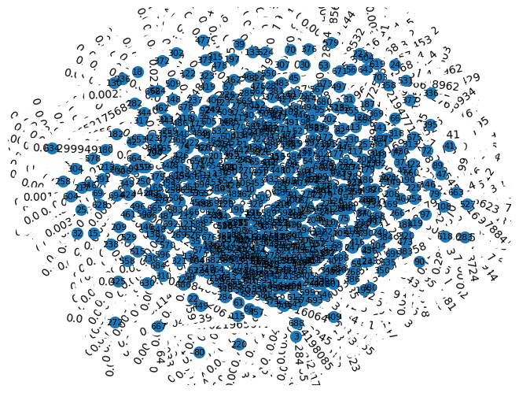

Closeness centrality#
Langkah 1: Crawl data judul berita dan isi berita dari Kompas.com#
import requests
from bs4 import BeautifulSoup
from datetime import datetime, timedelta
# URL yang akan di-crawl
base_url = "https://indeks.kompas.com/terpopuler/?site=all&date="
start_date = "2023-10-01"
end_date = "2023-10-30"
# Membuat list untuk menyimpan data
data = []
# Fungsi untuk mengambil data berita dari halaman web
def crawl_kompas_news(url):
response = requests.get(url)
soup = BeautifulSoup(response.text, "html.parser")
# Cari semua elemen dengan kelas 'article__list__title'
news_elements = soup.find_all("div", class_="article__list__title")
for element in news_elements:
# Dapatkan judul dan tautan berita
title = element.h3.a.text
link = element.h3.a["href"]
# Crawl isi berita dari tautan judul
article_text = crawl_kompas_article(link)
# Tambahkan data ke list
data.append({"Judul": title, "Isi Berita": article_text})
# Fungsi untuk mengambil isi berita dari tautan judul berita
def crawl_kompas_article(article_url):
response = requests.get(article_url)
soup = BeautifulSoup(response.text, "html.parser")
# Cari elemen dengan kelas 'read__content'
content_element = soup.find("div", class_="read__content")
# Dapatkan isi berita
article_text = content_element.get_text()
return article_text
# Loop untuk tanggal dari start_date hingga end_date
current_date = datetime.strptime(start_date, "%Y-%m-%d") # Konversi tanggal awal ke objek datetime
end_date = datetime.strptime(end_date, "%Y-%m-%d") # Konversi tanggal akhir ke objek datetime
while current_date <= end_date:
current_url = f"{base_url}{current_date.strftime('%Y-%m-%d')}" # Menggunakan strftime untuk format tanggal
print(f"Mengambil berita untuk tanggal {current_date.strftime('%Y-%m-%d')}")
crawl_kompas_news(current_url)
# Lanjut ke tanggal berikutnya
current_date += timedelta(days=1)
# Membuat dataframe pandas dari data
df = pd.DataFrame(data)
# Menyimpan dataframe ke dalam file CSV
df.to_csv("berita_kompas.csv", index=False)
Mengambil berita untuk tanggal 2023-10-01
Mengambil berita untuk tanggal 2023-10-02
---------------------------------------------------------------------------
KeyboardInterrupt Traceback (most recent call last)
<ipython-input-1-e3e09fdbeb9d> in <cell line: 49>()
50 current_url = f"{base_url}{current_date.strftime('%Y-%m-%d')}" # Menggunakan strftime untuk format tanggal
51 print(f"Mengambil berita untuk tanggal {current_date.strftime('%Y-%m-%d')}")
---> 52 crawl_kompas_news(current_url)
53
54 # Lanjut ke tanggal berikutnya
<ipython-input-1-e3e09fdbeb9d> in crawl_kompas_news(url)
25
26 # Crawl isi berita dari tautan judul
---> 27 article_text = crawl_kompas_article(link)
28
29 # Tambahkan data ke list
<ipython-input-1-e3e09fdbeb9d> in crawl_kompas_article(article_url)
32 # Fungsi untuk mengambil isi berita dari tautan judul berita
33 def crawl_kompas_article(article_url):
---> 34 response = requests.get(article_url)
35 soup = BeautifulSoup(response.text, "html.parser")
36
/usr/local/lib/python3.10/dist-packages/requests/api.py in get(url, params, **kwargs)
71 """
72
---> 73 return request("get", url, params=params, **kwargs)
74
75
/usr/local/lib/python3.10/dist-packages/requests/api.py in request(method, url, **kwargs)
57 # cases, and look like a memory leak in others.
58 with sessions.Session() as session:
---> 59 return session.request(method=method, url=url, **kwargs)
60
61
/usr/local/lib/python3.10/dist-packages/requests/sessions.py in request(self, method, url, params, data, headers, cookies, files, auth, timeout, allow_redirects, proxies, hooks, stream, verify, cert, json)
587 }
588 send_kwargs.update(settings)
--> 589 resp = self.send(prep, **send_kwargs)
590
591 return resp
/usr/local/lib/python3.10/dist-packages/requests/sessions.py in send(self, request, **kwargs)
745
746 if not stream:
--> 747 r.content
748
749 return r
/usr/local/lib/python3.10/dist-packages/requests/models.py in content(self)
897 self._content = None
898 else:
--> 899 self._content = b"".join(self.iter_content(CONTENT_CHUNK_SIZE)) or b""
900
901 self._content_consumed = True
/usr/local/lib/python3.10/dist-packages/requests/models.py in generate()
814 if hasattr(self.raw, "stream"):
815 try:
--> 816 yield from self.raw.stream(chunk_size, decode_content=True)
817 except ProtocolError as e:
818 raise ChunkedEncodingError(e)
/usr/local/lib/python3.10/dist-packages/urllib3/response.py in stream(self, amt, decode_content)
931 """
932 if self.chunked and self.supports_chunked_reads():
--> 933 yield from self.read_chunked(amt, decode_content=decode_content)
934 else:
935 while not is_fp_closed(self._fp) or len(self._decoded_buffer) > 0:
/usr/local/lib/python3.10/dist-packages/urllib3/response.py in read_chunked(self, amt, decode_content)
1071
1072 while True:
-> 1073 self._update_chunk_length()
1074 if self.chunk_left == 0:
1075 break
/usr/local/lib/python3.10/dist-packages/urllib3/response.py in _update_chunk_length(self)
999 if self.chunk_left is not None:
1000 return None
-> 1001 line = self._fp.fp.readline() # type: ignore[union-attr]
1002 line = line.split(b";", 1)[0]
1003 try:
/usr/lib/python3.10/socket.py in readinto(self, b)
703 while True:
704 try:
--> 705 return self._sock.recv_into(b)
706 except timeout:
707 self._timeout_occurred = True
/usr/lib/python3.10/ssl.py in recv_into(self, buffer, nbytes, flags)
1272 "non-zero flags not allowed in calls to recv_into() on %s" %
1273 self.__class__)
-> 1274 return self.read(nbytes, buffer)
1275 else:
1276 return super().recv_into(buffer, nbytes, flags)
/usr/lib/python3.10/ssl.py in read(self, len, buffer)
1128 try:
1129 if buffer is not None:
-> 1130 return self._sslobj.read(len, buffer)
1131 else:
1132 return self._sslobj.read(len)
KeyboardInterrupt:
df["Isi Berita"] = df["Isi Berita"].str.replace('\n', '')
df
| Judul | Isi Berita | |
|---|---|---|
| 0 | Putra Megawati Sopiri Ganjar dan Rombongan Mel... | JAKARTA, KOMPAS.com - Putra Megawati Soekarnop... |
| 1 | Ada Dokumen Hendak Dimusnahkan Saat KPK Geleda... | JAKARTA, KOMPAS.com - Komisi Pemberantasan Kor... |
| 2 | Kecelakaan Beruntun di Tol Semarang, Kendaraan... | KOMPAS.com - Enam kendaraan terlibat kecelakaa... |
| 3 | Jessica Wongso Dilarang Wawancara di Film Doku... | KOMPAS.com - Salah satu adegan dalam film doku... |
| 4 | Jika Gibran Dipinang Prabowo, Puan Sebut PDI-P... | JAKARTA, KOMPAS.com - Ketua DPP PDI-P Bidang P... |
| ... | ... | ... |
| 700 | 5 Fakta Turis Asing Ingin Dekati Kawah hingga ... | KOMPAS.com - Seorang wisatawan asing di kawasa... |
| 701 | TKN Jokowi-Ma'ruf Sebut Ada Bendera HTI di Kam... | JAKARTA, KOMPAS.com - Anggota Dewan Pengarah B... |
| 702 | Cemburu Jadi Motif Pelaku Bunuh Pria yang Jena... | BATAM, KOMPAS.com - Kasus pembunuhan pria yang... |
| 703 | Video: Detik-detik Jatuhnya Meteor 10 Kali Bom... | KOMPAS.com - 18 Desember tahun lalu, sebuah me... |
| 704 | Survei Charta Politika: Elektabilitas PSI Tert... | JAKARTA KOMPAS.com - Survei terbaru Charta Pol... |
705 rows × 2 columns
df.to_csv("Data_berita.csv", index=False)
Langkah 2: Ekstraksi Kalimat (NLTK)#
import pandas as pd
df = pd.read_csv("/content/drive/MyDrive/ppw/tugas/data_tugas4/Data_berita.csv")
df
| Judul | Isi Berita | |
|---|---|---|
| 0 | Putra Megawati Sopiri Ganjar dan Rombongan Mel... | JAKARTA, KOMPAS.com - Putra Megawati Soekarnop... |
| 1 | Ada Dokumen Hendak Dimusnahkan Saat KPK Geleda... | JAKARTA, KOMPAS.com - Komisi Pemberantasan Kor... |
| 2 | Kecelakaan Beruntun di Tol Semarang, Kendaraan... | KOMPAS.com - Enam kendaraan terlibat kecelakaa... |
| 3 | Jessica Wongso Dilarang Wawancara di Film Doku... | KOMPAS.com - Salah satu adegan dalam film doku... |
| 4 | Jika Gibran Dipinang Prabowo, Puan Sebut PDI-P... | JAKARTA, KOMPAS.com - Ketua DPP PDI-P Bidang P... |
| ... | ... | ... |
| 700 | 5 Fakta Turis Asing Ingin Dekati Kawah hingga ... | KOMPAS.com - Seorang wisatawan asing di kawasa... |
| 701 | TKN Jokowi-Ma'ruf Sebut Ada Bendera HTI di Kam... | JAKARTA, KOMPAS.com - Anggota Dewan Pengarah B... |
| 702 | Cemburu Jadi Motif Pelaku Bunuh Pria yang Jena... | BATAM, KOMPAS.com - Kasus pembunuhan pria yang... |
| 703 | Video: Detik-detik Jatuhnya Meteor 10 Kali Bom... | KOMPAS.com - 18 Desember tahun lalu, sebuah me... |
| 704 | Survei Charta Politika: Elektabilitas PSI Tert... | JAKARTA KOMPAS.com - Survei terbaru Charta Pol... |
705 rows × 2 columns
#install library
!pip install sastrawi
!pip install swifter
!pip install gensim
Collecting sastrawi
Downloading Sastrawi-1.0.1-py2.py3-none-any.whl (209 kB)
━━━━━━━━━━━━━━━━━━━━━━━━━━━━━━━━━━━━━━━━ 209.7/209.7 kB 4.0 MB/s eta 0:00:00
?25hInstalling collected packages: sastrawi
Successfully installed sastrawi-1.0.1
Collecting swifter
Downloading swifter-1.4.0.tar.gz (1.2 MB)
━━━━━━━━━━━━━━━━━━━━━━━━━━━━━━━━━━━━━━━━ 1.2/1.2 MB 13.1 MB/s eta 0:00:00
?25h Preparing metadata (setup.py) ... ?25l?25hdone
Requirement already satisfied: pandas>=1.0.0 in /usr/local/lib/python3.10/dist-packages (from swifter) (1.5.3)
Requirement already satisfied: psutil>=5.6.6 in /usr/local/lib/python3.10/dist-packages (from swifter) (5.9.5)
Requirement already satisfied: dask[dataframe]>=2.10.0 in /usr/local/lib/python3.10/dist-packages (from swifter) (2023.8.1)
Requirement already satisfied: tqdm>=4.33.0 in /usr/local/lib/python3.10/dist-packages (from swifter) (4.66.1)
Requirement already satisfied: click>=8.0 in /usr/local/lib/python3.10/dist-packages (from dask[dataframe]>=2.10.0->swifter) (8.1.7)
Requirement already satisfied: cloudpickle>=1.5.0 in /usr/local/lib/python3.10/dist-packages (from dask[dataframe]>=2.10.0->swifter) (2.2.1)
Requirement already satisfied: fsspec>=2021.09.0 in /usr/local/lib/python3.10/dist-packages (from dask[dataframe]>=2.10.0->swifter) (2023.6.0)
Requirement already satisfied: packaging>=20.0 in /usr/local/lib/python3.10/dist-packages (from dask[dataframe]>=2.10.0->swifter) (23.2)
Requirement already satisfied: partd>=1.2.0 in /usr/local/lib/python3.10/dist-packages (from dask[dataframe]>=2.10.0->swifter) (1.4.1)
Requirement already satisfied: pyyaml>=5.3.1 in /usr/local/lib/python3.10/dist-packages (from dask[dataframe]>=2.10.0->swifter) (6.0.1)
Requirement already satisfied: toolz>=0.10.0 in /usr/local/lib/python3.10/dist-packages (from dask[dataframe]>=2.10.0->swifter) (0.12.0)
Requirement already satisfied: importlib-metadata>=4.13.0 in /usr/local/lib/python3.10/dist-packages (from dask[dataframe]>=2.10.0->swifter) (6.8.0)
Requirement already satisfied: python-dateutil>=2.8.1 in /usr/local/lib/python3.10/dist-packages (from pandas>=1.0.0->swifter) (2.8.2)
Requirement already satisfied: pytz>=2020.1 in /usr/local/lib/python3.10/dist-packages (from pandas>=1.0.0->swifter) (2023.3.post1)
Requirement already satisfied: numpy>=1.21.0 in /usr/local/lib/python3.10/dist-packages (from pandas>=1.0.0->swifter) (1.23.5)
Requirement already satisfied: zipp>=0.5 in /usr/local/lib/python3.10/dist-packages (from importlib-metadata>=4.13.0->dask[dataframe]>=2.10.0->swifter) (3.17.0)
Requirement already satisfied: locket in /usr/local/lib/python3.10/dist-packages (from partd>=1.2.0->dask[dataframe]>=2.10.0->swifter) (1.0.0)
Requirement already satisfied: six>=1.5 in /usr/local/lib/python3.10/dist-packages (from python-dateutil>=2.8.1->pandas>=1.0.0->swifter) (1.16.0)
Building wheels for collected packages: swifter
Building wheel for swifter (setup.py) ... ?25l?25hdone
Created wheel for swifter: filename=swifter-1.4.0-py3-none-any.whl size=16507 sha256=db69994267aebd45275dff1000f2fadc2bedfb4649f994072ed109fd52462b8e
Stored in directory: /root/.cache/pip/wheels/e4/cf/51/0904952972ee2c7aa3709437065278dc534ec1b8d2ad41b443
Successfully built swifter
Installing collected packages: swifter
Successfully installed swifter-1.4.0
Requirement already satisfied: gensim in /usr/local/lib/python3.10/dist-packages (4.3.2)
Requirement already satisfied: numpy>=1.18.5 in /usr/local/lib/python3.10/dist-packages (from gensim) (1.23.5)
Requirement already satisfied: scipy>=1.7.0 in /usr/local/lib/python3.10/dist-packages (from gensim) (1.11.3)
Requirement already satisfied: smart-open>=1.8.1 in /usr/local/lib/python3.10/dist-packages (from gensim) (6.4.0)
import numpy as np
from nltk.corpus import stopwords
import re
import nltk
nltk.download('stopwords')
nltk.download('wordnet')
nltk.download('punkt')
from Sastrawi.Stemmer.StemmerFactory import StemmerFactory
from nltk.tokenize import sent_tokenize, word_tokenize
from sklearn.feature_extraction.text import TfidfVectorizer
[nltk_data] Downloading package stopwords to /root/nltk_data...
[nltk_data] Unzipping corpora/stopwords.zip.
[nltk_data] Downloading package wordnet to /root/nltk_data...
[nltk_data] Downloading package punkt to /root/nltk_data...
[nltk_data] Unzipping tokenizers/punkt.zip.
Menghilangkan tanda baca#
#Remove Puncutuation
clean_tag = re.compile('@\S+')
clean_url = re.compile('https?:\/\/.*[\r\n]*')
clean_hastag = re.compile('#\S+')
clean_symbol = re.compile('[^a-zA-Z]')
def clean_punct(text):
text = clean_tag.sub('', str(text))
text = clean_url.sub('', text)
text = clean_hastag.sub(' ', text)
text = clean_symbol.sub(' ', text)
return text
# Buat kolom tambahan untuk data description yang telah diremovepunctuation
preprocessing = df['Isi Berita'].apply(clean_punct)
clean=pd.DataFrame(preprocessing)
clean
| Isi Berita | |
|---|---|
| 0 | JAKARTA KOMPAS com Putra Megawati Soekarnop... |
| 1 | JAKARTA KOMPAS com Komisi Pemberantasan Kor... |
| 2 | KOMPAS com Enam kendaraan terlibat kecelakaa... |
| 3 | KOMPAS com Salah satu adegan dalam film doku... |
| 4 | JAKARTA KOMPAS com Ketua DPP PDI P Bidang P... |
| ... | ... |
| 700 | KOMPAS com Seorang wisatawan asing di kawasa... |
| 701 | JAKARTA KOMPAS com Anggota Dewan Pengarah B... |
| 702 | BATAM KOMPAS com Kasus pembunuhan pria yang... |
| 703 | KOMPAS com Desember tahun lalu sebuah me... |
| 704 | JAKARTA KOMPAS com Survei terbaru Charta Pol... |
705 rows × 1 columns
Tokenisasi#
data_clean=[]
for i in range(len(preprocessing)):
data_clean.append(preprocessing[i])
tokenize=[]
for i in range(len(data_clean)):
token=word_tokenize(data_clean[i])
tokendata = []
for x in token :
tokendata.append(x)
tokenize.append(tokendata)
print(tokendata)
Output hidden; open in https://colab.research.google.com to view.
Stopword Removal#
stopword=[]
for i in range(len(tokenize)):
listStopword = set(stopwords.words('indonesian'))
removed=[]
for x in (tokenize[i]):
if x not in listStopword:
removed.append(x)
stopword.append(removed)
print(removed)
['JAKARTA', 'KOMPAS', 'com', 'Putra', 'Megawati', 'Soekarnoputri', 'Ketua', 'DPP', 'PDI', 'P', 'M', 'Prananda', 'Prabowo', 'akrab', 'disapa', 'Nanan', 'menyopiri', 'calon', 'presiden', 'bacapres', 'PDI', 'P', 'Ganjar', 'Pranowo', 'Rakernas', 'IV', 'PDI', 'P', 'Sabtu', 'Saat', 'Nanan', 'mengemudikan', 'mobil', 'golf', 'ditumpangi', 'Ganjar', 'karpet', 'merah', 'Selain', 'Ganjar', 'Ketua', 'Umum', 'PDI', 'P', 'Megawati', 'Soekarnoputri', 'Sekjen', 'Hasto', 'Kristiyanto', 'Ganjar', 'Hasto', 'duduk', 'bersebelahan', 'kursi', 'Sementara', 'Megawati', 'menemani', 'Nanan', 'duduk', 'kursi', 'Baca', 'Hari', 'Kedua', 'Rakernas', 'IV', 'PDI', 'P', 'Megawati', 'Beri', 'Arahan', 'Tertutup', 'Ketua', 'KPU', 'Ketua', 'KPK', 'Jadi', 'NarasumberDi', 'kursi', 'Ganjar', 'Hasto', 'Mindo', 'Sianipar', 'menjabat', 'Ketua', 'Bidang', 'Koperasi', 'UMKM', 'DPP', 'PDI', 'P', 'Mobil', 'golf', 'berjalan', 'pelan', 'karpet', 'merah', 'arena', 'Rakernas', 'IV', 'PDI', 'P', 'Jiexpo', 'Kemayoran', 'Megawati', 'Ganjar', 'Hasto', 'menengok', 'arah', 'sekeliling', 'sembari', 'melempar', 'senyum', 'Sedangkan', 'Nanan', 'fokus', 'jalur', 'mobil', 'golf', 'Momen', 'kebersamaan', 'Ganjar', 'keluarga', 'PDI', 'P', 'berulang', 'kali', 'Rakernas', 'IV', 'kali', 'Baca', 'Kehadiran', 'Sandiaga', 'Mahfud', 'Rakernas', 'PDI', 'P', 'Tengah', 'Isu', 'Jadi', 'Cawapres', 'GanjarSebelumnya', 'Rakernas', 'IV', 'PDI', 'P', 'kebersamaan', 'Ganjar', 'menjemput', 'Presiden', 'Joko', 'Widodo', 'Jokowi', 'kader', 'PDI', 'P', 'menghadiri', 'pembukaan', 'Rakernas', 'Ganjar', 'arena', 'Rakernas', 'Ia', 'menyambut', 'kedatangan', 'Megawati', 'didampingi', 'istrinya', 'Siti', 'Atiqoh', 'Kemudian', 'momen', 'kebersamaan', 'Ganjar', 'Jokowi', 'menggandeng', 'tangan', 'Megawati', 'menuruni', 'anak', 'tangga', 'panggung', 'Rakernas', 'Baca', 'Momen', 'Jokowi', 'Bisiki', 'Ganjar', 'Tengah', 'Rakernas', 'PDI', 'P', 'Sekjen', 'PDI', 'P', 'Hasto', 'Kristiyanto', 'bentuk', 'kekompakan', 'keluarga', 'Megawati', 'PDI', 'P', 'Momen', 'menjauhkan', 'spekulasi', 'Namun', 'Hasto', 'membeberkan', 'lengkap', 'spekulasi', 'Dapatkan', 'update', 'berita', 'pilihan', 'breaking', 'news', 'Kompas', 'com', 'Mari', 'bergabung', 'Grup', 'Telegram', 'Kompas', 'com', 'News', 'Update', 'klik', 'link']
['JAKARTA', 'KOMPAS', 'com', 'Komisi', 'Pemberantasan', 'Korupsi', 'KPK', 'menduga', 'dokumen', 'ditemukan', 'dimusnahkan', 'penyidik', 'KPK', 'menggeledah', 'kantor', 'Kementerian', 'Pertanian', 'Kementan', 'bukti', 'transaksi', 'tersangka', 'dugaan', 'korupsi', 'Kementan', 'Beberapa', 'dokumen', 'diduga', 'kuat', 'bukti', 'aliran', 'uang', 'diterima', 'ditetapkan', 'Tersangka', 'perkara', 'Juru', 'Bicara', 'Penindakan', 'Kelembagaan', 'KPK', 'Ali', 'Fikri', 'Sabtu', 'Ali', 'KPK', 'mengenakan', 'pidana', 'orang', 'orang', 'diduga', 'merintangi', 'penyidikan', 'diatur', 'Undang', 'Undang', 'Tindak', 'Pidana', 'Korupsi', 'Kami', 'ingatkan', 'internal', 'Kementan', 'RI', 'terkait', 'penghalangan', 'merintangi', 'proses', 'penyidikan', 'tim', 'penyidik', 'KPK', 'Ali', 'Baca', 'KPK', 'Sebut', 'Ada', 'Dokumen', 'Hendak', 'Dimusnahkan', 'Saat', 'Geledah', 'Kantor', 'KementanIa', 'dipanggil', 'saksi', 'tersangka', 'kelak', 'kooperatif', 'mendukung', 'proses', 'penyidikan', 'perkara', 'KPK', 'menggeledah', 'kantor', 'Kementan', 'kawasan', 'Pasar', 'Minggu', 'Jakarta', 'Jumat', 'kemarin', 'menggeledah', 'rumah', 'dinas', 'Menteri', 'Pertanian', 'Syahrul', 'Yasin', 'Limpo', 'kawasan', 'Widya', 'Chandra', 'Jakarta', 'sehari', 'Penggeledahan', 'rangka', 'penyidikan', 'dugaan', 'korupsi', 'lingkungan', 'Kementan', 'KPK', 'menetapkan', 'tersangka', 'dugaan', 'korupsi', 'terkait', 'pemaksaan', 'jabatan', 'Kementan', 'mengungkap', 'identitas', 'tersangkanya', 'Baca', 'Menanti', 'Tersangka', 'Korupsi', 'Kementan', 'Rumah', 'Kantor', 'Mentan', 'Digeledah', 'Senpi', 'Uang', 'Tunai', 'DisitaAli', 'identitas', 'tersangka', 'penyidikan', 'dinilai', 'Ali', 'membantah', 'membenarkan', 'informasi', 'Menteri', 'Pertanian', 'Syahrul', 'Yasin', 'Limpo', 'Sekretaris', 'Jenderal', 'Kementan', 'Kasdi', 'Subagyono', 'Direktur', 'Alat', 'Pertanian', 'Kementan', 'Muhammad', 'Hatta', 'ditetapkan', 'tersangka', 'Siapa', 'tersangka', 'resmi', 'Dalam', 'perkara', 'tersangka', 'dijerat', 'Pasal', 'e', 'Undang', 'Undang', 'Nomor', 'Tahun', 'Pemberantasan', 'Tindak', 'Pidana', 'Korupsi', 'Tipikor', 'Pasal', 'Pegawai', 'negeri', 'penyelenggara', 'negara', 'maksud', 'menguntungkan', 'orang', 'melawan', 'hukum', 'menyalahgunakan', 'kekuasaannya', 'memaksa', 'membayar', 'menerima', 'pembayaran', 'potongan', 'Menurut', 'Ali', 'perkara', 'pasal', 'klaster', 'dugaan', 'korupsi', 'Kementan', 'diusut', 'KPK', 'Dapatkan', 'update', 'berita', 'pilihan', 'breaking', 'news', 'Kompas', 'com', 'Mari', 'bergabung', 'Grup', 'Telegram', 'Kompas', 'com', 'News', 'Update', 'klik', 'link']
['KOMPAS', 'com', 'Enam', 'kendaraan', 'terlibat', 'kecelakaan', 'beruntun', 'Km', 'jalur', 'B', 'ruas', 'Tol', 'Semarang', 'Solo', 'wilayah', 'Kota', 'Semarang', 'Jawa', 'Tengah', 'Sabtu', 'WIB', 'Kecelakaan', 'mobil', 'menumpuk', 'Baca', 'Kenapa', 'Kecelakaan', 'Beruntun', 'Sering', 'Terjadi', 'Lajur', 'Kanan', 'Jalan', 'Tol', 'Kasat', 'Lantas', 'Polrestabes', 'Semarang', 'AKBP', 'Yunaldi', 'korban', 'jiwa', 'peristiwa', 'Baca', 'Usai', 'Bongkar', 'Muat', 'Truk', 'Tangki', 'Pertamina', 'Kecelakaan', 'Tol', 'Cipali', 'Orang', 'TewasKendaraan', 'terlibat', 'kecelakaan', 'Honda', 'Freed', 'Honda', 'CRV', 'Toyota', 'Hiace', 'Mazda', 'bus', 'truk', 'Keenam', 'kendaraan', 'berjalan', 'arah', 'Ungaran', 'Kota', 'Semarang', 'dikutip', 'Antara', 'Petugas', 'memperoleh', 'laporan', 'lokasi', 'kejadian', 'evakuasi', 'Arus', 'lintas', 'kendaraan', 'arah', 'Solo', 'Semarang', 'lancar', 'enam', 'kendaraan', 'dievakuasi', 'Adapun', 'petugas', 'mendalami', 'penyebab', 'kecelakaan', 'beruntun', 'Dapatkan', 'update', 'berita', 'pilihan', 'breaking', 'news', 'Kompas', 'com', 'Mari', 'bergabung', 'Grup', 'Telegram', 'Kompas', 'com', 'News', 'Update', 'klik', 'link']
['KOMPAS', 'com', 'Salah', 'adegan', 'film', 'dokumenter', 'berjudul', 'Ice', 'Cold', 'Murder', 'Coffee', 'and', 'Jessica', 'Wongso', 'tayang', 'Netflix', 'mengundang', 'perhatian', 'warganet', 'media', 'sosial', 'Adegan', 'larangan', 'Jessica', 'Wongso', 'wawancara', 'kru', 'film', 'Untuk', 'Jessica', 'menjalani', 'separuh', 'hukumannya', 'menjeratnya', 'Lapas', 'Kelas', 'IIA', 'Pondok', 'Bambu', 'Kalapas', 'Jakarta', 'Sayang', 'banget', 'Jessica', 'Wongso', 'ga', 'dibolehin', 'wawancara', 'tulis', 'akun', 'Wongso', 'gaboleh', 'diwawancara', 'aja', 'udah', 'bikin', 'bingung', 'sekelas', 'teroris', 'aja', 'wawancara', 'yaa', 'ga', 'menggiring', 'opini', 'publik', 'atensi', 'publik', 'lumayan', 'Jessica', 'Wongso', 'dilarang', 'melaluikan', 'wawancara', 'kru', 'film', 'dokumenter', 'tayang', 'Netflix', 'Penjelasan', 'KemenkumhamKabag', 'Humas', 'Protokol', 'Ditjen', 'Pemasyarakatan', 'Pas', 'Kementerian', 'Hukum', 'HAM', 'Kemenkumham', 'Rika', 'Aprianti', 'wawancara', 'narapidana', 'dizinkan', 'berkaitan', 'pembinaan', 'diatur', 'peraturan', 'liputan', 'Lembaga', 'Pemasyarakatan', 'Rika', 'menyinggung', 'izin', 'peliputan', 'kru', 'film', 'dokumenter', 'Netflix', 'wawancara', 'Jessica', 'Wongso', 'Tidak', 'izin', 'terkait', 'dikonfirmasi', 'Kompas', 'com', 'Sabtu', 'Menurutnya', 'izin', 'berkaitan', 'pembinaan', 'Tidak', 'izin', 'liputan', 'Rika', 'peliputan', 'pandemi', 'Covid', 'Saat', 'pandemi', 'Covid', 'Namun', 'tepatnya', 'Dia', 'pandemi', 'Covid', 'menerapkan', 'pembatasan', 'peliputan', 'kunjungan', 'keluarga', 'narapidana', 'virtual', 'Baca', 'Perbedaan', 'Penjaga', 'Tahanan', 'Kejaksaan', 'Kemenkumham', 'Seleksi', 'CPNS']
['JAKARTA', 'KOMPAS', 'com', 'Ketua', 'DPP', 'PDI', 'P', 'Bidang', 'Politik', 'Keamanan', 'Puan', 'Maharani', 'menyebut', 'partainya', 'koalisi', 'pendukung', 'Prabowo', 'Subianto', 'calon', 'presiden', 'bacapres', 'Gibran', 'Rakabuming', 'Raka', 'calon', 'wakil', 'presiden', 'bacawapres', 'pendamping', 'Menurut', 'Puan', 'PDI', 'P', 'pengandaian', 'wacana', 'Diketahui', 'Gibran', 'tercatat', 'kader', 'PDI', 'P', 'Ya', 'meminang', 'pertimbangan', 'Tinggal', 'dipinang', 'Itu', 'berandai', 'andai', 'Puan', 'ditemui', 'Jiexpo', 'Kemayoran', 'Jakarta', 'Rakernas', 'IV', 'PDI', 'P', 'Sabtu', 'Baca', 'Prabowo', 'Subianto', 'Saya', 'Sering', 'Dihujat', 'Difitnah', 'Terakhir', 'Dibilang', 'Mencekik', 'WamenPuan', 'mempersilakan', 'wacana', 'Gibran', 'dipasangkan', 'bacapres', 'Ganjar', 'Pranowo', 'Menurut', 'menandakan', 'Gibran', 'dipandang', 'sosok', 'muda', 'berprestasi', 'Dan', 'salah', 'kandidat', 'dipertimbangkan', 'ya', 'Jadi', 'Puan', 'Ketua', 'DPR', 'RI', 'mengajak', 'tua', 'muda', 'laki', 'perempuan', 'memandang', 'sosok', 'calon', 'pemimpin', 'Baca', 'Soal', 'Kemungkinan', 'Cawapres', 'Ganjar', 'Diumumkan', 'Saat', 'Rakernas', 'PDI', 'P', 'Hasto', 'Berkelakar', 'Kita', 'Lihat', 'CuacanyaDia', 'kesempatan', 'maju', 'Pemilihan', 'Presiden', 'kontestasi', 'pemimpin', 'tingkat', 'daerah', 'Sebelumnya', 'diberitakan', 'Wakil', 'Ketua', 'Dewan', 'Pembina', 'Partai', 'Gerindra', 'Hashim', 'Djojohadikusumo', 'Gibran', 'Rakabuming', 'Raka', 'sosok', 'ideal', 'calon', 'wakil', 'presiden', 'mendampingi', 'Prabowo', 'Subianto', 'Pilpres', 'Figur', 'wali', 'kota', 'Solo', 'mengimbangi', 'figur', 'Prabowo', 'politisi', 'senior', 'kaya', 'pengalaman', 'Sementara', 'Gibran', 'figur', 'muda', 'berusia', 'masuk', 'dunia', 'politik', 'Saya', 'balance', 'seimbang', 'Kalau', 'wakil', 'presiden', 'pengalamannya', 'bertambah', 'pasangan', 'ideal', 'acara', 'Millenial', 'Fest', 'Surabaya', 'Jumat', 'Namun', 'menunggu', 'putusan', 'Mahkamah', 'Agung', 'gugatan', 'batas', 'usia', 'capres', 'cawapres', 'Kita', 'tunggu', 'hasil', 'putusan', 'MA', 'adik', 'Prabowo', 'Subianto', 'Dapatkan', 'update', 'berita', 'pilihan', 'breaking', 'news', 'Kompas', 'com', 'Mari', 'bergabung', 'Grup', 'Telegram', 'Kompas', 'com', 'News', 'Update', 'klik', 'link']
['KOMPAS', 'com', 'Enam', 'kendaraan', 'terlibat', 'kecelakaan', 'beruntun', 'Km', 'jalur', 'B', 'ruas', 'Tol', 'Semarang', 'Solo', 'wilayah', 'Kota', 'Semarang', 'Jawa', 'Tengah', 'Sabtu', 'WIB', 'Kendaraan', 'terlibat', 'tabrakan', 'beruntun', 'Honda', 'Freed', 'Honda', 'CRV', 'Toyota', 'Hiace', 'Mazda', 'bus', 'truk', 'Baca', 'Kecelakaan', 'Beruntun', 'Tol', 'Semarang', 'Kendaraan', 'MenumpukKanit', 'Laka', 'Satlantas', 'Polrestabes', 'Semarang', 'AKP', 'Adji', 'Setiawan', 'kecelakaan', 'bus', 'melaju', 'lajur', 'kanan', 'arah', 'Solo', 'Semarang', 'Baca', 'Viral', 'Video', 'Kecelakaan', 'KA', 'Bangunkarta', 'Vs', 'Truk', 'Petak', 'Cipunegara', 'Indramayu', 'Ini', 'Penjelasan', 'KAIDiduga', 'berkendara', 'sopir', 'bus', 'waspada', 'menjaga', 'jarak', 'aman', 'menabrak', 'mobil', 'Honda', 'Freed', 'dikuti', 'Honda', 'CRV', 'Toyota', 'Hiace', 'Mazda', 'berjalan', 'searah', 'depannya', 'Diketahui', 'lokasi', 'pelambatan', 'arus', 'lintas', 'perawatan', 'jalan', 'Sewaktu', 'keempat', 'kendaraan', 'didorong', 'bus', 'Honda', 'CRV', 'terpental', 'lajur', 'kiri', 'berbalik', 'arah', 'mengakibatkan', 'kecelakaan', 'truk', 'tronton', 'Truk', 'tronton', 'melaju', 'searah', 'lajur', 'kiri', 'Tidak', 'korban', 'jiwa', 'kecelakaan', 'Namun', 'penumpang', 'mengalami', 'luka', 'ringan', 'menjalani', 'perawatan', 'rumah', 'sakit', 'Artikel', 'tayang', 'TribunJateng', 'com', 'judul', 'Kronologi', 'Lengkap', 'Kecelakaan', 'Beruntun', 'Bus', 'Murni', 'Jaya', 'Tabrak', 'Kendaraan', 'Lain', 'Tol', 'UngaranDapatkan', 'update', 'berita', 'pilihan', 'breaking', 'news', 'Kompas', 'com', 'Mari', 'bergabung', 'Grup', 'Telegram', 'Kompas', 'com', 'News', 'Update', 'klik', 'link']
['JAKARTA', 'KOMPAS', 'com', 'Polda', 'Metro', 'Jaya', 'menerima', 'pucuk', 'senjata', 'api', 'senpi', 'hasil', 'penggeledahan', 'Komisi', 'Pemberantasan', 'Korupsi', 'KPK', 'rumah', 'dinas', 'Menteri', 'Pertanian', 'Mentan', 'Syahrul', 'Yasin', 'Limpo', 'Jalan', 'Jalan', 'Widya', 'Chandra', 'Jakarta', 'Selatan', 'Dirintelkam', 'Polda', 'Metro', 'Jaya', 'Kombes', 'Hirbakh', 'Wahyu', 'Setiawan', 'belasan', 'senpi', 'berjenis', 'revolver', 'S', 'W', 'Tanfoglio', 'Ada', 'revolver', 'S', 'W', 'Walther', 'Tanfoglio', 'Hirbakh', 'dikonfirmasi', 'Sabtu', 'Kendati', 'Hirbakh', 'legalitas', 'belasan', 'senpi', 'ditemukan', 'rumah', 'dinas', 'Mentan', 'Baca', 'KPK', 'Temukan', 'Senpi', 'Rumah', 'Dinas', 'Mentan', 'Syahrul', 'Yasin', 'Limpo', 'Kini', 'Diserahkan', 'Polda', 'MetroKarena', 'Polda', 'Metro', 'Jaya', 'langsung', 'berkoordinasi', 'Baintelkam', 'Mabes', 'Polri', 'menelusuri', 'izin', 'kepemilikan', 'senpi', 'Sedang', 'dikoordinasikan', 'Baintelkam', 'dicek', 'izinnya', 'Di', 'samping', 'Hibakh', 'Polda', 'Metro', 'Jaya', 'memeriksa', 'Mentan', 'temuan', 'senpi', 'rumah', 'dinas', 'Adapun', 'KPK', 'menggeledah', 'rumah', 'dinas', 'Mentan', 'Syahrul', 'Jalan', 'Widya', 'Chandra', 'Kebayoran', 'Baru', 'Jakarta', 'Selatan', 'Kamis', 'sore', 'Jumat', 'siang', 'Selain', 'mengamankan', 'uang', 'tunai', 'miliaran', 'rupiah', 'dokumen', 'KPK', 'mengamankan', 'senjata', 'Baca', 'Temuan', 'Senjata', 'Api', 'Rumah', 'Menteri', 'Pertanian', 'Syahrul', 'Yasin', 'LimpoJuru', 'Bicara', 'Penindakan', 'Kelembagaan', 'KPK', 'Ali', 'Fikri', 'tim', 'penyidik', 'berkoordinasi', 'Polda', 'Metro', 'Jaya', 'terkait', 'senjata', 'Tadi', 'senpi', 'Kami', 'berkoordinasi', 'Kepolisian', 'Daerah', 'DKI', 'Jakarta', 'Ali', 'konferensi', 'pers', 'Gedung', 'Merah', 'Putih', 'KPK', 'Jakarta', 'Selatan', 'Jumat', 'Meski', 'Ali', 'enggan', 'membeberkan', 'senpi', 'ditemukan', 'rumah', 'Syahrul', 'legalitas', 'kepemilikan', 'senjata', 'Menurut', 'Ali', 'KPK', 'menganalisis', 'barang', 'benda', 'diduga', 'terkait', 'dugaan', 'korupsi', 'lingkungan', 'Kementerian', 'Pertanian', 'Nanti', 'intinya', 'kewenangan', 'KPK', 'Ali', 'Dapatkan', 'update', 'berita', 'pilihan', 'breaking', 'news', 'Kompas', 'com', 'Mari', 'bergabung', 'Grup', 'Telegram', 'Kompas', 'com', 'News', 'Update', 'klik', 'link']
['KOMPAS', 'com', 'Nama', 'Ida', 'Susanti', 'ramai', 'diperbincangkan', 'media', 'sosial', 'kisahnya', 'menikahi', 'wanita', 'Melalui', 'akun', 'TikTok', 'foto', 'wanita', 'sosok', 'jas', 'pria', 'diunggah', 'keterangan', 'Suami', 'Ku', 'Ternyata', 'Seorang', 'Perempuan', 'Ida', 'Susanti', 'warga', 'Surabaya', 'mengaku', 'dikenalkan', 'temannya', 'mengaku', 'bernama', 'Nardinata', 'Marshioni', 'Suhaimi', 'an', 'Ia', 'mencoba', 'berkomunikasi', 'sosok', 'balasan', 'Setelahnya', 'menjalin', 'hubungan', 'pasangan', 'kekasih', 'Saat', 'kecurigaan', 'calon', 'suaminya', 'Dari', 'fisik', 'Nardinata', 'lelaki', 'memiliki', 'payudara', 'berperawakan', 'tegak', 'Dia', 'bilang', 'suka', 'kakak', 'ku', 'dilamar', 'maksudnya', 'biar', 'usianya', 'Ida', 'ditemui', 'awak', 'media', 'Jumat', 'Baca', 'Wanita', 'Makassar', 'Tewas', 'Terlindas', 'Saat', 'Hendak', 'Menyalip', 'Truk', 'TrailerKeduanya', 'memutuskan', 'mengadakan', 'tukar', 'cincin', 'salah', 'hotel', 'Surabaya', 'Juli', 'Peristiwa', 'dihadiri', 'keluarga', 'teman', 'belah', 'Besoknya', 'Jakarta', 'tanda', 'tangan', 'surat', 'nikah', 'Aku', 'ditemenin', 'kakak', 'ku', 'orang', 'catatan', 'sipil', 'bawa', 'surat', 'nikah', 'Kebahagiaan', 'Ida', 'berlanjut', 'diajak', 'sang', 'suaminya', 'madu', 'Bangkok', 'Thailand', 'tanggal', 'Juli', 'Sedangkan', 'surat', 'pernikahan', 'dibawa', 'kakak', 'si', 'pria', 'bernama', 'Om', 'Jhon', 'Tangkapan', 'layar', 'TikTok', 'Unggahan', 'kisah', 'Ida', 'Susanti', 'ditipu', 'suami', 'perempuan', 'akun', 'TikTok', 'mengaku', 'wanitaSaat', 'Thailand', 'Nardinata', 'identitas', 'terang', 'terangan', 'perempuan', 'bernama', 'asli', 'Nera', 'Maria', 'Suhaimi', 'Joseph', 'Saat', 'ngomong', 'kawin', 'pengen', 'istri', 'loh', 'ngomong', 'gitu', 'Terus', 'cuman', 'butuh', 'pendamping', 'Baca', 'Pengemudi', 'Wanita', 'Jadi', 'Korban', 'Modus', 'Kejahatan', 'Teriaki', 'Ban', 'Mobil', 'KempisMendengar', 'pengakuan', 'Ida', 'berusaha', 'hubungan', 'ditolak', 'Nardinata', 'Ida', 'mengaku', 'sayang', 'sosok', 'laki', 'laki', 'Nardinata', 'berusaha', 'menerima', 'Namun', 'catatan', 'menipunya']
['KOMPAS', 'com', 'Penyidik', 'Komisi', 'Pemberantasan', 'Korupsi', 'KPK', 'menggeledah', 'rumah', 'dinas', 'Menteri', 'Pertanian', 'Mentan', 'Syahrul', 'Yasin', 'Limpo', 'Kompleks', 'Perumahan', 'Menteri', 'Jalan', 'Widya', 'Chandra', 'Kebayoran', 'Baru', 'Jakarta', 'Selatan', 'Penggeledahan', 'Kamis', 'sore', 'WIB', 'Jumat', 'Sebelumnya', 'KPK', 'menyelidiki', 'dugaan', 'korupsi', 'lingkungan', 'Kementerian', 'Pertanian', 'Kementan', 'Ada', 'pejabat', 'lingkungan', 'Kementan', 'diperiksa', 'Mentan', 'Syahrul', 'Yasin', 'Limpo', 'Baca', 'Rumah', 'Menteri', 'Pertanian', 'Syahrul', 'Yasin', 'Limpo', 'Digeledah', 'KPK', 'Kasus', 'Apa', 'Berikut', 'temuan', 'penggeledahan', 'KPK', 'rumah', 'Syahrul', 'Yasin', 'Limpo', 'KPK', 'temukan', 'uang', 'tunai', 'puluhan', 'miliarKPK', 'mengamankan', 'uang', 'tunai', 'bentuk', 'pecahan', 'asing', 'rupiah', 'senilai', 'puluhan', 'miliar', 'penggeledahan', 'rumah', 'Syahrul', 'Yasin', 'Limpo', 'Juru', 'Bicara', 'Penindakan', 'Kelembagaan', 'KPK', 'Ali', 'Fikri', 'tim', 'penyelidik', 'KPK', 'membawa', 'alat', 'mesin', 'penghitung', 'uang', 'penggeledahan', 'Jadi', 'tim', 'penyidik', 'bawa', 'alat', 'penghitung', 'uang', 'proses', 'penggeledahan', 'Ali', 'dikutip', 'Kompas', 'com', 'Selain', 'tim', 'penyelidik', 'KPK', 'menyita', 'dokumen', 'transaksi', 'uang', 'pembelian', 'aset', 'barang', 'bukti', 'elektronik', 'Tentu', 'tim', 'analisis', 'dijadikan', 'barang', 'bukti', 'perkara', 'lakukan', 'penyelesaiannya', 'proses', 'penyidikan', 'Ali', 'Sudah', 'tetapkan', 'tersangkaMenurut', 'Ali', 'KPK', 'menetapkan', 'tersangka', 'dugaan', 'korupsi', 'lingkungan', 'Kementerian', 'pertanian', 'Di', 'KPK', 'SOP', 'standard', 'operating', 'procedure', 'proses', 'penyidikan', 'ditetapkan', 'tersangka', 'Ali', 'Meskipun', 'KPK', 'mengungkap', 'identitas', 'tersangka', 'Nama', 'diumumkan', 'resmi', 'penyidikan', 'dinilai', 'Pihaknya', 'membantah', 'mengkonfirmasi', 'informasi', 'Menteri', 'Pertanian', 'Syahrul', 'Yasin', 'Limpo', 'Sekretaris', 'Jenderal', 'Sekjen', 'Kementan', 'Kasdi', 'Subagyono', 'Direktur', 'Alat', 'Pertanian', 'Kementan', 'Muhammad', 'Hatta', 'ditetapkan', 'tersangka', 'Siapa', 'tersangka', 'resmi', 'Ali', 'KOMPAS', 'com', 'ZINTAN', 'PRIHATINI', 'Penyidik', 'KPK', 'diduga', 'membawa', 'mesin', 'penghitung', 'uang', 'rumah', 'Mentan', 'Syahrul', 'Yasin', 'Limpo', 'Kebayoran', 'Baru', 'Jakarta', 'Selatan', 'Kamis', 'Baca', 'Geledah', 'Kantor', 'Kementerian', 'Pertanian', 'KPK', 'Angkut', 'Dokumen', 'Bukti', 'Elektronik']
['KOMPAS', 'com', 'Unggahan', 'rencana', 'penarikan', 'sumbangan', 'Rp', 'juta', 'siswa', 'SMPN', 'Ponorogo', 'Jawa', 'timur', 'viral', 'media', 'sosial', 'Dalam', 'dokumen', 'rencana', 'penggunaan', 'anggaran', 'sumbangan', 'siswa', 'kelas', 'VII', 'SMPN', 'Ponorogo', 'pembelian', 'alat', 'musik', 'senilai', 'Rp', 'mobil', 'senilai', 'Rp', 'juta', 'unit', 'komputer', 'Rp', 'Namun', 'Kepala', 'Sekolah', 'SMPN', 'Ponorogo', 'Imam', 'Mujahid', 'menganggap', 'rencana', 'pembelian', 'mobil', 'komputer', 'alat', 'musik', 'sumbangan', 'orangtua', 'sesuai', 'prosedur', 'Ia', 'keputusan', 'dirapatkan', 'orangtua', 'komite', 'sekolah', 'Jadi', 'program', 'komite', 'komite', 'mitra', 'sekolah', 'Jadi', 'sekolah', 'manut', 'komite', 'Komite', 'kebijakan', 'orang', 'tua', 'Kedua', 'proses', 'pertimbangan', 'Imam', 'Jumat', 'Baca', 'Viral', 'Penarikan', 'Sumbangan', 'SMPN', 'Ponorogo', 'Beli', 'Mobil', 'Begini', 'Kata', 'Kepsek', 'KadisdikTak', 'orangtua', 'setuju', 'pengadaan', 'mobilSalah', 'wali', 'murid', 'siswa', 'SMPN', 'berinisial', 'P', 'mengaku', 'keberatan', 'sumbangan', 'orangtua', 'siswa', 'membeli', 'mobil', 'Lain', 'halnya', 'sumbangan', 'membeli', 'komputer', 'alat', 'musik', 'siswa', 'Kalau', 'mobil', 'Jadi', 'keberatan', 'peremajaan', 'mobil', 'P', 'Untuk', 'P', 'berharap', 'kebijakan', 'dikaji', 'ulang', 'Terlebih', 'rapat', 'komite', 'orangtua', 'menyetujui', 'usulan', 'pengadaan', 'mobil', 'Sementara', 'Imam', 'Kepala', 'Sekolah', 'SMPN', 'Ponorogo', 'menyebut', 'rapat', 'aparat', 'penegak', 'hukum', 'sambutan', 'Baca', 'Luas', 'Luka', 'Bakar', 'Belum', 'Berubah', 'Balita', 'Ponorogo', 'Tercebur', 'Kuah', 'Panas', 'Akan', 'Operasi', 'KetigaIa', 'sumbangan', 'bersifat', 'sukarela', 'Untuk', 'keringanan', 'dibebaskan', 'Beliau', 'beliau', 'APH', 'sambutan', 'sukarela', 'sukarelawan', 'mematok', 'yangbmiskin', 'keringanan', 'bebas', 'Imam', 'Soal', 'pembelian', 'mobil', 'Imam', 'kendaraan', 'mengatar', 'anak', 'anak', 'mengikuti', 'perlombaan', 'lokasi', 'Ia', 'berdalih', 'mobil', 'operasional', 'mogok', 'Sementara', 'dikutip', 'Tribun', 'Jatim', 'mobil', 'milik', 'sekolah', 'terparkir', 'mobil', 'Mitsubishi', 'Maven', 'diremajakan', 'mobil', 'Isuzu', 'Elf', 'Long', 'Sepenting', 'pengadaan', 'mobil', 'komputer', 'alat', 'musik', 'freepik', 'com', 'Ilustrasi', 'pendidikan', 'Sementara', 'Ketua', 'Komite', 'SMPN', 'Ponorogo', 'Mulyani', 'dikonfirmasi', 'terpisah', 'wali', 'murid', 'kelas', 'VII', 'SMPN', 'Ponorogo', 'menyetujui', 'dana', 'sumbangan', 'Rp', 'juta', 'rapay', 'Selasa']
['JAKARTA', 'KOMPAS', 'com', 'Bakal', 'calon', 'presiden', 'bacapres', 'Koalisi', 'Perubahan', 'Persatuan', 'KPP', 'Anies', 'Baswedan', 'mengkritik', 'kebijakan', 'pemerintah', 'menutup', 'fitur', 'Tiktok', 'Shop', 'sosial', 'media', 'Tiktok', 'Menurut', 'mendasar', 'berasal', 'fitur', 'Tiktok', 'Shop', 'produk', 'impor', 'dijual', 'sosial', 'media', 'Sebenarnya', 'yg', 'mendasar', 'peta', 'perdagangan', 'internasionalnya', 'produk', 'negeri', 'tuan', 'rumah', 'negeri', 'Anies', 'ditemui', 'Senayan', 'JCC', 'Jakarta', 'Sabtu', 'Ia', 'produk', 'lokal', 'negeri', 'masif', 'diperjual', 'belikan', 'Tiktok', 'Shop', 'keuntungan', 'mengalir', 'pedagang', 'lokal', 'Baca', 'Jika', 'Terpilih', 'Presiden', 'Anies', 'Janji', 'Libatkan', 'Anak', 'Muda', 'Rumuskan', 'Kebijakan', 'Ketika', 'kesempatan', 'produk', 'negeri', 'medium', 'apapun', 'imbuh', 'Oleh', 'Anies', 'pemerintah', 'semestinya', 'fokus', 'pengendalian', 'barang', 'impor', 'dijual', 'Tiktok', 'Shop', 'platform', 'merugikan', 'pedagang', 'lokal', 'Saya', 'mengendalikan', 'menghentikan', 'pratek', 'praktek', 'impor', 'ilegal', 'kali', 'kerjakan', 'membereskan', 'perusahaan', 'Sebelumnya', 'pemerintah', 'Kementerian', 'Perdagangan', 'Kemendag', 'resmi', 'melarang', 'TikTok', 'berdagang', 'Seperti', 'TikTok', 'kegiatan', 'jual', 'beli', 'fitur', 'TikTok', 'Shop', 'Baca', 'Singgung', 'Mahalnya', 'Ongkos', 'Politik', 'Anies', 'Ungkit', 'Lagi', 'Utang', 'Sandiaga', 'Larangan', 'menyusul', 'terbitnya', 'Permendag', 'Nomor', 'Tahun', 'Revisi', 'Permendag', 'Tahun', 'Tentang', 'Ketentuan', 'Perizinan', 'Usaha', 'Periklanan', 'Pembinaan', 'Pengawasan', 'Pelaku', 'Usaha', 'Perdagangan', 'Melalui', 'Sistem', 'Elektronik', 'PMSE', 'Zulkifli', 'Hasan', 'beleid', 'social', 'commerce', 'TikTok', 'Shop', 'dilarang', 'berdagang', 'kecuali', 'promosi', 'Jadi', 'diatur', 'media', 'sosial', 'social', 'commerce', 'silakan', 'social', 'commerce', 'promosi', 'iklan', 'berjualan', 'e', 'commerce', 'online', 'ya', 'Jadi', 'tinggal', 'milih', 'aja', 'pelaku', 'usaha', 'belanja', 'jumpa', 'pers', 'Jakarta', 'Rabu', 'Dapatkan', 'update', 'berita', 'pilihan', 'breaking', 'news', 'Kompas', 'com', 'Mari', 'bergabung', 'Grup', 'Telegram', 'Kompas', 'com', 'News', 'Update', 'klik', 'link']
['JAKARTA', 'KOMPAS', 'com', 'Menteri', 'Pertahanan', 'Ketua', 'Umum', 'Partai', 'Gerindra', 'Prabowo', 'Subianto', 'alasannya', 'bergabung', 'Kabinet', 'Indonesia', 'Maju', 'pemerintahan', 'Presiden', 'Joko', 'Widodo', 'periode', 'Padahal', 'Pilpres', 'pasangan', 'calon', 'presiden', 'calon', 'wakil', 'presiden', 'Prabowo', 'Sandiaga', 'Uno', 'lawan', 'Jokowi', 'KH', 'Ma', 'ruf', 'Amin', 'Prabowo', 'salah', 'alasannya', 'bergabung', 'dengaan', 'pemerintahan', 'Jokowi', 'diadu', 'domba', 'Jadi', 'saudara', 'saudara', 'bergabung', 'Pak', 'Jokowi', 'memahami', 'sejarah', 'bangsa', 'Indonesia', 'adu', 'domba', 'Pak', 'Jokowi', 'tergerak', 'hatinya', 'tergerak', 'hatinya', 'diadu', 'domba', 'Prabowo', 'acara', 'Seminar', 'Nasional', 'Institut', 'Madani', 'Nusantara', 'Hotel', 'Bidakara', 'Jakarta', 'Sabtu', 'Baca', 'Jika', 'Gibran', 'Dipinang', 'Prabowo', 'Puan', 'Sebut', 'PDI', 'P', 'Tak', 'Masalah', 'Lebih', 'Prabowo', 'menilai', 'Jokowi', 'orang', 'Indonesia', 'berpihak', 'mencintai', 'rakyat', 'Indonesia', 'Oleh', 'memutuskan', 'bergabung', 'Kabinet', 'Indonesia', 'Maju', 'Saya', 'diadu', 'domba', 'beliau', 'ajak', 'ya', 'bergabung', 'Kita', 'bersatu', 'Indonesia', 'tenang', 'Indonesia', 'kuat', 'Indonesia', 'diadu', 'domba', 'Baca', 'Prabowo', 'Subianto', 'Saya', 'Sering', 'Dihujat', 'Difitnah', 'Terakhir', 'Dibilang', 'Mencekik', 'WamenSelain', 'Prabowo', 'maaf', 'pendukungnya', 'kecewa', 'keputusannya', 'bergabung', 'pemerintahan', 'Presiden', 'Jokowi', 'Bakal', 'calon', 'presiden', 'diusung', 'Koalisi', 'Indonesia', 'Maju', 'Pilpres', 'berharap', 'pendukungnya', 'kecewa', 'Dan', 'mengerti', 'mengerti', 'pendukung', 'kecewa', 'Saya', 'mengerti', 'bergabung', 'Pak', 'Jokowi', 'Saya', 'mengerti', 'emak', 'emak', 'nih', 'Dapatkan', 'update', 'berita', 'pilihan', 'breaking', 'news', 'Kompas', 'com', 'Mari', 'bergabung', 'Grup', 'Telegram', 'Kompas', 'com', 'News', 'Update', 'klik', 'link']
['BADUNG', 'KOMPAS', 'com', 'Ketua', 'Umum', 'Partai', 'Solidaritas', 'Indonesia', 'PSI', 'Kaesang', 'Pangarep', 'optimistis', 'partainya', 'lolos', 'parliamentary', 'threshold', 'ambang', 'batas', 'parlemen', 'melenggang', 'Senayan', 'Pemilihan', 'Legislatif', 'Pileg', 'Bahkan', 'anak', 'bungsu', 'Presiden', 'Jokowi', 'berangan', 'angan', 'jatah', 'minimal', 'kursi', 'wakil', 'ketua', 'DPR', 'RI', 'Baca', 'Kaesang', 'Pesan', 'Pak', 'Lurah', 'Saya', 'Ada', 'Jakarta', 'Ojo', 'Kesusu', 'Pokoknya', 'menang', 'fraksi', 'DPR', 'RI', 'Syukur', 'syukur', 'minimal', 'wakil', 'ketua', 'DPR', 'RI', 'Sekarang', 'partai', 'lolos', 'parliamentary', 'threshold', 'persen', 'Balik', 'rendah', 'hati', 'Kaesang', 'membuka', 'acara', 'Konsolidasi', 'Bappilu', 'DPW', 'PSI', 'Bali', 'Kuta', 'Badung', 'Bali', 'Sabtu', 'Udah', 'sombong', 'terkenal', 'ya', 'Kaesang', 'berkelakar', 'Baca', 'Kaesang', 'Jadi', 'Ketum', 'LSI', 'Denny', 'JA', 'PSI', 'Incar', 'Jokowi', 'Effect', 'Lolos', 'SenayanDalam', 'kesempatan', 'Kaesang', 'menyinggung', 'menganggapnya', 'memiliki', 'sifat', 'pemberontak', 'berbeda', 'partai', 'sang', 'ayah', 'kakaknya', 'Gibran', 'Rakabuming', 'Raka', 'Diketahui', 'Jokowi', 'Gibran', 'kader', 'PDI', 'Perjuangan', 'Kaesang', 'bercanda', 'dipanggil', 'bro', 'ketua', 'Ketum', 'sapaan', 'identik', 'lingkup', 'kader', 'PSI', 'Dia', 'memilih', 'disapa', 'bli', 'sapaan', 'pria', 'Bali', 'ketum', 'menyesuaikan', 'kunjungannya', 'Orang', 'berjiwa', 'muda', 'beda', 'efektif', 'cepat', 'sat', 'set', 'set', 'gitu', 'Tadi', 'dibilang', 'Bali', 'dipanggil', 'bro', 'ketum', 'bli', 'ketum', 'Kaesang', 'disambut', 'tepuk', 'tangan', 'peserta', 'acara', 'Orang', 'keluarga', 'rebel', 'beda', 'partai', 'Makanya', 'PSI', 'panggilan', 'nya', 'bro', 'sis', 'menyesuaikan', 'tempatnya', 'Kaesang', 'Dapatkan', 'update', 'berita', 'pilihan', 'breaking', 'news', 'Kompas', 'com', 'Mari', 'bergabung', 'Grup', 'Telegram', 'Kompas', 'com', 'News', 'Update', 'klik', 'link']
['JAKARTA', 'KOMPAS', 'com', 'Polda', 'Metro', 'Jaya', 'memeriksa', 'food', 'vlogger', 'William', 'Anderson', 'alias', 'Codeblue', 'berkait', 'laporannya', 'pencemaran', 'nama', 'diduga', 'food', 'vlogger', 'Farida', 'Nurhan', 'Penyidik', 'melontarkan', 'Codeblu', 'berkait', 'laporannya', 'dugaan', 'pencemaran', 'nama', 'baiknya', 'media', 'elektronik', 'UU', 'ITE', 'Dilakukan', 'pemeriksaan', 'klarifikasi', 'pelapor', 'tim', 'penyelidik', 'mengajukan', 'rangka', 'penyelidikan', 'Direktur', 'Reserse', 'Kriminal', 'Khusus', 'Dirkrimsus', 'Polda', 'Metro', 'Jaya', 'Kombes', 'Ade', 'Safri', 'Simanjuntak', 'keterangannya', 'Sabtu', 'Ade', 'Codeblu', 'dugaan', 'pencemaran', 'nama', 'farida', 'September', 'diasedang', 'perjalanan', 'Kebayoran', 'Baru', 'Baca', 'Duduk', 'Perkara', 'Kisruh', 'Food', 'Vlogger', 'Codeblu', 'Farida', 'Nurhan', 'Berawal', 'Review', 'Warung', 'MakanDalam', 'pelaporannya', 'Codeblu', 'melampirkan', 'barang', 'bukti', 'diduga', 'bermuatan', 'unsur', 'pidana', 'Lima', 'lembar', 'print', 'out', 'profil', 'TikTok', 'komentar', 'TikTok', 'lembar', 'print', 'out', 'akun', 'TikTok', 'transkrip', 'video', 'pesan', 'Instagram', 'sembilan', 'print', 'out', 'akun', 'Instagram', 'flashdisk', 'Lebih', 'Ade', 'memeriksa', 'saksi', 'terlapor', 'Farida', 'Nurhan', 'mengusut', 'Rencana', 'tindak', 'pemeriksaan', 'klarifikasi', 'saksi', 'saksi', 'terkait', 'pemeriksaan', 'klarifikasi', 'terlapor', 'koordinasi', 'ahli', 'Sebagai', 'informasi', 'laporan', 'Codeblu', 'diterima', 'teregister', 'nomor', 'LP', 'B', 'IX', 'SPKT', 'POLDA', 'METRO', 'JAYA', 'tertanggal', 'September', 'Baca', 'Dulu', 'Dirahasiakan', 'Nama', 'Asli', 'Codeblu', 'Food', 'Vlogger', 'Berseteru', 'Farida', 'Nurhan', 'Kini', 'Terungkap', 'Dalam', 'laporan', 'Codeblu', 'Farida', 'disangka', 'melanggar', 'Pasal', 'Ayat', 'Jo', 'Pasal', 'Ayat', 'UU', 'ITE', 'Pasal', 'KUHP', 'Pasal', 'KUHP', 'pencemaran', 'nama', 'fitnah', 'Sebelumnya', 'perseteruan', 'Farida', 'Nurhan', 'Codeblu', 'bertambah', 'Farida', 'menyerang', 'mengungkap', 'identitas', 'pribadi', 'Codeblu', 'media', 'sosial', 'Berawal', 'konten', 'Codeblu', 'warung', 'makan', 'Nyak', 'Kopsah', 'Di', 'konten', 'Codeblu', 'dikenal', 'kritis', 'blak', 'blakan', 'menilai', 'makanan', 'kritikan', 'tajam', 'makanan', 'warung', 'Nyak', 'Kopsah', 'Video', 'diunggahnya', 'TikTok', 'ditonton', 'juta', 'kali', 'Sebagai', 'informasi', 'Codeblu', 'dikenal', 'kreator', 'konten', 'berdebar', 'pemilik', 'restoran', 'ternama', 'ulasannya', 'jujur', 'Codeblu', 'merahasiakan', 'identitasnya', 'Namun', 'menduga', 'sosok', 'penasihat', 'kuliner', 'profesional', 'Karena', 'menyembunyikan', 'wajahnya', 'Tapi', 'unggahan', 'Farida', 'konten', 'mengungkap', 'identitas', 'Codeblu', 'menertawakannya', 'Dapatkan', 'update', 'berita', 'pilihan', 'breaking', 'news', 'Kompas', 'com', 'Mari', 'bergabung', 'Grup', 'Telegram', 'Kompas', 'com', 'News', 'Update', 'klik', 'link']
['DENPASAR', 'KOMPAS', 'com', 'Ketua', 'Umum', 'Partai', 'Solidaritas', 'Indonesia', 'PSI', 'Kaesang', 'Pangarep', 'berkelakar', 'pesan', 'Pak', 'Lurah', 'tergesa', 'gesa', 'bahasa', 'Jawa', 'ojo', 'kesusu', 'mendukung', 'salah', 'calon', 'presiden', 'capres', 'Pemilu', 'Putra', 'bungsu', 'Presiden', 'Joko', 'Widodo', 'Jokowi', 'PSI', 'terbuka', 'menentukan', 'arah', 'dukungan', 'Baca', 'Antara', 'Misteri', 'Bacawapres', 'Ganjar', 'Kaesang', 'Mendadak', 'Ketum', 'Baik', 'mendukung', 'Ganjar', 'Pranowo', 'Prabowo', 'Subianto', 'Anies', 'Baswedan', 'resmi', 'capres', 'partai', 'Baca', 'Kaesang', 'Jadi', 'Ketum', 'PSI', 'Dinilai', 'Bakal', 'Jadi', 'Sekoci', 'Jokowi', 'Usai', 'Lengser', 'Kalau', 'pribadi', 'terbuka', 'mendukung', 'Pak', 'Ganjar', 'mendukung', 'Prabowo', 'Pak', 'Anies', 'terbuka', 'acara', 'Konsolidasi', 'Bappilu', 'DPW', 'PSI', 'Bali', 'Kuta', 'Badung', 'Bali', 'Sabtu', 'Tapi', 'ojo', 'kesusu', 'pesan', 'Pak', 'Lurah', 'Ini', 'lurah', 'Jakarta', 'salah', 'sangka', 'Masa', 'saran', 'lurah', 'sambungnya', 'Adapun', 'Kaesang', 'menampik', 'Pak', 'Lurah', 'maksud', 'sang', 'ayah', 'Presiden', 'Jokowi', 'Enggak', 'pesan', 'Jokowi', 'emang', 'lurah', 'Jokowi', 'identik', 'dijuluki', 'Pak', 'Lurah', 'situ', 'omong', 'Lurah', 'Kuningan', 'senyum', 'semringah', 'Sebelumnya', 'pesan', 'ojo', 'kesusu', 'mendukung', 'Capres', 'Presiden', 'Jokowi', 'bertemu', 'Wakil', 'Ketua', 'Dewan', 'Pembina', 'PSI', 'Grace', 'Natalie', 'Sekretaris', 'Dewan', 'Pembina', 'PSI', 'Raja', 'Juli', 'Antoni', 'Istana', 'Kepresidenan', 'Jakarta', 'Senin', 'Saat', 'Grace', 'partainya', 'memilih', 'bersikap', 'netral', 'situasi', 'politik', 'PSI', 'mengamati', 'kepastian', 'sosok', 'calon', 'presiden', 'maju', 'pemilu', 'Kalau', 'resmi', 'Komisi', 'Pemilihan', 'Umum', 'KPU', 'berubah', 'Jadi', 'PSI', 'pagi', 'pagi', 'memutuskan', 'situasi', 'Grace', 'Jadi', 'pantau', 'Pak', 'Jokowi', 'netral', 'ojo', 'kesusu', 'terburu', 'buru', 'Ini', 'drama', 'sinetron', 'Pak', 'Jokowi', 'Grace', 'Dapatkan', 'update', 'berita', 'pilihan', 'breaking', 'news', 'Kompas', 'com', 'Mari', 'bergabung', 'Grup', 'Telegram', 'Kompas', 'com', 'News', 'Update', 'klik', 'link']
['KOMPAS', 'com', 'Badan', 'Pengawas', 'Obat', 'Makanan', 'BPOM', 'merilis', 'enam', 'obat', 'tradisional', 'batuk', 'pilek', 'klaim', 'atasi', 'flu', 'cepat', 'Informasi', 'diunggah', 'BPOM', 'akun', 'Instagram', 'resmi', 'Jumat', 'Menurut', 'BPOM', 'efek', 'cepat', 'cespleng', 'obat', 'tradisional', 'batuk', 'pilek', 'disebabkan', 'kandungan', 'bahan', 'kimia', 'obat', 'BKO', 'produk', 'obat', 'tradisional', 'Obat', 'tradisional', 'mengandung', 'BKO', 'produk', 'obat', 'tradisional', 'proses', 'pembuatannya', 'bahan', 'kimia', 'obat', 'tujuan', 'menambah', 'fungsi', 'produk', 'obat', 'Penambahan', 'BKO', 'obat', 'tradisional', 'dinilai', 'berbahaya', 'kesehatan', 'tubuh', 'Sebab', 'penambahan', 'BKO', 'dosis', 'aturan', 'pakai', 'bahan', 'kimia', 'obat', 'Adapun', 'bahan', 'kimia', 'obat', 'kerap', 'obat', 'tradisional', 'batuk', 'pilek', 'Efedrin', 'HCL', 'Pseudoefederin', 'HCL', 'Daftar', 'obat', 'tradisional', 'batuk', 'pilek', 'BKOMasih', 'dilansir', 'sumber', 'daftar', 'produk', 'obat', 'tradisional', 'batuk', 'pilek', 'mengandung', 'BKO', 'Chuanpect', 'Pilek', 'Delcingfungsan', 'Powder', 'Dilias', 'Ke', 'Cie', 'Slao', 'Chuan', 'Yen', 'Gan', 'Mao', 'Tong', 'Kaplet', 'Forvidna', 'Ji', 'Zhi', 'Tang', 'Jiang', 'Humas', 'BPOM', 'keterangan', 'tertulis', 'enam', 'produk', 'obat', 'tradisional', 'dilarang', 'beredar', 'masyarakat', 'Pengawasan', 'produk', 'ilegal', 'obat', 'tradisional', 'mengandung', 'BKO', 'dijual', 'offline', 'online', 'dikonfirmasi', 'Kompas', 'com', 'Sabtu', 'Baca', 'BPOM', 'Waspada', 'Obat', 'Pelangsing', 'Mengandung', 'BKO', 'Efek', 'Samping', 'Ciri', 'ciri', 'DaftarnyaDampak', 'konsumsi', 'obat', 'tradisional', 'batuk', 'pilek', 'BKOLarangan', 'edar', 'obat', 'tradisional', 'batuk', 'pilek', 'BKO', 'dalamnya', 'alasan', 'Konsumsi', 'obat', 'tradisional', 'berdampak', 'buruk', 'kesehatan', 'Seseorang', 'mengonsumsi', 'obat', 'tradisional', 'batuk', 'pilek', 'BKO', 'pengawasan', 'dokter', 'mengalami', 'gejala', 'PusingSakit', 'kepalaIritasi', 'lambungReaksi', 'alergi', 'ruam', 'gatal', 'Pembengkakan', 'mulut', 'bibir', 'wajah', 'Gejala', 'gejala', 'ditimbulkan', 'kandungan', 'BKO', 'efedrin', 'HCL', 'pseudoefederin', 'HCL', 'Baca', 'Daftar', 'Obat', 'Tradisional', 'Penambah', 'Stamina', 'Pria', 'Mengandung', 'BKO', 'Menurut', 'BPOMLayanan', 'pengaduan', 'BPOMMenindaklanjuti', 'larangan', 'obat', 'tradisional', 'mengandung', 'BKO', 'BPOM', 'pengawasan', 'Terkait', 'masyarakat', 'berkontribusi', 'melapor', 'penggunaan', 'produksi', 'peredaran', 'obat', 'tradiosional', 'BKO', 'Masyarakat', 'melapor', 'menghubungi', 'kontak', 'Contact', 'Center', 'HALOBPOM', 'Unit', 'layanan', 'pengaduan', 'konsumen', 'kantor', 'BPOM', 'Indonesia', 'Baca', 'BPOM', 'Rilis', 'Produk', 'Kosmetik', 'Obat', 'Tradisional', 'Berbahaya', 'Ini', 'DaftarnyaDapatkan', 'update', 'berita', 'pilihan', 'breaking', 'news', 'Kompas', 'com', 'Mari', 'bergabung', 'Grup', 'Telegram', 'Kompas', 'com', 'News', 'Update', 'klik', 'link']
['JAKARTA', 'KOMPAS', 'com', 'Ketua', 'DPP', 'PDI', 'P', 'Bidang', 'Politik', 'Keamanan', 'Puan', 'Maharani', 'mengaku', 'Presiden', 'Joko', 'Widodo', 'Jokowi', 'campur', 'urusan', 'cawe', 'cawe', 'partai', 'politik', 'parpol', 'Pilpres', 'Ini', 'Puan', 'bisikan', 'Jokowi', 'calon', 'presiden', 'bacapres', 'PDI', 'P', 'Ganjar', 'Pranowo', 'isu', 'Kepala', 'Negara', 'cawe', 'cawe', 'parpol', 'Saya', 'Pak', 'Jokowi', 'cawe', 'cawe', 'partai', 'Puan', 'ditemui', 'Jiexpo', 'Kemayoran', 'Jakarta', 'Sabtu', 'Baca', 'Momen', 'Jokowi', 'Bisiki', 'Ganjar', 'Tengah', 'Rakernas', 'PDI', 'P', 'Puan', 'urusan', 'Pilpres', 'murni', 'kewenangan', 'ketua', 'parpol', 'Diketahui', 'Jokowi', 'Ketum', 'parpol', 'sebatas', 'kader', 'partai', 'politik', 'PDI', 'P', 'Karena', 'ketua', 'partai', 'strategi', 'memenangkan', 'partainya', 'capres', 'cawapres', 'dukungannya', 'Puan', 'Ketua', 'DPR', 'RI', 'bisikan', 'Jokowi', 'Ganjar', 'kader', 'PDI', 'P', 'berseberangan', 'Pilpres', 'Baca', 'Ungkap', 'Alasan', 'Gabung', 'Kabinet', 'Jokowi', 'Prabowo', 'Saya', 'Tidak', 'Mau', 'Diadu', 'DombaUntuk', 'Puan', 'berharap', 'sosok', 'pemimpin', 'nasional', 'Jokowi', 'kader', 'terbaik', 'PDI', 'P', 'Jadi', 'kemarin', 'akrab', 'Pak', 'Jokowi', 'Mas', 'Ganjar', 'diduga', 'bersebelahan', 'ya', 'ya', 'berdua', 'kader', 'PDI', 'Perjuangan', 'berharap', 'presiden', 'wakil', 'presiden', 'kader', 'terbaik', 'PDI', 'Perjuangan', 'pungkas', 'mantan', 'Menko', 'PMK', 'Sebelumnya', 'Presiden', 'Joko', 'Widodo', 'mengaku', 'partai', 'politik', 'menjelang', 'Pilpres', 'Pernyatan', 'Jokowi', 'relawan', 'pendukungnya', 'membuka', 'Rapat', 'Kerja', 'Nasional', 'Sekretariat', 'Nasional', 'Seknas', 'Jokowi', 'Hotel', 'Salak', 'Bogor', 'Sabtu', 'Saya', 'dalamnya', 'partai', 'partai', 'partai', 'Ingin', 'ngerti', 'Jokowi', 'Sabtu', 'dikutip', 'YouTube', 'Kompas', 'TV', 'Baca', 'Jokowi', 'Bisiki', 'Ganjar', 'Kedaulatan', 'Pangan', 'PDI', 'P', 'Ini', 'Kode', 'KerasMeski', 'Jokowi', 'mengungkap', 'informasi', 'ketahui', 'terkait', 'partai', 'politik', 'Ia', 'menyebut', 'informasi', 'diperoleh', 'aparat', 'intelijen', 'kendalinya', 'Badan', 'Intelijen', 'Negara', 'BIN', 'Polri', 'Tentara', 'Nasional', 'Indonesia', 'TNI', 'Dapatkan', 'update', 'berita', 'pilihan', 'breaking', 'news', 'Kompas', 'com', 'Mari', 'bergabung', 'Grup', 'Telegram', 'Kompas', 'com', 'News', 'Update', 'klik', 'link']
['KOMPAS', 'com', 'Komisi', 'Pemberantasan', 'Korupsi', 'KPK', 'menemukan', 'pucuk', 'senjata', 'api', 'menggeledah', 'rumah', 'dinas', 'milik', 'Menteri', 'Pertanian', 'RI', 'Syahrul', 'Yasin', 'Limpo', 'Selain', 'menemukan', 'senjata', 'KPK', 'mengamankan', 'uang', 'tunai', 'miliaran', 'rupiah', 'dokumen', 'Dikutip', 'Kompas', 'com', 'Jumat', 'Juru', 'Bicara', 'Penindakan', 'Kelembagaan', 'KPK', 'Ali', 'Fikri', 'menganalisis', 'temuan', 'senjata', 'api', 'Sejumlah', 'barang', 'senjata', 'api', 'diamankan', 'diduga', 'terkait', 'dugaan', 'korupsi', 'lingkungan', 'Kementerian', 'Pertanian', 'Kabid', 'Humas', 'Polda', 'Metro', 'Jaya', 'Kombes', 'Trunoyudo', 'Wisnu', 'Andiko', 'KPK', 'menitipkan', 'pucuk', 'senjata', 'Polda', 'Metro', 'Jaya', 'Dari', 'Dirintel', 'Polda', 'Metro', 'Jaya', 'bilang', 'diterima', 'senjata', 'api', 'sifatnya', 'titipan', 'Polda', 'Metro', 'Jaya', 'pendalaman', 'terkait', 'temuan', 'belasan', 'senjata', 'api', 'Baintelkam', 'Mabes', 'Polri', 'Lalu', 'aturan', 'kepemilikan', 'senjata', 'api', 'Indonesia', 'Baca', 'Dari', 'Tombak', 'Nuklir', 'Ini', 'Senjata', 'Paling', 'Mematikan', 'SejarahAturan', 'kepemilikan', 'senjata', 'aparatMantan', 'anggota', 'Komisi', 'Kepolisian', 'Nasional', 'Kompolnas', 'Edi', 'Saputra', 'Hasibuan', 'anggota', 'Polri', 'TNI', 'memiliki', 'persyaratan', 'selektif', 'izin', 'memiliki', 'senjata', 'api', 'Dilihat', 'memiliki', 'senjata', 'api', 'Bahkan', 'anggota', 'izin', 'Kompas', 'com', 'Sabtu', 'Edi', 'menyebut', 'polisi', 'izin', 'memiliki', 'senjata', 'api', 'kegiatan', 'operasional', 'Badan', 'Reserse', 'Kriminal', 'Bareskrim', 'Satuan', 'Samapta', 'Bhayangkara', 'Sabhara', 'Satuan', 'Lalu', 'Lintas', 'Satlantas', 'Korps', 'Brigade', 'Mobil', 'Brimob', 'Sedangkan', 'polisi', 'kegiatan', 'operasional', 'memiliki', 'izin', 'memiliki', 'senjata', 'api', 'Baca', 'Bagaimana', 'Aturan', 'Kepemilikan', 'Senjata', 'Api', 'Warga', 'Sipil']
['JAKARTA', 'KOMPAS', 'com', 'Toyota', 'Astra', 'Motor', 'TAM', 'pembaruan', 'sedan', 'Corolla', 'Altis', 'Ubahan', 'meliputi', 'eksterior', 'interior', 'Marketing', 'Director', 'PT', 'Toyota', 'Astra', 'Motor', 'Anton', 'Jimmi', 'Suwandy', 'New', 'Corolla', 'Altis', 'wujud', 'nyata', 'komitmen', 'Toyota', 'menghadirkan', 'ever', 'better', 'cars', 'semangat', 'Let', 's', 'Go', 'Beyond', 'Toyota', 'sentuhan', 'eksteriornya', 'dikenal', 'sporty', 'berkelas', 'Selain', 'interior', 'dilengkapi', 'sentuhan', 'entertainment', 'system', 'mendukung', 'kenyamanan', 'berkendara', 'keunggulannya', 'Anton', 'siaran', 'resmi', 'redaksi', 'terima', 'Sabtu', 'Baca', 'Toyota', 'Siapkan', 'GR', 'Corolla', 'Terbaru', 'Interior', 'Lebih', 'MewahTAM', 'All', 'New', 'Corolla', 'Altis', 'Saat', 'pilihan', 'tipe', 'Corolla', 'Altis', 'V', 'CVT', 'Corolla', 'Altis', 'HEV', 'CVT', 'Masih', 'dibangun', 'platform', 'TNGA', 'ubahan', 'eksterior', 'dibilang', 'pemanis', 'Bisa', 'lower', 'grille', 'desainnya', 'pakai', 'bilah', 'horizontal', 'membawa', 'aura', 'sporty', 'Kemudian', 'desain', 'pelek', 'berukuran', 'inci', 'dinamis', 'Pada', 'kabin', 'head', 'unit', 'tipe', 'berukuran', 'inci', 'terintegrasi', 'enam', 'speaker', 'fitur', 'Misal', 'NFC', 'HEV', 'wireless', 'Apple', 'CarPlay', 'Android', 'Auto', 'Baca', 'Mau', 'Pasang', 'Serat', 'Karbon', 'Mobil', 'Harga', 'Rp', 'JutaTAM', 'All', 'New', 'Corolla', 'Altis', 'Kemudian', 'instrument', 'cluster', 'dibekali', 'MID', 'berukuran', 'inci', 'tema', 'Casual', 'Smart', 'Sporty', 'diganti', 'sesuai', 'mode', 'berkendara', 'Tersedia', 'slot', 'USB', 'C', 'dimanfaatkan', 'mengisi', 'daya', 'gadget', 'Lalu', 'Wireless', 'Charger', 'konsol', 'dinikmati', 'tipe', 'Corolla', 'Altis', 'V', 'CVT', 'Penggunaan', 'sasis', 'TNGA', 'Toyota', 'meningkatkan', 'aspek', 'safety', 'tingkatan', 'Lebih', 'rem', 'ABS', 'EBD', 'BA', 'hadir', 'airbags', 'melindungi', 'penumpang', 'TAM', 'All', 'New', 'Corolla', 'Altis', 'Advanced', 'safety', 'features', 'Hill', 'Start', 'Assist', 'HSA', 'Vehicle', 'Stability', 'Control', 'VSC', 'Rear', 'Cross', 'Traffic', 'Alert', 'RCTA', 'Blind', 'Spot', 'Monitor', 'BSM', 'Emergency', 'Stop', 'Signal', 'tipe', 'New', 'Corolla', 'Altis']
['JAKARTA', 'KOMPAS', 'com', 'Menteri', 'Pertahanan', 'Menhan', 'Ketua', 'Umum', 'Ketum', 'Partai', 'Gerindra', 'Prabowo', 'Subianto', 'kerap', 'hujatan', 'difitnah', 'Prabowo', 'mengutarakan', 'kali', 'difitnah', 'terkait', 'dugaan', 'mencekik', 'Wakil', 'Menteri', 'Pertanian', 'Wamentan', 'Harvick', 'Hasnul', 'Qolbi', 'rapat', 'kabinet', 'Istana', 'Saya', 'ya', 'dihujat', 'difitnah', 'Yang', 'dibilang', 'mencekik', 'wakil', 'menteri', 'rapat', 'kabinet', 'Prabowo', 'acara', 'Seminar', 'Nasional', 'Institut', 'Madani', 'Nusantra', 'Hotel', 'Bidakara', 'Jakarta', 'Sabtu', 'Dalam', 'kesempatan', 'Prabowo', 'menyingung', 'pernyataan', 'menuduhnya', 'berkhianat', 'memilih', 'bergabung', 'kabinet', 'pemerintahan', 'dipimpin', 'Presiden', 'Joko', 'Widodo', 'Jokowi', 'Baca', 'Wacana', 'Duet', 'Ganjar', 'Prabowo', 'Pilpres', 'Siapa', 'Sudi', 'Mengalah', 'Jadi', 'Cawapres', 'Dia', 'berharap', 'pendukungnya', 'Pemilihan', 'Presiden', 'Pilpres', 'kecewa', 'keputusannya', 'bergabung', 'Kabinet', 'Indonesia', 'Maju', 'Meski', 'bergabung', 'pemerintahan', 'Era', 'Jokowi', 'periode', 'Prabowo', 'mengaku', 'berubah', 'sikapnya', 'kepentingan', 'rakyat', 'bangsa', 'Indonesia', 'Saya', 'membela', 'Tapi', 'orang', 'orang', 'berkhianat', 'bergabung', 'Pak', 'Jokowi', 'ternayata', 'berubah', 'Kalau', 'lagu', 'lagu', 'favorit', 'dulunya', 'Kesetiaanku', 'rakyat', 'luntur', 'sambungnya', 'Baca', 'Isu', 'Dua', 'Poros', 'Pilpres', 'PDI', 'P', 'Sebut', 'Kemungkinan', 'Terbuka', 'Duet', 'Ganjar', 'PrabowoIsu', 'Prabowo', 'cekik', 'WamentanAdapun', 'informasi', 'peristiwa', 'menampar', 'mencekik', 'kali', 'muncul', 'media', 'sosial', 'viral', 'Kabar', 'peristiwa', 'penamparan', 'capres', 'Istana', 'Kepresidenan', 'menjelang', 'rapat', 'terbatas', 'Disebutkan', 'capres', 'Prabowo', 'wamen', 'Wakil', 'Menteri', 'Pertanian', 'Harvick', 'Hasnul', 'Qolbi', 'Informasi', 'media', 'sosial', 'peristiwa', 'diduga', 'Prabowo', 'kesal', 'Kementerian', 'Pertanian', 'mendukung', 'salah', 'program', 'ditugaskan', 'Presiden', 'Jokowi', 'Prabowo', 'tanggapan', 'isu', 'mengunjungi', 'pabrik', 'alat', 'utama', 'sistem', 'persenjataan', 'alutsista', 'PT', 'Pindad', 'Jawa', 'Barat', 'Selasa', 'Prabowo', 'tertawa', 'mendengar', 'wartawan', 'terkait', 'informasi', 'peristiwa', 'penamparan', 'pencekikan', 'Prabowo', 'berdiri', 'samping', 'Presiden', 'Joko', 'Widodo', 'bertemu', 'sang', 'wamen', 'Baca', 'Duet', 'Prabowo', 'Ganjar', 'Dinilai', 'Sulit', 'Gengsi', 'Marwah', 'Politik', 'Saya', 'ketemu', 'wamennya', 'wakil', 'menteri', 'Prabowo', 'diikuti', 'tawa', 'Enggak', 'Selalu', 'menterinya', 'Menteri', 'Pertanian', 'Dapatkan', 'update', 'berita', 'pilihan', 'breaking', 'news', 'Kompas', 'com', 'Mari', 'bergabung', 'Grup', 'Telegram', 'Kompas', 'com', 'News', 'Update', 'klik', 'link']
['JAKARTA', 'KOMPAS', 'com', 'Sekretaris', 'Jenderal', 'PDI', 'P', 'Hasto', 'Kristiyanto', 'Ketua', 'Umum', 'PDI', 'P', 'Megawati', 'Soekarnoputri', 'kencang', 'berkontemplasi', 'nama', 'calon', 'wakil', 'presiden', 'cawapres', 'pendamping', 'Ganjar', 'Pranowo', 'mengerucut', 'Hal', 'Hasto', 'nama', 'kandidat', 'cawapres', 'mengerucut', 'Kita', 'berkontemplasi', 'malam', 'Ibu', 'Mega', 'kontemplasi', 'malam', 'beliau', 'memohon', 'petunjuk', 'Tuhan', 'Yang', 'Maha', 'Kuasa', 'nama', 'mengerucut', 'Hasto', 'ditemui', 'Jiexpo', 'Kemayoran', 'Jakarta', 'Sabtu', 'Hasto', 'menyadari', 'pelaksanaan', 'Rapat', 'Kerja', 'Nasional', 'Rakernas', 'IV', 'PDI', 'P', 'digelar', 'purnama', 'Baca', 'Kehadiran', 'Sandiaga', 'Mahfud', 'Rakernas', 'PDI', 'P', 'Tengah', 'Isu', 'Jadi', 'Cawapres', 'GanjarOleh', 'lantas', 'PDI', 'P', 'berkontemplasi', 'sosok', 'cawapres', 'Namun', 'Hasto', 'membeberkan', 'pengumuman', 'cawapres', 'dilaksanakan', 'penutupan', 'Rakernas', 'besok', 'Minggu', 'Kita', 'malam', 'Rakernas', 'bertepatan', 'purnama', 'Haha', 'Hasto', 'seraya', 'tertawa', 'Lebih', 'politikus', 'Yogyakarta', 'spesifik', 'nama', 'menguat', 'kandidat', 'cawapres', 'Menko', 'Polhukam', 'Mahfud', 'MD', 'Gubernur', 'Jawa', 'Timur', 'Khofifah', 'Indar', 'Parawansa', 'Baca', 'PDI', 'P', 'Enggan', 'Ungkap', 'Apakah', 'Sandiaga', 'Uno', 'Masih', 'Masuk', 'Nominasi', 'Cawapres', 'GanjarWartawan', 'nama', 'mengerucut', 'cawapres', 'Kemudian', 'Hasto', 'jawabannya', 'Sudah', 'mengerucut', 'Nanti', 'diumumkan', 'Jawaban', 'Ganjar', 'mengaku', 'nama', 'nama', 'mengerucut', 'Ya', 'tunggu', 'tinggal', 'momentumnya', 'Hasto', 'Baca', 'Mereka', 'Namanya', 'Masuk', 'Radar', 'Cawapres', 'Ganjar', 'Mahfud', 'MD', 'KhofifahDiberitakan', 'Hasto', 'Kristiyanto', 'pengumuman', 'cawapres', 'mendampingi', 'Ganjar', 'Pranowo', 'tinggal', 'menunggu', 'tanggal', 'main', 'Megawati', 'Soekarnoputri', 'Menurut', 'Megawati', 'menerima', 'masukan', 'Presiden', 'Joko', 'Widodo', 'ketua', 'partai', 'politik', 'koalisi', 'sosok', 'layak', 'cawapres', 'Ganjar', 'Ya', 'nama', 'ya', 'tunggu', 'tanggal', 'mainnya', 'Bu', 'Megawati', 'Soekarnoputri', 'Masukan', 'presiden', 'ketua', 'partai', 'Hasto', 'Jakarta', 'International', 'Expo', 'Jumat', 'Kendati', 'Hasto', 'enggan', 'nama', 'nama', 'dikerucutkan', 'kandidat', 'pendamping', 'Ganjar', 'Dapatkan', 'update', 'berita', 'pilihan', 'breaking', 'news', 'Kompas', 'com', 'Mari', 'bergabung', 'Grup', 'Telegram', 'Kompas', 'com', 'News', 'Update', 'klik', 'link']
['MEDAN', 'KOMPAS', 'com', 'Afrizal', 'Tanjung', 'pengendara', 'motor', 'gede', 'Harley', 'Davidson', 'mengalami', 'serangan', 'jantung', 'berkendara', 'melintas', 'Kabupaten', 'Toba', 'Sumatera', 'Utara', 'Jumat', 'Afrizal', 'terjatuh', 'meninggal', 'dunia', 'Kasat', 'Lantas', 'Polres', 'Toba', 'Iptu', 'R', 'T', 'Gunawan', 'Siahaan', 'korban', 'Kota', 'Batam', 'Kepulauan', 'Riau', 'terjatuh', 'WIB', 'Baca', 'Kecelakaan', 'Beruntun', 'Tol', 'Semarang', 'Kendaraan', 'MenumpukAwalnya', 'korban', 'melaju', 'arah', 'Kota', 'Medan', 'arah', 'Tarutung', 'Tiba', 'lokasi', 'kejadian', 'tepatnya', 'Desa', 'Situatua', 'Kecamatan', 'Sigumpar', 'Kabupaten', 'Toba', 'korban', 'terjatuh', 'motornya', 'Baca', 'Kronologi', 'Kecelakaan', 'Beruntun', 'Tol', 'Semarang', 'Kendaraan', 'Menumpuk', 'Sepeda', 'motor', 'melaju', 'jalan', 'meter', 'Gunawan', 'keterangannya', 'Sabtu', 'Korban', 'mengalami', 'luka', 'dilarikan', 'warga', 'Rumah', 'Sakit', 'Umum', 'Daerah', 'Porsea', 'Kabupaten', 'Toba', 'Gunawan', 'berdasarkan', 'pemeriksaan', 'dokter', 'korban', 'diduga', 'meninggal', 'serangan', 'jantung', 'Hal', 'menyebabkan', 'korban', 'terjatuh', 'Bahwa', 'pengendara', 'Harley', 'Davidson', 'diduga', 'tewas', 'terkena', 'serangan', 'jantung', 'Gunawan', 'Dapatkan', 'update', 'berita', 'pilihan', 'breaking', 'news', 'Kompas', 'com', 'Mari', 'bergabung', 'Grup', 'Telegram', 'Kompas', 'com', 'News', 'Update', 'klik', 'link']
['JAKARTA', 'KOMPAS', 'com', 'Memiliki', 'karier', 'cemerlang', 'salah', 'perusahaan', 'ternama', 'Erina', 'Gudono', 'istri', 'Kaesang', 'pengusaha', 'putra', 'bungsu', 'Presiden', 'Jokowi', 'alasan', 'memilih', 'berhenti', 'menikah', 'Erina', 'tercatat', 'kantor', 'nama', 'Procter', 'Gamble', 'P', 'G', 'Brand', 'Management', 'Tokopedia', 'J', 'P', 'Morgan', 'Bank', 'Indonesia', 'Terakhir', 'Erina', 'Asia', 'Analyst', 'J', 'P', 'Morgan', 'perbankan', 'investasi', 'ternama', 'berpusat', 'Amerika', 'Serikat', 'Sebenarnya', 'kerja', 'nikah', 'resign', 'Erina', 'dikutip', 'YouTube', 'CXO', 'Media', 'Baca', 'Jadi', 'Menantu', 'Presiden', 'Apa', 'Pekerjaan', 'Erina', 'Gudono', 'Erina', 'mengaku', 'menikah', 'kesulitan', 'membagi', 'pekerjaan', 'kehidupan', 'pribadi', 'Aku', 'resign', 'udah', 'susah', 'Erina', 'Kalau', 'nikah', 'kerja', 'sibuk', 'kerja', 'kayak', 'istilahnya', 'pacaran', 'nyari', 'nyari', 'susah', 'Erina', 'Berbeda', 'berpacaran', 'wanita', 'lulusan', 'UGM', 'Yogyakarta', 'dikompromikan', 'tugasnya', 'istri', 'Baca', 'Kaesang', 'Serius', 'Bicara', 'Alasan', 'Terjun', 'Dunia', 'Politik', 'Respons', 'Erina', 'Gudono', 'Disorot', 'Harus', 'compromise', 'tenaga', 'dibagi', 'urusan', 'rumah', 'compromise', 'waktuku', 'kegiatan', 'mas', 'Kaesang', 'Erina', 'Karena', 'kegiatan', 'mas', 'Kaesang', 'Jakarta', 'Jadi', 'bolak', 'Jogja', 'Solo', 'Jakarta', 'Cuma', 'dinamika', 'nikah', 'nikah', 'seru']
['KOMPAS', 'com', 'Film', 'Penumpasan', 'Pengkhianatan', 'G', 'S', 'PKI', 'kerap', 'film', 'G', 'S', 'PKI', 'kali', 'ditayangkan', 'layar', 'tancap', 'DKI', 'Jakarta', 'Kala', 'Harian', 'Kompas', 'Desember', 'memberitakan', 'film', 'produksi', 'Perum', 'Perusahaan', 'Film', 'Negara', 'PPFN', 'tembus', 'penonton', 'Film', 'tayang', 'televisi', 'tepatnya', 'TVRI', 'September', 'Sejak', 'pemutaran', 'tayangan', 'seputar', 'peristiwa', 'Gerakan', 'September', 'agenda', 'rutin', 'Gerakan', 'September', 'G', 'S', 'peristiwa', 'penculikan', 'pembunuhan', 'enam', 'jenderal', 'perwira', 'Tentara', 'Nasional', 'Indonesia', 'Angkatan', 'Darat', 'TNI', 'AD', 'Jakarta', 'malam', 'Sesuai', 'namanya', 'insiden', 'berdarah', 'September', 'malam', 'Oktober', 'Namun', 'diputar', 'menjelang', 'peringatan', 'Hari', 'Kesaktian', 'Pancasila', 'film', 'Penumpasan', 'Pengkhianatan', 'G', 'S', 'PKI', 'berhenti', 'ditayangkan', 'Lantas', 'film', 'tayang', 'televisi', 'nasional', 'Baca', 'Mengenal', 'Perwira', 'Jadi', 'Korban', 'Peristiwa', 'G', 'S', 'PKIFilm', 'Penumpasan', 'Pengkhianatan', 'G', 'S', 'PKIDiberitakan', 'Kompas', 'com', 'film', 'menghabiskan', 'anggaran', 'Rp', 'juta', 'kerap', 'propaganda', 'ala', 'rezim', 'Orde', 'Baru', 'pimpinan', 'Presiden', 'Soeharto', 'Bahkan', 'film', 'judul', 'Sejarah', 'Orde', 'Baru', 'diubah', 'Penumpasan', 'Pengkhianatan', 'G', 'S', 'PKI', 'Film', 'rutin', 'diputar', 'TVRI', 'menggambarkan', 'rencana', 'pengkhianatan', 'Partai', 'Komunis', 'Indonesia', 'PKI', 'Januari', 'Desa', 'Kanigoro', 'Kabupaten', 'Kediri', 'Jawa', 'Timur', 'Hingga', 'pengkhianatan', 'memuncak', 'malam', 'menjelang', 'Oktober', 'Selain', 'film', 'menceritakan', 'operasi', 'penumpasan', 'pimpinan', 'Jenderal', 'Soeharto', 'operasi', 'pemulihan', 'keamanan', 'ketertiban', 'Saat', 'penayangannya', 'film', 'dibicarakan', 'film', 'terlaris', 'terpanjang', 'isi', 'cerita', 'bersifat', 'dokumenter', 'Sementara', 'penulis', 'Arswendo', 'Atmowiloto', 'Harian', 'Kompas', 'Oktober', 'menuliskan', 'TVRI', 'pengelola', 'menolak', 'memutarnya']
['KOMPAS', 'com', 'Manchester', 'City', 'kalah', 'Wolves', 'pekan', 'ketujuh', 'Premier', 'League', 'kasta', 'tertinggi', 'Liga', 'Inggris', 'Laga', 'Wolves', 'vs', 'Man', 'City', 'jadwal', 'Liga', 'Inggris', 'bergulir', 'Stadion', 'Molineux', 'Sabtu', 'malam', 'WIB', 'Wolves', 'membukukan', 'gol', 'gawang', 'Man', 'City', 'Ruben', 'Dias', 'gol', 'bunuh', 'Hwang', 'Hee', 'chan', 'Di', 'sisi', 'satunya', 'gol', 'Man', 'City', 'dikemas', 'Julian', 'Alvarez', 'pertandingan', 'memasuki', 'menit', 'Baca', 'Jelang', 'Laga', 'Melawan', 'Wolverhampton', 'Man', 'City', 'Berpotensi', 'Menciptakan', 'Sejarah', 'Baru', 'Liga', 'InggrisSementara', 'Erling', 'Haaland', 'hilang', 'papan', 'skor', 'Ia', 'membukukan', 'gol', 'assist', 'Man', 'City', 'Jalannya', 'pertandingan', 'Wolves', 'vs', 'Man', 'CityRuben', 'Dias', 'kesalahan', 'fatal', 'Man', 'City', 'kebobolan', 'Wolves', 'menit', 'Semuanya', 'pemain', 'Wolves', 'Pedro', 'Neto', 'Ia', 'berlari', 'kencang', 'sisi', 'kanan', 'menusuk', 'masuk', 'kotak', 'penalti', 'Man', 'City', 'Pedro', 'Neto', 'lantas', 'melepaskan', 'umpan', 'tarik', 'Ruben', 'Dias', 'berupaya', 'mengantisipasi', 'sempurna', 'masuk', 'gawang', 'Man', 'City', 'Baca', 'Treble', 'Trophy', 'Tour', 'Man', 'City', 'Wright', 'Phillips', 'Ungkap', 'Perbedaan', 'Haaland', 'Sang', 'AyahOleh', 'Man', 'City', 'tertinggal', 'Wolves', 'akibat', 'gol', 'bunuh', 'Ruben', 'Dias', 'Man', 'City', 'langsung', 'menaikkan', 'tempo', 'permainan', 'The', 'Citizens', 'peluang', 'Jeremy', 'Doku', 'mennit']
['JAKARTA', 'KOMPAS', 'com', 'Grup', 'band', 'T', 'Koes', 'membawakan', 'lagu', 'lagu', 'karya', 'band', 'legendaris', 'Koes', 'Plus', 'larangan', 'keluarga', 'Koes', 'Plus', 'Pendiri', 'band', 'T', 'Koes', 'Agusta', 'Marzall', 'band', 'T', 'Koes', 'jarang', 'membawakan', 'lagu', 'lagu', 'Koes', 'Plus', 'larang', 'Sebelum', 'mencuat', 'membawakan', 'lagu', 'Koes', 'Plus', 'Karena', 'bawakan', 'lagu', 'Koes', 'Plus', 'bawakan', 'lagu', 'band', 'band', 'Koes', 'Plus', 'Agusta', 'Marzall', 'ditemui', 'daerah', 'Mampang', 'Jakarta', 'Selatan', 'Minggu', 'Baca', 'Profil', 'Band', 'TKoes', 'Dilarang', 'Nyanyikan', 'Lagu', 'lagu', 'Koes', 'Plus', 'Agusta', 'menolak', 'menyebut', 'T', 'Koes', 'band', 'pelestari', 'Menurut', 'Agusta', 'T', 'Koes', 'band', 'penghibur', 'Kami', 'menolak', 'band', 'pelestari', 'Koes', 'Plus', 'Pelestari', 'bandnya', 'bawakan', 'lagu', 'Koes', 'Plus', 'Agusta', 'Kami', 'band', 'penghiburlah', 'Agusta', 'Lebih', 'pelarangan', 'band', 'T', 'Koes', 'berkarya', 'Baca', 'Pernyataan', 'Keluarga', 'Koes', 'Plus', 'Larangan', 'Band', 'T', 'Koes', 'Bawakan', 'Lagu', 'lagu', 'Koes', 'Plus', 'Enggak', 'mengganggu', 'berkarya', 'pelarangan', 'Agusta', 'Sementara', 'Jim', 'Marzall', 'penggemarnya', 'band', 'T', 'Koes', 'membawakan', 'karya', 'Pendengar', 'pemerhati', 'membawakan', 'lagu', 'Koes', 'Plus', 'Banyak', 'band', 'legend', 'bawakan', 'lagunya', 'Jim', 'Baca', 'Sedih', 'Dilarang', 'Bawakan', 'Lagu', 'lagu', 'Koes', 'Plus', 'T', 'Koes', 'Kami', 'Hargai', 'Hormati', 'Adapun', 'diduga', 'pemicu', 'T', 'Koes', 'keluarga', 'Koes', 'Plus', 'video', 'unggahan', 'Agusta', 'Dwi', 'Susanto', 'Marzall', 'pendiri', 'T', 'Koes', 'berbincang', 'purnawirawan', 'TNI', 'AL', 'Dalam', 'video', 'pernyataan', 'anak', 'anak', 'personel', 'Koes', 'Plus', 'dianggap', 'Hal', 'diduga', 'keluarga', 'Koes', 'Plus', 'sakit', 'hati', 'pernyataan', 'disanggah', 'Agusta', 'Dapatkan', 'update', 'berita', 'pilihan', 'breaking', 'news', 'Kompas', 'com', 'Mari', 'bergabung', 'Grup', 'Telegram', 'Kompas', 'com', 'News', 'Update', 'klik', 'link']
['JAKARTA', 'KOMPAS', 'com', 'Ketua', 'Umum', 'PDI', 'P', 'Megawati', 'Soekarnoputri', 'kaderisasi', 'PDI', 'P', 'berjalan', 'Tak', 'orang', 'masuk', 'PDI', 'P', 'langsung', 'ketua', 'Orang', 'beragam', 'proses', 'petugas', 'partai', 'Karena', 'milih', 'orang', 'dipilih', 'Itu', 'Megawati', 'pidato', 'penutupan', 'Rakernas', 'IV', 'PDI', 'P', 'Jiexpo', 'Kemayoran', 'Jakarta', 'Minggu', 'Baca', 'Megawati', 'Singgung', 'Arab', 'Saudi', 'Akan', 'Lakukan', 'Penghijauan', 'Sedangkan', 'Orang', 'Indonesia', 'Gemar', 'Tebang', 'Pohon', 'Megawati', 'orang', 'ketua', 'kader', 'partai', 'Di', 'PDI', 'P', 'Megawati', 'orang', 'partai', 'ketua', 'Saya', 'kader', 'orang', 'ketua', 'Baca', 'Cerita', 'Megawati', 'Lihat', 'Hasil', 'Survei', 'Elektabilitas', 'Ganjar', 'Naik', 'Terus', 'Megawati', 'menyoroti', 'predikat', 'petugas', 'partai', 'melekat', 'Presiden', 'Joko', 'Widodo', 'Jokowi', 'Megawati', 'mengaku', 'heran', 'suka', 'menyebut', 'Jokowi', 'petugas', 'partai', 'Sebab', 'Megawati', 'mengaku', 'petugas', 'partai', 'Dan', 'bingung', 'Lah', 'Pak', 'Jokowi', 'bilang', 'petugas', 'partai', 'kader', 'diomongkan', 'Yang', 'namanya', 'sombong', 'Presiden', 'RI', 'Dapatkan', 'update', 'berita', 'pilihan', 'breaking', 'news', 'Kompas', 'com', 'Mari', 'bergabung', 'Grup', 'Telegram', 'Kompas', 'com', 'News', 'Update', 'klik', 'link']
['JAKARTA', 'KOMPAS', 'com', 'Ketua', 'DPP', 'PDI', 'P', 'Djarot', 'Saiful', 'Hidayat', 'partainya', 'menutup', 'peluang', 'Ganjar', 'Pranowo', 'calon', 'wakil', 'presiden', 'bacawapres', 'Pemilihan', 'Presiden', 'Pilpres', 'Dia', 'menerangkan', 'salah', 'rekomendasi', 'Rakernas', 'IV', 'PDI', 'P', 'Ganjar', 'Pranowo', 'calon', 'presiden', 'bacapres', 'Artinya', 'ya', 'Dan', 'menutup', 'diturunkan', 'cawapres', 'Djarot', 'ditemui', 'Jiexpo', 'Kemayoran', 'Jakarta', 'penutupan', 'Rakernas', 'IV', 'PDI', 'P', 'Minggu', 'Baca', 'Djarot', 'Anggap', 'Demokrat', 'Batal', 'Dukung', 'Ganjar', 'Karena', 'Megawati', 'Belum', 'Bertemu', 'SBYDjarot', 'pernyataan', 'PDI', 'P', 'menghormati', 'keputusan', 'partai', 'politik', 'Akan', 'PDI', 'P', 'menghormati', 'partai', 'mengusung', 'capres', 'Tapi', 'PDI', 'Perjuangan', 'bertekad', 'mewujudkan', 'pemilu', 'sarana', 'wadah', 'pemersatu', 'bangsa', 'imbuh', 'Baca', 'Rakernas', 'IV', 'PDI', 'P', 'Terbitkan', 'Rekomendasi', 'Terkait', 'Pemenangan', 'PemiluDi', 'sisi', 'Djarot', 'isu', 'duet', 'Prabowo', 'Subianto', 'Politikus', 'PDI', 'P', 'Wali', 'Kota', 'Solo', 'Gibran', 'Rakabuming', 'Raka', 'Dia', 'menyerahkan', 'isu', 'berniat', 'meminang', 'Gibrannya', 'Kalau', 'minang', 'minang', 'beliau', 'Tanya', 'Mas', 'Gibran', 'Tanya', 'meminang', 'Tanya', 'dipinang', 'Mau', 'mantan', 'Gubernur', 'DKI', 'Jakarta', 'Baca', 'Hasto', 'Akui', 'PDI', 'P', 'Turut', 'Lirik', 'Gibran', 'Jadi', 'Cawapres', 'GanjarDiberitakan', 'isu', 'memasangkan', 'Ganjar', 'Prabowo', 'mengemuka', 'Ketua', 'DPP', 'PDI', 'P', 'Ahmad', 'Basarah', 'peluang', 'duet', 'Ganjar', 'Prabowo', 'terbuka', 'kendati', 'diumumkan', 'capres', 'koalisi', 'berbeda', 'Menurut', 'Basarah', 'realisasi', 'wacana', 'bergantung', 'Nah', 'Kompas', 'TV', 'asumsi', 'duet', 'Ganjar', 'Prabowo', 'terbuka', 'Tergantung', 'sikap', 'aktor', 'dalamnya', 'Basarah', 'acara', 'Satu', 'Meja', 'The', 'Forum', 'dilansir', 'kanal', 'YouTube', 'Kompas', 'TV', 'Jumat', 'Di', 'sisi', 'Sekretaris', 'Jenderal', 'Sekjen', 'Partai', 'Gerindra', 'Ahmad', 'Muzani', 'mendaftarkan', 'KPU', 'Baca', 'Ditanya', 'Peluang', 'Duet', 'Ganjar', 'Prabowo', 'Acungkan', 'JempolMeski', 'Muzani', 'memasangkan', 'Prabowo', 'Ganjar', 'berpotensi', 'repot', 'Sebab', 'dideklarasikan', 'partai', 'politik', 'Kalau', 'daftar', 'ya', 'Kalau', 'daftar', 'ya', 'Muzani', 'ditemui', 'kawasan', 'Jakarta', 'Barat', 'Rabu', 'Dapatkan', 'update', 'berita', 'pilihan', 'breaking', 'news', 'Kompas', 'com', 'Mari', 'bergabung', 'Grup', 'Telegram', 'Kompas', 'com', 'News', 'Update', 'klik', 'link']
['KOMPAS', 'com', 'Pemerintah', 'Kementerian', 'Energi', 'Sumber', 'Daya', 'Mineral', 'ESDM', 'memutuskan', 'biaya', 'tarif', 'listrik', 'Oktober', 'mengalami', 'perubahan', 'Dimulai', 'Minggu', 'kenaikan', 'tarif', 'listrik', 'tariff', 'adjustment', 'berlaku', 'Desember', 'Direktur', 'Jenderal', 'Ketenagalistrikan', 'Kementerian', 'ESDM', 'Jisman', 'P', 'Hutajulu', 'tarif', 'listrik', 'golongan', 'pelanggan', 'nonsubsidi', 'bersubsidi', 'mengalami', 'kenaikan', 'Subsidi', 'listrik', 'pelanggan', 'sosial', 'rumah', 'tangga', 'miskin', 'bisnis', 'industri', 'pelanggan', 'usaha', 'mikro', 'menengah', 'UMKM', 'Kementerian', 'ESDM', 'mendorong', 'PT', 'PLN', 'Persero', 'berupaya', 'langkah', 'langkah', 'efisiensi', 'operasional', 'memacu', 'penjualan', 'tenaga', 'listrik', 'agresif', 'Jisman', 'keterangan', 'tertulis', 'Kompas', 'com', 'Minggu', 'Baca', 'UPDATE', 'Harga', 'BBM', 'Pertamina', 'Oktober', 'Pertamax', 'Resmi', 'NaikFaktor', 'penentuan', 'tarif', 'listrikMenurut', 'Jisman', 'tarif', 'listrik', 'kuartal', 'IV', 'mengalami', 'penyesuaian', 'berdasarkan', 'perhitungan', 'parameter', 'ekonomi', 'makro', 'Oktober', 'Desember', 'Parameter', 'meliputi', 'kurs', 'Rp', 'dollar', 'AS', 'Indonesian', 'Crude', 'Price', 'ICP', 'dollar', 'AS', 'barel', 'Bukan', 'penetapan', 'ditentukan', 'berdasarkan', 'inflasi', 'persen', 'Harga', 'Batubara', 'Acuan', 'HBA', 'dollar', 'AS', 'ton', 'Namun', 'pemerintah', 'berkomitmen', 'menjaga', 'daya', 'beli', 'masyarakat', 'daya', 'saing', 'sektor', 'bisnis', 'industri', 'Pemerintah', 'memutuskan', 'tarif', 'tenaga', 'listrik', 'mengalami', 'perubahan', 'terang', 'Jisman', 'Baca', 'Tarif', 'LRT', 'Jabodebek', 'Mulai', 'Oktober', 'Rp', 'Rp', 'Perincian', 'tarif', 'listrik', 'Oktober', 'Desember', 'PLN', 'Tarif', 'listrik', 'PLN', 'kWh', 'Oktober', 'Desember', 'Tidak', 'penyesuaian', 'tarif', 'tenaga', 'listrik', 'kilowatt', 'hour', 'kWh', 'pelanggan', 'golongan', 'periode', 'Dilansir', 'laman', 'PLN', 'tarif', 'listrik', 'Oktober', 'Rumah', 'tanggaBesaran', 'tarif', 'tenaga', 'listrik', 'Oktober', 'Desember', 'sektor', 'rumah', 'tangga', 'Pelanggan', 'rumah', 'tangga', 'daya', 'Volt', 'Ampere', 'VA', 'bersubsidi', 'Rp', 'kWhPelanggan', 'rumah', 'tangga', 'daya', 'VA', 'bersubsidi', 'Rp', 'kWhPelanggan', 'rumah', 'tangga', 'daya', 'VA', 'RTM', 'Rumah', 'Tangga', 'Mampu', 'Rp', 'kWhPelanggan', 'rumah', 'tangga', 'daya', 'VA', 'Rp', 'kWhPelanggan', 'rumah', 'tangga', 'daya', 'VA', 'Rp', 'kWhPelanggan', 'rumah', 'tangga', 'daya', 'VA', 'Rp', 'kWhPelanggan', 'rumah', 'tangga', 'daya', 'VA', 'Rp', 'kWh', 'Bisnis', 'BesarKhusus', 'sektor', 'bisnis', 'besaran', 'biaya', 'listrik', 'Oktober', 'Golongan', 'B', 'Tegangan', 'Rendah', 'TR', 'daya', 'VA', 'kVA', 'Rp', 'kWhGolongan', 'B', 'Tegangan', 'Menengah', 'TM', 'daya', 'kVA', 'Rp', 'kWh', 'Industri', 'BesarTarif', 'listrik', 'kWh', 'industri', 'Oktober', 'Desember', 'Golongan', 'I', 'TM', 'daya', 'kVA', 'Rp', 'kWhGolongan', 'I', 'Tegangan', 'Tinggi', 'TT', 'daya', 'kVA', 'Rp', 'kWh', 'PemerintahTiga', 'golongan', 'pelanggan', 'listrik', 'pemerintah', 'dikenakan', 'tarif', 'Golongan', 'P', 'TR', 'daya', 'VA', 'kVA', 'Rp', 'kWhGolongan', 'P', 'TM', 'daya', 'kVA', 'Rp', 'kWhGolongan', 'P', 'TR', 'penerangan', 'jalan', 'Rp', 'kWh', 'Layanan', 'khususSementara', 'tarif', 'listrik', 'layanan', 'khusus', 'ditetapkan', 'Golongan', 'L', 'TR', 'TM', 'TT', 'Rp', 'kWh', 'Dapatkan', 'update', 'berita', 'pilihan', 'breaking', 'news', 'Kompas', 'com', 'Mari', 'bergabung', 'Grup', 'Telegram', 'Kompas', 'com', 'News', 'Update', 'klik', 'link']
['YOGYAKARTA', 'KOMPAS', 'com', 'Momen', 'haru', 'acara', 'wisuda', 'Universitas', 'Aisyiyah', 'UNISA', 'Yogyakarta', 'Sabtu', 'Seorang', 'ayah', 'mewakili', 'putranya', 'berpulang', 'menjalani', 'prosesi', 'wisuda', 'Momen', 'diunggah', 'media', 'sosial', 'TikTok', 'Dalam', 'unggahan', 'video', 'mengenakan', 'kemeja', 'celana', 'hitam', 'berjalan', 'wisudawan', 'Bapak', 'berjalan', 'membawa', 'foto', 'Para', 'wisudawan', 'berdiri', 'berjalan', 'podium', 'wisuda', 'Di', 'podium', 'kuasa', 'menahan', 'air', 'matanya', 'menerima', 'ijazah', 'putranya', 'Baca', 'Asrama', 'Mahasiswa', 'HST', 'Yogyakarta', 'Dibangun', 'Bupati', 'Aulia', 'Investasi', 'Generasi', 'Muda', 'Sejumlah', 'wisudawan', 'hadir', 'acara', 'wisuda', 'kuasa', 'menahan', 'air', 'matanya', 'Mereka', 'mengusap', 'air', 'mata', 'menetes', 'Wisuda', 'kemarin', 'Sabtu', 'September', 'Biro', 'Humas', 'Protokol', 'UNISA', 'Yogyakarta', 'Sinta', 'Maharani', 'Minggu', 'Baca', 'Jika', 'Suhu', 'Tinggi', 'Pemkot', 'Yogyakarta', 'Bakal', 'Pasang', 'Cerobong', 'Depo', 'SampahDari', 'keterangan', 'tertulis', 'Biro', 'Humas', 'Protokol', 'UNISA', 'Yogyakarta', 'acara', 'wisuda', 'Convention', 'Hall', 'Masjid', 'Walidah', 'Dahlan', 'UNISA', 'Yogyakarta', 'Bapak', 'video', 'membawa', 'foto', 'orangtua', 'mahasiswa', 'Program', 'Studi', 'Ilmu', 'Komunikasi', 'bernama', 'Lintang', 'Ramadhan', 'Foto', 'dibawa', 'foto', 'putranya', 'almarhum', 'Lintang', 'Ramadhan', 'berpulang', 'Orangtua', 'Lintang', 'hadir', 'membawa', 'foto', 'putra', 'tercintanya', 'mewakili', 'menerima', 'ijazah', 'kelulusan', 'buah', 'hatinya', 'Rektor', 'UNISA', 'Yogyakarta', 'Warsiti', 'penuh', 'empati', 'menyerahkan', 'ijazah', 'Lintang', 'orangtuanya', 'tanda', 'penghargaan', 'dedikasi', 'perjuangan', 'mahasiswa', 'menyelesaikan', 'pendidikan', 'UNISA', 'Yogyakarta', 'Sinta', 'Lintang', 'lulus', 'Agustus', 'predikat', 'cumlaude', 'Lintang', 'melahirkan', 'karya', 'audio', 'visual', 'kemegahan', 'Dusun', 'Karang', 'kegiatan', 'KKN', 'video', 'profil', 'prodi', 'Ilmu', 'Komunikasi', 'editor', 'film', 'dokumenter', 'Pak', 'AR', 'Fachrudin', 'Selain', 'Lintang', 'kerap', 'pemeran', 'video', 'profil', 'universitas', 'aktif', 'kegiatan', 'himpunan', 'mahasiswa', 'Karya', 'skripsi', 'Lintang', 'terdaftar', 'seminar', 'internasional', 'UMYGrace', 'Namun', 'Lintang', 'presenter', 'meninggal', 'kecelakaan', 'sepeda', 'motor', 'UNISA', 'hadirin', 'berduka', 'kepergian', 'Lintang', 'momen', 'pengingat', 'semangat', 'inspirasi', 'ambil', 'perjuangan', 'mahasiswa', 'tekun', 'meraih', 'ilmu', 'UNISA', 'Yogyakarta', 'komitmennya', 'menghormati', 'mengapresiasi', 'mahasiswa', 'Semoga', 'semangat', 'dedikasi', 'almarhum', 'Lintang', 'inspirasi', 'mahasiswa', 'UNISA', 'Yogyakarta', 'menghadapi', 'perjuangan', 'akademik', 'pungkasnya', 'Dapatkan', 'update', 'berita', 'pilihan', 'breaking', 'news', 'Kompas', 'com', 'Mari', 'bergabung', 'Grup', 'Telegram', 'Kompas', 'com', 'News', 'Update', 'klik', 'link']
['KOMPAS', 'com', 'Bank', 'Mandiri', 'menawarkan', 'beragam', 'promo', 'serba', 'rangka', 'ulang', 'HUT', 'jatuh', 'besok', 'Senin', 'Direktur', 'Jaringan', 'Retail', 'Banking', 'Bank', 'Mandiri', 'Aquarius', 'Rudianto', 'program', 'bertajuk', 'PromoLengkAPP', 'apresiasi', 'kepercayaan', 'dukungan', 'nasabah', 'Seluruh', 'diskon', 'promo', 'dinikmati', 'nasabah', 'Livin', 'by', 'Mandiri', 'Mandiri', 'Debit', 'Mandiri', 'Kartu', 'Kredit', 'Dalam', 'rangka', 'ulang', 'Bank', 'Mandiri', 'menghadirkan', 'promo', 'menarik', 'kategori', 'nasabah', 'keterangan', 'tertulis', 'Kompas', 'com', 'Minggu', 'Aquarius', 'melanjutkan', 'program', 'promo', 'melibatkan', 'mitra', 'merchant', 'favorit', 'masyarakat', 'dinikmati', 'Oktober', 'Baca', 'Cara', 'Membuat', 'Kartu', 'Kredit', 'Bank', 'Mandiri', 'Online', 'Bisa', 'Aplikasi', 'WebsiteDaftar', 'promo', 'makanan', 'HUT', 'MandiriPromo', 'makanan', 'diskon', 'kebutuhan', 'rangka', 'Bank', 'Mandiri', 'tercantum', 'tautan', 'bankmandiri', 'co', 'id', 'en', 'web', 'guest', 'hutpromo', 'Berikut', 'promo', 'makanan', 'dinikmati', 'nasabah', 'Bank', 'Mandiri', 'ArenaPromo', 'makanan', 'rangka', 'HUT', 'Mandiri', 'dirasakan', 'Arena', 'meliputi', 'Greyhound', 'Cafe', 'Penang', 'Bistro', 'Seribu', 'Rasa', 'Maison', 'Tatsuya', 'Menya', 'Musashi', 'Berlaku', 'Oktober', 'promo', 'diskon', 'maksimal', 'persen', 'maksimal', 'potongan', 'Rp', 'Hanya', 'dine', 'in', 'makan', 'diskon', 'berlaku', 'nasabah', 'Mandiri', 'Kartu', 'Kredit', 'Jenis', 'Platinum', 'Informasi', 'selengkapnya', 'disimak', 'Bandar', 'DjakartaBank', 'Mandiri', 'diskon', 'Rp', 'nasabah', 'makan', 'outlet', 'Bandar', 'Djakarta', 'khusus', 'Oktober', 'Namun', 'promo', 'diperoleh', 'pembayaran', 'QRIS', 'aplikasi', 'Livin', 'by', 'Mandiri', 'Diskon', 'pembelian', 'minimal', 'Rp', 'juta', 'terbuka', 'transaksi', 'Informasi', 'promo', 'Bandar', 'Djakarta']
['KOMPAS', 'com', 'Persib', 'Bandung', 'menjamu', 'Persita', 'Tangerang', 'lanjutan', 'kompetisi', 'Liga', 'Link', 'live', 'streaming', 'pertandingan', 'tersedia', 'artikel', 'Laga', 'Persib', 'vs', 'Persita', 'pekan', 'Liga', 'digelar', 'Stadion', 'Gelora', 'Bandung', 'Lautan', 'Api', 'Minggu', 'WIB', 'Persib', 'menjamu', 'Persita', 'bekal', 'tren', 'positif', 'kalah', 'pertandingan', 'Dari', 'laga', 'skuad', 'Maung', 'Bandung', 'sukses', 'mengemas', 'kemenangan', 'hasil', 'imbang', 'Baca', 'Persib', 'Vs', 'Persita', 'Prediksi', 'Starting', 'Maung', 'Bandung', 'Pemain', 'U', 'DiandalkanPersib', 'mengalami', 'kesulitan', 'musim', 'mendekat', 'Armada', 'Bojan', 'Hodak', 'menempati', 'peringkat', 'ketujuh', 'klasemen', 'Liga', 'nilai', 'Jika', 'meraih', 'kemenangan', 'pertandingan', 'Persib', 'peringkat', 'Di', 'kubu', 'tamu', 'Persita', 'gagal', 'meraih', 'hasil', 'bagus', 'laga', 'beruntun', 'Baca', 'Persib', 'Vs', 'Persita', 'Ramiro', 'Fergonzi', 'Tebar', 'Ancaman', 'Lagi', 'MaungPendekar', 'Cisadane', 'memutus', 'tren', 'negatif', 'kemenangan', 'Dewa', 'United', 'pekan', 'Persita', 'terpaku', 'peringkat', 'raihan', 'poin', 'Ezeqiel', 'Vidal', 'dkk', 'membidik', 'poin', 'lawatan', 'markas', 'Persib', 'menjauh', 'zona', 'merah', 'Adapun', 'laga', 'Persib', 'vs', 'Persita', 'disaksikan', 'streaming', 'Vidio', 'mengaktifkan', 'paket', 'berlangganan', 'tersedia', 'Baca', 'Hasil', 'Klasemen', 'Liga', 'Pita', 'Hitam', 'Lengan', 'Banjir', 'Kartu', 'Merah', 'LapanganKlik', 'tautan', 'link', 'live', 'streaming', 'Persib', 'Bandung', 'vs', 'Persita', 'Tangerang', 'KLIK', 'DI', 'SINIDapatkan', 'update', 'berita', 'pilihan', 'breaking', 'news', 'Kompas', 'com', 'Mari', 'bergabung', 'Grup', 'Telegram', 'Kompas', 'com', 'News', 'Update', 'klik', 'link']
['JAKARTA', 'KOMPAS', 'com', 'Pemain', 'bas', 'band', 'T', 'Koes', 'Jim', 'Marzall', 'membeberkan', 'tanggapan', 'fans', 'penggemar', 'dilarang', 'membawakan', 'lagu', 'lagu', 'band', 'legendaris', 'Koes', 'Plus', 'Diketahui', 'larangan', 'T', 'Koes', 'keluarga', 'Koes', 'plus', 'Pendengar', 'pemerhati', 'fans', 'membawakan', 'lagu', 'Koes', 'Plus', 'Banyak', 'band', 'legend', 'bawakan', 'lagunya', 'Jim', 'Marzall', 'ditemui', 'daerah', 'Mampang', 'Jakarta', 'Selatan', 'Minggu', 'Baca', 'Band', 'T', 'Koes', 'Kami', 'Menolak', 'Disebut', 'Band', 'Pelestari', 'Koes', 'Plus', 'Fans', 'T', 'Koes', 'mendukung', 'depannya', 'bawakan', 'lagu', 'Koes', 'Plus', 'Jim', 'Marzall', 'Lebih', 'berbicara', 'karya', 'T', 'Koes', 'memiliki', 'album', 'alias', 'karya', 'Hanya', 'Agusta', 'mengakui', 'karya', 'karya', 'lagu', 'T', 'Koes', 'terkenal', 'Total', 'dirilis', 'lagu', 'platform', 'digital', 'Lagu', 'hits', 'gini', 'beruntung', 'karya', 'kecuali', 'nama', 'komunitas', 'Singel', 'hits', 'Agusta', 'Marzall', 'Baca', 'Sedih', 'Dilarang', 'Bawakan', 'Lagu', 'lagu', 'Koes', 'Plus', 'T', 'Koes', 'Kami', 'Hargai', 'Hormati', 'Masih', 'karya', 'dirilis', 'banget', 'timpal', 'Jaru', 'Marzall', 'Sebelumnya', 'keluarga', 'Koes', 'Plus', 'jumpa', 'pers', 'terkait', 'larangan', 'band', 'T', 'Koes', 'membawakan', 'karya', 'karya', 'band', 'berdiri', 'Kuasa', 'hukum', 'perwakilan', 'keluarga', 'Koeswoyo', 'Singgih', 'Tomi', 'Gumilang', 'band', 'T', 'Koes', 'dilarang', 'membawakan', 'lagu', 'lagu', 'Koes', 'Plus']
['KOMPAS', 'com', 'Kementerian', 'Perhubungan', 'Kemenhub', 'menerbitkan', 'izin', 'operasi', 'sarana', 'perkeretaapian', 'Kereta', 'Cepat', 'Jakarta', 'Bandung', 'KCJB', 'Dengan', 'mega', 'proyek', 'didanai', 'pinjaman', 'China', 'APBN', 'Indonesia', 'diresmikan', 'Senin', 'besok', 'Oktober', 'mundur', 'jadwal', 'Dengan', 'resmi', 'beroperasinya', 'KCJB', 'Indonesia', 'negara', 'Asia', 'Tenggara', 'mengoperasikan', 'kereta', 'peluru', 'Proyek', 'terancam', 'mangkrak', 'pembengkakan', 'biaya', 'cost', 'overrun', 'terpaksa', 'ditambal', 'uang', 'APBN', 'Sejatinya', 'negara', 'tetangga', 'Malaysia', 'Singapura', 'membangun', 'proyek', 'kereta', 'cepat', 'High', 'Speed', 'Rail', 'HSR', 'menghubungkan', 'Kuala', 'Lumpur', 'Jurong', 'Namun', 'Malaysia', 'membatalkan', 'proyek', 'dihitung', 'ulang', 'investasinya', 'dinilai', 'memberatkan', 'Baca', 'Usai', 'Coba', 'Kereta', 'Cepat', 'Banyak', 'Penumpang', 'Lebih', 'Pilih', 'Argo', 'ParahyanganMinta', 'swasta', 'bangun', 'HSRMengutip', 'Reuters', 'Juli', 'pemerintah', 'Malaysia', 'mencari', 'swasta', 'tertarik', 'melanjutkan', 'pembangunan', 'proyek', 'kereta', 'cepat', 'Kuala', 'Lumpur', 'Singapura', 'mangkrak', 'Sebelumnya', 'Malaysia', 'enggan', 'uang', 'negara', 'mendanai', 'investasi', 'pembangunan', 'HSR', 'memberatkan', 'APBN', 'Sebagai', 'informasi', 'proyek', 'kereta', 'cepat', 'Negeri', 'Jiran', 'MyHSR', 'Corp', 'perusahaan', 'BUMN', 'Malaysia', 'milik', 'Kementerian', 'Keuangan', 'Perusahaan', 'membuka', 'penawaran', 'investor', 'swasta', 'berminat', 'membangun', 'kereta', 'cepat', 'model', 'kemitraan', 'publik', 'swasta', 'Pada', 'dibatalkan', 'proyek', 'kereta', 'cepat', 'menelan', 'biaya', 'miliar', 'dollar', 'AS']
['JAKARTA', 'KOMPAS', 'com', 'Wakil', 'Ketua', 'Dewan', 'Pembina', 'Partai', 'Solidaritas', 'Indonesia', 'PSI', 'Grace', 'Natalie', 'menceritakan', 'proses', 'masuknya', 'putra', 'bungsu', 'Presiden', 'Joko', 'Widodo', 'Jokowi', 'Kaesang', 'Pangarep', 'PSI', 'Adapun', 'Kaesang', 'langsung', 'ketua', 'partai', 'berselang', 'kartu', 'tanda', 'anggota', 'KTA', 'PSI', 'Grace', 'Natalie', 'mempermasalakan', 'instannya', 'proses', 'Kaesang', 'Ketum', 'PSI', 'disinggung', 'kaderisasi', 'Menurut', 'Grace', 'kaderisasi', 'internalisasi', 'nilai', 'partai', 'proses', 'Internalisasi', 'nilai', 'proses', 'on', 'going', 'Artinya', 'kelas', 'jam', 'jenjang', 'internalisasi', 'nilai', 'revisi', 'orang', 'inget', 'nilai', 'Grace', 'acara', 'GASPOL', 'Kompas', 'com', 'tayang', 'Sabtu', 'Buat', 'orang', 'sekolah', 'kader', 'ngikutin', 'jenjang', 'bertahun', 'ujung', 'ujung', 'pejabat', 'korupsi', 'Grace', 'Baca', 'Jam', 'Setelah', 'Kaesang', 'Jadi', 'Ketum', 'Grace', 'Natalie', 'Sebut', 'Anggota', 'PSI', 'Bertambah', 'Lebih', 'Namun', 'dipilih', 'Ketum', 'PSI', 'Kaesang', 'mengikuti', 'kelas', 'daring', 'PSI', 'Internalisasinya', 'Mas', 'Kaesang', 'sekolah', 'online', 'sekian', 'jam', 'interaksi', 'bangun', 'Grace', 'Di', 'sisi', 'Grace', 'mengakui', 'kaderasi', 'PSI', 'kekurangan', 'Itu', 'proses', 'jalan', 'PSI', 'usianya', 'berhasil', 'me', 'wisuda', 'ketua', 'Grace', 'Buat', 'legacy', 'Baca', 'GASPOL', 'Hari', 'Ini', 'Buka', 'bukaan', 'Jalan', 'Instan', 'Kaesang', 'Jokowisme', 'Rayuan', 'PrabowoAdapun', 'Kaesang', 'KTA', 'PSI', 'Sabtu', 'KTA', 'langsung', 'elite', 'PSI', 'kediaman', 'Jokowi', 'Kelurahan', 'Sumber', 'Kecamatan', 'Banjarsari', 'Solo', 'Jawa', 'Tengah', 'Dua', 'berselang', 'Kaesang', 'langsung', 'didapuk', 'Ketua', 'Umum', 'PSI', 'Kopi', 'Darat', 'Nasional', 'Kopdarnas', 'PSI', 'Djakarta', 'Theater', 'Jakarta', 'Senin', 'malam', 'Dapatkan', 'update', 'berita', 'pilihan', 'breaking', 'news', 'Kompas', 'com', 'Mari', 'bergabung', 'Grup', 'Telegram', 'Kompas', 'com', 'News', 'Update', 'klik', 'link']
['JAKARTA', 'KOMPAS', 'com', 'Ketua', 'Umum', 'PDI', 'Perjuangan', 'pemerintah', 'Arab', 'Saudi', 'menjalankan', 'konsep', 'menghijaukan', 'wilayah', 'Timur', 'Tengah', 'didominasi', 'padang', 'pasir', 'Megawati', 'menilai', 'kader', 'kader', 'PDI', 'P', 'semestinya', 'malu', 'Arab', 'Saudi', 'memiliki', 'iklim', 'panas', 'tekad', 'menghijaukan', 'wilayahnya', 'Sekarang', 'konsep', 'menghijaukan', 'Timur', 'Tengah', 'terbayang', 'Timur', 'Tengah', 'padang', 'pasir', 'buktinya', 'foto', 'fotonya', 'Arab', 'Saudi', 'Megawati', 'menutup', 'Rakernas', 'IV', 'PDI', 'P', 'Jakarta', 'International', 'Expo', 'Minggu', 'Apa', 'malu', 'Kalau', 'niat', 'jiwa', 'juangnya', 'membangun', 'negaranya', 'hijau', 'royo', 'royo', 'coba', 'imbuh', 'Baca', 'Megawati', 'Yang', 'Jadi', 'Presiden', 'Harus', 'Meneruskan', 'Kalau', 'Diubah', 'Kapan', 'Mau', 'Majunya', 'Sementara', 'Megawati', 'orang', 'orang', 'Indonesia', 'gemar', 'menebang', 'pohon', 'pohon', 'tumbuh', 'Ia', 'pohon', 'sesungguhnya', 'hidup', 'berbentuk', 'biji', 'mati', 'termakan', 'usia', 'Beringin', 'bayangkan', 'menebang', 'chainsaw', 'menit', 'kasihan', 'Megawati', 'Baca', 'Megawati', 'Sebut', 'Ganti', 'Pemimpin', 'Ganti', 'Kebijakan', 'Bikin', 'AmburadulMegawati', 'pohon', 'makan', 'hewan', 'hewan', 'Hewan', 'hewan', 'membawa', 'biji', 'pohon', 'ditebarkan', 'tumbuh', 'pohon', 'Enggak', 'malu', 'ya', 'Kalau', 'malu', 'iya', 'namanya', 'pangan', 'keunggulan', 'bangsa', 'Megawati', 'Dapatkan', 'update', 'berita', 'pilihan', 'breaking', 'news', 'Kompas', 'com', 'Mari', 'bergabung', 'Grup', 'Telegram', 'Kompas', 'com', 'News', 'Update', 'klik', 'link']
['JAKARTA', 'KOMPAS', 'com', 'Perusahaan', 'otobus', 'PO', 'Sinar', 'Jaya', 'kian', 'memperkuat', 'bisnis', 'transportasinya', 'meluncurkan', 'layanan', 'Layanan', 'naungan', 'anak', 'perusahaan', 'Sinar', 'Jaya', 'bernama', 'Sinar', 'Shuttle', 'Kali', 'PO', 'berbasis', 'Kabupaten', 'Bekasi', 'Jawa', 'Barat', 'merilis', 'layanan', 'shuttle', 'bus', 'rute', 'Pool', 'Cakung', 'Bandara', 'Soekarno', 'Hatta', 'Sama', 'layanan', 'nama', 'Sinar', 'Jaya', 'Shuttle', 'Jabodetabek', 'Airport', 'Connexion', 'Bedanya', 'jenis', 'big', 'bus', 'medium', 'bus', 'trayek', 'anyar', 'jenis', 'mobil', 'Elf', 'Baca', 'Motor', 'Listrik', 'Makin', 'Banyak', 'Bengkel', 'Konversi', 'Mengaku', 'Tidak', 'KhawatirSekedar', 'informasi', 'Sinar', 'Shuttle', 'jasa', 'travel', 'shuttle', 'bus', 'trayek', 'Jabodetabek', 'Bandung', 'kota', 'tujuan', 'Indonesia', 'Sama', 'perjalanan', 'travel', 'layanan', 'Sinar', 'Jaya', 'Shuttle', 'Jabodetabek', 'Airport', 'Connexion', 'menyediakan', 'jadwal', 'keberangkatan', 'sesuai', 'jadwal', 'titik', 'keberangkatan', 'Cakung', 'Bandara', 'Soekarno', 'Hatta', 'Redbus', 'Sinar', 'Jaya', 'Shuttle', 'Bus', 'View', 'this', 'post', 'on', 'Instagram', 'A', 'post', 'shared', 'by', 'Sinar', 'Jaya', 'Group', 'Official', 'Baca', 'Waspada', 'Pecah', 'Ban', 'Saat', 'Berkendara', 'Cuaca', 'PanasBerdasarkan', 'unggahan', 'Instagram', 'layanan', 'beroperasi', 'September', 'Adapun', 'trayek', 'dilintasi', 'Cakung', 'Sedayu', 'City', 'Kelapa', 'Gading', 'Bandara', 'Soetta', 'Nantinya', 'penumpang', 'turun', 'Terminal', 'Terminal', 'Terminal', 'Bandara', 'Seotta', 'Bagi', 'berminat', 'harga', 'tiket', 'orang', 'penumpang', 'dibanderol', 'Rp', 'Dapatkan', 'update', 'berita', 'pilihan', 'breaking', 'news', 'Kompas', 'com', 'Mari', 'bergabung', 'Grup', 'Telegram', 'Kompas', 'com', 'News', 'Update', 'klik', 'link']
['KOMPAS', 'com', 'Kontingen', 'Indonesia', 'peringkat', 'klasemen', 'medali', 'Asian', 'Games', 'Minggu', 'WIB', 'Indonesia', 'posisi', 'tambahan', 'emas', 'atlet', 'Cycling', 'BMX', 'Amellya', 'Nur', 'Sifa', 'Amellya', 'Nur', 'Sifa', 'turun', 'kategori', 'Women', 's', 'Moto', 'Run', 'Chun', 'an', 'Jieshou', 'Sports', 'Centre', 'Hangzhou', 'Zheijang', 'China', 'Minggu', 'Atlet', 'kelahiran', 'Juni', 'tampil', 'gemilang', 'Ia', 'mengungguli', 'atlet', 'tuan', 'rumah', 'Gu', 'Quanquan', 'menempati', 'posisi', 'Baca', 'Hasil', 'Undian', 'Bulu', 'Tangkis', 'Asian', 'Games', 'Ginting', 'Jojo', 'Langsung', 'Babak', 'KeduaIndonesia', 'menambah', 'perolehan', 'medali', 'perunggu', 'nomor', 'berkat', 'Jasmine', 'Azzahra', 'Setyobudi', 'Sifa', 'mengaku', 'gembira', 'berhasil', 'mempersembahkan', 'emas', 'kontingen', 'Indonesia', 'Asian', 'Games', 'Tentu', 'senang', 'menyangka', 'merebut', 'medali', 'emas', 'Sifa', 'dikutip', 'laman', 'resmi', 'Kemenpora', 'Apalagi', 'balapan', 'Asian', 'Games', 'sistem', 'poin', 'Baca', 'Bulu', 'Tangkis', 'Asian', 'Games', 'Libas', 'China', 'Korea', 'Selatan', 'Sabet', 'Emas', 'Beregu', 'PutriSumbangan', 'emas', 'Sifa', 'bikin', 'Indonesia', 'posisiTentunya', 'sumbangan', 'medali', 'emas', 'Sifa', 'perunggu', 'via', 'Jasmine', 'berharga', 'kontingen', 'Indonesia', 'Pasalnya', 'Indonesia', 'urutan', 'klasemen', 'medali', 'Asian', 'Games', 'Secara', 'Indonesia', 'mengantongi', 'medali', 'rincian', 'emas', 'perak', 'perunggu', 'Indonesia', 'Malaysia', 'urutan', 'menorehkan', 'medali', 'rincian', 'emas', 'perak', 'perunggu', 'Baca', 'Asian', 'Games', 'Atlet', 'Sepeda', 'BMX', 'Amellya', 'Nur', 'Sifa', 'Beri', 'Emas', 'Keempat', 'IndonesiaSementara', 'China', 'dominan', 'klasemen', 'medali', 'Asian', 'Games', 'Tim', 'tuan', 'rumah', 'posisi', 'via', 'catatan', 'medali', 'Korea', 'Selatan', 'Jepang', 'berurutan', 'menguntit', 'peringkat', 'ketiga', 'klasemen', 'medali', 'Asian', 'Games', 'Klasemen', 'medali', 'Asian', 'Games', 'Minggu', 'PeringkatTimEmasPerakPerunggu', 'Total', 'China', 'Korea', 'Selatan', 'Jepang', 'India', 'Uzbekistan', 'Thailand', 'Taiwan', 'Hong', 'Kong', 'Korea', 'Utara', 'Indonesia', 'Dapatkan', 'update', 'berita', 'pilihan', 'breaking', 'news', 'Kompas', 'com', 'Mari', 'bergabung', 'Grup', 'Telegram', 'Kompas', 'com', 'News', 'Update', 'klik', 'link']
['JAKARTA', 'KOMPAS', 'com', 'Kereta', 'Cepat', 'Jakarta', 'Bandung', 'diresmikan', 'Senin', 'Lantas', 'tiket', 'kereta', 'modern', 'langsung', 'berbayar', 'Menteri', 'Koordinator', 'Bidang', 'Kemaritiman', 'Investasi', 'Luhut', 'Binsar', 'Pandjaitan', 'tarif', 'tiket', 'kereta', 'cepat', 'Jakarta', 'Bandung', 'berbayar', 'peresmian', 'besok', 'Presiden', 'besok', 'meresmikan', 'kereta', 'api', 'cepat', 'Tapi', 'bayar', 'butuh', 'biar', 'rakyat', 'menikmati', 'ditemui', 'JCC', 'Senayan', 'Jakarta', 'Minggu', 'Baca', 'Benarkah', 'Jadi', 'Pramugari', 'Kereta', 'Cepat', 'Wajib', 'Bisa', 'Bahasa', 'China', 'Bersaing', 'Pelamar', 'Ini', 'Kata', 'Dirut', 'KCICKendati', 'rencana', 'penggratisan', 'tiket', 'kereta', 'cepat', 'Namun', 'pemerintah', 'promo', 'tarif', 'tiket', 'kereta', 'cepat', 'diskon', 'tiket', 'gratis', 'pengoperasian', 'Kereta', 'Cepat', 'Jakarta', 'Bandung', 'Iya', 'diatur', 'penerapannya', 'Presiden', 'intinya', 'menyenangkan', 'rakyat', 'dibisa', 'Karena', 'perintah', 'moda', 'transportasi', 'terintegrasi', 'Baca', 'Proyek', 'Kereta', 'Cepat', 'Disebut', 'Tidak', 'Balik', 'Modal', 'Sampai', 'Kiamat', 'Rhenald', 'Kasali', 'Jawab', 'BeginiSementara', 'terkait', 'tarif', 'Kereta', 'Cepat', 'Jakarta', 'Bandung', 'Luhut', 'mengaku', 'besaran', 'pastinya', 'Belum', 'cek', 'ya', 'tukasnya', 'Sebelumnya', 'Luhut', 'resmi', 'beroperasi', 'Kereta', 'Cepat', 'Jakarta', 'Bandung', 'langsung', 'berbayar', 'Kendati', 'diskon', 'diterapkan', 'tarif', 'normal', 'Secara', 'bertahap', 'karcisnya', 'diskon', 'normal', 'Luhut', 'Sopo', 'Del', 'Tower', 'Jakarta', 'Kamis', 'Baca', 'Proyek', 'Kereta', 'Cepat', 'Disebut', 'Tidak', 'Balik', 'Modal', 'Sampai', 'Kiamat', 'Rhenald', 'Kasali', 'Jawab', 'Begini']
['JAKARTA', 'KOMPAS', 'com', 'PT', 'Pertamina', 'Persero', 'penyesuaian', 'harga', 'bahan', 'bakar', 'minyak', 'BBM', 'non', 'subsidi', 'Harga', 'BBM', 'jenis', 'Pertamax', 'Pertamax', 'Green', 'Pertamax', 'Turbo', 'Pertamina', 'Dex', 'Dexlite', 'Minggu', 'Penyesuaian', 'harga', 'BBM', 'berlaku', 'SPBU', 'Pertamina', 'Indonesia', 'Sebagai', 'contoh', 'harga', 'Pertamax', 'wilayah', 'DKI', 'Jakarta', 'Rp', 'liter', 'Rp', 'liter', 'Lalu', 'Pertamax', 'Turbo', 'dibanderol', 'Rp', 'liter', 'Rp', 'liter', 'Sementara', 'Pertamax', 'Green', 'dijual', 'Rp', 'liter', 'Rp', 'liter', 'Baca', 'Tak', 'Selalu', 'Jadi', 'Masalah', 'Simak', 'Manfaat', 'Utama', 'Kartu', 'Kredit', 'Pertamina', 'Dex', 'September', 'dijual', 'Rp', 'liter', 'Rp', 'Adapun', 'jenis', 'BBM', 'Dexlite', 'dibanderol', 'Rp', 'liter', 'Rp', 'liter', 'Penyesuaian', 'harga', 'BBM', 'SPBU', 'swasta', 'Shell', 'Vivo', 'BP', 'AKR', 'Di', 'SPBU', 'Shell', 'BBM', 'jenis', 'Shell', 'Super', 'Rp', 'liter', 'dijual', 'Rp', 'liter', 'Sedangkan', 'produk', 'BBM', 'jenis', 'Shell', 'V', 'Power', 'Diesel', 'harganya', 'Rp', 'liter', 'dijual', 'Rp', 'liter', 'Kemudian', 'Shell', 'V', 'Power', 'dijual', 'Rp', 'liter', 'Rp', 'liter', 'Lalu', 'V', 'Power', 'Nitro', 'dibanderol', 'Rp', 'liter', 'Rp', 'liter', 'Baca', 'Cara', 'Bayar', 'IndiHome', 'BRImo', 'AntiribetPada', 'Oktober', 'SPBU', 'Vivo', 'BP', 'AKR', 'menaikkan', 'harga', 'BBM', 'nya', 'Untuk', 'BBM', 'Revvo', 'harganya', 'Rp', 'liter', 'Rp', 'Kemudian', 'Revvo', 'dibanderol', 'Rp', 'Rp', 'liter', 'Harga', 'BBM', 'Revvo', 'Rp', 'liter', 'dijual', 'Rp', 'Sementara', 'harga', 'BBM', 'jenis', 'BP', 'dipatok', 'Rp', 'liter', 'dijual', 'Rp', 'liter']
['KOMPAS', 'com', 'Lini', 'media', 'sosial', 'X', 'Twitter', 'ramai', 'cuitan', 'warganet', 'musim', 'hujan', 'Keinginan', 'dipicu', 'cuaca', 'hawa', 'panas', 'melanda', 'daerah', 'Indonesia', 'Plis', 'si', 'musim', 'hujan', 'gapapa', 'deh', 'dingin', 'kehujanan', 'kepanasan', 'kyk', 'gini', 'panas', 'banget', 'bejirrrr', 'tulis', 'pengguna', 'akun', 'Sabtu', 'sore', 'Keluhan', 'hawa', 'panas', 'hujan', 'lekas', 'turun', 'dituliskan', 'warganet', 'akun', 'X', 'MOHON', 'SIAPAPUN', 'TOLONG', 'BGT', 'CUCI', 'MOTOR', 'KALIAN', 'BIAR', 'HUJAN', 'YA', 'ALLAH', 'PANASSSS', 'PANASSS', 'GAKUAT', 'AKU', 'PGN', 'JDI', 'PENGUIN', 'AJA', 'warganet', 'INI', 'UDAH', 'TENGAH', 'MALEM', 'TAPI', 'GUE', 'MASIH', 'KEPANASAN', 'GUE', 'MASIH', 'KERINGETAN', 'PADAHAL', 'UDAH', 'NYALAIN', 'KIPAS', 'KENCENG', 'KENCENG', 'GGGGGGGRRRRRRHHHHH', 'KENAPA', 'DUNIA', 'INI', 'PANAS', 'SEKALI', 'GGGGGGRRRRRHHHHH', 'AKU', 'BUTUH', 'HUJAN', 'pengguna', 'Hingga', 'Minggu', 'petang', 'unggahan', 'kali', 'disukai', 'pengguna', 'Lantas', 'musim', 'hujan', 'Mungkinkah', 'kedatangan', 'hujan', 'mengusir', 'hawa', 'panas', 'Baca', 'Puncak', 'Musim', 'Hujan', 'Indonesia', 'Menurut', 'BMKG', 'Kapan', 'Waktunya', 'Perkiraan', 'musim', 'hujan', 'IndonesiaDeputi', 'Bidang', 'Meteorologi', 'Badan', 'Meteorologi', 'Klimatologi', 'Geofisika', 'BMKG', 'Guswanto', 'musim', 'hujan', 'periode', 'Indonesia', 'bersamaan', 'Menurut', 'sesuai', 'prediksi', 'BMKG', 'fenomena', 'El', 'Nino', 'Sedangkan', 'musim', 'kemarau', 'berhentinya', 'seiring', 'musim', 'hujan', 'paparnya', 'dikonfirmasi', 'Kompas', 'com', 'Minggu', 'Dia', 'melanjutkan', 'wilayah', 'memasuki', 'musim', 'hujan', 'Agustus', 'Daerah', 'diguyur', 'hujan', 'meliputi', 'Aceh', 'Sumatera', 'Utara', 'Riau', 'Sumatera', 'Barat', 'Kepulauan', 'Riau', 'Pada', 'September', 'Sumatera', 'Barat', 'Riau', 'selatan', 'memasuki', 'musim', 'hujan', 'Berikut', 'prediksi', 'musim', 'hujan', 'wilayah', 'Indonesia', 'Oktober', 'Jambi', 'Sumatera', 'Selatan', 'utara', 'Jawa', 'Tengah', 'selatan', 'Kalimantan', 'Barat', 'Kalimantan', 'Tengah', 'barat', 'Kalimantan', 'Timur', 'November', 'Sumatera', 'Selatan', 'Lampung', 'Banten', 'Jakarta', 'Jawa', 'Barat', 'Jawa', 'Tengah', 'Jawa', 'Timur', 'Bali', 'Nusa', 'Tenggara', 'Barat', 'Nusa', 'Tenggara', 'Timur', 'Sulawesi', 'utara', 'Gorontalo', 'Sulawesi', 'Tengah', 'Sulawesi', 'Selatan', 'Maluku', 'Utara', 'utara', 'Papua', 'Selatan', 'selatan', 'Desember', 'Jawa', 'Timur', 'utara', 'Nusa', 'Tenggara', 'Barat', 'Nusa', 'Tenggara', 'Timur', 'Sulawesi', 'Tenggara', 'Maluku', 'Baca', 'Suhu', 'Panas', 'Melanda', 'Beberapa', 'Wilayah', 'Pulau', 'Jawa', 'Berlangsung', 'Kapan']
['KOMPAS', 'com', 'Badan', 'Wasit', 'Inggris', 'PGMOL', 'langsung', 'hukuman', 'wasit', 'bertanggung', 'penerapan', 'VAR', 'Darren', 'England', 'Dan', 'Cook', 'kesalahan', 'menjalankan', 'tugas', 'laga', 'Tottenham', 'vs', 'Liverpool', 'Darren', 'England', 'bertugas', 'laga', 'Nottingham', 'Forest', 'vs', 'Brentford', 'Dan', 'Cook', 'mesti', 'absen', 'laga', 'Chelsea', 'vs', 'Fulham', 'Nantinya', 'tugas', 'Darren', 'England', 'dipercayakan', 'Craig', 'Pawson', 'Di', 'sisi', 'Eddie', 'Smart', 'mengambil', 'alih', 'tugas', 'Dan', 'Cook', 'Darren', 'England', 'Dan', 'Cook', 'digantikan', 'laga', 'Nottingham', 'Forest', 'vs', 'Brentford', 'Fulham', 'vs', 'Chelsea', 'keterangan', 'PGMOL', 'dikutip', 'Goal', 'International', 'Craig', 'Pawson', 'mengambil', 'alih', 'tugas', 'Inggris', 'ofisial', 'keempat', 'City', 'Ground', 'Sementara', 'Eddie', 'Smart', 'mengambil', 'alih', 'tugas', 'Cook', 'asisten', 'wasit', 'Craven', 'Cottage', 'pernyataan', 'PGMOL', 'Baca', 'Tottenham', 'vs', 'Liverpool', 'Pernyataan', 'Penuh', 'PGMOL', 'Soal', 'Blunder', 'VARAdapun', 'keputusan', 'mencabut', 'tugas', 'Darren', 'England', 'Dan', 'Cook', 'bertugas', 'laga', 'Tottenham', 'vs', 'Liverpool', 'Tottenham', 'Hotspur', 'menang', 'Liverpool', 'diwarnai', 'kontroversial', 'peran', 'VAR', 'wasit', 'Saat', 'Liverpool', 'berhasil', 'mencetak', 'gol', 'Luis', 'Diaz', 'babak', 'Namun', 'gol', 'Luis', 'Diaz', 'dianulir', 'kontroversial', 'ulasan', 'VAR', 'grafis', 'garis', 'Baca', 'Kontroversi', 'Wasit', 'Simon', 'Hooper', 'Dari', 'Membantu', 'Manchester', 'United', 'Membuat', 'Liverpool', 'KeokBerdasarkan', 'laporan', 'BBC', 'Ketua', 'Wasit', 'Howard', 'Webb', 'dikabarkan', 'berbicara', 'langsung', 'Liverpool', 'terkait', 'insiden', 'melawan', 'Spurs']
['KLATEN', 'KOMPAS', 'com', 'Risiko', 'pecah', 'ban', 'mobil', 'dikendarai', 'cuaca', 'panas', 'Susu', 'permukaan', 'jalan', 'meningkatkan', 'suhu', 'ban', 'Seperti', 'faktor', 'penyebab', 'pecah', 'ban', 'batas', 'muatan', 'maksimal', 'kecepatan', 'tekanan', 'udara', 'ban', 'kontur', 'jalan', 'Semakin', 'ban', 'mudah', 'panas', 'risiko', 'pecah', 'ban', 'Meski', 'pengguna', 'kendaraan', 'pecah', 'ban', 'dihindari', 'berkendara', 'cuaca', 'panas', 'Baca', 'Kecelakaan', 'Jordi', 'Onsu', 'Pecah', 'Ban', 'Mobil', 'Tol', 'Begini', 'Cara', 'AntisipasinyaNTMC', 'Kecelakaan', 'mobil', 'diduga', 'pecah', 'banZulpata', 'Zainal', 'On', 'Vehicle', 'Test', 'Manager', 'PT', 'Gajah', 'Tunggal', 'Tbk', 'pengemudi', 'ban', 'mobil', 'sehat', 'fisik', 'sesuai', 'spesifikasinya', 'Pastikan', 'kembangan', 'ban', 'mumpuni', 'kedalaman', 'groove', 'Tread', 'Wear', 'Indicator', 'TWI', 'mm', 'Selain', 'cegah', 'pecah', 'ban', 'menghindari', 'aquaplaning', 'Zulpata', 'Kompas', 'com', 'Rabu', 'Kemudian', 'Zulpata', 'mengimbau', 'kerusakan', 'ban', 'Maksudnya', 'ban', 'utuh', 'luka', 'sobek', 'dinding', 'ban', 'Baca', 'Video', 'Detik', 'detik', 'Mobil', 'Pecah', 'Ban', 'Jalan', 'Tol', 'Netizen', 'Sebut', 'Sopirnya', 'Suhutsikot', 'com', 'Ilustrasi', 'pecah', 'ban', 'mobil', 'Pengendara', 'wajib', 'kebocoran', 'telapak', 'ban', 'pentil', 'Telapak', 'terbebas', 'kerikil', 'menempel', 'tekanan', 'udara', 'ban', 'sesuai', 'direkomendasikan', 'pabrikan', 'Zulpata', 'Tekanan', 'udara', 'ban', 'standarnya', 'berbahaya', 'risiko', 'pecah', 'ban', 'ban', 'menerima', 'beban', 'berat', 'menghasilkan', 'deformasi', 'mudah', 'pecah', 'Terakhir', 'biar', 'nyaman', 'ban', 'pelek', 'wajib', 'balance', 'getaran', 'pemakaian', 'Keselarasan', 'spooring', 'kendaraan', 'melaju', 'tarik', 'kiri', 'kanan', 'Zulpata', 'Nah', 'perawatan', 'mobil', 'mencegah', 'pecah', 'ban', 'cuaca', 'panas', 'Dapatkan', 'update', 'berita', 'pilihan', 'breaking', 'news', 'Kompas', 'com', 'Mari', 'bergabung', 'Grup', 'Telegram', 'Kompas', 'com', 'News', 'Update', 'klik', 'link']
['KOMPAS', 'com', 'Maskapai', 'Super', 'Air', 'Jet', 'terbang', 'BandarUdara', 'Internasional', 'Soekarno', 'Hatta', 'Tangerang', 'Banten', 'Bandar', 'Udara', 'Sisingamangaraja', 'XIII', 'Sumatera', 'Utara', 'Oktober', 'Penerbangan', 'pilihan', 'pelancong', 'Danau', 'Toba', 'Peluncuran', 'rute', 'Danau', 'Toba', 'Silangit', 'pelancong', 'Jakarta', 'akses', 'langsungke', 'destinasi', 'memukau', 'membuka', 'pintu', 'pelancong', 'kota', 'kota', 'Indonesia', 'Direktur', 'Utama', 'Super', 'Air', 'Jet', 'Ari', 'Azhari', 'dikutip', 'keterangan', 'tertulis', 'diterima', 'Kompas', 'com', 'Minggu', 'Baca', 'Ada', 'Wisata', 'Kapal', 'Pinisi', 'Pertama', 'Danau', 'Toba', 'Sekian', 'TarifnyaAdapun', 'tarif', 'penerbangan', 'Rp', 'jalan', 'diskon', 'tambahan', 'Rp', 'pemesanan', 'aplikasi', 'BookCabin', 'Perjalanan', 'armada', 'Airbus', 'A', 'kursi', 'kelas', 'ekonomi', 'Jadwal', 'penerbangan', 'rute', 'Jakarta', 'Silangit', 'PPFrekuensi', 'penerbangan', 'Super', 'Air', 'Jet', 'rute', 'Jakarta', 'Silangit', 'pergi', 'pulang', 'PP', 'tujuh', 'kali', 'seminggu', 'Adapun', 'rincian', 'jadwalnya', 'Penerbangan', 'rute', 'Jakarta', 'Silangit', 'nomor', 'penerbangan', 'IU', 'berangkat', 'WIB', 'lokasi', 'WIB', 'Silangit', 'Baca', 'Wisata', 'Dekat', 'Patung', 'Yesus', 'Sibea', 'bea', 'Samosir', 'Bisa', 'Lihat', 'Danau', 'TobaPenerbangan', 'rute', 'Silangit', 'Jakarta', 'nomor', 'penerbangan', 'IU', 'berangkat', 'WIB', 'WIB', 'Jakarta', 'Jadwal', 'harian', 'teratur', 'travelersbisa', 'merencanakan', 'perjalanan', 'mudah', 'View', 'this', 'post', 'on', 'Instagram', 'A', 'post', 'shared', 'by', 'Kompas', 'Travel', 'update', 'berita', 'pilihan', 'breaking', 'news', 'Kompas', 'com', 'Mari', 'bergabung', 'Grup', 'Telegram', 'Kompas', 'com', 'News', 'Update', 'klik', 'link']
['KOMPAS', 'com', 'Remaja', 'berinisial', 'MCR', 'tewas', 'tertabrak', 'kereta', 'api', 'Banteng', 'Cargo', 'Relasi', 'KPB', 'SBI', 'KM', 'Perlintasan', 'Kereta', 'Api', 'Blok', 'Lesehan', 'Desa', 'Jatibarang', 'Kecamatan', 'Jatibarang', 'Kabupaten', 'Indramayu', 'Jawa', 'Barat', 'Jabar', 'Minggu', 'Kapolsek', 'Jatibarang', 'AKP', 'Rynaldi', 'Nurwan', 'korban', 'tewas', 'tertabrak', 'kereta', 'konten', 'video', 'lokasi', 'kejadian', 'WIB', 'Saat', 'korban', 'konten', 'video', 'kereta', 'api', 'melintas', 'Rynaldi', 'dikutip', 'TribunJabar', 'id', 'Kronologi', 'kejadianRynaldi', 'kejadian', 'korban', 'mengajak', 'temannya', 'berolahraga', 'WIB', 'Ketiganya', 'olahraga', 'lari', 'perlintasan', 'kereta', 'Blok', 'Lesehan', 'Setibanya', 'lokasi', 'korban', 'berhenti', 'konten', 'video', 'Baca', 'KA', 'Jayakarta', 'Anjlok', 'Jawa', 'Barat', 'Kereta', 'Terlambat', 'Tiba', 'BlitarSaat', 'korban', 'video', 'kereta', 'api', 'muncul', 'arah', 'Cirebon', 'Jakarta', 'Namun', 'korban', 'selamat', 'tertemper', 'kereta', 'api', 'Rynaldi', 'Tak', 'berselang', 'kereta', 'api', 'Banteng', 'Cargo', 'relasi', 'KPB', 'SBI', 'arah', 'Jakarta', 'Cirebon', 'melintas', 'Korban', 'menghindar', 'tertabrak', 'meninggal', 'lokasi', 'kejadian', 'Melihat', 'kejadian', 'teman', 'korban', 'berteriak', 'bantuan', 'Warga', 'mendengar', 'langsung', 'melaporkan', 'peristiwa', 'Polsek', 'Jatibarang', 'Selanjutnya', 'jenazah', 'dievakuasi', 'dibawa', 'RS', 'Zam', 'Zam', 'Jatibarang', 'penanganan', 'medis', 'jenazah', 'korban', 'dikembalikan', 'keluarga', 'pungkasnya', 'Artikel', 'tayang', 'TribunJabar', 'id', 'judul', 'Sedang', 'Asyik', 'Ngonten', 'Indramayu', 'Remaja', 'Ini', 'Tak', 'Tahu', 'Kalau', 'Ada', 'KA', 'Melintas', 'Tewas', 'Tertabrak', 'Dapatkan', 'update', 'berita', 'pilihan', 'breaking', 'news', 'Kompas', 'com', 'Mari', 'bergabung', 'Grup', 'Telegram', 'Kompas', 'com', 'News', 'Update', 'klik', 'link']
['JAKARTA', 'KOMPAS', 'com', 'Bank', 'Mandiri', 'menawarkan', 'promo', 'serba', 'bertajuk', 'PromoLengkAPP', 'rangka', 'Hari', 'Ulang', 'Tahun', 'HUT', 'perseroan', 'jatuh', 'Oktober', 'Mulai', 'promo', 'harga', 'serba', 'Rp', 'buy', 'get', 'bayar', 'persen', 'diskon', 'cashback', 'Rp', 'juta', 'Direktur', 'Jaringan', 'Retail', 'Banking', 'Bank', 'Mandiri', 'Aquarius', 'Rudianto', 'program', 'wujud', 'apresiasi', 'kepercayaan', 'dukungan', 'nasabah', 'Seluruh', 'diskon', 'promo', 'program', 'khusus', 'dinikmati', 'nasabah', 'Livin', 'by', 'Mandiri', 'Mandiri', 'Debit', 'Mandiri', 'Kartu', 'Kredit', 'Dalam', 'rangka', 'ulang', 'Bank', 'Mandiri', 'menghadirkan', 'promo', 'menarik', 'kategori', 'nasabah', 'Promo', 'meliputi', 'kategori', 'kuliner', 'hiburan', 'e', 'commerce', 'fesyen', 'travel', 'hotel', 'Aquarius', 'siaran', 'pers', 'Minggu', 'Baca', 'Bank', 'Mandiri', 'Gunakan', 'Pilar', 'Cegah', 'Tindak', 'Korupsi', 'GratifikasiLebih', 'Aquarius', 'program', 'promo', 'melibatkan', 'mitra', 'mitra', 'merchant', 'diminati', 'masyarakat', 'tanggal', 'Oktober', 'dinikmati', 'optimal', 'Adapun', 'tanggal', 'Oktober', 'Bank', 'Mandiri', 'menyediakan', 'promo', 'khusus', 'Pertama', 'buy', 'get', 'mitra', 'merchant', 'kuliner', 'Bank', 'Mandiri', 'Kintan', 'Buffet', 'Shaburi', 'hotel', 'buffet', 'Fairmont', 'Jakarta', 'The', 'Ritz', 'Carlton', 'Mega', 'Kuningan', 'JW', 'Marriott', 'Jakarta', 'St', 'Regis', 'Jakarta', 'Lalu', 'program', 'harga', 'serba', 'Rp', 'merchant', 'favorit', 'nasabah', 'Burger', 'King', 'HokBen', 'KFC', 'Pepper', 'Lunch', 'Mako', 'Cake', 'Bakery', 'Solaria', 'Janji', 'Jiwa', 'Maxx', 'Coffee', 'Point', 'Coffee', 'MR', 'DIY', 'Program', 'harga', 'serba', 'Rp', 'dinikmati', 'merchant', 'e', 'commerce', 'Tokopedia', 'Shopee', 'Kemudian', 'ketiga', 'program', 'bayar', 'persen', 'dinikmati', 'Grab', 'Marugame', 'Udon', 'Pizza', 'Hut', 'Pizza', 'Hut', 'Delivery', 'XXI', 'Baca', 'Asiamoney', 'Award', 'Bank', 'Mandiri', 'Dianugerahi', 'Best', 'Bank', 'for', 'Digital', 'Solution', 'in', 'IndonesiaSelain', 'dinikmati', 'merchant', 'favorit', 'promo', 'serba', 'nasabah', 'mandiri', 'dapatkan', 'bertransaksi', 'fitur', 'Livin', 'Sukha', 'pembelian', 'tiket', 'travel', 'kebutuhan', 'lifestyle', 'cashback', 'persen', 'maksimal', 'Rp', 'Kami', 'mengajak', 'nasabah', 'masyarakat', 'menikmati', 'promo', 'promo', 'istimewa', 'Semoga', 'persembahan', 'diterima', 'nasabah', 'tercinta', 'dimanfaatkan', 'baiknya', 'Aquarius', 'Promo', 'perayaan', 'HUT', 'Bank', 'Mandiri', 'dirasakan', 'nasabah', 'program', 'diskon', 'cashback', 'Rp', 'juta', 'Bandar', 'Jakarta', 'Penang', 'Bistro', 'Ace', 'Hardware', 'Informa', 'Erafone', 'iBox', 'Klik', 'Indomaret', 'Zaloran', 'merchant', 'Adapun', 'info', 'PromoLengkAPP', 'spesial', 'HUT', 'Bank', 'Mandiri', 'diakses', 'nasabah', 'website', 'resmi', 'bmri', 'id', 'HUTPromo', 'Baca', 'Bank', 'Mandiri', 'Salurkan', 'Kredit', 'Infrastruktur', 'Rp', 'TriliunSerangkaian', 'program', 'apresiasi', 'diharapkan', 'mendorong', 'pertumbuhan', 'utilisasi', 'digital', 'Bank', 'Mandiri', 'salah', 'satunya', 'Livin', 'by', 'Mandiri', 'Tercatat', 'Agustus', 'Livin', 'by', 'Mandiri', 'diunduh', 'juta', 'kali', 'user', 'aktif', 'menembus', 'juta', 'Platform', 'digital', 'mengelola', 'miliar', 'transaksi', 'Agustus', 'nilai', 'transaksi', 'mencapai', 'Rp', 'triliun']
['JAKARTA', 'KOMPAS', 'com', 'Dasem', 'berhenti', 'menangis', 'menemukan', 'anaknya', 'NN', 'bernyawa', 'bibir', 'tersayat', 'Senin', 'pagi', 'Tubuh', 'anak', 'ditemukan', 'terlentang', 'kasur', 'kediamannya', 'Rawabangkong', 'Desa', 'Jatireja', 'Kecamatan', 'Cikarang', 'Timur', 'Kabupaten', 'Bekasi', 'NN', 'bangunin', 'Saya', 'nangis', 'nangis', 'teriak', 'teriak', 'Dasem', 'kediamannya', 'Minggu', 'Baca', 'Kasus', 'Wanita', 'Tewas', 'Cikarang', 'Suami', 'Telah', 'Mengaku', 'Membunuh', 'Ibu', 'KorbanDasem', 'tinggal', 'NN', 'UK', 'cucunya', 'berinisial', 'BS', 'Namun', 'anaknya', 'dibunuh', 'tidur', 'ruangan', 'Sebab', 'Minggu', 'malam', 'Dasem', 'lelah', 'tertidur', 'pulas', 'Sehari', 'berkerja', 'sawah', 'WIB', 'WIB', 'Pada', 'malam', 'sawah', 'Dasem', 'langsung', 'terlelap', 'terbangun', 'Senin', 'WIB', 'Saat', 'terjaga', 'memasak', 'Sebelum', 'beranjak', 'sawah', 'membangunkan', 'NN', 'seragam', 'ongkos', 'anaknya', 'bersekolah', 'Sekitar', 'jam', 'WIB', 'bangun', 'masak', 'Pas', 'bangunin', 'NN', 'Dasem', 'langsung', 'menangis', 'anak', 'perempuannya', 'bernyawa', 'Apalagi', 'kondisinya', 'memprihatinkan', 'Bibir', 'NN', 'gigi', 'gusi', 'Baca', 'Seorang', 'Wanita', 'Cikarang', 'Diduga', 'Tewas', 'Dibunuh', 'Bibir', 'Bawah', 'Terluka', 'Saya', 'nangis', 'nangis', 'teriak', 'teriak', 'Tetangga', 'bangun', 'Tetangga', 'dengar', 'nangis', 'nangis', 'teriak', 'teriak', 'nanya', 'Ada', 'Ada', 'Langsung', 'manggil', 'polisi', 'Dasem', 'Suami', 'NN', 'mengakui', 'perbuatannyaSuami', 'NN', 'UK', 'rumah', 'Senin', 'pagi', 'Dasem', 'tetangga', 'UK', 'pemulung', 'Sebab', 'UK', 'WIB', 'WIB', 'Akan', 'keberadaannya', 'Rabu', 'Hingga', 'UK', 'pulang', 'membawa', 'tentengan', 'beras', 'ikat', 'petai', 'keripik', 'singkong', 'ikan', 'asin']
['KOMPAS', 'com', 'Uzbekistan', 'berhasil', 'melaju', 'semifinal', 'sepak', 'bola', 'putra', 'Asian', 'Games', 'mendepak', 'Arab', 'Saudi', 'Sebelumnya', 'Uzbekistan', 'sukses', 'menyingkirkan', 'timnas', 'Indonesia', 'babak', 'Laga', 'laga', 'babak', 'alias', 'perempat', 'final', 'cabang', 'olahraga', 'sepak', 'bola', 'putra', 'Asian', 'Games', 'digelar', 'Minggu', 'Rangkaian', 'pertandingan', 'babak', 'Asian', 'Games', 'dibuka', 'duel', 'timnas', 'Uzbekistan', 'vs', 'Arab', 'Saudi', 'Uzbekistan', 'melaju', 'perempat', 'final', 'Asian', 'Games', 'menumbangkan', 'timnas', 'Indonesia', 'babak', 'Sementara', 'Arab', 'Saudi', 'menaklukkan', 'India', 'skor', 'Baca', 'Hasil', 'Lengkap', 'Besar', 'Sepak', 'Bola', 'Asian', 'Games', 'Timnas', 'Indonesia', 'Kalah', 'Jepang', 'Pesta', 'Bertanding', 'Stadion', 'Yellow', 'Dragon', 'Sports', 'Center', 'Stadium', 'Hangzhou', 'Uzbekistan', 'membuka', 'keunggulan', 'menit', 'gol', 'Saidazamat', 'Mirsaidov', 'Satu', 'menit', 'normal', 'babak', 'habis', 'Uzbekistan', 'menggandakan', 'skor', 'berkat', 'gol', 'Alisher', 'Odilov', 'Arab', 'Saudi', 'menghidupkan', 'asa', 'menit', 'berkat', 'gol', 'balasan', 'dicetak', 'Mohammed', 'Maran', 'Akan', 'sisa', 'Arab', 'Saudi', 'gagal', 'mencetak', 'gol', 'balasan', 'Hasil', 'Uzbekistan', 'menang', 'Arab', 'Saudi', 'Baca', 'Timnas', 'Indonesia', 'Kembali', 'Terhenti', 'Besar', 'Asian', 'Games', 'Sejarah', 'Urung', 'TerciptaHasil', 'sepak', 'bola', 'Asian', 'Games', 'Uzbekistan', 'tim', 'lolos', 'semifinal']
['JAKARTA', 'KOMPAS', 'com', 'Wakil', 'Ketua', 'Dewan', 'Pembina', 'Partai', 'Solidaritas', 'Indonesia', 'PSI', 'Grace', 'Natalie', 'Kaesang', 'Pangarep', 'Ketua', 'Umum', 'keanggotaan', 'PSI', 'sumbangan', 'dana', 'politik', 'mengalami', 'peningkatan', 'Ia', 'berdasarkan', 'laporan', 'tim', 'digital', 'PSI', 'Kaesang', 'dilantik', 'Ketua', 'Umum', 'jam', 'keanggotaan', 'membersehip', 'PSI', 'bertambah', 'orang', 'Kurang', 'jam', 'pertambahannya', 'daftar', 'anggota', 'Mas', 'Kaesang', 'ketua', 'Grace', 'acara', 'GASPOL', 'Kompas', 'com', 'disiarkan', 'Sabtu', 'Baca', 'Grace', 'Natalie', 'Sebut', 'Kaesang', 'Representasi', 'Politikus', 'Anak', 'MudaSelain', 'Grace', 'penggalangan', 'dana', 'publik', 'PSI', 'mengalami', 'peningkatan', 'Kita', 'mekanisme', 'penggalangan', 'dana', 'publik', 'ya', 'peningkatan', 'donasi', 'ya', 'peningkatannya', 'gimana', 'miliar', 'miliar', 'gitu', 'sih', 'Grace', 'Ada', 'dibandingkan', 'Rp', 'jutaan', 'gitu', 'Akan', 'mengaku', 'memeriksa', 'data', 'demografi', 'spesifik', 'mendaftar', 'anggota', 'PSI', 'Menarik', 'cek', 'umur', 'ya', 'cek', 'data', 'demografinya', 'perempuan', 'laki', 'laki', 'umurnya', 'cek', 'angka', 'globalnya', 'aja', 'Baca', 'Antara', 'Misteri', 'Bacawapres', 'Ganjar', 'Kaesang', 'Mendadak', 'Ketum', 'Diberitakan', 'Kaesang', 'ditetapkan', 'Ketua', 'Umum', 'PSI', 'kegiatan', 'Kopi', 'Darat', 'Nasional', 'Kopdarnas', 'PSI', 'digelar', 'Djakarta', 'Theater', 'Jakarta', 'Pusat', 'Senin', 'malam', 'Wakil', 'Ketua', 'Dewan', 'Pembina', 'PSI', 'Grace', 'Natalie', 'menetapkan', 'Kaesang', 'resmi', 'Ketum', 'PSI', 'Memutuskan', 'menetapkan', 'pengangkatan', 'Saudara', 'Kaesang', 'Pangarep', 'Ketua', 'Umum', 'DPP', 'PSI', 'periode', 'Grace', 'Dapatkan', 'update', 'berita', 'pilihan', 'breaking', 'news', 'Kompas', 'com', 'Mari', 'bergabung', 'Grup', 'Telegram', 'Kompas', 'com', 'News', 'Update', 'klik', 'link']
['JAKARTA', 'KOMPAS', 'com', 'Presiden', 'Joko', 'Widodo', 'Jokowi', 'masyarakat', 'Indonesia', 'bersyukur', 'memiliki', 'produk', 'budaya', 'batik', 'Pernyataan', 'Jokowi', 'membuka', 'acara', 'Istana', 'Berbatik', 'halaman', 'Istana', 'Merdeka', 'Jakarta', 'Pusat', 'Minggu', 'malam', 'Jokowi', 'batik', 'karya', 'seni', 'Sebab', 'batik', 'ditetapkan', 'warisan', 'budaya', 'benda', 'dunia', 'The', 'United', 'Nations', 'Educational', 'Scientific', 'and', 'Cultural', 'Organization', 'UNESCO', 'Dengan', 'simbolisme', 'teknik', 'budaya', 'melekat', 'Indonesia', 'Jokowi', 'Istana', 'Jakarta', 'Pusat', 'Minggu', 'Baca', 'Hari', 'Batik', 'Nasional', 'Ini', 'Tempat', 'Belajar', 'Membatik', 'Jakarta', 'Jokowi', 'parade', 'Istana', 'Berbatik', 'digelar', 'memperingati', 'Hari', 'Batik', 'Nasional', 'jatuh', 'besok', 'Senin', 'Dia', 'mengajak', 'masyarakat', 'menumbuhkembangkan', 'bangga', 'khazanah', 'seni', 'budaya', 'tanah', 'air', 'Mantan', 'Gubernur', 'DKI', 'Jakarta', 'mengajak', 'masyarakat', 'melestarikan', 'mengembangkan', 'produk', 'budaya', 'aktif', 'Dengan', 'mengucap', 'bismillahirrahmanirrahim', 'malam', 'Istana', 'Berbatik', 'resmi', 'nyatakan', 'dibuka', 'Jokowi', 'Pantauan', 'Kompas', 'com', 'parade', 'Istana', 'Berbatik', 'digelar', 'membangun', 'lintasan', 'catwalk', 'Istana', 'Merdeka', 'Sejumlah', 'petinggi', 'negara', 'hadir', 'acara', 'pakaian', 'batik', 'Jokowi', 'didampingi', 'Ibu', 'Negara', 'Iriana', 'mengenakan', 'batik', 'bermotif', 'parang', 'Wakil', 'Presiden', 'Ma', 'ruf', 'Amin', 'istirnya', 'Jokowi', 'mengenakan', 'batik', 'Baca', 'Jalan', 'Merdeka', 'Utara', 'Ditutup', 'Imbas', 'Acara', 'Istana', 'Berbatik', 'Lalu', 'Lintas', 'Padat', 'MerayapSelain', 'Menteri', 'Kabinet', 'Indonesia', 'Maju', 'menghadiri', 'pagelaran', 'Mereka', 'Menteri', 'Koordinator', 'bidang', 'Maritim', 'Investasi', 'Menko', 'Marves', 'Luhut', 'Binsar', 'Pandjaitan', 'Menteri', 'Koordinator', 'bidang', 'Politik', 'Hukum', 'Keamanan', 'Menko', 'Polhukam', 'Mahfud', 'MD', 'Menteri', 'Sekretaris', 'Negara', 'Pratikno', 'Kemudian', 'Menteri', 'Pariwisata', 'Ekonomi', 'Kreatif', 'Menparekraf', 'Sandiaga', 'Uno', 'Menteri', 'Luar', 'Negeri', 'Retno', 'Marsudi', 'Menteri', 'Perdagangan', 'Zulkifli', 'Hasan', 'Menteri', 'Pekerjaan', 'Umum', 'Perumahan', 'Rakyat', 'PUPR', 'Basuki', 'Hadi', 'Muljono', 'Lalu', 'Menteri', 'Komunikasi', 'Informatika', 'Budi', 'Arie', 'Menteri', 'Pendidikan', 'Kebudayaan', 'Riset', 'Teknologi', 'Mendimbud', 'Ristek', 'Nadiem', 'Makarim']
['JAKARTA', 'KOMPAS', 'com', 'Pertemuan', 'Presiden', 'Joko', 'Widodo', 'Ketua', 'Majelis', 'Tinggi', 'Partai', 'Demokrat', 'Susilo', 'Bambang', 'Yudhoyono', 'SBY', 'Istana', 'Bogor', 'Senin', 'petang', 'sekira', 'WIB', 'Jokowi', 'terpantau', 'mengantar', 'SBY', 'Istana', 'Bogor', 'presiden', 'keenam', 'Republik', 'Indonesia', 'masuk', 'mobil', 'Baca', 'SBY', 'Bertemu', 'Jokowi', 'Istana', 'BogorPertemuan', 'Jokowi', 'SBY', 'jam', 'SBY', 'terpantau', 'masuk', 'kompleks', 'Istana', 'Bogor', 'sekira', 'WIB', 'Baik', 'Demokrat', 'Istana', 'Kepresidenan', 'penjelasan', 'pertemuan', 'Jokowi', 'SBY', 'sore', 'Baca', 'Titi', 'Kamal', 'Terharu', 'SBY', 'Puji', 'Film', 'Air', 'Mata', 'Ujung', 'SajadahPertemuan', 'digelar', 'Partai', 'Demokrat', 'mendeklarasikan', 'dukungan', 'Prabowo', 'Subianto', 'calon', 'presiden', 'Pemilihan', 'Presiden', 'Sebelumnya', 'Demokrat', 'tergabung', 'Koalisi', 'Perubahan', 'Persatuan', 'memilih', 'hengkang', 'Anies', 'Nasdem', 'memilih', 'Ketua', 'Umum', 'PKB', 'Muhaimin', 'Iskandar', 'cawapres', 'Dapatkan', 'update', 'berita', 'pilihan', 'breaking', 'news', 'Kompas', 'com', 'Mari', 'bergabung', 'Grup', 'Telegram', 'Kompas', 'com', 'News', 'Update', 'klik', 'link']
['JAKARTA', 'KOMPAS', 'com', 'Ketua', 'Majelis', 'Tinggi', 'Partai', 'Demokrat', 'Susilo', 'Bambang', 'Yudhoyono', 'SBY', 'bertemu', 'Presiden', 'Joko', 'Widodo', 'Istana', 'Bogor', 'Senin', 'sore', 'Mobil', 'ditumpangi', 'SBY', 'terpantau', 'melimtas', 'Istana', 'Bogor', 'WIB', 'masuk', 'kompleks', 'Istana', 'Bogor', 'pintu', 'terletak', 'samping', 'Gereja', 'Zebaoth', 'Baik', 'Demokrat', 'Istana', 'Kepresidenan', 'penjelasan', 'pertemuan', 'Jokowi', 'SBY', 'sore', 'Baca', 'Prabowo', 'Sebut', 'Keberhasilan', 'Ekonomi', 'Jokowi', 'Fondasi', 'Dibangun', 'SBYPertemuan', 'digelar', 'Partai', 'Demokrat', 'mendeklarasikan', 'dukungan', 'Prabowo', 'Subianto', 'calon', 'presiden', 'Pemilihan', 'Presiden', 'Sebelumnya', 'Demokrat', 'tergabung', 'Koalisi', 'Perubahan', 'mengusung', 'Anies', 'Baswedan', 'memilih', 'hengkang', 'Dapatkan', 'update', 'berita', 'pilihan', 'breaking', 'news', 'Kompas', 'com', 'Mari', 'bergabung', 'Grup', 'Telegram', 'Kompas', 'com', 'News', 'Update', 'klik', 'link']
['JAKARTA', 'KOMPAS', 'com', 'A', 'anak', 'diduga', 'korban', 'malapraktik', 'Rumah', 'Sakit', 'Kartika', 'Husada', 'Jatiasih', 'Kota', 'Bekasi', 'meninggal', 'dunia', 'Betul', 'anak', 'meninggal', 'dunia', 'ayah', 'A', 'Albert', 'pesan', 'WhatsApp', 'wartawan', 'Senin', 'malam', 'Baca', 'Orang', 'Dilaporkan', 'Dugaan', 'Malapraktik', 'Usai', 'Operasi', 'Amandel', 'Dokter', 'Anak', 'Direktur', 'TerseretAlbert', 'anaknya', 'meninggal', 'dunia', 'Senin', 'WIB', 'Meninggalnya', 'A', 'dikonfirmasi', 'kuasa', 'hukum', 'keluarga', 'A', 'Cahaya', 'Christmanto', 'Iya', 'meninggal', 'dunia', 'telepon', 'orangtuanya', 'jam', 'WIB', 'angkat', 'tunggu', 'grup', 'orangtua', 'A', 'Albert', 'langsung', 'anaknya', 'berpulang', 'Cahaya', 'Sebelumnya', 'A', 'didiagnosis', 'mati', 'batang', 'otak', 'menjalani', 'operasi', 'RS', 'Kartika', 'Husada', 'Jatiasih', 'Kota', 'Bekasi', 'Albert', 'Kompas', 'com', 'putranya', 'menjalani', 'operasi', 'rujukan', 'puskesmas', 'Selasa', 'Baca', 'Orangtua', 'Anak', 'Mati', 'Batang', 'Otak', 'Usai', 'Operasi', 'Laporkan', 'Dokter', 'Direktur', 'RS', 'PolisiKeluhan', 'A', 'mengalami', 'penyakit', 'amandel', 'membesar', 'disarankan', 'diangkat', 'Pihak', 'rumah', 'sakit', 'menyarankan', 'Dijadwalkan', 'tindakan', 'operasi', 'ditunggu', 'istri', 'berpikir', 'mandi', 'sebentar', 'mandi', 'perawat', 'membawa', 'anak', 'ruang', 'operasi', 'istri', 'ketahui', 'Albert', 'dihubungi', 'Jumat', 'Albert', 'istrinya', 'terkejut', 'anaknya', 'kamar', 'rawat', 'dipindahkan', 'ruang', 'operasi', 'Istri', 'lokasi', 'ruang', 'operasi', 'anak', 'ruang', 'operasi', 'istri', 'dijinkan', 'masuk', 'menemui', 'anak', 'Albert', 'Istri', 'Albert', 'kertas', 'ditandatangani', 'A', 'menjalani', 'operasi', 'amandel', 'Baca', 'RS', 'Kartika', 'Husada', 'Bantah', 'Operasi', 'Amandel', 'Bocah', 'Mati', 'Batang', 'Otak', 'Tanpa', 'Persetujuan', 'Keluarga', 'Istri', 'disodorkan', 'form', 'ditandatangani', 'panik', 'tanda', 'tangan', 'paham', 'isi', 'form', 'imbuhnya', 'Dari', 'WIB', 'A', 'menjalani', 'operasi', 'jam', 'Setelah', 'dokter', 'THT', 'informasi', 'operasi', 'berjalan', 'lancar', 'Selanjutnya', 'penuturan', 'Albert', 'dokter', 'anestesi', 'mengambil', 'alih', 'menyadarkan', 'anaknya', 'Tetapi', 'anak', 'kesusahan', 'mengambil', 'napas', 'anak', 'berusaha', 'mengambil', 'napas', 'mulutnya', 'kali', 'orang', 'mendengkur', 'keras', 'Albert', 'A', 'mengalami', 'henti', 'napas', 'henti', 'jantung', 'Dokter', 'anestesi', 'perawat', 'langsung', 'resusitasi', 'jantung', 'memasang', 'ventilator', 'Baca', 'Benarkan', 'Bocah', 'Tahun', 'Mati', 'Batang', 'Otak', 'Operasi', 'Amandel', 'Pihak', 'RS', 'Terjadi', 'Hal', 'Tak', 'DiinginkanAlbert', 'Kamis', 'kondisi', 'A', 'mengalami', 'penurunan', 'tingkat', 'kesadaran', 'Di', 'Jumat', 'malam', 'dokter', 'mendiagnosis', 'anak', 'mati', 'batang', 'otak', 'berdasarkan', 'nilai', 'GCS', 'Glasgow', 'Coma', 'Scale', 'anak', 'Dapatkan', 'update', 'berita', 'pilihan', 'breaking', 'news', 'Kompas', 'com', 'Mari', 'bergabung', 'Grup', 'Telegram', 'Kompas', 'com', 'News', 'Update', 'klik', 'link']
['KOMPAS', 'com', 'Bank', 'Central', 'Asia', 'BCA', 'meluncurkan', 'layanan', 'paylater', 'BCA', 'dimanfaatkan', 'nasabah', 'membeli', 'barang', 'membayarnya', 'Paylater', 'BCA', 'fasilitas', 'kredit', 'alternatif', 'pemmbayaran', 'scan', 'QRIS', 'aplikasi', 'myBCA', 'Pembayaran', 'kembalinya', 'dicicil', 'pilihan', 'jangka', 'tersedia', 'Saat', 'program', 'promo', 'paylater', 'BCA', 'periode', 'September', 'Maret', 'Bunga', 'persen', 'cicilan', 'Januari', 'Bunga', 'persen', 'cicilan', 'Maret', 'Berlaku', 'minimum', 'transaksi', 'Rp', 'ribu', 'Dilansir', 'laman', 'resmi', 'Bank', 'BCA', 'layanan', 'paylater', 'BCA', 'aplikasi', 'myBCA', 'mendaftarkan', 'registrasi', 'Lantas', 'registrasi', 'aktivasi', 'paylater', 'BCA', 'myBCA', 'Baca', 'Cara', 'Cek', 'Rekening', 'BCA', 'Masih', 'Aktif', 'TidakCara', 'registrasi', 'paylater', 'BCATata', 'registrasi', 'aktivasi', 'layanan', 'paylater', 'BCA', 'myBCA', 'Masuk', 'myBCA', 'pilin', 'menu', 'PaylaterBaca', 'Info', 'Produk', 'klik', 'AktifkanMasukkan', 'foto', 'e', 'KTPKonfirmasi', 'e', 'KTP', 'NIKInput', 'foto', 'tanda', 'tangan', 'lengkapi', 'informasi', 'lainnyaKonfirmasi', 'klik', 'AktifkanMasukkan', 'PIN', 'myBCA', 'registrasi', 'paylater', 'selesai', 'Untuk', 'pengajuan', 'registrasi', 'aktivasi', 'paylater', 'BCA', 'diproses', 'maksimal', 'jam', 'Baca', 'Mulai', 'November', 'Ini', 'Aturan', 'Penutupan', 'Rekening', 'BCA', 'OtomatisSebelum', 'memakai', 'layanan', 'paylater', 'BCA', 'Anda', 'memiliki', 'BCA', 'ID', 'mengakses', 'menikmati', 'layanan', 'myBCA', 'paylater', 'BCA', 'BCA', 'ID', 'single', 'user', 'ID', 'mengakses', 'layanan', 'finansial', 'non', 'finansial', 'myBCA', 'BCA', 'ID', 'kombinasi', 'huruf', 'angka', 'minimal', 'karakter', 'maksimal', 'karakter', 'Tata', 'pembuatan', 'BCA', 'ID', 'aplikasi', 'myBCA', 'diakses', 'Demikian', 'ulasan', 'layanan', 'paylater', 'BCA', 'Informasi', 'selengkapnya', 'layanan', 'terbaru', 'dirilis', 'Bank', 'BCA', 'Baca', 'Cara', 'Aktifkan', 'Kembali', 'Rekening', 'Pasif', 'Bank', 'BCA', 'Dapatkan', 'update', 'berita', 'pilihan', 'breaking', 'news', 'Kompas', 'com', 'Mari', 'bergabung', 'Grup', 'Telegram', 'Kompas', 'com', 'News', 'Update', 'klik', 'link']
['KOMPAS', 'com', 'Pembunuhan', 'besaran', 'kerusuhan', 'sipil', 'menargetkan', 'anggota', 'simpatisan', 'Partai', 'Komunis', 'Indonesia', 'PKI', 'Indonesia', 'Adapun', 'kelompok', 'korban', 'pembantaian', 'PKI', 'orang', 'orang', 'diduga', 'simpatisan', 'komunis', 'perempuan', 'gerwani', 'anggota', 'serikat', 'buruh', 'etnis', 'Tionghoa', 'antek', 'sayap', 'kiri', 'Pembantaian', 'PKI', 'peristiwa', 'G', 'S', 'penculikan', 'pembunuhan', 'enam', 'jenderal', 'TNI', 'AD', 'perwira', 'dibuang', 'Lubang', 'Buaya', 'Jakarta', 'Timur', 'PKI', 'dituding', 'dalang', 'peristiwa', 'G', 'S', 'Menindaklanjuti', 'dugaan', 'upaya', 'pembantaian', 'PKI', 'Oktober', 'kota', 'Jawa', 'Bali', 'Baca', 'Tokoh', 'tokoh', 'Peristiwa', 'G', 'SLatar', 'pembantaian', 'Sebelum', 'mengulas', 'pembantaian', 'PKI', 'ketahui', 'melatarbelakangi', 'aksi', 'tragis', 'Hal', 'melatarbelakangi', 'pembantaian', 'PKI', 'peristiwa', 'G', 'S', 'Peristiwa', 'G', 'S', 'malam', 'pergantian', 'tanggal', 'September', 'Oktober', 'tujuh', 'perwira', 'TNI', 'AD', 'diculik', 'dibunuh', 'jasadnya', 'dibuang', 'Lubang', 'Buaya', 'Pada', 'Oktober', 'pemimpin', 'G', 'S', 'Letnan', 'Kolonel', 'Untung', 'Syamsuri', 'mengumumkan', 'Radio', 'Republik', 'Indonesia', 'RRI', 'pusat', 'Jakarta', 'aksi', 'melindungi', 'Presiden', 'Soekarno', 'kabarnya', 'dikudeta', 'Dewan', 'Jenderal', 'Letkol', 'Untung', 'terafiliasi', 'PKI']
['JAKARTA', 'KOMPAS', 'com', 'Mahkamah', 'Konstitusi', 'MK', 'memutuskan', 'Undang', 'undang', 'UU', 'Nomor', 'Tahun', 'Penetapan', 'Perppu', 'Nomor', 'Tahun', 'Cipta', 'Kerja', 'Ciptaker', 'UU', 'melanggar', 'ketentuan', 'pembentukan', 'perundang', 'undangan', 'Hal', 'diputuskan', 'sidang', 'pembacaan', 'putusan', 'dihadiri', 'hakim', 'konstitusi', 'Senin', 'Kendati', 'hakim', 'konstitusi', 'Wahiduddin', 'Adams', 'Saldi', 'Isra', 'Enny', 'Nurbaningsih', 'Suhartoyo', 'berselisih', 'pandangan', 'dissenting', 'opinion', 'Menolak', 'permohonan', 'pemohon', 'Ketua', 'MK', 'Anwar', 'Usman', 'membacakan', 'amar', 'putusan', 'perkara', 'nomor', 'PUU', 'XXI', 'Baca', 'Di', 'Balik', 'Pengesahan', 'Perppu', 'Cipta', 'Kerja', 'Mikrofon', 'Demokrat', 'Mati', 'PKS', 'Walkout', 'Terima', 'Kasih', 'PemerintahDalam', 'pertimbangannya', 'majelis', 'hakim', 'menganggap', 'dalil', 'pemohon', 'beralasan', 'hukum', 'Pertama', 'pemohon', 'mendalilkan', 'penetapan', 'Perppu', 'Ciptaker', 'UU', 'DPR', 'melanggar', 'konstitusi', 'sidang', 'keempat', 'perppu', 'diteken', 'Presiden', 'Joko', 'Widodo', 'sidang', 'Mahkamah', 'menganggap', 'wajar', 'DPR', 'butuh', 'menetapkan', 'perppu', 'undang', 'undang', 'Perppu', 'Ciptaker', 'bersifat', 'omnibus', 'mencakup', 'undang', 'undang', 'lintas', 'sektor', 'Majelis', 'hakim', 'menilai', 'parlemen', 'buang', 'buang', 'mereview', 'perppu', 'menerima', 'surat', 'presiden', 'Kedua', 'pemohon', 'menilai', 'penerbitan', 'perppu', 'memenuhi', 'unsur', 'kegentingan', 'memaksa', 'Akan', 'MK', 'mengamini', 'argumen', 'pemerintah', 'persidangan', 'Perppu', 'Ciptaker', 'genting', 'diteken', 'Baca', 'Perppu', 'Cipta', 'Kerja', 'Disahkan', 'Jadi', 'UU', 'Pemerintah', 'Terima', 'Kasih', 'DPR', 'Kegentingan', 'krisis', 'global', 'berpotensi', 'berdampak', 'signifikan', 'perekonomian', 'Indonesia', 'akibat', 'situasi', 'geopolitik', 'menentu', 'salah', 'satunya', 'faktor', 'pemicu', 'Perang', 'Rusia', 'Ukraina', 'ditambah', 'situasi', 'pasca', 'krisis', 'ekonomi', 'pandemi', 'Covid', 'Perdebatan', 'kegentingan', 'memaksa', 'Mahkamah', 'selesai', 'DPR', 'menyetujui', 'penetapan', 'Perppu', 'Ciptaker', 'undang', 'undang', 'Ketiga', 'ketiadaan', 'partisipasi', 'bermakna', 'publik', 'pembentukan', 'undang', 'undang', 'MK', 'menilainya', 'beralasan', 'hukum', 'Menurut', 'majelis', 'hakim', 'partisipasi', 'publik', 'bermakna', 'dikenakan', 'undang', 'undang', 'sifatnya', 'menetapkan', 'perppu', 'perppu', 'membutuhkan', 'cepat', 'diundangkan', 'kegentingan', 'memaksa', 'Baca', 'Protes', 'Perppu', 'Ciptaker', 'BEM', 'UI', 'Buat', 'Meme', 'DPR', 'Rumahnya', 'Tikus', 'Menimbang', 'berdasarkan', 'pertimbangan', 'hukum', 'Mahkamah', 'berpendapat', 'proses', 'pembentukan', 'Undang', 'undang', 'Nomor', 'Tahun', 'formil', 'bertentangan', 'UUD', 'hakim', 'konstitusi', 'Guntur', 'Hamzah', 'membacakan', 'pertimbangan', 'putusan', 'Oleh', 'Undang', 'undang', 'Nomor', 'Tahun', 'kekuatan', 'hukum', 'mengikat', 'Dengan', 'dalil', 'dalil', 'permohonan', 'pemohon', 'beralasan', 'hukum', 'Sebagai', 'informasi', 'perkara', 'diajukan', 'pemohon', 'berbentuk', 'serikat', 'konfederasi', 'serikat', 'buruh', 'eks', 'Wakil', 'Menteri', 'Hukum', 'HAM', 'Denny', 'Indrayana', 'cs', 'advokat', 'Pada', 'sidang', 'pembacaan', 'putusan', 'perkara', 'sejenis', 'putusannya', 'dibacakan', 'Dapatkan', 'update', 'berita', 'pilihan', 'breaking', 'news', 'Kompas', 'com', 'Mari', 'bergabung', 'Grup', 'Telegram', 'Kompas', 'com', 'News', 'Update', 'klik', 'link']
['KOMPAS', 'com', 'Cara', 'daftar', 'paylater', 'BCA', 'fasilitas', 'kredit', 'terbaru', 'dirilis', 'Bank', 'Central', 'Asia', 'BCA', 'aplikasi', 'myBCA', 'Paylater', 'BCA', 'fasilitas', 'kredit', 'alternatif', 'pemmbayaran', 'scan', 'QRIS', 'aplikasi', 'myBCA', 'Pembayaran', 'transaksi', 'paylater', 'BCA', 'dicicil', 'pilihan', 'jangka', 'tersedia', 'Baca', 'Lupa', 'Kode', 'Akses', 'BCA', 'Mobile', 'Ini', 'Solusinya', 'Dilansir', 'laman', 'resmi', 'pilihan', 'jangka', 'tenor', 'paylater', 'BCA', 'bayar', 'suku', 'bunga', 'persen', 'flat', 'bulannya', 'Adapun', 'limit', 'kredit', 'paylater', 'BCA', 'Rp', 'juta', 'mekanisme', 'revolving', 'Pembayaran', 'tagihan', 'mandatory', 'mellaui', 'autodebet', 'rekening', 'BCA', 'Bagaimana', 'daftar', 'registrasi', 'paylater', 'BCA', 'myBCA', 'Baca', 'BCA', 'Rilis', 'Layanan', 'Paylater', 'Ada', 'Promo', 'Bunga', 'PersenCara', 'daftar', 'paylater', 'BCAPendaftaran', 'aktivasi', 'layanan', 'paylater', 'BCA', 'myBCA', 'Masuk', 'myBCA', 'pilin', 'menu', 'PaylaterBaca', 'Info', 'Produk', 'klik', 'AktifkanMasukkan', 'foto', 'e', 'KTPKonfirmasi', 'e', 'KTP', 'NIKInput', 'foto', 'tanda', 'tangan', 'lengkapi', 'informasi', 'lainnyaKonfirmasi', 'klik', 'AktifkanMasukkan', 'PIN', 'myBCA', 'proses', 'pendaftaran', 'layanan', 'paylater', 'selesai', 'Pengajuan', 'pendaftaran', 'registrasi', 'layanan', 'paylater', 'BCA', 'diproses', 'maksimal', 'jam', 'Baca', 'Cara', 'Cek', 'Rekening', 'BCA', 'Masih', 'Aktif', 'TidakBCA', 'IDSebelum', 'layanan', 'paylater', 'BCA', 'Anda', 'memiliki', 'BCA', 'ID', 'mengakses', 'menikmati', 'layanan', 'myBCA', 'paylater', 'BCA', 'BCA', 'ID', 'single', 'user', 'ID', 'mengakses', 'layanan', 'finansial', 'non', 'finansial', 'myBCA', 'kombinasi', 'huruf', 'angka', 'Jika', 'memiliki', 'myBCA', 'Anda', 'mengakses', 'aplikasi', 'BCA', 'ID', 'Cara', 'BCA', 'ID', 'myBCA', 'Buka', 'aplikasi', 'myBCAPilih', 'Buat', 'BCA', 'ID', 'sekarangTentukan', 'BCA', 'ID', 'email', 'password', 'centang', 'kolom', 'syarat', 'ketentuan', 'klik', 'LanjutKonfirmasi', 'rekening', 'BCA', 'Jika', 'memiliki', 'rekening', 'BCA', 'Anda', 'rekening', 'BCA', 'onlineMasukkan', 'nomor', 'kartu', 'ATM', 'klik', 'LanjutKirim', 'SMS', 'verifikasiMasukkan', 'PIN', 'm', 'BCA', 'memiliki', 'm', 'BCALakukan', 'aktivasi', 'BCA', 'ID', 'dikirim', 'via', 'emailLogin', 'memakai', 'BCA', 'ID', 'diregistrasi', 'Demikian', 'rangkuman', 'daftar', 'paylater', 'BCA', 'Informasi', 'selengkapnya', 'layanan', 'terbaru', 'dirilis', 'Bank', 'BCA', 'Baca', 'Cara', 'Aktifkan', 'Kembali', 'Rekening', 'Pasif', 'Bank', 'BCA', 'Dapatkan', 'update', 'berita', 'pilihan', 'breaking', 'news', 'Kompas', 'com', 'Mari', 'bergabung', 'Grup', 'Telegram', 'Kompas', 'com', 'News', 'Update', 'klik', 'link']
['LABUAN', 'BAJO', 'KOMPAS', 'com', 'Seorang', 'warga', 'Desa', 'Pasir', 'Panjang', 'Kecamatan', 'Komodo', 'Pulau', 'Rinca', 'Nusa', 'Tenggara', 'Timur', 'bernama', 'Ratna', 'digigit', 'komodo', 'Senin', 'Sumardi', 'keluarga', 'korban', 'Ratna', 'digigit', 'komodo', 'menjemur', 'ikan', 'rumahnya', 'Peristiwa', 'komodo', 'mengejar', 'seekor', 'kambing', 'kambing', 'luput', 'kejaran', 'Namun', 'Ratna', 'korban', 'gigitan', 'Baca', 'Bupati', 'Manggarai', 'Barat', 'Bangga', 'Namanya', 'Diabadikan', 'Satu', 'Komodo', 'Saat', 'kambing', 'luput', 'kejaran', 'korban', 'jemur', 'ikan', 'Komodo', 'langsung', 'sambar', 'tangannya', 'Korban', 'digigit', 'untung', 'cepat', 'dibantu', 'warga', 'Sumardi', 'awak', 'media', 'RS', 'Siloam', 'Senin', 'Ia', 'korban', 'digigit', 'pergelangan', 'tangan', 'kiri', 'Diduga', 'akibat', 'gigitan', 'urat', 'nadi', 'korban', 'terluka', 'mengeluarkan', 'darah', 'Komodo', 'menggigit', 'Ratna', 'Panjangnya', 'meter', 'Baca', 'Komodo', 'Dilepasliarkan', 'Wae', 'Wuul', 'Labuan', 'Bajo', 'Dipasangi', 'GPS', 'Pemantauan', 'Kalau', 'digigit', 'komodo', 'takutkan', 'bakterinya', 'berbahaya', 'rumah', 'sakit', 'vaksin', 'imbuhnya', 'Kapolsek', 'Komodo', 'AKP', 'Ivans', 'Djarat', 'peristiwa', 'Wita', 'Korban', 'tergigit', 'Komodo', 'tangan', 'kanan', 'Kondisi', 'tangan', 'korban', 'tergigit', 'mengeluarkan', 'darah', 'Darah', 'Mohon', 'doanya', 'semoga', 'Ia', 'kejadian', 'korban', 'dievakuasi', 'Pulau', 'Rinca', 'Labuan', 'Bajo', 'Korban', 'diantar', 'RS', 'Siloam', 'Labuan', 'Bajo', 'menjalani', 'perawatan', 'Dapatkan', 'update', 'berita', 'pilihan', 'breaking', 'news', 'Kompas', 'com', 'Mari', 'bergabung', 'Grup', 'Telegram', 'Kompas', 'com', 'News', 'Update', 'klik', 'link']
['JAKARTA', 'KOMPAS', 'com', 'Partai', 'Demokrat', 'enggan', 'berandai', 'andai', 'peluang', 'masuk', 'kabinet', 'pemerintah', 'pertemuan', 'Ketua', 'Majelis', 'Tinggi', 'Demokrat', 'Susilo', 'Bambang', 'Yudhoyono', 'SBY', 'Presiden', 'Joko', 'Widodo', 'Kepala', 'Badan', 'Komunikasi', 'Strategis', 'Partai', 'Demokrat', 'Herzaky', 'Mahendra', 'Putra', 'keputusan', 'perombakan', 'kabinet', 'kewenangan', 'penuh', 'Jokowi', 'Reshuffle', 'ranahnya', 'Bapak', 'Jokowi', 'Herzaky', 'Kompas', 'com', 'Senin', 'Herzaky', 'mengeklaim', 'partainya', 'memilih', 'fokus', 'rakyat', 'ketimbang', 'memikirkan', 'kursi', 'kabinet', 'Baca', 'Jokowi', 'Antarkan', 'SBY', 'Mobil', 'Sebelum', 'Tinggalkan', 'Istana', 'Bogor', 'Ia', 'mendoakan', 'pemerintahan', 'Jokowi', 'berjalan', 'lancar', 'sisa', 'menjelang', 'pergantian', 'kekuasaan', 'Kami', 'fokus', 'rakyat', 'doa', 'Pak', 'Jokowi', 'setahun', 'menutup', 'pemerintahannya', 'manis', 'Herzaky', 'Pertemuan', 'SBY', 'Jokowi', 'Istana', 'Bogor', 'Senin', 'sore', 'petang', 'jam', 'Baik', 'Demokrat', 'Istana', 'Kepresidenan', 'penjelasan', 'pertemuan', 'Jokowi', 'SBY', 'sore', 'Baca', 'SBY', 'Bertemu', 'Jokowi', 'Istana', 'Bogor', 'Pertemuan', 'digelar', 'Partai', 'Demokrat', 'mendeklarasikan', 'dukungan', 'Prabowo', 'Subianto', 'calon', 'presiden', 'Pemilihan', 'Presiden', 'Sebelumnya', 'Demokrat', 'tergabung', 'Koalisi', 'Perubahan', 'mengusung', 'Anies', 'Baswedan', 'memilih', 'hengkang', 'Pertemuan', 'digelar', 'merebaknya', 'isu', 'perombakan', 'kabinet', 'Jokowi', 'menepis', 'rencana', 'me', 'reshuffle', 'kabinet', 'Dapatkan', 'update', 'berita', 'pilihan', 'breaking', 'news', 'Kompas', 'com', 'Mari', 'bergabung', 'Grup', 'Telegram', 'Kompas', 'com', 'News', 'Update', 'klik', 'link']
['JAKARTA', 'KOMPAS', 'com', 'Komandan', 'Pusat', 'Hidrografi', 'Oseanografi', 'TNI', 'AL', 'Danpushidrosal', 'Laksamana', 'Madya', 'Nurhidayat', 'laut', 'Indonesia', 'memiliki', 'internal', 'wave', 'arus', 'lautan', 'Hal', 'berakibat', 'kapal', 'selam', 'masuk', 'perairan', 'Sehingga', 'internal', 'wave', 'situ', 'kapal', 'selam', 'berani', 'masuk', 'Nurhidayat', 'ditemui', 'Balai', 'Samudra', 'Kelapa', 'Gading', 'Jakarta', 'Utara', 'Senin', 'Nurhidayat', 'salah', 'perairan', 'memiliki', 'internal', 'wave', 'Selat', 'Malaka', 'Baca', 'Danpushidrosal', 'Indonesia', 'Harus', 'Memiliki', 'Kedaulatan', 'Data', 'Bawah', 'LautHal', 'TNI', 'AL', 'Angkatan', 'Laut', 'Perancis', 'menggelar', 'survei', 'perairan', 'Sabang', 'Aceh', 'Juli', 'Di', 'daerah', 'situ', 'arus', 'dalamnya', 'kencang', 'Jadi', 'laut', 'ombaknya', 'internal', 'wave', 'Nurhidayat', 'Nurhidayat', 'menampik', 'salah', 'kelebihan', 'memiliki', 'internal', 'wave', 'enggan', 'masuknya', 'kapal', 'selam', 'musuh', 'area', 'Ya', 'sih', 'untungnya', 'sumber', 'daya', 'manusia', 'SDM', 'mengelola', 'Nurhidayat', 'Dalam', 'survei', 'AL', 'Perancis', 'TNI', 'AL', 'menemukan', 'bukit', 'lautan', 'perairan', 'Sabang', 'Mereka', 'AL', 'Perancis', 'bukit', 'aktif', 'Nurhidayat', 'Baca', 'Danpushidrosal', 'Ungkap', 'Indonesia', 'Belum', 'Punya', 'Kapal', 'Bisa', 'Deteksi', 'Kedalaman', 'Laut', 'Lebih', 'MeterDapatkan', 'update', 'berita', 'pilihan', 'breaking', 'news', 'Kompas', 'com', 'Mari', 'bergabung', 'Grup', 'Telegram', 'Kompas', 'com', 'News', 'Update', 'klik', 'link']
['JAKARTA', 'KOMPAS', 'com', 'Kejaksaan', 'Agung', 'Kejagung', 'Republik', 'Indonesia', 'upaya', 'paksa', 'memanggil', 'staf', 'ahli', 'anggota', 'Komisi', 'I', 'DPR', 'RI', 'Nistra', 'Yohan', 'bernama', 'Sadikin', 'perwakilan', 'Badan', 'Pemeriksa', 'Keuangan', 'BPK', 'Pemanggilan', 'terkait', 'pendalaman', 'dugaan', 'aliran', 'dana', 'proyek', 'menara', 'BTS', 'G', 'Kementerian', 'Komunikasi', 'Informatika', 'Kominfo', 'mengalir', 'Komisi', 'I', 'DPR', 'oknum', 'BPK', 'Masih', 'upayakan', 'hadir', 'upaya', 'paksa', 'Direktur', 'Penyidikan', 'Jaksa', 'Agung', 'Muda', 'Bidang', 'Tindak', 'Pidana', 'Khusus', 'Jampidsus', 'Kejagung', 'Kuntadi', 'dikonfirmasi', 'Senin', 'Baca', 'Saksi', 'BTS', 'G', 'Mengaku', 'Beri', 'Uang', 'Rp', 'Miliar', 'Oknum', 'BPK', 'Menurut', 'Kuntadi', 'orang', 'dipanggil', 'kali', 'Namun', 'menghadiri', 'panggilan', 'dilayangkan', 'Adapun', 'nama', 'Nistra', 'Sadikin', 'terungkap', 'persidangan', 'Pengadilan', 'Tindak', 'Pidana', 'Korupsi', 'Tipikor', 'mantan', 'Komisaris', 'PT', 'Solitech', 'Media', 'Sinergy', 'Irwan', 'Hermawan', 'Direktur', 'PT', 'Multimedia', 'Berdikari', 'Sejahtera', 'Windi', 'Purnama', 'Dalam', 'sidang', 'Windi', 'Irwan', 'saksi', 'terdakwa', 'mantan', 'Menteri', 'Komunikasi', 'Informatika', 'Menkominfo', 'Johnny', 'G', 'Plate', 'Direktur', 'Utama', 'Dirut', 'Bakti', 'Kominfo', 'Anang', 'Achmad', 'Latif', 'eks', 'Tenaga', 'Ahli', 'Human', 'Development', 'Hudev', 'Universitas', 'Indonesia', 'UI', 'Yohan', 'Suryanto', 'Di', 'situ', 'Windy', 'mengaku', 'nomor', 'telepon', 'Sadikin', 'eks', 'Direktur', 'Bakti', 'Kominfo', 'Nomor', 'Pak', 'Anang', 'nama', 'Sadikin', 'Nomor', 'teleponnya', 'Pak', 'Anang', 'Signal', 'Windi', 'sidang', 'Pengadilan', 'Tindak', 'Pidana', 'Korupsi', 'Tipikor', 'Pengadilan', 'Negeri', 'PN', 'Jakarta', 'Pusat', 'Selasa', 'Berapa', 'hakim', 'Fahzal', 'Baca', 'Kasus', 'Korupsi', 'BTS', 'G', 'Kejagung', 'Dalami', 'Aliran', 'Uang', 'Rp', 'M', 'Komisi', 'I', 'DPR', 'Windi', 'langsung', 'nominal', 'diserahkan', 'Sadikin', 'Namun', 'Windi', 'Anang', 'uang', 'Rp', 'miliar', 'diperuntukan', 'Itu', 'Untuk', 'BPK', 'Yang', 'Mulia', 'Windi', 'menirukan', 'komunikasinya', 'Anang', 'BPK', 'PPK', 'Kalau', 'PPK', 'pejabat', 'pembuat', 'komitmen', 'Kalau', 'BPK', 'Badan', 'Pemeriksa', 'Keuangan', 'hakim', 'Fahzal', 'Badan', 'Pemeriksa', 'Keuangan', 'Yang', 'Mulia', 'Windi', 'Sementara', 'Irwan', 'aliran', 'dana', 'Direktur', 'Utama', 'PT', 'Sansaine', 'Exindo', 'Jemy', 'Sutjiawan', 'Windi', 'Purnama', 'Rp', 'miliar', 'bernama', 'Nistra', 'Yohan', 'Ketua', 'Majelis', 'Hakim', 'Fahzal', 'Hendri', 'Windi', 'Komisi', 'I', 'menerima', 'uang', 'BTS', 'G', 'Baca', 'Dito', 'Ariotedjo', 'Disebut', 'Terima', 'Dana', 'Kasus', 'BTS', 'G', 'Airlangga', 'No', 'CommentMenjawab', 'Windi', 'mengaku', 'nomor', 'Nisra', 'Anang', 'Achmad', 'Latif', 'Pada', 'cerita', 'Anang', 'beliau', 'tekanan', 'tekanan', 'terkait', 'proyek', 'BTS', 'terlambat', 'Jadi', 'Jemy', 'dana', 'masuk', 'penyerahan', 'Windi', 'Irwan', 'ruang', 'sidang', 'Pengadilan', 'Tipikor', 'Jakarta', 'Pusat', 'Selasa', 'Dapatkan', 'update', 'berita', 'pilihan', 'breaking', 'news', 'Kompas', 'com', 'Mari', 'bergabung', 'Grup', 'Telegram', 'Kompas', 'com', 'News', 'Update', 'klik', 'link']
['JAKARTA', 'KOMPAS', 'com', 'Kandidat', 'cawapres', 'Ganjar', 'Pranowo', 'mengerucut', 'nama', 'Menteri', 'Koordinator', 'Bidang', 'Politik', 'Hukum', 'Keamanan', 'Menko', 'Polhukam', 'Mahfud', 'MD', 'Gubernur', 'Jawa', 'Timur', 'Jatim', 'Khofifah', 'Indar', 'Parawansa', 'Baik', 'Mahfud', 'Khofifah', 'tokoh', 'Nahdlatul', 'Ulama', 'NU', 'berasal', 'Jatim', 'salah', 'provinsi', 'pemilih', 'Siapa', 'cocok', 'mendampingi', 'Ganjar', 'Direktur', 'Eksekutif', 'Trias', 'Politika', 'Strategis', 'Agung', 'Baskoro', 'elektabilitas', 'Khofifah', 'unggul', 'ketimbang', 'Mahfud', 'Secara', 'elektabilitas', 'nama', 'Khofifah', 'unggul', 'dibanding', 'Mahfud', 'Dan', 'basis', 'massa', 'dimiliki', 'Gubernur', 'Jatim', 'Ketua', 'Muslimat', 'NU', 'Agung', 'konfirmasi', 'Senin', 'Baca', 'Sandiaga', 'Uno', 'Singgung', 'Pengorbanan', 'Tak', 'Jadi', 'Cawapres', 'GanjarAgung', 'Ganjar', 'fokus', 'hukum', 'pemberantasan', 'korupsi', 'Mahfud', 'pas', 'cawapres', 'Hanya', 'Mahfud', 'memiliki', 'kelemahan', 'akseptabilitas', 'berhadap', 'hadapan', 'elite', 'Sementara', 'Khofifah', 'cenderung', 'adaptif', 'luwes', 'berinteraksi', 'elite', 'manapun', 'Meski', 'Agung', 'menyebut', 'Khofifah', 'membutuhkan', 'restu', 'Presiden', 'Joko', 'Widodo', 'Jokowi', 'maju', 'Pilpres', 'Baca', 'Muncul', 'Mahfud', 'Khofifah', 'PPP', 'Anggap', 'Sandiaga', 'Masih', 'Berpeluang', 'Jadi', 'Cawapres', 'Ganjar', 'Dia', 'menilai', 'Mahfud', 'independen', 'Khofifah', 'Di', 'titik', 'nama', 'Mahfud', 'cocok', 'semangat', 'berdikarinya', 'PDI', 'P', 'ketimbang', 'Khofifah', 'papar', 'Agung', 'Karena', 'elektabilitas', 'basis', 'massa', 'didongkrak', 'kampanye', 'Menimbang', 'Mahfud', 'momen', 'Khofifah', 'Jatim', 'imbuh', 'Sebelumnya', 'Sekretaris', 'Jenderal', 'PDI', 'P', 'Hasto', 'Kristiyanto', 'Ketua', 'Umum', 'PDI', 'P', 'Megawati', 'Soekarnoputri', 'kencang', 'berkontemplasi', 'nama', 'calon', 'wakil', 'presiden', 'cawapres', 'pendamping', 'Ganjar', 'Pranowo', 'mengerucut', 'Hal', 'Hasto', 'nama', 'kandidat', 'cawapres', 'mengerucut', 'Kita', 'berkontemplasi', 'malam', 'Ibu', 'Mega', 'kontemplasi', 'malam', 'beliau', 'memohon', 'petunjuk', 'Tuhan', 'Yang', 'Maha', 'Kuasa', 'nama', 'mengerucut', 'Hasto', 'ditemui', 'Jiexpo', 'Kemayoran', 'Jakarta', 'Sabtu']
['JAKARTA', 'KOMPAS', 'com', 'Komisi', 'Pemberantasan', 'Korupsi', 'KPK', 'menduga', 'dokumen', 'terkait', 'dugaan', 'korupsi', 'pemerasan', 'jabatan', 'Kementerian', 'Pertanian', 'Kementan', 'dirusak', 'disobek', 'Juru', 'Bicara', 'Penindakan', 'Kelembagaan', 'KPK', 'Ali', 'Fikri', 'tim', 'penyidik', 'mendapati', 'perusakan', 'dokumen', 'menggeledah', 'ruang', 'Menteri', 'Pertanian', 'Mentan', 'Syahrul', 'Yasin', 'Limpo', 'Sekretaris', 'Jenderal', 'Sekjen', 'Kementan', 'Kasdi', 'Subagyono', 'Jumat', 'Padahal', 'dokumen', 'diduga', 'kuat', 'terkait', 'aliran', 'dana', 'korupsi', 'Kementan', 'Dugaannya', 'disobek', 'dihancurkanlah', 'Ali', 'ditemui', 'awak', 'media', 'Gedung', 'Merah', 'Putih', 'KPK', 'Jakarta', 'Selatan', 'Senin', 'Baca', 'Ultimatum', 'KPK', 'Pegawai', 'Kementan', 'Musnahkan', 'Dokumen', 'Itu', 'Masuk', 'Tipologi', 'KorupsiAkibat', 'perbuatan', 'Ali', 'penyidik', 'kesulitan', 'menemukan', 'dokumen', 'ditemukan', 'diamankan', 'tim', 'penyidik', 'barang', 'bukti', 'barbuk', 'dugaan', 'korupsi', 'Kementan', 'Meski', 'mengantongi', 'bukti', 'permulaan', 'dugaan', 'pemerasan', 'jabatan', 'tahap', 'penyidikan', 'menemukan', 'bukti', 'lokasi', 'perbuatan', 'perusakan', 'tindak', 'pidana', 'Itu', 'dihukum', 'dipertanggungjawabkan', 'hukum', 'Ali', 'Pelaku', 'dijerat', 'Pasal', 'Undang', 'Undang', 'Pemberantasan', 'Tindak', 'Pidana', 'Korupsi', 'Tipikor', 'Baca', 'KPK', 'Panggil', 'Eks', 'Jubir', 'Febri', 'Diansyah', 'Eks', 'Pegawai', 'Jadi', 'Saksi', 'Kasus', 'KementanPasal', 'menjerat', 'pelaku', 'perintangan', 'pengacara', 'Gubernur', 'Papua', 'Lukas', 'Enembe', 'Stefanus', 'Roy', 'Rening', 'Ke', 'terkait', 'dugaan', 'penghancuran', 'barbuk', 'telusuri', 'fokus', 'menyelesaikan', 'proses', 'penyidikan', 'berjalan', 'Ali', 'KPK', 'mengusut', 'dugaan', 'korupsi', 'pemerasan', 'jabatan', 'lingkungan', 'Kementerian', 'Pertanian', 'Pada', 'pekan', 'KPK', 'menggelar', 'operasi', 'penggeledahan', 'Ali', 'tim', 'penyidik', 'selesai', 'menggeledah', 'rumah', 'dinas', 'Mentan', 'Syahrul', 'Yasin', 'Limpo', 'Jumat', 'siang', 'Baca', 'Dugaan', 'Korupsi', 'Kementan', 'Bertambah', 'Ada', 'Gratifikasi', 'TPPURombongan', 'KPK', 'tujuh', 'mobil', 'mengangkut', 'koper', 'tas', 'meninggalkan', 'halaman', 'rumah', 'dinas', 'Mentan', 'Syahrul', 'Yasin', 'LimpoBelakangan', 'Ali', 'menyebut', 'tim', 'penyidik', 'mengamankan', 'uang', 'puluhan', 'miliar', 'pecahan', 'rupiah', 'mata', 'uang', 'asing', 'rumah', 'dinas', 'Syahrul', 'tersebutSelain', 'tim', 'penyidik', 'menemukan', 'pucuk', 'senjata', 'api', 'dikoordinasikan', 'Polda', 'Metro', 'Jaya', 'Sementara', 'penggeledahan', 'gedung', 'Kementan', 'digelar', 'Jumat', 'siang', 'Namun', 'menggeledah', 'tim', 'penyidik', 'mendapati', 'tindakan', 'merusak', 'dokumen', 'diduga', 'barang', 'bukti', 'terkait', 'korupsi', 'kementerian', 'Baca', 'KPK', 'Tegaskan', 'Penggeledahan', 'Rumah', 'Mentan', 'Syahrul', 'Yasin', 'Limpo', 'Tak', 'Terkait', 'Politik', 'Dapatkan', 'update', 'berita', 'pilihan', 'breaking', 'news', 'Kompas', 'com', 'Mari', 'bergabung', 'Grup', 'Telegram', 'Kompas', 'com', 'News', 'Update', 'klik', 'link']
['JAKARTA', 'KOMPAS', 'com', 'Lingkaran', 'Survei', 'Indonesia', 'LSI', 'Denny', 'JA', 'merilis', 'distribusi', 'dukungan', 'segmen', 'pendidikan', 'ekonomi', 'September', 'ketiga', 'calon', 'presiden', 'capres', 'Anies', 'Baswedan', 'Ganjar', 'Pranowo', 'Prabowo', 'Subianto', 'Peneliti', 'LSI', 'Denny', 'JA', 'Adjie', 'Alfaraby', 'segmen', 'ekonomi', 'pendapatan', 'Rp', 'juta', 'Prabowo', 'Subianto', 'bersaing', 'ketat', 'Ganjar', 'Pranowo', 'Elektabilitas', 'Prabowo', 'segmen', 'persen', 'elektabilitas', 'Ganjar', 'persen', 'elektabilitas', 'Anies', 'persen', 'Adjie', 'konferensi', 'pers', 'Kantor', 'LSI', 'Denny', 'JA', 'Rawamangun', 'Jakarta', 'Timur', 'Senin', 'Sedangkan', 'masyarakat', 'pendapatan', 'Rp', 'juta', 'Prabowo', 'unggul', 'Dengan', 'rincinan', 'Prabowo', 'persen', 'Ganjar', 'persen', 'Anies', 'persen', 'Baca', 'Survei', 'LSI', 'Denny', 'JA', 'Pemilih', 'PKB', 'Masih', 'Lebih', 'Banyak', 'Prabowo', 'Cak', 'Imin', 'Cawapres', 'AniesKemudian', 'pendapatan', 'Rp', 'juta', 'Ganjar', 'persen', 'Prabowo', 'persen', 'Anies', 'persen', 'Sementara', 'sisi', 'pendidikan', 'masyarakat', 'pendidikan', 'tamatan', 'Sekolah', 'Dasar', 'SD', 'memilih', 'Prabowo', 'Dukungan', 'Prabowo', 'segmen', 'persen', 'dukungan', 'Ganjar', 'persen', 'Anies', 'persen', 'Adjie', 'Kemudian', 'tamatan', 'Sekolah', 'Menengah', 'Pertama', 'SMP', 'persen', 'memilih', 'Ganjar', 'Lalu', 'persen', 'memilih', 'Prabowo', 'persen', 'memilih', 'Anies', 'Namun', 'kalangan', 'tamatan', 'Sekolah', 'Menengah', 'Atas', 'SMA', 'Prabowo', 'unggul', 'elektabilitas', 'persen', 'Disusul', 'Ganjar', 'persen', 'Anies', 'persen', 'Masyarakat', 'pendidikan', 'tamatan', 'D', 'memilih', 'Prabowo', 'Dukungan', 'Prabowo', 'segmen', 'persen', 'dukungan', 'Ganjar', 'persen', 'dukungan', 'Anies', 'persen', 'Adjie', 'Baca', 'Ganjar', 'Bantah', 'Surabaya', 'Temui', 'KhofifahAdapun', 'survei', 'LSI', 'Denny', 'JA', 'metode', 'multi', 'stage', 'random', 'sampling', 'responden', 'orang', 'Adjie', 'teknik', 'pengumpulan', 'data', 'sosial', 'media', 'tatap', 'muka', 'metode', 'kuisioner', 'Margin', 'of', 'error', 'survei', 'persen', 'Sementara', 'pengumpulan', 'sampling', 'September', 'Baca', 'Survei', 'LSI', 'Denny', 'JA', 'Prabowo', 'Persen', 'Ganjar', 'Persen', 'Anies', 'PersenDapatkan', 'update', 'berita', 'pilihan', 'breaking', 'news', 'Kompas', 'com', 'Mari', 'bergabung', 'Grup', 'Telegram', 'Kompas', 'com', 'News', 'Update', 'klik', 'link']
['JAKARTA', 'KOMPAS', 'com', 'Ketua', 'Majelis', 'Pertimbangan', 'Partai', 'Persatuan', 'Pembangunan', 'PPP', 'Romahurmuziy', 'Rommy', 'Menteri', 'Koordinator', 'Bidang', 'Politik', 'Hukum', 'Keamanan', 'Menko', 'Polhukam', 'Mahfud', 'MD', 'Gubernur', 'Jawa', 'Timur', 'Khofifah', 'Indar', 'Parawansa', 'bertemu', 'Ketua', 'Umum', 'PDI', 'P', 'Megawati', 'Soekarnoputri', 'Ia', 'pertemuan', 'nama', 'muncul', 'kandidat', 'calon', 'wakil', 'presiden', 'bacawapres', 'Ganjar', 'Pranowo', 'Saya', 'dengar', 'nama', 'beredar', 'diterima', 'terbatas', 'kesempatan', 'terpisah', 'Ibu', 'Mega', 'Rommy', 'keterangannya', 'Senin', 'Meski', 'Rommy', 'pertemuan', 'dihelat', 'Baca', 'Sandiaga', 'Uno', 'Singgung', 'Pengorbanan', 'Tak', 'Jadi', 'Cawapres', 'GanjarIa', 'mengaku', 'memahami', 'nama', 'berpeluang', 'mendampingi', 'Ganjar', 'Pemilihan', 'Presiden', 'Pilpres', 'Bagi', 'PPP', 'Rommy', 'figur', 'PPP', 'Secara', 'khusus', 'MMD', 'Mahfud', 'MD', 'kali', 'Menteri', 'Pertahanan', 'berangkat', 'PPP', 'KIP', 'Khofifah', 'Indar', 'Parawansa', 'memiliki', 'jejak', 'jubir', 'PPP', 'anggota', 'Fraksi', 'PPP', 'sidang', 'MPR', 'Baca', 'Wacana', 'Duet', 'Ganjar', 'Prabowo', 'Megawati', 'Yang', 'Ngomong', 'Siapa', 'Kok', 'Aku', 'Ketumnya', 'Enggak', 'Ngerti', 'Meski', 'Rommy', 'menekankan', 'memperjuangkan', 'Ketua', 'Badan', 'Pemenangan', 'Pemilu', 'Bappilu', 'PPP', 'Sandiaga', 'Uno', 'bacawapres', 'Ganjar', 'Ia', 'Sandiaga', 'Nahdlatul', 'Ulama', 'NU', 'Sandi', 'pemegang', 'kartu', 'NU', 'diserahkan', 'Kiai', 'Said', 'Aqil', 'imbuh', 'Diketahui', 'koalisi', 'parpol', 'pengusung', 'Ganjar', 'diisi', 'PDI', 'P', 'PPP', 'Partai', 'Hanura', 'Perindo', 'menentukan', 'figur', 'bacawapres', 'Megawati', 'butuh', 'berdiskusi', 'memutuskan', 'bacapres', 'bacawapres', 'PDI', 'P', 'Sebab', 'kongres', 'PDI', 'P', 'mandat', 'Megawati', 'mengambil', 'keputusan', 'Sementara', 'PDI', 'P', 'satunya', 'parpol', 'memenuhi', 'presidential', 'threshold', 'mengusung', 'bacapres', 'bacawapresnya', 'Dapatkan', 'update', 'berita', 'pilihan', 'breaking', 'news', 'Kompas', 'com', 'Mari', 'bergabung', 'Grup', 'Telegram', 'Kompas', 'com', 'News', 'Update', 'klik', 'link']
['JAKARTA', 'KOMPAS', 'com', 'Wakil', 'Ketua', 'Komisi', 'III', 'DPR', 'RI', 'Ahmad', 'Sahroni', 'menyoroti', 'kematian', 'CHR', 'putra', 'perwira', 'menengah', 'Pamen', 'TNI', 'Angkatan', 'Udara', 'tewas', 'Minggu', 'malam', 'CHR', 'ditemukan', 'terpanggang', 'Pos', 'Spion', 'Ujung', 'Landasan', 'Lanud', 'Halim', 'Perdanakusuma', 'Jakarta', 'Timur', 'Menurut', 'kejanggalan', 'didalami', 'Masih', 'kejanggalannya', 'hasil', 'otopsi', 'luka', 'tusuk', 'Sahroni', 'keterangan', 'tertulis', 'Senin', 'Baca', 'Kasus', 'Kematian', 'Anak', 'Pamen', 'TNI', 'AU', 'Lanud', 'Halim', 'Disebut', 'Unik', 'Pakar', 'TKP', 'Berada', 'Area', 'TerbukaSahroni', 'menampik', 'perlahan', 'menemui', 'titik', 'terang', 'Penyidik', 'menemukan', 'pesan', 'kematian', 'akun', 'gim', 'Roblox', 'milik', 'CHR', 'Polisi', 'menganalisis', 'rekaman', 'CCTV', 'lokasi', 'kejadian', 'Berdasarkan', 'hasil', 'otopsi', 'tubuh', 'CHR', 'ditemukan', 'luka', 'tusuk', 'luka', 'bakar', 'Terkait', 'temuan', 'temuan', 'Sahroni', 'kepolisian', 'menyelidikinya', 'cermat', 'berhati', 'hati', 'tergesa', 'gesa', 'Aksi', 'Ring', 'Lanud', 'Halim', 'tingkat', 'keamanan', 'aksesnya', 'berbeda', 'Baca', 'Tak', 'Yakin', 'Anak', 'Pamen', 'TNI', 'AU', 'Tewas', 'Lanud', 'Halim', 'akibat', 'Bunuh', 'Diri', 'Pakar', 'Lokasi', 'CCTV', 'Tidak', 'Persis', 'TKPSoroti', 'aktivitas', 'dunia', 'mayaSahroni', 'menyoroti', 'penemuan', 'pesan', 'kematian', 'akun', 'Roblox', 'CHR', 'Ia', 'khawatir', 'remaja', 'laki', 'laki', 'korban', 'kejahatan', 'dunia', 'maya', 'Pesan', 'kematian', 'ditinggalkan', 'CHR', 'bertuliskan', 'Hi', 'if', 'you', 'see', 'this', 'I', 'm', 'probably', 'already', 'dead', 'Ia', 'aktivitas', 'CHR', 'dunia', 'maya', 'ditelusuri', 'Sebab', 'mengkhawatirkan', 'pesan', 'Saya', 'khawatir', 'pesan', 'kematian', 'ditinggalkan', 'berhubungan', 'dugaan', 'tekanan', 'teror', 'dunia', 'maya', 'Namun', 'pesan', 'wujud', 'ekspresi', 'tekanan', 'CHR', 'terima', 'lingkungan', 'Baca', 'Misteri', 'Tewasnya', 'Anak', 'Pamen', 'TNI', 'AU', 'Lanud', 'Halim', 'Mulai', 'Ada', 'Titik', 'Terang', 'Rekaman', 'CCTV', 'Jadi', 'Petunjuk', 'KuatOleh', 'Sahroni', 'kepolisian', 'kematian', 'CHR', 'Ia', 'selesai', 'meninggalkan', 'tanda', 'kalangan', 'masyarakat', 'Polisi', 'pastikan', 'panggil', 'lingkungan', 'terdekatnya', 'keluarga', 'Kumpulkan', 'informasi', 'Saya', 'khawatir', 'kejadian', 'sesederhana', 'pikirkan', 'pungkas', 'Sahroni', 'Sebelumnya', 'diberitakan', 'brdasarkan', 'hasil', 'otopsi', 'Senin', 'pagi', 'kedokteran', 'forensik', 'menemukan', 'tanda', 'tanda', 'penganiayaan', 'Dari', 'hasil', 'otopsi', 'dapatkan', 'tanda', 'tanda', 'penganiayaan', 'Tanda', 'tanda', 'penganiayaan', 'luka', 'luka', 'bacok', 'dada', 'terang', 'Kepala', 'Rumah', 'Sakit', 'RS', 'Polri', 'Kramatjati', 'Brigjen', 'Pol', 'Hariyanto', 'Selasa', 'Dapatkan', 'update', 'berita', 'pilihan', 'breaking', 'news', 'Kompas', 'com', 'Mari', 'bergabung', 'Grup', 'Telegram', 'Kompas', 'com', 'News', 'Update', 'klik', 'link']
['KOMPAS', 'com', 'Real', 'Madrid', 'menghadapi', 'Napoli', 'pertandingan', 'Grup', 'C', 'Liga', 'Champions', 'Rabu', 'WIB', 'Pelatih', 'Real', 'Madrid', 'Carlo', 'Ancelotti', 'bertanding', 'melawan', 'mantan', 'klubnya', 'latih', 'Tak', 'Naples', 'Don', 'Carlo', 'menginap', 'Hotel', 'Vesuvio', 'dipecat', 'pelatih', 'Napoli', 'Desember', 'Pelatih', 'Italia', 'dipecat', 'Napoli', 'hasil', 'hasil', 'buruk', 'menerpa', 'The', 'Partenopei', 'menjalani', 'Serie', 'A', 'musim', 'Baca', 'Jadwal', 'Liga', 'Champions', 'Napoli', 'Vs', 'Real', 'Madrid', 'Man', 'United', 'Bidik', 'Poin', 'PerdanaSelain', 'kekisruhan', 'ruang', 'ganti', 'Napoli', 'November', 'Aurelio', 'De', 'Laurentiis', 'Pemilik', 'Napoli', 'mengganti', 'Dilansir', 'Football', 'Italia', 'Ancelotti', 'berusaha', 'Aurelio', 'mengubah', 'pikirannya', 'Namun', 'De', 'Laurentiis', 'bergeming', 'Sang', 'pelatih', 'bertahan', 'kursi', 'kepelatihan', 'kubu', 'Naples', 'Gennaro', 'Gattuso', 'pengganti', 'pelatih', 'berusia', 'Musim', 'Napoli', 'berhasil', 'finish', 'posisi', 'Serie', 'A', 'raihan', 'poin', 'Baca', 'Hasil', 'Girona', 'vs', 'Real', 'Madrid', 'Joselu', 'Bellingham', 'Buktikan', 'Kelas', 'RealPartai', 'Napoli', 'vs', 'Real', 'Madrid', 'Stadion', 'Diego', 'Armando', 'Maradona', 'Kedua', 'tim', 'mengoleksi', 'poin', 'kemenangan', 'diraih', 'laga', 'Napoli', 'berhasil', 'mengalahkan', 'Braga', 'skor', 'Real', 'Madrid', 'menang', 'Union', 'Berlin', 'Sebagai', 'catatan', 'Napoli', 'memenangkan', 'tujuh', 'delapan', 'pertandingan', 'fase', 'grup', 'Liga', 'Champions', 'Dapatkan', 'update', 'berita', 'pilihan', 'breaking', 'news', 'Kompas', 'com', 'Mari', 'bergabung', 'Grup', 'Telegram', 'Kompas', 'com', 'News', 'Update', 'klik', 'link']
['JAKARTA', 'KOMPAS', 'com', 'Kereta', 'Cepat', 'Jakarta', 'Bandung', 'KCJB', 'diresmikan', 'Senin', 'Namun', 'beroperasi', 'mengangkut', 'penumpang', 'Selasa', 'Corporate', 'Secretary', 'PT', 'Kereta', 'Cepat', 'Indonesia', 'China', 'KCIC', 'Eva', 'Chairunisa', 'peresmian', 'membuka', 'pendaftaran', 'tiket', 'gratis', 'Kereta', 'Cepat', 'Jakarta', 'Bandung', 'perjalanan', 'Selasa', 'besok', 'Ya', 'peresminan', 'sore', 'ya', 'buka', 'perjalanan', 'tanggal', 'Oktober', 'peresmian', 'kereta', 'cepat', 'Jakarta', 'Bandung', 'Stasiun', 'Halim', 'Jakarta', 'Timur', 'Senin', 'Baca', 'Link', 'War', 'Tiket', 'Gratis', 'Kereta', 'Cepat', 'Dibuka', 'Sore', 'Ini', 'Eva', 'bilang', 'tahap', 'pengoperasian', 'Kereta', 'Cepat', 'Jakarta', 'Bandung', 'melayani', 'turun', 'penumpang', 'stasiun', 'Stasiun', 'Halim', 'Stasiun', 'Padalarang', 'Stasiun', 'Tegalluar', 'Sementara', 'Stasiun', 'Karawang', 'Jawa', 'Barat', 'akses', 'stasiun', 'tahap', 'dioperasikan', 'Ya', 'tahap', 'stasiun', 'Ini', 'bertahap', 'tahap', 'Halim', 'Padalarang', 'Tegalluar', 'Baca', 'Cara', 'Naik', 'Kereta', 'Cepat', 'Jakarta', 'Bandung', 'Gratis', 'Pertengahan', 'Oktober', 'Dia', 'progres', 'pembangunan', 'konstruksi', 'Stasiun', 'Karawang', 'mencapai', 'persen', 'KCIC', 'proses', 'pembuatan', 'jalan', 'akses', 'arah', 'jalan', 'tol', 'Mudah', 'mudahan', 'Yang', 'terpenting', 'KA', 'Cepat', 'relasi', 'Jakarta', 'Bandung', 'Artinya', 'relasi', 'Jakarta', 'Bandung', 'terpenuhi', 'Padalarang', 'Tegalluar', 'integrasi', 'antarmoda', 'siapkan', 'tukasnya', 'Baca', 'Resmikan', 'Kereta', 'Cepat', 'Jokowi', 'Jangan', 'Takut', 'Mencoba', 'Hal', 'Baru', 'Dapatkan', 'update', 'berita', 'pilihan', 'breaking', 'news', 'Kompas', 'com', 'Mari', 'bergabung', 'Grup', 'Telegram', 'Kompas', 'com', 'News', 'Update', 'klik', 'link']
['JAKARTA', 'KOMPAS', 'com', 'Presiden', 'Konfederasi', 'Serikat', 'Pekerja', 'Seluruh', 'Indonesia', 'KSPSI', 'Andi', 'Gani', 'Nena', 'mengaku', 'kecewa', 'keputusan', 'Mahkamah', 'Konstitusi', 'MK', 'menolak', 'gugatan', 'buruh', 'Andi', 'mengaku', 'MK', 'menerima', 'gugatan', 'konfederasi', 'diajukan', 'buruh', 'Saya', 'memimpin', 'langsung', 'ribuan', 'massa', 'buruh', 'Patung', 'Kuda', 'massa', 'tindakan', 'tindakan', 'melanggar', 'hukum', 'putusan', 'MK', 'menyakiti', 'buruh', 'keterangan', 'resmi', 'dikutip', 'Senin', 'Baca', 'Demo', 'Buruh', 'Patung', 'Kuda', 'Mulai', 'Panas', 'Massa', 'Saling', 'Dorong', 'Lempar', 'BotolKe', 'depannya', 'Andi', 'berencana', 'konsolidasi', 'gugatan', 'materiel', 'Undang', 'Undang', 'UU', 'Cipta', 'Kerja', 'Karena', 'putusan', 'MK', 'terbukti', 'bulat', 'Ada', 'hakim', 'MK', 'perbedaan', 'pendapatnya', 'Lebih', 'mendiskusikan', 'terkait', 'ancaman', 'melumpuhkan', 'kawasan', 'industri', 'Masih', 'didiskusikan', 'imbuh', 'Baca', 'Gugatan', 'Buruh', 'Ditolak', 'MK', 'Putuskan', 'Perppu', 'Cipta', 'Kerja', 'Tak', 'Cacat', 'FormilDiketahui', 'MK', 'memutuskan', 'UU', 'Nomor', 'Tahun', 'Penetapan', 'Peraturan', 'Pemerintah', 'Pengganti', 'Undang', 'Undang', 'No', 'Tahun', 'Cipta', 'Kerja', 'Ciptaker', 'UU', 'berkekuatan', 'hukum', 'sah', 'MK', 'keputusan', 'sidang', 'pengucapan', 'putusan', 'uji', 'formil', 'materiel', 'UU', 'terkait', 'Senin', 'Dapatkan', 'update', 'berita', 'pilihan', 'breaking', 'news', 'Kompas', 'com', 'Mari', 'bergabung', 'Grup', 'Telegram', 'Kompas', 'com', 'News', 'Update', 'klik', 'link']
['KOMPAS', 'com', 'Vokalis', 'NOAH', 'Ariel', 'mengaku', 'enggan', 'membawakan', 'lagu', 'Topeng', 'konser', 'Ariel', 'lagu', 'Topeng', 'salah', 'lagu', 'milik', 'NOAH', 'enggan', 'menyanyikannya', 'Kalau', 'gue', 'gue', 'males', 'nyanyiinnya', 'males', 'kayak', 'bingung', 'diapain', 'lagu', 'Topeng', 'Ariel', 'dikutip', 'kanal', 'YouTube', 'Boy', 'William', 'Senin', 'Baca', 'Meski', 'Jadi', 'Salah', 'Satu', 'Hit', 'NOAH', 'Ariel', 'Cs', 'Paling', 'Enggan', 'Bawakan', 'Lagu', 'Topeng', 'Meski', 'anomali', 'Topeng', 'salah', 'lagu', 'hit', 'NOAH', 'bernama', 'Peterpan', 'Ariel', 'orang', 'orang', 'luas', 'Menurut', 'Ariel', 'lagu', 'Topeng', 'dirilis', 'album', 'Taman', 'Langit', 'orang', 'menyanyikan', 'lagu', 'prosesnya', 'Lu', 'musti', 'bayanginnya', 'gini', 'orang', 'dengerin', 'lagu', 'albumnya', 'Ariel', 'Baca', 'Ariel', 'NOAH', 'Bocorkan', 'Syuting', 'Video', 'Klip', 'Singel', 'Suara', 'Dalam', 'Kepala', 'Tapi', 'dengerin', 'lagu', 'kali', 'bikin', 'aransemen', 'mixing', 'mastering', 'rekaman', 'albumnya', 'imbuh', 'Ariel', 'Lantaran', 'Ariel', 'penggemar', 'NOAH', 'memakluminya', 'Jadi', 'bosen', 'ya', 'mohon', 'dimaklumi', 'Ariel', 'Baca', 'NOAH', 'Umumkan', 'Hiatus', 'Ariel', 'Kami', 'Mau', 'Istirahat', 'PanjangTernyata', 'Ariel', 'David', 'Lukman', 'merasakan']
['KOMPAS', 'com', 'Nasabah', 'menabung', 'bank', 'dikenai', 'biaya', 'administrasi', 'biaya', 'admin', 'bulannya', 'Biaya', 'admin', 'dibebankan', 'pemegang', 'rekening', 'nasabah', 'Mereka', 'membayar', 'uang', 'otomatis', 'dipotong', 'saldo', 'disimpan', 'rekening', 'Lantas', 'besaran', 'biaya', 'admin', 'BRI', 'BNI', 'BCA', 'Mandiri', 'Biaya', 'admin', 'bank', 'BRI', 'BNI', 'Mandiri', 'BCA', 'Besaran', 'biaya', 'administrasi', 'bank', 'Selain', 'ditentukan', 'bank', 'terkait', 'biaya', 'admin', 'ditentukan', 'jenis', 'tabungan', 'dibuka', 'nasabah', 'Berikut', 'Kompas', 'com', 'merangkum', 'besaran', 'biaya', 'admin', 'bank', 'Biaya', 'admin', 'BRI', 'Bank', 'BRI', 'memiliki', 'jenis', 'produk', 'tabungan', 'disesuaikan', 'kebutuhan', 'finansial', 'masyarakat', 'Salah', 'produk', 'tabungan', 'BRI', 'kerap', 'dipilih', 'masyarakat', 'BRI', 'BritAma', 'BRI', 'BritAma', 'produk', 'tabungan', 'beragam', 'kemudahan', 'transaksi', 'perbankan', 'Jenis', 'tabungan', 'didukung', 'fasilitas', 'e', 'banking', 'sistem', 'real', 'time', 'online', 'nasabah', 'bertransaksi', 'manapun', 'Dikutip', 'Kompas', 'com', 'besaran', 'biaya', 'admin', 'BRI', 'BritAma', 'Biaya', 'admin', 'BRI', 'BritAmaSetoran', 'classic', 'Rp', 'Setoran', 'gold', 'Rp', 'Setoran', 'Rp', 'Biaya', 'admin', 'BRI', 'saldo', 'Rp', 'juta', 'Rp', 'Biaya', 'administrasi', 'Bank', 'BRI', 'saldo', 'Rp', 'juta', 'Rp', 'Biaya', 'admin', 'bulanan', 'BRI', 'kartu', 'classic', 'kartu', 'gold', 'Rp', 'Rp', 'Biaya', 'admin', 'BRI', 'penarikan', 'teller', 'Rp', 'juta', 'Rp', 'Biaya', 'admin', 'Bank', 'BRI', 'penarikan', 'teller', 'Rp', 'juta', 'juta', 'Rp', 'Saldo', 'minimum', 'mengendap', 'Rp', 'Denda', 'saldo', 'minimum', 'GratisBiaya', 'admin', 'penutupan', 'rekening', 'Rp', 'Biaya', 'admin', 'BRI', 'ganti', 'buku', 'rusak', 'Rp', 'Biaya', 'admin', 'BRI', 'ganti', 'buku', 'penuh', 'GratisLimit', 'penarikan', 'tunai', 'classic', 'Rp', 'jutaLimit', 'penarikan', 'tunai', 'gold', 'Rp', 'jutaLimit', 'transfer', 'bank', 'ATM', 'Rp', 'jutaLimit', 'transfer', 'bank', 'BRImo', 'Rp', 'jutaLimit', 'transfer', 'BRI', 'ATM', 'Rp', 'jutaLimit', 'transfer', 'BRI', 'BRImo', 'Rp', 'juta', 'Baca', 'Viral', 'Unggahan', 'Warganet', 'Mengaku', 'Dipersulit', 'Saat', 'Beli', 'Motor', 'Kontan', 'Dikenai', 'Biaya', 'Admin', 'Biaya', 'admin', 'BRI', 'BritAma', 'XSetoran', 'Rp', 'Biaya', 'kartu', 'GratisBiaya', 'admin', 'BRI', 'BritAma', 'X', 'Rp', 'Saldo', 'minimum', 'mengendap', 'Rp', 'Biaya', 'penutupan', 'rekening', 'Unit', 'Kerja', 'Rp', 'Limit', 'tarik', 'tunai', 'kartu', 'debit', 'Rp', 'jutaLimit', 'transfer', 'bank', 'ATM', 'Rp', 'jutaLimit', 'transfer', 'bank', 'BRImo', 'Rp', 'jutaLimit', 'transfer', 'BRI', 'ATM', 'Rp', 'jutaLimit', 'transfer', 'BRI', 'BRImo', 'Rp', 'juta', 'Biaya', 'admin', 'BRI', 'BritAma', 'BisnisSetoran', 'Rp', 'jutaBiaya', 'kartu', 'GratisBiaya', 'admin', 'BRI', 'BritAma', 'Bisnis', 'Gratis', 'ratas', 'saldo', 'minimal', 'Rp', 'juta', 'Saldo', 'minimum', 'mengendap', 'Rp', 'Biaya', 'penutupan', 'tekening', 'Rp', 'Limit', 'tarik', 'tunai', 'kartu', 'debit', 'Rp', 'jutaLimit', 'transfer', 'bank', 'ATM', 'Rp', 'jutaLimit', 'transfer', 'bank', 'BRImo', 'Rp', 'jutaLimit', 'transfer', 'BRI', 'ATM', 'Rp', 'jutaLimit', 'transfer', 'BRI', 'BRImo', 'Rp', 'juta', 'Baca', 'Hoaks', 'Biaya', 'Admin', 'BRI', 'Rp', 'Per', 'Bulan', 'Ini', 'Rincian', 'Biaya', 'Admin', 'BritAma', 'SimpedesBiaya', 'admin', 'BNI', 'BNI', 'memiliki', 'produk', 'simpanan', 'tabungan', 'dipilih', 'nasabah', 'Mulai', 'BNI', 'Taplus', 'BNI', 'Taplus', 'Bisnis', 'BNI', 'Taplus', 'Muda', 'BNI', 'Dollar', 'BNI', 'Taplus', 'Anak', 'Tabunganku', 'BNI', 'Simpel', 'Dilansir', 'Kompas', 'com', 'biaya', 'admin', 'BNI', 'Tabungan', 'BNI', 'TaplusBiaya', 'admin', 'bank', 'BNI', 'Taplus', 'Setoran', 'Rp', 'Jabodetabek', 'Setoran', 'Rp', 'non', 'Jabodetabek', 'Minimum', 'setoran', 'Rp', 'Minimum', 'saldo', 'Rp', 'Denda', 'saldo', 'minimum', 'Rp', 'Biaya', 'admin', 'BNI', 'Rp', 'Biaya', 'penggantian', 'buku', 'Rp', 'Biaya', 'penutupan', 'rekening', 'Rp', 'Tunggakan', 'biaya', 'administrasi', 'Maksimal', 'x', 'tunggakanTunggakan', 'denda', 'saldo', 'minimum', 'Maksimal', 'x', 'tunggakanTunggakan', 'biaya', 'administrasi', 'kartu', 'Maksimal', 'Rp', 'BNI', 'Taplus', 'BisnisBiaya', 'admin', 'bank', 'BNI', 'Taplus', 'Bisnis', 'Setoran', 'Rp', 'jutaMinimum', 'setoran', 'Rp', 'Pemesanan', 'kartu', 'debit', 'gold', 'Bank', 'BNI', 'Pemesanan', 'kartu', 'debit', 'platinum', 'Penggantian', 'kartu', 'debit', 'gold', 'Rp', 'Penggantian', 'kartu', 'debit', 'platinum', 'Rp', 'Rata', 'minimum', 'saldo', 'Rp', 'jutaBiaya', 'admin', 'Bank', 'BNI', 'Rp', 'Biaya', 'admin', 'BNI', 'rekening', 'saldo', 'harian', 'minimum', 'Rp', 'Tunggakan', 'biaya', 'administrasi', 'Maksimal', 'x', 'tunggakanTunggakan', 'denda', 'saldo', 'minimum', 'Maksimal', 'x', 'tunggakan', 'Tunggakan', 'biaya', 'administrasi', 'kartu', 'Maksimal', 'Rp', 'BNI', 'Taplus', 'MudaBiaya', 'admin', 'BNI', 'Taplus', 'Muda', 'Setoran', 'Rp', 'Minimum', 'setoran', 'Rp', 'Biaya', 'admin', 'BNI', 'Rp', 'Biaya', 'penerbitan', 'kartu', 'debit', 'generik', 'GratisBiaya', 'penerbitan', 'kartu', 'debit', 'personalized', 'Rp', 'Biaya', 'penggantian', 'kartu', 'Rp', 'Biaya', 'penutupan', 'rekening', 'Rp', 'Tunggakan', 'biaya', 'administrasi', 'rekening', 'Maksimal', 'x', 'tunggakanTunggakan', 'denda', 'saldo', 'minimum', 'Maksimal', 'x', 'tunggakanTunggakan', 'biaya', 'administrasi', 'kartu', 'Maksimal', 'x', 'tunggakan', 'BNI', 'Taplus', 'Muda', 'dikenakan', 'saldo', 'mengendap', 'Informasi', 'besaran', 'biaya', 'admin', 'tabungan', 'BNI', 'Baca', 'Hoaks', 'Biaya', 'Admin', 'BRI', 'Rp', 'Per', 'Bulan', 'Ini', 'Rincian', 'Biaya', 'Admin', 'BritAma', 'Simpedes']
['KOMPAS', 'com', 'Tanggal', 'Oktober', 'jatuh', 'Selasa', 'Tanggal', 'diperingati', 'Hari', 'Pacar', 'NasionalSelain', 'peringatan', 'perayaan', 'Berikut', 'peringatan', 'jatuh', 'Oktober', 'Hari', 'Pacar', 'NasionalHari', 'Pacar', 'Nasional', 'dirayakan', 'Amerika', 'Serikat', 'tanggal', 'Oktober', 'Perayaannya', 'dikenal', 'National', 'Boyfriend', 'Day', 'Namun', 'perayaan', 'diperingati', 'orang', 'negara', 'Termasuk', 'Indonesia', 'dirayakan', 'tagar', 'sosial', 'media', 'mengunggah', 'foto', 'pacar', 'Adanya', 'diyakini', 'Namun', 'daya', 'tarik', 'Maret', 'tweet', 'twitter', 'Hari', 'Pacar', 'Nasional', 'Oktober', 'khusus', 'dipersembahkan', 'pria', 'Hari', 'Pacar', 'Nasional', 'perempuan', 'jatuh', 'Agustus', 'Inti', 'kasih', 'sayang', 'pacar', 'laki', 'laki', 'Perayaannya', 'jalan', 'berdua', 'mengunggah', 'foto', 'pacar', 'laki', 'laki', 'dimiliki', 'sosial', 'media', 'menuliskan', 'tagar', 'National', 'Boyfriend', 'Day', 'Baca', 'Tempat', 'Dinner', 'Romantis', 'Jakarta', 'Budget', 'SedangHari', 'Kemerdekaan', 'IraqSetiap', 'tanggal', 'Oktober', 'dirayakan', 'Hari', 'Kemerdekaan', 'Iraq', 'Sejarah', 'Irak', 'modern', 'Ottoman', 'menguasai', 'wilayah', 'menjadikannya', 'pos', 'terdepan', 'kekaisaran', 'Awal', 'berdirinya', 'Iraq', 'provinsi', 'Basra', 'Bagdad', 'Mosul', 'Pasca', 'Perang', 'Dunia', 'I', 'Bagdad', 'Mosul', 'Basra', 'mandat', 'Liga', 'Bangsa', 'Bangsa', 'kendali', 'langsung', 'Inggris', 'dikenal', 'Mandat', 'Inggris', 'Mesopotamia', 'Namun', 'lambat', 'laun', 'protes', 'setuju', 'dipimpin', 'pemerintahan', 'Inggris', 'Akhirnya', 'protes', 'pecah', 'Bagdad', 'pertemuan', 'besaran', 'masjid', 'masjid', 'Sunni', 'Syiah', 'berujung', 'pemberontakan', 'bersenjata', 'Pasca', 'perlawanan', 'terbentu', 'Penandatanganan', 'Perjanjian', 'Anglo', 'Irak', 'Ini', 'perjanjian', 'ditandatangani', 'Inggris', 'pemerintah', 'Irak', 'mengizinkan', 'Irak', 'memiliki', 'penguasa', 'Irak', 'mempertahankan', 'kendali', 'Inggris', 'kebijakan', 'negeri', 'negara', 'Pada', 'Faisal', 'I', 'bin', 'Al', 'Hussein', 'Raja', 'Irak', 'Lalu', 'tanggal', 'Oktober', 'Kerajaan', 'Irak', 'negara', 'berdaulat', 'Raja', 'Faisal', 'Dapatkan', 'update', 'berita', 'pilihan', 'breaking', 'news', 'Kompas', 'com', 'Mari', 'bergabung', 'Grup', 'Telegram', 'Kompas', 'com', 'News', 'Update', 'klik', 'link']
['KOMPAS', 'com', 'Pemain', 'timnas', 'Korea', 'Utara', 'menyerang', 'wasit', 'kalah', 'Jepang', 'laga', 'perempat', 'final', 'Asian', 'Games', 'Timnas', 'Korea', 'Utara', 'bersua', 'Jepang', 'perempat', 'final', 'cabang', 'olahraga', 'sepak', 'bola', 'putra', 'Asian', 'Games', 'Laga', 'Korea', 'Utara', 'vs', 'Jepang', 'digelar', 'Xiaoshan', 'Sports', 'Centre', 'Hangzhou', 'Senin', 'malam', 'WIB', 'Baca', 'Usai', 'Singkirkan', 'Timnas', 'Indonesia', 'Uzbekistan', 'Depak', 'Arab', 'Saudi', 'Lolos', 'Semifinal', 'Asian', 'Games', 'Setelah', 'gol', 'babak', 'Jepang', 'membuka', 'skor', 'menit', 'gol', 'Kotaro', 'Uchino', 'Korea', 'Utara', 'menyamakan', 'kedudukan', 'berkat', 'gol', 'Kim', 'Kuk', 'Bom', 'menit', 'Jepang', 'lantas', 'mengunci', 'kemenangan', 'Korea', 'Utara', 'gol', 'penalti', 'Yuta', 'Matsumura', 'menit', 'Namun', 'pertandingan', 'selesai', 'pemain', 'Korea', 'Utara', 'tindakan', 'terpuji', 'wasit', 'Baca', 'Uzbekistan', 'Besar', 'Asian', 'Games', 'Hormati', 'Timnas', 'Indonesia', 'Hindari', 'Adu', 'PenaltiDilansir', 'Channel', 'News', 'Asia', 'pemain', 'pemain', 'Korea', 'Utara', 'kecewa', 'kepemimpinan', 'wasit', 'Rustam', 'Lutfullin', 'langsung', 'pengadil', 'Uzbekistan', 'Kapten', 'timnas', 'Korea', 'Utara', 'Jang', 'Kuk', 'Chol', 'rekan', 'setimnya', 'Kim', 'Kyong', 'Sok', 'beradu', 'argumen', 'wasit', 'peluit', 'dibunyikan', 'Sementara', 'pemain', 'mengejar', 'sang', 'wasit', 'mencoba', 'menghindar']
['JAKARTA', 'KOMPAS', 'com', 'Menteri', 'Pariwisata', 'Ekonomi', 'Kreatif', 'Menparekraf', 'Ketua', 'Bappilu', 'Partai', 'Persatuan', 'Pembangunan', 'PPP', 'Sandiaga', 'Uno', 'membawa', 'bawa', 'ajaran', 'Presiden', 'RI', 'Soekarno', 'Bung', 'Karno', 'terpilih', 'cawapres', 'Ganjar', 'Pranowo', 'Sandi', 'ajaran', 'Bung', 'Karno', 'ditulis', 'Ketua', 'Umum', 'PDI', 'P', 'Megawati', 'Soekarnoputri', 'Adapun', 'cawapres', 'Ganjar', 'mengerucut', 'nama', 'Menko', 'Polhukam', 'Mahfud', 'MD', 'Gubernur', 'Jawa', 'Timur', 'Jatim', 'Khofifah', 'Indar', 'Parawansa', 'Seperti', 'Bung', 'Karno', 'ditulis', 'Ibu', 'Mega', 'buku', 'merah', 'ajaran', 'Bung', 'Karno', 'berkorban', 'ridho', 'subhanallahu', 'waa', 'ta', 'ala', 'mengisi', 'perut', 'rakyat', 'kosong', 'Sandi', 'ditemui', 'Gedung', 'DPR', 'Senayan', 'Jakarta', 'Senin', 'Baca', 'Muncul', 'Mahfud', 'Khofifah', 'PPP', 'Anggap', 'Sandiaga', 'Masih', 'Berpeluang', 'Jadi', 'Cawapres', 'Ganjar', 'Sandi', 'kali', 'terjun', 'dunia', 'politik', 'mengincar', 'kekuasaan', 'jabatan', 'Dia', 'mengklaim', 'berkorban', 'dunia', 'politik', 'rezeki', 'dunia', 'usaha', 'Saya', 'politik', 'mencari', 'jabatan', 'kekuasaan', 'Saya', 'alhamdulilah', 'Allah', 'karunia', 'dunia', 'usaha', 'Saya', 'politik', 'pengabdian', 'pengorbanan', 'imbuh', 'Sebelumnya', 'Sekretaris', 'Jenderal', 'PDI', 'P', 'Hasto', 'Kristiyanto', 'Ketua', 'Umum', 'PDI', 'P', 'Megawati', 'Soekarnoputri', 'kencang', 'berkontemplasi', 'nama', 'calon', 'wakil', 'presiden', 'cawapres', 'pendamping', 'Ganjar', 'Pranowo', 'mengerucut', 'Baca', 'Soal', 'Bursa', 'Cawapres', 'Ganjar', 'PPP', 'Sandiaga', 'Juga', 'Pemegang', 'Kartu', 'NUHal', 'Hasto', 'nama', 'kandidat', 'cawapres', 'mengerucut', 'Kita', 'berkontemplasi', 'malam', 'Ibu', 'Mega', 'kontemplasi', 'malam', 'beliau', 'memohon', 'petunjuk', 'Tuhan', 'Yang', 'Maha', 'Kuasa', 'nama', 'mengerucut', 'Hasto', 'ditemui', 'Jiexpo', 'Kemayoran', 'Jakarta', 'Sabtu', 'Hasto', 'menyadari', 'pelaksanaan', 'Rapat', 'Kerja', 'Nasional', 'Rakernas', 'IV', 'PDI', 'P', 'digelar', 'purnama', 'Oleh', 'lantas', 'PDI', 'P', 'berkontemplasi', 'sosok', 'cawapres', 'Baca', 'Elite', 'PDI', 'P', 'Bocorkan', 'Ada', 'Kandidat', 'Cawapres', 'Ganjar', 'Selain', 'Mahfud', 'Sandiaga', 'UnoNamun', 'Hasto', 'membeberkan', 'pengumuman', 'cawapres', 'dilaksanakan', 'penutupan', 'Rakernas', 'besok', 'Minggu', 'Kita', 'malam', 'Rakernas', 'bertepatan', 'purnama', 'Haha', 'Hasto', 'seraya', 'tertawa', 'Lebih', 'politikus', 'Yogyakarta', 'spesifik', 'nama', 'menguat', 'kandidat', 'cawapres', 'Menko', 'Polhukam', 'Mahfud', 'MD', 'Gubernur', 'Jawa', 'Timur', 'Khofifah', 'Indar', 'Parawansa']
['KOMPAS', 'com', 'Warganet', 'mengeluhkan', 'fenomena', 'malam', 'dingin', 'Indonesia', 'dilanda', 'suhu', 'panas', 'Hal', 'diutarakan', 'warganet', 'media', 'sosial', 'X', 'Senin', 'Akun', 'malam', 'embusan', 'angin', 'enak', 'menusuk', 'badan', 'Akun', 'mengutarakan', 'berbeda', 'Ia', 'kondisi', 'siang', 'panas', 'suhu', 'dingin', 'malam', 'menusuk', 'tulang', 'Siang', 'panas', 'pol', 'pas', 'malem', 'anginnya', 'dingin', 'bgt', 'sampe', 'nusuk', 'tulang', 'tulisnya', 'Di', 'sisi', 'warganet', 'akun', 'mengeluhkan', 'kondisi', 'pagi', 'malam', 'dingin', 'siang', 'panas', 'tu', 'sebenernya', 'musim', 'si', 'pagi', 'dingin', 'gk', 'karuan', 'siang', 'sore', 'panasnya', 'behhh', 'malam', 'kadang', 'dingin', 'kadang', 'kerasa', 'gerah', 'tulisnya', 'Munculnya', 'fenomena', 'dingin', 'malam', 'cuaca', 'Indonesia', 'panas', 'panasnya', 'warganet', 'Lantas', 'Baca', 'Suhu', 'Panas', 'Landa', 'Bekasi', 'Akhir', 'Ini', 'BMKG', 'Ungkap', 'PenyebabnyaPenjelasan', 'BMKGPlt', 'Kepala', 'Pusat', 'Meteorologi', 'Publik', 'Andri', 'Ramdhani', 'merespons', 'cuitan', 'warganet', 'mengeluhkan', 'suhu', 'malam', 'dingin', 'Indonesia', 'dilanda', 'cuaca', 'panas', 'Ia', 'kondisi', 'cuaca', 'wilayah', 'Indonesia', 'Jawa', 'Nusa', 'Tenggara', 'Jabodetabek', 'didominasi', 'kondisi', 'cuaca', 'cerah', 'Di', 'sisi', 'tingkat', 'pertumbuhan', 'awan', 'siang', 'minim', 'Kondisi', 'menyebabkan', 'penyinaran', 'Matahari', 'siang', 'permukaan', 'Bumi', 'mengalami', 'hambatan', 'signifikan', 'awan', 'atmosfer', 'Oleh', 'suhu', 'siang', 'ruangan', 'terik', 'Sementara', 'malam', 'cuaca', 'cerah', 'minim', 'awan', 'menyebabkan', 'pelepasan', 'panas', 'permukaan', 'Bumi', 'atmosfer', 'mengalami', 'hambatan', 'Sehingga', 'suhu', 'udara', 'malam', 'cenderung', 'rendah', 'Andri', 'Kompas', 'com', 'Senin', 'Baca', 'Perkiraan', 'Musim', 'Hujan', 'Mungkinkah', 'Hawa', 'Panas', 'Hilang', 'Saat', 'Hujan']
['JAKARTA', 'KOMPAS', 'com', 'Wakil', 'Menteri', 'Pertanian', 'Wamentan', 'Harvick', 'Hasnul', 'Qolbi', 'kehilangan', 'kabar', 'lost', 'contact', 'Menteri', 'Pertanian', 'Mentan', 'Syahrul', 'Yasin', 'Limpo', 'Menurut', 'Harvick', 'mencari', 'keberadaan', 'Menteri', 'Syahrul', 'Betul', 'Jadi', 'mencari', 'keberadaan', 'Pak', 'Menteri', 'detik', 'kabar', 'keberadaan', 'Pak', 'Menteri', 'Harvick', 'Kompleks', 'Istana', 'Kepresidenan', 'Jakarta', 'Selasa', 'Baca', 'Polri', 'Senpi', 'Disita', 'Rumah', 'Dinas', 'Mentan', 'Jenis', 'Laras', 'PendekMenteri', 'Syahrul', 'sorotan', 'publik', 'rumah', 'dinasnya', 'digeledah', 'Komisi', 'Pemberantasan', 'Korupsi', 'KPK', 'Harvick', 'informasi', 'diterimanya', 'Menteri', 'Syahrul', 'Spanyol', 'Ketika', 'Menteri', 'Syahrul', 'pejabat', 'eselon', 'Kementerian', 'Pertanian', 'Para', 'pejabat', 'eselon', 'kunjungan', 'kerja', 'Menteri', 'Syahrul', 'negara', 'Namun', 'Harvick', 'rombongan', 'terpisah', 'Menteri', 'Syahrul', 'Eselon', 'I', 'orang', 'eselon', 'II', 'kunjungan', 'kerja', 'Pak', 'Menteri', 'staf', 'Harvick', 'Kembali', 'Tanah', 'Air', 'nya', 'tiket', 'terbatas', 'Akhirnya', 'terpisah', 'Baca', 'Febri', 'Diansyah', 'Ungkap', 'Alasan', 'Bersedia', 'Jadi', 'Pengacara', 'Mentan', 'Syahrul', 'Yasin', 'Limpo', 'Saat', 'indikasi', 'Menteri', 'Syahrul', 'kabur', 'ditangani', 'KPK', 'Harvick', 'Wah', 'insya', 'Allah', 'sih', 'ya', 'Mudah', 'mudahan', 'doakan', 'selesai', 'Insya', 'Allah', 'Harvick', 'Ia', 'mengaku', 'kali', 'berkomunikasi', 'Menteri', 'Syahril', 'acara', 'kunjungan', 'Spanyol', 'Harvick', 'keberadaan', 'menteri', 'Partai', 'Nasdem', 'Ini', 'posisi', 'Belum', 'Belum', 'kontak']
['JAKARTA', 'KOMPAS', 'com', 'Bendahara', 'Umum', 'Partai', 'Nasdem', 'Ahmad', 'Sahroni', 'Menteri', 'Pertanian', 'Mentan', 'Syahrul', 'Yasin', 'Limpo', 'Tanah', 'Air', 'Hal', 'Sahroni', 'Wakil', 'Menteri', 'Pertanian', 'Wamentan', 'Harvick', 'Hasnul', 'Qolbi', 'kehilangan', 'kabar', 'lost', 'contact', 'Syahrul', 'Yasin', 'Limpo', 'negeri', 'Pak', 'Mentan', 'giat', 'terjadwal', 'Tapi', 'Pak', 'Mentan', 'masuk', 'Indonesia', 'tanggal', 'Oktober', 'Sahroni', 'awak', 'media', 'Selasa', 'Ia', 'Ketua', 'Umum', 'Partai', 'Nasdem', 'Surya', 'Paloh', 'menghubungi', 'Syahrul', 'Yasin', 'Limpo', 'Baca', 'Keberadaan', 'Syahrul', 'Yasin', 'Limpo', 'Tak', 'Diketahui', 'Wamentan', 'Yakin', 'Mentan', 'Tidak', 'Kabur', 'KPKOleh', 'menurutnya', 'Syahrul', 'Yasin', 'Limpo', 'dijadwalkan', 'bertemu', 'Surya', 'Paloh', 'pulang', 'Indonesia', 'Setelah', 'Mentan', 'menghadap', 'ketua', 'Sahroni', 'Diketahui', 'Komisi', 'Pemberantasan', 'Korupsi', 'KPK', 'menggeledah', 'rumah', 'dinas', 'Syahrul', 'kompleks', 'kementerian', 'Widya', 'Chandra', 'Jakarta', 'Selatan', 'Kamis', 'Jumat', 'Juru', 'Bicara', 'Penindakan', 'Kelembagaan', 'KPK', 'Ali', 'Fikri', 'penggeledahan', 'menemukan', 'uang', 'senilai', 'puluhan', 'miliar', 'senjata', 'api', 'Baca', 'Syahrul', 'Yasin', 'Limpo', 'Hilang', 'Kontak', 'Wamentan', 'Harvick', 'Jadi', 'Mentan', 'Ad', 'InterimSelain', 'penggeledahan', 'kantor', 'Kementerian', 'Pertanian', 'Kementan', 'Dari', 'penggeledahan', 'dokumen', 'terkait', 'dugaan', 'korupsi', 'lingkungan', 'Kementan', 'Kementan', 'disobek', 'dihancurkan', 'Dugaannya', 'disobek', 'dihancurkanlah', 'Ali', 'ditemui', 'awak', 'media', 'Gedung', 'Merah', 'Putih', 'KPK', 'Jakarta', 'Selatan', 'Oktober', 'Untuk', 'terkait', 'dugaan', 'korupsi', 'Kementan', 'KPK', 'menetapkan', 'tersangka', 'Tetapi', 'diumumkan', 'menunggu', 'penyidikan', 'dirasa', 'Baca', 'Jokowi', 'Disebut', 'Tahu', 'Mentan', 'Syahrul', 'Menghilang', 'Belum', 'Beri', 'Perintah', 'MencariDapatkan', 'update', 'berita', 'pilihan', 'breaking', 'news', 'Kompas', 'com', 'Mari', 'bergabung', 'Grup', 'Telegram', 'Kompas', 'com', 'News', 'Update', 'klik', 'link']
['KOMPAS', 'com', 'Indonesia', 'tertahan', 'klasemen', 'medali', 'Asian', 'Games', 'Meski', 'peringkat', 'tim', 'Merah', 'Putih', 'unggul', 'negara', 'Asia', 'Tenggara', 'Singapura', 'Malaysia', 'Kontingen', 'Indonesia', 'menambah', 'medali', 'penyelenggaraan', 'Asian', 'Games', 'Hangzhou', 'China', 'Sampai', 'Senin', 'malam', 'WIB', 'perolehan', 'medali', 'Indonesia', 'emas', 'perak', 'perunggu', 'Dengan', 'total', 'medali', 'tim', 'Merah', 'Putih', 'menempati', 'peringkat', 'klasemen', 'medali', 'Asian', 'Games', 'Baca', 'Hasil', 'Lengkap', 'Bulu', 'Tangkis', 'Asian', 'Games', 'Ginting', 'Lolos', 'Jojo', 'KandasMeski', 'tertahan', 'Indonesia', 'unggul', 'negara', 'Asia', 'Tenggara', 'Singapura', 'Malaysia', 'Singapura', 'mengumpulkan', 'emas', 'enam', 'perak', 'perunggu', 'setrip', 'Indonesia', 'Sementara', 'Malaysia', 'menghuni', 'peringkat', 'berbekal', 'emas', 'perak', 'perunggu', 'Adapun', 'tim', 'Asia', 'Tenggara', 'peringkat', 'terbaik', 'dipegang', 'Thailand', 'Kontingen', 'Negeri', 'Gajah', 'Putih', 'menempati', 'peringkat', 'ketujuh', 'total', 'medali', 'Perincian', 'medali', 'Thailand', 'Asian', 'Games', 'emas', 'sembilan', 'perak', 'perunggu', 'Baca', 'Asian', 'Games', 'Kendala', 'Angin', 'Pengaruhi', 'Performa', 'Ganda', 'Putri', 'Kano', 'IndonesiaDi', 'posisi', 'teratas', 'tuan', 'rumah', 'China', 'terbendung', 'Sejauh', 'China', 'mengoleksi', 'medali', 'emas', 'perak', 'perunggu', 'Perolehan', 'medali', 'China', 'meninggalkan', 'pesaing', 'terdekatnya', 'Jepang', 'peringkat', 'emas', 'perak', 'perunggu', 'Posisi', 'klasemen', 'medali', 'Asian', 'Games', 'dilengkapi', 'Korea', 'Selatan', 'mendulang', 'emas', 'perak', 'perunggu', 'Baca', 'Sepak', 'Bola', 'Asian', 'Games', 'Kalah', 'Jepang', 'Pemain', 'Korea', 'Utara', 'Serang', 'WasitBerikut', 'klasemen', 'medali', 'Asian', 'Games', 'Rabu', 'WIB', 'Klasemen', 'Medali', 'Asian', 'Games', 'RankTim', 'NOCEmasPerakPerungguTotal', 'China', 'Jepang', 'Korea', 'Selatan', 'India', 'Uzbekistan', 'Taiwan', 'Thailand', 'Korea', 'Hong', 'Kong', 'Bahrain', 'Iran', 'Kazakhstan', 'Indonesia', 'Singapura', 'Malaysia', 'Dapatkan', 'update', 'berita', 'pilihan', 'breaking', 'news', 'Kompas', 'com', 'Mari', 'bergabung', 'Grup', 'Telegram', 'Kompas', 'com', 'News', 'Update', 'klik', 'link']
['KOMPAS', 'com', 'Kereta', 'cepat', 'Indonesia', 'menghubungkan', 'kota', 'Jakarta', 'Bandung', 'Jawa', 'Barat', 'resmi', 'beroperasi', 'publik', 'kali', 'tertunda', 'Pembangungan', 'Kereta', 'Cepat', 'Jakarta', 'Bandung', 'KCJB', 'proyek', 'kereta', 'cepat', 'Asia', 'Tenggara', 'molor', 'tujuh', 'membengkak', 'menelan', 'biaya', 'miliar', 'dollar', 'AS', 'setara', 'Rp', 'triliun', 'Namun', 'kalangan', 'khawatir', 'KCJB', 'mencapai', 'target', 'penumpang', 'membebani', 'keuangan', 'BUMN', 'terlibat', 'dalamnya', 'Belum', 'konsorsium', 'BUMN', 'membayar', 'cicilan', 'utang', 'pokok', 'plus', 'bunga', 'China', 'Salah', 'alasannya', 'stasiun', 'kereta', 'cepat', 'lokasinya', 'pusat', 'kota', 'Di', 'Jakarta', 'stasiun', 'KCJB', 'Halim', 'Bandung', 'stasiun', 'pemberhentian', 'Tegalluar', 'Padalarang', 'Baca', 'Stasiun', 'Kereta', 'Cepat', 'Dikritik', 'Jauh', 'Pusat', 'Kota', 'Negara', 'Lain', 'Bagaimana', 'Sebagai', 'informasi', 'penumpang', 'memiliki', 'tujuan', 'Kota', 'Bandung', 'penumpang', 'kereta', 'cepat', 'disarankan', 'berjalan', 'kaki', 'Stasiun', 'Kereta', 'Cepat', 'Padalarang', 'berpindah', 'Stasiun', 'Padalarang', 'berganti', 'kereta', 'feeder', 'KA', 'lokal', 'Opsi', 'Kota', 'Bandung', 'penumpang', 'KCJB', 'turun', 'Stasiun', 'Tegalluar', 'berlanjut', 'bus', 'shuttle', 'Damri', 'stasiun', 'kereta', 'reguler', 'terdekat', 'Gedebage', 'Cimekar', 'melanjutkan', 'perjalanan', 'Kota', 'Bandung', 'Sementara', 'Stasiun', 'Halim', 'Jakarta', 'calon', 'penumpang', 'kereta', 'cepat', 'kendaraan', 'pribadi', 'moda', 'transportasi', 'LRT', 'Ahok', 'usulkan', 'Manggarai', 'GambirSaat', 'menjabat', 'Gubernur', 'DKI', 'Jakarta', 'Basuki', 'Tjahaja', 'Purnama', 'Ahok', 'mengusulkan', 'pembangunan', 'stasiun', 'keberangkatan', 'kereta', 'cepat', 'Jakarta', 'Bandung', 'lahan', 'Halim', 'Jakarta', 'Timur', 'Baca', 'Dilema', 'Kereta', 'Cepat', 'Penumpang', 'Tujuan', 'Kota', 'Bandung', 'Harus', 'Kali', 'NaikIa', 'pemerintah', 'pusat', 'KCIC', 'membangun', 'stasiun', 'kereta', 'cepat', 'Manggarai', 'Gambir', 'Alasannya', 'strategis', 'terhubung', 'moda', 'transportasi', 'Kereta', 'cepat', 'urusan', 'pemerintah', 'pusat', 'Kami', 'campur', 'Tetapi', 'usul', 'ya', 'pakai', 'Stasiun', 'Manggarai', 'Gambir', 'Ahok', 'Balai', 'Kota', 'DKI', 'mengutip', 'pemberitaan', 'Kompas', 'com', 'Agustus']
['KOMPAS', 'com', 'Indonesia', 'berhasil', 'menambah', 'medali', 'emas', 'Asian', 'Games', 'Emas', 'tim', 'Merah', 'Putih', 'disumbangkan', 'Rahmat', 'Erwin', 'Abdullah', 'cabang', 'olahraga', 'cabor', 'angkat', 'besi', 'Rahmat', 'Erwin', 'Abdullah', 'mempersembahkan', 'medali', 'emas', 'Indonesia', 'Asian', 'Games', 'cabor', 'angkat', 'besi', 'kategori', 'kg', 'putra', 'Berlaga', 'Xiaoshan', 'Sports', 'Center', 'Gymnasium', 'Hangzhou', 'Selasa', 'malam', 'WIB', 'Rahmat', 'Erwin', 'sanggup', 'membukukan', 'angkatan', 'terbaik', 'snatch', 'clean', 'and', 'jerk', 'kg', 'Baca', 'Tradisi', 'Medali', 'Putus', 'Asian', 'Games', 'Eko', 'Yuli', 'Minta', 'Maaf', 'Tatap', 'OlimpiadeDengan', 'total', 'angkatan', 'kg', 'Rahmat', 'Erwin', 'berhak', 'menempati', 'podium', 'tertinggi', 'meraih', 'medali', 'emas', 'Ia', 'mengungguli', 'pesaing', 'terdekatnya', 'Weeraphon', 'Wichuma', 'Thailand', 'Kum', 'Thaek', 'Oh', 'Korea', 'Utara', 'Weeraphon', 'Wichuma', 'merebut', 'perak', 'mencetak', 'angkatan', 'terbaik', 'snatch', 'clean', 'and', 'jerk', 'kg', 'total', 'angkatan', 'kg', 'Sementara', 'Kum', 'Thaek', 'Oh', 'meraih', 'perunggu', 'berkat', 'angkatan', 'snatch', 'kg', 'clean', 'and', 'jerk', 'kg', 'total', 'kg', 'Baca', 'Daftar', 'Semifinalis', 'Sepak', 'Bola', 'Asian', 'Games', 'Sejarah', 'Uzbekistan', 'Korsel', 'Singkirkan', 'ChinaMedali', 'emas', 'Asian', 'Games', 'kian', 'prestasi', 'gemilang', 'Rahmat', 'Erwin', 'Abdullah', 'Sebelumnya', 'lifter', 'Sulawesi', 'Selatan', 'sukses', 'meraih', 'medali', 'emas', 'SEA', 'Games', 'Kamboja', 'IWF', 'Grand', 'Prix', 'Havana', 'Kuba', 'Emas', 'Asian', 'Games', 'spesial', 'Rahmat', 'Erwin', 'memecahkan', 'rekor', 'Angkatan', 'total', 'kg', 'dibukukan', 'Rahmat', 'rekor', 'Asian', 'Games', 'clean', 'and', 'jerk', 'kg', 'rekor', 'dunia', 'Khusus', 'ajang', 'Asian', 'Games', 'medali', 'Rahmat', 'Erwin', 'Abdullah', 'Sebelumnya', 'sukses', 'mempersembahkan', 'medali', 'perunggu', 'Olimpiade', 'Tokyo', 'Leadies', 'and', 'Gentlemen', 'please', 'welcomeRAHMAT', 'ERWIN', 'ABDULLAH', 'pic', 'twitter', 'com', 'cGaojA', 'MoX', 'KEMENPORA', 'RI', 'October', 'Dapatkan', 'update', 'berita', 'pilihan', 'breaking', 'news', 'Kompas', 'com', 'Mari', 'bergabung', 'Grup', 'Telegram', 'Kompas', 'com', 'News', 'Update', 'klik', 'link']
['KOMPAS', 'com', 'Komedian', 'Alfiansyah', 'Bustami', 'Komeng', 'sosok', 'pelawak', 'sombong', 'ramai', 'dibicarakan', 'Mulanya', 'komedian', 'berkumpul', 'sembari', 'berbincang', 'kegiatan', 'mempertemukan', 'Di', 'situ', 'Komeng', 'Sule', 'Parto', 'Joe', 'P', 'Project', 'Oppie', 'Kumis', 'Derry', 'Empat', 'Sekawan', 'Adi', 'Jojon', 'Baca', 'Cerita', 'Komeng', 'Menikah', 'Depan', 'Jenazah', 'Mertua', 'Pesan', 'WasiatDi', 'perbincangan', 'Komeng', 'lantas', 'Sule', 'sosok', 'pelawak', 'sombong', 'ramai', 'dibicarakan', 'Jadi', 'sombong', 'Pak', 'Sul', 'Komeng', 'dikutip', 'kanal', 'YouTube', 'SL', 'Media', 'Selasa', 'Dengan', 'Sule', 'Komeng', 'Baca', 'Pakai', 'Jubah', 'Dilapisi', 'Rumput', 'Komeng', 'Sudah', 'Standar', 'FIFA', 'Enggak', 'Pak', 'Sule', 'Komeng', 'Parto', 'sebelah', 'Sule', 'Yang', 'sombong', 'Firaun', 'Parto', 'berseloroh', 'Baca', 'Cerita', 'Awal', 'Mula', 'Komeng', 'Ikut', 'Nyaleg', 'Mendengar', 'Parto', 'Joe', 'P', 'Project', 'menimpali', 'Firaun', 'pelawak']
['JAKARTA', 'KOMPAS', 'com', 'Wakil', 'Menteri', 'Pertanian', 'Wamentan', 'Harvick', 'Hasnul', 'Qolbi', 'Menteri', 'Pertanian', 'Mentan', 'Syahrul', 'Yasin', 'Limpo', 'kabur', 'Komisi', 'Pemberantasan', 'Korupsi', 'KPK', 'Menurutnya', 'keberadaan', 'Mentan', 'Diketahui', 'kegiatan', 'Syahrul', 'Yasin', 'Limpo', 'kunjungan', 'kerja', 'Italia', 'Spanyol', 'Saat', 'negeri', 'Komisi', 'Pemberantasan', 'Korupsi', 'KPK', 'menggeledah', 'rumah', 'dinas', 'Syahrul', 'Yasin', 'Limpo', 'September', 'Wah', 'insya', 'allah', 'sih', 'ya', 'indikasi', 'kabur', 'KPK', 'Mudah', 'mudahan', 'doakan', 'selesai', 'Insya', 'Allah', 'Harvick', 'Kompleks', 'Istana', 'Kepresidenan', 'Jakarta', 'Selasa', 'Baca', 'Mentan', 'Syahrul', 'Yasin', 'Limpo', 'Hilang', 'Kontak', 'Luar', 'NegeriHarvick', 'terkahir', 'berkomunikasi', 'Syahrul', 'Yasin', 'Limpo', 'politikus', 'Nasdem', 'Spanyol', 'Saat', 'Syahrul', 'Indonesia', 'Harvick', 'Komunikasi', 'berangkat', 'ya', 'acara', 'Spain', 'Spanyol', 'Kan', 'kunjungan', 'ya', 'Ada', 'Roma', 'Italia', 'Spanyol', 'Harvick', 'Ini', 'posisi', 'Harvick', 'kontak', 'Mentan', 'Syahrul', 'Yasin', 'Limpo', 'Baca', 'Febri', 'Diansyah', 'Ungkap', 'Alasan', 'Bersedia', 'Jadi', 'Pengacara', 'Mentan', 'Syahrul', 'Yasin', 'LimpoSaat', 'Kementerian', 'Pertanian', 'Kementan', 'melaporkan', 'Syahrul', 'KBRI', 'berwenang', 'Harvick', 'menyebut', 'laporan', 'Kelihatannya', 'pemerintah', 'instansi', 'bertanggungjawab', 'mencari', 'posisi', 'keberadaan', 'Pak', 'Menteri', 'Sebelumnya', 'KPK', 'diduga', 'membidik', 'Menteri', 'Syahrul', 'Yasin', 'Limpo', 'dugaan', 'korupsi', 'pemaksaan', 'penyalahgunaan', 'wewenang', 'lingkungan', 'Kementan', 'KPK', 'menggeledah', 'rumah', 'dinas', 'Syahrul', 'Yasin', 'Limpo', 'kompleks', 'perumahan', 'menteri', 'Widya', 'Candra', 'Kebayoran', 'Baru', 'Jakarta', 'Selatan', 'Kamis', 'Dalam', 'penggeledahan', 'penyidik', 'KPK', 'mengamankan', 'uang', 'puluhan', 'miliar', 'bentuk', 'rupiah', 'mata', 'uang', 'asing', 'Selain', 'penyidik', 'menemukan', 'mengamankan', 'pucuk', 'senjata', 'api', 'Baca', 'KPK', 'Cecar', 'Febri', 'Diansyah', 'Dokumen', 'Ditemukan', 'Saat', 'Penggeledahan', 'Dugaan', 'Korupsi', 'KementanKendati', 'dugaan', 'korupsi', 'lingkungan', 'Kementan', 'tahap', 'penyidikan', 'KPK', 'mengungkap', 'identitas', 'tersangka']
['JAKARTA', 'KOMPAS', 'com', 'Kementerian', 'Agama', 'Kemenag', 'melaporkan', 'aktivitas', 'umrah', 'backpacker', 'umrah', 'mandiri', 'Polda', 'Metro', 'Jaya', 'Umrah', 'backpacker', 'masyarakat', 'berangkat', 'menunaikan', 'ibadah', 'umrah', 'mandiri', 'Penyelenggara', 'Perjalanan', 'Ibadah', 'Umrah', 'PPIU', 'Perlu', 'mengirimkan', 'surat', 'pengaduan', 'Polda', 'Metro', 'Jaya', 'dugaan', 'tindak', 'pidana', 'penyelenggaraan', 'perjalanan', 'ibadah', 'umrah', 'Direktur', 'Bina', 'Umrah', 'Haji', 'Khusus', 'Kemenag', 'Nur', 'Arifin', 'keterangannya', 'Selasa', 'Baca', 'Polisi', 'Temukan', 'Kertas', 'Bergambar', 'Milik', 'Anak', 'Pamen', 'TNI', 'AU', 'Tewas', 'Lanud', 'Halim', 'Korban', 'Merasa', 'Dihargai', 'Saat', 'Main', 'GameDia', 'perjalanan', 'ibadah', 'umrah', 'diatur', 'pemerintah', 'Undang', 'Undang', 'Nomor', 'Tahun', 'Penyelenggaraan', 'Ibadah', 'Haji', 'Umrah', 'Dalam', 'Pasal', 'UU', 'orang', 'dilarang', 'hak', 'Penyelenggara', 'Perjalanan', 'Ibadah', 'Umrah', 'PPIU', 'mengumpulkan', 'memberangkatkan', 'jemaah', 'umrah', 'Setiap', 'orang', 'melanggar', 'ketentuan', 'diancam', 'sanksi', 'pidana', 'enam', 'penjara', 'denda', 'Rp', 'miliar', 'Selain', 'larangan', 'memiliki', 'izin', 'PPIU', 'menerima', 'setoran', 'biaya', 'umrah', 'Pidananya', 'delapan', 'penjara', 'denda', 'Rp', 'miliar', 'Ada', 'ancaman', 'pidana', 'berat', 'penyelenggaraan', 'perjalanan', 'ibadah', 'umrah', 'sesuai', 'regulasi', 'negara', 'Nur', 'Arifin', 'Baca', 'Masih', 'Menanti', 'Kampung', 'Susun', 'Bayam', 'Warga', 'Mau', 'Sampai', 'Kapan', 'Rusunawa', 'Nagrak', 'Nur', 'Arifin', 'Polda', 'Metro', 'Jaya', 'menindak', 'pelaku', 'perjalanan', 'umrah', 'sesuai', 'ketentuan', 'Pada', 'surat', 'Polda', 'Metro', 'Jaya', 'menindaklanjuti', 'laporan', 'Nur', 'Arifin', 'Laporan', 'bentuk', 'upaya', 'penegakan', 'hukum', 'mengurangi', 'potensi', 'kerugian', 'masyarakat', 'Kemenag', 'berharap', 'masyarakat', 'melek', 'regulasi', 'Selain', 'pimpinan', 'PPIU', 'diharapkan', 'mendukung', 'melaporkan', 'memberangkatkan', 'jemaah', 'umrah', 'ilegal', 'Kami', 'harapkan', 'dukungannya', 'melaporkan', 'memiliki', 'izin', 'PPIU', 'penawaran', 'mengumpukan', 'jemaah', 'menerima', 'pembayaran', 'biaya', 'umrah', 'memberangkatkan', 'jemaah', 'umrah', 'Dapatkan', 'update', 'berita', 'pilihan', 'breaking', 'news', 'Kompas', 'com', 'Mari', 'bergabung', 'Grup', 'Telegram', 'Kompas', 'com', 'News', 'Update', 'klik', 'link']
['JAKARTA', 'KOMPAS', 'com', 'Sekretaris', 'Jenderal', 'Sekjen', 'PDI', 'P', 'Hasto', 'Kristiyanto', 'momentum', 'membicarakan', 'pergantian', 'Ketua', 'Umum', 'Ketum', 'partai', 'banteng', 'moncong', 'putih', 'Hasto', 'pembicaraan', 'partai', 'persiapan', 'menghadapi', 'Pemilihan', 'Umum', 'Pemilu', 'Pemilihan', 'Legislatif', 'Pileg', 'Pemilihan', 'Presiden', 'Pilpres', 'Hal', 'Hasto', 'menanggapi', 'usulan', 'kakak', 'Megawati', 'Guntur', 'Soekarnoputra', 'nama', 'Joko', 'Widodo', 'Jokowi', 'menggantikan', 'Megawati', 'Soekarnoputri', 'Ketua', 'Umum', 'PDI', 'P', 'Sedangkan', 'Megawati', 'diusulkan', 'Dewan', 'Pembina', 'Bagi', 'PDI', 'Perjuangan', 'tahapan', 'tahapan', 'Tahapan', 'pemilu', 'serentak', 'presiden', 'wakil', 'presiden', 'pemilu', 'legislatif', 'pemilu', 'partai', 'mengadakan', 'rapat', 'kerja', 'nasional', 'kongres', 'dilaksanakan', 'Hasto', 'ditemui', 'Kantor', 'DPP', 'PDI', 'P', 'Jalan', 'Diponegoro', 'Menteng', 'Jakarta', 'Selasa', 'Baca', 'Isu', 'Jokowi', 'Jadi', 'Ketum', 'PDI', 'P', 'Hasto', 'Provokator', 'Politik', 'Itu', 'Mau', 'Memecah', 'BelahHasto', 'Kongres', 'dilaksanakan', 'April', 'Agustus', 'Kongres', 'menentukan', 'sosok', 'Ketua', 'Umum', 'PDI', 'P', 'Menurutnya', 'jadwal', 'merujuk', 'periodisasinya', 'Kongres', 'PDI', 'P', 'rentang', 'Kongres', 'lembaga', 'pengambil', 'keputusan', 'tertinggi', 'dihadiri', 'utusan', 'Utusan', 'kultur', 'PDI', 'Perjuangan', 'menyerap', 'demokrasi', 'arus', 'Hasto', 'Terkait', 'sosok', 'menggantikan', 'Megawati', 'Hasto', 'Baca', 'Isu', 'Jokowi', 'Jadi', 'Ketum', 'PDI', 'P', 'Gibran', 'Enggak', 'Ada', 'TanggapanIa', 'menyebut', 'PDI', 'P', 'menitikberatkan', 'demokrasi', 'arus', 'Dalam', 'kebiasaannya', 'menempatkan', 'Presiden', 'Pertama', 'RI', 'Soekarno', 'Bung', 'Karno', 'beserta', 'keluarganya', 'tokoh', 'utama', 'penggerak', 'partai', 'Khususnya', 'Ibu', 'Megawati', 'Soekarnoputri', 'pendiri', 'PDI', 'Perjuangan', 'Ibu', 'Megawati', 'terbukti', 'langkah', 'langkah', 'konsolidasi', 'kepartaian', 'menghasilkan', 'pemimpin', 'pemimpin', 'berkualitas', 'tingkat', 'kabupaten', 'kota', 'provinsi', 'nasional', 'Hasto', 'Sejauh', 'Hasto', 'arus', 'partai', 'Megawati', 'sosok', 'pemimpin', 'PDI', 'P', 'Sebab', 'Megawati', 'memiliki', 'hubungan', 'batin', 'melekat', 'tingkatan', 'anak', 'ranting', 'Dewan', 'Pimpinan', 'Pusat', 'DPP', 'Baca', 'Respons', 'Gibran', 'Usulan', 'Jokowi', 'Jadi', 'Ketum', 'PDI', 'P', 'Gantikan', 'Megawati', 'Ini', 'bacaan', 'arus', 'lakukan', 'Sekretaris', 'Jenderal', 'DPP', 'PDI', 'Perjuangan', 'menempatkan', 'Ibu', 'Mega', 'posisi', 'sejarah', 'partai', 'pengikat', 'bonding', 'Hasto', 'Sementara', 'Ketua', 'DPC', 'PDI', 'P', 'Solo', 'FX', 'Hadi', 'Rudyatmo', 'mengaku', 'bangga', 'Jokowi', 'salah', 'kandidat', 'Ketum', 'PDI', 'P', 'Setuju', 'Pokoknya', 'kader', 'PDIP', 'diusulkan', 'ketua', 'potensi', 'FX', 'Rudy', 'Oktober', 'Pak', 'Jokowi', 'diusulkan', 'Ketua', 'PDI', 'P', 'Ya', 'Meski', 'FX', 'Rudy', 'bergantung', 'keputusan', 'Kongres', 'PDI', 'P', 'Baca', 'Kakak', 'Megawati', 'Usul', 'Jokowi', 'Jadi', 'Ketum', 'PDI', 'P', 'FX', 'Rudy', 'Setuju', 'Kongres', 'MenentukanDapatkan', 'update', 'berita', 'pilihan', 'breaking', 'news', 'Kompas', 'com', 'Mari', 'bergabung', 'Grup', 'Telegram', 'Kompas', 'com', 'News', 'Update', 'klik', 'link']
['JAKARTA', 'KOMPAS', 'com', 'Menteri', 'Perdagangan', 'Mendag', 'Zulkifli', 'Hasan', 'Kementerian', 'Perdagangan', 'Kemendag', 'diterpa', 'badai', 'merespons', 'penggeledahan', 'kantor', 'Kemendag', 'Kejaksaan', 'Agung', 'Kejagung', 'Selasa', 'Ya', 'Mendag', 'syarat', 'masuk', 'badai', 'kelar', 'ya', 'Zulkifli', 'Hasan', 'ditemui', 'Kompleks', 'Istana', 'Kepresidenan', 'Jakarta', 'Selasa', 'Pria', 'karib', 'disapa', 'Zulhas', 'Kemendag', 'diterpa', 'badai', 'minyak', 'goreng', 'besi', 'garam', 'Ketua', 'Partai', 'Amanat', 'Nasional', 'PAN', 'menekankan', 'Kemendag', 'mendukung', 'upaya', 'penegakan', 'hukum', 'Kejagung', 'Tentu', 'dukung', 'tuntas', 'berjalan', 'Badai', 'pelan', 'pelan', 'mudah', 'mudahan', 'kemarin', 'Kemendag', 'Lebaran', 'Natal', 'dikendalikan', 'Zulhas', 'Baca', 'Kejagung', 'Geledah', 'Kemendag', 'Terkait', 'Dugaan', 'Korupsi', 'Impor', 'GulaIa', 'lantas', 'mengaku', 'optimistis', 'badai', 'menerpa', 'Kemendag', 'diselesaikan', 'Badai', 'sisanya', 'mudah', 'mudahan', 'diselesaikan', 'dukung', 'Zulhas', 'Diberitakan', 'Kejagung', 'menggeledah', 'kantor', 'Kemendag', 'terkait', 'dugaan', 'korupsi', 'penyalahgunaan', 'kewenangan', 'impor', 'gula', 'Selasa', 'siang', 'Dari', 'penggeledahan', 'Kejagung', 'mengamankan', 'dokumen', 'barang', 'bukti', 'elektronik', 'berkaitan', 'korupsi', 'Direktur', 'Penyidikan', 'Jaksa', 'Agung', 'Muda', 'Tindak', 'Pidana', 'Khusus', 'Kuntadi', 'perbuatan', 'korupsi', 'rangka', 'pemenuhan', 'stok', 'gula', 'nasional', 'stabilisasi', 'harga', 'gula', 'nasional', 'Kemendag', 'Baca', 'Kantornya', 'Digeledah', 'Kejagung', 'Kemendag', 'Kami', 'Bersikap', 'ProaktifNamun', 'prosesnya', 'diduga', 'melawan', 'hukum', 'menerbitkan', 'persetujuan', 'impor', 'gula', 'kristal', 'mentah', 'diolah', 'gula', 'kristal', 'putih', 'berwenang', 'Kemendag', 'diduga', 'izin', 'impor', 'melebih', 'batas', 'kebutuhan', 'batas', 'maksimal', 'dibutuhkan', 'Kuntadi', 'Kuntadi', 'berjalan', 'tahap', 'penyidikan', 'Kemudian', 'mengitung', 'angka', 'kerugian', 'keuangan', 'negara', 'Untuk', 'kerugian', 'hitung', 'proses', 'ditunggu', 'temukan', 'tindak', 'pidananya', 'Baca', 'Kejagung', 'Sita', 'Sejumlah', 'Dokumen', 'Penggeledahan', 'Kantor', 'Kemendag', 'Terkait', 'Dugaan', 'Korupsi', 'Impor', 'GulaDapatkan', 'update', 'berita', 'pilihan', 'breaking', 'news', 'Kompas', 'com', 'Mari', 'bergabung', 'Grup', 'Telegram', 'Kompas', 'com', 'News', 'Update', 'klik', 'link']
['JAKARTA', 'KOMPAS', 'com', 'Wakil', 'Menteri', 'Pertanian', 'Wamentan', 'Harvick', 'Hasnul', 'Qolbi', 'membantah', 'informasi', 'ditampar', 'dicekik', 'Menteri', 'Pertahanan', 'Menhan', 'calon', 'presiden', 'capres', 'Prabowo', 'Subianto', 'Menurut', 'Harvick', 'peristiwa', 'Saya', 'Enggak', 'Enggak', 'Enggak', 'Enggak', 'Harvick', 'Kompleks', 'Istana', 'Kepresidenan', 'Jakarta', 'Selasa', 'Sebagaimana', 'informasi', 'peristiwa', 'menampar', 'mencekik', 'kali', 'muncul', 'media', 'sosial', 'viral', 'Baca', 'Tak', 'Ambil', 'Pusing', 'Isu', 'Tampar', 'Wamentan', 'Prabowo', 'Dulu', 'Difitnah', 'Lebih', 'Gawat', 'Mau', 'KudetaInformasi', 'peristiwa', 'penamparan', 'Wamen', 'capres', 'Istana', 'Kepresidenan', 'menjelang', 'rapat', 'terbatas', 'Disebutkan', 'capres', 'Prabowo', 'Wamen', 'Wakil', 'Menteri', 'Pertanian', 'Harvick', 'Hasnul', 'Qolbi', 'Informasi', 'media', 'sosial', 'peristiwa', 'Prabowo', 'diduga', 'kesal', 'Kementerian', 'Pertanian', 'mendukung', 'salah', 'program', 'ditugaskan', 'Presiden', 'Jokowi', 'Baca', 'Keberadaan', 'Syahrul', 'Yasin', 'Limpo', 'Tak', 'Diketahui', 'Wamentan', 'Yakin', 'Mentan', 'Tidak', 'Kabur', 'KPKPrabowo', 'Subianto', 'tanggapan', 'isu', 'menyebut', 'penamparan', 'pencekikan', 'salah', 'wakil', 'menteri', 'Hal', 'Prabowo', 'wartawan', 'mengunjungi', 'pabrik', 'alat', 'utama', 'sistem', 'persenjataan', 'alutsista', 'PT', 'Pindad', 'Jawa', 'Barat', 'September', 'Saya', 'ketemu', 'wamennya', 'wakil', 'menteri', 'Prabowo', 'diikuti', 'tawa', 'Enggak', 'Selalu', 'menterinya', 'Menteri', 'Pertanian', 'Ketua', 'Umum', 'Partai', 'Gerindra', 'melanjutkan', 'Baca', 'Diisukan', 'Tampar', 'Cekik', 'Wamentan', 'Prabowo', 'Akui', 'Kerap', 'DifitnahDapatkan', 'update', 'berita', 'pilihan', 'breaking', 'news', 'Kompas', 'com', 'Mari', 'bergabung', 'Grup', 'Telegram', 'Kompas', 'com', 'News', 'Update', 'klik', 'link']
['BANYUMAS', 'KOMPAS', 'com', 'Bakal', 'Calon', 'Presiden', 'Bacapres', 'Anies', 'Baswedan', 'angkat', 'bicara', 'terkait', 'tudingan', 'kerap', 'dikaitkan', 'kelompok', 'radikal', 'Hal', 'Anies', 'silaturahmi', 'pasangannya', 'Muhaimin', 'Iskandar', 'Pondok', 'Pesantren', 'Darussalam', 'Dukuhwaluh', 'Banyumas', 'Jawa', 'Tengah', 'Selasa', 'Silaturahmi', 'dihadiri', 'kiai', 'pengurus', 'DPC', 'DPW', 'Partai', 'Kebangkitan', 'Bangsa', 'PKB', 'pengurus', 'anggota', 'Muslimat', 'NU', 'Banyumas', 'Baca', 'Anies', 'Cak', 'Imin', 'Temui', 'Kiai', 'Muslimat', 'NU', 'Banyumas', 'Sampaikan', 'kabar', 'ekstrem', 'radikal', 'Kalau', 'bilang', 'dibantah', 'Anies', 'sambutannya', 'Anies', 'hadirin', 'menudingnya', 'Jawab', 'barangkali', 'iya', 'Terus', 'contohnya', 'Buktinya', 'Yang', 'kebingungan', 'contohnya', 'Anies', 'Menurut', 'Anies', 'tudingan', 'dibantah', 'menimbulkan', 'perdebatan', 'Kalau', 'membantah', 'A', 'lawan', 'B', 'Tunjukkan', 'buktinya', 'Anies', 'Dalam', 'kesempatan', 'Anies', 'berpesan', 'hadirin', 'mengajak', 'keluarga', 'tetangga', 'memenangkan', 'pasangan', 'Anies', 'Muhaimin', 'Amin', 'Titip', 'pesan', 'jangkau', 'tetangga', 'saudara', 'ajak', 'gerakan', 'perubahan', 'Anies', 'Dapatkan', 'update', 'berita', 'pilihan', 'breaking', 'news', 'Kompas', 'com', 'Mari', 'bergabung', 'Grup', 'Telegram', 'Kompas', 'com', 'News', 'Update', 'klik', 'link']
['JAKARTA', 'KOMPAS', 'com', 'Bendahara', 'Umum', 'Partai', 'Nasdem', 'Ahmad', 'Sahroni', 'alasan', 'Menteri', 'Pertanian', 'Mentan', 'Syahrul', 'Yasin', 'Limpo', 'Indonesia', 'Ia', 'Syahrul', 'Yasin', 'Limpo', 'menderita', 'sakit', 'prostat', 'mesti', 'menjalani', 'perawatan', 'Benar', 'Syahrul', 'sakit', 'berobat', 'prostat', 'Sahroni', 'Kompas', 'com', 'Selasa', 'Meski', 'politikus', 'Partai', 'Nasdem', 'menjalani', 'perawatan', 'kesehatan', 'Baca', 'Surya', 'Paloh', 'Disebut', 'Sudah', 'Perintahkan', 'Mentan', 'Syahrul', 'Yasin', 'Limpo', 'Kembali', 'IndonesiaNamun', 'Sahroni', 'berharap', 'kondisi', 'Syahrul', 'Yasin', 'Limpo', 'membaik', 'Indonesia', 'secepatnya', 'sesuai', 'perintah', 'Ketua', 'Umum', 'Partai', 'Nasdem', 'Surya', 'Paloh', 'Semoga', 'proses', 'perawatan', 'Tanah', 'Air', 'sesuai', 'perintah', 'ketua', 'Sahroni', 'Terakhir', 'menekankan', 'Syahrul', 'menghindari', 'dugaan', 'perkara', 'korupsi', 'lingkungan', 'Kementerian', 'Pertanian', 'Kementan', 'diusut', 'Komisi', 'Pemberantasan', 'Korupsi', 'KPK', 'Mentan', 'lari', 'perkara', 'dihadapi', 'Mentan', 'manusia', 'memiliki', 'keterbatasan', 'fisik', 'menjelang', 'tua', 'Jadi', 'pastikan', 'Pak', 'Mentan', 'Tanah', 'Air', 'Oktober', 'Sahroni', 'melanjutkan', 'Baca', 'Mentan', 'Disebut', 'Hilang', 'Kontak', 'Luar', 'Negeri', 'Nasdem', 'Masuk', 'Indonesia', 'OktoberSebelumnya', 'kabar', 'Syahrul', 'Yasin', 'Limpo', 'menghilang', 'lost', 'contact', 'Wakil', 'Menteri', 'Pertanian', 'Harvick', 'Hasnul', 'Qolbi', 'Harvick', 'mengaku', 'menerima', 'kabar', 'Syahrul', 'kunjungan', 'kerja', 'negeri', 'Terakhir', 'kabar', 'diterimanya', 'Mentan', 'Spanyol', 'Sementara', 'KPK', 'penyidikan', 'dugaan', 'korupsi', 'lingkungan', 'Kementan', 'Bahkan', 'KPK', 'penggeledahan', 'rumah', 'dinas', 'Mentan', 'Syahrul', 'Yasin', 'Limpo', 'Dalam', 'penggeledahan', 'rumah', 'dinas', 'Syahrul', 'KPK', 'menemukan', 'uang', 'puluhan', 'miliar', 'rupiah', 'pucuk', 'senjata', 'api', 'Baca', 'Keberadaan', 'Syahrul', 'Yasin', 'Limpo', 'Tak', 'Diketahui', 'Wamentan', 'Yakin', 'Mentan', 'Tidak', 'Kabur', 'KPKDapatkan', 'update', 'berita', 'pilihan', 'breaking', 'news', 'Kompas', 'com', 'Mari', 'bergabung', 'Grup', 'Telegram', 'Kompas', 'com', 'News', 'Update', 'klik', 'link']
['JAKARTA', 'KOMPAS', 'com', 'TikTok', 'menutup', 'layanan', 'dagangnya', 'TikTok', 'Shop', 'Rabu', 'Oktober', 'Hal', 'langkah', 'komitmen', 'perusahaannya', 'menghormati', 'mematuhi', 'peraturan', 'Tanah', 'Air', 'Prioritas', 'utama', 'menghormati', 'mematuhi', 'peraturan', 'hukum', 'berlaku', 'Indonesia', 'Dengan', 'memfasilitasi', 'transaksi', 'e', 'commerce', 'TikTok', 'Shop', 'Indonesia', 'efektif', 'tanggal', 'Oktober', 'WIB', 'manajemen', 'TikTok', 'website', 'resminya', 'Selasa', 'Manajemen', 'mengaku', 'berkoordinasi', 'Pemerintah', 'Indonesia', 'terkait', 'langkah', 'rencana', 'perusahaanya', 'Baca', 'TikTok', 'Shop', 'Masih', 'Jualan', 'Kemendag', 'Ungkap', 'Janji', 'TikTok', 'Adapun', 'Menteri', 'Perdagangan', 'Zulkifli', 'Hasan', 'Mendag', 'Zulhas', 'sanksi', 'TikTok', 'mengikuti', 'aturan', 'pemerintah', 'Hal', 'menyusul', 'TikTok', 'menutup', 'layanan', 'bisnisnya', 'TikTok', 'Shop', 'Padahal', 'pemerintah', 'tenggat', 'TikTok', 'Shop', 'ditutup', 'Ya', 'disanksi', 'bandel', 'Mendag', 'Zulhas', 'media', 'ditemui', 'kawasan', 'PGC', 'Jakarta', 'Timur', 'Selasa', 'Baca', 'TikTok', 'Ngeyel', 'Belum', 'Patuhi', 'Larangan', 'Pemerintah', 'Tutup', 'TikTok', 'Shop', 'Walau', 'Mendag', 'Zulhas', 'mengaku', 'TikTok', 'bersurat', 'Kemendag', 'berkomitmen', 'mengikuti', 'arahan', 'pemerintah', 'Namun', 'surat', 'Mendag', 'Zulhas', 'TikTok', 'lengkap', 'memisahkan', 'bisnis', 'TikTok', 'shopnya', 'e', 'commerce', 'Baca', 'Cerita', 'Pemilik', 'Toko', 'Online', 'Tahun', 'Jualan', 'Omzet', 'Turun', 'Persen', 'Sejak', 'Ada', 'TikTok', 'ShopDapatkan', 'update', 'berita', 'pilihan', 'breaking', 'news', 'Kompas', 'com', 'Mari', 'bergabung', 'Grup', 'Telegram', 'Kompas', 'com', 'News', 'Update', 'klik', 'link']
['KOMPAS', 'com', 'Indonesia', 'menambah', 'medali', 'Asian', 'Games', 'Setelah', 'Rahmat', 'Erwin', 'Abdullah', 'angkat', 'besi', 'giliran', 'Desak', 'Made', 'Rita', 'Kusuma', 'Dewi', 'menyumbang', 'emas', 'panjat', 'tebing', 'Dua', 'atlet', 'panjat', 'tebing', 'putri', 'Indonesia', 'Desak', 'Made', 'Rita', 'Kusuma', 'Dewi', 'Rajiah', 'Sallsabilah', 'berhasil', 'mengukir', 'prastasi', 'gemilang', 'Asian', 'Games', 'Desak', 'Made', 'Rajiah', 'sukses', 'menempati', 'podium', 'cabang', 'olahraga', 'panjat', 'tebing', 'nomor', 'speed', 'putri', 'Baca', 'Asian', 'Games', 'Rahmat', 'Erwin', 'Abdullah', 'Sumbang', 'Emas', 'Ke', 'Indonesia', 'Pecahkan', 'Rekor', 'Dunia', 'Bertanding', 'Shaoxing', 'Keqiao', 'Yangshan', 'Sport', 'Climbing', 'Centre', 'Selasa', 'malam', 'WIB', 'Desak', 'Made', 'Rita', 'Kusuma', 'mengalahkan', 'wakil', 'tuan', 'rumah', 'Deng', 'Lijuan', 'laga', 'final', 'Desak', 'sukses', 'mencatatkan', 'detik', 'mengungguli', 'Deng', 'Lijuan', 'membukukan', 'detik', 'Bagi', 'Desak', 'medali', 'pertamanya', 'ajang', 'Asian', 'Games', 'Sebelumnya', 'climber', 'Bali', 'sukses', 'meraih', 'medali', 'emas', 'ajang', 'bergengsi', 'FSC', 'Climbing', 'World', 'Championships', 'Bern', 'Swiss', 'Agustus', 'Baca', 'Tradisi', 'Medali', 'Putus', 'Asian', 'Games', 'Eko', 'Yuli', 'Minta', 'Maaf', 'Tatap', 'OlimpiadeDesak', 'salah', 'atlet', 'Indonesia', 'tampil', 'Olimpiade', 'Paris', 'Desak', 'Made', 'mempersembahkan', 'medali', 'emas', 'keenam', 'tim', 'Merah', 'Putih', 'Asian', 'Games', 'Sebelumnya', 'medali', 'emas', 'disumbangkan', 'lifter', 'Rahmat', 'Erwin', 'Abdullah', 'cabor', 'angkat', 'besi', 'kategori', 'kg', 'putra']
['KOMPAS', 'com', 'Sebagai', 'salah', 'penyedia', 'layanan', 'streaming', 'menyajikan', 'tontonan', 'Netflix', 'memperbaharui', 'pilihan', 'kontennya', 'penonton', 'Hal', 'Netflix', 'memberlakukan', 'penghapusan', 'film', 'menghadirkan', 'film', 'penyegaran', 'pilihan', 'Untuk', 'Oktober', 'Sudah', 'daftar', 'film', 'dihapus', 'Netflix', 'Inggris', 'Amerika', 'Judul', 'judul', 'film', 'fiksi', 'ilmiah', 'Arrival', 'karya', 'Denis', 'Villeneuve', 'terkenal', 'film', 'dokumenter', 'David', 'Bowie', 'Moonage', 'Daydream', 'menghilang', 'platform', 'pengguna', 'Inggris', 'Bagi', 'Amerika', 'film', 'franchise', 'Rocky', 'Expendables', 'The', 'Departed', 'Dune', 'versi', 'asli', 'dihapus', 'Berikut', 'daftarnya', 'dihimpun', 'What', 's', 'On', 'NetflixInggris', 'OktoberArrivalFriday', 'thGoosebumpsGoosebumps', 'Haunted', 'HalloweenHalloween', 'HelpHookHope', 'SpringsI', 'FrankensteinLOLLust', 'CautionMonster', 'HouseOld', 'MoneyOvercomerParanormal', 'Activity', 'Paranormal', 'Activity', 'Paranormal', 'Activity', 'Primal', 'FearShutter', 'IslandThe', 'th', 'WaveThe', 'Birth', 'RebornThe', 'Deep', 'HouseThe', 'Final', 'DestinationThe', 'Other', 'GuysTill', 'Death', 'OktoberThe', 'Book', 'of', 'Sun', 'OktoberMoonage', 'Daydream', 'OktoberMonster', 'Hunter', 'OktoberThe', 'Big', 'Man', 'OktoberMy', 'Step', 'Dad', 'The', 'HippieNow', 'You', 'See', 'Me', 'OktoberThe', 'Last', 'Airbender', 'OktoberAna', 'e', 'Vit', 'ria', 'OktoberKuntilanakToo', 'Close', 'for', 'Christmas', 'OktoberNobody', 'OktoberAlice', 'Junior', 'OktoberAn', 'Angel', 'at', 'My', 'TableSanju', 'Oktober', 'Hearts', 'OktoberThe', 'ImposterTouching', 'the', 'Void', 'OktoberHowards', 'End', 'OktoberRunning', 'with', 'the', 'Devil', 'OktoberOut', 'of', 'LifeUnder', 'the', 'Bombs', 'OktoberBending', 'the', 'ArcThe', 'Beginning', 'of', 'LifeAmerika', 'OktoberThe', 'BenchwarmersThe', 'Birth', 'RebornBlue', 'StreakThe', 'Breakfast', 'ClubBridesmaidClear', 'and', 'Present', 'DangerThe', 'DepartedDoomDune', 'EarthquakeEverybody', 'KnowsThe', 'Five', 'Year', 'EngagementFunny', 'PeopleHannaHow', 'HighThe', 'Huntsman', 'Winter', 'WarIt', 's', 'ComplicatedJumanji', 'Kick', 'AssLawlessA', 'League', 'of', 'Their', 'OwnMiami', 'ViceMonster', 'TrucksMr', 'Peabody', 'ShermanNanny', 'McPheeNational', 'SecurityNorm', 'of', 'the', 'NorthNot', 'Another', 'Teen', 'MovieRayRockyRocky', 'IIRocky', 'IIIRocky', 'IVRocky', 'VThe', 'Secret', 'of', 'My', 'SuccessSlap', 'ShotSnow', 'White', 'the', 'HuntsmanStar', 'TrekStar', 'Trek', 'Into', 'DarknessTedThis', 'ChristmasTill', 'DeathTitanic', 'DaysTyler', 'Perry', 's', 'Madea', 's', 'Big', 'Happy', 'FamilyWarm', 'BodiesWe', 'the', 'AnimalsA', 'Witches', 'BallZombieland', 'OktoberThe', 'RentalTurkish', 'Dance', 'School', 'OktoberJexi', 'OktoberThe', 'ExpendablesThe', 'Expendables', 'The', 'Expendables', 'OktoberAmerican', 'Pie', 'Girl', 's', 'RuleWhere', 'Hands', 'Touch', 'OktoberMy', 'Step', 'Dad', 'The', 'Hippie', 'OktoberMissing', 'LinkOccupation', 'Rainfall', 'OktoberAna', 'e', 'Vit', 'riaThe', 'Stand', 'In', 'OktoberKuntilanak', 'OktoberAlice', 'Junior', 'OktoberSanju', 'Oktober', 'Ronin', 'OktoberBaadshahoIn', 'a', 'Valley', 'of', 'ViolenceMr', 'ChandramouliUnfriended', 'OktoberTaxi', 'Ballad', 'OktoberThe', 'KiteTremors', 'Shrieker', 'IslandWest', 'BeirutWhat', 'Did', 'I', 'MessZozo', 'OktoberThe', 'Beginning', 'of', 'LifeBending', 'the', 'ArcDapatkan', 'update', 'berita', 'pilihan', 'breaking', 'news', 'Kompas', 'com', 'Mari', 'bergabung', 'Grup', 'Telegram', 'Kompas', 'com', 'News', 'Update', 'klik', 'link']
['JAKARTA', 'KOMPAS', 'com', 'Direktur', 'Jenderal', 'Imigrasi', 'Kementerian', 'Hukum', 'HAM', 'Silmy', 'Karim', 'Menteri', 'Pertanian', 'Syahrul', 'Yasin', 'Limpo', 'termonitor', 'masuk', 'wilayah', 'Indonesia', 'Menteri', 'Syahrul', 'masuk', 'Indonesia', 'Silmy', 'ditemui', 'Kompleks', 'Istana', 'Kepresidenan', 'Jakarta', 'Selasa', 'Silmy', 'berdasarkan', 'data', 'perlintasan', 'kerja', 'antarnegara', 'Syahrul', 'terdeteksi', 'Roma', 'Italia', 'Baca', 'Mentan', 'Syahrul', 'Yasin', 'Limpo', 'Hilang', 'Kontak', 'Luar', 'NegeriIa', 'berdasarkan', 'data', 'Imigrasi', 'Syahrul', 'meninggalkan', 'Indonesia', 'Bandara', 'Soekarno', 'Hatta', 'September', 'Ketika', 'Syahrul', 'menumpangi', 'pesawat', 'Qatar', 'Airways', 'Roma', 'transit', 'Doha', 'Qatar', 'Silmy', 'Syahrul', 'semestinya', 'terbang', 'meninggalkan', 'Eropa', 'September', 'Indonesia', 'Oktober', 'Tapi', 'situ', 'cek', 'termonitor', 'sistem', 'bersangkutan', 'Indonesia', 'Silmy', 'Baca', 'Sejumlah', 'Temuan', 'KPK', 'Saat', 'Geledah', 'Rumah', 'Mentan', 'Syahrul', 'Yasin', 'LimpoSilmy', 'mengaku', 'berbuat', 'Syahrul', 'dimasukkan', 'daftar', 'pencarian', 'orang', 'DPO', 'Komisi', 'Pemberantasan', 'Korupsi', 'KPK', 'Saya', 'membatasi', 'sesuai', 'tugas', 'fungsi', 'ya', 'kewenangan', 'KPK', 'Sebelumnya', 'Wakil', 'Menteri', 'Pertanian', 'Harvick', 'Hasnul', 'Qolbi', 'mengaku', 'kehilangan', 'kabar', 'lost', 'contact', 'Syahrul', 'Yasin', 'Limpo', 'Baca', 'Face', 'Recognition', 'Imigrasi', 'Bandara', 'Soekarno', 'Hatta', 'Berlaku', 'Hari', 'Ini', 'Betul', 'Jadi', 'mencari', 'keberadaan', 'Pak', 'Menteri', 'detik', 'kabar', 'keberadaan', 'Pak', 'menteri', 'Harvick', 'Syahrul', 'kali', 'menjalani', 'perjalanan', 'dinas', 'Benua', 'Eropa', 'Politikus', 'Partai', 'Nasdem', 'sorotan', 'diduga', 'terseret', 'dugaan', 'korupsi', 'Kementerian', 'Pertanian', 'KPK', 'menggeledah', 'kediaman', 'kantor', 'Syahrul', 'pekan', 'Dapatkan', 'update', 'berita', 'pilihan', 'breaking', 'news', 'Kompas', 'com', 'Mari', 'bergabung', 'Grup', 'Telegram', 'Kompas', 'com', 'News', 'Update', 'klik', 'link']
['JAKARTA', 'KOMPAS', 'com', 'CHR', 'putra', 'perwira', 'menengah', 'Pamen', 'TNI', 'AU', 'ditemukan', 'tewas', 'pos', 'spion', 'Minggu', 'Lokasi', 'CHR', 'ditemukan', 'tewas', 'terbakar', 'disertai', 'luka', 'tusuk', 'ujung', 'landasan', 'Lanud', 'Halim', 'Perdanakusuma', 'Jakarta', 'Timur', 'Sebagian', 'masyarakat', 'lantas', 'peristiwa', 'menimpa', 'CHR', 'Padahal', 'pos', 'spion', 'kawasan', 'ring', 'Lanud', 'Halim', 'Perdanakusuma', 'Baca', 'Kejanggalan', 'kejanggalan', 'Kematian', 'Anak', 'Pamen', 'TNI', 'AU', 'Terbakar', 'Lanud', 'HalimKomandan', 'Satuan', 'Polisi', 'Militer', 'Dansatpom', 'Lanud', 'Halim', 'Perdanakusuma', 'Letkol', 'Pom', 'Made', 'Oka', 'Dharmayasa', 'pos', 'pos', 'penjagaan', 'temporer', 'Pos', 'Spion', 'temporary', 'konferensi', 'pers', 'Selasa', 'Ia', 'sejatinya', 'pos', 'spion', 'pengamanan', 'VVIP', 'Satpom', 'Lanud', 'Halim', 'Perdanakusuma', 'menempatkan', 'personel', 'kegiatan', 'pengamanan', 'Baca', 'Ada', 'Luka', 'Tusuk', 'Tubuh', 'Anak', 'Pamen', 'TNI', 'AU', 'Tewas', 'Terbakar', 'Lanud', 'HalimDengan', 'pengamanan', 'VVIP', 'pos', 'spion', 'lingkungan', 'sepi', 'Meski', 'CCTV', 'pos', 'spion', 'Hanya', 'CCTV', 'pos', 'aktif', 'rusak', 'Menurut', 'Oka', 'kamera', 'CCTV', 'rusak', 'CHR', 'ditemukan', 'tewas', 'Namun', 'Oka', 'memperbaiki', 'kamera', 'Kerusakan', 'ditangani', 'Oka', 'Baca', 'Polisi', 'Temukan', 'Kertas', 'Bergambar', 'Milik', 'Anak', 'Pamen', 'TNI', 'AU', 'Tewas', 'Lanud', 'Halim', 'Korban', 'Merasa', 'Dihargai', 'Saat', 'Main', 'GameSebelumnya', 'diberitakan', 'jasad', 'CHR', 'ditemukan', 'terbakar', 'pos', 'spion', 'ujung', 'landasan', 'Lanud', 'Halim', 'Perdanakusuma', 'Jakarta', 'Timur', 'Minggu', 'malam', 'Polisi', 'mengamankan', 'barang', 'bukti', 'lokasi', 'penemuan', 'korban', 'pisau', 'map', 'celana', 'baju', 'terbakar', 'sandal', 'Polisi', 'menemukan', 'rekaman', 'kamera', 'CCTV', 'lokasi', 'Berdasarkan', 'rekaman', 'kamera', 'CCTV', 'korban', 'bersepeda', 'rumahnya', 'lokasi', 'kejadian', 'Namun', 'CHR', 'bunuh', 'dibunuh', 'kamera', 'CCTV', 'mengarah', 'langsung', 'lokasi', 'kejadian', 'rusak', 'Dapatkan', 'update', 'berita', 'pilihan', 'breaking', 'news', 'Kompas', 'com', 'Mari', 'bergabung', 'Grup', 'Telegram', 'Kompas', 'com', 'News', 'Update', 'klik', 'link']
['MADIUN', 'KOMPAS', 'com', 'Kementerian', 'Lingkungan', 'Hidup', 'Kehutanan', 'menutup', 'operasional', 'pabrik', 'porang', 'Desa', 'Bantengan', 'Kecamatan', 'Wungu', 'Kabupaten', 'Madiun', 'Jawa', 'Timur', 'Penutupan', 'pabrik', 'porang', 'bendera', 'PT', 'New', 'Star', 'Konjak', 'diduga', 'buntut', 'protes', 'warga', 'tercemar', 'debu', 'kebisingan', 'pabrik', 'permukiman', 'Kepala', 'Dinas', 'Lingkungan', 'Hidup', 'Kabupaten', 'Madiun', 'Muhammad', 'Zahrowi', 'dihubungi', 'Kompas', 'com', 'Selasa', 'membenarkan', 'penutupan', 'operasional', 'pabrik', 'kepemilikan', 'orang', 'asing', 'Baca', 'Investor', 'China', 'Dirikan', 'Pabrik', 'Porang', 'Izin', 'Belum', 'Lengkap', 'Pemkab', 'Madiun', 'Dinilai', 'Kecolongan', 'Penutupan', 'operasional', 'pabrik', 'sesuai', 'surat', 'Kementerian', 'Lingkungan', 'Hidup', 'KLHK', 'terhitung', 'tanggal', 'September', 'Penutupan', 'Kementerian', 'LHK', 'tanggal', 'September', 'Dan', 'kemarin', 'ditutup', 'Penutupan', 'berdasarkan', 'kajian', 'KLHK', 'terkait', 'tungku', 'limbah', 'Zahrowi', 'Untuk', 'menutup', 'operasional', 'pabrik', 'Kementerian', 'LHK', 'memasang', 'papan', 'berwarna', 'merah', 'Dalam', 'papan', 'tertulis', 'area', 'pengawasan', 'pejabat', 'pengawas', 'lingkungan', 'hidup', 'dugaan', 'pelanggaran', 'peraturan', 'perundang', 'undangan', 'bidang', 'perlindungan', 'pengelolaan', 'lingkungan', 'hidup', 'perizinan', 'lingkungan', 'hidup', 'Zahrowi', 'pemasangan', 'garis', 'polisi', 'kewenangan', 'unit', 'penegakan', 'hukum', 'Kementerian', 'LHK', 'Sementara', 'Dinas', 'LH', 'Kabupaten', 'Madiun', 'monitoring', 'aktifitas', 'pabrik', 'ditutup', 'Untuk', 'police', 'line', 'kewenangan', 'gakumnya', 'Kementerian', 'Lingkungan', 'Hidup', 'Kami', 'Kabipaten', 'Madiun', 'sifatnya', 'monitor', 'koordinasi', 'Kementerian', 'Lingkungan', 'Hidup', 'Bila', 'ditemukan', 'beroperasional', 'unit', 'Gakum', 'Kementerian', 'Lingkungan', 'Hidup', 'Jakarta', 'Zahrowi', 'Untuk', 'puluhan', 'warga', 'tinggal', 'perumahan', 'mengeluhkan', 'polusi', 'debu', 'suara', 'bising', 'akibat', 'pabrik', 'porang', 'Desa', 'Bantengan', 'Kecamatan', 'Wungu', 'Kabupaten', 'Madiun', 'Jawa', 'Timur', 'pertengahan', 'Juli', 'Baca', 'Naik', 'Turun', 'Harga', 'Porang', 'Madiun', 'Petani', 'Berharap', 'Stabil', 'Harga', 'Rp', 'Per', 'KilogramWarga', 'mengeluhkan', 'banyaknya', 'debu', 'menempel', 'lantai', 'perabot', 'rumah', 'tangga', 'pabrik', 'porang', 'beroperasi', 'Kondisi', 'menjadikan', 'warga', 'membersihkan', 'lantai', 'perabotan', 'Warga', 'melaporkan', 'keluhan', 'pemerintah', 'desa', 'Dinas', 'Lingkungan', 'Hidup', 'Kabupaten', 'Madiun', 'Dapatkan', 'update', 'berita', 'pilihan', 'breaking', 'news', 'Kompas', 'com', 'Mari', 'bergabung', 'Grup', 'Telegram', 'Kompas', 'com', 'News', 'Update', 'klik', 'link']
['JAKARTA', 'KOMPAS', 'com', 'Hasil', 'penyelidikan', 'tim', 'asistensi', 'Bareskrim', 'orang', 'masuk', 'kamar', 'tewasnya', 'ajudan', 'Kapolda', 'Kalimantan', 'Utara', 'Kaltara', 'Irjen', 'Daniel', 'Adityajaya', 'Brigadir', 'Setyo', 'Herlambang', 'Kepala', 'Biro', 'Penerangan', 'Masyarakat', 'Divisi', 'Humas', 'Polri', 'Brigjen', 'Ahmad', 'Ramadhan', 'menyebut', 'terungkap', 'berdasarkan', 'pantauan', 'rekaman', 'CCTV', 'kejadian', 'perkara', 'TKP', 'Informasi', 'penyidik', 'hasil', 'penyelidikan', 'analisa', 'CCTV', 'kejadian', 'peristiwa', 'orang', 'masuk', 'kamar', 'Ramadhan', 'Mabes', 'Polri', 'Jakarta', 'Selasa', 'Baca', 'Ajudan', 'Kapolda', 'Kaltara', 'Tewas', 'Rumah', 'Dinas', 'Kapolri', 'Pastikan', 'Polri', 'TransparanMenurut', 'Ramadhan', 'CCTV', 'diperiksa', 'terletak', 'pintu', 'masuk', 'kamar', 'samping', 'menghadap', 'jendela', 'Diketahui', 'Brigadir', 'Setyo', 'ditemukan', 'tewas', 'bersimbah', 'darah', 'kamarnya', 'rumah', 'dinas', 'Kapolda', 'Kaltara', 'Jumat', 'Wita', 'Di', 'sebelahnya', 'ditemukan', 'senjata', 'api', 'milik', 'korban', 'Selain', 'tim', 'asistensi', 'Bareskrim', 'tes', 'sidik', 'jari', 'DNA', 'Ramadhan', 'menyebut', 'didalami', 'hasilnya', 'membutuhkan', 'Baca', 'Keluarga', 'Ajudan', 'Kapolda', 'Kaltara', 'Minta', 'Supaya', 'Kasus', 'Kematiannya', 'Ditangani', 'Transparan', 'DNA', 'diambil', 'magasin', 'senpi', 'TKP', 'proses', 'hasil', 'DNA', 'menguatkan', 'sidik', 'jari', 'TKP', 'Sebelumnya', 'diberitakan', 'dugaan', 'tewasnya', 'Brigadir', 'Setyo', 'kelalaian', 'membersihkan', 'senjata', 'api', 'jenis', 'HS', 'Namun', 'Kepala', 'Kepolisian', 'Republik', 'Indonesia', 'Kapolri', 'Jenderal', 'Listyo', 'Sigit', 'Prabowo', 'jajarannya', 'mengusut', 'kematian', 'Brigadir', 'Setyo', 'Herlambang', 'mengunakan', 'scientific', 'crime', 'investigation', 'SCI', 'investigasi', 'kejahatan', 'berbasis', 'ilmiah', 'Kapolri', 'menilai', 'kesimpulan', 'diperoleh', 'investigasi', 'ilmiah', 'kongkret', 'perihal', 'penyebab', 'kematian', 'ajudan', 'Kapolda', 'Kaltara', 'Baca', 'Polri', 'Buka', 'Peluang', 'Periksa', 'Kapolda', 'Kaltara', 'Terkait', 'Pengusutan', 'Kematian', 'Ajudannya', 'Manfaatkan', 'SCI', 'miliki', 'hasil', 'dipertanggung', 'jawabkan', 'ilmiah', 'Kapolri', 'ditemui', 'silang', 'Monas', 'Jakarta', 'Pusat', 'Minggu', 'Oleh', 'Polri', 'menurunkan', 'tim', 'asistensi', 'Divisi', 'Profesi', 'Pengamanan', 'Propam', 'Polri', 'Bareskrim', 'Polri', 'Dapatkan', 'update', 'berita', 'pilihan', 'breaking', 'news', 'Kompas', 'com', 'Mari', 'bergabung', 'Grup', 'Telegram', 'Kompas', 'com', 'News', 'Update', 'klik', 'link']
['BANDUNG', 'KOMPAS', 'com', 'Penjabat', 'Pj', 'Gubernur', 'Jawa', 'Barat', 'Bey', 'Triadi', 'Machmudin', 'menanggapi', 'sampah', 'hamparan', 'Pantai', 'Cibutun', 'Desa', 'Sangrawayang', 'Desa', 'Loji', 'Kecamatan', 'Simpenan', 'Kabupaten', 'Sukabumi', 'ramai', 'video', 'Pandawara', 'Group', 'media', 'sosial', 'mengajak', 'masyarakat', 'membersihkannya', 'Bey', 'menilai', 'ajakan', 'Pandawara', 'Group', 'membersihkan', 'tumpukan', 'sampah', 'Pantai', 'Cibutun', 'positif', 'Namun', 'mendorong', 'Pandawara', 'Group', 'Pemerintah', 'Desa', 'berkoordinasi', 'terkait', 'kegiatan', 'bersih', 'bersih', 'pantai', 'Dua', 'duanya', 'kebersihan', 'Pandawara', 'membersihkan', 'duanya', 'Mungkin', 'dikomunikasikan', 'Kami', 'duduk', 'bersamakan', 'duanya', 'ditemui', 'Gedung', 'Sate', 'Kota', 'Bandung', 'Selasa', 'Baca', 'Pantai', 'Cibutun', 'Sukabumi', 'Disebut', 'Terkotor', 'Keempat', 'Indonesia', 'Sampah', 'Ganggu', 'NelayanIa', 'permasalahan', 'penumpukan', 'sampah', 'Pantai', 'Cibutun', 'berulang', 'kali', 'Sampah', 'Pantai', 'Cibutun', 'berasal', 'hulu', 'masuk', 'sungai', 'bermuara', 'pantai', 'Disebutkannya', 'pemerintah', 'desa', 'pembersihan', 'tumpukan', 'sampah', 'Pantai', 'Cibutun', 'Namun', 'menumpuk', 'pengelolaan', 'sampah', 'hulunya', 'beres', 'Bulan', 'terima', 'foto', 'bersih', 'situ', 'Memang', 'kiriman', 'sungai', 'Sampah', 'urusan', 'TRIBUN', 'JABAR', 'M', 'RIZAL', 'JALALUDIN', 'Kondisi', 'pantai', 'perbatasan', 'pantai', 'Cibutun', 'Desa', 'Sangrawayang', 'Pantai', 'Loji', 'Desa', 'Loji', 'Kecamatan', 'Simpenan', 'Kabupaten', 'Sukabumi', 'kain', 'menumpuk', 'Senin', 'Sementara', 'Kepala', 'Dinas', 'Lingkungan', 'Hidup', 'DLH', 'Jabar', 'Prima', 'Mayaningtyas', 'Prima', 'penumpukan', 'sampah', 'Pantai', 'Cibutun', 'buangan', 'masyarakat', 'terbawa', 'anak', 'sungai', 'Kejadian', 'kemarin', 'musim', 'hujan', 'sampah', 'terbuang', 'sungai', 'bermuara', 'laut', 'Pada', 'dasarnya', 'pertemuan', 'sungai', 'laut', 'Biasanya', 'sampah', 'anak', 'sungai', 'masuk', 'sungai', 'laut', 'Baca', 'Pandawara', 'Group', 'Terus', 'Putar', 'Otak', 'Sadarkan', 'Warga', 'Kebersihan', 'LingkunganPihaknya', 'berkoordinasi', 'Dinas', 'Lingkungan', 'Kabupaten', 'Sukabumi', 'mengatasi', 'penumpukan', 'sampah', 'Sudah', 'berkoordinasi', 'Kadis', 'LH', 'Kabupaten', 'Sukabumi', 'beberes', 'bebenah', 'pungkasnya', 'Dapatkan', 'update', 'berita', 'pilihan', 'breaking', 'news', 'Kompas', 'com', 'Mari', 'bergabung', 'Grup', 'Telegram', 'Kompas', 'com', 'News', 'Update', 'klik', 'link']
['JAKARTA', 'KOMPAS', 'com', 'Kepala', 'Badan', 'Meteorologi', 'Klimatologi', 'Geofisika', 'BMKG', 'Dwikorita', 'Karnawati', 'puncak', 'El', 'Nino', 'bertahan', 'Oktober', 'El', 'Nino', 'diprediksi', 'moderat', 'melemah', 'Februari', 'Maret', 'Fenomena', 'Maret', 'Alhamdulillah', 'angin', 'monsun', 'arah', 'Asia', 'masuk', 'November', 'insya', 'Allah', 'turun', 'hujan', 'November', 'Dwikorita', 'Kompleks', 'Istana', 'Kepresidenan', 'Jakarta', 'Selasa', 'Baca', 'Pimpin', 'Ratas', 'Mitigasi', 'El', 'Nino', 'Jokowi', 'Beri', 'Perintah', 'Dengan', 'November', 'Dwikorita', 'transisi', 'kemarau', 'musim', 'hujan', 'Artinya', 'pengaruh', 'El', 'Nino', 'tersapu', 'hujan', 'diharapkan', 'kemarau', 'kering', 'insya', 'Allah', 'bertahap', 'Dwikorita', 'Ada', 'November', 'November', 'mundur', 'Adapun', 'Selasa', 'Presiden', 'Joko', 'Widodo', 'memimpin', 'rapat', 'terbatas', 'ratas', 'membahas', 'El', 'Nino', 'Istana', 'Kepresidenan', 'Dalam', 'rapat', 'Presiden', 'Jokowi', 'jajaran', 'membahas', 'kekeringan', 'ketersediaan', 'air', 'bersih', 'situasi', 'pertanian', 'antisipasi', 'penanganan', 'kebakaran', 'hutan', 'lahan', 'karhutla', 'Baca', 'Apakah', 'Dampak', 'El', 'Nino', 'Kesehatan', 'Masyarakat', 'Menteri', 'Lingkungan', 'Hidup', 'Kehutanan', 'LHK', 'Siti', 'Nurbaya', 'Bakar', 'Presiden', 'arahan', 'ratas', 'Yang', 'pemetaan', 'komprehensif', 'Yang', 'fokus', 'strategi', 'tersedianya', 'air', 'ketiga', 'daerah', 'sentra', 'produksi', 'pangan', 'dicek', 'menerus', 'kecukupan', 'air', 'Terkait', 'karhutla', 'Siti', 'berdasarkan', 'data', 'Oktober', 'titik', 'panas', 'hot', 'spot', 'Dari', 'peluang', 'persen', 'titik', 'api', 'fire', 'spot', 'Areal', 'terbakar', 'terekam', 'hektare', 'perkiraan', 'situasi', 'September', 'kemarin', 'Oktober', 'bertambah', 'Siti', 'Dapatkan', 'update', 'berita', 'pilihan', 'breaking', 'news', 'Kompas', 'com', 'Mari', 'bergabung', 'Grup', 'Telegram', 'Kompas', 'com', 'News', 'Update', 'klik', 'link']
['KOMPAS', 'com', 'Anthony', 'Sinisuka', 'Ginting', 'berhasil', 'lolos', 'babak', 'Asian', 'Games', 'Sementara', 'sang', 'juara', 'bertahan', 'tunggal', 'putra', 'Jonatan', 'Christie', 'langsung', 'kandas', 'Sebanyak', 'enam', 'wakil', 'Indonesia', 'berlaga', 'pertandingan', 'cabang', 'olahraga', 'bulu', 'tangkis', 'nomor', 'perorangan', 'Asian', 'Games', 'Sebelumnya', 'wakil', 'Merah', 'Putih', 'mengamankan', 'tiket', 'ganda', 'campuran', 'Rinov', 'Rivaldy', 'Pitha', 'Hanintyas', 'Mentari', 'ganda', 'putra', 'Leo', 'Rolly', 'Carnando', 'Daniel', 'Marthin', 'Baca', 'Bulu', 'Tangkis', 'Asian', 'Games', 'Febriana', 'Amalia', 'Apriyani', 'Fadia', 'Lolos', 'Jonatan', 'GugurKali', 'enam', 'wakil', 'Indonesia', 'berlaga', 'berhasil', 'meraih', 'kemenangan', 'lolos', 'babak', 'Satu', 'satunya', 'pebulu', 'tangkis', 'Merah', 'Putih', 'menelan', 'kekalahan', 'tunggal', 'putra', 'Jonatan', 'Christie', 'Bertanding', 'Binjiang', 'Gymnasium', 'Hangzhou', 'Selasa', 'siang', 'WIB', 'Jonatan', 'mengakui', 'keunggulan', 'wakil', 'Taiwan', 'Chou', 'Tien', 'Chen', 'Jojo', 'kalah', 'gim', 'langsung', 'Chou', 'Tien', 'Chen', 'skor', 'identik', 'Baca', 'Hasil', 'Asian', 'Games', 'Anthony', 'Ginting', 'Menang', 'Dua', 'Set', 'Langsung', 'Lolos', 'BesarBagi', 'Chou', 'Tien', 'Chen', 'hasil', 'membalas', 'kekalahannya', 'Jonatan', 'final', 'Asian', 'Games', 'Jakarta', 'Palembang', 'Kala', 'Chou', 'Tien', 'Chen', 'kalah', 'gim', 'Jonatan', 'skor', 'rela', 'lawannya', 'meraih', 'medali', 'emas', 'Hasil', 'berbeda', 'diraih', 'Anthony', 'Sinisuka', 'Ginting', 'sukses', 'menggenggam', 'tiket', 'menundukkan', 'tunggal', 'putra', 'Taiwan', 'Wang', 'Tzu', 'Wei']
['KOMPAS', 'com', 'Platform', 'media', 'sosial', 'TikTok', 'mengumumkan', 'berhenti', 'memfasilitasi', 'kegiatan', 'transaksi', 'jual', 'beli', 'TikTok', 'Shop', 'Indonesia', 'besok', 'Rabu', 'WIB', 'Kebijakan', 'mematuhi', 'tunduk', 'Peraturan', 'Menteri', 'Perdagangan', 'Permendag', 'Nomor', 'Tahun', 'Keputusan', 'TikTok', 'berhenti', 'memfasilitasi', 'kegiatan', 'transaksi', 'TikTok', 'Shop', 'Indonesia', 'diumumkan', 'langsung', 'laman', 'resmi', 'TikTok', 'Newsroom', 'Prioritas', 'utama', 'menghormati', 'mematuhi', 'peraturan', 'hukum', 'berlaku', 'Indonesia', 'Dengan', 'memfasilitasi', 'transaksi', 'e', 'commerce', 'TikTok', 'Shop', 'Indonesia', 'efektif', 'tanggal', 'Oktober', 'WIB', 'tulis', 'TikTok', 'pengumumannya', 'ditayangkan', 'Oktober', 'Kami', 'berkoordinasi', 'Pemerintah', 'Indonesia', 'terkait', 'langkah', 'rencana', 'imbuh', 'TikTok', 'Dengan', 'kebijakan', 'pengguna', 'TikTok', 'pembayaran', 'langsung', 'aplikasi', 'TikTok', 'Baca', 'Resmi', 'Transaksi', 'Jual', 'Beli', 'TikTok', 'Dilarang', 'Pemerintah', 'RINamun', 'nasib', 'layanan', 'TikTok', 'Shop', 'pedagang', 'kegiatan', 'transaksi', 'diberhentikan', 'Apakah', 'penjual', 'menampilkan', 'etalase', 'produk', 'keranjang', 'kuning', 'live', 'shopping', 'Kami', 'menghubungi', 'perwakilan', 'TikTok', 'Indonesia', 'Namun', 'TikTok', 'Indonesia', 'informasi', 'dibagikan', 'berita', 'terbatas', 'keterangan', 'tertulis', 'TikTok', 'Newsroom', 'Pantauan', 'KompasTekno', 'Selasa', 'sore', 'mengakses', 'menu', 'Shop', 'aplikasi', 'TikTok', 'Pun', 'etalase', 'produk', 'memilih', 'produk', 'checkout', 'keranjang', 'kuning', 'membayar', 'produk', 'aplikasi', 'TikTok', 'Baca', 'TikTok', 'Shop', 'Dilarang', 'Ada', 'Transaksi', 'Jual', 'Beli', 'Penjual', 'Tak', 'Boleh', 'Live', 'Lagi', 'Bisa', 'promosi', 'transaksiPeraturan', 'Menteri', 'Perdagangan', 'Permendag', 'Nomor', 'Tahun', 'Ketentuan', 'Perizinan', 'Usaha', 'Periklanan', 'Pembinaan', 'Pengawasan', 'Pelaku', 'Usaha', 'Perdagangan', 'Melalui', 'Sistem', 'Elektronik', 'ditetapkan', 'ditandatangani', 'Menteri', 'Perdagangan', 'Mendag', 'Zulkifli', 'Hassan', 'Jakarta', 'September', 'Kemudian', 'berlaku', 'September', 'Berdasarkan', 'aturan', 'social', 'commerce', 'transaksi', 'jual', 'beli', 'langsung', 'platform', 'Social', 'commerce', 'memfasilitasi', 'promosi', 'barang', 'jasa', 'dijual', 'pedagang', 'Hal', 'tertera', 'Pasal', 'ayat', 'berbunyi', 'Social', 'Commerce', 'penyelenggara', 'media', 'sosial', 'menyediakan', 'fitur', 'menu', 'fasilitas', 'Pedagang', 'Merchant', 'memasang', 'penawaran', 'Barang', 'Jasa', 'Kemudian', 'Pasal', 'Ayat', 'berbunyi', 'PPMSE', 'model', 'bisnis', 'Social', 'Commerce', 'dilarang', 'memfasilitasi', 'transaksi', 'pembayaran', 'Sistem', 'Elektroniknya', 'Baca', 'Social', 'Commerce', 'E', 'commerce', 'Apa', 'Bedanya', 'Begini', 'Penjelasannya']
['JAKARTA', 'KOMPAS', 'com', 'Sistem', 'kerja', 'AC', 'mobil', 'AC', 'rumah', 'Salah', 'komponen', 'krusial', 'AC', 'mobil', 'kompresor', 'memompa', 'freon', 'bersirkulasi', 'komponen', 'AC', 'mobil', 'Tak', 'sirkulasi', 'kompresor', 'berfungsi', 'memampatkan', 'freon', 'Saat', 'kompresor', 'rusak', 'freon', 'tersalurkan', 'Refrigerant', 'bocor', 'dibiarkan', 'freon', 'cepat', 'habis', 'KOMPAS', 'com', 'Gilang', 'Harus', 'diakui', 'mayoritas', 'pemilik', 'mobil', 'fokus', 'merawat', 'AC', 'mobil', 'Perawatan', 'bengkel', 'resmi', 'servis', 'berkala', 'bengkel', 'AC', 'dingin', 'Rastomo', 'Yudho', 'Hermawan', 'Kepala', 'Cabang', 'Bengkel', 'Resmi', 'AC', 'Denso', 'PT', 'Kikijaya', 'Airconindo', 'Radio', 'Dalam', 'Jakarta', 'Selatan', 'kompresor', 'AC', 'mobil', 'cepat', 'rusak', 'Pertama', 'konsumen', 'memerhatikan', 'oli', 'kompresor', 'Jadi', 'kompresor', 'unya', 'oli', 'pelumas', 'Konsumen', 'menambah', 'freon', 'mengganti', 'oli', 'Ini', 'Yudho', 'Kompas', 'com', 'Senin', 'Kemudian', 'Yudho', 'membiarkan', 'kebocoran', 'salah', 'AC', 'Yudho', 'AC', 'mobil', 'dingin', 'kebocoran', 'Namun', 'cepat', 'isi', 'freon', 'memperbaiki', 'kebocoran', 'KOMPAS', 'com', 'JANLIKA', 'PUTRI', 'Kompresor', 'AC', 'mobilSaat', 'freon', 'berkurang', 'abis', 'kompresor', 'Hal', 'kompresor', 'cepat', 'rusak', 'Jadi', 'kebocoran', 'Karena', 'Mayoritas', 'kompresor', 'AC', 'mobil', 'rusak', 'Yudho', 'Dapatkan', 'update', 'berita', 'pilihan', 'breaking', 'news', 'Kompas', 'com', 'Mari', 'bergabung', 'Grup', 'Telegram', 'Kompas', 'com', 'News', 'Update', 'klik', 'link']
['JAKARTA', 'KOMPAS', 'com', 'Direktur', 'Jenderal', 'Dirjen', 'Imigrasi', 'Silmy', 'Karim', 'Menteri', 'Pertanian', 'Mentan', 'Syahrul', 'Yasin', 'Limpo', 'Indonesia', 'Rabu', 'malam', 'Adapun', 'Syahrul', 'dilaporkan', 'hilang', 'kontak', 'negeri', 'Belakangan', 'Nasdem', 'penjelasan', 'sakit', 'prostat', 'Syahrul', 'kambuh', 'negeri', 'kepulangannya', 'tertunda', 'Sudah', 'Indonesia', 'Silmy', 'konfirmasi', 'Rabu', 'Baca', 'KPK', 'Geledah', 'Rumah', 'Mentan', 'Syahrul', 'Yasin', 'Limpo', 'Kota', 'Makassar', 'Berdasarkan', 'informasi', 'diterima', 'Syahrul', 'perjalanan', 'negeri', 'Bandara', 'Soekarno', 'Hatta', 'Soetta', 'petang', 'Partai', 'Nasdem', 'mengklaim', 'Syahrul', 'sakit', 'prostatnya', 'kambuh', 'lantaran', 'kepikiran', 'diduga', 'menjeratnya', 'KPK', 'Sebelumnya', 'Menteri', 'Koordinator', 'Bidang', 'Politik', 'Hukum', 'Keamanan', 'Menko', 'Polhukam', 'Mahfud', 'MD', 'mengaku', 'laporan', 'Komisi', 'Pemberantasan', 'Korupsi', 'KPK', 'Syahrul', 'ditetapkan', 'tersangka', 'dugaan', 'korupsi', 'Baca', 'Dirjen', 'Imigrasi', 'Mentan', 'Syahrul', 'Yasin', 'Limpo', 'Gunakan', 'Paspor', 'DiplomatikMahfud', 'ekspose', 'perkara', 'terkait', 'menjerat', 'Syahrul', 'Yasin', 'Limpo', 'Bahwa', 'tersangka', 'Ya', 'informasi', 'Malah', 'eksposenya', 'tersangka', 'Mahfud', 'Kompleks', 'Istana', 'Kepresidenan', 'Jakarta', 'Rabu', 'Dapatkan', 'update', 'berita', 'pilihan', 'breaking', 'news', 'Kompas', 'com', 'Mari', 'bergabung', 'Grup', 'Telegram', 'Kompas', 'com', 'News', 'Update', 'klik', 'link']
['MAKASSAR', 'KOMPAS', 'com', 'Dua', 'rumah', 'pribadi', 'Menteri', 'Pertanian', 'Mentan', 'Syahrul', 'Yasin', 'Limpo', 'Kota', 'Makassar', 'Sulawesi', 'Selatan', 'Sulsel', 'disambangi', 'personel', 'polisi', 'bersenjata', 'lengkap', 'Rabu', 'Awalnya', 'rumah', 'disambangi', 'polisi', 'komplek', 'Bumi', 'Permata', 'Hijau', 'BPH', 'Kota', 'Makassar', 'Disebutkan', 'polisi', 'berjaga', 'pagi', 'rumah', 'Tidak', 'BPH', 'polisi', 'mentangi', 'rumah', 'pribadi', 'Syahrul', 'Jalan', 'Pelita', 'Raya', 'Kecamatan', 'Rappocini', 'Kota', 'Makassar', 'Baca', 'Rumah', 'Pribadi', 'Mentan', 'Syahrul', 'Yasin', 'Limpo', 'Dijaga', 'Polisi', 'Bersenjata', 'Sebuah', 'Koper', 'Dibawa', 'KeluarDari', 'informasi', 'personel', 'polisi', 'bersenjata', 'mengawal', 'orang', 'penyidik', 'KPK', 'Dari', 'rumah', 'KPK', 'menyita', 'unit', 'mobil', 'mewah', 'merek', 'Audi', 'nomor', 'polisi', 'DD', 'US', 'Ketua', 'RW', 'As', 'ad', 'mengaku', 'mendampingi', 'penyidik', 'KPK', 'penggeledahan', 'Ia', 'dipanggil', 'saksi', 'As', 'ad', 'penyidik', 'KPK', 'menggeledah', 'rumah', 'Syahrul', 'jam', 'Wita', 'Wita', 'Ini', 'KPK', 'menyaksikan', 'penggeledahan', 'Ada', 'orang', 'penyidik', 'KPK', 'As', 'ad', 'awak', 'media', 'lokasi', 'Menurut', 'As', 'ad', 'digeledah', 'tim', 'penyidik', 'KPK', 'kondisi', 'rumah', 'Menteri', 'Pertanian', 'Mentan', 'dikabarkan', 'hilang', 'kontak', 'Eropa', 'kondisi', 'kosong', 'Saya', 'saksi', 'dipanggil', 'karna', 'orang', 'rumah', 'bebernya', 'Di', 'lokasi', 'mobil', 'jenis', 'kijang', 'Innova', 'kediaman', 'pribadi', 'Syahrul', 'Tampak', 'membawa', 'buah', 'koper', 'berwarna', 'coklat', 'unit', 'mobil', 'mewah', 'diduga', 'milik', 'Syahrul', 'Diberitakan', 'rumah', 'pribadi', 'Menteri', 'Pertanian', 'Mentan', 'Syahrul', 'Yasin', 'Limpo', 'SYL', 'terletak', 'kawasan', 'komplek', 'Bumi', 'Permata', 'Hijau', 'BPH', 'Kota', 'Makassar', 'Sulawesi', 'Selatan', 'Sulsel', 'disambangi', 'polisi', 'bersenjata', 'lengkap', 'Rabu', 'siang', 'Dari', 'informasi', 'rumah', 'lokasi', 'penyidik', 'KPK', 'penggeledahan', 'Di', 'lokasi', 'mobil', 'kijang', 'Innova', 'berwarna', 'hitam', 'silver', 'terparkir', 'rapi', 'rumah', 'Syahrul', 'Dari', 'pantauan', 'Kompas', 'com', 'lokasi', 'Wita', 'personel', 'bersenjata', 'lengkap', 'Polrestabes', 'Makassar', 'berjaga', 'rumah', 'mantan', 'gubernur', 'Sulsel', 'dikabarkan', 'hilang', 'kontak', 'Eropa', 'Dapatkan', 'update', 'berita', 'pilihan', 'breaking', 'news', 'Kompas', 'com', 'Mari', 'bergabung', 'Grup', 'Telegram', 'Kompas', 'com', 'News', 'Update', 'klik', 'link']
['JAKARTA', 'KOMPAS', 'com', 'Bendahara', 'Umum', 'Partai', 'Nasdem', 'Ahmad', 'Sahroni', 'alasan', 'Menteri', 'Pertanian', 'Mentan', 'Syahrul', 'Yasin', 'Limpo', 'menghadap', 'Ketua', 'Umum', 'Partai', 'Nasdem', 'Surya', 'Paloh', 'bertemu', 'Presiden', 'Joko', 'Widodo', 'Jokowi', 'Tanah', 'Air', 'Sahroni', 'menyebut', 'Syahrul', 'kader', 'Partai', 'Nasdem', 'menghadap', 'Paloh', 'Iya', 'Pak', 'Mentan', 'mewakili', 'Nasdem', 'menghadap', 'Ketua', 'Umum', 'menghadap', 'Bapak', 'Presiden', 'pemimpin', 'negara', 'Sahroni', 'konfirmasi', 'Rabu', 'Wajib', 'langsung', 'temui', 'Ketua', 'Umum', 'Baca', 'Ditjen', 'Imigrasi', 'Belum', 'Dapat', 'Info', 'Resmi', 'Mentan', 'Syahrul', 'Bakal', 'Balik', 'Indonesia', 'Oktober', 'Menurut', 'Sahroni', 'terjerat', 'hukum', 'orang', 'mematuhi', 'proses', 'hukum', 'Sebelumnya', 'Menko', 'Polhukam', 'Mahfud', 'MD', 'membocorkan', 'Syahrul', 'ditetapkan', 'tersangka', 'KPK', 'Siapa', 'orang', 'terjerat', 'hukum', 'patuhi', 'wajib', 'hukumnya', 'Sementara', 'terkait', 'alasan', 'Syahrul', 'pulang', 'Indonesia', 'Oktober', 'kemarin', 'Sahroni', 'sakit', 'prostat', 'Syahrul', 'kambuh', 'Sehingga', 'Syahrul', 'dirawat', 'Dia', 'Syahrul', 'Indonesia', 'Kamis', 'besok', 'Yang', 'Eropa', 'Dan', 'sesuai', 'rencana', 'tanggal', 'Oktober', 'Jakarta', 'ditunda', 'kesehatan', 'prostatnya', 'kambuh', 'diperiksa', 'Maka', 'Pak', 'Mentan', 'Jakarta', 'tanggal', 'Oktober', 'sesuai', 'perintah', 'ketua', 'imbuh', 'Sahroni', 'Baca', 'Mentan', 'Syahrul', 'Menghilang', 'Mahfud', 'Sekelas', 'Menteri', 'Tidak', 'Mudah', 'Lari', 'Aparat', 'Presiden', 'Joko', 'Widodo', 'merespons', 'kabar', 'hilang', 'kontaknya', 'Menteri', 'Pertanian', 'Mentan', 'Syahrul', 'Yasin', 'Limpo', 'negeri', 'Presiden', 'merespons', 'kabar', 'bercanda', 'wartawan', 'Rabu', 'Siapa', 'kehilangan', 'kontak', 'Siapa', 'Coba', 'dikontak', 'Ada', 'nomor', 'telponnya', 'Coba', 'dikontak', 'Jokowi', 'Jakarta', 'Convention', 'Center', 'Rabu', 'Setelah', 'Presiden', 'Jokowi', 'tertawa', 'Dia', 'lantas', 'melanjutkan', 'penjelasan', 'publik', 'menunggu', 'kabar', 'Dapatkan', 'update', 'berita', 'pilihan', 'breaking', 'news', 'Kompas', 'com', 'Mari', 'bergabung', 'Grup', 'Telegram', 'Kompas', 'com', 'News', 'Update', 'klik', 'link']
['SINGAPURA', 'KOMPAS', 'com', 'Pagi', 'malas', 'beranjak', 'siang', 'restoran', 'Ballroom', 'Ritz', 'Carlton', 'Milenia', 'Singapura', 'ramai', 'sibuk', 'Tidak', 'mudah', 'sarapan', 'Rabu', 'pagi', 'Setelah', 'ketersediaan', 'duduk', 'dicek', 'petugas', 'reservasi', 'dipersilakan', 'duduk', 'sayap', 'kiri', 'Kanan', 'kiri', 'kursi', 'duduk', 'terisi', 'Setelah', 'duduk', 'ditawari', 'minuman', 'teh', 'hangat', 'mencari', 'sarapan', 'menggugah', 'selera', 'Roti', 'kaya', 'diklaim', 'makanan', 'otentik', 'ambil', 'telur', 'rebus', 'tomat', 'panggang', 'Saya', 'kursi', 'teh', 'hangat', 'tersedia', 'Sambil', 'menikmati', 'sarapan', 'baca', 'berita', 'headline', 'The', 'Straits', 'Time', 'pemembakan', 'remaja', 'Siam', 'Paragon', 'Mall', 'Bangkok', 'menewaskan', 'orang', 'Baca', 'Fakta', 'Penembakan', 'Massal', 'Siam', 'Paragon', 'Pelaku', 'Remaja', 'Diduga', 'Alami', 'Gangguan', 'Mental', 'Berita', 'enak', 'dikunyah', 'sarapan', 'Koran', 'letakkan', 'pandangan', 'lempar', 'kursi', 'Dari', 'kejauhan', 'mendapati', 'pemandangan', 'kenali', 'Saya', 'mengerutkan', 'dahi', 'memicingkan', 'mata', 'lihat', 'Sepertinya', 'kenal', 'sosok', 'ber', 'hoodie', 'hitam', 'kejauhan', 'Posisinya', 'membelakangi', 'muka', 'Untuk', 'menghampirinya', 'Setelah', 'sapa', 'sosok', 'kenali', 'Aktvitas', 'sibuknya', 'gawai', 'lantas', 'dihentikan', 'menyambut', 'sapaan', 'Lagi', 'agenda', 'Bang', 'Singapura', 'disambut', 'senyum', 'ramah', 'Ahmad', 'Sahroni', 'Tampak', 'kaget', 'Bendahara', 'Umum', 'Partai', 'Nasdem', 'mendapati', 'Lalu', 'bercakap', 'cakap', 'tujuan', 'Singapura', 'Saya', 'agenda', 'Singapura', 'menghadiri', 'Asian', 'Future', 'Summit', 'undangan', 'SPH', 'Singapura', 'Sahroni', 'keberadaannya', 'Singapura', 'urusan', 'bisnis', 'Saat', 'jumpa', 'Sahroni', 'menyebut', 'Jakarta', 'Siang', 'Jakarta']
['JAKARTA', 'KOMPAS', 'com', 'Dewan', 'Perwakilan', 'Rakyat', 'DPR', 'RI', 'mengesahkan', 'Rancangan', 'Undang', 'Undang', 'RUU', 'Perubahan', 'Undang', 'Undang', 'Nomor', 'Tahun', 'Aparatur', 'Sipil', 'Negara', 'ASN', 'UU', 'Selasa', 'Ketika', 'UU', 'berlaku', 'instansi', 'pemerintah', 'dilarang', 'mengangkat', 'pegawai', 'non', 'ASN', 'tenaga', 'honorer', 'Sementara', 'pegawai', 'non', 'ASN', 'tenaga', 'honorer', 'penataan', 'Adapun', 'UU', 'berlaku', 'tanggal', 'diundangkan', 'undang', 'undang', 'disahkan', 'Pegawai', 'non', 'ASN', 'nama', 'wajib', 'diselesaikan', 'penataannya', 'lambat', 'Desember', 'Undang', 'Undang', 'berlaku', 'instansi', 'pemerintah', 'dilarang', 'mengangkat', 'pegawai', 'non', 'ASN', 'nama', 'pegawai', 'ASN', 'bunyi', 'Pasal', 'draf', 'RUU', 'ASN', 'diterima', 'Kompas', 'com', 'anggota', 'Komisi', 'II', 'DPR', 'RI', 'Guspardi', 'Gaus', 'Baca', 'DPR', 'Sahkan', 'Revisi', 'UU', 'ASNPada', 'penjelasan', 'Pasal', 'penataan', 'verifikasi', 'validasi', 'lembaga', 'berwenang', 'Menteri', 'Pendayagunaan', 'Aparatur', 'Negara', 'Reformasi', 'Birokrasi', 'Menpan', 'RB', 'Abdullah', 'Azwar', 'Anas', 'berlakunya', 'UU', 'payung', 'hukum', 'melindungi', 'tenaga', 'honorer', 'Dia', 'pemutusan', 'hubungan', 'kerja', 'PHK', 'massal', 'pegawai', 'non', 'ASN', 'Ada', 'juta', 'tenaga', 'non', 'ASN', 'Kalau', 'normatif', 'November', 'Disahkannya', 'RUU', 'aman', 'Istilahnya', 'amankan', 'Anas', 'dikutip', 'laman', 'resmi', 'Menpan', 'RB', 'Anas', 'opsi', 'menata', 'tenaga', 'honorer', 'perluasan', 'skema', 'mekanisme', 'kerja', 'pegawai', 'pemerintah', 'perjanjian', 'kerja', 'PPPK', 'Terkait', 'Kemenpan', 'RB', 'mengatur', 'peraturan', 'pemerintah', 'PP', 'Anas', 'menyebut', 'PP', 'mengatur', 'terkait', 'pegawai', 'non', 'ASN', 'pendapatan', 'tenaga', 'honorer', 'Dia', 'penurunan', 'pendapatan', 'akibat', 'penataan', 'tenaga', 'non', 'ASN', 'Baca', 'UU', 'ASN', 'TNI', 'Polri', 'Tetap', 'Bisa', 'Duduki', 'Jabatan', 'ASNMenurut', 'Anas', 'pemerintah', 'legislator', 'sepakat', 'kontribusi', 'tenaga', 'honorer', 'pemerintahan', 'signifikan', 'Ini', 'komitmen', 'pemerintah', 'DPR', 'DPD', 'asosiasi', 'pemda', 'stakeholder', 'tenaga', 'non', 'ASN', 'Lebih', 'Anas', 'mengaku', 'berupaya', 'proses', 'penataan', 'tenaga', 'honorer', 'menimbulkan', 'tambahan', 'beban', 'fiskal', 'signifikan', 'pemerintah', 'Dapatkan', 'update', 'berita', 'pilihan', 'breaking', 'news', 'Kompas', 'com', 'Mari', 'bergabung', 'Grup', 'Telegram', 'Kompas', 'com', 'News', 'Update', 'klik', 'link']
['JAKARTA', 'KOMPAS', 'com', 'Penjabat', 'Pj', 'Gubernur', 'DKI', 'Jakarta', 'Heru', 'Budi', 'Hartono', 'mengaku', 'pesan', 'aplikasi', 'WhatsApp', 'suami', 'aparatur', 'sipil', 'negara', 'ASN', 'Pesan', 'berisi', 'permintaan', 'istrinya', 'jabatan', 'diincar', 'lingkungan', 'Pemerintah', 'Provinsi', 'DKI', 'Jakarta', 'Suami', 'WA', 'WA', 'urusannya', 'Heru', 'Budi', 'pidato', 'melantikan', 'pejabat', 'eselon', 'Balai', 'Kota', 'DKI', 'Jakarta', 'Rabu', 'Baca', 'Kegeraman', 'Heru', 'Budi', 'Saat', 'Lantik', 'ASN', 'DKI', 'Dari', 'Kemeja', 'Putih', 'Nepotisme', 'KolusiHeru', 'menekankan', 'ASN', 'bersikap', 'sewenang', 'wenang', 'memiliki', 'keluarga', 'kerabat', 'kedudukannya', 'Seharusnya', 'pejabat', 'eselon', 'kinerja', 'terbaiknya', 'apresiasi', 'kenaikan', 'jabatan', 'Kemarin', 'arahan', 'Jika', 'suami', 'jabatan', 'melebihi', 'Anda', 'eselon', 'eselon', 'Suami', 'jabatan', 'pemda', 'kuasa', 'bawa', 'bawa', 'Balai', 'Kota', 'Pemda', 'DKI', 'Heru', 'Baca', 'Ungkap', 'Ada', 'ASN', 'DKI', 'Kolusi', 'Nepotisme', 'Heru', 'Budi', 'Muter', 'muter', 'Cari', 'Jabatan', 'ASN', 'berusaha', 'praktik', 'pratik', 'Heru', 'mengundurkan', 'Pemerintah', 'Provinsi', 'DKI', 'Jakarta', 'Yang', 'suami', 'Silakan', 'Kalau', 'rumah', 'silakan', 'aja', 'wali', 'kota', 'kepala', 'dinas', 'asisten', 'Heru', 'Dapatkan', 'update', 'berita', 'pilihan', 'breaking', 'news', 'Kompas', 'com', 'Mari', 'bergabung', 'Grup', 'Telegram', 'Kompas', 'com', 'News', 'Update', 'klik', 'link']
['JAKARTA', 'KOMPAS', 'com', 'Kebakaran', 'melanda', 'permukiman', 'padat', 'penduduk', 'Jalan', 'Jatayu', 'I', 'Kebayoran', 'Lama', 'Jakarta', 'Selatan', 'Rabu', 'Pantauan', 'Kompas', 'com', 'lokasi', 'api', 'berkobar', 'hebat', 'menghasilkan', 'asap', 'hitam', 'tebal', 'Asap', 'hitam', 'Kemang', 'Mampang', 'Prapatan', 'Jakarta', 'Selatan', 'Dihubungi', 'terpisah', 'Kepala', 'Suku', 'Dinas', 'Penanggulangan', 'Kebakaran', 'Penyelamatan', 'Gulkarmat', 'Jakarta', 'Selatan', 'Syamsul', 'Huda', 'api', 'berkobar', 'WIB', 'Baca', 'Anaknya', 'Meninggal', 'Usai', 'Operasi', 'Amandel', 'Orangtua', 'Kini', 'Hanya', 'Doa', 'Bisa', 'Kami', 'Panjatkan', 'Sampai', 'unit', 'diturunkan', 'unit', 'perjalanan', 'kobaran', 'api', 'membesar', 'Hingga', 'berita', 'ditayangkan', 'api', 'berwarna', 'merah', 'terang', 'tanda', 'tanda', 'si', 'jago', 'merah', 'menyerah', 'Dapatkan', 'update', 'berita', 'pilihan', 'breaking', 'news', 'Kompas', 'com', 'Mari', 'bergabung', 'Grup', 'Telegram', 'Kompas', 'com', 'News', 'Update', 'klik', 'link']
['JAKARTA', 'KOMPAS', 'com', 'Bunyi', 'ledakan', 'menggema', 'kejauhan', 'permukiman', 'padat', 'penduduk', 'Jalan', 'Jatayu', 'I', 'Kebayoran', 'Lama', 'Jakarta', 'Selatan', 'terbakar', 'Rabu', 'Suara', 'ledakan', 'terdengar', 'Kompas', 'com', 'mendekati', 'titik', 'kebakaran', 'Ledakan', 'nyaring', 'Kompas', 'com', 'persis', 'objek', 'terbakar', 'Suara', 'disinyalir', 'berasal', 'material', 'material', 'dilahap', 'si', 'jago', 'merah', 'Tak', 'suara', 'ledakan', 'suara', 'tangis', 'terdengar', 'samar', 'titik', 'Sejumlah', 'warga', 'didominasi', 'kaum', 'hawa', 'menahan', 'tangisannya', 'korban', 'kebakaran', 'Baca', 'Kebakaran', 'Hebat', 'Permukiman', 'Padat', 'Kebayoran', 'Lama', 'Asap', 'Hitam', 'Membumbung', 'TinggiBeberapa', 'berpelukan', 'menguatkan', 'Di', 'sisi', 'situasi', 'mencekam', 'matahari', 'terbenam', 'Sebab', 'listrik', 'lokasi', 'dipadamkan', 'memperparah', 'Namun', 'akibat', 'warga', 'menemui', 'kesulitan', 'mengevakuasi', 'barang', 'barang', 'pribadinya', 'Beberapa', 'berteriak', 'warga', 'menonton', 'menghalangi', 'jalan', 'Sebagai', 'informasi', 'kebakaran', 'melanda', 'permukiman', 'padat', 'penduduk', 'Jalan', 'Jatayu', 'I', 'WIB', 'Baca', 'RSPI', 'Sulianti', 'Saroso', 'Kebakaran', 'Wali', 'Kota', 'Jakut', 'Sebut', 'Polisi', 'Sedang', 'Telusuri', 'PenyebabnyaApi', 'cepat', 'membesar', 'mayoritas', 'rumah', 'warga', 'terbuat', 'kayu', 'masuk', 'kategori', 'semi', 'permanen', 'Selain', 'warga', 'memiliki', 'mata', 'pencaharian', 'pengais', 'rongsok', 'Barang', 'barang', 'rongsok', 'pemicu', 'api', 'menjalar', 'cepat', 'Sementara', 'Kepala', 'Dinas', 'Penanggulangan', 'Kebakaran', 'Penyelamatan', 'Gulkarmat', 'DKI', 'Jakarta', 'Satriadi', 'Gunawan', 'menyebut', 'area', 'permukiman', 'terbakar', 'mencapai', 'ribuan', 'meter', 'persegi', 'Objek', 'terbakar', 'luasnya', 'meter', 'persegi', 'Kami', 'mengerahkan', 'unit', 'personel', 'orang', 'lokasi', 'Satriadi', 'petugas', 'pemadam', 'menemui', 'kendala', 'berusaha', 'memadamkan', 'api', 'Pasalnya', 'sumber', 'air', 'titik', 'kebakaran', 'Kendala', 'hadapi', 'sumber', 'air', 'Aksesnya', 'Tapi', 'aman', 'berusaha', 'melokalisir', 'api', 'imbuh', 'Dapatkan', 'update', 'berita', 'pilihan', 'breaking', 'news', 'Kompas', 'com', 'Mari', 'bergabung', 'Grup', 'Telegram', 'Kompas', 'com', 'News', 'Update', 'klik', 'link']
['KOMPAS', 'com', 'Anthony', 'Sinisuka', 'Ginting', 'Gregoria', 'Mariska', 'Tunjung', 'berhasil', 'lolos', 'perempat', 'final', 'Asian', 'Games', 'Sementara', 'Apriyani', 'Rahayu', 'Siti', 'Fadia', 'Silva', 'Ramadhanti', 'mundur', 'Apri', 'mengalami', 'cedera', 'Sebanyak', 'delapan', 'wakil', 'Indonesia', 'lolos', 'babak', 'cabang', 'olahraga', 'bulu', 'tangkis', 'nomor', 'perorangan', 'Asian', 'Games', 'Hangzhou', 'Dari', 'sektor', 'tunggal', 'Anthony', 'Sinisuka', 'Ginting', 'Gregoria', 'Mariska', 'Tunjung', 'lolos', 'perempat', 'final', 'meraih', 'kemenangan', 'babak', 'Baca', 'Hasil', 'Bulu', 'Tangkis', 'Asian', 'Games', 'Ginting', 'Fajar', 'Rian', 'Menang', 'Lolos', 'Perempat', 'FinalBertanding', 'Binjiang', 'Gymnasium', 'Rabu', 'sore', 'WIB', 'Ginting', 'unggulan', 'sukses', 'mengalahkan', 'tunggal', 'putra', 'Singapura', 'Jia', 'Heng', 'Jason', 'Teh', 'gim', 'langsung', 'skor', 'Kemenangan', 'gim', 'langsung', 'alias', 'straight', 'game', 'Gregoria', 'Mariska', 'Tunjung', 'Gregoria', 'mengamankan', 'tiket', 'perempat', 'final', 'Asian', 'Games', 'menundukkan', 'tunggal', 'putri', 'Malaysia', 'Goh', 'Jin', 'Wei', 'skor', 'Kemudian', 'sektor', 'ganda', 'ganda', 'putra', 'Fajar', 'Alfian', 'Muhammad', 'Rian', 'Ardianto', 'sanggup', 'lolos', 'perempat', 'final', 'Fajar', 'Rian', 'melaju', 'perempat', 'final', 'berkat', 'kemenangan', 'pasangan', 'Thailand', 'Peeratchai', 'Sukphun', 'Pakkapon', 'Teeraratsakul', 'Baca', 'Hasil', 'Bulu', 'Tangkis', 'Asian', 'Games', 'Singkirkan', 'Wakil', 'Malaysia', 'Gregoria', 'Perempat', 'FinalRekan', 'Fajar', 'Rian', 'Leo', 'Rolly', 'Carnando', 'Daniel', 'Marthin', 'gagal', 'melangkah', 'babak', 'dihentikan', 'ganda', 'putra', 'India', 'Satwiksairaj', 'Rankireddy', 'Chirag', 'Shetty', 'Leo', 'Daniel', 'mengakui', 'keunggulan', 'Satwiksairaj', 'Chirag', 'laga', 'sengit', 'gim', 'selesai', 'skor']
['TANGERANG', 'KOMPAS', 'com', 'Direktur', 'Jenderal', 'Imigrasi', 'Silmy', 'Karim', 'Menteri', 'Pertanian', 'Syahrul', 'Yasin', 'Limpo', 'tanah', 'air', 'Rabu', 'malam', 'Syahrul', 'mendarat', 'menumpangi', 'pesawat', 'Singapore', 'Airlines', 'rute', 'SIN', 'CGK', 'nomor', 'penerbangan', 'SQ', 'Sudah', 'mendarat', 'Silmy', 'dikonfirmasi', 'Rabu', 'Baca', 'Ingatkan', 'ASN', 'DKI', 'Jauhi', 'Pinjol', 'Heru', 'Budi', 'Singgung', 'Besaran', 'Tunjangan', 'KinerjaKendati', 'Silmy', 'terperinci', 'Syahrul', 'Terminal', 'Bandara', 'Soekarno', 'Hatta', 'gate', 'Sudah', 'melintas', 'pemeriksaan', 'imigrasi', 'WIB', 'Silmy', 'Sebelumnya', 'Wakil', 'Menteri', 'Pertanian', 'Wamentan', 'Harvick', 'Hasnul', 'Qolbi', 'kehilangan', 'kabar', 'lost', 'contact', 'Menteri', 'Pertanian', 'Mentan', 'Syahrul', 'Yasin', 'Limpo', 'Betul', 'Jadi', 'mencari', 'keberadaan', 'Pak', 'Menteri', 'detik', 'kabar', 'keberadaan', 'Pak', 'Menteri', 'Harvick', 'Kompleks', 'Istana', 'Kepresidenan', 'Jakarta', 'Selasa', 'Menteri', 'Syahrul', 'sorotan', 'publik', 'rumah', 'dinasnya', 'digeledah', 'KPK', 'Baca', 'Adu', 'Jotos', 'Depan', 'Halte', 'BKN', 'Cawang', 'Bermula', 'Pengunjung', 'Kafe', 'Mabuk', 'Luar', 'KontrolKPK', 'menggeledah', 'rumah', 'dinas', 'Syahrul', 'kompleks', 'perumahan', 'menteri', 'Widya', 'Candra', 'Kebayoran', 'Baru', 'Jakarta', 'Selatan', 'Kamis', 'Dalam', 'penggeledahan', 'penyidik', 'lembaga', 'antirasuah', 'mengamankan', 'uang', 'puluhan', 'miliar', 'rupiah', 'mata', 'uang', 'asing', 'Selain', 'uang', 'penyidik', 'menemukan', 'mengamankan', 'pucuk', 'senjata', 'api', 'Kendati', 'dugaan', 'korupsi', 'lingkungan', 'Kementerian', 'Pertanian', 'tahap', 'penyidikan', 'KPK', 'mengungkap', 'identitas', 'tersangka', 'Di', 'KPK', 'SOP', 'standard', 'operating', 'procedure', 'proses', 'penyidikan', 'ditetapkan', 'tersangka', 'Juru', 'Bicara', 'Penindakan', 'Kelembagaan', 'KPK', 'Ali', 'Fikri', 'konferensi', 'pers', 'Gedung', 'KPK', 'Jakarta', 'Selatan', 'Jumat', 'Baca', 'Mendag', 'Belanja', 'Kaus', 'Rp', 'Juta', 'Dibagikan', 'Pedagang', 'Pengunjung', 'ITC', 'Mangga', 'DuaSementara', 'rumah', 'dinasnya', 'digeledah', 'Syahrul', 'Yasin', 'Limpo', 'Roma', 'Italia', 'Dalam', 'unggahan', 'akun', 'Instagram', 'resminya', 'Syahrul', 'Yasin', 'Limpo', 'Roma', 'Italia', 'menghadiri', 'forum', 'Global', 'Conference', 'on', 'Sustainable', 'Livestock', 'Transformation', 'diadakan', 'FAO', 'Food', 'and', 'Agriculture', 'Organization', 'Organisasi', 'Pangan', 'Pertanian', 'Dapatkan', 'update', 'berita', 'pilihan', 'breaking', 'news', 'Kompas', 'com', 'Mari', 'bergabung', 'Grup', 'Telegram', 'Kompas', 'com', 'News', 'Update', 'klik', 'link']
['JAKARTA', 'KOMPAS', 'com', 'Mantan', 'Juru', 'Bicara', 'Jubir', 'Komisi', 'Pemberantasan', 'Korupsi', 'KPK', 'Febri', 'Diansyah', 'merapat', 'Nasdem', 'Tower', 'Jakarta', 'Pusat', 'Menteri', 'Pertanian', 'Mentan', 'Syahrul', 'Yasin', 'Limpo', 'pulang', 'Indonesia', 'Pantauan', 'Kompas', 'com', 'lokasi', 'Rabu', 'Febri', 'Nasdem', 'Tower', 'WIB', 'Febri', 'mengenakan', 'pakaian', 'gelap', 'Febri', 'masuk', 'melewati', 'pintu', 'Nasdem', 'Tower', 'Dia', 'langsung', 'lantai', 'menoleh', 'diteriaki', 'awak', 'media', 'Adapun', 'Febri', 'diikuti', 'orang', 'Namun', 'sosok', 'orang', 'Baca', 'Dirjen', 'Imigrasi', 'Mentan', 'Syahrul', 'Yasin', 'Limpo', 'Tiba', 'Indonesia', 'Pukul', 'WIBNasdem', 'menyebut', 'Ketua', 'Umum', 'Partai', 'Nasdem', 'Surya', 'Paloh', 'memerintahkan', 'Syahrul', 'menghadap', 'bertemu', 'Presiden', 'Joko', 'Widodo', 'Jokowi', 'Tanah', 'Air', 'Sebelumnya', 'Febri', 'Diansyah', 'bersedia', 'pengacara', 'Menteri', 'Pertanian', 'Mentan', 'Syahrul', 'Yasin', 'Limpo', 'salah', 'satunya', 'isu', 'dugaan', 'korupsi', 'terkait', 'kontestasi', 'politik', 'Febri', 'Diansyah', 'rekannya', 'Rasamala', 'Aritonang', 'bersedia', 'kuasa', 'hukum', 'Syahrul', 'Yasin', 'Limpo', 'Juni', 'dugaan', 'korupsi', 'Kementerian', 'Pertanian', 'Kementan', 'diselidiki', 'KPK', 'Diketahui', 'Rasamala', 'mantan', 'Kepala', 'Bagian', 'Perancangan', 'Peraturan', 'Produk', 'Hukum', 'Biro', 'Hukum', 'KPK', 'Keduanya', 'pengacara', 'Visi', 'Integritas', 'Law', 'Office', 'Kami', 'membaca', 'mendengar', 'isu', 'mengaitkannya', 'isu', 'politik', 'Pilpres', 'pemilihan', 'presiden', 'Febri', 'ditemui', 'awak', 'media', 'menjalani', 'pemeriksaan', 'Gedung', 'KPK', 'Jakarta', 'Senin', 'Baca', 'Mentan', 'Syahrul', 'Bertemu', 'Surya', 'Paloh', 'Sebelum', 'Menghadap', 'Jokowi', 'Saat', 'Pulang', 'Ini', 'Kata', 'NasdemAlasan', 'Febri', 'Rasamala', 'bersedia', 'mendampingi', 'Syahrul', 'tahap', 'penyelidikan', 'isinya', 'simpang', 'siur', 'dikaji', 'Terlepas', 'setuju', 'terkait', 'pandangan', 'miring', 'kesimpangsiuran', 'Febri', 'Rasamala', 'pengacara', 'mengaku', 'fokus', 'isu', 'hukumnya', 'Salah', 'menyusun', 'pendapat', 'hukum', 'legal', 'opinion', 'pengacara', 'kliennya', 'Isu', 'hukumnya', 'ditelusuri', 'penyusunan', 'pendapat', 'hukum', 'Itulah', 'diatur', 'Undang', 'Undang', 'Advokat', 'Undang', 'Undang', 'Febri', 'Dapatkan', 'update', 'berita', 'pilihan', 'breaking', 'news', 'Kompas', 'com', 'Mari', 'bergabung', 'Grup', 'Telegram', 'Kompas', 'com', 'News', 'Update', 'klik', 'link']
['JAKARTA', 'KOMPAS', 'com', 'Sosok', 'mantan', 'kiper', 'Wawan', 'perantara', 'uang', 'pengamanan', 'penyidikan', 'proyek', 'penyediaan', 'menara', 'base', 'transceiver', 'station', 'BTS', 'G', 'Badan', 'Aksesibilitas', 'Telekomunikasi', 'Informasi', 'Bakti', 'Kementerian', 'Komunikasi', 'Informatika', 'Kemenkominfo', 'Dugaan', 'keterlibatan', 'Wawan', 'didalami', 'Handika', 'Honggowongso', 'kuasa', 'hukum', 'eks', 'Komisaris', 'PT', 'Solitech', 'Media', 'Sinergy', 'Irwan', 'Hermawan', 'Sosok', 'Wawan', 'diungkap', 'Handika', 'Direktur', 'PT', 'Multimedia', 'Berdikari', 'Sejahtera', 'Windi', 'Purnama', 'dihadirkan', 'jaksa', 'penuntut', 'JPU', 'saksi', 'terdakwa', 'Irwan', 'Hermawan', 'eks', 'Direktur', 'Utama', 'Dirut', 'PT', 'Mora', 'Telematika', 'Indonesia', 'Galumbang', 'Menak', 'eks', 'Account', 'Director', 'of', 'Integrated', 'Account', 'Departement', 'PT', 'Huawei', 'Tech', 'Investment', 'Mukti', 'Ali', 'Uang', 'pengamanan', 'perkara', 'Windi', 'Purnama', 'Irwan', 'Hermawan', 'BTS', 'G', 'diusut', 'Kejaksaan', 'Agung', 'Kejagung', 'RI', 'meluas', 'Baca', 'Singgung', 'Proyek', 'BTS', 'Jokowi', 'Kita', 'Pikirkan', 'Area', 'Pinggir', 'Ternyata', 'Masalah', 'Saudara', 'saksi', 'menyerahkan', 'saudara', 'Wawan', 'ya', 'Handika', 'sidang', 'Pengadilan', 'Tindak', 'Pidana', 'Korupsi', 'Tipikor', 'Pengadilan', 'Negeri', 'PN', 'Jakarta', 'Pusat', 'Rabu', 'Iya', 'Windi', 'Dalam', 'persidangan', 'Windi', 'uang', 'pengamanan', 'Wawan', 'Windu', 'Aji', 'Susanto', 'Uang', 'Rp', 'miliar', 'Windi', 'bertahap', 'kali', 'pemberian', 'Rp', 'miliar', 'Pada', 'penyerahan', 'si', 'Pak', 'Windu', 'Handika', 'Baca', 'Sidang', 'Kasus', 'BTS', 'G', 'Pengantar', 'Uang', 'Rp', 'Miliar', 'Dito', 'Ariotedjo', 'Akan', 'Bersaksi', 'Hari', 'Ini', 'Saya', 'Pak', 'diserahkannya', 'Pak', 'Irwan', 'Patra', 'Kuningan', 'Windi', 'Foto', 'Wawan', 'ditampilkan', 'tim', 'penasihat', 'hukum', 'Irwan', 'Hermawan', 'muka', 'persidangan', 'dikonfirmasi', 'Windi', 'Purnama', 'Handika', 'menyebut', 'Wawan', 'perantara', 'penerima', 'uang', 'Windu', 'Aji', 'mantan', 'kiper', 'klub', 'sepak', 'bola', 'terkenal', 'Kota', 'Bandung', 'Kami', 'tunjukan', 'saksi', 'foto', 'ambil', 'dokumen', 'klub', 'salah', 'sepak', 'bola', 'Bandung', 'beliau', 'salah', 'kiper', 'favorit', 'Pak', 'Wawan', 'Handika', 'menunjukan', 'foto', 'Wawan', 'Betul', 'Windi', 'Baca', 'Sidang', 'Kasus', 'BTS', 'G', 'Saksi', 'Akui', 'Diminta', 'Berikan', 'Rp', 'Juta', 'Hadiah', 'Lomba', 'Kemenkominfo', 'Adapun', 'uang', 'pengamanan', 'perkara', 'BTS', 'G', 'Selain', 'Windu', 'Aji', 'pemberian', 'uang', 'Rp', 'miliar', 'Edward', 'Hutahaean', 'Selain', 'Menteri', 'Pemuda', 'Olahraga', 'Dito', 'Ariotedjo', 'menerima', 'aliran', 'dana', 'Rp', 'miliar', 'pengamanan', 'BTS', 'G', 'Dalam', 'mantan', 'Menteri', 'Komunikasi', 'Informatika', 'Menkominfo', 'Johnny', 'G', 'Plate', 'eks', 'Direktur', 'Utama', 'Dirut', 'Bakti', 'Kominfo', 'Anang', 'Achmad', 'Latif', 'eks', 'Tenaga', 'Ahli', 'Hudev', 'UI', 'Yohan', 'Suryanto', 'terdakwa', 'Berdasarkan', 'surat', 'dakwaan', 'proyek', 'penyediaan', 'menara', 'BTS', 'G', 'merugikan', 'keuangan', 'negara', 'Rp', 'triliun', 'Dapatkan', 'update', 'berita', 'pilihan', 'breaking', 'news', 'Kompas', 'com', 'Mari', 'bergabung', 'Grup', 'Telegram', 'Kompas', 'com', 'News', 'Update', 'klik', 'link']
['JAKARTA', 'KOMPAS', 'com', 'Pebalap', 'MotoGP', 'Marc', 'Marquez', 'resmi', 'berpisah', 'Repsol', 'Honda', 'MotoGP', 'Marquez', 'Honda', 'Racing', 'Corporation', 'sepakat', 'kontrak', 'cepat', 'tepatnya', 'musim', 'kejuaraan', 'Hal', 'diumumkan', 'website', 'resmi', 'Honda', 'Racing', 'Corporation', 'Kamis', 'Dengan', 'tersisa', 'kontrak', 'HRC', 'Marc', 'Marquez', 'belah', 'sepakat', 'kerja', 'selesainya', 'musim', 'Kejuaraan', 'Dunia', 'MotoGP', 'Kedua', 'belah', 'sepakat', 'memiliki', 'kepentingan', 'terbaik', 'mengejar', 'jalan', 'mencapai', 'tujuan', 'target', 'tulis', 'keterangan', 'Baca', 'Angka', 'Kecelakaan', 'Tinggi', 'Jasa', 'Raharja', 'Ingatkan', 'Pentingnya', 'Bayar', 'PajakRider', 'Spanyol', 'perpisahan', 'manis', 'Honda', 'akun', 'Instagram', 'pribadi', 'kasih', 'perjalanan', 'Kami', 'berbagi', 'momen', 'terlupakan', 'Kejuaraan', 'Dunia', 'Triple', 'Crown', 'kemenangan', 'podium', 'pole', 'Kerja', 'keras', 'tekad', 'ikatan', 'bangun', 'bertahun', 'Tawa', 'air', 'mata', 'kegembiraan', 'momen', 'momen', 'sulit', 'terpenting', 'hubungan', 'unik', 'terulang', 'tulis', 'unggahan', 'Marc', 'Marquez', 'View', 'this', 'post', 'on', 'Instagram', 'A', 'post', 'shared', 'by', 'Marc', 'Ma', 'rquez', 'informasi', 'Marquez', 'meraih', 'kemenangan', 'debutnya', 'kelas', 'premier', 'MotoGP', 'Honda', 'RC', 'V', 'Grand', 'Prix', 'of', 'the', 'Americas', 'Austin', 'Texas', 'Hasil', 'menjadikan', 'Marquez', 'pemenang', 'kelas', 'premier', 'termuda', 'Juara', 'Dunia', 'kelas', 'premier', 'termuda', 'Baca', 'Bahas', 'Lengkap', 'Gesits', 'Raya', 'Desain', 'Performa', 'Biaya', 'KepemilikanPada', 'Marquez', 'mempertahankan', 'gelarnya', 'memenangkan', 'balapan', 'meraih', 'gelar', 'juara', 'dunia', 'pebalap', 'HRC', 'Repsol', 'Honda', 'Team', 'Hengkangnya', 'Marquez', 'memperjelas', 'kabar', 'kepindahannya', 'Gresini', 'Racing', 'musim', 'keputusan', 'resmi', 'diumumkan', 'Jadi', 'mari', 'tunggu', 'Dapatkan', 'update', 'berita', 'pilihan', 'breaking', 'news', 'Kompas', 'com', 'Mari', 'bergabung', 'Grup', 'Telegram', 'Kompas', 'com', 'News', 'Update', 'klik', 'link']
['JAKARTA', 'KOMPAS', 'com', 'Bendahara', 'Umum', 'Partai', 'Nasdem', 'Ahmad', 'Sahroni', 'terkejut', 'pernyataan', 'Menteri', 'Koordinator', 'Bidang', 'Politik', 'Hukum', 'Keamanan', 'Menko', 'Polhukam', 'Mahfud', 'MD', 'menyebut', 'Menteri', 'Pertanian', 'Mentan', 'Syahrul', 'Yasin', 'Limpo', 'tersangka', 'Komisi', 'Pemberantasan', 'Korupsi', 'KPK', 'Sebab', 'pernyataan', 'resmi', 'KPK', 'penetapan', 'Syahrul', 'tersangka', 'dugaan', 'korupsi', 'Saya', 'kaget', 'ya', 'Pak', 'Mahfud', 'juru', 'bicara', 'KPK', 'Sahroni', 'Nasdem', 'Tower', 'Menteng', 'Jakarta', 'Pusat', 'Rabu', 'petang', 'Baca', 'Mentan', 'Syahrul', 'Bertemu', 'Surya', 'Paloh', 'Sebelum', 'Menghadap', 'Jokowi', 'Saat', 'Pulang', 'Ini', 'Kata', 'NasdemMenurut', 'Sahroni', 'KPK', 'berhak', 'mengumumkan', 'status', 'Mentan', 'perkara', 'Sebab', 'KPK', 'lembaga', 'penegak', 'hukum', 'menangani', 'perkara', 'politikus', 'Partai', 'Nasdem', 'Sahroni', 'menyebut', 'Mahfud', 'juru', 'bicara', 'KPK', 'semestinya', 'bicara', 'status', 'berperkara', 'lembaga', 'antirasuah', 'Sebenarnya', 'KPK', 'resmi', 'KPK', 'statement', 'resmi', 'tersangka', 'Kan', 'KPK', 'umumin', 'resmi', 'orangnya', 'langsung', 'ditahan', 'Sahroni', 'Tapi', 'kaget', 'Pak', 'Mahfud', 'mengomentari', 'tersangka', 'Menko', 'Polhukam', 'jubir', 'KPK', 'Agak', 'kaget', 'sih', 'Sementara', 'Menko', 'Polhukam', 'Mahfud', 'MD', 'mengaku', 'laporan', 'KPK', 'Mentan', 'Syahrul', 'ditetapkan', 'tersangka', 'dugaan', 'korupsi', 'Mahfud', 'ekspose', 'perkara', 'terkait', 'menjerat', 'Syahrul', 'Bahwa', 'tersangka', 'Ya', 'informasi', 'Malah', 'eksposenya', 'tersangka', 'Mahfud', 'Kompleks', 'Istana', 'Kepresidenan', 'Jakarta', 'Rabu', 'Baca', 'KPK', 'Geledah', 'Rumah', 'Mentan', 'Syahrul', 'Yasin', 'Limpo', 'Kota', 'MakassarAdapun', 'KPK', 'mengusut', 'klaster', 'dugaan', 'korupsi', 'Kementerian', 'Pertanian', 'Kementan', 'pemerasan', 'jabatan', 'gratifikasi', 'tindak', 'pidana', 'pencucian', 'uang', 'KPK', 'menetapkan', 'tersangka', 'dugaan', 'korupsi', 'terkait', 'pemaksaan', 'jabatan', 'Kementan', 'mengungkap', 'identitasnya', 'Penyidik', 'menggeledah', 'rumah', 'dinas', 'Syahrul', 'Yasin', 'Limpo', 'kantor', 'Kementan', 'pekan', 'mengumpulkan', 'barang', 'bukti', 'Dari', 'penggeledahan', 'rumah', 'dinas', 'Syahrul', 'Yasin', 'Limpo', 'penyidik', 'KPK', 'mendapati', 'uang', 'puluhan', 'miliar', 'bentuk', 'rupiah', 'mata', 'uang', 'asing', 'Selain', 'penyidik', 'KPK', 'menemukan', 'pucuk', 'senjata', 'api', 'Dapatkan', 'update', 'berita', 'pilihan', 'breaking', 'news', 'Kompas', 'com', 'Mari', 'bergabung', 'Grup', 'Telegram', 'Kompas', 'com', 'News', 'Update', 'klik', 'link']
['JAKARTA', 'KOMPAS', 'com', 'Para', 'pengendara', 'mobil', 'mewah', 'kedapatan', 'putar', 'lawan', 'arah', 'Tol', 'Depok', 'Antasari', 'Desari', 'September', 'kepolisian', 'pagi', 'Rabu', 'Ketiganya', 'mengaku', 'panik', 'lantaran', 'tertinggal', 'ambulans', 'membawa', 'jenazah', 'keluarganya', 'dimakamkan', 'Bogor', 'Jawa', 'Barat', 'Menurut', 'keterangan', 'Kasat', 'Patroli', 'Jalan', 'Raya', 'PJR', 'Ditlantas', 'Polda', 'Metro', 'Jaya', 'AKBP', 'Sutikno', 'rombongan', 'pengemudi', 'keluarga', 'Baca', 'Polisi', 'Selidiki', 'Kejadian', 'Tiga', 'Mobil', 'Mewah', 'Putar', 'Balik', 'Lawan', 'Arus', 'Tol', 'Desari', 'Ketiganya', 'keluarga', 'mengantar', 'jenazah', 'anggota', 'keluarga', 'meninggal', 'dunia', 'dimakamkan', 'daerah', 'Bogor', 'Sutikno', 'dikonfirmasi', 'Kompas', 'com', 'Rabu', 'Rombongan', 'keluarga', 'jenazah', 'pelanggaran', 'melawan', 'arus', 'jalan', 'Tol', 'Desari', 'KM', 'Minggu', 'September', 'WIB', 'papar', 'Seharusnya', 'Sutikno', 'pengemudi', 'salah', 'jalan', 'Tol', 'Desari', 'Jagorawi', 'Namun', 'ketiganya', 'arah', 'Sawangan', 'Baca', 'Identitas', 'Rombongan', 'Mobil', 'Mewah', 'Lawan', 'Arah', 'Tol', 'Desari', 'Terungkap', 'Mereka', 'Satu', 'Keluarga', 'Karena', 'takut', 'ketinggalan', 'ambulans', 'putar', 'lawan', 'arah', 'videokan', 'Sutikno', 'Pelaku', 'maafDalam', 'video', 'Kompas', 'com', 'terima', 'pengemudi', 'mobil', 'kronologi', 'peristiwa', 'Ia', 'rombongannya', 'iring', 'iringan', 'mengantar', 'jenazah', 'keluarganya', 'Bogor', 'Namun', 'tertinggal', 'ambulans', 'panik', 'memutuskan', 'putar', 'lawan', 'arah', 'Baca', 'Tiga', 'Mobil', 'Mewah', 'Putar', 'Balik', 'Tol', 'Desari', 'Ini', 'Pelanggaran', 'Fatal', 'Kronologinya', 'pemakaman', 'iring', 'iringan', 'jenazah', 'arah', 'Bogor', 'Tapi', 'ambulansnya', 'kelewatan', 'panik', 'mutar', 'ketinggalan', 'rombongan', 'salah', 'pengemudi', 'Perihal', 'ketiganya', 'permintaan', 'maaf', 'langsung', 'menerima', 'sanksi', 'perbuatannya', 'Saya', 'permohonan', 'maaf', 'pelanggaran', 'Tol', 'Desari', 'viral', 'Dengan', 'sanksi', 'apapun', 'menerima', 'kesalahan', 'Saya', 'mohon', 'maaf', 'besarnya', 'masyarakat', 'pengelola', 'tol', 'keluarga', 'polisi', 'kejadian', 'Saya', 'beserta', 'keluarga', 'menerima', 'sanksi', 'kepolisian', 'terima', 'kasih', 'pengemudi', 'mobil', 'Dapatkan', 'update', 'berita', 'pilihan', 'breaking', 'news', 'Kompas', 'com', 'Mari', 'bergabung', 'Grup', 'Telegram', 'Kompas', 'com', 'News', 'Update', 'klik', 'link']
['JAKARTA', 'KOMPAS', 'com', 'Presiden', 'Joko', 'Widodo', 'memanggil', 'Menteri', 'Agama', 'Menag', 'Yaqut', 'Cholil', 'Qoumas', 'Istana', 'Kepresidenan', 'Jakarta', 'Rabu', 'Yaqut', 'WIB', 'membawa', 'map', 'Dia', 'langsung', 'bergegas', 'masuk', 'istana', 'pintu', 'Istana', 'Negara', 'Mau', 'laporan', 'Yaqut', 'wartawan', 'Baca', 'Menag', 'Terbitkan', 'Aturan', 'Penceramah', 'Tak', 'Boleh', 'Provokasi', 'Kampanye', 'Politik', 'Praktis', 'Ketika', 'melaporkan', 'hubungannya', 'Partai', 'Kebangkitan', 'Bangsa', 'PKB', 'memanas', 'Yaqut', 'Wartawan', 'Yaqut', 'istana', 'Dia', 'wartawan', 'Emang', 'Adapun', 'Yaqut', 'sorotan', 'hubungannya', 'PKB', 'memanas', 'Hal', 'PKB', 'mengancam', 'mendisiplinkan', 'Menag', 'Yaqut', 'terkait', 'pernyataannya', 'salah', 'memilih', 'pemimpin', 'Baca', 'Duduk', 'Perkara', 'Perang', 'Urat', 'Saraf', 'Menag', 'PKB', 'Kian', 'MemanasDikutip', 'situs', 'web', 'resmi', 'PKB', 'Yaqut', 'Cholil', 'Qoumas', 'dipercaya', 'Ketua', 'Umum', 'DPP', 'PKB', 'Muhaimin', 'Iskandar', 'Ketua', 'Bidang', 'Pertahanan', 'Keamanan', 'DPP', 'PKB', 'Periode', 'Pernyataan', 'Yaqut', 'PKB', 'bereaksi', 'menghadiri', 'acara', 'doa', 'umat', 'Buddha', 'Wahana', 'Nagara', 'Rahaja', 'Hotel', 'Alila', 'Solo', 'Jawa', 'Tengah', 'Jumat', 'Dalam', 'acara', 'Yaqut', 'salah', 'memilih', 'pemimpin', 'Ia', 'memilih', 'pemimpin', 'rekam', 'jejaknya', 'berdasarkan', 'wajah', 'tampan', 'manis', 'Jangan', 'bicaranya', 'enak', 'mulutnya', 'manis', 'mukanya', 'ganteng', 'dipilih', 'Jangan', 'track', 'record', 'nya', 'Track', 'record', 'nya', 'bagus', 'syukur', 'mukanya', 'ganteng', 'syukur', 'bicaranya', 'manis', 'dipilih', 'Yaqut', 'dikutip', 'tayangan', 'Kompas', 'TV']
['JAKARTA', 'KOMPAS', 'com', 'Sekretaris', 'Jenderal', 'PDI', 'P', 'Hasto', 'Kristiyanto', 'Ketua', 'Umum', 'Partai', 'Solidaritas', 'Indonesia', 'PSI', 'Kaesang', 'Pangarep', 'diterima', 'Ketua', 'DPP', 'PDI', 'P', 'Puan', 'Maharni', 'Kamis', 'besok', 'Ia', 'pertemuan', 'Kaesang', 'penugasan', 'langsung', 'Ketua', 'Umum', 'PDI', 'P', 'Megawati', 'Soekarnoputri', 'Puan', 'Ibu', 'Mega', 'disposisi', 'Mas', 'Kaesang', 'diterima', 'Mbak', 'Puan', 'penugasan', 'Ibu', 'Megawati', 'Soekarnoputri', 'Hasto', 'ditemui', 'Gedung', 'High', 'End', 'Jakarta', 'Pusat', 'Rabu', 'Baca', 'Tunggu', 'Kaesang', 'Bocah', 'bocah', 'Cipinang', 'Melayu', 'Nyanyikan', 'Yel', 'yel', 'PSI', 'Siapa', 'Punya', 'Soal', 'dibahas', 'pertemuan', 'besok', 'Hasto', 'enggan', 'berspekulasi', 'Nanti', 'lihat', 'ya', 'muda', 'bertemu', 'muda', 'Apalagi', 'hubungan', 'Mbak', 'Puan', 'Mas', 'Kaesang', 'Mas', 'Gibran', 'kakak', 'beradik', 'nilai', 'Hasto', 'Lebih', 'pertemuan', 'Kaesang', 'Megawati', 'terbatas', 'Apalagi', 'menurutnya', 'Megawati', 'kerap', 'bertemu', 'keluarga', 'Presiden', 'Jokow', 'Istana', 'Hasto', 'pertemuan', 'Puan', 'menandakan', 'Kaesang', 'bertemu', 'Megawati', 'Ketika', 'Mas', 'Kaesang', 'menikah', 'Ibu', 'Mega', 'hadir', 'khusus', 'Hasto', 'mempersilakan', 'Kaesang', 'bertemu', 'Megawati', 'wejangan', 'Ketua', 'Umum', 'PSI', 'Hasto', 'menganggap', 'tradisi', 'Itu', 'bagus', 'tradisi', 'menimba', 'ilmu', 'Sebelumnya', 'rencana', 'pertemuan', 'Kaesang', 'Puan', 'diungkap', 'Sekjen', 'PSI', 'Raja', 'Juli', 'Antoni', 'Keduanya', 'bertemu', 'daerah', 'Menteng', 'Jakarta', 'Pusat', 'besok', 'Baca', 'Tunggu', 'Kaesang', 'Bocah', 'bocah', 'Cipinang', 'Melayu', 'Nyanyikan', 'Yel', 'yel', 'PSI', 'Siapa', 'Punya', 'Mas', 'Kaesang', 'WA', 'WhatsApp', 'an', 'Mbak', 'Puan', 'Saya', 'lihat', 'pesannya', 'Kamis', 'besok', 'sepakat', 'bertemu', 'bersilaturahmi', 'suasana', 'santai', 'kekeluargaan', 'Raja', 'keterangannya', 'Rabu', 'Raja', 'Wakil', 'Sekjen', 'PDIP', 'Utut', 'Adianto', 'memberitahukannya', 'rencana', 'pertemuan', 'Dari', 'informasi', 'diperolehnya', 'pertemuan', 'digelar', 'WIB', 'Dapatkan', 'update', 'berita', 'pilihan', 'breaking', 'news', 'Kompas', 'com', 'Mari', 'bergabung', 'Grup', 'Telegram', 'Kompas', 'com', 'News', 'Update', 'klik', 'link']
['MAKASSAR', 'KOMPAS', 'com', 'Terdakwa', 'suap', 'gratifikasi', 'mantan', 'Bupati', 'Mamberamo', 'Tengah', 'Ricky', 'Ham', 'Pagawak', 'membenarkan', 'kesaksian', 'Brigita', 'Purnawati', 'Manohara', 'pemberian', 'darinya', 'apresiasi', 'presenter', 'TV', 'Apa', 'Brigita', 'bantuan', 'apresiasi', 'Ricky', 'disela', 'sidang', 'pemeriksaan', 'saksi', 'Ruang', 'Haripin', 'Tumpa', 'PN', 'Tipikor', 'Makassar', 'Sulsel', 'Rabu', 'Termasuk', 'pernyataan', 'Brigita', 'kali', 'bertemu', 'Baca', 'Merasa', 'Dirugikan', 'Brigita', 'Manohara', 'Kembalikan', 'Uang', 'Mobil', 'Pemberian', 'Ricky', 'Ham', 'Pagawak', 'KPK', 'Jadi', 'ketemu', 'staf', 'Sehingga', 'Brigita', 'Ricky', 'pemberian', 'mobil', 'Brigita', 'bentuk', 'apresiasinya', 'Karena', 'motor', 'kerja', 'kasih', 'mobil', 'Ricky', 'Brigita', 'dirugikanKompas', 'com', 'Darsil', 'Yahya', 'M', 'Brigita', 'Manohara', 'keterangan', 'awak', 'media', 'saksi', 'suap', 'gratifikasi', 'Mantan', 'Memberamo', 'Tengah', 'Ricky', 'Ham', 'Pagawak', 'PN', 'Tipikor', 'Makassar', 'Sulsel', 'Rabu', 'Brigita', 'mengaku', 'dirugikan', 'namanya', 'terkait', 'suap', 'gratifikasi', 'menjerat', 'Ricky', 'Ham', 'Pagawak', 'Jadi', 'kerugian', 'alami', 'akibat', 'pemberitaan', 'Brigita', 'awak', 'media', 'menjalani', 'sidang', 'PN', 'Tipikor', 'Makassar', 'Sulsel', 'Rabu', 'Brigita', 'menyebut', 'menjalankan', 'kewajiban', 'warga', 'negara', 'saksi', 'membantu', 'proses', 'penegakan', 'hukum', 'pencegahan', 'korupsi', 'Indonesia', 'Tapi', 'dampaknya', 'pribadi', 'dikerjaan', 'terdampak', 'job', 'off', 'air', 'lembaga', 'nama', 'moderator', 'event', 'keluh', 'Baca', 'Brigita', 'Manohara', 'Akui', 'Pernah', 'Terima', 'Uang', 'Rp', 'Juta', 'Honda', 'Jazz', 'Ricky', 'Ham', 'PagawakGara', 'gara', 'kendala', 'pindah', 'dosen', 'jurusan', 'hukum', 'bisnis', 'universitas', 'Kemarin', 'proses', 'pindah', 'terhambat', 'kemarin', 'ditolak', 'gara', 'gara', 'merugikan', 'Brigita', 'membenarkan', 'terkait', 'fakta', 'persidangan', 'menyebut', 'pemberian', 'uang', 'mobil', 'apresiasi', 'Ricky', 'Ham', 'Pagawak', 'Tadi', 'teman', 'teman', 'mendengar', 'terdakwa', 'Ricky', 'transfer', 'apresiasi', 'profesi', 'terdakwa', 'mengakuinya', 'persidangan', 'Dia', 'berharap', 'proses', 'persidangan', 'mengembalikan', 'kepercayaan', 'masyarakat', 'Baca', 'Hari', 'Brigita', 'Manohara', 'Jadi', 'Saksi', 'Sidang', 'Ricky', 'Ham', 'Pagawak', 'Dan', 'mudah', 'mudahan', 'penjelasan', 'orang', 'lakukan', 'sesuai', 'diproses', 'penyidikan', 'KPK', 'memanggil', 'Meski', 'terseret', 'suap', 'gratifikasi', 'Ricky', 'Ham', 'Pagawak', 'Brigita', 'mengaku', 'kapok', 'berhadapan', 'pejabat', 'Tidak', 'pekerjaan', 'ya', 'hati', 'hati', 'ya', 'kayak', 'terlibat', 'terdakwa', 'konsultasi', 'terdakwa', 'hitam', 'putih', 'Supaya', 'kecurigaan', 'menimbulkan', 'framing', 'inikan', 'merugikan', 'tutup', 'Dapatkan', 'update', 'berita', 'pilihan', 'breaking', 'news', 'Kompas', 'com', 'Mari', 'bergabung', 'Grup', 'Telegram', 'Kompas', 'com', 'News', 'Update', 'klik', 'link']
['JAKARTA', 'KOMPAS', 'com', 'Surat', 'Tanda', 'Nomor', 'Kendaraan', 'STNK', 'diblokir', 'motor', 'dijual', 'hilang', 'Hal', 'salah', 'satunya', 'menghindari', 'pajak', 'progresif', 'legalitas', 'kendaraan', 'bermotor', 'Seperti', 'pajak', 'progresif', 'besaran', 'biaya', 'dibayarkan', 'memiliki', 'kendaraan', 'Besaran', 'pajak', 'diberlakukan', 'kendaraan', 'besaran', 'pajak', 'kendaraan', 'Baca', 'Honda', 'Click', 'th', 'Anniversary', 'Meluncur', 'Pakai', 'Livery', 'UnikDOK', 'SHUTTERSTOCK', 'Abm', 'p', 'poed', 'Cara', 'mengurus', 'STNK', 'hilang', 'rusak', 'syarat', 'dokumen', 'biayanya', 'Perihal', 'tarifnya', 'Perda', 'Provinsi', 'DKI', 'Jakarta', 'Nomor', 'Tahun', 'pajak', 'progresif', 'wilayah', 'DKI', 'Jakarta', 'kendaraan', 'persen', 'Adapun', 'kendaraan', 'besarannya', 'persen', 'Herlina', 'Ayu', 'Humas', 'Badan', 'Pendapatan', 'Daerah', 'Bapenda', 'DKI', 'Jakarta', 'blokir', 'STNK', 'langsung', 'Samsat', 'blokir', 'layanan', 'daring', 'online', 'Terkait', 'blokir', 'STNK', 'kewenangannya', 'kepolisian', 'Bapenda', 'menangani', 'terkait', 'lapor', 'jual', 'kendaraan', 'Herlina', 'Kompas', 'com', 'Baca', 'Daftar', 'Motor', 'Bebek', 'Bekas', 'Bawah', 'Rp', 'Juta', 'Oktober', 'Berikut', 'tahapan', 'blokir', 'STNK', 'online', 'Masuk']
['JAKARTA', 'KOMPAS', 'com', 'Aktivis', 'Hak', 'Asasi', 'Manusia', 'HAM', 'mantan', 'pelapor', 'khusus', 'Perserikatan', 'Bangsa', 'bangsa', 'PBB', 'Marzuki', 'Darusman', 'Komisi', 'Nasional', 'Hak', 'Asasi', 'Manusia', 'Komnas', 'HAM', 'menyelidiki', 'dugaan', 'keterlibatan', 'Badan', 'Usaha', 'Milik', 'Negara', 'BUMN', 'penjualan', 'senjata', 'junta', 'Myanmar', 'Ketiga', 'BUMN', 'PT', 'Perindustrian', 'Angkatan', 'Darat', 'PINDAD', 'PT', 'Penataran', 'Angkatan', 'Laut', 'PAL', 'PT', 'Dirgantara', 'Indonesia', 'Dalam', 'permohonannya', 'Marzuki', 'Darusman', 'Komnas', 'HAM', 'penyelidikan', 'bukti', 'bukti', 'dugaan', 'keterlibatan', 'BUMN', 'Ia', 'Komnas', 'HAM', 'membentuk', 'tim', 'khusus', 'pencari', 'fakta', 'terkait', 'bisnis', 'perdagangan', 'senjata', 'kaitannya', 'HAM', 'Baca', 'PT', 'DI', 'Bantah', 'Laporan', 'Menjual', 'Senjata', 'Junta', 'MyanmarDi', 'sisi', 'Marzuki', 'mendesak', 'pemerintah', 'Kementerian', 'Pertahanan', 'Kementerian', 'BUMN', 'menghentikan', 'permanen', 'perdagangan', 'senjata', 'junta', 'militer', 'Myanmar', 'Hingga', 'situasi', 'konflik', 'berhenti', 'transisi', 'sejati', 'demokrasi', 'Myanmar', 'tulis', 'laporan', 'dilayangkan', 'Komnas', 'HAM', 'Selasa', 'Menurut', 'Marzuki', 'ketiga', 'BUMN', 'diduga', 'terlibat', 'pelanggaran', 'HAM', 'berat', 'menjual', 'senjata', 'junta', 'militer', 'Myanmar', 'Dugaan', 'tertuang', 'laporan', 'pengaduan', 'dugaan', 'pelanggaran', 'HAM', 'dilayangkan', 'Marzuki', 'Baca', 'Defend', 'ID', 'Nyatakan', 'Tak', 'Pernah', 'Jual', 'Senjata', 'Junta', 'Militer', 'MyanmarDalam', 'laporan', 'pelanggaran', 'HAM', 'berat', 'Myanmar', 'junta', 'militer', 'Entitas', 'bisnis', 'Indonesia', 'PT', 'Pindad', 'PT', 'PAL', 'PT', 'Dirgantara', 'Indonesia', 'terlibat', 'pelanggaran', 'HAM', 'berat', 'perdagangan', 'senjata', 'terafiliasi', 'junta', 'militer', 'Myanmar', 'Marzuki', 'Dalam', 'laporan', 'BUMN', 'melanggar', 'ketentuan', 'Pasal', 'Undang', 'Undang', 'Dasar', 'Undang', 'Undang', 'Tahun', 'HAM', 'Serta', 'Konvensi', 'Jenewa', 'perjanjian', 'internasional', 'perdagangan', 'senjata', 'Marzuki', 'Baca', 'Komnas', 'HAM', 'Benarkan', 'Laporan', 'BUMN', 'Pasok', 'Senjata', 'Junta', 'Militer', 'Myanmar', 'Sebab', 'Marzuki', 'menilai', 'Komnas', 'HAM', 'berwenang', 'menyelidiki', 'dugaan', 'keterlibatan', 'BUMN', 'pelanggaran', 'HAM', 'berat', 'Myanmar', 'Komnas', 'HAM', 'Komisionernya', 'Hari', 'Kurniawan', 'menyebut', 'pengaduan', 'diterima', 'Komnas', 'HAM', 'Selasa', 'sore', 'Ia', 'menyebut', 'proses', 'penelaahan', 'Komnas', 'HAM', 'sikap', 'resminya']
['JAKARTA', 'KOMPAS', 'com', 'Presiden', 'Joko', 'Widodo', 'menyinggung', 'pentingya', 'menjaga', 'aset', 'digital', 'berdampak', 'sektor', 'politik', 'mempengaruhi', 'terpilih', 'presiden', 'Hal', 'Jokowi', 'arahan', 'peserta', 'PPSA', 'XXIV', 'alumni', 'PPRA', 'LXV', 'Lembaga', 'Ketahanan', 'Nasional', 'Istana', 'Negara', 'Jakarta', 'Rabu', 'Ada', 'pakar', 'digital', 'membisiki', 'Pak', 'hati', 'hati', 'proteksi', 'data', 'data', 'digital', 'menentukan', 'presiden', 'Jokowi', 'Rabu', 'siang', 'Baca', 'Potensi', 'Ekonomi', 'Digital', 'Tembus', 'Belasan', 'Triliun', 'Jokowi', 'Kita', 'Harus', 'PemainMenurut', 'Jokowi', 'wanti', 'wanti', 'menggambarkan', 'betapa', 'berharganya', 'data', 'data', 'digital', 'perilaku', 'masyarakat', 'Data', 'informasi', 'akses', 'pasar', 'emas', 'berliannya', 'dunia', 'digital', 'Karena', 'eranya', 'AI', 'eranya', 'big', 'data', 'analytic', 'eranya', 'machine', 'learning', 'memprediksi', 'perilaku', 'manusia', 'Secara', 'terpisah', 'Gubernur', 'Lembaga', 'Ketahanan', 'Nasional', 'Andi', 'Widjajanto', 'dunia', 'digital', 'berubah', 'drastis', 'teknologi', 'quantum', 'computing', 'muncul', 'Ia', 'teknologi', 'mencari', 'pola', 'pola', 'data', 'cepat', 'tajam', 'keterbatasan', 'Baca', 'Jokowi', 'Geram', 'Barang', 'Impor', 'Murah', 'Banjiri', 'E', 'Commerce', 'Baju', 'Dijual', 'Rp', 'Menurut', 'Andi', 'situasi', 'menguntungkan', 'riset', 'pengembangan', 'bidang', 'Salah', 'aktor', 'pentahelix', 'lompatan', 'teknologi', 'aktor', 'negara', 'Bisa', 'inovator', 'korporasi', 'Andi', 'Andi', 'situasi', 'Singapura', 'membentuk', 'angkatan', 'digital', 'intelijen', 'lembaga', 'militer', 'Bersia', 'terburuk', 'teknologinya', 'melompat', 'signifikan', 'kemunculan', 'quantum', 'computer', 'Dapatkan', 'update', 'berita', 'pilihan', 'breaking', 'news', 'Kompas', 'com', 'Mari', 'bergabung', 'Grup', 'Telegram', 'Kompas', 'com', 'News', 'Update', 'klik', 'link']
['JAKARTA', 'KOMPAS', 'com', 'Aku', 'anak', 'bontotnya', 'sederhana', 'celetuk', 'Ganjar', 'menggambarkan', 'kecilnya', 'Hidup', 'keluarga', 'sederhana', 'ayah', 'polisi', 'berpangkat', 'rendah', 'rumah', 'tangga', 'Ganjar', 'saudaranya', 'hidup', 'pas', 'pasan', 'Berjualan', 'bensin', 'mengontrak', 'rumah', 'putus', 'nyambung', 'sekolah', 'realita', 'dihadapi', 'Tapi', 'Ganjar', 'muda', 'patah', 'semangat', 'Jual', 'baju', 'ayah', 'gunung', 'irit', 'irit', 'makan', 'menabung', 'nonton', 'konser', 'Godbless', 'jalan', 'ninja', 'Ganjar', 'menikmati', 'mudanya', 'Biar', 'tubuh', 'kurus', 'kering', 'realita', 'ekonomi', 'kebahagiaan', 'diciptakan', 'kenang', 'Ganjar', 'Simak', 'obrolan', 'serunya', 'seri', 'capres', 'Gaspol', 'Ft', 'Ganjar', 'Pranowo', 'Miskin', 'Happy', 'ala', 'Ganjar', 'Pranowo', 'Tayang', 'perdanaRabu', 'Oktober', 'Pukul', 'Youtube', 'Kompas', 'com', 'Klik', 'video', 'menonton', 'Selamat', 'menyaksikan', 'Dapatkan', 'update', 'berita', 'pilihan', 'breaking', 'news', 'Kompas', 'com', 'Mari', 'bergabung', 'Grup', 'Telegram', 'Kompas', 'com', 'News', 'Update', 'klik', 'link']
['JAKARTA', 'KOMPAS', 'com', 'Banderol', 'motor', 'bebek', 'menjelang', 'terbilang', 'stabil', 'Pada', 'Oktober', 'terpantau', 'banderol', 'motor', 'bebek', 'mengalami', 'perubahan', 'Walaupun', 'penjualannya', 'skutik', 'motor', 'bebek', 'layak', 'pilihan', 'menawarkan', 'ketangguhan', 'daya', 'tahan', 'Dari', 'pabrikan', 'anggota', 'AISI', 'Honda', 'Yamaha', 'Kawasaki', 'TVS', 'Suzuki', 'Saat', 'Kawasaki', 'memiliki', 'motor', 'bebek', 'Baca', 'Honda', 'Click', 'th', 'Anniversary', 'Meluncur', 'Pakai', 'Livery', 'UnikDok', 'Suzuki', 'Suzuki', 'Satria', 'F', 'model', 'Dilansir', 'situs', 'resmi', 'produsen', 'bebek', 'Revo', 'Supra', 'X', 'Sonic', 'R', 'Super', 'Cub', 'C', 'CT', 'harganya', 'September', 'Untuk', 'bebek', 'Honda', 'termurah', 'Revo', 'Fit', 'dibanderol', 'Rp', 'juta', 'Lebih', 'murah', 'dibandingkan', 'Honda', 'Beat', 'dipatok', 'Rp', 'Kemudian', 'bebek', 'Yamaha', 'MX', 'King', 'Jupiter', 'Z', 'Vega', 'Force', 'stabil', 'Baca', 'Tips', 'Membeli', 'Mobil', 'Bekas', 'Agar', 'Tidak', 'Kena', 'Tipu', 'PedagangPadahal', 'Jupiter', 'Z', 'penyegaran', 'harganya', 'mengacu', 'harga', 'Sedangkan', 'Suzuki', 'terpantau', 'menaikkan', 'harga', 'motor', 'Ayago', 'nya', 'julukan', 'desain', 'Ayam', 'Jago', 'Seperti', 'harga', 'All', 'New', 'Satria', 'F', 'menembus', 'Rp', 'juta', 'Sementara', 'TVS', 'menawarkan', 'motor', 'bebek', 'Menariknya', 'TVS', 'Neo', 'XR', 'motor', 'bebek', 'termurah', 'harga', 'Rp', 'juta', 'Baca', 'Daftar', 'Motor', 'Bebek', 'Bekas', 'Bawah', 'Rp', 'Juta', 'Oktober', 'Dok', 'YIMM', 'Yamaha', 'Jupiter', 'Z', 'Berikut', 'harga', 'motor', 'bebek', 'Oktober']
['SURABAYA', 'KOMPAS', 'com', 'Pengemudi', 'odong', 'odong', 'terguling', 'sungai', 'perbatasan', 'Surabaya', 'Sidoarjo', 'Jawa', 'Timur', 'Senin', 'ditetapkan', 'tersangka', 'Kecelakaan', 'odong', 'odong', 'menyebabkan', 'korban', 'mengalami', 'luka', 'luka', 'Kanit', 'Gakkum', 'Laka', 'Sat', 'Lantas', 'Polresta', 'Sidoarjo', 'Iptu', 'Ony', 'Purnomo', 'pengemudi', 'ditetapkan', 'tersangka', 'Sukiman', 'warga', 'Kecamatan', 'Wonoayu', 'Kabupaten', 'Sidoarjo', 'Sudah', 'ditetapkan', 'tersangka', 'pemilik', 'pengendara', 'odong', 'odong', 'Berkas', 'rencana', 'besok', 'kirim', 'kajaksaan', 'Ony', 'dikonfirmasi', 'pesan', 'Rabu', 'Baca', 'Sopir', 'Panik', 'Odong', 'odong', 'Angkut', 'Orang', 'Terjun', 'Sungai', 'SidoarjoOny', 'memintai', 'keterangan', 'korban', 'September', 'Kemudian', 'pengemudi', 'ditetapkan', 'tersangka', 'menimbulkan', 'korban', 'luka', 'Sudah', 'tersangka', 'mengangkut', 'orang', 'kendaraan', 'peruntukannya', 'Kemudian', 'kecelakaan', 'korban', 'luka', 'Baca', 'Kronologi', 'Odong', 'odong', 'Angkut', 'Orang', 'Tercebur', 'Sungai', 'Bermula', 'Gagal', 'Putar', 'BalikTersangka', 'dijerat', 'Pasal', 'ayat', 'Undang', 'undang', 'Lalu', 'Lintas', 'Angkutan', 'Jalan', 'UULAJ', 'ancaman', 'hukuman', 'penjara', 'membayar', 'denda', 'Rp', 'juta', 'Masalah', 'penerapan', 'pasal', 'odol', 'over', 'dimensi', 'over', 'loading', 'menunggu', 'kordinasi', 'kejaksaan', 'Atas', 'kejadian', 'Ony', 'masyarakat', 'menikmati', 'hiburan', 'aman', 'korban', 'akibat', 'wahana', 'tingkat', 'risiko', 'Buat', 'pembelajaran', 'masyarakat', 'mengutamakan', 'keselamatan', 'hiburan', 'menarik', 'aman', 'Kabid', 'Kedaruratan', 'Logistik', 'Darlog', 'BPBD', 'Surabaya', 'Buyung', 'Hidayat', 'Rachman', 'kecelakaan', 'odong', 'odong', 'odong', 'odong', 'dinaiki', 'orang', 'berkeliling', 'arah', 'Sidoarjo', 'Senin', 'WIB', 'Saat', 'kecelakaan', 'odong', 'odong', 'berputar', 'Jalan', 'Raya', 'Gunung', 'Anyar', 'Surabaya', 'Odong', 'odong', 'melaju', 'arah', 'utara', 'seberang', 'pintu', 'masuk', 'Poltekpel', 'Pelayaran', 'putar', 'Buyung', 'dikonfirmasi', 'pesan', 'Senin', 'Kemudian', 'pengemudi', 'kesulitan', 'mengendalikan', 'odong', 'odong', 'truk', 'melintas', 'Akhirnya', 'kendaraan', 'dinaiki', 'anak', 'masuk', 'sungai', 'Kondisi', 'jalan', 'menanjak', 'truk', 'pengemudi', 'panik', 'menguasai', 'laju', 'kendaraanya', 'Dia', 'membanting', 'setir', 'sisi', 'kiri', 'terjatuh', 'sungai', 'Dapatkan', 'update', 'berita', 'pilihan', 'breaking', 'news', 'Kompas', 'com', 'Mari', 'bergabung', 'Grup', 'Telegram', 'Kompas', 'com', 'News', 'Update', 'klik', 'link']
['JAKARTA', 'KOMPAS', 'com', 'Rancangan', 'Undang', 'Undang', 'RUU', 'Perubahan', 'UU', 'Nomor', 'Tahun', 'Aparatur', 'Sipil', 'Negara', 'ASN', 'disahkan', 'undang', 'undang', 'rapat', 'paripurna', 'Dewan', 'Perwakilan', 'Rakyat', 'DPR', 'RI', 'Selasa', 'Setelah', 'UU', 'disahkan', 'pemerintah', 'mengatur', 'pemberian', 'insentif', 'khusus', 'ASN', 'bertugas', 'daerah', 'tertinggal', 'terdepan', 'terluar', 'T', 'Salah', 'satunya', 'PP', 'peraturan', 'pemerintah', 'pemerintah', 'insentif', 'khusus', 'ASN', 'bertugas', 'daerah', 'T', 'Menteri', 'Pendayagunaan', 'Aparatur', 'Negara', 'Reformasi', 'Birokrasi', 'Menpan', 'RB', 'Abdullah', 'Azwar', 'Anas', 'Selasa', 'dikutip', 'laman', 'resmi', 'Kemenpan', 'RB', 'Baca', 'UU', 'ASN', 'Berlaku', 'Instansi', 'Pemerintah', 'Dilarang', 'Rekrut', 'Tenaga', 'HonorerAnas', 'kesenjangan', 'sebaran', 'ASN', 'terselesaikan', 'ASN', 'terkonsentrasi', 'daerah', 'Pulau', 'Jawa', 'Pada', 'formasi', 'ASN', 'terpenuhi', 'daerah', 'T', 'Keberadaan', 'UU', 'ASN', 'diharapkan', 'solusi', 'permasalahan', 'calon', 'ASN', 'tertarik', 'mengisi', 'kebutuhan', 'pegawai', 'pemerintah', 'daerah', 'T', 'Mobilitas', 'talenta', 'berorientasi', 'Indonesia', 'sentris', 'dukungan', 'keberadaan', 'ASN', 'daerah', 'T', 'tertinggal', 'terdepan', 'terluar', 'mendukung', 'pemerataan', 'pembangunan', 'ekonomi', 'nasional', 'Anas', 'Selain', 'Anas', 'menyebut', 'UU', 'ASN', 'proses', 'rekrutmen', 'pegawai', 'mengacu', 'prioritas', 'pembangunan', 'nasional', 'Misalnya', 'terkait', 'kedaulatan', 'pangan', 'digitalisasi', 'hilirisasi', 'antisipasi', 'perubahan', 'iklim', 'Selama', 'rekrutmen', 'ASN', 'didasarkan', 'penetapan', 'kebutuhan', 'basisnya', 'analisis', 'jabatan', 'analisis', 'beban', 'kerja', 'Padahal', 'penyederhanaan', 'proses', 'bisnis', 'digitalisasi', 'Hal', 'menyebabkan', 'korelasi', 'jenis', 'jabatan', 'ASN', 'prioritas', 'nasional', 'sepenuhnya', 'selaras', 'Anas', 'Baca', 'UU', 'ASN', 'TNI', 'Polri', 'Tetap', 'Bisa', 'Duduki', 'Jabatan', 'ASNLebih', 'UU', 'anyar', 'mengatur', 'percepatan', 'pengembangan', 'kompetensi', 'ASN', 'Pola', 'pengembangan', 'kompetensi', 'klasikal', 'penataran', 'mengutamakan', 'experiential', 'learning', 'pembelajaran', 'eksperimental', 'magang', 'on', 'the', 'job', 'training', 'Anas', 'menyebut', 'pengembangan', 'kompetensi', 'dimaknai', 'hak', 'kewajiban', 'ASN', 'Untuk', 'instansi', 'pemerintah', 'wajib', 'kemudahan', 'akses', 'belajar', 'pegawai', 'ASN', 'Anas', 'Seluruh', 'konsep', 'upaya', 'meningkatkan', 'kompetensi', 'ASN', 'birokrasi', 'profesional', 'Dapatkan', 'update', 'berita', 'pilihan', 'breaking', 'news', 'Kompas', 'com', 'Mari', 'bergabung', 'Grup', 'Telegram', 'Kompas', 'com', 'News', 'Update', 'klik', 'link']
['JAKARTA', 'KOMPAS', 'com', 'Ketua', 'Umum', 'Partai', 'Nasdem', 'Surya', 'Paloh', 'mengklarifikasi', 'pernyataannya', 'menyebut', 'membubarkan', 'Nasdem', 'kader', 'korupsi', 'Surya', 'menyebut', 'pernyataannya', 'salah', 'maknanya', 'berbeda', 'Ini', 'Surya', 'konferensi', 'pers', 'menanggapi', 'kabar', 'korupsi', 'menjerat', 'kader', 'Nasdem', 'Menteri', 'Pertanian', 'Syahrul', 'Yasin', 'Limpo', 'Enggak', 'meaning', 'nya', 'Enggak', 'tolol', 'ketum', 'partai', 'kader', 'partai', 'korupsi', 'partai', 'dibubarkan', 'bodoh', 'Surya', 'kantor', 'Dewan', 'Pimpinan', 'Pusat', 'DPP', 'Partai', 'Nasdem', 'Jakarta', 'Pusat', 'Kamis', 'Itu', 'salah', 'Meaning', 'nya', 'Baca', 'Mentan', 'Syahrul', 'Disebut', 'Jadi', 'Tersangka', 'Saat', 'Luar', 'Negeri', 'Surya', 'Paloh', 'Seakan', 'Tak', 'Ada', 'Hari', 'EsokDalam', 'pernyataan', 'medio', 'Surya', 'mengaku', 'semangat', 'antikorupsi', 'diusung', 'Nasdem', 'Bahwa', 'Surya', 'kader', 'Nasdem', 'tindakan', 'koruptif', 'Makna', 'sesungguhnya', 'Spirit', 'semangat', 'antikorupsi', 'kader', 'perbuatan', 'perbuatan', 'tercela', 'Untuk', 'institusi', 'Namun', 'Surya', 'menjamin', 'kader', 'partai', 'perbuatan', 'tercela', 'Apalagi', 'kader', 'penyusup', 'partai', 'Oleh', 'Surya', 'mengoreksi', 'pernyataannya', 'Bahwa', 'membubarkan', 'Nasdem', 'kader', 'korupsi', 'Pada', 'anak', 'anak', 'negeri', 'penuh', 'cita', 'cita', 'idealisme', 'pengabdian', 'berjuang', 'partai', 'korban', 'orang', 'Surya', 'Jadi', 'intinya', 'mengoreksi', 'sesungguhnya', 'Sebelumnya', 'beredar', 'kabar', 'Mentan', 'Syahrul', 'Yasin', 'Limpo', 'ditetapkan', 'tersangka', 'dugaan', 'korupsi', 'Komisi', 'Pemberantasan', 'Korupsi', 'KPK', 'Kabar', 'diungkap', 'Menteri', 'Koordinator', 'Bidang', 'Politik', 'Hukum', 'Keamanan', 'Menko', 'Polhukam', 'Mahfud', 'MD', 'Bahwa', 'tersangka', 'Ya', 'informasi', 'Malah', 'eksposenya', 'tersangka', 'Mahfud', 'Kompleks', 'Istana', 'Kepresidenan', 'Jakarta', 'Rabu', 'Namun', 'KPK', 'menetapkan', 'status', 'Syahrul', 'tersangka', 'dugan', 'korupsi', 'Baca', 'Mentan', 'Syahrul', 'Disebut', 'Sudah', 'Sampaikan', 'Rencana', 'Mundur', 'Kabinet', 'Jokowi', 'Surya', 'PalohAdapun', 'KPK', 'mengusut', 'klaster', 'dugaan', 'korupsi', 'Kementerian', 'Pertanian', 'pemerasan', 'jabatan', 'gratifikasi', 'tindak', 'pidana', 'pencucian', 'uang', 'KPK', 'menetapkan', 'tersangka', 'dugaan', 'korupsi', 'terkait', 'pemaksaan', 'jabatan', 'Kementan', 'mengungkap', 'identitasnya', 'Penyidik', 'menggeledah', 'rumah', 'dinas', 'Mentan', 'Syahrul', 'kantor', 'Kementan', 'pekan', 'mengumpulkan', 'barang', 'bukti', 'Dari', 'penggeledahan', 'rumah', 'dinas', 'Syahrul', 'penyidik', 'KPK', 'mendapati', 'uang', 'puluhan', 'miliar', 'bentuk', 'rupiah', 'mata', 'uang', 'asing', 'Selain', 'penyidik', 'KPK', 'menemukan', 'pucuk', 'senjata', 'api', 'Dapatkan', 'update', 'berita', 'pilihan', 'breaking', 'news', 'Kompas', 'com', 'Mari', 'bergabung', 'Grup', 'Telegram', 'Kompas', 'com', 'News', 'Update', 'klik', 'link']
['JAKARTA', 'KOMPAS', 'com', 'Syahrul', 'Yasin', 'Limpo', 'menyerahkan', 'surat', 'pengunduran', 'Menteri', 'Pertanian', 'Kamis', 'Berdasarkan', 'pantauan', 'Kompas', 'com', 'Kompleks', 'Istana', 'Kepresidenan', 'Syahrul', 'langsung', 'kantor', 'Menteri', 'Sekretaris', 'Negara', 'Mensesneg', 'Pratikno', 'Saya', 'sore', 'Bapak', 'Presiden', 'kesempatan', 'Mensesneg', 'usul', 'surat', 'pengunduran', 'menteri', 'Syahrul', 'bertemu', 'Pratikno', 'Kamis', 'Alasan', 'mengundurkan', 'proses', 'hukum', 'hadapi', 'menghadapi', 'serius', 'Baca', 'Surya', 'Paloh', 'Perintahkan', 'Mentan', 'Syahrul', 'Mundur', 'Kabinet', 'JokowiMeski', 'stigma', 'korupsi', 'menyeret', 'namanya', 'Syahrul', 'publik', 'menghakimi', 'Saya', 'berharap', 'stigma', 'maksudnya', 'menghakimi', 'Seperti', 'Komisi', 'Pemberantasan', 'Korupsi', 'KPK', 'mengusut', 'klaster', 'dugaan', 'korupsi', 'Kementan', 'menyeret', 'nama', 'Syahrul', 'Yasin', 'Limpo', 'Ketiganya', 'pemerasan', 'jabatan', 'gratifikasi', 'tindak', 'pidana', 'pencucian', 'uang', 'Baca', 'Mentan', 'Syahrul', 'Kasih', 'Saya', 'Kesempatan', 'Tarik', 'NapasKPK', 'menetapkan', 'tersangka', 'dugaan', 'korupsi', 'terkait', 'pemaksaan', 'jabatan', 'Kementan', 'Namun', 'lembaga', 'antirasuah', 'mengungkap', 'identitasnya', 'Penyidik', 'menggeledah', 'rumah', 'dinas', 'Mentan', 'Syahrul', 'Yasin', 'Limpo', 'kantor', 'Kementan', 'pekan', 'mengumpulkan', 'barang', 'bukti', 'Dari', 'penggeledahan', 'rumah', 'dinas', 'Syahrul', 'Yasin', 'Limpo', 'penyidik', 'KPK', 'mendapati', 'uang', 'puluhan', 'miliar', 'bentuk', 'rupiah', 'mata', 'uang', 'asing', 'Selain', 'penyidik', 'KPK', 'menemukan', 'pucuk', 'senjata', 'api', 'Sementara', 'rumah', 'kantornya', 'digeledah', 'Mentan', 'Syahrul', 'negeri', 'Keberadaannya', 'negeri', 'rangka', 'kunjungan', 'kerja', 'Italia', 'Spanyol', 'menghadiri', 'acara', 'badan', 'pangan', 'dunia', 'FAO', 'Baca', 'Sempat', 'Menghilang', 'Mentan', 'Syahrul', 'Sebut', 'Kunjungannya', 'Luar', 'Negeri', 'Kepentingan', 'NegaraSetelahnya', 'Mentan', 'Syahrul', 'dikabarkan', 'hilang', 'kontak', 'pegawai', 'Kementan', 'Spanyol']
['JAKARTA', 'KOMPAS', 'com', 'Menteri', 'Sekretaris', 'Negara', 'Mensesneg', 'Pratikno', 'reshuffle', 'perombakan', 'kabinet', 'Indonesia', 'Maju', 'sebentar', 'Hal', 'menyusul', 'Menteri', 'Pertanian', 'Mentan', 'Syahrul', 'Yasin', 'Limpo', 'pengunduran', 'kabinet', 'dibentuk', 'Presiden', 'Joko', 'Widodo', 'Jokowi', 'Ya', 'konsekuensinya', 'gitu', 'reshuffle', 'Gitu', 'ya', 'Praktikno', 'Gedung', 'Kementerian', 'Sekretaris', 'Negara', 'Kemensetneg', 'Kamis', 'Dalam', 'kesempatan', 'Pratikno', 'menerima', 'surat', 'pengunduran', 'Mentan', 'Syahrul', 'Yasin', 'Limpo', 'Baca', 'Ke', 'Istana', 'Syahrul', 'Yasin', 'Limpo', 'Serahkan', 'Surat', 'Pengunduran', 'Diri', 'MentanMenurutnya', 'surat', 'pengunduran', 'Presiden', 'Jokowi', 'Pak', 'Syahrul', 'surat', 'Bapak', 'Presiden', 'isinya', 'pengunduran', 'Menteri', 'Pertanian', 'Pratikno', 'Jadi', 'surat', 'terima', 'laporkan', 'Bapak', 'Presiden', 'Setelah', 'Kemensetneg', 'menunggu', 'arahan', 'Presiden', 'Jokowi', 'Pratikno', 'keputusan', 'presiden', 'keppres', 'pengunduran', 'Mentan', 'Baca', 'Mahfud', 'Sebut', 'Mentan', 'Syahrul', 'Yasin', 'Limpo', 'Sudah', 'Tersangka', 'Info', 'KPK', 'Nanti', 'menunggu', 'arahan', 'Bapak', 'Presiden', 'mengundurkan', 'diterbitkan', 'keppres', 'pemberhentian', 'Dan', 'mencari', 'orang', 'melaksanakan', 'tugas', 'Menteri', 'Pertanian', 'Pratikno', 'melanjutkan', 'Seperti', 'Komisi', 'Pemberantasan', 'Korupsi', 'KPK', 'mengusut', 'klaster', 'dugaan', 'korupsi', 'Kementerian', 'Pertanian', 'Kementan', 'menyeret', 'nama', 'Syahrul', 'Yasin', 'Limpo', 'Ketiganya', 'dugaan', 'pemerasan', 'jabatan', 'gratifikasi', 'tindak', 'pidana', 'pencucian', 'uang', 'KPK', 'mengaku', 'menetapkan', 'tersangka', 'dugaan', 'korupsi', 'terkait', 'pemaksaan', 'jabatan', 'Kementan', 'Tetapi', 'lembaga', 'antirasuah', 'mengungkap', 'identitasnya', 'Baca', 'Mentan', 'Syahrul', 'Jangan', 'Menghakimi', 'Saya', 'DuluPenyidik', 'KPK', 'menggeledah', 'rumah', 'dinas', 'Mentan', 'Syahrul', 'Yasin', 'Limpo', 'kantor', 'Kementan', 'pekan', 'mengumpulkan', 'barang', 'bukti']
['JAKARTA', 'KOMPAS', 'com', 'Direktur', 'Tindak', 'Pidana', 'Narkoba', 'Badan', 'Reserse', 'Kriminal', 'Bareskrim', 'Polri', 'Brigjen', 'Mukti', 'Juharsa', 'eks', 'vokalis', 'band', 'Zivilia', 'Zulkifli', 'alias', 'Zul', 'Zivilia', 'terlibat', 'langsung', 'jaringan', 'bandar', 'narkoba', 'Fredy', 'Pratama', 'Hal', 'terungkap', 'Zul', 'menjalani', 'pemeriksaan', 'terkait', 'tindak', 'pidana', 'narkotika', 'sindikat', 'Fredy', 'Pratama', 'Bareskrim', 'Polri', 'Jakarta', 'Selatan', 'Kamis', 'Betul', 'Zul', 'terlibat', 'jaringan', 'langsung', 'Fredy', 'Pratama', 'Mukti', 'Bareskrim', 'Polri', 'Kamis', 'Mukti', 'Zul', 'Zivilia', 'direkrut', 'jaringan', 'Fredy', 'Pratama', 'kurir', 'narkoba', 'Sulawesi', 'Selatan', 'Baca', 'Jalani', 'Pemeriksaan', 'Zul', 'Zivilia', 'Akui', 'Kenal', 'Bandar', 'Narkoba', 'Fredy', 'PratamaBahkan', 'Zul', 'ditangkap', 'dipelihara', 'Fredy', 'Pratama', 'lembaga', 'permasyarakatan', 'lapas', 'Diketahui', 'Zul', 'divonis', 'penjara', 'terkait', 'dugaan', 'narkoba', 'mendekam', 'Lapas', 'Narkotika', 'Kelas', 'II', 'Gunung', 'Sindur', 'Menurut', 'Mukti', 'Zul', 'dikirimi', 'uang', 'senilai', 'Rp', 'juta', 'tujuh', 'delapan', 'lapas', 'Namun', 'pengiriman', 'uang', 'berhenti', 'Itu', 'jaringan', 'Fredy', 'lapas', 'diopeni', 'dipelihara', 'Dan', 'sel', 'menerima', 'uang', 'Rp', 'juta', 'tujuh', 'delapan', 'Fredy', 'Pratama', 'Setelah', 'Mukti', 'Baca', 'Diperiksa', 'Sindikat', 'Fredy', 'Pratama', 'Zul', 'Zivilia', 'Tidak', 'Ada', 'Satu', 'Pun', 'Saya', 'TutupiSementara', 'Zul', 'mengaku', 'kenal', 'Fredy', 'Ia', 'mengaku', 'keterangan', 'sejelas', 'pemeriksaan', 'diharapkan', 'membantu', 'pengejaran', 'Fredy', 'Pratama', 'Kenal', 'kenal', 'Tahu', 'Kenal', 'Zul', 'Zivilia', 'Sebelumnya', 'diberitakan', 'Zul', 'Zivilia', 'diperiksa', 'Direktorat', 'Tindak', 'Pidana', 'Narkoba', 'Bareskrim', 'Polri', 'terkait', 'tindak', 'pidana', 'narkotika', 'sindikat', 'Fredy', 'Pratama', 'Proses', 'pemeriksaan', 'Bareskrim', 'dikoordinasikan', 'lembaga', 'pemasyarakatan', 'lapas', 'Ia', 'dijemput', 'lapas', 'Rabu', 'malam', 'Baca', 'Bareskrim', 'Akan', 'Periksa', 'Zul', 'Zivilia', 'Terkait', 'Sindikat', 'Narkoba', 'Fredy', 'PratamaZul', 'Zivilia', 'diperiksa', 'membeli', 'narkotika', 'bandar', 'bernama', 'Rian', 'diduga', 'terkait', 'jaringan', 'diburu', 'interpol', 'Fredy', 'Pratama', 'Oleh', 'keterangan', 'Zul', 'Zivilia', 'mendalami', 'jaringan', 'Fredy', 'Untuk', 'Fredy', 'Pratama', 'bandar', 'narkotika', 'beroperasi', 'Indonesia', 'Malaysia', 'Sindikat', 'narkoba', 'terbesar', 'Indonesia', 'Fredy', 'Pratama', 'memiliki', 'nama', 'samaran', 'The', 'Secret', 'Cassanova', 'Mojopahit', 'Airbag', 'Ia', 'mengubah', 'identitas', 'wajahnya', 'operasi', 'plastik', 'Dahulu', 'si', 'Zul', 'beli', 'si', 'Rian', 'Rian', 'pembelian', 'jaringan', 'Fredy', 'Pratama', 'alias', 'Casanova', 'BAP', 'Mukti', 'Juharsa', 'Baca', 'Hari', 'Ini', 'Bareskrim', 'Periksa', 'Zul', 'Zivilia', 'Terkait', 'Kasus', 'Fredy', 'PratamaDapatkan', 'update', 'berita', 'pilihan', 'breaking', 'news', 'Kompas', 'com', 'Mari', 'bergabung', 'Grup', 'Telegram', 'Kompas', 'com', 'News', 'Update', 'klik', 'link']
['JAKARTA', 'KOMPAS', 'com', 'Ketua', 'Komisi', 'Pemberantasan', 'Korupsi', 'KPK', 'Firli', 'Bahuri', 'membantah', 'menerima', 'uang', 'Menteri', 'Pertanian', 'Mentan', 'Syahrul', 'Yasin', 'Limpo', 'lapangan', 'badminton', 'bulutangkis', 'Pernyataan', 'Firli', 'menanggapi', 'isu', 'memeras', 'Mentan', 'Syahrul', 'Yasin', 'Limpo', 'terkait', 'penanganan', 'perkara', 'KPK', 'Sebelumnya', 'Menteri', 'Koordinator', 'bidang', 'Politik', 'Hukum', 'Keamanan', 'Menko', 'Polhukam', 'Mahfud', 'MD', 'mengungkap', 'Syahrul', 'Yasin', 'Limpo', 'tersangka', 'KPK', 'Awalnya', 'Firli', 'dikonfirmasi', 'bermain', 'badminton', 'kawasan', 'Mangga', 'Besar', 'Jakarta', 'Barat', 'Tetapi', 'membantah', 'menerima', 'uang', 'bermain', 'badminton', 'Baca', 'Firli', 'Bahuri', 'Bantah', 'Terima', 'Uang', 'Mentan', 'Syahrul', 'Yasin', 'Limpo', 'Saya', 'main', 'bulutangkis', 'bulutangkis', 'orang', 'Jadi', 'Anda', 'uang', 'Ini', 'ajudan', 'nih', 'Firli', 'sembari', 'ajudannya', 'menggelar', 'konferensi', 'pers', 'Gedung', 'KPK', 'Jakarta', 'Kamis', 'Pada', 'konferensi', 'pers', 'Firli', 'membantah', 'pimpinan', 'KPK', 'memeras', 'Mentan', 'Syahrul', 'berperkara', 'KPK', 'Termasuk', 'berkomunikasi', 'dikenal', 'Kalau', 'seandainya', 'isu', 'menerima', 'miliar', 'dollar', 'baca', 'ya', 'Saya', 'pastikan', 'Firli', 'Purnawirawan', 'jenderal', 'polisi', 'bintang', 'mengaku', 'mengenal', 'pejabat', 'Kementerian', 'Pertanian', 'Kementan', 'Mentan', 'Syahrul', 'Yasin', 'Limpo', 'Baca', 'Firli', 'Bahuri', 'Bantah', 'Ada', 'Pimpinan', 'KPK', 'Peras', 'Mentan', 'Syahrul', 'LimpoIa', 'mengaku', 'berbincang', 'Menteri', 'Kabinet', 'Indonesia', 'Maju', 'rapat', 'paripurna', 'Itu', 'diambil', 'fotonya', 'pejabat', 'pejabat', 'menteri', 'kenal', 'Filri', 'Polda', 'Metro', 'selidiki', 'dugaan', 'pemerasanTerpisah', 'Polda', 'Metro', 'Jaya', 'membenarkan', 'pemeriksaan', 'Mentan', 'Syahrul', 'Yasin', 'Limpo', 'diduga', 'diperas', 'pimpinan', 'KPK', 'Pengaduan', 'diterima', 'agustus', 'unit', 'Pengaduan', 'Masyarakat', 'Dumas', 'Pertama', 'Oktober', 'serangkaian', 'proses', 'penyelidikan', 'Direktorat', 'Reserse', 'Kriminal', 'Khusus', 'Ditreskrimsus', 'Polda', 'Metro', 'Jaya', 'Kabid', 'Humas', 'Polda', 'Metro', 'Jaya', 'Kombes', 'Trunoyudo', 'Wisnu', 'Andiko', 'wartawan', 'Kamis', 'Pemerasan', 'terkait', 'penanganan', 'perkara', 'Kementerian', 'Pertanian', 'Kementan', 'Tahun', 'Baca', 'Mentan', 'Syahrul', 'Mengundurkan', 'Diri', 'Istana', 'Sebut', 'Segera', 'Ada', 'ReshuffleDiketahui', 'beredar', 'surat', 'polisi', 'Ditreskrimsus', 'Polda', 'Metro', 'Jaya', 'memanggil', 'terkait', 'dugaan', 'pemerasan', 'Pimpinan', 'KPK']
['Oleh', 'Yori', 'YuliandraDALAM', 'proyeksi', 'mengejutkan', 'ahli', 'kenyataan', 'suram', 'kematian', 'tahunan', 'akibat', 'resistensi', 'antibiotik', 'mencapai', 'juta', 'jiwa', 'Resistensi', 'antibiotik', 'antibiotik', 'membunuh', 'bakteri', 'tubuh', 'bakteri', 'berkembang', 'biak', 'sakit', 'pasien', 'parah', 'meninggal', 'Baca', 'Waspadai', 'Penyebaran', 'Resistensi', 'AntibiotikAngka', 'kematian', 'melampaui', 'proyeksi', 'kematian', 'akibat', 'kanker', 'dikenal', 'penyakit', 'ganas', 'mematikan', 'membutuhkan', 'terapi', 'rumit', 'Antibiotik', 'ditemukan', 'masif', 'dunia', 'medis', 'an', 'Antibiotik', 'menyelamatkan', 'jutaan', 'nyawa', 'penyakit', 'infeksi', 'berakibat', 'fatal', 'akibat', 'ketiadaan', 'terapi', 'efektif', 'Bahkan', 'Sir', 'Alexander', 'Fleming', 'penemu', 'antibiotik', 'penisilin', 'hadiah', 'nobel', 'penemuannya', 'Sayangnya', 'prediksi', 'Fleming', 'resistensi', 'antibiotik', 'kenyataan', 'Tidak', 'menunggu', 'obat', 'antibiotik', 'berhasil', 'ditemukan', 'dikembangkan', 'periode', 'mengalami', 'resistensi', 'akibat', 'penggunaan', 'Dampaknya', 'penyakit', 'infeksi', 'disembuhkan', 'obat', 'obat', 'sulit', 'diatasi', 'Setidaknya', 'enam', 'hitam', 'putih', 'seputar', 'terkait', 'resistensi', 'antibiotik', 'pahami', 'Resistensi', 'antibiotik', 'berdampak', 'orangResistensi', 'antibiotik', 'ancaman', 'salah', 'antibiotik', 'menderita', 'penyakit', 'infeksi', 'Siapapun', 'terkena', 'dampaknya', 'menderita', 'penyakit', 'infeksi', 'pneumonia', 'infeksi', 'saluran', 'kemih', 'Selain', 'penyakit', 'infeksi', 'antibiotik', 'kebutuhan', 'esensial', 'jenis', 'penanganan', 'pengobatan', 'rumah', 'sakit', 'Baca', 'Resistensi', 'Antimikroba', 'Sebabkan', 'Juta', 'Kematian', 'Setiap', 'Tahunnya', 'Ini', 'Kata', 'WamenkesAntibiotik', 'mengobati', 'infeksi', 'Misalnya', 'penanganan', 'pasca', 'operasi', 'kemoterapi', 'pengobatan', 'kanker', 'transplantasi', 'organ', 'Dengan', 'obat', 'antibiotik', 'efektif', 'kebutuhan', 'skenario', 'pengobatan', 'Resistensi', 'antibiotik', 'fenomena', 'alamiSecara', 'alami', 'bakteri', 'memiliki', 'kemampuan', 'terhindar', 'efek', 'obat', 'antibiotik', 'strategi', 'alamiah', 'kelangsungan', 'hidup', 'Makhluk', 'sel', 'tunggal', 'memiliki', 'mekanisme', 'mengalahkan', 'obat', 'antibiotik', 'menghindar', 'dampak', 'mematikan', 'obat']
['JAKARTA', 'KOMPAS', 'com', 'Kecurigaan', 'Uni', 'Eropa', 'strategi', 'mobil', 'listrik', 'murah', 'China', 'kawasan', 'menggerakkan', 'Komisi', 'Eropa', 'membuka', 'penyelidikan', 'kecurangan', 'berbisnis', 'Rabu', 'Menurut', 'Komite', 'Eropa', 'memiliki', 'bukti', 'China', 'subsidi', 'berisiko', 'merugikan', 'industri', 'otomotif', 'Uni', 'Eropa', 'Langkah', 'lantas', 'dukungan', 'negara', 'negara', 'anggota', 'Uni', 'Eropa', 'serikat', 'pekerja', 'Atas', 'tuduhan', 'pemerintah', 'China', 'respons', 'Melansir', 'Reuters', 'Kamis', 'produsen', 'memasarkan', 'produk', 'kendaraan', 'bermotor', 'melewati', 'standar', 'ketat', 'Eropa', 'Baca', 'Penjelasan', 'Mengapa', 'Mobil', 'China', 'Bisa', 'Lebih', 'MurahDok', 'Wuling', 'Deretan', 'mobil', 'listrik', 'Wuling', 'Air', 'ev', 'dipamerkan', 'GIIAS', 'China', 'puas', 'penyelidikan', 'anti', 'subsidi', 'memiliki', 'bukti', 'memadai', 'mematuhi', 'peraturan', 'Organisasi', 'Perdagangan', 'Dunia', 'pernyataan', 'Kementerian', 'Perdagangan', 'China', 'pernyataan', 'Pihak', 'China', 'materi', 'konsultasi', 'memadai', 'memperhatikan', 'prosedur', 'investigasi', 'Komisi', 'Eropa', 'melindungi', 'hak', 'kepentingan', 'perusahaan', 'perusahaannya', 'China', 'mendesak', 'Uni', 'Eropa', 'menjaga', 'stabilitas', 'rantai', 'pasokan', 'global', 'kemitraan', 'strategis', 'menerapkan', 'solusi', 'perdagangan', 'kehati', 'hatian', 'Dalam', 'pernyataan', 'diposting', 'akun', 'resmi', 'WeChat', 'Rabu', 'malam', 'Asosiasi', 'Produsen', 'Mobil', 'China', 'CAAM', 'menyebut', 'penyelidikan', 'tindakan', 'proteksionisme', 'menghambat', 'pertumbuhan', 'industri', 'kendaraan', 'listrik', 'global', 'Baca', 'Momen', 'Terbaik', 'Marc', 'Marquez', 'MotoGP', 'Bersama', 'HondaNeta', 'Auto', 'Indonesia', 'Mobil', 'Sport', 'Listrik', 'Neta', 'GTPeluncuran', 'resmi', 'penyelidikan', 'Uni', 'Eropa', 'pengumuman', 'jurnal', 'resmi', 'blok', 'China', 'diundang', 'berkonsultasi', 'kerangka', 'pembicaraan', 'Informasi', 'dikumpulkan', 'komisi', 'cenderung', 'produsen', 'China', 'manfaat', 'subsidi', 'merugikan', 'industri', 'Uni', 'Eropa', 'Dikatakan', 'subsidi', 'peningkatan', 'pesat', 'impor', 'murah', 'Uni', 'Eropa', 'Kemudian', 'kondisi', 'kelebihan', 'kapasitas', 'produksi', 'mobil', 'listrik', 'China', 'diproyeksi', 'menyebabkan', 'peningkatan', 'impor', 'Untuk', 'pangsa', 'pasar', 'kendaraan', 'listrik', 'China', 'Eropa', 'meningkat', 'persen', 'mencapai', 'persen', 'Dapatkan', 'update', 'berita', 'pilihan', 'breaking', 'news', 'Kompas', 'com', 'Mari', 'bergabung', 'Grup', 'Telegram', 'Kompas', 'com', 'News', 'Update', 'klik', 'link']
['JAKARTA', 'KOMPAS', 'com', 'Direktur', 'Tindak', 'Pidana', 'Narkoba', 'Badan', 'Reserse', 'Kriminal', 'Bareskrim', 'Polri', 'Brigjen', 'Mukti', 'Juharsa', 'eks', 'vokalis', 'band', 'Zivilia', 'Zulkifli', 'alias', 'Zul', 'Zivilia', 'dipelihara', 'jaringan', 'narkoba', 'Fredy', 'Pratama', 'mendekam', 'lembaga', 'pemasyarakatan', 'lapas', 'Ia', 'Zul', 'dikirimi', 'uang', 'senilai', 'Rp', 'juta', 'tujuh', 'delapan', 'lapas', 'Bahkan', 'Bareskrim', 'Zul', 'Zivilia', 'terlibat', 'langsung', 'jaringan', 'bandar', 'narkotika', 'Fredy', 'Pratama', 'Baca', 'Bareskrim', 'Zul', 'Zivilia', 'Terlibat', 'Langsung', 'Jaringan', 'Narkoba', 'Fredy', 'Pratama', 'Betul', 'zul', 'terlibat', 'langsung', 'Fredy', 'Pratama', 'Dan', 'sel', 'menerima', 'uang', 'Rp', 'juta', 'tujuh', 'delapan', 'Fredy', 'Pratama', 'Mukti', 'Bareskrim', 'Polri', 'Jakarta', 'Selatan', 'Kamis', 'Itu', 'jaringan', 'Fredy', 'lapas', 'diopeni', 'dipelihara', 'Namun', 'Mukti', 'Zul', 'mengaku', 'menerima', 'uang', 'kiriman', 'Fredy', 'Komunikasi', 'berhenti', 'uang', 'dikirim', 'Ya', 'berhenti', 'kebanyakan', 'kali', 'ya', 'Rp', 'juta', 'lumayan', 'lho', 'kaki', 'tangannya', 'pokoknya', 'Mukti', 'Baca', 'Jalani', 'Pemeriksaan', 'Zul', 'Zivilia', 'Akui', 'Kenal', 'Bandar', 'Narkoba', 'Fredy', 'PratamaLebih', 'Mukti', 'Zul', 'Zivilia', 'direkrut', 'jaringan', 'Fredy', 'Pratama', 'kurir', 'narkoba', 'Sulawesi', 'Selatan', 'Sulsel', 'Saat', 'Polri', 'mendalami', 'narkotika', 'Mukti', 'menampik', 'memanggil', 'Zul', 'pemeriksaan', 'Ya', 'panggil', 'seandainya', 'keterangan', 'Mukti', 'Diketahui', 'Zul', 'Zivilia', 'divonis', 'penjara', 'terkait', 'dugaan', 'narkoba', 'mendekam', 'Lapas', 'Narkotika', 'Kelas', 'II', 'Gunung', 'Sindur', 'dibekuk', 'polisi', 'Baca', 'Diperiksa', 'Sindikat', 'Fredy', 'Pratama', 'Zul', 'Zivilia', 'Tidak', 'Ada', 'Satu', 'Pun', 'Saya', 'TutupiSebelumnya', 'diberitakan', 'Zul', 'Zivilia', 'diperiksa', 'Direktorat', 'Tindak', 'Pidana', 'Narkoba', 'Bareskrim', 'Polri', 'terkait', 'tindak', 'pidana', 'narkotika', 'sindikat', 'Fredy', 'Pratama', 'Zul', 'Zivilia', 'diperiksa', 'membeli', 'narkotika', 'bandar', 'bernama', 'Rian', 'diduga', 'terkait', 'jaringan', 'diburu', 'interpol', 'Fredy', 'Pratama', 'Untuk', 'Fredy', 'Pratama', 'bandar', 'narkotika', 'beroperasi', 'Indonesia', 'Malaysia', 'Sindikat', 'narkoba', 'terbesar', 'Indonesia', 'Fredy', 'Pratama', 'memiliki', 'nama', 'samaran', 'The', 'Secret', 'Cassanova', 'Mojopahit', 'Airbag', 'Ia', 'mengubah', 'identitas', 'wajahnya', 'operasi', 'plastik', 'Dahulu', 'si', 'Zul', 'beli', 'si', 'Rian', 'Rian', 'pembelian', 'jaringan', 'Fredy', 'Pratama', 'alias', 'Casanova', 'BAP', 'berita', 'acara', 'pemeriksaan', 'Mukti', 'Juharsa', 'Baca', 'Bareskrim', 'Zul', 'Zivilia', 'Terlibat', 'Langsung', 'Jaringan', 'Narkoba', 'Fredy', 'PratamaDapatkan', 'update', 'berita', 'pilihan', 'breaking', 'news', 'Kompas', 'com', 'Mari', 'bergabung', 'Grup', 'Telegram', 'Kompas', 'com', 'News', 'Update', 'klik', 'link']
['KOMPAS', 'com', 'Setiap', 'tamu', 'hotel', 'membawa', 'barang', 'bawaan', 'menginap', 'koper', 'Tidak', 'jarang', 'check', 'in', 'check', 'out', 'tamu', 'hotel', 'memiliki', 'agenda', 'memungkinkannya', 'membawa', 'koper', 'Lantas', 'titip', 'koper', 'hotel', 'check', 'in', 'check', 'out', 'Ternyata', 'mayoritas', 'hotel', 'memperbolehkan', 'tamu', 'menitipkan', 'barang', 'koper', 'check', 'in', 'check', 'out', 'ketentuan', 'Baca', 'Gempa', 'Saat', 'Menginap', 'Hotel', 'Lakukan', 'Hal', 'IniBerapa', 'Deposit', 'Menginap', 'Hotel', 'Ketahui', 'AturannyaNamun', 'menutup', 'hotel', 'melayani', 'penitipan', 'barang', 'tamu', 'check', 'in', 'check', 'out', 'Aturan', 'titip', 'koper', 'hotelShutterstock', 'ILUSTRASI', 'Antre', 'lobi', 'hotel', 'check', 'inSetiap', 'hotel', 'memiliki', 'ketentuan', 'penitipan', 'barang', 'koper', 'Harper', 'Malioboro', 'mempersilahkan', 'tamu', 'menitipkan', 'barang', 'bawaannya', 'resepsionis', 'check', 'in', 'check', 'out', 'Marketing', 'Communication', 'Manager', 'Harper', 'Malioboro', 'Dicky', 'Pratama', 'tamu', 'luggage', 'tag', 'kartu', 'informasi', 'barang', 'Luggage', 'tag', 'berisi', 'informasi', 'jenis', 'barang', 'nama', 'tamu', 'nomor', 'kamar', 'penerima', 'barang', 'catatan', 'tambahan', 'Luggage', 'tag', 'ditempel', 'barang', 'titipan', 'lembar', 'dibawa', 'tamu', 'lembar', 'terangnya', 'Kompas', 'com', 'Kamis', 'Setiap', 'tamu', 'mengambil', 'barang', 'bawaannya', 'Dicky', 'wajib', 'luggage', 'tag', 'resepsionis', 'Selain', 'Harper', 'Malioboro', 'membatasi', 'durasi', 'penitipan', 'barang', 'tamu', 'Dicky', 'Harper', 'Malioboro', 'memiliki', 'ruangan', 'khusus', 'barang', 'titipan', 'tamu', 'menampung', 'barang', 'titipan', 'tamu', 'Kedua', 'area', 'menampung', 'barang', 'tamu', 'imbuhnya', 'Baca', 'Siapa', 'Harus', 'Diberi', 'Tip', 'Saat', 'Menginap', 'Hotel', 'Begini', 'Aturannya', 'Sulit', 'Tidur', 'Saat', 'Menginap', 'Hotel', 'Pahami', 'Alasan', 'Ilmiah', 'SolusinyaHanya', 'petugas', 'resepsionis', 'barang', 'titipan', 'makanan', 'makanan', 'bayi', 'ASI', 'membutuhkan', 'penyimpnan', 'lemari', 'es', 'Biasanya', 'informasi', 'dituliskan', 'catatan', 'tambahan', 'luggage', 'tag', 'Biasanya', 'tamu', 'menitipkan', 'barang', 'petugas', 'durasi', 'penyimpanan', 'perlakukan', 'khusus', 'masuk', 'freezer', 'makanan', 'minuman']
['JAKARTA', 'KOMPAS', 'com', 'Menteri', 'Pertanian', 'Syahrul', 'Yasin', 'Limpo', 'menahan', 'emosi', 'jumpa', 'pers', 'Nasdem', 'Tower', 'Gondangdia', 'Jakarta', 'Pusat', 'Kamis', 'Dalam', 'jumpa', 'pers', 'perjalanan', 'dinas', 'Roma', 'Italia', 'Spanyol', 'nama', 'negara', 'kepentingan', 'rakyat', 'Perjalanan', 'kepentingan', 'rakyat', 'juta', 'orang', 'kasih', 'makan', 'kerja', 'Syahrul', 'jumpa', 'pers', 'Selepas', 'kalimat', 'Syahrul', 'nampak', 'terdiam', 'mengatupkan', 'bibir', 'Raut', 'wajahnya', 'nampak', 'menyiratkan', 'menahan', 'emosi', 'arah', 'awak', 'media', 'Dia', 'melanjutkan', 'pernyataannya', 'Dia', 'laporan', 'pemerasan', 'Polda', 'Metro', 'Jaya', 'terkait', 'Baca', 'Ke', 'Istana', 'Syahrul', 'Yasin', 'Limpo', 'Serahkan', 'Surat', 'Pengunduran', 'Diri', 'MentanSyahrul', 'mengaku', 'lelah', 'perjalanan', 'dinas', 'negeri', 'menjalani', 'pemeriksaan', 'Polda', 'Metro', 'Jaya', 'terkait', 'laporan', 'dugaan', 'pemerasan', 'Saya', 'capai', 'banget', 'Sementara', 'pulang', 'Syahrul', 'Syahrul', 'kunjungan', 'kerja', 'nama', 'mewakili', 'negara', 'langsung', 'diperhadapkan', 'Dia', 'Polda', 'Metro', 'Jaya', 'keterangan', 'laporan', 'pengaduan', 'masyarakat', 'Agustus', 'Yang', 'terkait', 'dilaporkan', 'masyarakat', 'terkait', 'ya', 'ya', 'Seperti', 'laporan', 'Terkait', 'pemerasan', 'Syahrul', 'Baca', 'Mentan', 'Syahrul', 'Kasih', 'Saya', 'Kesempatan', 'Tarik', 'Napas', 'Semua', 'Secara', 'terbuka', 'dibuthkan', 'penyidk', 'Dihadapi', 'banget', 'prosesnya', 'Hampir', 'jam', 'sambung', 'Syahrul', 'Syahrul', 'terlampau', 'menggelar', 'jumpa', 'pers', 'kantor', 'Dewan', 'Pimpinan', 'Pusat', 'Partai', 'Nasdem', 'mengaku', 'lelah', 'akibat', 'perjalanan', 'Oleh', 'jam', 'selesai', 'izin', 'teman', 'teman', 'kasih', 'kesempatan', 'menarik', 'napas', 'perjalanan', 'papar', 'Syahrul', 'Sebelumnya', 'diberitakan', 'Syahrul', 'negeri', 'tim', 'penyidik', 'Komisi', 'Pemberantasan', 'Korupsi', 'KPK', 'menggeledah', 'rumah', 'dinasnya', 'Kompleks', 'Widya', 'Chandra', 'Jakarta', 'Selatan', 'September', 'Penggeledahan', 'diduga', 'terkait', 'penyidikan', 'dugaan', 'korupsi', 'Kementerian', 'Pertanian', 'Baca', 'Surya', 'Paloh', 'Perintahkan', 'Mentan', 'Syahrul', 'Mundur', 'Kabinet', 'Jokowi']
['JAKARTA', 'KOMPAS', 'com', 'Menteri', 'Pertanian', 'Syahrul', 'Yasin', 'Limpo', 'mengeluhkan', 'kondisi', 'dialaminya', 'Ia', 'mengaku', 'selesai', 'melaksanakan', 'kunjungan', 'kerja', 'Roma', 'Spanyol', 'langsung', 'Satu', 'langsung', 'dihadapkan', 'salah', 'selesaikan', 'Kapolda', 'Metro', 'Jaya', 'keterangan', 'Syahrul', 'Nasdem', 'Tower', 'Gondangdia', 'Menteng', 'Jakarta', 'Kamis', 'Baca', 'Mentan', 'Syahrul', 'Disebut', 'Sudah', 'Sampaikan', 'Rencana', 'Mundur', 'Kabinet', 'Jokowi', 'Surya', 'Paloh', 'Ia', 'diurusnya', 'Namun', 'Syahrul', 'kedatangannya', 'Polda', 'Metro', 'Jaya', 'keterangan', 'saksi', 'pengaduan', 'masyarakat', 'dumas', 'terkait', 'dugaan', 'pemerasan', 'dilaporkan', 'Agustus', 'Semua', 'terbuka', 'dibutuhkan', 'penyidik', 'Ia', 'proses', 'permintaan', 'keterangan', 'Polda', 'Metro', 'Jaya', 'jam', 'Kira', 'jam', 'jam', 'selesai', 'izin', 'teman', 'teman', 'wartawan', 'kasih', 'kesempatan', 'tarik', 'napas', 'Sebelumnya', 'beredar', 'surat', 'polisi', 'Ditreskrimsus', 'Polda', 'Metro', 'Jaya', 'memanggil', 'sopir', 'beserta', 'ajudan', 'Syahrul', 'terkait', 'dugaan', 'pemerasan', 'diduga', 'melibatkan', 'pimpinan', 'Komisi', 'Pemberantasan', 'Korupsi', 'KPK', 'Baca', 'Nasdem', 'Sebut', 'Mentan', 'Seharusnya', 'Sudah', 'Sampaikan', 'Pengunduran', 'Diri', 'JokowiSurat', 'panggilan', 'bernomor', 'Nomor', 'B', 'MII', 'RES', 'Ditreskrimsus', 'Adapun', 'Syahrul', 'sorotan', 'diduga', 'terlibat', 'dugaan', 'tindak', 'pidana', 'korupsi', 'Kementerian', 'Pertanian', 'Kementan', 'diusut', 'KPK', 'Menteri', 'Koordinator', 'Bidang', 'Politik', 'Hukum', 'Keamanan', 'Menkopolhukam', 'Mahfud', 'MD', 'KPK', 'menetapkan', 'Syahrul', 'tersangka', 'Dapatkan', 'update', 'berita', 'pilihan', 'breaking', 'news', 'Kompas', 'com', 'Mari', 'bergabung', 'Grup', 'Telegram', 'Kompas', 'com', 'News', 'Update', 'klik', 'link']
['BANDUNG', 'BARAT', 'KOMPAS', 'com', 'Dua', 'kelompok', 'masyarakat', 'tergabung', 'Komunitas', 'Swadaya', 'Cililin', 'Bersatu', 'KSCB', 'Himpunan', 'Masyarakat', 'Nasionalis', 'Cililin', 'HIMANCI', 'menolak', 'rencana', 'kedatangan', 'pasangan', 'calon', 'presiden', 'Bacapres', 'Anies', 'Baswedan', 'pasangannya', 'Muhaimin', 'Iskandar', 'Pasangan', 'bacapres', 'bacawapres', 'diusung', 'Koalisi', 'Perubahan', 'Persatuan', 'dijadwalkan', 'Lapang', 'Warung', 'Awi', 'Desa', 'Bongas', 'Kecamatan', 'Cililin', 'Kabupaten', 'Bandung', 'Barat', 'KBB', 'Jawa', 'Barat', 'Minggu', 'Kedatangan', 'Anies', 'Baswedan', 'safari', 'politiknya', 'menggelar', 'acara', 'gebyar', 'gebyaran', 'dicurigai', 'membawa', 'isu', 'identitas', 'agama', 'dikhawatirkan', 'membawa', 'dampak', 'konflik', 'horizontal', 'masyarakat', 'Bandung', 'Barat', 'wilayah', 'Cililin', 'Baca', 'Jika', 'Jadi', 'Presiden', 'Anies', 'Akan', 'Naikkan', 'Anggaran', 'Riset', 'Kami', 'Pj', 'Bupati', 'Bandung', 'Barat', 'Arsan', 'Latif', 'membiarkan', 'kegiatan', 'eksploitasi', 'masyarakat', 'Cililin', 'safari', 'politik', 'memanfaatkan', 'isu', 'keagamaan', 'kampanye', 'koordinator', 'lapangan', 'aksi', 'KSCB', 'Nanah', 'Suhaya', 'Kamis', 'Rencananya', 'tuntutan', 'langsung', 'Pj', 'Bupati', 'Bandung', 'Barat', 'Arsan', 'Latif', 'aksi', 'unjuk', 'digelar', 'sehari', 'kedatangan', 'Anies', 'Sabtu', 'Aksi', 'unjuk', 'sengaja', 'bukti', 'masyarakat', 'kawasan', 'mayoritas', 'santri', 'sadar', 'konsekuensi', 'politik', 'identitas', 'kegiatan', 'sarat', 'kampanye', 'semestinya', 'Selain', 'rencana', 'kegiatan', 'safari', 'politik', 'pelanggaran', 'aturan', 'tahapan', 'Pemilu', 'Nanah', 'Nanah', 'poin', 'tuntutan', 'didesak', 'Pemkab', 'Bandung', 'Barat', 'membatalkan', 'kedatangan', 'Bacapres', 'Bandung', 'Barat', 'Pertama', 'menolak', 'perizinan', 'kegiatan', 'safari', 'politik', 'Bacapres', 'RI', 'Anies', 'Baswedan', 'memanfaatkan', 'politik', 'identitas', 'masyarakat', 'Cililin', 'Nanah', 'Kedua', 'warga', 'Cililin', 'menuntut', 'Pemerintah', 'Provinsi', 'Jawa', 'Barat', 'mengevaluasi', 'mengizinkan', 'kegiatan', 'safari', 'politik', 'Bacapres', 'RI', 'Anies', 'Baswedan', 'masuk', 'tahapan', 'Pemilu', 'memanfaatkan', 'isu', 'keagamaan', 'masyarakat', 'Cililin', 'Ketiga', 'warga', 'Cililin', 'memohon', 'pemerintah', 'hentikan', 'perizinan', 'kegiatan', 'safari', 'politik', 'Bacapres', 'RI', 'Anies', 'Baswedan', 'masuk', 'tahapan', 'Pemilu', 'memanfaatkan', 'isu', 'keagamaan', 'masyarakat', 'Cililin', 'Pemda', 'Kab', 'Bandung', 'Barat', 'mengizinkan', 'kegiatan', 'melanggar', 'aturan', 'menyimpang', 'Pancasila', 'sikap', 'Nasionalis', 'Bangsa', 'Tuntutan', 'keempat', 'tuntutan', 'ditindaklanjuti', 'melaporkan', 'tindak', 'pelanggaran', 'Bawaslu', 'Kabupaten', 'Bandung', 'Barat', 'Bawaslu', 'Provinsi', 'Jabar', 'lembaga', 'pengawas', 'Pemilu', 'Poin', 'masyarakat', 'Cililin', 'aksi', 'unjuk', 'penolakan', 'bacapres', 'digelar', 'dilatarbelakangi', 'kepentingan', 'politik', 'manapun', 'Baca', 'Hadiri', 'Undangan', 'BRIN', 'Anies', 'Mengaku', 'Dengarkan', 'Curhat', 'Peneliti', 'Sejatinya', 'mengawal', 'pesta', 'demokrasi', 'Indonesia', 'jujur', 'adil', 'mendukung', 'kelancaran', 'tahapan', 'Pemilu', 'Nanah', 'berharap', 'pesta', 'demokrasi', 'berjalan', 'netral', 'intervensi', 'politik', 'identitas', 'berdampak', 'benturan', 'horizontal', 'masyarakat', 'sipil']
['JAKARTA', 'KOMPAS', 'com', 'Menteri', 'Sekretaris', 'Negara', 'Mensesneg', 'Pratikno', 'penjelasan', 'kabar', 'pertemuan', 'Presiden', 'Joko', 'Widodo', 'Jokowi', 'Menteri', 'Pertanian', 'Mentan', 'Syahrul', 'Yasin', 'Limpo', 'Menurut', 'Pratikno', 'permohonan', 'Mentan', 'Syahrul', 'bertemu', 'Presiden', 'Jokowi', 'Kamis', 'Namun', 'perihal', 'pembahasan', 'pertemuan', 'Kemarin', 'malam', 'permohonan', 'Pak', 'SYL', 'Syahrul', 'menghadap', 'Bapak', 'Presiden', 'Perihalnya', 'Pratikno', 'dikonfirmasi', 'Kompas', 'com', 'Kamis', 'sore', 'Sudah', 'direncanakan', 'diterima', 'Mensesneg', 'sesuai', 'Belum', 'pertemuan', 'Baca', 'Jokowi', 'Belum', 'Tahu', 'Mentan', 'Syahrul', 'Yasin', 'Mau', 'Menghadap', 'Siang', 'IniSaat', 'pertemuan', 'dijadwal', 'ulang', 'Pratikno', 'berita', 'ditulis', 'Sementara', 'wartawan', 'Istana', 'Kepresidenan', 'kedatangan', 'Mentan', 'Syahrul', 'Yasin', 'Limpo', 'Kompleks', 'Istana', 'Kepresidenan', 'Jakarata', 'Seperti', 'Mentan', 'Syahrul', 'Yasin', 'Limpo', 'sorotan', 'publik', 'Salah', 'satunya', 'Komisi', 'Pemberantasan', 'Korupsi', 'KPK', 'mengusut', 'klaster', 'dugaan', 'korupsi', 'Kementerian', 'Pertanian', 'Kementan', 'Ketiganya', 'dugaan', 'pemerasan', 'jabatan', 'gratifikasi', 'tindak', 'pidana', 'pencucian', 'uang', 'KPK', 'menetapkan', 'tersangka', 'dugaan', 'korupsi', 'terkait', 'pemaksaan', 'jabatan', 'Kementan', 'Namun', 'lembaga', 'antirasuah', 'mengungkap', 'identitasnya', 'Baca', 'Syahrul', 'Yasin', 'Limpo', 'Menghadap', 'Jokowi', 'Hari', 'Ini', 'Mau', 'Mundur', 'Kabinet', 'Selain', 'penyidik', 'menggeledah', 'rumah', 'dinas', 'Mentan', 'Syahrul', 'Yasin', 'Limpo', 'kantor', 'Kementan', 'pekan', 'mengumpulkan', 'barang', 'bukti', 'Dari', 'penggeledahan', 'rumah', 'dinas', 'Syahrul', 'Yasin', 'Limpo', 'penyidik', 'KPK', 'mendapati', 'uang', 'puluhan', 'miliar', 'bentuk', 'rupiah', 'mata', 'uang', 'asing', 'Penyidik', 'menemukan', 'pucuk', 'senjata', 'api', 'Menghilang', 'Sementara', 'rumah', 'kantornya', 'digeledah', 'Mentan', 'Syahrul', 'negeri', 'Keberadaannya', 'negeri', 'rangka', 'kunjungan', 'kerja', 'Italia', 'Spanyol', 'menghadiri', 'acara', 'badan', 'pangan', 'dunia', 'FAO', 'Setelahnya', 'Mentan', 'Syahrul', 'dikabarkan', 'hilang', 'kontak', 'pegawai', 'Kementan', 'Spanyol']
['JAKARTA', 'KOMPAS', 'com', 'Kasus', 'penipuan', 'seleksi', 'CPNS', 'bodong', 'Maret', 'menjerat', 'anak', 'penyanyi', 'Nia', 'Daniaty', 'Olivia', 'Nathania', 'berlanjut', 'Pengadilan', 'Negeri', 'Jakarta', 'Selatan', 'Setelah', 'menjebloskan', 'Olivia', 'Nathania', 'penjara', 'korban', 'menuntut', 'uangnya', 'membawa', 'sidang', 'perdata', 'Yang', 'gugat', 'Olivia', 'Nathania', 'suaminya', 'Rafly', 'tergugatnya', 'ibunya', 'Nia', 'Daniaty', 'dipanggil', 'resmi', 'kali', 'pengadilan', 'kuasa', 'hukum', 'korban', 'penipuan', 'CPNS', 'bodong', 'Desi', 'Hadi', 'Saputri', 'PN', 'Jakarta', 'Selatan', 'Kamis', 'Menurut', 'Desi', 'Olivia', 'Nia', 'Daniaty', 'hadir', 'persidangan', 'Baca', 'Pihak', 'Olivia', 'Nathania', 'Tak', 'Hadiri', 'Sidang', 'Perdana', 'Gugatan', 'Perdata', 'Korban', 'CPNS', 'BodongDesi', 'membeberkan', 'alasannnya', 'menyeret', 'Nia', 'Daniaty', 'gugatan', 'perdata', 'penipuan', 'CPNS', 'bodong', 'Jadi', 'Ibu', 'Nia', 'Daniaty', 'masukan', 'tergugat', 'berusaha', 'mencari', 'Olivia', 'Olivia', 'ditemui', 'menemui', 'Ibu', 'Nia', 'Daniaty', 'seluk', 'beluk', 'alur', 'ceritanya', 'Desi', 'Bukti', 'menemui', 'Ibu', 'Nia', 'Daniaty', 'Total', 'Rp', 'Miliar', 'sesuai', 'gugatan', 'perdata', 'Desi', 'Selain', 'Nia', 'Daniaty', 'menjanjikan', 'mempertemukan', 'korban', 'Olivia', 'terealisasi', 'Baca', 'Korban', 'CPNS', 'Bodong', 'Olivia', 'Nathania', 'Harus', 'Bersusah', 'Payah', 'Bayar', 'Bunga', 'Pinjaman', 'BankDesi', 'gugatan', 'perdata', 'korban', 'uang', 'senilai', 'Rp', 'dikembalikan', 'Desi', 'membawa', 'saksi', 'Agustina', 'Karnu', 'alur', 'cerita', 'iming', 'iming', 'Olivia', 'Nathania', 'terkait', 'CPNS', 'bodong']
['KOMPAS', 'com', 'Pemerintah', 'Kabupaten', 'Pemkab', 'Purwakarta', 'rencananya', 'memberlakukan', 'tiket', 'berbayar', 'pengunjung', 'Taman', 'Air', 'Mancur', 'Sri', 'Baduga', 'Di', 'sisi', 'pertunjukan', 'air', 'mancur', 'digelar', 'seminggu', 'digelar', 'alasan', 'Menanggapi', 'Dedi', 'Mulyadi', 'saran', 'melanjutkan', 'pembangunan', 'menganggarkan', 'jaringan', 'air', 'bersih', 'Sadang', 'Cibatu', 'Kompensasinya', 'PDAM', 'jaringan', 'air', 'PDAM', 'Sri', 'Baduga', 'clear', 'Kalau', 'biayanya', 'Rp', 'miliar', 'clear', 'Dedi', 'keterangan', 'tertulis', 'diterima', 'Kompas', 'com', 'Menurut', 'Mantan', 'Bupati', 'Purwakarta', 'penggagas', 'Taman', 'Air', 'Mancur', 'Sri', 'Baduga', 'pemerintah', 'membangun', 'pipa', 'mengatasi', 'permasalahan', 'debit', 'air', 'penyertaan', 'modal', 'pembangunan', 'infrastruktur', 'PDAM', 'Baca', 'Babinsa', 'Cukur', 'Rambut', 'Siswa', 'SMP', 'Purwakarta', 'Dedi', 'Mulyadi', 'Terima', 'KasihIa', 'heran', 'terkait', 'biaya', 'operasional', 'salah', 'alasan', 'pemerintah', 'pengunjung', 'bayar', 'Hal', 'operasional', 'pemerintah', 'bermanfaat', 'Kalau', 'pemerintah', 'bilang', 'operasional', 'mahal', 'ngapain', 'gaji', 'pegawai', 'nganggur', 'Kan', 'pegawai', 'pemda', 'udud', 'merokok', 'digaji', 'negara', 'mahal', 'Kalau', 'ngomongin', 'efisiensi', 'pegawai', 'pemda', 'butuh', 'orang', 'jalan', 'turunin', 'orang', 'Dedi', 'Dedi', 'perhatian', 'keberadaan', 'Taman', 'Air', 'Mancur', 'Sri', 'Baduga', 'membawa', 'multiplier', 'effect', 'ribu', 'orang', 'kali', 'pertunjukkan', 'Dari', 'ribu', 'orang', 'jajan', 'Rp', 'ribu', 'Rp', 'miliar', 'minggu', 'Pemda', 'ngemodal', 'minggu', 'juta', 'operasional', 'listrik', 'pemeliharaan', 'Dari', 'modal', 'juta', 'uang', 'Rp', 'miliar', 'rugi', 'untung', 'pemda', 'Negara', 'untung', 'negara', 'benefit', 'Rp', 'juta', 'Baca', 'Survei', 'LSI', 'Denny', 'JA', 'Pergerakan', 'Dedi', 'Mulyadi', 'Berperan', 'Dongkrak', 'Suara', 'Prabowo', 'JabarDari', 'aspek', 'pendapatan', 'Dedi', 'uang', 'masuk', 'Rp', 'miliar', 'bentuk', 'pengunjung', 'makan', 'kafe', 'restoran', 'Purwakarta', 'menghasilkan', 'pajak', 'Rp', 'juta', 'Jadi', 'pemda', 'ngemodal', 'Rp', 'juta', 'Rp', 'juta', 'Karena', 'Purwakarta', 'rame', 'harapkan', 'orang', 'Purwakarta', 'makannya', 'kafe', 'restoran', 'tersedia', 'bayar', 'pajak', 'Masuk', 'taman', 'bayarKembali', 'disinggung', 'rencana', 'bayar', 'Dedi', 'dievaluasi', 'Menurutnya', 'menjabat', 'orang', 'menonton', 'gratis', 'pembangunan', 'Purwakarta', 'jalan', 'Itu', 'Perda', 'Perda', 'nya', 'dievaluasi', 'Logikanya', 'zaman', 'memimpin', 'air', 'mancur', 'jalan', 'minggu', 'jalan', 'dibangun', 'bangunan', 'bagus', 'bagus', 'rumah', 'sakit', 'gratis', 'sekolah', 'gratis', 'event', 'event', 'festival', 'lokal', 'nasional', 'skala', 'internasional', 'ya', 'jawabannya', 'sederhana', 'pemerintah', 'suka', 'mungut', 'receh', 'receh', 'Jadi', 'air', 'mancur', 'gratiskan', 'Pemda', 'untung', 'pungkas', 'Dedi', 'Mulyadi', 'Baca', 'Dedi', 'Mulyadi', 'Sebut', 'Siap', 'Bertarung', 'Pilgub', 'Jabar', 'Seperti', 'Pemkab', 'Purwakarta', 'Perda', 'No', 'retribusi', 'rekreasi', 'olahraga', 'Dalam', 'Perda', 'rencananya', 'pemerintah', 'menerapkan', 'tarif', 'masuk', 'fasilitas', 'dibangun', 'pemerintah', 'salah', 'satunya', 'museum', 'taman', 'air', 'mancur', 'Rencananya', 'tarif', 'berlaku', 'Pengunjung', 'masuk', 'Taman', 'Air', 'Mancur', 'Sri', 'Baduga', 'dikenakan', 'tarif', 'Rp', 'ribu', 'Rp', 'ribu', 'tergantung', 'usia', 'tujuan', 'Dapatkan', 'update', 'berita', 'pilihan', 'breaking', 'news', 'Kompas', 'com', 'Mari', 'bergabung', 'Grup', 'Telegram', 'Kompas', 'com', 'News', 'Update', 'klik', 'link']
['JAKARTA', 'KOMPAS', 'com', 'Pasangan', 'selebritas', 'Dhini', 'Aminarti', 'Dimas', 'Seto', 'orangtua', 'asuh', 'orang', 'anak', 'pondok', 'pesantren', 'Belum', 'dikaruniai', 'anak', 'usia', 'pernikahan', 'Dimas', 'Seto', 'Dhini', 'direncanakan', 'Tuhan', 'mengasuh', 'orang', 'anak', 'Qadarullah', 'keturunan', 'dititipkan', 'anak', 'dititipkan', 'orang', 'anak', 'Dimas', 'Seto', 'dikutip', 'YouTube', 'Daniel', 'Mananta', 'Network', 'Ya', 'dipikir', 'pesan', 'anak', 'anak', 'kondisikan', 'layaknya', 'anak', 'Baca', 'Dimas', 'Seto', 'Berharap', 'Dipasangkan', 'Dhini', 'Aminarti', 'SinetronMengurus', 'menganggap', 'anak', 'berusia', 'anak', 'diakui', 'Dhini', 'mudah', 'Terlebih', 'masuk', 'pondok', 'memiliki', 'latar', 'berbeda', 'beda', 'Mengurus', 'anak', 'anak', 'anak', 'kandung', 'effort', 'nya', 'lumayan', 'Dhini', 'Apalagi', 'ketemunya', 'umur', 'sikap', 'perilaku', 'karakter', 'latar', 'beda', 'beda', 'effortnya', 'MasyaAllah', 'sambungnya', 'Baca', 'Dimas', 'Seto', 'Soal', 'Anak', 'Kami', 'Berdoa', 'Ikhtiar', 'Pada', 'prinsipnya', 'Dimas', 'Dhini', 'menjalankan', 'peran', 'orangtua', 'asuh', 'sepenuh', 'hati', 'pengisi', 'luang', 'Kita', 'menjalankan', 'prinsipnya', 'full', 'heart', 'full', 'time', 'Dimas']
['LAMPUNG', 'KOMPAS', 'com', 'Mantan', 'Kepala', 'Satuan', 'Reserse', 'Narkoba', 'Kepolisian', 'Resor', 'Lampung', 'Selatan', 'AKP', 'Andri', 'Gustami', 'disangkakan', 'pasal', 'berlapis', 'ditangkap', 'terlibat', 'jaringan', 'narkotika', 'Fredy', 'Pratama', 'Kepala', 'Seksi', 'Kasi', 'Intelijen', 'Kejaksaan', 'Negeri', 'Kejari', 'Bandar', 'Lampung', 'Rio', 'Irawan', 'sangkaan', 'AKP', 'Andri', 'Gustami', 'pasal', 'berlapis', 'Dalam', 'berkas', 'terima', 'penyidik', 'Ditresnarkoba', 'Polda', 'Lampung', 'tersangka', 'AG', 'dijerat', 'pasal', 'narkotika', 'pencucian', 'uang', 'ya', 'pasal', 'berlapis', 'Rio', 'Bandar', 'Lampung', 'Kamis', 'Baca', 'Berkasnya', 'Lengkap', 'Eks', 'Kasat', 'Narkoba', 'Jadi', 'Kurir', 'Fredy', 'Pratama', 'Segera', 'DisidangAKP', 'Andri', 'Gustami', 'orang', 'tersangka', 'M', 'Rivaldo', 'M', 'Ahyat', 'M', 'Fikri', 'dilimpahkan', 'Kejari', 'Bandar', 'Lampung', 'berkas', 'perkaranya', 'dinyatakan', 'lengkap', 'P', 'Pada', 'berkas', 'perkara', 'penyidik', 'kepolisian', 'AKP', 'Andri', 'Gustami', 'disangkakan', 'Pasal', 'ayat', 'juncto', 'Pasal', 'ayat', 'UU', 'Nomor', 'Tahun', 'Narkotika', 'Kedua', 'Pasal', 'huruf', 'a', 'juncto', 'Pasal', 'UU', 'Nomor', 'Tahun', 'Tentang', 'Narkotika', 'Rio', 'Disebutkan', 'berkas', 'peran', 'AKP', 'Andri', 'Gustami', 'orang', 'memuluskan', 'pengiriman', 'narkoba', 'Pelabuhan', 'Bakauheni', 'Lampung', 'Selatan', 'Pelabuhan', 'Merak', 'Banten', 'AG', 'berperan', 'memudahkan', 'pengiriman', 'sabu', 'sabu', 'melintasi', 'Pelabuhan', 'Bakauheni', 'Pelabuhan', 'Merak', 'Rio', 'Baca', 'Zul', 'Zivilia', 'Sempat', 'Dipelihara', 'Fredy', 'Pratama', 'Lapas', 'Dikirimi', 'Uang', 'Rp', 'Juta', 'Per', 'BulanPeran', 'tersangka', 'lainRio', 'memaparkan', 'tersangka', 'M', 'Rivaldo', 'koordinator', 'mengatur', 'pengiriman', 'penjemputan', 'lokasi', 'lokasi', 'tujuan', 'Untuk', 'tersangka', 'Rivaldo', 'kepolisian', 'menjeratnya', 'pasal', 'ayat', 'juncto', 'Pasal', 'ayat', 'UU', 'Nomor', 'Tahun', 'Narkotika', 'Kedua', 'Pasal', 'ayat', 'juncto', 'Pasal', 'ayat', 'ketiga', 'Pasal', 'huruf', 'a', 'UU', 'Nomor', 'Tahun', 'Narkotika', 'Rio']
['KOMPAS', 'com', 'Seorang', 'wanita', 'berinisial', 'DSA', 'Surabaya', 'meninggal', 'dunia', 'diduga', 'dianiaya', 'pulang', 'diskotek', 'Rabu', 'Terduga', 'pelaku', 'pacarnya', 'berinisial', 'RT', 'diduga', 'anak', 'anggota', 'DPR', 'RI', 'Pengacara', 'korban', 'Dimas', 'Yemahura', 'kliennya', 'warga', 'Sukabumi', 'Jawa', 'Barat', 'diduga', 'dianiaya', 'terduga', 'pelaku', 'mengunjungi', 'diskotek', 'teman', 'teman', 'pelaku', 'Jalan', 'Mayjend', 'Jonosewojo', 'Selasa', 'malam', 'Kami', 'tindakan', 'penganiayaan', 'perempuan', 'anak', 'salah', 'pejabat', 'DPR', 'RI', 'Dimas', 'dihubungi', 'telepon', 'Kamis', 'Kronologi', 'kejadianSaat', 'kejadian', 'diduga', 'perselisihan', 'RT', 'DSA', 'memicu', 'tindakan', 'kekerasan', 'korban', 'Baca', 'Seorang', 'Wanita', 'Surabaya', 'Tewas', 'Usai', 'Pulang', 'Diskotek', 'Bersama', 'Pacar', 'Mbak', 'DSA', 'Selasa', 'malam', 'diajak', 'teman', 'temannya', 'saudara', 'RT', 'klub', 'malam', 'Kemudian', 'perselisihan', 'saudara', 'RT', 'Mbak', 'DSA', 'Dimas', 'menyebut', 'perselisihan', 'RT', 'diduga', 'tindakan', 'kekerasan', 'korban', 'Berdasarkan', 'informasi', 'diterimanya', 'DSA', 'sadarkan', 'Saudara', 'RT', 'memvideo', 'Mbak', 'DSA', 'tergelatak', 'halaman', 'basement', 'terduga', 'pelaku', 'tergeletak', 'Bahkan', 'Dimas', 'RT', 'menertawakan', 'korban', 'sadarkan', 'Namun', 'salah', 'petugas', 'perempuan', 'dimasukkan', 'bagasi', 'mobil', 'Baca', 'Jurnalis', 'Tempo', 'Korban', 'Kekerasan', 'Aparat', 'Surabaya', 'Terima', 'Restitusi', 'Sesuai', 'Vonis', 'Hakim', 'Setelah', 'petugas', 'basement', 'membawa', 'Mbak', 'DSA', 'dimasukkan', 'bagasi', 'mobil', 'Kemudian', 'RT', 'membawa', 'korban', 'salah', 'apartemen', 'Jalan', 'Puncak', 'Indah', 'Lontar', 'Rabu', 'Ketika', 'perempuan', 'sadarkan', 'Mbak', 'DSA', 'nafas', 'Setelah', 'nafas', 'terduga', 'pelaku', 'memanggil', 'petugas', 'keamanan', 'dipanggil', 'pengelola', 'apartemen']
['JAYAPURA', 'KOMPAS', 'com', 'Pilot', 'Susi', 'Air', 'Philip', 'Mark', 'Merthes', 'ditawan', 'Kelompok', 'Kriminal', 'Bersenjata', 'KKB', 'Egianus', 'Kogoya', 'hutan', 'Nduga', 'Papua', 'Pegunungan', 'Hal', 'Panglima', 'Komando', 'Daerah', 'Militer', 'Pangdan', 'XVII', 'Cenderawasih', 'Mayjen', 'Izak', 'Pangemanan', 'Baca', 'Komandan', 'Batalion', 'Wakil', 'Intelijen', 'KKB', 'Tewas', 'Baku', 'Tembak', 'Pegunungan', 'Bintang', 'Sampai', 'pilot', 'hutan', 'kelompok', 'Egianus', 'Kogoya', 'Pangdam', 'Jayapura', 'Kamis', 'Kondisi', 'PhilipPangdam', 'mengklaim', 'Philip', 'delapan', 'disendera', 'Kelompok', 'Kriminal', 'Bersenjata', 'KKB', 'kondisi', 'Kondisinya', 'dijaga', 'Menurutnya', 'upaya', 'membebaskan', 'Philip', 'berlanjut', 'Upaya', 'pembebasan', 'lakukan', 'lakukan', 'mengedepankan', 'negosiasi', 'Untuk', 'Pilot', 'Susi', 'Air', 'Kapten', 'Philip', 'Mark', 'Mertens', 'disandera', 'KKB', 'pimpinan', 'Egianus', 'delapan', 'KKB', 'penyanderaan', 'Februari', 'Sumber', 'Kompas', 'com', 'Penulis', 'Dhias', 'Suwandi', 'Dapatkan', 'update', 'berita', 'pilihan', 'breaking', 'news', 'Kompas', 'com', 'Mari', 'bergabung', 'Grup', 'Telegram', 'Kompas', 'com', 'News', 'Update', 'klik', 'link']
['JAKARTA', 'KOMPAS', 'com', 'Ketua', 'Komisi', 'pemberantasan', 'Korupsi', 'KPK', 'Firli', 'Bahuri', 'menepis', 'isu', 'menyebut', 'menerima', 'uang', 'Menteri', 'Pertanian', 'Mentan', 'Syahrul', 'Yasin', 'Limpo', 'Diketahui', 'status', 'hukum', 'Syahrul', 'Yasin', 'Limpo', 'tersangka', 'diungkap', 'Menteri', 'Koordinator', 'Bidang', 'Politik', 'Hukum', 'Keamanan', 'Menko', 'Polhukam', 'Mahfud', 'MD', 'Sementara', 'dugaan', 'pemerasan', 'Mentan', 'Syahrul', 'diselidiki', 'Polda', 'Metro', 'Jaya', 'Bantahan', 'Firli', 'diklarifikasi', 'informasi', 'menerima', 'uang', 'Rp', 'miliar', 'bentuk', 'dollar', 'Singapura', 'Apalagi', 'seandainya', 'isu', 'menerima', 'miliar', 'dollar', 'singapura', 'baca', 'ya', 'Saya', 'pastikan', 'Firli', 'konferensi', 'pers', 'KPK', 'Jakarta', 'Kamis', 'Bawanya', 'miliar', 'dollar', 'gimana', 'loh', 'Kedua', 'ngasih', 'miliar', 'dollar', 'Baca', 'Firli', 'Bahuri', 'Bantah', 'Ada', 'Pimpinan', 'KPK', 'Peras', 'Mentan', 'Syahrul', 'LimpoSelain', 'Firli', 'menepis', 'bertemu', 'Mentan', 'Syahrul', 'salah', 'lapangan', 'badminton', 'Mangga', 'Besar', 'Jakarta', 'Barat', 'Firli', 'Bahuri', 'mengaku', 'rutin', 'bermain', 'badminton', 'seminggu', 'kali', 'menjaga', 'kebugaran', 'Kemudian', 'menemui', 'Mentan', 'Syahrul', 'terbuka', 'Tempat', 'terbuka', 'orang', 'bertemu', 'Mentan', 'Firli', 'Pada', 'kesempatan', 'Firli', 'membantah', 'pimpinan', 'KPK', 'memeras', 'Mentan', 'Syahrul', 'Yasin', 'Limpo', 'Baca', 'Mentan', 'Syahrul', 'Yasin', 'Limpo', 'Mengaku', 'Belum', 'Dapat', 'Panggilan', 'KPKPimpinan', 'KPK', 'Firli', 'sesuai', 'ketentuan', 'hukum', 'berkomunikasi', 'orang', 'dikenal', 'Jadi', 'pastikan', 'hubungan', 'pemerasan', 'yakinkan', 'sesuai', 'dituduhkan', 'Firli', 'Adapun', 'Polda', 'Metro', 'Jaya', 'membenarkan', 'pemeriksaan', 'Mentan', 'Syahrul', 'Yasin', 'Limpo', 'diduga', 'diperas', 'pimpinan', 'KPK', 'Pengaduan', 'diterima', 'agustus', 'unit', 'Pengaduan', 'Masyarakat', 'Dumas']
['JAKARTA', 'KOMPAS', 'com', 'Pemerintah', 'membuka', 'peluang', 'impor', 'beras', 'mencukupi', 'kebutuhan', 'beras', 'negeri', 'Direktur', 'Utama', 'Perum', 'Bulog', 'Budi', 'Waseso', 'alias', 'Buwas', 'pemerintah', 'rapat', 'teknis', 'Hal', 'mengantisipasi', 'dampak', 'El', 'Nino', 'menyebabkan', 'penurunan', 'produksi', 'panen', 'raya', 'diprediksi', 'mundur', 'Maka', 'pemerintah', 'lihat', 'impor', 'Buwas', 'temui', 'Pasar', 'Induk', 'Beras', 'Cipinang', 'Jakarta', 'Timur', 'Rabu', 'Baca', 'Bos', 'Food', 'Station', 'Klaim', 'Harga', 'Beras', 'Tingkat', 'Distributor', 'Turun', 'Persen', 'Pasca', 'operasi', 'PasarPihaknya', 'penjajakan', 'negara', 'salah', 'satunya', 'China', 'Ia', 'menyebut', 'China', 'komitmen', 'juta', 'ton', 'beras', 'ekspor', 'Indonesia', 'Indonesia', 'membutuhkan', 'Tidak', 'langsung', 'ambil', 'lihat', 'kebutuhanya', 'China', 'emergency', 'Buwas', 'Baca', 'Bos', 'Food', 'Station', 'Klaim', 'Harga', 'Beras', 'Tingkat', 'Distributor', 'Turun', 'Persen', 'Pasca', 'operasi', 'PasarSelain', 'lobi', 'India', 'Namun', 'India', 'memperketat', 'kebijakan', 'ekspor', 'beras', 'Sebelumnya', 'Kepala', 'Badan', 'Pangan', 'Nasional', 'Bapanas', 'Arief', 'Prasetyo', 'Adi', 'berdasarkan', 'hitungnya', 'Indonesia', 'impor', 'juta', 'ton', 'beras', 'Ia', 'memenuhi', 'cadangan', 'beras', 'bulog', 'mencapai', 'juta', 'ton', 'Setelah', 'November', 'juta', 'ton', 'pokoknya', 'apapun', 'kerjakan', 'pilih', 'stok', 'stok', 'Arief', 'Reporter', 'Lailatul', 'Anisah', 'Editor', 'Yudho', 'Winarto', 'Baca', 'Harga', 'Beras', 'Sudah', 'Naik', 'PenggilinganArtikel', 'tayang', 'Kontan', 'co', 'id', 'judul', 'Rencana', 'Impor', 'Beras', 'Tambahan', 'Buwas', 'China', 'Sudah', 'Siapkan', 'Juta', 'TonDapatkan', 'update', 'berita', 'pilihan', 'breaking', 'news', 'Kompas', 'com', 'Mari', 'bergabung', 'Grup', 'Telegram', 'Kompas', 'com', 'News', 'Update', 'klik', 'link']
['KOMPAS', 'com', 'Anthony', 'Sinisuka', 'Ginting', 'gugur', 'perempat', 'final', 'Asian', 'Games', 'Ginting', 'mengakui', 'laga', 'melawan', 'Li', 'Shi', 'Feng', 'kali', 'pertandingan', 'berat', 'Anthony', 'Sinisuka', 'Ginting', 'harapan', 'Indonesia', 'sektor', 'tunggal', 'putra', 'Asian', 'Games', 'gagal', 'melaju', 'semifinal', 'Kiprah', 'Ginting', 'Asian', 'Games', 'Hangzhou', 'terhenti', 'perempat', 'final', 'kalah', 'wakil', 'tuan', 'rumah', 'Li', 'Shi', 'Feng', 'Bertanding', 'Binjiang', 'Gymnasium', 'Kamis', 'sore', 'WIB', 'Ginting', 'kalah', 'gim', 'langsung', 'Li', 'Shi', 'Feng', 'skor', 'Salah', 'pertandingan', 'berat', 'minggu', 'Asian', 'Games', 'Ginting', 'pertandingan', 'dikutip', 'siaran', 'pers', 'PBSI', 'Baca', 'Hasil', 'Bulu', 'Tangkis', 'Asian', 'Games', 'Ginting', 'Gugur', 'Medali', 'Emas', 'PupusSebelum', 'laga', 'Ginting', 'kali', 'bertemu', 'Li', 'Shi', 'Feng', 'hasil', 'menang', 'Akan', 'kali', 'Ginting', 'unggulan', 'tunggal', 'putra', 'Asian', 'Games', 'mengakui', 'keunggulan', 'Li', 'Kami', 'bertemu', 'garis', 'kelebihan', 'kekurangan', 'Hanya', 'minggu', 'lawan', 'percaya', 'Bisa', 'lihat', 'perjalanan', 'beregu', 'bermain', 'tenang', 'beber', 'Ginting', 'Ginting', 'upaya', 'membendung', 'Li', 'Shi', 'Feng', 'Namun', 'tunggal', 'putra', 'China', 'cepat', 'mengubah', 'tempo', 'pola', 'permainannya', 'Baca', 'Kalah', 'Perempat', 'Final', 'Asian', 'Games', 'Fajar', 'Rian', 'Kami', 'Minta', 'Maaf', 'Mohon', 'Dukungan']
['JAKARTA', 'KOMPAS', 'com', 'Menteri', 'Pertanian', 'Syahrul', 'Yasin', 'Limpo', 'kali', 'diperiksa', 'Polda', 'Metro', 'Jaya', 'terkait', 'dugaan', 'pemerasan', 'pimpinan', 'KPK', 'Dirkrimsus', 'Polda', 'Metro', 'Jaya', 'Kombes', 'Ade', 'Safri', 'Simanjuntak', 'Mentan', 'Syahrul', 'menjalani', 'pemeriksaan', 'ketiga', 'Beliau', 'keterangan', 'klarifikasi', 'kali', 'Ade', 'Safri', 'konferensi', 'pers', 'Kamis', 'Dan', 'ketiga', 'kalinya', 'beliau', 'keterangan', 'klarifikasi', 'dugaan', 'tindak', 'pidana', 'imbuh', 'Baca', 'Polda', 'Metro', 'Akui', 'Periksa', 'Mentan', 'Syahrul', 'Yasin', 'Limpo', 'Berkait', 'Dugaan', 'Pemerasan', 'Pimpinan', 'KPKAde', 'laporan', 'dugaan', 'pemerasan', 'diterima', 'Polda', 'Metro', 'Jaya', 'Agustus', 'dasar', 'pengaduan', 'masyarakat', 'dumas', 'Kemudian', 'Agustus', 'Polda', 'Metro', 'menerbitkan', 'surat', 'perintah', 'pengumpulan', 'bahan', 'keterangan', 'pulbaket', 'terkait', 'laporan', 'Dan', 'tanggal', 'agustus', 'diterbitkan', 'surat', 'perintah', 'tim', 'Subdit', 'Tipidkor', 'Ditreskrimsus', 'Polda', 'Metro', 'Jaya', 'serangkaian', 'penyelidikan', 'menemukan', 'peristiwa', 'pidana', 'papar', 'Ade', 'Selanjutnya', 'tanggal', 'Agustus', 'Oktober', 'polisi', 'menggali', 'keterangan', 'Mentan', 'Syahrul', 'Baca', 'Firli', 'Bahuri', 'Bantah', 'Terima', 'Uang', 'Mentan', 'Syahrul', 'Yasin', 'Limpo', 'Kegiatan', 'klarifikasi', 'permintaan', 'keterangan', 'tanggal', 'agustus', 'Mentan', 'sore', 'ruang', 'riksa', 'Ade', 'Sebelumnya', 'Syahrul', 'Yasin', 'Limpo', 'pemeriksaannya', 'Polda', 'Metro', 'Jaya', 'terkait', 'aduan', 'masyarakat', 'dugaan', 'pemerasan', 'Terkait', 'dilaporkan', 'masyarakat', 'terkait', 'laporan', 'terkait', 'pemerasan', 'Syahrul', 'Menurut', 'Syahrul', 'keterangan', 'dibutuhkan', 'tim', 'penyidik', 'Polda', 'Metro', 'Jaya', 'Semua', 'terbuka', 'dibutuhkan', 'penyidik', 'ya', 'dihadapi', 'banget', 'Baca', 'Syahrul', 'Yasin', 'Limpo', 'Harga', 'Diri', 'Jauh', 'Lebih', 'Tinggi', 'Jabatan', 'Prosesnya', 'jam', 'capek', 'banget', 'pulang', 'negeri', 'Diketahui', 'beredar', 'surat', 'polisi', 'Ditreskrimsus', 'Polda', 'Metro', 'Jaya', 'memanggil', 'sopir', 'beserta', 'ajudannya', 'terkait', 'dugaan', 'pemerasan', 'Pimpinan', 'KPK']
['BANDUNG', 'KOMPAS', 'com', 'Dampak', 'fenomena', 'El', 'Nino', 'IOD', 'positif', 'menyebabkan', 'suhu', 'panas', 'ekstrem', 'angin', 'kencang', 'Kota', 'Bandung', 'Berdasarkan', 'data', 'sepekan', 'tercatat', 'Badan', 'Meteorologi', 'Klimatologi', 'Geofisika', 'BMKG', 'titik', 'tertinggi', 'suhu', 'Kota', 'Bandung', 'mencapai', 'derajat', 'Celsius', 'Baca', 'Puncak', 'El', 'Nino', 'Belum', 'Terjadi', 'Suhu', 'Panas', 'Sudah', 'Sangat', 'TerasaForecaster', 'BMKG', 'Bandung', 'Yan', 'Firdaus', 'menyebut', 'udara', 'panas', 'Kota', 'Bandung', 'memasuki', 'suhu', 'maksimum', 'ekstrem', 'Yang', 'suhu', 'maks', 'masuk', 'kategori', 'ekstrem', 'sesuai', 'definisi', 'Yan', 'dihubungi', 'Kamis', 'Yan', 'musim', 'kemarau', 'pengaruh', 'El', 'nino', 'IOD', 'positif', 'musim', 'kemarau', 'kering', 'kondisi', 'klimatologisnya', 'Angin', 'kencang', 'cuaca', 'panas', 'terik', 'siang', 'Kondisi', 'ditandai', 'kondisi', 'awan', 'relatif', 'dibanding', 'kondisi', 'perawanan', 'normal', 'klimatologisnya', 'Kondisi', 'menyebabkan', 'permukaan', 'bumi', 'siang', 'panas', 'penyerapan', 'proses', 'pemantulan', 'sinar', 'gelombang', 'pendek', 'dipancarkan', 'matahari', 'Dengan', 'musim', 'kemarau', 'lazim', 'siang', 'panas', 'terik', 'suhu', 'nya', 'mencapai', 'kategori', 'esktrim', 'Namun', 'September', 'dasarian', 'III', 'Yan', 'posisi', 'semu', 'matahari', 'ekuator', 'ekuinoks', 'sinar', 'matahari', 'dipancarkan', 'Dasarian', 'III', 'September', 'Namun', 'kondisi', 'menyebabkan', 'suhu', 'maksimum', 'ekstrem', 'Dari', 'data', 'suhu', 'maksimum', 'sepekan', 'tercatat', 'BMKG', 'September', 'derajat', 'Celsius', 'September', 'derajat', 'Celsius', 'September', 'derajat', 'Celsius']
['KOMPAS', 'com', 'Pandawara', 'Group', 'mengklarifikasi', 'terkait', 'sebutan', 'Pantai', 'Cibutun', 'pantai', 'terkotor', 'nomor', 'Indonesia', 'Menurut', 'kelompok', 'pemuda', 'peduli', 'lingkungan', 'sebutan', 'penobatan', 'pantai', 'Indonesia', 'Melainkan', 'urutan', 'pantai', 'dikunjungi', 'Pandawara', 'kondisi', 'sampah', 'menumpuk', 'Hal', 'Pandawara', 'mediasi', 'Karang', 'Taruna', 'Kecamatan', 'Simpenan', 'Polres', 'Sukabumi', 'terkait', 'permasalahan', 'Pantai', 'Cibutun', 'Kamis', 'Kita', 'mengklarifikasi', 'desa', 'Karang', 'Taruna', 'urutan', 'kunjungan', 'peringkat', 'terkotor', 'urutan', 'kunjungan', 'anggota', 'Pandawara', 'Group', 'Gilang', 'Rahma', 'dikutip', 'TribunJabar', 'id', 'Baca', 'Disorot', 'Pandawara', 'Group', 'Mengapa', 'Pantai', 'Cibutun', 'Loji', 'Sukabumi', 'Bisa', 'Sangat', 'Kotor', 'Klarifikasi', 'Pandawara', 'Group', 'diterima', 'Karang', 'Taruna', 'Kecamatan', 'Simpenan', 'Tadi', 'sepakat', 'permasalahan', 'muncul', 'media', 'sosial', 'penolakan', 'penolakan', 'Kedua', 'penomoran', 'penomoran', 'urutan', 'ranking', 'penomoran', 'kunjungan', 'Pandawara', 'Group', 'Kabupaten', 'Sukabumi', 'Kecamatam', 'Simpenan', 'Ketua', 'Karang', 'Taruna', 'Kecamatan', 'Simpenan', 'Deris', 'Alfauzi', 'Tidak', 'somasi', 'gelar', 'aksi', 'bersamaHasil', 'mediasi', 'belah', 'sepakat', 'permasalahan', 'selesai', 'somasi', 'Karang', 'Taruna', 'Pandawara', 'Group', 'Mereka', 'berencana', 'aksi', 'bersih', 'bersih', 'Pantai', 'Cibutun', 'Jumat', 'besok', 'Anggota', 'Pandawara', 'Group', 'Gilang', 'Rahma', 'aksi', 'bersih', 'bersih', 'besok', 'WIB', 'Baca', 'Pemprov', 'Jabar', 'Curi', 'Start', 'Agenda', 'Pandawara', 'Group', 'Bersihkan', 'Pantai', 'Cibutun', 'Loji', 'Sukabumi', 'Akan', 'laksanakan', 'kolaborasi', 'mengurangi', 'semangat', 'rencananya', 'besok', 'WIB', 'pagi', 'selesai', 'Menurut', 'Gilang', 'aksi', 'bersih', 'bersih', 'Pantai', 'Cibutun', 'direncanakan', 'rencana', 'Pandawara', 'Group', 'Sepertinya', 'digelar', 'kondisi', 'efektif', 'maksimal', 'ya', 'laksanakan', 'Gilang', 'Artikel', 'tayang', 'TribunJabar', 'id', 'judul', 'Bukan', 'Ranking', 'Pandawara', 'Sebut', 'Pantai', 'Cibutun', 'Sukabumi', 'Terkotor', 'Adalah', 'Urutan', 'Dikunjungi', 'Dapatkan', 'update', 'berita', 'pilihan', 'breaking', 'news', 'Kompas', 'com', 'Mari', 'bergabung', 'Grup', 'Telegram', 'Kompas', 'com', 'News', 'Update', 'klik', 'link']
['KOMPAS', 'com', 'DSA', 'perempuan', 'tewas', 'diduga', 'dianiaya', 'anak', 'DPR', 'RI', 'Surabaya', 'tunggal', 'anak', 'Anak', 'DSA', 'berusia', 'duduk', 'bangku', 'kelas', 'SD', 'salah', 'sekolah', 'Sukabumi', 'Jawa', 'Barat', 'Hal', 'Saepudin', 'Ketua', 'RT', 'Desa', 'Babakan', 'Sukabumi', 'tinggal', 'DSA', 'anaknya', 'Punya', 'anak', 'umurnya', 'sekolah', 'SD', 'Tribunjabar', 'id', 'Jumat', 'Saepudin', 'DSA', 'tunggal', 'meninggalkan', 'anak', 'orangtuanya', 'Baca', 'Polisi', 'Jelaskan', 'Wanita', 'Tewas', 'Anak', 'Anggota', 'DPR', 'RI', 'SurabayaBahkan', 'bertahun', 'korban', 'pulang', 'Sukabumi', 'Hingga', 'korban', 'meninggal', 'mengaku', 'keluarganya', 'pulang', 'Sukabumi', 'Nah', 'kabar', 'bulanan', 'gak', 'kabar', 'Bahkan', 'menyebut', 'kangen', 'orang', 'tuanya', 'kejadian', 'Informasi', 'keluarga', 'komunikasi', 'Surabaya', 'pulang', 'Sukabumi', 'Ternyata', 'pulang', 'meninggal', 'Dimakamkan', 'SukabumiJenazah', 'DSA', 'rumahnya', 'kampung', 'Gunungguruh', 'RT', 'RW', 'Desa', 'Babakan', 'Kecamatan', 'Cisaat', 'Kabupaten', 'Sukabumi', 'Jumat', 'WIB', 'mobil', 'ambulans', 'Rumah', 'duka', 'diramai', 'didatangi', 'kerabat', 'masyarakat', 'takziyah', 'Sekitar', 'WIB', 'jenazah', 'DSA', 'diantar', 'keluarga', 'kerabat', 'dimakamkan', 'Pemakaman', 'Umum', 'Babakan', 'Baca', 'Anggota', 'DPR', 'Edward', 'Tannur', 'Ayah', 'Pria', 'Tewaskan', 'Perempuan', 'SurabayaSementara', 'keluarga', 'ditemui', 'awak', 'media', 'berkenan', 'keterangan', 'Diberitakan', 'DSA', 'tewas', 'diduga', 'dianiaya', 'disekap', 'pacarnya', 'berinisial', 'GRT', 'apartemen', 'Surabaya', 'Rabu', 'DSA', 'tewas', 'lemas', 'muntah', 'darah', 'korban', 'diduga', 'dilindas', 'mobil', 'pacarnya', 'karaoke', 'Blackhole', 'KTV', 'Club', 'Lenmarc', 'Mall', 'Surabaya', 'Rabu', 'SUMBER', 'KOMPAS', 'com', 'Penulis', 'Andhi', 'Dwi', 'Setiawan', 'Editor', 'Farid', 'Assifa', 'Tribun', 'PrianganDapatkan', 'update', 'berita', 'pilihan', 'breaking', 'news', 'Kompas', 'com', 'Mari', 'bergabung', 'Grup', 'Telegram', 'Kompas', 'com', 'News', 'Update', 'klik', 'link']
['JAKARTA', 'KOMPAS', 'com', 'Letjen', 'TNI', 'Purn', 'Sutiyoso', 'mengungkap', 'alasan', 'purnawirawan', 'TNI', 'Polri', 'Forum', 'Komunikasi', 'Purnawirawan', 'TNI', 'Polri', 'Perubahan', 'Persatuan', 'FKP', 'mendukung', 'Anies', 'Baswedan', 'calon', 'presiden', 'capres', 'Pemilu', 'Pria', 'akrab', 'disapa', 'Bang', 'Yos', 'alasannya', 'pertemuan', 'calon', 'presiden', 'bacapres', 'Koalisi', 'Perubahan', 'Persatuan', 'KPP', 'Anies', 'Baswedan', 'rumahnya', 'Lebak', 'Bulus', 'Jakarta', 'Selatan', 'Jumat', 'Ia', 'Anies', 'dipilih', 'memiliki', 'latar', 'memiliki', 'cerita', 'sukses', 'memimpin', 'Jakarta', 'Memilih', 'Pak', 'Anies', 'latar', 'pribadinya', 'Kita', 'capres', 'tau', 'track', 'record', 'nya', 'success', 'story', 'menjabat', 'Baca', 'Anies', 'Disambangi', 'Rombongan', 'Purnawirawan', 'TNI', 'Polri', 'Ada', 'Mantan', 'Menag', 'Bang', 'Yos', 'Karena', 'rekam', 'jejak', 'FKP', 'Anies', 'mengurus', 'Indonesia', 'jita', 'terpilih', 'presiden', 'Sehingga', 'mengurus', 'mudah', 'indonesia', 'Kita', 'mumpuni', 'sanggup', 'gitu', 'Dan', 'sanggup', 'Anies', 'Dalam', 'pertemuan', 'Anies', 'terima', 'kasih', 'dukungan', 'FKP', 'pasangan', 'calon', 'presiden', 'calon', 'wakil', 'presiden', 'Anies', 'Baswedan', 'Muhaimin', 'Iskandar', 'Saya', 'Gus', 'Imin', 'hormat', 'terima', 'kasih', 'dukungan', 'kerja', 'purnawirawan', 'mendorong', 'perubahan', 'Baca', 'Anies', 'Ungkit', 'Pilkada', 'DKI', 'Saat', 'Ditanya', 'Hasil', 'Survei', 'Denny', 'JA', 'Anies', 'pertemuan', 'menyatukan', 'gerakan', 'kampanye', 'program', 'perubahan', 'tersebar', 'luas', 'jelang', 'Pemilu', 'Jadi', 'terima', 'kasih', 'diskusinya', 'produktif', 'mudah', 'mudahan', 'langkah', 'langkah', 'kedepan', 'produktif', 'efektif', 'Anies', 'Dapatkan', 'update', 'berita', 'pilihan', 'breaking', 'news', 'Kompas', 'com', 'Mari', 'bergabung', 'Grup', 'Telegram', 'Kompas', 'com', 'News', 'Update', 'klik', 'link']
['JAKARTA', 'KOMPAS', 'com', 'Polisi', 'berhasil', 'menemukan', 'mobil', 'Mitsubishi', 'Xpander', 'dibawa', 'kabur', 'Ferdy', 'sopir', 'pribadi', 'presenter', 'Caren', 'Delano', 'Kapolsek', 'Metro', 'Setiabudi', 'Kompol', 'Arif', 'Purnama', 'Oktora', 'mobil', 'berpelat', 'nomor', 'B', 'DFF', 'ditemukan', 'wilayah', 'Banten', 'Mulanya', 'tim', 'informasi', 'mobil', 'wilayah', 'Balaraja', 'Kabupaten', 'Tangerang', 'Banten', 'jumpa', 'pers', 'Jumat', 'Baca', 'Mobil', 'Dibawa', 'Kabur', 'Sopir', 'Pribadi', 'Presenter', 'Caren', 'Delano', 'Lapor', 'Polisi', 'Selanjutnya', 'penggerebekan', 'Balaraja', 'berhasil', 'mengamankan', 'unit', 'kendaraan', 'Mitsubishi', 'Xpander', 'milik', 'saudara', 'Caren', 'Delano', 'Oktober', 'Arif', 'menerangkan', 'mobil', 'singgah', 'wilayah', 'Balaraja', 'dijual', 'pelaku', 'utama', 'Ferdy', 'menjual', 'Mitsubishi', 'Xpander', 'orang', 'perantara', 'berinisial', 'MJ', 'H', 'Mobil', 'dibeli', 'pelaku', 'berinisial', 'A', 'TZ', 'statusnya', 'buron', 'seharga', 'Rp', 'juta', 'imbuh', 'Baca', 'Sopir', 'Bawa', 'Kabur', 'Mobil', 'Presenter', 'Caren', 'Delano', 'Diduga', 'Anggota', 'Sindikat', 'PenggelapanSebagai', 'informasi', 'sopir', 'Caren', 'Delano', 'dilaporkan', 'polisi', 'membawa', 'kabur', 'mobil', 'Ferdy', 'membawa', 'lari', 'mobil', 'Mitsubishi', 'Xpander', 'milik', 'Caren', 'apartemen', 'kawasan', 'Setiabudi', 'Jakarta', 'Selatan', 'Rabu', 'WIB', 'Kami', 'menerima', 'laporan', 'penggelapan', 'mobil', 'diduga', 'sopir', 'pribadi', 'Caren', 'Delano', 'Laporan', 'diterima', 'Pada', 'Kamis', 'September', 'WIB', 'Kapolsek', 'Metro', 'Setiabudi', 'Kompol', 'Arif', 'Purnama', 'Oktora', 'rilis', 'diterima', 'Kompas', 'com', 'Jumat', 'Arif', 'menerangkan', 'peristiwa', 'Ferdy', 'izin', 'Caren', 'mencuci', 'mobil', 'Rabu', 'siang', 'Baca', 'Orang', 'Terlibat', 'Penggelapan', 'Mobil', 'Presenter', 'Caren', 'Delano', 'Polisi', 'Buru', 'SisanyaTak', 'selang', 'Ferdy', 'mengabarkan', 'sang', 'majikan', 'rumah', 'kos', 'didobrak', 'orang', 'dikenal', 'Ia', 'lantas', 'izin', 'Caren', 'mengecek', 'rumah', 'kos', 'ditempatinya', 'mobil', 'Mitsubishi', 'Xpander', 'Jadi', 'Ferdy', 'mengantarkan', 'Caren', 'shooting', 'kawasan', 'Mampang', 'Prapatan', 'fitness', 'kawasan', 'SCBD', 'Rabu', 'pagi', 'Arif', 'Setelah', 'mengantarkan', 'Caren', 'apartemen', 'izin', 'mencuci', 'kendaraan', 'Rabu', 'siang', 'Tak', 'mencuci', 'kendaraan', 'Ferdy', 'laporan', 'Caren', 'pintu', 'kosnya', 'didobrak', 'izin', 'pulang', 'diaNamun', 'izin', 'mengecek', 'rumah', 'kosnya', 'Ferdy', 'kabar', 'Caren', 'memiliki', 'jadwal', 'shooting', 'Rabu', 'sore', 'lantas', 'menghubungi', 'sopir', 'pribadinya', 'berulang', 'kali', 'diangkat', 'Yang', 'bersangkutan', 'mencoba', 'menghubungi', 'Ferdy', 'via', 'WhatsApp', 'shooting', 'Ferdy', 'kunjung', 'membalas', 'pesannya', 'Arif', 'Atas', 'kejadian', 'Arif', 'menyebut', 'korban', 'menderita', 'kerugian', 'ratusan', 'juta', 'Dapatkan', 'update', 'berita', 'pilihan', 'breaking', 'news', 'Kompas', 'com', 'Mari', 'bergabung', 'Grup', 'Telegram', 'Kompas', 'com', 'News', 'Update', 'klik', 'link']
['JAKARTA', 'KOMPAS', 'com', 'Pemerintah', 'berencana', 'memperketat', 'pengawasan', 'pergerakan', 'barang', 'masuk', 'Tanah', 'Air', 'jasa', 'titip', 'jastip', 'Hal', 'salah', 'strategi', 'melindungi', 'pasar', 'negeri', 'Rencana', 'pengetatan', 'langsung', 'Menteri', 'Koordinator', 'Bidang', 'Perekonomian', 'Airlangga', 'Hartarto', 'menghadiri', 'Rapat', 'Internal', 'terkait', 'Lanjutan', 'Pembahasan', 'Pengetatan', 'Arus', 'Barang', 'Masuk', 'Impor', 'Istana', 'Merdeka', 'Impor', 'barang', 'titipan', 'jasa', 'titipan', 'pengetatan', 'pelabuhan', 'pelabuhan', 'konferensi', 'pers', 'Jumat', 'Baca', 'Masyarakat', 'Diminta', 'Tak', 'Beli', 'Barang', 'Luar', 'Negeri', 'via', 'Jastip', 'Kenapa', 'Dalam', 'rangka', 'pengetatan', 'pengawasan', 'Airlangga', 'Direktorat', 'Jenderal', 'Bea', 'Cukai', 'Direktorat', 'Jenderal', 'Imigrasi', 'Instansi', 'terkait', 'mengawasi', 'pergerakan', 'individu', 'kerap', 'berpergian', 'negara', 'Jangan', 'orang', 'kerja', 'bolak', 'impor', 'jasa', 'barang', 'titipan', 'Airlangga', 'Lebih', 'Airlangga', 'pemerintah', 'Kementerian', 'Keuangan', 'Kemenkeu', 'memiliki', 'ketentuan', 'terkait', 'pengenaan', 'tarif', 'barang', 'pribadi', 'dibawa', 'negeri', 'Ketentuan', 'pengenaan', 'bea', 'barang', 'pribadi', 'nilai', 'rendah', 'dollar', 'AS', 'Baca', 'Siap', 'Jastip', 'Pakaian', 'Aksesoris', 'Luar', 'Negeri', 'Bisa', 'Lebih', 'Mahal', 'Untuk', 'barang', 'titipan', 'bebas', 'dollar', 'AS', 'sisanya', 'dikenakan', 'bea', 'masuk', 'Sebelumnya', 'Direktur', 'Penerimaan', 'Perencanaan', 'Strategis', 'Ditjen', 'Bea', 'Cukai', 'Mohammad', 'Aflah', 'Farobi', 'langkah', 'mengawasi', 'praktik', 'jastip', 'Salah', 'satunya', 'pembuatan', 'profil', 'profiling', 'penumpang', 'kerap', 'berpergian', 'bandara', 'Baca', 'Apindo', 'Barang', 'Impor', 'via', 'Jastip', 'Seharusnya', 'Tak', 'Diperdagangkan', 'Kita', 'memetakan', 'seminggu', 'kali', 'bandara', 'Batam', 'sehari', 'kali', 'bolak', 'Singapura', 'Aflah', 'Bogor', 'Rabu']
['MEDAN', 'KOMPAS', 'com', 'Banjir', 'meter', 'melanda', 'perbatasan', 'Kota', 'Medan', 'Kabupaten', 'Deli', 'Serdang', 'tepatnya', 'Perumahan', 'De', 'Flamboyan', 'Desa', 'Tanjung', 'Selamat', 'Deli', 'Serdang', 'Jum', 'at', 'Akibat', 'kejadian', 'Basarnas', 'mengevakuasi', 'warga', 'perahu', 'karet', 'Kepala', 'Kantor', 'Basarnas', 'Medan', 'Budiono', 'banjir', 'lantaran', 'hujan', 'deras', 'air', 'Sungai', 'Belawan', 'meluap', 'Baca', 'Jelang', 'Musim', 'Hujan', 'Pemkot', 'Bandung', 'Ingatkan', 'Titik', 'Potensi', 'Banjir', 'Akibatnya', 'lokasi', 'Komplek', 'perumahan', 'De', 'Flamboyan', 'terendam', 'banjir', 'kepala', 'keluarga', 'mengalami', 'dampaknya', 'Personel', 'Rescuer', 'Basarnas', 'Medan', 'langsung', 'menurunkan', 'perahu', 'LCR', 'landing', 'craft', 'transport', 'masuk', 'area', 'perumahan', 'tim', 'SAR', 'berupaya', 'mengevakuasi', 'warga', 'terjebak', 'banjir', 'ketinggian', 'air', 'meter', 'meter', 'Budiono', 'keterangannya', 'Baca', 'Wakil', 'Wali', 'Kota', 'Surabaya', 'Sebut', 'Proyek', 'Saluran', 'Air', 'Cegah', 'Banjir', 'Sudah', 'Persen', 'Selanjutnya', 'Basarnas', 'mengevakuasi', 'persatu', 'warga', 'rumahnya', 'terendam', 'banjir', 'parah', 'Kini', 'banjir', 'surut', 'Sebanyak', 'orang', 'orang', 'dewasa', 'orang', 'anak', 'anak', 'selamat', 'dievakuasi', 'aman', 'Budiono', 'Dapatkan', 'update', 'berita', 'pilihan', 'breaking', 'news', 'Kompas', 'com', 'Mari', 'bergabung', 'Grup', 'Telegram', 'Kompas', 'com', 'News', 'Update', 'klik', 'link']
['JAKARTA', 'KOMPAS', 'com', 'Pemerintah', 'membagikan', 'alat', 'masak', 'berbasis', 'listrik', 'AML', 'rice', 'cooker', 'gratis', 'masyarakat', 'Rencananya', 'pembagian', 'rice', 'cooker', 'Sekretaris', 'Jenderal', 'Kementerian', 'ESDM', 'Dadan', 'Kusdiana', 'rencana', 'rice', 'cooker', 'gratis', 'upaya', 'pemerintah', 'mendorong', 'pemanfaatan', 'energi', 'bersih', 'sektor', 'industri', 'transportasi', 'rumah', 'tangga', 'Di', 'rumah', 'tangga', 'dorong', 'salah', 'satunya', 'menggeser', 'pemanfaatan', 'bahan', 'bakar', 'geser', 'listrik', 'Itu', 'lakukan', 'ditemui', 'Kementerian', 'ESDM', 'Jakarta', 'Jumat', 'Rencana', 'pembagian', 'rice', 'cooker', 'gratis', 'diatur', 'Peraturan', 'Menteri', 'Permen', 'ESDM', 'Nomor', 'Tahun', 'Penyediaan', 'Alat', 'Memasak', 'Berbasis', 'Listrik', 'Rumah', 'Tangga', 'Baca', 'Pemerintah', 'Bagi', 'Rice', 'Cooker', 'Gratis', 'Ini', 'Syarat', 'Penerimanya', 'Pada', 'pasal', 'ayat', 'beleid', 'alat', 'memasak', 'berbasis', 'listrik', 'AML', 'menanak', 'nasi', 'menghangatkan', 'makanan', 'mengukus', 'makanan', 'Nantinya', 'warga', 'rice', 'cooker', 'gratis', 'pemerintah', 'menerima', 'set', 'AML', 'buku', 'petunjuk', 'pengoperasian', 'kartu', 'garansi', 'brosur', 'berisi', 'rekomendasi', 'pola', 'pemakaian', 'Adapun', 'pasal', 'ayat', 'jenis', 'rice', 'cooker', 'dibagikan', 'memiliki', 'kapasitas', 'liter', 'liter', 'Rice', 'cooker', 'dilengkapi', 'stiker', 'bertuliskan', 'Hibah', 'Kementerian', 'ESDM', 'Tidak', 'Dipeijualbelikan', 'mudah', 'luntur', 'mudah', 'dilepas', 'Pengadaan', 'rice', 'cooker', 'berasal', 'badan', 'usaha', 'syaratnya', 'mengutamakan', 'produk', 'potensi', 'negeri', 'dibuktikan', 'sertifikat', 'tingkat', 'komponen', 'negeri', 'Harus', 'mencantumkan', 'label', 'SNI', 'mencantumkan', 'label', 'tanda', 'hemat', 'energi', 'tulis', 'pasal', 'ayat', 'Baca', 'Soal', 'Program', 'Bagi', 'Rice', 'Cooker', 'Kementerian', 'ESDM', 'Ini', 'Bukan', 'Saingan', 'Kompor', 'Listrik']
['SURABAYA', 'KOMPAS', 'com', 'Gregorius', 'Ronald', 'Tannur', 'anak', 'anggota', 'DPR', 'Edward', 'Tannur', 'menganiaya', 'pacarnya', 'DSA', 'meninggal', 'dunia', 'Surabaya', 'Jawa', 'Timur', 'Polisi', 'menjerat', 'warga', 'Timor', 'Tengah', 'Utara', 'TTU', 'Nusa', 'Tenggara', 'Timur', 'NTT', 'pasal', 'penganiayaan', 'Baca', 'Hasil', 'Otopsi', 'Wanita', 'Tewas', 'Dianiaya', 'Anak', 'Anggota', 'DPR', 'RI', 'SurabayaKapolrestabes', 'Surabaya', 'Kombes', 'Pol', 'Pasma', 'Royce', 'pasal', 'Yakni', 'Pasal', 'KUHP', 'ayat', 'Pasal', 'KUHP', 'Terkait', 'perkara', 'penganiayaan', 'mengakibatkan', 'meninggal', 'dunia', 'kelalaian', 'mengakibatkan', 'orang', 'mati', 'Mapolrestabes', 'Surabaya', 'Jumat', 'Akibatnya', 'Ronald', 'Tannur', 'terancam', 'hukuman', 'penjara', 'Baca', 'Anak', 'Anggota', 'DPR', 'RI', 'Ditetapkan', 'Tersangka', 'Usai', 'Aniaya', 'Pacar', 'Tewas', 'SurabayaRonald', 'ditetapkan', 'tersangka', 'menganiaya', 'kekasihnya', 'meninggal', 'dunia', 'Atas', 'dasar', 'fakta', 'penyidikan', 'menetapkan', 'status', 'GRT', 'saksi', 'ditingkatkan', 'tersangka', 'Pasma', 'Penganiayaan', 'korban', 'pelaku', 'hiburan', 'Jalan', 'Mayjend', 'Jonosoewojo', 'Rabu', 'WIB', 'Tersangka', 'menendang', 'kaki', 'kanan', 'korban', 'terjatuh', 'posisi', 'duduk', 'Lalu', 'tersangka', 'memukul', 'kepala', 'korban', 'botol', 'minuman', 'keras', 'Kemudian', 'Ronald', 'menganiaya', 'korban', 'lokasi', 'parkir', 'hiburan', 'Dia', 'melindas', 'tubuh', 'korban', 'mobil', 'bernomor', 'polisi', 'B', 'VON', 'Korban', 'meninggal', 'dunia', 'Perwakilan', 'tim', 'forensik', 'RSUD', 'dr', 'Soetomo', 'dr', 'Reny', 'rumah', 'sakit', 'mengotopsi', 'jenazah', 'korban', 'Rabu', 'malam', 'Pemeriksaan', 'temukan', 'luka', 'memar', 'kepala', 'sisi', 'leher', 'kanan', 'kiri', 'anggota', 'gerak', 'Reny', 'Mapolrestabes', 'Surabaya', 'Jumat', 'Selain', 'Reny', 'luka', 'memar', 'ditemukan', 'dada', 'kanan', 'perut', 'kiri', 'lutut', 'kanan', 'tungkai', 'kaki', 'paha', 'punggung', 'kanan', 'Dan', 'ditemukan', 'luka', 'lecet', 'anggota', 'gerak', 'Baca', 'Ronald', 'Anak', 'DPR', 'RI', 'Sempat', 'Beri', 'Napas', 'Buatan', 'Usai', 'Menganiaya', 'Pacarnya', 'Kemudian', 'tim', 'forensik', 'menemukan', 'luka', 'pemeriksaan', 'Mulai', 'pendarahan', 'organ', 'patah', 'tulang', 'memar', 'Dapatkan', 'update', 'berita', 'pilihan', 'breaking', 'news', 'Kompas', 'com', 'Mari', 'bergabung', 'Grup', 'Telegram', 'Kompas', 'com', 'News', 'Update', 'klik', 'link']
['SURABAYA', 'KOMPAS', 'com', 'Polisi', 'menetapkan', 'kekasih', 'perempuan', 'meninggal', 'dunia', 'dianiaya', 'mengunjungi', 'salah', 'hiburan', 'Surabaya', 'Rabu', 'tersangka', 'Kapolrestabes', 'Surabaya', 'Kombes', 'Pol', 'Pasma', 'Royce', 'tersangka', 'Gregorius', 'Ronald', 'Tannur', 'warga', 'Timor', 'Tengah', 'Utara', 'TTU', 'Nusa', 'Tenggara', 'Timur', 'NTT', 'Dia', 'anak', 'anggota', 'DPR', 'RI', 'Edward', 'Tannur', 'Baca', 'Anggota', 'DPR', 'Edward', 'Tannur', 'Ayah', 'Pria', 'Tewaskan', 'Perempuan', 'Surabaya', 'Korban', 'tersangka', 'GRT', 'berdua', 'menjalin', 'hubungan', 'Mei', 'Pasma', 'Mapolrestabes', 'Surabaya', 'Jumat', 'Pasma', 'menyebukan', 'pelaku', 'diduga', 'kuat', 'penganiayaan', 'menyebabkan', 'kekasihnya', 'DSA', 'warga', 'Sukabumi', 'Jawa', 'Barat', 'Jabar', 'meninggal', 'dunia', 'Ya', 'berdua', 'minum', 'minuman', 'keras', 'Kalau', 'motif', 'pendalaman', 'Baca', 'Tewasnya', 'Perempuan', 'Surabaya', 'Diduga', 'Dianiaya', 'Anak', 'Anggota', 'DPR', 'Atas', 'tindakannya', 'Ronald', 'dijerat', 'Pasal', 'Ayat', 'Pasal', 'KUHP', 'terkait', 'penganiayaan', 'mengakibatkan', 'meninggal', 'dunia', 'Ancaman', 'maksimal', 'hukuman', 'penjara', 'Dengan', 'tindakan', 'lakukan', 'penyidik', 'tersangka', 'lakukan', 'penahanan', 'surat', 'perintah', 'penahanan', 'Sementara', 'Ketua', 'Fraksi', 'Partai', 'Kebangkitan', 'Bangda', 'PKB', 'DPR', 'Cucun', 'Ahmad', 'Syamsurijal', 'Ronald', 'menganiaya', 'wanita', 'meninggal', 'anak', 'DPR', 'Edward', 'Tannur', 'Kami', 'mengkonfirmasi', 'anggota', 'Fraksi', 'PKB', 'DPR', 'RI', 'nama', 'Edward', 'Tannur', 'beliau', 'membenarkan', 'R', 'putranya', 'Cucun', 'wartawan', 'Jumat', 'dikutip', 'pemberitaan', 'Kompas', 'com', 'Diberitakan', 'Kanitreskrim', 'Polsek', 'Lakarsantri', 'Iptu', 'Samikan', 'membenarkan', 'wanita', 'berinisial', 'DSA', 'warga', 'Sukabumi', 'Jawa', 'Barat', 'Jabar', 'meninggal', 'dianiaya', 'kekasih', 'mengunjungi', 'diskotek', 'Jalan', 'Mayjend', 'Jonosoewojo', 'Kejadian', 'perempuan', 'menikmati', 'minuman', 'keras', 'miras', 'kekasihnya', 'berinisial', 'RT', 'teman', 'diskotek', 'Habis', 'minum', 'turun', 'pacaranya', 'berdasarkan', 'informasi', 'minum', 'temanya', 'Samikan', 'dihubungi', 'telepon', 'Baca', 'Tewasnya', 'Perempuan', 'Surabaya', 'Diduga', 'Dianiaya', 'Anak', 'Anggota', 'DPR', 'Kemudian', 'perempuan', 'kekasihnya', 'bertengkar', 'area', 'diskotek', 'Lalu', 'memutuskan', 'pergi', 'mobil', 'apartemen', 'Jalan', 'Puncak', 'Indah', 'Lontar', 'Iya', 'bertengkar', 'masuk', 'apartemen', 'kondisinya', 'korban', 'berdaya', 'Oleh', 'wanita', 'dibawa', 'kekasihnya', 'Rumah', 'Sakit', 'RS', 'Nasional', 'Hospital', 'Surabaya', 'Namun', 'korban', 'kondisi', 'bernyawa', 'ditangani']
['KOMPAS', 'com', 'DSA', 'Sukabumi', 'Jawa', 'Barat', 'Jabar', 'tewas', 'diduga', 'dianiaya', 'anak', 'anggota', 'DPR', 'RI', 'Surabaya', 'Jawa', 'Timur', 'berinisial', 'RT', 'Sebelum', 'tewas', 'korban', 'tunggal', 'mengirim', 'pesan', 'suara', 'keluarga', 'Voice', 'note', 'pesan', 'suara', 'korban', 'penganiayaan', 'si', 'RT', 'Kuasa', 'hukum', 'keluarga', 'korban', 'Dimas', 'Yemahura', 'awak', 'media', 'Gedung', 'Graha', 'Pena', 'Surabaya', 'Kamis', 'dilansir', 'Tribunnews', 'com', 'Baca', 'Polisi', 'Jelaskan', 'Wanita', 'Tewas', 'Anak', 'Anggota', 'DPR', 'RI', 'SurabayaNamun', 'Dimas', 'pesan', 'suara', 'diserahkan', 'polisi', 'serius', 'menyelidiki', 'kematian', 'DSA', 'Memang', 'share', 'tunjukan', 'proses', 'hukum', 'dijalani', 'serius', 'Baca', 'Tewasnya', 'Perempuan', 'Surabaya', 'Diduga', 'Dianiaya', 'Anak', 'Anggota', 'DPRSelain', 'korban', 'keinginannya', 'pulang', 'rumah', 'Diduga', 'korban', 'tahan', 'perlakuan', 'RT', 'Baca', 'Anak', 'Anggota', 'DPR', 'RI', 'Ditetapkan', 'Tersangka', 'Usai', 'Aniaya', 'Pacar', 'Tewas', 'SurabayaDia', 'mengaku', 'mengalami', 'sakit', 'tubuhnya', 'Korban', 'menghubungi', 'keluarganya', 'alasan', 'bersangkutan', 'sakit', 'Dan', 'keluarganya', 'anaknya', 'memar', 'Dimas', 'Penetapan', 'tersangkaKompas', 'com', 'Andhi', 'Dwi', 'Polisi', 'menunjukan', 'barang', 'bukti', 'penganiayaan', 'anak', 'DPR', 'RISementara', 'Kapolrestabes', 'Surabaya', 'Kombes', 'Pol', 'Pasma', 'Royce', 'menetapkan', 'tersangka', 'RT', 'kekasih', 'korban', 'RT', 'meruakan', 'warga', 'Timor', 'Tengah', 'Utara', 'TTU', 'Nusa', 'Tenggara', 'Timur', 'NTT', 'RT', 'anak', 'anggota', 'DPR', 'RI', 'Edward', 'Tannur', 'Korban', 'tersangka', 'GRT', 'berdua', 'menjalin', 'hubungan', 'Mei', 'Pasma', 'Mapolrestabes', 'Surabaya', 'Jumat', 'Lalu', 'tersangka', 'diduga', 'menganiaya', 'korban', 'pesta', 'minuman', 'keras', 'Akibat', 'penganiayaan', 'korban', 'meninggal', 'Ya', 'berdua', 'minum', 'minuman', 'keras', 'Kalau', 'motif', 'pendalaman', 'Ancaman', 'maksimal', 'hukuman', 'penjara', 'Dengan', 'tindakan', 'lakukan', 'penyidik', 'tersangka', 'lakukan', 'penahanan', 'surat', 'perintah', 'penahanan', 'Selidiki', 'rekaman', 'CCTVSeperti', 'diberitakan', 'polisi', 'mengumpulkan', 'bukti', 'bukti', 'rekaman', 'CCTV', 'salah', 'satunya', 'lokasi', 'hiburan', 'Menurut', 'Kasat', 'Reskrim', 'Polrestabes', 'Surabaya', 'AKBP', 'Hendro', 'Sukmono', 'memeriksa', 'saksi', 'menyelidiki', 'bukti', 'bukti', 'CCTV', 'korban', 'hiburan', 'pasanganya', 'diskotek', 'lobi', 'meninggalkan', 'lokasi', 'korban', 'tinggal', 'apartemen', 'dibawa', 'rumah', 'sakit', 'Penulis', 'Andhi', 'Dwi', 'Setiawan', 'Editor', 'Farid', 'Assifa', 'Artikel', 'tayang', 'Tribunnews', 'com', 'judul', 'Pesan', 'Manyayat', 'Dini', 'Sebelum', 'Tewas', 'Dianiaya', 'Anak', 'Anggota', 'DPR', 'Dapatkan', 'update', 'berita', 'pilihan', 'breaking', 'news', 'Kompas', 'com', 'Mari', 'bergabung', 'Grup', 'Telegram', 'Kompas', 'com', 'News', 'Update', 'klik', 'link']
['JAKARTA', 'KOMPAS', 'com', 'Berbagai', 'perusahaan', 'otobus', 'PO', 'kian', 'bersaing', 'ketat', 'pelayanan', 'terbaik', 'masyarakat', 'Namun', 'terkadang', 'desain', 'bus', 'visual', 'kesamaan', 'Bahkan', 'nama', 'PO', 'Misalnya', 'PO', 'Laju', 'Utama', 'PO', 'Laju', 'Prima', 'tampilan', 'sisi', 'ekterior', 'Mulai', 'livery', 'kelir', 'bus', 'font', 'nama', 'bus', 'menggiasi', 'bodi', 'bus', 'tampil', 'Yogi', 'salah', 'pengemudi', 'PO', 'Laju', 'Utama', 'PO', 'naungan', 'perusahaan', 'Hiba', 'Group', 'Baca', 'Daftar', 'Harga', 'Honda', 'Jazz', 'Bekas', 'Oktober', 'Rp', 'Jutaan', 'Laju', 'Utama', 'Laju', 'Prima', 'bus', 'AKAP', 'Namun', 'membedakan', 'bus', 'trayeknya', 'pelayanannya', 'Untuk', 'Laju', 'Utama', 'melayani', 'Sukabumi', 'Bekasi', 'kota', 'kota', 'setelit', 'jalur', 'Yogi', 'Kompas', 'com', 'Kamis', 'Sementara', 'bus', 'AKAP', 'Laju', 'Prima', 'bus', 'AKAP', 'trayek', 'pelayanan', 'bus', 'luas', 'kota', 'kota', 'Jawa', 'Tengah', 'Jawa', 'Timur', 'Instagram', 'Bus', 'PO', 'Laju', 'PrimaBaca', 'Jangan', 'Pakai', 'Ban', 'Mobil', 'Beda', 'Ukuran', 'Ini', 'RisikonyaLantaran', 'berasal', 'naungan', 'perusahaan', 'bus', 'identik', 'kelir', 'putih', 'aksen', 'garis', 'livery', 'biru', 'oranye', 'kuning', 'hijau', 'Namun', 'unit', 'tersedia', 'bus', 'Laju', 'Prima', 'daro', 'Laju', 'Utama', 'lantaran', 'melayani', 'trayek', 'Tidak', 'bus', 'AKAP', 'bus', 'Laju', 'Utama', 'merambah', 'bisnis', 'bus', 'Pariwisata', 'Sebenarnya', 'layanan', 'bus', 'AKAP', 'milik', 'Hiba', 'Group', 'namanya', 'Bela', 'Utama', 'Bus', 'Bela', 'Utama', 'fokus', 'melayani', 'trayek', 'Bandung', 'eksis', 'Yogi', 'Dapatkan', 'update', 'berita', 'pilihan', 'breaking', 'news', 'Kompas', 'com', 'Mari', 'bergabung', 'Grup', 'Telegram', 'Kompas', 'com', 'News', 'Update', 'klik', 'link']
['JAKARTA', 'KOMPAS', 'com', 'Ketua', 'Komisi', 'Pemberantasan', 'Korupsi', 'KPK', 'Firli', 'Bahuri', 'dilaporkan', 'Dewan', 'Pengawas', 'Dewas', 'diduga', 'bertemu', 'berperkara', 'eks', 'Menteri', 'Pertanian', 'Mentan', 'Syahrul', 'Yasin', 'Limpo', 'SYL', 'lapangan', 'badminton', 'Pertemuan', 'diabadikan', 'gambar', 'beredar', 'luas', 'media', 'massa', 'media', 'sosial', 'Adapun', 'Syahrul', 'ditetapkan', 'tersangka', 'dugaan', 'korupsi', 'KPK', 'Status', 'hukumnya', 'diungkap', 'Menteri', 'Koordinator', 'Bidang', 'Politik', 'Hukum', 'Keamanan', 'Menko', 'Polhukam', 'Mahfud', 'MD', 'Saat', 'muncul', 'informasi', 'foto', 'pertemuan', 'Pimp', 'KPK', 'SYL', 'lapangan', 'badminton', 'pelapor', 'Febrianes', 'Komite', 'Mahasiswa', 'Peduli', 'Hukum', 'wartawan', 'Jumat', 'Baca', 'Sederet', 'Kontroversi', 'Firli', 'Bahuri', 'Terbaru', 'Diduga', 'Terlibat', 'Pemerasan', 'Mentan', 'Menurut', 'Febrianes', 'rekan', 'rekannya', 'Firli', 'diduga', 'melanggar', 'ketentuan', 'Pasal', 'Peraturan', 'Dewas', 'KPK', 'Nomor', 'Tahun', 'Pasal', 'melarang', 'insan', 'KPK', 'bertemu', 'langsung', 'langsung', 'tersangka', 'terdakwa', 'berhubungan', 'perkara', 'ditangani', 'lembaga', 'antirasuah', 'Berdasarkan', 'informasi', 'kumpulkan', 'pemberitaan', 'Febrianes', 'pertemuan', 'Desember', 'Saat', 'KPK', 'menyelidiki', 'dugaan', 'korupsi', 'Kementerian', 'Pertanian', 'Kementan', 'Adapun', 'bukti', 'dilampirkan', 'screenshot', 'tangkapan', 'layar', 'foto', 'dugaan', 'pertemuan', 'Firli', 'Syahrul', 'media', 'massa', 'Laporan', 'diterima', 'pengaduan', 'pasyarakat', 'Dumas', 'pelayanan', 'publik', 'Febrianes', 'Terpisah', 'Juru', 'Bicara', 'Penindakan', 'Kelembagaan', 'KPK', 'Ali', 'Fikri', 'menghormati', 'laporan', 'dugaan', 'pelanggaran', 'etik', 'masyarakat', 'Baca', 'Ketua', 'KPK', 'Bantah', 'Terima', 'Uang', 'Mentan', 'Syahrul', 'Lapangan', 'Badminton', 'Menurut', 'laporan', 'dugaan', 'pelanggaran', 'etik', 'Dewas', 'bentuk', 'kontrol', 'sosial', 'upaya', 'pemberantasan', 'korupsi', 'KPK', 'Sekaligus', 'menghormati', 'proses', 'pemeriksaan', 'Dewas', 'profesional', 'independen', 'Ali', 'Ia', 'menunggu', 'proses', 'pemeriksaan', 'etik', 'Dewas', 'KPK', 'Ia', 'publik', 'melontarkan', 'opini', 'kontraproduktif']
['JAKARTA', 'KOMPAS', 'com', 'Kepala', 'Staf', 'Angkatan', 'Laut', 'KSAL', 'Laksamana', 'Muhammad', 'Ali', 'berharap', 'jabatan', 'Komandan', 'Korps', 'Marinir', 'Dankormar', 'dijabat', 'jenderal', 'bintang', 'Saat', 'Dankormar', 'dijabat', 'perwira', 'TNI', 'pangkat', 'jenderal', 'bintang', 'Mudah', 'mudahan', 'ya', 'dipercepatlah', 'harapan', 'Ali', 'ditemui', 'Mabesal', 'Jakarta', 'Timur', 'Jumat', 'Baca', 'Belikan', 'Pejabat', 'TNI', 'AL', 'Ratusan', 'Mobil', 'Dinas', 'Baru', 'KSAL', 'Tak', 'Mungkin', 'Terlambat', 'Lagi', 'Ali', 'usulan', 'Dankormar', 'dijabat', 'jenderal', 'bintang', 'proses', 'Selain', 'Istana', 'Kementerian', 'PAN', 'RB', 'berkoordinasi', 'TNI', 'Harapannya', 'ya', 'Kita', 'hubungan', 'Kementerian', 'PAN', 'RB', 'Istana', 'Rencana', 'Dankormar', 'diisi', 'jenderal', 'bintang', 'Jenderal', 'Purn', 'Andika', 'Perkasa', 'menjabat', 'Panglima', 'TNI', 'Baca', 'Perbaikan', 'Kapal', 'Perang', 'TNI', 'AL', 'KSAL', 'Tak', 'Ada', 'Target', 'Selesai', 'Sesuaikan', 'Kemampuan', 'Galangan', 'Kapal', 'Saat', 'Andika', 'Perkasa', 'menunggu', 'keputusan', 'Presiden', 'Joko', 'Widodo', 'Jokowi', 'validasi', 'organisasi', 'Dankormar', 'dijabat', 'perwira', 'bintang', 'Ini', 'keputusan', 'Presiden', 'hubungannya', 'perubahan', 'organisasi', 'menyebutnya', 'validasi', 'organisasi', 'Andika', 'Perkasa', 'Mabes', 'TNI', 'AL', 'Jakarta', 'November', 'Dapatkan', 'update', 'berita', 'pilihan', 'breaking', 'news', 'Kompas', 'com', 'Mari', 'bergabung', 'Grup', 'Telegram', 'Kompas', 'com', 'News', 'Update', 'klik', 'link']
['KOMPAS', 'com', 'Seorang', 'pria', 'berusia', 'Chongqing', 'China', 'mendadak', 'lumpuh', 'duduk', 'toilet', 'Ia', 'berdiri', 'toilet', 'bermain', 'ponsel', 'menit', 'Lantaran', 'kondisinya', 'lemas', 'pria', 'dilarikan', 'rumah', 'sakit', 'RS', 'perawatan', 'Namun', 'upaya', 'keluarga', 'membuahkan', 'hasil', 'Pria', 'dinyatakan', 'lumpuh', 'Baca', 'Berapa', 'Kali', 'BAB', 'Dikatakan', 'Normal', 'Ini', 'Penjelasan', 'DokterTidak', 'kunjung', 'toiletDilansir', 'Good', 'Times', 'pria', 'lumpuh', 'bermain', 'ponsel', 'menit', 'toilet', 'memiliki', 'kondisi', 'medis', 'serius', 'Namun', 'pria', 'namanya', 'mengalami', 'kelumpuhan', 'bermain', 'ponsel', 'toilet', 'Ia', 'sengaja', 'membawa', 'ponsel', 'toilet', 'mengisi', 'BAB', 'Tetapi', 'pria', 'kunjung', 'toilet', 'menit', 'Salah', 'anggota', 'keluarga', 'toilet', 'pria', 'Namun', 'keluarga', 'kaget', 'saudaranya', 'toilet', 'kondisi', 'terbaring', 'sadarkan', 'lantai', 'Keluarga', 'membawa', 'pria', 'RS', 'Tetapi', 'pria', 'diselamatkan', 'kelumpuhan', 'Baca', 'Diduga', 'BAB', 'Sambil', 'Merokok', 'Bikin', 'Septic', 'Tank', 'Wajo', 'Meledak', 'Kok', 'Bisa', 'Sirkulasi', 'darah', 'terhambatDilansir', 'World', 'of', 'Buzz', 'dokter', 'menangani', 'pria', 'duduk', 'toilet', 'Kondisi', 'menyebabkan', 'sirkulasi', 'darah', 'tubuhnya', 'terhambat', 'ditambah', 'situasi', 'toilet', 'mendukung', 'ruangan', 'tertutup', 'Karena', 'kondisi', 'pria', 'mengalami', 'kekurangan', 'oksigen', 'Di', 'sisi', 'dokter', 'fokus', 'BAB', 'menyebabkan', 'sembelit', 'rektum', 'keras', 'Adapun', 'rektum', 'usus', 'berfungsi', 'menampung', 'feses', 'dikeluarkan', 'tubuh', 'Baca', 'Viral', 'Video', 'Pilot', 'Ungkap', 'Mana', 'Kotoran', 'Saat', 'BAB', 'Toilet', 'Pesawat']
['YERUSALEM', 'KOMPAS', 'com', 'Sebuah', 'dompet', 'berisi', 'mata', 'uang', 'Amerika', 'Serikat', 'Eropa', 'senilai', 'dollar', 'AS', 'Rp', 'juta', 'dikembalikan', 'penumpang', 'Penumpang', 'lantas', 'berterima', 'kasih', 'karyawan', 'Israel', 'Railway', 'dompetnya', 'tertinggal', 'stasiun', 'dikembalikan', 'Petugas', 'kereta', 'api', 'penumpang', 'menyadari', 'dompetnya', 'hilang', 'kereta', 'api', 'Bandara', 'Internasional', 'Ben', 'Gurion', 'Stasiun', 'Pusat', 'Savidor', 'Tel', 'Aviv', 'Baca', 'Bersama', 'LAZ', 'MKU', 'Dompet', 'Dhuafa', 'Kembali', 'Hadirkan', 'Ambulans', 'Jalur', 'GazaDilansir', 'UPI', 'penumpang', 'manajer', 'shift', 'stasiun', 'Manny', 'Netani', 'menghubungi', 'stasiun', 'kereta', 'bandara', 'Para', 'petugas', 'kereta', 'api', 'mencari', 'dompet', 'ditemukan', 'jam', 'dompet', 'ditemukan', 'petugas', 'membantu', 'penumpang', 'penyandang', 'disabilitas', 'Baca', 'Dompet', 'Bitcoin', 'El', 'Salvador', 'Sudah', 'Dipakai', 'Lebih', 'OrangDompet', 'penuh', 'uang', 'dolar', 'AS', 'Euro', 'dikembalikan', 'tangan', 'pemiliknya', 'Dapatkan', 'update', 'berita', 'pilihan', 'breaking', 'news', 'Kompas', 'com', 'Mari', 'bergabung', 'Grup', 'Telegram', 'Kompas', 'com', 'News', 'Update', 'klik', 'link']
['DEPOK', 'KOMPAS', 'com', 'Satu', 'unit', 'mobil', 'pikap', 'mengangkut', 'barang', 'elektronik', 'tercebur', 'kali', 'Jalan', 'Raya', 'KSU', 'Kecamatan', 'Sukmajaya', 'Depok', 'Jumat', 'siang', 'Pantauan', 'langsung', 'Kompas', 'com', 'lokasi', 'mobil', 'tergeletak', 'dasar', 'kali', 'Kaca', 'mobil', 'bolong', 'bodi', 'mobil', 'ringsek', 'bak', 'bumper', 'Sedangkan', 'beton', 'pembatas', 'jalan', 'ditabrak', 'mobil', 'pikap', 'hancur', 'Ketiga', 'penumpang', 'sopir', 'orang', 'kernet', 'selamat', 'Mereka', 'mengalami', 'luka', 'ringan', 'lebam', 'lebam', 'tubuh', 'Baca', 'Mobil', 'Pikap', 'Berisi', 'Barang', 'Elektronik', 'Tercebur', 'Kali', 'Depok', 'Kulkas', 'Kipas', 'Ikut', 'Jatuh', 'Menurut', 'kesaksian', 'salah', 'kernet', 'bernama', 'Alvin', 'kejadian', 'mobil', 'pikap', 'melewati', 'turunan', 'Jalan', 'Raya', 'KSU', 'kecepatan', 'kilometer', 'jam', 'Pada', 'orang', 'rekannya', 'menghantarkan', 'pesanan', 'unit', 'magic', 'com', 'rumah', 'makan', 'area', 'Grand', 'Depok', 'City', 'Tadinya', 'nganter', 'barang', 'magic', 'com', 'warung', 'sunda', 'sih', 'Dekat', 'sih', 'Alvin', 'lokasi', 'Jumat', 'Namun', 'berkendara', 'jalanan', 'menurun', 'sopir', 'hilang', 'kendali', 'mobil', 'belok', 'mengikuti', 'alur', 'jalan', 'melaju', 'lurus', 'Baca', 'Kecelakaan', 'Bus', 'Rombongan', 'Study', 'Tour', 'SMPN', 'Depok', 'Tol', 'Cipali', 'gara', 'gara', 'Disalip', 'Mobil', 'Boks', 'Mobil', 'menabrak', 'beton', 'pembatas', 'jalan', 'terjun', 'bebas', 'nyemplung', 'kali', 'Iya', 'banting', 'stir', 'stir', 'kanan', 'ngendaliin', 'Mobil', 'terjun', 'bebas', 'terbalik', 'dasar', 'kali', 'dangkal', 'Adapun', 'jarak', 'dasar', 'kali', 'permukaan', 'jalan', 'raya', 'meter', 'Dapatkan', 'update', 'berita', 'pilihan', 'breaking', 'news', 'Kompas', 'com', 'Mari', 'bergabung', 'Grup', 'Telegram', 'Kompas', 'com', 'News', 'Update', 'klik', 'link']
['SEMARANG', 'KOMPAS', 'com', 'Kota', 'Semarang', 'Jawa', 'Tengah', 'Jateng', 'trending', 'media', 'sosial', 'X', 'bernama', 'Twitter', 'Hal', 'disebabkan', 'dirasa', 'panas', 'Cuaca', 'panas', 'memunculkan', 'video', 'media', 'sosial', 'medsos', 'terkait', 'penampakan', 'traffic', 'cone', 'pembatas', 'jalan', 'Kota', 'Semarang', 'meleyot', 'Dalam', 'video', 'cone', 'pembatas', 'jalan', 'meleyot', 'cuaca', 'terik', 'panas', 'Semarang', 'Saking', 'panasnya', 'cuaca', 'Semarang', 'traffic', 'cone', 'sampe', 'meleyot', 'tulis', 'akun', 'keterangan', 'video', 'diposting', 'media', 'sosial', 'X', 'Baca', 'Hindari', 'Satpam', 'Pasang', 'Traffic', 'Cone', 'Pengendara', 'Motor', 'Tertabrak', 'Truk', 'GunungkidulSetelah', 'ditelusuri', 'video', 'kejadian', 'Kota', 'Semarang', 'Namun', 'penyebabnya', 'cuaca', 'panas', 'Kota', 'Semarang', 'Plt', 'Kepala', 'Dinas', 'Perhubungan', 'Dishub', 'Kota', 'Semarang', 'video', 'diposting', 'akun', 'video', 'disebabkan', 'ditabrak', 'kendaraan', 'Sudah', 'ketabrak', 'Danang', 'pesan', 'WhatsApp', 'Jumat', 'Dikonfirmasi', 'terpisah', 'Kabid', 'Lalu', 'Lintas', 'Dinas', 'Perhubungan', 'Dishub', 'Kota', 'Semarang', 'Antonius', 'Hariyanto', 'informasi', 'keterangan', 'video', 'Meleyot', 'cuaca', 'Mas', 'Antonius', 'Baca', 'Video', 'Viral', 'Traffic', 'Cone', 'Semarang', 'Meleyot', 'Disebut', 'Akibat', 'Cuaca', 'Panas', 'Hoax', 'Ini', 'Penjelasan', 'BMKGInfomasi', 'dapatkan', 'kejadian', 'Selain', 'traffic', 'cone', 'meleyot', 'ditabrak', 'kendaraan', 'Ada', 'tertabrak', 'tertarik', 'rangkaian', 'Saat', 'traffic', 'cone', 'lokasi', 'perbaikan', 'Selain', 'Dishub', 'Kota', 'Semarang', 'antisipasi', 'rekayasa', 'tali', 'tambang', 'kuat', 'Jadi', 'diikat', 'Sekarang', 'antisipasi', 'Viral', 'pembatas', 'jalan', 'Kota', 'Semarang', 'Jawa', 'Tengah', 'meleyot', 'kepanasan', 'Dapatkan', 'update', 'berita', 'pilihan', 'breaking', 'news', 'Kompas', 'com', 'Mari', 'bergabung', 'Grup', 'Telegram', 'Kompas', 'com', 'News', 'Update', 'klik', 'link']
['JAKARTA', 'KOMPAS', 'com', 'Menteri', 'Koordinator', 'bidang', 'Maritim', 'Investasi', 'Menko', 'Marves', 'Luhut', 'Binsar', 'Pandjaitan', 'dikabarkan', 'sakit', 'dirawat', 'salah', 'Rumah', 'Sakit', 'RS', 'Jakarta', 'Jumat', 'Juru', 'bicara', 'Menko', 'Kemaritiman', 'Investasi', 'Jodi', 'Mahardi', 'kondisi', 'Luhut', 'kondisi', 'Namun', 'dokter', 'menganjurkan', 'Luhut', 'istirahat', 'bed', 'rest', 'Baca', 'Luhut', 'Klaim', 'Larangan', 'Berdagang', 'Tak', 'Ganggu', 'Investasi', 'TikTok', 'RI', 'Kami', 'menginformasikan', 'Pak', 'Luhut', 'kondisi', 'Jakarta', 'Berdasarkan', 'anjuran', 'dokter', 'beliau', 'bedrest', 'mempercepat', 'pemulihan', 'kesehatannya', 'Jodi', 'dikonfirmasi', 'Kompas', 'com', 'Jumat', 'Jodi', 'permohonan', 'dukungan', 'masyarakat', 'kesehatan', 'Luhut', 'Kami', 'mohon', 'dukungan', 'doa', 'masyarakat', 'Pak', 'Luhut', 'pulih', 'beraktivitas', 'sedia', 'Terima', 'kasih', 'perhatian', 'doanya', 'Baca', 'Luhut', 'Targetkan', 'LRT', 'Bali', 'Dibangun', 'Awal', 'Tahun', 'Dapatkan', 'update', 'berita', 'pilihan', 'breaking', 'news', 'Kompas', 'com', 'Mari', 'bergabung', 'Grup', 'Telegram', 'Kompas', 'com', 'News', 'Update', 'klik', 'link']
['KOMPAS', 'com', 'Indonesia', 'resmi', 'mengoperasikan', 'Kereta', 'Cepat', 'Jakarta', 'Bandung', 'KCJB', 'Dengan', 'beroperasinya', 'KCJB', 'Indonesia', 'negara', 'Asia', 'Tenggara', 'memiliki', 'kereta', 'peluru', 'Saat', 'kereta', 'cepat', 'nama', 'Whoosh', 'gratis', 'Nantinya', 'penumpang', 'kereta', 'peluru', 'penghubung', 'Halim', 'Padalarang', 'dikenai', 'tarif', 'tiket', 'seharga', 'Rp', 'Rp', 'Proyek', 'terancam', 'mangkrak', 'pembengkakan', 'biaya', 'cost', 'overrun', 'terpaksa', 'ditambal', 'uang', 'APBN', 'Karena', 'biayanya', 'meningkat', 'pemerintah', 'Indonesia', 'mengajukan', 'tambahan', 'utang', 'China', 'Sejatinya', 'negara', 'tetangga', 'Malaysia', 'Singapura', 'membangun', 'proyek', 'kereta', 'cepat', 'High', 'Speed', 'Rail', 'HSR', 'menghubungkan', 'Kuala', 'Lumpur', 'Jurong', 'Baca', 'Kenapa', 'Jonan', 'Dulu', 'Keberatan', 'Proyek', 'Kereta', 'Cepat', 'Namun', 'Malaysia', 'membatalkan', 'proyek', 'dihitung', 'ulang', 'investasinya', 'dinilai', 'memberatkan', 'membebani', 'keuangan', 'negara', 'Kini', 'proyek', 'mangkrak', 'infrastruktur', 'terlanjur', 'dibangun', 'Alasan', 'Malaysia', 'batalkan', 'proyek', 'kereta', 'cepatHSR', 'proyek', 'dijalankan', 'Negeri', 'Jiran', 'mengoneksikan', 'kota', 'Kuala', 'Lumpur', 'kawasan', 'Jurong', 'Singapura', 'Proyek', 'HSR', 'rencananya', 'memakan', 'investasi', 'miliar', 'dollar', 'AS', 'Saat', 'kesepakatan', 'negara', 'terjalin', 'Malaysia', 'dimpimpin', 'PM', 'Najib', 'Razak', 'Dari', 'kajian', 'pembangunan', 'infrastruktur', 'pendukung', 'proyek', 'dibatalkan', 'Malaysia', 'mengeluarkan', 'anggaran', 'Pihak', 'Singapura', 'Malaysia', 'membayar', 'kompensasi', 'kegiatan', 'konstruksi', 'berjalan', 'Malaysia', 'membayar', 'biaya', 'kompensasi', 'Rp', 'triliun', 'Singapura', 'Baca', 'Kenapa', 'Dulu', 'Ahok', 'Keberatan', 'Halim', 'Dijadikan', 'Stasiun', 'Kereta', 'Cepat', 'Singapura', 'terlanjur', 'membangun', 'infrastruktur', 'HSR', 'Jurong', 'Kini', 'proyek', 'stasiun', 'Jurong', 'mangkrak', 'Malaysia', 'memilih', 'membatalkan', 'proyek', 'HSR']
['SURABAYA', 'KOMPAS', 'com', 'Pihak', 'kepolisian', 'mengungkap', 'hasil', 'otopsi', 'jenazah', 'wanita', 'tewas', 'akibat', 'dianiaya', 'anak', 'anggota', 'DPR', 'RI', 'Surabaya', 'Jawa', 'Timur', 'Korban', 'mengalami', 'luka', 'serius', 'tubuhnya', 'Perwakilan', 'tim', 'forensik', 'RSUD', 'dr', 'Soetomo', 'dr', 'Reny', 'proses', 'otopsi', 'jenazah', 'korban', 'DSA', 'warga', 'Sukabumi', 'Jawa', 'Barat', 'Rabu', 'malam', 'Pemeriksaan', 'temukan', 'luka', 'memar', 'kepala', 'sisi', 'leher', 'kanan', 'kiri', 'anggota', 'gerak', 'Reny', 'Mapolrestabes', 'Surabaya', 'Jumat', 'Baca', 'Anak', 'Anggota', 'DPR', 'RI', 'Ditetapkan', 'Tersangka', 'Usai', 'Aniaya', 'Pacar', 'Tewas', 'SurabayaSelain', 'Reny', 'luka', 'memar', 'ditemukan', 'dada', 'kanan', 'perut', 'kiri', 'lutut', 'kanan', 'tungkai', 'kaki', 'paha', 'punggung', 'kanan', 'Dan', 'ditemukan', 'luka', 'lecet', 'anggota', 'gerak', 'Baca', 'Polisi', 'Jelaskan', 'Wanita', 'Tewas', 'Anak', 'Anggota', 'DPR', 'RI', 'SurabayaKemudian', 'Reny', 'tim', 'forensik', 'menemukan', 'luka', 'pemeriksaan', 'Yakni', 'pendarahan', 'organ', 'patah', 'tulang', 'memar', 'Sementara', 'Kapolrestabes', 'Surabaya', 'Kombes', 'Pol', 'Pasma', 'Royce', 'luka', 'diderita', 'korban', 'ditimbulkan', 'penganiayaan', 'kekasihnya', 'Gregorius', 'Ronald', 'Tannur', 'anak', 'anggota', 'DPR', 'RI', 'Diketahui', 'Gregorius', 'Ronald', 'Tannur', 'warga', 'Timor', 'Tengah', 'Utara', 'TTU', 'Nusa', 'Tenggara', 'Timur', 'NTT', 'ditetapkan', 'tersangka', 'penganiayaan', 'kekasihnya', 'DSA', 'Penganiayaan', 'salah', 'hiburan', 'Jalan', 'Mayjend', 'Jonosoewojo', 'Rabu', 'WIB', 'Atas', 'tindakanya', 'Ronald', 'dipersangkakan', 'Pasal', 'ayat', 'Pasal', 'KUHP', 'terkait', 'penganiayaan', 'mengakibatkan', 'korban', 'meninggal', 'dunia', 'Ancaman', 'maksimal', 'hukuman', 'penjara', 'Dengan', 'tindakan', 'lakukan', 'penyidik', 'tersangka', 'lakukan', 'penahanan', 'surat', 'perintah', 'penahanan', 'Dapatkan', 'update', 'berita', 'pilihan', 'breaking', 'news', 'Kompas', 'com', 'Mari', 'bergabung', 'Grup', 'Telegram', 'Kompas', 'com', 'News', 'Update', 'klik', 'link']
['KOMPAS', 'com', 'Indonesia', 'meraih', 'medali', 'perunggu', 'cabang', 'olahraga', 'cabor', 'panahan', 'nomor', 'Men', 's', 'Team', 'Recurve', 'Jumat', 'Tim', 'panahan', 'putra', 'Indonesia', 'nomor', 'Men', 's', 'Team', 'Recorve', 'diperkuat', 'Riau', 'Ega', 'Agata', 'Salsabilla', 'Ahmad', 'Khoirul', 'Baasith', 'Arif', 'Dwi', 'Pangestu', 'Indonesia', 'mengalahkan', 'Iran', 'skor', 'perempat', 'final', 'kalah', 'Korea', 'Selatan', 'semifinal', 'Hasil', 'Riau', 'Ega', 'Ahmad', 'Khoriul', 'Arif', 'Dwi', 'tampil', 'laga', 'perebutan', 'medali', 'perunggu', 'melawan', 'Bangladesh', 'Baca', 'Asian', 'Games', 'Tim', 'Perahu', 'Naga', 'Indonesia', 'Sumbang', 'Emas', 'KetujuhMEDALI', 'PERUNGGU', 'UNTUK', 'INDONESIA', 'Tim', 'Archery', 'Putra', 'Indonesia', 'Riau', 'Ega', 'Agata', 'Salsabilla', 'Ahmad', 'Khoirul', 'Baasith', 'Arif', 'Dwi', 'Pangestu', 'berhasil', 'mempersembahkan', 'medali', 'perunggu', 'Indonesia', 'ajang', 'Asian', 'Games', 'Hangzhou', 'cabor', 'Archery', 'nomor', 'Men', 's', 'Team', 'Recurve', 'pic', 'twitter', 'com', 'tGdJM', 'Owrs', 'KEMENPORA', 'RI', 'October', 'Bertanding', 'Fuyang', 'Yinhu', 'Sports', 'Centre', 'Final', 'Field', 'Hangzhou', 'China', 'Indonesia', 'menang', 'Bangladesh', 'Selain', 'medali', 'perunggu', 'cabor', 'panahan', 'Indonesia', 'meraih', 'medali', 'emas', 'perak', 'perahu', 'naga', 'Medali', 'emas', 'nomor', 'Men', 's', 'Dragon', 'Boat', 'm', 'mengalahkan', 'China', 'catatan', 'menit', 'detik', 'Hasil', 'tim', 'putri', 'perahu', 'naga', 'Indonesia', 'meraih', 'medali', 'perak', 'nomor', 'Women', 's', 'Dragon', 'Boat', 'm', 'kalah', 'China', 'Baca', 'Rekor', 'Terburuk', 'Bulu', 'Tangkis', 'Indonesia', 'Asian', 'Games', 'Hariyanto', 'Arbi', 'Minta', 'PBSI', 'BerbenahAyuning', 'Tika', 'Vihari', 'dkk', 'mengukir', 'catatan', 'menit', 'detik', 'selisih', 'detik', 'China', 'Meski', 'tambahan', 'medali', 'posisi', 'Indonesia', 'klasemen', 'Asian', 'Games', 'berubah', 'Tim', 'Merah', 'Putih', 'posisi', 'raihan', 'medali', 'Rinciannya', 'emas', 'perak', 'perunggu', 'Dapatkan', 'update', 'berita', 'pilihan', 'breaking', 'news', 'Kompas', 'com', 'Mari', 'bergabung', 'Grup', 'Telegram', 'Kompas', 'com', 'News', 'Update', 'klik', 'link']
['KOMPAS', 'com', 'Kasus', 'tewasnya', 'wanita', 'diduga', 'dianiaya', 'anak', 'anggota', 'DPR', 'RI', 'mengunjungi', 'diskotek', 'terungkap', 'Korban', 'berinisial', 'DSA', 'warga', 'Sukabumi', 'Jawa', 'Barat', 'dianiaya', 'pacarnya', 'berinisial', 'RT', 'anak', 'anggota', 'DPR', 'RI', 'Selasa', 'malam', 'Berikut', 'sederet', 'fakta', 'wanita', 'Surabaya', 'Kronologi', 'kejadianKanitreskrim', 'Polsek', 'Lakarsantri', 'Iptu', 'Samikan', 'korban', 'DSA', 'mengunjungi', 'diskotek', 'minum', 'minuman', 'keras', 'Jalan', 'Mayjend', 'Jonosoewojo', 'kekasihnya', 'teman', 'Baca', 'Anak', 'Anggota', 'DPR', 'RI', 'Ditetapkan', 'Tersangka', 'Usai', 'Aniaya', 'Pacar', 'Tewas', 'Surabaya', 'Habis', 'minum', 'turun', 'pacaranya', 'berdasarkan', 'informasi', 'minum', 'temanya', 'Samikan', 'dihubungi', 'telepon', 'Kemudian', 'perempuan', 'kekasihnya', 'bertengkar', 'area', 'diskotek', 'Lalu', 'memutuskan', 'pergi', 'mobil', 'apartemen', 'Jalan', 'Puncak', 'Indah', 'Lontar', 'Iya', 'bertengkar', 'masuk', 'apartemen', 'kondisinya', 'korban', 'berdaya', 'Oleh', 'wanita', 'dibawa', 'kekasihnya', 'Rumah', 'Sakit', 'RS', 'Nasional', 'Hospital', 'Surabaya', 'Namun', 'korban', 'kondisi', 'bernyawa', 'ditangani', 'Terjadi', 'pertengkaranPengacara', 'korban', 'Dimas', 'Yemahura', 'kejadian', 'diduga', 'perselisihan', 'RT', 'DSA', 'memicu', 'tindakan', 'kekerasan', 'korban', 'Mbak', 'DSA', 'Selasa', 'malam', 'diajak', 'teman', 'temannya', 'saudara', 'RT', 'klub', 'malam', 'Kemudian', 'perselisihan', 'saudara', 'RT', 'Mbak', 'DSA', 'Baca', 'Polisi', 'Jelaskan', 'Wanita', 'Tewas', 'Anak', 'Anggota', 'DPR', 'RI', 'SurabayaDimas', 'menyebut', 'perselisihan', 'RT', 'diduga', 'tindakan', 'kekerasan', 'korban', 'Berdasarkan', 'informasi', 'diterimanya', 'DSA', 'sadarkan', 'Saudara', 'RT', 'memvideo', 'Mbak', 'DSA', 'tergelatak', 'halaman', 'basement', 'terduga', 'pelaku', 'tergeletak', 'Bahkan', 'Dimas', 'RT', 'menertawakan', 'korban', 'sadarkan', 'Namun', 'salah', 'petugas', 'perempuan', 'dimasukkan', 'bagasi', 'mobil']
['JAKARTA', 'KOMPAS', 'com', 'Polisi', 'menemukan', 'unsur', 'tindak', 'pidana', 'kematian', 'Grace', 'Arijani', 'Harahapan', 'anaknya', 'David', 'Ariyanto', 'Wibowo', 'Cinere', 'Depok', 'Jawa', 'Barat', 'Direktur', 'Kriminal', 'Umum', 'Polda', 'Metro', 'Jaya', 'Kombes', 'Pol', 'Hengki', 'Haryadi', 'kematian', 'anak', 'disebabkan', 'bunuh', 'Jadi', 'Cinere', 'peristiwa', 'pidana', 'disimpulkan', 'peristiwa', 'pidana', 'Hengki', 'konferensi', 'pers', 'Mapolda', 'Metro', 'Jaya', 'Jumat', 'Baca', 'Kriminolog', 'Duga', 'Jenazah', 'Kerangka', 'Ibu', 'Anak', 'Bukan', 'Korban', 'Pembunuhan', 'Sehingga', 'disimpulkan', 'bunuh', 'suicide', 'Hengki', 'anak', 'tewas', 'mengurung', 'toilet', 'seluas', 'x', 'meter', 'Selain', 'penyidik', 'menemukan', 'dupa', 'dibakar', 'lokasi', 'kejadian', 'Jadi', 'kesimpulannya', 'peristiwa', 'pidana', 'tindak', 'pidana', 'Dan', 'dugaan', 'kuat', 'hasil', 'penyelidikan', 'interprofesi', 'kolaborasi', 'profesi', 'rating', 'tertinggi', 'suicide', 'bunuh', 'Hengki', 'Baca', 'Ibu', 'Anak', 'Tewas', 'Tinggal', 'Tulang', 'Belulang', 'Depok', 'Sangat', 'Mirip', 'Kasus', 'Kalideres', 'Berikut', 'Kesamaannya', 'Berdasarkan', 'penyelidikan', 'ditemukan', 'jejak', 'orang', 'masuk', 'kejadian', 'perkara', 'TKP', 'Penyidik', 'menemukan', 'DNA', 'milik', 'Grace', 'David', 'Ditemukan', 'bantal', 'senderan', 'jasad', 'Grace', 'David', 'Semua', 'dipersiapkan', 'bantal', 'berdiam', 'mengurung', 'kamar', 'mandi', 'ruang', 'papar', 'Hengki', 'Sebagai', 'informasi', 'Grace', 'David', 'diduga', 'hidupnya', 'Ternyata', 'hidupnya', 'enam', 'Jasad', 'Grace', 'David', 'ditemukan', 'sisa', 'tulang', 'belulang', 'September', 'WIB', 'Baca', 'Tak', 'Sepenuhnya', 'Tulang', 'Belulang', 'Masih', 'Ada', 'Bagian', 'Tubuh', 'Membusuk', 'Jasad', 'Ibu', 'Anak', 'Depok', 'Kepolisian', 'menduga', 'Grace', 'David', 'meninggal', 'Adapun', 'penemuan', 'jasad', 'anak', 'sepintas', 'publik', 'misteri', 'keluarga', 'ditemukan', 'tewas', 'perumahan', 'Citra', 'Garden', 'Kalideres', 'Jakarta', 'Barat', 'Kemiripan', 'diakui', 'Hengki', 'Haryadi', 'menyelidiki', 'kematian', 'misterius', 'Kasus', 'anak', 'tewas', 'membusuk', 'Depok', 'kejadian', 'Kalideres', 'Oleh', 'polanya', 'ditemukan', 'jenazah', 'rusak', 'Hengki', 'Jumat', 'Dapatkan', 'update', 'berita', 'pilihan', 'breaking', 'news', 'Kompas', 'com', 'Mari', 'bergabung', 'Grup', 'Telegram', 'Kompas', 'com', 'News', 'Update', 'klik', 'link']
['JAKARTA', 'KOMPAS', 'com', 'Pemerintah', 'berencana', 'membagikan', 'alat', 'masak', 'berbasis', 'listrik', 'AML', 'gratis', 'masyarakat', 'Hal', 'seiring', 'terbitnya', 'Peraturan', 'Menteri', 'Permen', 'ESDM', 'Nomor', 'Tahun', 'Penyediaan', 'Alat', 'Memasak', 'Berbasis', 'Listrik', 'Rumah', 'Tangga', 'Aturan', 'ditandatangani', 'Menteri', 'Energi', 'Sumber', 'Daya', 'Mineral', 'ESDM', 'Arifin', 'Tasrif', 'diundangkan', 'Oktober', 'Pada', 'pasal', 'ayat', 'Permen', 'ESDM', 'alat', 'memasak', 'berbasis', 'listrik', 'AML', 'menanak', 'nasi', 'menghangatkan', 'makanan', 'mengukus', 'makanan', 'Baca', 'Kemendag', 'Incar', 'Bisa', 'Ekspor', 'Bumbu', 'Masak', 'Senilai', 'Miliar', 'Dollar', 'AS', 'Sekretaris', 'Jenderal', 'Kementerian', 'ESDM', 'Dadan', 'Kusdiana', 'rencana', 'rice', 'cooker', 'upaya', 'pemerintah', 'mendorong', 'pemanfaatan', 'energi', 'bersih', 'sektor', 'Di', 'sektor', 'industri', 'transportasi', 'mobil', 'listrik', 'rumah', 'tangga', 'dorong', 'salah', 'satunya', 'menggeser', 'pemanfaatan', 'bahan', 'bakar', 'geser', 'listrik', 'Itu', 'lakukan', 'ditemui', 'Kementerian', 'ESDM', 'Jakarta', 'Jumat', 'Syarat', 'penerimaSecara', 'rinci', 'Permen', 'ESDM', 'penyediaan', 'alat', 'memasak', 'berbasis', 'listrik', 'AML', 'pemerintah', 'insentif', 'rumah', 'tangga', 'memenuhi', 'kriteria', 'Baca', 'Jokowi', 'Bagi', 'Bansos', 'Beras', 'Kg', 'Jelang', 'Sasar', 'Juta', 'Penerima', 'Lebih', 'pasal', 'ayat', 'calon', 'penerima', 'AML', 'rumah', 'tangga', 'berstatus', 'pelanggan', 'PT', 'PLN', 'Persero', 'rumah', 'tangga', 'memiliki', 'alat', 'memasak', 'berbasis', 'listrik', 'Adapun', 'rumah', 'tangga', 'pelanggan', 'PLN', 'menerima', 'AML', 'rumah', 'tangga', 'golongan', 'daya', 'VA', 'VA', 'VA', 'Calon', 'penerima', 'AML', 'ayat', 'diusulkan', 'berdasarkan', 'validasi', 'kepala', 'desa', 'lurah', 'pejabat', 'setingkat', 'bunyi', 'pasal', 'ayat', 'beleid', 'Pada', 'pasal', 'pemeritah', 'alat', 'memasak', 'berbasis', 'listrik', 'gratis', 'Namun', 'pemberian', 'alat', 'memasak', 'berbasis', 'listrik', 'kali', 'penerima', 'Baca', 'Nasib', 'Program', 'Bagi', 'Rice', 'Cooker', 'Bappenas', 'Bisa', 'Saja', 'Terealisasi', 'Tahun', 'Depan', 'Dapatkan', 'update', 'berita', 'pilihan', 'breaking', 'news', 'Kompas', 'com', 'Mari', 'bergabung', 'Grup', 'Telegram', 'Kompas', 'com', 'News', 'Update', 'klik', 'link']
['KOMPAS', 'com', 'Seorang', 'istri', 'bernama', 'Fitri', 'Sandayani', 'dilaporkan', 'hilang', 'suaminya', 'Mustofa', 'Minggu', 'malam', 'Fitri', 'menghilang', 'menikah', 'sebulan', 'Mustofa', 'tinggal', 'Kelurahan', 'Sukadamai', 'Kecamatan', 'Tanah', 'Sareal', 'Kota', 'Bogor', 'Jawa', 'Barat', 'KronologiMustofa', 'Fitri', 'pergi', 'meninggalkan', 'rumah', 'minggu', 'malam', 'pamit', 'mertuanya', 'membeli', 'es', 'rumah', 'Awalnya', 'Fitri', 'menyuruh', 'beli', 'makan', 'berangkatlah', 'pas', 'pulang', 'nggak', 'Mustofa', 'Kompas', 'com', 'Kamis', 'Sepulang', 'membeli', 'makan', 'sambung', 'Mustofa', 'menunggu', 'sang', 'istri', 'kunjung', 'rumah', 'Baca', 'Jabatan', 'Perwira', 'Polres', 'Bogor', 'Dikosongkan', 'SementaraMustofa', 'panik', 'mencari', 'istri', 'Dia', 'menghubungi', 'ponsel', 'sang', 'istrinya', 'aktif', 'Fitri', 'kunjung', 'pulang', 'malam', 'Saya', 'si', 'neng', 'Terus', 'orangtua', 'bilang', 'beli', 'es', 'disusul', 'gak', 'tukang', 'es', 'Nah', 'pas', 'berangkat', 'beli', 'makan', 'nggak', 'pamit', 'orangtua', 'pergi', 'beli', 'es', 'deket', 'rumah', 'warung', 'Mustofa', 'keluarga', 'mencari', 'keberadaan', 'Fitri', 'Menurutnya', 'mencari', 'rumah', 'neneknya', 'Mustofa', 'Fitri', 'menghilang', 'meninggalkan', 'rumahnya', 'pergi', 'membeli', 'es', 'Sebab', 'titik', 'terang', 'keesokan', 'harinya', 'jam', 'pencarian', 'Pernikahan', 'berjalan', 'sebulan', 'tinggal', 'rumah', 'Mustofa', 'frustasi', 'Ia', 'keluarga', 'memilih', 'melapor', 'kantor', 'polisi', 'Senin', 'Tinggalkan', 'cincin', 'nikahBaca', 'Curug', 'Puteri', 'Kencana', 'Bogor', 'Daya', 'Tarik', 'Harga', 'Tiket', 'RuteFitri', 'pergi', 'memembawa', 'perhiasan', 'emas', 'kawin', 'cincin', 'nikah', 'dipakainya', 'ditinggal', 'meja', 'Hal', 'ditemukan', 'Mustofa', 'keluarga', 'mengecek', 'kamar', 'mencari', 'petunjuk', 'pakaian', 'lengkap', 'lemari', 'Namun', 'perhiasan', 'kalung', 'emas', 'beserta', 'surat', 'suratnya', 'diduga', 'dibawa', 'sang', 'istri', 'Sedangkan', 'cincin', 'nikah', 'mas', 'kawin', 'ditinggal', 'digeletakkan', 'meja']
['KARAWANG', 'KOMPAS', 'com', 'Beredar', 'video', 'orang', 'diduga', 'pengamen', 'memaksa', 'masuk', 'bus', 'karyawan', 'Karawang', 'Jawa', 'Barat', 'sumbangan', 'Dalam', 'narasi', 'beredar', 'pengamen', 'marah', 'sopir', 'bus', 'mengizinkan', 'masuk', 'Sopir', 'bus', 'menghalau', 'orang', 'memaksa', 'masuk', 'Baca', 'Dikira', 'Tidur', 'Seorang', 'Pengamen', 'Tua', 'Tewas', 'Terminal', 'PurwokertoKepala', 'Seksi', 'Hubungan', 'Masyarakat', 'Kepolisian', 'Resor', 'Karawang', 'Ipda', 'Herawati', 'peristiwa', 'Oktober', 'WIB', 'Lokasinya', 'Gerbang', 'Exit', 'Tol', 'Karawang', 'Timur', 'Desa', 'Gintungkerta', 'Kecamatan', 'Klari', 'Kabupaten', 'Karawang', 'Hera', 'Kepolisian', 'Sektor', 'Klari', 'keterangan', 'pelapor', 'mengamankan', 'pengamen', 'video', 'Sudah', 'amankan', 'tangkap', 'Hera', 'pesan', 'singkat', 'Jumat', 'Baca', 'Fakta', 'Dua', 'Bocah', 'Pengamen', 'Badut', 'Nunukan', 'Disuruh', 'Orangtuanya', 'Cari', 'Uang', 'Sendiri', 'Belum', 'Pernah', 'BersekolahKepada', 'polisi', 'pengamen', 'mengaku', 'kejadian', 'menunggu', 'tumpangan', 'kendaraan', 'Namun', 'tertabrak', 'mobil', 'bus', 'bereaksi', 'marah', 'Untuk', 'mengantisipasi', 'peristiwa', 'terulang', 'polisi', 'meningkatkan', 'patroli', 'pintu', 'tol', 'Selain', 'imbauan', 'masyarakat', 'akses', 'masuk', 'jalan', 'tol', 'Hera', 'Dapatkan', 'update', 'berita', 'pilihan', 'breaking', 'news', 'Kompas', 'com', 'Mari', 'bergabung', 'Grup', 'Telegram', 'Kompas', 'com', 'News', 'Update', 'klik', 'link']
['KOMPAS', 'com', 'Pegawai', 'pemerintah', 'perjanjian', 'kerja', 'PPPK', 'hak', 'memperoleh', 'dana', 'pensiun', 'Hal', 'salah', 'satunya', 'akun', 'Jumat', 'Resmi', 'PPPK', 'uang', 'pensiun', 'PNS', 'tulis', 'unggahan', 'Menurut', 'pengunggah', 'jatah', 'dana', 'pensiun', 'PPPK', 'menyusul', 'disahkannya', 'Rancangan', 'Undang', 'Undang', 'RUU', 'perubahan', 'Undang', 'Undang', 'Nomor', 'Tahun', 'Aparatur', 'Sipil', 'Negara', 'ASN', 'Undang', 'Undang', 'UU', 'Hingga', 'Sabtu', 'siang', 'unggahan', 'kali', 'komentar', 'warganet', 'Baca', 'Cara', 'Mengatasi', 'Gagal', 'Pembubuhan', 'E', 'meterai', 'Pendaftaran', 'CPNS', 'PPPK', 'Lantas', 'PPPK', 'uang', 'pensiun', 'Pegawai', 'Negeri', 'Sipil', 'PNS', 'Baca', 'Bolehkah', 'Ijazah', 'S', 'Dipakai', 'Daftar', 'Formasi', 'CPNS', 'D', 'Ini', 'Penjelasan', 'BKNPenjelasan', 'BKNPlt', 'Kepala', 'Biro', 'Humas', 'Hukum', 'Kerja', 'Sama', 'Badan', 'Kepegawaian', 'Negara', 'BKN', 'Nur', 'Hasan', 'PPPK', 'uang', 'pensiun', 'halnya', 'PNS', 'Merujuk', 'UU', 'No', 'Tahun', 'PPPK', 'hak', 'pensiun', 'tunjangan', 'tua', 'Namun', 'UU', 'ASN', 'PPPK', 'hak', 'pensiun', 'Kompas', 'com', 'Sabtu', 'Baca', 'Kronologi', 'Dugaan', 'Pelecehan', 'Guru', 'Honorer', 'Oknum', 'ASN', 'MakassarKendati', 'Hasan', 'UU', 'ASN', 'resmi', 'diundangkan', 'menunggu', 'diterbitkannya', 'peraturan', 'pemerintah', 'PP', 'Jadi', 'tunggu', 'diundangkan', 'UU', 'PP', 'nya', 'ya', 'Sementara', 'dikutip', 'laman', 'resmi', 'Kementerian', 'Pendayagunaan', 'Aparatur', 'Negara', 'Reformasi', 'Birokrasi', 'RUU', 'Perubahan', 'UU', 'Nomor', 'Tahun', 'ASN', 'resmi', 'disahkan', 'Sidang', 'Paripurna', 'DPR', 'RI', 'Pengesahan', 'RUU', 'ASN', 'dipimpin', 'Wakil', 'Ketua', 'DPR', 'RI', 'Sufmi', 'Dasco', 'Ahmad', 'Selasa', 'Baca', 'Sering', 'Salah', 'Arti', 'Ini', 'Beda', 'PNS', 'ASNKomponen', 'penghargaan', 'pengakuan', 'ASNDiberitakan', 'Kompas', 'com', 'Kamis', 'UU', 'ASN', 'terbaru', 'mengatur', 'hak', 'kewajiban', 'pegawai', 'ASN', 'meliputi', 'PNS', 'PPPK', 'Murujuk', 'salinan', 'draf', 'UU', 'ASN', 'Pasal', 'PNS', 'PPPK', 'berhak', 'memperoleh', 'penghargaan', 'pengakuan', 'materil', 'non', 'materil', 'Komponen', 'penghargaan', 'pengakuan', 'pegawai', 'ASN', 'jenis', 'PenghasilanPenghargaan', 'bersifat', 'motivasiTunjangan', 'fasilitasJaminan', 'sosialLingkungan', 'kerjaPengembangan', 'diriBantuan', 'hukum', 'Kendati', 'UU', 'presiden', 'penyesuaian', 'komponen', 'penghargaan', 'pengakuan', 'pegawai', 'ASN', 'memperhatikan', 'kemampuan', 'keuangan', 'negara', 'Baca', 'Mengenal', 'Single', 'Salary', 'Sistem', 'Gaji', 'Baru', 'ASN', 'Dapatkan', 'update', 'berita', 'pilihan', 'breaking', 'news', 'Kompas', 'com', 'Mari', 'bergabung', 'Grup', 'Telegram', 'Kompas', 'com', 'News', 'Update', 'klik', 'link']
['JAKARTA', 'KOMPAS', 'com', 'Solidaritas', 'Ulama', 'Muda', 'Jokowi', 'Samawi', 'bertandang', 'rumah', 'calon', 'presiden', 'Koalisi', 'Indonesia', 'Maju', 'KIM', 'Prabowo', 'Subianto', 'Sabtu', 'malam', 'Relawan', 'Jokowi', 'mengadakan', 'Rapat', 'Pimpinan', 'Nasional', 'Rapimnas', 'Samawi', 'Istora', 'Senayan', 'Jakarta', 'Pusat', 'sore', 'Rapimnas', 'dihadiri', 'langsung', 'Presiden', 'Joko', 'Widodo', 'Pantauan', 'Kompas', 'com', 'lokasi', 'relawan', 'rumah', 'Prabowo', 'Jalan', 'Kertanegara', 'Nomor', 'bus', 'bus', 'Relawan', 'didominasi', 'memakai', 'baju', 'putih', 'merah', 'berpencar', 'rumah', 'Prabowo', 'Para', 'petinggi', 'relawan', 'memasuki', 'rumah', 'Prabowo', 'bertemu', 'sosok', 'Menteri', 'Pertahanan', 'Mereka', 'berdiskusi', 'jam', 'Prabowo', 'Baca', 'Pesan', 'Prabowo', 'Relawan', 'Jangan', 'Gadaikan', 'Rumah', 'Terjun', 'Politik', 'Kemudian', 'Prabowo', 'pimpinan', 'Samawi', 'berjalan', 'arah', 'panggung', 'menyapa', 'relawan', 'setia', 'menunggu', 'Para', 'pimpinan', 'Samawi', 'lantas', 'mendukung', 'Prabowo', 'maju', 'calon', 'presiden', 'Pak', 'Prabowo', 'dasar', 'pertimbangan', 'hadir', 'menggandeng', 'tangan', 'Bapak', 'Kami', 'kaum', 'sarungan', 'tegak', 'lurus', 'Pak', 'Jokowi', 'Ketua', 'Umum', 'Samawi', 'Gus', 'Muhammad', 'Nahdy', 'Sebelumnya', 'diberitakan', 'Presiden', 'Joko', 'Widodo', 'menghadiri', 'acara', 'Rapat', 'Pimpinan', 'Nasional', 'Rapimnas', 'Solidaritas', 'Ulama', 'Muda', 'Jokowi', 'Samawi', 'digelar', 'Istora', 'Senayan', 'Jakarta', 'Sabtu', 'sore', 'Baca', 'Tak', 'Suka', 'Dielu', 'elukan', 'Pendukungnya', 'Prabowo', 'Pendekar', 'Itu', 'Rame', 'Ing', 'Gawe', 'Sepi', 'Ing', 'Pamrih', 'Presiden', 'hadir', 'lokasi', 'WIB', 'mengenakan', 'baju', 'koko', 'berwarna', 'putih', 'peci', 'hitam', 'Kehadirannya', 'disambut', 'lantunan', 'shalawat', 'peserta', 'acara', 'Pada', 'Sabtu', 'pagi', 'Presiden', 'Jokowi', 'hadir', 'acara', 'relawan', 'Alap', 'alap', 'Jokowi', 'digelar', 'Sentul', 'International', 'Convention', 'Center', 'SICC', 'Bogor', 'Jawa', 'Barat', 'Di', 'acara', 'Jokowi', 'pidato', 'Salah', 'isi', 'pidatonya', 'relawan', 'bijak', 'memilih', 'pemimpin', 'Dia', 'kriteria', 'pemimpin', 'keras', 'rakyat', 'menghindari', 'berani', 'menuntaskan', 'Baca', 'Jokowi', 'Dibutuhkan', 'Pemimpin', 'Bernyali', 'Tinggi', 'Berani', 'Ambil', 'Risiko', 'Kita', 'mencari', 'pemimpin', 'keras', 'rakyat', 'Kalau', 'menghindar', 'problem', 'berani', 'mendekat', 'selesaikan', 'Jokowi', 'Ini', 'negara', 'luas', 'dibandingkan', 'negara', 'mengelola', 'negaranya', 'mudah', 'Dapatkan', 'update', 'berita', 'pilihan', 'breaking', 'news', 'Kompas', 'com', 'Mari', 'bergabung', 'Grup', 'Telegram', 'Kompas', 'com', 'News', 'Update', 'klik', 'link']
['JALUR', 'GAZA', 'KOMPAS', 'com', 'Sebanyak', 'warga', 'Palestina', 'tewas', 'akibat', 'serangan', 'udara', 'balasan', 'Israel', 'Jalur', 'Gaza', 'Sabtu', 'Hal', 'dilaporkan', 'Sky', 'News', 'mengutip', 'keterangan', 'pejabat', 'kesehatan', 'Para', 'pejabat', 'orang', 'terluka', 'serangan', 'Baca', 'Israel', 'Sebut', 'Pasukan', 'Hamas', 'Lakukan', 'Pembunuhan', 'Warga', 'Rumah', 'Rumah', 'Israel', 'melancarkan', 'disebutnya', 'Operasi', 'Pedang', 'Besi', 'tanggapan', 'serangan', 'Hamas', 'Hamas', 'mengeklaim', 'meluncurkan', 'rudal', 'Jalur', 'Gaza', 'wilayah', 'Israel', 'Pada', 'kenyataannya', 'korban', 'tewas', 'akibat', 'serangan', 'Hamas', 'serangan', 'balasan', 'Israel', 'Sky', 'News', 'melaporkan', 'warga', 'Israel', 'tewas', 'serangan', 'Hamas', 'dikonfirmasi', 'orang', 'Sedangkan', 'angka', 'resmi', 'terbaru', 'korban', 'luka', 'mencapai', 'orang', 'Meski', 'laporan', 'menyebut', 'korban', 'terluka', 'akibat', 'Hamas', 'serang', 'Israel', 'mencapai', 'orang', 'Baca', 'UPDATE', 'Hamas', 'Serang', 'Israel', 'Warga', 'Tewas', 'Lainnya', 'TerlukaDapatkan', 'update', 'berita', 'pilihan', 'breaking', 'news', 'Kompas', 'com', 'Mari', 'bergabung', 'Grup', 'Telegram', 'Kompas', 'com', 'News', 'Update', 'klik', 'link']
['JAKARTA', 'KOMPAS', 'com', 'Dugaan', 'pemerasan', 'mantan', 'Menteri', 'Pertanian', 'Mentan', 'Syahrul', 'Yasin', 'Limpo', 'pimpinan', 'Komisi', 'Pemberantasan', 'Korupsi', 'KPK', 'memasuki', 'babak', 'Kasus', 'diselidiki', 'Direktorat', 'Reserse', 'Kriminal', 'Khusus', 'Ditreskrimsus', 'Kepolisian', 'Daerah', 'Polda', 'Metro', 'Jaya', 'tahap', 'penyidikan', 'Direktur', 'Reserse', 'Kriminal', 'Khusus', 'Dirkrimsus', 'Polda', 'Metro', 'Jaya', 'Kombes', 'Ade', 'Safri', 'Simanjuntak', 'status', 'perkara', 'tahap', 'penyidikan', 'gelar', 'perkara', 'Jumat', 'Oktober', 'Baca', 'Polisi', 'Cari', 'Bukti', 'Dugaan', 'Pemerasan', 'Dilakukan', 'Pimpinan', 'KPK', 'Syahrul', 'Yasin', 'Limpo', 'Dari', 'hasil', 'pelaksanaan', 'gelar', 'perkara', 'direkomendasikan', 'dinaikkan', 'status', 'penyelidikan', 'tahap', 'penyidikan', 'dugaan', 'tindak', 'pidana', 'korupsi', 'pemerasan', 'Ade', 'Sabtu', 'Mulai', 'cari', 'barang', 'buktiPenyidik', 'Polda', 'Metro', 'Jaya', 'mencari', 'bukti', 'terkait', 'dugaan', 'pemerasan', 'dialami', 'Syahrul', 'Yasin', 'Limpo', 'pimpinan', 'KPK', 'Adapun', 'dugaan', 'pemerasan', 'dilaporkan', 'Agustus', 'Ini', 'materi', 'penyidikan', 'lakukan', 'tim', 'penyidik', 'Subdit', 'Tipidkor', 'Ditreskrimsus', 'Polda', 'Metro', 'Jaya', 'mencari', 'menemukan', 'bukti', 'Ade', 'Dengan', 'bukti', 'terang', 'tindak', 'pidana', 'menemukan', 'tersangkanya', 'Baca', 'Polda', 'Metro', 'Kasus', 'Dugaan', 'Pemerasan', 'Syahrul', 'Yasin', 'Limpo', 'Pimpinan', 'KPK', 'Naik', 'PenyidikanMerujuk', 'Pasal', 'Kitab', 'Undang', 'undang', 'Hukum', 'Acara', 'Pidana', 'KUHAP', 'alat', 'bukti', 'dipenuhi', 'penyidik', 'Ade', 'bukti', 'keterangan', 'saksi', 'surat', 'petunjuk', 'keterangan', 'ahli', 'keterangan', 'terdakwa', 'Ini', 'tugas', 'tim', 'penyidik', 'mencari', 'alat', 'bukti', 'terang', 'tindak', 'pidana', 'menemukan', 'tersangkanya', 'Dugaan', 'pemerasanDugaan', 'tindak', 'pidana', 'korupsi', 'pemerasan', 'penerimaan', 'gratifikasi', 'penerimaan', 'hadiah', 'janji', 'pegawai', 'negeri', 'penyelenggara', 'negara', 'terkait', 'penanganan', 'permasalahan', 'hukum', 'Kementerian', 'Pertanian', 'Baca', 'Diduga', 'Bertemu', 'Mentan', 'Syahrul', 'Lapangan', 'Badminton', 'Ketua', 'KPK', 'Dilaporkan', 'DewasPeristiwa', 'Dalam', 'rangka', 'penyelidikan', 'tim', 'penyelidik', 'Tipikor', 'Krimsus', 'Polda', 'Metro', 'Jaya', 'enam', 'orang', 'saksi', 'papar', 'Ade', 'Saksi', 'dipanggil', 'Syahrul', 'Yasin', 'Limpo', 'ajudan', 'sopirnya', 'Setelah', 'tahap', 'penyidikan', 'polisi', 'menerbitkan', 'surat', 'perintah', 'penyidikan', 'sprindik', 'Untuk', 'serangkaian', 'tindakan', 'penyidikan', 'diatur', 'Undang', 'Undang', 'mencari', 'mengumpulkan', 'bukti', 'Ade']
['YERUSALEM', 'KOMPAS', 'com', 'Berdasarkan', 'sumber', 'resmi', 'warga', 'Israel', 'tewas', 'orang', 'terluka', 'akibat', 'Hamas', 'serang', 'Israel', 'Sabtu', 'Hingga', 'tim', 'Magen', 'David', 'Adom', 'mengumumkan', 'korban', 'meninggal', 'Mereka', 'merawat', 'ratusan', 'korban', 'Layanan', 'Darurat', 'Israel', 'pernyataan', 'dikutip', 'Sky', 'News', 'Kementerian', 'Kesehatan', 'Israel', 'angka', 'resmi', 'orang', 'terluka', 'akibat', 'serangan', 'Baca', 'Militer', 'Israel', 'Hamas', 'Tembakkan', 'Roket', 'Gaza', 'Bukan', 'Sebelumnya', 'Hamas', 'roket', 'ditembakkan', 'melintasi', 'perbatasan', 'pejuangnya', 'merangsek', 'masuk', 'Israel', 'Perdana', 'Menteri', 'PM', 'Israel', 'Benjamin', 'Netanyahu', 'Israel', 'berperang', 'kelompok', 'militan', 'Palestina', 'Hamas', 'Pernyataannya', 'mengemuka', 'Hamas', 'menembakkan', 'rentetan', 'roket', 'Jalur', 'Gaza', 'Israel', 'Kita', 'berperang', 'operasi', 'putaran', 'berperang', 'berperang', 'pemimpin', 'Israel', 'pernyataan', 'dikutip', 'AFP', 'Dapatkan', 'update', 'berita', 'pilihan', 'breaking', 'news', 'Kompas', 'com', 'Mari', 'bergabung', 'Grup', 'Telegram', 'Kompas', 'com', 'News', 'Update', 'klik', 'link']
['JAKARTA', 'KOMPAS', 'com', 'Musisi', 'Andika', 'Naliputra', 'Wirahardja', 'mengaku', 'dikeluarkan', 'Peterpan', 'perbincangan', 'kanal', 'YouTube', 'Ferdy', 'Element', 'Pengakuan', 'dibantah', 'Ariel', 'kolom', 'komentar', 'Instagram', 'Andika', 'Aya', 'aya', 'wae', 'maneh', 'gong', 'Ada', 'gong', 'Nantilah', 'beresin', 'gue', 'manggung', 'Sorry', 'numpang', 'promo', 'tulis', 'Ariel', 'dikutip', 'Kompas', 'com', 'Sabtu', 'Selain', 'Ariel', 'Uki', 'menyangkal', 'pernyataan', 'Andika', 'mengaku', 'dikeluarkan', 'Peterpan', 'Baca', 'Dikeluarkan', 'Peterpan', 'Andika', 'Ungkap', 'Ucapan', 'Ariel', 'NOAH', 'Berbeda', 'Ariel', 'Uki', 'menuliskan', 'komentar', 'kronologi', 'Peterpan', 'bubar', 'Dalam', 'penjelasannya', 'Uki', 'menyebut', 'bubarnya', 'Peterpan', 'idenya', 'cocok', 'Andika', 'Indra', 'segi', 'musik', 'Saya', 'kontribusi', 'mengaransemen', 'musiknya', 'enak', 'hubungannya', 'pertemanan', 'ya', 'murni', 'kerja', 'tulis', 'Uki', 'Baca', 'NOAH', 'Akan', 'Vakum', 'Ariel', 'Mau', 'Liburan', 'Panjang', 'Sudah', 'Tahun', 'Nyanyi', 'Terus', 'Uki', 'berniat', 'hengkang', 'Peterpan', 'mengutarakan', 'niatnya', 'Ariel', 'Lukman', 'Reza', 'Tanpa', 'disangka', 'ketiga', 'personel', 'Peterpan', 'merasakan', 'Uki', 'Uki', 'Ariel', 'Lukman', 'Reza', 'memutuskan', 'pergi', 'Peterpan', 'Andika', 'Indra', 'melanjutkan', 'band']
['JAKARTA', 'KOMPAS', 'com', 'Bakal', 'calon', 'presiden', 'Koalisi', 'Indonesia', 'Maju', 'KIM', 'Prabowo', 'Subianto', 'mengaku', 'kenal', 'presiden', 'memimpin', 'Indonesia', 'Hal', 'ungkapkan', 'membahas', 'presiden', 'sejatinya', 'memiliki', 'niat', 'negara', 'memimpin', 'Ia', 'lantas', 'relawan', 'hadir', 'presiden', 'Semua', 'presiden', 'niatnya', 'besarnya', 'rakyat', 'Karena', 'kenal', 'presiden', 'presiden', 'kecuali', 'Bung', 'Karno', 'Tapi', 'diangkat', 'beliau', 'Prabowo', 'acara', 'deklarasi', 'Hotel', 'Kartika', 'Candra', 'Jl', 'Gatot', 'Subroto', 'Jakarta', 'Selatan', 'Sabtu', 'Baca', 'Simulasi', 'Head', 'to', 'head', 'Capres', 'Versi', 'Poltracking', 'Prabowo', 'Menang', 'Lawan', 'Ganjar', 'Anies', 'Namun', 'pembicaraan', 'Prabowo', 'menyebut', 'kenal', 'presiden', 'Soeharto', 'Celotehannya', 'disambut', 'gelak', 'tawa', 'relawan', 'Gerakan', 'Setia', 'Prabowo', 'hadir', 'lokasi', 'Tapi', 'presiden', 'kenal', 'Presiden', 'Soeharto', 'kenal', 'Prabowo', 'disambut', 'tawa', 'relawan', 'Loh', 'ketawa', 'Enggak', 'percaya', 'Aku', 'gini', 'makan', 'siang', 'Pak', 'Harto', 'Loh', 'percaya', 'Ia', 'melanjutkan', 'menyebut', 'nama', 'presiden', 'Prabowo', 'mengaku', 'kenal', 'Presiden', 'Ketiga', 'RI', 'B', 'J', 'Habibie', 'Sama', 'Soeharto', 'mengaku', 'kerap', 'makan', 'siang', 'B', 'J', 'Habibie', 'Baca', 'Relawan', 'Setia', 'Prabowo', 'Ucapkan', 'Ikrar', 'Siap', 'Menangkan', 'Pilpres', 'Selanjutnya', 'Prabowo', 'presiden', 'keempat', 'Abdurrahman', 'Wahid', 'Gus', 'Dur', 'Dia', 'salah', 'orang', 'diperbolehkan', 'masuk', 'kamar', 'tidur', 'Gus', 'Dur', 'Karena', 'muda', 'aktif', 'pencak', 'silat', 'ya', 'memijat', 'Beliau', 'suka', 'dipijat', 'Jadi', 'tukang', 'pijatnya', 'Gus', 'Dur', 'Prabowo', 'Begitu', 'Presiden', 'RI', 'Megawati', 'Soekarnoputri', 'Prabowo', 'menyebut', 'kerap', 'makan', 'Megawati', 'Presiden', 'keenam', 'senior', 'sahabat', 'Presiden', 'ketujuh', 'makan', 'siang', 'bareng', 'beliau', 'Enggak', 'percaya', 'Ada', 'fotonya', 'Jadi', 'niat', 'niat', 'presiden', 'presiden', 'Indonesia', 'hebat', 'Indonesia', 'sejahtera', 'Prabowo', 'Baca', 'Saat', 'SBY', 'Kembali', 'Kenakan', 'Seragam', 'TNI', 'Duduk', 'Diapit', 'Prabowo', 'Yudo', 'Margono', 'Sebagai', 'informasi', 'Prabowo', 'hadir', 'acara', 'deklarasi', 'Gerakan', 'Setia', 'Prabowo', 'Hotel', 'Kartika', 'Candra', 'Jl', 'Gatot', 'Subroto', 'Jakarta', 'Selatan', 'Sabtu', 'Dia', 'lokasi', 'acara', 'WIB', 'Ia', 'mengenakan', 'baju', 'safari', 'baju', 'otentik', 'kerap', 'dipakainya', 'kunjungan', 'Dapatkan', 'update', 'berita', 'pilihan', 'breaking', 'news', 'Kompas', 'com', 'Mari', 'bergabung', 'Grup', 'Telegram', 'Kompas', 'com', 'News', 'Update', 'klik', 'link']
['JAKARTA', 'KOMPAS', 'com', 'Nazril', 'Irham', 'Ariel', 'vokalis', 'band', 'NOAH', 'konser', 'Circus', 'Concerta', 'panggung', 'NOAH', 'Sebab', 'NOAH', 'vakum', 'industri', 'musik', 'Tahun', 'main', 'lagu', 'lagu', 'Jangan', 'bosan', 'bosan', 'penampilan', 'sebentar', 'manggung', 'bareng', 'NLE', 'New', 'Live', 'Entertainment', 'Karena', 'Desember', 'liburan', 'Karena', 'udah', 'nyanyi', 'Ariel', 'manggung', 'Ariel', 'Lukman', 'sang', 'gitaris', 'NOAH', 'David', 'pianis', 'NOAH', 'sibuk', 'vakum', 'Baca', 'Duet', 'Bareng', 'NOAH', 'Bunga', 'Citra', 'Lestari', 'Muncul', 'Dalam', 'Lemari', 'Lukman', 'Man', 'Ariel', 'dibalas', 'senyum', 'Lukman', 'petikan', 'gitar', 'Loh', 'kirain', 'udah', 'ngomong', 'Man', 'Lukman', 'emang', 'tertutup', 'Ariel', 'Ariel', 'David', 'senyuman', 'Kalau', 'David', 'sengaja', 'gue', 'tutup', 'terbuka', 'Ariel', 'Ariel', 'Circus', 'Concerto', 'pengalaman', 'NOAH', 'Baca', 'Tampil', 'Kaki', 'Atas', 'Kepala', 'Bawah', 'Ariel', 'NOAH', 'Gue', 'Masih', 'Gemetaran', 'Jadi', 'pengalaman', 'malam', 'Enggak', 'sekedar', 'konsep', 'panggungnya', 'kali', 'manggung', 'kali', 'Jadi', 'sore', 'malam', 'Ariel']
['MALANG', 'KOMPAS', 'com', 'Sekretaris', 'Jenderal', 'Sekjen', 'Partai', 'Kebangkitan', 'Bangsa', 'PKB', 'Hasanuddin', 'Wahid', 'Anies', 'Baswedan', 'Muhaimin', 'Iskandar', 'memenangkan', 'suara', 'Jawa', 'Timur', 'Pemilihan', 'Presiden', 'Pilpres', 'Meskipun', 'calon', 'presiden', 'bacapres', 'calon', 'wakil', 'presiden', 'bacawapres', 'Koalisi', 'Perubahan', 'Persatuan', 'KPP', 'menghadapi', 'bacapres', 'PDI', 'P', 'Ganjar', 'Pranowo', 'menggandeng', 'Gubernur', 'Jawa', 'Timur', 'Khofifah', 'Indar', 'Parawansa', 'Siapapun', 'pasangan', 'pesaingnya', 'Gus', 'Muhaimin', 'keraguan', 'hati', 'pasangan', 'Anies', 'Muhaimin', 'landing', 'duluan', 'Hasanuddin', 'kawasan', 'Kota', 'Batu', 'Malang', 'Jawa', 'Timur', 'Sabtu', 'Baca', 'PKB', 'Yakin', 'Anies', 'Cak', 'Imin', 'Kantongi', 'Persen', 'Suara', 'JatimAlasan', 'baginya', 'Anies', 'Muhaimin', 'pasangan', 'cocok', 'Apalagi', 'Muhaimin', 'figur', 'berasal', 'Jawa', 'Timur', 'Sehingga', 'Hasanuddin', 'optimis', 'popularitasnya', 'ketimbang', 'figur', 'bacapres', 'bacawapres', 'Sudah', 'pasangan', 'dwitunggal', 'masyarakat', 'ragu', 'ragu', 'Di', 'sisi', 'menargetkan', 'Anies', 'Muhaimin', 'menang', 'telak', 'Jawa', 'Timur', 'kontestasi', 'elektoral', 'Jawa', 'Timur', 'persen', 'suara', 'minimal', 'Kalau', 'persen', 'target', 'imbuh', 'Baca', 'Survei', 'Poltracking', 'Elektabilitas', 'Anies', 'Naik', 'Persen', 'Usai', 'Deklarasi', 'Muhaimin', 'CawapresDiketahui', 'nama', 'Khofifah', 'Menteri', 'Koordinator', 'Bidang', 'Politik', 'Hukum', 'Keamanan', 'Menkopolhukam', 'Mahfud', 'MD', 'menguat', 'RI', 'Ganjar', 'Keduanya', 'bertemu', 'berbincang', 'langsung', 'Ketua', 'Umum', 'PDI', 'P', 'Megawati', 'Soekarnoputri', 'Sementara', 'Koalisi', 'Indonesia', 'Maju', 'KIM', 'mengusung', 'Prabowo', 'Subianto', 'mencari', 'figur', 'bacawapres', 'Dua', 'nama', 'muncul', 'permukaan', 'menemani', 'mantan', 'Danjen', 'Kopassus', 'Menteri', 'Badan', 'Usaha', 'Milik', 'Negara', 'BUMN', 'Erick', 'Thohir', 'Wali', 'Kota', 'Solo', 'Gibran', 'Rakabuming', 'Raka', 'Dapatkan', 'update', 'berita', 'pilihan', 'breaking', 'news', 'Kompas', 'com', 'Mari', 'bergabung', 'Grup', 'Telegram', 'Kompas', 'com', 'News', 'Update', 'klik', 'link']
['JAKARTA', 'KOMPAS', 'com', 'Polda', 'Metro', 'Jaya', 'membeberkan', 'nilai', 'uang', 'dugaan', 'pemerasan', 'eks', 'Menteri', 'Pertanian', 'Mentan', 'Syahrul', 'Yasin', 'Limpo', 'pimpinan', 'Komisi', 'Pemberantasan', 'Korupsi', 'KPK', 'Direktur', 'Reserse', 'Kriminal', 'Khusus', 'Dirkrimsus', 'Polda', 'Metro', 'Jaya', 'Kombes', 'Ade', 'Safri', 'Simanjuntak', 'tahap', 'penyidikan', 'Hal', 'seiring', 'selesainya', 'gelar', 'perkara', 'September', 'Jadi', 'materi', 'penyidikan', 'mohon', 'maaf', 'nilai', 'pemerasan', 'share', 'rekan', 'rekan', 'media', 'Ade', 'konferensi', 'pers', 'Mapolda', 'Metro', 'Jaya', 'Sabtu', 'Baca', 'Polisi', 'Bakal', 'Selidiki', 'Foto', 'Pertemuan', 'Firli', 'Bahuri', 'Syahrul', 'Yasin', 'Limpo', 'Beredar', 'Kami', 'pastikan', 'proses', 'penyidikan', 'rangka', 'penegakan', 'hukum', 'tim', 'penyidik', 'Subdit', 'Tipidkor', 'Ditreskrimsus', 'Polda', 'Metro', 'Jaya', 'berjalan', 'profesional', 'akuntabel', 'transparansi', 'berkeadilan', 'Adapun', 'penyidik', 'mencari', 'bukti', 'terkait', 'dugaan', 'pemerasan', 'politisi', 'Partai', 'Nasdem', 'Ade', 'merujuk', 'Pasal', 'Kitab', 'Undang', 'undang', 'Hukum', 'Acara', 'Pidana', 'KUHAP', 'alat', 'bukti', 'dipenuhi', 'penyidik', 'Bukti', 'keterangan', 'saksi', 'surat', 'petunjuk', 'keterangan', 'ahli', 'keterangan', 'terdakwa', 'Ini', 'tugas', 'tim', 'penyidik', 'mencari', 'alat', 'bukti', 'terang', 'tindak', 'pidana', 'menemukan', 'tersangkanya', 'Ade', 'status', 'perkara', 'diduga', 'melibatkan', 'pimpinan', 'KPK', 'Syahrul', 'Yasin', 'Limpo', 'penyelidikan', 'tahap', 'penyidikan', 'Dugaan', 'tindak', 'pidana', 'korupsi', 'pemerasan', 'penerimaan', 'gratifikasi', 'penerimaan', 'hadiah', 'janji', 'pegawai', 'negeri', 'penyelenggara', 'negara', 'terkait', 'penanganan', 'permasalahan', 'hukum', 'Kementerian', 'Pertanian', 'Peristiwa', 'Baca', 'Wakil', 'Ketua', 'KPK', 'Dukung', 'Penyidikan', 'Kasus', 'Dugaan', 'Syahrul', 'Yasin', 'Limpo', 'Diperas', 'Pimpinan', 'KPK', 'Dalam', 'rangka', 'penyelidikan', 'tim', 'penyelidik', 'Tipikor', 'Krimsus', 'Polda', 'Metro', 'Jaya', 'enam', 'orang', 'saksi', 'papar', 'Ade', 'Saksi', 'dipanggil', 'Syahrul', 'Yasin', 'Limpo', 'ajudan', 'sopirnya', 'Setelah', 'tahap', 'penyidikan', 'polisi', 'menerbitkan', 'surat', 'perintah', 'penyidikan', 'sprindik', 'Untuk', 'serangkaian', 'tindakan', 'penyidikan', 'diatur', 'Undang', 'Undang', 'mencari', 'mengumpulkan', 'bukti', 'Ade', 'Dia', 'dugaan', 'tindak', 'pidana', 'korupsi', 'melanggar', 'Pasal', 'huruf', 'e', 'Pasal', 'huruf', 'B', 'Pasal', 'UU', 'Nomor', 'Tahun', 'diubah', 'UU', 'Nomor', 'Tahun', 'perubahan', 'UU', 'Nomor', 'Tahun', 'Pemberantasan', 'Tindak', 'Pidana', 'Korupsi', 'juncto', 'Pasal', 'Kitab', 'Undang', 'Undang', 'Hukum', 'Pidana', 'KUHP', 'Baca', 'Babak', 'Baru', 'Dugaan', 'Pemerasan', 'Syahrul', 'Yasin', 'Limpo', 'Pimpinan', 'KPK', 'Naik', 'Penyidikan', 'Cari', 'Barang', 'Bukti', 'Diberitakan', 'beredar', 'surat', 'polisi', 'Ditreskrimsus', 'Polda', 'Metro', 'Jaya', 'memanggil', 'sopir', 'beserta', 'ajudan', 'Syahrul', 'terkait', 'dugaan', 'pemerasan', 'Pimpinan', 'KPK', 'Surat', 'panggilan', 'bernomor', 'Nomor', 'B', 'MII', 'RES', 'Ditreskrimsus', 'Sopir', 'Mentan', 'bernama', 'Heri', 'saksi', 'hadir', 'pemeriksaan', 'Agustus', 'ruang', 'Direktorat', 'Reserse', 'Kriminal', 'Khusus', 'Polda', 'Metro', 'Jaya', 'WIB', 'Juru', 'Bicara', 'Penindakan', 'Kelembagaan', 'KPK', 'Ali', 'Fikri', 'KPK', 'mengusut', 'dugaan', 'korupsi', 'pemerasan', 'jabatan', 'gratifikasi', 'tindak', 'pidana', 'pencucian', 'uang', 'TPPU', 'lingkungan', 'Kementerian', 'Pertanian', 'Pada', 'pekan', 'KPK', 'menggelar', 'operasi', 'penggeledahan', 'Ali', 'menyebut', 'tim', 'penyidik', 'selesai', 'menggeledah', 'rumah', 'dinas', 'Syahrul', 'kompleks', 'perumahan', 'menteri', 'Jalan', 'Widya', 'Chandra', 'V', 'Kebayoran', 'Baru', 'Jakarta', 'Selatan', 'Jumat', 'siang', 'Rombongan', 'KPK', 'mobil', 'mengangkut', 'koper', 'tas', 'meninggalkan', 'halaman', 'rumah', 'dinas', 'Syahrul']
['JAKARTA', 'KOMPAS', 'com', 'Presiden', 'Joko', 'Widodo', 'bertemu', 'Syahrul', 'Yasin', 'Limpo', 'Istana', 'Merdeka', 'Jakarta', 'Minggu', 'Hal', 'Jokowi', 'jadwal', 'pertemuan', 'Menteri', 'Pertanian', 'Mentan', 'mengundurkan', 'Iya', 'diatur', 'diatur', 'Menteri', 'Sekretaris', 'Negara', 'Mensesneg', 'Kemungkinan', 'besok', 'malam', 'Jokowi', 'Istora', 'Senayan', 'Jakarta', 'Sabtu', 'Iya', 'Istana', 'Merdeka', 'Baca', 'Diduga', 'Bertemu', 'Mentan', 'Syahrul', 'Lapangan', 'Badminton', 'Ketua', 'KPK', 'Dilaporkan', 'DewasSebelumnya', 'Presiden', 'Jokowi', 'menerima', 'Syahrul', 'Yasin', 'Limpo', 'jadwal', 'pertemuan', 'Menurutnya', 'jadwal', 'pertemuan', 'diatur', 'Mensesneg', 'Kalau', 'dijadwalkan', 'terima', 'Jokowi', 'Kantor', 'Presiden', 'Jakarta', 'Jumat', 'Saat', 'arahan', 'Syahrul', 'bertemu', 'Jokowi', 'mengaku', 'Enggak', 'Ketemu', 'Baca', 'Polisi', 'Cari', 'Bukti', 'Dugaan', 'Pemerasan', 'Dilakukan', 'Pimpinan', 'KPK', 'Syahrul', 'Yasin', 'LimpoDalam', 'kesempatan', 'Presiden', 'surat', 'pengunduran', 'Syahrul', 'Yasin', 'Limpo', 'Menteri', 'Pertanian', 'Mentan', 'diterima', 'ditindaklanjuti', 'Surat', 'tindak', 'ditandatangani', 'resmi', 'Dengan', 'Syahrul', 'Yasin', 'Limpo', 'resmi', 'Kabinet', 'Indonesia', 'Maju', 'dipimpin', 'Presiden', 'Jokowi', 'Sehingga', 'Kepala', 'Negara', 'menetapkan', 'Mentan', 'pengganti', 'Syahrul', 'Untuk', 'mengisi', 'kekosongan', 'Presiden', 'Jokowi', 'Kepala', 'Badan', 'Pangan', 'Nasional', 'Bapanas', 'Arief', 'Presetyo', 'pelaksana', 'tugas', 'Plt', 'Mentan', 'Dapatkan', 'update', 'berita', 'pilihan', 'breaking', 'news', 'Kompas', 'com', 'Mari', 'bergabung', 'Grup', 'Telegram', 'Kompas', 'com', 'News', 'Update', 'klik', 'link']
['YERUSALEM', 'KOMPAS', 'com', 'Kementerian', 'Luar', 'Negeri', 'Israel', 'mengeklaim', 'pejuang', 'Hamas', 'pembunuhan', 'rumah', 'rumah', 'warga', 'sipil', 'Pagi', 'militan', 'Hamas', 'bersenjata', 'menyusup', 'komunitas', 'komunitas', 'Israel', 'rumah', 'rumah', 'membunuh', 'warga', 'Israel', 'bersalah', 'Kementerian', 'pernyataan', 'Beberapa', 'gambar', 'mengganggu', 'membagikannya', 'dikutip', 'Sky', 'News', 'Baca', 'UPDATE', 'Hamas', 'Serang', 'Israel', 'Warga', 'Tewas', 'Lainnya', 'TerlukaKementerian', 'Luar', 'Negeri', 'Israel', 'pemerintah', 'upaya', 'melindungi', 'warga', 'ancaman', 'Kami', 'mengambil', 'langkah', 'melindungi', 'warga', 'menargetkan', 'membahayakan', 'Klaim', 'klaim', 'diverifikasi', 'Namun', 'media', 'Israel', 'melaporkan', 'sandera', 'sipil', 'dibawa', 'pejuang', 'pasukan', 'Hamas', 'Gaza', 'Seruan', 'perdamaianArab', 'Saudi', 'Turkiye', 'Mesir', 'negara', 'menyerukan', 'permusuhan', 'Israel', 'Palestina', 'Kementerian', 'Luar', 'Negeri', 'Arab', 'Saudi', 'penghentian', 'kekerasan', 'Israel', 'Palestina', 'Sementara', 'Mesir', 'memperingatkan', 'konsekuensi', 'serius', 'diakibatkan', 'eskalasi', 'Baca', 'PM', 'Netanyahu', 'Nyatakan', 'Israel', 'Sedang', 'Berperang', 'Lawan', 'HamasPresiden', 'Turkiye', 'Erdogan', 'mendesak', 'bertindak', 'menahan', 'menjauhi', 'tindakan', 'impulsif', 'meningkatkan', 'ketegangan', 'Berbicara', 'Ankara', 'Erdogan', 'menentang', 'bentuk', 'upaya', 'menyerang', 'situs', 'suci', 'Al', 'Aqsa', 'Dapatkan', 'update', 'berita', 'pilihan', 'breaking', 'news', 'Kompas', 'com', 'Mari', 'bergabung', 'Grup', 'Telegram', 'Kompas', 'com', 'News', 'Update', 'klik', 'link']
['KOMPAS', 'com', 'Laga', 'Persija', 'vs', 'Barito', 'Putera', 'Stadion', 'Patriot', 'Candrabhaga', 'Kota', 'Bekasi', 'Sabtu', 'WIB', 'Aksi', 'tim', 'disaksikan', 'link', 'live', 'streaming', 'Persija', 'vs', 'Barito', 'Putera', 'tersedia', 'artikel', 'Persija', 'tren', 'negatif', 'gagal', 'meraih', 'kemenangan', 'laga', 'Setelah', 'mengalahkan', 'Persik', 'Persija', 'meraih', 'poin', 'imbas', 'hasil', 'imbang', 'melawan', 'Bali', 'United', 'Persis', 'Solo', 'Baca', 'Jadwal', 'Liga', 'Persebaya', 'Vs', 'Persib', 'Persija', 'Tampil', 'Tanpa', 'Didampingi', 'Thomas', 'DollPerforma', 'Persija', 'turun', 'musim', 'tim', 'beralias', 'Macan', 'Kemayoran', 'klasemen', 'Liga', 'Persija', 'menempati', 'peringkat', 'perolehan', 'poin', 'Skuad', 'Thomas', 'Doll', 'berjarak', 'angka', 'Barito', 'Putera', 'Barito', 'Putera', 'pekan', 'bermain', 'imbang', 'kontra', 'RANS', 'Nusantara', 'FC', 'mengumpulkan', 'poin', 'menempati', 'urutan', 'kedelapan', 'Gelandang', 'muda', 'Persija', 'Muhammad', 'Rayhan', 'Hannan', 'berjanji', 'timnya', 'terbaik', 'melawan', 'Barito', 'Putera', 'Baca', 'Fakta', 'Keterpurukan', 'Arema', 'FC', 'Usai', 'Kekalahan', 'Borneo', 'FC', 'Seperti', 'tim', 'posisi', 'bagus', 'Tetapi', 'pemain', 'ofisial', 'pelatih', 'tujuan', 'terbaik', 'Hannan', 'Tentu', 'melawan', 'Barito', 'Putera', 'maksimal', 'Hannan', 'dikutip', 'situs', 'resmi', 'Persija', 'Link', 'Live', 'Streaming', 'Persija', 'vs', 'Barito', 'PuteraPertandingan', 'Persija', 'vs', 'Barito', 'Putera', 'disiarkan', 'langsung', 'Indosiar', 'WIB', 'jam', 'kickoff', 'Duel', 'kesebelasan', 'disaksikan', 'tayangan', 'live', 'streaming', 'mengakses', 'tautan', 'LINK', 'Dapatkan', 'update', 'berita', 'pilihan', 'breaking', 'news', 'Kompas', 'com', 'Mari', 'bergabung', 'Grup', 'Telegram', 'Kompas', 'com', 'News', 'Update', 'klik', 'link']
['KOMPAS', 'com', 'Ketua', 'Bidang', 'Pembinaan', 'Prestasi', 'Kabid', 'Binpres', 'PBSI', 'Rionny', 'Mainaky', 'maaf', 'kegagalan', 'tim', 'bulu', 'tangkis', 'Indonesia', 'Asian', 'Games', 'Indonesia', 'kalinya', 'gagal', 'meraih', 'medali', 'bulu', 'tangkis', 'dipertandingkan', 'Asian', 'Games', 'Jakarta', 'PBSI', 'menargetkan', 'medali', 'emas', 'nomor', 'beregu', 'putra', 'tunggal', 'putra', 'ganda', 'putra', 'Namun', 'tim', 'bulu', 'tangkis', 'putra', 'Indonesia', 'berstatus', 'unggulan', 'kalah', 'Korea', 'Selatan', 'perempat', 'final', 'Baca', 'Rekor', 'Terburuk', 'Bulu', 'Tangkis', 'Indonesia', 'Asian', 'Games', 'Hariyanto', 'Arbi', 'Minta', 'PBSI', 'BerbenahFajar', 'Alfian', 'Muhammad', 'Rian', 'Ardianto', 'Anthony', 'Sinisuka', 'Ginting', 'Gregoria', 'Mariska', 'Tunjung', 'mentok', 'perempat', 'final', 'Hasil', 'Indonesia', 'mengukir', 'sejarah', 'kelam', 'kalinya', 'gagal', 'meraih', 'medali', 'bulu', 'tangkis', 'dipertandingkan', 'Asian', 'Games', 'Jakarta', 'Saya', 'nama', 'tim', 'bulu', 'tangkis', 'Indonesia', 'maaf', 'Kementerian', 'Pemuda', 'Olahraga', 'Komite', 'Olimpiade', 'NOC', 'Indonesia', 'masyarakat', 'Indonesia', 'kegagalan', 'Hasil', 'tanggung', 'Kabid', 'Binpres', 'Rionny', 'Izinkan', 'evaluasi', 'kendala', 'dihadapi', 'tim', 'utuh', 'tim', 'pelatih', 'pengurus', 'mengadakan', 'rapat', 'Jakarta', 'Rionny', 'keterangan', 'PBSI', 'Baca', 'Tanpa', 'Medali', 'Asian', 'Games', 'Sejarah', 'Kelam', 'Bulu', 'Tangkis', 'Indonesia', 'Rionny', 'mengakui', 'dibenahi', 'Ia', 'kegagalan', 'Asian', 'Games', 'PR', 'tim', 'kepelatihan', 'Saya', 'pastikan', 'kondisi', 'tim', 'solid', 'kompak', 'Kami', 'sadar', 'berhasil', 'sepakat', 'memperbaiki', 'bangkit', 'Rionny']
['JAKARTA', 'KOMPAS', 'com', 'Maling', 'menjarah', 'salah', 'rumah', 'Jalan', 'Kamboja', 'Cijantung', 'Pasar', 'Rebo', 'Jakarta', 'Timur', 'Sabtu', 'diduga', 'beraksi', 'jam', 'siang', 'bolong', 'Berdasarkan', 'hasil', 'rekaman', 'CCTV', 'korban', 'bernama', 'Feby', 'orangtua', 'adiknya', 'pergi', 'meninggalkan', 'rumah', 'WIB', 'Jadi', 'rumah', 'KK', 'Saya', 'suami', 'anak', 'rumah', 'Orangtua', 'adik', 'pergi', 'tinggalkan', 'rumah', 'WIB', 'Kondisi', 'rumah', 'kosong', 'setelahnya', 'Feby', 'ditemui', 'Kompas', 'com', 'rumahnya', 'Sabtu', 'Kebetulan', 'catatan', 'salah', 'platform', 'e', 'commerce', 'tertulis', 'menerima', 'paket', 'WIB', 'Baca', 'Maling', 'Bobol', 'Rumah', 'Cijantung', 'Uang', 'Jutaan', 'Rupiah', 'Berlian', 'Raib', 'Alhasil', 'Feby', 'suaminya', 'Bara', 'menghubungi', 'kurir', 'kondisi', 'rumah', 'kosong', 'terkunci', 'Kami', 'kontak', 'kurir', 'paketnya', 'kondisi', 'rumahnya', 'Dan', 'kurirnya', 'pintu', 'pagar', 'terbuka', 'mobil', 'hitam', 'parkir', 'garasi', 'Feby', 'Sedangkan', 'garasi', 'rumah', 'kosong', 'pergi', 'Nah', 'pintu', 'utama', 'terbuka', 'Nah', 'jam', 'WIB', 'Tidak', 'berasumsi', 'keterangan', 'kurir', 'paket', 'Feby', 'Bara', 'memvalidasi', 'kesaksian', 'tukang', 'es', 'buah', 'berjualan', 'rumah', 'Ya', 'tukang', 'es', 'buah', 'posko', 'Nah', 'lihat', 'mobil', 'hitam', 'Cuma', 'si', 'tukang', 'paketnya', 'si', 'tukang', 'es', 'buah', 'lupa', 'mobilnya', 'Feby', 'Baca', 'Gangguan', 'Psikologi', 'Picu', 'Ibu', 'Anak', 'Bunuh', 'Diri', 'Bersama', 'Depok', 'Penuh', 'Curiga', 'Cemas', 'Suka', 'Menyendiri', 'Sementara', 'keluarga', 'membereskan', 'rumah', 'ibunda', 'Feby', 'menemukan', 'jam', 'dinding', 'kamarnya', 'kondisi', 'baterai', 'terlepas', 'Jadi', 'polisi', 'pergi', 'kamar', 'Mama', 'jam', 'dinding', 'Nah', 'jam', 'dinding', 'baterainya', 'terlepas', 'jam', 'WIB', 'Ya', 'pelaku', 'jam', 'rumah', 'Feby', 'Enggak', 'nekat', 'mobil', 'pelaku', 'ditaruh', 'garasi', 'beraksi', 'siang', 'rumah', 'Markas', 'Kopassus', 'Cijantung', 'Feby', 'Di', 'sisi', 'Bara', 'kondisi', 'rumahnya', 'dijarah', 'orang', 'dikenal', 'OTK', 'Wah', 'berantakan', 'Pintu', 'utama', 'dijebol', 'rusak', 'slot', 'hancur', 'porak', 'poranda', 'Baca', 'Ibu', 'Tewas', 'Tinggal', 'Tulang', 'Bersama', 'Anaknya', 'Depok', 'Disebut', 'Delusional', 'Paranoid', 'Ketika', 'ketiga', 'kamar', 'utama', 'pintunya', 'terbuka', 'lebar', 'berantakan', 'isi', 'lemari', 'dibongkar', 'Salah', 'pintu', 'kamar', 'dikunci', 'dijebol', 'pakai', 'linggis', 'Baju', 'berserakan', 'Kemudian', 'Bara', 'mertuanya', 'Rudolf', 'Tambunan', 'melaporkan', 'pencurian', 'Polsek', 'Pasar', 'Rebo', 'Laporan', 'teregistrasi', 'nomor', 'LP', 'B', 'IX', 'SPKT', 'POLSEK', 'PASAR', 'REBO', 'POLRES', 'METRO', 'JAKTIM', 'POLDA', 'METRO', 'JAYA', 'Dapatkan', 'update', 'berita', 'pilihan', 'breaking', 'news', 'Kompas', 'com', 'Mari', 'bergabung', 'Grup', 'Telegram', 'Kompas', 'com', 'News', 'Update', 'klik', 'link']
['KOMPAS', 'com', 'Timnas', 'Korea', 'Selatan', 'meraih', 'medali', 'emas', 'Asian', 'Games', 'mengalahkan', 'Jepang', 'partai', 'final', 'Sabtu', 'Korea', 'Selatan', 'berhak', 'medali', 'emas', 'Asian', 'Games', 'menang', 'Jepang', 'Stadion', 'Huanglong', 'Sports', 'Centre', 'Hangzhou', 'China', 'Jepang', 'membuka', 'keunggulan', 'berkat', 'Kotaro', 'Uchino', 'menit', 'Baca', 'Sepak', 'Bola', 'Asian', 'Games', 'Final', 'Korea', 'Selatan', 'Vs', 'Jepang', 'Bangkitkan', 'Memori', 'PakansariNamun', 'Korea', 'Selatan', 'memimpin', 'gol', 'Jeong', 'Woo', 'yeong', 'Cho', 'Young', 'wook', 'Hasil', 'Korea', 'Selatan', 'berhasil', 'mempertahankan', 'juara', 'medali', 'emas', 'sebbelumnya', 'diraih', 'Asian', 'Games', 'Jakarta', 'Palembang', 'Lima', 'Korea', 'Selatan', 'diperkuat', 'Son', 'Heung', 'min', 'mengalahkan', 'Jepang', 'skor', 'Baca', 'Sepak', 'Bola', 'Asian', 'Games', 'Kalah', 'Jepang', 'Pemain', 'Korea', 'Utara', 'Serang', 'WasitSementara', 'medali', 'perunggu', 'milik', 'Uzbekistan', 'menang', 'telak', 'Hong', 'Kong', 'skor', 'Empat', 'gol', 'kemenangan', 'Uzbekistan', 'dicetak', 'Alisher', 'Odilov', 'Khusain', 'Norchaev', 'Alibek', 'Davronov', 'Dapatkan', 'update', 'berita', 'pilihan', 'breaking', 'news', 'Kompas', 'com', 'Mari', 'bergabung', 'Grup', 'Telegram', 'Kompas', 'com', 'News', 'Update', 'klik', 'link']
['JAKARTA', 'KOMPAS', 'com', 'Bakal', 'calon', 'presiden', 'diusung', 'Koalisi', 'Indonesia', 'Maju', 'KIM', 'Prabowo', 'Subianto', 'mengaku', 'suka', 'dielu', 'elukan', 'pendukungnya', 'Sebab', 'menurutnya', 'jati', 'pejuang', 'pendekar', 'keras', 'pamrih', 'rame', 'ing', 'gawe', 'sepi', 'ing', 'pamrih', 'Saya', 'sesungguhnya', 'dielu', 'elukan', 'Prabowo', 'Sebenarnya', 'jati', 'pejuang', 'jati', 'pendekar', 'pelajaran', 'rame', 'ing', 'gawe', 'sepi', 'ing', 'pamrih', 'Prabowo', 'acara', 'deklarasi', 'Hotel', 'Kartika', 'Candra', 'Jl', 'Gatot', 'Subroto', 'Jakarta', 'Selatan', 'Sabtu', 'Baca', 'Ungkap', 'Kenal', 'Semua', 'Presiden', 'Prabowo', 'Aku', 'Begini', 'Sering', 'Makan', 'Siang', 'Sama', 'Pak', 'Harto', 'Ia', 'lantas', 'perjuangan', 'anak', 'bangsa', 'kemerdekaan', 'Menurut', 'Prabowo', 'kemerdekaan', 'dinikmati', 'pengorbanan', 'rakyat', 'tokoh', 'tokoh', 'pejuang', 'Banyak', 'gugur', 'medan', 'perang', 'identitasnya', 'Mereka', 'berjuang', 'mempertahankan', 'negara', 'dielu', 'elukan', 'orang', 'Jadi', 'kadang', 'kadang', 'dielu', 'elukan', 'Kendati', 'mengaku', 'memimpin', 'perbaikan', 'bangsa', 'Sebab', 'sistem', 'Demokrasi', 'mengharuskan', 'orang', 'memilih', 'pemimpin', 'suara', 'Sekitar', 'juta', 'rakyat', 'Indonesia', 'suara', 'memilih', 'calon', 'pemimpin', 'tanggal', 'Februari', 'Baca', 'Relawan', 'Setia', 'Prabowo', 'Ucapkan', 'Ikrar', 'Siap', 'Menangkan', 'Pilpres', 'Memang', 'membawa', 'panji', 'panji', 'bersedia', 'dijadikan', 'membawa', 'bendera', 'memimpin', 'perbaikan', 'bangsa', 'Dan', 'Walaupun', 'manusia', 'penuh', 'kekurangan', 'kelemahan', 'Dan', 'bersedia', 'berjuang', 'keadilan', 'kesejahteraan', 'kemakmuran', 'bersedia', 'imbuhnya', 'Sebagai', 'informasi', 'Prabowo', 'hadir', 'acara', 'deklarasi', 'Gerakan', 'Setia', 'Prabowo', 'Hotel', 'Kartika', 'Candra', 'Jl', 'Gatot', 'Subroto', 'Jakarta', 'Selatan', 'Sabtu', 'Dia', 'lokasi', 'acara', 'WIB', 'Ia', 'mengenakan', 'baju', 'safari', 'baju', 'otentik', 'kerap', 'dipakainya', 'kunjungan', 'Dapatkan', 'update', 'berita', 'pilihan', 'breaking', 'news', 'Kompas', 'com', 'Mari', 'bergabung', 'Grup', 'Telegram', 'Kompas', 'com', 'News', 'Update', 'klik', 'link']
['KOMPAS', 'com', 'Empat', 'pria', 'diamankan', 'Polres', 'Blora', 'dugaan', 'pencurian', 'tiang', 'listrik', 'Sabtu', 'siangKeempat', 'pria', 'HS', 'Kudus', 'R', 'MS', 'Pati', 'Sa', 'Grobogan', 'Keempat', 'pelaku', 'mencuri', 'batang', 'tiang', 'listrik', 'beton', 'digali', 'diangkut', 'crane', 'mobil', 'Pencurian', 'siang', 'Kecamatan', 'Japah', 'Kabupaten', 'Blora', 'Baca', 'Bandara', 'Ngloram', 'Akan', 'Layani', 'Penerbangan', 'Umrah', 'Bupati', 'Blora', 'Jemaah', 'Umrah', 'Cukup', 'SignifikanKasatreskrim', 'Polres', 'Blora', 'AKP', 'Slamet', 'pencurian', 'tiang', 'listrik', 'laporan', 'PLN', 'Awal', 'aduan', 'gangguan', 'vendor', 'PLN', 'GRAHA', 'ARTHA', 'Sabtu', 'September', 'wilayah', 'Ngawen', 'Japah', 'Kunduran', 'Todanan', 'AKP', 'Selamet', 'Konferensi', 'Pers', 'Mapolres', 'Blora', 'Jum', 'at', 'Kemudian', 'vendor', 'salah', 'piket', 'mengecek', 'lokasi', 'wilayah', 'Japah', 'Setelah', 'lokasi', 'saksi', 'mendapati', 'orang', 'mengambil', 'batang', 'tiang', 'listrik', 'crane', 'dinaikkan', 'mobil', 'grandmax', 'terang', 'AKP', 'Selamet', 'Saksi', 'curiga', 'menelepon', 'manajer', 'pengerjaan', 'wilayah', 'Japah', 'Pihak', 'manajer', 'Baca', 'Guru', 'Ngaji', 'Blora', 'Dibekuk', 'Polisi', 'Diduga', 'Cabuli', 'Santrinya', 'Sesama', 'JenisSaksi', 'melapor', 'orang', 'mengambil', 'tiang', 'listrik', 'izin', 'Saksi', 'memberhentikan', 'mobil', 'pelaku', 'berhasil', 'melarikan', 'AKP', 'Selamet', 'Saksi', 'mengambil', 'foto', 'kendaraan', 'pelaku', 'melapor', 'manajer', 'dilanjutkan', 'laporan', 'Polres', 'Blora', 'Pelaku', 'mengelabui', 'masyarakat', 'mengambil', 'tiang', 'listrik', 'siang', 'vendor', 'PLN', 'AKP', 'Selamet', 'Para', 'pelaku', 'terancam', 'pasal', 'ayat', 'juncto', 'pasal', 'ayat', 'KUHP', 'ancaman', 'Hukum', 'Tahun', 'penjaraArtikel', 'tayang', 'TribunJateng', 'com', 'judul', 'Curi', 'Tiang', 'Listrik', 'Siang', 'Bolong', 'Orang', 'Diringkus', 'Jajaran', 'Polres', 'BloraDapatkan', 'update', 'berita', 'pilihan', 'breaking', 'news', 'Kompas', 'com', 'Mari', 'bergabung', 'Grup', 'Telegram', 'Kompas', 'com', 'News', 'Update', 'klik', 'link']
['JAKARTA', 'KOMPAS', 'com', 'Foto', 'pertemuan', 'Ketua', 'Komisi', 'Pemberantasan', 'Korupsi', 'KPK', 'Firli', 'Bahuri', 'eks', 'Menteri', 'Pertanian', 'Mentan', 'Syahrul', 'Yasin', 'Limpo', 'lapangan', 'badminton', 'beredar', 'luas', 'internet', 'Diduga', 'pertemuan', 'Desember', 'Direktur', 'Reserse', 'Kriminal', 'Khusus', 'Dirkrimsus', 'Polda', 'Metro', 'Jaya', 'Kombes', 'Ade', 'Safri', 'Simanjuntak', 'polisi', 'menyelidiki', 'foto', 'Hal', 'seiring', 'dugaan', 'pemerasan', 'Syahrul', 'pimpinan', 'KPK', 'Baca', 'Polisi', 'Cari', 'Bukti', 'Dugaan', 'Pemerasan', 'Dilakukan', 'Pimpinan', 'KPK', 'Syahrul', 'Yasin', 'Limpo', 'Terkait', 'foto', 'beredar', 'seputar', 'pertemuan', 'direkomendasikan', 'pelaksanaan', 'gelar', 'perkara', 'Jumat', 'Oktober', 'ruang', 'gelar', 'perkara', 'Ade', 'konferensi', 'pers', 'Mapolda', 'Metro', 'Jaya', 'Sabtu', 'Foto', 'didalami', 'tahap', 'penyidikan', 'Ade', 'pendalaman', 'foto', 'beredar', 'mengacu', 'Pasal', 'juncto', 'Pasal', 'Undang', 'Undang', 'RI', 'Komisi', 'Pemberantasan', 'Tindak', 'Pidana', 'Korupsi', 'Terkait', 'larangan', 'berhubungan', 'lagsung', 'langsung', 'tersangka', 'Ade', 'Ataupun', 'terkait', 'penanganan', 'tindak', 'pidana', 'korupsi', 'Komisi', 'Pemberantasan', 'Korupsi', 'alasan', 'Baca', 'Polda', 'Metro', 'Kasus', 'Dugaan', 'Pemerasan', 'Syahrul', 'Yasin', 'Limpo', 'Pimpinan', 'KPK', 'Naik', 'Penyidikan', 'Dia', 'foto', 'masuk', 'materi', 'penyidikan', 'dugaan', 'tindak', 'pidana', 'pemerasan', 'Ini', 'masuk', 'materi', 'penyidikan', 'gali', 'cari', 'buktinya', 'terang', 'tindak', 'pidana', 'imbuh', 'Ade', 'Ia', 'status', 'perkara', 'penyelidikan', 'tahap', 'penyidikan', 'gelar', 'perkara', 'Oktober', 'Dugaan', 'tindak', 'pidana', 'korupsi', 'pemerasan', 'penerimaan', 'gratifikasi', 'penerimaan', 'hadiah', 'janji', 'pegawai', 'negeri', 'penyelenggara', 'negara', 'terkait', 'penanganan', 'permasalahan', 'hukum', 'Kementerian', 'Pertanian', 'Peristiwa', 'Dalam', 'rangka', 'penyelidikan', 'tim', 'penyelidik', 'Tipikor', 'Krimsus', 'Polda', 'Metro', 'Jaya', 'enam', 'orang', 'saksi', 'papar', 'Ade', 'Saksi', 'dipanggil', 'Syahrul', 'Yasin', 'Limpo', 'ajudan', 'sopirnya', 'Setelah', 'tahap', 'penyidikan', 'polisi', 'menerbitkan', 'surat', 'perintah', 'penyidikan', 'sprindik', 'Baca', 'Wakil', 'Ketua', 'KPK', 'Dukung', 'Penyidikan', 'Kasus', 'Dugaan', 'Syahrul', 'Yasin', 'Limpo', 'Diperas', 'Pimpinan', 'KPK', 'Untuk', 'serangkaian', 'tindakan', 'penyidikan', 'diatur', 'Undang', 'Undang', 'mencari', 'mengumpulkan', 'bukti', 'Ade', 'Dia', 'dugaan', 'tindak', 'pidana', 'korupsi', 'melanggar', 'Pasal', 'huruf', 'e', 'Pasal', 'huruf', 'B', 'Pasal', 'UU', 'Nomor', 'Tahun', 'diubah', 'UU', 'Nomor', 'Tahun', 'perubahan', 'UU', 'Nomor', 'Tahun', 'Pemberantasan', 'Tindak', 'Pidana', 'Korupsi', 'juncto', 'Pasal', 'Kitab', 'Undang', 'Undang', 'Hukum', 'Pidana', 'KUHP']
['YOGYAKARTA', 'KOMPAS', 'com', 'Kepala', 'Kepolisian', 'Republik', 'Indonesia', 'Kapolri', 'Jenderal', 'Listyo', 'Sigit', 'Prabowo', 'tim', 'Polri', 'terjun', 'mengasisteni', 'penanganan', 'dugaan', 'pemerasan', 'pimpinan', 'Komisi', 'Pemberantasan', 'Korupsi', 'KPK', 'mantan', 'Menteri', 'Pertanian', 'Syahrul', 'Yasin', 'Limpo', 'Saat', 'dugaan', 'pemerasan', 'diselidiki', 'Direktorat', 'Reserse', 'Kriminal', 'Khusus', 'Ditreskrimsus', 'Kepolisian', 'Daerah', 'Polda', 'Metro', 'Jaya', 'tahap', 'penyidikan', 'Baca', 'Polisi', 'Bakal', 'Selidiki', 'Foto', 'Pertemuan', 'Firli', 'Bahuri', 'Syahrul', 'Yasin', 'Limpo', 'Beredar', 'Tadi', 'informasi', 'sidik', 'Kepala', 'Listyo', 'menghadiri', 'kegiatan', 'Semarak', 'Bakti', 'Bhayangkara', 'Presisi', 'Polda', 'DI', 'Yogyakarta', 'GOR', 'Universitas', 'Negeri', 'Yogyakarta', 'UNY', 'Sabtu', 'Ia', 'berpesan', 'penanganan', 'hati', 'hati', 'cermat', 'Kami', 'berpesan', 'anggota', 'laporan', 'dilaporkan', 'orang', 'dikenal', 'publik', 'lembaga', 'dikenal', 'publik', 'penanganannya', 'cermat', 'hati', 'hati', 'Baca', 'Kapolri', 'Akan', 'Cek', 'Dugaan', 'Pemerasan', 'KPK', 'Saya', 'tim', 'Mabes', 'Polri', 'turun', 'mengasistensi', 'proses', 'penanganannya', 'cermat', 'Polri', 'profesional', 'Selain', 'Listyo', 'penyidik', 'Polda', 'Metro', 'Jaya', 'menangani', 'profesional', 'Kapolri', 'mempersilakan', 'lembaga', 'mengawasi', 'proses', 'penanganan', 'Sehingga', 'prosesnya', 'keadilan', 'Apakah', 'diproses', 'dihentikan', 'Tentunya', 'hak', 'pelapor', 'hak', 'terlapor', 'uji', 'Jadi', 'Polri', 'transparan', 'Listyo', 'Dapatkan', 'update', 'berita', 'pilihan', 'breaking', 'news', 'Kompas', 'com', 'Mari', 'bergabung', 'Grup', 'Telegram', 'Kompas', 'com', 'News', 'Update', 'klik', 'link']
['JAKARTA', 'KOMPAS', 'com', 'Pendaftaran', 'seleksi', 'calon', 'aparatur', 'sipil', 'negara', 'CASN', 'calon', 'pegawai', 'negeri', 'sipil', 'CPNS', 'pegawai', 'pemerintah', 'perjanjian', 'kerja', 'PPPK', 'dibuka', 'Berdasarkan', 'jadwal', 'dirilis', 'Badan', 'Kegawaian', 'Negara', 'BKN', 'pendaftaran', 'seleksi', 'CPNS', 'PPPK', 'ditutup', 'Oktober', 'Bagi', 'masyarakat', 'mendaftar', 'seleksi', 'CPNS', 'PPPK', 'wajib', 'persyaratan', 'khusus', 'instansi', 'Calon', 'pelamar', 'gambaran', 'persyaratan', 'situs', 'web', 'resmi', 'SSCASN']
['BANDUNG', 'KOMPAS', 'com', 'Ketua', 'Umum', 'Partai', 'Solidaritas', 'Indonesia', 'PSI', 'Kaesang', 'Pangarep', 'menanggapi', 'santai', 'terkait', 'sang', 'ayah', 'Presiden', 'Joko', 'Widodo', 'menyapa', 'acara', 'relawan', 'Sentul', 'International', 'Convention', 'Center', 'SICC', 'Bogor', 'Jawa', 'Barat', 'Sabtu', 'Kaesang', 'mengungkap', 'alasan', 'Jokowi', 'menyapanya', 'acara', 'berbeda', 'jadwal', 'Namun', 'maksud', 'jawabannya', 'Beda', 'jadwal', 'singkat', 'ditemui', 'awak', 'media', 'kawasan', 'Braga', 'Sabtu', 'malam', 'Baca', 'Sama', 'Hadiri', 'Dua', 'Agenda', 'Relawan', 'Jokowi', 'Mengaku', 'Tidak', 'Bertemu', 'KaesangKaesang', 'mengaku', 'kegiatan', 'malam', 'berkomunikasi', 'Jokowi', 'Japrian', 'HP', 'ne', 'sopo', 'ponsel', 'lho', 'makai', 'Bahasa', 'Jawa', 'to', 'Bapak', 'pegang', 'HP', 'Baca', 'Kaesang', 'Pangarep', 'Bermalam', 'Minggu', 'Jalan', 'Braga', 'Usai', 'Hadiri', 'Acara', 'Relawan', 'JokowiVitorio', 'Mantalean', 'Presiden', 'Joko', 'Widodo', 'berpidato', 'acara', 'Konsolidasi', 'Nasional', 'Jaringan', 'Relawan', 'Alap', 'Alap', 'diklaim', 'menghadirkan', 'orang', 'Sentul', 'International', 'Convention', 'Center', 'SICC', 'Bogor', 'Jawa', 'Barat', 'Sabtu', 'pagi', 'Untuk', 'Kaesang', 'Pangarep', 'menghadiri', 'acara', 'Konsolidasi', 'Nasional', 'Jaringan', 'Relawan', 'Alap', 'Alap', 'Sentul', 'International', 'Convention', 'Center', 'SICC', 'Bogor', 'Jawa', 'Barat', 'Sabtu', 'pagi', 'Acara', 'diklaim', 'menghadirkan', 'orang', 'Kaesang', 'hadir', 'WIB', 'massa', 'relawan', 'memadati', 'area', 'WIB', 'Baca', 'Gibran', 'Minta', 'Maaf', 'Usai', 'Netizen', 'Mengeluh', 'Pengamen', 'Masjid', 'Sheikh', 'Zayed', 'SoloNamun', 'Presiden', 'Jokowi', 'menyapa', 'Kaesang', 'sang', 'putra', 'bungsu', 'Ketua', 'Umum', 'PSI', 'Jokowi', 'mengawali', 'pidato', 'menyapa', 'ragam', 'unsur', 'relawan', 'hadir', 'Relawan', 'Timbul', 'Sehati', 'DKI', 'Himpunan', 'Pedagang', 'Potong', 'Ayam', 'Himppayam', 'DKI', 'Kemudian', 'Gerakan', 'Masyarakat', 'Perhutanan', 'Sosial', 'Gema', 'PS', 'Bantuan', 'Polisi', 'Banpol', 'Nusantara', 'Relawan', 'Pakdhe', 'DKI', 'Jaringan', 'Kyai', 'Kampung', 'Jokowi', 'menyapa', 'Giring', 'Ketua', 'Umum', 'PSI', 'Kaesang', 'Lalu', 'Mas', 'Giring', 'Jokowi', 'Tak', 'bertemuSedangkan', 'Presiden', 'Jokowi', 'memgaku', 'bertemu', 'Kaesang', 'Pangarep', 'acara', 'relawan', 'Saya', 'ketemu', 'Jokowi', 'Istora', 'Senayan', 'Jakarta', 'Sabtu', 'dikutip', 'pemberitaan', 'Kompas', 'com', 'Tidak', 'bertemu', 'Dapatkan', 'update', 'berita', 'pilihan', 'breaking', 'news', 'Kompas', 'com', 'Mari', 'bergabung', 'Grup', 'Telegram', 'Kompas', 'com', 'News', 'Update', 'klik', 'link']
['KOMPAS', 'com', 'Samsung', 'diam', 'diam', 'meluncurkan', 'tablet', 'entry', 'level', 'terbarunya', 'Galaxy', 'Tab', 'A', 'Disebut', 'diam', 'diam', 'lantaran', 'tablet', 'Galaxy', 'Tab', 'A', 'mendadak', 'muncul', 'situs', 'resmi', 'Samsung', 'Guatemala', 'marketplace', 'Amazon', 'Uni', 'Emirat', 'Arab', 'UEA', 'Sebenarnya', 'situs', 'resmi', 'Samsung', 'Guatemala', 'Galaxy', 'Tab', 'A', 'dipajang', 'Namun', 'markerplace', 'Amazon', 'terselip', 'foto', 'Galaxy', 'Tab', 'A', 'Plus', 'informasi', 'spesifikasi', 'harga', 'Sementara', 'situs', 'resmi', 'Samsung', 'Guatemala', 'informasi', 'spesifikasi', 'Samsung', 'Tab', 'A', 'muncul', 'lengkap', 'Banderol', 'harganya', 'terpajang', 'Dari', 'gambar', 'dipajang', 'Galaxy', 'Tab', 'A', 'memiliki', 'bezel', 'bingkai', 'layar', 'tebal', 'Layar', 'memiliki', 'kamera', 'Di', 'sisi', 'kanannya', 'tombol', 'diduga', 'tombol', 'daya', 'pengeras', 'volume', 'Baca', 'Tanda', 'tanda', 'Samsung', 'Galaxy', 'Tab', 'A', 'Tab', 'A', 'Segera', 'Masuk', 'IndonesiaBelum', 'warna', 'tersedia', 'situs', 'resmi', 'Samsung', 'Guatemala', 'Amazon', 'UEA', 'ditampilkan', 'warna', 'abu', 'abu', 'grey', 'Berdasarkan', 'informasi', 'spesifikasi', 'laman', 'Amazon', 'UEA', 'Galaxy', 'Tab', 'A', 'dibekali', 'layar', 'IPS', 'LCS', 'seluas', 'inci', 'resolusinya', 'x', 'piksel', 'Baik', 'situs', 'resmi', 'Samsung', 'Guatemala', 'Amazon', 'UEA', 'System', 'on', 'Chip', 'SoC', 'Namun', 'rumor', 'beredar', 'laman', 'database', 'Google', 'Play', 'Console', 'menyebut', 'Galaxy', 'Tab', 'A', 'diotaki', 'Mediatek', 'Helio', 'G', 'dipadu', 'RAM', 'GB', 'storage', 'GB', 'Samsung', 'Guatemala', 'Tangkapan', 'layar', 'situs', 'resmi', 'Samsung', 'Guatemala', 'memajang', 'Galaxy', 'Tab', 'A', 'Media', 'penyimpanannya', 'diperluas', 'microSD', 'Belum', 'informasi', 'spesifikasi', 'kamera', 'baterai', 'perangkat', 'Hanya', 'tablet', 'mendukung', 'pengisian', 'daya', 'watt', 'Di', 'situs', 'Amazon', 'UEA', 'Samsung', 'Guatemala', 'model', 'mendukung', 'konektivitas', 'LTE', 'Belum', 'model', 'mendukung', 'WiFi', 'Di', 'Guatemala', 'Galaxy', 'Tab', 'A', 'dibanderol', 'Quetzal', 'Guatemala', 'Rp', 'jutaan', 'Tablet', 'dibeli', 'situs', 'resmi', 'Samsung', 'Guatemala', 'Galaxy', 'Tab', 'A', 'PlusSementara', 'Galaxy', 'Tab', 'A', 'Plus', 'kabarnya', 'mengusung', 'spesifikasi', 'dibanding', 'Galaxy', 'Tab', 'A', 'Berbeda', 'versi', 'reguler', 'Galaxy', 'Tab', 'A', 'Plus', 'konon', 'memiliki', 'layar', 'luas', 'Tablet', 'dibekali', 'layar', 'panel', 'LCD', 'berbentang', 'inci', 'resolusi', 'x', 'piksel', 'Tablet', 'kabarnya', 'diotaki', 'chipset', 'Snapdragon', 'dipadu', 'RAM', 'GB', 'Artinya', 'opsi', 'RAM', 'storage', 'model', 'Plus', 'varian', 'reguler', 'Tablet', 'mendukung', 'konektivitas', 'G', 'Baca', 'Tablet', 'Samsung', 'Galaxy', 'Tab', 'S', 'FE', 'S', 'FE', 'Plus', 'Meluncur', 'Harga', 'Rp', 'JutaanGalaxy', 'Tab', 'A', 'series', 'disinyalir', 'menjalankan', 'sistem', 'operasi', 'OS', 'Android', 'dipoles', 'antarmuka', 'UI', 'User', 'Interface', 'OneUI', 'Tablet', 'Galaxy', 'Tab', 'A', 'reguler', 'konon', 'dibekali', 'baterai', 'mAh', 'dilengkapi', 'colokan', 'jack', 'audio', 'mm', 'jaringan', 'G', 'LTE', 'Wi', 'FI', 'USB', 'C', 'Bluetooth', 'Segera', 'masuk', 'Indonesia', 'Postel', 'Ditjen', 'SDPPI', 'Kominfo', 'Samsung', 'Galaxy', 'Tab', 'A', 'series', 'terdaftar', 'laman', 'sertifikasi', 'Postel', 'September', 'Samsung', 'Galaxy', 'Tab', 'A', 'series', 'diboyong', 'Tanah', 'Air', 'Indikasinya', 'muncul', 'laman', 'Postel', 'SDPPI', 'Kominfo', 'Pos', 'Telekomunikasi', 'Direktorat', 'Jenderal', 'Sumber', 'Daya', 'Perangkat', 'Pos', 'Informatika', 'Kementerian', 'Komunikasi', 'Informatika', 'Pantauan', 'KompasTekno', 'Galaxy', 'Tab', 'A', 'didaftarkan', 'sertifikat', 'berbeda', 'Masing', 'sertifikat', 'bernomor', 'SDPPI', 'SDPPI', 'Keduanya', 'diajukan', 'PT', 'Samsung', 'Electronics', 'Indonesia', 'September', 'September', 'Sertifikat', 'terdaftar', 'nomor', 'model', 'berbeda', 'Galaxy', 'Tab', 'A', 'memiliki', 'nomor', 'model', 'SM', 'X', 'Galaxy', 'Tab', 'A', 'Plus', 'bernomor', 'model', 'SM', 'X', 'Kemunculan', 'perangkat', 'laman', 'Postel', 'SDPPI', 'Kominfo', 'mengindikasikan', 'Galaxy', 'Tab', 'A', 'series', 'meluncur', 'Indonesia', 'Sebab', 'sertifikasi', 'salah', 'syarat', 'dipenuhi', 'vendor', 'menjual', 'perangkat', 'elektronik', 'Indonesia', 'Bila', 'laporan', 'temuan', 'akurat', 'Galaxy', 'Tab', 'A', 'series', 'penerus', 'Galaxy', 'Tab', 'A', 'dirilis', 'Januari', 'Indonesia', 'Dapatkan', 'update', 'berita', 'pilihan', 'breaking', 'news', 'Kompas', 'com', 'Mari', 'bergabung', 'Grup', 'Telegram', 'Kompas', 'com', 'News', 'Update', 'klik', 'link']
['JAKARTA', 'KOMPAS', 'com', 'Wakil', 'Ketua', 'KPK', 'Nawawi', 'Pomolango', 'mengaku', 'mendukung', 'proses', 'penyidikan', 'dugaan', 'pemerasan', 'pimpinan', 'lembaga', 'antirasuah', 'eks', 'Menteri', 'Pertanian', 'Syahrul', 'Yasin', 'Limpo', 'Saya', 'mendukung', 'berproses', 'Polda', 'Metro', 'teman', 'teman', 'alasan', 'melakukannya', 'dikonfirmasi', 'Sabtu', 'Namun', 'Nawawi', 'mengaku', 'dugaan', 'pemerasan', 'Oleh', 'menolak', 'berkomentar', 'terkait', 'isu', 'Saya', 'mengomentari', 'ketahui', 'Baca', 'Babak', 'Baru', 'Dugaan', 'Pemerasan', 'Syahrul', 'Yasin', 'Limpo', 'Pimpinan', 'KPK', 'Naik', 'Penyidikan', 'Cari', 'Barang', 'BuktiDi', 'pengusutan', 'dugaan', 'korupsi', 'Kementerian', 'Pertanian', 'KPK', 'diterpa', 'isu', 'sedap', 'Polda', 'Metro', 'Jaya', 'menyelidiki', 'dugaan', 'pemerasan', 'pimpinan', 'KPK', 'Syahrul', 'Yasin', 'Limpo', 'Polda', 'Metro', 'Jaya', 'meningkatkan', 'penyelidikan', 'penyidikan', 'berdasarkan', 'gelar', 'perkara', 'terkait', 'dugaan', 'pemerasan', 'Jumat', 'Direktur', 'Reskrimsus', 'Polda', 'Metro', 'Jaya', 'Kombes', 'Ade', 'Safri', 'Simanjuntak', 'memeriksa', 'enam', 'orang', 'saksi', 'tahap', 'penyelidikan', 'Syahrul', 'Yasin', 'Limpo', 'sopir', 'ajudannya', 'Dari', 'hasil', 'pelaksanaan', 'gelar', 'perkara', 'direkomendasikan', 'dinaikkan', 'status', 'penyelidikan', 'tahap', 'penyidikan', 'Ade', 'Safri', 'Polda', 'Metro', 'Jaya', 'Sabtu', 'Selanjutnya', 'diterbitkan', 'sprin', 'sidik', 'lakukan', 'serangkaian', 'tindakan', 'penyidikan', 'diatur', 'UU', 'mencari', 'mengumpulkan', 'bukti', 'bukti', 'terang', 'tindak', 'pidana', 'menemukan', 'tersangkanya', 'Baca', 'Polda', 'Metro', 'Kasus', 'Dugaan', 'Pemerasan', 'Syahrul', 'Yasin', 'Limpo', 'Pimpinan', 'KPK', 'Naik', 'PenyidikanPolisi', 'pasal', 'mengusut', 'Pasal', 'huruf', 'e', 'Pasal', 'huruf', 'B', 'Pasal', 'UU', 'Tipikor', 'jo', 'Pasal', 'KUHP', 'Namun', 'Ketua', 'KPK', 'Firli', 'Bahuri', 'membantah', 'pimpinan', 'KPK', 'memeras', 'Syahrul', 'Yasin', 'Limpo', 'Firli', 'membantah', 'menerima', 'uang', 'politikus', 'Nasdem', 'bertemu', 'lapangan', 'badminton', 'Ia', 'berkilah', 'lapangan', 'badminton', 'dasarnya', 'terbuka', 'Apalagi', 'seandainya', 'isu', 'menerima', 'miliar', 'dollar', 'Singapura', 'baca', 'ya', 'Saya', 'pastikan', 'Firli', 'konferensi', 'pers', 'KPK', 'Jakarta', 'Kamis', 'Baca', 'Diduga', 'Bertemu', 'Mentan', 'Syahrul', 'Lapangan', 'Badminton', 'Ketua', 'KPK', 'Dilaporkan', 'DewasMeski', 'dibantah', 'publik', 'menaruh', 'kecurigaan', 'KPK', 'menangani', 'menjerat', 'Syahrul', 'Yasin', 'Limpo', 'Kecurigan', 'diperkuat', 'beredarnya', 'foto', 'Ketua', 'KPK', 'Firli', 'Bahuri', 'Syahrul', 'Yasin', 'Limpo', 'terperiksa', 'dugaan', 'korupsi', 'lingkungan', 'Kementerian', 'Pertanian']
['SOLO', 'KOMPAS', 'com', 'Keberadaan', 'pengamen', 'Masjid', 'Raya', 'Sheikh', 'Zayed', 'Solo', 'Jawa', 'Tengah', 'dikeluhkan', 'salah', 'warganet', 'Laporan', 'pemilik', 'akun', 'X', 'twitter', 'James', 'Immanuel', 'Oktober', 'Pemilik', 'akun', 'menandai', 'akun', 'X', 'milik', 'Wali', 'Kota', 'Solo', 'Gibran', 'Rakabuming', 'Raka', 'Ikut', 'Rakerda', 'PDI', 'P', 'Semarang', 'Gibran', 'Tak', 'Ada', 'Pembicaraan', 'Kaesang', 'Fokus', 'Capres', 'Kami', 'Sendiri', 'Mas', 'wisatawan', 'mengeluh', 'pengamen', 'Masjid', 'Sheikh', 'Zayed', 'Mohon', 'ditindaklanjuti', 'Nuwun', 'tulis', 'pemilik', 'akun', 'dikutip', 'Kompas', 'com', 'Sabtu', 'Gibran', 'langsung', 'membalas', 'laporan', 'menyertakan', 'foto', 'video', 'petugas', 'Satpol', 'PP', 'pengamanan', 'Mohon', 'maaf', 'kejadian', 'Pak', 'Gibran', 'Baca', 'Soal', 'Ganti', 'Rugi', 'Warga', 'Terdampak', 'Kebakaran', 'Gudang', 'Rongsok', 'Pasar', 'Kliwon', 'Gibran', 'Akan', 'Dirapatkan', 'Selain', 'maaf', 'putra', 'sulung', 'Presiden', 'Jokowi', 'mengaku', 'pembinaan', 'pengamen', 'mengganggu', 'wisatawan', 'Masjid', 'Raya', 'Sheikh', 'Zayed', 'Sudah', 'pengamanan', 'pembinaan', 'pengamen', 'masjid', 'syekh', 'zayed', 'polsek', 'Sekali', 'maaf', 'kejadian', 'Matur', 'nuwun', 'Gibran', 'Sementara', 'Kepala', 'Satpol', 'PP', 'Solo', 'Arif', 'Darmawan', 'pengamen', 'diamankan', 'area', 'Masjid', 'Sheikh', 'Zayed', 'Solo', 'Tetapi', 'sekitaran', 'bus', 'membawa', 'rombongan', 'wisatawan', 'Masjid', 'Raya', 'Sheikh', 'Zayed', 'Itu', 'Masjid', 'Zayed', 'Jadi', 'laporan', 'peziarah', 'bus', 'bus', 'parkir', 'ditentukan', 'diadang', 'pengamen', 'Dan', 'memaksa', 'masuk', 'bus', 'wisata', 'Keluhan', 'keluhan', 'coba', 'tertibkan', 'pengamen', 'Arif', 'Sabtu', 'Arif', 'area', 'Masjid', 'Raya', 'Sheikh', 'Zayed', 'Solo', 'pengamen', 'pedagang', 'asongan', 'mengganggu', 'aktivitas', 'wisatawan', 'Kalau', 'lingkungan', 'masjid', 'pastikan', 'Asongan', 'PKL', 'parkir', 'atur', 'terang', 'Dapatkan', 'update', 'berita', 'pilihan', 'breaking', 'news', 'Kompas', 'com', 'Mari', 'bergabung', 'Grup', 'Telegram', 'Kompas', 'com', 'News', 'Update', 'klik', 'link']
['KOMPAS', 'com', 'Serangan', 'besaran', 'Hamas', 'Sabtu', 'pagi', 'memicu', 'kemarahan', 'Israel', 'Israel', 'melancarkan', 'aksi', 'balasan', 'Operasi', 'Pedang', 'Besi', 'menyerang', 'permukiman', 'Palestina', 'Gaza', 'Tak', 'Perdana', 'Menteri', 'Israel', 'Benjamin', 'Netanyahu', 'menyebut', 'menghentikan', 'pasokan', 'listrik', 'bahan', 'bakar', 'barang', 'Gaza', 'dikutip', 'AP', 'News', 'Sebagian', 'wilayah', 'Gaza', 'gelap', 'gulita', 'menjelang', 'Sabtu', 'malam', 'pasokan', 'listrik', 'Israel', 'diputus', 'Sebagai', 'informasi', 'Israel', 'menyuplai', 'pasokan', 'listrik', 'Jalur', 'Gaza', 'Baca', 'Operasi', 'Badai', 'Al', 'Aqsa', 'Mengapa', 'Hamas', 'Luncurkan', 'Serangan', 'Besar', 'besaran', 'Mengejutkan', 'Baca', 'Apa', 'Akan', 'Terjadi', 'Setelah', 'Hamas', 'Melancarkan', 'Serangan', 'Israel', 'Peringatan', 'IsraelNetanyahu', 'fase', 'operasi', 'balasan', 'Kendati', 'bersumpah', 'Israel', 'melanjutkan', 'serangan', 'syarat', 'jeda', 'Netanyahu', 'memperingatkan', 'orang', 'orang', 'tinggal', 'Gaza', 'meninggalkan', 'wilayah', 'Pasalnya', 'berjanji', 'mengubah', 'wilayah', 'puing', 'puing', 'balasan', 'serangan', 'Hamas', 'Sekitar', 'warga', 'Israel', 'terbunuh', 'serangan', 'mematikan', 'dekade', 'negara', 'Kementerian', 'Kesehatan', 'Israel', 'orang', 'terluka', 'Sementara', 'Kementerian', 'Kesehatan', 'Palestina', 'orang', 'tewas', 'luka', 'luka', 'akibat', 'serangan', 'udara', 'balasan', 'Israel', 'Gaza', 'Baca', 'Operasi', 'Badai', 'Al', 'Aqsa', 'Mengapa', 'Hamas', 'Luncurkan', 'Serangan', 'Besar', 'besaran', 'Mengejutkan', 'Serangan', 'solidaritas', 'HizbullahAFP', 'AHMAD', 'GHARABLI', 'Kondisi', 'terkini', 'perang', 'Hamas', 'vs', 'Israel', 'Pemuda', 'Israel', 'berlari', 'mencari', 'perlindungan', 'penembakan', 'Ashkelon', 'rentetan', 'roket', 'ditembakkan', 'Jalur', 'Gaza', 'Israel', 'Oktober', 'Pada', 'Minggu', 'situasi', 'memanas', 'kelompok', 'Hizbullah', 'menembakkan', 'roket', 'altileri', 'wilayah', 'israel', 'utara', 'dikutip', 'Guardian', 'Serangan', 'Hizbullah', 'bentuk', 'solidaritas', 'rakyat', 'Palestina', 'Pasukan', 'Israel', 'membalas', 'serangan', 'artileri', 'Lebanon', 'serangan', 'pesawat', 'berawak', 'pos', 'Hizbullah', 'perbatasan', 'Namun', 'laporan', 'korban', 'jiwa', 'Dalam', 'pernyataannya', 'Hizbullah', 'serangan', 'roket', 'artileri', 'menargetkan', 'pos', 'situs', 'radar', 'Peternakan', 'Shebaa', 'Wilayah', 'sebidang', 'tanah', 'diduduki', 'Israel', 'diklaim', 'Lebanon', 'Baca', 'Mengenal', 'Iron', 'Dome', 'Sistem', 'Pertahanan', 'Canggih', 'Israel', 'Lawan', 'Rudal', 'HamasDapatkan', 'update', 'berita', 'pilihan', 'breaking', 'news', 'Kompas', 'com', 'Mari', 'bergabung', 'Grup', 'Telegram', 'Kompas', 'com', 'News', 'Update', 'klik', 'link']
['JAKARTA', 'KOMPAS', 'com', 'Pengemudi', 'Ferrari', 'berinisial', 'RAS', 'menabrak', 'kendaraan', 'Jalan', 'Jenderal', 'Sudirman', 'Bundaran', 'Senayan', 'Jakarta', 'Selatan', 'ditangkap', 'polisi', 'Menurut', 'Kepala', 'Seksi', 'Kecelakaan', 'Direktorat', 'Lalu', 'Lintas', 'Ditlantas', 'Polda', 'Metro', 'Jaya', 'Kompol', 'Diella', 'Kartika', 'Artha', 'RAS', 'ditangkap', 'rangka', 'penyelidikan', 'kecelakaan', 'Sudah', 'diamankan', 'proses', 'lidik', 'Diella', 'dihubungi', 'Minggu', 'Diella', 'polisi', 'menyelidiki', 'kabar', 'RAS', 'memukul', 'salah', 'korban', 'memancing', 'keributan', 'kecelakaan', 'Kejadian', 'Itu', 'lidik', 'ya', 'Diella', 'Baca', 'Mobil', 'Ferrari', 'Tabrak', 'Kendaraan', 'Jalan', 'Sudirman', 'Orang', 'Alami', 'LukaSelain', 'polisi', 'tes', 'urine', 'RAS', 'Iya', 'urine', 'tes', 'Diella', 'Sebelumnya', 'sedan', 'Ferrari', 'menabrak', 'pengendara', 'Jalan', 'Jenderal', 'Sudirman', 'Minggu', 'pagi', 'Dalam', 'unggahan', 'akun', 'Instagram', 'sedan', 'mewah', 'berwarna', 'merah', 'rusak', 'parah', 'Berdasarkan', 'keterangan', 'video', 'Ferrari', 'terlibat', 'kecelakaan', 'taksi', 'motor', 'Saat', 'dikonfirmasi', 'Kasubdit', 'Gakkum', 'Ditlantas', 'Polda', 'Metro', 'Jaya', 'AKBP', 'Jhoni', 'Eka', 'Putra', 'kejadian', 'pengemudi', 'Ferrari', 'berinisial', 'RAS', 'melaju', 'arah', 'utara', 'selatan', 'Jalan', 'Jenderal', 'Sudirman', 'Namun', 'hati', 'hati', 'RAS', 'menabrak', 'kendaraan', 'berhenti', 'depannya', 'Diduga', 'hati', 'hati', 'konsentrasi', 'menabrak', 'kendaraan', 'kendaraan', 'Toyota', 'Avanza', 'taksi', 'Honda', 'Brio', 'kendaraan', 'sepeda', 'motor', 'berhenti', 'depannya', 'Jhoni', 'keterangannya', 'Minggu', 'Dapatkan', 'update', 'berita', 'pilihan', 'breaking', 'news', 'Kompas', 'com', 'Mari', 'bergabung', 'Grup', 'Telegram', 'Kompas', 'com', 'News', 'Update', 'klik', 'link']
['JAKARTA', 'KOMPAS', 'com', 'Pemerintah', 'berencana', 'membagikan', 'alat', 'masak', 'berbasis', 'listrik', 'AML', 'gratis', 'rice', 'cooker', 'masyarakat', 'Targetnya', 'program', 'dijalankan', 'Hal', 'seiring', 'terbitnya', 'Peraturan', 'Menteri', 'Permen', 'ESDM', 'Nomor', 'Tahun', 'Penyediaan', 'Alat', 'Memasak', 'Berbasis', 'Listrik', 'Rumah', 'Tangga', 'Sekretaris', 'Jenderal', 'Kementerian', 'ESDM', 'Dadan', 'Kusdiana', 'rencana', 'rice', 'cooker', 'upaya', 'pemerintah', 'mendorong', 'pemanfaatan', 'energi', 'bersih', 'sektor', 'industri', 'transportasi', 'rumah', 'tangga', 'Di', 'rumah', 'tangga', 'dorong', 'salah', 'satunya', 'menggeser', 'pemanfaatan', 'bahan', 'bakar', 'geser', 'listrik', 'Itu', 'lakukan', 'ditemui', 'Kementerian', 'ESDM', 'Jakarta', 'Jumat', 'Baca', 'Bagi', 'Rice', 'Cooker', 'Gratis', 'Ini', 'Kriteria', 'Warga', 'Bisa', 'Mendapatkan', 'Secara', 'rinci', 'Permen', 'ESDM', 'penyediaan', 'alat', 'memasak', 'berbasis', 'listrik', 'AML', 'pemerintah', 'insentif', 'rumah', 'tangga', 'memenuhi', 'kriteria', 'Pada', 'pasal', 'ayat', 'Permen', 'ESDM', 'alat', 'memasak', 'berbasis', 'listrik', 'AML', 'menanak', 'nasi', 'menghangatkan', 'makanan', 'mengukus', 'makanan', 'Anggaran', 'disiapkan', 'Rp', 'miliar', 'Juru', 'Bicara', 'Kementerian', 'Keuangan', 'Kemenkeu', 'Yustinus', 'Prastowo', 'pemerintah', 'Rp', 'miliar', 'pembagian', 'rice', 'cooker', 'gratis', 'menyasar', 'rumah', 'tangga', 'Indonesia', 'Anggaran', 'disiapkan', 'program', 'peningkatan', 'konsumsi', 'listrik', 'masyarakat', 'AML', 'Rp', 'miliar', 'rumah', 'tangga', 'Kompas', 'com', 'Minggu', 'Ia', 'anggaran', 'bersumber', 'Daftar', 'Isian', 'Pelaksanaan', 'Anggaran', 'DIPA', 'Kementerian', 'Energi', 'Sumber', 'Daya', 'Mineral', 'ESDM', 'Tahun']
['JAKARTA', 'KOMPAS', 'com', 'Ketua', 'Umum', 'Partai', 'Amanat', 'Nasional', 'PAN', 'Zulkifli', 'Hasan', 'Zulhas', 'pemilihan', 'gubernur', 'Pilgub', 'DKI', 'Jakarta', 'silam', 'pemilu', 'buruk', 'diselenggarakan', 'Indonesia', 'Saat', 'pasangan', 'Anies', 'Baswedan', 'Sandiaga', 'Uno', 'pemenang', 'terpilih', 'Gubernur', 'Wakil', 'Gubernur', 'DKI', 'Jakarta', 'Yang', 'buruk', 'buruk', 'pemilu', 'Pilgub', 'DKI', 'Zulhas', 'acara', 'Peringatan', 'Maulid', 'Nabi', 'Muhammad', 'SAW', 'rumah', 'Wamenaker', 'Afriansyah', 'Noor', 'Jakarta', 'Minggu', 'Ia', 'Pilkada', 'DKI', 'penyelenggaraan', 'pemilu', 'buruk', 'menimbulkan', 'keterbelahan', 'masyarakat', 'Baca', 'Kejagung', 'Tak', 'Akan', 'Periksa', 'Mendag', 'Zulhas', 'Kasus', 'Dugaan', 'Korupsi', 'Impor', 'Gula', 'Seperti', 'Pilgub', 'DKI', 'zamannya', 'Pak', 'Anies', 'Pak', 'Ahok', 'Atau', 'pilpres', 'zaman', 'Pak', 'Jokowi', 'pasang', 'kali', 'Kita', 'terbelah', 'Oleh', 'buruk', 'Oleh', 'Zulhas', 'memohon', 'doa', 'dukungan', 'Pemilu', 'berjalan', 'aman', 'lancar', 'Ia', 'menyakini', 'masyarakat', 'Indonesia', 'berpengalaman', 'pintar', 'mudah', 'dipecah', 'belah', 'Jadi', 'mengerti', 'paham', 'Tidak', 'mudah', 'dipanas', 'panasin', 'Zulhas', 'Baca', 'Alasan', 'Kejagung', 'Tak', 'Periksa', 'Mendag', 'Zulhas', 'Terkait', 'Kasus', 'Dugaan', 'Korupsi', 'KemendagSebagaimana', 'poros', 'terbentuk', 'terkait', 'pemilihan', 'presiden', 'Pilpres', 'Poros', 'Koalisi', 'Perubahan', 'Persatuan', 'KPP', 'Partai', 'Nasdem', 'Partai', 'Kebangkitan', 'Bangsa', 'PKB', 'Partai', 'Keadilan', 'Sejahtera', 'PKS', 'Koalisi', 'mengusung', 'pasangan', 'Anies', 'Baswedan', 'Muhaimin', 'Iskandar', 'calon', 'presiden', 'capres', 'calon', 'wakil', 'presiden', 'cawapres', 'Poros', 'diisi', 'kerja', 'politik', 'PDI', 'P', 'Partai', 'Persatuan', 'Pembangunan', 'PPP', 'Partai', 'Hanura', 'Perindo', 'Mereka', 'mengusung', 'Ganjar', 'Pranowo', 'capres', 'Poros', 'ketiga', 'Koalisi', 'Indonesia', 'Maju', 'berisi', 'Partai', 'Gerindra', 'PAN', 'Golkar', 'Partai', 'Bulan', 'Bintang', 'PBB', 'Partai', 'Gelora', 'Koalisi', 'mengusung', 'Prabowo', 'Subianto', 'capres', 'Baca', 'Anies', 'Ungkit', 'Pilkada', 'DKI', 'Saat', 'Ditanya', 'Hasil', 'Survei', 'Denny', 'JADapatkan', 'update', 'berita', 'pilihan', 'breaking', 'news', 'Kompas', 'com', 'Mari', 'bergabung', 'Grup', 'Telegram', 'Kompas', 'com', 'News', 'Update', 'klik', 'link']
['JAKARTA', 'KOMPAS', 'com', 'Eks', 'Menteri', 'Pertanian', 'Mentan', 'Syahrul', 'Yasin', 'Limpo', 'SYL', 'menekankan', 'kinerjanya', 'Kementerian', 'Pertanian', 'Kementan', 'dinilai', 'prestasi', 'Presiden', 'Joko', 'Widodo', 'Jokowi', 'pegawai', 'Kementan', 'Pasalnya', 'Syahrul', 'menjalankan', 'visi', 'misi', 'Jokowi', 'terkait', 'pertanian', 'Indonesia', 'Adapun', 'Syahrul', 'berbincang', 'Jokowi', 'Istana', 'Negara', 'Jakarta', 'Pusat', 'Minggu', 'malam', 'Perlu', 'tekankan', 'kinerja', 'menteri', 'berhasil', 'prestasi', 'Bapak', 'Presiden', 'kerja', 'pejabat', 'pegawai', 'Kementan', 'RI', 'Syahrul', 'keterangannya', 'Saya', 'melanjutkan', 'visi', 'misi', 'Bapak', 'Presiden', 'pertanian', 'RI', 'maju', 'masyarakat', 'manfaat', 'sambung', 'Baca', 'Syahrul', 'Yasin', 'Limpo', 'Minta', 'Maaf', 'Jokowi', 'Tak', 'Bisa', 'Selesaikan', 'Tugas', 'MentanAkan', 'kesalahan', 'Syahrul', 'perbuat', 'tanggung', 'Sedangkan', 'kesalahan', 'menteri', 'tanggung', 'menjalankan', 'jabatan', 'Syahrul', 'Terkait', 'dugaan', 'korupsi', 'menyeret', 'namanya', 'Syahrul', 'kooperatif', 'Menurut', 'hukum', 'hak', 'orang', 'dituduh', 'tindak', 'pidana', 'pembelaan', 'baiknya', 'Baca', 'Syahrul', 'Yasin', 'Limpo', 'Berterima', 'Kasih', 'Pamitan', 'Jokowi', 'IstanaDia', 'pembelaan', 'menghormati', 'hukum', 'berlaku', 'Semoga', 'upaya', 'penegakan', 'hukum', 'pemberatasan', 'korupsi', 'kuat', 'bersih', 'terkontaminasi', 'kepentingan', 'politik', 'praktis', 'Sebelumnya', 'diberitakan', 'Syahrul', 'Yasin', 'Limpo', 'memutuskan', 'mundur', 'jabatan', 'Mentan', 'fokus', 'menghadapi', 'penyidikan', 'dugaan', 'korupsi', 'menyeret', 'namanya', 'Syahrul', 'surat', 'pengunduran', 'Mensesneg', 'Pratikno', 'Kamis', 'sore', 'Alasan', 'mengundurkan', 'proses', 'hukum', 'hadapi', 'menghadapi', 'serius', 'Syahrul', 'Kemudian', 'Presiden', 'Jokowi', 'Kepala', 'Badan', 'Pangan', 'Nasional', 'Bapanas', 'Arief', 'Prasetyo', 'Adi', 'Pelaksana', 'Tugas', 'Plt', 'Mentan', 'Dapatkan', 'update', 'berita', 'pilihan', 'breaking', 'news', 'Kompas', 'com', 'Mari', 'bergabung', 'Grup', 'Telegram', 'Kompas', 'com', 'News', 'Update', 'klik', 'link']
['JAKARTA', 'KOMPAS', 'com', 'Aliansi', 'Masyarakat', 'Adat', 'Nusantara', 'AMAN', 'Perhimpunan', 'Pembela', 'Masyarakat', 'Adat', 'Nusantara', 'PPMAN', 'Kapolri', 'Jenderal', 'Listyo', 'Sigit', 'Prabowo', 'menonaktifkan', 'Kapolda', 'Kalimantan', 'Tengah', 'Kalteng', 'Irjen', 'Nanang', 'Avianto', 'Kapolres', 'Seruyan', 'AKBP', 'Ampi', 'Mesias', 'Von', 'Bulow', 'buntut', 'bentrok', 'warga', 'Bangkal', 'Kabupaten', 'Seruyan', 'Kalteng', 'polisi', 'Saat', 'bentrok', 'warga', 'dilaporkan', 'tewas', 'tertembak', 'orang', 'luka', 'luka', 'Hari', 'menyaksikan', 'brutalitas', 'aparat', 'kepolisian', 'penanganan', 'konflik', 'Komunitas', 'Masyarakat', 'Adat', 'berhadapan', 'perusahaan', 'Satu', 'nyawa', 'melayang', 'terluka', 'akibat', 'peluru', 'senjata', 'kepolisian', 'Puluhan', 'orang', 'ditangkap', 'tulis', 'AMAN', 'mengawali', 'tanggapannya', 'Minggu', 'Untuk', 'tuntutan', 'masyarakat', 'adat', 'lahan', 'plasma', 'puluhan', 'PT', 'Hamparan', 'Masawit', 'Bangun', 'Persada', 'HMBP', 'I', 'entitas', 'bisnis', 'milik', 'Best', 'Group', 'polisi', 'segan', 'menembaki', 'masyarakat', 'adat', 'lindungi', 'sambungnya', 'Baca', 'Orang', 'Tewas', 'Diduga', 'Tertembak', 'Bentrok', 'Warga', 'Polisi', 'Perusahaan', 'Sawit', 'SeruyanAMAN', 'polisi', 'konflik', 'masyarakat', 'adat', 'perusahaan', 'akumulasi', 'sikap', 'perusahaan', 'tunduk', 'proses', 'perjanjian', 'Selain', 'kepolisian', 'masyarakat', 'adat', 'Desa', 'Bangkal', 'Seruyan', 'mayoritas', 'masyarakat', 'adat', 'Dayak', 'Temuan', 'Kuhin', 'Akan', 'AMAN', 'mengatakam', 'kepolisian', 'berpihak', 'perusahaan', 'netral', 'pengamanan', 'Terlebih', 'polisi', 'diduga', 'melanggar', 'hak', 'asasi', 'manusia', 'HAM', 'peraturan', 'kepolisian', 'terkait', 'prosedur', 'penembakan', 'penanganan', 'konflik', 'sosial', 'pedoman', 'penanganan', 'unjuk', 'Baca', 'Bentrok', 'Warga', 'Polisi', 'Kebun', 'Sawit', 'Seruyan', 'Bukan', 'Kali', 'Pertama', 'Tewas', 'Diduga', 'TertembakUntuk', 'AMAN', 'PPMAN', 'poin', 'terkait', 'brutalitas', 'polisi', 'Mengecam', 'keras', 'tindakan', 'brutal', 'excessive', 'power', 'aparat', 'kepolisian', 'penanganan', 'konflik', 'sosial', 'unjuk', 'masyarakat', 'adat', 'Desa', 'Bangkal', 'Seruyan', 'Kalimantan', 'Tengah', 'penembakan', 'penangkapanMengecam', 'tindakan', 'aparat', 'kepolisian', 'pemblokiran', 'akses', 'masuk', 'kampung', 'Desa', 'Bangkal', 'Tindakan', 'nilai', 'melanggar', 'konstitusi', 'hak', 'asasi', 'manusia', 'hak', 'dasar', 'masyarakat', 'adat', 'akses', 'ekonomi', 'sosial', 'politik', 'budayaMendesak', 'kepolisian', 'membebaskan', 'masyarakat', 'adat', 'ditangkap', 'berunjuk', 'memprotes', 'perusahaanMendesak', 'Kepolisian', 'Republik', 'Indonesia', 'memenuhi', 'hak', 'hak', 'hukum', 'masyarakat', 'adat', 'Desa', 'Bangkal', 'tertembak', 'ditahanMendesak', 'Kepala', 'Kepolisian', 'Republik', 'Indonesia', 'memerintahkan', 'penarikan', 'pasukan', 'pengamanan', 'perusahaan', 'mengedepankan', 'upaya', 'dialog', 'pemangku', 'kepentingan', 'Desa', 'Bangkal', 'SeruyanMendesak', 'Kepala', 'Kepolisian', 'Republik', 'Indonesia', 'penyidikan', 'pelaku', 'penembakan', 'Desa', 'Bangkal', 'menonaktifkan', 'Kapolres', 'Seruyan', 'Kapolda', 'Kalteng', 'pertanggung', 'komando', 'wilayah', 'command', 'responsibility', 'pelanggaran', 'hak', 'asasi', 'manusiaMendorong', 'Komisi', 'Nasional', 'Hak', 'Asasi', 'Manusia', 'Republik', 'Indonesia', 'Komnas', 'HAM', 'membentuk', 'Tim', 'Pencari', 'Fakta', 'Independen', 'penyelidikan', 'dugaan', 'pelanggaran', 'hak', 'asasi', 'manusia', 'Desa', 'Bangkal', 'Seruyan', 'hasil', 'bahan', 'proses', 'yudisial', 'bentuk', 'upaya', 'selanjutnyaMendesak', 'uji', 'balistik', 'independen', 'peristiwa', 'penembakan', 'Komunitas', 'Masyarakat', 'Adat', 'Desa', 'Bangkal', 'objektif', 'Baca', 'Polda', 'Kalteng', 'Klaim', 'Tak', 'Gunakan', 'Peluru', 'Tajam', 'Saat', 'Bentrok', 'SeruyanSebelumnya', 'warga', 'tewas', 'diduga', 'tertembak', 'mengalami', 'luka', 'berat', 'bentrok', 'warga', 'Bangkal', 'polisi', 'perusahaan', 'perkebunan', 'sawit', 'PT', 'Hamparan', 'Masawit', 'Bangun', 'Persada', 'Desa', 'Bangkal', 'Kabupaten', 'Seruyan', 'Kalimantan', 'Tengah', 'Sabtu', 'Kabid', 'Humas', 'Polda', 'Kalimantan', 'Tengah', 'Kombes', 'Erlan', 'Munaji', 'membenarkan', 'bentrok', 'warga', 'polisi', 'lokasi', 'perkebunan', 'sawit', 'Erlan', 'bentrok', 'pecah', 'Sabtu', 'siang', 'WIB', 'Saat', 'Erlan', 'polisi', 'pengamanan', 'konflik', 'lahan', 'perkebunan', 'milik', 'PT', 'Hamparan', 'Masawit', 'Bangun', 'Persada', 'Baca', 'Kronologi', 'Bentrok', 'Warga', 'Polisi', 'Seruyan', 'Satu', 'Orang', 'TewasMenurut', 'versi', 'polisi', 'warga', 'mengadang', 'aparat', 'membawa', 'ketapel', 'tombak', 'Sehingga', 'terpaksa', 'diamankan', 'warga', 'terima', 'warga', 'perlawanan', 'menyerang', 'petugas', 'Erlan', 'Kompas', 'com', 'Oktober', 'Bentrokan', 'terhindarkan', 'Akibatnya', 'orang', 'warga', 'tewas', 'diduga', 'tertembak', 'orang', 'mengalami', 'luka', 'berat', 'Sementara', 'dugaan', 'penembakan', 'aparat', 'Erlan', 'mengklaim', 'petugas', 'menjalankan', 'tugas', 'sesuai', 'aturan', 'Tidak', 'anggota', 'polisi', 'dibekali', 'peluru', 'peluru', 'tajam', 'dibekali', 'gas', 'air', 'mata', 'peluru', 'hampa', 'peluru', 'karet', 'Erlan', 'Kompas', 'com', 'berupaya', 'menghubungi', 'korban', 'warga', 'keterangan', 'bentrokan', 'Baca', 'Orang', 'Tewas', 'Diduga', 'Tertembak', 'Bentrok', 'Warga', 'Polisi', 'Perusahaan', 'Sawit', 'SeruyanDapatkan', 'update', 'berita', 'pilihan', 'breaking', 'news', 'Kompas', 'com', 'Mari', 'bergabung', 'Grup', 'Telegram', 'Kompas', 'com', 'News', 'Update', 'klik', 'link']
['JAKARTA', 'KOMPAS', 'com', 'Presiden', 'Joko', 'Widodo', 'Jokowi', 'bertemu', 'mantan', 'Menteri', 'Pertanian', 'Mentan', 'Syahrul', 'Yasin', 'Limpo', 'Istana', 'Merdeka', 'Jakarta', 'Minggu', 'malam', 'Pantauan', 'Kompas', 'com', 'Presiden', 'Jokowi', 'mengenakan', 'kemeja', 'putih', 'lengan', 'Sementara', 'Syahrul', 'berbaju', 'batik', 'coklat', 'Mereka', 'didampingi', 'Menteri', 'Sekretaris', 'Negara', 'Mensesneg', 'Pratikno', 'duduk', 'sisi', 'kiri', 'Jokowi', 'Jokowi', 'Syahrul', 'berbincang', 'serius', 'ruangan', 'bernama', 'Ruang', 'Jepara', 'Mereka', 'duduk', 'meja', 'Namun', 'bicarakan', 'Obrolan', 'terdengar', 'awak', 'media', 'Baca', 'Gunakan', 'Vellfire', 'Hitam', 'Syahrul', 'Yasin', 'Limpo', 'Tiba', 'Istana', 'Temui', 'JokowiBeberapa', 'awak', 'media', 'meliput', 'ruangan', 'Hingga', 'berita', 'dimuat', 'awak', 'media', 'menunggu', 'konferensi', 'pers', 'terkait', 'pertemuan', 'Adapun', 'Syahrul', 'Istana', 'Merdeka', 'WIB', 'Syahrul', 'mobil', 'Toyota', 'Vellfire', 'hitam', 'pelat', 'nomor', 'kendaraan', 'B', 'ADT', 'Selain', 'Syahrul', 'turun', 'mobilnya', 'Pintu', 'Bali', 'Kompleks', 'Istana', 'Kepresidenan', 'Kader', 'Partai', 'Nasdem', 'langsung', 'masuk', 'Istana', 'Baca', 'Syahrul', 'Yasin', 'Limpo', 'Dikabarkan', 'Minta', 'Perlindungan', 'LPSK', 'KPK', 'Harap', 'Tak', 'Jadi', 'Modus', 'Hambat', 'PerkaraSebelumnya', 'diberitakan', 'Syahrul', 'Yasin', 'Limpo', 'memutuskan', 'mundur', 'jabatan', 'Mentan', 'fokus', 'menghadapi', 'penyidikan', 'dugaan', 'korupsi', 'menyeret', 'namanya', 'Syahrul', 'surat', 'pengunduran', 'Mensesneg', 'Pratikno', 'Kamis', 'sore', 'Alasan', 'mengundurkan', 'proses', 'hukum', 'hadapi', 'menghadapi', 'serius', 'Syahrul', 'Kemudian', 'Presiden', 'Jokowi', 'Kepala', 'Badan', 'Pangan', 'Nasional', 'Bapanas', 'Arief', 'Prasetyo', 'Adi', 'Pelaksana', 'Tugas', 'Plt', 'Mentan', 'Dapatkan', 'update', 'berita', 'pilihan', 'breaking', 'news', 'Kompas', 'com', 'Mari', 'bergabung', 'Grup', 'Telegram', 'Kompas', 'com', 'News', 'Update', 'klik', 'link']
['KOMPAS', 'com', 'Majalengka', 'Jawa', 'Barat', 'kota', 'terpanas', 'Indonesia', 'berdasarkan', 'pantauan', 'stasiun', 'Badan', 'Meteorologi', 'Klimatologi', 'Geofisika', 'BMKG', 'wilayah', 'Indonesia', 'Plt', 'Kepala', 'BMKG', 'Kertajati', 'Majalengka', 'Ahmad', 'Faa', 'Iziyn', 'suhu', 'maksimum', 'wilayah', 'Majalengka', 'siang', 'mencapai', 'derajat', 'Celcius', 'Menurutnya', 'suhu', 'suhu', 'tertinggi', 'berdasarkan', 'pantauan', 'stasiun', 'BMKG', 'daerah', 'Jumat', 'Dari', 'hasil', 'pengamatan', 'suhu', 'maksimum', 'Majalengka', 'tertinggi', 'Ahmad', 'Sabtu', 'dikutip', 'TribunJabar', 'id', 'Selain', 'Majalengka', 'daerah', 'suhu', 'maksimumnya', 'peringkat', 'teratas', 'Kalimantan', 'Selatan', 'Kalsel', 'suhu', 'derajat', 'Celcius', 'Sumatera', 'Selatan', 'Sumsel', 'suhu', 'derajat', 'Celcius', 'Baca', 'Penjelasan', 'BMKG', 'Suhu', 'Udara', 'Sumbawa', 'Mencapai', 'Derajat', 'CelsiusPenyebab', 'suhu', 'MajalengkaAhmad', 'penyebab', 'peningkatan', 'suhu', 'maksimum', 'wilayah', 'Majalengka', 'pergerakan', 'semu', 'matahari', 'periode', 'September', 'Oktober', 'Posisi', 'matahari', 'periode', 'Indonesia', 'Pulau', 'Jawa', 'suhu', 'udara', 'panas', 'Ahmad', 'Tak', 'Ahmad', 'faktor', 'lingkungan', 'memengaruhi', 'kenaikan', 'suhu', 'Majalengka', 'Untuk', 'menghadapi', 'cuaca', 'panas', 'Ahmad', 'mengimbau', 'masyarakat', 'menjaga', 'kesehatan', 'salah', 'satunya', 'minum', 'air', 'Baca', 'Suhu', 'Kota', 'Bandung', 'Capai', 'Derajat', 'Celsius', 'BMKG', 'Masuk', 'Kategori', 'Ekstrem', 'Terutama', 'masyarakat', 'beraktivitas', 'ruangan', 'siang', 'dehidrasi', 'kelelahan', 'dampak', 'buruk', 'akibat', 'suhu', 'panas', 'pungkasnya', 'Artikel', 'tayang', 'TribunJabar', 'id', 'judul', 'Majalengka', 'Jadi', 'Kota', 'Terpanas', 'Indonesia', 'Rata', 'Capai', 'derajat', 'Celcius', 'Dapatkan', 'update', 'berita', 'pilihan', 'breaking', 'news', 'Kompas', 'com', 'Mari', 'bergabung', 'Grup', 'Telegram', 'Kompas', 'com', 'News', 'Update', 'klik', 'link']
['KOMPAScom', 'Kabinet', 'keamanan', 'Israel', 'resmi', 'perang', 'Hamas', 'Minggu', 'Hal', 'langsung', 'Perdana', 'Menteri', 'Benjamin', 'Netanyahu', 'dikutip', 'CNN', 'Deklarasi', 'perang', 'diambil', 'sesuai', 'Pasal', 'Undang', 'Undang', 'Dasar', 'Israel', 'Israel', 'memiliki', 'konstitusi', 'tertulis', 'Hukum', 'Dasarnya', 'memiliki', 'fungsi', 'Adapun', 'korban', 'deklarasi', 'perang', 'diumumkan', 'meningkat', 'Media', 'lokal', 'melaporkan', 'orang', 'Israel', 'tewas', 'akibat', 'serangan', 'Baca', 'Lini', 'Masa', 'Perseteruan', 'Israel', 'Vs', 'Hamas', 'GazaBaca', 'Buntut', 'Serangan', 'Hamas', 'Netanyahu', 'Akan', 'Putus', 'Pasokan', 'Listrik', 'Makanan', 'Gas', 'GazaSementara', 'berwenang', 'Palestina', 'orang', 'tewas', 'orang', 'terluka', 'Gaza', 'akibat', 'serangan', 'balasan', 'Israel', 'Sebelumnya', 'serangan', 'roket', 'diluncurkan', 'Hamas', 'Israel', 'melintasi', 'Ibu', 'Kota', 'Israel', 'Tel', 'Aviv', 'Sabtu', 'Netanyahu', 'mengutuk', 'keras', 'serangan', 'Israel', 'perang', 'Namun', 'deklarasi', 'bersifat', 'retoris', 'Baca', 'Operasi', 'Badai', 'Al', 'Aqsa', 'Mengapa', 'Hamas', 'Luncurkan', 'Serangan', 'Besar', 'besaran', 'Mengejutkan', 'Pertama', 'kali', 'Perang', 'Yom', 'Kippur', 'AFP', 'Mantan', 'Perdana', 'Menteri', 'Israel', 'Benjamin', 'Netanyahu', 'Hasil', 'exit', 'poll', 'mantan', 'Netanyahu', 'memenangkan', 'kursi', 'berkuasa', 'Israel', 'Selasa', 'Keputusan', 'Kabinet', 'keamanan', 'Israel', 'mendeklarasikan', 'perang', 'resmi', 'peristiwa', 'Perang', 'Yom', 'Kippur', 'Sesaat', 'deklarasi', 'perang', 'diumumkan', 'jet', 'jet', 'tempur', 'Israel', 'serangan', 'udara', 'intens', 'jalur', 'Gaza', 'Dikutip', 'Times', 'of', 'Israel', 'Netanyahu', 'mengumumkan', 'keputusan', 'membuka', 'aktivitas', 'militer', 'signifikan', 'Baca', 'Mengenal', 'Siapa', 'Itu', 'Hamas', 'Alasannya', 'Menyerang', 'Israel', 'Para', 'pejabat', 'orang', 'tewas', 'serangan', 'besaran', 'dilancarkan', 'Hamas', 'Israel', 'Gaza', 'Serangan', 'berdarah', 'sejarah', 'Israel', 'Operasi', 'balasan', 'dilancarkan', 'Israel', 'Hamas', 'Pada', 'Sabtu', 'Netanyahu', 'bersumpah', 'membalas', 'serangan', 'Hamas']
['KOMPAS', 'com', 'Selain', 'terkenal', 'kuliner', 'soto', 'segar', 'Lamongan', 'beragam', 'destinasi', 'wisata', 'menarik', 'Salah', 'satunya', 'Istana', 'Gunung', 'Mas', 'berlokasi', 'Desa', 'Tugu', 'Kecamatan', 'Mantup', 'Kabupaten', 'Lamongan', 'Istana', 'Gunung', 'Mas', 'Lamongan', 'bekas', 'tambang', 'kapur', 'disulap', 'obyek', 'wisata', 'menarik', 'berdasarkan', 'informasi', 'Lamongan', 'Tourism', 'Baca', 'Tempat', 'Wisata', 'Lamongan', 'Ada', 'Pantai', 'Makam', 'Wali', 'SongoWisata', 'Bahari', 'Lamongan', 'Harga', 'Tiket', 'Jam', 'Buka', 'Daftar', 'WahanaDari', 'pusat', 'Kota', 'Lamongan', 'wisatawan', 'menempuh', 'perjalanan', 'menit', 'kilometer', 'km', 'Istana', 'Gunung', 'Mas', 'salah', 'obyek', 'wisata', 'hits', 'Lamongan', 'menawarkan', 'spot', 'foto', 'Instagramable', 'Berikut', 'informasi', 'harga', 'tiket', 'jam', 'buka', 'daya', 'tarik', 'Istana', 'Gunung', 'Mas', 'Lamongan', 'Daya', 'tarik', 'Istana', 'Gunung', 'Mas', 'LamonganDok']
['KOMPAS', 'com', 'Pendaftaran', 'calon', 'aparatur', 'sipil', 'negara', 'CASN', 'ditutup', 'besok', 'Senin', 'Seperti', 'rekrutmen', 'CASN', 'terbagi', 'calon', 'pegawai', 'negeri', 'sipil', 'CPNS', 'pegawai', 'pemerintah', 'perjanjian', 'kerja', 'PPPK', 'Plt', 'Kepala', 'Biro', 'Humas', 'Hukum', 'Kerja', 'Sama', 'Badan', 'Kepegawaian', 'Negara', 'BKN', 'Nur', 'Hasan', 'ketentuan', 'regulasi', 'terkait', 'perpanjangan', 'pendaftaran', 'CASN', 'Pendaftaran', 'CASN', 'tanggal', 'Oktober', 'perpanjangan', 'pendaftaran', 'CASN', 'dihubungi', 'Kompas', 'com', 'Sabtu', 'Baca', 'Benarkah', 'PPPK', 'Bakal', 'Dapat', 'Uang', 'Pensiun', 'PNS', 'Ini', 'Kata', 'BKNUntuk', 'pelamar', 'akun', 'Sistem', 'Seleksi', 'Calon', 'Aparatur', 'Sipil', 'Negara', 'SSCASN', 'diharapkan', 'menyelesaikan', 'proses', 'pendaftaran', 'submit', 'Namun', 'calon', 'pelamar', 'akun', 'mendaftar', 'CPNS', 'PPPK', 'khawatir', 'pendaftaran', 'CASN', 'resmi', 'ditutup', 'Berikut', 'syarat', 'dokumen', 'mendaftar', 'CPNS', 'PPPK', 'Baca', 'Beberapa', 'Formasi', 'CPNS', 'PPPK', 'Sepi', 'Peminat', 'Apakah', 'Pendaftaran', 'CASN', 'Akan', 'Diperpanjang', 'Baca', 'Link', 'Pengumuman', 'Formasi', 'CPNS', 'PPPK', 'Kementerian', 'Lembaga', 'Syarat', 'daftar', 'CPNS', 'Dilansir', 'laman', 'SSCASN', 'Badan', 'Kepegawaian', 'Negara', 'BKN', 'syarat', 'ketentuan', 'berlaku', 'seleksi', 'penerimaan', 'CPNS', 'meliputi', 'Warga', 'negara', 'Indonesia', 'WNI', 'Memenuhi', 'syarat', 'sesuai', 'peraturan', 'instansi', 'berdasarkan', 'formasi', 'jabatannya', 'Batas', 'usia', 'pelamar', 'mendaftar', 'minimal', 'maksimal', 'Akan', 'syarat', 'disesuaikan', 'instansi', 'Batas', 'usia', 'maksimal', 'pelamar', 'jabatan', 'dokter', 'dokter', 'gigi', 'kualifikasi', 'pendidikan', 'Dokter', 'Spesialis', 'Dokter', 'Gigi', 'Spesialis', 'Dokter', 'Pendidik', 'Klinis', 'dosen', 'peneliti', 'perekasaya', 'kualifikasi', 'pendidikan', 'Doktor', 'Pelamar', 'dipidana', 'pidana', 'penjara', 'Pelamar', 'diberhentikan', 'hormat', 'permintaan', 'PNS', 'prajurit', 'TNI', 'anggota', 'Polri', 'Pelamar', 'diberhentikan', 'hormat', 'pegawai', 'swasta', 'Pelamar', 'berkedudukan', 'CPNS', 'PNS', 'prajurit', 'TNI', 'anggota', 'Polri', 'Pelamar', 'anggota', 'pengurus', 'partai', 'politik', 'terlibat', 'politik', 'praktis', 'Pelamar', 'memiliki', 'kualifikasi', 'pendidikan', 'sesuai', 'jabatan', 'posisi', 'dibutuhkan', 'Sehat', 'jasmani', 'rohani', 'sesuai', 'persyaratan', 'jabatan', 'dilamar', 'Bersedia', 'ditempatkan', 'wilayah', 'NKRI', 'negara', 'ditentukan', 'instansi', 'pemerintah', 'Baca', 'Benarkah', 'PPPK', 'Bakal', 'Dapat', 'Uang', 'Pensiun', 'PNS', 'Ini', 'Kata', 'BKNSyarat', 'daftar', 'PPPK', 'Bagi', 'Anda', 'mendaftar', 'PPPK', 'persyaratan', 'dibutuhkan', 'WNI', 'Usia', 'pelamar', 'rendah', 'batas', 'usia', 'jabatan', 'dilamar', 'Ini', 'sesuai', 'ketentuan', 'peraturan', 'perundang', 'undangan', 'Tidak', 'dipidana', 'pidana', 'penjara', 'berdasarkan', 'putusan', 'pengadilan', 'pidana', 'pidana', 'penjara', 'Tidak', 'diberhentikan', 'sacara', 'hormat', 'permintaan', 'PNS', 'PPPK', 'prajurit', 'TNI', 'anggota', 'Polri', 'diberhentikan', 'hormat', 'pegawai', 'swasta', 'Tidak', 'anggota', 'pengurus', 'partai', 'politik', 'terlibat', 'politik', 'praktis', 'Pelamar', 'memiliki', 'kualifikasi', 'pendidikan', 'sesuai', 'persyaratan', 'jabatan', 'posisi', 'dibutuhkan', 'Memiliki', 'kompetensi', 'dibuktikan', 'sertifikasi', 'keahlian', 'berlaku', 'lembaga', 'profesi', 'berwenang', 'jabatan', 'mempersyaratkan', 'Sehat', 'jasmani', 'rohani', 'sesuai', 'persyaratan', 'jabatan', 'dilamar', 'Persyaratan', 'sesuai', 'kebutuhan', 'jabatan', 'instansi', 'Baca', 'UPDATE', 'Formasi', 'CPNS', 'PPPK', 'Lulusan', 'SMA', 'SMK', 'Apa', 'Saja', 'Dokumen', 'pendaftaran', 'CPNS', 'PPPK', 'youtube', 'com', 'BKNgoidofficial', 'Ilustrasi', 'e', 'meterai', 'dokumen', 'pendaftaran', 'CPNS', 'PPPK', 'Selain', 'memenuhi', 'syarat', 'calon', 'pelamar', 'melampirkan', 'dokumen', 'meliputi', 'hasil', 'pindai', 'scan', 'Pasfoto', 'latar', 'merah', 'Ukuran', 'file', 'maksimal', 'Kb', 'format', 'jpeg', 'jpg', 'Swafoto', 'ukuran', 'file', 'maksimal', 'Kb', 'format', 'jpeg', 'jpg', 'Kartu', 'Tanda', 'Penduduk', 'KTP', 'ukuran', 'file', 'maksimal', 'Kb', 'format', 'jpeg', 'jpg', 'Ijazah', 'Sertfikat', 'Pendidik', 'Serdik', 'Surat', 'Tanda', 'Registrasi', 'STR', 'ukuran', 'file', 'maksimal', 'Kb', 'diunggah', 'format', 'pdf', 'Transkrip', 'nilai', 'ukuran', 'file', 'maksimal', 'Kb', 'diunggah', 'format', 'pdf', 'Dokumen', 'sesuai', 'ketentuan', 'jenis', 'seleksi', 'instansi', 'dilamar', 'Untuk', 'formasi', 'dibuka', 'Anda', 'situs', 'sscasn', 'bkn', 'go', 'id', 'klik', 'Baca', 'Formasi', 'CPNS', 'PPPK', 'Lulusan', 'SMA', 'SMK', 'Apa', 'Saja', 'Cara', 'daftar', 'CPNS', 'PPPK', 'Berikut', 'mendaftar', 'CPNS', 'PPPK', 'Kunjungi', 'laman', 'ssacsn', 'bkn', 'go', 'id', 'Klik', 'menu', 'SSCASN', 'klik', 'Buat', 'Akun', 'Pelamar', 'mengisi', 'identitas', 'kolom', 'klik', 'Lanjutkan', 'Isi', 'data', 'unggah', 'foto', 'KTP', 'swafoto', 'klik', 'Lanjutkan', 'Klik', 'Proses', 'Pendafataran', 'Akun', 'pilih', 'Iya', 'Pilih', 'menu', 'Cetak', 'Informasi', 'Pendaftaran', 'Setelah', 'selesai', 'akun', 'SSCASN', 'langkah', 'mendaftar', 'instansi', 'jenis', 'formasi', 'tersedia', 'Klik', 'ssacsn', 'bkn', 'go', 'id', 'Klik', 'menu', 'SSCASN', 'klik', 'Masuk', 'Masukkan', 'NIK', 'password', 'sesuai', 'pendaftaran', 'akun', 'Isi', 'identitas', 'klik', 'Selanjutnya', 'Pilih', 'jenis', 'seleksi', 'klik', 'Selanjutnya', 'Selanjutnya', 'pilih', 'instansi', 'jenis', 'formasi', 'klik', 'Selanjutnya', 'Lengkapi', 'unggah', 'dokumen', 'dipersyaratkan', 'Klik', 'Akhiri', 'Proses', 'Pendaftaran', 'klik', 'Iya', 'Baca', 'Sering', 'Salah', 'Arti', 'Ini', 'Beda', 'PNS', 'ASNDapatkan', 'update', 'berita', 'pilihan', 'breaking', 'news', 'Kompas', 'com', 'Mari', 'bergabung', 'Grup', 'Telegram', 'Kompas', 'com', 'News', 'Update', 'klik', 'link']
['JAKARTA', 'KOMPAS', 'com', 'Eks', 'Menteri', 'Pertanian', 'Mentan', 'Syahrul', 'Yasin', 'Limpo', 'SYL', 'maaf', 'Presiden', 'Joko', 'Widodo', 'Jokowi', 'berbincang', 'Istana', 'Negara', 'Jakarta', 'Pusat', 'Minggu', 'malam', 'Sebab', 'membantu', 'menteri', 'jabatan', 'Jokowi', 'selesai', 'Saya', 'mohon', 'maaf', 'pamit', 'Bapak', 'Presiden', 'menyelesaikan', 'tugas', 'membantu', 'Bapak', 'Presiden', 'jabatan', 'Syahrul', 'keterangannya', 'Minggu', 'Baca', 'Syahrul', 'Yasin', 'Limpo', 'Berterima', 'Kasih', 'Pamitan', 'Jokowi', 'IstanaSyahrul', 'mengaku', 'bersyukur', 'diterima', 'Jokowi', 'hangat', 'Dia', 'terima', 'kasih', 'Jokowi', 'kepercayaan', 'Mentan', 'Oktober', 'Saya', 'anggap', 'kepercayaan', 'tugas', 'jalankan', 'baiknya', 'mengurus', 'pertanian', 'Republik', 'bermanfaat', 'rakyat', 'Indonesia', 'Syahrul', 'berterima', 'kasih', 'instansi', 'menghargai', 'kinerja', 'Kementan', 'kepemimpinannya', 'Dia', 'mengaku', 'menerima', 'lapang', 'dada', 'kinerjanya', 'dianggap', 'dugaan', 'korupsi', 'menyeret', 'namanya', 'Jika', 'olah', 'sangkaan', 'terima', 'lapang', 'dada', 'Baca', 'Syahrul', 'Yasin', 'Limpo', 'Bertemu', 'Jokowi', 'Hampir', 'Satu', 'Jam', 'IstanaSebelumnya', 'diberitakan', 'Syahrul', 'Yasin', 'Limpo', 'memutuskan', 'mundur', 'jabatan', 'Mentan', 'fokus', 'menghadapi', 'penyidikan', 'dugaan', 'korupsi', 'menyeret', 'namanya', 'Syahrul', 'surat', 'pengunduran', 'Mensesneg', 'Pratikno', 'Kamis', 'sore', 'Alasan', 'mengundurkan', 'proses', 'hukum', 'hadapi', 'menghadapi', 'serius', 'Syahrul', 'Kemudian', 'Presiden', 'Jokowi', 'Kepala', 'Badan', 'Pangan', 'Nasional', 'Bapanas', 'Arief', 'Prasetyo', 'Adi', 'Pelaksana', 'Tugas', 'Plt', 'Mentan', 'Dapatkan', 'update', 'berita', 'pilihan', 'breaking', 'news', 'Kompas', 'com', 'Mari', 'bergabung', 'Grup', 'Telegram', 'Kompas', 'com', 'News', 'Update', 'klik', 'link']
['JAKARTA', 'KOMPAS', 'com', 'Musisi', 'Andika', 'Naliputra', 'Wirahardja', 'Andika', 'alasannya', 'nama', 'band', 'Peterpan', 'Saat', 'perpecahan', 'pilihan', 'memakai', 'nama', 'Peterpan', 'Pilihan', 'Ariel', 'Lukman', 'Uki', 'Reza', 'memakai', 'nama', 'Peterpan', 'Andika', 'Indra', 'memakai', 'nama', 'Ketika', 'duduk', 'bareng', 'mikirin', 'orang', 'identik', 'Ariel', 'berempat', 'Andika', 'dikutip', 'YouTube', 'Ferdy', 'Element', 'Ini', 'Peterpan', 'gue', 'Orang', 'dikejar', 'label', 'rilis', 'Tiba', 'berempat', 'kontrak', 'gue', 'berdua', 'nanggung', 'gimana', 'imbuhnya', 'Baca', 'Bukan', 'Pemuda', 'Terminal', 'Antapani', 'Andika', 'Bongkar', 'Asal', 'Nama', 'PeterpanMenurut', 'Andika', 'sepakat', 'nama', 'Peterpan', 'Peterpan', 'berenam', 'mengklaim', 'nama', 'Peterpan', 'milik', 'Andika', 'Kalau', 'berenam', 'Peterpan', 'omongin', 'media', 'Namun', 'kontrak', 'nama', 'Peterpan', 'Andika', 'melarang', 'Ariel', 'memakai', 'nama', 'Peterpan', 'kontrak', 'selesai', 'Kita', 'kesepakatan', 'mengerti', 'Tapi', 'sisa', 'album', 'kontrak', 'Musica', 'nama', 'Peterpan', 'gimana', 'Andika', 'Baca', 'Duduk', 'Perkara', 'Kisruh', 'Mantan', 'Personel', 'Peterpan', 'Andika', 'Vs', 'Uki', 'Ariel', 'NOAH']
['KOMPAS', 'com', 'Kereta', 'Suite', 'Class', 'Kompartemen', 'Kereta', 'Compartment', 'Suites', 'salah', 'inovasi', 'PT', 'Kereta', 'Api', 'Indonesia', 'KAI', 'Persero', 'Sesuai', 'namanya', 'kereta', 'memiliki', 'interior', 'eksterior', 'berbeda', 'dibanding', 'kereta', 'Eksterior', 'Kereta', 'Compartment', 'Suites', 'berwarna', 'biru', 'livery', 'emas', 'terinspirasi', 'kereta', 'Orient', 'Express', 'kereta', 'legendaris', 'beroperasi', 'Paris', 'Konstantinopel', 'dilansir', 'Britannica', 'Minggu', 'Baca', 'KAI', 'Akan', 'Luncurkan', 'Kereta', 'Mewah', 'Kompartemen', 'Ini', 'FasilitasnyaIntip', 'Interior', 'Djoko', 'Kendil', 'Kereta', 'Mewah', 'Berusia', 'Puluhan', 'Tahun', 'Ornamen', 'mahkota', 'dasar', 'warna', 'painting', 'gold', 'emas', 'ditambah', 'logam', 'kuningan', 'dilapis', 'emas', 'sepuh', 'logo', 'cantik', 'berkelas', 'sesuai', 'tema', 'high', 'end', 'class', 'identitasnya', 'kelas', 'suites', 'terang', 'VP', 'Public', 'Relations', 'KAI', 'Joni', 'Martinus', 'keterangan', 'resmi', 'Sabtu', 'Adapun', 'garis', 'livery', 'kereta', 'menyimbolkan', 'lintasan', 'kereta', 'ornamen', 'mahkota', 'melambangkan', 'kejayaan', 'Dok', 'KAI', 'Ilustrasi', 'Kereta', 'Api', 'Suite', 'Class', 'Kompartemen', 'Sementara', 'segi', 'interior', 'dinding', 'lorong', 'Kereta', 'Compartment', 'Suites', 'dihiasi', 'motif', 'lingkar', 'Borobudur', 'sudut', 'pandang', 'bertaut', 'Warna', 'warna', 'toska', 'Joni', 'memasang', 'tata', 'pencahayaan', 'khusus', 'memadukan', 'material', 'warna', 'emas', 'perak', 'Tujuannya', 'menghasilkan', 'nuansa', 'hangat', 'Baca', 'Versi', 'Baru', 'Kereta', 'Mewah', 'Orient', 'Express', 'Akan', 'Beroperasi', 'Di', 'plafon', 'kereta', 'ukiran', 'Perisai', 'Talawang', 'kayu', 'motif', 'burung', 'enggrang', 'Di', 'lantai', 'kereta', 'karpet', 'warna', 'abu', 'abu', 'muda', 'abu', 'abu', 'tua', 'sepintas', 'kecoklatan', 'Dok', 'KAI', 'Ilustrasi', 'area', 'duduk', 'Kereta', 'Suite', 'Compartment', 'Kereta', 'Compartment', 'Suites', 'Material', 'interior', 'Kereta', 'Compartment', 'Suites', 'berasal', 'bahan', 'bahan', 'ramah', 'lingkungan', 'salah', 'satunya', 'HMR', 'High', 'Moisture', 'Resistant', 'olahan', 'kayu', 'dinding', 'Selain', 'dinding', 'bahan', 'ramah', 'lingkungan', 'ditemukan', 'plafon', 'Bagian', 'plafon', 'Glass', 'Reinforced', 'Conrete', 'GRC', 'bahan', 'utama', 'ramah', 'lingkungan', 'Tidak', 'kereta', 'material', 'alam', 'granit', 'meja', 'kayu', 'jati', 'aksesori', 'plafon', 'Baca', 'Kereta', 'Cepat', 'Whoosh', 'Vs', 'Argo', 'Parahyangan', 'Cepat', 'Mana', 'Sampai', 'Kota', 'Bandung', 'Dapatkan', 'update', 'berita', 'pilihan', 'breaking', 'news', 'Kompas', 'com', 'Mari', 'bergabung', 'Grup', 'Telegram', 'Kompas', 'com', 'News', 'Update', 'klik', 'link']
['JAKARTA', 'KOMPAS', 'com', 'Pengemudi', 'Ferrari', 'berinisial', 'RAS', 'menabrak', 'kendaraan', 'Jalan', 'Jenderal', 'Sudirman', 'Bundaran', 'Senayan', 'Jakarta', 'Selatan', 'pengaruh', 'alkohol', 'Kepala', 'Seksi', 'Laka', 'Direktorat', 'Lalu', 'Lintas', 'Ditlantas', 'Polda', 'Metro', 'Jaya', 'Kompol', 'Diella', 'Kartika', 'Artha', 'RAS', 'sadar', 'menabrak', 'pengendara', 'Dia', 'sadar', 'terpengaruh', 'alkohol', 'Diella', 'dikonfirmasi', 'Minggu', 'Baca', 'Ferrari', 'Penabrak', 'Kendaraan', 'Bundaran', 'Senayan', 'Terparkir', 'Kantor', 'Polisi', 'Ditutup', 'Cover', 'Tak', 'Boleh', 'DifotoMeskipun', 'polisi', 'tes', 'urine', 'kondisi', 'RAS', 'Polisi', 'menyelidiki', 'kecelakaan', 'Iya', 'lakukan', 'tes', 'urine', 'Diella', 'Adapun', 'Ferrari', 'dikemudikan', 'RAS', 'menabrak', 'pengendara', 'Jalan', 'Jenderal', 'Sudirman', 'Minggu', 'pagi', 'Dalam', 'unggahan', 'akun', 'Instagram', 'sedan', 'mewah', 'berwarna', 'merah', 'rusak', 'parah', 'Baca', 'Pengemudi', 'Ferrari', 'Tabrak', 'Kendaraan', 'Bundaran', 'Senayan', 'Ditangkap', 'PolisiBerdasarkan', 'keterangan', 'video', 'Ferrari', 'terlibat', 'kecelakaan', 'taksi', 'motor', 'Saat', 'dikonfirmasi', 'Kasubdit', 'Gakkum', 'Ditlantas', 'Polda', 'Metro', 'Jaya', 'AKBP', 'Jhoni', 'Eka', 'Putra', 'kejadian', 'pengemudi', 'Ferrari', 'berinisial', 'RAS', 'melaju', 'arah', 'utara', 'selatan', 'Jalan', 'Jenderal', 'Sudirman', 'Namun', 'hati', 'hati', 'RAS', 'menabrak', 'kendaraan', 'berhenti', 'depannya', 'Diduga', 'hati', 'hati', 'konsentrasi', 'menabrak', 'kendaraan', 'kendaraan', 'Toyota', 'Avanza', 'taksi', 'Honda', 'Brio', 'kendaraan', 'sepeda', 'motor', 'berhenti', 'depannya', 'Jhoni', 'keterangannya', 'Minggu', 'Dapatkan', 'update', 'berita', 'pilihan', 'breaking', 'news', 'Kompas', 'com', 'Mari', 'bergabung', 'Grup', 'Telegram', 'Kompas', 'com', 'News', 'Update', 'klik', 'link']
['KOMPAS', 'com', 'ND', 'perempuan', 'Kabupaten', 'Gowa', 'Sulawesi', 'Selatan', 'Sulsel', 'selamat', 'serangan', 'didalangi', 'suami', 'pertamanya', 'HL', 'Berdasarkan', 'penyelidikan', 'polisi', 'penyerangan', 'dipicu', 'dendam', 'HL', 'lantaran', 'istrinya', 'menikah', 'Serangan', 'menewaskan', 'orang', 'rumah', 'Desa', 'Kalemandalle', 'Kecamatan', 'Bajeng', 'Barat', 'Gowa', 'Minggu', 'Baca', 'Poliandri', 'Berujung', 'Maut', 'Tewas', 'Diserang', 'Kerabat', 'Suami', 'PertamaND', 'selamat', 'serangan', 'bersembunyi', 'kasur', 'Saya', 'selamat', 'sembunyi', 'springbed', 'Rabu', 'Namun', 'akibat', 'serangan', 'suami', 'FR', 'meninggal', 'dunia', 'lokasi', 'Sedangkan', 'tetangganya', 'ADT', 'SDP', 'mengembuskan', 'napas', 'dirawat', 'rumah', 'sakit', 'Ketiga', 'korban', 'meninggal', 'mengalami', 'luka', 'tusuk', 'Baca', 'Polisi', 'Tangkap', 'Pelaku', 'Kasus', 'Poliandri', 'Tragis', 'Gowa', 'Ini', 'PerannyaRencanakan', 'seranganInsiden', 'berdarah', 'Minggu', 'direncanakan', 'HL', 'Satu', 'Sabtu', 'HL', 'menceritakan', 'perasaan', 'sakit', 'hatinya', 'korban', 'anaknya', 'MH', 'HM', 'Di', 'rumah', 'HL', 'MH', 'HM', 'perencanaan', 'penyerangan', 'rumah', 'korban', 'Kepala', 'Satuan', 'Reserse', 'Kriminal', 'Kasat', 'Reskrim', 'Kepolisian', 'Resor', 'Polres', 'Gowa', 'AKP', 'Bachtiar', 'Jumat', 'Ia', 'HL', 'berniat', 'menyerang', 'korban', 'dendam', 'sakit', 'hati', 'Padahal', 'pernikahan', 'siri', 'istrinya', 'Juni', 'HL', 'ketahui', 'setujui', 'Namun', 'cemburu', 'Sehingga', 'muncul', 'sakit', 'hati', 'sepakat', 'penyerangan', 'Bachtiar', 'Baca', 'Kronologi', 'Poliandri', 'Maut', 'Gowa', 'Baru', 'Cemburu', 'Setelah', 'Tahun', 'Sang', 'Istri', 'Menikah', 'Lagi']
['BANGKALAN', 'KOMPAS', 'com', 'Karapan', 'Sapi', 'Piala', 'Presiden', 'digelar', 'Lapangan', 'Karapan', 'Sapi', 'R', 'P', 'Moh', 'Noer', 'Kabupaten', 'Bangkalan', 'Jawa', 'Timur', 'Minggu', 'diwarnai', 'kericuhan', 'Aksi', 'bentrokan', 'terekam', 'video', 'viral', 'media', 'sosial', 'Diduga', 'pemicu', 'bentrokan', 'puas', 'keputusan', 'juri', 'Dari', 'kubu', 'membawa', 'senjata', 'tajam', 'pisau', 'celurit', 'Baca', 'Diam', 'diam', 'Warga', 'Gelar', 'Pernikahan', 'Karapan', 'Sapi', 'Sumenep', 'Polisi', 'Beri', 'TeguranPanglima', 'Daerah', 'Militer', 'Pangdam', 'V', 'Brawijaya', 'Mayjen', 'TNI', 'Farid', 'Makruf', 'bentrokan', 'akibat', 'salah', 'paham', 'peserta', 'kerapan', 'sapi', 'Insiden', 'juri', 'hakim', 'aturan', 'Dan', 'pemilik', 'sapi', 'terima', 'lapangan', 'Farid', 'Akibat', 'bentrokan', 'panitia', 'mengumumkan', 'pemenang', 'kelas', 'kalah', 'Jika', 'diumumkan', 'panitia', 'khawatir', 'memicu', 'aksi', 'kekerasan', 'Pemenang', 'kategori', 'kalah', 'dipecahkan', 'besok', 'pakar', 'Sakera', 'ketua', 'pakar', 'karapan', 'sapi', 'Madura', 'Kami', 'umumkan', 'terangnya', 'Ia', 'mengaku', 'pendukung', 'peserta', 'membawa', 'sanjata', 'tajam', 'dilarang', 'Baca', 'Dilarang', 'MUI', 'Karapan', 'Sapi', 'Kekerasan', 'Tetap', 'Digelar', 'Bahkan', 'anggota', 'TNI', 'mengamankan', 'memeriksa', 'peserta', 'penonton', 'masuk', 'Sudah', 'pemeriksaan', 'sajam', 'Tapi', 'karapan', 'masuk', 'bawa', 'sajam', 'sepengetahuan', 'petugas', 'Karapan', 'sapi', 'Piala', 'Presiden', 'kali', 'diikuti', 'pemenang', 'kabupaten', 'Madura', 'Masing', 'kabupaten', 'mengirimkan', 'peserta', 'enam', 'pasang', 'sapi', 'sapi', 'pasang', 'kategori', 'kalah', 'pasang', 'sapi', 'karapan', 'kategori', 'menang', 'Dapatkan', 'update', 'berita', 'pilihan', 'breaking', 'news', 'Kompas', 'com', 'Mari', 'bergabung', 'Grup', 'Telegram', 'Kompas', 'com', 'News', 'Update', 'klik', 'link']
['KOMPAS', 'com', 'Apakah', 'memakai', 'Google', 'Maps', 'internet', 'Google', 'Maps', 'aplikasi', 'peta', 'navigasi', 'populer', 'dipakai', 'pengguna', 'HP', 'Google', 'Maps', 'menyediakan', 'fitur', 'lengkap', 'peta', 'dibuka', 'koneksi', 'internet', 'Fitur', 'pengguna', 'Google', 'Maps', 'offline', 'HP', 'Jadi', 'fitur', 'Google', 'Maps', 'offline', 'pengguna', 'rute', 'perjalanan', 'lokasi', 'HP', 'koneksi', 'internet', 'Baca', 'Cek', 'Alamat', 'Ini', 'Jefferson', 'Ave', 'Toronto', 'M', 'K', 'Y', 'Canada', 'Google', 'Maps', 'Muncul', 'Kata', 'UnikFitur', 'Google', 'Maps', 'internet', 'berguna', 'pengguna', 'bepergian', 'lokasi', 'jangkauan', 'koneksi', 'internet', 'Lantas', 'Google', 'Maps', 'offline', 'HP', 'Bila', 'tertarik', 'mencobanya', 'silakan', 'simak', 'penjelasan', 'Google', 'Maps', 'offline', 'HP', 'Cara', 'Google', 'Maps', 'offline', 'HPUntuk', 'Google', 'Maps', 'internet', 'mudah', 'Namun', 'Google', 'Maps', 'internet', 'pengguna', 'download', 'peta', 'Google', 'Maps', 'Download', 'peta', 'Google', 'MapsDownload', 'peta', 'Google', 'Maps', 'perjalanan', 'Pasalnya', 'download', 'peta', 'Google', 'Maps', 'HP', 'pengguna', 'terhubung', 'jaringan', 'internet', 'Setelah', 'berhasil', 'terunduh', 'peta', 'Google', 'Maps', 'HP', 'offline', 'Adapun', 'download', 'peta', 'Google', 'Maps', 'HP', 'Buka', 'aplikasi', 'Google', 'Maps', 'HPSelanjutnya', 'cari', 'lokasi', 'alamat', 'dikunjungi', 'Setelah', 'ketemu', 'klik', 'pin', 'merah', 'menandainya', 'detail', 'informasi', 'lokasi', 'Kemudian', 'halaman', 'detail', 'informasi', 'klik', 'ikon', 'titik', 'pilih', 'download', 'peta', 'offline', 'Selanjutnya', 'pengguna', 'memilih', 'area', 'diunduh', 'Pemilihan', 'area', 'bingkai', 'persegi', 'Seluruh', 'area', 'bingkai', 'diunduh', 'Arahkan', 'bingkai', 'area', 'diunduh', 'sesuai', 'kebutuhan', 'pengguna', 'mengunduh', 'area', 'luas', 'titik', 'keberangkatan', 'lokasi', 'tujuan', 'Setelah', 'mengatur', 'luas', 'area', 'diunduh', 'silakan', 'klik', 'opsi', 'Download', 'Terakhir', 'tunggu', 'pengunduhan', 'selesai', 'KOMPAS', 'com', 'Zulfikar', 'Hardiansyah', 'Ilustrasi', 'download', 'peta', 'Google', 'Maps', 'HP', 'Baca', 'Ramai', 'Muncul', 'Nama', 'Aneh', 'Sekitar', 'Gedung', 'DPR', 'RI', 'Google', 'Maps', 'Bagaimana', 'Bisa', 'Itulah', 'download', 'peta', 'Google', 'Maps', 'HP', 'Untuk', 'peta', 'diunduh', 'disimpan', 'memori', 'penyimpanan', 'HP', 'ukuran', 'bervariasi', 'Semakin', 'area', 'dipilih', 'peta', 'unduhannya', 'Setelah', 'mengunduh', 'pengguna', 'Google', 'Maps', 'offline', 'HP', 'Adapun', 'Google', 'Maps', 'offline', 'HP', 'Mulai', 'Google', 'Maps', 'offlineBuka', 'Google', 'Maps', 'HP', 'Klik', 'ikon', 'foto', 'profil', 'pojok', 'kanan', 'aplikasi', 'Google', 'Maps', 'Selanjutnya', 'pilih', 'opsi', 'Peta', 'Offline', 'Kemudian', 'pilih', 'peta', 'diunduh', 'dibuka', 'offline', 'Setelah', 'atur', 'rute', 'perjalanan', 'peta', 'offline', 'Pastikan', 'rute', 'perjalanan', 'melebihi', 'area', 'peta', 'offline', 'Kini', 'pengguna', 'memakai', 'Google', 'Maps', 'HP', 'terhubung', 'jaringan', 'internet', 'KOMPAS', 'com', 'Zulfikar', 'Hardiansyah', 'Ilustrasi', 'Google', 'Maps', 'offline', 'HP', 'Cukup', 'mudah', 'Google', 'Maps', 'internet', 'HP', 'Sebagai', 'informasi', 'tambahan', 'Google', 'Maps', 'offline', 'fitur', 'diakses', 'pengguna', 'Dikutip', 'laman', 'resmi', 'Google', 'fitur', 'diakses', 'peta', 'Google', 'Maps', 'offline', 'fitur', 'informasi', 'kemacetan', 'lintas', 'rute', 'alternatif', 'panduan', 'melintasi', 'rute', 'Baca', 'Cara', 'Share', 'Lokasi', 'Melacak', 'Teman', 'via', 'WhatsApp', 'Google', 'MapsKemudian', 'Google', 'Maps', 'internet', 'pengguna', 'memilih', 'rute', 'sesuai', 'kendaraannya', 'rute', 'mobil', 'motor', 'jalan', 'kaki', 'Demikianlah', 'penjelasan', 'Google', 'Maps', 'offline', 'HP', 'selamat', 'mencoba', 'Dapatkan', 'update', 'berita', 'pilihan', 'breaking', 'news', 'Kompas', 'com', 'Mari', 'bergabung', 'Grup', 'Telegram', 'Kompas', 'com', 'News', 'Update', 'klik', 'link']
['JAKARTA', 'KOMPAS', 'com', 'Mantan', 'Menteri', 'Pertanian', 'Mentan', 'Syahrul', 'Yasin', 'Limpo', 'Istana', 'Merdeka', 'Jakarta', 'Minggu', 'Syahrul', 'Yasin', 'Limpo', 'mobil', 'Toyota', 'Vellfire', 'hitam', 'pelat', 'nomor', 'kendaraan', 'B', 'ADT', 'Pantauan', 'Kompas', 'com', 'Syahrul', 'WIB', 'Ia', 'mengenakan', 'kemeja', 'batik', 'langsung', 'masuk', 'Istana', 'Selain', 'politikus', 'Partai', 'Nasdem', 'turun', 'mobilnya', 'pintu', 'Bali', 'Kompleks', 'Istana', 'Kepresidenan', 'Jakarta', 'Baca', 'Jokowi', 'Benarkan', 'Akan', 'Bertemu', 'Syahrul', 'Yasin', 'Limpo', 'Istana', 'Malam', 'IniKOMPAS', 'com', 'NICHOLAS', 'RYAN', 'ADITYA', 'Mobil', 'Toyota', 'Vellfire', 'berpelat', 'nomor', 'B', 'ADT', 'eks', 'Mentan', 'Syahrul', 'Yasin', 'Limpo', 'Istana', 'Merdeka', 'Jakarta', 'Minggu', 'malam', 'bertemu', 'Presiden', 'Joko', 'Widodo', 'Sebelumnya', 'Presiden', 'Joko', 'Widodo', 'Jokowi', 'membenarkan', 'bertemu', 'Syahrul', 'Yasin', 'Limpo', 'Istana', 'Negara', 'Jakarta', 'Hal', 'Jokowi', 'kunjungan', 'kerjanya', 'Desa', 'Ciasem', 'Subang', 'Jawa', 'Barat', 'Iya', 'malam', 'Jokowi', 'dikutip', 'YouTube', 'Sekretariat', 'Presiden', 'Minggu', 'Kepala', 'Negara', 'mempersilakan', 'awak', 'media', 'meliput', 'pertemuan', 'Istana', 'Kendati', 'mengaku', 'dibahas', 'pertemuan', 'Syahrul', 'Yasin', 'Limpo', 'Ya', 'ngerti', 'ketemu', 'Jokowi', 'Baca', 'Masalah', 'Syahrul', 'Yasin', 'Limpo', 'Dikhawatirkan', 'Bakal', 'Turunkan', 'Elektabilitasnya', 'Muhaimin', 'Bukan', 'Urusan', 'KitaSebelumnya', 'diberitakan', 'Syahrul', 'Yasin', 'Limpo', 'memutuskan', 'mundur', 'jabatan', 'Mentan', 'fokus', 'menghadapi', 'penyidikan', 'dugaan', 'korupsi', 'menyeret', 'namanya', 'Syahrul', 'surat', 'pengunduran', 'Menteri', 'Sekretaris', 'Negara', 'Pratikno', 'Kamis', 'sore', 'Alasan', 'mengundurkan', 'proses', 'hukum', 'hadapi', 'menghadapi', 'serius', 'politikus', 'Nasdem', 'Kemudian', 'Presiden', 'Jokowi', 'Kepala', 'Badan', 'Pangan', 'Nasional', 'Bapanas', 'Arief', 'Prasetyo', 'Adi', 'Pelaksana', 'Tugas', 'Plt', 'Mentan', 'Baca', 'Syahrul', 'Yasin', 'Limpo', 'Dikabarkan', 'Minta', 'Perlindungan', 'LPSK', 'KPK', 'Harap', 'Tak', 'Jadi', 'Modus', 'Hambat', 'PerkaraDapatkan', 'update', 'berita', 'pilihan', 'breaking', 'news', 'Kompas', 'com', 'Mari', 'bergabung', 'Grup', 'Telegram', 'Kompas', 'com', 'News', 'Update', 'klik', 'link']
['HERAT', 'KOMPAS', 'com', 'Jumlah', 'korban', 'gempa', 'Afghanistan', 'tewas', 'kali', 'lipat', 'Minggu', 'Gempa', 'Afghanistan', 'bermagnitudo', 'Sabtu', 'diikuti', 'delapan', 'gempa', 'susulan', 'kuat', 'Pusat', 'gempa', 'terletak', 'daerah', 'terpencil', 'kilometer', 'barat', 'laut', 'kota', 'Provinsi', 'Herat', 'Baca', 'UPDATE', 'Gempa', 'Afghanistan', 'Jumlah', 'Korban', 'Tewas', 'Naik', 'Tajam', 'Jadi', 'Orang', 'LebihRumah', 'rumah', 'pedesaan', 'ambruk', 'penduduk', 'kota', 'panik', 'turun', 'jalan', 'orang', 'tewas', 'desa', 'orang', 'luka', 'luka', 'rumah', 'hancur', 'total', 'tulis', 'juru', 'bicara', 'Pemerintah', 'Taliban', 'Zabihullah', 'Mujahid', 'media', 'sosial', 'X', 'bernama', 'Twitter', 'mengutip', 'badan', 'penanggulangan', 'bencana', 'Pada', 'Sabtu', 'desa', 'Sarboland', 'distrik', 'Zinda', 'Jan', 'reporter', 'kantor', 'berita', 'AFP', 'puluhan', 'rumah', 'hancur', 'pusat', 'gempa', 'mengguncang', 'berkali', 'kali', 'jam', 'Sejumlah', 'pria', 'menyekop', 'tumpukan', 'batu', 'hancur', 'perempuan', 'anak', 'anak', 'menunggu', 'terbuka', 'Di', 'rumah', 'rumah', 'hancur', 'barang', 'barang', 'pribadi', 'tertiup', 'angin', 'kencang', 'Baca', 'Gempa', 'M', 'Guncang', 'Afghanistan', 'Orang', 'Tewas', 'Lainnya', 'TerlukaKorban', 'Tewas', 'Gempa', 'Afghanistan', 'Barat', 'Naik', 'Jadi', 'Orang', 'Pada', 'guncangan', 'rumah', 'ambruk', 'warga', 'bernama', 'Bashir', 'Ahmad', 'Orang', 'orang', 'rumah', 'tertimpa', 'Ada', 'keluarga', 'dengar', 'kabarnya', 'Wakil', 'juru', 'bicara', 'pemerintah', 'Bilal', 'Karimi', 'Minggu', 'seiring', 'tingkat', 'kerusakan', 'korban', 'jiwa', 'Kami', 'menunggu', 'hasil', 'AFP', 'kabar', 'terkini', 'korban', 'gempa', 'Afghanistan', 'Baca', 'Taliban', 'Sebut', 'Gempa', 'Afghanistan', 'Tewaskan', 'OrangDapatkan', 'update', 'berita', 'pilihan', 'breaking', 'news', 'Kompas', 'com', 'Mari', 'bergabung', 'Grup', 'Telegram', 'Kompas', 'com', 'News', 'Update', 'klik', 'link']
['JAKARTA', 'KOMPAS', 'com', 'Film', 'dokumenter', 'Netflix', 'berjudul', 'Ice', 'Cold', 'Murder', 'Coffee', 'and', 'Jessica', 'Wongso', 'kritik', 'ayah', 'Mirna', 'Salihin', 'Edi', 'Darmawan', 'Salihin', 'Edi', 'mengaku', 'ditipu', 'Netflix', 'menyinggung', 'wawancaranya', 'Netflix', 'film', 'Netflix', 'ketipu', 'Edi', 'dikutip', 'YouTube', 'Karni', 'Ilyas', 'Club', 'Jadi', 'Netflix', 'orang', 'Singapura', 'namanya', 'Jessica', 'Wong', 'syuting', 'director', 'sutradaranya', 'namanya', 'Rob', 'Sixsmith', 'Saya', 'tolong', 'ya', 'Baca', 'Protes', 'Kembaran', 'Mirna', 'Jawaban', 'Produser', 'Serial', 'SianidaDia', 'menyayangkan', 'video', 'ditayangkan', 'film', 'dokumenter', 'sesuai', 'kenyataan', 'Ini', 'ramai', 'media', 'sosial', 'orang', 'membela', 'Jessica', 'Tapi', 'kenyataannya', 'tayangkan', 'sesuai', 'kenyataan', 'Edi', 'Waduh', 'parah', 'Netflix', 'Sehingga', 'ramai', 'sambungnya', 'Kecewa', 'film', 'dokumenter', 'Edi', 'menuduh', 'Netflix', 'sengaja', 'gaduh', 'keuntungan', 'Baca', 'Dirilis', 'Trailer', 'Film', 'Dokumenter', 'Kopi', 'Sianida', 'Jessica', 'Wongso', 'Jangan', 'terkecoh', 'Netflix', 'Netflix', 'cari', 'duit', 'diadu', 'domba', 'kayak', 'zaman', 'Belanda', 'Kita', 'diadu', 'domba', 'duit', 'Edi']
['KOMPAS', 'com', 'Sebuah', 'kelompok', 'militan', 'Palestina', 'Hamas', 'melancarkan', 'serangannya', 'Israel', 'Sabtu', 'Dilansir', 'AP', 'News', 'Minggu', 'kelompok', 'militan', 'menembakkan', 'ribuan', 'roket', 'mengirim', 'puluhan', 'personelnya', 'kota', 'kota', 'Israel', 'Jalur', 'Gaza', 'Dalam', 'serangan', 'menewaskan', 'orang', 'orang', 'luka', 'luka', 'Lantas', 'Hamas', 'alasan', 'serangannya', 'Israel', 'Baca', 'Reaksi', 'Dunia', 'Serangan', 'Hamas', 'Israel', 'Apa', 'Saja', 'Baca', 'Operasi', 'Badai', 'Al', 'Aqsa', 'Mengapa', 'Hamas', 'Luncurkan', 'Serangan', 'Besar', 'besaran', 'Mengejutkan', 'Siapa', 'kelompok', 'militan', 'Hamas', 'MOHAMMED', 'ABED', 'AFP', 'Puluhan', 'ribu', 'pendukung', 'Hamas', 'berkumpul', 'Gaza', 'Kamis', 'rangka', 'memperingati', 'organisasi', 'pergerakan', 'Islam', 'Dikutip', 'BBC', 'Harakat', 'al', 'Muqawamah', 'al', 'Islamiyyah', 'Hamas', 'kelompok', 'militan', 'Islam', 'Palestina', 'bermarkas', 'Jalur', 'Gaza', 'berdiri', 'Jalur', 'Gaza', 'wilayah', 'km', 'mil', 'lebar', 'km', 'Israel', 'Mesir', 'Laut', 'Mediterania', 'Jalur', 'Gaza', 'rumah', 'juta', 'orang', 'memiliki', 'salah', 'kepadatan', 'penduduk', 'tertinggi', 'dunia', 'Hamas', 'bersumpah', 'menghancurkan', 'Israel', 'berperang', 'kali', 'Israel', 'mengambil', 'alih', 'kekuasaan', 'Gaza', 'Baca', 'Soal', 'Rencana', 'Trump', 'Warga', 'Gaza', 'Palestina', 'Not', 'For', 'Sale', 'Di', 'perang', 'menembakkan', 'membiarkan', 'kelompok', 'menembakkan', 'ribuan', 'roket', 'Israel', 'serangan', 'mematikan', 'Sementara', 'Israel', 'berulang', 'kali', 'menyerang', 'Hamas', 'serangan', 'udara', 'Mesir', 'memblokade', 'Jalur', 'Gaza', 'tujuan', 'keamanan', 'Di', 'sisi', 'kelompok', 'militan', 'Palestina', 'menentang', 'pendekatan', 'sekuler', 'Organisasi', 'Pembebasan', 'Palestina', 'PLO', 'mewakili', 'otoritas', 'nasional', 'Palestina', 'konflik', 'Israel', 'Palestina', 'Hamas', 'sayap', 'militernya', 'ditetapkan', 'kelompok', 'teroris', 'Israel', 'Amerika', 'Serikat', 'Uni', 'Eropa', 'Inggris', 'negara', 'negara', 'Hamas', 'didukung', 'Iran', 'mendanainya', 'menyediakan', 'senjata', 'pelatihan', 'Baca', 'Mengapa', 'Intelijen', 'Israel', 'Gagal', 'Mengantisipasi', 'Serangan', 'Hamas', 'Alasan', 'Hamas', 'serang', 'IsraelAFP', 'MAHMUD', 'HAMS', 'Api', 'asap', 'mengepul', 'gedung', 'gedung', 'Kota', 'Gaza', 'Israel', 'melancarkan', 'serangan', 'udara', 'kantong', 'Palestina', 'Jumat', 'Israel', 'melancarkan', 'serangan', 'udara', 'Gaza', 'Januari', 'tanggapan', 'tembakan', 'roket', 'militan', 'kantong', 'Palestina', 'ketegangan', 'meningkat', 'menyusul', 'serangan', 'tentara', 'mematikan', 'Tepi', 'Barat', 'diduduki', 'bertahun']
['YOGYAKARTA', 'KOMPAS', 'com', 'Bagi', 'mencari', 'sepeda', 'motor', 'kustom', 'pakai', 'pilihan', 'menarik', 'Icus', 'Custom', 'Motorcycle', 'Rumah', 'modifikasi', 'Kecamatan', 'Bandungan', 'Kabupaten', 'Semarang', 'Jawa', 'Tengah', 'menyajikan', 'motor', 'kustom', 'harga', 'kompetitif', 'pakai', 'Basisnya', 'mesin', 'motor', 'dipilih', 'Yamaha', 'Byson', 'Honda', 'Megapro', 'Yamaha', 'Scorpio', 'Dari', 'segi', 'harga', 'Byson', 'terjangkau', 'Angga', 'Icus', 'Custom', 'Motorcycle', 'Kompas', 'com', 'ajang', 'Kustomfest', 'Yogyakarta', 'Sabtu', 'Baca', 'Sri', 'Sultan', 'Hamengkubuwono', 'X', 'Buka', 'Kustomfest', 'Retro', 'Future', 'Lebih', 'mesin', 'motor', 'kustom', 'kondisi', 'standar', 'pabrikan', 'Artinya', 'dimodifikasi', 'bore', 'up', 'KOMPAS', 'com', 'STANLY', 'RAVEL', 'Motor', 'kustom', 'pakai', 'dijual', 'Rp', 'jutaanSementara', 'jenis', 'modifikasi', 'konsepnya', 'mengikuti', 'tren', 'Scrambler', 'British', 'Bobber', 'Bila', 'konsumen', 'jenis', 'modifikasi', 'durasi', 'pengiriman', 'melewati', 'proses', 'beda', 'ready', 'stock', 'Modifikasi', 'request', 'makan', 'Untuk', 'harga', 'basis', 'Byson', 'Rp', 'jutaan', 'Megapro', 'Rp', 'jutaan', 'Scorpio', 'Rp', 'jutaan', 'Scorpio', 'mahal', 'kapasitas', 'mesin', 'Angga', 'Baca', 'Sri', 'Sultan', 'Hamengkubuwono', 'X', 'Buka', 'Kustomfest', 'Retro', 'Future', 'Lebih', 'Angga', 'unit', 'dijual', 'memiliki', 'kelengkapan', 'surat', 'surat', 'STNK', 'BPKB', 'pajak', 'aktif', 'KOMPAS', 'com', 'STANLY', 'RAVEL', 'Motor', 'kustom', 'pakai', 'dijual', 'Rp', 'jutaanNamun', 'pelat', 'nomor', 'tergantung', 'daerah', 'unit', 'Dapatkan', 'update', 'berita', 'pilihan', 'breaking', 'news', 'Kompas', 'com', 'Mari', 'bergabung', 'Grup', 'Telegram', 'Kompas', 'com', 'News', 'Update', 'klik', 'link']
['KOMPAS', 'com', 'Gol', 'wayang', 'Gabriel', 'Martinelli', 'mengantar', 'Arsenal', 'membekuk', 'Man', 'City', 'The', 'Gunners', 'mempertahankan', 'rekor', 'terkalahkan', 'Gol', 'Gabriel', 'Martinelli', 'menentukan', 'hasil', 'laga', 'pekan', 'kedelapan', 'Liga', 'Inggris', 'Arsenal', 'vs', 'Man', 'City', 'digelar', 'Stadion', 'Emirates', 'Minggu', 'Martinelli', 'mencetak', 'gol', 'menit', 'memanfaatkan', 'sodoran', 'pelan', 'Kai', 'Havertz', 'Bola', 'sepakan', 'Martinelli', 'susah', 'ditebak', 'kepala', 'bek', 'City', 'Nathan', 'Ake', 'Arsenal', 'kekalahan', 'Man', 'City', 'Premier', 'League', 'musim', 'The', 'Gunners', 'sukses', 'menjaga', 'catatan', 'terkalahkan', 'pentas', 'Liga', 'Inggris', 'Baca', 'Blunder', 'Guardiola', 'Lupakan', 'Hwang', 'Hee', 'chan', 'Si', 'Orang', 'KoreaArsenal', 'menantang', 'Man', 'City', 'Bukayo', 'Saka', 'mesti', 'absen', 'lantaran', 'cedera', 'otot', 'Untuk', 'kali', 'Mei', 'Saka', 'membela', 'Arsenal', 'Rekor', 'Saka', 'mentas', 'Arsenal', 'laga', 'beruntun', 'resmi', 'terhenti', 'Man', 'City', 'langsung', 'menyengat', 'laga', 'berdurasi', 'menit', 'Bermula', 'tendangan', 'penjuru', 'Josko', 'Gvardiol', 'menyontek', 'bola', 'arah', 'gawang', 'Arsenal', 'Gawang', 'The', 'Gunners', 'selamat', 'berkat', 'sapuan', 'Declan', 'Rice', 'City', 'meneror', 'via', 'tembakan', 'Nathan', 'Ake', 'Namun', 'upayanya', 'melambung', 'mistar', 'Man', 'City', 'gagal', 'unggul', 'cepat', 'Arsenal', 'Baca', 'Hasil', 'Wolves', 'Vs', 'Man', 'City', 'Diwarnai', 'Gol', 'Bunuh', 'Diri', 'Haaland', 'Hilang', 'Citizens', 'TumbangPada', 'menit', 'kiper', 'Arsenal', 'David', 'Raya', 'blunder', 'fatal', 'Operannya', 'sukses', 'diblok', 'penyerang', 'City', 'Julian', 'Alvarez']
['KOMPAS', 'com', 'Bakal', 'calon', 'presiden', 'Bacapres', 'Ganjar', 'Pranowo', 'disambut', 'hangat', 'ulama', 'santri', 'Pondok', 'Pesantren', 'Al', 'Jauhariyah', 'Desa', 'Balerante', 'Kecamatan', 'Palimanan', 'Kabupaten', 'Cirebon', 'Jawa', 'Barat', 'Jabar', 'Minggu', 'siang', 'Selain', 'ulama', 'santri', 'kedatangan', 'Ganjar', 'disambut', 'relawannya', 'tergabung', 'Relawan', 'Ganjar', 'Pranowo', 'RGP', 'Nasional', 'Usai', 'berdiskusi', 'ulama', 'Ganjar', 'menjalankan', 'Salat', 'Zuhur', 'masjid', 'Ada', 'agenda', 'Ganjar', 'Ponpes', 'Al', 'Jauhariyah', 'Ponpes', 'Kempek', 'agenda', 'sore', 'Ketua', 'RGP', 'Heru', 'Subagia', 'dikutip', 'TribunCirebon', 'com', 'Keakraban', 'Ganjar', 'Mahfud', 'MDKedatangan', 'Ganjar', 'Cirebon', 'menghadiri', 'pernikahan', 'keponakan', 'mantan', 'Ketua', 'Umum', 'Ketum', 'Pengurus', 'Besar', 'Nahdlatul', 'Ulama', 'PBNU', 'Said', 'Aqil', 'Siradj', 'Ponpes', 'KHAS', 'Kempek', 'Cirebon', 'Jabar', 'Baca', 'Soal', 'Peluang', 'Jadi', 'Bacawapres', 'Ganjar', 'Pranowo', 'Sandiaga', 'Uno', 'Saya', 'Samina', 'WaatonaGanjar', 'istrinya', 'Siti', 'Atiqoh', 'disambut', 'langsung', 'Said', 'Aqil', 'Menteri', 'Koordinator', 'Bidang', 'Politik', 'Hukum', 'Keamanan', 'Menko', 'Polhukam', 'Mahfud', 'MD', 'Ganjar', 'Mahfud', 'berbincang', 'sembari', 'berjalan', 'mengiringi', 'pengantin', 'Keakraban', 'duduk', 'berdampingan', 'kursi', 'tamu', 'undangan', 'Pak', 'Ganjar', 'Pak', 'Mahfud', 'kompak', 'Sudah', 'pas', 'cocok', 'tamu', 'undangan', 'Pernyataan', 'GanjarGanjar', 'memiliki', 'ikatan', 'kuat', 'keluarga', 'Ponpes', 'Kempek', 'Cirebon', 'Dia', 'mengaku', 'berkunjung', 'ponpes', 'Kalau', 'keluarga', 'senang', 'menyaksikan', 'putra', 'Kiai', 'Mustofa', 'Aqil', 'adik', 'Said', 'Aqil', 'menapaki', 'hidup', 'Ganjar', 'Baca', 'OSO', 'Sebut', 'Partai', 'Pendukung', 'Ganjar', 'Akan', 'Bertambah', 'LagiSementara', 'Said', 'Aqil', 'mewakili', 'keluarga', 'pengantin', 'terima', 'kasih', 'Ganjar', 'Mahfud', 'MD', 'acara', 'pernikahan', 'keponakannya', 'Terima', 'kasih', 'Pak', 'Ganjar', 'Pranowo', 'mantan', 'gubernur', 'Jateng', 'kandidat', 'capres', 'Terima', 'kasih', 'Pak', 'Mahfud', 'MD', 'tamu', 'kehormatan', 'sudi', 'memenuhi', 'undangan', 'pungkasnya', 'Dapatkan', 'update', 'berita', 'pilihan', 'breaking', 'news', 'Kompas', 'com', 'Mari', 'bergabung', 'Grup', 'Telegram', 'Kompas', 'com', 'News', 'Update', 'klik', 'link']
['KOMPAS', 'com', 'Ribuan', 'roket', 'diluncurkan', 'kelompok', 'Hamas', 'Palestina', 'Sabtu', 'pagi', 'wilayah', 'Israel', 'menandai', 'Operasi', 'Badai', 'Al', 'Aqsa', 'Jutaan', 'warga', 'Israel', 'terlelap', 'terbangun', 'akibat', 'suara', 'dentuman', 'roket', 'Hamas', 'Suara', 'sirine', 'tanda', 'peringatan', 'bahaya', 'menggema', 'kota', 'Israel', 'Tel', 'Aviv', 'Israel', 'dikenal', 'memiliki', 'sistem', 'pertahanan', 'roket', 'canggih', 'bernama', 'Iron', 'Drome', 'Tetapi', 'serangan', 'Palestina', 'Sabtu', 'pagi', 'dinilai', 'berhasil', 'menembus', 'pertahanan', 'Israel', 'Bagaimana', 'Hamas', 'membobol', 'pertahanan', 'Israel', 'Baca', 'Konflik', 'Hamas', 'Palestina', 'Vs', 'Israel', 'Apa', 'Dampak', 'Ekonomi', 'Indonesia', 'Persiapan', 'tahunDikutip', 'Reuters', 'sumber', 'Hamas', 'Hamas', 'persiapan', 'serangan', 'Sementara', 'sisi', 'Hamas', 'berusaha', 'Israel', 'berperang', 'Israel', 'percaya', 'membendung', 'serangan', 'Hamas', 'insentif', 'ekonomi', 'pekerja', 'Gaza', 'Hamas', 'kesan', 'Israel', 'berperang', 'sumber', 'Menurutnya', 'taktik', 'intelijen', 'mengelabuhi', 'Israel', 'Dikutip', 'Times', 'of', 'Israel', 'mantan', 'kepala', 'intelijen', 'Angkatan', 'Bersenjata', 'Israel', 'IDF', 'Amos', 'Yadlin', 'serangan', 'Hamas', 'pekan', 'menandai', 'kegagalan', 'intelijen', 'Israel', 'Hal', 'menurutnya', 'Israel', 'digempur', 'tentara', 'Mesir', 'Suriah', 'Perang', 'Yom', 'Kippur', 'silam', 'Sementara', 'Eli', 'Maron', 'mantan', 'kepala', 'Angkatan', 'Laut', 'Israel', 'menyinggung', 'keberadaan', 'pasukan', 'pengamanan', 'Israel', 'Hamas', 'serangan', 'Semua', 'warga', 'Israel', 'IDF', 'polisi', 'apara', 'keamanan', 'Ini', 'kegagalan', 'kolosal']
['SINGAPURA', 'KOMPAS', 'com', 'Wisata', 'Singapura', 'identik', 'landmark', 'patung', 'merlion', 'destinasi', 'wisata', 'Orchard', 'Road', 'Universal', 'Studio', 'Gardens', 'by', 'the', 'Bay', 'Jika', 'bosan', 'mengunjungi', 'destinasi', 'destinasi', 'mencari', 'hidden', 'gem', 'kunjungi', 'dirangkum', 'Kompas', 'com', 'trip', 'Singapore', 'Tourism', 'Board', 'STB', 'Baca', 'Singapura', 'Targetkan', 'Angka', 'Kunjungan', 'Turis', 'Indonesia', 'Sebelum', 'PandemiHidden', 'gem', 'Singapura', 'Bird', 'ParadisePernah', 'mendengar', 'Jurong', 'Bird', 'Park', 'Bird', 'Paradise', 'taman', 'burung', 'terbesar', 'Asia', 'Koleksi', 'burung', 'Jurong', 'Bird', 'Park', 'dipindahkan', 'Bird', 'Paradise', 'resmi', 'dibuka', 'Mei', 'KOMPAS', 'com', 'NABILLA', 'TASHANDRA', 'Gerbang', 'Bird', 'Paradise', 'Mandai', 'Singapura', 'Kamis', 'Karena', 'dibuka', 'wisatawan', 'wisatawan', 'Indonesia', 'mengenal', 'destinasi', 'Para', 'pencinta', 'hewan', 'berkeliling', 'koleksi', 'burung', 'benua', 'menyaksikan', 'atraksi', 'burung', 'interaktif', 'Baca', 'Tips', 'Berkunjung', 'Bird', 'Paradise', 'Singapura', 'Jangan', 'Lupa', 'TopiBird', 'Paradise', 'berlokasi', 'Mandai', 'Lake', 'Road', 'Singapura', 'Harga', 'tiket', 'wisatawan', 'mancanegara', 'dollar', 'singapura', 'Rp', 'dewasa', 'dollar', 'singapura', 'Rp', 'anak', 'HyperDrivePencinta', 'adrenalin', 'menjajal', 'arena', 'go', 'kart', 'The', 'Palawan', 'Sentosa', 'Ini', 'sirkuit', 'go', 'kart', 'elektrik', 'indoor', 'dihadirkan', 'konsep', 'permainan', 'KOMPAS', 'com', 'NABILLA', 'TASHANDRA', 'Suasana', 'sesi', 'balap', 'HyperDrive', 'Palawan', 'Santosa', 'Rabu', 'Arena', 'balap', 'ruang', 'resmi', 'diluncurkan', 'Agustus', 'Pengunjung', 'menjajal', 'trek', 'meter', 'menit', 'gokar', 'elektrik', 'berkecepatan', 'kilometer', 'jam', 'Tak', 'meragukan', 'keamanannya', 'Sebab', 'staf', 'HyperDrive', 'instruksi', 'keselamatan', 'kali', 'membantu', 'memasak', 'perlengkapan', 'bermain', 'Orangtua', 'membawa', 'anak', 'menjajal', 'trek', 'memilih', 'opsi', 'Dual', 'Kart', 'dinaiki', 'berdua', 'Syaratnya', 'usia', 'pengendara', 'minimal', 'penumpang', 'minimal', 'sentimeter', 'Baca', 'Seusai', 'Pandemi', 'Indonesia', 'Sumbang', 'Turis', 'Terbanyak', 'SingapuraAdapun', 'tarif', 'mengendarai', 'HyperDrive', 'dibanderol', 'dollar', 'singapura', 'Rp', 'Junior', 'Kart', 'anak', 'usia', 'dollar', 'singapura', 'Rp', 'Senior', 'Kart', 'dollar', 'singapura', 'Rp', 'Dual', 'Kart', 'Mr', 'Bucket', 'ChocolaterieSegala', 'cokelat', 'ditemukan', 'Mr', 'Bucket', 'Chocolaterie', 'pabrik', 'cokelat', 'menyediakan', 'ruang', 'produksi', 'konsep', 'terbuka', 'pengunjung', 'mengintip', 'jendela', 'kaca', 'menyaksikan', 'prosesnya', 'KOMPAS', 'com', 'NABILLA', 'TASHANDRA', 'Chocolatier', 'Mr', 'Bucket', 'Chocolaterie', 'Ben', 'meracik', 'topping', 'cokelat', 'gerai', 'Mr', 'Bucket', 'Chocolaterie', 'Dempsey', 'Singapura', 'Rabu', 'Pengunjung', 'tur', 'cokelat', 'cokelat', 'tarif', 'dollar', 'singapura', 'Rp', 'Sudah', 'membawa', 'pulang', 'bar', 'cokelat', 'chocolatier', 'Satria', 'lokasi', 'Rabu', 'Pengunjung', 'kreasi', 'cokelat', 'menyaksikan', 'prosesnya', 'Dengan', 'membayar', 'dollar', 'singapura', 'Rp', 'pengunjung', 'membawa', 'pulang', 'bar', 'cokelat', 'pilihan', 'topping', 'campuran', 'Baca', 'Tak', 'Cuma', 'Satu', 'Patung', 'Merlion', 'Singapura', 'Ada', 'Di', 'Mana', 'Saja', 'Sementara', 'berkunjung', 'menyantap', 'sajian', 'makanan', 'minuman', 'harga', 'menunya', 'dollar', 'singapura', 'Rp', 'Ada', 'jenis', 'cokelat', 'dibeli', 'Mr', 'Bucket', 'Chocolaterie', 'berlokasi', 'Dempsey', 'Road', 'Singapura', 'Buka', 'Selasa', 'Kamis', 'Jumat', 'Sabtu', 'Minggu']
['GAZA', 'KOMPAS', 'com', 'Menteri', 'Pertahanan', 'Israel', 'Yoav', 'Gallant', 'Senin', 'memerintahkan', 'pengepungan', 'total', 'Jalur', 'Gaza', 'Perintah', 'Gallant', 'diumumkan', 'militer', 'Israel', 'menggempur', 'Palestina', 'serangan', 'udara', 'Kami', 'pengepungan', 'total', 'Gaza', 'Tidak', 'listrik', 'makanan', 'air', 'gas', 'Semuanya', 'ditutup', 'Gallant', 'pesan', 'video', 'dikutip', 'kantor', 'berita', 'AFP', 'Baca', 'Serangan', 'Udara', 'Israel', 'Hantam', 'Lebih', 'Sasaran', 'Milik', 'HamasSetidaknya', 'orang', 'tewas', 'Israel', 'selatan', 'milisi', 'Hamas', 'menyerang', 'perbatasan', 'Sabtu', 'Mereka', 'menembaki', 'orang', 'orang', 'permukiman', 'kota', 'kota', 'Gaza', 'pasukan', 'Israel', 'serangan', 'Diperkirakan', 'orang', 'tewas', 'Hamas', 'festival', 'musik', 'dihadiri', 'muda', 'mudi', 'Israel', 'orang', 'asing', 'Kibbutz', 'Reim', 'Gaza', 'Baca', 'Pertempuran', 'Israel', 'Hamas', 'Masih', 'Berlangsung', 'Lokasi', 'Seputaran', 'Jalur', 'GazaJumlah', 'Korban', 'Tewas', 'Perang', 'Hamas', 'Israel', 'Capai', 'OrangSederet', 'Dampak', 'Global', 'Perang', 'Hamas', 'IsraelSementara', 'orang', 'tewas', 'Jalur', 'Gaza', 'militer', 'Israel', 'melancarkan', 'serangan', 'udara', 'daerah', 'tanggapan', 'serangan', 'Hamas', 'Baca', 'Di', 'PBB', 'Utusan', 'Palestina', 'Israel', 'Sampaikan', 'Harapan', 'Masing', 'Dapatkan', 'update', 'berita', 'pilihan', 'breaking', 'news', 'Kompas', 'com', 'Mari', 'bergabung', 'Grup', 'Telegram', 'Kompas', 'com', 'News', 'Update', 'klik', 'link']
['JAKARTA', 'KOMPAS', 'com', 'Danang', 'Prasetyo', 'salah', 'korban', 'ditabrak', 'mobil', 'Ferrari', 'dikemudikan', 'RAS', 'pelaku', 'memukul', 'korban', 'Diketahui', 'RAS', 'menabrak', 'kendaraan', 'berhenti', 'lampu', 'merah', 'Bundaran', 'Senayan', 'Jakarta', 'Selatan', 'Minggu', 'Dari', 'pelaku', 'memukul', 'Danang', 'wartawan', 'Kantor', 'Subdit', 'Gakkum', 'Ditlantas', 'Polda', 'Metro', 'Jaya', 'Jakarta', 'Selatan', 'Senin', 'Baca', 'Kap', 'Depan', 'Ringsek', 'Menganga', 'Begini', 'Kondisi', 'Ferrari', 'Tabrak', 'Lima', 'Kendaraan', 'SenayanTeman', 'korban', 'memukul', 'pelaku', 'terima', 'temannya', 'ditabrak', 'dipukul', 'Kalau', 'pemukulan', 'ya', 'si', 'pengendara', 'motor', 'teman', 'korban', 'emosi', 'Danang', 'Saya', 'melerai', 'teman', 'korban', 'bilang', 'terima', 'temannya', 'ditabrak', 'imbuh', 'Danang', 'Lantaran', 'situasi', 'memanas', 'Danang', 'melerai', 'Baca', 'Pengemudi', 'Ferrari', 'Disebut', 'Akan', 'Bertanggung', 'Jawab', 'Kerugian', 'Korban', 'Kecelakaan', 'SenayanDanang', 'teman', 'korban', 'mempermasalahkan', 'pelaku', 'bertanggung', 'Diwawancarai', 'terpisah', 'Kasubdit', 'Gakkum', 'Ditlantas', 'Polda', 'Metro', 'Jaya', 'AKBP', 'Jhoni', 'Eka', 'Putra', 'RAS', 'ditetapkan', 'tersangka', 'Kami', 'tahapan', 'gelar', 'perkara', 'menaikkan', 'status', 'gelar', 'perkara', 'tersangka', 'Jhoni', 'Jhoni', 'RAS', 'diduga', 'kuat', 'melanggar', 'Pasal', 'ayat', 'Undang', 'Undang', 'Lalu', 'Lintas', 'Angkutan', 'Jalan', 'Baca', 'Pengemudi', 'Ferrari', 'Diduga', 'Kuat', 'Mabuk', 'Saat', 'Tabrakan', 'Senayan', 'Korban', 'Mulutnya', 'Bau', 'AlkoholTersangka', 'diperiksa', 'Kantor', 'Subdit', 'Gakkum', 'Ditlantas', 'Polda', 'Metro', 'Jaya', 'Jakarta', 'Selatan', 'Sebelumnya', 'diberitakan', 'mobil', 'sport', 'Ferrari', 'merah', 'dikemudikan', 'RAS', 'menabrak', 'kendaraan', 'Jalan', 'Jenderal', 'Sudirman', 'Bundaran', 'Senayan', 'Minggu', 'Mobil', 'RAS', 'melaju', 'kencang', 'kecepatan', 'kilometer', 'jam', 'insiden', 'tabrakan', 'RAS', 'arah', 'Bundaran', 'Hotel', 'Indonesia', 'HI', 'Bundaran', 'Senayan', 'Setibanya', 'lokasi', 'Ferrari', 'dikemudikan', 'RAS', 'menabrak', 'taksi', 'Toyota', 'Avanza', 'Honda', 'Brio', 'sepeda', 'motor', 'Dapatkan', 'update', 'berita', 'pilihan', 'breaking', 'news', 'Kompas', 'com', 'Mari', 'bergabung', 'Grup', 'Telegram', 'Kompas', 'com', 'News', 'Update', 'klik', 'link']
['MEDAN', 'KOMPAS', 'com', 'Dewan', 'Pengurus', 'Wilayah', 'DPW', 'Badan', 'Advokasi', 'Hukum', 'BAHU', 'Partai', 'Nasdem', 'Sumut', 'menyomasi', 'Lingkaran', 'Survei', 'Indonesia', 'LSI', 'Denny', 'JA', 'Senin', 'Nasdem', 'keberatan', 'hasil', 'survei', 'LSI', 'Denny', 'JA', 'Senin', 'Baca', 'Ditanya', 'Survei', 'LSI', 'Denny', 'JA', 'Anies', 'Saya', 'Lebih', 'Percaya', 'Gus', 'Jazilul', 'Survei', 'menyebut', 'elektabilitas', 'calon', 'presiden', 'bacapres', 'diusung', 'Nasdem', 'Anies', 'Baswedan', 'Sumut', 'persen', 'Baca', 'Survei', 'LSI', 'Denny', 'JA', 'Elektabilitas', 'Anies', 'Turun', 'Persen', 'Usai', 'Cak', 'Imin', 'Dipilih', 'Jadi', 'Bakal', 'Cawapres', 'Sementara', 'bacapres', 'PDI', 'P', 'Ganjar', 'Pranowo', 'persen', 'bacapres', 'Gerindra', 'Prabowo', 'Subianto', 'persen', 'Baca', 'Sebaran', 'Dukungan', 'Bakal', 'Capres', 'Provinsi', 'Terbesar', 'Hasil', 'Survei', 'LSI', 'Denny', 'JA', 'Ketua', 'DPW', 'Nasdem', 'Sumut', 'Iskandar', 'ST', 'somasi', 'LSI', 'Denny', 'JA', 'tujuh', 'Nasdem', 'mengambil', 'langkah', 'hukum', 'Pertama', 'gugatan', 'perdata', 'langkah', 'hukum', 'pidana', 'Kami', 'menentukan', 'langkah', 'langkah', 'Iskandar', 'konferensi', 'pers', 'Auditorium', 'DPW', 'Nasdem', 'Sumut', 'Jalan', 'Prof', 'HM', 'Yamin', 'Saat', 'keterangan', 'Iskandar', 'didampingi', 'seratusan', 'pengacara', 'mengawal', 'Iskandar', 'menilai', 'kejanggalan', 'hasil', 'survei', 'LSI', 'Denny', 'JA', 'Ini', 'Mei', 'hasil', 'survei', 'elektabilitas', 'LSI', 'Denny', 'JA', 'Anies', 'mencapai', 'persen', 'Namun', 'berselang', 'elektabilitas', 'Anies', 'berkurang', 'drastis', 'tinggal', 'persen', 'Rata', 'ratanya', 'persen', 'bulannya', 'turun', 'sejarah', 'survei', 'Kedua', 'hasil', 'surveinya', 'bilangan', 'bulat', 'desimal', 'Ketiga', 'hasil', 'survei', 'bertolak', 'realita', 'fakta', 'lapangan', 'dapatkan', 'Iskandar', 'Iskandar', 'sebaran', 'survei', 'LSI', 'Denny', 'JA', 'kabupaten', 'kota', 'Sumut', 'elektabilitas', 'Anies', 'rendah', 'Kami', 'memprediksikan', 'Anies', 'Baswedan', 'menang', 'mutlak', 'kabupaten', 'kota', 'Oleh', 'karen', 'LSI', 'Denny', 'JA', 'penerapan', 'metodologi', 'survei', 'Iskandar', 'LSI', 'Denny', 'JA', 'responden', 'sampel', 'Sumut', 'sumber', 'dana', 'survei', 'Dari', 'uang', 'negara', 'APBN', 'APBD', 'NGO', 'negara', 'asing', 'Kami', 'menilai', 'sumber', 'dana', 'membayar', 'survei', 'diduga', 'mengatur', 'hasil', 'surveinya']
['BLORA', 'KOMPAS', 'com', 'Komika', 'Nopek', 'Novian', 'resmi', 'menikahi', 'Yulia', 'Lorena', 'Desa', 'Ledok', 'Kecamatan', 'Sambong', 'Kabupaten', 'Blora', 'Jawa', 'Tengah', 'Senin', 'Pria', 'nama', 'asli', 'Arif', 'Novianto', 'resmi', 'mempersunting', 'istrinya', 'mas', 'kawin', 'logam', 'mulia', 'gram', 'Saya', 'terima', 'nikah', 'kawinnya', 'Yulia', 'Lorena', 'binti', 'Kasiran', 'mas', 'kawin', 'dibayar', 'tunai', 'Nopek', 'ijab', 'kabul', 'Baca', 'Tak', 'Berani', 'Pacari', 'Livy', 'Renata', 'Komika', 'Nopek', 'Novian', 'Saya', 'Sadar', 'DiriPernikahan', 'komika', 'Madiun', 'Jawa', 'Timur', 'sakral', 'Sejumlah', 'rekan', 'seprofesi', 'Nopek', 'hadir', 'bahagianya', 'Antara', 'Arif', 'Alfiansyah', 'Egik', 'Emka', 'Yono', 'Bakri', 'Tak', 'Habib', 'Husain', 'bin', 'Ja', 'far', 'al', 'Haidar', 'menyempatkan', 'istimewa', 'sahabatnya', 'Di', 'pagi', 'menyaksikan', 'pernikahannya', 'Nopek', 'Habib', 'Husain', 'bin', 'Ja', 'far', 'Dirinya', 'mendoakan', 'pernikahan', 'mempelai', 'langgeng', 'keturunan', 'Ya', 'semoga', 'pernikahan', 'Nopek', 'langgeng', 'sakinah', 'mawaddah', 'warahmah', 'doanya', 'Selain', 'mendoakan', 'Habib', 'Husein', 'Ja', 'far', 'bernyanyi', 'Nopek', 'tamu', 'hadir', 'Dapatkan', 'update', 'berita', 'pilihan', 'breaking', 'news', 'Kompas', 'com', 'Mari', 'bergabung', 'Grup', 'Telegram', 'Kompas', 'com', 'News', 'Update', 'klik', 'link']
['JAKARTA', 'KOMPAS', 'com', 'Anak', 'perusahaan', 'PT', 'Perkebunan', 'Nusantara', 'PTPN', 'PT', 'Kharisma', 'Pemasaran', 'Bersama', 'Nusantara', 'KPBN', 'diduga', 'rekayasa', 'transaksi', 'gula', 'PT', 'Agro', 'Tani', 'Nusantara', 'ATN', 'Group', 'Kepala', 'Kejaksaan', 'Negeri', 'Jakarta', 'Pusat', 'Hari', 'Wibowo', 'mengungkap', 'pembuatan', 'transaksi', 'fiktif', 'Dalam', 'pelaksanaannya', 'gula', 'diserahkan', 'PT', 'ATN', 'PT', 'KPBN', 'Hari', 'awak', 'media', 'Kejari', 'Jakpus', 'Kemayoran', 'Jakarta', 'Pusat', 'Senin', 'Baca', 'Kejagung', 'Periksa', 'Pejabat', 'Kemendag', 'Saksi', 'Kasus', 'Korupsi', 'Impor', 'Gula', 'Untuk', 'menutupi', 'olah', 'gula', 'diserahkan', 'PT', 'KPBN', 'skema', 'roll', 'over', 'Yaitu', 'kontrak', 'selesai', 'dibayar', 'kontrak', 'Begitu', 'kali', 'kontrak', 'sambung', 'Hari', 'PT', 'KPBN', 'memverifikasi', 'mengklarifikasi', 'ketersediaan', 'kualitas', 'barang', 'ketersediaan', 'gudang', 'teknis', 'pengangkutan', 'Transaksi', 'fiktif', 'menyebabkan', 'negara', 'mengalami', 'kerugian', 'Rp', 'miliar', 'Atas', 'Direktur', 'Utama', 'PT', 'ATN', 'HS', 'mantan', 'Direktur', 'Utama', 'PT', 'ATN', 'HRS', 'ditetapkan', 'tersangka', 'Baca', 'Dua', 'Kurir', 'Diupah', 'Rp', 'Juta', 'Selundupkan', 'Benih', 'Lobster', 'Singapura', 'Dana', 'pencairan', 'kontrak', 'kerja', 'PT', 'ATN', 'PT', 'KPBN', 'mestinya', 'Para', 'tersangka', 'terindikasi', 'merugikan', 'keuangan', 'negara', 'nilai', 'total', 'transaksi', 'pembayaran', 'Rp', 'Hari', 'Tersangka', 'dijerat', 'pasal', 'ayat', 'pasal', 'jo', 'pasal', 'UU', 'No', 'Pemberantasan', 'Tindak', 'Pidana', 'Korupsi', 'diubah', 'ditambah', 'UU', 'No', 'perubahan', 'UU', 'No', 'Pemberantasan', 'Tindak', 'Pidana', 'Korupsi', 'pasal', 'ayat', 'KUHP', 'Dapatkan', 'update', 'berita', 'pilihan', 'breaking', 'news', 'Kompas', 'com', 'Mari', 'bergabung', 'Grup', 'Telegram', 'Kompas', 'com', 'News', 'Update', 'klik', 'link']
['MAKASSAR', 'KOMPAS', 'com', 'Wakil', 'Presiden', 'Wapres', 'Ma', 'ruf', 'Amin', 'groundbreaking', 'peletakan', 'batu', 'pembangunan', 'Masjid', 'Hj', 'Andi', 'Nurhadi', 'AAS', 'Internasional', 'Hospital', 'Kedua', 'bangunan', 'megah', 'milik', 'Mantan', 'Menteri', 'Pertanian', 'Andi', 'Amran', 'Sulaiman', 'Lokasinya', 'Jalan', 'Kesadaran', 'Kecamatan', 'Panakkukang', 'Makassar', 'Sulawesi', 'Selatan', 'Sulsel', 'Dalam', 'sambutannya', 'Ma', 'ruf', 'Amin', 'bangga', 'terharu', 'niat', 'Andi', 'Amran', 'Sulaiman', 'membangun', 'masjid', 'Baca', 'Wapres', 'Minta', 'Bupati', 'Daerah', 'Tertinggal', 'Aktif', 'Melakukan', 'Intervensi', 'Saya', 'bangga', 'terharu', 'Pak', 'Amran', 'mewujudkan', 'niatnya', 'membangun', 'masjid', 'rumah', 'sakit', 'dicita', 'citakan', 'Ma', 'ruf', 'Amin', 'Senin', 'Menurutnya', 'masjid', 'dibangun', 'Andi', 'Amran', 'Sulaiman', 'ibadah', 'pusat', 'pengembangan', 'peradaban', 'Islam', 'kawasan', 'Indonesia', 'Timur', 'Karena', 'masjid', 'mestinya', 'ibadah', 'masjid', 'pusat', 'pembinaan', 'pusat', 'umat', 'pusat', 'dakwah', 'pusat', 'perbaikan', 'Dia', 'Andi', 'Amran', 'Sulaiman', 'kisah', 'Nabi', 'Muhammad', 'SAW', 'membangun', 'masjid', 'Madinah', 'Arab', 'Saudi', 'Seperti', 'masjid', 'dibangun', 'Rasulullah', 'Madinah', 'kota', 'bernama', 'Yatsrib', 'Tapi', 'bangun', 'Rasulullah', 'pembangunan', 'Masjid', 'Al', 'Madinatul', 'Munawwarah', 'Madinah', 'pusat', 'peradaban', 'dunia', 'membawa', 'perubahan', 'perubahan', 'perbaikan', 'dunia', 'Diketahui', 'masjid', 'didesain', 'megah', 'rencananya', 'berkapasitas', 'jemaah', 'nilai', 'proyek', 'Rp', 'miliar', 'Masjid', 'nama', 'Masjid', 'Hj', 'Andi', 'Nurhadi', 'kandung', 'Amran', 'Sulaiman', 'Saya', 'kemarin', 'berkunjung', 'Uzbek', 'dibangun', 'pusat', 'Islamic', 'pusat', 'peradaban', 'iri', 'Oleh', 'bersyukur', 'dibangun', 'pusat', 'peradaban', 'Islam', 'kebanggaan', 'bangsa', 'Indonesia', 'Menurutnya', 'pembangunan', 'masjid', 'didukung', 'dibangun', 'kemaslahatan', 'umat', 'Karena', 'masjid', 'dibangun', 'disediakan', 'ibadah', 'dilengkapi', 'berbagi', 'fasilitas', 'membawa', 'kemaslahatan', 'masyarakat', 'bangsa', 'dukung', 'Semua', 'membantu', 'masjid', 'pusat', 'peradaban', 'dunia', 'imbuhnya', 'Dia', 'berharap', 'pembangunan', 'masjid', 'rumah', 'sakit', 'Makassar', 'berjalan', 'lancar', 'Semoga', 'proses', 'pembagunan', 'Masjid', 'Hj', 'Andi', 'Nurhadi', 'ASS', 'Internasional', 'Hospital', 'berjalan', 'lancar', 'selesai', 'kehadirannya', 'menebarkan', 'keberkahan', 'kemaslahatan', 'masyarakat', 'Founder', 'AAS', 'Foundation', 'Andi', 'Amran', 'Sulaiman', 'kisah', 'pembangunan', 'rumah', 'sakit', 'Dia', 'ibunya', 'sakit', 'akses', 'rumah', 'sakit', 'terjangkau', 'Di', 'Andi', 'memiliki', 'rezeki', 'berlebih', 'membangun', 'rumah', 'sakit', 'Pada', 'membangun', 'rumah', 'sakit', 'pertolongan', 'orang', 'orang', 'gratis', 'Andi', 'Dapatkan', 'update', 'berita', 'pilihan', 'breaking', 'news', 'Kompas', 'com', 'Mari', 'bergabung', 'Grup', 'Telegram', 'Kompas', 'com', 'News', 'Update', 'klik', 'link']
['KOMPAS', 'com', 'Pendaftaran', 'seleksi', 'calon', 'aparatur', 'sipil', 'negara', 'CASN', 'diperpanjang', 'Oktober', 'WIB', 'Adapun', 'penambahan', 'pendaftaran', 'seleksi', 'CASN', 'instansi', 'Surat', 'Badan', 'Kepegawaian', 'Negara', 'BKN', 'Nomor', 'B', 'KS', 'SD', 'E', 'tanggal', 'Oktober', 'Sebelumnya', 'pendaftaran', 'seleksi', 'CPNS', 'calon', 'pegawai', 'negeri', 'sipil', 'pegawai', 'pemerintah', 'perjanjian', 'kerja', 'PPPK', 'dijadwalkan', 'Senin', 'Oktober', 'Baca', 'Daftar', 'Link', 'PDF', 'CPNS', 'Kementerian', 'LembagaPerpanjangan', 'pendaftaran', 'CPNS', 'PPPK', 'kondisi', 'peserta', 'pendaftaran', 'submit', 'resume', 'menjelang', 'penutupan', 'pendaftaran', 'dijadwalkan', 'Dituliskan', 'persen', 'total', 'pelamar', 'formasi', 'CPNS', 'PPPK', 'menyelesaikan', 'pendaftaran', 'Kami', 'berharap', 'pelamar', 'memanfaatkan', 'penambahan', 'menyelesaikan', 'pendaftaran', 'menunggu', 'update', 'pelamar', 'instansi', 'dilamar', 'Plt', 'Kepala', 'Biro', 'Humas', 'Hukum', 'Kerja', 'Sama', 'BKN', 'Nur', 'Hasan', 'keterangan', 'tertulis', 'dikutip', 'Kompas', 'com', 'Senin', 'Oktober', 'Nur', 'Hasan', 'mengupayakan', 'kelancaran', 'portal', 'Sistem', 'Seleksi', 'Calon', 'Aparatur', 'Sipil', 'Negara', 'SSCASN']
['KOMPAS', 'com', 'Kelompok', 'militan', 'Palestina', 'Hamas', 'serangan', 'Israel', 'Sabtu', 'pagi', 'Serangan', 'dinamai', 'Operasi', 'Badai', 'Al', 'Aqsa', 'mengakibatkan', 'ratusan', 'korban', 'jiwa', 'jatuh', 'Pejabat', 'Hamas', 'menyebut', 'serangan', 'respons', 'kekejaman', 'Israel', 'rakyat', 'Palestina', 'situs', 'situs', 'suci', 'agama', 'Islam', 'Al', 'Aqsa', 'Selain', 'serangan', 'balasan', 'blokade', 'Israel', 'Gaza', 'kota', 'kota', 'Tepi', 'Barat', 'setahun', 'Sebagai', 'balasan', 'Perdana', 'Menteri', 'Israel', 'Benjamin', 'Netanyahu', 'resmi', 'mendeklarasikan', 'perang', 'melawan', 'Hamas', 'Atas', 'situasi', 'negara', 'negara', 'dunia', 'terpecah', 'kubu', 'Sebagian', 'membela', 'Palestina', 'mendukung', 'Israel', 'Baca', 'Bantu', 'Israel', 'Lawan', 'Hamas', 'AS', 'Kirimkan', 'Bantuan', 'Kapal', 'Pesawat', 'MiliterNegara', 'pendukung', 'IsraelAP', 'PHOTO', 'ARIEL', 'SCHALIT', 'Dalam', 'file', 'foto', 'Maret', 'Wakil', 'Presiden', 'AS', 'Joe', 'Biden', 'Presiden', 'AS', 'berjabat', 'tangan', 'Perdana', 'Menteri', 'Israel', 'Benjamin', 'Netanyahu', 'kediaman', 'Perdana', 'Menteri', 'Yerusalem', 'Berikut', 'pejabat', 'negara', 'dukungan', 'membantu', 'Israel', 'peperangan', 'Amerika', 'SerikatDilansir', 'News', 'Presiden', 'AS', 'Joe', 'Biden', 'dukungan', 'AS', 'Israel', 'kuat', 'tergoyahkan', 'Biden', 'memerintahkan', 'kapal', 'pesawat', 'tempur', 'AS', 'mendekat', 'Israel', 'mengirimkan', 'bantuan', 'militer', 'Menyampaikan', 'bantuan', 'tambahan', 'Pasukan', 'Pertahanan', 'Israel', 'perjalanan', 'Israel', 'menyusul', 'Biden', 'Benjamin', 'Netanyahu', 'rilis', 'dibagikan', 'Gedung', 'Putih', 'Pemerintah', 'AS', 'Pentagon', 'mengirim', 'kapal', 'induk', 'USS', 'Gerald', 'R', 'Ford', 'kapal', 'perang', 'meningkatkan', 'skuadron', 'pesawat', 'tempur', 'wilayah', 'Dukungan', 'muncul', 'negeri', 'Gubernur', 'New', 'York', 'memerintahkan', 'monumen', 'New', 'York', 'City', 'Empire', 'State', 'Building', 'Moynihan', 'Train', 'Hall', 'diterangi', 'lampu', 'warna', 'biru', 'warna', 'simbol', 'bendera', 'Israel', 'InggrisPerdana', 'Menteri', 'Inggris', 'Rishi', 'Sunak', 'Netanyahu', 'Inggris', 'mendukung', 'Israel', 'berupaya', 'dunia', 'memiliki', 'suara', 'Sunak', 'Inggris', 'mendukung', 'Israel', 'melawan', 'tindakan', 'teror', 'kantor', 'pemerintahan', 'Downing', 'Street', 'pernyataan', 'Perdana', 'Menteri', 'menawarkan', 'Perdana', 'Menteri', 'Netanyahu', 'dukungan', 'dibutuhkan', 'Israel', 'pernyataan']
['KOMPAS', 'com', 'Media', 'sosial', 'diramaikan', 'keluhan', 'pelamar', 'calon', 'aparatur', 'sipil', 'negara', 'CASN', 'kesulitan', 'mengakses', 'laman', 'sscasn', 'bkn', 'go', 'id', 'Menurut', 'pengakuan', 'pelamar', 'laman', 'pendaftaran', 'SSCASN', 'kerap', 'dibuka', 'muncul', 'keterangan', 'Application', 'is', 'not', 'available', 'Pengalaman', 'akun', 'unggahannya', 'media', 'sosial', 'X', 'Twitter', 'Minggu', 'Situsnya', 'sscasn', 'down', 'bgt', 'astagaa', 'ga', 'mood', 'daftar', 'abangku', 'emosi', 'ga', 'dftr', 'ditanyain', 'mulu', 'entar', 'ortu', 'ku', 'tulisnya', 'Baca', 'Hari', 'Terakhir', 'Daftar', 'CASN', 'Instansi', 'Favorit', 'Sepi', 'PeminatSementara', 'akun', 'melaporkan', 'proses', 'memuat', 'data', 'laman', 'sscasn', 'bkn', 'go', 'id', 'Kalo', 'web', 'sscasn', 'kayak', 'gini', 'tuh', 'mending', 'refresh', 'tunggu', 'aja', 'sih', 'tulis', 'akun', 'Minggu', 'Keluhan', 'dijumpai', 'kolom', 'komenter', 'unggahan', 'akun', 'media', 'sosial', 'resmi', 'Badan', 'Kepegawaian', 'Negara', 'BKN', 'Beberapa', 'perpanjangan', 'pendaftaran', 'sulitnya', 'akses', 'laman', 'SSCASN', 'Penjelasan', 'BKNPlt', 'Kepala', 'Biro', 'Humas', 'Hukum', 'Kerja', 'Sama', 'BKN', 'Nur', 'Hasan', 'menemukan', 'kendala', 'laman', 'SSCASN', 'Menurutnya', 'sulitnya', 'akses', 'SSCASN', 'disebabkan', 'akses', 'Ada', 'mengakses', 'bersamaan', 'berkoordinasi', 'unit', 'terkait', 'Hasan', 'Kompas', 'com', 'Senin', 'Baca', 'BKN', 'Pastikan', 'Pendaftaran', 'CPNS', 'PPPK', 'Ditutup', 'Hari', 'Ini', 'Pukul', 'WIBIa', 'persen', 'total', 'pelamar', 'CASN', 'menyelesaikan', 'pendaftaran', 'submit', 'Padahal', 'BKN', 'mengimbau', 'pelamar', 'memanfaatkan', 'menghindari', 'mendaftar', 'menit', 'menit', 'Untuk', 'mengupayakan', 'portal', 'SSCASN', 'diakses', 'pelamar', 'Kami', 'mengupayakan', 'portal', 'pendaftaran', 'diakses', 'semaksimal', 'akses', 'pelamar', 'membludak', 'Karena', 'kondisi', 'kebanyakan', 'pelamar', 'mencoba', 'pendaftaran', 'bersamaan', 'menjelang', 'batas', 'pendaftaran', 'Hasan', 'Dapatkan', 'update', 'berita', 'pilihan', 'breaking', 'news', 'Kompas', 'com', 'Mari', 'bergabung', 'Grup', 'Telegram', 'Kompas', 'com', 'News', 'Update', 'klik', 'link']
['KOMPAS', 'com', 'iPhone', 'series', 'iPhone', 'memakai', 'port', 'USB', 'C', 'bertahun', 'Apple', 'mempertahankan', 'port', 'lightning', 'Namun', 'debut', 'USB', 'C', 'iPhone', 'series', 'menimbulkan', 'Salah', 'pengguna', 'iPhone', 'Pro', 'membagikan', 'pengalamannya', 'forum', 'online', 'Reddit', 'Ia', 'menceritakan', 'mengisi', 'ulang', 'iPhone', 'Pro', 'powerbank', 'bermerek', 'Anker', 'Namun', 'perangkat', 'terhubung', 'USB', 'C', 'baterai', 'iPhone', 'Pro', 'terisi', 'Jadi', 'iPhone', 'Pro', 'mengisi', 'daya', 'powerbank', 'Adapun', 'iPhone', 'Pro', 'didukung', 'fitur', 'reverse', 'charging', 'Fitur', 'iPhone', 'Pro', 'berfungsi', 'powerbank', 'mengisi', 'daya', 'perangkat', 'Umumnya', 'perangkat', 'baterai', 'Misalnya', 'mengisi', 'daya', 'Apple', 'Watch', 'AirPods', 'iPhone', 'model', 'Baca', 'Viral', 'Video', 'Powerbank', 'Terbakar', 'Pesawat', 'Ini', 'Aturan', 'Bawa', 'KabinNamun', 'powerbank', 'iPhone', 'Pro', 'dayanya', 'diisi', 'ulang', 'Sebab', 'powerbank', 'memiliki', 'kapasitas', 'daya', 'dibagikan', 'perangkat', 'Bukan', 'laporan', 'iPhone', 'Pro', 'mengisi', 'daya', 'iPad', 'Pro', 'Padahal', 'iPad', 'memiliki', 'baterai', 'dibanding', 'iPhone', 'Sejauh', 'musabab', 'Apple', 'buka', 'suara', 'terkait', 'insiden', 'Namun', 'diatasi', 'pembaruan', 'software', 'dirilis', 'Apple', 'dihimpun', 'KompasTekno', 'Wccftech', 'Senin', 'Sementara', 'Anker', 'menganjurkan', 'pengguna', 'mengisi', 'daya', 'iPhone', 'powerbank', 'port', 'USB', 'A', 'USB', 'C', 'iPhone', 'alami', 'overheatSelain', 'terkait', 'USB', 'C', 'pengguna', 'melaporkan', 'iPhone', 'panas', 'alias', 'overheat', 'Beberapa', 'pengguna', 'mendapati', 'overheat', 'iPhone', 'Pro', 'ponsel', 'dipakai', 'bermain', 'game', 'bertelepon', 'baterai', 'diisi', 'ulang', 'Awalnya', 'material', 'titanium', 'iPhone', 'Pro', 'diduga', 'penyebab', 'Namun', 'Apple', 'overheat', 'iPhone', 'Pro', 'disebabkan', 'bug', 'material', 'titanium', 'Apple', 'Ilustrasi', 'bodi', 'bingkai', 'iPhone', 'Pro', 'iPhone', 'Pro', 'Max', 'mengadopsi', 'material', 'titanium', 'Grade', 'Selain', 'bug', 'iOS', 'Apple', 'peningkatan', 'aktivitas', 'latar', 'background', 'activity', 'salah', 'penyebab', 'iPhone', 'Pro', 'panas', 'Menurut', 'Apple', 'iPhone', 'milik', 'pengguna', 'panas', 'pengguna', 'pengaturan', 'restore', 'memulihkan', 'data', 'Selain', 'Apple', 'aplikasi', 'perangkat', 'cepat', 'panas', 'Instagram', 'Uber', 'game', 'Asphalt', 'dll', 'Baca', 'Para', 'Pemakai', 'iPhone', 'Pro', 'Max', 'Ngeluh', 'Overheat', 'Sarankan', 'Pakai', 'Casing']
['SOLO', 'KOMPAS', 'com', 'Oli', 'cairan', 'melumasi', 'melindungi', 'komponen', 'mesin', 'mobil', 'diganti', 'berkala', 'menjaga', 'performanya', 'Meski', 'jadwal', 'penggantian', 'oli', 'berbeda', 'beda', 'menyarankan', 'enam', 'Tergantung', 'jenis', 'oli', 'jenis', 'kendaraan', 'kondisi', 'pengemudi', 'Kepala', 'Bengkel', 'Nasmoco', 'Bantul', 'Nyoman', 'Candradana', 'ganti', 'oli', 'enam', 'Penggantian', 'oli', 'mesin', 'enam', 'kilometer', 'Namun', 'kilometer', 'pakai', 'enam', 'Nyoman', 'Kompas', 'com', 'Senin', 'Baca', 'Mitos', 'Fakta', 'Gonta', 'ganti', 'Merek', 'Oli', 'Bisa', 'Merusak', 'Mesin', 'Mobil', 'Nasmoco', 'Mekanik', 'bengkel', 'resmi', 'Toyota', 'Nasmoco', 'Majapahit', 'Semarang', 'pergantian', 'oli', 'mesin', 'Innova', 'Reborn', 'Sementara', 'Iwan', 'pemilik', 'Iwan', 'Motor', 'Auto', 'Clinic', 'menyarankan', 'ganti', 'oli', 'kilometer', 'Jika', 'terlambat', 'meningkatkan', 'risiko', 'penyumbatan', 'salah', 'satunya', 'turun', 'mesin', 'Pelumas', 'mesin', 'bermasalah', 'tekanan', 'berkurang', 'saluran', 'pelumas', 'tersumbat', 'Namun', 'sumbatan', 'saluran', 'pelumas', 'Iwan', 'Kompas', 'com', 'Minggu', 'Iwan', 'penyumbatan', 'sludge', 'lumpur', 'oli', 'jarang', 'diganti', 'terlambat', 'ganti', 'Baca', 'Cara', 'Mudah', 'Cek', 'Oli', 'Mobil', 'Dipstick', 'Penyebab', 'utama', 'oli', 'mesin', 'berubah', 'sludge', 'mesin', 'telat', 'ganti', 'oli', 'Sehingga', 'oli', 'rusak', 'mengental', 'berubah', 'lumpur', 'Iwan', 'Iwan', 'penyumbatan', 'sludge', 'ditemukan', 'bengkel', 'mengatasinya', 'turun', 'mesin', 'Untuk', 'biaya', 'turun', 'mesin', 'menguras', 'dompet', 'Rp', 'juta', 'Rp', 'juta', 'mencapai', 'Rp', 'juta', 'Dapatkan', 'update', 'berita', 'pilihan', 'breaking', 'news', 'Kompas', 'com', 'Mari', 'bergabung', 'Grup', 'Telegram', 'Kompas', 'com', 'News', 'Update', 'klik', 'link']
['KOMPAS', 'com', 'Dua', 'mantan', 'personel', 'band', 'Sheila', 'On', 'Sakti', 'Anton', 'menarik', 'perhatian', 'warganet', 'Hal', 'Sakti', 'mengisi', 'posisi', 'gitar', 'Anton', 'mengisi', 'posisi', 'drum', 'Sheila', 'On', 'reuni', 'sengaja', 'warmindo', 'daerah', 'Yogyakarta', 'Terlihat', 'Sakti', 'mengendarai', 'motor', 'skuter', 'warmindo', 'Anton', 'situ', 'Baca', 'Tak', 'Ada', 'Gantikan', 'Posisi', 'Sakti', 'Sheila', 'On', 'Eross', 'Kalau', 'Bukan', 'Sakti', 'Saya', 'Akan', 'CemasAnton', 'Sakti', 'melempar', 'senyum', 'Anton', 'kejutan', 'bertemu', 'Sakti', 'Selama', 'pertemuan', 'Anton', 'mengaku', 'dihiasi', 'tawa', 'obrolan', 'Sheila', 'On', 'Baca', 'Akui', 'Kemampuan', 'Anton', 'Eks', 'Sheila', 'On', 'Eross', 'Sejarah', 'Enggak', 'Bisa', 'Diubah', 'What', 'a', 'surprise', 'Met', 'my', 'old', 'buddy', 'Benar', 'kejutan', 'Bertemu', 'teman', 'lamaku', 'Laughing', 'as', 'an', 'old', 'days', 'menertawakan', 'zama', 'Makasih', 'wes', 'mampir', 'yo', 'Lek', 'tulis', 'Anton', 'dikutip', 'unggahan', 'akun', 'Instagram', 'nya', 'Senin', 'Sementara', 'Sakti', 'mengunggah', 'cuplikan', 'video', 'foto', 'pertemuannya', 'Anton', 'Anton', 'Sakti', 'memeluk', 'hangatnya', 'bak', 'sahabat', 'bertemu', 'Baca', 'Mengenal', 'Sakti', 'Eks', 'Gitaris', 'Sheila', 'On', 'Reuni', 'Eross', 'CandraDalam', 'unggahannya', 'Sakti', 'suasana', 'nostalgia', 'menyematkan', 'lagu', 'Sebuah', 'Kisah', 'Klasik', 'milik', 'Sheila', 'On', 'tergabung', 'band', 'Yogyakarta']
['GAZA', 'KOMPAS', 'com', 'Lebih', 'orang', 'mengungsi', 'Jalur', 'Gaza', 'pecahnya', 'konflik', 'Hamas', 'Israel', 'PBB', 'Senin', 'Sebanyak', 'orang', 'pengungsi', 'internal', 'Gaza', 'ketakutan', 'kekhawatiran', 'perlindungan', 'hancurnya', 'rumah', 'badan', 'kemanusiaan', 'PBB', 'OCHA', 'dikutip', 'kantor', 'berita', 'AFP', 'Kemudian', 'orang', 'berlindung', 'sekolah', 'sekolah', 'OCHA', 'Beberapa', 'lokasi', 'ditetapkan', 'penampungan', 'darurat', 'Baca', 'Menteri', 'Pertahanan', 'Israel', 'Perintahkan', 'Kepung', 'Total', 'GazaIsrael', 'melancarkan', 'ratusan', 'serangan', 'Gaza', 'Sabtu', 'Hamas', 'menyerang', 'Israel', 'menembakkan', 'ribuan', 'roket', 'negara', 'Adnan', 'Abu', 'Hasna', 'juru', 'bicara', 'badan', 'PBB', 'pengungsi', 'Palestina', 'UNRWA', 'pengungsi', 'meningkat', 'Baca', 'Serangan', 'Udara', 'Israel', 'Hantam', 'Lebih', 'Sasaran', 'Milik', 'HamasPertempuran', 'Israel', 'Hamas', 'Masih', 'Berlangsung', 'Lokasi', 'Seputaran', 'Jalur', 'GazaJumlah', 'Korban', 'Tewas', 'Perang', 'Hamas', 'Israel', 'Capai', 'Orang', 'Ada', 'listrik', 'sekolah', 'sekolah', 'menyediakan', 'makanan', 'air', 'bersih', 'dukungan', 'psikologis', 'perawatan', 'medis', 'AFP', 'Gaza', 'dihuni', 'juta', 'warga', 'Palestina', 'hidup', 'blokade', 'Israel', 'Hamas', 'mengambil', 'alih', 'kekuasaan', 'Baca', 'Siapa', 'Hamas', 'Mengapa', 'Menyerang', 'Israel', 'Dapatkan', 'update', 'berita', 'pilihan', 'breaking', 'news', 'Kompas', 'com', 'Mari', 'bergabung', 'Grup', 'Telegram', 'Kompas', 'com', 'News', 'Update', 'klik', 'link']
['KOMPAS', 'com', 'Pengumuman', 'pemenang', 'sayembara', 'desain', 'logo', 'Badan', 'Karantina', 'Indonesia', 'Barantin', 'menunai', 'komentar', 'warganet', 'media', 'sosial', 'X', 'Pasalnya', 'pengumuman', 'diunggah', 'akun', 'resmi', 'Minggu', 'pemenang', 'sayembara', 'desain', 'logo', 'Andi', 'Yusmanto', 'Kepala', 'Balai', 'Besar', 'Karantina', 'Pertanian', 'Soekarno', 'Hatta', 'Buat', 'sayembara', 'menangin', 'komentari', 'warganet', 'Senin', 'uanggahan', 'komentar', 'warganet', 'disukai', 'akun', 'Penjelasan', 'Badan', 'Karantina', 'IndonesiaPlt', 'Sekretaris', 'Utama', 'Badan', 'Karantina', 'Indonesia', 'Wisnu', 'Haryana', 'buka', 'suara', 'terkait', 'polemik', 'pengumuman', 'pemenang', 'sayembara', 'desain', 'logo', 'Kami', 'mengapresiasi', 'antusiasme', 'lomba', 'diselenggarakan', 'Sebanyak', 'karya', 'masuk', 'bagus', 'bagus', 'dihubungi', 'Kompas', 'com', 'Senin', 'Wisnu', 'menampik', 'pemenang', 'sayembara', 'Andi', 'Yusmanto', 'berasal', 'kalangan', 'internal', 'Kendati', 'sayembara', 'proses', 'tahapan', 'berlaku', 'Dapat', 'penilaian', 'berjalan', 'transparan', 'bersungguh', 'sungguh', 'logo', 'berwibawa', 'Baca', 'Ramai', 'Sayembara', 'Rp', 'Juta', 'Ungkap', 'Identitas', 'Seseorang', 'Ini', 'Bahaya', 'DoxingPihaknya', 'mengaku', 'membutuhkan', 'minggu', 'seleksi', 'Tahapan', 'penilaian', 'bersungguh', 'sungguh', 'hati', 'hati', 'Walaupun', 'pemenangnya', 'internal', 'seleksi', 'fair', 'sesuai', 'mekanisme', 'Wisnu', 'Menurutnya', 'penjurian', 'bersifat', 'teknis', 'seleksi', 'pemenang', 'voting', 'internal', 'Namun', 'hasil', 'telaah', 'koreksi', 'teknis', 'tahapan', 'seleksi', 'diumumkan', 'pemenangnya', 'Baca', 'Makna', 'Logo', 'Maskot', 'Piala', 'Dunia', 'U', 'Indonesia', 'Desain', 'memenuhi', 'aspek', 'penilaianWisnu', 'aspek', 'diperhatikan', 'karya', 'desain', 'logo', 'dinobatkan', 'pemenang', 'Kami', 'menghargai', 'mengapresiasi', 'masukan', 'masyarakat', 'peserta', 'mengirimkan', 'karyanya', 'Semua', 'karya', 'bagus', 'Namun', 'memiliki', 'kriteria', 'mekanisme', 'penilaian', 'diputuskan']
['JAKARTA', 'KOMPAS', 'com', 'Ketua', 'Indonesian', 'Police', 'Watch', 'IPW', 'Sugeng', 'Teguh', 'Santoso', 'Kapolrestabes', 'Semarang', 'Kombes', 'Irwan', 'Anwar', 'perlindungan', 'terlibat', 'dugaan', 'pemerasan', 'dialami', 'eks', 'Menteri', 'Pertanian', 'Syahrul', 'Yasin', 'Limpo', 'Pimpinan', 'KPK', 'Anwar', 'diperiksa', 'saksi', 'Polda', 'Metro', 'Jaya', 'dugaan', 'pemerasan', 'Menurut', 'Sugeng', 'Anwar', 'saksi', 'kunci', 'Kombes', 'Irwan', 'Anwar', 'perlindungan', 'terkait', 'keterangannya', 'signifikan', 'Sugeng', 'dihubungi', 'Senin', 'Baca', 'IPW', 'Sebut', 'Kapolrestabes', 'Semarang', 'Saksi', 'Kunci', 'Dugaan', 'Pemerasan', 'Syahrul', 'Yasin', 'Limpo', 'Pimpinan', 'KPK', 'Agar', 'Anwar', 'membuka', 'terang', 'benderang', 'papar', 'Selain', 'Sugeng', 'Polda', 'Metro', 'Jaya', 'menjamin', 'Anwar', 'dijadikan', 'whistle', 'blower', 'Oleh', 'jaminan', 'Polda', 'Metro', 'Jaya', 'Kombes', 'Irwan', 'Anwar', 'dijadikan', 'whistle', 'blower', 'papar', 'Sebelumnya', 'Kapolrestabes', 'Semarang', 'Kombes', 'Irwan', 'Anwar', 'diperiksa', 'saksi', 'keperluan', 'penyidikan', 'dugaan', 'pemerasan', 'eks', 'Menteri', 'Pertanian', 'Syahrul', 'Yasin', 'Limpo', 'SYL', 'pimpinan', 'KPK', 'Hal', 'Direktur', 'Reserse', 'Kriminal', 'Khusus', 'Dirkrimsus', 'Polda', 'Metro', 'Jaya', 'Kombes', 'Ade', 'Safri', 'Simanjuntak', 'Baca', 'Teka', 'teki', 'Sosok', 'Pemimpin', 'KPK', 'Diduga', 'Peras', 'Syahrul', 'Yasin', 'Limpo', 'Siapa', 'Dia', 'Kini', 'dugaan', 'pemerasan', 'eks', 'Mentan', 'Syahrul', 'dinaikkan', 'Polda', 'Metro', 'Jaya', 'tahap', 'penyidikan', 'Benar', 'Irwan', 'salah', 'saksi', 'klarifikasi', 'tahap', 'penyelidikan', 'Ade', 'Safri', 'dihubungi', 'Minggu', 'Dapatkan', 'update', 'berita', 'pilihan', 'breaking', 'news', 'Kompas', 'com', 'Mari', 'bergabung', 'Grup', 'Telegram', 'Kompas', 'com', 'News', 'Update', 'klik', 'link']
['JAKARTA', 'KOMPAS', 'com', 'Tren', 'bersepeda', 'surut', 'penjualan', 'sepeda', 'menyusut', 'Ketua', 'Asosiasi', 'Pengusaha', 'Sepeda', 'Indonesia', 'Apsindo', 'Eko', 'Wibowo', 'Utomo', 'puncak', 'moncernya', 'penjualan', 'sepeda', 'tatkala', 'dunia', 'menghadapi', 'pandemi', 'Covid', 'Kegiatan', 'bersepeda', 'tren', 'masyarakat', 'Kini', 'tren', 'bersepeda', 'surut', 'sejalan', 'pandemi', 'Hal', 'dimaklumi', 'Apsindo', 'sepeda', 'dianggap', 'sarana', 'rekreasi', 'penyaluran', 'hobi', 'masyarakat', 'transportasi', 'jarak', 'sehari', 'Lantas', 'berjalan', 'Apsindo', 'mencatat', 'penjualan', 'sepeda', 'Indonesia', 'turun', 'persen', 'dibandingkan', 'Baca', 'Didukung', 'Subsidi', 'Pemerintah', 'Permintaan', 'Motor', 'Sepeda', 'Listrik', 'United', 'Bike', 'Melonjak', 'Hampir', 'jenis', 'tipe', 'sepeda', 'mengalami', 'penurunan', 'penjualan', 'Sepeda', 'dijual', 'impor', 'turun', 'tukas', 'Eko', 'Jumat', 'Padahal', 'produsen', 'memproduksi', 'sepeda', 'besaran', 'Mereka', 'memproyeksikan', 'permintaan', 'sepeda', 'tumbuh', 'Namun', 'perkiraan', 'salah', 'Alhasil', 'perusahaan', 'mengalami', 'kondisi', 'kelebihan', 'pasokan', 'sepeda', 'Kondisi', 'oversupply', 'dibarengi', 'berkurangnya', 'permintaan', 'harga', 'sepeda', 'turun', 'drastis', 'Tak', 'penjual', 'sepeda', 'mendiskon', 'produknya', 'persen', 'Baca', 'Minat', 'Motor', 'Sepeda', 'Listrik', 'Melonjak', 'Produsen', 'United', 'Bike', 'Bakal', 'Ekspansi', 'Pabrik', 'Sekarang', 'konsumen', 'membeli', 'sepeda', 'bujet', 'Rp', 'juta', 'Dulu', 'pandemi', 'harga', 'sepeda', 'murah', 'Rp', 'jutaan', 'Eko', 'Eko', 'memproyeksikan', 'tren', 'penurunan', 'penjualan', 'berlanjut', 'sisa', 'Kalaupun', 'potensi', 'kenaikan', 'penjualan', 'menyamai', 'level', 'Butuh', 'momentum', 'memicu', 'tumbuhnya', 'penjualan', 'sepeda', 'signifikan', 'Baca', 'Kerap', 'Digunakan', 'Anak', 'anak', 'Perlukah', 'Bisnis', 'Penyewaan', 'Sepeda', 'Listrik', 'Diatur', 'Untuk', 'produsen', 'sepeda', 'fokus', 'menjual', 'stok', 'produk', 'tersedia', 'tersisa', 'gudang', 'harapan', 'arus', 'kasnya', 'terjaga', 'Di', 'samping', 'produsen', 'berupaya', 'berinovasi', 'meluncurkan', 'sepeda', 'memiliki', 'desain', 'segar', 'pasar', 'Terkait', 'tren', 'sepeda', 'listrik', 'Apsindo', 'menilai', 'kontribusi', 'produk', 'terbilang', 'minim', 'permintaannya', 'Sejauh', 'sepeda', 'listrik', 'dipandang', 'produk', 'alternatif', 'konsumennya', 'tergolong', 'segmentif', 'Reporter', 'Dimas', 'Andi', 'Editor', 'Khomarul', 'Hidayat', 'Baca', 'Hingga', 'H', 'Lebaran', 'Sepeda', 'Motor', 'Telah', 'Menyeberang', 'Sumatera', 'via', 'Pelabuhan', 'CiwandanArtikel', 'tayang', 'Kontan', 'co', 'id', 'judul', 'Penjualan', 'Sepeda', 'Tak', 'Lagi', 'MelajuDapatkan', 'update', 'berita', 'pilihan', 'breaking', 'news', 'Kompas', 'com', 'Mari', 'bergabung', 'Grup', 'Telegram', 'Kompas', 'com', 'News', 'Update', 'klik', 'link']
['KOMPAS', 'com', 'Belum', 'Direktorat', 'Jenderal', 'Imigrasi', 'memperbarui', 'autogate', 'Terminal', 'Bandara', 'Soekarno', 'Hatta', 'teknologi', 'sidik', 'jari', 'pindai', 'wajah', 'face', 'recognition', 'Direktur', 'Jenderal', 'Imigrasi', 'Silmy', 'Karim', 'mengeklaim', 'prosesnya', 'detik', 'Adapun', 'teknologi', 'pemegang', 'paspor', 'paspor', 'elektronik', 'paspor', 'Kami', 'uji', 'coba', 'autogate', 'detik', 'melintas', 'alat', 'face', 'recognition', 'Harapannya', 'security', 'nya', 'dibandingkan', 'sidik', 'jari', 'Silmy', 'Terminal', 'Bandara', 'Soekarno', 'Hatta', 'Senin', 'dikutip', 'Kompas', 'com', 'Baca', 'Face', 'Recognition', 'Imigrasi', 'Bandara', 'Soekarno', 'Hatta', 'Berlaku', 'Hari', 'IniAdapun', 'penggunaan', 'mesin', 'otomatis', 'layanan', 'pindai', 'wajah', 'diterapkan', 'negara', 'Singapura', 'Dubai', 'Abu', 'Dhabi', 'Uni', 'Emirat', 'Arab', 'UEA', 'Doha', 'Qatar', 'Lalu', 'praktiknya', 'Jika', 'kali', 'menggunakannya', 'simak', 'panduan', 'Cara', 'autogate', 'face', 'recognition', 'Bandara', 'Soekarno', 'HattaKompas', 'com', 'mencoba', 'autogate', 'Terminal', 'kedatangan', 'Bandara', 'Soekarno', 'Hatta', 'Tangerang', 'Banten', 'Penggunaan', 'autogate', 'proses', 'kedatangan', 'imigrasi', 'praktis', 'minim', 'antrean', 'Akan', 'tersedia', 'lapis', 'gate', 'Pertama', 'pelaku', 'perjalanan', 'membuka', 'paspor', 'memindai', 'informasi', 'data', 'mesin', 'tersedia', 'Baca', 'Bandara', 'Soekarno', 'Hatta', 'Raih', 'Peringkat', 'Bandara', 'Paling', 'Terkoneksi', 'Selain', 'Singapura', 'Bandara', 'Negara', 'Ini', 'Sudah', 'Duluan', 'Tak', 'Pakai', 'Boarding', 'PassSetelah', 'detik', 'tertulis', 'mesin', 'mengangkat', 'paspor', 'Jika', 'prosesnya', 'selesai', 'gate', 'terbuka']
['TASIKMALAYA', 'KOMPAS', 'com', 'Nama', 'Wali', 'Kota', 'Solo', 'Gibran', 'Rakabuming', 'Raka', 'masuk', 'bursa', 'calon', 'wakil', 'presiden', 'cawapres', 'Namun', 'maju', 'cawapres', 'putra', 'sulung', 'Presiden', 'Jokowi', 'terkendala', 'usia', 'minimal', 'syarat', 'cawapres', 'Terkait', 'isu', 'Gibran', 'cawapres', 'Ketua', 'Umum', 'Partai', 'Solidaritas', 'Indonesia', 'PSI', 'Kaesang', 'Pangarep', 'mengaku', 'dukungan', 'sesuai', 'mekanisme', 'partai', 'Namun', 'pribadi', 'Kaesang', 'mendukung', 'kakaknya', 'terpilih', 'mendampingi', 'calon', 'presiden', 'capres', 'Prabowo', 'Ganjar', 'Pranowo', 'Baca', 'Gibran', 'Sebut', 'Prabowo', 'Berkali', 'kali', 'Meminta', 'Dirinya', 'Jadi', 'Bacawapres', 'Ya', 'Pak', 'Wali', 'Kota', 'Solo', 'Gibran', 'Rakabuming', 'Raka', 'cawapres', 'fair', 'mendengar', 'aspirasi', 'PSI', 'DPD', 'DPW', 'Karena', 'mengambil', 'keputusan', 'Pak', 'Wali', 'Kota', 'Solo', 'Kalau', 'pribadi', 'mendukung', 'Kaesang', 'wartawan', 'Tasikmalaya', 'Jawa', 'Barat', 'Senin', 'Kaesang', 'partainya', 'memutuskan', 'sikap', 'dukungan', 'terkait', 'Pemilihan', 'Presiden', 'Pilpres', 'Dia', 'PSI', 'mendeklarasikan', 'dukungan', 'salah', 'capres', 'menjelang', 'pendaftaran', 'capres', 'cawapres', 'KPU', 'sepekan', 'Belum', 'Insyaallah', 'sepekan', 'Kaesang', 'Baca', 'Gibran', 'Sebut', 'Arah', 'Dukungannya', 'Pilpres', 'Sama', 'KaesangSebelumnya', 'Wali', 'Kota', 'Solo', 'Gibran', 'Rakabuming', 'Raka', 'mengaku', 'arah', 'dukungannya', 'Pilpres', 'adik', 'bungsunya', 'Kaesang', 'Pangarep', 'Memangnya', 'beda', 'dukungan', 'Kaesang', 'Ya', 'Ditunggu', 'arahnya', 'Gibran', 'Senin', 'dikutip', 'TribunSolo', 'com', 'Pernyataan', 'tanda', 'Sebab', 'Gibran', 'kader', 'PDIP', 'adiknya', 'Ketua', 'Umum', 'PSI', 'Dapatkan', 'update', 'berita', 'pilihan', 'breaking', 'news', 'Kompas', 'com', 'Mari', 'bergabung', 'Grup', 'Telegram', 'Kompas', 'com', 'News', 'Update', 'klik', 'link']
['JAKARTA', 'KOMPAS', 'com', 'Pengendara', 'Toyota', 'Innova', 'berinisial', 'AKC', 'ditangkap', 'Polres', 'Metro', 'Jakarta', 'Pusat', 'menabrak', 'sepeda', 'motor', 'Jalan', 'Benyamin', 'Suaeb', 'Kemayoran', 'Jakarta', 'Pusat', 'Minggu', 'malam', 'Kecelakaan', 'menyebabkan', 'orang', 'tewas', 'pengendara', 'motor', 'penumpangnya', 'Sementara', 'amankan', 'kantor', 'Kanit', 'Laka', 'Lantas', 'Polres', 'Metro', 'Jakarta', 'Pusat', 'Iptu', 'Setiyono', 'dihubungi', 'Kompas', 'com', 'Senin', 'Baca', 'Mobil', 'Toyota', 'Innova', 'Tabrak', 'Motor', 'Kemayoran', 'Tiga', 'Orang', 'TewasSetiyono', 'polisi', 'tes', 'urine', 'pelaku', 'Hasilnya', 'pelaku', 'mengonsumsi', 'narkoba', 'alkohol', 'Pelaku', 'tes', 'urine', 'negatif', 'Adapun', 'korban', 'tewas', 'kecelakaan', 'pengendara', 'motor', 'berinisial', 'NAN', 'penumpangnya', 'berinisial', 'M', 'PH', 'ketiga', 'korban', 'mengalami', 'luka', 'kepala', 'meninggal', 'Rumah', 'Sakit', 'Cipto', 'Mangunkusumo', 'RSCM', 'Dapatkan', 'update', 'berita', 'pilihan', 'breaking', 'news', 'Kompas', 'com', 'Mari', 'bergabung', 'Grup', 'Telegram', 'Kompas', 'com', 'News', 'Update', 'klik', 'link']
['JAKARTA', 'KOMPAS', 'com', 'Menteri', 'Koordinator', 'Bidang', 'Politik', 'Hukum', 'Keamanan', 'Menko', 'Polhukam', 'Mahfud', 'MD', 'dugaan', 'pemerasan', 'pimpinan', 'Komisi', 'Pemberantasan', 'Korupsi', 'KPK', 'eks', 'Menteri', 'Pertanian', 'Syahrul', 'Yasin', 'Limpo', 'diselesaikan', 'profesional', 'Sejauh', 'berkomunikasi', 'dengannya', 'penyelesaian', 'Kalau', 'KPK', 'Polda', 'prosedur', 'prosedur', 'berkomunikasi', 'diselesaikan', 'profesional', 'Mahfud', 'KLHK', 'Jakarta', 'Pusat', 'Senin', 'Baca', 'Dewas', 'KPK', 'Kumpulkan', 'Keterangan', 'Pertemuan', 'Firli', 'Bahuri', 'Syahrul', 'Yasin', 'LimpoMahfud', 'menjalin', 'komunikasi', 'lembaga', 'antirasuah', 'Begitu', 'Polda', 'terkait', 'penyelesaian', 'Saya', 'berkoordinasi', 'KPK', 'Polda', 'selesai', 'Mahfud', 'Sebelumnya', 'diberitakan', 'pimpinan', 'KPK', 'sorotan', 'publik', 'diduga', 'memeras', 'mantan', 'Menteri', 'Pertanian', 'Mentan', 'Syahrul', 'Yasin', 'Limpo', 'Meski', 'dibantah', 'publik', 'menaruh', 'kecurigaan', 'KPK', 'menangani', 'menjerat', 'Syahrul', 'Yasin', 'Limpo', 'Kecurigaan', 'diperkuat', 'beredarnya', 'foto', 'Ketua', 'KPK', 'Firli', 'Bahuri', 'Syahrul', 'Yasin', 'Limpo', 'terperiksa', 'dugaan', 'korupsi', 'lingkungan', 'Kementerian', 'Pertanian', 'Kementan', 'Dugaan', 'pemerasan', 'dituding', 'tindakan', 'obstruction', 'of', 'justice', 'perintangan', 'penyidikan', 'KPK', 'dugaan', 'korupsi', 'lingkungan', 'Kementan', 'Baca', 'Firli', 'Bahuri', 'Sebut', 'Bertemu', 'Syahrul', 'Yasin', 'Limpo', 'Saat', 'KPK', 'Belum', 'Selidiki', 'Kasus', 'KementanNamun', 'Ketua', 'KPK', 'Firli', 'Bahuri', 'membantah', 'pimpinan', 'KPK', 'memeras', 'Syahrul', 'Yasin', 'Limpo', 'Firli', 'membantah', 'menerima', 'uang', 'politikus', 'Nasdem', 'bertemu', 'lapangan', 'badminton', 'Ia', 'berkilah', 'lapangan', 'badminton', 'dasarnya', 'terbuka', 'Apalagi', 'seandainya', 'isu', 'menerima', 'miliar', 'dollar', 'Singapura', 'baca', 'ya', 'Saya', 'pastikan', 'Firli', 'konferensi', 'pers', 'KPK', 'Jakarta', 'Kamis', 'Terbaru', 'diselidiki', 'Direktorat', 'Reserse', 'Kriminal', 'Khusus', 'Ditreskrimsus', 'Kepolisian', 'Daerah', 'Polda', 'Metro', 'Jaya', 'tahap', 'penyidikan', 'Oktober', 'Direktur', 'Reserse', 'Kriminal', 'Khusus', 'Dirkrimsus', 'Polda', 'Metro', 'Jaya', 'Kombes', 'Ade', 'Safri', 'Simanjuntak', 'status', 'perkara', 'tahap', 'penyidikan', 'gelar', 'perkara', 'Jumat', 'Oktober', 'Dari', 'hasil', 'pelaksanaan', 'gelar', 'perkara', 'direkomendasikan', 'dinaikkan', 'status', 'penyelidikan', 'tahap', 'penyidikan', 'dugaan', 'tindak', 'pidana', 'korupsi', 'pemerasan', 'Ade', 'Sabtu', 'Dapatkan', 'update', 'berita', 'pilihan', 'breaking', 'news', 'Kompas', 'com', 'Mari', 'bergabung', 'Grup', 'Telegram', 'Kompas', 'com', 'News', 'Update', 'klik', 'link']
['JAKARTA', 'KOMPAS', 'com', 'Komisi', 'Yudisial', 'KY', 'meloloskan', 'orang', 'calon', 'hakim', 'agung', 'orang', 'calon', 'hakim', 'ad', 'hoc', 'Hak', 'Asasi', 'Manusia', 'HAM', 'Mahkamah', 'Agung', 'MA', 'Senin', 'Ke', 'calon', 'hakim', 'lolos', 'tahap', 'III', 'seleksi', 'kesehatan', 'kepribadian', 'berdasarkan', 'rapat', 'pleno', 'KY', 'digelar', 'Gedung', 'KY', 'Jakarta', 'Pusat', 'Komponen', 'penilaian', 'seleksi', 'kesehatan', 'kepribadian', 'hasil', 'pemeriksaan', 'kesehatan', 'asesmen', 'kompetensi', 'penilaian', 'potensi', 'rekam', 'jejak', 'lingkungan', 'kerja', 'rekam', 'jejak', 'lingkungan', 'kantor', 'Wakil', 'Ketua', 'KY', 'Siti', 'Nurdjanah', 'konferensi', 'pers', 'Senin', 'sore', 'Baca', 'KY', 'Jamin', 'Seleksi', 'Calon', 'Hakim', 'Agung', 'Dilakukan', 'Secara', 'Adil', 'Tak', 'Ada', 'TitipanAdapun', 'proses', 'seleksi', 'sesuai', 'permintaan', 'MA', 'mengisi', 'posisi', 'calon', 'hakim', 'agung', 'hakim', 'agung', 'Kamar', 'Perdata', 'hakim', 'agung', 'Kamar', 'Pidana', 'hakim', 'agung', 'Kamar', 'TUN', 'khusus', 'pajak', 'hakim', 'ad', 'hoc', 'HAM', 'MA', 'Dengan', 'peserta', 'seleksi', 'calon', 'hakim', 'agung', 'calon', 'ad', 'hoc', 'Hak', 'Asasi', 'Manusia', 'Mahkamah', 'Agung', 'lulus', 'berhak', 'mengikuti', 'seleksi', 'tahap', 'wawancara', 'Seleksi', 'wawancara', 'dilaksanakan', 'Oktober', 'Kantor', 'KY', 'Jalan', 'Kramat', 'Raya', 'Nomor', 'Jakarta', 'Pusat', 'Adapun', 'rincian', 'calon', 'orang', 'kamar', 'pidana', 'orang', 'kamar', 'perdata', 'orang', 'kamar', 'TUN', 'khusus', 'pajak', 'orang', 'ad', 'hoc', 'HAM', 'Semua', 'calon', 'hakim', 'agung', 'berprofesi', 'hakim', 'Berdasarkan', 'jenis', 'pendidikan', 'orang', 'bergelar', 'magister', 'orang', 'bergelar', 'doktor', 'papar', 'Nurdjanah', 'Baca', 'Nama', 'Calon', 'Hakim', 'Agung', 'Lolos', 'Seleksi', 'Kualitas', 'Para', 'calon', 'hakim', 'agung', 'kamar', 'pidana', 'lolos', 'Achmad', 'Setyo', 'Pudjoharsoyo', 'Ainal', 'Mardhiah', 'Catur', 'Iriantoro', 'Minanoer', 'Rachman', 'Noor', 'Edi', 'Yono', 'Setyanto', 'Hermawan', 'Sigid', 'Triyono', 'Sudharmawatiningsih', 'Sutarjo', 'Udjianti', 'Yanto', 'Sementara', 'kamar', 'perdata', 'Agus', 'Subroto', 'Heru', 'Pramono', 'Sedangkan', 'calon', 'hakim', 'kamar', 'TUN', 'khusus', 'pajak', 'L', 'Y', 'Hari', 'Sih', 'Advianto', 'Ruwaidah', 'Afiyati', 'Lebih', 'calon', 'hakim', 'ad', 'hoc', 'HAM', 'MA', 'orang', 'bergelar', 'magister', 'orang', 'bergelar', 'doktor', 'Adapun', 'profesinya', 'orang', 'berprofesi', 'akademisi', 'orang', 'pengacara', 'Para', 'calon', 'hakim', 'ad', 'hoc', 'HAM', 'MA', 'Adriano', 'Banelaus', 'Naipospos', 'Judhariksawan', 'Manotar', 'Tampubolon', 'Nugraha', 'Pranadita', 'Para', 'peserta', 'diuji', 'wawancara', 'panelis', 'Anggota', 'KY', 'orang', 'negarawan', 'orang', 'pakar', 'hukum', 'Baca', 'Asisten', 'Hakim', 'Agung', 'Edy', 'Wibowo', 'Divonis', 'Tahun', 'PenjaraPanelis', 'menggali', 'visi', 'misi', 'komitmen', 'kenegarawanan', 'integritas', 'komitmen', 'wawasan', 'pengetahuan', 'hukum', 'peradilan', 'kompetensi', 'teknis', 'terkait', 'penguasaan', 'hukum', 'formil', 'materiil', 'Masyarakat', 'berpartisipasi', 'aktif', 'pelaksanaan', 'wawancara', 'langsung', 'kantor', 'komisi', 'yudisial', 'channel', 'streaming', 'youtube', 'Komisi', 'Yudisial', 'Pengumuman', 'hasil', 'seleksi', 'kesehatan', 'kepribadian', 'diakses', 'website', 'KY', 'laman', 'www', 'komisiyudisial', 'go', 'id', 'Oktober', 'Dapatkan', 'update', 'berita', 'pilihan', 'breaking', 'news', 'Kompas', 'com', 'Mari', 'bergabung', 'Grup', 'Telegram', 'Kompas', 'com', 'News', 'Update', 'klik', 'link']
['KOMPAS', 'com', 'Malaysia', 'mengkaji', 'keputusan', 'Indonesia', 'menutup', 'TikTok', 'Shop', 'mengambil', 'kebijakan', 'terkait', 'diterapkan', 'negaranya', 'Menteri', 'Komunikasi', 'Digital', 'Malaysia', 'Fahmi', 'Fadzil', 'mengaku', 'menerima', 'keluhan', 'masyarakat', 'prihatin', 'tindakan', 'penutupan', 'TikTok', 'Shop', 'Indonesia', 'Sementara', 'sisi', 'menerima', 'protes', 'toko', 'toko', 'Malaysia', 'mengeluhkan', 'persaingan', 'harga', 'produk', 'paltform', 'Banyak', 'masyarakat', 'Malaysia', 'platform', 'TikTok', 'Shop', 'menjual', 'barang', 'Oleh', 'Komisi', 'Komunikasi', 'Multimedia', 'MCMC', 'Kementerian', 'dasar', 'tindakan', 'diambil', 'pemerintah', 'Indonesia', 'terang', 'Fahmi', 'dikutip', 'Malaymail', 'Baca', 'Pertama', 'Kali', 'Diluncurkan', 'TikTok', 'Shop', 'Resmi', 'Ditutup', 'Hari', 'Ini', 'Pukul', 'WIBPredatory', 'pricingIa', 'menilai', 'TikTok', 'penjelasan', 'Pemerintah', 'Malaysia', 'terkait', 'penutupan', 'Indonesia', 'isu', 'predatory', 'pricing', 'dinilai', 'mengancam', 'pengusaha', 'lokal', 'Indonesia', 'Diketahui', 'predatory', 'pricing', 'kegiatan', 'menjual', 'barang', 'harga', 'normal', 'harga', 'modal', 'Tujuan', 'kegiatan', 'predatory', 'pricing', 'mematikan', 'pesaingnya', 'Tak', 'predator', 'pricing', 'Fahmi', 'TikTok', 'perlindungan', 'data', 'pribadi', 'kekhawatiran', 'masyarakat', 'berbelanja', 'TikTok', 'Shop', 'Pihaknya', 'menyadari', 'platform', 'media', 'sosial', 'mempelajari', 'perilaku', 'pengguna', 'disuka', 'dibagikan', 'dibeli', 'ditonton', 'Jadi', 'dicermati', 'Kementerian', 'MCMC', 'aspek', 'konsumerisme', 'perlindungan', 'data', 'pribadi', 'tutunya', 'Fahmi', 'mengaku', 'menghubungi', 'langsung', 'manajemen', 'TikTok', 'membahas', 'Fahmi', 'diskusi', 'TikTok', 'keluhan', 'media', 'Banyak', 'perusahaan', 'mengeluarkan', 'biaya', 'beriklan', 'media', 'tradisional', 'memilih', 'beriklan', 'platform', 'media', 'sosial', 'berdampak', 'media', 'Dirinya', 'mengaku', 'sangar', 'prihatin', 'kondisi', 'Baca', 'TikTok', 'Akan', 'Luncurkan', 'Akun', 'Berbayar', 'Bebas', 'Iklan', 'Biaya', 'Rp']
['KOMPAS', 'com', 'Kegiatan', 'wisata', 'rombongan', 'Karang', 'Taruna', 'Desa', 'Wandanpuro', 'Kecamatan', 'Bululawang', 'Kabupaten', 'Malang', 'Jawa', 'Timur', 'berubah', 'duka', 'Truk', 'naiki', 'kecelakaan', 'tunggal', 'Jalan', 'Raya', 'Desa', 'Bantur', 'Kecamatan', 'Bantur', 'Kabupaten', 'Malang', 'Sabtu', 'malam', 'Saat', 'truk', 'bernomor', 'polisi', 'N', 'DD', 'mengangkut', 'orang', 'Peristiwa', 'menewaskan', 'orang', 'Adi', 'Cahyanto', 'Mokhammad', 'Ali', 'Korban', 'meninggal', 'dunia', 'evakuasi', 'RSUD', 'Kanjuruhan', 'Kepanjen', 'Kepala', 'Unit', 'Penegakan', 'Hukum', 'Kanit', 'Gakkum', 'Satuan', 'Lalu', 'Lintas', 'Satlantas', 'Kepolisian', 'Resor', 'Polres', 'Malang', 'Ipda', 'Joko', 'Taruna', 'Minggu', 'dikutip', 'Surya', 'Malang', 'Baca', 'Truk', 'Tabrak', 'Rumah', 'Warga', 'Malang', 'Angkut', 'Rombongan', 'Karang', 'Taruna', 'Hendak', 'Berwisata', 'TewasSelain', 'mengakibatkan', 'orang', 'meninggal', 'insiden', 'orang', 'menderita', 'luka', 'berat', 'orang', 'terluka', 'ringan', 'Mereka', 'rombongan', 'Karang', 'Taruna', 'Desa', 'Wandanpuro', 'Kecamatan', 'Bululawang', 'Kabupaten', 'Malang', 'berwisata', 'Pantai', 'Banyu', 'Meneng', 'Kasat', 'Lantas', 'Polres', 'Malang', 'AKP', 'Agnis', 'Juwita', 'Senin', 'Sebagai', 'informasi', 'Pantai', 'Banyu', 'Meneng', 'terletak', 'Desa', 'Sumberbening', 'Kecamatan', 'Bantur', 'Baca', 'Truk', 'Angkut', 'Puluhan', 'Orang', 'Tabrak', 'Rumah', 'Warga', 'Malang', 'Tewas']
['KOMPAS', 'com', 'Badan', 'Pusat', 'Statistik', 'BPS', 'mencatat', 'kunjungan', 'wisatawan', 'mancanegara', 'wisman', 'alias', 'turis', 'asing', 'mencapai', 'juta', 'Agustus', 'Turis', 'asing', 'berkunjung', 'Indonesia', 'berasal', 'negara', 'dunia', 'Baca', 'Kunjungan', 'Turis', 'Asing', 'Capai', 'Juta', 'Agustus', 'Tertinggi', 'Covid', 'Turis', 'Malaysia', 'Dominasi', 'Kunjungan', 'Indonesia', 'Agustus', 'Plt', 'Kepala', 'BPS', 'Amalia', 'Adininggar', 'Widyasanti', 'negara', 'wisman', 'mengunjungi', 'Indonesia', 'Malaysia', 'BPS', 'mencatat', 'kunjungan', 'turis', 'asing', 'Negeri', 'Jiran', 'ribu', 'Share', 'terbesar', 'kebangsaan', 'total', 'kunjungan', 'wisman', 'wisman', 'berkebangsaan', 'Malaysia', 'Agustus', 'ribu', 'kunjungan', 'share', 'persen', 'mengalami', 'kenaikan', 'persen', 'dibandingkan', 'Juli', 'dikutip', 'Youtube', 'BPS', 'Statistics', 'Selasa', 'SHUTTERSTOCK', 'SONY', 'HERDIANA', 'Ilustrasi', 'wisatawan', 'mancanegara', 'Seminyak', 'Bali', 'Disusul', 'wisman', 'Australia', 'ribu', 'kunjungan', 'share', 'persen', 'total', 'kunjungan', 'wisman', 'Agustus', 'Kemudian', 'wisman', 'Singapura', 'posisi', 'ketiga', 'total', 'kunjungan', 'ribu', 'kunjungan', 'setara', 'persen', 'total', 'kunjungan', 'wisman', 'Agustus', 'Secara', 'kumulatif', 'wisman', 'berkebangsaan', 'Malaysia', 'Australia', 'Singapura', 'share', 'terbesar', 'total', 'kunjungan', 'wisman', 'imbuh', 'Amalia', 'Sebagai', 'catatan', 'kunjungan', 'turis', 'asing', 'Agustus', 'tipis', 'persen', 'dibandingkan', 'Juli', 'month', 'to', 'month', 'mtm', 'bertambah', 'persen', 'dibandingkan', 'Agustus', 'year', 'on', 'year', 'yoy', 'Secara', 'kumulatif', 'Januari', 'Agustus', 'kunjungan', 'wisman', 'mencapai', 'juta', 'kunjungan', 'Angkanya', 'persen', 'dibandingkan', 'periode', 'Baca', 'Lampaui', 'Target', 'Kunjungan', 'Turis', 'Asing', 'Sudah', 'Capai', 'JutaSeusai', 'Pandemi', 'Indonesia', 'Sumbang', 'Turis', 'Terbanyak', 'Singapura', 'Lihat', 'postingan', 'Instagram', 'Sebuah', 'kiriman', 'dibagikan', 'Kompas', 'Travel']
['JAKARTA', 'KOMPAS', 'com', 'Pihak', 'Pusat', 'Penerangan', 'Puspen', 'TNI', 'prajurit', 'TNI', 'dikeroyok', 'Jalan', 'Ganceng', 'Pondok', 'Ranggon', 'Cipayung', 'Jakarta', 'Timur', 'bertugas', 'Komandan', 'Tim', 'Provos', 'Satuan', 'Pengamanan', 'Pengawalan', 'Satpamwal', 'Detasemen', 'Markas', 'Besar', 'TNI', 'Kepala', 'Puspen', 'Kapuspen', 'TNI', 'Laksamana', 'Muda', 'Julius', 'Widjojono', 'prajurit', 'Sersan', 'Mayor', 'SP', 'Yang', 'sehari', 'berdinas', 'Dantim', 'Provos', 'Satpamwal', 'Denma', 'Mabes', 'TNI', 'Julius', 'keterangan', 'tertulis', 'Selasa', 'Baca', 'Polisi', 'Ringkus', 'Pengeroyok', 'Anggota', 'TNI', 'Pondok', 'Ranggon', 'CipayungJulius', 'terduga', 'pelaku', 'delapan', 'orang', 'Namun', 'Kepolisian', 'Resor', 'Polres', 'Jakarta', 'Timur', 'pelaku', 'orang', 'Pengeroyokan', 'Jalan', 'Ganceng', 'Pondok', 'Ranggon', 'Cipayung', 'Senin', 'WIB', 'Kepala', 'Satuan', 'Reserse', 'Kriminal', 'Polres', 'Jakarta', 'Timur', 'Kompol', 'Gunarto', 'pengeroyokan', 'kendaraan', 'korban', 'pelaku', 'sengaja', 'bersenggolan', 'Motifnya', 'permasalahan', 'jalan', 'Pada', 'berkendara', 'kendaraan', 'pelaku', 'menyenggol', 'kendaraan', 'korban', 'Gunarto', 'dihubungi', 'Selasa', 'Sersan', 'Mayor', 'SP', 'mengendarai', 'mobil', 'mengerem', 'mendadak', 'kendaraan', 'berhenti', 'depannya', 'Baca', 'Anggota', 'TNI', 'Dikeroyok', 'Pondok', 'Ranggon', 'Usai', 'Picu', 'TabrakanPada', 'bersamaan', 'keempat', 'pelaku', 'berboncengan', 'sepeda', 'motor', 'melintas', 'belakangnya', 'menabrak', 'mobil', 'SP', 'Lantaran', 'terima', 'pelaku', 'menghampiri', 'korban', 'Cekcok', 'berujung', 'pengeroyokan', 'Dapatkan', 'update', 'berita', 'pilihan', 'breaking', 'news', 'Kompas', 'com', 'Mari', 'bergabung', 'Grup', 'Telegram', 'Kompas', 'com', 'News', 'Update', 'klik', 'link']
['JAKARTA', 'KOMPAS', 'com', 'Pemerintah', 'Indonesia', 'bantuan', 'Pemerintah', 'Filipina', 'mengevakuasi', 'warga', 'negara', 'Indonesia', 'WNI', 'wilayah', 'konflik', 'Israel', 'Palestina', 'perang', 'Hamas', 'militer', 'Israel', 'pecah', 'Permintaan', 'Filipina', 'memiliki', 'Kedutaan', 'Besar', 'Tel', 'Aviv', 'Israel', 'Permohonan', 'bantuan', 'Menteri', 'Luar', 'Negeri', 'Menlu', 'Retno', 'Marsudi', 'Menlu', 'Filipina', 'Enrique', 'Manalo', 'Selasa', 'Dalam', 'komunikasi', 'Menlu', 'Retno', 'bantuan', 'Filipina', 'mengevakuasi', 'WNI', 'wilayah', 'konflik', 'Juru', 'Bicara', 'Kemenlu', 'Lalu', 'Muhammad', 'Iqbal', 'wartawan', 'Selasa', 'Baca', 'Tanggapi', 'Konflik', 'Hamas', 'Israel', 'Jokowi', 'RI', 'Desak', 'Hentikan', 'Segera', 'Perang', 'KekerasanPermintaan', 'Menlu', 'Retno', 'langsung', 'ditanggapi', 'Menlu', 'Enrique', 'menginstruksikan', 'Tim', 'Filipina', 'lapangan', 'Iqbal', 'upaya', 'membantu', 'evakuasi', 'warga', 'Indonesia', 'Filipina', 'Sebelumnya', 'Indonesia', 'membantu', 'evakuasi', 'warga', 'Filipina', 'Yaman', 'Kabul', 'Sudan', 'Tak', 'Menlu', 'Retno', 'berkomunikasi', 'langsung', 'Presiden', 'Palang', 'Merah', 'Internasional', 'Jenewa', 'Mirjana', 'Spoljaric', 'Selasa', 'Dalam', 'komunikasi', 'Menlu', 'Retno', 'dukungan', 'evakuasi', 'WNI', 'Jalur', 'Gaza', 'Retno', 'mendesak', 'ICRC', 'mendorong', 'upaya', 'penghentian', 'kekerasan', 'dilanjutkan', 'penerapan', 'koridor', 'kemanusiaan', 'Pemerintah', 'Indonesia', 'upaya', 'jalur', 'perlindungan', 'WNI', 'menghentikan', 'kekerasan', 'Iqbal', 'Sebelumnya', 'diberitakan', 'konflik', 'Israel', 'Palestina', 'memanas', 'Hamas', 'meluncurkan', 'roket', 'serangan', 'pasukan', 'darat', 'Baca', 'Jokowi', 'Minta', 'Menlu', 'Lindungi', 'WNI', 'Daerah', 'Konflik', 'Hamas', 'IsraelIsrael', 'lantas', 'perang', 'terbuka', 'serangan', 'Hamas', 'serangan', 'Jalur', 'Gaza', 'akibat', 'serangan', 'Tercatat', 'Senin', 'korban', 'tewas', 'akibat', 'konflik', 'Israel', 'Hamas', 'Jalur', 'Gaza', 'mencapai', 'jiwa', 'Kementerian', 'Kesehatan', 'Palestina', 'menyebut', 'korban', 'tewas', 'mencapai', 'orang', 'mengalami', 'luka', 'luka', 'Di', 'sisi', 'Pemerintah', 'Israel', 'mengeklaim', 'korban', 'tewas', 'melonjak', 'orang', 'Sementara', 'PBB', 'orang', 'mengungsi', 'akibat', 'konflik', 'Dapatkan', 'update', 'berita', 'pilihan', 'breaking', 'news', 'Kompas', 'com', 'Mari', 'bergabung', 'Grup', 'Telegram', 'Kompas', 'com', 'News', 'Update', 'klik', 'link']
['JAKARTA', 'KOMPAS', 'com', 'Nasib', 'tragis', 'dialami', 'bos', 'kedai', 'bakso', 'rusuk', 'berinisial', 'M', 'pegawainya', 'berinisial', 'NAN', 'PH', 'Pasalnya', 'ketiga', 'orang', 'tewas', 'motor', 'dihantam', 'mobil', 'Toyota', 'Innova', 'dikendarai', 'AKC', 'Jalan', 'Benyamin', 'Suaeb', 'Kemayoran', 'Jakarta', 'Pusat', 'Minggu', 'KronologiBaca', 'Mobil', 'Toyota', 'Innova', 'Tabrak', 'Motor', 'Kemayoran', 'Tiga', 'Orang', 'TewasKasat', 'Lantas', 'Polres', 'Metro', 'Jakarta', 'Pusat', 'Gomos', 'Simamora', 'peristiwa', 'kecelakaan', 'WIB', 'Saat', 'mobil', 'dikendarai', 'AKC', 'melaju', 'jalur', 'cepat', 'Sebelum', 'kecelakaan', 'lintas', 'kendaraan', 'Toyota', 'Innova', 'dikemudikan', 'saudara', 'AKC', 'berjalan', 'jalur', 'cepat', 'arah', 'selatan', 'utara', 'Jalan', 'Benyamin', 'Suaeb', 'Kemayoran', 'Jakarta', 'Pusat', 'Gomos', 'dihubungi', 'Selasa', 'Setelah', 'Flyover', 'HBR', 'Motik', 'mobil', 'Innova', 'putih', 'bernomor', 'polisi', 'B', 'TZK', 'menabrak', 'sepeda', 'motor', 'dikendarai', 'NAN', 'ditumpangi', 'PH', 'M', 'melaju', 'searah', 'Korban', 'meninggal', 'rumah', 'sakitBaca', 'Kronologi', 'Kecelakaan', 'Maut', 'Kemayoran', 'Innova', 'Melaju', 'Jalur', 'Cepat', 'Tabrak', 'Pengendara', 'Motor', 'Berbonceng', 'TigaUsai', 'kecelakaan', 'korban', 'langsung', 'dilarikan', 'Rumah', 'Sakit', 'Cipto', 'Mangunkusumo', 'RSCM', 'perawatan', 'Sayangnya', 'nyawa', 'M', 'NAN', 'PH', 'diselamatkan', 'Ketiganya', 'mengalami', 'luka', 'kepala', 'dibawa', 'rumah', 'sakit', 'meninggal', 'RSCM', 'Gomos', 'AKC', 'ditangkap', 'tersangkaBeberapa', 'kejadian', 'kecelakaan', 'Polres', 'Metro', 'Jakarta', 'Pusat', 'langsung', 'menangkap', 'AKC', 'Baca', 'Terlibat', 'Kecelakaan', 'Tewaskan', 'Orang', 'Kemayoran', 'Sopir', 'Innova', 'Jadi', 'TersangkaSetelah', 'polisi', 'tes', 'urine', 'pelaku', 'Hasilnya', 'pelaku', 'mengonsumsi', 'narkoba', 'alkohol', 'Pelaku', 'tes', 'urine', 'negatif', 'Kanit', 'Laka', 'Lantas', 'Polres', 'Metro', 'Jakarta', 'Pusat', 'Iptu', 'Setiyono', 'dihubungi', 'Kompas', 'com', 'Senin', 'Sementara', 'Gomos', 'menyebut', 'AKC', 'ditetapkan', 'tersangka', 'ditahan', 'Polres', 'Metro', 'Jakarta', 'Pusat', 'Tersangka', 'ditahan', 'tersangka', 'Enggak', 'Gomos', 'Gomos', 'menyelidiki', 'mengumpulkan', 'alat', 'bukti', 'terkait', 'penyebab', 'tabrakan', 'Baca', 'Sopir', 'Innova', 'Penabrak', 'Motor', 'Tewaskan', 'Orang', 'Kemayoran', 'Negatif', 'Alkohol', 'NarkobaAtas', 'perbuatannya', 'AKC', 'disangkakan', 'Pasal', 'Ayat', 'KUHP', 'pidana', 'penjara', 'enam', 'Tim', 'Redaksi', 'Xena', 'Olivia', 'Nursita', 'Sari', 'Irfan', 'Maullana', 'Jessi', 'Carina', 'Dapatkan', 'update', 'berita', 'pilihan', 'breaking', 'news', 'Kompas', 'com', 'Mari', 'bergabung', 'Grup', 'Telegram', 'Kompas', 'com', 'News', 'Update', 'klik', 'link']
['KOMPAS', 'com', 'Perang', 'Israel', 'vs', 'Hamas', 'Palestina', 'memanas', 'Jalur', 'Gaza', 'Di', 'konflik', 'berkesudahan', 'studi', 'ilmiah', 'usul', 'orang', 'Palestina', 'Israel', 'Seperti', 'dikutip', 'Kompas', 'id', 'edisi', 'Desember', 'usul', 'orang', 'orang', 'Palestina', 'Israel', 'Yahudi', 'berasal', 'leluhur', 'Lantas', 'riset', 'genetik', 'warga', 'Yahudi', 'Israel', 'Palestina', 'bersaudara', 'Baca', 'Asal', 'usul', 'Evolusi', 'Manfaat', 'Masturbasi', 'Studi', 'JelaskanAhli', 'imunologi', 'Spanyol', 'Antonio', 'Arnaiz', 'Villena', 'menyimpulkan', 'studinya', 'perseteruan', 'Israel', 'Palestina', 'berakar', 'perbedaan', 'budaya', 'agama', 'genetik', 'usul', 'leluhur', 'memiliki', 'akar', 'Profesor', 'genetika', 'Complutense', 'University', 'Madrid', 'risetnya', 'mencoba', 'menelisik', 'keberadaan', 'variasi', 'gen', 'tipe', 'humanleukocyte', 'antigen', 'HLA', 'orang', 'orang', 'Palestina', 'Selanjutnya', 'Antonio', 'membandingkan', 'HLA', 'orang', 'Palestina', 'populasi', 'dunia', 'Yahudi', 'Untuk', 'gen', 'HLA', 'studi', 'genetika', 'meneliti', 'hubungan', 'populasi', 'usul', 'geografis', 'Asal', 'orang', 'Israel', 'Palestina', 'leluhurHasil', 'studi', 'Antonio', 'orang', 'Palestina', 'Yahudi', 'berasal', 'leluhur', 'Mereka', 'orang', 'orang', 'Kan', 'an', 'Canaanities', 'hidup', 'daerah', 'diklaim', 'Palestina', 'Israel', 'Pada', 'perjalanannya', 'leluhur', 'orang', 'orang', 'Kan', 'an', 'berbaur', 'Mesir', 'Mesopotamia', 'orang', 'orang', 'Anatolia', 'intensif', 'Baca', 'Asal', 'usul', 'Nama', 'nama', 'Hari', 'SemingguStudi', 'genetik', 'orang', 'Yahudi', 'Palestina', 'dipublikasikan', 'jurnal', 'Human', 'Immunology', 'Akan', 'publikasi', 'riset', 'dicabut', 'penerbitnya', 'dinilai', 'memicu', 'komplain', 'akibat', 'konsekuensi', 'politik', 'Pasalnya', 'kalangan', 'Israel', 'mengingkari', 'Palestina', 'saudara', 'memiliki', 'tanah', 'diperebutkan', 'Kendati', 'studi', 'Atonio', 'Arnaiz', 'Villena', 'ditarik', 'publikasi', 'studi', 'studi', 'genetik', 'bermunculan', 'menguatkan', 'kesimpulan', 'Antonio', 'usul', 'leluhur', 'orang', 'Yahudi', 'Israel', 'Palestina']
['SOLO', 'KOMPAS', 'com', 'Wali', 'Kota', 'Solo', 'Gibran', 'Rakabuming', 'Raka', 'menghadiri', 'acara', 'relawan', 'Jakarta', 'Sabtu', 'Acara', 'relawan', 'terkait', 'konsolidasi', 'internal', 'menghadapi', 'Pemilu', 'Baca', 'Tanggapi', 'Gibran', 'Diundang', 'Konsolidasi', 'Gerindra', 'FX', 'Rudy', 'Sebagai', 'Kepala', 'Daerah', 'Sah', 'sah', 'Saja', 'Ini', 'konsolidasi', 'internal', 'Gibran', 'Solo', 'Jawa', 'Tengah', 'Selasa', 'Meski', 'diundang', 'Partai', 'Gerindra', 'Solo', 'konsolidasi', 'Minggu', 'putra', 'sulung', 'Presiden', 'Jokowi', 'memiliki', 'acara', 'Jakarta', 'Namun', 'kakak', 'kandung', 'Ketua', 'Umum', 'Partai', 'Solidaritas', 'Indonesia', 'PSI', 'Kaesang', 'Pangarep', 'menyebut', 'acaranya', 'relawan', 'Projo', 'Aku', 'wis', 'kondo', 'neng', 'Jakarta', 'bilang', 'Jakarta', 'Saya', 'nyebut', 'relawan', 'Projo', 'Wis', 'lihat', 'aja', 'besok', 'Sabtu', 'ya', 'Gibran', 'pekan', 'pertemuan', 'relawan', 'Adapun', 'pertemuannya', 'relawan', 'Sabtu', 'besok', 'Jakarta', 'menentukan', 'terkait', 'arah', 'dukungan', 'Pilpres', 'Ayah', 'Jan', 'Ethes', 'Srinarendra', 'arah', 'dukungan', 'relawan', 'calon', 'presiden', 'Semunggu', 'acara', 'acara', 'relawan', 'Besok', 'Sabtu', 'diarahkan', 'ditentukan', 'arah', 'dukungannya', 'Gibran', 'Baca', 'Demokrat', 'Anggap', 'Peluang', 'Gibran', 'Jadi', 'Bacawapres', 'Prabowo', 'Terbuka', 'Dapatkan', 'update', 'berita', 'pilihan', 'breaking', 'news', 'Kompas', 'com', 'Mari', 'bergabung', 'Grup', 'Telegram', 'Kompas', 'com', 'News', 'Update', 'klik', 'link']
['JAKARTA', 'KOMPAS', 'com', 'Menteri', 'Koordinator', 'bidang', 'Maritim', 'Investasi', 'Menko', 'Marves', 'Luhut', 'Binsar', 'Pandjaitan', 'menceritakan', 'kondisinya', 'sakit', 'Jumat', 'Hal', 'Luhut', 'ungkapkan', 'unggahan', 'media', 'sosial', 'Instagram', 'pribadinya', 'Luhut', 'merasakan', 'kelelahan', 'dibawa', 'rumah', 'sakit', 'istrinya', 'Devi', 'Simatupang', 'Beberapa', 'menghadiri', 'kegiatan', 'kelelahan', 'Rasa', 'lelah', 'rasakan', 'selepas', 'tulis', 'Luhut', 'Baca', 'Menko', 'Marves', 'Luhut', 'Sakit', 'Dokter', 'Minta', 'Bedrest', 'Melihat', 'kondisi', 'suaminya', 'sewajarnya', 'istri', 'berinisiatif', 'membawa', 'salah', 'Rumah', 'Sakit', 'Jakarta', 'tindakan', 'preventif', 'sambungnya', 'Sesampainya', 'rumah', 'sakit', 'diperiksa', 'tim', 'dokter', 'Luhut', 'dilarang', 'beraktivitas', 'memulihkan', 'kesehatannya', 'Bahkan', 'Luhut', 'diperbolehkan', 'istrinya', 'mengecek', 'kabar', 'berita', 'terkini', 'dialakukan', 'pagi', 'Hal', 'membuatnya', 'bosan', 'pemulihan', 'rumah', 'sakit', 'lantaran', 'terbiasa', 'kegiatan', 'Namun', 'menuruti', 'anjuran', 'tim', 'dokter', 'istrinya', 'terbaik', 'kesehatannya', 'Saya', 'memahami', 'tugas', 'tanggung', 'pejabat', 'mutlak', 'publik', 'berbagi', 'kabar', 'kondisi']
['KOMPAS', 'com', 'Rentetan', 'roket', 'dilontarkan', 'kelompok', 'Hamas', 'wilayah', 'Israel', 'Sabtu', 'pagi', 'Serangan', 'mendadak', 'berkembang', 'peperangan', 'terbuka', 'bom', 'baku', 'tembak', 'anggota', 'Hamas', 'tentara', 'Israel', 'jalur', 'Gaza', 'Palestina', 'Dilansir', 'Euronews', 'ratusan', 'orang', 'belah', 'tewas', 'ribuan', 'terluka', 'akibat', 'peperangan', 'Baca', 'Dampak', 'Perang', 'Israel', 'Vs', 'Hamas', 'Bagaimana', 'Kondisi', 'WNI', 'Gaza', 'Layanan', 'penyelamatan', 'nasional', 'Israel', 'orang', 'tewas', 'orang', 'terluka', 'Sementara', 'Kementerian', 'Kesehatan', 'Palestina', 'orang', 'Gaza', 'tewas', 'orang', 'terluka', 'serangan', 'Israel', 'Konflik', 'meningkat', 'mematikan', 'kemampuan', 'militer', 'Hamas', 'Israel', 'sembarangan', 'Baca', 'Mengenal', 'Siapa', 'Itu', 'Hamas', 'Alasannya', 'Menyerang', 'Israel', 'Lantas', 'senjata', 'dimiliki', 'kubu', 'peperangan', 'Baca', 'Alasan', 'Mengapa', 'Konflik', 'Israel', 'Palestina', 'Sulit', 'DidamaikanSenjata', 'kelompok', 'HamasAP', 'PHOTO', 'ADEL', 'HANA', 'Militan', 'penutup', 'wajah', 'Brigade', 'Izzedine', 'al', 'Qassam', 'sayap', 'militer', 'Hamas', 'berbaris', 'jalan', 'kamp', 'pengungsi', 'Nusseirat', 'Jalur', 'Gaza', 'Jumat', 'Mei', 'Seorang', 'profesor', 'bidang', 'militer', 'Michael', 'Clarke', 'Hamas', 'salah', 'kelompok', 'gerilya', 'persenjataan', 'lengkap', 'dunia', 'Mereka', 'beroperasi', 'kendaraan', 'utilitas', 'Land', 'Rover', 'Discovery', 'memasang', 'senjata', 'senapan', 'mesin', 'berat', 'kaliber', 'dikutip', 'Sky', 'News', 'Kendaraan', 'lapis', 'baja', 'memiliki', 'jenis', 'berbeda', 'Israel', 'Kendaraan', 'dipakai', 'memudahkan', 'mobilitas', 'memiliki', 'dampak', 'menghancurkan', 'Hamas', 'memiliki', 'ratusan', 'ribuan', 'roket', 'dikerahkan', 'Israel', 'Dilansir', 'Wion', 'roket', 'jenis', 'Fajr', 'Fajr', 'M', 'Roket', 'roket', 'Hamas', 'rudal', 'balistik', 'Fateh', 'buatan', 'Iran', 'bergerak', 'jalan', 'raya', 'membawa', 'hulu', 'ledak', 'berat', 'kilogram', 'Baca', 'Mengenal', 'Jalur', 'Gaza', 'Titik', 'Konflik', 'Hamas', 'IsraelHamas', 'memiliki', 'rudal', 'anti', 'tank', 'Stinger', 'milik', 'AS', 'Hamas', 'perlengkapan', 'dilatih', 'menggunakannya', 'Clarke']
['KOMPAS', 'com', 'Musisi', 'gaek', 'Yok', 'Koeswoyo', 'menceritakan', 'perjalanan', 'hengkang', 'bergabung', 'band', 'legendaris', 'Koes', 'Plus', 'Yok', 'Koeswoyo', 'tergabung', 'Koes', 'Plus', 'band', 'Tuban', 'Jawa', 'Timur', 'bernama', 'Koes', 'Bersaudara', 'Menurut', 'Yok', 'Koeswoyo', 'pergantian', 'nama', 'Koes', 'Plus', 'kakaknya', 'Nomo', 'Koeswoyo', 'dikeluarkan', 'digantikan', 'Muri', 'drummer', 'personel', 'keluarga', 'Koeswoyo', 'Baca', 'Kabar', 'Terbaru', 'Yok', 'Koeswoyo', 'Personel', 'Koes', 'Bersaudara', 'Koes', 'Plus', 'TersisaNomo', 'Koeswoyo', 'berpulang', 'Maret', 'dikeluarkan', 'condong', 'berbisnis', 'bermusik', 'Karena', 'kakak', 'suka', 'condong', 'bisnis', 'Om', 'Nomo', 'diganti', 'Om', 'Muri', 'Yok', 'Koeswoyo', 'dikutip', 'tayangan', 'program', 'Point', 'of', 'View', 'dipandu', 'Azizah', 'Hanum', 'Selasa', 'Lantaran', 'dikeluarkannya', 'Nomo', 'Koeswoyo', 'Yok', 'Koeswoyo', 'hengkang', 'Koes', 'Plus', 'bentuk', 'membela', 'kakak', 'ketiganya', 'Baca', 'Konspirasi', 'Koes', 'Plus', 'Dipenjara', 'Misi', 'Operasi', 'Kontra', 'Intelijen', 'Yok', 'Koeswoyo', 'Sekarang', 'Saya', 'Buka', 'bukaan', 'Saya', 'mogok', 'ya', 'Nomo', 'dipakai', 'gara', 'gara', 'latihan', 'nanya', 'Nom', 'gimana', 'Nom', 'nawar', 'tuh', 'harganya', 'bagus', 'lu', 'kasih', 'tuh', 'Entar', 'gue', 'latihan', 'Om', 'Tonny', 'marah', 'drumnya', 'ditendang', 'Yok', 'Koeswoyo', 'Dari', 'situ', 'Yok', 'Koeswoyo', 'mengakui', 'absen', 'bermain', 'Koes', 'Plus', 'Nah', 'om', 'Nomo', 'main', 'back', 'up', 'main', 'main', 'Yok', 'Koeswoyo', 'Baca', 'T', 'Koes', 'Menolak', 'Disebut', 'Band', 'Pelestari', 'Koes', 'Plus', 'Tanggapan', 'Fans', 'Setelah', 'Dilarang', 'Setelah', 'absen', 'Yok', 'Koeswoyo', 'terusik', 'jiwa', 'bermusik', 'persaudaraannya', 'mendengar', 'Koes', 'Plus', 'dilempari', 'sepatu', 'penonton', 'manggung', 'Tasikmalaya', 'Jawa', 'Barat']
['MADIUN', 'KOMPAS', 'com', 'Sebuah', 'video', 'mobil', 'menarik', 'mesin', 'pengisi', 'BBM', 'ambruk', 'salah', 'SPBU', 'Kecamatan', 'Jiwan', 'Kabupaten', 'Madiun', 'Jawa', 'Timur', 'viral', 'media', 'sosial', 'Video', 'viral', 'diunggah', 'akun', 'Instagram', 'Minggu', 'Dalam', 'video', 'berdurasi', 'tujuh', 'detik', 'mobil', 'langsung', 'tancap', 'gas', 'kendati', 'selang', 'pengisi', 'BBM', 'tertempel', 'tangki', 'kendaraan', 'roda', 'Lantaran', 'selangnya', 'tertarik', 'mesin', 'pengisi', 'BBM', 'roboh', 'Baca', 'Pria', 'Madiun', 'Cabuli', 'Remaja', 'DifabelCamat', 'Jiwan', 'Raswiyanto', 'dikonfirmasi', 'Kompas', 'com', 'Selasa', 'peristiwa', 'mobil', 'menarik', 'selang', 'mesin', 'pengisi', 'BBM', 'SPBU', 'Jumat', 'Namun', 'diselesaikan', 'pemilik', 'mobil', 'pemilik', 'SPBU', 'Kejadiannya', 'pekan', 'Tetapi', 'diselesaikan', 'pemilik', 'kendaraan', 'pemilik', 'SPBU', 'Jadi', 'ranah', 'hukum', 'Raswiyanto', 'Raswiyanto', 'menceritakan', 'pemilik', 'mobil', 'mengisi', 'bahan', 'bakar', 'SPBU', 'Setelah', 'terisi', 'pemilik', 'mobil', 'membayar', 'tagihan', 'pembelian', 'BBM', 'petugas', 'Namun', 'petugas', 'mengisi', 'BBM', 'lupa', 'menarik', 'selang', 'dikembalikan', 'mesin', 'Jadi', 'warga', 'mengisi', 'BBM', 'membayar', 'Namun', 'selang', 'pengisi', 'BBM', 'tertancap', 'tangki', 'BBM', 'kendaraan', 'Jadi', 'kendaraan', 'jalan', 'selang', 'ketarik', 'kendaraan', 'mesin', 'pengisi', 'BBM', 'roboh', 'Raswiyanto', 'Namun', 'kejadian', 'pemilik', 'kendaraan', 'petugas', 'menyelesaikan', 'Pasalnya', 'pemilik', 'kendaraan', 'mengisi', 'acara', 'hiburan', 'lokasi', 'SPBU', 'Baca', 'TPA', 'Winongo', 'Kota', 'Madiun', 'TerbakarMenurut', 'Raswiyanto', 'diselesaikan', 'pemilik', 'SPBU', 'pemilik', 'kendaraan', 'Dengan', 'dilaporkan', 'polisi', 'Jadi', 'diselesaikan', 'belaha', 'Raswiyanto', 'Dapatkan', 'update', 'berita', 'pilihan', 'breaking', 'news', 'Kompas', 'com', 'Mari', 'bergabung', 'Grup', 'Telegram', 'Kompas', 'com', 'News', 'Update', 'klik', 'link']
['KOMPAS', 'com', 'Muhammad', 'Aditya', 'Pratama', 'warga', 'Desa', 'Semampir', 'Kecamatan', 'Cerme', 'Gresik', 'Jawa', 'Timur', 'diduga', 'korban', 'pengeroyokan', 'Sebelum', 'meninggal', 'Aditya', 'pamit', 'orangtuanya', 'mengikuti', 'ujian', 'kenaikan', 'sabuk', 'perguruan', 'silat', 'Desa', 'Cerme', 'Kidul', 'Kecamatan', 'Cerme', 'Gresik', 'Sabtu', 'Anak', 'pamit', 'tes', 'kenaikan', 'Mau', 'sabuk', 'biru', 'ayah', 'korban', 'Ngatrip', 'Selasa', 'Namun', 'Minggu', 'sekira', 'WIB', 'Ngatrip', 'informasi', 'anaknya', 'sadarkan', 'dilarikan', 'Puksesmas', 'Cerme', 'Baca', 'Pesilat', 'Gresik', 'Tewas', 'Polisi', 'Amankan', 'Terduga', 'Pelaku', 'Diduga', 'Keroyok', 'KorbanDari', 'puskesmas', 'Aditya', 'dirujuk', 'RSUD', 'Rumah', 'Sakit', 'Umum', 'Daerah', 'Ibu', 'Sina', 'Menurut', 'Ngatrip', 'dibawa', 'puskesmas', 'anaknya', 'kondisi', 'sadarkan', 'Masih', 'Ngatrip', 'anaknya', 'mengalami', 'luka', 'kepala', 'sesuai', 'hasil', 'radiologi', 'keterangan', 'dokter', 'Kondisi', 'Aditya', 'menurun', 'dinyatakan', 'meninggal', 'dunia', 'Senin', 'WIB', 'Dari', 'keterangan', 'dokter', 'penyebab', 'meninggalnya', 'saraf', 'otak', 'kepala', 'berfungsi', 'Ngatrip', 'Jasad', 'Aditra', 'dimakamkan', 'kompleks', 'makam', 'Desa', 'Semampir', 'Selasa', 'Pihak', 'keluarga', 'melaporkan', 'kejadian', 'polisi', 'Baca', 'Pesilat', 'Gresik', 'Meninggal', 'Usai', 'Dikeroyok', 'Sempat', 'Pamit', 'Ujian', 'Kenaikan', 'SabukAmankan', 'orangKasat', 'Reskrim', 'Polres', 'Gresik', 'AKP', 'Aldhino', 'Prima', 'Wirdhan', 'mengamankan', 'enam', 'terduga', 'pelaku', 'pengeroyokan', 'pesilat', 'Para', 'pelaku', 'diamankan', 'berinisial', 'D', 'AS', 'RM', 'ARG', 'S', 'HS', 'Semuanya', 'warga', 'Kecamatan', 'Cerme', 'Gresik', 'Pelaku', 'diamankan', 'proses', 'penyidikan', 'Aldhino', 'Saat', 'kepolisian', 'pemeriksaan', 'terkait', 'kejadian', 'Dari', 'pelaku', 'polisi', 'mengamankan', 'enam', 'ponsel', 'pakaian', 'dikenakan', 'korban', 'dikeroyok', 'SUMBER', 'KOMPAS', 'com', 'Penulis', 'Hamzah', 'Arfah', 'Editor', 'Andi', 'Hartik', 'TribunJatim', 'comDapatkan', 'update', 'berita', 'pilihan', 'breaking', 'news', 'Kompas', 'com', 'Mari', 'bergabung', 'Grup', 'Telegram', 'Kompas', 'com', 'News', 'Update', 'klik', 'link']
['JAKARTA', 'KOMPAS', 'com', 'Presiden', 'Joko', 'Widodo', 'menyinggung', 'perihal', 'latar', 'perang', 'Israel', 'Hamas', 'Menurut', 'konflik', 'disebabkan', 'pendudukan', 'wilayah', 'Palestina', 'Israel', 'Akar', 'konflik', 'pendudukan', 'wilayah', 'Palestina', 'Israel', 'diselesaikan', 'sesuai', 'parameter', 'PBB', 'Jokowi', 'keterangan', 'pers', 'YouTube', 'Sekretariat', 'Presiden', 'Selasa', 'Baca', 'Buruh', 'Desak', 'Joe', 'Biden', 'Stop', 'Kirim', 'Tentara', 'AS', 'Israel', 'Minta', 'Tolong', 'PBB', 'Jakarta', 'Dia', 'mendesak', 'konflik', 'bersenjata', 'Hamas', 'Israel', 'dihentikan', 'Menurut', 'Jokowi', 'perang', 'menambah', 'beban', 'bencana', 'kemanusiaan', 'Indonesia', 'mendesak', 'perang', 'tindakan', 'kekerasan', 'dihentikan', 'menghindari', 'bertambahnya', 'korban', 'manusia', 'hancurnya', 'harta', 'benda', 'Karena', 'eskalasi', 'konflik', 'menimbulkan', 'dampak', 'kemanusiaan', 'Jokowi', 'Dalam', 'kesempatan', 'Jokowi', 'Menteri', 'Luar', 'Negeri', 'Menlu', 'Retno', 'Marsudi', 'jajaran', 'kementerian', 'terkait', 'mengambil', 'tindakan', 'cepat', 'melindungi', 'warga', 'negara', 'Indonesia', 'WNI', 'wilayah', 'konflik', 'Hamas', 'Israel', 'Saya', 'Menteri', 'Luar', 'Negeri', 'jajaran', 'kementerian', 'terkait', 'mengambil', 'tindakan', 'cepat', 'melindungi', 'WNI', 'wilayah', 'konflik', 'Kepala', 'Negara', 'Baca', 'RI', 'Minta', 'Bantuan', 'Filipina', 'Evakuasi', 'WNI', 'Wilayah', 'Konflik', 'Israel', 'Palestina', 'Diberitakan', 'Perdana', 'Menteri', 'PM', 'Israel', 'Benjamin', 'Netanyahu', 'perang', 'terbuka', 'Hamas', 'Palestina', 'menyusul', 'serangan', 'kawasan', 'permukiman', 'Israel', 'Sabtu', 'Jumlah', 'korban', 'tewas', 'akibat', 'konflik', 'bersenjata', 'Israel', 'Hamas', 'Oktober', 'bertambah', 'Korban', 'tewas', 'akibat', 'serangan', 'Hamas', 'Israel', 'orang', 'Senin', 'Sementara', 'korban', 'luka', 'mencapai', 'orang', 'Sementara', 'dilansir', 'AFP', 'Kementerian', 'Kesehatan', 'Palestina', 'menyebut', 'korban', 'tewas', 'Jalur', 'Gaza', 'meningkat', 'orang', 'Senin', 'Kemudian', 'orang', 'terluka', 'Israel', 'melancarkan', 'gelombang', 'serangan', 'udara', 'balasan', 'Dapatkan', 'update', 'berita', 'pilihan', 'breaking', 'news', 'Kompas', 'com', 'Mari', 'bergabung', 'Grup', 'Telegram', 'Kompas', 'com', 'News', 'Update', 'klik', 'link']
['SEMARANG', 'KOMPAS', 'com', 'Video', 'kericuhan', 'Pemilihan', 'Kepala', 'Desa', 'Pilkades', 'Desa', 'Kembangan', 'Bonang', 'Kabupaten', 'Demak', 'Jawa', 'Tengah', 'Jateng', 'viral', 'media', 'sosial', 'Pasalnya', 'kericuhan', 'berlanjut', 'Senin', 'malam', 'Melalui', 'video', 'dipostingan', 'akun', 'Instagram', 'kericuhan', 'Desa', 'Kembangan', 'berhenti', 'perhitungan', 'suara', 'Baca', 'Peringatan', 'Keras', 'Kapolda', 'Jateng', 'Pejabat', 'Polri', 'Main', 'main', 'Judi', 'Akan', 'DicopotMassa', 'pendukung', 'calon', 'lurah', 'kalah', 'rumah', 'calon', 'rumah', 'menang', 'perhitungan', 'suara', 'Kericuhan', 'diduga', 'disebabkan', 'ejek', 'belah', 'Desa', 'Kembangan', 'Bonang', 'bergejolak', 'malam', 'gelaran', 'Pilkades', 'tulis', 'akun', 'keterangannya', 'Menanggapi', 'Kapolda', 'Jateng', 'Irjen', 'Pol', 'Ahmad', 'Luthfi', 'satgas', 'cooling', 'system', 'kericuhan', 'Kabupaten', 'Demak', 'terulang', 'Jadi', 'pemilu', 'memilih', 'Boleh', 'masyarakat', 'panas', 'meledak', 'ditemui', 'Hotel', 'Patra', 'Semarang', 'Selasa', 'Baca', 'Dua', 'Peretas', 'Ponsel', 'Kapolda', 'Jateng', 'Ternyata', 'Bapak', 'Anak', 'Belajar', 'Meretas', 'OtodidakSatgas', 'mendinginkan', 'suasana', 'pemilu', 'lapangan', 'media', 'sosial', 'Satgas', 'cooling', 'system', 'diadakan', 'tingkat', 'kota', 'kabupaten', 'Motor', 'panas', 'radiatornya', 'Ini', 'lakukan', 'Luthfi', 'mencontohkanKapolda', 'Jateng', 'menyebut', 'ribu', 'personel', 'diterjunkan', 'mengamankan', 'Tempat', 'Pemungutan', 'Suara', 'TPS', 'tersebar', 'ribu', 'titik', 'Pengamanan', 'sinergi', 'TNI', 'Polri', 'Hari', 'penandatanganan', 'kerja', 'Polda', 'Jateng', 'Kodam', 'IV', 'Diponegoro', 'terkait', 'SOP', 'pengamanan', 'pemilu', 'Melalui', 'kerja', 'Kapolda', 'Jateng', 'berharap', 'Pemilu', 'Jateng', 'berjalan', 'aman', 'lancar', 'persatuan', 'kesatuan', 'masyarakat', 'terjaga', 'Dalam', 'proses', 'pemilu', 'perbedaan', 'pilihan', 'Situasi', 'memanas', 'prinsipnya', 'persatuan', 'kesatuan', 'masyarakat', 'dijaga', 'nafas', 'persatuan', 'kesatuan', 'galanya', 'pesannya', 'Dapatkan', 'update', 'berita', 'pilihan', 'breaking', 'news', 'Kompas', 'com', 'Mari', 'bergabung', 'Grup', 'Telegram', 'Kompas', 'com', 'News', 'Update', 'klik', 'link']
['KOMPAS', 'com', 'Pemutusan', 'hubungan', 'kerja', 'PHK', 'dipilih', 'perusahaan', 'upaya', 'menyelamatkan', 'bisnisnya', 'Bagi', 'perusahaan', 'PHK', 'keputusan', 'sulit', 'kerap', 'pilihan', 'pertimbangan', 'matang', 'Sebelum', 'memutuskan', 'PHK', 'karyawan', 'perusahaan', 'tanda', 'tanda', 'kenali', 'Baca', 'Cara', 'Menjaga', 'Kekuatan', 'Mental', 'Setelah', 'PHK', 'Tanda', 'tanda', 'perusahaan', 'PHK', 'karyawanTanda', 'tanda', 'perusahaan', 'PHK', 'karyawan', 'bervariasi', 'tergantung', 'kondisi', 'keuangan', 'besarnya', 'perusahaan', 'Meski', 'Harvard', 'Business', 'Review', 'ciri', 'ciri', 'perusahaan', 'goyang', 'memberlakukan', 'PHK', 'karyawannya', 'Membekukan', 'perekrutan', 'pengeluaran', 'lainSaat', 'kondisi', 'finansial', 'perusahaan', 'seringkali', 'membuka', 'lowongan', 'kerja', 'kali', 'kebutuhan', 'Namun', 'prospek', 'finansial', 'kondisi', 'menentu', 'perusahaan', 'mengurangi', 'perekrutan', 'karyawan', 'mengurangi', 'pengeluaran', 'dana', 'perjalanan', 'bonus', 'Jika', 'tanda', 'tanda', 'perusahaan', 'ikat', 'pinggang', 'mengatur', 'prospek', 'keuangannya', 'Strategi', 'perusahaan', 'memangkas', 'biaya', 'mempekerjakan', 'pekerja', 'kontrak', 'karyawan', 'proyek', 'proyek', 'Apa', 'lakukan', 'Perhatikan', 'perubahan', 'kebijakan', 'perekrutan', 'biaya', 'dibekukan', 'perusahaan']
['JAKARTA', 'KOMPAS', 'com', 'Juru', 'Bicara', 'Partai', 'Gerindra', 'Andre', 'Rosiade', 'partai', 'politik', 'Koalisi', 'Indonesia', 'Maju', 'KIM', 'mengusulkan', 'Wali', 'Kota', 'Solo', 'putra', 'Presiden', 'Joko', 'Widodo', 'Jokowi', 'Gibran', 'Rakabuming', 'Raka', 'cawapres', 'Prabowo', 'Subianto', 'Bahkan', 'relawan', 'relawan', 'Jokowi', 'menghadap', 'Prabowo', 'mengusulkan', 'nama', 'Gibran', 'Salah', 'satunya', 'Prabowo', 'Mania', 'kelompok', 'Jokowi', 'Mania', 'Ya', 'teman', 'teman', 'Koalisi', 'Indonesia', 'Maju', 'mengusulkan', 'nama', 'Mas', 'Gibran', 'partai', 'mengusulkan', 'nama', 'Mas', 'Gibran', 'relawan', 'relawan', 'Pak', 'Jokowi', 'Pak', 'Prabowo', 'mengusulkan', 'nama', 'Mas', 'Gibran', 'Andre', 'ditemui', 'kawasan', 'Cikini', 'Jakarta', 'Selasa', 'Baca', 'Soal', 'Gibran', 'Jadi', 'Cawapres', 'Prabowo', 'FX', 'Rudy', 'Ya', 'Tidak', 'Apa', 'Semua', 'Tergantung', 'Mas', 'GibranAndre', 'nama', 'nama', 'diusulkan', 'cawapres', 'Prabowo', 'dimusyawarahkan', 'parpol', 'koalisi', 'pendukung', 'Prabowo', 'Dia', 'keputusan', 'diambil', 'Prabowo', 'melibatkan', 'ketua', 'partai', 'pendukung', 'Sebab', 'nama', 'Gibran', 'diusulkan', 'Prabowo', 'Ada', 'nama', 'nama', 'Gubernur', 'Jawa', 'Timur', 'Khofifah', 'Indar', 'Parawansa', 'Ketua', 'Umum', 'Partai', 'Golkar', 'Airlangga', 'Hartarto', 'Nama', 'nama', 'Mas', 'Gibran', 'dibawa', 'forum', 'komunikasi', 'musyawarah', 'mufakat', 'ketua', 'Mas', 'Gibran', 'Pak', 'Erick', 'Pak', 'Airlangga', 'Bu', 'Khofifah', 'Insya', 'Allah', 'dibahas', 'Baca', 'Demokrat', 'Anggap', 'Peluang', 'Gibran', 'Jadi', 'Bacawapres', 'Prabowo', 'Terbuka', 'Sebelumnya', 'Koordinator', 'Juru', 'Bicara', 'Partai', 'Demokrat', 'Herzaky', 'Mahendra', 'Putra', 'nama', 'dipertimbangkan', 'calon', 'wakil', 'presiden', 'bacawapres', 'Prabowo', 'Subianto', 'Keempatnya', 'Ketua', 'Umum', 'Partai', 'Golkar', 'Airlangga', 'Hartarto', 'Menteri', 'Badan', 'Usaha', 'Milik', 'Negara', 'BUMN', 'Erick', 'Thohir', 'Tiga', 'Gibran', 'Rakabuming', 'Wali', 'Kota', 'Solo', 'Khofifah', 'Indar', 'Parawansa', 'Gubernur', 'Jawa', 'Timur', 'Herzaky', 'keterangannya', 'Selasa', 'Ia', 'Prabowo', 'masukan', 'ketua', 'partai', 'politik', 'parpol', 'Koalisi', 'Indonesia', 'Maju', 'KIM', 'mengambil', 'keputusan', 'Baca', 'Usulkan', 'Gibran', 'Cawapres', 'Prabowo', 'Satria', 'Gerindra', 'Perancis', 'Finlandia', 'Dipimpin', 'Anak', 'Muda', 'Tentu', 'Partai', 'Demokrat', 'pertimbangan', 'masukan', 'Namun', 'Herzaky', 'menghormati', 'apapun', 'keputusan', 'Prabowo', 'Bapak', 'Prabowo', 'memutuskan', 'cawapresnya', 'imbuh', 'Dapatkan', 'update', 'berita', 'pilihan', 'breaking', 'news', 'Kompas', 'com', 'Mari', 'bergabung', 'Grup', 'Telegram', 'Kompas', 'com', 'News', 'Update', 'klik', 'link']
['SEMARANG', 'KOMPAS', 'com', 'Seorang', 'perempuan', 'terjatuh', 'Mal', 'Paragon', 'Kota', 'Semarang', 'Jawa', 'Tengah', 'Jateng', 'Melalui', 'video', 'beredar', 'korban', 'ditemukan', 'jatuh', 'tergelak', 'samping', 'mal', 'Sekitar', 'WIB', 'Tim', 'Inafis', 'Polrestabes', 'Semarang', 'lokasi', 'kejadian', 'Petugas', 'dibantu', 'tim', 'relawan', 'mengevakuasi', 'korban', 'ambulans', 'Salah', 'saksi', 'mata', 'Rukiman', 'korban', 'jatuh', 'suaranya', 'kencang', 'Hal', 'membuatnya', 'penasaran', 'lokasi', 'kejadian', 'Baca', 'Pria', 'Situbondo', 'Tewas', 'Terjatuh', 'Area', 'Tambang', 'Galian', 'C', 'Saya', 'suara', 'mangga', 'jatuh', 'ditemui', 'Mall', 'Paragon', 'Selasa', 'Di', 'lokasi', 'Kapolsek', 'Semarang', 'Tengah', 'Kompol', 'Indra', 'Romantika', 'saksi', 'korban', 'jatuh', 'pemeriksaan', 'Saksi', 'kejadian', 'petugas', 'keamanan', 'Saat', 'petugas', 'keamanan', 'korban', 'jatuh', 'Mal', 'Paragon', 'jalur', 'mobil', 'Jatuh', 'jalur', 'mobil', 'Indra', 'Hasil', 'penyelidikan', 'korban', 'jatuh', 'lantai', 'tingginya', 'meter', 'Untuk', 'identitas', 'korban', 'warga', 'Kalipancur', 'Kecamatan', 'Ngaliyan', 'Kota', 'Semarang', 'Jateng', 'Korban', 'berinisial', 'NJW', 'usia', 'Saat', 'jenazah', 'korban', 'dibawa', 'RSUP', 'Kariadi', 'Semarang', 'pemeriksaan', 'Petugas', 'kepolisian', 'memeriksa', 'CCTV', 'Mall', 'Paragon', 'pendalaman', 'Kita', 'copy', 'paste', 'file', 'CCTV', 'paparnya', 'Dapatkan', 'update', 'berita', 'pilihan', 'breaking', 'news', 'Kompas', 'com', 'Mari', 'bergabung', 'Grup', 'Telegram', 'Kompas', 'com', 'News', 'Update', 'klik', 'link']
['KOMPAS', 'com', 'Rutinitas', 'tekanan', 'kantor', 'terkadang', 'pekerja', 'jenuh', 'Pasalnya', 'pekerja', 'menghadapi', 'jadwal', 'padat', 'deadline', 'ketat', 'mobilitas', 'Karena', 'pekerja', 'mempertimbangkan', 'menjalani', 'pensiun', 'bisnis', 'Meski', 'memutuskan', 'pensiun', 'Indonesia', 'mudah', 'Di', 'Indonesia', 'rerata', 'usia', 'pensiun', 'Jika', 'memutuskan', 'pensiun', 'kantor', 'usia', 'pekerja', 'kepala', 'keluarga', 'memiliki', 'rencana', 'matang', 'pensiun', 'kantor', 'Terlebih', 'kepala', 'keluarga', 'memiliki', 'anggota', 'keluarga', 'anak', 'istri', 'bergantung', 'dengannya', 'Bila', 'pensiun', 'Anda', 'merencanakannya', 'langkah', 'Menentukan', 'tujuanLangkah', 'tentukan', 'tujuan', 'pensiun', 'Hal', 'motivasi', 'Anda', 'perencanaan', 'menjalankannya', 'Tujuan', 'pensiun', 'kegiatan', 'pensiun', 'berwirausaha', 'meluangkan', 'keluarga', 'berwisata', 'berkebun', 'berolahraga', 'mengembangkan', 'hobi', 'Hal', 'terpenting', 'tujuannya', 'pensiun', 'Anda', 'Anda', 'memikirkan', 'memiliki', 'penghasilan', 'selepas', 'kantor', 'Membuat', 'anggaran', 'keuangan', 'baruSetelah', 'menentukan', 'tujuan', 'pensiun', 'Anda', 'anggaran', 'keuangan', 'Anggaran', 'mencakup', 'pemasukan', 'pengeluaran', 'Anda', 'pensiun', 'Untuk', 'pengeluaran', 'Anda', 'merencanakannya', 'serealistis', 'penghasilan', 'Anda', 'berbeda', 'ketimbang', 'pegawai', 'kantoran', 'Lakukan', 'pengurangan', 'pengeluaran', 'Kelola', 'dana', 'pensiun', 'bijakSaat', 'pensiun', 'Anda', 'dana', 'pensiun', 'program', 'Jaminan', 'Hari', 'Tua', 'Jumlah', 'dana', 'bergantung', 'Anda', 'besaran', 'gaji', 'pegawai', 'Agar', 'cepat', 'habis', 'kelola', 'dana', 'bijak', 'Anda', 'dana', 'pensiun', 'bisnis', 'Sisanya', 'disimpan', 'tabungan', 'diinvestasikan', 'membayar', 'utang', 'Menyiapkan', 'dana', 'daruratKetika', 'merencanakan', 'pensiun', 'pos', 'dana', 'darurat', 'disiapkan', 'Dengan', 'kebutuhan', 'darurat', 'mendesak', 'Anda', 'dana', 'dana', 'tabungan', 'Untuk', 'dana', 'darurat', 'sisihkan', 'rutin', 'penghasilan', 'Selepas', 'pensiun', 'dana', 'darurat', 'wajib', 'dianggarkan', 'Besarannya', 'disesuaikan', 'kemampuan', 'finansial', 'pensiun', 'Lunasi', 'utangSebelum', 'pensiun', 'Anda', 'melunasi', 'utang', 'utang', 'berjalan', 'Hal', 'bertujuan', 'mengurangi', 'beban', 'pengeluaran', 'selepas', 'pensiun', 'penghasilan', 'bulanan', 'Anda', 'berkurang', 'Jika', 'Anda', 'memanfaatkan', 'dana', 'pensiun', 'melunasi', 'utang', 'Selain', 'hindari', 'memiliki', 'utang', 'utang', 'konsumtif', 'BerinvestasiSelama', 'pensiun', 'Anda', 'wajib', 'berinvestasi', 'rutin', 'Dana', 'investasi', 'imbal', 'hasil', 'keuntungan', 'bekal', 'Anda', 'pensiun', 'Selepas', 'pensiun', 'investasi', 'Sama', 'dana', 'darurat', 'besarannya', 'ditentukan', 'sesuai', 'kondisi', 'finansial', 'pensiun', 'Manajemen', 'risiko', 'asuransi', 'jiwaManajemen', 'risiko', 'ditinggalkan', 'perencanaan', 'pensiun', 'Salah', 'satunya', 'Anda', 'membekali', 'asuransi', 'jiwa', 'Asuransi', 'jiwa', 'produk', 'asuransi', 'perlindungan', 'finansial', 'keluarga', 'pencari', 'nafkah', 'meninggal', 'dunia', 'Asuransi', 'perlindungan', 'finansial', 'keluarga', 'uang', 'pertanggungan', 'keluarga', 'pencari', 'nafkah', 'meninggal', 'dunia', 'Uang', 'pertanggungan', 'memenuhi', 'kebutuhan', 'finansial', 'keluarga', 'biaya', 'hidup', 'biaya', 'pendidikan', 'Dengan', 'ahli', 'waris', 'memanfaatkan', 'uang', 'pertanggungan', 'asuransi', 'melanjutkan', 'hidup', 'pendidikan', 'Salah', 'produk', 'asuransi', 'jiwa', 'dipilih', 'Allianz', 'LegacyPro', 'Produk', 'asuransi', 'jiwa', 'menyediakan', 'perlindungan', 'tertanggung', 'berusia', 'Sebagai', 'produk', 'asuransi', 'jiwa', 'jenama', 'ternama', 'Allianz', 'LegacyPro', 'menyediakan', 'manfaat', 'tertanggung', 'Pertama', 'manfaat', 'meninggal', 'dunia', 'Allianz', 'LegacyPro', 'uang', 'pertanggungan', 'persen', 'ahli', 'waris', 'tertanggung', 'meninggal', 'dunia', 'Kedua', 'pembebasan', 'premi', 'asuransi', 'dasar', 'Jika', 'tertanggung', 'terdiagnosis', 'kondisi', 'kritis', 'salah', 'penyakit', 'tercantum', 'polis', 'asuransi', 'tertanggung', 'klaim', 'pembebasan', 'premi', 'asuransi', 'dasar', 'Selain', 'Allianz', 'booster', 'uang', 'pertanggungan', 'Allianz', 'manfaat', 'booster', 'uang', 'pertanggungan', 'peningkatan', 'uang', 'pertanggungan', 'asuransi', 'dasar', 'persen', 'tertanggung', 'mencapai', 'usia', 'Sebagai', 'informasi', 'Allianz', 'LegacyPro', 'memiliki', 'pilihan', 'pembayaran', 'premi', 'Untuk', 'pembayaran', 'premi', 'usia', 'masuk', 'tertanggung', 'Sementara', 'pembayaran', 'premi', 'usia', 'masuk', 'tertanggung', 'Tertanggung', 'memilih', 'pembayaran', 'premi', 'sesuai', 'kebutuhan', 'bulanan', 'kuartalan', 'semesteran', 'tahunan', 'Dengan', 'asuransi', 'jiwa', 'Anda', 'melindungi', 'keluarga', 'risiko', 'finansial', 'Hal', 'Anda', 'fokus', 'mengejar', 'target', 'pensiun', 'Untuk', 'informasi', 'lengkap', 'produk', 'asuransi', 'jiwa', 'Allianz', 'LegacyPro', 'silakan', 'kunjungi', 'tautan']
['KOMPAS', 'com', 'Ketua', 'Umum', 'PSSI', 'Erick', 'Thohir', 'FIFA', 'menilai', 'fasilitas', 'Indonesia', 'Piala', 'Dunia', 'U', 'Piala', 'Dunia', 'U', 'kota', 'Indonesia', 'Jakarta', 'Solo', 'Surabaya', 'Bandung', 'November', 'Desember', 'Menurut', 'Erick', 'Thohir', 'FIFA', 'fasilitas', 'Indonesia', 'Piala', 'Dunia', 'U', 'standar', 'Kalau', 'pernyataan', 'FIFA', 'hospitality', 'Indonesia', 'standar', 'standar', 'penyelenggaraan', 'Piala', 'Dunia', 'U', 'Erick', 'Thohir', 'Baca', 'PSSI', 'Dorong', 'Promosi', 'Piala', 'Dunia', 'U', 'Tur', 'Trofi', 'Kota', 'Gelar', 'Konser', 'Ini', 'FIFA', 'Erick', 'Thohir', 'sesi', 'doorstop', 'ruang', 'konferensi', 'pers', 'Stadion', 'Gelora', 'Bung', 'Karno', 'GBK', 'Jakarta', 'Selasa', 'Eks', 'pemilik', 'Inter', 'Milan', 'FIFA', 'mengapresiasi', 'fasilitas', 'hotel', 'makanan', 'transportasi', 'lapangan', 'latihan', 'stadion', 'Oleh', 'Erick', 'Thohir', 'keyakinan', 'Indonesia', 'menyelenggarakan', 'Piala', 'Dunia', 'U', 'Apakah', 'fasilitas', 'hotel', 'makanan', 'transportasi', 'latihan', 'stadion', 'Baca', 'Ajak', 'FIFA', 'Erick', 'Pastikan', 'Peran', 'Penting', 'Kereta', 'Cepat', 'Whoosh', 'Piala', 'Dunia', 'U', 'Kami', 'optimis', 'berjalan', 'pria', 'menjabat', 'Menteri', 'BUMN', 'Tinggal', 'perawatan', 'rumput', 'maksimal', 'terkendala', 'cuaca', 'Namun', 'maksimal']
['JAKARTA', 'KOMPAS', 'com', 'Wakil', 'Presiden', 'Wapres', 'Ma', 'ruf', 'Amin', 'menjalani', 'kegiatan', 'berkantor', 'Papua', 'Selasa', 'Wapres', 'Ma', 'ruf', 'menyebut', 'isu', 'keamanan', 'tanah', 'Papua', 'perhatian', 'khusus', 'kunjungannya', 'kali', 'Walaupun', 'kabupaten', 'serius', 'dibicarakan', 'menciptakan', 'keamanan', 'ketenangan', 'berkelanjutan', 'Ma', 'ruf', 'dilansir', 'siaran', 'pers', 'Sekretariat', 'Wapres', 'Selasa', 'Baca', 'Maruf', 'Amin', 'Kunjungan', 'Kerja', 'Provinsi', 'Papua', 'JumatMeski', 'kegiatannya', 'kali', 'positif', 'menyenangkan', 'Terlebih', 'suasana', 'kantornya', 'Papua', 'menyenangkan', 'Selama', 'Papua', 'Wapres', 'berkantor', 'kompleks', 'Kantor', 'Gubernur', 'Papua', 'Jalan', 'Soa', 'Siu', 'Dok', 'Jayapura', 'Provinsi', 'Papua', 'Di', 'samping', 'ruang', 'kerjanya', 'memiliki', 'pemandangan', 'laut', 'indah', 'nuansanya', 'menyenangkan', 'Wapres', 'berkantor', 'Papua', 'produktif', 'Hal', 'bertemu', 'langsung', 'masyarakat', 'komunitas', 'Papua', 'Pada', 'aktivitasnya', 'Papua', 'mengadakan', 'pertemuan', 'konstruktif', 'komunitas', 'Baca', 'Maruf', 'Amin', 'Tak', 'Khawatir', 'Suara', 'Kaum', 'Nahdliyin', 'Terpecah', 'Pilpres', 'Salah', 'satunya', 'pertemuan', 'tokoh', 'penggiat', 'kemanusiaan', 'hak', 'asasi', 'manusia', 'HAM', 'perdamaian', 'Papua', 'Tadi', 'bertemu', 'penggiat', 'HAM', 'mendengarkan', 'kesejahteraan', 'keamanan', 'Papua', 'pendidikan', 'kesehatan', 'Ma', 'ruf', 'Selain', 'berencana', 'bertemu', 'tokoh', 'gereja', 'pengusaha', 'lokal', 'mendengarkan', 'perspektif', 'berbeda', 'pembangunan', 'tanah', 'Papua', 'Hasilnya', 'jadikan', 'masukan', 'rangka', 'memperbaiki', 'mengoptimalkan', 'pembangunan', 'Papua', 'Dapatkan', 'update', 'berita', 'pilihan', 'breaking', 'news', 'Kompas', 'com', 'Mari', 'bergabung', 'Grup', 'Telegram', 'Kompas', 'com', 'News', 'Update', 'klik', 'link']
['JAKARTA', 'KOMPAS', 'com', 'Menteri', 'Investasi', 'Kepala', 'Badan', 'Koordinasi', 'Penanaman', 'Modal', 'BKPM', 'Bahlil', 'Lahadalia', 'Menteri', 'Koordinator', 'Bidang', 'Kemaritiman', 'Investasi', 'Menko', 'Marves', 'Luhut', 'Binsar', 'Pandjaitan', 'koordinasi', 'Hal', 'Bahlil', 'merespons', 'kondisi', 'Luhut', 'dirawat', 'rumah', 'sakit', 'Saya', 'menteri', 'koordinasi', 'Pak', 'Luhut', 'support', 'semoga', 'Opung', 'Luhut', 'kekuatan', 'cepat', 'sehat', 'cepat', 'sembuh', 'cepat', 'pulih', 'Bahlil', 'Kompleks', 'Istana', 'Kepresidenan', 'Jakarta', 'Selasa', 'Karena', 'Opung', 'koordinasinya', 'beliau', 'guru', 'mentor', 'ya', 'Baca', 'Sandiaga', 'Sebut', 'Kondisi', 'Luhut', 'Berangsur', 'PulihBahlil', 'mengonfirmasi', 'Luhut', 'perawatan', 'Namun', 'berkomunikasi', 'tim', 'dokter', 'kondisinya', 'medis', 'Dia', 'doa', 'masyarakat', 'Luhut', 'sehat', 'Kita', 'doain', 'Pak', 'Menko', 'cepat', 'sehat', 'kekuatan', 'Allah', 'SWT', 'dilindungi', 'Memang', 'beliau', 'pekerja', 'keras', 'Diberitakan', 'Menteri', 'Pariwisata', 'Ekonomi', 'Kreatif', 'Sandiaga', 'Uno', 'kondisi', 'kesehatan', 'Menteri', 'Koordinator', 'Bidang', 'Kemaritiman', 'Investasi', 'Luhut', 'Binsar', 'Pandjaitan', 'berangsur', 'angsur', 'membaik', 'Baca', 'Mohon', 'Doanya', 'Agar', 'Pak', 'Luhut', 'Segera', 'Pulih', 'Kondisinya', 'berangsur', 'sehat', 'mudah', 'mudahan', 'mohon', 'didoakan', 'teman', 'teman', 'bertugas', 'Sandiaga', 'Kompleks', 'Istana', 'Kepresidenan', 'Jakarta', 'Senin', 'Sandiaga', 'Luhut', 'dirawat', 'rumah', 'sakit', 'kelelahan', 'Menurut', 'Sandiaga', 'aktivitas', 'Luhut', 'terbilang', 'sibuk', 'mengurus', 'persiapan', 'Forum', 'Archipelagic', 'and', 'Island', 'States', 'AIS', 'berkunjung', 'negara', 'Afrika', 'Ia', 'Luhut', 'sehat', 'senang', 'merayakan', 'ulang', 'Kamis', 'pekan', 'Baca', 'Menko', 'Marves', 'Luhut', 'Sakit', 'Dokter', 'Minta', 'BedrestSandiaga', 'menduga', 'kondisi', 'kesehatan', 'Luhut', 'drop', 'merayakan', 'ulang', 'Tapi', 'alhamdulillah', 'berita', 'beliau', 'berangsur', 'pulih', 'mohon', 'didoakan', 'teman', 'teman', 'Sandiaga', 'Dapatkan', 'update', 'berita', 'pilihan', 'breaking', 'news', 'Kompas', 'com', 'Mari', 'bergabung', 'Grup', 'Telegram', 'Kompas', 'com', 'News', 'Update', 'klik', 'link']
['JAKARTA', 'KOMPAS', 'com', 'Kasubdit', 'Gakkum', 'Polda', 'Metro', 'Jaya', 'AKBP', 'Jhoni', 'Eka', 'Putra', 'RAS', 'pengemudi', 'Ferrari', 'menabrak', 'kendaraan', 'Jalan', 'Jenderal', 'Sudirman', 'Jakarta', 'Selatan', 'bertanggung', 'Sebagai', 'informasi', 'RAS', 'menabrak', 'kendaraan', 'Bundaran', 'Senayan', 'Minggu', 'Akibatnya', 'kendaraan', 'rusak', 'orang', 'mengalami', 'luka', 'ringan', 'Kalau', 'RAS', 'tanggung', 'dengar', 'tanggung', 'Tapi', 'bentuk', 'tanggung', 'paham', 'Jhoni', 'dikonfirmasi', 'Kompas', 'com', 'Selasa', 'Baca', 'Serba', 'serbi', 'Ferrari', 'Kecelakaan', 'Senayan', 'Pengemudi', 'Jadi', 'Tersangka', 'Bau', 'Alkohol', 'PemukulanJhoni', 'bentuk', 'tanggung', 'korban', 'kewenangannya', 'Ia', 'polisi', 'mendalami', 'Iya', 'proses', 'namanya', 'kecelakaan', 'selesai', 'besok', 'selesai', 'Belum', 'Masih', 'pemeriksaan', 'pemeriksaan', 'dilengkapi', 'Jhoni', 'Sebelumnya', 'korban', 'bernama', 'Danang', 'Prasetyo', 'terkait', 'ganti', 'rugi', 'RAS', 'korban', 'Subdit', 'Gakkum', 'membahas', 'proses', 'ganti', 'rugi', 'Ketemu', 'kantor', 'Subdit', 'Gakkum', 'Polda', 'Metro', 'Jaya', 'proses', 'penggantian', 'unit', 'si', 'penanggung', 'tanggung', 'rumah', 'sakit', 'sepeda', 'motor', 'Danang', 'ditemui', 'wartawan', 'Subdit', 'Gakkum', 'Polda', 'Metro', 'Jaya', 'Senin', 'Baca', 'Korban', 'Sebut', 'Pengemudi', 'Ferrari', 'Penabrak', 'Kendaraan', 'Memukul', 'Duluan', 'Dipukul', 'BalikDanang', 'mengakui', 'tabrakan', 'Ferrari', 'merah', 'melaju', 'kencang', 'Mendekati', 'lampu', 'merah', 'Bundaran', 'Senayan', 'mobil', 'berlogo', 'kuda', 'jingkrak', 'mengerem', 'Namun', 'pengereman', 'menghentikan', 'kecelakaan', 'Dia', 'mobil', 'nabrak', 'Ada', 'istrinya', 'kondisi', 'habis', 'ditabrak', 'istrinya', 'Istrinya', 'bilang', 'bertanggung', 'Danang', 'Danang', 'warga', 'lokasi', 'mengamuk', 'memukuli', 'menghancurkan', 'mobil', 'RAS', 'Namun', 'aksi', 'main', 'hakim', 'diredam', 'Danang', 'menenangkan', 'massa', 'Baca', 'Kap', 'Depan', 'Ringsek', 'Menganga', 'Begini', 'Kondisi', 'Ferrari', 'Tabrak', 'Lima', 'Kendaraan', 'Senayan', 'Kalau', 'pemukulan', 'ya', 'pengendara', 'motor', 'emosi', 'Sudah', 'lerai', 'bilang', 'Saya', 'terima', 'teman', 'ditabrak', 'Terus', 'bilang', 'Enggak', 'dipermasalahin', 'RAS', 'bertanggung', 'Saya', 'bilang', 'Danang', 'Akhirnya', 'dipisahkan', 'damai', 'bawa', 'Polda', 'Sudah', 'gitu', 'imbuh', 'Dapatkan', 'update', 'berita', 'pilihan', 'breaking', 'news', 'Kompas', 'com', 'Mari', 'bergabung', 'Grup', 'Telegram', 'Kompas', 'com', 'News', 'Update', 'klik', 'link']
['JAKARTA', 'KOMPAS', 'com', 'Prajurit', 'Hiu', 'Perkasa', 'Batalyon', 'Marinir', 'Pertahanan', 'Pangkalan', 'Yonmarhanlan', 'lll', 'Jakarta', 'penjagaan', 'kapal', 'perang', 'Angkatan', 'Laut', 'India', 'Dermaga', 'JICT', 'Tanjung', 'Priok', 'Jakarta', 'Utara', 'Selasa', 'Ketiga', 'kapal', 'perang', 'Angkatan', 'Laut', 'India', 'merapat', 'kapal', 'INS', 'Tir', 'A', 'INS', 'Sujata', 'P', 'ICGS', 'Sarathi', 'Komandan', 'Yonmarhanlan', 'lll', 'Mayor', 'Mar', 'Daniel', 'Rudy', 'Siswanto', 'pengamanan', 'kapal', 'perang', 'tugas', 'pokok', 'Yonmarhanlan', 'lll', 'satuan', 'pemukul', 'pertahanan', 'pangkalan', 'Baca', 'Mutasi', 'TNI', 'Mayjen', 'Endi', 'Supardi', 'Ditunjuk', 'Jadi', 'Komandan', 'Korps', 'Marinir', 'Gantikan', 'Mayjen', 'Nur', 'Alamsyah', 'Utamakan', 'profesionalisme', 'pelaksanaan', 'tugas', 'taat', 'prosedur', 'disiplin', 'bertanggung', 'keamaan', 'kapal', 'perang', 'Daniel', 'berpesan', 'dikutip', 'keterangan', 'TNI', 'AL', 'Selasa', 'Rencananya', 'ketiga', 'kapal', 'perang', 'Angkatan', 'Laut', 'India', 'Tanjung', 'Priok', 'Kamis', 'Kapal', 'INS', 'Tir', 'A', 'kapal', 'tipe', 'Training', 'Ship', 'berjenis', 'Tir', 'Class', 'Kapal', 'memiliki', 'meter', 'lebar', 'meter', 'draft', 'meter', 'bobot', 'ton', 'kecepatan', 'maksimal', 'knot', 'pengawak', 'orang', 'dilengkapi', 'persenjataan', 'Baca', 'KSAL', 'Harap', 'Komandan', 'Korps', 'Marinir', 'Secepatnya', 'Bisa', 'Dijabat', 'Jenderal', 'Bintang', 'Sementara', 'kapal', 'INS', 'Sujata', 'P', 'kapal', 'tipe', 'Patrol', 'Vessel', 'berjenis', 'Sukanya', 'Class', 'dimensi', 'meter', 'lebar', 'meter', 'draft', 'meter', 'bobot', 'ton', 'kecepatan', 'maksimal', 'knot', 'pengawak', 'orang', 'dilengkapi', 'persenjataan', 'Terakhir', 'kapal', 'ICGS', 'Sarathi', 'tergolong', 'tipe', 'Patrol', 'Boat', 'berjenis', 'Samarath', 'Class', 'Kapal', 'memiliki', 'dimensi', 'meter', 'lebar', 'meter', 'draft', 'meter', 'kecepatan', 'maksimal', 'knot', 'pengawak', 'perwira', 'pelaut', 'dilengkapi', 'persenjataan', 'Dapatkan', 'update', 'berita', 'pilihan', 'breaking', 'news', 'Kompas', 'com', 'Mari', 'bergabung', 'Grup', 'Telegram', 'Kompas', 'com', 'News', 'Update', 'klik', 'link']
['KOMPAS', 'com', 'Penderita', 'asam', 'urat', 'membatasi', 'asupan', 'makanan', 'minuman', 'berpurin', 'kadar', 'uric', 'acid', 'nya', 'terkontrol', 'Makanan', 'purin', 'dihindari', 'dibatasi', 'pengidap', 'asam', 'urat', 'jeroan', 'hati', 'ginjal', 'paru', 'daging', 'merah', 'ikan', 'teri', 'udang', 'sarden', 'makanan', 'ringan', 'olahan', 'Kemudian', 'minuman', 'berpemanis', 'mengandung', 'fruktosa', 'beralkohol', 'dianjurkan', 'diet', 'anti', 'gout', 'memiliki', 'kadar', 'purin', 'Selain', 'penderita', 'asam', 'urat', 'membatasi', 'konsumsi', 'buah', 'buahan', 'fruktosa', 'apel', 'pir', 'menjaga', 'kondisinya', 'Artikel', 'membahas', 'buah', 'buahan', 'dibatasi', 'konsumsinya', 'penderita', 'asam', 'urat', 'Baca', 'Makanan', 'Penurun', 'Asam', 'Urat', 'Alami', 'Aman', 'DikonsumsiBuah', 'buahan', 'dibatasi', 'penderita', 'asam', 'urat', 'Buah', 'mengandung', 'fruktosa', 'gula', 'alami', 'ditemukan', 'makanan', 'Beberapa', 'buah', 'segar', 'olahan', 'mengandung', 'fruktosa', 'dianjurkan', 'dikonsumsi', 'penderita', 'asam', 'urat', 'Disarikan', 'Hindustan', 'Times', 'Verywell', 'Health', 'buah', 'buahan', 'dibatasi', 'penderita', 'asam', 'urat', 'KismisKismis', 'anggur', 'dikeringkan', 'dimakan', 'langsung', 'masakan', 'Untuk', 'buah', 'buahan', 'olahan', 'kismis', 'dianjurkan', 'dikonsumsi', 'penderita', 'asam', 'urat', 'orang', 'kondisi', 'medis', 'diabetes', 'gula']
['KOMPAS', 'com', 'Kasus', 'anak', 'anggota', 'DPR', 'RI', 'Gregorius', 'Ronald', 'Tannur', 'menganiaya', 'pacarnya', 'Dini', 'Sera', 'Afrianti', 'korban', 'tewas', 'Beredar', 'video', 'korban', 'tergeletak', 'parkiran', 'mal', 'Surabaya', 'Jawa', 'Timur', 'Di', 'samping', 'korban', 'pria', 'diduga', 'sekuriti', 'Kepala', 'Satuan', 'Reserse', 'Kriminal', 'Kasat', 'Reskrim', 'Kepolisian', 'Resor', 'Kota', 'Besar', 'Polrestabes', 'Surabaya', 'AKBP', 'Hendro', 'Sukmono', 'video', 'direkam', 'pelaku', 'Terkait', 'video', 'viral', 'korban', 'tergeletak', 'pria', 'berdiri', 'sampingnya', 'video', 'pelaku', 'dikutip', 'Kompas', 'TV', 'Baca', 'Pengacara', 'Wanita', 'Tewas', 'Surabaya', 'Diduga', 'Dianiaya', 'Anak', 'Anggota', 'DPRSebelumnya', 'pengacara', 'korban', 'Dimas', 'Yemahura', 'Ronald', 'memvideo', 'korban', 'tergeletak', 'parkiran', 'tanah', 'mal', 'Korban', 'tergeletak', 'diduga', 'dianiaya', 'pelaku', 'Saudara', 'RT', 'memvideo', 'Mbak', 'DSA', 'tergelatak', 'halaman', 'basement', 'terduga', 'pelaku', 'tergeletak', 'Kamis', 'Oleh', 'sekuriti', 'Ronald', 'memasukkan', 'pacarnya', 'mobil', 'Setelah', 'petugas', 'basement', 'membawa', 'Mbak', 'DSA', 'dimasukkan', 'bagasi', 'mobil', 'Baca', 'Ronald', 'Anak', 'DPR', 'RI', 'Sempat', 'Beri', 'Napas', 'Buatan', 'Usai', 'Menganiaya', 'Pacarnya']
['JAKARTA', 'KOMPAS', 'com', 'Sersan', 'Mayor', 'S', 'anggota', 'TNI', 'dikeroyok', 'delapan', 'orang', 'kecelakaan', 'Cipayung', 'Jakarta', 'Timur', 'langsung', 'menghubungi', 'komandannya', 'Ia', 'keselamatannya', 'terancam', 'kalah', 'pengeroyok', 'Kemudian', 'Komandan', 'Kompi', 'C', 'anggota', 'TKP', 'kejadian', 'perkara', 'Kapuspen', 'TNI', 'Julius', 'Widjojono', 'keterangan', 'resminya', 'Selasa', 'Baca', 'Polisi', 'Ringkus', 'Pengeroyok', 'Anggota', 'TNI', 'Pondok', 'Ranggon', 'CipayungDiketahui', 'Serma', 'S', 'dikeroyok', 'sekelompok', 'orang', 'dikenal', 'melintasi', 'Jalan', 'Ganceng', 'Pondok', 'Ranggon', 'Cipayung', 'Jakarta', 'Timur', 'Senin', 'WIB', 'Saat', 'melintas', 'mobil', 'pikap', 'Ketika', 'jalanan', 'menanjak', 'berhenti', 'mendadak', 'sepeda', 'motor', 'mogok', 'Akibatnya', 'mobil', 'Serma', 'S', 'tertabrak', 'sepeda', 'motor', 'dikendarai', 'pelaku', 'Rekan', 'pelaku', 'ganti', 'rugi', 'Serma', 'S', 'cekcok', 'Pengendara', 'motor', 'menabrak', 'mobil', 'Serma', 'S', 'langsung', 'menelepon', 'rekannya', 'Beberapa', 'menit', 'delapan', 'orang', 'cekcok', 'Julius', 'Baca', 'Anggota', 'TNI', 'Dikeroyok', 'Orang', 'Pondok', 'Ranggon', 'Pelaku', 'KaburKunci', 'mobil', 'Serma', 'S', 'diambil', 'paksa', 'Kemudian', 'Serma', 'S', 'dikeroyok', 'Korban', 'menghubungi', 'Komandan', 'Kompi', 'C', 'kalah', 'situasi', 'membahayakan', 'keselamatannya', 'Rombongan', 'Kompi', 'C', 'lokasi', 'mengamankan', 'korban', 'beserta', 'pelaku', 'pengeroyokan', 'Sisanya', 'orang', 'melarikan', 'imbuh', 'Julius', 'Dihubungi', 'terpisah', 'Kasat', 'Reskrim', 'Polres', 'Metro', 'Jakarta', 'Timur', 'Kompol', 'Gunarto', 'korban', 'dibawa', 'RS', 'Moh', 'Ridwan', 'Meuraksa', 'Pinang', 'Ranti', 'Makasar', 'Jakarta', 'Timur', 'dikeroyok', 'Korban', 'diperiksa', 'menjalani', 'visum', 'Saat', 'hasilnya', 'Baca', 'Prajurit', 'TNI', 'Dikeroyok', 'Jaktim', 'Komandan', 'Tim', 'Provos', 'SatpamwalKeempat', 'pengeroyok', 'ditangkap', 'warga', 'sipil', 'Mereka', 'langsung', 'dibawa', 'Polres', 'Metro', 'Jakarta', 'Timur', 'Penanganan', 'lakukan', 'prosedural', 'Kami', 'koordinasi', 'Dandenpom', 'POM', 'AU', 'Sekarang', 'pelaku', 'amankan', 'Polres', 'Metro', 'Jakarta', 'Timur', 'Gunarto', 'Dapatkan', 'update', 'berita', 'pilihan', 'breaking', 'news', 'Kompas', 'com', 'Mari', 'bergabung', 'Grup', 'Telegram', 'Kompas', 'com', 'News', 'Update', 'klik', 'link']
['JAKARTA', 'KOMPAS', 'com', 'Komisi', 'Pemberantasan', 'Korupsi', 'KPK', 'resmi', 'mengumumkan', 'mantan', 'Menteri', 'Pertanian', 'Mentan', 'Syahrul', 'Yasin', 'Limpo', 'SYL', 'tersangka', 'dugaan', 'pemerasan', 'jabatan', 'Selain', 'dugaan', 'pemerasan', 'jabatan', 'KPK', 'menjerat', 'Syahrul', 'anak', 'buahnya', 'dugaan', 'penerimaan', 'gratifikasi', 'Adapun', 'anak', 'buah', 'Syahrul', 'Sekretaris', 'Jenderal', 'Kementerian', 'Pertanian', 'Sekjen', 'Kementan', 'Kasdi', 'Subagyono', 'KS', 'Direktur', 'Alat', 'Mesin', 'Pertanian', 'Kementan', 'Muhammad', 'Hatta', 'MH', 'tersangka', 'Baca', 'Digugat', 'Syahrul', 'Yasin', 'Limpo', 'KPK', 'Kami', 'Siap', 'HadapiWakil', 'Ketua', 'KPK', 'Johanis', 'Tanak', 'KPK', 'menerima', 'aduan', 'terkait', 'dugaan', 'korupsi', 'Kementan', 'Laporan', 'diselidiki', 'diputuskan', 'sidik', 'dibuktikan', 'memiliki', 'alat', 'bukti', 'Diperoleh', 'kecukupan', 'alat', 'bukti', 'dinaikkan', 'tahap', 'penyidikan', 'menetapkan', 'mengumumkan', 'tersangka', 'SYL', 'menteri', 'SYL', 'Tanak', 'konferensi', 'pers', 'Gedung', 'Merah', 'Putih', 'KPK', 'Jakarta', 'Selatan', 'Rabu', 'Penetapan', 'tersangka', 'sesuai', 'informasi', 'KPK', 'menyelidiki', 'klaster', 'dugaan', 'korupsi', 'Kementan', 'Meskipun', 'menetapkan', 'orang', 'tersangka', 'KPK', 'menahan', 'Kasdi', 'Subagyono', 'Baca', 'Jadi', 'Tersangka', 'Syahrul', 'Yasin', 'Limpo', 'Ajukan', 'Praperadilan', 'Lawan', 'KPKSekjen', 'Kementan', 'ditahan', 'menjalani', 'pemeriksaan', 'sembilan', 'jam', 'gedung', 'Merah', 'Putih', 'Menurut', 'jadwal', 'penyidik', 'sedianya', 'memeriksa', 'Syahrul', 'Hatta', 'Namun', 'pemeriksaan', 'ditunda', 'alasan', 'menengok', 'orangtua', 'kampung', 'halaman', 'Karena', 'perbuatannya', 'KPK', 'menjerat', 'Syahrul', 'Hatta', 'Kasdi', 'pasal', 'Pasal', 'huruf', 'e', 'Pasal', 'B', 'Undang', 'Undang', 'Republik', 'Indonesia', 'Nomor', 'Tahun', 'Pemberantasan', 'Tindak', 'Pidana', 'Korupsi', 'diubah', 'Undang', 'Undang', 'Republik', 'Indonesia', 'Nomor', 'Tahun', 'Perubahan', 'Atas', 'Undang', 'Undang', 'Nomor', 'Tahun', 'Pemberantasan', 'Tindak', 'Pidana', 'Korupsi', 'Dapatkan', 'update', 'berita', 'pilihan', 'breaking', 'news', 'Kompas', 'com', 'Mari', 'bergabung', 'Grup', 'Telegram', 'Kompas', 'com', 'News', 'Update', 'klik', 'link']
['JAKARTA', 'KOMPAS', 'com', 'Anak', 'buah', 'mantan', 'Menteri', 'Pertanian', 'Mentan', 'Syahrul', 'Yasin', 'Limpo', 'Kasdi', 'Subagyono', 'mengenakan', 'rompi', 'oranye', 'bertuliskan', 'Tahanan', 'Komisi', 'Pemberantasan', 'Korupsi', 'Kasdi', 'Sekretaris', 'Jenderal', 'Sekjen', 'Kementan', 'salah', 'tersangka', 'dugaan', 'pemerasan', 'jabatan', 'Pantauan', 'Kompas', 'com', 'Kasdi', 'digelandang', 'petugas', 'KPK', 'lantai', 'gedung', 'Merah', 'Putih', 'KPK', 'WIB', 'Kedua', 'tangan', 'Kasdi', 'diborgol', 'Kasdi', 'terdiam', 'digiring', 'tim', 'penyidik', 'Baca', 'Sekjen', 'Kementan', 'KPK', 'Lagi', 'Pengacara', 'Sebut', 'PemeriksaanSebelum', 'ditahan', 'KPK', 'memeriksa', 'Kasdi', 'tersangka', 'sembilan', 'jam', 'Kasdi', 'KPK', 'kuasa', 'hukumnya', 'WIB', 'Sedianya', 'KPK', 'memanggil', 'Syahrul', 'anak', 'buahnya', 'Direktur', 'Alat', 'Mesin', 'Pertanian', 'Kementan', 'bernama', 'Muhammad', 'Hatta', 'Namun', 'Syahrul', 'Hatta', 'absen', 'alasan', 'membesuk', 'orangtuanya', 'kampung', 'halaman', 'Saya', 'Menghormati', 'KPK', 'Namun', 'izinkan', 'Saya', 'menemui', 'Ibu', 'kampung', 'Syahrul', 'dikutip', 'pengacaranya', 'Ervin', 'Lubis', 'keterangan', 'diterima', 'Kompas', 'com', 'Rabu', 'Baca', 'Liku', 'liku', 'Penyidikan', 'Dugaan', 'Korupsi', 'Kementan', 'Isu', 'Pemerasan', 'Pimpinan', 'KPKKPK', 'mengusut', 'klaster', 'dugaan', 'korupsi', 'Kementan', 'pemerasan', 'jabatan', 'gratifikasi', 'tindak', 'pidana', 'pencucian', 'uang', 'TPPU', 'Sebelum', 'memanggil', 'Syahrul', 'KPK', 'memeriksa', 'mantan', 'anak', 'buahnya', 'Direktur', 'Alat', 'Mesin', 'Pertanian', 'Kementan', 'Muhammad', 'Hatta', 'Senin', 'Kemudian', 'Selasa', 'tim', 'penyidik', 'memanggil', 'Sekretaris', 'Jenderal', 'Sekjen', 'Kementan', 'bernama', 'Kasdi', 'Subagyono', 'Untuk', 'mengumpulkan', 'barang', 'bukti', 'KPK', 'menggeledah', 'rumah', 'dinas', 'Syahrul', 'Yasin', 'Limpo', 'Kantor', 'Kementan', 'Dari', 'penggeledahan', 'rumah', 'dinas', 'Syahrul', 'Yasin', 'Limpo', 'September', 'tim', 'penyidik', 'KPK', 'mengamankan', 'uang', 'Rp', 'miliar', 'pecahan', 'rupiah', 'mata', 'uang', 'asing', 'Tim', 'penyidik', 'KPK', 'menemukan', 'pucuk', 'senjata', 'api', 'dikoordinasikan', 'Polda', 'Metro', 'Jaya', 'KPK', 'mencegah', 'Syahrul', 'istrinya', 'Ayun', 'Sri', 'Harahap', 'anak', 'Syahrul', 'bernama', 'Indira', 'Chunda', 'Thita', 'anggota', 'DPR', 'RI', 'cucu', 'Syahrul', 'bernama', 'Andi', 'Tenri', 'Bilang', 'Radisyah', 'Melati', 'Selain', 'anggota', 'keluarga', 'inti', 'Syahrul', 'Yasin', 'Limpo', 'KPK', 'mencegah', 'pejabat', 'lingkungan', 'Kementan', 'Baca', 'Jalani', 'Jam', 'Pemeriksaan', 'KPK', 'Sekjen', 'Kementan', 'Dicecar', 'PertanyaanMereka', 'Sekretaris', 'Jenderal', 'Sekjen', 'Kementan', 'Kasdi', 'Subagyono', 'Direktur', 'Alat', 'Mesin', 'Pertanian', 'Kementan', 'Muhammad', 'Hatta', 'Kepala', 'Biro', 'Organisasi', 'Kepegawaian', 'Kementan', 'Zulkifli', 'Kemudian', 'Direktur', 'Pupuk', 'Pestisida', 'Kementan', 'Tommy', 'Nugraha', 'Kepala', 'Biro', 'Umum', 'Pengadaan', 'Kesekjenan', 'Kementan', 'Sukim', 'Supandi', 'Syahrul', 'mengundurkan', 'posisinya', 'Menteri', 'Pertanian', 'Ia', 'berpamitan', 'Presiden', 'Joko', 'Widodo', 'Jokowi', 'Dapatkan', 'update', 'berita', 'pilihan', 'breaking', 'news', 'Kompas', 'com', 'Mari', 'bergabung', 'Grup', 'Telegram', 'Kompas', 'com', 'News', 'Update', 'klik', 'link']
['JAKARTA', 'KOMPAS', 'com', 'Komisi', 'Pemberantasan', 'Korupsi', 'KPK', 'mendalami', 'aliran', 'uang', 'dugaan', 'korupsi', 'eks', 'Menteri', 'Pertanian', 'Mentan', 'Syahrul', 'Yasin', 'Limpo', 'Partai', 'Nasdem', 'Adapun', 'Syahrul', 'menjabat', 'Dewan', 'Pakar', 'Partai', 'Nasdem', 'KPK', 'resmi', 'mengumumkannya', 'tersangka', 'dugaan', 'pemerasan', 'jabatan', 'gratifikasi', 'lingkungan', 'Kementerian', 'Pertanian', 'Kementan', 'Sedangkan', 'aliran', 'dana', 'Nasdem', 'didalami', 'Wakil', 'Ketua', 'KPK', 'Johanis', 'Tanak', 'konferensi', 'pers', 'Gedung', 'Merah', 'Putih', 'KPK', 'Jakarta', 'Selatan', 'Rabu', 'Selain', 'Syahrul', 'perkara', 'KPK', 'menetapkan', 'anak', 'buahnya', 'tersangka', 'Baca', 'Nasdem', 'Akui', 'Syahrul', 'Yasin', 'Limpo', 'Kirim', 'Uang', 'Rp', 'Juta', 'FraksiMereka', 'Sekretaris', 'Jenderal', 'Sekjen', 'Kementan', 'Kasdi', 'Subagyono', 'Direktur', 'Alat', 'Mesin', 'Pertanian', 'Muhammad', 'Hatta', 'Syahrul', 'diduga', 'memerintahkan', 'mengutip', 'uang', 'unit', 'eselon', 'I', 'II', 'Kementan', 'Uang', 'disetorkan', 'diduga', 'bersumber', 'penggelembungan', 'realisasi', 'anggaran', 'Kementan', 'vendor', 'Uang', 'disetorkan', 'rutin', 'Syahrul', 'Dengan', 'besaran', 'nilai', 'ditentukan', 'Syahrul', 'kisaran', 'besaran', 'dollar', 'Amerika', 'Serikat', 'AS', 'dollar', 'AS', 'Tanak', 'Baca', 'Segera', 'Jakarta', 'Syahrul', 'Yasin', 'Limpo', 'Setelah', 'Cium', 'Tangan', 'Ibu', 'Saya', 'Lebih', 'Yakin', 'Lalui', 'IniTanak', 'uang', 'panas', 'diduga', 'memenuhi', 'kebutuhan', 'pribadi', 'Syahrul', 'keluarganya', 'Menurut', 'Tanak', 'uang', 'panas', 'dinikmati', 'Syahrul', 'Kasdi', 'Hatta', 'Rp', 'miliar', 'Penelusuran', 'mendalam', 'tim', 'penyidik', 'Tanak', 'Karena', 'perbuatannya', 'disangka', 'melanggar', 'Pasal', 'huruf', 'e', 'Pasal', 'B', 'Undang', 'Undang', 'Republik', 'Indonesia', 'Nomor', 'Tahun', 'Pemberantasan', 'Tindak', 'Pidana', 'Korupsi', 'diubah', 'Undang', 'Undang', 'Republik', 'Indonesia', 'Nomor', 'Tahun', 'Perubahan', 'Atas', 'Undang', 'Undang', 'Nomor', 'Tahun', 'Pemberantasan', 'Tindak', 'Pidana', 'Korupsi', 'Dapatkan', 'update', 'berita', 'pilihan', 'breaking', 'news', 'Kompas', 'com', 'Mari', 'bergabung', 'Grup', 'Telegram', 'Kompas', 'com', 'News', 'Update', 'klik', 'link']
['JAKARTA', 'KOMPAS', 'com', 'Ketua', 'Umum', 'Partai', 'Gerindra', 'calon', 'presiden', 'Koalisi', 'Indonesia', 'Maju', 'Prabowo', 'Subianto', 'peluang', 'berduet', 'capres', 'PDI', 'P', 'Ganjar', 'Pranowo', 'Pilpres', 'terbuka', 'Menurutnya', 'pendaftaran', 'calon', 'presiden', 'calon', 'wakil', 'presiden', 'Komisi', 'Pemilihan', 'Umum', 'KPU', 'ditutup', 'Namanya', 'demokrasi', 'daftar', 'Prabowo', 'ditemui', 'kediamannya', 'Jalan', 'Kertanegara', 'Jakarta', 'Rabu', 'Baca', 'Prabowo', 'Tunggu', 'Putusan', 'MK', 'Batas', 'Usia', 'Sebelum', 'Tentukan', 'Cawapres', 'Ini', 'demokrasi', 'ya', 'Sampai', 'daftar', 'sambungnya', 'Prabowo', 'rukun', 'membangun', 'bangsa', 'Indonesia', 'Dia', 'lantas', 'menyinggung', 'hubungannya', 'Ganjar', 'Saya', 'rukun', 'kerja', 'Saya', 'bilang', 'hubungan', 'Pak', 'Ganjar', 'Ini', 'tokoh', 'tokoh', 'Rakyat', 'ketenangan', 'Kita', 'ya', 'pokoknya', 'rukun', 'Kita', 'imbuh', 'Prabowo', 'Baca', 'Demokrat', 'Prabowo', 'Bersama', 'Presiden', 'Ke', 'Ke', 'Terus', 'Bisa', 'Jadi', 'Presiden', 'Ke', 'Sebelumnya', 'Ketua', 'DPP', 'PDI', 'P', 'Djarot', 'Saiful', 'Hidayat', 'partainya', 'menutup', 'peluang', 'Ganjar', 'Pranowo', 'calon', 'wakil', 'presiden', 'bacawapres', 'Pemilihan', 'Presiden', 'Pilpres', 'Dia', 'menerangkan', 'salah', 'rekomendasi', 'Rakernas', 'IV', 'PDI', 'P', 'Ganjar', 'Pranowo', 'calon', 'presiden', 'bacapres', 'Artinya', 'ya', 'Dan', 'menutup', 'diturunkan', 'cawapres', 'Djarot', 'ditemui', 'Jiexpo', 'Kemayoran', 'Jakarta', 'penutupan', 'Rakernas', 'IV', 'PDI', 'P', 'Minggu', 'Djarot', 'pernyataan', 'PDI', 'P', 'menghormati', 'keputusan', 'partai', 'politik', 'Akan', 'PDI', 'P', 'menghormati', 'partai', 'mengusung', 'capres', 'Tapi', 'PDI', 'Perjuangan', 'bertekad', 'mewujudkan', 'pemilu', 'sarana', 'wadah', 'pemersatu', 'bangsa', 'imbuh', 'Baca', 'Gelombang', 'Dukungan', 'Prabowo', 'Gibran', 'Relawan', 'ParpolDi', 'sisi', 'Djarot', 'isu', 'duet', 'Prabowo', 'Subianto', 'Politikus', 'PDI', 'P', 'Wali', 'Kota', 'Solo', 'Gibran', 'Rakabuming', 'Raka', 'Dia', 'menyerahkan', 'isu', 'berniat', 'meminang', 'Gibrannya', 'Kalau', 'minang', 'minang', 'beliau', 'Tanya', 'Mas', 'Gibran', 'Tanya', 'meminang', 'Tanya', 'dipinang', 'Mau', 'mantan', 'Gubernur', 'DKI', 'Jakarta', 'Dapatkan', 'update', 'berita', 'pilihan', 'breaking', 'news', 'Kompas', 'com', 'Mari', 'bergabung', 'Grup', 'Telegram', 'Kompas', 'com', 'News', 'Update', 'klik', 'link']
['JAKARTA', 'KOMPAS', 'com', 'Wakil', 'Ketua', 'Komisi', 'Pemberantasan', 'Korupsi', 'KPK', 'Johanis', 'Tanak', 'eks', 'Menteri', 'Pertanian', 'Mentan', 'Syahrul', 'Yasin', 'Limpo', 'anak', 'buahnya', 'diduga', 'menikmati', 'uang', 'panas', 'senilai', 'Rp', 'miliar', 'Adapun', 'anak', 'buah', 'Syahrul', 'Sekretaris', 'Jenderal', 'Sekjen', 'Kementan', 'Kasdi', 'Subagyono', 'KS', 'Direktur', 'Alat', 'Mesin', 'Pertanian', 'Kementan', 'Muhammad', 'Hatta', 'MH', 'Mereka', 'diduga', 'menerima', 'uang', 'setoran', 'dimintakan', 'paksa', 'aparatur', 'sipil', 'negara', 'ASN', 'internal', 'Kementerian', 'Pertanian', 'Kementan', 'Sejauh', 'uang', 'dinikmati', 'Syahrul', 'Kasdi', 'Hatta', 'Rp', 'miliar', 'Tanak', 'konferensi', 'pers', 'Gedung', 'Merah', 'Putih', 'KPK', 'Jakarta', 'Selatan', 'Rabu', 'Baca', 'Sidang', 'Perdana', 'Gugatan', 'Syahrul', 'Yasin', 'Limpo', 'Lawan', 'KPK', 'Digelar', 'OktoberTanak', 'Syahrul', 'dilantik', 'Mentan', 'periode', 'Ia', 'mengangkat', 'melantik', 'Kasdi', 'Sekjen', 'Kementan', 'Hatta', 'Direktur', 'Alat', 'Mesin', 'Direktorat', 'Jenderal', 'Ditjen', 'Prasarana', 'Sarana', 'Pertanian', 'Kementan', 'Syahrul', 'mengeluarkan', 'kebijakan', 'bersifat', 'personal', 'memungut', 'setoran', 'pungutan', 'ASN', 'lingkungan', 'Kementan', 'Untuk', 'memenuhi', 'kebutuhan', 'pribadi', 'keluarga', 'intinya', 'Ali', 'Adapun', 'teknis', 'pemungutan', 'Kasdi', 'Hatta', 'Mereka', 'diduga', 'menarik', 'uang', 'unit', 'eselon', 'I', 'eselon', 'II', 'bentuk', 'tunai', 'transfer', 'rekening', 'bank', 'pemberian', 'bentuk', 'barang', 'jasa', 'Dengan', 'besaran', 'nilai', 'ditentukan', 'Syahrul', 'kisaran', 'besaran', 'dollar', 'Amerika', 'Serikat', 'AS', 'dollar', 'AS', 'Tanak', 'Menurut', 'Tanak', 'uang', 'dugaan', 'korupsi', 'eselon', 'realisasi', 'anggaran', 'Kementan', 'digelembungkan', 'Termasuk', 'permintaan', 'uang', 'vendor', 'proyek', 'Kementan', 'Tanak', 'Baca', 'KPK', 'Resmi', 'Umumkan', 'Eks', 'Mentan', 'Syahrul', 'Yasin', 'Limpo', 'Tersangka', 'Pemerasan', 'GratifikasiKarena', 'perbuatannya', 'KPK', 'menetapkan', 'Syahrul', 'Kasdi', 'Hatta', 'tersangka', 'dugaan', 'pemerasan', 'jabatan', 'gratifikasi', 'Mereka', 'disangka', 'melanggar', 'Pasal', 'huruf', 'e', 'Pasal', 'B', 'Undang', 'Undang', 'Republik', 'Indonesia', 'Nomor', 'Tahun', 'Pemberantasan', 'Tindak', 'Pidana', 'Korupsi', 'diubah', 'Undang', 'Undang', 'Republik', 'Indonesia', 'Nomor', 'Tahun', 'Perubahan', 'Atas', 'Undang', 'Undang', 'Nomor', 'Tahun', 'Pemberantasan', 'Tindak', 'Pidana', 'Korupsi', 'Dapatkan', 'update', 'berita', 'pilihan', 'breaking', 'news', 'Kompas', 'com', 'Mari', 'bergabung', 'Grup', 'Telegram', 'Kompas', 'com', 'News', 'Update', 'klik', 'link']
['SOLO', 'KOMPAS', 'com', 'Kebakaran', 'bangunan', 'lantai', 'Jalan', 'Surya', 'Kelurahan', 'Jagalan', 'Kecamatan', 'Jebres', 'Kota', 'Solo', 'Jawa', 'Tengah', 'Jateng', 'Kepala', 'Dinas', 'Pemadam', 'Kebakaran', 'Damkar', 'Kota', 'Solo', 'Sutarjo', 'laporan', 'kebakaran', 'masuk', 'WIB', 'Rabu', 'Setelah', 'laporan', 'personel', 'pemadaman', 'kebakaran', 'langsung', 'lokasi', 'pemadaman', 'menerjunkan', 'unit', 'mobil', 'Damkar', 'Baca', 'Rawan', 'Terbakar', 'Saat', 'Kemarau', 'Gas', 'Rawa', 'Disalurkan', 'Rumah', 'Warga', 'Karanganyar', 'DihentikanUpaya', 'pemadaman', 'WIB', 'dilaksanakan', 'Petugas', 'mengalami', 'kendala', 'jalur', 'titik', 'api', 'Ya', 'pecah', 'kaca', 'Karena', 'tebal', 'pecah', 'Ini', 'semoga', 'selesai', 'Kepala', 'Damkar', 'Solo', 'Sutarjo', 'dikonfirmasi', 'Rabu', 'Proses', 'memadamkan', 'diupayakan', 'Damkar', 'Sutarjo', 'kondisi', 'api', 'dikendalikan', 'Tinggal', 'api', 'Anggota', 'Saat', 'asap', 'tebal', 'bangunan', 'Sehingga', 'pengkondisian', 'api', 'Asap', 'tebal', 'Harus', 'mengunakan', 'blower', 'Saat', 'WIB', 'api', 'padam', 'Dapatkan', 'update', 'berita', 'pilihan', 'breaking', 'news', 'Kompas', 'com', 'Mari', 'bergabung', 'Grup', 'Telegram', 'Kompas', 'com', 'News', 'Update', 'klik', 'link']
['MAKASSAR', 'KOMPAS', 'com', 'Mantan', 'Menteri', 'Pertanian', 'Syahrul', 'Yasin', 'Limpo', 'SYL', 'meninggalkan', 'kediaman', 'orangtunya', 'Jalan', 'Haji', 'Bau', 'Kecamatan', 'Ujung', 'Pandang', 'Makasaar', 'Sulawesi', 'Selatan', 'Sulssel', 'Rabu', 'malam', 'Diketahui', 'SYL', 'rumah', 'orangtuanya', 'sang', 'Ibu', 'Nurhayati', 'Yasin', 'Limpo', 'terbaring', 'sakit', 'Pantauan', 'lokasi', 'SYL', 'rumah', 'ibunya', 'Wita', 'mobil', 'sedan', 'Toyota', 'Crown', 'warna', 'hitam', 'bernomor', 'polisi', 'DD', 'R', 'Baca', 'Kondisi', 'Ibunda', 'Belum', 'Stabil', 'Syahrul', 'Yasin', 'Limpo', 'Masih', 'Mendampingi', 'RumahDia', 'mengenakan', 'kemeja', 'putih', 'dipadukan', 'jaket', 'hitam', 'Dia', 'mengenakan', 'kacamata', 'masker', 'hitam', 'membawa', 'buah', 'koper', 'hitam', 'SYL', 'ditemani', 'saudara', 'perempuamnya', 'Andi', 'Tenri', 'Olle', 'keponakannya', 'Devo', 'Khadafi', 'kerabat', 'Saat', 'rumah', 'Politikus', 'partai', 'NasDem', 'pernyataan', 'Sedan', 'ditumpangi', 'SYL', 'dikawal', 'mobil', 'Toyota', 'Rush', 'Pajero', 'Belum', 'kemana', 'SYL', 'pergi', 'Namun', 'Gubernur', 'Sulsel', 'periode', 'Jakarta', 'Sebab', 'Komisi', 'Pemberantasan', 'Korupsi', 'KPK', 'resmi', 'mengumumkan', 'SYL', 'tersangka', 'dugaan', 'pemerasan', 'jabatan', 'Diperoleh', 'kecukupan', 'alat', 'bukti', 'dinaikkan', 'tahap', 'penyidikan', 'menetapkan', 'mengumumkan', 'tersangka', 'SYL', 'menteri', 'SYL', 'Johanis', 'Tanak', 'konferensi', 'pers', 'Gedung', 'Merah', 'Putih', 'KPK', 'Jakarta', 'Selatan', 'Rabu', 'Selain', 'dugaan', 'pemerasan', 'jabatan', 'KPK', 'menjerat', 'Syahrul', 'anak', 'buahnya', 'dugaan', 'penerimaan', 'gratifikasi', 'Adapun', 'anak', 'buah', 'Syahrul', 'Sekretaris', 'Jenderal', 'Kementerian', 'Pertanian', 'Sekjen', 'Kementan', 'Kasdi', 'Subagyono', 'KS', 'Direktur', 'Alat', 'Mesin', 'Pertanian', 'Kementan', 'Muhammad', 'Hatta', 'MH', 'tersangka', 'Dapatkan', 'update', 'berita', 'pilihan', 'breaking', 'news', 'Kompas', 'com', 'Mari', 'bergabung', 'Grup', 'Telegram', 'Kompas', 'com', 'News', 'Update', 'klik', 'link']
['JAKARTA', 'KOMPAS', 'com', 'Daihatsu', 'menyajikan', 'mobil', 'konsep', 'ajang', 'Japan', 'Mobility', 'Show', 'Tokyo', 'Total', 'mobil', 'Uniform', 'Truck', 'Cargo', 'Osanpo', 'Vision', 'Copen', 'me', 'Mo', 'kei', 'car', 'modern', 'Namun', 'kelimanya', 'Vision', 'Copen', 'mobil', 'konsep', 'Daihatsu', 'menarik', 'Apalagi', 'Copen', 'masuk', 'pasar', 'Indonesia', 'Baca', 'Honda', 'Pamer', 'Motor', 'Listrik', 'SC', 'e', 'Concept', 'JMS', 'Melansir', 'laman', 'resmi', 'Daihatsu', 'Global', 'Vision', 'Copen', 'hadir', 'menawarkan', 'kegembiraan', 'kesenangan', 'berkendara', 'alias', 'fun', 'to', 'drive', 'Dok', 'Daihatsu', 'Mobil', 'konsep', 'Daihatsu', 'Vision', 'CopenSecara', 'desain', 'Copen', 'mengusung', 'gaya', 'convertible', 'Namun', 'konsepnya', 'sporty', 'versi', 'visualnya', 'generasi', 'Kesan', 'mungil', 'Secara', 'Daihatsu', 'Vision', 'Copen', 'memiliki', 'dimensi', 'mm', 'lebar', 'mm', 'mm', 'jarak', 'sumbu', 'roda', 'mm', 'Bila', 'dibandingkan', 'panjangnya', 'meningkat', 'versi', 'Baca', 'Rute', 'Kombinasi', 'Seberapa', 'Irit', 'BBM', 'Daihatsu', 'Ayla', 'Varian', 'Tertinggi', 'Sebagai', 'mobil', 'convertible', 'salah', 'keistimewaannya', 'atap', 'terbuka', 'mewariskan', 'model', 'model', 'Masuk', 'interior', 'dimensi', 'mungil', 'berkat', 'tata', 'letak', 'menghadirkan', 'kesan', 'lapang', 'DOK']
['KOMPAS', 'com', 'Sebagian', 'kucing', 'senang', 'dagunya', 'digosok', 'digaruk', 'lembut', 'Terkadang', 'menggosok', 'dagunya', 'permukaan', 'pintu', 'kaki', 'meja', 'kursi', 'Umumnya', 'menimbulkan', 'nyaman', 'tindakan', 'menyimpan', 'feromon', 'permukaan', 'digosok', 'Feromon', 'molekul', 'aroma', 'khusus', 'berfungsi', 'komunikasi', 'hewan', 'hewan', 'Feromon', 'dagu', 'kucing', 'dianggap', 'feromon', 'bahagia', 'Dikutip', 'laman', 'PetKeen', 'feromon', 'menyenangkan', 'alasan', 'utama', 'kucing', 'senang', 'dagunya', 'dielus', 'Baca', 'Alasan', 'Kucing', 'Peliharaan', 'Tiba', 'Bersembunyi', 'Cara', 'MengatasinyaMolekul', 'aroma', 'dilepaskan', 'kelenjar', 'aroma', 'kucing', 'Anda', 'menggaruk', 'lembut', 'dagunya', 'Kucing', 'memiliki', 'kelenjar', 'tubuhnya', 'menandai', 'wilayahnya', 'berkomunikasi', 'kucing', 'Feromon', 'dilepaskan', 'Anda', 'menggaruk', 'dagu', 'kucing', 'oksitosin', 'menimbulkan', 'kesenangan', 'kebahagiaan', 'kucing', 'Aroma', 'seekor', 'kucing', 'menandai', 'wilayah', 'dianggap', 'miliknya', 'Kucing', 'menggosokkan', 'dagu', 'tubuhnya', 'tubuh', 'pemiliknya', 'aromanya', 'Ini', 'bentuk', 'klaim', 'sang', 'majikan', 'miliknya', 'Baca', 'Seberapa', 'Tinggi', 'Kucing', 'Peliharaan', 'Anda', 'Dapat', 'Melompat', 'Alasan', 'kucing', 'suka', 'dagunya', 'dielusiStockphoto', 'Shinpanu', 'Thamvisead', 'Alasan', 'kucing', 'suka', 'dagunya', 'digaruk', 'Sejalan', 'dilansir', 'laman', 'the', 'Nest', 'Pets', 'manfaat', 'mengelus', 'dagu', 'kucing', 'peliharaan', 'Anda', 'Feromon', 'BahagiaSebagaimana', 'dibahas', 'kucing', 'memiliki', 'kelenjar', 'aroma', 'terletak', 'dagunya', 'menghasilkan', 'feromon', 'alami', 'aroma', 'menenangkan', 'Meskipun', 'manusia', 'mencium', 'aroma', 'kucing', 'menggunakannya', 'mengidentifikasi', 'anggota', 'keluarganya', 'Anda', 'Dengan', 'menggaruk', 'dagunya', 'feromon', 'tangan', 'Anda', 'menciumnya', 'menciptakan', 'pengalaman', 'menenangkan', 'mengikat', 'Baca', 'Alasan', 'Kucing', 'Menjulurkan', 'Lidah', 'Lupa', 'Memasukkannya', 'Kembali', 'Rasanya', 'EnakMenggaruk', 'dagu', 'menyenangkan', 'teman', 'berbulu', 'Anda', 'Saat', 'merawat', 'satunya', 'jilat', 'wajah', 'kepalanya']
['JAKARTA', 'KOMPAS', 'com', 'Gubernur', 'Lembaga', 'Ketahanan', 'Nasional', 'Lemhannas', 'Andi', 'Widjajanto', 'resmi', 'bergabung', 'Tim', 'Pemenangan', 'Nasional', 'TPN', 'Ganjar', 'Presiden', 'Hal', 'diumumkan', 'Ketua', 'TPN', 'Ganjar', 'Arsjad', 'Rasjid', 'rapat', 'TPN', 'Ganjar', 'digelar', 'Gedung', 'High', 'End', 'Jakarta', 'Pusat', 'Rabu', 'Pertama', 'Deputi', 'Politik', 'Bapak', 'Andi', 'Widjajanto', 'Arsjad', 'konferensi', 'pers', 'Baca', 'Andi', 'Widjajanto', 'Akui', 'Tak', 'Sulit', 'Putuskan', 'Sikap', 'Jika', 'Ditawari', 'Gabung', 'TPN', 'Ganjar', 'Saya', 'Ini', 'MerahSelain', 'Andi', 'TPN', 'mengumumkan', 'sosok', 'Komjen', 'Pol', 'Purn', 'Luki', 'Hermawan', 'Luki', 'Deputi', 'Kinetik', 'Teritorial', 'TPN', 'Adapun', 'Luki', 'menjabat', 'Wakil', 'Kepala', 'Badan', 'Siber', 'Sandi', 'Negara', 'BSSN', 'Akan', 'diumumkan', 'deputi', 'lainnnya', 'mengumumkan', 'Pak', 'Andi', 'Pak', 'Luki', 'Arsjad', 'Baca', 'Andi', 'Widjajanto', 'Kenang', 'Arahan', 'Megawati', 'Sebelum', 'Dilantik', 'Jadi', 'Gubernur', 'LemhannasLebih', 'Arsjad', 'wakil', 'ketua', 'diumumkan', 'mengisi', 'posisi', 'TPN', 'Kemudian', 'Arsjad', 'selesai', 'menyusun', 'tim', 'sekretaris', 'TPN', 'diisi', 'Sekretaris', 'Jenderal', 'partai', 'politik', 'pengusung', 'Ganjar', 'Karena', 'kerja', 'partai', 'dipimpin', 'Sekjen', 'PDI', 'P', 'Bapak', 'Hasto', 'anggota', 'sekretaris', 'Sekjen', 'PPP', 'Arwani', 'Sekjen', 'Perindo', 'Sekjen', 'Hanura', 'Arsjad', 'Dapatkan', 'update', 'berita', 'pilihan', 'breaking', 'news', 'Kompas', 'com', 'Mari', 'bergabung', 'Grup', 'Telegram', 'Kompas', 'com', 'News', 'Update', 'klik', 'link']
['KOMPAS', 'com', 'Seorang', 'mahasiswi', 'Universitas', 'Negeri', 'Semarang', 'Unnes', 'diduga', 'bunuh', 'lantai', 'Mall', 'Paragon', 'Semarang', 'Jawa', 'Tengah', 'Jateng', 'Korban', 'berinisial', 'NJW', 'mahasiswi', 'Unnes', 'Jurusan', 'Biologi', 'angkatan', 'Saat', 'kejadian', 'NJW', 'diduga', 'melompat', 'parkir', 'P', 'Mall', 'ketinggian', 'meter', 'Polisi', 'menemukan', 'tas', 'berisi', 'secarik', 'surat', 'perpisahan', 'diduga', 'korban', 'sang', 'Surat', 'ditulis', 'tangan', 'secari', 'kertas', 'berbahasa', 'Inggris', 'Indonesia', 'Isi', 'suratnya', 'permintaan', 'maaf', 'orangtuanya', 'membahagiakannya', 'ucapan', 'terima', 'kasih', 'Baca', 'Keluarga', 'Tak', 'Mau', 'Jenazah', 'Mahasiswi', 'Unnes', 'Diduga', 'Bunuh', 'Diri', 'Mall', 'Paragon', 'Semarang', 'Dilakukan', 'OtopsiDalam', 'surat', 'ditulis', 'korban', 'menitipkan', 'kado', 'ulang', 'ibunya', 'kos', 'temannya', 'Hani', 'Kapolsek', 'Semarang', 'Tengah', 'Kompol', 'Indra', 'Romantika', 'korban', 'diduga', 'bunuh', 'meloncat', 'pantai', 'ketinggian', 'meter', 'Dia', 'membenarkan', 'isi', 'surat', 'Diduga', 'secarik', 'kertas', 'ditemukan', 'kepolisian', 'tulisan', 'korban', 'Ada', 'secarik', 'surat', 'perpisahan', 'dikonfirmasi', 'lokasi', 'kejadian', 'Selasa', 'Kapolsek', 'Semarang', 'Tengah', 'Kompol', 'Indra', 'Romantika', 'kamera', 'CCTV', 'diambil', 'Mall', 'Paragon', 'berhasil', 'dianalisis', 'penyidik', 'kepolisian', 'CCTV', 'merekam', 'kali', 'korban', 'masuk', 'Mall', 'Paragon', 'loncat', 'lantai', 'lokasi', 'parkiran', 'P', 'Melalui', 'CCTV', 'korban', 'Baca', 'Perempuan', 'Lompat', 'Lantai', 'Mal', 'Paragon', 'Semarang', 'Buat', 'Surat', 'Permintaan', 'Maaf', 'Ibunya', 'Betul', 'Indra', 'kedatangan', 'korban', 'Mall', 'Paragon', 'Rabu', 'Sampai', 'petugas', 'kepolisian', 'pendalaman', 'penyebab', 'korban', 'jatuh', 'lantai', 'Mall', 'Paragon', 'Belum', 'singkat', 'penyebab', 'korban', 'jatuh', 'lantai']
['KOMPAS', 'com', 'Menteri', 'Kehakiman', 'Palestina', 'Mohammad', 'Fahhad', 'Al', 'Shalaldeh', 'pelanggaran', 'kemanusiaan', 'Gaza', 'ancaman', 'keselamatan', 'dunia', 'Menurutnya', 'Israel', 'melanggar', 'konvensi', 'internasional', 'memutus', 'pasokan', 'air', 'listrik', 'makanan', 'Gaza', 'Untuk', 'mendesak', 'diadakannya', 'pertemuan', 'darurat', 'Dewan', 'Keamanan', 'PBB', 'mendesak', 'Israel', 'menghormati', 'hak', 'asasi', 'manusia', 'HAM', 'tunduk', 'hukum', 'internasional', 'Kami', 'menyerukan', 'Sekretaris', 'Jenderal', 'PBB', 'mengadakan', 'pertemuan', 'Dewan', 'Keamanan', 'melindungi', 'warga', 'Palestina', 'Al', 'Shalaldeh', 'dikutip', 'Al', 'Ahram', 'Al', 'Shalaldeh', 'menyayangkan', 'sikap', 'Presiden', 'Amerika', 'Serikat', 'AS', 'Joe', 'Biden', 'mendukung', 'Israel', 'mengabaikan', 'hak', 'hak', 'rakyat', 'Palestina', 'Baca', 'Langkah', 'Pemerintah', 'Palestina', 'Hentikan', 'Pertumpahan', 'Darah', 'Atasi', 'Krisis', 'Gaza', 'Baca', 'Ketegangan', 'Jalur', 'Gaza', 'Berapa', 'Jumlah', 'Pasukan', 'Hamas', 'Ketegangan', 'Gaza', 'mengerikanSementara', 'Wakil', 'Sekjen', 'Urusan', 'Kemanusiaan', 'Koordinator', 'Bantuan', 'Darurat', 'PBB', 'Martin', 'Griffiths', 'Gaza', 'mengerikan', 'Karenanya', 'PBB', 'menyerukan', 'menghormati', 'hukum', 'perang', 'pertempuran', 'melindungi', 'warga', 'sipil', 'Ia', 'warga', 'Gaza', 'menyaksikan', 'serangan', 'melukai', 'membunuh', 'orang', 'Serangan', 'menyasar', 'fasilitas', 'fasilitas', 'rumah', 'sakit', 'sekolah', 'menampung', 'warga', 'Menurut', 'catatan', 'Organisasi', 'Kesehatan', 'Dunia', 'WHO', 'serangan', 'menghantam', 'fasilitas', 'kesehatan', 'pertempuran', 'Baca', 'Ketegangan', 'Gaza', 'Sorotan', 'Atas', 'Diamnya', 'Komunitas', 'InternasionalKetegangan', 'Hamas', 'IsraelAFP', 'JALAA', 'MAREY', 'Pasukan', 'Israel', 'menembakkan', 'artileri', 'arah', 'Lebanon', 'selatan', 'zona', 'perbatasan', 'Israel', 'utara', 'Senin', 'Hezbollah', 'membantah', 'terlibat', 'upaya', 'penyusupan', 'penyerangan', 'Hamas', 'Israel', 'Diketahui', 'ketegangan', 'Hamas', 'Israel', 'menimbulkan', 'serangkaian', 'bencana', 'Eskalasi', 'konflik', 'Hamas', 'menembakkan', 'ribuan', 'roket', 'wilayah', 'Israel', 'Sabtu', 'Hamas', 'mengeklaim', 'serangan', 'besaran', 'respons', 'kekejaman', 'dihadapi', 'warga', 'Palestina', 'dekade', 'Baca', 'Awal', 'Mula', 'Lini', 'Masa', 'Konflik', 'Israel', 'Vs', 'HamasMerespons', 'serangan', 'Israel', 'resmi', 'mendeklarasikan', 'perang', 'melawan', 'Hamas', 'Minggu', 'Mereka', 'memblokade', 'penuh', 'akses', 'kebutuhan', 'pokok', 'Gaza', 'menimbulkan', 'krisis', 'kemanusiaan', 'Hingga', 'warga', 'Palestina', 'orang', 'Israel', 'korban', 'ketegangan', 'Baca', 'Perbandingan', 'Senjata', 'Hamas', 'Vs', 'Israel', 'Punya', 'Apa', 'Saja', 'Dapatkan', 'update', 'berita', 'pilihan', 'breaking', 'news', 'Kompas', 'com', 'Mari', 'bergabung', 'Grup', 'Telegram', 'Kompas', 'com', 'News', 'Update', 'klik', 'link']
['BANDUNG', 'KOMPAS', 'com', 'Lembaga', 'Survei', 'Poltracking', 'Indonesia', 'mencatat', 'elektabilitas', 'calon', 'Presiden', 'Capres', 'PDI', 'Perjuangan', 'Ganjar', 'Pranowo', 'memperoleh', 'angka', 'persen', 'Provinsi', 'Jawa', 'Barat', 'Angka', 'berbanding', 'calon', 'Presiden', 'Capres', 'Koalisi', 'Indonesia', 'Maju', 'KIM', 'Prabowo', 'Subianto', 'memperoleh', 'angka', 'persen', 'Sementara', 'calon', 'Presiden', 'Anies', 'Baswedan', 'berpasangan', 'Muhaimin', 'Iskandar', 'memperoleh', 'angka', 'persen', 'Baca', 'Andi', 'Widjajanto', 'Akui', 'Tak', 'Sulit', 'Putuskan', 'Sikap', 'Jika', 'Ditawari', 'Gabung', 'TPN', 'Ganjar', 'Saya', 'Ini', 'MerahMenanggapi', 'survei', 'Wakil', 'Ketua', 'Bidang', 'Politik', 'Dewan', 'Pimpinan', 'Daerah', 'DPD', 'PDI', 'P', 'Jawa', 'Barat', 'Apriyanto', 'Wijaya', 'kaget', 'hasil', 'survei', 'Melihat', 'angka', 'persentase', 'Prabowo', 'Subianto', 'Jawa', 'Barat', 'Aprianto', 'menganggap', 'wajar', 'lantaran', 'Prabowo', 'kali', 'berlaga', 'kontestasi', 'Pilpres', 'Kalau', 'terkejut', 'hasil', 'Dua', 'kali', 'pilpres', 'Prabowo', 'unggul', 'Jabar', 'menang', 'Jabar', 'dihubungi', 'Rabu', 'Meski', 'menghargai', 'hasil', 'survei', 'lembaga', 'manapun', 'Poltracking', 'Indonesia', 'salah', 'metode', 'ilmiah', 'Iya', 'salah', 'metode', 'ilmiah', 'hargai', 'menghargai', 'sudut', 'survy', 'salah', 'instrumen', 'akademik', 'ilmiah', 'Tapi', 'satunya', 'alat', 'ukur', 'acuan', 'Guna', 'memenangkan', 'Ganjar', 'Pranowo', 'Jawa', 'Barat', 'kader', 'PDI', 'P', 'Jawa', 'Barat', 'mengikuti', 'perintah', 'Ketua', 'Umum', 'Megawati', 'Soekarno', 'Putri', 'Rakernas', 'Arahan', 'Ketua', 'Umum', 'kader', 'PDI', 'P', 'wajib', 'membangkitkan', 'semangat', 'kerakyatan', 'Pasalnya', 'sambung', 'rakyat', 'semangat', 'memenangkan', 'Capres', 'PDI', 'P', 'menyala', 'mengesampingkan', 'hasil', 'survei', 'Tapi', 'rakernas', 'kemarin', 'perintah', 'ketum', 'akar', 'PDI', 'P', 'rakyat', 'rakyat', 'rakyat', 'Karena', 'hany', 'rakyat', 'berdaya', 'menang', 'perintah', 'ketum', 'rakyat', 'rakyat', 'rakyat', 'Itu', 'liat', 'hasil', 'survey', 'Baca', 'Survei', 'Poltracking', 'Jatim', 'PDI', 'P', 'Persen', 'PKB', 'Persen', 'Gerindra', 'PersenAprianto', 'menilai', 'sosok', 'Ganjar', 'Pranowo', 'mudah', 'diterima', 'rakyat', 'Jawa', 'Barat', 'Sosok', 'Ganjar', 'adaptif', 'komunikatif', 'Kami', 'hormati', 'hasil', 'survei', 'metode', 'rakyat', 'arahan', 'ketum', 'strategi', 'kemenangan', 'Jabar', 'Mas', 'Ganjar', 'bahasa', 'sunda', 'mah', 'someah', 'adaptif', 'komunikatif', 'masyarakat', 'Jabar', 'imbuhnya', 'Selain', 'menyebut', 'krusial', 'angka', 'survei', 'menyambut', 'pemilu', 'politik', 'riang', 'gembira', 'Dan', 'kader', 'wakil', 'ketum', 'partai', 'jabar', 'menyambut', 'pesta', 'demokrasi', 'pilpres', 'tahunan', 'konstitusi', 'riang', 'gembira', 'bergerak', 'rakyat', 'pungkasnya', 'Dapatkan', 'update', 'berita', 'pilihan', 'breaking', 'news', 'Kompas', 'com', 'Mari', 'bergabung', 'Grup', 'Telegram', 'Kompas', 'com', 'News', 'Update', 'klik', 'link']
['BANDUNG', 'BARAT', 'KOMPAS', 'com', 'Dua', 'sampel', 'jajanan', 'diduga', 'sumber', 'keracunan', 'siswa', 'SD', 'Desa', 'Cimerang', 'Kecamatan', 'Padalarang', 'Kabupaten', 'Bandung', 'Barat', 'KBB', 'Jawa', 'Barat', 'diamankan', 'petugas', 'kesehatan', 'Dua', 'sampel', 'minuman', 'yoghurt', 'dikonsumsi', 'puluhan', 'siswa', 'SDN', 'Cimerang', 'diambil', 'dibawa', 'Laboratorium', 'Kesehatan', 'Daerah', 'Labkesda', 'Jawa', 'Barat', 'Rencananya', 'sampel', 'diperiksa', 'kandungannya', 'Ada', 'sampel', 'diambil', 'Sampel', 'produk', 'minuman', 'yoghurt', 'Adapun', 'muntahan', 'pas', 'sampelnya', 'koleksi', 'utuh', 'tim', 'medis', 'Puskesmas', 'Padalarang', 'dr', 'Daniel', 'ditemui', 'SDN', 'Cimerang', 'Rabu', 'Baca', 'Siswa', 'SD', 'Bandung', 'Barat', 'Keracunan', 'Yoghurt', 'Siswa', 'Bergejala', 'Dehidrasi', 'Pemeriksaan', 'sampel', 'minuman', 'penyebab', 'keracunan', 'massal', 'sekolah', 'Pasalnya', 'siswa', 'mengeluhkan', 'gejala', 'meminum', 'jajanan', 'yoghurt', 'beli', 'warung', 'sekolah', 'Hasil', 'sampel', 'diperiksa', 'Lebih', 'Dinas', 'Kesehatan', 'hasil', 'labkesnya', 'Daniel', 'Baca', 'Keracunan', 'Sate', 'Jebred', 'Buat', 'Orang', 'Tewas', 'Penjual', 'Pembuatnya', 'Diperiksa', 'Polisi', 'Sebelumnya', 'siswa', 'mengalami', 'keluhan', 'pusing', 'mual', 'muntah', 'Mereka', 'UKS', 'persatu', 'keluhan', 'WIB', 'WIB', 'Petugas', 'langsung', 'penanganan', 'keluhan', 'siswa', 'Dari', 'siswa', 'siswa', 'bergejala', 'dehidrasi', 'siswa', 'bergejala', 'ringan', 'Karena', 'kejadian', 'KLB', 'biaya', 'pengobatan', 'ditanggung', 'Pemkab', 'Bandung', 'Barat', 'Daniel', 'Daniel', 'menduga', 'keracunan', 'minuman', 'yoghurt', 'bertambah', 'Pasalnya', 'minuman', 'dijajakan', 'bebas', 'sekolah', 'Kami', 'berkoordinasi', 'sekolah', 'memblasting', 'informasi', 'mengeluhkan', 'gejala', 'hubungi', 'nomor', 'hotline', 'sediakan', 'Jika', 'gejalanya', 'berat', 'silakan', 'sarana', 'kesehatan', 'terdekat', 'Dapatkan', 'update', 'berita', 'pilihan', 'breaking', 'news', 'Kompas', 'com', 'Mari', 'bergabung', 'Grup', 'Telegram', 'Kompas', 'com', 'News', 'Update', 'klik', 'link']
['JAKARTA', 'KOMPAS', 'com', 'Video', 'syur', 'remaja', 'ACA', 'berhubungan', 'badan', 'pria', 'bule', 'berinisial', 'N', 'diunggah', 'situs', 'porno', 'Pengunggah', 'memperjualbelikan', 'video', 'situs', 'porno', 'Iya', 'dijual', 'beli', 'situsnya', 'berbayar', 'Kasat', 'Reskrim', 'Polres', 'Metro', 'Jakarta', 'Selatan', 'AKBP', 'Bintoro', 'dikonfirmasi', 'Rabu', 'Walau', 'Bintoro', 'menyebut', 'sosok', 'pengunggah', 'video', 'situs', 'porno', 'Baca', 'Kejamnya', 'Muncikari', 'Eksploitasi', 'Remaja', 'SMA', 'Jaksel', 'Suruh', 'Layani', 'WNA', 'Direkam', 'Videonya', 'Tersebar', 'Sebab', 'muncikari', 'berinisial', 'JL', 'diperiksa', 'penyidik', 'Dia', 'Diam', 'Tapi', 'berusaha', 'mencari', 'celah', 'merayu', 'pelaku', 'Bintoro', 'Terakhir', 'pelaku', 'ngaku', 'kenal', 'N', 'ketemu', 'Namun', 'spesifik', 'ketemu', 'ketemu', 'Makanya', 'dalami', 'Di', 'sisi', 'video', 'syur', 'kali', 'salah', 'keluarga', 'ACA', 'Kemudian', 'orangtua', 'ACA', 'diberitahu', 'perihal', 'selang', 'Orangtua', 'korban', 'video', 'syur', 'anaknya', 'tersebar', 'lantas', 'terpukul', 'Baca', 'Dieksploitasi', 'Muncikari', 'Remaja', 'Jaksel', 'Disuruh', 'Layani', 'Pria', 'WNA', 'Pakai', 'Seragam', 'SMA', 'Mereka', 'melaporkan', 'peristiwa', 'Polres', 'Metro', 'Jakarta', 'Selatan', 'Januari', 'Video', 'Juni', 'Setelah', 'keluarga', 'laporan', 'langsung', 'penyelidikan', 'Bintoro', 'Sebagai', 'informasi', 'JL', 'muncikari', 'mengenal', 'ACA', 'langsung', 'Pelaku', 'kenal', 'ACA', 'dikenalkan', 'salah', 'temannya', 'Setelah', 'mengenal', 'JL', 'eksploitasi', 'ACA', 'Sejak', 'Januari', 'ACA', 'melayani', 'orang', 'pria', 'wilayah', 'Kemang', 'Kebayoran', 'Lama', 'Baca', 'Polisi', 'Tangkap', 'Muncikari', 'Eksploitasi', 'Anak', 'Bawah', 'Umur', 'Jaksel', 'JL', 'ditetapkan', 'tersangka', 'Ia', 'dijerat', 'Pasal', 'Jo', 'Pasal', 'UU', 'RI', 'No', 'Tentang', 'Perlindungan', 'Anak', 'Pasal', 'ayat', 'UU', 'RI', 'No', 'Tahun', 'Tentang', 'Tindak', 'Pidana', 'Perdagangan', 'Orang', 'TPPO', 'Ia', 'diancam', 'hukuman', 'penjara', 'maksimal', 'Dapatkan', 'update', 'berita', 'pilihan', 'breaking', 'news', 'Kompas', 'com', 'Mari', 'bergabung', 'Grup', 'Telegram', 'Kompas', 'com', 'News', 'Update', 'klik', 'link']
['JAKARTA', 'KOMPAS', 'com', 'Komisi', 'Pemberantasan', 'Korupsi', 'KPK', 'memanggil', 'mantan', 'Menteri', 'Pertanian', 'Mentan', 'Syahrul', 'Yasin', 'Limpo', 'anak', 'buahnya', 'tersangka', 'dugaan', 'korupsi', 'Kementerian', 'Pertanian', 'Kementan', 'Adapun', 'anak', 'buahnya', 'Sekretaris', 'Jenderal', 'Sekjen', 'Kementan', 'Kasdi', 'Subagyono', 'Direktur', 'Alat', 'Mesin', 'Pertanian', 'Kementan', 'Muhammad', 'Hatta', 'Namun', 'orang', 'tersangka', 'Kasdi', 'memenuhi', 'panggilan', 'tim', 'penyidik', 'Baca', 'Jadi', 'Tersangka', 'Syahrul', 'Yasin', 'Limpo', 'Ajukan', 'Praperadilan', 'Lawan', 'KPK', 'Betul', 'Kasdi', 'dipanggil', 'kapasitas', 'tersangka', 'tersangka', 'dipanggil', 'mengkonfirmasi', 'hadir', 'Juru', 'Bicara', 'Penindakan', 'Kelembagaan', 'KPK', 'Ali', 'Fikri', 'ditemui', 'awak', 'media', 'gedung', 'Merah', 'Putih', 'KPK', 'Jakarta', 'Selatan', 'Rabu', 'Ketika', 'dikonfirmasi', 'orang', 'Hatta', 'Syahrul', 'Ali', 'membenarkan', 'Iya', 'orang', 'tersangka', 'Ali', 'Baca', 'Teka', 'teki', 'Sprindik', 'Eks', 'Mentan', 'Syahrul', 'Yasin', 'Limpo', 'Tengah', 'Kasus', 'Pemerasan', 'Pimpinan', 'KPK', 'Ali', 'menerima', 'surat', 'permohonan', 'penjadwalan', 'ulang', 'pemeriksaan', 'tersangka', 'Syahrul', 'Hatta', 'Salah', 'beralasan', 'mertuanya', 'sakit', 'mengaku', 'menjenguk', 'orangtuanya', 'sakit', 'Menurut', 'Ali', 'KPK', 'menghargai', 'sikap', 'Syahrul', 'Hatta', 'memenuhi', 'panggilan', 'konfirmasi', 'Namun', 'berharap', 'berkomitmen', 'mengikuti', 'proses', 'hukum', 'berjalan', 'Adapun', 'Hatta', 'Ali', 'diperiksa', 'penyidik', 'Pihaknya', 'mengumumkan', 'perkembangan', 'pemeriksaan', 'jam', 'Nanti', 'perkembangannya', 'secepatnya', 'jam', 'Ali', 'Sebelumnya', 'KPK', 'memanggil', 'Syahrul', 'menjalani', 'pemeriksaan', 'Namun', 'absen', 'alasan', 'membesuk', 'ibunya', 'kampung', 'halaman', 'Saya', 'Menghormati', 'KPK', 'Namun', 'izinkan', 'menemui', 'Ibu', 'kampung', 'Syahrul', 'dikutip', 'pengacaranya', 'Ervin', 'Lubis', 'keterangan', 'diterima', 'Kompas', 'com', 'Rabu', 'KPK', 'mengusut', 'klaster', 'dugaan', 'korupsi', 'Kementan', 'pemerasan', 'jabatan', 'gratifikasi', 'tindak', 'pidana', 'pencucian', 'uang', 'TPPU', 'Baca', 'Keponakan', 'Syahrul', 'Yasin', 'Limpo', 'Sebut', 'Pamannya', 'Tak', 'Lama', 'Berada', 'MakassarSebelum', 'memanggil', 'Syahrul', 'KPK', 'memeriksa', 'mantan', 'anak', 'buahnya', 'Direktur', 'Alat', 'Mesin', 'Pertanian', 'Kementan', 'Muhammad', 'Hatta', 'Senin']
['KOMPAS', 'com', 'Timnas', 'Indonesia', 'menghadapi', 'Brunei', 'Darussalam', 'laga', 'Kualifikasi', 'Piala', 'Dunia', 'zona', 'Asia', 'Kamis', 'Menjelang', 'laga', 'kapten', 'Timnas', 'Indonesia', 'Asnawi', 'Mangkualam', 'komentar', 'kesiapan', 'tim', 'Untuk', 'pertandingan', 'besok', 'bermain', 'sesuai', 'bermain', 'kapten', 'Timnas', 'Indonesia', 'Kami', 'meremehkan', 'lawan', 'Brunei', 'masyarakat', 'kemampuan', 'Brunei', 'Asnawi', 'Tim', 'keras', 'pertandingan', 'besok', 'penampilan', 'terbaik', 'menghibur', 'masyarakat', 'Indonesia', 'Baca', 'Perwakilan', 'FIFA', 'Akan', 'Awasi', 'Piala', 'Dunia', 'U', 'IndonesiaPemain', 'berusia', 'kemenangan', 'target', 'utama', 'Ya', 'pertandingan', 'besok', 'terpenting', 'memenangkan', 'pertandingan', 'laga', 'kandang', 'Asnawi', 'Asnawi', 'bermain', 'Jeonam', 'Dragons', 'tanggapan', 'menjaga', 'chemistry', 'tim', 'pemain', 'memiliki', 'singkat', 'beradaptasi', 'Kami', 'pemanggilan', 'pemain', 'berbeda', 'tim', 'nasional', 'singkat', 'adaptasi', 'membentuk', 'chemistry', 'Baca', 'Indonesia', 'Vs', 'Brunei', 'Saat', 'Lawan', 'Pikir', 'Shin', 'Tae', 'yong', 'Pakai', 'Formasi', 'Penyerang', 'Peran', 'pemain', 'senior', 'membantu', 'pemain', 'muda', 'beradaptasi', 'tim']
['JAKARTA', 'KOMPAS', 'com', 'Komisi', 'Pemberantasan', 'Korupsi', 'KPK', 'menduga', 'eks', 'Menteri', 'Pertanian', 'Mentan', 'Syahrul', 'Yasin', 'Limpo', 'menerima', 'setoran', 'hasil', 'perasan', 'bawahan', 'gratifikasi', 'orang', 'kepercayaannya', 'Uang', 'setoran', 'nilainya', 'dollar', 'AS', 'dollar', 'Amerika', 'Serikat', 'AS', 'Jika', 'upeti', 'dollar', 'AS', 'dikonversi', 'rupiah', 'kurs', 'Rp', 'uang', 'bernilai', 'Rp', 'Rp', 'Dengan', 'total', 'uang', 'diterima', 'Syahrul', 'kurun', 'Rp', 'miliar', 'Besaran', 'nilai', 'uang', 'perasan', 'ditentukan', 'Syahrul', 'kisaran', 'besaran', 'dollar', 'AS', 'dollar', 'AS', 'Tanak', 'konferensi', 'pers', 'Gedung', 'Merah', 'Putih', 'KPK', 'Jakarta', 'Selatan', 'Rabu', 'Baca', 'Eks', 'Mentan', 'Syahrul', 'Yasin', 'Limpo', 'Minta', 'KPK', 'Jadwalkan', 'Ulang', 'Pemeriksaan', 'Wakil', 'Ketua', 'KPK', 'Johanis', 'Tanak', 'uang', 'dikumpulkan', 'Sekretaris', 'Jenderal', 'Kementerian', 'Pertanian', 'Sekjen', 'Kementan', 'Kasdi', 'Subagyono', 'Direktur', 'Alat', 'Mesin', 'Pertanian', 'Muhammad', 'Hatta', 'Menurut', 'KPK', 'Kasdi', 'Hatta', 'memerintahkan', 'bawahannya', 'lingkup', 'eselon', 'I', 'direktur', 'jenderal', 'kepala', 'badan', 'sekretaris', 'eselon', 'I', 'menyetorkan', 'uang', 'paksa', 'Adapun', 'uang', 'bersumber', 'realisasi', 'anggaran', 'Kementan', 'digelembungkan', 'vendor', 'memenangkan', 'proyek', 'Kementan', 'Uang', 'diserahkan', 'Kasdi', 'Hatta', 'Syahrul', 'pecahan', 'asing', 'Dilakukan', 'rutin', 'Tanak', 'Dalam', 'kesempatan', 'Tanak', 'menyebut', 'setoran', 'paksa', 'memenuhi', 'kebutuhan', 'pribadi', 'keluarga', 'intinya', 'Baca', 'Teka', 'teki', 'Sprindik', 'Eks', 'Mentan', 'Syahrul', 'Yasin', 'Limpo', 'Tengah', 'Kasus', 'Pemerasan', 'Pimpinan', 'KPK', 'KPK', 'menduga', 'uang', 'perasan', 'gratifikasi', 'Syahrul', 'membeli', 'barang', 'mewah', 'Antara', 'pembayaran', 'cicilan', 'kartu', 'kredit', 'cicilan', 'pembelian', 'mobil', 'Alphard', 'milik', 'Syahrul', 'Tanak', 'Karena', 'perbuatannya', 'KPK', 'menetapkan', 'Syahrul', 'Kasdi', 'Hatta', 'tersangka', 'dugaan', 'pemerasan', 'jabatan', 'gratifikasi', 'Mereka', 'disangka', 'melanggar', 'Pasal', 'huruf', 'e', 'Pasal', 'B', 'Undang', 'Undang', 'Republik', 'Indonesia', 'Nomor', 'Tahun', 'Pemberantasan', 'Tindak', 'Pidana', 'Korupsi', 'diubah', 'Undang', 'Undang', 'Republik', 'Indonesia', 'Nomor', 'Tahun', 'Perubahan', 'Atas', 'Undang', 'Undang', 'Nomor', 'Tahun', 'Pemberantasan', 'Tindak', 'Pidana', 'Korupsi', 'Dapatkan', 'update', 'berita', 'pilihan', 'breaking', 'news', 'Kompas', 'com', 'Mari', 'bergabung', 'Grup', 'Telegram', 'Kompas', 'com', 'News', 'Update', 'klik', 'link']
['JAKARTA', 'KOMPAS', 'com', 'Bendahara', 'Umum', 'Partai', 'Nasdem', 'Ahmad', 'Sahroni', 'mengakui', 'pengiriman', 'uang', 'mantan', 'Menteri', 'Pertanian', 'Syahrul', 'Yasin', 'Limpo', 'Fraksi', 'Partai', 'Nasdem', 'senilai', 'Rp', 'juta', 'Menurut', 'uang', 'sumbangan', 'bencana', 'Saya', 'ngecek', 'transferan', 'Fraksi', 'Nasdem', 'SYL', 'bantuan', 'bencana', 'nilainya', 'Rp', 'juta', 'Saya', 'langsung', 'kasih', 'Saya', 'isu', 'beredar', 'beritanya', 'cek', 'Sahroni', 'acara', 'Satu', 'Meja', 'The', 'Forum', 'Rabu', 'Itu', 'menerima', 'bantuan', 'bantuan', 'musibah', 'republik', 'Baca', 'KPK', 'Panggil', 'Eks', 'Mentan', 'Syahrul', 'Tersangka', 'Tak', 'HadirSahroni', 'transfer', 'nama', 'pribadi', 'Syahrul', 'sebatas', 'uang', 'sumbangan', 'bencana', 'Dia', 'mengecek', 'transaksi', 'keuangan', 'Partai', 'Nasdem', 'menemukan', 'transaksi', 'pribadi', 'Syarul', 'partai', 'uang', 'sumbangan', 'Kalau', 'partai', 'Bendahara', 'Umum', 'Partai', 'transaksi', 'terkait', 'urusan', 'personal', 'Kita', 'terlaporkan', 'menerima', 'transferan', 'personal', 'uang', 'didapatkan', 'negara', 'Sahroni', 'Ia', 'mengaku', 'keberatan', 'Komisi', 'Pemberantasan', 'Korupsi', 'KPK', 'mengecek', 'langsung', 'transaksi', 'keuangan', 'partai', 'pimpinan', 'Surya', 'Paloh', 'Baca', 'Teka', 'teki', 'Sprindik', 'Eks', 'Mentan', 'Syahrul', 'Yasin', 'Limpo', 'Tengah', 'Kasus', 'Pemerasan', 'Pimpinan', 'KPK', 'KPK', 'mengumumkan', 'Syahrul', 'tersangka', 'dugaan', 'pemerasan', 'jabatan', 'Selain', 'dugaan', 'pemerasan', 'jabatan', 'KPK', 'menjerat', 'Syahrul', 'anak', 'buahnya', 'dugaan', 'penerimaan', 'gratifikasi', 'Selain', 'Syahrul', 'Sekretaris', 'Jenderal', 'Sekjen', 'Kementan', 'Kasdi', 'Subagyono', 'Direktur', 'Alat', 'Mesin', 'Pertanian', 'Kementan', 'Muhammad', 'Hatta', 'tersangka', 'Mereka', 'diduga', 'menerima', 'uang', 'setoran', 'dimintakan', 'paksa', 'aparatur', 'sipil', 'negara', 'ASN', 'internal', 'Kementan', 'Sejauh', 'uang', 'dinikmati', 'Syahrul', 'Kasdi', 'Hatta', 'Rp', 'miliar', 'Wakil', 'Ketua', 'KPK', 'Johanis', 'Tanak', 'konferensi', 'pers', 'Gedung', 'Merah', 'Putih', 'KPK', 'Jakarta', 'Selatan', 'Rabu', 'malam', 'Atas', 'perbuatannya', 'tersangka', 'dijerat', 'Pasal', 'huruf', 'e', 'Pasal', 'B', 'Undang', 'Undang', 'Republik', 'Indonesia', 'Nomor', 'Tahun', 'Pemberantasan', 'Tindak', 'Pidana', 'Korupsi', 'jo', 'Pasal', 'Ayat', 'KUHP', 'Dapatkan', 'update', 'berita', 'pilihan', 'breaking', 'news', 'Kompas', 'com', 'Mari', 'bergabung', 'Grup', 'Telegram', 'Kompas', 'com', 'News', 'Update', 'klik', 'link']
['JAKARTA', 'KOMPAS', 'com', 'Gelaran', 'MotoGP', 'Mandalika', 'dihelat', 'pekan', 'tepatnya', 'Oktober', 'Mandalika', 'International', 'Street', 'Circuit', 'Lombok', 'Nusa', 'Tenggara', 'Barat', 'Para', 'rider', 'menjelang', 'seri', 'MotoGP', 'Salah', 'satunya', 'pebalap', 'Moto', 'Filip', 'Salac', 'Rider', 'Gresini', 'Racing', 'Indonesia', 'Melaui', 'akun', 'Instagram', 'pribadinya', 'Salac', 'membagikan', 'momen', 'berlibur', 'Bali', 'sang', 'kekasih', 'Baca', 'Alex', 'Rins', 'Cuma', 'Mau', 'Senang', 'senang', 'MotoGP', 'MandalikaINSTAGRAM', 'FILIPSALAC', 'Filip', 'Salac', 'karaoke', 'mobil', 'travelTak', 'pebalap', 'berkebangsaan', 'Ceko', 'itupun', 'mengabadikan', 'momen', 'menarik', 'perhatian', 'warganet', 'Mulai', 'mengisi', 'bensin', 'eceran', 'menyanyikan', 'lagu', 'jawa', 'mobil', 'Momen', 'diunggah', 'akun', 'sang', 'kekasih', 'direpost', 'akun', 'Instagram', 'Salac', 'rider', 'berusia', 'membeli', 'bensin', 'eceran', 'motor', 'matik', 'disewanya', 'Terlihat', 'bocah', 'kaus', 'hijau', 'menuang', 'bensin', 'tangki', 'Saat', 'mengisi', 'bensin', 'Salac', 'dilayani', 'bocah', 'kaus', 'berwarna', 'hijau', 'pebalap', 'Moto', 'itupun', 'membantu', 'memegang', 'menggoyangkan', 'corong', 'tersisa', 'Baca', 'Daihatsu', 'Pamer', 'Vision', 'Copen', 'Penggerak', 'Belakang', 'cc', 'JMS', 'Bos', 'tulis', 'unggahan', 'akun', 'Instagram', 'Story', 'Filip', 'Salac', 'Tak', 'unggahan', 'Instagram', 'Story', 'Salac', 'terpantau', 'karaoke', 'mobil', 'lagu', 'berbahasa', 'Jawa', 'rekan', 'kru', 'Sebagai', 'informasi', 'rangkaian', 'latihan', 'bebas', 'MotoGP', 'Mandalika', 'digelar', 'Jumat', 'dilanjutkan', 'sprint', 'race', 'Sabtu', 'balapan', 'utama', 'Minggu', 'Dapatkan', 'update', 'berita', 'pilihan', 'breaking', 'news', 'Kompas', 'com', 'Mari', 'bergabung', 'Grup', 'Telegram', 'Kompas', 'com', 'News', 'Update', 'klik', 'link']
['KOMPAS', 'com', 'YU', 'istrinya', 'IDP', 'ditemukan', 'tewas', 'posisi', 'berpelukan', 'rumahnya', 'Rabu', 'WIB', 'Sementara', 'bayinya', 'berusia', 'menangis', 'sebelah', 'jasad', 'orangtuanya', 'Peristiwa', 'rumah', 'IDP', 'YU', 'Dukuh', 'Desa', 'Tegalrejo', 'Kecamatan', 'Ceper', 'Kabupaten', 'Klaten', 'Jawa', 'Tengah', 'Orang', 'kali', 'menemukan', 'jasad', 'suami', 'istri', 'orangtua', 'IDP', 'cucunya', 'Baca', 'Kronologi', 'Penemuan', 'Pasutri', 'Tewas', 'Berpelukan', 'Klaten', 'Sang', 'Anak', 'Menangis', 'Samping', 'Mayat', 'KeduanyaTewasnya', 'pasutri', 'dibenarkan', 'Kepala', 'Desa', 'Tegalrejo', 'Poniman', 'Dia', 'kejadian', 'pagi', 'Iya', 'kejadiannya', 'pagi', 'Poniman', 'Rabu', 'Ia', 'orangtua', 'IDP', 'Abdul', 'Rabu', 'pagi', 'betapa', 'kagetnya', 'anak', 'menantunya', 'bernyawa', 'Posisi', 'jasad', 'berpelukan', 'kasur', 'ruang', 'bayinya', 'menangis', 'sebelahnya', 'Informasinya', 'si', 'istri', 'beraktivitas', 'menjemur', 'sarapan', 'pagi', 'Mengetahui', 'orangtua', 'korban', 'langsung', 'tolong', 'tetangga', 'melaporkan', 'kepolisian', 'Baca', 'Pasutri', 'Klaten', 'Tewas', 'Berpelukan', 'Polisi', 'Ambil', 'Sampel', 'Sisa', 'MakananPolisi', 'ambil', 'sampel', 'sisa', 'makananPersonel', 'Polsek', 'Ceper', 'langsung', 'pemeriksaan', 'olah', 'TKP', 'laporan', 'Dalam', 'olah', 'TKP', 'koordinasi', 'Tim', 'Medis', 'Puskesmas', 'Ceper', 'dr', 'Nur', 'Alfiah', 'Dari', 'hasil', 'visum', 'ditemukan', 'tanda', 'tanda', 'kekerasan', 'mencurigakan', 'Sementara', 'Kepala', 'Kepolisian', 'Resor', 'Kapolres', 'Klaten', 'AKBP', 'Warsono', 'pengambilan', 'sempel', 'makanan', 'diserahkan', 'tim', 'Laboratorium', 'Forensik', 'Labfor', 'Polda', 'Jateng', 'Hasil', 'visum', 'luas', 'ditemukan', 'tanda', 'tanda', 'kekerasan', 'Tapi', 'ambil', 'sampel', 'sisa', 'makan', 'diserahkan', 'Tim', 'labfor', 'Polda', 'Jateng', 'AKBP', 'Warsono', 'dikonfirmasi', 'Baca', 'Kebakaran', 'Bukit', 'Pertapan', 'Klaten', 'Meluas', 'Hektar', 'Pemadaman', 'Pakai', 'Ranting', 'PohonSaat', 'mendukung', 'penyebab', 'kematian', 'korban', 'Keluarga', 'korban', 'berkenan', 'otopsi', 'Tapi', 'upaya', 'Namun', 'hasil', 'olah', 'TKP', 'anggota', 'korban', 'memiliki', 'riwayat', 'sakit', 'Untuk', 'istri', 'hipertensi', 'suami', 'asma', 'Jasad', 'suami', 'istri', 'dimakamkan', 'desa', 'berbeda', 'Untuk', 'kesepakatan', 'keluarga', 'jenazah', 'suami', 'dimakamkan', 'Desa', 'Kurung', 'permintaan', 'keluarga', 'Sementara', 'istri', 'dimakamkan', 'makam', 'desa', 'Tegalrejo', 'Kepala', 'Desa', 'Poniman', 'SUMBER', 'KOMPAS', 'com', 'Penulis', 'Fristin', 'Intan', 'Sulistyowati', 'Editor', 'Ardi', 'Priyatno', 'Utomo', 'Tribun', 'SoloDapatkan', 'update', 'berita', 'pilihan', 'breaking', 'news', 'Kompas', 'com', 'Mari', 'bergabung', 'Grup', 'Telegram', 'Kompas', 'com', 'News', 'Update', 'klik', 'link']
['JAKARTA', 'KOMPAS', 'com', 'Gubernur', 'Lembaga', 'Ketahanan', 'Nasional', 'Lemhannas', 'Andi', 'Widjajanto', 'mengaku', 'sulit', 'mempertimbangkan', 'bergabung', 'Tim', 'Pemenangan', 'Nasional', 'Ganjar', 'Presiden', 'TPN', 'GP', 'Pasalnya', 'PDI', 'Perjuangan', 'parpol', 'pengusung', 'Ganjar', 'Hal', 'kedapatan', 'menghadiri', 'rapat', 'TPN', 'GP', 'markas', 'TPN', 'Gedung', 'High', 'End', 'Jakarta', 'Pusat', 'Rabu', 'Tapi', 'politik', 'merah', 'Dan', 'mengikuti', 'arah', 'kebijakan', 'PDI', 'Perjuangan', 'keputusan', 'politik', 'pemilu', 'keputusan', 'sulit', 'Andi', 'ditemui', 'Baca', 'Gubernur', 'Lemhannas', 'Pertimbangkan', 'Bergabung', 'TPN', 'Ganjar', 'Karena', 'identitas', 'ideologi', 'merahnya', 'utama', 'mendasari', 'pilihan', 'Andi', 'melanjutkan', 'menunggu', 'keputusan', 'resmi', 'ditawari', 'bergabung', 'TPN', 'Setelah', 'ditawari', 'mempertimbangkan', 'bergabung', 'Dalam', 'pertimbangan', 'Andi', 'mengaku', 'berkomunikasi', 'Presiden', 'Joko', 'Widodo', 'Jokowi', 'Ia', 'mengungkap', 'isi', 'diskusi', 'Jokowi', 'terkait', 'bergabung', 'TPN', 'Pada', 'dasarnya', 'penegasan', 'garis', 'politik', 'merah', 'pilihan', 'Jadi', 'mikir', 'pilihan', 'politik', 'bergerak', 'pilpres', 'Andi', 'Baca', 'Ketum', 'Parpol', 'Pengusung', 'Ganjar', 'TPN', 'Gelar', 'Rapat', 'Ke', 'Bahas', 'Pendaftaran', 'Capres', 'CawapresMantan', 'Sekretaris', 'Kabinet', 'posisi', 'Lemhannas', 'resmi', 'bergabung', 'TPN', 'Ganjar', 'Menurutnya', 'mengikuti', 'aturan', 'Namun', 'terpikir', 'Jadi', 'mendiskusikan', 'Mensesneg', 'keberadaan', 'Nanti', 'disesuaikan', 'peraturan', 'Tentunya', 'mengikuti', 'peraturan', 'Andi', 'Dapatkan', 'update', 'berita', 'pilihan', 'breaking', 'news', 'Kompas', 'com', 'Mari', 'bergabung', 'Grup', 'Telegram', 'Kompas', 'com', 'News', 'Update', 'klik', 'link']
['BEIRUT', 'KOMPAS', 'com', 'Kelompok', 'Hezbollah', 'Lebanon', 'Rabu', 'menembakkan', 'rudal', 'Israel', 'anggotanya', 'tewas', 'pekan', 'Baku', 'tembak', 'Israel', 'mengerahkan', 'pasukan', 'kendaraan', 'lapis', 'baja', 'berat', 'Gaza', 'serangan', 'balasan', 'Hamas', 'Gempuran', 'Hamas', 'menewaskan', 'orang', 'Israel', 'serangan', 'lintas', 'perbatasan', 'Baca', 'Kekhawatiran', 'Perang', 'Israel', 'Meningkat', 'LebanonDikutip', 'kantor', 'berita', 'AFP', 'Hezbollah', 'menargetkan', 'pos', 'Israel', 'menghadap', 'desa', 'Dhayra', 'rudal', 'Kelompok', 'didukung', 'Iran', 'serangannya', 'menanggapi', 'kematian', 'anggotanya', 'Hezbollah', 'memperingatkan', 'tanggapan', 'Israel', 'menargetkan', 'keamanan', 'Lebanon', 'rakyatnya', 'Militer', 'Israel', 'Sebagai', 'respons', 'rudal', 'anti', 'tank', 'diluncurkan', 'tentara', 'IDF', 'Pasukan', 'Pertahanan', 'Israel', 'menyerang', 'wilayah', 'Lebanon', 'Baca', 'Kenapa', 'Israel', 'Amerika', 'Serikat', 'Berhubungan', 'Baik', 'Kenapa', 'Israel', 'Belum', 'Duduki', 'Tepi', 'Barat', 'Kantor', 'Berita', 'Nasional', 'Lebanon', 'melaporkan', 'tembakan', 'Israel', 'lokasi', 'perbatasan', 'dibalas', 'senapan', 'mesin', 'Hezbollah', 'Koresponden', 'AFP', 'kota', 'Qlaileh', 'Lebanon', 'selatan', 'mendengar', 'ledakan', 'keras', 'akibat', 'tembakan', 'roket', 'Pada', 'Senin', 'Hezbollah', 'anggotanya', 'tewas', 'serangan', 'Israel', 'Lebanon', 'selatan', 'Hamas', 'berupaya', 'menyelinap', 'melintasi', 'perbatasan', 'Baca', 'Siapa', 'Hamas', 'Mengapa', 'Menyerang', 'Israel', 'Dapatkan', 'update', 'berita', 'pilihan', 'breaking', 'news', 'Kompas', 'com', 'Mari', 'bergabung', 'Grup', 'Telegram', 'Kompas', 'com', 'News', 'Update', 'klik', 'link']
['JAKARTA', 'KOMPAS', 'com', 'Eks', 'Menteri', 'Pertanian', 'Mentan', 'Syahrul', 'Yasin', 'Limpo', 'SYL', 'diduga', 'uang', 'korupsi', 'hasil', 'memeras', 'bawahannya', 'lingkungan', 'Kementerian', 'Pertanian', 'Kementan', 'membayar', 'cicilan', 'pembelian', 'mobil', 'mewah', 'Alphard', 'kartu', 'kredit', 'Adapun', 'Syahrul', 'ditetapkan', 'tersangka', 'dugaan', 'korupsi', 'pemerasan', 'jabatan', 'gratifikasi', 'Komisi', 'Pemberantasan', 'Korupsi', 'KPK', 'Perkara', 'menyeret', 'anak', 'buahnya', 'Sekretaris', 'Jenderal', 'Sekjen', 'Kementan', 'Kasdi', 'Subagyono', 'KS', 'Direktur', 'Alat', 'Mesin', 'Pertanian', 'Muhammad', 'Hatta', 'MH', 'tersangka', 'Penggunaan', 'uang', 'Syahrul', 'Kasdi', 'Hatta', 'pembayaran', 'cicilan', 'kartu', 'kredit', 'cicilan', 'pembelian', 'Alphard', 'milik', 'Syahrul', 'Wakil', 'Ketua', 'KPK', 'Johanis', 'Tanak', 'konferensi', 'pers', 'KPK', 'Jakarta', 'Rabu', 'Baca', 'KPK', 'Panggil', 'Eks', 'Mentan', 'Syahrul', 'Tersangka', 'Tak', 'HadirAdapun', 'uang', 'cicilan', 'dikumpulkan', 'Kasdi', 'Hatta', 'pegawai', 'negeri', 'sipil', 'PNS', 'eselon', 'I', 'II', 'lingkungan', 'Kementan', 'Mereka', 'diduga', 'mengutip', 'setoran', 'paksa', 'pejabat', 'Kementan', 'Mereka', 'Direktur', 'jenderal', 'Kepala', 'Badan', 'Sekretaris', 'eselon', 'I', 'Dengan', 'besaran', 'nilai', 'ditentukan', 'Syahrul', 'kisaran', 'besaran', 'dollar', 'Amerika', 'Serikat', 'AS', 'dollar', 'AS', 'Tanak', 'Tanak', 'uang', 'panas', 'diduga', 'memenuhi', 'kebutuhan', 'pribadi', 'Syahrul', 'keluarganya', 'Menurut', 'Tanak', 'uang', 'panas', 'dinikmati', 'Syahrul', 'Kasdi', 'Hatta', 'Rp', 'miliar', 'Penelusuran', 'mendalam', 'tim', 'penyidik', 'Tanak', 'Baca', 'KPK', 'Resmi', 'Umumkan', 'Eks', 'Mentan', 'Syahrul', 'Yasin', 'Limpo', 'Tersangka', 'Pemerasan', 'GratifikasiKarena', 'perbuatannya', 'disangka', 'melanggar', 'Pasal', 'huruf', 'e', 'Pasal', 'B', 'Undang', 'Undang', 'Republik', 'Indonesia', 'Nomor', 'Tahun', 'Pemberantasan', 'Tindak', 'Pidana', 'Korupsi', 'diubah', 'Undang', 'Undang', 'Republik', 'Indonesia', 'Nomor', 'Tahun', 'Perubahan', 'Atas', 'Undang', 'Undang', 'Nomor', 'Tahun', 'Pemberantasan', 'Tindak', 'Pidana', 'Korupsi', 'Dapatkan', 'update', 'berita', 'pilihan', 'breaking', 'news', 'Kompas', 'com', 'Mari', 'bergabung', 'Grup', 'Telegram', 'Kompas', 'com', 'News', 'Update', 'klik', 'link']
['KOMPAS', 'com', 'Presiden', 'Joko', 'Widodo', 'Jokowi', 'Menteri', 'BUMN', 'Erick', 'Thohir', 'menggantikan', 'Luhut', 'Binsar', 'Pandjaitan', 'Menteri', 'Koordinator', 'Bidang', 'Maritim', 'Investasi', 'Menko', 'Marves', 'ad', 'interim', 'Hal', 'Juru', 'Bicara', 'Menko', 'Marves', 'Jodi', 'Mahardi', 'Selasa', 'Setelah', 'menjalani', 'perawatan', 'Jakarta', 'Pak', 'Luhut', 'menjalani', 'tahap', 'pemulihan', 'Singapura', 'melaksanakan', 'pemeriksaan', 'medis', 'evaluasi', 'komprehensif', 'kondisi', 'kesehatannya', 'dilansir', 'Kompas', 'com', 'Rabu', 'Alasan', 'Jokowi', 'Erick', 'Thohir', 'gantikan', 'LuhutMasih', 'sumber', 'Koordinator', 'Staf', 'Khusus', 'Presiden', 'Ari', 'Dwipayana', 'alasan', 'penunjukan', 'Erick', 'Thohir', 'Menko', 'Marves', 'ad', 'interim', 'Luhut', 'menjalani', 'perawatan', 'kesehatan', 'Karena', 'Pak', 'Luhut', 'Binsar', 'Pandjaitan', 'Menko', 'Marves', 'menjalani', 'perawatan', 'kesehatan', 'Presiden', 'Jokowi', 'Bapak', 'Erick', 'Thohir', 'Menteri', 'BUMN', 'Menko', 'Marves', 'ad', 'interim', 'Ari', 'Untuk', 'Luhut', 'menjalani', 'perawatan', 'pemulihan', 'kesehatan', 'Singapura', 'Ari', 'Erick', 'Thohir', 'menjalankan', 'tugas', 'diemban', 'Menko', 'Marves', 'Rabu', 'Kita', 'berharap', 'Pak', 'Luhut', 'pulih', 'menjalankan', 'tugas', 'tugas', 'diemban', 'Ari', 'Baca', 'Dapat', 'Tugas', 'Baru', 'Urus', 'Sawit', 'Ini', 'Sederet', 'Jabatan', 'Luhut', 'Menteri', 'Segala', 'Urusan', 'Era', 'JokowiLuhut', 'alami', 'kelelahan', 'biasaMelalui', 'akun', 'Instagramnya', 'Luhut', 'membagikan', 'cerita', 'dirawat', 'rumah', 'sakit', 'Mantan', 'Menko', 'Polhukam', 'mengaku', 'lelah', 'menghadiri', 'kegiatan', 'Rasa', 'lelah', 'dirasakannya', 'selesai', 'Melihat', 'kondisi', 'suaminya', 'sewajarnya', 'istri', 'berinisiatif', 'membawa', 'salah', 'rumah', 'sakit', 'Jakarta', 'tindakan', 'preventif', 'Luhut', 'dikutip', 'Kompas', 'com', 'Selasa', 'Dengan', 'kondisi', 'Luhut', 'dokter', 'bedrest', 'Bahkan', 'mengecek', 'kabar', 'berita', 'terkini', 'rutin', 'pagi', 'Luhut', 'dilarang', 'sang', 'istri', 'Luhut', 'mengaku', 'tawaran', 'Menteri', 'Senior', 'Singapura', 'Teo', 'Chee', 'Hean', 'menjalani', 'pemulihan', 'kesehatan', 'negara']
['JAKARTA', 'KOMPAS', 'com', 'Ketua', 'Umum', 'Partai', 'Solidaritas', 'Indonesia', 'PSI', 'Kaesang', 'Pangarep', 'Ketua', 'Umum', 'Partai', 'Gerindra', 'Prabowo', 'Subianto', 'menyinggung', 'posisi', 'berstatus', 'ketua', 'ketum', 'partai', 'bertemu', 'rumah', 'Prabowo', 'Jalan', 'Kertanegara', 'Jakarta', 'Kamis', 'Akan', 'Kaesang', 'Prabowo', 'pertemuan', 'Prabowo', 'menteri', 'Kaesang', 'anak', 'presiden', 'Tadi', 'beliau', 'bilang', 'ya', 'menteri', 'anaknya', 'Pak', 'Presiden', 'Tapi', 'ketua', 'partai', 'Indonesia', 'Kaesang', 'jumpa', 'pers', 'pertemuan', 'Prabowo', 'Baca', 'Saat', 'Kaesang', 'Berkaus', 'Prabowo', 'Temui', 'Ketum', 'Gerindra', 'KertanegaraHanya', 'Kaesang', 'menerangkan', 'Prabowo', 'Partai', 'Gerindra', 'partai', 'terbesar', 'Sedangkan', 'PSI', 'lolos', 'DPR', 'RI', 'Kaesang', 'menyebut', 'disemangati', 'Prabowo', 'tembus', 'Senayan', 'Tapi', 'beliau', 'bilang', 'Insya', 'Allah', 'masuk', 'DPR', 'ucapnyaDi', 'sisi', 'Kaesang', 'berterima', 'kasih', 'Prabowo', 'Gerindra', 'menerima', 'rombongan', 'PSI', 'Kaesang', 'terharu', 'Drum', 'Band', 'Garuda', 'Yaksa', 'rumah', 'Prabowo', 'membawakan', 'mars', 'PSI', 'menyambut', 'kedatangannya', 'Terima', 'kasih', 'Pak', 'Kaesang', 'Baca', 'Kaesang', 'Rombongan', 'PSI', 'Datangi', 'Rumah', 'Prabowo', 'Sore', 'Ini', 'Beri', 'Dukungan', 'Diketahui', 'PSI', 'dukungan', 'Pemilihan', 'Presiden', 'Pilpres', 'Sementara', 'Prabowo', 'calon', 'presiden', 'didukung', 'Koalisi', 'Indonesia', 'Maju', 'KIM', 'Adapun', 'KIM', 'Partai', 'Gerindra', 'Partai', 'Golkar', 'PAN', 'Partai', 'Demokrat', 'Partai', 'Bulan', 'Bintang', 'Partai', 'Gelora', 'Partai', 'Garuda', 'Selain', 'calon', 'presiden', 'Yaitu', 'Ganjar', 'Pranowo', 'didukung', 'PDI', 'P', 'Partai', 'Persatuan', 'Pembangunan', 'Partai', 'Perindo', 'Partai', 'Harura', 'Lalu', 'pasangan', 'Anies', 'Baswedan', 'Muhaimin', 'Iskandar', 'Cak', 'Imin', 'didukung', 'Partai', 'Nasdem', 'Partai', 'Kebangkitan', 'Bangsa', 'Partai', 'Keadilan', 'Sejahtera', 'Dapatkan', 'update', 'berita', 'pilihan', 'breaking', 'news', 'Kompas', 'com', 'Mari', 'bergabung', 'Grup', 'Telegram', 'Kompas', 'com', 'News', 'Update', 'klik', 'link']
['JAKARTA', 'KOMPAS', 'com', 'Pengemudi', 'Toyota', 'Innova', 'berinisial', 'AKC', 'menabrak', 'pengusaha', 'warung', 'bakso', 'pegawainya', 'tewas', 'Kemayoran', 'maaf', 'keluarga', 'korban', 'Pihak', 'keluarga', 'korban', 'M', 'NAN', 'PH', 'menerima', 'permintaan', 'maaf', 'pelaku', 'keluarga', 'pelaku', 'Hal', 'Manajer', 'Operasional', 'Bakso', 'Rusuk', 'Juara', 'Ibnu', 'ditemui', 'Kompas', 'com', 'Kamis', 'Sampai', 'makamkan', 'almarhumah', 'duanya', 'keluarga', 'pelaku', 'Belum', 'permintaan', 'maaf', 'Ibnu', 'diwawancarai', 'kedai', 'Bakso', 'Rusuk', 'Juara', 'Jalan', 'Kemayoran', 'Gempol', 'No', 'Kemayoran', 'Jakarta', 'Pusat', 'Baca', 'Bos', 'Kedai', 'Bakso', 'Tewas', 'Ditabrak', 'Innova', 'Kemayoran', 'Hendak', 'Traktir', 'Pegawai', 'Menurut', 'Ibnu', 'keluarga', 'pelaku', 'maaf', 'Terlebih', 'anak', 'wayang', 'M', 'berusia', 'Apalagi', 'maaf', 'keluarga', 'Ibu', 'M', 'Anak', 'satunya', 'cewek', 'banget', 'Ibu', 'Ibnu', 'menceritakan', 'anak', 'M', 'syok', 'kehilangan', 'Lantaran', 'anaknya', 'menunggu', 'M', 'malam', 'kecelakaan', 'Sebelum', 'pulang', 'M', 'janji', 'belikan', 'donat', 'anaknya', 'Itu', 'donatnya', 'dibelikan', 'imbuh', 'Ibnu', 'Baca', 'Nasib', 'Tragis', 'Bos', 'Pegawai', 'Bakso', 'Kemayoran', 'Tewas', 'Dihantam', 'Innova', 'Saat', 'Bonceng', 'Tiga', 'Sebelumnya', 'diberitakan', 'NAN', 'PH', 'M', 'ditabrak', 'pengemudi', 'Toyota', 'Innova', 'Jalan', 'Benjamin', 'Suaeb', 'Kemayoran', 'Jakarta', 'Pusat', 'malam', 'NAN', 'bos', 'kedai', 'Bakso', 'Rusuk', 'Juara', 'Sementara', 'NAN', 'PH', 'pegawainya', 'Mereka', 'mengalami', 'luka', 'kepala', 'meninggal', 'dibawa', 'Rumah', 'Sakit', 'Cipto', 'Mangunkusumo', 'RSCM', 'Pria', 'kemudi', 'AKC', 'ditahan', 'Polres', 'Metro', 'Jakarta', 'Pusat', 'Atas', 'perbuatannya', 'AKC', 'disangkakan', 'Pasal', 'Ayat', 'KUHP', 'pidana', 'penjara', 'enam', 'Dapatkan', 'update', 'berita', 'pilihan', 'breaking', 'news', 'Kompas', 'com', 'Mari', 'bergabung', 'Grup', 'Telegram', 'Kompas', 'com', 'News', 'Update', 'klik', 'link']
['KOMPAS', 'com', 'Sejumlah', 'tanaman', 'menarik', 'perhatian', 'ular', 'memicunya', 'masuk', 'rumah', 'Tanaman', 'bunga', 'beraroma', 'melati', 'rosemary', 'menarik', 'ular', 'pekarangan', 'rumah', 'berpotensi', 'sarang', 'Ular', 'tertarik', 'wangi', 'bunga', 'memiliki', 'sensor', 'penciuman', 'organ', 'Jacobson', 'Organ', 'Jacobson', 'organ', 'khusus', 'berguna', 'ular', 'mencium', 'bau', 'bahan', 'kimia', 'lidahnya', 'dimasukkan', 'mulutnya', 'Beberapa', 'tanaman', 'menarik', 'perhatian', 'ular', 'aromanya', 'sarang', 'ular', 'tinggal', 'taman', 'Anda', 'Ular', 'tertarik', 'menemukan', 'makanan', 'berteduh', 'air', 'Lantas', 'tanaman', 'ditanam', 'taman', 'ular', 'masuk', 'Baca', 'Benarkah', 'Ular', 'Tak', 'Suka', 'Bau', 'Wangi', 'Bisa', 'Diusir', 'Cairan', 'Pembersih', 'Lantai', 'Tanaman', 'menarik', 'perhatian', 'ularBerikut', 'tanaman', 'berpotensi', 'menarik', 'perhatian', 'ular', 'sarang', 'taman', 'rumah', 'Anda', 'Semak', 'semanggiDikutip', 'India', 'Today', 'Rabu', 'semak', 'semak', 'daun', 'semanggi', 'tumbuh', 'menutupi', 'permukaan', 'tanah', 'halaman', 'rumah', 'Hal', 'semak', 'daun', 'semanggi', 'area', 'terbaik', 'tidur', 'ular', 'menyembunyikannya', 'predator', 'Tanaman', 'airTanaman', 'tumbuh', 'air', 'bunga', 'lili', 'air', 'habitat', 'katak', 'hewan', 'sumber', 'minum', 'persembunyian', 'Tanaman', 'air', 'mengundang', 'ular', 'ular', 'senang', 'tinggal', 'air', 'Tanaman', 'bunga', 'melati', 'wijayakusuma', 'rosemaryWikipedia', 'Fanghong', 'Bunga', 'Melati', 'PutihTanaman', 'bunga', 'melati', 'menarik', 'perhatian', 'ular', 'Karena', 'hewan', 'melata', 'terpancing', 'berkat', 'baunya', 'struktur', 'tanaman', 'bunga', 'melati', 'rimbun', 'ular', 'betah', 'bersarang', 'menunggu', 'mangsanya']
['JAKARTA', 'KOMPAS', 'com', 'Eks', 'Menteri', 'Pertanian', 'Mentan', 'Syahrul', 'Yasin', 'Limpo', 'dijemput', 'penyidik', 'Komisi', 'Pemberantasan', 'Korupsi', 'KPK', 'Pantauan', 'Kompas', 'com', 'rombongan', 'mobil', 'penyidik', 'berjalan', 'beriringan', 'memasuki', 'area', 'Gedung', 'Merah', 'Putih', 'KPK', 'Kuningan', 'Jakarta', 'Selatan', 'Kamis', 'WIB', 'Setelah', 'memutari', 'gedung', 'menurunkan', 'petugas', 'rombongan', 'mobil', 'berjalan', 'gedung', 'Baca', 'Syahrul', 'Yasin', 'Limpo', 'Jam', 'Berada', 'Rumah', 'Orangtuanya', 'Ada', 'Apa', 'Sejumlah', 'aparat', 'berjaga', 'lobi', 'gedung', 'KPK', 'Syahrul', 'lantas', 'diturunkan', 'mobil', 'urutan', 'orang', 'wajahnya', 'ditutupi', 'jaket', 'Sementara', 'Syahrul', 'mengenakan', 'topi', 'masker', 'Kedua', 'tangan', 'Syahrul', 'diborgol', 'Ia', 'irit', 'bicara', 'awak', 'media', 'Syahrul', 'digiring', 'lantai', 'Gedung', 'Merah', 'Putih', 'KPK', 'Baca', 'Pengacara', 'Syahrul', 'Yasin', 'Limpo', 'Pertanyakan', 'Uang', 'Rp', 'Miliar', 'Disita', 'KPKSampai', 'penjelasan', 'KPK', 'Adapun', 'Syahrul', 'ditetapkan', 'tersangka', 'dugaan', 'korupsi', 'pemerasan', 'jabatan', 'gratifikasi', 'Komisi', 'Pemberantasan', 'Korupsi', 'KPK', 'Perkara', 'menyeret', 'anak', 'buahnya', 'Sekretaris', 'Jenderal', 'Sekjen', 'Kementan', 'Kasdi', 'Subagyono', 'Direktur', 'Alat', 'Mesin', 'Pertanian', 'Muhammad', 'Hatta', 'tersangka', 'Penggunaan', 'uang', 'Syahrul', 'Kasdi', 'Hatta', 'pembayaran', 'cicilan', 'kartu', 'kredit', 'cicilan', 'pembelian', 'Alphard', 'milik', 'Syahrul', 'Wakil', 'Ketua', 'KPK', 'Johanis', 'Tanak', 'konferensi', 'pers', 'KPK', 'Jakarta', 'Rabu', 'Adapun', 'uang', 'cicilan', 'dikumpulkan', 'Kasdi', 'Hatta', 'pegawai', 'negeri', 'sipil', 'PNS', 'eselon', 'I', 'II', 'lingkungan', 'Kementan', 'Mereka', 'diduga', 'mengutip', 'setoran', 'paksa', 'pejabat', 'Kementan', 'Mereka', 'Direktur', 'jenderal', 'Kepala', 'Badan', 'Sekretaris', 'eselon', 'I', 'Dengan', 'besaran', 'nilai', 'ditentukan', 'Syahrul', 'kisaran', 'besaran', 'dollar', 'Amerika', 'Serikat', 'AS', 'dollar', 'AS', 'Tanak', 'Tanak', 'uang', 'panas', 'diduga', 'memenuhi', 'kebutuhan', 'pribadi', 'Syahrul', 'keluarganya', 'Baca', 'Syahrul', 'Yasin', 'Limpo', 'Susul', 'Adiknya', 'Jadi', 'Tersangka', 'Dugaan', 'Korupsi', 'Apa', 'Saja', 'Kasusnya', 'Menurut', 'Tanak', 'uang', 'panas', 'dinikmati', 'Syahrul', 'Kasdi', 'Hatta', 'Rp', 'miliar', 'Penelusuran', 'mendalam', 'tim', 'penyidik', 'Tanak', 'Karena', 'perbuatannya', 'disangka', 'melanggar', 'Pasal', 'huruf', 'e', 'Pasal', 'B', 'Undang', 'Undang', 'Republik', 'Indonesia', 'Nomor', 'Tahun', 'Pemberantasan', 'Tindak', 'Pidana', 'Korupsi', 'diubah', 'Undang', 'Undang', 'Republik', 'Indonesia', 'Nomor', 'Tahun', 'Perubahan', 'Atas', 'Undang', 'Undang', 'Nomor', 'Tahun', 'Pemberantasan', 'Tindak', 'Pidana', 'Korupsi', 'Adapun', 'Syahrul', 'sedianya', 'diperiksa', 'penyidik', 'Rabu', 'penjadwalan', 'ulang', 'kampung', 'halaman', 'menjenguk', 'orangtuanya', 'Dapatkan', 'update', 'berita', 'pilihan', 'breaking', 'news', 'Kompas', 'com', 'Mari', 'bergabung', 'Grup', 'Telegram', 'Kompas', 'com', 'News', 'Update', 'klik', 'link']
['KOMPAS', 'com', 'Vokalis', 'NOAH', 'Ariel', 'mengaku', 'sahabatnya', 'Uki', 'Kautsar', 'nama', 'NOAH', 'hengkang', 'band', 'Diketahui', 'Uki', 'berposisi', 'gitaris', 'hengkang', 'NOAH', 'Menurut', 'Ariel', 'pribadi', 'Uki', 'menyematkan', 'nama', 'eks', 'NOAH', 'NOAH', 'nama', 'pribadinya', 'Baca', 'Bantah', 'Andika', 'Dikeluarkan', 'Peterpan', 'Uki', 'Awalnya', 'Saya', 'Ariel', 'Diikuti', 'Lukman', 'Reza', 'Ingin', 'Keluar', 'Kami', 'Uki', 'eks', 'NOAH', 'Uki', 'pakai', 'nama', 'NOAH', 'Ariel', 'dikutip', 'kanal', 'YouTube', 'Serlok', 'Kuliner', 'Kamis', 'Ariel', 'lantaran', 'kontribusi', 'Uki', 'perkembangan', 'NOAH', 'band', 'Bahkan', 'Ariel', 'ciri', 'khas', 'musik', 'NOAH', 'terbentuk', 'peran', 'Uki', 'dalamnya', 'Dia', 'tuh', 'DNAnya', 'NOAH', 'tuh', 'engineer', 'nya', 'NOAH', 'pinter', 'Ariel', 'Baca', 'NOAH', 'Bakal', 'Vakum', 'Mulai', 'Januari', 'Ariel', 'Demi', 'Menyegarkan', 'OtakTak', 'dipungkiri', 'Ariel', 'kesulitan', 'Uki', 'hengkang', 'NOAH', 'pengetahuan', 'musik', 'Uki', 'Sementara', 'Ariel', 'sibuk', 'berkutat', 'proses', 'penciptaan', 'lagu', 'Dari', 'SMP', 'belajar', 'software', 'sound', 'engineering', 'pisah', 'tugasnya', 'fokus', 'lagu', 'fokus', 'sound', 'engineer', 'nya', 'pas', 'cabut', 'tuh', 'kesel', 'susah', 'gitu', 'belajarnya', 'Ariel', 'Baca', 'Dikeluarkan', 'Peterpan', 'Andika', 'Ungkap', 'Ucapan', 'Ariel', 'NOAH']
['JAKARTA', 'KOMPAS', 'com', 'Ketua', 'Umum', 'Partai', 'Solidaritas', 'Indonesia', 'PSI', 'Kaesang', 'Pangarep', 'kediaman', 'Ketua', 'Umum', 'Partai', 'Gerindra', 'Prabowo', 'Subianto', 'Jalan', 'Kertanegara', 'Jakarta', 'Selatan', 'Kamis', 'sore', 'Kaesang', 'rombongan', 'PSI', 'disambut', 'penampilan', 'tim', 'Drum', 'Band', 'Garuda', 'Yaksa', 'Pantauan', 'Kompas', 'com', 'lokasi', 'Kaesang', 'WIB', 'Kaesang', 'mengenakan', 'jaket', 'PSI', 'berwarna', 'merah', 'Baca', 'Projo', 'Bakal', 'Umumkan', 'Dukungan', 'Capres', 'Akhir', 'Pekan', 'Ini', 'Prabowo', 'Gibran', 'Kaesang', 'Diundang', 'HadirKaesang', 'didampingi', 'Wakil', 'Ketua', 'Dewan', 'Pembina', 'PSI', 'Grace', 'Natalie', 'anggota', 'Dewan', 'Pembina', 'PSI', 'Isyana', 'Bagoes', 'Oka', 'anggota', 'Dewan', 'Pembina', 'PSI', 'Giring', 'Ganesha', 'Sekjen', 'PSI', 'Raja', 'Juli', 'Antoni', 'Setelah', 'Prabowo', 'rumah', 'menyambut', 'Kaesang', 'Prabowo', 'didampingi', 'Wakil', 'Ketua', 'Dewan', 'Pembina', 'Gerindra', 'Mochamad', 'Iriawan', 'Iwan', 'Bule', 'Sekjen', 'Gerindra', 'Ahmad', 'Muzani', 'Jubir', 'Gerindra', 'Budisatrio', 'Djiwandono', 'Kemudian', 'Prabowo', 'Kaesang', 'berdiri', 'tegap', 'menghadap', 'Drum', 'Band', 'Garuda', 'Yaksa', 'penampilannya', 'Setelah', 'Prabowo', 'Kaesang', 'masuk', 'rumah', 'Prabowo', 'Kaesang', 'salim', 'elite', 'Gerindra', 'menyambutnya', 'Baca', 'Isyarat', 'Kaesang', 'Pangarep', 'Tak', 'Maju', 'Pilkada', 'Depok', 'Sebelumnya', 'diberitakan', 'Wakil', 'Ketua', 'Umum', 'Partai', 'Gerindra', 'Habiburokhman', 'dukungan', 'Partai', 'Solidaritas', 'Indonesia', 'PSI', 'meningkatkan', 'elektabilitas', 'Ketua', 'Umum', 'Partai', 'Gerindra', 'Prabowo', 'Subianto', 'Habiburokhman', 'lantas', 'menyebut', 'Ketua', 'Umum', 'PSI', 'Kaesang', 'Pangarep', 'anak', 'muda', 'populer', 'Dukungan', 'PSI', 'Akan', 'signifikan', 'menambah', 'elektabilitas', 'Pak', 'Prabowo', 'Habiburokhman', 'konfirmasi', 'Kamis', 'Apalagi', 'Ketum', 'PSI', 'Adalah', 'Mas', 'Kaesang', 'salah', 'anak', 'muda', 'populer', 'sambungnya', 'Baca', 'Respons', 'Gibran', 'Arah', 'Dukungan', 'Sama', 'Pilpres', 'Kaesang', 'Saya', 'Jadi', 'BingungMenurut', 'Habiburokhman', 'PSI', 'salah', 'partai', 'politik', 'kursi', 'DPRD', 'provinsi', 'kabupaten', 'kota', 'Dia', 'menilai', 'PSI', 'memiliki', 'tokoh', 'berkualitas', 'cerdas', 'Iya', 'berharap', 'berikhtiar', 'PSI', 'bergabung', 'barisan', 'pendukung', 'Pak', 'Prabowo', 'Presiden', 'imbuh', 'Habiburokhman', 'Dapatkan', 'update', 'berita', 'pilihan', 'breaking', 'news', 'Kompas', 'com', 'Mari', 'bergabung', 'Grup', 'Telegram', 'Kompas', 'com', 'News', 'Update', 'klik', 'link']
['JAKARTA', 'KOMPAS', 'com', 'Kepala', 'Terminal', 'Lebak', 'Bulus', 'Iman', 'Syafril', 'duduk', 'perkara', 'sopir', 'angkutan', 'JakLingko', 'dimaki', 'pengurus', 'PO', 'bus', 'antarkota', 'antarprovinsi', 'AKAP', 'Kamis', 'Iman', 'peristiwa', 'dipicu', 'miskomunikasi', 'Sejumlah', 'sopir', 'JakLingko', 'dijadwalkan', 'berkunjung', 'area', 'Terminal', 'Lebak', 'Bulus', 'Jakarta', 'Selatan', 'mencoba', 'rute', 'anyar', 'Lebak', 'Bulus', 'Blok', 'M', 'Hanya', 'berdasarkan', 'kesepakatan', 'diteken', 'sopir', 'JakLingko', 'berhenti', 'area', 'terminal', 'keterbatasan', 'Hari', 'pengukuran', 'kilometer', 'tarif', 'rute', 'JakLingko', 'Titik', 'temunya', 'Terminal', 'Lebak', 'Bulus', 'disepakati', 'masuk', 'Iman', 'dikonfirmasi', 'Baca', 'Masuk', 'Area', 'Terminal', 'Lebak', 'Bulus', 'Sopir', 'Jaklingko', 'Dimaki', 'Pengurus', 'PO', 'Bus', 'AKAPKarena', 'keterbatasan', 'area', 'terminal', 'sopir', 'JakLingko', 'melintas', 'berhenti', 'Namun', 'enam', 'sopir', 'JakLingko', 'berhenti', 'terminal', 'geram', 'pengurus', 'PO', 'bus', 'AKAP', 'Sudah', 'disepakati', 'melintas', 'JakLingko', 'Mungkin', 'miskomunikasi', 'atasan', 'bawahan', 'JakLingko', 'Iman', 'Adapun', 'keributan', 'Kamis', 'siang', 'Baca', 'Protes', 'Keras', 'Pengemudi', 'Ojol', 'Wacana', 'Ganjil', 'Genap', 'Sepeda', 'Motor', 'JakartaPantauan', 'Kompas', 'com', 'lokasi', 'peristiwa', 'armada', 'JakLingko', 'berbondong', 'bondong', 'memasuki', 'area', 'terminal', 'Ketika', 'berhenti', 'salah', 'area', 'terminal', 'sopir', 'JakLingko', 'dihampiri', 'pengurus', 'PO', 'bus', 'AKAP', 'belasan', 'orang', 'Pengurus', 'PO', 'bus', 'AKAP', 'sopir', 'JakLingko', 'area', 'terminal', 'Woi', 'anj', 'g', 'kau', 'Keluar', 'Keluar', 'Main', 'masuk', 'masuk', 'pengurus', 'PO', 'bus', 'AKAP', 'sopir', 'JakLingko', 'Baca', 'Minta', 'Pemprov', 'DKI', 'Bahas', 'Tarif', 'LRT', 'Jabodebek', 'Pusat', 'Nasdem', 'Pak', 'Heru', 'Kan', 'Ditunjuk', 'PresidenPara', 'pengurus', 'PO', 'bus', 'AKAP', 'disinyalir', 'terima', 'keberadaan', 'angkutan', 'JakLingko', 'Sebab', 'pemberitahuan', 'perihal', 'JakLingko', 'Terminal', 'Lebak', 'Bulus', 'Kalau', 'masuk', 'perintah', 'Apaan', 'main', 'masuk', 'masuk', 'aja', 'Bapak', 'hargai', 'Saya', 'teriak', 'pengurus', 'bus', 'Untuk', 'menjaga', 'kondusivitas', 'Iman', 'sopir', 'angkot', 'JakLingko', 'meninggalkan', 'area', 'terminal', 'Setelah', 'sopir', 'JakLingko', 'pergi', 'Iman', 'menenangkan', 'pengurus', 'PO', 'bus', 'AKAP', 'Sementara', 'sopir', 'JakLingko', 'berpindah', 'Sekolah', 'Polisi', 'Wanita', 'Sepolwan', 'Lebak', 'Bulus', 'lokasinya', 'seberang', 'terminal', 'Dapatkan', 'update', 'berita', 'pilihan', 'breaking', 'news', 'Kompas', 'com', 'Mari', 'bergabung', 'Grup', 'Telegram', 'Kompas', 'com', 'News', 'Update', 'klik', 'link']
['JAKARTA', 'KOMPAS', 'com', 'Seorang', 'karyawan', 'toko', 'Legato', 'Gelato', 'Lippo', 'Mall', 'Puri', 'Kembangan', 'Jakarta', 'Barat', 'Aulia', 'Salma', 'diduga', 'menilap', 'uang', 'penjualan', 'Rp', 'juta', 'Pelaku', 'menilap', 'uang', 'dibayarkan', 'konsumen', 'modus', 'mengganti', 'Quick', 'Response', 'Code', 'Indonesian', 'Standard', 'QRIS', 'milik', 'perusahaan', 'QRIS', 'pribadi', 'Dengan', 'uang', 'dibayarkan', 'konsumen', 'QRIS', 'otomatis', 'masuk', 'kantong', 'pribadinya', 'Berawal', 'penjualan', 'toko', 'menurunBaca', 'Karyawan', 'Toko', 'Gelato', 'Kembangan', 'Tilap', 'Uang', 'Rp', 'Juta', 'Modusnya', 'Pakai', 'QRIS', 'PalsuPemilik', 'Legato', 'Gelato', 'Ristiana', 'Eteng', 'terungkapnya', 'aksi', 'penilapan', 'Aulia', 'penjualan', 'tokonya', 'menurun', 'Dari', 'tim', 'Legato', 'bingung', 'banget', 'penjualan', 'store', 'Lippo', 'Mall', 'Puri', 'Tiga', 'menurun', 'Ristiana', 'dihubungi', 'Rabu', 'Ristiana', 'timnya', 'membicarakan', 'terkait', 'Dia', 'mal', 'penurunan', 'penjualan', 'Karena', 'penasaran', 'Ristiana', 'kehabisan', 'akal', 'Dia', 'mengutus', 'berpura', 'pura', 'pembeli', 'menginvestigasi', 'Akhirnya', 'coba', 'jebak', 'pura', 'pura', 'customer', 'Ternyata', 'si', 'Aulia', 'ambilin', 'cash', 'masuk', 'Ristiana', 'Customer', 'nya', 'struk', 'dikasih', 'struk', 'cetak', 'ulang', 'transaksi', 'Makanya', 'laporan', 'keuangannya', 'seimbang', 'Baca', 'Karyawan', 'Gelato', 'Kembangan', 'Tilap', 'Uang', 'Pakai', 'QRIS', 'Palsu', 'Ngakunya', 'Berobat', 'OrangtuaMenurut', 'Ristiana', 'Aulia', 'QRIS', 'berbeda', 'milik', 'toko', 'miliknya', 'Ketika', 'dicurigai', 'Aulia', 'mengganti', 'QRIS', 'palsu', 'milik', 'toko', 'Kalau', 'bayar', 'QR', 'handphone', 'siapkan', 'QR', 'QR', 'store', 'QR', 'pribadi', 'Jadi', 'curiga', 'langsung', 'swipe', 'QR', 'toko', 'Ristiana', 'Setelah', 'terbukti', 'menilap', 'uang', 'hasil', 'penjualan', 'QRIS', 'palsu', 'Ristiana', 'langsung', 'menginterogasi', 'pelaku', 'Kemudian', 'karyawannya', 'mengaku', 'mengambil', 'uang', 'hasil', 'penjualan', 'Mengaku', 'menilap', 'berobat', 'orangtuaBaca', 'Pemilik', 'Gelato', 'Belum', 'Laporkan', 'Karyawan', 'Tilap', 'Rp', 'Juta', 'Pakai', 'QRIS', 'Palsu', 'Masih', 'Tunggu', 'Ganti', 'RugiUsai', 'berterus', 'terang', 'Aulia', 'mengaku', 'menilap', 'uang', 'hasil', 'penjualan', 'dipakai', 'berobat', 'orangtuanya']
['JAKARTA', 'KOMPAS', 'com', 'Kuasa', 'Hukum', 'mantan', 'Menteri', 'Pertanian', 'Mentan', 'Syahrul', 'Yasin', 'Limpo', 'Febri', 'Diansyah', 'status', 'uang', 'Rp', 'miliar', 'disita', 'Komisi', 'Pemberantasan', 'Korupsi', 'KPK', 'rumah', 'dinas', 'Syahrul', 'Yasin', 'Limpo', 'kompleks', 'perumahan', 'Menteri', 'Jalan', 'Widya', 'Chandra', 'V', 'Kebayoran', 'Baru', 'Jakarta', 'Selatan', 'Jumat', 'Sebab', 'Febri', 'menilai', 'uang', 'terkait', 'menjerat', 'Syahrul', 'Adapun', 'KPK', 'menyebut', 'Syahrul', 'diduga', 'menikmati', 'uang', 'panas', 'senilai', 'Rp', 'miliar', 'diduga', 'hasil', 'tindak', 'pidana', 'korupsi', 'Okelah', 'identifikasi', 'temuan', 'temuan', 'masuk', 'akal', 'penyitaan', 'uang', 'diidentifikasi', 'terkait', 'terkait', 'perkara', 'Febri', 'acara', 'Satu', 'Meja', 'The', 'Forum', 'Kompas', 'TV', 'Rabu', 'Baca', 'Eks', 'Mentan', 'SYL', 'Jadi', 'Tersangka', 'KPK', 'Polda', 'Metro', 'Tetap', 'Lanjut', 'Penyidikan', 'Kasus', 'Dugaan', 'Pemerasan', 'Mantan', 'Juru', 'Bicara', 'KPK', 'berpandangan', 'lembaga', 'antikorupsi', 'menyita', 'uang', 'kaitannya', 'perkara', 'disidik', 'Oleh', 'Febri', 'perbedaan', 'hasil', 'temuan', 'dugaan', 'tindak', 'pidana', 'korupsi', 'disita', 'proses', 'penyidikan', 'Kenapa', 'Karena', 'disita', 'terkait', 'perkara', 'disita', 'bayangan', 'menyita', 'terkait', 'perkara', 'Makanya', 'harap', 'proses', 'berjalan', 'clear', 'lihat', 'pengumuman', 'Rp', 'miliar', 'setoran', 'dollar', 'disita', 'Rp', 'miliar', 'Ini', 'kaitan', 'perkara', 'Febri', 'Sementara', 'KPK', 'uang', 'Rp', 'miliar', 'diduga', 'dinikmati', 'Syahrul', 'Yasin', 'Limpo', 'bawahannya', 'berbeda', 'uang', 'Rp', 'miliar', 'ditemukan', 'tim', 'penyidik', 'penggeledahan', 'Baca', 'KPK', 'Panggil', 'Eks', 'Mentan', 'Syahrul', 'Tersangka', 'Tak', 'Hadir', 'Adapun', 'uang', 'Rp', 'miliar', 'diungkap', 'KPK', 'mengumumkan', 'Syahrul', 'Yasin', 'Limpo', 'anak', 'buahnya', 'tersangka', 'dugaan', 'pemerasan', 'jabatan', 'gratifikasi', 'lingkungan', 'Kementerian', 'Pertanian', 'Kementan', 'Rabu', 'malam', 'Jumlah', 'Rp', 'miliar', 'berbeda', 'temuan', 'penggeledahan', 'Juru', 'Bicara', 'Penindakan', 'Kelembagaan', 'KPK', 'Ali', 'Fikri', 'dihubungi', 'Kompas', 'com', 'Kamis', 'Menurut', 'Ali', 'uang', 'belasan', 'miliar', 'pintu', 'masuk', 'bukti', 'permulaan', 'KPK', 'meningkatkan', 'perkara', 'dugaan', 'korupsi', 'Kementan', 'tahap', 'penyidikan', 'Dalam', 'konferensi', 'pers', 'uang', 'Rp', 'miliar', 'berasal', 'dugaan', 'Syahrul', 'Yasin', 'Limpo', 'memeras', 'bawahan', 'Kementan', 'gratifikasi', 'Menurut', 'Ali', 'tim', 'penyidik', 'mendalami', 'uang', 'Rp', 'miliar', 'terkait', 'dugaan', 'pemerasan', 'jabatan', 'gratifikasi', 'bentuk', 'korupsi', 'Kementan', 'Kami', 'kaitan', 'hasil', 'dugaan', 'korupsi', 'temuan', 'uang', 'cash', 'Ali', 'KPK', 'mengumumkan', 'Syahrul', 'Yasin', 'Limpo', 'tersangka', 'dugaan', 'pemerasan', 'jabatan', 'gratifikasi', 'lingkungan', 'Kementan', 'kemarin']
['JAKARTA', 'KOMPAS', 'com', 'Komisi', 'Pemberantasan', 'Korupsi', 'KPK', 'menangkap', 'eks', 'Menteri', 'Pertanian', 'Mentan', 'Syahrul', 'Yasin', 'Limpo', 'apartemen', 'terletak', 'Kebayoran', 'Baru', 'Jakarta', 'Selatan', 'Kamis', 'malam', 'Juru', 'Bicara', 'Penindakan', 'Kelembagaan', 'KPK', 'Ali', 'Fikri', 'tim', 'penyidik', 'membawa', 'Syahrul', 'upaya', 'paksa', 'operasi', 'tangkap', 'tangan', 'OTT', 'Di', 'apartemen', 'Kebayoran', 'Baru', 'Jakarta', 'Selatan', 'Ali', 'ditemukan', 'awak', 'media', 'Gedung', 'Merah', 'Putih', 'KPK', 'Jakarta', 'Selatan', 'Kamis', 'Baca', 'KPK', 'Lakukan', 'Upaya', 'Penangkapan', 'Syahrul', 'Yasin', 'Limpo', 'Takut', 'Melarikan', 'DiriAli', 'Syahrul', 'tersangka', 'dugaan', 'korupsi', 'Kementerian', 'Pertanian', 'Kementan', 'ditahan', 'penyidik', 'Saat', 'Syahrul', 'dibawa', 'masuk', 'Gedung', 'KPK', 'menjalani', 'pemeriksaan', 'Menurut', 'Ali', 'KPK', 'memiliki', 'alasan', 'hukum', 'menangkap', 'Syahrul', 'dipanggil', 'penyidik', 'Rabu', 'Menurut', 'menghargai', 'permintaan', 'penjadwalan', 'ulang', 'KPK', 'menunggu', 'Syahrul', 'Namun', 'kunjung', 'menemui', 'penyidik', 'Ternyata', 'sore', 'bersangkutan', 'muncul', 'Gedung', 'Merah', 'Putih', 'KPK', 'Oleh', 'alasan', 'hukum', 'analisis', 'tim', 'penyidik', 'KPK', 'penangkapan', 'tersangka', 'Ali', 'Sebelumnya', 'Syahrul', 'dibawa', 'tim', 'penyidik', 'KPK', 'Kamis', 'malam', 'Baca', 'Pengacara', 'Syahrul', 'Yasin', 'Limpo', 'Pertanyakan', 'Uang', 'Rp', 'Miliar', 'Disita', 'KPKSyahrul', 'digelandang', 'petugas', 'orang', 'Rombongan', 'penyidik', 'membawa', 'Syahrul', 'unit', 'Ia', 'Syahrul', 'dibawa', 'petugas', 'tangan', 'diborgol', 'Ia', 'mengenakan', 'kemeja', 'putih', 'dibalut', 'jaket', 'kulit', 'hitam', 'topi', 'hitam', 'bertuliskan', 'ADC', 'Syahrul', 'irit', 'bicara', 'Ia', 'merespons', 'jadwal', 'pemeriksaan', 'besok', 'dugaan', 'pemerasan', 'dialaminya', 'Adapun', 'Syahrul', 'ditetapkan', 'tersangka', 'dugaan', 'korupsi', 'pemerasan', 'jabatan', 'gratifikasi', 'Komisi', 'Pemberantasan', 'Korupsi', 'KPK', 'Perkara', 'menyeret', 'anak', 'buahnya', 'Sekretaris', 'Jenderal', 'Sekjen', 'Kementan', 'Kasdi', 'Subagyono', 'Direktur', 'Alat', 'Mesin', 'Pertanian', 'Muhammad', 'Hatta', 'tersangka', 'Penggunaan', 'uang', 'Syahrul', 'Kasdi', 'Hatta', 'pembayaran', 'cicilan', 'kartu', 'kredit', 'cicilan', 'pembelian', 'Alphard', 'milik', 'Syahrul', 'Wakil', 'Ketua', 'KPK', 'Johanis', 'Tanak', 'konferensi', 'pers', 'KPK', 'Jakarta', 'Rabu']
['JAKARTA', 'KOMPAS', 'com', 'Temuan', 'cadangan', 'gas', 'raksasa', 'Kalimantan', 'Timur', 'estimasi', 'mencapai', 'Triliun', 'Kaki', 'Kubik', 'TCF', 'dinilai', 'membawa', 'dampak', 'signifikan', 'Indonesia', 'Cadangan', 'gas', 'bumi', 'raksasa', 'Kalimantan', 'Timur', 'Kaltim', 'ditemukan', 'pengelola', 'Blok', 'North', 'Ganal', 'ENI', 'perusahaan', 'migas', 'Italia', 'Penemuan', 'cadangan', 'gas', 'raksasa', 'tepatnya', 'sumur', 'eksplorasi', 'Geng', 'North', 'Blok', 'North', 'Ganal', 'Analis', 'Energi', 'Institute', 'for', 'Energy', 'Economic', 'and', 'Financial', 'Analysis', 'IEEFA', 'Putra', 'Adhiguna', 'penemuan', 'memperpanjang', 'usia', 'cadangan', 'gas', 'nasional', 'mendorong', 'investasi', 'minyak', 'gas', 'migas', 'Menurut', 'usia', 'cadangan', 'gas', 'Indonesia', 'diproyeksikan', 'bertahan', 'Dengan', 'temuan', 'estimasi', 'cadangan', 'gas', 'TCF', 'menambah', 'usia', 'cadangan', 'gas', 'Indonesia', 'Baca', 'SKK', 'Migas', 'Digitalisasi', 'Pengadaan', 'Sektor', 'Hulu', 'Migas', 'IOG', 'e', 'Commerce', 'Kita', 'menunggu', 'cadangan', 'resmi', 'dikeluarkan', 'ENI', 'pemerintah', 'Ini', 'langkah', 'Putra', 'keterangan', 'pers', 'Kamis', 'Berdasarkan', 'laporan', 'Wood', 'Mackenzie', 'cadangan', 'gas', 'North', 'Ganal', 'penemuan', 'eksplorasi', 'global', 'terbesar', 'perkiraan', 'mmboe', 'recoverable', 'asumsi', 'faktor', 'perolehan', 'gas', 'persen', 'persen', 'kondensat', 'Adapun', 'Pemerintah', 'Indonesia', 'mendorong', 'peningkatan', 'produksi', 'migas', 'nasional', 'mencapai', 'produksi', 'minyak', 'juta', 'barrel', 'BOPD', 'gas', 'miliar', 'kaki', 'kubik', 'BSCFD', 'Baca', 'Perusahaan', 'Energi', 'Italia', 'Umumkan', 'Temuan', 'Cadangan', 'Gas', 'Besar', 'Kalimantan', 'TimurPutra', 'berharap', 'temuan', 'cadangan', 'gas', 'dimaksimalkan', 'sektor', 'industri', 'ketenagalistrikan', 'Tanah', 'Air', 'Saat', 'menurutnya', 'Indonesia', 'mengembangkan', 'industrial', 'park', 'kawasan', 'industri', 'pemanfaatan', 'gas', 'diberdayakan', 'dibandingkan', 'penggunaan', 'batu', 'bara', 'Memastikan', 'penggunaan', 'gas', 'Indonesia', 'tujuan', 'efisien', 'efektif', 'gas', 'memainkan', 'peranan', 'transisi', 'energi', 'Baca', 'Pertamina', 'EP', 'Temukan', 'Cadangan', 'Gas', 'Baru', 'Cepu']
['JAKARTA', 'KOMPAS', 'com', 'Pemilik', 'kedai', 'Bakso', 'Rusuk', 'Juara', 'berinisial', 'M', 'pegawainya', 'NAN', 'PH', 'ditabrak', 'Toyota', 'Innova', 'melaju', 'jalur', 'cepat', 'Jalan', 'Benyamin', 'Suaeb', 'Kemayoran', 'Jakarta', 'Pusat', 'Minggu', 'Manajer', 'Operasional', 'Bakso', 'Rusuk', 'Juara', 'Ibnu', 'mobil', 'pelaku', 'melaju', 'kecepatan', 'km', 'jam', 'Dapat', 'ceritanya', 'mobilnya', 'kencang', 'Melaju', 'km', 'jam', 'kecepatannya', 'diwawancarai', 'Jalan', 'Kemayoran', 'Gempol', 'No', 'Kemayoran', 'Kamis', 'Baca', 'Bos', 'Bakso', 'Tewas', 'Ditabrak', 'Innova', 'Kemayoran', 'Terseret', 'Meter', 'Saat', 'Pelaku', 'KaburTak', 'pria', 'kemudi', 'berinisial', 'AKC', 'berhenti', 'menyeruduk', 'Yamaha', 'Mio', 'dikendarai', 'NAN', 'Tubuh', 'M', 'terseret', 'meter', 'Ibu', 'M', 'terseret', 'meter', 'Posisinya', 'Ibu', 'kejepit', 'Itu', 'menyebabkan', 'tubuhnya', 'hancur', 'remuk', 'Ibnu', 'Ibnu', 'kecewa', 'pelaku', 'melarikan', 'Kecewa', 'pelaku', 'melarikan', 'Kenapa', 'tabrakan', 'langsung', 'berhenti', 'habis', 'menabrak', 'jalan', 'Baca', 'Bos', 'Bakso', 'Karyawan', 'Tewas', 'Tertabrak', 'Innova', 'Pelaku', 'Belum', 'Minta', 'MaafKetiga', 'korban', 'mengalami', 'luka', 'kepala', 'meninggal', 'dibawa', 'Rumah', 'Sakit', 'Cipto', 'Mangunkusumo', 'RSCM', 'Pelaku', 'AKC', 'ditahan', 'Mapolres', 'Metro', 'Jakarta', 'Pusat', 'Atas', 'perbuatannya', 'AKC', 'disangkakan', 'Pasal', 'ayat', 'KUHP', 'pidana', 'penjara', 'enam', 'Dapatkan', 'update', 'berita', 'pilihan', 'breaking', 'news', 'Kompas', 'com', 'Mari', 'bergabung', 'Grup', 'Telegram', 'Kompas', 'com', 'News', 'Update', 'klik', 'link']
['JAKARTA', 'KOMPAS', 'com', 'Kementerian', 'Perdagangan', 'Kemendag', 'pemerintah', 'regulator', 'menutup', 'platform', 'e', 'commerce', 'Indonesia', 'Pasalnya', 'e', 'commerce', 'pelaku', 'usaha', 'UMKM', 'memperluas', 'akses', 'pasar', 'Kepastian', 'muncul', 'protes', 'pedagang', 'Tanah', 'Abang', 'platform', 'e', 'commerce', 'Sejumlah', 'pedagang', 'mendorong', 'pemerintah', 'menutup', 'e', 'commerce', 'Direktur', 'Perdagangan', 'Sistem', 'Elektronik', 'Perdagangan', 'Jasa', 'Ditjen', 'Perdagangan', 'Dalam', 'Negeri', 'Kementerian', 'Perdagangan', 'Rifan', 'Ardianto', 'menilai', 'keberadaan', 'platform', 'e', 'commerce', 'dimanfaatkan', 'pelaku', 'usaha', 'memperluas', 'akses', 'pasar', 'Baca', 'Pedagang', 'Tanah', 'Abang', 'Minta', 'E', 'commerce', 'Ditutup', 'Menkop', 'Teten', 'Itu', 'Ekspresi', 'Kemarahan', 'Saja', 'Sebenarnya', 'pemanfaatan', 'teknologi', 'media', 'briefing', 'Jakarta', 'Kamis', 'Oleh', 'Rifan', 'bilang', 'Kemendag', 'mendorong', 'pelaku', 'UMKM', 'masuk', 'ekosistem', 'digital', 'salah', 'satunya', 'e', 'commerce', 'Dengan', 'pelaku', 'usaha', 'meningkatkan', 'skala', 'usahanya', 'Sehingga', 'sisi', 'pemerintah', 'menutup', 'e', 'commerce', 'Karena', 'sarana', 'perdagangan', 'dimanfaatkan', 'pelaku', 'usaha', 'Baca', 'Mendag', 'Zulhas', 'Pastikan', 'Tidak', 'Menutup', 'Perusahaan', 'E', 'commerceAlih', 'alih', 'menutup', 'pemerintah', 'meregulasi', 'keberadaan', 'e', 'commerce', 'Hal', 'menciptakan', 'level', 'bermain', 'setara', 'pelaku', 'usaha', 'memanfaatkan', 'kanal', 'offline', 'online', 'Jadi', 'atur', 'bergerak', 'Penerbitan', 'Peraturan', 'Menteri', 'Perdagangan', 'Nomor', 'Tahun', 'Perizinan', 'Berusaha', 'Periklanan', 'Pembinaan', 'Pengawasan', 'Pelaku', 'Usaha', 'Perdagangan', 'Melalui', 'Sistem', 'Elektronik', 'salah', 'upaya', 'pemerintah', 'mengatur', 'keberadaan', 'e', 'commerce', 'Baca', 'TikTok', 'Belum', 'Urus', 'Izin', 'E', 'commerceLewat', 'aturan', 'pemerintah', 'berupaya', 'mengatasi', 'permasalahan', 'perdagangan', 'sehat', 'pelaku', 'usaha', 'asing', 'Tujuan', 'Permendag', 'Tahun', 'berusaha', 'mendorong', 'pemberdayaan', 'UMKM', 'melindungi', 'pelaku', 'usaha', 'negeri', 'UMKM', 'Rifan', 'Baca', 'Pemerintah', 'Perlu', 'Pastikan', 'Barang', 'Impor', 'E', 'commerce', 'Sesuai', 'AturanDapatkan', 'update', 'berita', 'pilihan', 'breaking', 'news', 'Kompas', 'com', 'Mari', 'bergabung', 'Grup', 'Telegram', 'Kompas', 'com', 'News', 'Update', 'klik', 'link']
['KOMPAS', 'com', 'Timnas', 'Indonesia', 'bertanding', 'melawan', 'Brunei', 'Darussalam', 'putaran', 'Kualifikasi', 'Piala', 'Dunia', 'Zona', 'Asia', 'Laga', 'timnas', 'Indonesia', 'vs', 'Brunei', 'Darussalam', 'jadwal', 'Kualifikasi', 'Piala', 'Dunia', 'bergulir', 'Stadion', 'Utama', 'Gelora', 'Bung', 'Karno', 'SUGBK', 'Jakarta', 'Kamis', 'WIB', 'Adapun', 'informasi', 'siaran', 'langsung', 'link', 'live', 'streaming', 'Indonesia', 'vs', 'Brunei', 'tersemat', 'artikel', 'Timnas', 'Indonesia', 'mesti', 'menerima', 'kenyataan', 'diperkuat', 'pemain', 'andalan', 'Rafael', 'Struick', 'Marselino', 'Ferdinan', 'Baca', 'Link', 'Live', 'Streaming', 'Timnas', 'Indonesia', 'Vs', 'Brunei', 'DarussalamKepatian', 'Struick', 'Marselino', 'absen', 'melawan', 'Brunei', 'pelatih', 'timnas', 'Indonesia', 'Shin', 'Tae', 'yong', 'Shin', 'Tae', 'yong', 'Rafael', 'Struick', 'Marselino', 'Ferdinan', 'proses', 'pemulihan', 'cedera', 'Menurut', 'Shin', 'Tae', 'yong', 'Rafael', 'Struick', 'Marselino', 'Ferdinan', 'menderita', 'cedera', 'bergabung', 'timnas', 'Indonesia', 'Oleh', 'STY', 'memaksakkan', 'memainkan', 'Rafael', 'Struick', 'Marselino', 'menghadapi', 'Brunei', 'Baca', 'Daftar', 'Tim', 'Jadwal', 'Kualifikasi', 'Piala', 'Dunia', 'Zona', 'Asia', 'Putaran', 'I', 'Indonesia', 'Vs', 'Brunei', 'Memang', 'pastinya', 'starting', 'besok', 'Marselino', 'Rafael', 'masuk', 'Shin', 'Tae', 'yong', 'sesi', 'konferensi', 'pers', 'dihadiri', 'Kompas', 'com', 'SUGBK', 'Rabu', 'Apalagi', 'Rafael', 'daftar', 'pemain', 'Memang', 'timnas', 'cedera']
['PALEMBANG', 'KOMPAS', 'com', 'Mitsubishi', 'Xforce', 'meluncur', 'status', 'latecomer', 'pasar', 'sport', 'utility', 'vehicle', 'SUV', 'B', 'Sejak', 'peluncuran', 'perdana', 'GIIAS', 'Agustus', 'muncul', 'perbandingan', 'rival', 'segmen', 'Salah', 'bahasan', 'netizen', 'knop', 'pengunci', 'pintu', 'Xforce', 'dianggap', 'jadul', 'Berbeda', 'model', 'sekelasnya', 'knop', 'pengunci', 'terintregasi', 'tuas', 'pembuka', 'pintu', 'Tapi', 'Xforce', 'terkesan', 'mobil', 'jadul', 'knop', 'diujung', 'pilar', 'jendela', 'bentuk', 'sederhana', 'Baca', 'Mitsubishi', 'Xforce', 'Meluncur', 'PalembangHendra', 'Gunawan', 'Head', 'of', 'Planning', 'Section', 'MMKSI', 'komentar', 'netizen', 'unik', 'Kerap', 'membandingkan', 'model', 'platform', 'mobil', 'lansiran', 'merek', 'Eropa', 'KOMPAS', 'com', 'DIO', 'DANANJAYA', 'Mitsubishi', 'XForce', 'meluncur', 'kali', 'Pekanbaru', 'Riau', 'Lihat', 'Mercedes', 'BMW', 'Mini', 'knop', 'disesuaikan', 'standar', 'safety', 'wilayah', 'Jadi', 'pintu', 'kondisi', 'terkunci', 'Hendra', 'Palembang', 'Kamis', 'Xforce', 'Hendra', 'platform', 'disesuaikan', 'pasar', 'ASEAN', 'Eropa', 'Amerika', 'Latin', 'Jadi', 'fitur', 'knop', 'pengunci', 'sesuai', 'standar', 'keselamatan', 'Baca', 'Persen', 'Pemesanan', 'Mitsubishi', 'XForce', 'Didominasi', 'Tipe', 'Paling', 'Mahal', 'Tidak', 'menutup', 'Xforce', 'ekspor', 'negara', 'negara', 'Hendra', 'Kompas', 'com', 'Adityo', 'Mitsubishi', 'XForceHendra', 'mekanisme', 'knop', 'pengunci', 'pintu', 'ditarik', 'dipencet', 'Tetapi', 'tuas', 'pembuka', 'pintu', 'Jadi', 'dicongkel', 'kali', 'tarik', 'menggunakannya', 'Semua', 'mobil', 'Eropa', 'kesannya', 'jadul', 'Tapi', 'Hendra', 'Dapatkan', 'update', 'berita', 'pilihan', 'breaking', 'news', 'Kompas', 'com', 'Mari', 'bergabung', 'Grup', 'Telegram', 'Kompas', 'com', 'News', 'Update', 'klik', 'link']
['JAKARTA', 'KOMPAS', 'com', 'Aktris', 'Luna', 'Maya', 'menegur', 'netizen', 'gift', 'live', 'TikTok', 'Video', 'aksi', 'Luna', 'Maya', 'menegur', 'nada', 'netizen', 'memberikannya', 'gift', 'live', 'TikTok', 'viral', 'media', 'sosial', 'Guys', 'kasih', 'gue', 'gift', 'guys', 'Enggak', 'kasih', 'gue', 'koin', 'gift', 'Luna', 'dikutip', 'akunnya', 'live', 'dapetin', 'gift', 'gitu', 'gitu', 'kali', 'ya', 'Guys', 'kasih', 'gue', 'rose', 'rose', 'No', 'nada', 'Baca', 'Ketika', 'Luna', 'Maya', 'Buka', 'Suara', 'Hubungannya', 'Maxime', 'BouttierLuna', 'menyayangkan', 'sikap', 'netizen', 'mudah', 'gift', 'apapun', 'live', 'Menurut', 'Luna', 'mudahnya', 'netizen', 'gift', 'orang', 'konten', 'live', 'TikTok', 'bermanfaat', 'Seperti', 'mandi', 'lumpur', 'sekedar', 'tidur', 'Jangan', 'ngajarin', 'orang', 'ngapa', 'ngapain', 'live', 'berjam', 'jam', 'ekspektasi', 'duit', 'situ', 'Luna', 'Gue', 'sebel', 'banget', 'fenomena', 'TikTok', 'sih', 'Joget', 'joget', 'tidur', 'berendem', 'kolam', 'coba', 'Baca', 'Liburan', 'Bareng', 'Maroko', 'Sikap', 'Maxime', 'Bouttier', 'Luna', 'Maya', 'DisorotLuna', 'melarang', 'netizen', 'gift', 'memilih', 'bijak', 'gift', 'Bintang', 'film', 'Suzzanna', 'contoh', 'orang', 'dianggap', 'gift', 'live', 'TikTok', 'membagikan', 'ilmu', 'bermanfaat']
['KOMPAS', 'com', 'Starting', 'line', 'up', 'susunan', 'pemain', 'timnas', 'Indonesia', 'vs', 'Brunei', 'Darussalam', 'dirilis', 'Timnas', 'Indonesia', 'melakoni', 'duel', 'melawan', 'Brunei', 'Darussalam', 'putaran', 'Kualifikasi', 'Piala', 'Dunia', 'zona', 'Asia', 'Laga', 'timnas', 'Indonesia', 'vs', 'Brunei', 'jadwal', 'Kualifikasi', 'Piala', 'Dunia', 'bergulir', 'Stadion', 'Utama', 'Gelora', 'Bung', 'Karno', 'SUGBK', 'Jakarta', 'Kamis', 'Pelatih', 'timnas', 'Indonesia', 'Shin', 'Tae', 'yong', 'memasang', 'Hokky', 'Caraka', 'Dimas', 'Drajad', 'Saddil', 'Ramdani', 'lini', 'Baca', 'Indonesia', 'Vs', 'Brunei', 'Keyakinan', 'Suporter', 'Garuda', 'Menang', 'BesarSelain', 'Shin', 'Tae', 'yong', 'mempercayakan', 'Marc', 'Klok', 'starter', 'Ia', 'mengatur', 'ritme', 'permainan', 'tim', 'berjulukan', 'Garuda', 'Sebelum', 'laga', 'melawan', 'Brunei', 'Shin', 'Tae', 'yong', 'timnas', 'Indonesia', 'mencegah', 'kebobolan', 'Saya', 'pastinya', 'lawan', 'bertahan', 'Dengan', 'menyerang', 'Kami', 'kebobolan', 'Jadi', 'berusaha', 'semaksimal', 'Baca', 'Timnas', 'Indonesia', 'Vs', 'Brunei', 'Lawan', 'Tampil', 'Beda', 'Garuda', 'WaspadaJuru', 'racik', 'Korea', 'Selatan', 'trik', 'timnas', 'Indonesia', 'membongkar', 'pertahanan', 'Brunei', 'Saya', 'lapangan', 'besok', 'meruntuhkan', 'lini', 'bertahan', 'lawan', 'mencetak', 'gol', 'Susunan', 'pemain', 'timnas', 'Indonesia', 'vs', 'BruneiTimnas', 'Indonesia', 'Nadeo', 'Argawinata', 'Rizky', 'Ridho', 'Elkan', 'Baggott', 'Sandy', 'Walsh', 'Asnawi', 'Mangkualam', 'Pratama', 'Arhan', 'Marc', 'Klok', 'Dendy', 'Sulistyawan', 'Hokky', 'Caraka', 'Dimas', 'Drajad', 'Saddil', 'Ramdani', 'Brunei', 'Darussalam', 'Haimie', 'Nyaring', 'Fakharazzi', 'Hassan', 'Muiz', 'Sisa', 'Nazhan', 'Zulkiflie', 'Yura', 'Indera', 'Putra', 'Hanif', 'Amir', 'Hendra', 'Azam', 'Hariz', 'Danial', 'Hakeme', 'Yazid', 'Naziruddin', 'Ismail', 'Khairil', 'Shahme', 'Dapatkan', 'update', 'berita', 'pilihan', 'breaking', 'news', 'Kompas', 'com', 'Mari', 'bergabung', 'Grup', 'Telegram', 'Kompas', 'com', 'News', 'Update', 'klik', 'link']
['JAKARTA', 'KOMPAS', 'com', 'Stasiun', 'MRT', 'Mangga', 'Besar', 'Stasiun', 'MRT', 'Sawah', 'Besar', 'stasiun', 'terunik', 'Dilansir', 'laman', 'MRT', 'Jakarta', 'stasiun', 'bertingkat', 'tanah', 'Indonesia', 'Dibangun', 'lantai', 'tanah', 'Stasiun', 'Mangga', 'Besar', 'memiliki', 'mencapai', 'meter', 'lebar', 'meter', 'kedalaman', 'meter', 'Sementara', 'Stasiun', 'Sawah', 'Besar', 'dibangun', 'meter', 'kedalaman', 'meter', 'lebar', 'meter', 'Untuk', 'stasiun', 'peron', 'utara', 'selatan', 'lantai', 'berbeda', 'Berbeda', 'Stasiun', 'MRT', 'Sawah', 'Besar', 'Jalan', 'Gajah', 'Mada', 'Stasiun', 'Mangga', 'Besar', 'dibangun', 'Jalan', 'Hayam', 'Wuruk', 'dilengkapi', 'pintu', 'masuk', 'entrance', 'Baca', 'Ini', 'Tantangan', 'Bangun', 'Dinding', 'Penahan', 'Tanah', 'Stasiun', 'MRT', 'Mangga', 'BesarKedua', 'stasiun', 'penanda', 'anak', 'bangsa', 'Indonesia', 'membangun', 'karya', 'infrastruktur', 'ikonik', 'memiliki', 'tantangan', 'teknis', 'Saat', 'khusus', 'Stasiun', 'MRT', 'Mangga', 'Besar', 'dibangun', 'diagprahm', 'wall', 'd', 'wall', 'dinding', 'penahan', 'tanah', 'D', 'wall', 'berfungsi', 'dinding', 'stasiun', 'Rencananya', 'pekerjaan', 'membutuhkan', 'Meskipun', 'pembangunan', 'D', 'wall', 'pekerjaan', 'pembangunan', 'stasiun', 'tanah', 'berbeda', 'pembangunannya', 'Stasiun', 'Mangga', 'Besar']
['KOMPAS', 'com', 'Timnas', 'Indonesia', 'berhasil', 'menang', 'Brunei', 'Darussalam', 'Kualifikasi', 'Piala', 'Dunia', 'zona', 'Asia', 'Laga', 'timnas', 'Indonesia', 'vs', 'Brunei', 'Darussalam', 'jadwal', 'Kualifikasi', 'Piala', 'Dunia', 'bergulir', 'Stadion', 'Utama', 'Gelora', 'Bung', 'Karno', 'SUGBK', 'Jakarta', 'Kamis', 'Dimas', 'Drajad', 'bersinar', 'laga', 'melawan', 'Brunei', 'Ia', 'berhasil', 'mengemas', 'hattrick', 'gol', 'menit', 'Sementara', 'gol', 'timnas', 'Indonesia', 'dikemas', 'Rizky', 'Ridho', 'Ramadhan', 'Sananta', 'penalti', 'Baca', 'HT', 'Timnas', 'Indonesia', 'Vs', 'Brunei', 'Garuda', 'Unggul', 'Berkat', 'Gol', 'CepatJalannya', 'pertandingan', 'timnas', 'Indonesia', 'vs', 'BruneiTimnas', 'Indonesia', 'langsung', 'tampil', 'menekan', 'Skuad', 'berjulukan', 'Garuda', 'lantas', 'membuka', 'keunggulan', 'Dimas', 'Drajad', 'menit', 'Hokky', 'Caraka', 'menanduk', 'bola', 'tiang', 'Bola', 'disambut', 'Dimas', 'Drajad', 'dikonversikan', 'gol', 'via', 'sepakan', 'kaki', 'kiri', 'Tak', 'timnas', 'Indonesia', 'menggandakan', 'keunggulan', 'Kali', 'gol', 'Garuda', 'disumbangkan', 'Rizky', 'Ridho', 'menit', 'Rizky', 'Ridho', 'membobol', 'gawang', 'Brunei', 'memanfaatkan', 'umpan', 'sepak', 'pojok', 'Saddil', 'Ramdani', 'Masuk', 'menit', 'Asnawi', 'Mangkualam', 'melepaskan', 'tembakan', 'kotak', 'penalti', 'Brunei', 'Darussalam', 'Baca', 'Susunan', 'Pemain', 'Timnas', 'Indonesia', 'Vs', 'Brunei', 'Marc', 'Klok', 'Hokky', 'StarterNamun', 'bola', 'hasil', 'tendangan', 'Asnawi', 'mudah', 'ditangkap', 'kiper', 'Brunei', 'Darussalam', 'Haimie', 'Nyaring']
['JAKARTA', 'KOMPAS', 'com', 'Ribut', 'ribut', 'sopir', 'JakLingko', 'pengurus', 'PO', 'bus', 'Antar', 'Kota', 'Antar', 'Provinsi', 'AKAP', 'Terminal', 'Lebak', 'Bulus', 'Kebayoran', 'Lama', 'Jakarta', 'Selatan', 'Kamis', 'siang', 'Pantauan', 'Kompas', 'com', 'lokasi', 'peristiwa', 'armada', 'JakLingko', 'berbondong', 'bondong', 'memasuki', 'area', 'terminal', 'Ketika', 'berhenti', 'salah', 'area', 'terminal', 'pengurus', 'PO', 'bus', 'AKAP', 'belasan', 'orang', 'menghampiri', 'sopir', 'JakLingko', 'Baca', 'Kronologi', 'Pria', 'Aniaya', 'Satpam', 'Depok', 'Awalnya', 'Mau', 'Serang', 'Warga', 'Dilarang', 'Masuk', 'Perumahan', 'Mereka', 'sopir', 'JakLingko', 'pergi', 'area', 'terminal', 'Woi', 'anj', 'g', 'kau', 'Keluar', 'Keluar', 'Main', 'masuk', 'masuk', 'salah', 'pengurus', 'PO', 'bus', 'AKAP', 'sopir', 'JakLingko', 'Para', 'pengurus', 'PO', 'bus', 'AKAP', 'diduga', 'terima', 'keberadaan', 'angkutan', 'JakLingko', 'Sebab', 'pemberitahuan', 'perihal', 'JakLingko', 'Terminal', 'Lebak', 'Bulus', 'Baca', 'Aniaya', 'Satpam', 'Perumahan', 'Pria', 'Depok', 'Kesal', 'Tak', 'Diizinkan', 'Masuk', 'Kompleks', 'Kalau', 'masuk', 'perintah', 'Apaan', 'main', 'masuk', 'masuk', 'aja', 'hargai', 'Saya', 'teriak', 'pengurus', 'bus', 'Untuk', 'menjaga', 'kondusifitas', 'Kepala', 'Terminal', 'Lebak', 'Bulus', 'Iman', 'Syafril', 'mobil', 'JakLingko', 'terparkir', 'meninggalkan', 'lokasi', 'Setelah', 'sopir', 'JakLingko', 'berangsur', 'angsur', 'pergi', 'Iman', 'menenangkan', 'pengurus', 'PO', 'bus', 'AKAP', 'Sementara', 'angkutan', 'JakLingko', 'berpindah', 'Sekolah', 'Polisi', 'Wanita', 'Sepolwan', 'Lebak', 'Bulus', 'posisinya', 'seberang', 'terminal', 'Baca', 'Bos', 'Bakso', 'Karyawan', 'Tewas', 'Tertabrak', 'Innova', 'Pelaku', 'Belum', 'Minta', 'MaafIman', 'menyebut', 'angkutan', 'JakLingko', 'diperbolehkan', 'mengetem', 'terminal', 'JakLingko', 'diperbolehkan', 'melintas', 'Bukan', 'masuk', 'terminal', 'keterbatasan', 'lahan', 'kondisi', 'Lebak', 'Bulus', 'melintas', 'Angkot', 'KWK', 'ngetemnya', 'nyari', 'dikonfirmasi', 'Iman', 'menyebut', 'kehadiran', 'JakLingko', 'Terminal', 'Lebak', 'Bulus', 'rangka', 'pengafalan', 'rute', 'trek', 'anyar', 'Lebak', 'Bulus', 'Blok', 'M', 'Hari', 'pengukuran', 'kilometer', 'tarif', 'rute', 'JakLingko', 'Titik', 'tamunya', 'Lebak', 'Bulus', 'disepakati', 'masuk', 'imbuh', 'Dapatkan', 'update', 'berita', 'pilihan', 'breaking', 'news', 'Kompas', 'com', 'Mari', 'bergabung', 'Grup', 'Telegram', 'Kompas', 'com', 'News', 'Update', 'klik', 'link']
['JAKARTA', 'KOMPAS', 'com', 'Selebgram', 'Hana', 'Hanifah', 'mendaftarkan', 'gugatan', 'cerai', 'suaminya', 'bernama', 'Rendy', 'Padahal', 'Hana', 'Rendy', 'menikah', 'September', 'sebulan', 'Hana', 'menyerahkan', 'kuasa', 'perkara', 'cerainya', 'pengacara', 'Acong', 'Latif', 'Oktober', 'Baca', 'Hapus', 'Foto', 'Pernikahan', 'Hana', 'Hanifah', 'Suami', 'Saya', 'Selingkuh', 'Pada', 'tanggal', 'Oktober', 'kemarin', 'tanda', 'tangan', 'kuasa', 'Hana', 'Hanifah', 'proses', 'perceraian', 'Sedang', 'diproses', 'pendaftaran', 'online', 'daftar', 'online', 'Acong', 'Latif', 'konferensi', 'pers', 'kawasan', 'Tebet', 'Jakarta', 'Selatan', 'Kamis', 'Pihak', 'Hana', 'gugatan', 'cerai', 'itikad', 'Rendy', 'Iktikad', 'Di', 'situ', 'tekad', 'Hana', 'bulat', 'perceraian', 'Acong', 'Baca', 'Tuding', 'Suami', 'Selingkuh', 'Hana', 'Hanifah', 'Sebut', 'Akan', 'Gugat', 'Cerai', 'Sebaliknya', 'Hana', 'Hanifah', 'Rendy', 'pembelaan', 'Nasihat', 'memperbaiki', 'Hana', 'memperbaiki', 'lihat', 'TikTok', 'media', 'iktikad', 'membela', 'Acong', 'Hana', 'Hanifah', 'memutuskan', 'pernikahan', 'singkatnya', 'Rendy', 'Padahal', 'Hana', 'berharap', 'pernikahannya', 'dipertahankan', 'Kalau', 'dibilang', 'sayang', 'ya', 'sayang', 'sih', 'pengin', 'cerai', 'gitu', 'aja', 'Aku', 'berunding', 'dipertahankan', 'Hana', 'Sebelumnya', 'menikah', 'Hana', 'menghapus', 'foto', 'foto', 'Rendy', 'akun', 'media', 'sosialnya', 'Hana', 'menuding', 'sang', 'suami', 'selingkuh', 'Dapatkan', 'update', 'berita', 'pilihan', 'breaking', 'news', 'Kompas', 'com', 'Mari', 'bergabung', 'Grup', 'Telegram', 'Kompas', 'com', 'News', 'Update', 'klik', 'link']
['JAKARTA', 'KOMPAS', 'com', 'Menteri', 'Koordinator', 'Bidang', 'Politik', 'Hukum', 'Keamanan', 'Menko', 'Polhukam', 'Mahfud', 'MD', 'pemerintah', 'berencana', 'grasi', 'massal', 'terpidana', 'narkoba', 'Dia', 'meneraangkan', 'alasan', 'pemerintah', 'berencana', 'grasi', 'massal', 'mengurai', 'kepadatan', 'lembaga', 'pemasyarakatan', 'lapas', 'Mahfud', 'ribu', 'penghuni', 'lapas', 'Dari', 'persen', 'terpidana', 'narkoba', 'Ya', 'merencanakan', 'dibahas', 'kabinet', 'tingkat', 'Kementerian', 'Polhukam', 'koordinasi', 'merencanakan', 'pemberian', 'grasi', 'massal', 'Mahfud', 'Kompleks', 'Istana', 'Kepresidenan', 'Jakarta', 'Kamis', 'Baca', 'Pemerintah', 'Akan', 'Beri', 'Grasi', 'Massal', 'Terpidana', 'Narkoba', 'Dan', 'narkoba', 'pengguna', 'kadang', 'terjebak', 'temannya', 'terjebak', 'aparat', 'nakal', 'Sehingga', 'Mahfud', 'latar', 'terpidana', 'narkoba', 'diteliti', 'Kemudian', 'diusulkan', 'grasi', 'massal', 'Selain', 'pemerintah', 'mendiskusikan', 'rencana', 'kebijakan', 'Mahkamah', 'Agung', 'MA', 'Pemberian', 'grasi', 'massal', 'didiskusikan', 'Mahkamah', 'Agung', 'Itu', 'rancang', 'Kita', 'rancang', 'dikeluarkan', 'dikemanakan', 'Itu', 'disiapkan', 'rapat', 'Mahfud', 'Baca', 'Atasi', 'Lapas', 'Penuh', 'Presiden', 'Disarankan', 'Beri', 'Grasi', 'Massal', 'Napi', 'Pengguna', 'NarkobaMahfud', 'grasi', 'massal', 'ditempuh', 'pemerintah', 'pandemi', 'Covid', 'Ketika', 'terpidana', 'grasi', 'bebas', 'lapas', 'Mahfud', 'mengakui', 'kebijakan', 'grasi', 'massal', 'diprotes', 'Namun', 'menurutnya', 'terbukti', 'efektif', 'Ternyata', 'efektif', 'bersangkutan', 'grasi', 'gitu', 'Waktu', 'Covid', 'berdekatan', 'diseleksi', 'Nah', 'udah', 'Nah', 'lakukan', 'narkoba', 'paparnya', 'Untuk', 'rencana', 'pemberian', 'grasi', 'massalnya', 'diusahakan', 'dilaksanakan', 'tingkat', 'Menko', 'Polhukam', 'menteri', 'Nanti', 'presiden', 'keputusan', 'sidang', 'kabinet', 'Mahfud', 'Dapatkan', 'update', 'berita', 'pilihan', 'breaking', 'news', 'Kompas', 'com', 'Mari', 'bergabung', 'Grup', 'Telegram', 'Kompas', 'com', 'News', 'Update', 'klik', 'link']
['GARUT', 'Kompas', 'com', 'Jumlah', 'korban', 'meninggal', 'dunia', 'diduga', 'akibat', 'mengonsumsi', 'sate', 'jebred', 'Garut', 'Kamis', 'bertambah', 'orang', 'Sehingga', 'total', 'orang', 'meninggal', 'Korban', 'meninggal', 'Rabu', 'terlaporkan', 'Kamis', 'Selain', 'korban', 'keracunan', 'sate', 'jebred', 'bertambah', 'orang', 'Baca', 'Orang', 'Diduga', 'Keracunan', 'Sate', 'Jebred', 'Garut', 'Antaranya', 'Meninggal', 'Dunia', 'Yang', 'meninggal', 'kemarin', 'terlaporkan', 'Karena', 'keluarga', 'menganggap', 'diduga', 'keracunan', 'sate', 'jebred', 'Jelas', 'Kepala', 'Bidang', 'Pencegahan', 'Pengendalian', 'Penyakit', 'P', 'P', 'Dinas', 'Kesehatan', 'Kabupaten', 'Garut', 'Asep', 'Surachman', 'dihubungi', 'wartawan', 'telepon', 'genggamnya', 'Kamis', 'sore', 'Menurut', 'Asep', 'keluarga', 'menyangka', 'keluarganya', 'meninggal', 'keracunan', 'Namun', 'ditelusuri', 'korban', 'dirawat', 'salah', 'rumah', 'sakit', 'Garut', 'makan', 'sate', 'jebred', 'Pasien', 'perempuan', 'berusia', 'riwayat', 'penyakit', 'mual', 'muntah', 'pusing', 'lemas', 'dibawa', 'rumah', 'sakit', 'meninggal', 'rumah', 'sakit', 'Asep', 'korban', 'meninggal', 'dunia', 'data', 'dikumpulkan', 'tim', 'surveilance', 'Dinkes', 'Garut', 'Kamis', 'WIB', 'warga', 'diduga', 'terdampak', 'keracunan', 'mencapai', 'orang', 'Rinciannya', 'orang', 'Kecamatan', 'Cilawu', 'dimana', 'orang', 'menjalani', 'rawat', 'inap', 'orang', 'rawat', 'jalan', 'meninggal', 'dunia', 'Sementara', 'korban', 'Kecamatan', 'Cigalontang', 'Kabupaten', 'Tasikmalaya', 'orang', 'rincian', 'orang', 'menjalani', 'rawat', 'inap', 'san', 'sembilan', 'orang', 'rawat', 'jalan', 'orang', 'meninggal', 'dunia', 'Baca', 'Dinkes', 'Jabar', 'Teliti', 'Sampel', 'Makanan', 'Penyebab', 'Keracunan', 'Garut', 'KBBSementara', 'terkait', 'hasil', 'uji', 'labolatorium', 'sampel', 'makanan', 'diambil', 'Asep', 'hasil', 'labolatorium', 'Labkesda', 'Bandung', 'minggu', 'Polres', 'berangkat', 'Puslabfor', 'kirim', 'sampel', 'Labkesda', 'Labkesda', 'cepat', 'minggu', 'Dapatkan', 'update', 'berita', 'pilihan', 'breaking', 'news', 'Kompas', 'com', 'Mari', 'bergabung', 'Grup', 'Telegram', 'Kompas', 'com', 'News', 'Update', 'klik', 'link']
['KOMPAS', 'com', 'Perusahaan', 'teknologi', 'Amerika', 'Serikat', 'Apple', 'resmi', 'meluncurkan', 'seri', 'iPhone', 'Selasa', 'Pada', 'ajang', 'peluncuran', 'Apple', 'langsung', 'merilis', 'model', 'iPhone', 'bersamaan', 'iPhone', 'iPhone', 'Plus', 'iPhone', 'Pro', 'iPhone', 'Pro', 'Max', 'Kehadiran', 'seri', 'terbaru', 'iPhone', 'kabar', 'pencinta', 'gadget', 'Pasalnya', 'seri', 'iPhone', 'hadir', 'fitur', 'canggih', 'menarik', 'Pertama', 'iPhone', 'dibekali', 'chipset', 'A', 'Bionic', 'diklaim', 'memiliki', 'performa', 'cepat', 'efisien', 'ketimbang', 'seri', 'pendahulunya', 'iPhone', 'Kedua', 'iPhone', 'konektor', 'USB', 'C', 'pengisian', 'daya', 'menggantikan', 'konektor', 'lightning', 'Seperti', 'porta', 'USB', 'C', 'perangkat', 'elektronik', 'komputer', 'laptop', 'smartphone', 'tablet', 'Ketiga', 'dibekali', 'kamera', 'utama', 'beresolusi', 'MP', 'memaksimalkan', 'hasil', 'tangkapan', 'foto', 'video', 'kondisi', 'minim', 'cahaya', 'Sementara', 'kamera', 'Apple', 'menyematkan', 'kamera', 'beresolusi', 'MP', 'Keempat', 'fitur', 'Dynamic', 'Island', 'varian', 'iPhone', 'iPhone', 'Plus', 'Meski', 'hadir', 'seri', 'iPhone', 'chipset', 'A', 'Bionic', 'iPhone', 'diklaim', 'meningkatkan', 'kemampuan', 'fitur', 'Perkiraan', 'pre', 'order', 'iPhone', 'IndonesiaBerbagai', 'fitur', 'menarik', 'penggemar', 'produk', 'Apple', 'sabar', 'menunggu', 'kehadirannya', 'Indonesia', 'Meski', 'tanggal', 'beredar', 'kabar', 'smartphone', 'dirilis', 'resmi', 'Indonesia', 'Hal', 'sertifikat', 'Tingkat', 'Komponen', 'Dalam', 'Negeri', 'TKDN', 'dirilis', 'seri', 'produk', 'iPhone', 'situs', 'Kementerian', 'Perindustrian', 'Kemenperin', 'Untuk', 'TKDN', 'faktor', 'memasukkan', 'produk', 'elektronik', 'Tanah', 'Air', 'Adapun', 'sertifikat', 'terdaftar', 'situs', 'Kemenperin', 'seri', 'iPhone', 'A', 'iPhone', 'A', 'iPhone', 'Pro', 'A', 'iPhone', 'Plus', 'A', 'iPhone', 'Pro', 'Max', 'Keempat', 'varian', 'iPhone', 'memiliki', 'sertifikat', 'TKD', 'tingkat', 'persen', 'didaftarkan', 'Apple', 'Indonesia', 'dok', 'appleinsider', 'com', 'Diperkirakan', 'seri', 'iPhone', 'masuk', 'Indonesia', 'rentang', 'Oktober', 'November', 'Berdasarkan', 'perilisan', 'iPhone', 'diluncurkan', 'global', 'September', 'Di', 'Indonesia', 'iPhone', 'dirilis', 'setelahnya', 'Oktober', 'Diperkirakan', 'seri', 'iPhone', 'masuk', 'Indonesia', 'rentang', 'Oktober', 'November', 'Terkait', 'program', 'pre', 'order', 'seri', 'iPhone', 'Indonesia', 'kabar', 'resmi', 'Meski', 'peluncuran', 'iPhone', 'e', 'commerce', 'authorized', 'reseller', 'Apple', 'Indonesia', 'Blibli', 'Shopee', 'Hello', 'iBox', 'Digimap', 'menyelenggarakan', 'program', 'pre', 'order', 'Prediksi', 'harga', 'seri', 'iPhone', 'IndonesiaDari', 'segi', 'harga', 'seri', 'iPhone', 'dijual', 'selisih', 'Rp', 'juta', 'harga', 'pasar', 'Amerika', 'Serikat', 'AS', 'Namun', 'bergantung', 'biaya', 'pajak', 'bea', 'cukai', 'produk', 'Di', 'AS', 'varian', 'iPhone', 'dijual', 'harga', 'dollar', 'AS', 'Rp', 'juta', 'varian', 'GB', 'Di', 'Indonesia', 'harganya', 'mencapai', 'Rp', 'juta', 'Kemudian', 'varian', 'iPhone', 'Plus', 'dijual', 'harga', 'dollar', 'AS', 'varian', 'GB', 'Rp', 'juta', 'Varian', 'dijual', 'harga', 'Rp', 'juta', 'Indonesia', 'Sementara', 'iPhone', 'Pro', 'berkapasitas', 'GB', 'dijual', 'dollar', 'AS', 'Rp', 'juta', 'Di', 'Indonesia', 'harganya', 'mencapai', 'Rp', 'jutaan', 'Adapun', 'varian', 'iPhone', 'Pro', 'Max', 'dijual', 'seharga', 'dollar', 'AS', 'Rp', 'juta', 'varian', 'GB', 'Harga', 'Indonesia', 'mencapai', 'Rp', 'jutaan', 'Meski', 'penggemar', 'iPhone', 'berkesempatan', 'seri', 'iPhone', 'harga', 'terjangkau', 'Sebab', 'e', 'commerce', 'authorized', 'reseller', 'Apple', 'Indonesia', 'kerap', 'mengadakan', 'promo', 'khusus', 'Pada', 'peluncuran', 'seri', 'iPhone', 'Digimap', 'menyediakan', 'program', 'cicilan', 'persen', 'kali', 'pembelian', 'produk', 'iPhone', 'terbaru', 'Sementara', 'Blibli', 'voucer', 'tambahan', 'pelanggan', 'mengambil', 'pesanan', 'acara', 'Midnight', 'Lounge', 'Nah', 'informasi', 'harga', 'seri', 'iPhone', 'Indonesia', 'Sambil', 'menunggu', 'kabar', 'pre', 'order', 'iPhone', 'dibuka', 'siapkan', 'iPhone']
['KOMPAS', 'com', 'PT', 'Indofood', 'Sukses', 'Makmur', 'Tbk', 'membuka', 'ratusan', 'lowongan', 'pekerjaan', 'Januari', 'Hal', 'salah', 'satunya', 'diumumkan', 'warganet', 'media', 'sosial', 'X', 'Twitter', 'Kamis', 'siang', 'Kr', 'Pendaftarannya', 'dibuka', 'sampe', 'Januari', 'gaisss', 'fresh', 'graduate', 'jugaa', 'loh', 'tulis', 'pengunggah', 'Hingga', 'Kamis', 'sore', 'unggahan', 'kali', 'disukai', 'pengguna', 'diunggah', 'ulang', 'warganet', 'X', 'Baca', 'Viral', 'Foto', 'Varian', 'Baru', 'Indomie', 'Rasa', 'Matcha', 'Ini', 'Kata', 'IndofoodLantas', 'Indofood', 'membuka', 'lowongan', 'pekerjaan', 'Baca', 'Heboh', 'Indomie', 'Goreng', 'Pulau', 'Jawa', 'Sumatera', 'Beda', 'Ini', 'Kata', 'IndofoodLowongan', 'kerja', 'Indofood', 'General', 'Manager', 'GM', 'Corporate', 'Human', 'Resources', 'Indofood', 'Eri', 'Pramono', 'membenarkan', 'informasi', 'pembukaan', 'lowongan', 'kerja', 'unggahan', 'X', 'Link', 'unggahan', 'informasinya', 'pranala', 'mengacu', 'website', 'Indofood', 'karier', 'dikonfirmasi', 'Kompas', 'com', 'Kamis', 'Eri', 'tautan', 'lowongan', 'pekerjaan', 'PT', 'Indofood', 'diakses', 'alamat']
['JAKARTA', 'KOMPAS', 'com', 'Wakil', 'Ketua', 'Komisi', 'Pemberantasan', 'Korupsi', 'KPK', 'Alexander', 'Marwata', 'menduga', 'aliran', 'dana', 'mantan', 'Menteri', 'Pertanian', 'Syahrul', 'Yasin', 'Limpo', 'Partai', 'Nasdem', 'Syahrul', 'Yasin', 'Limpo', 'tersangka', 'dugaan', 'korupsi', 'pemerasan', 'jabatan', 'gratifikasi', 'tindak', 'pidana', 'pencucian', 'uang', 'TPPU', 'lingkungan', 'Kementerian', 'Pertanian', 'Kementan', 'Sejauh', 'ditemukan', 'aliran', 'penggunaan', 'uang', 'perintah', 'SYL', 'Syahrul', 'Yasin', 'Limpo', 'kepentingan', 'partai', 'Nasdem', 'nilai', 'miliaran', 'rupiah', 'KPK', 'mendalami', 'konferensi', 'pers', 'Gedung', 'Merah', 'Putih', 'KPK', 'Jakarta', 'Jumat', 'KPK', 'resmi', 'menahan', 'mantan', 'Menteri', 'Pertanian', 'Syahrul', 'Yasin', 'Limpo', 'ditangkap', 'Kamis', 'petang', 'Untuk', 'kebutuhan', 'penyidikan', 'tim', 'penyidik', 'menahan', 'tersangka', 'esk', 'Mentan', 'Dengan', 'Dewan', 'Pakar', 'Partai', 'Nasdem', 'resmi', 'ditahan', 'KPK', 'tanggal', 'November', 'Dalam', 'Sekretaris', 'Jenderal', 'Sekjen', 'Kementan', 'Kasdi', 'Subagyono', 'Direktur', 'Alat', 'Mesin', 'Pertanian', 'Kementan', 'Muhammad', 'Hatta', 'ditetapkan', 'tersangka', 'KPK', 'menduga', 'Syahrul', 'memerintahkan', 'anak', 'buahnya', 'menarik', 'upeti', 'bawahannya', 'unit', 'eselon', 'I', 'II', 'Kementan', 'Berdasarkan', 'proses', 'penyidikan', 'uang', 'dikumpulkan', 'anak', 'buah', 'Syahrul', 'disetorkan', 'rutin', 'kisaran', 'besaran', 'dollar', 'Amerika', 'Serikat', 'AS', 'dollar', 'AS', 'Perbuatan', 'diduga', 'Temuan', 'KPK', 'uang', 'dinikmati', 'Syahrul', 'Kasdi', 'Hatta', 'mencapai', 'Rp', 'miliar', 'Penggunaan', 'uang', 'Syahrul', 'Kasdi', 'Hatta', 'pembayaran', 'cicilan', 'kartu', 'kredit', 'cicilan', 'pembelian', 'Alphard', 'milik', 'Syahrul', 'Atas', 'perbuatannya', 'tersangka', 'dijerat', 'Pasal', 'huruf', 'e', 'Pasal', 'B', 'Undang', 'Undang', 'Republik', 'Indonesia', 'Nomor', 'Tahun', 'Pemberantasan', 'Tindak', 'Pidana', 'Korupsi', 'jo', 'Pasal', 'Ayat', 'KUHP', 'Dalam', 'perkara', 'Syahrul', 'Yasin', 'Limpo', 'dijerat', 'Pasal', 'pasal', 'Undang', 'Undang', 'RI', 'Nomor', 'Tahun', 'Pencegahan', 'Pemberantasan', 'Tindak', 'Pidana', 'Pencucian', 'Uang', 'Dapatkan', 'update', 'berita', 'pilihan', 'breaking', 'news', 'Kompas', 'com', 'Mari', 'bergabung', 'Grup', 'Telegram', 'Kompas', 'com', 'News', 'Update', 'klik', 'link']
['MAKASSAR', 'KOMPAS', 'com', 'Terdakwa', 'suap', 'gratifikasi', 'mantan', 'bupati', 'Memberamo', 'Tengah', 'Ricky', 'Ham', 'Pagawak', 'sikap', 'Komisi', 'Pemberantasan', 'Korupsi', 'KPK', 'memeriksa', 'Kapolda', 'Papua', 'Irjen', 'Mathius', 'D', 'Fakhiri', 'Sebab', 'Ricky', 'mengaku', 'mentransfer', 'uang', 'Irjen', 'Mathius', 'D', 'Fakhiri', 'nomor', 'rekening', 'istri', 'pengusaha', 'Simon', 'Pampang', 'Eishter', 'Bungin', 'Ada', 'ribuan', 'orang', 'bantu', 'ribuan', 'orang', 'Salah', 'contoh', 'Kapolda', 'Papua', 'Irjen', 'Mathius', 'D', 'Fakhiri', 'bantu', 'Rp', 'juta', 'rekening', 'Eishter', 'Bungin', 'Ricky', 'Ham', 'Pagawak', 'sidang', 'pemeriksaan', 'saksi', 'Ruang', 'Haripin', 'Tumpa', 'PN', 'Tipikor', 'Makassar', 'Sulawesi', 'Selatan', 'Sulsel', 'Jumat', 'Baca', 'Akui', 'Terima', 'Transferan', 'Rp', 'Juta', 'Ricky', 'Ham', 'Pagawak', 'Hinca', 'Pandjaitan', 'Itu', 'Uang', 'DukaRicky', 'membandingkan', 'perlakuan', 'KPK', 'Ketua', 'Dewan', 'Kehormatan', 'DPP', 'Partai', 'Demokrat', 'Hinca', 'Pandjaitan', 'diperiksa', 'dipanggil', 'saksi', 'Padahal', 'Hinca', 'Irjen', 'Mathius', 'D', 'Fakhiri', 'menerima', 'transferan', 'Rp', 'juta', 'Saya', 'bantu', 'orang', 'mati', 'abang', 'Hinca', 'terlibat', 'Uang', 'Rp', 'juta', 'berbeda', 'kasih', 'Uang', 'Duka', 'bebernya', 'Sehingga', 'menyinggung', 'lembaga', 'anti', 'rasuah', 'memanggil', 'menghadirkan', 'jenderal', 'polisi', 'bintang', 'saksi', 'menjeratnya', 'Tidak', 'KPK', 'periksa', 'panggil', 'hadirkan', 'beliau', 'Irjen', 'Mathius', 'D', 'Fakhiri', 'pengadilan', 'KPK', 'kerjanya', 'partai', 'politik', 'terima', 'kasih', 'Bukan', 'kali', 'terdakwa', 'Ricky', 'Ham', 'Pagawak', 'menyebut', 'Kapolda', 'Papua', 'Irjen', 'Mathius', 'D', 'Fakhiri', 'menerima', 'transferan', 'Nama', 'jenderal', 'polisi', 'bintang', 'Rikcy', 'pembacaan', 'eksepsi', 'PN', 'Tipikor', 'Makassar', 'Rabu', 'Kapolda', 'Papua', 'Inspektur', 'Jenderal', 'Mathius', 'D', 'Fakhiri', 'disebutnya', 'menerima', 'transferan', 'Namun', 'Mathius', 'diperiksa', 'lembaga', 'anti', 'rasuah', 'Sedangkan', 'tokoh', 'disinggung', 'KPK', 'diperiksa', 'KPK', 'transferan', 'Mathius', 'Fakhiri', 'diperiksa', 'KPK', 'Sebelumnya', 'diberitakan', 'terdakwa', 'suap', 'gratifikasi', 'mantan', 'Bupati', 'Memberamo', 'Tengah', 'Ricky', 'Ham', 'Pagawak', 'menyebut', 'lembaga', 'KPK', 'hati', 'lantaran', 'memeriksa', 'Hinca', 'Pandjaitan', 'Padalah', 'menurutnya', 'Hinca', 'uang', 'Rp', 'juta', 'murni', 'uang', 'duka', 'meninggalnya', 'Ibunda', 'Hinca', 'Pandjaitan', 'Ini', 'KPK', 'hati', 'Orang', 'mati', 'bantu', 'Ricky', 'Ham', 'Pagawak', 'disela', 'sidang', 'pemeriksaan', 'saksi', 'Ruang', 'Haripin', 'Tumpa', 'PN', 'Tipikor', 'Makassar', 'Sulawesi', 'Selatan', 'Sulsel', 'Jumat', 'Baca', 'Besok', 'Hinca', 'Pandjaitan', 'Dijadwalkan', 'Jadi', 'Saksi', 'Ricky', 'Ham', 'Pagawak', 'PN', 'MakassarDapatkan', 'update', 'berita', 'pilihan', 'breaking', 'news', 'Kompas', 'com', 'Mari', 'bergabung', 'Grup', 'Telegram', 'Kompas', 'com', 'News', 'Update', 'klik', 'link']
['JAKARTA', 'KOMPAS', 'com', 'Kejaksaan', 'Agung', 'Kejagung', 'menetapkan', 'Naek', 'Parulian', 'Washington', 'Hutahaean', 'NPWH', 'alias', 'Edward', 'Hutahaean', 'terkait', 'perkara', 'proyek', 'pembangunan', 'manara', 'Base', 'Transceiver', 'Station', 'BTS', 'G', 'Kementerian', 'Komunikasi', 'Informatika', 'Kominfo', 'Edward', 'diduga', 'menerima', 'suap', 'gratifikasi', 'terkait', 'korupsi', 'proyek', 'pembangunan', 'manara', 'BTS', 'G', 'diselidiki', 'Kejaksaan', 'Agung', 'Setelah', 'pemeriksaan', 'saksi', 'bersangkutan', 'tingkatkan', 'statusnya', 'tersangka', 'saudara', 'NPWH', 'alias', 'EH', 'Direktur', 'Penyidikan', 'Jaksa', 'Agung', 'Muda', 'Bidang', 'Tindak', 'Pidana', 'Khusus', 'Kejagung', 'Kuntadi', 'Kejagung', 'Jakarta', 'Jumat', 'Baca', 'Kejagung', 'Cekal', 'Saksi', 'Kasus', 'BTS', 'G', 'Tak', 'Hadiri', 'Panggilan', 'PenyidikKuntadi', 'ditetapkan', 'tersangka', 'Edward', 'langsung', 'ditahan', 'Rumah', 'Tahanan', 'Salemba', 'Cabang', 'Kejagung', 'Tersangka', 'pemeriksaan', 'kesehatan', 'dokter', 'dinyatakan', 'sehat', 'kepentingan', 'penyidikan', 'bersangkutan', 'lakukam', 'penahanan', 'Atas', 'perbuatannya', 'Edward', 'dijerat', 'Pasal', 'Juncto', 'Pasal', 'Ayat', 'Pasal', 'huruf', 'd', 'Undang', 'Undang', 'UU', 'Tindak', 'Pidana', 'Korupsi', 'Tipikor', 'Pasal', 'Ayat', 'UU', 'Tindak', 'Pidana', 'Pencucian', 'Uang', 'TPPU', 'Dia', 'dijerat', 'Pasal', 'Ayat', 'subsider', 'Pasal', 'Juncto', 'Pasal', 'Undang', 'Undang', 'Nomor', 'Tahun', 'Pemberantasan', 'Tindak', 'Pidana', 'Korupsi', 'diubah', 'Undang', 'Undang', 'Nomor', 'Tahun', 'Perubahan', 'Atas', 'Undang', 'Undang', 'Nomor', 'Tahun', 'Pemberantasan', 'Tindak', 'Pidana', 'Korupsi', 'Juncto', 'Pasal', 'Ayat', 'KUHP', 'Sebelumnya', 'nama', 'Edward', 'pengadilan', 'terdakwa', 'korupsi', 'BTS', 'G', 'Kominfo', 'Salah', 'satunya', 'Mantan', 'Direktur', 'Utama', 'PT', 'Mora', 'Telematika', 'Indonesia', 'Galumbang', 'Menak', 'permintaan', 'uang', 'juta', 'Dollar', 'Amerika', 'Serikat', 'AS', 'Edward', 'jasa', 'mengamankan', 'perkara', 'proyek', 'pembangunan', 'manara', 'Base', 'Transceiver', 'Station', 'BTS', 'G', 'Baca', 'Menpora', 'Dito', 'Ariotedjo', 'Bantah', 'Terlibat', 'Pengaman', 'Kasus', 'BTS', 'GDiketahui', 'korupsi', 'proyek', 'BTS', 'G', 'Bakti', 'Kominfo', 'menyebabkan', 'kerugian', 'negara', 'mencapai', 'Rp', 'triliun', 'Kasus', 'bergulir', 'persidangan', 'Hingga', 'Kejagung', 'menetapkan', 'tersangka', 'mantan', 'Menkominfo', 'Johnny', 'G', 'Plate', 'Direktur', 'Utama', 'Dirut', 'Bakti', 'Kominfo', 'Anang', 'Achmad', 'Latif', 'AAL', 'Direktur', 'Utama', 'PT', 'Mora', 'Telematika', 'Indonesia', 'Galubang', 'Menak', 'GMS', 'Tenaga', 'Ahli', 'Human', 'Development', 'HUDEV', 'Universitas', 'Indonesia', 'Tahun', 'Yohan', 'Suryanto', 'YS', 'Lalu', 'Account', 'Director', 'of', 'Integrated', 'Account', 'Departement', 'PT', 'Huawei', 'Tech', 'Investment', 'Mukti', 'Ali', 'MA', 'Komisaris', 'PT', 'Solitech', 'Media', 'Sinergy', 'Irwan', 'Hermawan', 'IH', 'Direktur', 'Utama', 'Dirut', 'PT', 'Basis', 'Utama', 'Prima', 'Muhammad', 'Yusrizki', 'YUS', 'Jemmy', 'Sutjiawan', 'JS', 'swasta', 'Selanjutnya', 'Elvano', 'Hatorangan', 'EH', 'pejabat', 'pembuat', 'komitmen', 'PPK', 'Muhammad', 'Feriandi', 'Mirza', 'MFM', 'Kepala', 'Divisi', 'Lastmile', 'Backhaul', 'Bakti', 'Kominfo', 'Walbertus', 'Natalius', 'Wisang', 'WNW', 'Tenaga', 'Ahli', 'Kementerian', 'Kominfo', 'Baca', 'Menpora', 'Dito', 'Ariotedjo', 'Tiba', 'Pengadilan', 'Tipikor', 'Bakal', 'Bersaksi', 'Sidang', 'BTS', 'GPerbuatan', 'tersangka', 'dijerat', 'Pasal', 'ayat', 'Pasal', 'juncto', 'Pasal', 'Undang', 'Undang', 'RI', 'Nomor', 'Tahun', 'Perubahan', 'Undang', 'Undang', 'RI', 'Nomor', 'Tahun', 'Pemberantasan', 'Tindak', 'Pidana', 'Korupsi', 'juncto', 'Pasal', 'Ayat', 'KUHP', 'Sementara', 'tersangka', 'bernama', 'Windi', 'Purnama', 'WP', 'orang', 'kepercayaan', 'tersangka', 'Irwan', 'disangka', 'melanggar', 'Pasal', 'Pasal', 'Undang', 'Undang', 'RI', 'Nomor', 'Tahun', 'Pencegahan', 'Pemberantasan', 'Tindak', 'Pidana', 'Pencucian', 'Uang', 'TPPU', 'juncto', 'Pasal', 'Ayat', 'KUHP', 'Dapatkan', 'update', 'berita', 'pilihan', 'breaking', 'news', 'Kompas', 'com', 'Mari', 'bergabung', 'Grup', 'Telegram', 'Kompas', 'com', 'News', 'Update', 'klik', 'link']
['JAKARTA', 'KOMPAS', 'com', 'Bakal', 'calon', 'wakil', 'presiden', 'bacawapres', 'Koalisi', 'Perubahan', 'Muhaimin', 'Iskandar', 'Cak', 'Imin', 'berharap', 'pemerintah', 'berlaku', 'adil', 'calon', 'maju', 'kontestasi', 'Pilpres', 'Cak', 'Imin', 'Pj', 'Gubernur', 'Jawa', 'Barat', 'Bey', 'Machmudin', 'dilaporkan', 'relawan', 'Anies', 'Baswedan', 'Change', 'Indonesia', 'Ombudsman', 'Jawa', 'Barat', 'Laporan', 'terkait', 'pembatalan', 'izin', 'pakai', 'Gedung', 'Indonesia', 'Mengingat', 'GIM', 'kegiatan', 'diskusi', 'dihadiri', 'Anies', 'Baswedan', 'Minggu', 'Baca', 'Soal', 'SYL', 'Dijemput', 'Paksa', 'KPK', 'Cak', 'Imin', 'Semua', 'Proses', 'Hukum', 'Harus', 'Transparan', 'Ya', 'era', 'demokrasi', 'memilah', 'milah', 'memilih', 'Semua', 'fair', 'Cak', 'Imin', 'ditemui', 'RS', 'Fatmawati', 'Jakarta', 'Selatan', 'Jumat', 'Menurutnya', 'tindakan', 'Pemprov', 'Jabar', 'melarang', 'izin', 'kegiatan', 'berpotensi', 'kontraproduktif', 'pemerintah', 'Bahkan', 'menutup', 'bumerang', 'pemerintah', 'Nanti', 'pelarangan', 'kontra', 'produktif', 'pemerintah', 'Cak', 'Imin', 'Baca', 'KPU', 'Sebut', 'Cak', 'Imin', 'Perlu', 'Tes', 'Kesehatan', 'Lagi', 'Setelah', 'Daftar', 'CawapresSementara', 'Ketua', 'Umum', 'Partai', 'Kebangkitan', 'Bangsa', 'PKB', 'enggan', 'berkomentar', 'disinggung', 'upaya', 'menghadang', 'langkah', 'Anies', 'Pilpres', 'pembatalan', 'kegiatan', 'Nah', 'Wakil', 'Ketua', 'DPR', 'Diberitakan', 'Komunitas', 'Change', 'Indonesia', 'melaporkan', 'Pemerintah', 'Provinsi', 'Jawa', 'Barat', 'Ombudsman', 'perwakilan', 'Jabar', 'Baca', 'Cak', 'Imin', 'Datangi', 'RS', 'Fatmawati', 'Surat', 'Kesehatan', 'Daftar', 'PilpresPelaporan', 'terkait', 'pembatalan', 'izin', 'pakai', 'GIM', 'kegiatan', 'diskusi', 'dihadiri', 'calon', 'presiden', 'Anies', 'Baswedan', 'Yang', 'dilaporkan', 'Pj', 'Gubernur', 'Jabar', 'Bey', 'Triadi', 'Machmudin', 'Kadisparbud', 'Jabar', 'Ombudsman', 'Jabar', 'Presidium', 'Change', 'Indonesia', 'Andreas', 'Marbun', 'dihubungi', 'Kamis', 'Andreas', 'pelaporan', 'terkait', 'perlakuan', 'berbeda', 'relawan', 'Anies', 'Baswedan', 'GIM', 'kegiatan', 'diskusi', 'Baca', 'Andi', 'Widjajanto', 'Masuk', 'TPN', 'Ganjar', 'Cak', 'Imin', 'Saya', 'Harap', 'Lemhannas', 'IndependenPadahal', 'September', 'GIM', 'bebas', 'relawan', 'Ganjar', 'Pranowo', 'Lalu', 'Minggu', 'Ketua', 'Umum', 'Partai', 'Solidaritas', 'Indonesia', 'PSI', 'Kaesang', 'Pangarep', 'Sport', 'Jabar', 'Arcamanik', 'Kota', 'Bandung', 'kegiatan', 'politik', 'Kami', 'urusan', 'membatalkan', 'kegiatan', 'Minggu', 'Mereka', 'Pemprov', 'bertindak', 'diskriminatif', 'Change', 'Indonesia', 'Pemprov', 'Jabar', 'membayar', 'ganti', 'rugi', 'materil', 'Rp', 'Selain', 'Pemprov', 'Jabar', 'diharuskan', 'maaf', 'media', 'massa', 'Dapatkan', 'update', 'berita', 'pilihan', 'breaking', 'news', 'Kompas', 'com', 'Mari', 'bergabung', 'Grup', 'Telegram', 'Kompas', 'com', 'News', 'Update', 'klik', 'link']
['JAKARTA', 'KOMPAS', 'com', 'Bakal', 'calon', 'presiden', 'Koalisi', 'Indonesia', 'Maju', 'KIM', 'Prabowo', 'Subianto', 'mengungkap', 'latar', 'daerah', 'sosok', 'kandidat', 'calon', 'wakil', 'presiden', 'cawapres', 'pendampingnya', 'Hal', 'pertemuan', 'ketua', 'sekretaris', 'jenderal', 'partai', 'politik', 'anggota', 'KIM', 'kediamannya', 'Jalan', 'Kertanegara', 'Jakarta', 'Jumat', 'malam', 'Empat', 'nama', 'calon', 'Jawa', 'calon', 'Jawa', 'Barat', 'calon', 'Jawa', 'Tengah', 'calon', 'Jawa', 'Timur', 'Prabowo', 'Jumat', 'Baca', 'AHY', 'Tegaskan', 'Demokrat', 'Terus', 'Dukung', 'Prabowo', 'Siapapun', 'CawapresnyaPrabowo', 'sosok', 'cawapres', 'salah', 'topik', 'pembicaraan', 'pertemuan', 'pimpinan', 'partai', 'anggota', 'KIM', 'malam', 'Ia', 'pertemuan', 'memutuskan', 'kandidat', 'cawapres', 'mengerucut', 'nama', 'latar', 'daerahnya', 'Tentang', 'cawapres', 'melaksanakan', 'diskusi', 'ketua', 'partai', 'pandangan', 'pandangannya', 'malam', 'mengerucut', 'nama', 'Prabowo', 'Ia', 'ketua', 'partai', 'politik', 'anggota', 'KIM', 'bertemu', 'memutuskan', 'sosok', 'dipilih', 'cawapres', 'Prabowo', 'pertemuan', 'partai', 'berembuk', 'mesin', 'partai', 'mengecek', 'suara', 'akar', 'rumput', 'kandidat', 'cawapres', 'pendampingnya', 'Kita', 'kumpul', 'memutuskan', 'Pertemuan', 'pimpinan', 'KIM', 'dihadiri', 'Prabowo', 'bacapres', 'ketua', 'Partai', 'Gerindra', 'Ketua', 'Umum', 'Partai', 'Golkar', 'Airlangga', 'Hartarto', 'Ketua', 'Umum', 'Partai', 'Demokrat', 'Agus', 'Harimurti', 'Yudhoyono', 'Ketua', 'Umum', 'PAN', 'Zulkifli', 'Hasan', 'Baca', 'Jokowi', 'Prabowo', 'Gibran', 'Disebut', 'Hadiri', 'Rakernas', 'Projo', 'BesokKemudian', 'Ketua', 'Umum', 'Partai', 'Bulan', 'Bintang', 'Yusril', 'Ihza', 'Mahendra', 'Ketua', 'Umum', 'Partai', 'Garuda', 'Ahmad', 'Ridha', 'Sabana', 'Ketua', 'Umum', 'Partai', 'Gelora', 'Anis', 'Matta', 'Ketua', 'Umum', 'Partai', 'Prima', 'Agus', 'Jabo', 'Diketahui', 'Prabowo', 'didukung', 'calon', 'presiden', 'Koalisi', 'Indonesia', 'Maju', 'Partai', 'Gerindra', 'Partai', 'Golkar', 'PAN', 'Partai', 'Demokrat', 'Partai', 'Bulan', 'Bintang', 'Partai', 'Garuda', 'Partai', 'Gelora', 'Partai', 'Perima', 'Selain', 'Prabowo', 'calon', 'presiden', 'Ganjar', 'Pranowo', 'Anies', 'Baswedan', 'Ganjar', 'didukung', 'calon', 'presiden', 'PDI', 'P', 'PPP', 'Partai', 'Perindo', 'Partai', 'Hanura', 'Sedangkan', 'Anies', 'didampingi', 'Muhaimin', 'Iskandar', 'Cak', 'Imin', 'diusung', 'pasangan', 'capres', 'cawapres', 'Koalisi', 'Perubahan', 'Persatuan', 'Partai', 'Nasdem', 'Partai', 'Kebangkitan', 'Bangsa', 'Partai', 'Keadilan', 'Sejahtera', 'Dapatkan', 'update', 'berita', 'pilihan', 'breaking', 'news', 'Kompas', 'com', 'Mari', 'bergabung', 'Grup', 'Telegram', 'Kompas', 'com', 'News', 'Update', 'klik', 'link']
['JAKARTA', 'KOMPAS', 'com', 'Chief', 'operating', 'officer', 'COO', 'Miss', 'Universe', 'Indonesia', 'Andaria', 'Sarah', 'Dewia', 'Sarah', 'resmi', 'ditahan', 'Sarah', 'ditahan', 'ditetapkan', 'tersangka', 'pelecehan', 'seksual', 'finalis', 'Miss', 'Universe', 'Indonesia', 'Jumat', 'Resmi', 'ditahan', 'Direktur', 'Reserse', 'Kriminal', 'Umum', 'Dirkrimum', 'Polda', 'Metro', 'Jaya', 'Kombes', 'Hengki', 'Haryadi', 'wartawan', 'Jumat', 'Sementara', 'Kabid', 'Humas', 'Polda', 'Metro', 'Jaya', 'Kombes', 'Trunoyudo', 'Wisnu', 'Andiko', 'menyebut', 'Sarah', 'dijebloskan', 'penjara', 'Jumat', 'Baca', 'COO', 'Miss', 'Universe', 'Indonesia', 'Buka', 'Suara', 'Body', 'Checking', 'Kontestan', 'Mengaku', 'Hanya', 'Jalankan', 'Perintah', 'CEODia', 'ditempatkan', 'rumah', 'tahanan', 'rutan', 'Polda', 'Metro', 'Jaya', 'diperiksa', 'tersangka', 'Kamis', 'kemarin', 'Tersangka', 'tahan', 'mencegah', 'bersangkutan', 'kabur', 'negeri', 'imbuh', 'Diberitakan', 'Sarah', 'ditetapkan', 'tersangka', 'penyidik', 'gelar', 'perkara', 'lanjutan', 'mengusut', 'Dia', 'tersangka', 'kapasitasnya', 'COO', 'Yang', 'bersangkutan', 'perbuatannya', 'Dirkrimum', 'Polda', 'Metro', 'Jaya', 'Kombes', 'Hengki', 'Haryadi', 'Jumat', 'Meski', 'ditetapkan', 'tersangka', 'Sarah', 'ditahan', 'polisi', 'Baca', 'Penyangkalan', 'COO', 'Miss', 'Universe', 'Indonesia', 'Dugaan', 'Pelecehan', 'Saat', 'Body', 'Checking', 'Merasa', 'Tak', 'Suruh', 'Finalis', 'Bugil', 'Hengki', 'alasannya', 'spesifik', 'menggaransi', 'Sarah', 'dipanggil', 'penyidik', 'menentukan', 'statusnya', 'Perintahkan', 'finalis', 'buka', 'bajuHengki', 'Sarah', 'perintah', 'finalis', 'Miss', 'Universe', 'Indonesia', 'membuka', 'baju', 'memfoto', 'sesi', 'body', 'checking', 'Dia', 'langsung', 'tindakan', 'memerintahkan', 'finalis', 'Miss', 'Universe', 'Indonesia', 'membuka', 'baju', 'memfoto', 'Hengki', 'Namun', 'Hengki', 'memerinci', 'S', 'Hengki', 'perlakuan', 'S', 'diterima', 'kontestan', 'Kemudian', 'diterima', 'korban', 'Hengki', 'Artinya', 'sifatnya', 'ya', 'penghinaan', 'merendahkan', 'martabat', 'korban', 'Dapatkan', 'update', 'berita', 'pilihan', 'breaking', 'news', 'Kompas', 'com', 'Mari', 'bergabung', 'Grup', 'Telegram', 'Kompas', 'com', 'News', 'Update', 'klik', 'link']
['YERUSALEM', 'KOMPAS', 'com', 'Perintah', 'evakuasi', 'Israel', 'Gaza', 'hukuman', 'mati', 'pasien', 'rumah', 'sakit', 'rentan', 'Ini', 'Organisasi', 'Kesehatan', 'Dunia', 'WHO', 'juru', 'bicaranya', 'Tarik', 'Jasarevic', 'Dia', 'otoritas', 'kesehatan', 'Gaza', 'menyarankan', 'mengevakuasi', 'pasien', 'rumah', 'sakit', 'rentan', 'jam', 'diperintahkan', 'militer', 'Israel', 'Baca', 'Israel', 'Mulai', 'Kerahkan', 'Tank', 'Menyusul', 'Seruan', 'Pindah', 'Warga', 'Gaza', 'Ada', 'orang', 'orang', 'sakit', 'parah', 'cederanya', 'satunya', 'peluang', 'bertahan', 'hidup', 'alat', 'bantu', 'hidup', 'ventilator', 'mekanis', 'Jasarevic', 'dilansir', 'Reuters', 'Jadi', 'memindahkan', 'orang', 'orang', 'hukuman', 'mati', 'Meminta', 'petugas', 'kesehatan', 'tindakan', 'kejam', 'Militer', 'Israel', 'Kamis', 'memerintahkan', 'juta', 'warga', 'Palestina', 'terjebak', 'Gaza', 'pindah', 'selatan', 'jam', 'menjelang', 'serangan', 'darat', 'daerah', 'kantong', 'Perserikatan', 'Bangsa', 'Bangsa', 'memperingatkan', 'relokasi', 'orang', 'menimbulkan', 'konsekuensi', 'buruk', 'Diplomat', 'utama', 'Uni', 'Eropa', 'Josep', 'Borrell', 'menggambarkan', 'arahan', 'Israel', 'realistis', 'Hamas', 'mengelola', 'Jalur', 'Gaza', 'warganya', 'mengabaikan', 'perintah', 'Israel', 'menggambarkannya', 'propaganda', 'palsu', 'WHO', 'memperingatkan', 'rumah', 'sakit', 'Gaza', 'titik', 'puncaknya', 'menyerukan', 'koridor', 'kemanusiaan', 'mengizinkan', 'masuknya', 'petugas', 'kesehatan', 'memfasilitasi', 'evakuasi', 'orang', 'sakit', 'terluka', 'Baca', 'Duduk', 'Perkara', 'Perang', 'Israel', 'Palestina', 'Gaza', 'Titik', 'MulaJasarevic', 'rumah', 'sakit', 'aliran', 'listrik', 'jam', 'terpaksa', 'bergantung', 'generator', 'menjalankan', 'fungsi', 'fungsi', 'dimana', 'pasien', 'unit', 'perawatan', 'intensif', 'bayi', 'lahir', 'rentan', 'Baca', 'Militer', 'Israel', 'Perintahkan', 'Semua', 'Penduduk', 'Kota', 'Gaza', 'Tinggalkan', 'Rumah', 'Pergi', 'Selatan', 'Waktu', 'habis', 'mencegah', 'bencana', 'kemanusiaan', 'bahan', 'bakar', 'air', 'makanan', 'pasokan', 'kesehatan', 'kemanusiaan', 'menyelamatkan', 'nyawa', 'dikirim', 'Jalur', 'Gaza', 'blokade', 'total', 'Dapatkan', 'update', 'berita', 'pilihan', 'breaking', 'news', 'Kompas', 'com', 'Mari', 'bergabung', 'Grup', 'Telegram', 'Kompas', 'com', 'News', 'Update', 'klik', 'link']
['JAKARTA', 'KOMPAS', 'com', 'Ketua', 'Umum', 'Partai', 'Nasdem', 'Surya', 'Paloh', 'bertemu', 'Presiden', 'Joko', 'Widodo', 'Istana', 'Kepresidenan', 'Jakarta', 'Jumat', 'malam', 'Pertemuan', 'dikonfirmasi', 'Koordinator', 'Staf', 'Khusus', 'Presiden', 'Ari', 'Dwipayana', 'dikonfirmasi', 'wartawan', 'Ya', 'Pak', 'Presiden', 'Pak', 'Surya', 'Paloh', 'ketemu', 'Ari', 'Jumat', 'malam', 'Baca', 'Surya', 'Paloh', 'Dulu', 'Janji', 'Bubarkan', 'Nasdem', 'Kader', 'Korupsi', 'Kini', 'Koreksi', 'Ucapan', 'SendiriPertemuan', 'menit', 'Tepatnya', 'WIB', 'WIB', 'Saat', 'perihal', 'isi', 'pertemuan', 'Presiden', 'Surya', 'Paloh', 'Ari', 'Dwipayana', 'silaturahmi', 'Pertemuan', 'silaturahmi', 'Diketahui', 'pertemuan', 'Surya', 'Paloh', 'Jokowi', 'kali', 'Partai', 'Nasdem', 'sorotan', 'akibat', 'salah', 'kadernya', 'Syahrul', 'Yasin', 'Limpo', 'tersangka', 'korupsi', 'lingkungan', 'Kementerian', 'Pertanian', 'Dari', 'korupsi', 'ditangani', 'Komisi', 'Pemberantasan', 'Korupsi', 'KPK', 'terungkap', 'aliran', 'dana', 'Syahrul', 'Partai', 'Nasdem', 'Adapun', 'pertemuan', 'Jumat', 'Presiden', 'Jokowi', 'Surya', 'Paloh', 'kali', 'bertemu', 'Istana', 'Agustus', 'Juli', 'Menteri', 'Sekretaris', 'Negara', 'Mensesneg', 'Pratikno', 'pertemuan', 'Agustus', 'Baca', 'Mentan', 'Syahrul', 'Digoyang', 'Isu', 'Korupsi', 'Surya', 'Paloh', 'Optimistis', 'Dapat', 'Empati', 'PublikPratikno', 'pertemuan', 'menit', 'Pratikno', 'lantas', 'Jokowi', 'Surya', 'Paloh', 'membahas', 'koalisi', 'partai', 'politik', 'parpol', 'jelang', 'Pemilihan', 'Umum', 'Pemilu', 'Sementara', 'Presiden', 'Jokowi', 'isi', 'pertemuannya', 'Surya', 'Paloh', 'Juli', 'Menurut', 'Presiden', 'bertemu', 'Surya', 'Paloh', 'dibicarakan', 'Tak', 'terkecuali', 'politik', 'Pemilu', 'Dapatkan', 'update', 'berita', 'pilihan', 'breaking', 'news', 'Kompas', 'com', 'Mari', 'bergabung', 'Grup', 'Telegram', 'Kompas', 'com', 'News', 'Update', 'klik', 'link']
['JAKARTA', 'KOMPAS', 'com', 'Bakal', 'calon', 'presiden', 'Koalisi', 'Indonesia', 'Maju', 'KIM', 'Prabowo', 'Subianto', 'kandidat', 'calon', 'wakil', 'presiden', 'pendampingnya', 'mengerucut', 'nama', 'Hal', 'hasil', 'pertemuan', 'ketua', 'sekretaris', 'jenderal', 'partai', 'politik', 'anggota', 'KIM', 'kediaman', 'Prabowo', 'Jalan', 'Kertanegara', 'Jakarta', 'Jumat', 'malam', 'Tentang', 'cawapres', 'melaksanakan', 'diskusi', 'ketua', 'partai', 'pandangan', 'pandangannya', 'malam', 'mengerucut', 'nama', 'Prabowo', 'keterangan', 'pers', 'pertemuan', 'Baca', 'Ciri', 'ciri', 'Kandidat', 'Cawapres', 'Prabowo', 'Asal', 'Luar', 'Jawa', 'Jabar', 'Jateng', 'JatimPrabowo', 'identitas', 'sosok', 'masuk', 'bursa', 'cawapres', 'menyebut', 'latar', 'kedaerahan', 'tokoh', 'Empat', 'nama', 'calon', 'Jawa', 'calon', 'Jawa', 'Barat', 'calon', 'Jawa', 'Tengah', 'calon', 'Jawa', 'Timur', 'Prabowo', 'Ia', 'ketua', 'partai', 'politik', 'anggota', 'KIM', 'bertemu', 'membahas', 'sosok', 'dipilih', 'cawapres', 'Prabowo', 'pertemuan', 'partai', 'berembuk', 'mesin', 'partai', 'mengecek', 'suara', 'akar', 'rumput', 'kandidat', 'cawapres', 'pendampingnya', 'Kita', 'kumpul', 'memutuskan', 'Baca', 'Jokowi', 'Prabowo', 'Gibran', 'Disebut', 'Hadiri', 'Rakernas', 'Projo', 'BesokPertemuan', 'pimpinan', 'KIM', 'dihadiri', 'Prabowo', 'bacapres', 'ketua', 'Partai', 'Gerindra', 'Ketua', 'Umum', 'Partai', 'Golkar', 'Airlangga', 'Hartarto', 'Ketua', 'Umum', 'Partai', 'Demokrat', 'Agus', 'Harimurti', 'Yudhoyono', 'Ketua', 'Umum', 'PAN', 'Zulkifli', 'Hasan', 'Kemudian', 'Ketua', 'Umum', 'Partai', 'Bulan', 'Bintang', 'Yusril', 'Ihza', 'Mahendra', 'Ketua', 'Umum', 'Partai', 'Garuda', 'Ahmad', 'Ridha', 'Sabana', 'Ketua', 'Umum', 'Partai', 'Gelora', 'Anis', 'Matta', 'Ketua', 'Umum', 'Partai', 'Prima', 'Agus', 'Jabo', 'Diketahui', 'Prabowo', 'didukung', 'calon', 'presiden', 'Koalisi', 'Indonesia', 'Maju', 'Partai', 'Gerindra', 'Partai', 'Golkar', 'PAN', 'Partai', 'Demokrat', 'Partai', 'Bulan', 'Bintang', 'Partai', 'Garuda', 'Partai', 'Gelora', 'Partai', 'Perima', 'Selain', 'Prabowo', 'calon', 'presiden', 'Ganjar', 'Pranowo', 'Anies', 'Baswedan', 'Ganjar', 'didukung', 'calon', 'presiden', 'PDI', 'P', 'PPP', 'Partai', 'Perindo', 'Partai', 'Hanura', 'Sedangkan', 'Anies', 'didampingi', 'Muhaimin', 'Iskandar', 'Cak', 'Imin', 'diusung', 'pasangan', 'capres', 'cawapres', 'Koalisi', 'Perubahan', 'Persatuan', 'Partai', 'Nasdem', 'Partai', 'Kebangkitan', 'Bangsa', 'Partai', 'Keadilan', 'Sejahtera', 'Dapatkan', 'update', 'berita', 'pilihan', 'breaking', 'news', 'Kompas', 'com', 'Mari', 'bergabung', 'Grup', 'Telegram', 'Kompas', 'com', 'News', 'Update', 'klik', 'link']
['KOMPAS', 'com', 'Hasan', 'Marjono', 'mahasiswa', 'Institut', 'Agama', 'Islam', 'Negeri', 'IAIN', 'Sultan', 'Amai', 'Gorontalo', 'meninggal', 'dunia', 'kegiatan', 'pengkaderan', 'kampusnya', 'Korban', 'meninggal', 'menjalani', 'perawatan', 'RS', 'Aloei', 'Saboe', 'Kota', 'Gorontalo', 'Minggi', 'Hasan', 'tercatat', 'mahasiswa', 'semester', 'Fakultas', 'Syariah', 'Jurusan', 'Hukum', 'Keluarga', 'Islam', 'HKI', 'Sebelum', 'meninggal', 'Hasan', 'mengikuti', 'kegiatan', 'pendidikan', 'pelatihan', 'Diklat', 'dilaksanan', 'himpunan', 'mahasiswa', 'HMJ', 'HKI', 'Baca', 'Ikuti', 'Kegiatan', 'Himpunan', 'Mahasiswa', 'IAIN', 'Sultan', 'Amai', 'Gorontalo', 'MeninggalDiklat', 'dilaksanakan', 'kelas', 'kegiatan', 'alam', 'terbuka', 'Saat', 'mengikuti', 'kegiatanm', 'kesehatan', 'Hasan', 'menurun', 'Panitia', 'pertolongan', 'melarikan', 'Hasan', 'rumah', 'sakit', 'Namun', 'nyaman', 'Hasan', 'tertolong', 'Pihak', 'kampus', 'menyebut', 'Hasan', 'meninggal', 'sakit', 'asmanya', 'kambuh', 'Hal', 'Wakil', 'Rektor', 'Bidang', 'Kemahasiswa', 'IAIN', 'Sultan', 'Amai', 'Lukman', 'Arsyad', 'Yang', 'bersangkutan', 'malam', 'sakit', 'asma', 'kambuh', 'ditangani', 'seksi', 'kesehatan', 'Diklat', 'Lukman', 'Arsyad', 'Senin', 'Pihak', 'kampus', 'duka', 'cita', 'mendalam', 'menyebut', 'Hasan', 'mahasiswa', 'rajin', 'mengikuti', 'kegiatan', 'kampus', 'Baca', 'Oknum', 'Polisi', 'Gorontalo', 'Diduga', 'Memeras', 'Jutaan', 'Rupiah', 'Seorang', 'Wanita', 'DesaAda', 'kekerasan', 'dialami', 'HasanSementara', 'berdasarkan', 'hasil', 'temuan', 'tim', 'investigasi', 'Hasan', 'meninggal', 'kekerasan', 'kegiatan', 'pengkaderan', 'kampus', 'Hal', 'Darwin', 'Botutihe', 'Ketua', 'Tim', 'Investigasi', 'IAIN', 'Gorontalo', 'Kita', 'mengungkap', 'fakta', 'temukan', 'indikasi', 'kekerasan', 'Darwin', 'singkat', 'Kamis', 'Ia', 'menyelesaikan', 'administrasi', 'penyerahan', 'berkas', 'hasil', 'investigas', 'rektor', 'IAIN', 'Gorontalo', 'Masih', 'melengkapi', 'administrasi', 'serahkan', 'rektor', 'hasilnya', 'Ketua', 'Tim', 'Investigasi', 'Baca', 'Polda', 'Gorontalo', 'Tetapkan', 'Orang', 'Tersangka', 'Perdagangan', 'Anak', 'Bawah', 'UmurSementara', 'Kepolisian', 'Resor', 'Polres', 'Bone', 'Bolango', 'mengungkap', 'fakta', 'terkait', 'kematian', 'Hasan', 'Saputra', 'Marjono']
['JAKARTA', 'KOMPAS', 'com', 'Presiden', 'Joko', 'Widodo', 'hadir', 'Rapat', 'Kerja', 'Nasional', 'Rakernas', 'kelompok', 'relawan', 'Pro', 'Jokowi', 'ProJo', 'digelar', 'Indonesia', 'Arena', 'Senayan', 'Jakarta', 'Sabtu', 'Hal', 'Ketua', 'Umum', 'ProJo', 'Budi', 'Arie', 'Setiadi', 'keterangan', 'pers', 'Kompleks', 'Istana', 'Kepresidenan', 'Jakarta', 'Jumat', 'Besok', 'Presiden', 'hadir', 'jam', 'WIB', 'Budi', 'Arie', 'Baca', 'Ungkit', 'Pilkada', 'Solo', 'Projo', 'Sebut', 'Parpol', 'Lebih', 'Banyak', 'Dorong', 'Gibran', 'Maju', 'ketimbang', 'Jokowi', 'Selain', 'Budi', 'Arie', 'mengonfirmasi', 'kehadiran', 'calon', 'presiden', 'capres', 'Koalisi', 'Indonesia', 'Maju', 'KIM', 'Prabowo', 'Subianto', 'putra', 'sulung', 'Presiden', 'Jokowi', 'Gibran', 'Rakabuming', 'Raka', 'acara', 'Prabowo', 'hadir', 'Gibran', 'Sementara', 'kehadiran', 'putra', 'bungsu', 'Presiden', 'Jokowi', 'Kaesang', 'Pangarep', 'Budi', 'Arie', 'bersangkutan', 'agenda', 'Manado', 'Lebih', 'kehadiran', 'capres', 'PDI', 'Perjuangan', 'PDI', 'P', 'Ganjar', 'Pranowo', 'Budi', 'Arie', 'Ganjar', 'Pranowo', 'Baca', 'Presiden', 'Angkat', 'Bicara', 'Soal', 'Politik', 'Dinasti', 'Usai', 'Nama', 'Gibran', 'Masuk', 'Bursa', 'Cawapres', 'PrabowoSelain', 'Budi', 'Arie', 'mengonfirmasi', 'ProJo', 'mengundang', 'ketua', 'partai', 'partai', 'politik', 'anggota', 'KIM', 'Ketua', 'Umum', 'Partai', 'Gerindra', 'Golkar', 'PAN', 'Demokrat', 'PBB', 'Partai', 'Gelora', 'Budi', 'Arie', 'agenda', 'Rakernas', 'Projo', 'esok', 'diikuti', 'peserta', 'Pada', 'Sabtu', 'deklarasi', 'dukungan', 'salah', 'gapeet', 'Sementara', 'agenda', 'Rakernas', 'Minggu', 'diisi', 'rapat', 'internal', 'ProJo', 'Dapatkan', 'update', 'berita', 'pilihan', 'breaking', 'news', 'Kompas', 'com', 'Mari', 'bergabung', 'Grup', 'Telegram', 'Kompas', 'com', 'News', 'Update', 'klik', 'link']
['KOMPAS', 'com', 'Pengamat', 'sepak', 'bola', 'Skotlandia', 'Alan', 'Brazil', 'mengklaim', 'pemain', 'Manchester', 'United', 'senang', 'Erik', 'ten', 'Hag', 'memperlakukan', 'Cristiano', 'Ronaldo', 'Erik', 'ten', 'Hag', 'sorotan', 'menukangi', 'Man', 'United', 'musim', 'Pasalnya', 'Erik', 'ten', 'Hag', 'membawa', 'Man', 'United', 'meningkatkan', 'performa', 'tumbang', 'enam', 'kali', 'laga', 'kompetisi', 'Kondisi', 'ruang', 'ganti', 'Man', 'United', 'musim', 'Sebab', 'Erik', 'ten', 'Hag', 'berselisih', 'Jadon', 'Sancho', 'Erik', 'ten', 'Hag', 'terang', 'terangan', 'melemparkan', 'kritik', 'Jadon', 'Sancho', 'Ia', 'menyebut', 'pemain', 'Inggris', 'tampil', 'bagus', 'sesi', 'latihan', 'Baca', 'Hasil', 'Klasemen', 'Liga', 'Inggris', 'Man', 'United', 'Putus', 'Tren', 'Buruk', 'Tottenham', 'PuncakSancho', 'menuduh', 'Erik', 'ten', 'Hag', 'menjadikan', 'kambing', 'hitam', 'Komentar', 'Sancho', 'dipinggirkan', 'skuad', 'Man', 'United', 'Ini', 'kali', 'Ten', 'Hag', 'berselisih', 'pemain', 'Man', 'United', 'Sebelumnya', 'berseteru', 'Cristiano', 'Ronaldo', 'Ronaldo', 'menyebut', 'Erik', 'ten', 'Hag', 'menghormati', 'wawancara', 'jurnalis', 'Inggris', 'Piers', 'Morgan', 'Oleh', 'Man', 'United', 'memutus', 'kontrak', 'Ronaldo', 'Striker', 'berjuluk', 'CR', 'melanjutkan', 'karier', 'sepak', 'bola', 'klub', 'Arab', 'Saudi', 'Al', 'Nassr', 'Baca', 'Link', 'Live', 'Streaming', 'Man', 'United', 'Vs', 'Brentford', 'Kickoff', 'WIBPembawa', 'acara', 'TalkSport', 'Alan', 'Brazil', 'anggota', 'skuad', 'Man', 'United', 'senang', 'manajemen', 'tim', 'ala', 'Erik', 'ten', 'Hag']
['JAKARTA', 'KOMPAS', 'com', 'Komisi', 'Pemberantasan', 'Korupsi', 'KPK', 'resmi', 'menahan', 'mantan', 'Menteri', 'Pertanian', 'Syahrul', 'Yasin', 'Limpo', 'ditangkap', 'Kamis', 'petang', 'Syahrul', 'Yasin', 'Limpo', 'tersangka', 'dugaan', 'korupsi', 'pemerasan', 'jabatan', 'gratifikasi', 'tindak', 'pidana', 'pencucian', 'uang', 'TPPU', 'lingkungan', 'Kementerian', 'Pertanian', 'Kementan', 'Untuk', 'kebutuhan', 'penyidikan', 'tim', 'penyidik', 'menahan', 'tersangka', 'SYL', 'Syahrul', 'Yasin', 'Limpo', 'Wakil', 'Ketua', 'KPK', 'Alexander', 'Marwata', 'konferensi', 'pers', 'Gedung', 'Merah', 'Putih', 'KPK', 'Jakarta', 'Jumat', 'Baca', 'Syahrul', 'Yasin', 'Limpo', 'Pakai', 'Rompi', 'Oranye', 'KPK', 'Tangan', 'DiborgolDewan', 'Pakar', 'Partai', 'Nasdem', 'resmi', 'ditahan', 'KPK', 'tanggal', 'November', 'Dalam', 'Sekretaris', 'Jenderal', 'Sekjen', 'Kementan', 'Kasdi', 'Subagyono', 'Direktur', 'Alat', 'Mesin', 'Pertanian', 'Kementan', 'Muhammad', 'Hatta', 'ditetapkan', 'tersangka', 'KPK', 'menduga', 'Syahrul', 'memerintahkan', 'anak', 'buahnya', 'menarik', 'upeti', 'bawahannya', 'unit', 'eselon', 'I', 'II', 'Kementan', 'Berdasarkan', 'proses', 'penyidikan', 'uang', 'dikumpulkan', 'anak', 'buah', 'Syahrul', 'disetorkan', 'rutin', 'kisaran', 'besaran', 'dollar', 'Amerika', 'Serikat', 'AS', 'dollar', 'AS', 'Baca', 'Polri', 'Masih', 'Identifikasi', 'Senpi', 'Ditemukan', 'Rumah', 'Syahrul', 'Yasin', 'LimpoPerbuatan', 'diduga', 'Temuan', 'KPK', 'uang', 'dinikmati', 'Syahrul', 'Kasdi', 'Hatta', 'mencapai', 'Rp', 'miliar', 'Penggunaan', 'uang', 'Syahrul', 'Kasdi', 'Hatta', 'pembayaran', 'cicilan', 'kartu', 'kredit', 'cicilan', 'pembelian', 'Alphard', 'milik', 'Syahrul', 'Atas', 'perbuatannya', 'tersangka', 'dijerat', 'Pasal', 'huruf', 'e', 'Pasal', 'B', 'Undang', 'Undang', 'Republik', 'Indonesia', 'Nomor', 'Tahun', 'Pemberantasan', 'Tindak', 'Pidana', 'Korupsi', 'jo', 'Pasal', 'Ayat', 'KUHP', 'Dalam', 'perkara', 'Syahrul', 'Yasin', 'Limpo', 'dijerat', 'Pasal', 'Undang', 'Undang', 'RI', 'Nomor', 'Tahun', 'Pencegahan', 'Pemberantasan', 'Tindak', 'Pidana', 'Pencucian', 'Uang', 'Dapatkan', 'update', 'berita', 'pilihan', 'breaking', 'news', 'Kompas', 'com', 'Mari', 'bergabung', 'Grup', 'Telegram', 'Kompas', 'com', 'News', 'Update', 'klik', 'link']
['PURWOKERTO', 'KOMPAS', 'com', 'Puluhan', 'siswa', 'SD', 'Negeri', 'Purwanegara', 'Purwokerto', 'Kabupaten', 'Banyumas', 'Jawa', 'Tengah', 'terkena', 'gas', 'air', 'mata', 'Gas', 'air', 'mata', 'berasal', 'lapangan', 'Mako', 'Brimob', 'sekolah', 'latihan', 'personel', 'polresta', 'brimob', 'Kapolresta', 'Banyumas', 'Kombes', 'Edy', 'Suranta', 'Sitepu', 'latihan', 'WIB', 'Baca', 'Polisi', 'Sebut', 'Puluhan', 'Siswa', 'SD', 'Purwokerto', 'Terkena', 'Gas', 'Air', 'Mata', 'Mako', 'Brimob', 'Terbawa', 'Angin', 'Salah', 'materi', 'latihan', 'penggunaan', 'laras', 'licin', 'pelontar', 'laras', 'licin', 'gas', 'air', 'mata', 'Edy', 'keterangan', 'wartawan', 'mapolresta', 'Jumat', 'Kemudian', 'dilanjutkan', 'latihan', 'pengendalian', 'massa', 'Namun', 'latihan', 'salah', 'instruktur', 'telepon', 'sekolah', 'siswa', 'mengeluh', 'matanya', 'pedih', 'Sehingga', 'salah', 'instruktur', 'perwira', 'Polresta', 'Banyumas', 'sekolah', 'langkah', 'langkah', 'membawa', 'puskesmas', 'Edy', 'Menurut', 'Edy', 'jeda', 'gas', 'air', 'mata', 'dilontarkan', 'siswa', 'mengeluh', 'matanya', 'pedih', 'Ada', 'jeda', 'menit', 'Setelah', 'latihan', 'pengendalian', 'massa', 'telepon', 'jeda', 'langsung', 'Edy', 'Sementara', 'Wali', 'Kelas', 'A', 'SD', 'Negeri', 'Purwanegara', 'Pascalis', 'Adi', 'siswa', 'mengeluh', 'matanya', 'perih', 'kelas', 'jam', 'istirahat', 'Baca', 'Puluhan', 'Siswa', 'SD', 'Purwokerto', 'Terkena', 'Gas', 'Air', 'Mata', 'Kapolresta', 'Minta', 'Maaf', 'Kurang', 'WIB', 'anak', 'anak', 'kelas', 'kelas', 'mengalami', 'perih', 'mata', 'hidung', 'Kemudian', 'anak', 'anak', 'dipindahkan', 'kelas', 'ditenangkan', 'Adi', 'Tak', 'sekolah', 'memutusukan', 'memulangkan', 'siswa', 'Kondisi', 'anak', 'anak', 'sehat', 'pesan', 'dokter', 'minum', 'makan', 'Adi', 'Diberitakan', 'siswa', 'mengeluh', 'matanya', 'pedih', 'dada', 'sesak', 'Lima', 'dibawa', 'puskesmas', 'dipulangkan', 'Para', 'siswa', 'diduga', 'terkena', 'gas', 'air', 'mata', 'lapangan', 'Mako', 'Brimob', 'terbawa', 'angin', 'Dapatkan', 'update', 'berita', 'pilihan', 'breaking', 'news', 'Kompas', 'com', 'Mari', 'bergabung', 'Grup', 'Telegram', 'Kompas', 'com', 'News', 'Update', 'klik', 'link']
['JAKARTA', 'KOMPAS', 'com', 'Polisi', 'tersangka', 'LN', 'bandar', 'narkoba', 'Jakarta', 'Utara', 'tangan', 'kanan', 'Abang', 'Abang', 'narapidana', 'menyuplai', 'memerintahkan', 'LN', 'Dia', 'mengendalikan', 'peredaran', 'narkoba', 'Jakarta', 'Utara', 'salah', 'penjara', 'Jakarta', 'LN', 'bandar', 'tangan', 'kanan', 'Abang', 'Kanit', 'Reskrim', 'Polsek', 'Pademangan', 'AKP', 'I', 'Gede', 'Gustiyana', 'jumpa', 'pers', 'Polsek', 'Pademangan', 'Jakarta', 'Utara', 'Jumat', 'Baca', 'Polisi', 'Tangkap', 'Bandar', 'Kurir', 'Narkoba', 'Dapat', 'Pasokan', 'Napi', 'Lapas', 'Jakarta', 'Untuk', 'polisi', 'menangkap', 'kelompok', 'peredaran', 'narkoba', 'modus', 'barang', 'haram', 'lapas', 'Pada', 'Minggu', 'WIB', 'Polsek', 'Pademangan', 'menangkap', 'pengedar', 'narkoba', 'berinisial', 'SS', 'alias', 'Idung', 'rumah', 'kosnya', 'Jalan', 'Pademangan', 'V', 'Pademangan', 'Timur', 'Pademangan', 'Jakarta', 'Utara', 'Berdasarkan', 'hasil', 'pengembangan', 'Idung', 'polisi', 'mengamankan', 'LN', 'Jalan', 'Budi', 'Mulia', 'Gang', 'Melati', 'RT', 'RW', 'Pademangan', 'Barat', 'Pademangan', 'Jakarta', 'Utara', 'Dari', 'penangkapan', 'pelaku', 'polisi', 'menyita', 'barang', 'bukti', 'narkotika', 'jenis', 'sabu', 'seberat', 'gram', 'butir', 'ekstasi', 'Baca', 'Diduga', 'Kena', 'Bacok', 'Saat', 'Tawuran', 'Pelajar', 'Tewas', 'Depan', 'Rumah', 'Warga', 'Bekasi', 'Dalam', 'kesempatan', 'berbeda', 'Polsek', 'Pademangan', 'menangkap', 'bandar', 'narkoba', 'berinisial', 'FSR', 'Minggu', 'barang', 'bukti', 'sabu', 'seberat', 'gram', 'Gustiyana', 'Abang', 'mengendalikan', 'peredaran', 'narkotika', 'jeruji', 'besi', 'Jadi', 'percakapan', 'salah', 'media', 'Twinme', 'Ini', 'sejenis', 'WhatsApp', 'media', 'Telegram', 'Tapi', 'khusus', 'kelompok', 'Gustiyana', 'Kendati', 'Gustiaya', 'aplikasi', 'Twinme', 'tercantum', 'nomor', 'telepon', 'memainkan', 'nama', 'pengguna', 'Untuk', 'tersangka', 'utama', 'pengedar', 'bandar', 'penjara', 'dikenal', 'LN', 'ditahan', 'Dan', 'inisialnya', 'dipanggilnya', 'Abang', 'Gustiyana', 'Baca', 'Operasi', 'Senyap', 'Polisi', 'Kampung', 'Bahari', 'Tak', 'Sekadar', 'Incar', 'Bandar', 'Narkoba', 'Juga', 'Para', 'Pelaku', 'Begal', 'Curanmor', 'Jadi', 'Abang', 'menginformasikan', 'LN', 'titik', 'disepakati', 'barang', 'totalnya', 'gram', 'Jadi', 'pembagian', 'LN', 'gram', 'Gustiyana', 'Dari', 'gram', 'LN', 'menunggu', 'perintah', 'Abang', 'Twinme', 'dikirimkan', 'bandar', 'bandar', 'Si', 'Abang', 'pelaku', 'utama', 'menginformasikan', 'LN', 'Twinme', 'Nanti', 'siapkan', 'ukuran', 'gram', 'Nah', 'ditentukan', 'targetnya', 'LN', 'menghubungi', 'Idung', 'mengantarkan', 'barang', 'Gustiyana', 'Untuk', 'mengelabui', 'petugas', 'LN', 'membungkus', 'sabu', 'sabu', 'plastik', 'selayaknya', 'paket', 'Shopee', 'Nah', 'barang', 'barang', 'diedarkan', 'bandar', 'bandar', 'Tanjung', 'Priok', 'daerah', 'Pademangan', 'Jakarta', 'Utara', 'lepas', 'Jakarta', 'Pusat', 'pungkas', 'Gustiyana', 'Terhadap', 'ketiga', 'tersangka', 'polisi', 'menjerat', 'pelaku', 'Pasal', 'Ayat', 'Subsider', 'Pasal', 'Ayat', 'juncto', 'Pasal', 'Undang', 'Undang', 'RI', 'Nomor', 'Tahun', 'Narkotika', 'Dapatkan', 'update', 'berita', 'pilihan', 'breaking', 'news', 'Kompas', 'com', 'Mari', 'bergabung', 'Grup', 'Telegram', 'Kompas', 'com', 'News', 'Update', 'klik', 'link']
['JAKARTA', 'KOMPAS', 'com', 'Eks', 'Menteri', 'Pertanian', 'Mentan', 'Syahrul', 'Yasin', 'Limpo', 'anak', 'buahnya', 'Direktur', 'Alat', 'Mesin', 'Pertanian', 'Muhammad', 'Hatta', 'memakai', 'rompi', 'oranye', 'bertuliskan', 'Tahanan', 'KPK', 'Jumat', 'Syahrul', 'Hatta', 'ditetapkan', 'tersangka', 'dugaan', 'pemerasan', 'jabatan', 'gratifikasi', 'tindak', 'pidana', 'pencucian', 'uang', 'TPPU', 'lingkungan', 'Kementerian', 'Pertanian', 'Kementan', 'Syahrul', 'ditangkap', 'Kamis', 'petang', 'dibawa', 'gedung', 'KPK', 'Setelah', 'diperiksa', 'penyidik', 'jam', 'lembaga', 'antirasuah', 'memutuskan', 'menahan', 'Syahrul', 'Baca', 'Anak', 'Buah', 'Syahrul', 'Kementan', 'Diperiksa', 'KPK', 'Tersangka', 'Pantauan', 'Kompas', 'com', 'Syahrul', 'dibawa', 'tim', 'penyidik', 'Gedung', 'Juang', 'KPK', 'WIB', 'Politikus', 'Partai', 'Nasdem', 'digiring', 'penyidik', 'ruang', 'konferensi', 'pers', 'tangan', 'diborgol', 'petugas', 'Sebelum', 'menahan', 'Syahrul', 'KPK', 'menjebloskan', 'anak', 'buahnya', 'Sekretaris', 'Jenderal', 'Sekjen', 'Kementan', 'Kasdi', 'Subagyono', 'jeruji', 'besi', 'Rabu', 'Kasdi', 'ditahan', 'KPK', 'diperiksa', 'sembilan', 'jam', 'tersangka', 'Sedianya', 'penyidik', 'memeriksa', 'Syahrul', 'Muhammad', 'Hatta', 'Namun', 'pemeriksaan', 'dijadwalkan', 'ulang', 'alasan', 'membesuk', 'orang', 'tua', 'kampung', 'halaman', 'Baca', 'Anggap', 'Ada', 'Kejanggalan', 'Febri', 'Sebut', 'Proses', 'KPK', 'Jerat', 'Syahrul', 'Sangat', 'CepatSyahrul', 'mengaku', 'berpamitan', 'ibunya', 'berusia', 'sakit', 'kampung', 'halamannya', 'Makassar', 'Sulawesi', 'Selatan', 'Pada', 'Kamis', 'Syahrul', 'Jakarta', 'Tim', 'kuasa', 'hukum', 'menerima', 'surat', 'penjadwalan', 'ulang', 'pemeriksaan', 'Jumat', 'Namun', 'Kamis', 'petang', 'Syahrul', 'ditangkap', 'KPK', 'alasan', 'dikhawatirkan', 'melarikan', 'menghilangkan', 'barang', 'bukti', 'Sementara', 'Hatta', 'gedung', 'Merah', 'Putih', 'KPK', 'Jumat', 'siang', 'Dalam', 'perkara', 'KPK', 'menduga', 'Syahrul', 'memerintahkan', 'anak', 'buahnya', 'menarik', 'upeti', 'bawahannya', 'unit', 'eselon', 'I', 'II', 'Kementan', 'Baca', 'Anggap', 'Ada', 'Kejanggalan', 'Febri', 'Sebut', 'Proses', 'KPK', 'Jerat', 'Syahrul', 'Sangat', 'CepatBerdasarkan', 'proses', 'penyidikan', 'uang', 'dikumpulkan', 'anak', 'buah', 'Syahrul', 'disetorkan', 'rutin', 'kisaran', 'besaran', 'dollar', 'Amerika', 'Serikat', 'AS', 'dollar', 'AS', 'Perbuatan', 'diduga', 'Temuan', 'KPK', 'uang', 'dinikmati', 'Syahrul', 'Kasdi', 'Hatta', 'mencapai', 'Rp', 'miliar', 'Penggunaan', 'uang', 'Syahrul', 'Kasdi', 'Hatta', 'pembayaran', 'cicilan', 'kartu', 'kredit', 'cicilan', 'pembelian', 'Alphard', 'milik', 'Syahrul', 'Dapatkan', 'update', 'berita', 'pilihan', 'breaking', 'news', 'Kompas', 'com', 'Mari', 'bergabung', 'Grup', 'Telegram', 'Kompas', 'com', 'News', 'Update', 'klik', 'link']
['LOMBOK', 'TENGAH', 'KOMPAS', 'com', 'Pebalap', 'Moto', 'Marcos', 'Ramirez', 'membeli', 'bensin', 'eceran', 'warga', 'Desa', 'Kuta', 'Kecamatan', 'Punjut', 'Lombok', 'Tengah', 'Nusa', 'Tenggara', 'Barat', 'NTB', 'Momen', 'Marcos', 'Ramires', 'terekam', 'video', 'diunggah', 'viral', 'media', 'sosial', 'Dalam', 'video', 'Marcos', 'motor', 'warna', 'hitam', 'berhenti', 'pengisian', 'bensin', 'eceran', 'milik', 'warga', 'Baca', 'MotoGP', 'Mandalika', 'Alex', 'Marquez', 'Mundur', 'Balapan', 'Usai', 'TerjatuhMarcos', 'mengambil', 'alih', 'bensin', 'botol', 'kaca', 'pedagang', 'menuangkan', 'motornya', 'Sedangkan', 'sang', 'penjual', 'menunggu', 'Marcos', 'selesai', 'menuangkan', 'bensin', 'View', 'this', 'post', 'on', 'Instagram', 'A', 'post', 'shared', 'by', 'Marcos', 'Rami', 'rez', 'menyadariDitemui', 'Kompas', 'com', 'sang', 'penjual', 'bensin', 'Ramlah', 'mengaku', 'membeli', 'bensin', 'eceran', 'pebalap', 'Moto', 'Marcos', 'Ramirez', 'Saya', 'Baru', 'ramai', 'handphone', 'ponsel', 'dikasih', 'anak', 'Ramlah', 'kediamannya', 'Desa', 'Kuta', 'Punjut', 'Lombok', 'Tengah', 'NTB', 'Jumat', 'Baca', 'Serunya', 'Aktivitas', 'Pebalap', 'MotoGP', 'Mandalika', 'Beli', 'Topi', 'Caping', 'Jajal', 'Olahraga', 'Tradisional', 'NTBDia', 'Marcos', 'Ramirez', 'kawan', 'kawannya', 'kios', 'bensin', 'milik', 'Ramlah', 'Bensin', 'eceran', 'dagangannya', 'jual', 'Rp', 'liter', 'Kemarin', 'berempat', 'ngisi', 'bensin', 'harganya', 'lokal', 'bule', 'harganya', 'Rp', 'Ramlah', 'Baca', 'Maumere', 'Alami', 'Inflasi', 'Persen', 'Bensin', 'Tiket', 'Pesawat', 'Pemicu', 'TerbesarRamlah', 'mengaku', 'kebanyakan', 'wisatawan', 'mancanegara', 'membeli', 'bensin', 'kiosnya', 'uang', 'Kalau', 'turis', 'turis', 'ngasih', 'uang', 'kadang', 'beli', 'litar', 'dikasih', 'Rp', 'kasihan', 'lihat', 'Ramlah', 'Dapatkan', 'update', 'berita', 'pilihan', 'breaking', 'news', 'Kompas', 'com', 'Mari', 'bergabung', 'Grup', 'Telegram', 'Kompas', 'com', 'News', 'Update', 'klik', 'link']
['KOMPAS', 'com', 'Proyek', 'Jalan', 'Tol', 'Jakarta', 'Outer', 'Ring', 'Road', 'JORR', 'Elevated', 'Cikunir', 'Ulujami', 'dibangun', 'Pasalnya', 'Penandatanganan', 'Perjanjian', 'Pengusahaan', 'Jalan', 'Tol', 'PPJT', 'Badan', 'Pengatur', 'Jalan', 'Tol', 'BPJT', 'Badan', 'Usaha', 'Jalan', 'Tol', 'BUJT', 'PT', 'Jakarta', 'Metro', 'Exspressway', 'Rabu', 'Sebagai', 'informasi', 'pemenang', 'lelang', 'Jalan', 'Tol', 'JORR', 'Elevated', 'Cikunir', 'Ulujami', 'ditetapkan', 'berdasarkan', 'Surat', 'Menteri', 'PUPR', 'Juli', 'diprakarsai', 'Konsorsium', 'PT', 'Marga', 'Metro', 'Nusantara', 'PT', 'Adhi', 'Karya', 'Persero', 'Tbk', 'PT', 'Acset', 'Indonusa', 'Tbk', 'membentuk', 'BUJT', 'PT', 'Jakarta', 'Metro', 'Exspressway', 'Pembangunan', 'Jalan', 'Tol', 'JORR', 'Elevated', 'Cikunir', 'Ulujami', 'total', 'mencapai', 'Km', 'biaya', 'investasi', 'Rp', 'triliun', 'konsesi', 'terhitung', 'penerbitan', 'Surat', 'Perintah', 'Mulai', 'Kerja', 'SPMK', 'Kepala', 'BPJT', 'Miftachul', 'Munir', 'Jalan', 'Tol', 'JORR', 'Elevated', 'Cikunir', 'Ulujami', 'Proyek', 'Kerjasama', 'Pemerintah', 'Badan', 'Usaha', 'KPBU', 'Prakarsa', 'Badan', 'Usaha', 'unsolicited', 'penjaminan', 'PT', 'Penjaminan', 'Infrastruktur', 'Indonesia', 'Persero', 'PII', 'Dengan', 'dibangunnya', 'Jalan', 'Tol', 'JORR', 'Elevated', 'Cikunir', 'Ulujami', 'tersambung', 'jaringan', 'jalan', 'Tol', 'JORR', 'diharapkan', 'mengurangi', 'beban', 'kepadatan', 'lintas', 'kendaraan', 'tol', 'eksisting', 'Miftachul', 'Munir', 'dikutip', 'laman', 'BPJT', 'Baca', 'PPJT', 'Tol', 'JORR', 'Elevated', 'Resmi', 'Diteken', 'META', 'Pemegang', 'Saham', 'MayoritasSementara', 'Direktur', 'Utama', 'PT', 'Jakarta', 'Metro', 'Exspressway', 'Danni', 'Hasan', 'Jalan', 'Tol', 'JORR', 'Elevated', 'Cikunir', 'Ulujami', 'pembangunannya', 'Selain', 'mengurai', 'kemacetan', 'Jalan', 'Tol', 'JORR', 'eksisting', 'jalan', 'tol', 'meningkatkan', 'kapasitas', 'menyediakan', 'jalur', 'alternatif', 'jarak', 'pengendara', 'berpergian', 'Bandara', 'Soekarno', 'Hatta', 'Dalam', 'proses', 'pelaksanaannya', 'JKTMetro', 'menjunjung', 'nilai', 'nilai', 'Good', 'Corporate', 'Governance', 'GCG', 'mengikuti', 'peraturan', 'kebijakan', 'prosedur', 'sesuai', 'ketentuan', 'PPJT', 'peraturan', 'perundang', 'undangan', 'hukum', 'berlaku', 'memenuhi', 'kriteria', 'syarat', 'pembangunan', 'proyek', 'disertai', 'analisis', 'dampak', 'lingkungan', 'cermat', 'pungkasnya', 'Dapatkan', 'update', 'berita', 'pilihan', 'breaking', 'news', 'Kompas', 'com', 'Mari', 'bergabung', 'Grup', 'Telegram', 'Kompas', 'com', 'News', 'Update', 'klik', 'link']
['JAKARTA', 'KOMPAS', 'com', 'Polisi', 'menghadirkan', 'instruktur', 'fitness', 'bernama', 'Fajar', 'Eka', 'Putra', 'Wijaya', 'alias', 'Deni', 'Setiawan', 'menyekap', 'memerkosa', 'wanita', 'Cimahi', 'Jawa', 'Barat', 'TN', 'jumpa', 'pers', 'Mapolsek', 'Pademangan', 'Jakarta', 'Utara', 'Jumat', 'Berdasarkan', 'pantauan', 'Kompas', 'com', 'pelaku', 'mengenakan', 'baju', 'tahanan', 'Polsek', 'Pademangan', 'berwarna', 'biru', 'celana', 'pendek', 'hitam', 'masker', 'hitam', 'Dia', 'muncul', 'menundukkan', 'kepala', 'arah', 'lobi', 'berdiri', 'hadapan', 'awak', 'media', 'Tangan', 'pelaku', 'diborgol', 'Saat', 'jumpa', 'pers', 'pelaku', 'memosisikan', 'tangannya', 'badan', 'sikap', 'istirahat', 'Baca', 'Bertemu', 'Kenalan', 'Aplikasi', 'Wanita', 'Asal', 'Cimahi', 'Disekap', 'Diperkosa', 'Apartemen', 'JakutSepanjang', 'Kapolsek', 'Pademangan', 'Kompol', 'Binsar', 'Hatorangan', 'Sianturi', 'Kanit', 'Reskrim', 'Polsek', 'Pademangan', 'AKP', 'I', 'Gede', 'Gustiyana', 'perkara', 'pelaku', 'diam', 'menunduk', 'Setelah', 'jumpa', 'pers', 'selesai', 'polisi', 'pelaku', 'membuka', 'masker', 'hitamnya', 'Meski', 'ragu', 'pelaku', 'membuka', 'masker', 'Pandangannya', 'pandangannya', 'salah', 'petugas', 'menjaga', 'pelaku', 'Pelaku', 'menegakkan', 'kepalanya', 'detik', 'Setelah', 'menunduk', 'Saat', 'masker', 'dibuka', 'mulut', 'pelaku', 'komat', 'kamit', 'seraya', 'membaca', 'doa', 'Setelah', 'tangan', 'kanan', 'pelaku', 'menyeka', 'wajahnya', 'mengaminkan', 'doa', 'Baca', 'Bisnis', 'Narkoba', 'Dikendalikan', 'Lapas', 'Jakarta', 'Seorang', 'Bandar', 'Jadi', 'Tangan', 'Kanan', 'NarapidanaAwak', 'media', 'langsung', 'memotret', 'wajah', 'pelaku', 'Setelah', 'pelaku', 'masker', 'ruang', 'tahanan', 'Adapun', 'pelaku', 'menyekap', 'memerkosa', 'korban', 'Apartemen', 'The', 'Mansion', 'Bougenville', 'Tower', 'Gloria', 'Lantai', 'Nomor', 'A', 'Jalan', 'Trembesi', 'Pademangan', 'Timur', 'Pademangan', 'Jakarta', 'Utara', 'Minggu', 'Korban', 'perempuan', 'merantau', 'Jakarta', 'membantu', 'ibunya', 'Asisten', 'Rumah', 'Tangga', 'ART', 'Binsar', 'Awalnya', 'TN', 'berkenalan', 'pelaku', 'aplikasi', 'bernama', 'Muzz', 'Pernikahan', 'Muslim', 'Saat', 'berkenalan', 'pelaku', 'mengaku', 'bernama', 'Deni', 'Setiawan', 'Setelah', 'minggu', 'membangun', 'kedekatan', 'bertemu', 'kalinya', 'Awalnya', 'korban', 'diajak', 'bertemu', 'diajak', 'mengobrol', 'Ketika', 'malam', 'korban', 'dipaksa', 'apartemennya', 'Kanit', 'Reskrim', 'Polsek', 'Pademangan', 'AKP', 'I', 'Gede', 'Gustiyana', 'kesempatan', 'Baca', 'Ayah', 'Lecehan', 'Anak', 'Tiri', 'Bekasi', 'Mohon', 'mohon', 'Istri', 'Minta', 'Cabut', 'Laporan']
['JAKARTA', 'KOMPAS', 'com', 'Makin', 'laris', 'produk', 'palsunya', 'Salah', 'satunya', 'aki', 'kendaraan', 'aki', 'mobil', 'sepeda', 'motor', 'merek', 'GS', 'Astra', 'Afif', 'Irvan', 'kepala', 'toko', 'Shop', 'and', 'Drive', 'Fatmawati', 'Jakarta', 'Selatan', 'aki', 'GS', 'Astra', 'palsu', 'dijual', 'Baca', 'Tips', 'Aman', 'Naik', 'Motor', 'Malam', 'HariKOMPAS', 'com', 'Gilang', 'Membedakan', 'aki', 'GS', 'Astra', 'asli', 'palsu', 'Aki', 'palsu', 'tulisan', 'Astra', 'Otoparts', 'Di', 'bengkel', 'tukang', 'aki', 'bengkel', 'pinggir', 'jalan', 'toko', 'tradisional', 'Banyak', 'Kalau', 'toko', 'retail', 'modern', 'jarang', 'GS', 'abal', 'abal', 'Afif', 'Kompas', 'com', 'Kamis', 'Untuk', 'calon', 'konsumen', 'dituntut', 'teliti', 'membeli', 'aki', 'palsu', 'merugikan', 'Konsumen', 'barang', 'kualitas', 'dipertanggung', 'jawabkan', 'Ciri', 'cirinya', 'aki', 'GS', 'Astra', 'asli', 'palsu', 'kemasan', 'kardus', 'badan', 'akinya', 'Aki', 'palsu', 'tulisan', 'Astra', 'Otoparts', 'Di', 'Astra', 'Otoparts', 'dijamin', 'akinya', 'asli', 'Afif', 'Baca', 'Mika', 'Lampu', 'Menguning', 'Sembuh', 'Pakai', 'Pasta', 'Gigi', 'Cuma', 'MitosKOMPAS', 'com', 'Gilang', 'Membedakan', 'aki', 'GS', 'Astra', 'asli', 'palsu', 'Aki', 'palsu', 'tulisan', 'Astra', 'Otoparts', 'Kenapa', 'GS', 'Astra', 'palsu', 'ya', 'orang', 'orang', 'logonya', 'GS', 'warna', 'bentuknya', 'sekilas', 'Afif', 'Afif', 'aki', 'GS', 'Astra', 'dipakai', 'merek', 'mobil', 'motor', 'produk', 'OEM', 'Original', 'Equipment', 'Manufacture', 'oknum', 'memalsukan', 'Hampir', 'persen', 'motor', 'Honda', 'Suzuki', 'Yamaha', 'Yuasa', 'beda', 'Tapi', 'mobil', 'Toyota', 'Daihatsu', 'Honda', 'Suzuki', 'GS', 'OEM', 'nya', 'mobil', 'mobil', 'buatan', 'rakitan', 'lokal', 'GS', 'Astra', 'Dapatkan', 'update', 'berita', 'pilihan', 'breaking', 'news', 'Kompas', 'com', 'Mari', 'bergabung', 'Grup', 'Telegram', 'Kompas', 'com', 'News', 'Update', 'klik', 'link']
['JAKARTA', 'KOMPAS', 'com', 'Mahkamah', 'Konstitusi', 'MK', 'dianggap', 'konsisten', 'pengawal', 'konstitusi', 'mengabulkan', 'gugatan', 'uji', 'materi', 'Pasal', 'huruf', 'q', 'UU', 'Nomor', 'Tahun', 'Pemilihan', 'Umum', 'UU', 'Pemilu', 'terkait', 'batas', 'usia', 'capres', 'cawapres', 'Menurut', 'Direktur', 'Pusat', 'Studi', 'Hukum', 'Pemerintahan', 'PUSHAN', 'Oce', 'Madril', 'MK', 'mengubah', 'pendiriannya', 'putusan', 'gugatan', 'berkaitan', 'usia', 'minimal', 'Capres', 'Cawapres', 'lembaga', 'dianggap', 'terseret', 'dinamika', 'politik', 'menjelang', 'pemilihan', 'presiden', 'Pilpres', 'Inkonsistensi', 'sikap', 'MK', 'menurunkan', 'kredibilitas', 'MK', 'the', 'guardian', 'of', 'constitution', 'Oce', 'keterangannya', 'dikutip', 'Jumat', 'Baca', 'PKS', 'Minta', 'MK', 'Tolak', 'Gugatan', 'Batas', 'Usia', 'Capres', 'Cawapres', 'Singgung', 'Mahkamah', 'KeluargaOce', 'berdasarkan', 'putusan', 'MK', 'isu', 'konstitusionalitas', 'persyaratan', 'usia', 'minimum', 'mencalonkan', 'pejabat', 'publik', 'kebijakan', 'hukum', 'terbuka', 'opened', 'legal', 'policy', 'Maksudnya', 'penentuan', 'persyaratan', 'usia', 'minimum', 'pejabat', 'publik', 'kewenangan', 'sepenuhnya', 'pembentuk', 'undang', 'undang', 'Dewan', 'Perwakilan', 'Rakyat', 'DPR', 'pemerintah', 'kewenangan', 'MK', 'Khususnya', 'berkaitan', 'Pemilihan', 'Presiden', 'UUD', 'mengatur', 'Pasal', 'ayat', 'syarat', 'syarat', 'Presiden', 'Wakil', 'Presiden', 'diatur', 'undang', 'undang', 'Oce', 'Baca', 'Jika', 'Gugatan', 'Syarat', 'Usia', 'Capres', 'cawapres', 'Dikabulkan', 'MK', 'KPU', 'Pastikan', 'Revisi', 'PKPU', 'Selesai', 'Sebelum', 'OktoberMenurut', 'Oce', 'MK', 'mengubah', 'syarat', 'usia', 'minimal', 'Capres', 'Cawapres', 'syarat', 'berpengalaman', 'penyelenggara', 'negara', 'kepala', 'daerah', 'melanggar', 'prinsip', 'open', 'legal', 'policy', 'putusan', 'MK', 'MK', 'menggelar', 'sidang', 'putusan', 'gugatan', 'uji', 'materi', 'syarat', 'batas', 'usia', 'Capres', 'Cawapres', 'Pasal', 'huruf', 'q', 'UU', 'Pemilu', 'Putusan', 'dinanti', 'dinilai', 'berdampak', 'peta', 'politik', 'menjelang', 'Pilpres', 'Baca', 'Putusan', 'MK', 'Usia', 'Capres', 'Cawapres', 'Dibacakan', 'Jelang', 'Pendaftaran', 'Paslon', 'PKB', 'Seolah', 'TerpaksaTotal', 'gugatan', 'uji', 'materi', 'Pasal', 'huruf', 'q', 'UU', 'Pemilu', 'dijukan', 'MK', 'Tujuh', 'masuk', 'agenda', 'putusan', 'dijadwalkan', 'Senin', 'Dapatkan', 'update', 'berita', 'pilihan', 'breaking', 'news', 'Kompas', 'com', 'Mari', 'bergabung', 'Grup', 'Telegram', 'Kompas', 'com', 'News', 'Update', 'klik', 'link']
['JAKARTA', 'KOMPAS', 'com', 'Ariel', 'vokalis', 'band', 'NOAH', 'blak', 'blakan', 'alasannya', 'memilih', 'lagu', 'Andika', 'eks', 'Peterpan', 'dimasukkan', 'album', 'Setelah', 'album', 'Peterpan', 'Ariel', 'teman', 'temannya', 'menciptakan', 'lagu', 'mengandalkan', 'kehabisan', 'ide', 'Dia', 'Andika', 'bilang', 'berkontribusi', 'berkontribusi', 'Dia', 'kasih', 'lagu', 'komputer', 'enak', 'lagunya', 'enak', 'Ariel', 'dikutip', 'YouTube', 'Ferdy', 'Element', 'Memang', 'enak', 'Jadi', 'bilang', 'enak', 'gue', 'bilang', 'gitu', 'Ariel', 'Baca', 'Andika', 'Sebut', 'Peterpan', 'Tak', 'Fun', 'Lagi', 'Ariel', 'Noah', 'MemangSampai', 'Andika', 'kesal', 'lagunya', 'masuk', 'album', 'Ariel', 'menceritakan', 'salah', 'lagu', 'Andika', 'masuk', 'album', 'Peterpan', 'Dia', 'gue', 'gue', 'lagu', 'lagunya', 'gimana', 'Andika', 'bersenandung', 'Lukman', 'suka', 'Lukman', 'kabur', 'ngisi', 'gitarnya', 'Gue', 'setuju', 'ya', 'Nananana', 'bikin', 'lagu', 'ribet', 'Ariel', 'Baca', 'NOAH', 'Bakal', 'Vakum', 'Mulai', 'Januari', 'Ariel', 'Demi', 'Menyegarkan', 'OtakTapi', 'lagu', 'berjudul', 'Aku', 'masuk', 'album', 'dibantu', 'Ariel', 'Karena', 'gue', 'lihat', 'Andika', 'pundung', 'kayak', 'lagu', 'gue', 'masuk', 'Ya', 'udah', 'Lagunya', 'gue', 'bikinin', 'liriknya', 'sambung', 'Ariel']
['SURABAYA', 'KOMPAS', 'com', 'Lisa', 'Rahma', 'kuasa', 'hukum', 'Gregorius', 'Ronald', 'Tannur', 'anak', 'anggota', 'DPR', 'RI', 'menganiaya', 'pacarnya', 'tewas', 'penyebab', 'cekcok', 'pelaku', 'korban', 'Dini', 'Sera', 'Afrianti', 'Menurut', 'Lisa', 'percekcokan', 'korban', 'bersedia', 'diajak', 'pulang', 'Blackhole', 'Lenmarc', 'Mall', 'Surabaya', 'Lisa', 'Rahma', 'penyebab', 'cekcok', 'Ronald', 'berkomunikasi', 'dengannya', 'Kalau', 'mendengar', 'keterangan', 'Ronald', 'pemicu', 'pertengkaran', 'Ronald', 'mengajak', 'Dini', 'pulang', 'Lisa', 'dihubungi', 'telepon', 'Jumat', 'Baca', 'Pengacara', 'Anak', 'DPR', 'Bantah', 'Tawarkan', 'Uang', 'Damai', 'Ancam', 'Lapor', 'BalikNamun', 'korban', 'bersedia', 'diajak', 'pulang', 'tersangka', 'Hingga', 'Ronald', 'meninggalkan', 'Dini', 'hiburan', 'Jalan', 'Mayjen', 'Jonosoewojo', 'Lakasantri', 'Jadi', 'Ronald', 'mengajak', 'pulang', 'Dini', 'Lalu', 'Ronald', 'Dini', 'ya', 'tinggal', 'Akhirnya', 'korban', 'menuruti', 'permintaan', 'tersangka', 'pulang', 'apartemen', 'Orchad', 'Tanglin', 'Pakuwon', 'Namun', 'Dini', 'tersangka', 'room', 'perjalanan', 'lift', 'Kemudian', 'tersangka', 'korban', 'terlibat', 'cekcok', 'lift', 'dilantai', 'dasar', 'parkir', 'mobil', 'Lenmarc', 'Mall', 'Akhir', 'cerita', 'Dini', 'pulang', 'perselisihan', 'percekcokan', 'menggerutu', 'masuk', 'lift', 'turun', 'lift', 'gitu', 'Dini', 'pulang', 'Diberitakan', 'Kasat', 'Reskrim', 'Polrestabes', 'Surabaya', 'AKBP', 'Hendro', 'Sukmono', 'cekcok', 'diperburuk', 'kondisi', 'pengaruh', 'minuman', 'keras', 'ditenggak', 'room', 'Terkait', 'sakit', 'hati', 'cekcok', 'cekcok', 'bersangkutan', 'pelaku', 'terkontaminasi', 'alkohol', 'Hendro', 'Mapolrestabes', 'Surabaya', 'Rabu', 'Kemudian', 'Ronald', 'menganiaya', 'korban', 'lift', 'lantai', 'dasar', 'basement', 'Salah', 'satunya', 'menendang', 'perempuan', 'Sukabumi', 'Jawa', 'Barat', 'Jabar', 'tersungkur', 'Tak', 'Ronald', 'memukul', 'korban', 'botol', 'minuman', 'keras', 'dibawa', 'Blackhole', 'Dia', 'pemukulan', 'kali', 'kepala', 'kekasihnya', 'Bahwasanya', 'tindakan', 'kekerasan', 'lift', 'Baca', 'Alasan', 'Polisi', 'Akhirnya', 'Jerat', 'Anak', 'Anggota', 'DPR', 'Ronald', 'Tannur', 'Pasal', 'PembunuhanPria', 'Nusa', 'Tenggara', 'Timur', 'NTT', 'berusaha', 'melukai', 'korban', 'basement', 'Yakni', 'sengaja', 'menginjak', 'gas', 'mobilnya', 'korban', 'duduk', 'lantai', 'bersandar', 'pintu', 'Si', 'pelaku', 'korban', 'sisi', 'kendaraan', 'duduk', 'Namun', 'pelaku', 'memasuki', 'kemudi', 'kendaraan', 'awas', 'si', 'pelaku', 'Dapatkan', 'update', 'berita', 'pilihan', 'breaking', 'news', 'Kompas', 'com', 'Mari', 'bergabung', 'Grup', 'Telegram', 'Kompas', 'com', 'News', 'Update', 'klik', 'link']
['YOGYAKARTA', 'KOMPAS', 'com', 'Putri', 'Presiden', 'Ke', 'RI', 'Abdurahman', 'Wahid', 'Gusdur', 'Yenny', 'Wahid', 'enggan', 'berkomentar', 'terkait', 'pecahnya', 'dukungan', 'warga', 'PKB', 'pilpres', 'Dugaan', 'pecahnya', 'dukungan', 'lantaran', 'survei', 'pasangan', 'Anies', 'Baswedan', 'Muhaimin', 'Iskandar', 'mengungguli', 'calon', 'presiden', 'bacapres', 'Prabowo', 'Subianto', 'Ganjar', 'Pranowo', 'Saya', 'komentar', 'PKB', 'Tapi', 'intinya', 'warga', 'PKB', 'silakan', 'nyoblos', 'PKB', 'presidennya', 'Yenny', 'ditemui', 'Tamantirto', 'Kasihan', 'Kabupaten', 'Bantul', 'Daerah', 'Istimewa', 'Yogyakarta', 'Jumat', 'Baca', 'Yenny', 'Wahid', 'Dirayu', 'Butet', 'Kartaredjasa', 'Dukung', 'Ganjar', 'PranowoNamun', 'Aktivis', 'Nahdlatul', 'Ulama', 'NU', 'tu', 'menentukan', 'arah', 'dukungannya', 'Namun', 'pertemuan', 'Butet', 'dirayu', 'Butet', 'mendukung', 'Ganjar', 'Pranowo', 'Kalau', 'berproses', 'Saya', 'jalin', 'komunikasi', 'lihat', 'wakilnya', 'Karena', 'wakil', 'tentukan', 'dukungan', 'Yenny', 'Sambung', 'Yenny', 'salah', 'calon', 'presiden', 'Prabowo', 'Subianto', 'Ganjar', 'Pranowo', 'memilih', 'tokoh', 'tokoh', 'NU', 'cawapresnya', 'mudah', 'baginya', 'menentukan', 'dukungan', 'Kalau', 'wakil', 'NU', 'nya', 'mudah', 'mendukung', 'imbuhnya', 'Sementara', 'Budayawan', 'Butet', 'Kartaredjasa', 'membenarkan', 'pertemuan', 'Yenny', 'membahas', 'politik', 'Indonesia', 'Dia', 'mengaku', 'senang', 'Yenny', 'dukungannya', 'Ganjar', 'Pranowo', 'Nek', 'targetku', 'harapanne', 'target', 'harapannya', 'Mbak', 'Yenny', 'dukung', 'Ganjar', 'sek', 'waras', 'waras', 'Menurut', 'Butet', 'dukungan', 'Ganjar', 'Pranowo', 'menyelamatkan', 'Indonesia', 'Hal', 'didasari', 'Ganjar', 'menguasai', 'Indonesia', 'Yang', 'menyelamatkan', 'Indonesia', 'menguasai', 'melanjutkan', 'capaian', 'Pak', 'Jokowi', 'Dapatkan', 'update', 'berita', 'pilihan', 'breaking', 'news', 'Kompas', 'com', 'Mari', 'bergabung', 'Grup', 'Telegram', 'Kompas', 'com', 'News', 'Update', 'klik', 'link']
['JAKARTA', 'KOMPAS', 'com', 'Perusahaan', 'otobus', 'PO', 'Efisiensi', 'isyarat', 'merilis', 'bus', 'Kabar', 'diumumkan', 'foto', 'diunggah', 'Instagram', 'Sebelumnya', 'dibocorkan', 'calon', 'bus', 'barunya', 'balutan', 'bodi', 'Jetbus', 'Kini', 'bus', 'resmi', 'dirilis', 'sesuai', 'bocoran', 'info', 'balutan', 'Jetbus', 'rakitan', 'Karoseri', 'Adiputro', 'Ada', 'unit', 'bus', 'diluncurkan', 'model', 'SHD', 'double', 'glass', 'Baca', 'Penerapan', 'Ganjil', 'Genap', 'Motor', 'Diklaim', 'Bisa', 'Turunkan', 'Emisi', 'PersenKelima', 'bus', 'melayani', 'perjalanan', 'bandara', 'bernama', 'Satelqu', 'Nantinya', 'bus', 'menghubungkan', 'Bandara', 'Internasional', 'Yogyakarta', 'YIA', 'Yogyakarta', 'Cilacap', 'Instagram', 'Bus', 'PO', 'Efisiensi', 'bodi', 'Jetbus', 'View', 'this', 'post', 'on', 'Instagram', 'A', 'post', 'shared', 'by', 'Bus', 'Efisiensi', 'Penerapan', 'Ganjil', 'Genap', 'Motor', 'Diklaim', 'Bisa', 'Turunkan', 'Emisi', 'PersenAdapun', 'dapur', 'pacu', 'unit', 'bus', 'ditopang', 'sasis', 'Hino', 'RM', 'ABS', 'Sementara', 'kabin', 'hadir', 'desain', 'elegan', 'modern', 'khas', 'Jetbus', 'Kabin', 'bus', 'dominasi', 'permainan', 'cokelat', 'muda', 'cokelat', 'tua', 'Sementara', 'kursi', 'penumpang', 'konfigurasi', 'dilengkapi', 'sabuk', 'pengaman', 'Untuk', 'eksterior', 'bus', 'tampil', 'berbeda', 'livery', 'bergambar', 'burung', 'Serta', 'sentuhan', 'garis', 'kuning', 'garis', 'putih', 'menghiasi', 'bodi', 'samping', 'bus', 'Secara', 'desain', 'bus', 'tampil', 'beda', 'lantaran', 'tulisan', 'Efisiensi', 'menghiasi', 'bodi', 'samping', 'bus', 'Pada', 'bodi', 'samping', 'bertuliskan', 'SatelQu', 'penanda', 'bus', 'bus', 'bandara', 'Dapatkan', 'update', 'berita', 'pilihan', 'breaking', 'news', 'Kompas', 'com', 'Mari', 'bergabung', 'Grup', 'Telegram', 'Kompas', 'com', 'News', 'Update', 'klik', 'link']
['KOMPAS', 'com', 'Faisal', 'bin', 'Abdulaziz', 'al', 'Saud', 'dikenal', 'salah', 'raja', 'memiliki', 'pengaruh', 'Kerajaan', 'Arab', 'Saudi', 'Saat', 'Raja', 'Faisal', 'memimpin', 'dianggap', 'tokoh', 'membawa', 'pandangan', 'modern', 'Raja', 'Faisal', 'tercatat', 'orang', 'menghapus', 'perbudakan', 'Arab', 'Saudi', 'salah', 'tokoh', 'Timur', 'Tengah', 'menolak', 'dominasi', 'Amerika', 'Serikat', 'Uni', 'Soviet', 'Saat', 'memimpin', 'Raja', 'Faisal', 'mengkritik', 'standar', 'ganda', 'negara', 'Barat', 'terkait', 'kemerdekaan', 'Palestina', 'Ini', 'menyebabkan', 'Raja', 'Faisal', 'boikot', 'minyak', 'negara', 'Barat', 'dianggap', 'membela', 'Israel', 'Aksi', 'mengakibatkan', 'krisis', 'minyak', 'Namun', 'tragedi', 'melanda', 'Arab', 'Saudi']
['JAKARTA', 'KOMPAS', 'com', 'Dalam', 'rapat', 'pimpinan', 'gabungan', 'Rapimgab', 'DPRD', 'DKI', 'Jakarta', 'Pemerintah', 'Provinsi', 'DKI', 'Jakarta', 'Senin', 'DPRD', 'memutuskan', 'tarif', 'MRT', 'Rp', 'Lebak', 'Bulus', 'Bundaran', 'HI', 'tarif', 'LRT', 'Rp', 'Velodrome', 'Kelapa', 'Gading', 'Rapimgab', 'membahas', 'tarif', 'moda', 'raya', 'terpadu', 'MRT', 'light', 'rail', 'transit', 'LRT', 'Awalnya', 'rapat', 'terlambat', 'jam', 'dibuka', 'Ketua', 'DPRD', 'DKI', 'Jakarta', 'Prasetio', 'Edi', 'Marsudi', 'Rapat', 'diskors', 'menit', 'Prasetio', 'pimpinan', 'hadir', 'diwakili', 'Baca', 'Ramai', 'ramai', 'Swafoto', 'Kereta', 'MRT', 'Rapat', 'mendengar', 'rekomendasi', 'Komisi', 'B', 'Komisi', 'C', 'menggelar', 'rapat', 'Kami', 'MRT', 'digratiskan', 'warga', 'DKI', 'Ketua', 'Komisi', 'B', 'Suhaimi', 'Senin', 'Sementara', 'Komisi', 'C', 'mengeluhkan', 'diskusi', 'PT', 'MRT', 'Jakarta', 'dinilai', 'transparan', 'hitung', 'hitungan', 'MRT', 'Simulasi', 'harga', 'terima', 'Kami', 'subsidi', 'diberlakukan', 'beroperasinya', 'MRT', 'LRT', 'berjalan', 'Pemprov', 'DKI', 'DPRD', 'tersandera', 'Santoso', 'Pihak', 'Pemprov', 'DKI', 'Jakarta', 'perhitungan', 'rekomendasi', 'tarif', 'Rp', 'kilometer', 'MRT', 'Rp', 'LRT', 'Usulan', 'tarif', 'didasarkan', 'survei', 'studi', 'Kemudian', 'Damantoro', 'Dewan', 'Transportasi', 'Kota', 'Jakarta', 'DTKJ', 'usulan', 'Rp', 'MR', 'Yang', 'usulkan', 'harganya', 'Rp', 'integrasi', 'Ini', 'dibahas', 'Usulan', 'operator', 'DTKJ', 'usulan', 'integrasi', 'Damantoro', 'Namun', 'anggota', 'DPRD', 'sanggahan', 'mengajukan', 'tarif', 'berbeda', 'Kalau', 'MRT', 'Rp', 'kilometer', 'memberatkan', 'mahal', 'Ketua', 'Fraksi', 'Hanura', 'Very', 'Yonevil', 'Begitu', 'Ketua', 'Fraksi', 'Partai', 'Nasdem', 'Bestari', 'Barus', 'tarif', 'dijangkau', 'kelas', 'masyarakat', 'Saya', 'sarankan', 'menetapkan', 'harga', 'angka', 'Rp', 'Dari', 'Rp', 'kilometer', 'drop', 'Rp', 'Rp', 'kilometer', 'Bestari']
['Jakarta', 'KOMPAS', 'com', 'Majelis', 'Ulama', 'Indonesia', 'MUI', 'berharap', 'masyarakat', 'meneriakkan', 'istilah', 'kecebong', 'kampret', 'perbedaan', 'pilihan', 'politik', 'ruang', 'publik', 'majelis', 'taklim', 'Saya', 'istilah', 'istilah', 'dipertahankan', 'diteruskan', 'menyalahi', 'ahlakul', 'karimah', 'Ketua', 'Bidang', 'Hubungan', 'Luar', 'Negeri', 'MUI', 'Muhyidin', 'Junaidi', 'media', 'ditemui', 'Jakarta', 'Senin', 'Menurut', 'Muhyidin', 'pendukung', 'kubu', 'politik', 'predikat', 'memiliki', 'perbedaan', 'pandangan', 'politik', 'dengannya', 'Dalam', 'pesta', 'demokrasi', 'masyarakat', 'kerap', 'menjuluki', 'panggilan', 'pendukung', 'pasangan', 'calon', 'presiden', 'wakil', 'presiden', 'Baca', 'Jalan', 'Tol', 'Harusnya', 'Menyatukan', 'Cebong', 'Kampret', 'Istilah', 'kecebong', 'kerap', 'diarahkan', 'pendukung', 'pasangan', 'calon', 'nomor', 'urut', 'Joko', 'Widodo', 'Ma', 'ruf', 'Amin', 'kampret', 'kerap', 'diarahkan', 'pendukung', 'pasangan', 'calon', 'nomor', 'urut', 'Prabowo', 'Subianto', 'Sandiaga', 'Uno', 'Kalau', 'senang', 'ya', 'kasih', 'predikat', 'kecebong', 'kampret', 'Itu', 'terpuji', 'Muhyidin', 'Muhyidin', 'perbedaan', 'pilihan', 'politik', 'menjadikan', 'bangsa', 'Indonesia', 'terpecah', 'belah', 'Ia', 'mengajak', 'umat', 'Muslim', 'memanfaatkan', 'hak', 'pilihnya', 'pemilu', 'April', 'Dapatkan', 'update', 'berita', 'pilihan', 'breaking', 'news', 'Kompas', 'com', 'Mari', 'bergabung', 'Grup', 'Telegram', 'Kompas', 'com', 'News', 'Update', 'klik', 'link']
['JAKARTA', 'KOMPAS', 'com', 'Komisioner', 'Komisi', 'Pemilihan', 'Umum', 'KPU', 'Pramono', 'Ubaid', 'Tanthowi', 'proses', 'Pemilu', 'dipantau', 'pemantau', 'pemilu', 'negara', 'Pemantau', 'asing', 'setingkat', 'KPU', 'berasal', 'negara', 'Mereka', 'bertugas', 'memonitor', 'penyelenggaraan', 'pemilu', 'Penjelasan', 'Pramono', 'menanggapi', 'tagar', 'muncul', 'Twitter', 'bertengger', 'trending', 'topic', 'Kami', 'mengundang', 'penyelenggara', 'pemilu', 'KPU', 'nya', 'negara', 'Perwakilan', 'kedutaan', 'negara', 'negara', 'sahabat', 'negara', 'LSM', 'pemantau', 'internasional', 'lembaga', 'Pramono', 'dikonfirmasi', 'Senin', 'Baca', 'Bawaslu', 'Partisipasi', 'Masyarakat', 'Kurang', 'Pengawasan', 'PemiluTidak', 'pemantau', 'negeri', 'KPU', 'lembaga', 'swadaya', 'masyarakat', 'LSM', 'perguruan', 'Indonesia', 'proses', 'pemantauan', 'pemilu', 'Pramono', 'pemantau', 'pemilu', 'menjalankan', 'tugas', 'April', 'Ada', 'seminar', 'berisi', 'penjelasan', 'sistem', 'pemilu', 'Indonesia', 'Ada', 'pemantauan', 'TPS', 'TPS', 'catatan', 'masukan', 'lembaga', 'lembaga', 'hasil', 'pemantauan', 'TPS', 'Baca', 'Pegiat', 'Pemilu', 'Luncurkan', 'Lembaga', 'Baru', 'Pengawasan', 'PemiluHari', 'pemungutan', 'suara', 'serentak', 'April', 'TPS', 'dibuka', 'ditutup', 'Selanjutnya', 'tahapan', 'dilanjutkan', 'penghitungan', 'suara', 'Pada', 'Pemilu', 'jenis', 'surat', 'suara', 'pemilih', 'surat', 'suara', 'Pilpres', 'DPD', 'DPR', 'DPRD', 'provinsi', 'DPRD', 'kabupaten', 'kota', 'KOMPAS', 'com', 'Akbar', 'Bhayu', 'Tamtomo', 'Jumlah', 'Bacaleg', 'Partai', 'Politik', 'Pemilu', 'Dapatkan', 'update', 'berita', 'pilihan', 'breaking', 'news', 'Kompas', 'com', 'Mari', 'bergabung', 'Grup', 'Telegram', 'Kompas', 'com', 'News', 'Update', 'klik', 'link']
['BANDUNG', 'KOMPAS', 'com', 'Perkembangan', 'pengerjaan', 'proyek', 'tol', 'Cileunyi', 'Sumedang', 'Dawuan', 'Cisumdawu', 'signifikan', 'Gubernur', 'Jawa', 'Barat', 'Ridwan', 'Kamil', 'optimistis', 'kehadiran', 'tol', 'Cisumdawu', 'membawa', 'perubahan', 'Jawa', 'Barat', 'Konektivitas', 'alat', 'mengubah', 'kemajuan', 'pembangunan', 'Emil', 'sapaan', 'akrabnya', 'ditemui', 'Gedung', 'Sate', 'Jalan', 'Diponegoro', 'Senin', 'Emil', 'tol', 'Cisundawu', 'infrastruktur', 'rencana', 'pengembangan', 'wilayah', 'ekonomi', 'Jabar', 'segitiga', 'Subang', 'Cirebon', 'Kertajati', 'Baca', 'Keluh', 'Kesah', 'Puluhan', 'Pedagang', 'Ubi', 'Cilembu', 'Peuyeum', 'Bandung', 'Jelang', 'Beroperasinya', 'Tol', 'Cisumdawu', 'Seperti', 'proyek', 'strategis', 'nasional', 'daerah', 'Pelabuhan', 'Patimban', 'Subang', 'Bandara', 'Kertajati', 'Majalangka', 'Cisumdawu', 'setengahnya', 'perubahan', 'dorong', 'sekalinya', 'hadir', 'kawasan', 'segitiga', 'rebana', 'maksimal', 'Seperti', 'tol', 'Cisumdawu', 'proyek', 'strategis', 'nasional', 'PSN', 'masuk', 'tol', 'Trans', 'Jawa', 'Tol', 'memiliki', 'km', 'dibagi', 'enam', 'seksi', 'pengerjaan', 'Baca', 'Genjot', 'Tol', 'Cisumdawu', 'Pemprov', 'Jabar', 'Prioritaskan', 'Pembebasan', 'Lahan', 'Adapun', 'biaya', 'proyek', 'mencapai', 'Rp', 'triliun', 'Seksi', 'I', 'II', 'didanai', 'pemerintah', 'III', 'VI', 'dibiayai', 'Badan', 'Usaha', 'Jalan', 'Tol', 'BUJT', 'PT', 'Citra', 'Karya', 'Jabar', 'Tol', 'CKJT', 'Dapatkan', 'update', 'berita', 'pilihan', 'breaking', 'news', 'Kompas', 'com', 'Mari', 'bergabung', 'Grup', 'Telegram', 'Kompas', 'com', 'News', 'Update', 'klik', 'link']
['KOMPAS', 'com', 'Seorang', 'wisatawan', 'asing', 'kawasan', 'wisata', 'Taman', 'Nasional', 'Bromo', 'Tengger', 'Semeru', 'TNBTS', 'nekat', 'melawan', 'petugas', 'menghalangi', 'mendekat', 'kawah', 'Gunung', 'Bromo', 'Aksi', 'melawan', 'petugas', 'terekam', 'video', 'viral', 'media', 'sosial', 'Pihak', 'pengelola', 'TNBTS', 'memutuskan', 'memperketat', 'pengawasan', 'radius', 'kilometer', 'kawah', 'aktif', 'Bromo', 'Sementara', 'warganet', 'mengecam', 'aksi', 'nekat', 'wisatawan', 'pria', 'Jerman', 'adu', 'mulut', 'membanting', 'petugas', 'Berikut', 'fakta', 'lengkapnya', 'Video', 'turis', 'lawan', 'petugas', 'viral', 'media', 'sosialTHINKSTOCKS', 'IPOPBA', 'Ilustrasi', 'media', 'sosialDalam', 'video', 'berdurasi', 'detik', 'turis', 'pria', 'memaksa', 'masuk', 'dihalangi', 'petugas', 'Bahkan', 'turis', 'asing', 'membanting', 'petugas', 'mencoba', 'menghalanginya', 'Sebelumnya', 'petugas', 'turis', 'asing', 'terlibat', 'adu', 'mulut', 'Back', 'back', 'teriak', 'petugas', 'Namun', 'si', 'turis', 'berkacamata', 'hitam', 'memaksa', 'masuk', 'Sementara', 'hasil', 'penelusuan', 'video', 'diunggah', 'akun', 'Instagram', 'bernama', 'Jumat', 'malam', 'WIB', 'Pengunggah', 'video', 'keterangan', 'Kejadian', 'turis', 'asing', 'arogansinya', 'menganggap', 'wisatawan', 'lantas', 'seenak', 'enaknya', 'Kebetulan', 'kawasan', 'Bromo', 'dibuka', 'wisatawan', 'tp', 'dg', 'radius', 'jarak', 'aman', 'Sejam', 'diunggah', 'video', 'menuai', 'respons', 'pengguna', 'Instagram', 'Akun', 'komentar', 'Jangan', 'kasih', 'ampun', 'broww', 'tonjok', 'ajaahh', 'Baca', 'Juga', 'Gunung', 'Bromo', 'Erupsi', 'Warga', 'Wisatawan', 'Diminta', 'Tidak', 'Panik', 'Sempat', 'dikejar', 'trail', 'petugasKOMPAS', 'com', 'A', 'FAISOL', 'Gunung', 'Bromo', 'meletus', 'kali', 'hujan', 'abu', 'Selasa', 'Warga', 'wisatawan', 'disarankan', 'pakai', 'masker', 'kacamata', 'Kantor', 'pusat', 'BPBD', 'Probolinggo', 'menyebut', 'petugas', 'menghalangi', 'turis', 'petugas', 'Taman', 'Nasional', 'Bromo', 'Tengger', 'Semeru', 'TNBTS', 'Hal', 'Rois', 'Romli', 'petugas', 'Tim', 'Reaksi', 'Cepat', 'BPBD', 'Kabupaten', 'Probolinggo', 'Petugas', 'menghalangi', 'petugas', 'jaga', 'TNBTS', 'Rois', 'dihubungi', 'Sabtu']
['JAKARTA', 'KOMPAS', 'com', 'Anggota', 'Dewan', 'Pengarah', 'Badan', 'Pemenangan', 'Nasional', 'BPN', 'Fadli', 'Zon', 'masyarakat', 'terprovokasi', 'terkait', 'kabar', 'bendera', 'Hizbut', 'Tahrir', 'Indonesia', 'HTI', 'kampanye', 'rapat', 'calon', 'presiden', 'nomor', 'urut', 'Prabowo', 'Subianto', 'Manado', 'Minggu', 'Fadli', 'dikibarkan', 'peserta', 'kampanye', 'Prabowo', 'bendera', 'bertuliskan', 'kalimat', 'tauhid', 'Jangan', 'termakan', 'provokasi', 'provokasi', 'korelasinya', 'kalimat', 'tauhid', 'Fadli', 'Kompleks', 'Parlemen', 'Senayan', 'Jakarta', 'Senin', 'Baca', 'Hidayat', 'Nur', 'Wahid', 'Tak', 'Mungkin', 'HTI', 'Terlibat', 'Kampanye', 'PrabowoFadli', 'bendera', 'kalimat', 'tauhid', 'bendera', 'HTI', 'Bendera', 'tauhid', 'Fadli', 'acara', 'acara', 'reuni', 'Persaudaraan', 'Alumni', 'PA', 'Saya', 'bendera', 'Rasulullah', 'isinya', 'kalimat', 'tauhid', 'ajaran', 'Islam', 'Fadli', 'Sebelumnya', 'dikutip', 'Antara', 'Juru', 'bicara', 'Tim', 'Kampanye', 'Nasional', 'pasangan', 'Jokowi', 'Ma', 'ruf', 'TKN', 'Ace', 'Hasan', 'Syadzily', 'menyebut', 'bendera', 'Al', 'Liwa', 'panji', 'Hizbut', 'Tahrir', 'Indonesia', 'HTI', 'berkibar', 'kampanye', 'terbuka', 'Prabowo', 'Subianto', 'Manado', 'Minggu', 'Semakin', 'nyata', 'Prabowo', 'Sandi', 'didukung', 'kelompok', 'eks', 'HTI', 'Indikasinya', 'keberanian', 'mengibarkan', 'bendera', 'Al', 'Liwa', 'panggung', 'utama', 'kampanye', 'Prabowo', 'Kota', 'Manado', 'bendera', 'tegak', 'berdiri', 'Ace', 'siaran', 'pers', 'Jakarta', 'Minggu', 'Ace', 'bendera', 'Al', 'Liwa', 'bendera', 'panji', 'HTI', 'kelompok', 'menyuarakan', 'konsep', 'khilafah', 'anti', 'nation', 'state', 'terang', 'terangan', 'mengakui', 'menegakkan', 'sistem', 'khilafah', 'anti', 'Pancasila', 'Baca', 'BPN', 'Bantah', 'Ada', 'Bendera', 'HTI', 'Kampanye', 'Prabowo', 'Manado', 'Eks', 'HTI', 'pendukung', 'utama', 'Prabowo', 'Sandi', 'Mereka', 'militan', 'melawan', 'pemerintahan', 'Jokowi', 'Pemerintahan', 'Jokowi', 'bersikap', 'organisasi', 'mengancam', 'ideologi', 'Pancasila', 'NKRI', 'Ace', 'Ace', 'berkibarnya', 'bendera', 'HTI', 'kampanye', 'terbuka', 'Prabowo', 'Manado', 'Bagaimana', 'Prabowo', 'patriotik', 'nasionalis', 'berani', 'bersikap', 'dukungan', 'elektoral', 'Kompas', 'TV', 'Komandan', 'Kogasma', 'Partai', 'Demokrat', 'Agus', 'Harimurti', 'Yudhoyono', 'membuka', 'kampanye', 'terbuka', 'Partai', 'Demokrat', 'digelar', 'Gelanggang', 'Olahraga', 'Ciracas', 'Jakara', 'Timur', 'Senin', 'AHY', 'semangat', 'kader', 'Partai', 'Demokrat', 'berjuang', 'pemilihan', 'legislatif', 'Ia', 'mengembalikan', 'kejayaan', 'partai', 'pemenang', 'pemilu', 'Di', 'kader', 'pendukung', 'AHY', 'optimistis', 'Demokrat', 'menang', 'Pemilu', 'Dalam', 'pemilu', 'AHY', 'menargetkan', 'raihan', 'suara', 'persen', 'pemilihan', 'legislatif', 'Angka', 'Pileg', 'update', 'berita', 'pilihan', 'breaking', 'news', 'Kompas', 'com', 'Mari', 'bergabung', 'Grup', 'Telegram', 'Kompas', 'com', 'News', 'Update', 'klik', 'link']
['BATAM', 'KOMPAS', 'com', 'Kasus', 'pembunuhan', 'pria', 'jenazahnya', 'ditemukan', 'tangan', 'diikat', 'kawasan', 'Perumahan', 'Bukit', 'Tiban', 'Permai', 'Sekupang', 'Batam', 'Kepulauan', 'Riau', 'Rabu', 'terungkap', 'Korban', 'bernama', 'Roni', 'Friska', 'Hasibuan', 'dibunuh', 'Marlin', 'Sinambela', 'pelaku', 'Marlin', 'diamankan', 'lokasi', 'persembunyiannya', 'Bogor', 'Jawa', 'Barat', 'dimana', 'bersembunyi', 'kampung', 'halamannya', 'Medan', 'Sumatera', 'Utara', 'Sedangkan', 'pelaku', 'ditangkap', 'daerah', 'Batam', 'Diketahui', 'Marlin', 'otak', 'pembunuhan', 'Roni', 'Dari', 'hasil', 'pemeriksaan', 'terungkap', 'pelaku', 'menghabisi', 'nyawa', 'korban', 'korban', 'berselingkuh', 'istrinya', 'Hasil', 'pemeriksaan', 'pelaku', 'menghabisi', 'nyawa', 'korban', 'cemburu', 'korban', 'berselingkuh', 'istri', 'pelaku', 'Kasat', 'Reskrim', 'Polresta', 'Barelang', 'Konferensi', 'Pers', 'AKP', 'Andri', 'Jumat', 'Baca', 'Polisi', 'Tangkap', 'Pelaku', 'Tewaskan', 'Pria', 'Kondisi', 'Tangan', 'Terikat', 'Batam', 'Perselingkuhan', 'Andri', 'terbongkar', 'pelaku', 'mengecek', 'chat', 'Facebook', 'milik', 'istrinya', 'Di', 'percakapan', 'memanggil', 'Papa', 'Mama', 'Saat', 'pelaku', 'langsung', 'emosi', 'mendesak', 'istrinya', 'mempertemukan', 'korban', 'pertemuan', 'kawasan', 'Baloi', 'Kolam', 'Saat', 'pelaku', 'menghajar', 'korban', 'babak', 'belur', 'Andri', 'Baca', 'Jenazah', 'Pria', 'Tangan', 'Terikat', 'Batam', 'Diduga', 'Korban', 'Penganiayaan', 'Tidak', 'pelaku', 'orang', 'teman', 'pelaku', 'memukul', 'korban', 'kritis', 'Dalam', 'kondisi', 'babak', 'korban', 'langsung', 'dibawa', 'Batuaji', 'becak', 'motor', 'Namun', 'Batuaji', 'korban', 'dibuang', 'pelaku', 'kawasan', 'pinggir', 'jalan', 'kawasan', 'Perumahan', 'Bukit', 'Tiban', 'Permai', 'Sekupang', 'Tidak', 'membuang', 'korban', 'pelaku', 'memukul', 'kepala', 'korban', 'besi', 'korban', 'berisik', 'ikatan', 'tangannya', 'dilepas', 'Andri', 'Untuk', 'keenam', 'pelaku', 'dijerat', 'Pasal', 'KUHP', 'pembunuhan', 'berencana', 'ancaman', 'hukuman', 'mati', 'seumur', 'hidup', 'Dapatkan', 'update', 'berita', 'pilihan', 'breaking', 'news', 'Kompas', 'com', 'Mari', 'bergabung', 'Grup', 'Telegram', 'Kompas', 'com', 'News', 'Update', 'klik', 'link']
['KOMPAS', 'com', 'Desember', 'meteor', 'meledak', 'langit', 'Laut', 'Bering', 'terletak', 'Rusia', 'Alaska', 'AS', 'Beruntung', 'fenomena', 'diabadikan', 'NASA', 'Menurut', 'laporan', 'BBC', 'Selasa', 'ledakan', 'meteor', 'seberat', 'ton', 'ledakan', 'meteor', 'terbesar', 'ketiga', 'dunia', 'Ahli', 'mencatat', 'kekuatan', 'ledakannya', 'kali', 'bom', 'atom', 'Hiroshima', 'persisnya', 'kiloton', 'TNT', 'Baca', 'Nyaris', 'Terlewat', 'Ledakan', 'Meteor', 'Langit', 'Rusia', 'Setara', 'Bom', 'Nuklir', 'Nagasaki', 'Potongan', 'gambar', 'ledakan', 'meteor', 'setara', 'kali', 'bom', 'atom', 'Hiroshima', 'menghantam', 'Bumi', 'Desember', 'Hanya', 'menit', 'meteor', 'meledak', 'instrumen', 'Multi', 'angle', 'Imaging', 'SpectroRadiometer', 'MISR', 'satelit', 'Terra', 'menangkap', 'fenomena', 'menakjubkan', 'urutan', 'gambar', 'Meteor', 'memiliki', 'diameter', 'meter', 'meluncur', 'kecepatan', 'kilometer', 'jam', 'Kita', 'penampakan', 'meteor', 'menghantam', 'Bumi', 'Sebaliknya', 'bayangan', 'bolide', 'ledakan', 'meteorik', 'nampak', 'goresan', 'gelap', 'awan', 'bawahnya', 'Bila', 'diperhatikan', 'cermat', 'Anda', 'awan', 'oranye', 'menyala', 'Itu', 'jejak', 'meteor', 'memanaskan', 'udara', 'melewatinya', 'kecepatan', 'kilometer', 'jam', 'A', 'video', 'showing', 'the', 'smoke', 'trail', 'from', 'the', 'over', 'the', 'Bering', 'Strait', 'last', 'December', 'produced', 'using', 'data', 'from', 'satellite', 'The', 'orange', 'meteor', 'trail', 'in', 'the', 'middle', 'shadow', 'above', 'left', 'Hi', 'res', 'copy']
['JAKARTA', 'KOMPAS', 'com', 'Survei', 'terbaru', 'Charta', 'Politika', 'Maret', 'Partai', 'Solidaritas', 'Indonesia', 'PSI', 'partai', 'politik', 'pendatang', 'elektabilitas', 'tertinggi', 'Survei', 'wawancara', 'tatap', 'muka', 'langsung', 'kuesioner', 'terstruktur', 'Jumlah', 'sampel', 'responden', 'tersebar', 'provinsi', 'Survei', 'metode', 'acak', 'bertingkat', 'margin', 'of', 'error', 'plus', 'minus', 'persen', 'tingkat', 'kepercayaan', 'persen', 'Hasilnya', 'PSI', 'parpol', 'dipilih', 'responden', 'elektabilitas', 'persen', 'Partai', 'Perindo', 'menyusul', 'dibawahnya', 'persen', 'Baca', 'Survei', 'Charta', 'Politika', 'Jokowi', 'Maruf', 'Persen', 'Prabowo', 'Sandi', 'PersenAdapun', 'partai', 'Berkarya', 'Garuda', 'memiliki', 'elektabilitas', 'dibawah', 'persen', 'Partai', 'Berkarya', 'dipilih', 'persen', 'responden', 'Partai', 'Garuda', 'persen', 'Direktur', 'Eksekutif', 'Charta', 'Politika', 'Yunarto', 'Wijaya', 'menilai', 'PSI', 'parpol', 'elektabilitas', 'tertinggi', 'berani', 'menampilkan', 'gagasan', 'gagasan', 'berbeda', 'dibandingkan', 'partai', 'Misalnya', 'seleksi', 'caleg', 'terbuka', 'menolak', 'praktik', 'poligami', 'menolak', 'perda', 'syariah', 'Baca', 'Survei', 'Charta', 'Politika', 'PDI', 'P', 'Persen', 'Gerindra', 'PersenMenurut', 'Yunarto', 'strategi', 'PSI', 'tampil', 'publik', 'ketimbang', 'partai', 'Yang', 'Grace', 'Natalie', 'Ketua', 'Umum', 'PSI', 'teman', 'teman', 'Mereka', 'berhasil', 'bikin', 'efek', 'kejut', 'berhasil', 'membangun', 'awareness', 'Yunarto', 'merilis', 'hasil', 'surveinya', 'Jakarta', 'Senin', 'Yunarto', 'menilai', 'strategi', 'kampanye', 'media', 'sosial', 'PSI', 'efektif', 'menggaet', 'suara', 'anak', 'muda', 'perkotaan', 'Baca', 'Survei', 'Charta', 'Politika', 'Jokowi', 'Unggul', 'Semua', 'Wilayah', 'Kecuali', 'SumateraKendati', 'melewati', 'ambang', 'batas', 'parlemen', 'persen', 'Yunarto', 'menilai', 'PSI', 'menggencarkan', 'serangan', 'darat', 'kampanye', 'pedesaan', 'Jangan', 'pemilih', 'kota', 'didekati', 'pendekatan', 'isu', 'media', 'pertarungan', 'level', 'nasional', 'mendekati', 'persen', 'merata', 'level', 'kota', 'desa', 'Itu', 'PSI', 'Yunarto', 'Dapatkan', 'update', 'berita', 'pilihan', 'breaking', 'news', 'Kompas', 'com', 'Mari', 'bergabung', 'Grup', 'Telegram', 'Kompas', 'com', 'News', 'Update', 'klik', 'link']
['JAKARTA', 'KOMPAS', 'com', 'Ketua', 'organisasi', 'relawan', 'Projo', 'Ganjar', 'Haposan', 'Situmorang', 'dukungan', 'Projo', 'diketuai', 'Budi', 'Arie', 'Setiadi', 'calon', 'presiden', 'bacapres', 'Prabowo', 'Subianto', 'membodoh', 'bodohi', 'rakyat', 'Haposan', 'dukungan', 'Projo', 'binaan', 'Budi', 'Arie', 'manipulasi', 'Ini', 'dukungan', 'Projo', 'Prabowo', 'rekaan', 'manipulatif', 'Budi', 'Arie', 'membodoh', 'bodohi', 'rakyat', 'waspadai', 'Haposan', 'ditemui', 'Rumah', 'Pemangan', 'Ganjar', 'Menteng', 'Jakarta', 'Pusat', 'Minggu', 'Haposan', 'menyebut', 'bentuk', 'manipulasi', 'sikap', 'Budi', 'Arie', 'dulunya', 'menolak', 'Prabowo', 'Subianto', 'Baca', 'Projo', 'Sinyal', 'Jokowi', 'Dukung', 'Prabowo', 'Jelas', 'Tampak', 'Pukul', 'Gong', 'KaliKini', 'sikapnya', 'berbalik', 'arah', 'menyanjung', 'Prabowo', 'sosok', 'melanjutkan', 'pemerintahan', 'Jokowi', 'Bagaimana', 'Budi', 'Arie', 'kelompoknya', 'merendahkan', 'Bapak', 'Prabowo', 'disanjung', 'sanjung', 'orang', 'pakai', 'akal', 'sehat', 'imbuh', 'Oleh', 'Haposan', 'mengklaim', 'relawan', 'Projo', 'pendukung', 'Jokowi', 'mendukung', 'Ganjar', 'Pranowo', 'capres', 'Yang', 'Projo', 'pendukung', 'Pak', 'Jokowi', 'mendukung', 'Pak', 'Ganjar', 'memimpin', 'republik', 'Baca', 'Suara', 'Projo', 'Pecah', 'DPC', 'Jakarta', 'Nyatakan', 'Dukungan', 'GanjarSebelumnya', 'Organisasi', 'relawan', 'pendukung', 'Presiden', 'Joko', 'Widodo', 'Pro', 'Jokowi', 'Projo', 'resmi', 'mendukung', 'Prabowo', 'Subianto', 'calon', 'presiden', 'bacapres', 'Dukungan', 'deklarasi', 'digelar', 'kediaman', 'Prabowo', 'Subianto', 'Jalan', 'Kartanegara', 'Jakarta', 'Selatan', 'Sabtu', 'sore', 'Mereka', 'mendengar', 'arahan', 'Presiden', 'Joko', 'Widodo', 'forum', 'Rapat', 'Kerja', 'Nasional', 'Rakernas', 'VI', 'Projo', 'Indonesia', 'Arena', 'Gelora', 'Bung', 'Karno', 'GBK', 'Jakarta', 'Sabtu', 'siang', 'Kami', 'menyimpulkan', 'calon', 'Prabowo', 'Subianto', 'Ketua', 'Umum', 'Projo', 'Budi', 'Arie', 'Setiadi', 'rumah', 'Prabowo', 'Sabtu', 'sore', 'Kami', 'Projo', 'sepakat', 'mendukung', 'Prabowo', 'Subianto', 'calon', 'presiden', 'Dapatkan', 'update', 'berita', 'pilihan', 'breaking', 'news', 'Kompas', 'com', 'Mari', 'bergabung', 'Grup', 'Telegram', 'Kompas', 'com', 'News', 'Update', 'klik', 'link']
['KOMPAS', 'com', 'Ketika', 'memasuki', 'usia', 'teori', 'proses', 'menurunkan', 'berat', 'badan', 'mudah', 'fungsi', 'tubuh', 'kian', 'menurun', 'Namun', 'menurunkan', 'berat', 'badan', 'efektif', 'usia', 'Seperti', 'halnya', 'Everett', 'Gooch', 'pria', 'berusia', 'Virginia', 'Amerika', 'Serikat', 'Ia', 'membuktikan', 'komitmen', 'konsistensi', 'menurunkan', 'berat', 'badan', 'kilogram', 'sederhana', 'Menghilangkan', 'asupan', 'manisHal', 'perjalanan', 'penurunan', 'berat', 'badannya', 'pertengahan', 'Maret', 'Ketika', 'Gooch', 'berusia', 'Dan', 'bergerak', 'berat', 'badannya', 'mencapai', 'kilogram', 'Baca', 'Sempat', 'Sekarat', 'Wanita', 'Ini', 'Bangkit', 'Sukses', 'Turunkan', 'Bobot', 'Kg', 'Saya', 'mencoba', 'diet', 'berat', 'badan', 'berat', 'Gooch', 'Newsweek', 'Kali', 'bantuan', 'istri', 'Nancy', 'memutuskan', 'menghilangkan', 'makanan', 'manis', 'olahan', 'Gooch', 'mengaku', 'berhenti', 'minum', 'root', 'beer', 'soda', 'manis', 'favoritnya', 'menghentikan', 'perjalanan', 'hariannya', 'Starbucks', 'membeli', 'caramel', 'frappucino', 'karamel', 'tambahan', 'karamel', 'Terlebih', 'bergerak', 'Gooch', 'khawatir', 'terkena', 'penyakit', 'kronis', 'penyakit', 'jantung', 'Ketika', 'muda', 'memiliki', 'energi', 'Namun', 'dewasa', 'energi', 'berkurang', 'Jika', 'menggunakannya', 'kehilangannya', 'Bagi', 'Yang', 'lakukan', 'duduk', 'duduk']
['JAKARTA', 'KOMPAS', 'com', 'Permasalahan', 'piutang', 'PT', 'Bukaka', 'Teknik', 'Utama', 'Tbk', 'BUKK', 'PT', 'Waskita', 'Karya', 'Persero', 'Tbk', 'sorotan', 'Hal', 'menyusul', 'pernyataan', 'Mantan', 'Wakil', 'Presiden', 'pemilik', 'usaha', 'Kalla', 'Group', 'Jusuf', 'Kalla', 'utang', 'senilai', 'Rp', 'miliar', 'Bukaka', 'kunjung', 'dibayarkan', 'Waskita', 'Pria', 'akrab', 'disapa', 'JK', 'mengaku', 'alasan', 'BUMN', 'karya', 'melunasi', 'kewajibannya', 'Ia', 'mendorong', 'pemerintah', 'pemegang', 'saham', 'Waskita', 'Karya', 'menjamin', 'utang', 'pemegang', 'saham', 'dinilai', 'bertanggung', 'Baca', 'Restrukturisasi', 'Waskita', 'Masih', 'Terganjal', 'Restu', 'Obligor', 'Duduk', 'perkara', 'utang', 'terkait', 'Jalan', 'Tol', 'Layang', 'MBZSebagai', 'informasi', 'utang', 'JK', 'terkait', 'pengerjaan', 'proyek', 'Jakarta', 'Cikampek', 'Elevated', 'II', 'Tol', 'MBZ', 'Dalam', 'proyek', 'dimenangkan', 'Waskita', 'Bukaka', 'bertindak', 'subkontrakor', 'Sebelumnya', 'Direktur', 'Keuangan', 'Bukaka', 'Afifuddin', 'Kalla', 'nilai', 'piutang', 'terkait', 'proyek', 'diresmikan', 'Presiden', 'Joko', 'Widodo', 'mencapai', 'Rp', 'miliar', 'Saya', 'buka', 'bukaan', 'versi', 'Bukaka', 'Kami', 'dibayar', 'Waskita', 'tagihan', 'total', 'nilai', 'Rp', 'miliar', 'Kompas', 'com', 'Rabu', 'Apakah', 'dirugikan', 'Paling', 'dirugikan', 'proyek', 'Tolnya', 'beroperasi', 'dibayar', 'Waskita', 'sambungnya', 'Baca', 'Kejagung', 'Tetapkan', 'Direktur', 'Operasional', 'PT', 'Bukaka', 'Teknik', 'Utama', 'Tersangka', 'Korupsi', 'Tol', 'MBZ', 'Padahal', 'menurutnya', 'pemilik', 'proyek', 'PT', 'Jasa', 'Marga', 'Persero', 'Tbk', 'membayar', 'kontrak', 'pekerjaan', 'Waskita', 'Dan', 'dengar', 'dana', 'Jasa', 'Marga', 'turun', 'Waskita', 'Tapi', 'Waskita', 'dibayar', 'cetus', 'Afifuddin', 'Dengan', 'kunjung', 'dibayarkannya', 'piutang', 'Bukaka', 'mengaku', 'kapok', 'mempertimbangkan', 'menjalin', 'kolaborasi', 'Waskita', 'Selain', 'piutang', 'nyangkut', 'Bukaka', 'menyesalkan', 'dugaan', 'korupsi', 'melibatkan', 'manajemen', 'Waskita', 'proyek', 'Jalan', 'Tol', 'Jakarta', 'Cikampek', 'II', 'Elevated', 'Jalan', 'Layang', 'MBZ', 'menyeret', 'Direktur', 'Operasional', 'II', 'Bukaka', 'SB', 'Baca', 'Sentilan', 'JK', 'Sasar', 'Utang', 'Pemerintah', 'MenggunungDibenarkan', 'Waskita', 'KaryaPermasalahan', 'piutang', 'Bukaka', 'dibenarkan', 'Waskita', 'Karya', 'SVP', 'Corporate', 'Secretary', 'Waskita', 'Karya', 'Ermy', 'Puspa', 'Yunita', 'utang', 'perusahaan', 'Bukaka', 'terkait', 'pembangunan', 'Tol', 'MBZ', 'Ia', 'angka', 'final', 'terkait', 'pembayaran', 'Jusuf', 'Kalla', 'proses', 'persiapan', 'penghitungan', 'verifikasi', 'Hubungan', 'kontraktual', 'terjalin', 'Waskita', 'Acset', 'KSO', 'KSO', 'Bukaka', 'KS', 'keterangan', 'tertulis', 'Ermy', 'bilang', 'belah', 'bersepakat', 'auditor', 'eksternal', 'independen', 'rangka', 'pendapat', 'reviu', 'Hasil', 'reviu', 'dijadikan', 'dasar', 'pembayaran', 'Waskita', 'Acset', 'KSO', 'KSO', 'Bukaka', 'KS', 'Selain', 'Waskita', 'Acset', 'KSO', 'kewajiban', 'pembayaran', 'KSO', 'Bukaka', 'KS', 'ditagihkan', 'sesuai', 'pembayaran', 'diatur', 'kontrak', 'Baca', 'Erick', 'Thohir', 'Bakal', 'Cek', 'Utang', 'Waskita', 'Karya', 'Perusahaan', 'JK']
['JAKARTA', 'KOMPAS', 'com', 'Tiga', 'Dewan', 'Pimpinan', 'Cabang', 'DPC', 'Relawan', 'Projo', 'Jakarta', 'Utara', 'Jakarta', 'Timur', 'Jakarta', 'Selatan', 'dukungan', 'calon', 'presiden', 'bacapres', 'PDI', 'Perjuangan', 'Ganjar', 'Pranowo', 'Rumah', 'Pemenangan', 'Ganjar', 'Pranowo', 'Menteng', 'Jakarta', 'Pusat', 'Minggu', 'Kami', 'mendukung', 'Bapak', 'Ganjar', 'Pranowo', 'Sebagai', 'capres', 'Republik', 'Indonesia', 'Pilpres', 'Ketua', 'DPC', 'Projo', 'Jakarta', 'Selatan', 'Herri', 'Purwanto', 'konferensi', 'pers', 'Minggu', 'Ada', 'tujuh', 'alasan', 'Herri', 'memilih', 'berbeda', 'jalan', 'Dewan', 'Pimpinan', 'Pusat', 'DPP', 'Projo', 'mendukung', 'Prabowo', 'Subianto', 'Pertama', 'Ganjar', 'dinilai', 'memiliki', 'reputasi', 'Gubernur', 'Jawa', 'Tengah', 'periode', 'Baca', 'Projo', 'Sinyal', 'Jokowi', 'Dukung', 'Prabowo', 'Jelas', 'Tampak', 'Pukul', 'Gong', 'KaliKedua', 'Ganjar', 'dinilai', 'jujur', 'bersih', 'berani', 'mengambil', 'keputusan', 'Ketiga', 'Ganjar', 'sosok', 'konsisten', 'menjalani', 'prinsip', 'oral', 'etika', 'berdasarkan', 'keyakinan', 'agama', 'Penting', 'memiliki', 'pemimpin', 'berintegritas', 'memiliki', 'pegangan', 'moral', 'kuat', 'Herri', 'Keempat', 'Ganjar', 'memiliki', 'wawasan', 'pemahaman', 'mendalam', 'Indonesia', 'Alasan', 'Ganjar', 'mengerti', 'nilai', 'agama', 'menerapkan', 'kebijakan', 'pembangunan', 'Baca', 'Dukung', 'Prabowo', 'Atas', 'Arahan', 'Jokowi', 'Projo', 'Enggak', 'Usah', 'DiperjelasAlasan', 'keenam', 'Ganjar', 'sosok', 'lahir', 'keluarga', 'sederhana', 'merakyat', 'rendah', 'hati', 'Ketujuh', 'Ganjar', 'Pranowo', 'penerus', 'Joko', 'Widodo', 'lahir', 'rahim', 'kader', 'Partai', 'Demokrasi', 'Indonesia', 'Perjuangan', 'PDI', 'P', 'Sebelumnya', 'Organisasi', 'relawan', 'pendukung', 'Presiden', 'Joko', 'Widodo', 'Pro', 'Jokowi', 'Projo', 'resmi', 'mendukung', 'Prabowo', 'Subianto', 'calon', 'presiden', 'bacapres', 'Dukungan', 'deklarasi', 'digelar', 'kediaman', 'Prabowo', 'Subianto', 'Jalan', 'Kartanegara', 'Jakarta', 'Selatan', 'Sabtu', 'sore', 'Mereka', 'mendengar', 'arahan', 'Presiden', 'Joko', 'Widodo', 'forum', 'Rapat', 'Kerja', 'Nasional', 'Rakernas', 'VI', 'Projo', 'Indonesia', 'Arena', 'Gelora', 'Bung', 'Karno', 'GBK', 'Jakarta', 'Sabtu', 'siang', 'Kami', 'menyimpulkan', 'calon', 'Prabowo', 'Subianto', 'Ketua', 'Umum', 'Projo', 'Budi', 'Arie', 'Setiadi', 'rumah', 'Prabowo', 'Sabtu', 'sore', 'Kami', 'Projo', 'sepakat', 'mendukung', 'Prabowo', 'Subianto', 'calon', 'presiden', 'Dapatkan', 'update', 'berita', 'pilihan', 'breaking', 'news', 'Kompas', 'com', 'Mari', 'bergabung', 'Grup', 'Telegram', 'Kompas', 'com', 'News', 'Update', 'klik', 'link']
['YERUSALEM', 'KOMPAS', 'com', 'Seorang', 'juru', 'bicara', 'Militer', 'Israel', 'Jonathan', 'Conricus', 'memperbarui', 'perintah', 'warga', 'Palestina', 'Gaza', 'utara', 'mengungsi', 'selatan', 'Pergilah', 'selatan', 'dengarkan', 'peringatan', 'Jonathan', 'Conricus', 'video', 'diunggah', 'media', 'sosial', 'Minggu', 'Video', 'masyarakat', 'Gaza', 'utara', 'Kota', 'Gaza', 'lingkungan', 'utara', 'Baca', 'Militer', 'Israel', 'Perintahkan', 'Semua', 'Penduduk', 'Kota', 'Gaza', 'Tinggalkan', 'Rumah', 'Pergi', 'Selatan', 'Kami', 'aktivitas', 'militer', 'signifikan', 'mendesak', 'warga', 'sipil', 'mengungsi', 'keselamatan', 'dikutip', 'Al', 'Jazeera', 'Sementara', 'Conricus', 'membantah', 'Israel', 'serangan', 'konvoi', 'warga', 'sipil', 'melarikan', 'selatan', 'Sabtu', 'Serangan', 'dilaporkan', 'menewaskan', 'orang', 'Itu', 'kecelakaan', 'disengaja', 'Peringatan', 'sebelumnyaSebelumnya', 'Militer', 'Israel', 'Jumat', 'menyerukan', 'penduduk', 'Kota', 'Gaza', 'meninggalkan', 'rumah', 'selatan', 'keselamatan', 'IDF', 'Pasukan', 'Pertahanan', 'Israel', 'menyerukan', 'evakuasi', 'warga', 'sipil', 'Kota', 'Gaza', 'rumah', 'arah', 'selatan', 'keselamatan', 'perlindungan', 'pindah', 'daerah', 'selatan', 'Wadi', 'Gaza', 'peta', 'Militer', 'Israel', 'pernyataan', 'dikutip', 'AFP', 'Baca', 'Militer', 'Israel', 'Perintahkan', 'Semua', 'Penduduk', 'Kota', 'Gaza', 'Tinggalkan', 'Rumah', 'Pergi', 'SelatanDisebutkan', 'IDF', 'beroperasi', 'signifikan', 'Kota', 'Gaza', 'upaya', 'ekstensif', 'menghindari', 'kerugian', 'warga', 'sipil', 'Hamas', 'mengobarkan', 'perang', 'melawan', 'Negara', 'Israel', 'Kota', 'Gaza', 'wilayah', 'operasi', 'militer', 'Militer', 'Israel', 'Dapatkan', 'update', 'berita', 'pilihan', 'breaking', 'news', 'Kompas', 'com', 'Mari', 'bergabung', 'Grup', 'Telegram', 'Kompas', 'com', 'News', 'Update', 'klik', 'link']
['KOMPAS', 'com', 'Tawuran', 'diduga', 'melibatkan', 'kubu', 'Muntilan', 'Kabupaten', 'Magelang', 'Jawa', 'Tengah', 'Minggu', 'Video', 'suasana', 'Muntilan', 'tawuran', 'pecah', 'beredar', 'media', 'sosial', 'X', 'Minggu', 'sore', 'Dalam', 'video', 'diunggah', 'akun', 'sekelompok', 'orang', 'mengendarai', 'sepeda', 'motor', 'berlarian', 'arah', 'Massa', 'mengejar', 'membawa', 'tongkat', 'kayu', 'bendera', 'memecahkan', 'kaca', 'mobil', 'bak', 'terbuka', 'berhenti', 'jalan', 'Sore', 'arep', 'ayem', 'ana', 'info', 'neng', 'Muntilan', 'iki', 'cek', 'pripun', 'sak', 'tenane', 'Kok', 'akeh', 'plat', 'AB', 'CK', 'tulis', 'pengunggah', 'Baca', 'Ramai', 'Remaja', 'Bawa', 'Celurit', 'Ditabrak', 'Mobil', 'Magelang', 'Mengapa', 'Mereka', 'Nekat', 'Ini', 'Kata', 'PakarTerjadi', 'Jalan', 'PemudaDikutip', 'Tribunnews', 'Minggu', 'tawuran', 'Muntilan', 'Jalan', 'Pemuda', 'Nomor', 'Sabrang', 'Gunungpring', 'Kecamatan', 'Muntilan', 'Kabupaten', 'Magelang', 'Jawa', 'Tengah', 'Lokasi', 'kawasan', 'Jalan', 'Magelang', 'Yogyakarta', 'Selain', 'video', 'beredar', 'kendaraan', 'roda', 'dibakar', 'massa', 'Belum', 'penyebab', 'bentrok', 'akibat', 'peristiwa', 'kemacetan', 'arah', 'Yogyakarta', 'Magelang', 'Baca', 'Fakta', 'Tawuran', 'Dua', 'Perguruan', 'Silat', 'Indonesia', 'Taiwan', 'Tewaskan', 'Satu', 'OrangKomentar', 'warganetVideo', 'kubu', 'terlibat', 'tawuran', 'Muntilan', 'diunggah', 'akun', 'Dalam', 'video', 'jalan', 'dipenuhi', 'sekelompok', 'massa', 'kendaraan', 'Sejumlah', 'warganet', 'berkomentar', 'menyesalkan', 'tawuran', 'diduga', 'melibatkan', 'massa', 'pendukung', 'partai', 'politik', 'Ini', 'yg', 'siang', 'bikin', 'pusingg', 'jalan', 'Borobudur', 'sampe', 'perbatasan', 'Jogja', 'Plis', 'bgt', 'kampanye', 'partai', 'bermodal', 'knalpot', 'gembor', 'esensinya', 'ya', 'monmaap', 'bikin', 'macet', 'Situ', 'gembor', 'motor', 'pake', 'penutup', 'telinga', 'pengendara', 'kesakitan', 'kuping', 'lho', 'Ujung', 'nya', 'ribut', 'cuit', 'akun', 'Oh', 'konvoy', 'siang', 'geber', 'geber', 'knalpot', 'Hadehh', 'konvoy', 'ujung', 'ujungnya', 'macet', 'merugikan', 'pengendara', 'konvoy', 'tulis', 'akun', 'Hingga', 'berita', 'diturunkan', 'Kompas', 'com', 'berupaya', 'menghubungi', 'Kapolresta', 'Magelang', 'Kombes', 'Ruruh', 'Wicaksono', 'Kasat', 'Reskrim', 'Polresta', 'Magelang', 'Kompol', 'Rifeld', 'Constantien', 'Baba', 'Baca', 'Saat', 'Polisi', 'Sebut', 'Anak', 'Anggota', 'DPRD', 'Kebumen', 'Tewas', 'Bukan', 'Klitih', 'Tawuran', 'Dapatkan', 'update', 'berita', 'pilihan', 'breaking', 'news', 'Kompas', 'com', 'Mari', 'bergabung', 'Grup', 'Telegram', 'Kompas', 'com', 'News', 'Update', 'klik', 'link']
['KOMPAS', 'com', 'Tawuran', 'kubu', 'Muntilan', 'Kabupaten', 'Magelang', 'Jawa', 'Tengah', 'Minggu', 'sore', 'Sejumlah', 'video', 'situasi', 'terkini', 'Muntilan', 'tawuran', 'beredar', 'media', 'sosial', 'X', 'Twitter', 'Akibat', 'peristiwa', 'menyebabkan', 'kemacetan', 'jalan', 'Magelang', 'Yogyakarta', 'Baca', 'Tawuran', 'Muntilan', 'Magelang', 'Kendaraan', 'Dibakar', 'Lalu', 'Lintas', 'MacetPenjelasan', 'Polda', 'JatengKabid', 'Humas', 'Polda', 'Jawa', 'Tengah', 'Kombes', 'Pol', 'Stefanus', 'Satake', 'Bayu', 'Setianto', 'mengkonfirmasi', 'tawuran', 'Muntilan', 'Magelang', 'Jawa', 'Tengah', 'Minggu', 'sore', 'Stefanus', 'bentrok', 'diduga', 'melibatkan', 'kelompok', 'BSM', 'Brigodo', 'Wirodigdo', 'Laskar', 'PDI', 'P', 'Yogyakarta', 'GPK', 'Militan', 'Ketua', 'Forum', 'Aliansi', 'Umat', 'Islam', 'Bersatu', 'FAUIB', 'Anang', 'Imamudi', 'Minggu', 'Oktober', 'gesekan', 'Stefanus', 'Kompas', 'com', 'Minggu', 'Awal', 'tawuranPihaknya', 'bentrok', 'pecah', 'Muntilan', 'diawali', 'gesekan', 'daerah', 'Batikan', 'Pabelan', 'Kecamatan', 'Mungkid', 'Magelang', 'WIB', 'Pada', 'massa', 'BSM', 'pulang', 'arah', 'Yogyakarta', 'Namun', 'sesampainya', 'Batikan', 'Pabelan', 'gesekan', 'massa', 'GPK', 'Militan', 'Dari', 'GPK', 'Militan', 'luka', 'terkena', 'lemparan', 'batu', 'Korban', 'diduga', 'bernama', 'Eri', 'warga', 'Pabelan', 'Mungkid', 'laskar', 'BSM', 'Jogja', 'melanjutkan', 'perjalanan', 'Stefanus', 'Setelah', 'massa', 'BSM', 'kantor', 'DPC', 'PDI', 'P', 'Prumpung', 'Muntilan', 'diadang', 'oknum', 'GPK', 'Militan', 'Kedua', 'belah', 'terlibat', 'aksi', 'lempar', 'batu', 'menyebabkan', 'sepeda', 'motor', 'milik', 'BSM', 'rusak', 'Kemudian', 'laskar', 'BSM', 'Jogja', 'melanjutkan', 'perjalanan', 'Stefanus', 'Baca', 'Penyalahgunaan', 'Obat', 'Tramadol', 'Aksi', 'Tawuran', 'Obat', 'Apa', 'Itu', 'Apa', 'Efeknya']
['SOLO', 'KOMPAS', 'com', 'Nama', 'Gibran', 'Rakabuming', 'Raka', 'menguat', 'radar', 'calon', 'wakil', 'presiden', 'Bacawapres', 'dampingi', 'Prabowo', 'Subianto', 'Hal', 'diungkap', 'Ketua', 'Badan', 'Pemenangan', 'Pemilu', 'Bappilu', 'Gerindra', 'Sufmi', 'Dasco', 'Ahmad', 'hadiri', 'Konsolidasi', 'Dewan', 'Pimpinan', 'Daerah', 'DPD', 'Jawa', 'Tengah', 'DIY', 'Kecamatan', 'Grogol', 'Kabupaten', 'Sukoharjo', 'Jawa', 'Tengah', 'Minggu', 'siang', 'Baca', 'Soroti', 'Hubungan', 'Keluarga', 'Ketua', 'MK', 'Gibran', 'Gugatan', 'Usia', 'Capres', 'Cawapres', 'Dinilai', 'Ada', 'Benturan', 'Kepentingan', 'Meksipun', 'nama', 'Gibran', 'menguatkan', 'diusulkan', 'kader', 'pinangan', 'Gibran', 'menunggu', 'keputusan', 'Mahkamah', 'Konstitusi', 'MK', 'Ketua', 'Umum', 'Koalisi', 'Indonesia', 'Maju', 'Ya', 'dukungan', 'Mas', 'Gibran', 'Nanti', 'putuskan', 'ketua', 'ketua', 'koalisi', 'bacawapres', 'mendampingi', 'Pak', 'Prabowo', 'Sufmi', 'Dasco', 'Ahmad', 'konsolidasi', 'Ya', 'keputusan', 'MK', 'warga', 'negara', 'mematuhinya', 'Dan', 'menunggu', 'Meksipun', 'Dasco', 'sapaan', 'akrabnya', 'menambah', 'Gerindra', 'mengerucutkan', 'nama', 'Gibran', 'membocorkan', 'daerah', 'Indonesia', 'Empat', 'daerah', 'Jawa', 'Tengah', 'Jawa', 'Timur', 'Jawa', 'Barat', 'Pulau', 'Jawa', 'Memang', 'nama', 'mengerucut', 'Dari', 'perwakilan', 'daerah', 'diputuskan', 'Baca', 'Ganjar', 'Tonton', 'MotoGP', 'Sirkuit', 'Mandalika', 'Terdengar', 'Teriakan', 'Pak', 'Ganjar', 'Pinjam', 'Dulu', 'SeratusSementara', 'Sekretaris', 'Jenderal', 'Sekjen', 'Partai', 'Gerindra', 'Ahmad', 'Muzani', 'membocorkan', 'keputusan', 'final', 'nama', 'Bacawapres', 'diumumkan', 'pekan', 'Tunggu', 'tunggu', 'tunggu', 'sabar', 'Pasti', 'nama', 'kandidat', 'daerah', 'Pengumuman', 'Minggu', 'Ini', 'Minggu', 'Senin', 'Selasa', 'pokoknya', 'sabar', 'Ahmad', 'Muzani', 'Ia', 'menekankan', 'Partainya', 'menunggu', 'keputusan', 'MK', 'gugatan', 'batas', 'umur', 'Bacapres', 'diputuskan', 'Senin', 'Ya', 'tunggu', 'keputusan', 'MK', 'MK', 'lembaga', 'peradilan', 'keputusannya', 'bersifat', 'final', 'mengikat', 'Dapatkan', 'update', 'berita', 'pilihan', 'breaking', 'news', 'Kompas', 'com', 'Mari', 'bergabung', 'Grup', 'Telegram', 'Kompas', 'com', 'News', 'Update', 'klik', 'link']
['JAKARTA', 'KOMPAS', 'com', 'Jakarta', 'Indonesia', 'menempati', 'posisi', 'sembilan', 'kota', 'tertinggi', 'dunia', 'versi', 'CTBUH', 'Hand', 'Book', 'Ibu', 'kota', 'memiliki', 'gedung', 'meter', 'ketinggian', 'mencapai', 'meter', 'Satu', 'pencakar', 'langit', 'masuk', 'kategori', 'supertall', 'gedung', 'menjulang', 'meter', 'Kategori', 'supertall', 'disematkan', 'Autograph', 'Tower', 'kawasan', 'pengembangan', 'multifungsi', 'Thamrin', 'Nine', 'Jakarta', 'Pusat', 'tuntas', 'pembangunannya', 'dioperasikan', 'Autograph', 'Tower', 'tercatat', 'mengangkasa', 'meter', 'mengalahkan', 'rekor', 'Indonesia', 'dipegang', 'Gama', 'Tower', 'meter', 'Baca', 'Autograph', 'Tower', 'Catat', 'Rekor', 'Baru', 'Muri', 'Gedung', 'Tertinggi', 'Indonesia', 'Sejatinya', 'Autograph', 'Tower', 'dirancang', 'supertall', 'Empat', 'pencakar', 'memiliki', 'ketinggian', 'meter', 'Empat', 'supertall', 'tahap', 'konstruksi', 'Oasis', 'Central', 'Sudirman', 'Tower', 'meter', 'Indonesia', 'North', 'Tower', 'meter', 'Indonesia', 'South', 'Tower', 'meter', 'Luminary', 'Tower', 'meter', 'Jakarta', 'dihuni', 'juta', 'jiwa', 'mengalami', 'pertumbuhan', 'hutan', 'beton', 'persen', 'kurun', 'Bersama', 'Jakarta', 'kota', 'negeri', 'jiran', 'Asia', 'Tenggara', 'menempati', 'posisi', 'Top', 'Ten', 'The', 'Tallest', 'Cities', 'in', 'The', 'World', 'Kuala', 'Lumpur', 'Ibu', 'Kota', 'Malaysia', 'pencakar', 'langit', 'meter', 'ketinggian', 'mencapai', 'meter']
['KOMPAS', 'com', 'Perusahaan', 'Listrik', 'Negara', 'PLN', 'membuka', 'lowongan', 'pekerjaan', 'lulusan', 'D', 'D', 'S', 'posisi', 'Pendaftaran', 'lowongan', 'kerja', 'dibuka', 'Senin', 'Oktober', 'Executive', 'Vice', 'President', 'Komunikasi', 'Korporat', 'TJSL', 'PLN', 'Gregorius', 'Adi', 'Triyanto', 'membenarkan', 'informasi', 'Betul', 'proses', 'pendaftaran', 'info', 'website', 'resmi', 'PLN']
['BEIJING', 'KOMPAS', 'com', 'Menteri', 'Luar', 'Negeri', 'Menlu', 'China', 'Wang', 'Yi', 'Menlu', 'Iran', 'Hossein', 'Amir', 'Abdollahian', 'Minggu', 'China', 'mendukung', 'perjuangan', 'rakyat', 'Palestina', 'menjaga', 'hak', 'hak', 'nasional', 'Pernyataan', 'Wang', 'Yi', 'sikap', 'China', 'perang', 'Hamas', 'Israel', 'Dikutip', 'AFP', 'China', 'memiliki', 'hubungan', 'Iran', 'memposisikan', 'mediator', 'Timur', 'Tengah', 'Namun', 'dikritik', 'pejabat', 'Barat', 'khusus', 'menyebut', 'Hamas', 'kecamannya', 'kekerasan', 'konflik', 'Israel', 'Gaza', 'Baca', 'Perang', 'Israel', 'Hamas', 'Jadi', 'Ujian', 'Diplomasi', 'Bagi', 'China', 'India', 'Akar', 'penyebab', 'situasi', 'Palestina', 'Israel', 'hak', 'rakyat', 'Palestina', 'negara', 'dikesampingkan', 'Wang', 'panggilan', 'telepon', 'Hossein', 'pembacaan', 'resmi', 'China', 'Ketidakadilan', 'historis', 'Wang', 'Dia', 'China', 'berdiri', 'sisi', 'perdamaian', 'mendukung', 'perjuangan', 'rakyat', 'Palestina', 'melindungi', 'hak', 'hak', 'nasional', 'Pada', 'Minggu', 'Wang', 'panggilan', 'telepon', 'Pangeran', 'Arab', 'Saudi', 'Faisal', 'bin', 'Farhan', 'Dalam', 'kesempatan', 'tindakan', 'Israel', 'ruang', 'lingkup', 'pembelaan', 'pemerintah', 'Israel', 'menghentikan', 'hukuman', 'kolektifnya', 'rakyat', 'Gaza', 'Israel', 'mendengarkan', 'sungguh', 'sungguh', 'seruan', 'komunitas', 'internasional', 'sekretaris', 'jenderal', 'PBB', 'menghentikan', 'hukuman', 'kolektifnya', 'rakyat', 'Gaza', 'Wang', 'Baca', 'Israel', 'Ulangi', 'Perintah', 'Penduduk', 'Gaza', 'Pergi', 'Selatan', 'Sebut', 'Akan', 'Ada', 'Aktivitas', 'Militer', 'SignifikanWang', 'Pangeran', 'Faisal', 'mengambil', 'tindakan', 'memperburuk', 'situasi', 'meja', 'perundingan', 'Pada', 'Sabtu', 'Wang', 'mengadakan', 'panggilan', 'telepon', 'Menteri', 'Luar', 'Negeri', 'AS', 'Antony', 'Blinken', 'China', 'pengaruhnya', 'Timur', 'Tengah', 'mendorong', 'ketenangan', 'wilayah', 'Wang', 'mendesak', 'diadakannya', 'pertemuan', 'perdamaian', 'internasional', 'mendorong', 'tercapainya', 'konsensus', 'luas', 'pembacaan', 'percakapan', 'Beijing', 'Jean', 'Pierre', 'Cabestan', 'peneliti', 'senior', 'Asia', 'Centre', 'Paris', 'Beijing', 'berpengaruh', 'Timur', 'Tengah', 'dibandingkan', 'sepuluh', 'puluh', 'jejak', 'ekonominya', 'aktivisme', 'diplomatiknya', 'Namun', 'hubungan', 'baiknya', 'Israel', 'sektor', 'teknologi', 'membatasi', 'ruang', 'gerak', 'Beijing', 'AFP', 'Baca', 'UPDATE', 'Perang', 'Hamas', 'Israel', 'Orang', 'Tewas', 'TerlukaDapatkan', 'update', 'berita', 'pilihan', 'breaking', 'news', 'Kompas', 'com', 'Mari', 'bergabung', 'Grup', 'Telegram', 'Kompas', 'com', 'News', 'Update', 'klik', 'link']
['KOMPAS', 'com', 'Marc', 'Marquez', 'gagal', 'finis', 'MotoGP', 'Mandalika', 'Pebalap', 'Repsol', 'Honda', 'menyebut', 'kecelakaan', 'alami', 'kali', 'sulit', 'dipahami', 'Nasib', 'buruk', 'dialami', 'Marc', 'Marquez', 'balapan', 'MotoGP', 'Mandalika', 'digelar', 'Mandalika', 'International', 'Street', 'Circuit', 'Lombok', 'Tengah', 'Nusa', 'Tenggara', 'Barat', 'Pada', 'balapan', 'utama', 'dilangsungkan', 'Minggu', 'Marc', 'Marquez', 'gagal', 'menyelesaikan', 'lomba', 'mengalami', 'kecelakaan', 'lap', 'ketujuh', 'Juara', 'dunia', 'MotoGP', 'enam', 'kali', 'terjatuh', 'mencoba', 'melibas', 'tikungan', 'Sirkuit', 'Mandalika', 'Baca', 'MotoGP', 'Mandalika', 'Marc', 'Marquez', 'Jatuh', 'Tikungan', 'Akhir', 'pekan', 'rumit', 'Marquez', 'balapan', 'dikutip', 'laman', 'resmi', 'Honda', 'Hari', 'balapan', 'tenang', 'kehilangan', 'posisi', 'panik', 'Tujuannya', 'menyelesaikan', 'balapan', 'mengendarai', 'motor', 'pemikiran', 'Sayangnya', 'titik', 'Tikungan', 'kehilangan', 'menyelamatkannya', 'beber', 'pebalap', 'Spanyol', 'Marquez', 'musim', 'pindah', 'Gresini', 'menyebut', 'kecelakaan', 'balapan', 'utama', 'MotoGP', 'Mandalika', 'sulit', 'dipahami', 'Meski', 'terpuruk', 'mengalihkan', 'fokus', 'seri', 'Australia', 'pekan', 'Kecelakaan', 'sulit', 'dipahami', 'berpikir', 'Australia', 'Marquez', 'Baca', 'MotoGP', 'Mandalika', 'Masih', 'Tak', 'Bersahabat', 'Marc', 'Marquez']
['KOMPAS', 'com', 'Maverick', 'Vinales', 'Aprilia', 'Racing', 'memakai', 'kostum', 'Batman', 'podium', 'MotoGP', 'Mandalika', 'Ia', 'pinjam', 'seratus', 'Maverick', 'Vinales', 'berhasil', 'podium', 'MotoGP', 'Mandalika', 'finis', 'balapan', 'utama', 'urutan', 'Balapan', 'utama', 'MotoGP', 'Mandalika', 'bergulir', 'Sirkuit', 'Mandalika', 'Lombok', 'Nusa', 'Tenggara', 'Barat', 'NTB', 'Minggu', 'Vinales', 'selisih', 'detik', 'Francesco', 'Bagnaia', 'Ducati', 'Lenovo', 'Team', 'pemenang', 'MotoGP', 'Mandalika', 'Sementara', 'Fabio', 'Quartararo', 'Monster', 'Energy', 'Yamaha', 'posisi', 'ketiga', 'balapan', 'MotoGP', 'Mandalika', 'Baca', 'Quartararo', 'Naik', 'Podium', 'MotoGP', 'Mandalika', 'Ucap', 'Terima', 'Kasih', 'Lempar', 'Sepatu', 'BalapSetelah', 'menyelesaikan', 'balapan', 'Bagnaia', 'Vinales', 'Quartararo', 'podium', 'MotoGP', 'Mandalika', 'Master', 'of', 'Ceremony', 'MC', 'memanggil', 'Fabio', 'Quartararo', 'Selanjutnya', 'menyebut', 'nama', 'Vinales', 'memanggil', 'Bagnaia', 'Vinales', 'langsung', 'pusat', 'perhatian', 'Pasalnya', 'pebalap', 'Spanyol', 'memakai', 'pakaian', 'super', 'hero', 'Batman', 'Rider', 'berumur', 'memegang', 'jubah', 'berjalan', 'podium', 'MotoGP', 'Mandalika', 'Tak', 'ayal', 'penonton', 'langsung', 'menyambut', 'meriah', 'Maverick', 'Vinales', 'muncul', 'kostum', 'Batman', 'Baca', 'MotoGP', 'Mandalika', 'Bagnaia', 'Benar', 'Bahagia', 'Martin', 'Dirundung', 'Duka']
['KOMPAS', 'com', 'Baru', 'ramai', 'video', 'kampung', 'mati', 'RT', 'RW', 'Kelurahan', 'Cepoko', 'Gunungjati', 'Kota', 'Semarang', 'Jawa', 'Tengah', 'Dalam', 'video', 'warga', 'korban', 'gangguan', 'mistis', 'lokasi', 'Dilansir', 'Tribunjateng', 'com', 'penelusuran', 'langsung', 'lokasi', 'warga', 'kampung', 'mati', 'kelurahan', 'Setelah', 'mencari', 'informasi', 'detail', 'meter', 'gang', 'kantor', 'Kelurahan', 'Cepoko', 'lokasi', 'ditemukan', 'Saat', 'lokasi', 'kampung', 'mati', 'belasan', 'rumah', 'berpenghuni', 'Rumah', 'rumah', 'memiliki', 'desain', 'megah', 'dekorasi', 'bangunan', 'lawas', 'khas', 'terbuat', 'dinding', 'kayu', 'Baca', 'Jaksa', 'Geledah', 'Kantor', 'Pemerintah', 'Kaimana', 'Terkait', 'Korupsi', 'Alokasi', 'Dana', 'KampungNamun', 'rumput', 'liar', 'menjulang', 'menutupi', 'bangunan', 'rumah', 'hilang', 'dirobohkan', 'Di', 'belasan', 'rumah', 'rumah', 'lokasi', 'aktivitas', 'bisnis', 'grosir', 'gas', 'LPG', 'Juga', 'rumah', 'sebelahnya', 'pengolahan', 'pupuk', 'kandang', 'Tanggapan', 'warga', 'sekitarWarga', 'Cepoko', 'Raya', 'Eri', 'kawasan', 'kampung', 'mati', 'informasi', 'tersebar', 'video', 'Menurut', 'Eri', 'lokasi', 'bisnis', 'properti', 'Nggak', 'bener', 'kampung', 'mati', 'Dulunya', 'simpanan', 'barang', 'barang', 'dihuni', 'Eri', 'Sabtu', 'Musanusi', 'pekerja', 'membangun', 'rumah', 'mengaku', 'kaget', 'mendengar', 'bekas', 'proyek', 'rumahnya', 'kampung', 'mati', 'Baca', 'Kebakaran', 'TPA', 'Jatibarang', 'Semarang', 'Padam', 'Setelah', 'Diguyur', 'Hujan', 'Ini', 'diluruskan', 'Jadi', 'kampung', 'mati', 'dulunya', 'aktivitas', 'situ', 'Ada', 'menghuni', 'kampung', 'mati', 'Sabtu', 'Terjadi', 'penjarahan', 'ditinggalkan', 'penghuniMenurutnya', 'lokasi', 'kompleks', 'perumahan', 'golongan', 'menengah', 'dibangun', 'an', 'Namun', 'kondisi', 'Kelurahan', 'Cepoko', 'sepi', 'keamanan', 'perumahan', 'minim', 'Alhasil', 'penjarahan', 'penghuni', 'rumah', 'persatu', 'berpindah']
['JAKARTA', 'KOMPAS', 'com', 'Pelaku', 'pembobolan', 'toko', 'asesoris', 'Jims', 'Honey', 'Pulogebang', 'Cakung', 'Jakarta', 'Timur', 'Jumat', 'diduga', 'aksinya', 'jam', 'Pemilik', 'toko', 'bernama', 'Ita', 'dugaan', 'yakini', 'merujuk', 'keterangan', 'orang', 'melintas', 'tokonya', 'salat', 'subuh', 'kejadian', 'Kan', 'salat', 'subuh', 'Pas', 'jam', 'WIB', 'pagar', 'rapat', 'Tetapi', 'pas', 'pulang', 'jam', 'WIB', 'pagar', 'rolling', 'door', 'separuh', 'terbuka', 'Ita', 'Kompas', 'com', 'Minggu', 'Apabila', 'keterangan', 'pelaku', 'diduga', 'kuat', 'melancarkan', 'aksinya', 'jam', 'Baca', 'Toko', 'Jims', 'Honey', 'Pulogebang', 'Dibobol', 'Maling', 'Kerugian', 'Capai', 'Rp', 'JutaPosisi', 'toko', 'Ita', 'pinggir', 'jalan', 'tepatnya', 'area', 'khusus', 'pertokoan', 'Di', 'ruko', 'miliknya', 'Area', 'pagar', 'besi', 'dilengkapi', 'gembok', 'Sementara', 'toko', 'Ita', 'memiliki', 'kunci', 'pintu', 'kaca', 'gembok', 'rolling', 'door', 'Ita', 'kabar', 'tokonya', 'dibobol', 'maling', 'Jumat', 'WIB', 'Saya', 'kabar', 'jam', 'WIB', 'Jam', 'segitu', 'ramai', 'ramai', 'ngira', 'nempatin', 'masuk', 'toko', 'Ita', 'Baca', 'Pembobol', 'Toko', 'Jims', 'Honey', 'Diduga', 'Tahu', 'Merek', 'Dompet', 'Tak', 'Laku', 'Ditinggalkan', 'Biasanya', 'tukang', 'sayur', 'jam', 'segitu', 'Saya', 'diceritain', 'jam', 'segitu', 'nanya', 'ruko', 'nempatin', 'bilang', 'Baru', 'dihubungi', 'Pembobolan', 'jam', 'sambung', 'Ita', 'Setibanya', 'lokasi', 'WIB', 'Ita', 'kunci', 'pintu', 'kacanya', 'dijebol', 'Tepian', 'kunci', 'penyok', 'Sementara', 'gembok', 'rolling', 'door', 'hilang', 'Gemboknya', 'dibobol', 'pakai', 'gunting', 'khusus', 'Cuma', 'gembok', 'ketinggalan', 'Sama', 'sisa', 'gembok', 'diputus', 'Ita', 'Menengok', 'barang', 'dagangan', 'shoulder', 'bag', 'handbag', 'ransel', 'mini', 'dompet', 'card', 'holder', 'lanyard', 'jam', 'tangan', 'raib', 'digondol', 'maling', 'Baca', 'Maling', 'Bobol', 'Toko', 'Jims', 'Honey', 'Pulogebang', 'Cakung', 'Stok', 'Barang', 'Lemari', 'Juga', 'DigasakDi', 'barang', 'tersisa', 'jam', 'tangan', 'posisi', 'jatuh', 'dompet', 'tas', 'Selain', 'tas', 'kain', 'salah', 'restoran', 'cepat', 'saji', 'berisi', 'jam', 'tangan', 'total', 'nilai', 'jualnya', 'mencapai', 'Rp', 'jutaan', 'Imbas', 'kejadian', 'Ita', 'mengalami', 'kerugian', 'Rp', 'jutaan', 'barang', 'display', 'hilang', 'uang', 'tunai', 'Rp', 'Atas', 'kejadian', 'Ita', 'berharap', 'Polsek', 'Cakung', 'bergerak', 'menangkap', 'pelaku', 'pembobolan', 'tokonya', 'Dapatkan', 'update', 'berita', 'pilihan', 'breaking', 'news', 'Kompas', 'com', 'Mari', 'bergabung', 'Grup', 'Telegram', 'Kompas', 'com', 'News', 'Update', 'klik', 'link']
['KOMPAS', 'com', 'Usai', 'meraih', 'kemenangan', 'telak', 'pertemuan', 'timnas', 'Indonesia', 'bertandang', 'Brunei', 'melakoni', 'leg', 'babak', 'Kualifikasi', 'Piala', 'Dunia', 'Zona', 'Asia', 'Timnas', 'Indonesia', 'besutan', 'Shin', 'Tae', 'yong', 'berhasil', 'meraih', 'hasil', 'bagus', 'jumpa', 'Brunei', 'Darussalam', 'babak', 'Kualifikasi', 'Piala', 'Dunia', 'Zona', 'Asia', 'Bertanding', 'Stadion', 'Utama', 'Gelora', 'Bung', 'Karno', 'Jakarta', 'Kamis', 'Indonesia', 'sukses', 'menaklukkan', 'Brunei', 'skor', 'telak', 'Baca', 'Timnas', 'Indonesia', 'Sudah', 'Tiba', 'BruneiDimas', 'Drajad', 'berhasil', 'mengemas', 'hattrick', 'Ia', 'kali', 'menjebol', 'gawang', 'Brunei', 'menit', 'Sementara', 'Ramadhan', 'Sananta', 'masuk', 'pemain', 'pengganti', 'mencetak', 'gol', 'menit', 'Adapun', 'gol', 'Tim', 'Garuda', 'dibukukan', 'bek', 'Rizky', 'Ridho', 'Ramadhani', 'menit', 'Setelah', 'meraih', 'hasil', 'apik', 'Jakarta', 'timnas', 'Indonesia', 'melawat', 'Bandar', 'Seri', 'Begawan', 'menghadapi', 'tuan', 'rumah', 'Brunei', 'Baca', 'Brunei', 'Vs', 'Indonesia', 'Garuda', 'Latihan', 'Perdana', 'Diwarnai', 'TantanganLaga', 'Brunei', 'vs', 'timnas', 'Indonesia', 'leg', 'babak', 'Kualifikasi', 'Piala', 'Dunia', 'Zona', 'Asia', 'dilaksanakan', 'Stadion', 'Sultan', 'Hassanal', 'Bolkiah', 'Selasa', 'Bertandang', 'Brunei', 'timnas', 'Indonesia', 'Marselino', 'Ferdinan', 'Marselino', 'merumput', 'divisi', 'Liga', 'Belgia', 'KMSK', 'Deinze', 'dibawah', 'Brunei', 'mengalami', 'cedera']
['KOMPAS', 'com', 'Tawaran', 'investasi', 'senilai', 'Rp', 'triliun', 'disodorkan', 'Sheikh', 'Jassim', 'ditolak', 'keluarga', 'Glazer', 'Taipan', 'Qatar', 'memilih', 'mundur', 'proses', 'pembelian', 'Manchester', 'United', 'Pakar', 'transfer', 'Eropa', 'Fabrizio', 'Romano', 'Minggu', 'Sheikh', 'Jassim', 'mundur', 'proses', 'pembelian', 'Manchester', 'United', 'Sheikh', 'Jassim', 'batal', 'membeli', 'Man', 'United', 'tawaran', 'layangkan', 'penolakan', 'keluarga', 'Glazer', 'pemilik', 'klub', 'top', 'Liga', 'Inggris', 'Sheikh', 'Jassim', 'diskusi', 'keluarga', 'Glazer', 'membeli', 'persen', 'saham', 'Manchester', 'United', 'Proposal', 'penawaran', 'Sheikh', 'Jassim', 'ditolak', 'keluarga', 'Glazer', 'Sebagai', 'hasilnya', 'Sheikh', 'Jassim', 'menginformasikan', 'Glazer', 'mundur', 'proses', 'tulis', 'Romano', 'X', 'Twitter', 'Baca', 'Sheikh', 'Jassim', 'Batal', 'Beli', 'Man', 'United', 'Tawaran', 'Ditolak', 'GlazerSementara', 'BBC', 'Sport', 'melaporkan', 'tawaran', 'Sheikh', 'Jassim', 'membeli', 'Man', 'United', 'keluarga', 'Glazer', 'senilai', 'miliar', 'poundsterling', 'miliar', 'dolar', 'AS', 'Rp', 'triliun', 'Tawaran', 'Sheikh', 'Jassim', 'harga', 'ditetapkan', 'keluarga', 'Glazer', 'miliar', 'poundsterling', 'Adapun', 'nilai', 'pasar', 'Manchester', 'United', 'kisaran', 'miliar', 'poundsterling', 'setara', 'Rp', 'triliun', 'Di', 'sisi', 'Sheikh', 'Jassim', 'membawa', 'paket', 'investasi', 'nilainya', 'tawaran', 'Glazer', 'Baca', 'Sheikh', 'Jassim', 'Layangkan', 'Tawaran', 'Kelima', 'Mulai', 'Frustrasi', 'MUMenurut', 'Fabrizio', 'Romano', 'paket', 'investasi', 'ditawarkan', 'pria', 'bernama', 'lengkap', 'Sheikh', 'Jassim', 'bin', 'Hamad', 'Al', 'Thani', 'bernilai', 'miliar', 'dolar', 'AS', 'Rp', 'triliun']
['KOMPAS', 'com', 'Naturalisasi', 'Privat', 'Mbarga', 'warga', 'negara', 'Kamboja', 'disambut', 'bangga', 'pelatih', 'Bali', 'United', 'Stefano', 'Cugurra', 'Ia', 'pemain', 'bernama', 'lengkap', 'Jean', 'Marie', 'Privat', 'Befolo', 'Mbarga', 'aset', 'berharga', 'timnas', 'Kamboja', 'Pemain', 'kelahiran', 'Kamerun', 'Januari', 'nama', 'Liga', 'Kamboja', 'Ia', 'dibilang', 'salah', 'pemain', 'berpengaruh', 'sepak', 'bola', 'Kamboja', 'Saya', 'pikir', 'naturalisasi', 'Privat', 'Mbarga', 'bagus', 'timnas', 'Kamboja', 'kuat', 'Stefano', 'Cugurra', 'Baca', 'Bali', 'United', 'Vs', 'Persebaya', 'Poin', 'KesepakatanPrivat', 'Mbarga', 'kariernya', 'Liga', 'Kamboja', 'bergabung', 'Boeung', 'Ket', 'Rubber', 'Field', 'Setelah', 'berpetualang', 'Phnom', 'Penh', 'Cambodian', 'Tiger', 'Nagaworld', 'FC', 'Pada', 'bergabung', 'tim', 'Samut', 'Prakan', 'tampil', 'Thai', 'League', 'Namun', 'musim', 'klubnya', 'terdegradasi', 'Liga', 'Kamboja', 'memperkuat', 'Asia', 'Euro', 'United', 'Tim', 'Kamboja', 'dibela', 'Privat', 'Mbarga', 'Svay', 'Rieng', 'musim', 'bergabung', 'Bali', 'United', 'Selama', 'delapan', 'Kamboja', 'pemain', 'merasakan', 'gelar', 'juara', 'Liga', 'Kamboja', 'musim', 'Svay', 'Rieng', 'Ia', 'menyabet', 'gelar', 'top', 'skor', 'pemain', 'terbaik', 'Ketajamannya', 'terjaga', 'musim', 'menyabet', 'gelar', 'top', 'skor', 'Privat', 'main', 'Liga', 'Kamboja', 'Berapa', 'kali', 'terpilih', 'pemain', 'terbaik', 'Liga', 'Kamboja', 'Sudah', 'top', 'skor', 'liga', 'Kamboja', 'Teco', 'keistimewaan', 'pemainnya', 'Baca', 'Kata', 'Teco', 'Tak', 'Ada', 'Pemain', 'Bali', 'United', 'Dipanggil', 'Timnas']
['JAKARTA', 'KOMPAS', 'com', 'Ketua', 'Umum', 'Ketum', 'Relawan', 'Pro', 'Jokowo', 'Projo', 'Budi', 'Arie', 'Setiadi', 'Projo', 'dipimpin', 'mendukung', 'calon', 'presiden', 'bacapres', 'Prabowo', 'Subianto', 'Menurut', 'mengeklaim', 'Projo', 'mendukung', 'bacapres', 'Kualitas', 'Kw', 'imitasi', 'Kalau', 'sekelompok', 'masyarakat', 'memakai', 'Projo', 'mengarahkan', 'capres', 'Yang', 'kasian', 'capresnya', 'pakai', 'barang', 'Kw', 'Budi', 'konferensi', 'pers', 'Hotel', 'Grand', 'Sahid', 'Jaya', 'Jakarta', 'Minggu', 'Adapun', 'Projo', 'mendeklarasikan', 'dukungan', 'bacapres', 'Ganjar', 'Pranowo', 'Baca', 'Suara', 'Projo', 'Pecah', 'DPC', 'Jakarta', 'Nyatakan', 'Dukungan', 'GanjarMenurut', 'Budi', 'Projo', 'dipimpin', 'resmi', 'terdaftar', 'Kementerian', 'Hukum', 'Hak', 'Asasi', 'Manusia', 'Kumham', 'Menkominfo', 'narasi', 'Projo', 'Projo', 'asli', 'Budi', 'Arie', 'organisasi', 'dipimpinnya', 'elaku', 'Ketua', 'Umum', 'Handoko', 'Sekretaris', 'Jenderal', 'Sekjen', 'Panel', 'Barus', 'Bendahara', 'Umum', 'Saya', 'narasi', 'dibangun', 'Projo', 'Projo', 'ya', 'Projo', 'ya', 'Baca', 'Projo', 'Sinyal', 'Jokowi', 'Dukung', 'Prabowo', 'Jelas', 'Tampak', 'Pukul', 'Gong', 'KaliSementara', 'Bendahara', 'Umum', 'Projo', 'Panel', 'Barus', 'menyebut', 'Projo', 'mendukung', 'capres', 'Prabowo', 'siluman', 'Projo', 'Panel', 'bersifat', 'musiman', 'hilang', 'pemilu', 'Kami', 'tegaskan', 'sekelompok', 'amsyarakat', 'nama', 'Projo', 'Ganjar', 'Projo', 'siluman', 'Panel', 'Dia', 'menghargai', 'pilihan', 'orang', 'Pilpres', 'Sebab', 'hak', 'warga', 'negara', 'Indonesia', 'Namun', 'dukungan', 'mencatut', 'nama', 'organisasi', 'Projo', 'Baca', 'Didukung', 'Projo', 'Prabowo', 'Rakyat', 'Tahu', 'Siapa', 'Mencla', 'mencle', 'Sekarang', 'Bilang', 'A', 'Besok', 'B', 'Dan', 'bentuk', 'operasi', 'pecah', 'belah', 'murahan', 'endus', 'Diberitakan', 'Dewan', 'Pimpinan', 'Cabang', 'DPC', 'Relawan', 'Projo', 'Jakarta', 'Utara', 'Jakarta', 'Timur', 'Jakarta', 'Selatan', 'dukungan', 'bacapres', 'PDI', 'Perjuangan', 'Ganjar', 'Pranowo', 'Rumah', 'Pemenangan', 'Ganjar', 'Pranowo', 'Menteng', 'Jakarta', 'Pusat', 'Minggu', 'Kami', 'mendukung', 'Bapak', 'Ganjar', 'Pranowo', 'Sebagai', 'capres', 'Republik', 'Indonesia', 'Pilpres', 'Ketua', 'DPC', 'Projo', 'Jakarta', 'Selatan', 'Herri', 'Purwanto', 'konferensi', 'pers', 'Minggu', 'Ada', 'alasan', 'Herri', 'memilih', 'berbeda', 'jalan', 'Dewan', 'Pimpinan', 'Pusat', 'DPP', 'Projo', 'mendukung', 'Prabowo', 'Subianto', 'Salah', 'satunya', 'Ganjar', 'dinilai', 'memiliki', 'reputasi', 'Gubernur', 'Jawa', 'Tengah', 'periode', 'jujur', 'bersih', 'berani', 'mengambil', 'keputusan', 'Ketiga', 'Ganjar', 'sosok', 'konsisten', 'menjalani', 'prinsip', 'oral', 'etika', 'berdasarkan', 'keyakinan', 'agama', 'Penting', 'memiliki', 'pemimpin', 'berintegritas', 'memiliki', 'pegangan', 'moral', 'kuat', 'Herri', 'Dapatkan', 'update', 'berita', 'pilihan', 'breaking', 'news', 'Kompas', 'com', 'Mari', 'bergabung', 'Grup', 'Telegram', 'Kompas', 'com', 'News', 'Update', 'klik', 'link']
['KOMPAS', 'com', 'Menyaksikan', 'balon', 'udara', 'menghiasi', 'langit', 'pengalaman', 'unik', 'Menyaksikan', 'balon', 'udara', 'Indonesia', 'Namun', 'event', 'Bagi', 'masyarakat', 'Daerah', 'Istimewa', 'Yogyakarta', 'DIY', 'Festival', 'Balon', 'Udara', 'Baca', 'Balon', 'Udara', 'Akan', 'Terbang', 'Langit', 'Yogyakarta', 'Catat', 'Tanggal', 'TempatnyaAcara', 'bertajuk', 'Festival', 'Balon', 'Udara', 'Obelix', 'Village', 'digelar', 'Minggu', 'Sesuai', 'namanya', 'acara', 'digelar', 'wisata', 'Obelix', 'Village', 'Kabupaten', 'Sleman', 'DIY', 'Festival', 'balon', 'WIB', 'WIB', 'Akan', 'zumba', 'pentas', 'kesenian', 'angklung', 'kuliner', 'stan', 'bazar', 'Harga', 'tiket', 'Festival', 'Balon', 'Udara', 'Obelix', 'Village', 'Bagi', 'acara', 'Festival', 'Balon', 'Udara', 'Obelix', 'Village', 'biaya', 'tiket', 'dibeli', 'Saat', 'Minggu', 'periode', 'presale', 'harga', 'tiket', 'Rp', 'orang', 'Baca', 'Wisata', 'Obelix', 'Village', 'Yogyakarta', 'Ada', 'Apa', 'Saja', 'Sudah', 'tiket', 'masuk', 'Obelix', 'Village', 'makanan', 'Asisten', 'Manajer', 'Operasional', 'Obelix', 'Village', 'Alan', 'Tri', 'Handoko', 'Kompas', 'com', 'Sabtu', 'KOMPAS', 'com', 'ANGGARA', 'WIKAN', 'PRASETYA', 'Taman', 'Bunga', 'Obelix', 'Village', 'Sleman', 'Yogyakarta', 'Ia', 'melanjutkan', 'periode', 'presale', 'Minggu', 'tanggal', 'Oktober', 'Kemudian', 'periode', 'presale', 'harga', 'Rp', 'tanggal', 'November', 'Baca', 'Panduan', 'Wisata', 'Obelix', 'Hills', 'Fasilitas', 'Jam', 'Buka', 'Tiket', 'RuteSelanjutnya', 'tiket', 'dijual', 'H', 'on', 'the', 'spot', 'dibanderol', 'harga', 'Rp', 'Dapatkan', 'update', 'berita', 'pilihan', 'breaking', 'news', 'Kompas', 'com', 'Mari', 'bergabung', 'Grup', 'Telegram', 'Kompas', 'com', 'News', 'Update', 'klik', 'link']
['JAKARTA', 'KOMPAS', 'com', 'Kementerian', 'Ketenagakerjaan', 'Kemenaker', 'upah', 'minimum', 'Hal', 'Sekretaris', 'Jenderal', 'Kemenaker', 'Anwar', 'Sanusi', 'Walaupun', 'kabar', 'pekerja', 'Kemenaker', 'berharap', 'rencana', 'diprotes', 'pengusaha', 'Tentunya', 'upah', 'minimum', 'mudah', 'mudahan', 'diprotes', 'pengusaha', 'Gedung', 'Vokasi', 'Kemenaker', 'Jakarta', 'Minggu', 'Namun', 'Anwar', 'membocorkan', 'besaran', 'kenaikan', 'upah', 'minimum', 'Ia', 'bilang', 'besaran', 'upah', 'minimum', 'dibahas', 'Dewan', 'Pengupahan', 'Besarannya', 'Masih', 'hitung', 'Baca', 'UMR', 'Kepanjangan', 'Upah', 'Minimum', 'Regional', 'Ini', 'Penjelasannya', 'Anwar', 'pemerintah', 'mempertimbangkan', 'usulan', 'kenaikan', 'upah', 'minimum', 'Kemenaker', 'mendengarkan', 'usulan', 'kenaikan', 'upah', 'minimum', 'persen', 'buruh', 'besarannya', 'dinilai', 'Ya', 'buruh', 'permintaannya', 'Dalam', 'penetapan', 'upah', 'minimum', 'pemerintah', 'mengikuti', 'ketentuan', 'berlaku', 'Peraturan', 'Pemerintah', 'PP', 'Nomor', 'Tahun', 'Lewat', 'aturan', 'besaran', 'kenaikan', 'upah', 'minimum', 'dihitung', 'upah', 'minimum', 'berjalan', 'inflasi', 'pertumbuhan', 'ekonomi', 'Kita', 'menghitung', 'besaran', 'kenaikan', 'upah', 'minimum', 'pertimbangan', 'Anwar', 'Baca', 'KSPI', 'Minta', 'Upah', 'Minimum', 'Naik', 'Persen', 'Tahun', 'Depan', 'Ini', 'Alasannya', 'Sebagai', 'informasi', 'pemerintah', 'membahas', 'rencana', 'kenaikan', 'upah', 'minimum', 'Besaran', 'upah', 'minimum', 'rencananya', 'diumumkan', 'selambat', 'lambatnya', 'November', 'Pengumuman', 'upah', 'minimum', 'November', 'diumumkan', 'gubernur', 'Direktur', 'Jenderal', 'Pembinaan', 'Hubungan', 'Industrial', 'Jaminan', 'Sosial', 'Kemenaker', 'Indah', 'Anggoro', 'Putri', 'ditemui', 'mengikuti', 'rapat', 'kerja', 'Komisi', 'IX', 'DPR', 'RI', 'Jakarta', 'Kamis', 'Dapatkan', 'update', 'berita', 'pilihan', 'breaking', 'news', 'Kompas', 'com', 'Mari', 'bergabung', 'Grup', 'Telegram', 'Kompas', 'com', 'News', 'Update', 'klik', 'link']
['JAKARTA', 'KOMPAS', 'com', 'Pelaku', 'pembobol', 'toko', 'Jims', 'Honey', 'Cakung', 'Jakarta', 'Timur', 'mengangkut', 'barang', 'jualan', 'toko', 'Pemilik', 'toko', 'bernama', 'Ita', 'pelaku', 'diduga', 'orang', 'mengambil', 'barang', 'Antara', 'produk', 'dompet', 'best', 'seller', 'Ada', 'dompet', 'jenis', 'dompet', 'best', 'seller', 'Kenapa', 'dibawa', 'Apakah', 'Atau', 'Atau', 'Ita', 'Kompas', 'com', 'Minggu', 'Dompet', 'dibawa', 'pelaku', 'dompet', 'bergambar', 'beruang', 'dompet', 'hiasan', 'berwarna', 'emas', 'menonjol', 'Baca', 'Toko', 'Jims', 'Honey', 'Pulogebang', 'Dibobol', 'Maling', 'Kerugian', 'Capai', 'Rp', 'JutaMenurut', 'Ita', 'orang', 'orang', 'familiar', 'merek', 'model', 'dompet', 'ditinggalkan', 'laku', 'pasaran', 'Feeling', 'jenis', 'laku', 'pasaran', 'Jims', 'Honey', 'Makanya', 'ditinggal', 'Ita', 'Selain', 'dompet', 'pelaku', 'menggondol', 'jam', 'tangan', 'total', 'nilai', 'Rp', 'juta', 'tas', 'kain', 'tas', 'Sebuah', 'jam', 'tangan', 'posisi', 'terjatuh', 'lantai', 'Di', 'toko', 'Ita', 'menjual', 'beragam', 'jenis', 'barang', 'Mulai', 'shoulder', 'bag', 'handbag', 'ransel', 'mini', 'dompet', 'card', 'holder', 'lanyard', 'jam', 'tangan', 'Hampir', 'barang', 'barang', 'stok', 'barang', 'lemari', 'raib', 'digondol', 'pelaku', 'jenis', 'tas', 'diluncurkan', 'Baca', 'Permukiman', 'Cakung', 'Kini', 'Rawan', 'Jambret', 'Korbannya', 'Bocah', 'Emak', 'emak', 'Kalau', 'pemain', 'barang', 'launching', 'Barang', 'launching', 'diangkut', 'Ita', 'Sebelumnya', 'diberitakan', 'toko', 'Ita', 'dibobol', 'maling', 'Jumat', 'pagi', 'Ia', 'dikabari', 'pesan', 'singkat', 'WIB', 'Sebab', 'orang', 'pagar', 'rolling', 'door', 'tokonya', 'terbuka', 'Adapun', 'posisi', 'toko', 'milik', 'Ita', 'pinggir', 'jalan', 'tepatnya', 'area', 'khusus', 'pertokoan', 'Di', 'ruko', 'miliknya', 'Area', 'pagar', 'besi', 'dilengkapi', 'gembok', 'Baca', 'Maling', 'Bobol', 'Toko', 'Jims', 'Honey', 'Pulogebang', 'Cakung', 'Stok', 'Barang', 'Lemari', 'Juga', 'DigasakSementara', 'toko', 'Ita', 'memiliki', 'kunci', 'pintu', 'kaca', 'gembok', 'rolling', 'door', 'Setibanya', 'lokasi', 'WIB', 'Ita', 'langsung', 'membuka', 'pintu', 'kaca', 'rolling', 'door', 'Ia', 'mendapati', 'barang', 'dagangannya', 'ludes', 'digondol', 'maling', 'Imbas', 'kejadian', 'Ita', 'mengalami', 'kerugian', 'Rp', 'jutaan', 'barang', 'display', 'hilang', 'uang', 'tunai', 'Rp', 'Atas', 'kejadian', 'Ita', 'berharap', 'Polsek', 'Cakung', 'bergerak', 'menangkap', 'pelaku', 'pembobolan', 'tokonya', 'Dapatkan', 'update', 'berita', 'pilihan', 'breaking', 'news', 'Kompas', 'com', 'Mari', 'bergabung', 'Grup', 'Telegram', 'Kompas', 'com', 'News', 'Update', 'klik', 'link']
['KOMPAS', 'com', 'Hubungan', 'Israel', 'Palestina', 'memanas', 'pekan', 'tepatnya', 'Hamas', 'melancarkan', 'serangan', 'Jalur', 'Gaza', 'Sabtu', 'Israel', 'membalas', 'serangan', 'Hamas', 'memblokade', 'jalur', 'gaza', 'warga', 'Palestina', 'listrik', 'gas', 'air', 'bersih', 'Tak', 'Israel', 'mengultimatum', 'menyerang', 'Jalur', 'Gaza', 'warganya', 'mengungsi', 'Dikutip', 'Al', 'Jazeera', 'warga', 'Palestina', 'tewas', 'akibat', 'serangan', 'udara', 'Israel', 'mencapai', 'orang', 'korban', 'luka', 'orang', 'Di', 'sisi', 'korban', 'tewas', 'Israel', 'mencapai', 'orang', 'korban', 'luka', 'orang', 'Baca', 'Fakta', 'Iron', 'Dome', 'Pertahanan', 'Terkuat', 'Milik', 'Israel', 'Melawan', 'HamasPanduan', 'memahami', 'konflik', 'Israel', 'PalestinaPertempuran', 'Israel', 'Hamas', 'seminggu', 'menandai', 'konflik', 'berkesudahan', 'Israel', 'Palestina', 'Hubungan', 'negara', 'mengalami', 'pasang', 'surut', 'dekade', 'Dilansir', 'Al', 'Jazeera', 'rangkuman', 'konflik', 'Israel', 'Palestina', 'berdasarkan', 'sejarah', 'Pembentukan', 'negara', 'bangsa', 'YahudiBenih', 'konflik', 'Israel', 'Palestina', 'silam', 'Menteri', 'Luar', 'Negeri', 'Inggris', 'Arthur', 'Balfour', 'mengirimkan', 'surat', 'tokoh', 'Yahudi', 'Inggris', 'Walter', 'Rothschild', 'November', 'Surat', 'berisi', 'komitmen', 'Inggris', 'mendirikan', 'rumah', 'bangsa', 'Yahudi', 'Palestina', 'Inggris', 'komitmennya', 'tujuan', 'tercapai', 'Surat', 'dikenal', 'Deklarasi', 'Balfour', 'Mandat', 'Inggris', 'negara', 'memfasilitasi', 'imigrasi', 'massal', 'Yahudi', 'Wikipedia', 'Imigrasi', 'bangsa', 'Yahudi', 'Eropa', 'Palestina', 'dipicu', 'munculnya', 'gerakan', 'Zionisme', 'abad', 'Sebagian', 'orang', 'Yahudi', 'perjalanan', 'rumah', 'melarikan', 'Nazisme', 'Eropa', 'Gelombang', 'kedatangan', 'orang', 'Yahudi', 'Palestina', 'warga', 'khawatir', 'perubahan', 'demografi', 'Mereka', 'khawatir', 'penyitaan', 'tanah', 'Inggris', 'diserahkan', 'orang', 'Yahudi', 'Baca', 'Sepekan', 'Ketegangan', 'Hamas', 'Israel', 'Bom', 'Diledakkan', 'Gaza', 'Seruan', 'Penghentian', 'Perang', 'Terus', 'MenggemaWarga', 'Palestina', 'melawanDatangnya', 'orang', 'Yahudi', 'skala', 'memicu', 'ketegangan', 'berujung', 'Pemberontakan', 'Arab', 'Komite', 'Nasional', 'Arab', 'dibentuk', 'menyerukan', 'warga', 'Palestina', 'mogok', 'massal', 'Mereka', 'menahan', 'pembayaran', 'pajak', 'memboikot', 'produk', 'produk', 'bikinan', 'orang', 'Yahudi', 'Hal', 'bentuk', 'protes', 'kolonialisme', 'Inggris', 'kedatangan', 'orang', 'Yahudi', 'meningkat', 'Sayangnya', 'upaya', 'warga', 'Palestina', 'perlawanan', 'direspons', 'Inggris', 'penindasan', 'brutal', 'Inggris', 'penangkapan', 'massal', 'menghancurkan', 'rumah', 'warga', 'Palestina', 'Baca', 'Siapa', 'Mohammed', 'Deif', 'Komandan', 'Hamas', 'Disebut', 'Otak', 'Serangan', 'Israel']
['JAKARTA', 'KOMPAS', 'com', 'Hasil', 'seleksi', 'administrasi', 'calon', 'pegawai', 'negeri', 'sipil', 'CPNS', 'pegawai', 'pemerintah', 'perjanjian', 'kerja', 'PPPK', 'diumumkan', 'Minggu', 'Pengumuman', 'dijadwalkan', 'Rabu', 'Untuk', 'hasil', 'seleksi', 'administrasi', 'CPNS', 'PPPK', 'pelamar', 'membuka', 'laman', 'sscasn', 'bkn', 'go', 'id', 'laman', 'instansi', 'dilamar', 'Bagi', 'pelamar', 'dinyatakan', 'lolos', 'langsung', 'tes', 'Seleksi', 'Kompetensi', 'Dasar', 'SKD', 'Baca', 'Pasar', 'Kemanan', 'Siber', 'Indonesia', 'Berpotensi', 'Tembus', 'Miliar', 'Dollar', 'AS', 'Sementara', 'pelamar', 'dinyatakan', 'lolos', 'seleksi', 'administrasi', 'kesempatan', 'menyanggah', 'hasil', 'seleksi', 'sanggah', 'Masa', 'sanggah', 'periode', 'mengajukan', 'sanggah', 'pendaftar', 'rekrutmen', 'CPNS', 'PPPK', 'menyanggah', 'hasil', 'seleksi', 'tahapnya', 'Pengajuan', 'sanggah', 'menyanggah', 'hasil', 'verifikasi', 'instansi', 'salah', 'diberlakukan', 'kesalahan', 'pelamar', 'memperbaiki', 'kesalahan', 'pelamar', 'Adapun', 'jadwal', 'sanggah', 'Oktober', 'Baca', 'Duduk', 'Perkara', 'Utang', 'Ratusan', 'Miliar', 'Rupiah', 'Bikin', 'Perusahaan', 'JK', 'Kapok', 'Kerja', 'Sama', 'WaskitaLalu', 'mengecek', 'pengumuman', 'seleksi', 'administrasi', 'CPNS', 'PPPK', 'Cara', 'cek', 'pengumuman', 'seleksi', 'administrasi', 'CPNS', 'PPPK', 'Berikut', 'langkah', 'langkah', 'cek', 'hasil', 'seleksi', 'administrasi', 'CPNS', 'PPPK', 'laman', 'resmi', 'SSCASN', 'Kunjungi', 'laman']
['JAKARTA', 'KOMPAS', 'com', 'Komika', 'Soleh', 'Solihun', 'menceritakan', 'pengalamannya', 'petugas', 'Direktorat', 'Jenderal', 'Pajak', 'Ditjen', 'Pajak', 'penghasilannya', 'monetisasi', 'adsense', 'akun', 'YouTube', 'nya', 'Padahal', 'Soleh', 'Solihun', 'pemasukan', 'YouTube', 'akun', 'adsense', 'nya', 'terkena', 'suspend', 'Sudah', 'kali', 'bukti', 'halaman', 'revenue', 'akun', 'youtube', 'duit', 'youtube', 'tulis', 'Soleh', 'akun', 'resmi', 'X', 'nya', 'dikutip', 'Minggu', 'Baca', 'Celana', 'Dalam', 'Kiriman', 'TKW', 'Kena', 'Bea', 'Masuk', 'Rp', 'Kemenkeu', 'Buka', 'SuaraSebagai', 'informasi', 'Kompas', 'com', 'mencoba', 'menghubungi', 'Soleh', 'Solihun', 'konfirmasi', 'mengutip', 'unggahannya', 'artikel', 'dimuat', 'tanggapan', 'Setelah', 'akun', 'adsense', 'disuspend', 'gak', 'duit', 'orang', 'pajak', 'gak', 'percaya', 'tulis', 'Soleh', 'Hal', 'Soleh', 'Solihun', 'petugas', 'account', 'representative', 'AR', 'Ditjen', 'Pajak', 'terselesaikan', 'Namun', 'petugas', 'AR', 'Ditjen', 'Pajak', 'Ternyata', 'orang', 'pajak', 'penghasilan', 'youtube', 'kemarin', 'berbeda', 'AR', 'account', 'representatif', 'manajemen', 'perihal', 'youtube', 'tulis', 'Soleh', 'Baca', 'Stafsus', 'Menkeu', 'Beri', 'Penjelasan', 'Soal', 'Keluhan', 'Soimah', 'Didatangi', 'Petugas', 'Pajak', 'Bawa', 'Debt', 'CollectorRespons', 'KemenkeuCerita', 'Soleh', 'Solihun', 'respons', 'Staf', 'Khusus', 'Menteri', 'Keuangan', 'Yustinus', 'Prastowo', 'Atas', 'keluhan', 'permintaan', 'maaf', 'Bang', 'mohon', 'maaf', 'ketidaknyamanan', 'tulis', 'Yustinus', 'akun', 'resmi', 'X', 'nya']
['SOLO', 'KOMPAS', 'com', 'Kader', 'Partai', 'Demokrasi', 'Indonesia', 'Pejuangan', 'PDI', 'P', 'Wali', 'Kota', 'Solo', 'Gibran', 'Rakabuming', 'Raka', 'hadir', 'langsung', 'peresmian', 'kantor', 'DPC', 'Kota', 'Solo', 'dihadiri', 'Megawati', 'Soekarnoputri', 'virtual', 'Peresmian', 'kantor', 'DPC', 'Kota', 'Solo', 'Jalan', 'Hasanudin', 'Nomor', 'Kelurahan', 'Purwosari', 'Kecamatan', 'Laweyan', 'Senin', 'WIB', 'Pantauan', 'Kompas', 'com', 'Megawati', 'Soekarnoputri', 'sambutan', 'virtual', 'selesainya', 'peresmian', 'kantor', 'serentak', 'WIB', 'Gibran', 'Rakabuming', 'Raka', 'hadir', 'langsung', 'Baca', 'MK', 'Tolak', 'Gugatan', 'Batas', 'Usia', 'Capres', 'Cawapres', 'Gibran', 'Makanya', 'Jangan', 'MenuduhKetua', 'Dewan', 'Pimpinan', 'Cabang', 'DPC', 'Partai', 'Demokrasi', 'Indonesia', 'Pejuangan', 'PDI', 'P', 'Kota', 'Solo', 'FX', 'Hadi', 'Rudyatmo', 'FX', 'Rudy', 'mengundang', 'kader', 'PDI', 'P', 'Kota', 'Solo', 'Sudah', 'diundang', 'Karena', 'acara', 'kader', 'diundang', 'Urusan', 'urusan', 'FX', 'Rudy', 'peresmian', 'kantor', 'Mantan', 'Wali', 'Kota', 'Solo', 'Gibran', 'Rakabuming', 'Raka', 'resmi', 'kader', 'PDI', 'P', 'Tambah', 'Rudy', 'dinamika', 'melirik', 'Gibran', 'pendamping', 'Capres', 'partai', 'Rudy', 'Gibran', 'setia', 'kader', 'PDI', 'P', 'Berbagai', 'dinamika', 'meragukan', 'kesetiaan', 'Mas', 'Wali', 'Gibran', 'Rakabuming', 'Raka', 'PDI', 'P', 'berpikir', 'negatif', 'Rudy', 'Saya', 'berpikiran', 'positif', 'mas', 'wali', 'wakil', 'petugas', 'partai', 'mandat', 'Pimpinan', 'Rudy', 'Baca', 'FX', 'Rudy', 'Gibran', 'Tidak', 'Meragukan', 'Kesetiaan', 'Mas', 'Wali', 'Petugas', 'PartaiDi', 'sambutan', 'Megawati', 'Soekarnoputri', 'menyinggung', 'nama', 'FX', 'Rudy', 'mencontohkan', 'kesetiaannya', 'partai', 'Megawati', 'partai', 'berlogo', 'banteng', 'moncong', 'putih', 'mencoba', 'menghancurkannya', 'Namun', 'berdiri', 'tegak', 'Partai', 'dicoba', 'dihancurleburkan', 'haduh', 'Tapi', 'pemerintah', 'periode', 'rakyat', 'Berbagai', 'ujian', 'matang', 'berpolitik', 'Megawati', 'Soekarnoputri', 'Senin', 'Kota', 'Surakarta', 'menyebut', 'ketua', 'DPC', 'nya', 'orang', 'Dia', 'PDI', 'orang', 'brengosan', 'ngomong', 'Kalian', 'senioritasnya', 'kesetiaan', 'partai', 'Baca', 'Beredar', 'Spanduk', 'Prabowo', 'Gibran', 'Gerindra', 'Kendal', 'Itu', 'MasyarakatKetua', 'Umum', 'PDI', 'P', 'kesetiaan', 'contoh', 'kematangan', 'berpolitik', 'mempertahankan', 'partai', 'pelopor', 'Kemudian', 'NTB', 'orangnya', 'leting', 'angkatan', 'Pak', 'Rudy', 'Bayangkan', 'bayangkan', 'Dalam', 'kematangan', 'partai', 'membangun', 'kultur', 'partai', 'perlopor', 'Tau', 'pelopor', 'Partai', 'terdepan', 'Orang', 'rakyat', 'terjun', 'rakyat', 'Kalau', 'ketemu', 'orang', 'susah', 'tolong', 'orang', 'makan', 'bantu', 'Itu', 'jempolan', 'sanggup', 'menjalankan', 'Kita', 'sanggup', 'Dapatkan', 'update', 'berita', 'pilihan', 'breaking', 'news', 'Kompas', 'com', 'Mari', 'bergabung', 'Grup', 'Telegram', 'Kompas', 'com', 'News', 'Update', 'klik', 'link']
['JAKARTA', 'KOMPAS', 'com', 'Mahkamah', 'Konstitusi', 'MK', 'mengabulkan', 'gugatan', 'uji', 'materi', 'nomor', 'PUU', 'XXI', 'terkait', 'usia', 'minimal', 'calon', 'presiden', 'capres', 'calon', 'wakil', 'presiden', 'cawapres', 'Undang', 'Undang', 'Nomor', 'Tahun', 'Pemilu', 'Namun', 'perkara', 'hakim', 'pendapat', 'berbeda', 'dissenting', 'opinion', 'salah', 'satunya', 'hakim', 'Saldi', 'Isra', 'Saldi', 'setuju', 'MK', 'membolehkan', 'berusia', 'mencalonkan', 'presiden', 'wakil', 'presiden', 'berpengalaman', 'kepala', 'daerah', 'jabatan', 'dipilih', 'pemilihan', 'Menimbang', 'Putusan', 'Mahkamah', 'Konstitusi', 'Nomor', 'PUU', 'XXI', 'menasbihkan', 'makna', 'norma', 'Pasal', 'huruf', 'q', 'UU', 'Hakim', 'Konstitusi', 'Saldi', 'Isra', 'memiliki', 'pendapat', 'pandangan', 'berbeda', 'dissenting', 'opinion', 'Saldi', 'sidang', 'pembacaan', 'putusan', 'digelar', 'Gedung', 'MK', 'Jakarta', 'Pusat', 'Baca', 'Saldi', 'Isra', 'Sebagian', 'Hakim', 'MK', 'Terlalu', 'Bernafsu', 'Memutus', 'Gugatan', 'Usia', 'Capres', 'CawapresSaldi', 'mengungkap', 'belasan', 'permohonan', 'uji', 'materi', 'syarat', 'usia', 'capres', 'cawapres', 'termaktub', 'Pasal', 'huruf', 'q', 'UU', 'Pemilu', 'Dari', 'belasan', 'perkara', 'perkara', 'nomor', 'PUU', 'XXI', 'PUU', 'XXI', 'PUU', 'XXI', 'diperiksa', 'sidang', 'pleno', 'mendengarkan', 'keterangan', 'presiden', 'DPR', 'terkait', 'ahli', 'Untuk', 'memutus', 'perkara', 'MK', 'lantas', 'menggelar', 'rapat', 'permusyawaratan', 'hakim', 'RPH', 'September', 'RPH', 'dihadiri', 'delapan', 'hakim', 'konstitusi', 'Saldi', 'Isra', 'Arief', 'Hidayat', 'Manahan', 'MP', 'Sitompul', 'Suhartoyo', 'Wahiduddin', 'Adams', 'Enny', 'Nurbaningsih', 'Daniel', 'Yusmic', 'P', 'Foekh', 'M', 'Guntur', 'Hamzah', 'Tercatat', 'RPH', 'tanggal', 'September', 'dihadiri', 'Hakim', 'Konstitusi', 'Ketua', 'Mahkamah', 'Konstitusi', 'Anwar', 'Usman', 'hakim', 'Saldi', 'Baca', 'Sampaikan', 'Dissenting', 'Opinion', 'Hakim', 'Saldi', 'Isra', 'Bingung', 'Putusan', 'MK', 'Berubah', 'SekejapHasil', 'RPH', 'enam', 'hakim', 'konstitusi', 'MK', 'sepakat', 'menolak', 'permohonan', 'pemohon', 'Enam', 'hakim', 'memosisikan', 'Pasal', 'huruf', 'q', 'UU', 'kebijakan', 'hukum', 'terbuka', 'open', 'legal', 'policy', 'pembentuk', 'undang', 'undang', 'Sementara', 'hakim', 'konstitusi', 'memilih', 'sikap', 'berbeda', 'dissenting', 'opinion', 'Mahkamah', 'lantas', 'menggelar', 'RPH', 'memutus', 'perkara', 'nomor', 'PUU', 'XXI', 'nomor', 'PUU', 'XXI', 'menyoal', 'syarat', 'usia', 'capres', 'cawapres', 'Pasal', 'huruf', 'q', 'UU', 'Pemilu', 'RPH', 'dihadiri', 'sembilan', 'hakim', 'kosntitusi', 'terkecuali', 'Anwar', 'Usman', 'Baca', 'Putusan', 'MK', 'Kepala', 'Daerah', 'Belum', 'Berusia', 'Tahun', 'Bisa', 'Maju', 'Pilpres', 'Berlaku', 'Mulai', 'Pemilu', 'Dalam', 'RPH', 'Saldi', 'hakim', 'memosisikan', 'Pasal', 'huruf', 'q', 'UU', 'Nomor', 'Tahun', 'kebijakan', 'hukum', 'terbuka', 'ketertarikan', 'model', 'alternatif', 'dimohonkan', 'pemohon', 'petitum', 'Perkara', 'Nomor', 'PUU', 'XXI', 'Sebagian', 'hakim', 'konstitusi', 'putusan', 'MK', 'nomor', 'PUU', 'XXI', 'PUU', 'XXI', 'PUU', 'XXI', 'posisi', 'Pasal', 'huruf', 'q', 'kebijakan', 'hukum', 'terbuka', 'pembentuk', 'undang', 'undang', 'pindah', 'haluan', 'mengambil', 'posisi', 'mengabulkan', 'perkara', 'nomor', 'PUU', 'XXI', 'Saldi']
['JAKARTA', 'KOMPAS', 'com', 'Mahkamah', 'Konstitusi', 'MK', 'syarat', 'pencalonan', 'presiden', 'wakil', 'presiden', 'termaktub', 'Pasal', 'huruf', 'q', 'Undang', 'Undang', 'Nomor', 'Tahun', 'Pemilu', 'MK', 'berusia', 'maju', 'calon', 'presiden', 'capres', 'calon', 'wakil', 'presiden', 'cawapres', 'berpengalaman', 'kepala', 'daerah', 'jabatan', 'dipilih', 'pemilu', 'Hal', 'diputuskan', 'MK', 'sidang', 'pembacaan', 'putusan', 'uji', 'materi', 'terkait', 'batas', 'usia', 'capres', 'cawapres', 'perkara', 'nomor', 'PUU', 'XXI', 'digelar', 'Senin', 'Menyatakan', 'Pasal', 'huruf', 'q', 'Undang', 'Undang', 'Nomor', 'Tahun', 'Pemilu', 'bertentangan', 'Undang', 'Undang', 'Dasar', 'dimaknai', 'berusia', 'menduduki', 'jabatan', 'dipilih', 'pemilihan', 'pemilihan', 'kepala', 'daerah', 'Ketua', 'MK', 'Anwar', 'Usman', 'sidang', 'putusan', 'Gedung', 'MK', 'Jakarta', 'Pusat', 'Baca', 'Kepala', 'Daerah', 'Belum', 'Berusia', 'Tahun', 'Bisa', 'Maju', 'Capres', 'Cawapres', 'MK', 'Kabulkan', 'Gugatan', 'MahasiswaMK', 'putusan', 'berlaku', 'Pemilu', 'Presiden', 'Atas', 'putusan', 'MK', 'putra', 'sulung', 'Presiden', 'Joko', 'Widodo', 'Gibran', 'Rakabuming', 'Raka', 'maju', 'capres', 'cawapres', 'Pilpres', 'berusia', 'Kendati', 'berusia', 'Gibran', 'berpengalaman', 'menjabat', 'Wali', 'Kota', 'Surakarta', 'memenuhi', 'syarat', 'capres', 'cawapres', 'Ketentuan', 'Pasal', 'huruf', 'q', 'UU', 'putusan', 'a', 'quo', 'berlaku', 'Pemilihan', 'Umum', 'Presiden', 'Wakil', 'Presiden', 'Tahun', 'hakim', 'konstitusi', 'Guntur', 'Hamzah', 'Baca', 'Gugatan', 'Kader', 'PSI', 'Ditolak', 'MK', 'Kaesang', 'Pemimpin', 'Tak', 'Harus', 'Jadi', 'Capres', 'CawapresDalam', 'putusan', 'sembilan', 'hakim', 'konstitusi', 'pendapat', 'berbeda', 'dissenting', 'opinion', 'Keempatnya', 'Saldi', 'Isra', 'Wahiduddin', 'Adams', 'Suhartoyo', 'Arief', 'Hidayat', 'Sementara', 'hakim', 'konstitusi', 'concurring', 'opinion', 'alasan', 'berbeda', 'Keduanya', 'Daniel', 'Foekh', 'Enny', 'Nurbaningsih', 'Selama', 'sidang', 'pembacaan', 'putusan', 'pertimbangan', 'MK', 'dibacakan', 'hakim', 'konstitusi', 'Manahan', 'Sitompul', 'Guntur', 'Hamzah', 'Ketua', 'MK', 'Anwar', 'Usman', 'mengetuk', 'palu', 'gugatan', 'pemohon', 'dikabulkan', 'Sebagai', 'informasi', 'perkara', 'diajukan', 'Almas', 'Tsabiruqqi', 'pelajar', 'mahasiswa', 'kelahiran', 'Dalam', 'permohonannya', 'Almas', 'mengakui', 'pengagum', 'Wali', 'Kota', 'Solo', 'anak', 'sulung', 'Presiden', 'Joko', 'Widodo', 'Gibran', 'Rakabuming', 'Ia', 'menyinggung', 'capaian', 'Pemkot', 'Solo', 'ditorehkan', 'kepemimpinan', 'Gibran', 'pertumbuhan', 'ekonomi', 'melebihi', 'kota', 'Yogyakarta', 'Semarang', 'peningkatan', 'sektor', 'industri', 'pariwisata', 'Gibran', 'Rakabuming', 'berusia', 'membangun', 'memajukan', 'Kota', 'Surakarta', 'kejujuran', 'integritas', 'moral', 'taat', 'patuh', 'mengabdi', 'kepentingan', 'rakyat', 'negara', 'Almas', 'permohonannya', 'Baca', 'Hakim', 'MK', 'Syarat', 'Capres', 'Pernah', 'Jadi', 'Penyelenggara', 'Negara', 'Timbulkan', 'Ketidakpastian', 'Hukum']
['JAKARTA', 'KOMPAS', 'com', 'Hakim', 'Konstitusi', 'Arief', 'Hidayat', 'membeberkan', 'kejanggalan', 'putusan', 'Mahkamah', 'Konstitusi', 'MK', 'mengabulkan', 'gugatan', 'perkara', 'nomor', 'PUU', 'XXI', 'terkait', 'usia', 'minimal', 'calon', 'presiden', 'capres', 'calon', 'wakil', 'presiden', 'cawapres', 'Undang', 'undang', 'Nomor', 'Tahun', 'Pemilu', 'Senin', 'Pasalnya', 'putusan', 'MK', 'membolehkan', 'orang', 'berusia', 'mencalonkan', 'presiden', 'wakil', 'presiden', 'berpengalaman', 'kepala', 'daerah', 'jabatan', 'dipilih', 'pemilihan', 'Padahal', 'MK', 'menolak', 'putusan', 'batas', 'usia', 'capres', 'cawapres', 'Baca', 'Kecewa', 'Putusan', 'MK', 'Usia', 'Capres', 'Cawapres', 'BEM', 'SI', 'Ajak', 'Warga', 'Sipil', 'Demo', 'OktoberMenurut', 'Arief', 'merasakan', 'kosmologi', 'negatif', 'keganjilan', 'perkara', 'a', 'quo', 'ditangani', 'MK', 'batas', 'usia', 'capres', 'cawapres', 'Keganjilan', 'mengusik', 'hati', 'nuraninya', 'Hal', 'mengusik', 'hati', 'nurani', 'hakim', 'menunjukan', 'sikap', 'penuh', 'integritas', 'independen', 'imparsial', 'bebas', 'intervensi', 'politik', 'manapun', 'berorientasi', 'kepentingan', 'bangsa', 'negara', 'berdasar', 'ideologi', 'Pancasila', 'Arief', 'membacakan', 'dissenting', 'opinion', 'Gedung', 'MK', 'Jakarta', 'Pusat', 'Senin', 'Keganjilan', 'papar', 'hakim', 'konstitusi', 'diusulkan', 'DPR', 'penjadwalan', 'sidang', 'terkesan', 'ditunda', 'Bahkan', 'prosesnya', 'memakan', 'Perkara', 'Nomor', 'PUU', 'XXI', 'ditolak', 'MK', 'pagi', 'Perkara', 'Nomor', 'PUU', 'XXI', 'Perkara', 'Nomor', 'PUU', 'XXI', 'ditolak', 'MK', 'Ia', 'mengakui', 'penjadwalan', 'sidang', 'melanggar', 'hukum', 'acara', 'diatur', 'UU', 'MK', 'Peraturan', 'MK', 'Namun', 'penundaan', 'berpotensi', 'menunda', 'keadilan', 'Dan', 'meniadakan', 'keadilan', 'justice', 'delayed', 'justice', 'denied', 'Terlebih', 'in', 'ketidaklaziman', 'rasakan', 'hakim', 'konstitusi', 'menangani', 'perkara', 'MK', 'Arief', 'Baca', 'Dirinya', 'Bisa', 'Maju', 'Pilpres', 'MK', 'Ubah', 'Syarat', 'Capres', 'Cawapres', 'Gibran', 'Teman', 'teman', 'Media', 'Besok', 'Saja', 'NggihOleh', 'mengusulkan', 'Mahkamah', 'menetapkan', 'tenggang', 'wajar', 'sidang', 'perbaikan', 'permohonan', 'pemeriksaan', 'persidangan', 'mendengarkan', 'keterangan', 'DPR', 'Pemerintah', 'Dengan', 'peristiwa', 'Perbaikan', 'menyempurnakan', 'hukum', 'acara', 'perkara', 'pengujian', 'undang', 'undang', 'Keganjilan', 'sertanya', 'Ketua', 'MK', 'Anwar', 'Usman', 'salah', 'perkara', 'dikabulkan', 'MK', 'Kompas', 'com', 'Fitria', 'Chusna', 'Farisa', 'Gedung', 'Mahkamah', 'Konstitusi', 'MK', 'Jalan', 'Medan', 'Merdeka', 'Barat', 'Gambir', 'Jakarta', 'Pusat', 'Padahal', 'Rapat', 'Permusyawaratan', 'Hakim', 'RPH', 'Selasa', 'perkara', 'ditolak', 'MK', 'Perkara', 'Nomor', 'PUU', 'XXI', 'Perkara', 'Nomor', 'PUU', 'XXI', 'Perkara', 'Nomor', 'PUU', 'XXI', 'Ketua', 'MK', 'Anwar', 'Usman', 'hadir', 'Saat', 'RPH', 'dipimpin', 'Wakil', 'Ketua', 'MK', 'Saldi', 'Isra', 'Arief', 'alasan', 'Anwar', 'Usman', 'hadir']
['SOLO', 'KOMPAS', 'com', 'Ketua', 'Umum', 'Partai', 'Demokrasi', 'Indonesia', 'Pejuangan', 'PDI', 'P', 'Megawati', 'Soekarnoputri', 'menyinggung', 'loyalitas', 'kadernya', 'Hal', 'Megawati', 'meresmikan', 'kantor', 'Dewan', 'Pimpinan', 'Cabang', 'DPC', 'Kota', 'Solo', 'Senin', 'Di', 'momen', 'Gibran', 'berhalangan', 'hadir', 'langsung', 'Kantor', 'DPC', 'izin', 'tugas', 'Wali', 'Kota', 'Solo', 'Baca', 'Wawali', 'Solo', 'Benarkan', 'Gibran', 'Tak', 'Hadiri', 'Peresmian', 'Kantor', 'DPC', 'PDI', 'P', 'Ini', 'AlasannyaSecara', 'daring', 'Megawati', 'kadernya', 'berpindah', 'pindah', 'partai', 'bergabung', 'PDI', 'P', 'Megawati', 'menceritakan', 'perjuangan', 'Presiden', 'Pertama', 'Republik', 'Indonesia', 'ayahnya', 'Ir', 'Soekarno', 'menjadikan', 'partai', 'gerakan', 'anak', 'muda', 'Bandung', 'berjuang', 'usia', 'Kemudian', 'Presiden', 'kader', 'kadernya', 'loyal', 'perjuangan', 'partai', 'berlogo', 'Banteng', 'Moncong', 'Putih', 'Makanya', 'Ibu', 'konsekuen', 'Kalau', 'anggota', 'partai', 'melirik', 'melirik', 'pindah', 'partai', 'Tidak', 'dedication', 'of', 'life', 'nya', 'Megawati', 'sambutannya', 'Senin', 'Baca', 'Megawati', 'Resmikan', 'Kantor', 'DPC', 'PDI', 'P', 'Solo', 'Gibran', 'Tak', 'Datang', 'Acara', 'SelesaiLanjut', 'Megawati', 'menyinggung', 'kader', 'kadernya', 'menduduki', 'jabatan', 'eksekutif', 'Meski', 'dipilih', 'masyarakat', 'langsung', 'Mega', 'petugas', 'partai', 'Bupati', 'wali', 'kota', 'gubernur', 'kantor', 'partai', 'orang', 'partai', 'rapat', 'partai', 'Selain', 'Megawati', 'Soekarnoputri', 'mencontohkan', 'sosok', 'Ketua', 'DPC', 'Kota', 'Solo', 'nama', 'FX', 'Hadi', 'Rudyatmo', 'FX', 'Rudy', 'Partai', 'dicoba', 'dihancurleburkan', 'haduh', 'Tapi', 'pemerintah', 'periode', 'rakyat', 'Berbagai', 'ujian', 'matang', 'berpolitik', 'paparnya', 'Kota', 'Surakarta', 'menyebut', 'Ketua', 'DPC', 'nya', 'orang', 'Dia', 'PDI', 'orang', 'brengosan', 'ngomong', 'Kalian', 'senioritasnya', 'kesetiaan', 'partai', 'Ketua', 'Umum', 'PDI', 'P', 'kesetiaan', 'contoh', 'kematangan', 'berpolitik', 'mempertahankan', 'partai', 'pelopor', 'Kemudian', 'NTB', 'orangnya', 'leting', 'Angkatan', 'Rudy', 'Bayangkan', 'bayangkan', 'Dalam', 'kematangan', 'partai', 'membangun', 'kultur', 'partai', 'perlopor', 'Tahu', 'partai', 'pelopor', 'partai', 'terdepan', 'Orang', 'rakyat', 'terjun', 'rakyat', 'Kalau', 'ketemu', 'orang', 'susah', 'tolong', 'orang', 'yg', 'makan', 'bantu', 'Itu', 'jempolan', 'sanggup', 'menjalankan', 'Kita', 'sanggup', 'Dapatkan', 'update', 'berita', 'pilihan', 'breaking', 'news', 'Kompas', 'com', 'Mari', 'bergabung', 'Grup', 'Telegram', 'Kompas', 'com', 'News', 'Update', 'klik', 'link']
['SOLO', 'KOMPAS', 'com', 'Kader', 'Partai', 'Demokrasi', 'Indonesia', 'Pejuangan', 'PDI', 'P', 'Wali', 'Kota', 'Solo', 'Gibran', 'Rakabuming', 'Raka', 'hadir', 'peresmian', 'Kantor', 'Dewan', 'Pimpinan', 'Cabang', 'DPC', 'Kota', 'Solo', 'Jawa', 'Tengah', 'Jateng', 'Senin', 'Wakil', 'Wali', 'Kota', 'Solo', 'Teguh', 'Prakoso', 'ketidakhadiran', 'Gibran', 'izin', 'Ketua', 'Badan', 'Pemenangan', 'Pemilu', 'Bapilu', 'Kota', 'Solo', 'Heru', 'Suprabu', 'WhatsApp', 'Teguh', 'ketidakhadiran', 'Gibran', 'inj', 'dinamika', 'politik', 'Terlebih', 'Mahkamah', 'Konstitusi', 'MK', 'mengabulkan', 'gugatan', 'perkara', 'nomor', 'PUU', 'XXI', 'terkait', 'usia', 'minimal', 'calon', 'presiden', 'capres', 'calon', 'wakil', 'presiden', 'cawapres', 'Undang', 'Undang', 'Nomor', 'Tahun', 'Pemilu', 'Baca', 'Megawati', 'Resmikan', 'Kantor', 'DPC', 'PDI', 'P', 'Solo', 'Gibran', 'Tak', 'Datang', 'Acara', 'SelesaiMahkamah', 'membolehkan', 'berusia', 'mencalonkan', 'presiden', 'wakil', 'presiden', 'berpengalaman', 'kepala', 'daerah', 'jabatan', 'dipilih', 'pemilihan', 'Gugatan', 'dimohonkan', 'mahasiswa', 'Fakultas', 'Hukum', 'Universitas', 'Surakarta', 'Unsa', 'bernama', 'Almas', 'Tsaqibbirru', 'Jadi', 'ketidakhadirannya', 'Gibran', 'Rakabuming', 'Raka', 'politik', 'MK', 'Tapi', 'pekerjaan', 'rutin', 'kader', 'partai', 'wali', 'kota', 'Surakarta', 'Teguh', 'Prakoso', 'ditemui', 'peresmian', 'Kantor', 'DPC', 'PDI', 'P', 'Teguh', 'menjabarkan', 'izin', 'ketidakhadiran', 'bertemu', 'Direktur', 'Kereta', 'Api', 'Lewat', 'Pak', 'Yusuf', 'ajudan', 'Gibran', 'Rakabuming', 'Raka', 'Direktur', 'Kereta', 'Api', 'hadir', 'Kota', 'Surakarta', 'dimohonkan', 'pemerintah', 'Surakarta', 'proyek', 'Sebelumnya', 'pantauan', 'Kompas', 'com', 'Megawati', 'Soekarnoputri', 'sambutan', 'virtual', 'selesainya', 'peresmian', 'kantor', 'serentak', 'WIB', 'Gibran', 'Rakabuming', 'Raka', 'hadir', 'langsung', 'Baca', 'MK', 'Tolak', 'Gugatan', 'Batas', 'Usia', 'Capres', 'Cawapres', 'Gibran', 'Makanya', 'Jangan', 'MenuduhKetua', 'Dewan', 'Pimpinan', 'Cabang', 'DPC', 'Partai', 'Demokrasi', 'Indonesia', 'Pejuangan', 'PDI', 'P', 'Kota', 'Solo', 'FX', 'Hadi', 'Rudyatmo', 'FX', 'Rudy', 'mengundang', 'kader', 'PDI', 'P', 'Kota', 'Solo', 'Sudah', 'diundang', 'Karena', 'acara', 'kader', 'diundang', 'Urusan', 'urusan', 'FX', 'Rudy', 'peresmian', 'kantor', 'Mantan', 'Wali', 'Kota', 'Solo', 'Gibran', 'Rakabuming', 'Raka', 'resmi', 'kader', 'PDI', 'P', 'Baca', 'FX', 'Rudy', 'Gibran', 'Tidak', 'Meragukan', 'Kesetiaan', 'Mas', 'Wali', 'Petugas', 'PartaiTambah', 'Rudy', 'dinamika', 'melirik', 'Gibran', 'pendamping', 'Capres', 'partai', 'Rudy', 'Gibran', 'setia', 'kader', 'PDI', 'P', 'Berbagai', 'dinamika', 'meragukan', 'kesetiaan', 'Mas', 'Wali', 'Gibran', 'Rakabuming', 'Raka', 'PDI', 'P', 'berpikir', 'negatif', 'Rudy', 'Saya', 'berpikiran', 'positif', 'mas', 'wali', 'wakil', 'petugas', 'partai', 'mandat', 'pimpinan', 'Rudy', 'Dapatkan', 'update', 'berita', 'pilihan', 'breaking', 'news', 'Kompas', 'com', 'Mari', 'bergabung', 'Grup', 'Telegram', 'Kompas', 'com', 'News', 'Update', 'klik', 'link']
['JAKARTA', 'KOMPAS', 'com', 'Saat', 'perpecahan', 'band', 'Peterpan', 'anggota', 'memakai', 'nama', 'Peterpan', 'Andika', 'Indra', 'Ariel', 'NOAH', 'royalti', 'Ariel', 'vokalis', 'band', 'Peterpan', 'keputusan', 'solusi', 'terbaik', 'ditawarkan', 'label', 'Pada', 'ya', 'udah', 'Ariel', 'Uki', 'Lukman', 'Reza', 'menanggung', 'sisa', 'kontrak', 'Peterpan', 'Ariel', 'dikutip', 'YouTube', 'Ferdy', 'Element', 'Kalau', 'pas', 'manggung', 'pakai', 'nama', 'Peterpan', 'pemasukan', 'istilahnya', 'royalti', 'namanya', 'kasih', 'Indra', 'Andika', 'Itu', 'salah', 'solusi', 'label', 'Baca', 'Soal', 'Tak', 'Pakai', 'Nama', 'Peterpan', 'Lagi', 'Ariel', 'Noah', 'Memang', 'Tidak', 'Ditakdirkan', 'Punya', 'KitaUntuk', 'perpecahan', 'Peterpan', 'memiliki', 'kontrak', 'mengharuskan', 'nama', 'Pihak', 'label', 'berusaha', 'mencari', 'jalan', 'band', 'utuh', 'Skenario', 'terbaik', 'label', 'band', 'utuh', 'label', 'menawarkan', 'gimana', 'selesai', 'album', 'aja', 'Ariel', 'Memang', 'berempat', 'Ariel', 'Uki', 'Reza', 'Lukman', 'kayak', 'deh', 'udah', 'kuat', 'capek', 'sambungnya', 'Karena', 'Ariel', 'personel', 'memakai', 'nama', 'Peterpan', 'kontrak', 'selesai', 'Mereka', 'tenang', 'Baca', 'Andika', 'Sebut', 'Peterpan', 'Tak', 'Fun', 'Lagi', 'Ariel', 'Noah', 'MemangSebagai', 'solusi', 'label', 'menawarkan', 'anggota', 'nama', 'Peterpan', 'kontrak', 'selesai', 'royalti', 'Andika', 'Indra', 'Peterpan']
['JAKARTA', 'KOMPAS', 'com', 'Hakim', 'Konstitusi', 'Saldi', 'Isra', 'mengaku', 'bingung', 'putusan', 'Mahkamah', 'Konstitusi', 'MK', 'mengabulkan', 'gugatan', 'perkara', 'nomor', 'PUU', 'XXI', 'terkait', 'usia', 'minimal', 'calon', 'presiden', 'capres', 'calon', 'wakil', 'presiden', 'cawapres', 'Undang', 'undang', 'Nomor', 'Tahun', 'Pemilu', 'Senin', 'Pasalnya', 'putusan', 'MK', 'membolehkan', 'orang', 'berusia', 'mencalonkan', 'presiden', 'wakil', 'presiden', 'berpengalaman', 'kepala', 'daerah', 'jabatan', 'dipilih', 'pemilihan', 'Putusan', 'dibacakan', 'siang', 'menjelang', 'sore', 'MK', 'menolak', 'putusan', 'batas', 'usia', 'capres', 'cawapres', 'pagi', 'harinya', 'Baca', 'Uji', 'Materi', 'Syarat', 'Capres', 'Cawapres', 'Ditolak', 'MK', 'PSI', 'Jabar', 'Ini', 'Bukan', 'Gibran', 'Berkaitan', 'pemaknaan', 'norma', 'Pasal', 'huruf', 'q', 'UU', 'bingung', 'bingung', 'menentukan', 'pendapat', 'berbeda', 'dissenting', 'opinion', 'Saldi', 'Isra', 'membaca', 'pendapat', 'berbeda', 'Gedung', 'MK', 'Jakarta', 'Pusat', 'Senin', 'Saldi', 'kali', 'mengalami', 'peristiwa', 'aneh', 'menapakkan', 'kaki', 'Hakim', 'Konstitusi', 'gedung', 'Mahkamah', 'Konstitusi', 'April', 'Peristiwa', 'aneh', 'Saldi', 'MK', 'berubah', 'pendirian', 'sikapnya', 'sekelebat', 'Sebelumnya', 'Putusan', 'Mahkamah', 'Konstitusi', 'Nomor', 'PUU', 'XXI', 'diputuskan', 'ditolak', 'pagi', 'MK', 'eksplisit', 'lugas', 'ihwal', 'usia', 'norma', 'Pasal', 'huruf', 'q', 'UU', 'wewenang', 'pembentukan', 'undang', 'undang', 'mengubahnya', 'Namun', 'keputusan', 'MK', 'mengabulkan', 'kepala', 'daerah', 'berusia', 'capres', 'cawapres', 'memiliki', 'pengalaman', 'kepala', 'daerah', 'Baru', 'kali', 'mengalami', 'peristiwa', 'aneh', 'batas', 'penalaran', 'wajar', 'Sadar', 'ketiga', 'putusan', 'pagi', 'menutup', 'ruang', 'tindakan', 'pembentuk', 'undang', 'undang', 'Saldi', 'Baca', 'Putusan', 'MK', 'Kepala', 'Daerah', 'Belum', 'Berusia', 'Tahun', 'Bisa', 'Maju', 'Pilpres', 'Berlaku', 'Mulai', 'Pemilu', 'MK', 'Saldi', 'berubah', 'pendirian', 'Namun', 'perubahan', 'MK', 'secepat', 'Perubahan', 'mengenyampingkan', 'putusan', 'didasarkan', 'argumentasi', 'kuat', 'fakta', 'fakta', 'berubah', 'masyarakat', 'Pertanyaannya', 'fakta', 'berubah', 'masyarakat', 'Mahkamah', 'mengubah', 'pendiriannya', 'Putusan', 'Mahkamah', 'Konstitusi', 'Nomor', 'PUU', 'XXI', 'amar', 'menolak', 'berubah', 'amar', 'mengabulkan', 'Putusan', 'a', 'quo', 'Saldi', 'Sebelumnya', 'diberitakan', 'MK', 'menolak', 'permohonan', 'uji', 'materi', 'aturan', 'diajukan', 'Partai', 'Solidaritas', 'Indonesia', 'PSI', 'Partai', 'Garuda', 'kepala', 'daerah', 'Alasannya', 'mengabulkan', 'gugatan', 'uji', 'materi', 'menurunkan', 'syarat', 'batas', 'usia', 'minimum', 'capres', 'cawapres', 'pelanggaran', 'moral', 'ketidakadilan', 'diskriminasi', 'Baca', 'Menang', 'Gugatan', 'MK', 'Batas', 'Usia', 'Capres', 'cawapres', 'Mahasiswa', 'Solo', 'Tidak', 'Ada', 'Sangkut', 'pautnya', 'Mas', 'GibranPun', 'situasi', 'adil', 'warga', 'negara', 'hak', 'pilih', 'dipilih', 'genap', 'berusia', 'kawin', 'kawin', 'Dalam', 'putusan', 'penentuan', 'usia', 'minimum', 'capres', 'cawapres', 'ranah', 'pembentuk', 'undang', 'undang', 'MK', 'menentukan', 'batas', 'usia', 'minimal', 'capres', 'cawapres', 'terbuka', 'dinamika', 'Selain', 'Mahkamah', 'menentukannya', 'fleksibilitasnya', 'hilang', 'memicu', 'munculnya', 'permohonan', 'terkait', 'persyaratan', 'batas', 'minimal', 'usia', 'jabatan', 'publik', 'Mahkamah', 'Konstitusi', 'Saldi', 'Senin', 'pagi', 'Dapatkan', 'update', 'berita', 'pilihan', 'breaking', 'news', 'Kompas', 'com', 'Mari', 'bergabung', 'Grup', 'Telegram', 'Kompas', 'com', 'News', 'Update', 'klik', 'link']
['JAKARTA', 'KOMPAS', 'com', 'Indonesia', 'mengimpor', 'barang', 'Israel', 'hubungan', 'diplomatik', 'negara', 'Hal', 'ditunjukan', 'data', 'ekspor', 'impor', 'Badan', 'Pusat', 'Statistik', 'BPS', 'Plt', 'Kepala', 'BPS', 'Amalia', 'Adininggar', 'Widyasanti', 'Indonesia', 'memiliki', 'hubungan', 'diplomatik', 'Israel', 'hubungan', 'dagang', 'Pasalnya', 'hubungan', 'dagang', 'bersifat', 'kerja', 'pemerintah', 'hubungan', 'pelaku', 'usaha', 'pelaku', 'usaha', 'Kalau', 'memliki', 'hubungan', 'diplomatik', 'ekonomi', 'hubungan', 'dagang', 'konferensi', 'pers', 'Senin', 'Baca', 'Harga', 'Minyak', 'Dunia', 'Melonjak', 'Imbas', 'Perang', 'Hamas', 'IsraelLebih', 'Amalia', 'nilai', 'impor', 'Israel', 'mencapai', 'juta', 'dollar', 'AS', 'Januari', 'September', 'Nilai', 'setara', 'Rp', 'miliar', 'asumsi', 'kurs', 'Rp', 'dollar', 'AS', 'Ini', 'business', 'to', 'business', 'sifatnya', 'Amalia', 'Jika', 'rinci', 'barang', 'diimpor', 'Israel', 'mesin', 'peralatan', 'mekanis', 'bagiannya', 'komoditas', 'kode', 'HS', 'Selain', 'Indonesia', 'mengimpor', 'komoditas', 'perkakas', 'peralatan', 'logam', 'mulia', 'tergolong', 'kode', 'HS', 'Dan', 'HS', 'mesin', 'perlengkapan', 'elektrik', 'bagiannya', 'Amalia', 'Nilai', 'impor', 'Israel', 'bergerak', 'turun', 'kurun', 'Pada', 'nilai', 'impor', 'Israel', 'menembus', 'juta', 'dollar', 'AS', 'setara', 'Rp', 'miliar', 'Kemudian', 'nilai', 'impor', 'anjlok', 'juta', 'dollar', 'AS', 'setara', 'Rp', 'miliar', 'Lalu', 'nilai', 'impor', 'juta', 'dollar', 'AS', 'setara', 'Rp', 'miliar', 'Dan', 'Januari', 'September', 'mengimpor', 'Israel', 'nilai', 'juta', 'dollar', 'AS', 'Amalia', 'Baca', 'Mengapa', 'Israel', 'Begitu', 'Kaya', 'Raya', 'Dapatkan', 'update', 'berita', 'pilihan', 'breaking', 'news', 'Kompas', 'com', 'Mari', 'bergabung', 'Grup', 'Telegram', 'Kompas', 'com', 'News', 'Update', 'klik', 'link']
['JAKARTA', 'KOMPAS', 'com', 'PT', 'Kereta', 'Api', 'Indonesia', 'Persero', 'sanksi', 'blacklist', 'seumur', 'hidup', 'layanan', 'KAI', 'tersangka', 'pelaku', 'pencurian', 'barang', 'penumpang', 'KA', 'Tawang', 'Jaya', 'Premium', 'VP', 'Public', 'Relations', 'KAI', 'Joni', 'Martinus', 'sanksi', 'blacklist', 'tersangka', 'terbukti', 'hukum', 'tindak', 'pencurian', 'sesuai', 'dituduhkan', 'Apabila', 'terbukti', 'hukum', 'berkekuatan', 'tersangka', 'pelaku', 'pencurian', 'barang', 'penumpang', 'KA', 'Tawang', 'Jaya', 'Premium', 'sanksi', 'KAI', 'blacklist', 'seumur', 'hidup', 'perjalanan', 'moda', 'transportasi', 'kereta', 'api', 'KAI', 'Group', 'keterangan', 'tertulis', 'Senin', 'Baca', 'Viral', 'Unggahan', 'Pencurian', 'iPad', 'KA', 'Tawang', 'Jaya', 'Premium', 'KAI', 'Sebut', 'Aksi', 'Pelaku', 'Terekam', 'CCTVSebelumnya', 'Sabtu', 'KAI', 'menerima', 'laporan', 'pencurian', 'unit', 'iPad', 'unit', 'laptop', 'penumpang', 'KA', 'Tawang', 'Jaya', 'Premium', 'relasi', 'Semarang', 'Poncol', 'Pasar', 'Senen', 'KAI', 'mencari', 'titik', 'terang', 'pencurian', 'mengecek', 'CCTV', 'Selanjutnya', 'petugas', 'koordinasi', 'kepolisian', 'proses', 'penyelidikan', 'Pelaku', 'tindak', 'kriminal', 'kereta', 'api', 'tertangkap', 'KAI', 'CCTV', 'analytic', 'mendeteksi', 'wajah', 'identitas', 'pelaku', 'Baca', 'Ramai', 'Pencurian', 'iPad', 'KA', 'Ini', 'Hal', 'Perlu', 'Dilakukan', 'Saat', 'iPhone', 'iPad', 'HilangPelaku', 'diamankan', 'Tangsel', 'BanjarnegaraSetelah', 'penelusuran', 'Minggu', 'KAI', 'Kepolisian', 'mengamankan', 'tersangka', 'pelaku', 'pencurian', 'Tersangka', 'pelaku', 'berinisial', 'W', 'ditangkap', 'kediamannya', 'terletak', 'kawasan', 'Pamulang', 'Barat', 'Tangerang', 'Selatan', 'Minggu', 'Sedangkan', 'tersangka', 'pelaku', 'berinisial', 'I', 'ditangkap', 'Kecamatan', 'Susukan', 'Kabupaten', 'Banjarnegara', 'Jawa', 'Tengah', 'Senin', 'Dalam', 'melaksanakan', 'misi', 'penangkapan', 'KAI', 'membentuk', 'tim', 'Kepolisian', 'mengadakan', 'pengintaian', 'eksekusi', 'penangkapan', 'tersangka', 'pelaku', 'titik', 'sasaran', 'hasil', 'tracking', 'alamat', 'tersangka', 'pelaku', 'Dalam', 'melaksanakan', 'misi', 'penangkapan', 'KAI', 'membentuk', 'tim', 'Kepolisian', 'mengadakan', 'pengintaian', 'eksekusi', 'penangkapan', 'tersangka', 'pelaku', 'titik', 'sasaran', 'hasil', 'tracking', 'alamat', 'tersangka', 'pelaku', 'Baca', 'KAI', 'Tegaskan', 'Akan', 'Blacklist', 'Pelaku', 'Pelecehan', 'SeksualImbauan', 'KAIJoni', 'menyebut', 'KAI', 'meningkatkan', 'sistem', 'keamanan', 'kereta', 'api', 'stasiun', 'KAI', 'mengimbau', 'penumpang', 'senantiasa', 'menjaga', 'barang', 'bawaannya', 'menempatkan', 'barang', 'bawaan', 'berharga', 'aman', 'mudah', 'diawasi', 'Baca', 'KAI', 'Pecat', 'Blacklist', 'Petugas', 'Rekam', 'Wanita', 'Toilet', 'Stasiun', 'CiamisDapatkan', 'update', 'berita', 'pilihan', 'breaking', 'news', 'Kompas', 'com', 'Mari', 'bergabung', 'Grup', 'Telegram', 'Kompas', 'com', 'News', 'Update', 'klik', 'link']
['KOMPAS', 'com', 'Vincenzo', 'Montella', 'mengukir', 'kisah', 'manis', 'timnas', 'Turkiye', 'Hanya', 'laga', 'Montella', 'meloloskan', 'Turkiye', 'putaran', 'final', 'Euro', 'Turkiye', 'lolos', 'Euro', 'meraih', 'kemenangan', 'Latvia', 'laga', 'ketujuh', 'Grup', 'D', 'Selasa', 'WIB', 'Tampil', 'Stadion', 'Konya', 'Buyuksehir', 'Belediye', 'timnas', 'Turkiye', 'besutan', 'Vincenzo', 'Montella', 'sukses', 'melibas', 'Latvia', 'skor', 'telak', 'Baca', 'Daftar', 'Negara', 'Lolos', 'Euro', 'Terbaru', 'Spanyol', 'Skotlandia', 'TurkiStriker', 'veteran', 'Cenk', 'Tosun', 'memborong', 'gol', 'Turkiye', 'menit', 'Adapun', 'gol', 'skuad', 'berjulukan', 'The', 'Crescent', 'Stars', 'dicetak', 'Yunus', 'Akgun', 'Kerem', 'Akturkoglu', 'Kemenangan', 'Latvia', 'memantapkan', 'posisi', 'Turkiye', 'puncak', 'klasemen', 'Kualifikasi', 'Euro', 'Grup', 'D', 'nilai', 'Hakan', 'Calhanoglu', 'dkk', 'unggul', 'enam', 'poin', 'Wales', 'Kroasia', 'memainkan', 'laga', 'ketujuh', 'Turkiye', 'tim', 'Grup', 'D', 'berhasil', 'mengamankan', 'tiket', 'lolos', 'putaran', 'final', 'Euro', 'Baca', 'Euro', 'Lima', 'Negara', 'Italia', 'Turkiye', 'Tuan', 'Rumah', 'Piala', 'Eropa', 'Jasa', 'MontellaVincenzo', 'Montella', 'pelatih', 'kepala', 'timnas', 'Turkiye', 'September', 'Mantan', 'penyerang', 'AS', 'Roma', 'timnas', 'Italia', 'menggantikan', 'juru', 'taktik', 'Jerman', 'Stefan', 'Kuntz']
['JAKARTA', 'KOMPAS', 'com', 'Mahkamah', 'Konstitusi', 'MK', 'memiliki', 'pertimbangan', 'putusan', 'mengabulkan', 'gugatan', 'pengalaman', 'terpilih', 'pemilu', 'pilkada', 'syarat', 'alternatif', 'maju', 'capres', 'cawapres', 'syarat', 'berusia', 'minimum', 'Ini', 'kepala', 'daerah', 'berusia', 'maju', 'capres', 'cawapres', 'Pilpres', 'Hakim', 'konstitusi', 'Guntur', 'Hamzah', 'presiden', 'wakil', 'presiden', 'rumpun', 'jabatan', 'dipilih', 'elected', 'officials', 'kepala', 'daerah', 'pemilu', 'Hal', 'dianggap', 'mencerminkan', 'jabatan', 'selaras', 'kehendak', 'rakyat', 'Baca', 'Gugatan', 'Kader', 'PSI', 'Ditolak', 'MK', 'Kaesang', 'Pemimpin', 'Tak', 'Harus', 'Jadi', 'Capres', 'Cawapres', 'Sehingga', 'tokoh', 'figur', 'memenuhi', 'syarat', 'derajat', 'minimal', 'kematangan', 'pengalaman', 'minimum', 'degree', 'of', 'maturity', 'and', 'experience', 'terbukti', 'pemah', 'kepercayaan', 'masyarakat', 'publik', 'kepercayaan', 'negara', 'Guntur', 'sidang', 'pembacaan', 'putusan', 'nomor', 'PUU', 'XXI', 'Senin', 'Guntur', 'pembatasan', 'usia', 'diletakkan', 'usia', 'dibuka', 'syarat', 'alternatif', 'setara', 'wujud', 'ketidakadilan', 'intolerable', 'kontestasi', 'pemilihan', 'presiden', 'wakil', 'presiden', 'Kepala', 'daerah', 'gubernur', 'bupati', 'walikota', 'jabatan', 'elected', 'officials', 'pemilu', 'legislatif', 'anggota', 'DPR', 'anggota', 'DPD', 'anggota', 'DPRD', 'menjabat', 'dipandang', 'memiliki', 'kelayakan', 'kapasitas', 'calon', 'pemimpin', 'nasional', 'Guntur', 'Baca', 'PSI', 'Kecewa', 'MK', 'Tolak', 'Uji', 'Materi', 'Batas', 'Usia', 'Capres', 'Cawapres', 'TahunGuntur', 'pembatasan', 'usia', 'minimum', 'menghambat', 'menghalangi', 'perkembangan', 'kemajuan', 'generasi', 'muda', 'kontestasi', 'pimpinan', 'nasional', 'berpotensi', 'mendegradasi', 'peluang', 'tokoh', 'figur', 'generasi', 'milenial', 'dambaan', 'generasi', 'muda', 'anak', 'bangsa', 'seusia', 'generasi', 'milenial', 'Dalam', 'batas', 'penalaran', 'wajar', 'pejabat', 'menduduki', 'menduduki', 'jabatan', 'elected', 'officials', 'sesungguhnya', 'teruji', 'diakui', 'terbukti', 'kepercayaan', 'legitimasi', 'rakyat', 'Guntur', 'beranggapan', 'pembatasan', 'usia', 'bersifat', 'debatable', 'pemaknaan', 'kualitatif', 'mendasarkan', 'angka', 'usia', 'mempertimbangkan', 'kematangan', 'politik', 'dianggap', 'timbul', 'hasil', 'pengalaman', 'menjabat', 'pejabat', 'hasil', 'pemilu', 'Sebelumnya', 'diberitakan', 'MK', 'mengabulkan', 'gugatan', 'perkara', 'nomor', 'PUU', 'XXI', 'terkait', 'usia', 'minimum', 'capres', 'cawapres', 'Senin', 'Sejumlah', 'hakim', 'konstitusi', 'pendapat', 'berbeda', 'dissenting', 'opinion', 'terkait', 'putusan', 'Mereka', 'Saldi', 'Isra', 'Wahiduddin', 'Adams', 'Suhartoyo', 'Arief', 'Hidayat', 'Dua', 'hakim', 'konstitusi', 'concurring', 'opinion', 'alasan', 'berbeda', 'Daniel', 'Foekh', 'Enny', 'Nurbaningsih', 'Dengan', 'syarat', 'usia', 'mencalonkan', 'capres', 'cawapres', 'syarat', 'mutlak', 'berlaku', 'syarat', 'alternatif', 'pengalaman', 'kepala', 'daerah', 'Baca', 'MK', 'Putuskan', 'Syarat', 'Usia', 'Capres', 'Cawapres', 'Tahun', 'Inkonstitusional', 'Bersyarat', 'Menyatakan', 'Pasal', 'huruf', 'q', 'Undang', 'undang', 'Nomor', 'Tahun', 'Pemilu', 'bertentangan', 'Undang', 'undang', 'Dasar', 'dimaknai', 'berusia', 'menduduki', 'jabatan', 'dipilih', 'pemilihan', 'pemilihan', 'kepala', 'daerah', 'Ketua', 'MK', 'Anwar', 'Usman', 'membacakan', 'amar', 'putusannya']
['SOLO', 'KOMPAS', 'com', 'Mahkamah', 'Konstitusi', 'MK', 'mengabulkan', 'salah', 'gugatan', 'batas', 'usia', 'capres', 'cawapres', 'Uji', 'materi', 'UU', 'Nomor', 'Tahun', 'Pemilihan', 'Umum', 'diajukan', 'mahasiswa', 'Fakultas', 'Hukum', 'Universitas', 'Surakarta', 'UNSA', 'Almas', 'Tsaqibbirru', 'Pantauan', 'Kompas', 'com', 'rumah', 'Wali', 'Kota', 'Solo', 'Gibran', 'Rakabuming', 'Raka', 'Kelurahan', 'Sumber', 'Kecamatan', 'Banjarsari', 'Kota', 'Solo', 'sepi', 'dijaga', 'Paspampres', 'Senin', 'Baca', 'Menang', 'Gugatan', 'MK', 'Batas', 'Usia', 'Capres', 'cawapres', 'Mahasiswa', 'Solo', 'Tidak', 'Ada', 'Sangkut', 'pautnya', 'Mas', 'GibranAkan', 'WIB', 'mobil', 'pelat', 'AD', 'S', 'kediaman', 'Gibran', 'Mobil', 'Alphard', 'berwarna', 'hitam', 'mobil', 'pribadi', 'Gibran', 'Selvi', 'Ananda', 'Jan', 'Ethes', 'Tampak', 'mobil', 'arah', 'timur', 'Tidak', 'mobil', 'Namun', 'informasi', 'lapangan', 'dikemudikan', 'langsung', 'Ayah', 'Jan', 'Ethes', 'Srinarendra', 'Namun', 'tepatnya', 'WIB', 'mobil', 'Alphard', 'hitam', 'rumah', 'Melalui', 'WhatsApp', 'Grub', 'Wartawan', 'Kota', 'Solo', 'Gibran', 'awak', 'media', 'menemuinya', 'besok', 'Selasa', 'Teman', 'teman', 'media', 'besok', 'nggih', 'Gibran', 'grup', 'WhatsApp', 'wartawan', 'Senin', 'Baca', 'Ketika', 'Hakim', 'Konstitusi', 'Saldi', 'Isra', 'Bertanya', 'Quo', 'Vadis', 'MK', 'Sebelumnya', 'Mahkamah', 'Konstitusi', 'mengabulkan', 'gugatan', 'perkara', 'nomor', 'PUU', 'XXI', 'terkait', 'usia', 'minimal', 'calon', 'presiden', 'capres', 'calon', 'wakil', 'presiden', 'cawapres', 'Undang', 'undang', 'Nomor', 'Tahun', 'Pemilu', 'Senin', 'Pasalnya', 'putusan', 'MK', 'membolehkan', 'orang', 'berusia', 'mencalonkan', 'presiden', 'wakil', 'presiden', 'berpengalaman', 'kepala', 'daerah', 'jabatan', 'dipilih', 'pemilihan', 'Putusan', 'dibacakan', 'siang', 'menjelang', 'sore', 'MK', 'menolak', 'putusan', 'batas', 'usia', 'capres', 'cawapres', 'pagi', 'harinya', 'Baca', 'Megawati', 'Resmikan', 'Kantor', 'DPC', 'PDI', 'P', 'Solo', 'Gibran', 'Tak', 'Datang', 'Acara', 'SelesaiDapatkan', 'update', 'berita', 'pilihan', 'breaking', 'news', 'Kompas', 'com', 'Mari', 'bergabung', 'Grup', 'Telegram', 'Kompas', 'com', 'News', 'Update', 'klik', 'link']
['JAKARTA', 'KOMPAS', 'com', 'Hakim', 'konstitusi', 'Saldi', 'Isra', 'menyebut', 'Mahkamah', 'Konstitusi', 'MK', 'masuk', 'jebakan', 'politik', 'mengabulkan', 'gugatan', 'batas', 'usia', 'calon', 'presiden', 'calon', 'wakil', 'presiden', 'bersifat', 'open', 'legal', 'policy', 'Hal', 'Saldi', 'pertimbangan', 'dissenting', 'opinion', 'pendapat', 'berbeda', 'perihal', 'dikabulkannya', 'gugatan', 'batas', 'usia', 'calon', 'presiden', 'calon', 'wakil', 'presiden', 'Jika', 'pendekatan', 'memutus', 'perkara', 'sejenis', 'cemas', 'khawatir', 'Mahkamah', 'menjebak', 'pusaran', 'politik', 'memutus', 'political', 'questions', 'Saldi', 'persidangan', 'Gedung', 'MK', 'Jakarta', 'Senin', 'Baca', 'Gerindra', 'Gelar', 'Rapat', 'Dewan', 'Pembina', 'Rumah', 'Prabowo', 'Usai', 'Putusan', 'MK', 'Yang', 'meruntuhkan', 'kepercayaan', 'legitimasi', 'publik', 'Mahkamah', 'sambung', 'Saldi', 'mengakui', 'MK', 'seringkali', 'pertimbangan', 'opened', 'legal', 'policy', 'permasalahan', 'diatur', 'eksplisit', 'konstitusi', 'Namun', 'MK', 'memutus', 'menyerahkan', 'pembentuk', 'undang', 'undang', 'menentukan', 'keputusan', 'Baca', 'Hakim', 'Konstitusi', 'Arief', 'Hidayat', 'Beberkan', 'Kejanggalan', 'MK', 'Kabulkan', 'Gugatan', 'Usia', 'Capres', 'CawapresOleh', 'MK', 'berpegang', 'teguh', 'pendekatan', 'MK', 'memilah', 'milih', 'dijadikan', 'opened', 'legal', 'policy', 'memutuskannya', 'argumentasi', 'legal', 'reasoning', 'Jika', 'Saldi', 'menyebut', 'penentuan', 'opened', 'legal', 'policy', 'MK', 'dikhawatirkan', 'yurisprudensi', 'cherry', 'picking', 'Sebagaimana', 'ketidakkonsistenan', 'pendapat', 'hakim', 'berubah', 'pokok', 'permasalahan', 'permohonan', 'diuraikan', 'Baca', 'Hakim', 'Saldi', 'Isra', 'Ungkap', 'Putusan', 'MK', 'Usia', 'Capres', 'Cawapres', 'Berubah', 'Usai', 'Anwar', 'Usman', 'TerlibatDalam', 'permohonan', 'a', 'quo', 'Saldi', 'MK', 'menerapkan', 'judicial', 'restraint', 'pembatasan', 'yudisial', 'menahan', 'masuk', 'kewenangan', 'pembentuk', 'undang', 'undang', 'menentukan', 'persyaratan', 'batas', 'usia', 'minimum', 'calon', 'presiden', 'calon', 'wakil', 'presiden', 'Hal', 'menjaga', 'keseimbangan', 'penghormatan', 'pembentuk', 'undang', 'undang', 'konteks', 'separation', 'of', 'powers', 'pemisahan', 'kekuasaan', 'negara', 'Baca', 'Tanggapi', 'Putusan', 'MK', 'Anies', 'Tidak', 'Mengganggu', 'Fokus', 'KamiDalam', 'konteks', 'aturan', 'batas', 'usia', 'calon', 'presiden', 'calon', 'wakil', 'presiden', 'Saldi', 'pembentuk', 'undang', 'undang', 'eksplisit', 'pemohon', 'Dengan', 'perubahan', 'penambahan', 'persyaratan', 'calon', 'presiden', 'wakil', 'presiden', 'selayaknya', 'mekanisme', 'legislative', 'review', 'dimohonkan', 'pemohon', 'Bukan', 'melempar', 'bola', 'panas', 'Mahkamah', 'imbuh', 'Sebelumnya', 'diberitakan', 'MK', 'mengabulkan', 'gugatan', 'perkara', 'nomor', 'PUU', 'XXI', 'terkait', 'usia', 'minimal', 'calon', 'presiden', 'calon', 'wakil', 'presiden', 'Undang', 'undang', 'Nomor', 'Tahun', 'Pemilu', 'Gugatan', 'dimohonkan', 'diajukan', 'mahasiswa', 'Universitas', 'Negeri', 'Surakarta', 'Almas', 'Tsaqibbirru', 'Re', 'A', 'Dari', 'sembilan', 'hakim', 'konstitusi', 'enam', 'setuju', 'putusan', 'Rinciannya', 'hakim', 'dissenting', 'opinion', 'pendapat', 'berbeda', 'Mereka', 'Saldi', 'Isra', 'Wahiduddin', 'Adams', 'Suhartoyo', 'Arief', 'Hidayat', 'Dua', 'hakim', 'konstitusi', 'concurring', 'opinion', 'alasan', 'berbeda', 'Daniel', 'Foekh', 'Enny', 'Nurbaningsih', 'Dapatkan', 'update', 'berita', 'pilihan', 'breaking', 'news', 'Kompas', 'com', 'Mari', 'bergabung', 'Grup', 'Telegram', 'Kompas', 'com', 'News', 'Update', 'klik', 'link']
['YOGYAKARTA', 'KOMPAS', 'com', 'Bakal', 'calon', 'presiden', 'diusung', 'partai', 'PDI', 'Perjuangan', 'PDI', 'P', 'Ganjar', 'Pranowo', 'rumah', 'budayawan', 'Butet', 'Kartaredjasa', 'Kasihan', 'Bantul', 'Daerah', 'Istimewa', 'Yogyakarta', 'DIY', 'Pantauan', 'Kompas', 'com', 'Ganjar', 'rombongan', 'WIB', 'Ganjar', 'disambut', 'langsung', 'Butet', 'dipersilakan', 'masuk', 'rumahnya', 'Baca', 'Bicara', 'Cawapres', 'Ganjar', 'Megawati', 'Singgung', 'Pilihannya', 'Bukan', 'Demi', 'Kepentingan', 'Pribadi', 'KeluargaBeberapa', 'kali', 'Butet', 'lukisan', 'koleksi', 'Butet', 'Setelah', 'Butet', 'Ganjar', 'makan', 'Setelah', 'makan', 'Butet', 'sikap', 'Ganjar', 'terkait', 'putusan', 'Mahkamah', 'Konstitusi', 'MK', 'mengabulkan', 'gugatan', 'Nomor', 'PUU', 'XXI', 'UU', 'Pemilu', 'Pertanyaan', 'Butet', 'singkat', 'Ganjar', 'Pranowo', 'Menurutnya', 'putusan', 'MK', 'final', 'dihormati', 'Lha', 'tugas', 'MK', 'final', 'and', 'binding', 'Sudah', 'putus', 'ya', 'Ganjar', 'Senin', 'Mung', 'ngono', 'tok', 'Cuma', 'sahut', 'Butet', 'Sebelumnya', 'Mahkamah', 'Konstitusi', 'MK', 'mengabulkan', 'gugatan', 'perkara', 'nomor', 'PUU', 'XXI', 'terkait', 'usia', 'minimal', 'calon', 'presiden', 'capres', 'calon', 'wakil', 'presiden', 'cawapres', 'Undang', 'undang', 'Nomor', 'Tahun', 'Pemilu', 'Senin', 'Mahkamah', 'membolehkan', 'berusia', 'mencalonkan', 'presiden', 'wakil', 'presiden', 'berpengalaman', 'kepala', 'daerah', 'jabatan', 'dipilih', 'pemilihan', 'Putusan', 'berlaku', 'Pemilu', 'Februari', 'Sehingga', 'selengkapnya', 'norma', 'a', 'quo', 'berbunyi', 'berusia', 'rendah', 'menduduki', 'jabatan', 'dipilih', 'pemilihan', 'pemilihan', 'kepala', 'daerah', 'ketentuan', 'Pasal', 'huruf', 'q', 'UU', 'putusan', 'a', 'quo', 'berlaku', 'Pemilihan', 'Umum', 'Presiden', 'Wakil', 'Presiden', 'Tahun', 'Hakim', 'Konstitusi', 'M', 'Guntur', 'Hamzah', 'membaca', 'putusan', 'nomor', 'PUU', 'XXI', 'Gedung', 'MK', 'Jakarta', 'Pusat', 'Senin', 'Baca', 'Bertemu', 'Relawan', 'Malang', 'Ganjar', 'Saya', 'Titip', 'Jaga', 'Masyarakat', 'Dampingi', 'Dapatkan', 'update', 'berita', 'pilihan', 'breaking', 'news', 'Kompas', 'com', 'Mari', 'bergabung', 'Grup', 'Telegram', 'Kompas', 'com', 'News', 'Update', 'klik', 'link']
['JAKARTA', 'KOMPAS', 'com', 'Wakil', 'Ketua', 'MK', 'Saldi', 'Isra', 'menemukan', 'keanehan', 'komposisi', 'argumentasi', 'hakim', 'merumuskan', 'norma', 'putusan', 'mengabulkan', 'gugatan', 'Pasal', 'huruf', 'q', 'Undang', 'undang', 'Nomor', 'Tahun', 'Pemilu', 'UU', 'Pemilu', 'Putusan', 'membukakan', 'pintu', 'putra', 'sulung', 'Presiden', 'Joko', 'Widodo', 'Gibran', 'Rakabuming', 'Raka', 'maju', 'pemilihan', 'presiden', 'Pilpres', 'Sebab', 'MK', 'memutuskan', 'orang', 'menduduki', 'jabatan', 'publik', 'hasil', 'pemilu', 'pemilihan', 'legislatif', 'pileg', 'pemilihan', 'kepala', 'daerah', 'pilkada', 'maju', 'calon', 'presiden', 'calon', 'wakil', 'presiden', 'capres', 'cawapres', 'Dalam', 'dissenting', 'opinion', 'pendapat', 'berbedanya', 'Saldi', 'hakim', 'mengabulkan', 'gugatan', 'perkara', 'nomor', 'PUU', 'XXI', 'kompak', 'Baca', 'Sampaikan', 'Dissenting', 'Opinion', 'Hakim', 'Saldi', 'Isra', 'Bingung', 'Putusan', 'MK', 'Berubah', 'SekejapKetua', 'MK', 'Anwar', 'Usman', 'Guntur', 'Hamzah', 'Manahan', 'Sitompul', 'berbeda', 'alasan', 'Daniel', 'Foekh', 'menyepakati', 'putusan', 'Anwar', 'Guntur', 'Manahan', 'Sitompul', 'batasan', 'kepala', 'daerah', 'capres', 'cawapres', 'Sementara', 'Daniel', 'menilai', 'gubernur', 'memenuhi', 'syarat', 'konstitusional', 'maju', 'capres', 'cawapres', 'Keempatnya', 'beda', 'alasan', 'hakim', 'Enny', 'Nurbaningsih', 'menyepakati', 'putusan', 'Senada', 'Daniel', 'Enny', 'menilai', 'gubernur', 'memenuhi', 'syarat', 'konstitusional', 'maju', 'capres', 'cawapres', 'Namun', 'gubernur', 'memenuhinya', 'DPR', 'pemerintah', 'mengatur', 'kriteria', 'gubernur', 'layak', 'maju', 'capres', 'cawapres', 'Baca', 'Gugatan', 'Kader', 'PSI', 'Ditolak', 'MK', 'Kaesang', 'Pemimpin', 'Tak', 'Harus', 'Jadi', 'Capres', 'Cawapres', 'Merujuk', 'penjelasan', 'pilihan', 'jabatan', 'publik', 'elected', 'official', 'pemilihan', 'kepala', 'daerah', 'kelimanya', 'titik', 'singgung', 'titik', 'arsir', 'jabatan', 'gubernur', 'Oleh', 'amar', 'putusan', 'hakim', 'konstitusi', 'gerbong', 'mengabulkan', 'jabatan', 'gubernur', 'Saldi', 'membacakan', 'pendapat', 'berbedanya', 'dissenting', 'opinion', 'terkait', 'perkara', 'nomor', 'PUU', 'XXI', 'Senin', 'Saldi', 'menyoroti', 'amar', 'putusan', 'disepakati', 'MK', 'bunyi', 'Pasal', 'huruf', 'q', 'UU', 'Pemilu', 'merepresentasi', 'pendapat', 'hukum', 'hakim', 'konstitusi', 'Anwar', 'Usman', 'Guntur', 'Hamzah', 'Manahan', 'Sitompul', 'Oleh', 'amar', 'putusan', 'a', 'quo', 'menjangkau', 'jabatan', 'gubernur', 'titik', 'temu', 'hakim', 'konstitusi', 'Saldi', 'Isra', 'Baca', 'Saldi', 'Isra', 'Sebagian', 'Hakim', 'MK', 'Terlalu', 'Bernafsu', 'Memutus', 'Gugatan', 'Usia', 'Capres', 'CawapresSebelumnya', 'diberitakan', 'Gibran', 'Rakabuming', 'Raka', 'mendaftarkan', 'capres', 'cawapres', 'Pilpres', 'Mahkamah', 'Konstitusi', 'MK', 'syarat', 'alternatif', 'usia', 'minimum', 'capres', 'cawapres', 'sidang', 'pembacaan', 'putusan', 'nomor', 'PUU', 'XXI', 'Menyatakan', 'Pasal', 'huruf', 'q', 'Undang', 'undang', 'Nomor', 'Tahun', 'Pemilu', 'bertentangan', 'Undang', 'undang', 'Dasar', 'dimaknai', 'berusia', 'menduduki', 'jabatan', 'dipilih', 'pemilihan', 'pemilihan', 'kepala', 'daerah', 'Ketua', 'MK', 'Anwar', 'Usman', 'membacakan', 'amar', 'putusannya', 'Dengan', 'syarat', 'usia', 'mencalonkan', 'capres', 'cawapres', 'kendala', 'mencalonkan', 'Gibran', 'syarat', 'mutlak', 'Kini', 'orang', 'kepala', 'daerah', 'anggota', 'legislatif', 'maju', 'capres', 'cawapres', 'Baca', 'Anwar', 'Usman', 'Tak', 'Ikut', 'Putus', 'Gugatan', 'Usia', 'Capres', 'Cawapres', 'Ditolak', 'MKDi', 'sisi', 'MK', 'aturan', 'bikin', 'berlaku', 'Pilpres', 'Gibran', 'berusia']
['KOMPAS', 'com', 'Mahkamah', 'Konstitusi', 'MK', 'mengabulkan', 'gugatan', 'perkara', 'nomor', 'PU', 'XXI', 'terkait', 'syarat', 'usia', 'calon', 'presiden', 'capres', 'calon', 'wakil', 'presiden', 'cawapres', 'Pasal', 'huruf', 'q', 'Undang', 'Undang', 'Nomor', 'Tahun', 'Pemilu', 'Keputusan', 'dibacakan', 'sidang', 'pembacaan', 'putusan', 'uji', 'materi', 'terkait', 'batas', 'usia', 'capres', 'cawapres', 'perkara', 'nomor', 'PUU', 'XXI', 'digelar', 'Senin', 'Mengabulkan', 'permohonan', 'pemohon', 'Ketua', 'MK', 'Anwar', 'Usman', 'dikutip', 'Kompas', 'com', 'Senin', 'Menyatakan', 'Pasal', 'huruf', 'q', 'Undang', 'Undang', 'Nomor', 'Tahun', 'Pemilu', 'bertentangan', 'Undang', 'Undang', 'Dasar', 'dimaknai', 'berusia', 'menduduki', 'jabatan', 'dipilih', 'pemilihan', 'pemilihan', 'kepala', 'daerah', 'Anwar', 'Dengan', 'Pasal', 'huruf', 'q', 'Undang', 'Undang', 'Nomor', 'Tahun', 'Pemilu', 'keputusan', 'MK', 'selengkapnya', 'berbunyi', 'Berusia', 'rendah', 'menduduki', 'jabatan', 'dipilih', 'pemilihan', 'pemilihan', 'kepala', 'daerah', 'Sesuai', 'keputusan', 'MK', 'berusia', 'maju', 'capres', 'cawapres', 'berpengalaman', 'kepala', 'daerah', 'jabatan', 'dipilih', 'pemilu', 'MK', 'putusan', 'berlaku', 'Pemilu', 'Presiden', 'Namun', 'putusan', 'perkara', 'hakim', 'berbeda', 'pendapat', 'dissenting', 'opinion', 'Baca', 'MK', 'Putuskan', 'Syarat', 'Usia', 'Capres', 'Cawapres', 'Tahun', 'Inkonstitusional', 'Bersyarat', 'Apa', 'Itu', 'Sebelumnya', 'perkara', 'diputuskan', 'MK', 'diajukan', 'AlmasTsaqibbirru', 'Dia', 'mengajukan', 'permohonan', 'MK', 'mengubah', 'batasan', 'usia', 'minimal', 'capres', 'cawapres', 'diukur', 'berdasarkan', 'pengalaman', 'kepala', 'daerah', 'tingkat', 'provinsi', 'kabupaten', 'kota', 'Lantas', 'AlmasTsaqibbirru', 'Sosok', 'Almas', 'TsaqibbirruDikutip', 'laman', 'MKRI', 'Almas', 'memiliki', 'nama', 'lengkap', 'Almas', 'Tsaqibbirru', 'Re', 'A', 'Almas', 'lahir', 'Surakarta', 'Mei', 'Sesuai', 'alamat', 'permohonan', 'diajukan', 'Almas', 'tinggal', 'Ngoresan', 'Jebres', 'Surakarta', 'Disebutkan', 'latar', 'belakangnya', 'mahasiswa']
['JAKARTA', 'KOMPAS', 'com', 'Wakil', 'Ketua', 'Mahkamah', 'Konstitusi', 'MK', 'Saldi', 'Isra', 'menilai', 'MK', 'bertindak', 'norma', 'Pasal', 'huruf', 'q', 'Undang', 'undang', 'Nomor', 'Tahun', 'Pemilu', 'UU', 'Pemilu', 'membukakan', 'pintu', 'putra', 'sulung', 'Presiden', 'Joko', 'Widodo', 'Gibran', 'Rakabuming', 'Raka', 'maju', 'Pilpres', 'Saldi', 'menyoroti', 'Mahkamah', 'norma', 'berbeda', 'petitum', 'gugatan', 'perkara', 'nomor', 'PUU', 'XXI', 'Senin', 'Berkenaan', 'mendasar', 'dimunculkan', 'lompatan', 'nalar', 'dibenarkan', 'bersandar', 'hukum', 'acara', 'prinsip', 'hakim', 'terikat', 'mengikatkan', 'hukum', 'acara', 'Saldi', 'pendapat', 'berbedanya', 'dissenting', 'opinion', 'perkara', 'Saldi', 'hakim', 'bergeser', 'petitum', 'mengakomodasi', 'permohonan', 'putusan', 'seadil', 'adilnya', 'Baca', 'Sampaikan', 'Dissenting', 'Opinion', 'Hakim', 'Saldi', 'Isra', 'Bingung', 'Putusan', 'MK', 'Berubah', 'Sekejap', 'Namun', 'celah', 'bergeser', 'memiliki', 'ketersambungan', 'petitum', 'alasan', 'alasan', 'permohonan', 'Menjadi', 'aneh', 'Saldi', 'Mahkamah', 'merumuskan', 'norma', 'terkait', 'usia', 'capres', 'cawapres', 'menduduki', 'jabatan', 'dipilih', 'pemilu', 'pileg', 'pilkada', 'Padahal', 'petitum', 'perkara', 'bertumpu', 'berpengalaman', 'kepala', 'daerah', 'tingkat', 'provinsi', 'kabupaten', 'kota', 'Bahkan', 'kasat', 'mata', 'permohonan', 'Nomor', 'PUU', 'XXI', 'pengalaman', 'keberhasilan', 'Wali', 'Kota', 'Solo', 'Gibran', 'Rakabuming', 'Raka', 'acuan', 'Artinya', 'permohonan', 'Nomor', 'PUU', 'XXI', 'menyandarkan', 'alasan', 'alasan', 'permohonannya', 'pejabat', 'dipilih', 'elected', 'official', 'Saldi', 'Baca', 'Hakim', 'Tak', 'Setuju', 'Putusan', 'MK', 'Bikin', 'Gibran', 'Bisa', 'Maju', 'Pilpres', 'Dengan', 'lompatan', 'kesimpulan', 'termaktub', 'amar', 'putusan', 'a', 'quo', 'salah', 'munculnya', 'lanjutan', 'haruskah', 'Mahkamah', 'bergerak', 'Sebelumnya', 'diberitakan', 'Gibran', 'Rakabuming', 'Raka', 'mendaftarkan', 'capres', 'cawapres', 'Pilpres', 'Mahkamah', 'Konstitusi', 'MK', 'syarat', 'alternatif', 'usia', 'minimum', 'capres', 'cawapres', 'sidang', 'pembacaan', 'putusan', 'nomor', 'PUU', 'XXI', 'Senin', 'Menyatakan', 'Pasal', 'huruf', 'q', 'Undang', 'undang', 'Nomor', 'Tahun', 'Pemilu', 'bertentangan', 'Undang', 'undang', 'Dasar', 'dimaknai', 'berusia', 'menduduki', 'jabatan', 'dipilih', 'pemilihan', 'pemilihan', 'kepala', 'daerah', 'Ketua', 'MK', 'Anwar', 'Usman', 'membacakan', 'amar', 'putusannya', 'Dengan', 'syarat', 'usia', 'mencalonkan', 'capres', 'cawapres', 'kendala', 'mencalonkan', 'Gibran', 'syarat', 'mutlak', 'Baca', 'MK', 'Ubah', 'Syarat', 'Capres', 'Cawapres', 'Gibran', 'Bisa', 'Maju', 'Pilpres', 'Kini', 'orang', 'kepala', 'daerah', 'anggota', 'legislatif', 'maju', 'capres', 'cawapres', 'Di', 'sisi', 'MK', 'aturan', 'bikin', 'berlaku', 'Pilpres', 'Gibran', 'berusia', 'Total', 'hakim', 'konstitusi', 'sejalan', 'Putusan', 'MK', 'Nomor', 'PUU', 'XXI', 'syarat', 'capres', 'cawapres', 'Mereka', 'Saldi', 'Isra', 'Wahiduddin', 'Adams', 'Suhartoyo', 'Arief', 'Hidayat']
['JAKARTA', 'KOMPAS', 'com', 'Ketua', 'Harian', 'Partai', 'Gerindra', 'Sufmi', 'Dasco', 'Ahmad', 'mengakui', 'peluang', 'Wali', 'Kota', 'Solo', 'Gibran', 'Rakabuming', 'Raka', 'calon', 'wakil', 'presiden', 'Prabowo', 'Subianto', 'terbuka', 'Peluang', 'muncul', 'Mahkamah', 'Konstitusi', 'MK', 'mengabulkan', 'gugatan', 'mahasiswa', 'Universitas', 'Negeri', 'Surakarta', 'Almas', 'Tsaqibbirru', 'Re', 'A', 'terkait', 'batas', 'usia', 'calon', 'presiden', 'calon', 'wakil', 'presiden', 'Tentunya', 'putusan', 'MK', 'membuka', 'peluang', 'Mas', 'Gibran', 'Dasco', 'Kompleks', 'Parlemen', 'Senayan', 'Jakarta', 'Senin', 'Baca', 'MK', 'Ubah', 'Syarat', 'Capres', 'Cawapres', 'UU', 'Pemilu', 'Begini', 'Bunyi', 'Pasal', 'Terbaru', 'Tetapi', 'kepala', 'dareah', 'menjabat', 'mantan', 'kepala', 'daerah', 'dipilih', 'langsung', 'pilkda', 'pilpres', 'terbuka', 'kesempatannya', 'presiden', 'wakil', 'presiden', 'sambung', 'Dasco', 'Pada', 'prinisipnya', 'Dasco', 'Gerindra', 'menghormati', 'putusan', 'MK', 'Menurutnya', 'putusan', 'MK', 'bersifat', 'final', 'mengikat', 'Terhadap', 'putusan', 'MK', 'hormati', 'yg', 'diputuskn', 'MK', 'bersifat', 'final', 'mengikat', 'langsung', 'dilaksanakan', 'Dasco', 'Baca', 'Hakim', 'MK', 'Tren', 'Kepemimpinan', 'Global', 'Cenderung', 'Makin', 'Usia', 'MudaSebelumnya', 'diberitakan', 'Mahkamah', 'Konstitusi', 'mengabulkan', 'gugatan', 'perkara', 'nomor', 'PUU', 'XXI', 'terkait', 'usia', 'minimal', 'calon', 'presiden', 'calon', 'wakil', 'presiden', 'Undang', 'undang', 'Nomor', 'Tahun', 'Pemilu', 'Gugatan', 'dimohonkan', 'diajukan', 'mahasiswa', 'Universitas', 'Negeri', 'Surakarta', 'Almas', 'Tsaqibbirru', 'Re', 'A', 'Dari', 'sembilan', 'hakim', 'konstitusi', 'enam', 'setuju', 'putusan', 'Rinciannya', 'hakim', 'dissenting', 'opinion', 'pendapat', 'berbeda', 'Mereka', 'Saldi', 'Isra', 'Wahiduddin', 'Adams', 'Suhartoyo', 'Arief', 'Hidayat', 'Dua', 'hakim', 'konstitusi', 'concurring', 'opinion', 'alasan', 'berbeda', 'Daniel', 'Foekh', 'Enny', 'Nurbaningsih', 'Dapatkan', 'update', 'berita', 'pilihan', 'breaking', 'news', 'Kompas', 'com', 'Mari', 'bergabung', 'Grup', 'Telegram', 'Kompas', 'com', 'News', 'Update', 'klik', 'link']
['JAKARTA', 'KOMPAS', 'com', 'Mahkamah', 'Konstitusi', 'MK', 'mengabulkan', 'gugatan', 'perkara', 'nomor', 'PUU', 'XXI', 'terkait', 'usia', 'minimal', 'calon', 'presiden', 'capres', 'calon', 'wakil', 'presiden', 'cawapres', 'Undang', 'undang', 'Nomor', 'Tahun', 'Pemilu', 'Senin', 'Mahkamah', 'membolehkan', 'berusia', 'mencalonkan', 'presiden', 'wakil', 'presiden', 'berpengalaman', 'kepala', 'daerah', 'jabatan', 'dipilih', 'pemilihan', 'Putusan', 'berlaku', 'Pemilu', 'Februari', 'Sehingga', 'selengkapnya', 'norma', 'a', 'quo', 'berbunyi', 'berusia', 'rendah', 'menduduki', 'jabatan', 'dipilih', 'pemilihan', 'pemilihan', 'kepala', 'daerah', 'ketentuan', 'Pasal', 'huruf', 'q', 'UU', 'putusan', 'a', 'quo', 'berlaku', 'Pemilihan', 'Umum', 'Presiden', 'Wakil', 'Presiden', 'Tahun', 'Hakim', 'Konstitusi', 'M', 'Guntur', 'Hamzah', 'membaca', 'putusan', 'nomor', 'PUU', 'XXI', 'Gedung', 'MK', 'Jakarta', 'Pusat', 'Senin', 'Baca', 'Gerindra', 'Akui', 'Peluang', 'Gibran', 'Cawapres', 'Prabowo', 'Terbuka', 'Usai', 'Putusan', 'MKMahkamah', 'berpendapat', 'pembatasan', 'usia', 'minimal', 'capres', 'cawapres', 'berpotensi', 'menghalangi', 'anak', 'anak', 'muda', 'pemimpin', 'negara', 'Pembatasan', 'usia', 'diletakkan', 'usia', 'dibuka', 'syarat', 'alternatif', 'setara', 'wujud', 'ketidakadilan', 'inteloreable', 'kontestasi', 'pemilihan', 'presiden', 'wakil', 'presiden', 'Guntur', 'Sebagai', 'informasi', 'gugatan', 'dimohonkan', 'mahasiswa', 'Fakultas', 'Hukum', 'Universitas', 'Surakarta', 'Unsa', 'bernama', 'Almas', 'Tsaqibbirru', 'Dalam', 'gugatannya', 'pemohon', 'menyinggung', 'sosok', 'Wali', 'Kota', 'Surakarta', 'Gibran', 'Rakabuming', 'Raka', 'Pemohon', 'menilai', 'Gibran', 'tokoh', 'inspiratif', 'Bahwa', 'pemohon', 'memiliki', 'pandangan', 'tokoh', 'inspiratif', 'pemerintahan', 'era', 'menjabat', 'Wali', 'Kota', 'Surakarta', 'periode', 'bunyi', 'gugatan', 'dibacakan', 'kuasa', 'hukum', 'pemohon', 'daring', 'persidangan', 'Gedung', 'MK', 'Jakarta', 'Pusat', 'Selasa', 'Baca', 'MK', 'Ubah', 'Syarat', 'Capres', 'Cawapres', 'Gibran', 'Bisa', 'Maju', 'Pilpres', 'Atas', 'dasar', 'pemohon', 'berpendapat', 'sepatutnya', 'Gibran', 'maju', 'kontestasi', 'pemilihan', 'presiden', 'wakil', 'presiden', 'Namun', 'terhalang', 'syarat', 'usia', 'minimal', 'capres', 'cawapres', 'lantaran', 'Gibran', 'berumur', 'Bahwa', 'pemohon', 'membayangkan', 'sosok', 'dikagumi', 'generasi', 'muda', 'mendaftarkan', 'pencalonan', 'presiden', 'sedari', 'Hal', 'inkonstitusional', 'sosok', 'wali', 'kota', 'Surakarta', 'potensi', 'pesat', 'memajukan', 'Kota', 'Solo', 'pertumbuhan', 'ekonomi', 'argumen', 'pemohon', 'Sebelumnya', 'MK', 'menolak', 'permohonan', 'uji', 'materi', 'aturan', 'diajukan', 'Partai', 'Solidaritas', 'Indonesia', 'PSI', 'Partai', 'Garuda', 'kepala', 'daerah', 'Dapatkan', 'update', 'berita', 'pilihan', 'breaking', 'news', 'Kompas', 'com', 'Mari', 'bergabung', 'Grup', 'Telegram', 'Kompas', 'com', 'News', 'Update', 'klik', 'link']
['JAKARTA', 'KOMPAS', 'com', 'Presiden', 'Joko', 'Widodo', 'terlibat', 'urusan', 'penentuan', 'calon', 'presiden', 'capres', 'calon', 'wakil', 'presiden', 'cawapres', 'Hal', 'disampaikannya', 'keterangan', 'pers', 'disiarkan', 'YouTube', 'Sekretariat', 'Presiden', 'Senin', 'malam', 'Saya', 'tegaskan', 'mencampuri', 'urusan', 'capres', 'cawapres', 'Jokowi', 'Baca', 'Jokowi', 'Tolak', 'Komentari', 'Putusan', 'MK', 'Usia', 'Capres', 'CawapresPernyataan', 'merespons', 'wartawan', 'wacana', 'putra', 'sulungnya', 'Gibran', 'Rakabuming', 'Raka', 'diusulkan', 'cawapres', 'pemilihan', 'Pemilu', 'Presiden', 'menyebut', 'capres', 'cawapres', 'ranah', 'partai', 'politik', 'Pasangan', 'capres', 'cawapres', 'ditentukan', 'partai', 'politik', 'gabungan', 'partai', 'politik', 'silakan', 'partai', 'politik', 'wilayahnya', 'parpol', 'imbuhnya', 'Baca', 'Setelah', 'Putusan', 'MK', 'Peluang', 'Gibran', 'Gabung', 'Parpol', 'Koalisi', 'Indoneisa', 'Maju', 'Dinilai', 'TerbukaDalam', 'kesempatan', 'Presiden', 'merespons', 'putusan', 'Mahkamah', 'Konstitusi', 'MK', 'gugatan', 'batas', 'usia', 'capres', 'cawapres', 'Menurut', 'Kepala', 'Negara', 'kewenangan', 'yudikatif', 'mempersilakan', 'masyarakat', 'langsung', 'Mahkamah', 'Konstitusi', 'Mengenai', 'putusan', 'MK', 'silakan', 'Mahkamah', 'Konstitusi', 'berkomentar', 'Silakan', 'pakar', 'hukum', 'menilainya', 'Saya', 'pendapat', 'putusan', 'MK', 'disalah', 'mengerti', 'olah', 'mencampuri', 'kewenangan', 'yudikatif', 'Sebelumnya', 'MK', 'mengabulkan', 'gugatan', 'perkara', 'nomor', 'PUU', 'XXI', 'terkait', 'usia', 'minimal', 'capres', 'cawapres', 'Undang', 'Undang', 'Nomor', 'Tahun', 'Pemilu', 'Gugatan', 'dimohonkan', 'mahasiswa', 'Fakultas', 'Hukum', 'Universitas', 'Surakarta', 'Unsa', 'bernama', 'Almas', 'Tsaqibbirru', 'Mengabulkan', 'permohonan', 'pemohon', 'Ketua', 'MK', 'Anwar', 'Usman', 'sidang', 'pembacaan', 'putusan', 'Senin', 'Pasal', 'huruf', 'q', 'Undang', 'Undang', 'Nomor', 'Tahun', 'Pemilu', 'sedianya', 'berbunyi', 'Persyaratan', 'calon', 'presiden', 'calon', 'wakil', 'presiden', 'berusia', 'rendah', 'puluh', 'Baca', 'Putusan', 'MK', 'Berubah', 'Sekejap', 'Politikus', 'PDI', 'P', 'Hanya', 'Ada', 'Ilmu', 'Sulap', 'Silat', 'Bukan', 'HukumAtas', 'putusan', 'MK', 'menjabat', 'kepala', 'daerah', 'pejabat', 'negara', 'dipilih', 'pemilu', 'mencalonkan', 'presiden', 'wakil', 'presiden', 'berusia']
['JAKARTA', 'KOMPAS', 'com', 'Tahun', 'Indonesia', 'tuan', 'rumah', 'MotoGP', 'Penyelenggaraan', 'ajang', 'balap', 'internasional', 'diklaim', 'sukses', 'dibanding', 'menuai', 'pujian', 'Dorna', 'Sports', 'FIM', 'Direktur', 'Utama', 'PT', 'MGPA', 'Nusantara', 'Jaya', 'MGPA', 'Priandhi', 'Satria', 'pelaksanakan', 'MotoGP', 'Mandalika', 'alias', 'Indonesian', 'GP', 'ketiga', 'sukses', 'Kualitas', 'sirkuit', 'memacu', 'pebalap', 'performa', 'terbaiknya', 'tontonan', 'kelas', 'dunia', 'penonton', 'Baca', 'Hasil', 'Klasemen', 'Usai', 'MotoGP', 'Mandalika', 'Bagnaia', 'Rebut', 'Posisi', 'Pertama', 'Race', 'ketiga', 'puncak', 'kesuksesan', 'Indonesian', 'GP', 'Kualitas', 'balapan', 'meningkat', 'dibandingkan', 'kepuasan', 'riders', 'beradu', 'cepat', 'lintasan', 'penonton', 'setia', 'MotoGP', 'Mandalika', 'hadir', 'langsung', 'sirkuit', 'Priandhi', 'keterangan', 'resminya', 'ANTARA', 'FOTO', 'WAHYU', 'PUTRO', 'A', 'Penonton', 'menyaksikan', 'balapan', 'MotoGP', 'seri', 'Pertamina', 'Mandalika', 'International', 'Street', 'Circuit', 'Lombok', 'Tengah', 'NTB', 'Minggu', 'Francesco', 'Bagnaia', 'menjuarai', 'MotoGP', 'Mandalika', 'menyelesaikan', 'lap', 'catatan', 'menit', 'detik', 'disusul', 'pembalap', 'Aprilia', 'Racing', 'Maverick', 'Vinales', 'pembalap', 'Monster', 'Energy', 'Yamaha', 'Fabio', 'Quartararo', 'ANTARA', 'FOTO', 'Wahyu', 'Putro', 'A', 'nz', 'Hal', 'dibuktikan', 'Dorna', 'puas', 'perihal', 'persiapan', 'pengurusan', 'visa', 'logistik', 'ton', 'dikirim', 'via', 'udara', 'laut', 'inspeksi', 'ketat', 'F', 'd', 'ration', 'Internationale', 'de', 'Motocyclisme', 'FIM', 'Priandhi', 'Priandhi', 'ujian', 'FIM', 'terkait', 'kualitas', 'marshal', 'lokal', 'mumpuni', 'usia', 'sirkuit', 'Priandhi', 'Baca', 'Hasil', 'MotoGP', 'Mandalika', 'Penuh', 'Drama', 'Bagnaia', 'Juara', 'Martin', 'TumbangANTARA', 'FOTO', 'WAHYU', 'PUTRO', 'S', 'Pebalap', 'Repsol', 'Honda', 'Marc', 'Marquez', 'kiri', 'membayangi', 'pebalap', 'Aprilia', 'Aleix', 'Espargaro', 'sesi', 'Kualifikasi', 'MotoGP', 'Mandalika', 'digelar', 'Mandalika', 'International', 'Street', 'Circuit', 'Lombok', 'Tengah', 'Nusa', 'Tenggara', 'Barat', 'Sabtu', 'Terkini', 'Marc', 'Marquez', 'gagal', 'finis', 'sprint', 'race', 'balapan', 'utama', 'Mandalika', 'Minggu', 'Selain', 'Priandhi', 'MotoGP', 'Mandalika', 'sukses', 'menghadirkan', 'Hero', 'Walk', 'penonton', 'kategori', 'tiket', 'VIP', 'Premiere', 'VIP', 'Deluxe', 'bertemu', 'langsung', 'pebalap', 'kelas', 'Moto', 'Moto', 'MotoGP', 'Kesuksesan', 'gelaran', 'MotoGP', 'Mandalika', 'dibuktikan', 'tingginya', 'pengunjung', 'mencapai', 'kunjungan', 'Jumlah', 'melampaui', 'target', 'ditetapkan', 'kunjungan', 'Dapatkan', 'update', 'berita', 'pilihan', 'breaking', 'news', 'Kompas', 'com', 'Mari', 'bergabung', 'Grup', 'Telegram', 'Kompas', 'com', 'News', 'Update', 'klik', 'link']
['JAKARTA', 'KOMPAS', 'com', 'Partai', 'Gerindra', 'menggelar', 'rapat', 'dihadiri', 'dewan', 'pembina', 'kediaman', 'Ketua', 'Umum', 'Gerindra', 'Prabowo', 'Subianto', 'Jalan', 'Kertanegara', 'Kebayoran', 'Baru', 'Jakarta', 'Selatan', 'Senin', 'petang', 'Kami', 'rapat', 'dewan', 'pembina', 'ya', 'Ketua', 'DPP', 'Gerindra', 'DKI', 'Jakarta', 'Ahmad', 'Riza', 'Patria', 'awak', 'media', 'memasuki', 'kediaman', 'Prabowo', 'Senin', 'petang', 'Baca', 'Hakim', 'Saldi', 'Isra', 'Ungkap', 'Putusan', 'MK', 'Usia', 'Capres', 'Cawapres', 'Berubah', 'Usai', 'Anwar', 'Usman', 'TerlibatMantan', 'Wakil', 'Gubernur', 'DKI', 'mengaku', 'diundang', 'rapat', 'anggota', 'dewan', 'pembina', 'Riza', 'mengaku', 'topik', 'dibahas', 'rapat', 'Enggak', 'pokoknya', 'rapat', 'rapat', 'rutin', 'Riza', 'Pantauan', 'lokasi', 'kader', 'Gerindra', 'Sekretaris', 'Jenderal', 'Gerindra', 'Ahmad', 'Muzani', 'Wakil', 'Ketua', 'Dewan', 'Pembina', 'Gerindra', 'Mochammad', 'Iriawan', 'alias', 'Iwan', 'Bule', 'Hashim', 'Djojohadikusumo', 'Wakil', 'Ketua', 'Umum', 'Gerindra', 'Fadli', 'Zon', 'memasuki', 'kediaman', 'Prabowo', 'Baca', 'Dirinya', 'Bisa', 'Maju', 'Pilpres', 'MK', 'Ubah', 'Syarat', 'Capres', 'Cawapres', 'Gibran', 'Teman', 'teman', 'Media', 'Besok', 'Saja', 'NggihRapat', 'digelar', 'Mahkamah', 'Konstitusi', 'MK', 'mengabulkan', 'gugatan', 'perkara', 'nomor', 'PUU', 'XXI', 'terkait', 'usia', 'minimal', 'calon', 'presiden', 'capres', 'calon', 'wakil', 'presiden', 'cawapres', 'Undang', 'undang', 'Nomor', 'Tahun', 'Pemilu', 'Senin', 'siang', 'MK', 'memutuskan', 'berusia', 'mencalonkan', 'presiden', 'wakil', 'presiden', 'berpengalaman', 'kepala', 'daerah', 'jabatan', 'dipilih', 'pemilihan', 'Di', 'sisi', 'Prabowo', 'calon', 'presiden', 'Koalisi', 'Indonesia', 'Maju', 'KIM', 'menentukan', 'calon', 'wakil', 'presiden', 'Pemilu', 'Peluang', 'GibranSebelumnya', 'Ketua', 'Harian', 'Partai', 'Gerindra', 'Sufmi', 'Dasco', 'Ahmad', 'mengakui', 'peluang', 'Wali', 'Kota', 'Solo', 'Gibran', 'Rakabuming', 'Raka', 'calon', 'wakil', 'presiden', 'Prabowo', 'Subianto', 'terbuka', 'Peluang', 'muncul', 'Mahkamah', 'Konstitusi', 'MK', 'mengabulkan', 'gugatan', 'mahasiswa', 'Universitas', 'Negeri', 'Surakarta', 'Almas', 'Tsaqibbirru', 'Re', 'A', 'terkait', 'batas', 'usia', 'calon', 'presiden', 'calon', 'wakil', 'presiden', 'Baca', 'Hakim', 'Konstitusi', 'Arief', 'Hidayat', 'Beberkan', 'Kejanggalan', 'MK', 'Kabulkan', 'Gugatan', 'Usia', 'Capres', 'Cawapres', 'Tentunya', 'putusan', 'MK', 'membuka', 'peluang', 'Mas', 'Gibran', 'Dasco', 'Kompleks', 'Parlemen', 'Senayan', 'Jakarta', 'Senin', 'Tetapi', 'kepala', 'dareah', 'menjabat', 'mantan', 'kepala', 'daerah', 'dipilih', 'langsung', 'pilkda', 'pilpres', 'terbuka', 'kesempatannya', 'presiden', 'wakil', 'presiden', 'sambung', 'Dasco', 'Dapatkan', 'update', 'berita', 'pilihan', 'breaking', 'news', 'Kompas', 'com', 'Mari', 'bergabung', 'Grup', 'Telegram', 'Kompas', 'com', 'News', 'Update', 'klik', 'link']
['JAKARTA', 'KOMPAS', 'com', 'Wartawan', 'Istana', 'Kepresidenan', 'akses', 'meliput', 'keterangan', 'pers', 'mewawancarai', 'Presiden', 'Joko', 'Widodo', 'Jokowi', 'Bandara', 'Soekarno', 'Hatta', 'Soetta', 'Tangerang', 'Banten', 'Senin', 'pagi', 'Hal', 'Presiden', 'Ibu', 'Negara', 'berangkat', 'China', 'Arab', 'Saudi', 'Bandara', 'Soetta', 'Padahal', 'Senin', 'wartawan', 'perihal', 'putusan', 'Mahkamah', 'Konstitusi', 'MK', 'gugatan', 'batas', 'usia', 'calon', 'presiden', 'calon', 'wakil', 'presiden', 'capres', 'cawapres', 'Undang', 'undang', 'UU', 'Pemilu', 'Tahun', 'Tahun', 'Gugatan', 'diputuskan', 'Senin', 'siang', 'Baca', 'MK', 'Putuskan', 'Syarat', 'Usia', 'Capres', 'Cawapres', 'Tahun', 'Inkonstitusional', 'BersyaratSebagaimana', 'publik', 'putusan', 'MK', 'dikhawatirkan', 'menciptakan', 'dinasti', 'politik', 'keluarga', 'Presiden', 'Joko', 'Widodo', 'Jokowi', 'Sebab', 'nama', 'putra', 'sulung', 'Presiden', 'Gibran', 'Rakabuming', 'Raka', 'masuk', 'bursa', 'cawapres', 'pemilihan', 'presiden', 'Pilpres', 'Gibran', 'digadang', 'gadang', 'maju', 'mendampingi', 'calon', 'presiden', 'capres', 'Prabowo', 'Subianto', 'Namun', 'Wali', 'Kota', 'Solo', 'terganjal', 'usia', 'mencukupi', 'Saat', 'usia', 'Gibran', 'batas', 'usia', 'minimal', 'capres', 'diatur', 'UU', 'Pemilu', 'digugat', 'MK', 'Baca', 'Gugatan', 'Kader', 'PSI', 'Ditolak', 'MK', 'Kaesang', 'Pemimpin', 'Tak', 'Harus', 'Jadi', 'Capres', 'CawapresSemula', 'Biro', 'Pers', 'Media', 'Informasi', 'Sekretariat', 'Presiden', 'membagikan', 'informasi', 'peliputan', 'kegiatan', 'keberangkatan', 'Presiden', 'Jokowi', 'Informasi', 'dibagikan', 'Minggu', 'Dalam', 'informasi', 'Biro', 'Pers', 'rencana', 'keberangkatan', 'Presiden', 'WIB', 'Senin', 'Wartawan', 'Istana', 'diimbau', 'Bandara', 'Soetta', 'jam', 'keberangkatan', 'Presiden', 'Pada', 'Senin', 'pagi', 'wartawan', 'Istana', 'WIB', 'berkumpul', 'VIP', 'Lounge', 'Bandara', 'Soetta', 'Wartawan', 'proses', 'pernyataan', 'pers', 'wawancara', 'langsung', 'doorstop', 'Presiden', 'Jokowi', 'Selain', 'daftar', 'doorstop', 'Kepala', 'Negara', 'didiskusikan', 'diinformasikan', 'Biro', 'Pers', 'Salah', 'disetorkan', 'Biro', 'Pers', 'putusan', 'MK', 'dibacakan', 'Senin', 'siang', 'Baca', 'PSI', 'Kecewa', 'MK', 'Tolak', 'Uji', 'Materi', 'Batas', 'Usia', 'Capres', 'Cawapres', 'TahunDi', 'wartawan', 'televisi', 'diarahkan', 'Biro', 'Pers', 'peralatan', 'kamera', 'ruang', 'konferensi', 'pers', 'salah', 'ruangan', 'VIP', 'Lounge', 'Namun', 'berselang', 'WIB', 'Biro', 'Pers', 'wartawan', 'kendaraan', 'bus', 'runway', 'Bandara', 'Soetta', 'VIP', 'Lounge', 'Seluruh', 'wartawan', 'Istana', 'hadir', 'masuk', 'bus', 'Bus', 'berjalan', 'salah', 'titik', 'runway', 'dipersiapkan']
['JAKARTA', 'KOMPAS', 'com', 'Penulis', 'Asma', 'Nadia', 'dirugikan', 'pemberian', 'judul', 'film', 'Air', 'Mata', 'Ujung', 'Sajadah', 'Judul', 'film', 'dibintangi', 'Titi', 'Kamal', 'dianggap', 'karya', 'novelnya', 'Cinta', 'Ujung', 'Sajadah', 'diterbitkan', 'Kehadiran', 'film', 'Air', 'Mata', 'Ujung', 'Sajadah', 'memperkecil', 'peluang', 'Cinta', 'Ujung', 'Sajadah', 'diadaptasi', 'film', 'Saya', 'pribadi', 'dirugikan', 'peristiwa', 'Sebab', 'novel', 'Cinta', 'Ujung', 'Sajadah', 'diminati', 'produser', 'sulit', 'difilmkan', 'film', 'judul', 'Asma', 'konferensi', 'pers', 'Jakarta', 'Selatan', 'Senin', 'Baca', 'Sebulan', 'Tayang', 'Film', 'Air', 'Mata', 'Ujung', 'Sajadah', 'Tembus', 'Juta', 'Lebih', 'Penonton', 'Pada', 'Juli', 'Asma', 'Nadia', 'menghubungi', 'produser', 'film', 'Air', 'Mata', 'Ujung', 'Sajadah', 'Ronny', 'Irawan', 'judul', 'Saya', 'produser', 'film', 'terkait', 'frase', 'ujung', 'sajadah', 'judul', 'film', 'frase', 'persis', 'judul', 'novel', 'Asma', 'Namun', 'Ronny', 'Asma', 'Nadia', 'mendaftarkan', 'judul', 'bukunya', 'Pusbang', 'Saran', 'Mbak', 'bikin', 'PT', 'registrasikan', 'judulnya', 'Pusbang', 'Mbak', 'Ditutup', 'ikon', 'tangan', 'punten', 'Asma', 'Baca', 'Citra', 'Kirana', 'Gelar', 'Nobar', 'Air', 'Mata', 'Ujung', 'Sajadah', 'Asma', 'Nadia', 'miris', 'respons', 'Ronny', 'Irawan', 'menormalisasi', 'peristiwa', 'Jika', 'produser', 'menganggap', 'berhak', 'mengambil', 'judul', 'Pusbang', 'penulis', 'kehilangan', 'hak', 'judul', 'sinopsis', 'Asma', 'Asma', 'Nadia', 'penulis', 'berkecimpung', 'dunia', 'literasi', 'perfilman', 'Beberapa', 'karyanya', 'Surga', 'Yang', 'Tak', 'Dirindukan', 'Jomblo', 'Fi', 'Sabillilah', 'diadaptasi', 'film', 'layar', 'lebar', 'Dapatkan', 'update', 'berita', 'pilihan', 'breaking', 'news', 'Kompas', 'com', 'Mari', 'bergabung', 'Grup', 'Telegram', 'Kompas', 'com', 'News', 'Update', 'klik', 'link']
['JAKARTA', 'KOMPAS', 'com', 'Ketua', 'Umum', 'Partai', 'Bulan', 'Bintang', 'PBB', 'Yusril', 'Ihza', 'Mahendra', 'mengaku', 'Presiden', 'Joko', 'Widodo', 'curhat', 'terkait', 'batas', 'usia', 'calon', 'presiden', 'wakil', 'presiden', 'putusan', 'Mahkamah', 'Konstitusi', 'MK', 'batas', 'usia', 'rilis', 'Senin', 'Yusril', 'Jokowi', 'alasan', 'batas', 'usia', 'capres', 'cawapres', 'Ia', 'sembari', 'bercanda', 'presiden', 'Saya', 'bilang', 'barangkali', 'nyusun', 'terinspirasi', 'Rasulullah', 'Saya', 'bilang', 'Nabi', 'Muhammad', 'SAW', 'Gua', 'Hira', 'diangkat', 'nabi', 'Yusril', 'kawasan', 'Menteng', 'Jakarta', 'Pusat', 'Selasa', 'Baca', 'Yusril', 'Cerita', 'Kronologi', 'Mahfud', 'Gagal', 'Jadi', 'Cawapres', 'Jokowi', 'Pilpres', 'Ditolak', 'GolkarMendengar', 'Jokowi', 'tertawa', 'Namun', 'pembicaraan', 'Yusril', 'mengaku', 'Jokowi', 'mengintervensi', 'putusan', 'MK', 'kewenangan', 'yudikatif', 'Terlebih', 'Jokowi', 'putra', 'sulungnya', 'Gibran', 'Rakabuming', 'Raka', 'genap', 'berusia', 'calon', 'presiden', 'calon', 'wakil', 'presiden', 'Pilpres', 'Beliau', 'Ya', 'biarkan', 'agenda', 'Mas', 'Gibran', 'cawapres', 'Jawabnya', 'Yusril', 'Yusril', 'Pakar', 'Hukum', 'Tata', 'Negara', 'Jokowi', 'gugatan', 'batas', 'usia', 'capres', 'cawapres', 'open', 'legal', 'policy', 'ditentukan', 'MK', 'Baca', 'Putusan', 'MK', 'Bolehkan', 'Gibran', 'Nyalon', 'Cawapres', 'PDI', 'P', 'Jateng', 'Tegak', 'Lurus', 'Ikuti', 'Bu', 'KetumMasalah', 'ranah', 'pembentuk', 'Undang', 'Undang', 'UU', 'Saya', 'bilang', 'Pak', 'open', 'legal', 'policy', 'dicampurtangani', 'MK', 'umur', 'diserahkan', 'pembentuk', 'undang', 'undang', 'Jadi', 'bilang', 'dicampuri', 'Yusril', 'Sebelumnya', 'diberitakan', 'Mahkamah', 'Konstitusi', 'MK', 'mengabulkan', 'gugatan', 'perkara', 'nomor', 'PUU', 'XXI', 'terkait', 'usia', 'minimal', 'calon', 'presiden', 'capres', 'calon', 'wakil', 'presiden', 'cawapres', 'UU', 'Nomor', 'Tahun', 'Pemilu', 'Senin', 'Mahkamah', 'membolehkan', 'berusia', 'mencalonkan', 'presiden', 'wakil', 'presiden', 'berpengalaman', 'kepala', 'daerah', 'jabatan', 'dipilih', 'pemilihan', 'Baca', 'Soal', 'Putusan', 'MK', 'Ganjar', 'Pranowo', 'Saya', 'Kan', 'Manten', 'Enggak', 'Enak', 'MenanggapiPutusan', 'berlaku', 'Pemilu', 'Mahkamah', 'berpendapat', 'pembatasan', 'usia', 'minimal', 'capres', 'cawapres', 'berpotensi', 'menghalangi', 'anak', 'anak', 'muda', 'pemimpin', 'negara', 'Pembatasan', 'usia', 'diletakkan', 'usia', 'dibuka', 'syarat', 'alternatif', 'setara', 'wujud', 'ketidakadilan', 'inteloreable', 'kontestasi', 'pemilihan', 'presiden', 'wakil', 'presiden', 'Hakim', 'Konstitusi', 'M', 'Guntur', 'Hamzah', 'membaca', 'putusan', 'nomor', 'PUU', 'XXI', 'Gedung', 'MK', 'Jakarta', 'Pusat', 'Adapun', 'gugatan', 'dimohonkan', 'mahasiswa', 'Fakultas', 'Hukum', 'Universitas', 'Surakarta', 'Unsa', 'bernama', 'Almas', 'Tsaqibbirru', 'Dalam', 'gugatannya', 'pemohon', 'menyinggung', 'sosok', 'Wali', 'Kota', 'Surakarta', 'Gibran', 'Rakabuming', 'Raka', 'Baca', 'Nilai', 'Putusan', 'MK', 'Problematik', 'Yusril', 'Sarankan', 'Gibran', 'Tak', 'Maju', 'CawapresPemohon', 'menilai', 'Gibran', 'tokoh', 'inspiratif', 'Atas', 'dasar', 'pemohon', 'berpendapat', 'sepatutnya', 'Gibran', 'maju', 'kontestasi', 'pemilihan', 'presiden', 'wakil', 'presiden', 'Namun', 'terhalang', 'syarat', 'usia', 'minimal', 'capres', 'cawapres', 'lantaran', 'Gibran', 'berumur', 'Bahwa', 'pemohon', 'membayangkan', 'sosok', 'dikagumi', 'generasi', 'muda', 'mendaftarkan', 'pencalonan', 'presiden', 'sedari', 'Hal', 'inkonstitusional', 'sosok', 'wali', 'kota', 'Surakarta', 'potensi', 'pesat', 'memajukan', 'Kota', 'Solo', 'pertumbuhan', 'ekonomi', 'argumen', 'pemohon', 'Baca', 'Ketika', 'Hakim', 'Konstitusi', 'Saldi', 'Isra', 'Bertanya', 'Quo', 'Vadis', 'MK', 'Dapatkan', 'update', 'berita', 'pilihan', 'breaking', 'news', 'Kompas', 'com', 'Mari', 'bergabung', 'Grup', 'Telegram', 'Kompas', 'com', 'News', 'Update', 'klik', 'link']
['JAKARTA', 'KOMPAS', 'com', 'Sekretaris', 'Jenderal', 'PDI', 'P', 'Hasto', 'Kristiyanto', 'partainya', 'mengumumkan', 'nama', 'calon', 'wakil', 'presiden', 'cawapres', 'pendamping', 'Ganjar', 'Pranowo', 'Rabu', 'WIB', 'Namun', 'Hasto', 'menyebut', 'lokasi', 'diumumkannya', 'cawapres', 'Ganjar', 'Ibu', 'Megawati', 'DPP', 'PDI', 'P', 'berkoordinasi', 'tim', 'TPN', 'Ganjar', 'Presiden', 'besok', 'Rabu', 'tanggal', 'Oktober', 'jam', 'diumumkan', 'calon', 'wakil', 'mendampingi', 'Pak', 'Ganjar', 'Hasto', 'kediaman', 'Ketum', 'PDI', 'P', 'Megawati', 'Soekarnoputri', 'Jalan', 'Teuku', 'Umar', 'Jakarta', 'Selasa', 'Baca', 'Soal', 'Kabar', 'Gibran', 'Merapat', 'Golkar', 'Ganjar', 'Tanya', 'Mas', 'GibranDitanya', 'inisial', 'cawapres', 'diumumkan', 'Hasto', 'enggan', 'gamblang', 'Ia', 'cawapres', 'Ganjar', 'berinisial', 'Indonesia', 'Raya', 'Inisialnya', 'Indonesia', 'Raya', 'Indonesia', 'Raya', 'rakyat', 'Indoneaia', 'kemajuan', 'imbuh', 'Lebih', 'Hasto', 'Megawati', 'mencermati', 'matang', 'sosok', 'kandidat', 'cawapres', 'Ganjar', 'Pencermatan', 'Hasto', 'Baca', 'Ganjar', 'Kalau', 'Kalian', 'Pendukung', 'Saya', 'Haram', 'Hukumnya', 'Bawa', 'Isu', 'SARA', 'Jadi', 'pertemuan', 'Ibu', 'Mega', 'ruang', 'publik', 'disembunyikan', 'Maka', 'mohon', 'sabar', 'tunggu', 'pengumuman', 'besok', 'Hasto', 'Sebelumnya', 'Ganjar', 'Pranowo', 'sinyal', 'cawapres', 'pendampingnya', 'diumumkan', 'esok', 'Hal', 'nama', 'Menko', 'Polhukam', 'Mahfud', 'MD', 'menguat', 'cawapres', 'Seakan', 'enggan', 'mengomentari', 'Ganjar', 'inisial', 'cawapres', 'esok', 'Inisialnya', 'besok', 'besok', 'ya', 'Besok', 'inisialnya', 'Ganjar', 'berulang', 'kali', 'ditemui', 'Menara', 'Kompas', 'Jakarta', 'Selasa', 'Baca', 'Soal', 'Putusan', 'MK', 'Ganjar', 'Pranowo', 'Saya', 'Kan', 'Manten', 'Enggak', 'Enak', 'MenanggapiDitanya', 'hubungan', 'Mahfud', 'Ganjar', 'Namun', 'hubungan', 'dibangun', 'Ganjar', 'Mahfud', 'Hubungan', 'orang', 'kandidat', 'cawapres', 'ditulis', 'teman', 'teman', 'Semuanya', 'mantan', 'Gubernur', 'Jawa', 'Tengah', 'Dapatkan', 'update', 'berita', 'pilihan', 'breaking', 'news', 'Kompas', 'com', 'Mari', 'bergabung', 'Grup', 'Telegram', 'Kompas', 'com', 'News', 'Update', 'klik', 'link']
['JAKARTA', 'KOMPAS', 'com', 'Bakal', 'calon', 'wakil', 'presiden', 'bacawapres', 'PDI', 'Perjuangan', 'Ganjar', 'Pranowo', 'sinyal', 'calon', 'wakil', 'presiden', 'cawapres', 'pendampingnya', 'diumumkan', 'Rabu', 'Rencana', 'Ganjar', 'terkait', 'isu', 'menguatnya', 'nama', 'Menteri', 'Koordinator', 'bidang', 'Politik', 'Hukum', 'Keamanan', 'Mahfud', 'MD', 'pendampingnya', 'Pilpres', 'Inisialnya', 'besok', 'besok', 'ya', 'Besok', 'inisialnya', 'Ganjar', 'berulang', 'kali', 'ditemui', 'Menara', 'Kompas', 'Jakarta', 'Selasa', 'Baca', 'Isu', 'Gibran', 'Jadi', 'Cawapres', 'Prabowo', 'Ganjar', 'Warga', 'Negara', 'Punya', 'Hak', 'Ikut', 'Proses', 'Demokrasi', 'Lebih', 'Ganjar', 'hubungan', 'kandidat', 'calon', 'wakil', 'presiden', 'terbangun', 'positif', 'Hubungan', 'orang', 'kandidat', 'cawapres', 'ditulis', 'teman', 'teman', 'Semuanya', 'mantan', 'Gubernur', 'Jawa', 'Tengah', 'Baca', 'Soal', 'Putusan', 'MK', 'Ganjar', 'Itu', 'Final', 'and', 'Binding', 'Kita', 'Hormati', 'SajaSaat', 'sikapnya', 'disandingkan', 'Wali', 'Kota', 'Solo', 'Gibran', 'Rakabuming', 'Raka', 'Ganjar', 'enggan', 'berandai', 'andai', 'Tidak', 'seandainya', 'tinggal', 'seandainya', 'Tinggal', 'ditunggu', 'pengumuman', 'Baca', 'Saat', 'Umumkan', 'Ganjar', 'Capres', 'PDI', 'P', 'Megawati', 'Kantongi', 'Kandidat', 'CawapresSebelumnya', 'dikutip', 'Harian', 'Kompas', 'nama', 'Mahfud', 'MD', 'menguat', 'cawapres', 'Ganjar', 'Ketua', 'Majelis', 'Pertimbangan', 'DPP', 'Partai', 'Persatuan', 'Pembangunan', 'PPP', 'Romahurmuziy', 'cawapres', 'Ganjar', 'mengerucut', 'nama', 'Selain', 'Sandiaga', 'nama', 'Khofifah', 'Mahfud', 'MD', 'Hingga', 'penelusuran', 'Kompas', 'nama', 'cawapres', 'Ganjar', 'kuat', 'Mahfud', 'MD', 'Ganjar', 'bacapres', 'didukung', 'PDI', 'P', 'PPP', 'Partai', 'Hanura', 'Perindo', 'Dapatkan', 'update', 'berita', 'pilihan', 'breaking', 'news', 'Kompas', 'com', 'Mari', 'bergabung', 'Grup', 'Telegram', 'Kompas', 'com', 'News', 'Update', 'klik', 'link']
['BANDUNG', 'KOMPAS', 'com', 'Pembunuhan', 'anak', 'Subang', 'menemukan', 'titik', 'terang', 'Setelah', 'penyelidikan', 'polisi', 'menetapkan', 'saksi', 'tersangka', 'Direktur', 'Reserse', 'Kriminal', 'Umum', 'Polda', 'Jabar', 'Kombes', 'Pol', 'Surawan', 'membenarkan', 'penetapan', 'tersangka', 'Ya', 'lengkapnya', 'sabar', 'ya', 'Surawan', 'pesan', 'singkatnya', 'Selasa', 'Baca', 'Beredar', 'Kabar', 'Pembunuh', 'Ibu', 'Anak', 'Subang', 'Serahkan', 'Diri', 'Dibantah', 'Polda', 'JabarKetika', 'disinggung', 'salah', 'saksi', 'dijadikan', 'tersangka', 'Saksi', 'Danu', 'siang', 'dikabarkan', 'Polda', 'Jabar', 'kuasa', 'hukumnya', 'Ya', 'Surawan', 'singkat', 'Surawan', 'detail', 'terkait', 'alasan', 'penetapan', 'tersangka', 'Namun', 'tersangka', 'langsung', 'penahanan', 'Surawan', 'singkat', 'ya', 'singkat', 'Baca', 'Hampir', 'Tahun', 'Tak', 'Kunjung', 'Terungkap', 'Apa', 'Kabar', 'Kasus', 'Pembunuhan', 'Ibu', 'Anak', 'Subang', 'Seperti', 'kabar', 'pelaku', 'pembunuhan', 'anak', 'Subang', 'menyerahkan', 'Polda', 'Jabar', 'beredar', 'kalangan', 'jurnalis', 'Bandung', 'Diberitakan', 'warga', 'Subang', 'digegerkan', 'temuan', 'mayat', 'anak', 'bagasi', 'mobil', 'Alphard', 'Dusun', 'Ciseuti', 'Desa', 'Jalan', 'Cagak', 'Kecamatan', 'Jalan', 'Cagak', 'Kabupaten', 'Subang', 'Polisi', 'jasad', 'bernama', 'Tuti', 'anaknya', 'Amelia', 'Mustika', 'Ratu', 'korban', 'pembunuhan', 'Rabu', 'Agustus', 'Dalam', 'perjalanannya', 'diambil', 'alih', 'Polda', 'Jabar', 'November', 'Pelimpahan', 'bertujuan', 'mengefisiensikan', 'penyidikan', 'penyelidikan', 'Segala', 'petunjuk', 'bukti', 'bersifat', 'konvensional', 'membantu', 'penyidikan', 'disandingkan', 'digital', 'Polda', 'Jabar', 'membentuk', 'tim', 'khusus', 'penyelidikan', 'Sejumlah', 'langkah', 'langkah', 'penyidikan', 'olah', 'TKP', 'kali', 'otopsi', 'kali', 'memeriksa', 'saksi', 'alat', 'bukti', 'Sebanyak', 'saksi', 'ahli', 'keterangan', 'ahli', 'sketsa', 'wajah', 'dokter', 'kesehatan', 'jiwa', 'satuan', 'satwa', 'pelacak', 'K', 'Penyidik', 'analisa', 'kamera', 'pengawas', 'closed', 'cicuit', 'televisi', 'CCTV', 'titik', 'lokasi', 'km', 'Bahkan', 'sketsa', 'wajah', 'terduga', 'pelaku', 'disebar', 'Polres', 'harapan', 'informasi', 'identitas', 'pelaku', 'pembunuhan', 'Dapatkan', 'update', 'berita', 'pilihan', 'breaking', 'news', 'Kompas', 'com', 'Mari', 'bergabung', 'Grup', 'Telegram', 'Kompas', 'com', 'News', 'Update', 'klik', 'link']
['JAKARTA', 'KOMPAS', 'com', 'Putri', 'Presiden', 'Keempat', 'RI', 'Abdurrahman', 'Wahid', 'Gus', 'Dur', 'Alissa', 'Wahid', 'menanggapi', 'putusan', 'Mahkamah', 'Konstitusi', 'MK', 'melegalkan', 'calon', 'presiden', 'calon', 'wakil', 'presiden', 'berusia', 'syarat', 'menjabat', 'kepala', 'daerah', 'pemilihan', 'Alissa', 'tanggapan', 'cuitan', 'akun', 'sosial', 'medianya', 'x', 'com', 'Kompas', 'com', 'izin', 'mengutip', 'cuitan', 'Dalam', 'cuitannya', 'Alissa', 'berharap', 'putusan', 'MK', 'dimanfaatkan', 'putra', 'sulung', 'Presiden', 'Joko', 'Widodo', 'Jokowi', 'Gibran', 'Rakabuming', 'maju', 'calon', 'wakil', 'presiden', 'Selain', 'berharap', 'Jokowi', 'mencegah', 'putra', 'sulungnya', 'memanfaatkan', 'putusan', 'MK', 'Baca', 'Tanggapi', 'Putusan', 'MK', 'Kaesang', 'Mungkin', 'Buat', 'Pak', 'Wali', 'Kota', 'Solo', 'Nyawapres', 'Berharap', 'akun', 'X', 'Gibran', 'menolak', 'Tapi', 'berharap', 'Presiden', 'mencegah', 'putranya', 'dicalonkan', 'cawapres', 'Alissa', 'Senin', 'Berikan', 'terhindar', 'tuduhan', 'reproduksi', 'kekuasaan', 'keluarga', 'sambung', 'Alissa', 'Diketahui', 'MK', 'mengabulkan', 'gugatan', 'perkara', 'nomor', 'PUU', 'XXI', 'terkait', 'usia', 'minimal', 'calon', 'presiden', 'capres', 'calon', 'wakil', 'presiden', 'cawapres', 'Undang', 'Undang', 'Nomor', 'Tahun', 'Pemilu', 'Gugatan', 'dimohonkan', 'mahasiswa', 'Fakultas', 'Hukum', 'Universitas', 'Surakarta', 'Unsa', 'bernama', 'Almas', 'Tsaqibbirru', 'Baca', 'Ketika', 'Hakim', 'Konstitusi', 'Saldi', 'Isra', 'Bertanya', 'Quo', 'Vadis', 'MK', 'Mengabulkan', 'permohonan', 'pemohon', 'Ketua', 'MK', 'Anwar', 'Usman', 'sidang', 'pembacaan', 'putusan', 'Senin', 'Pasal', 'huruf', 'q', 'Undang', 'Undang', 'Nomor', 'Tahun', 'Pemilu', 'sedianya', 'berbunyi', 'Persyaratan', 'calon', 'presiden', 'calon', 'wakil', 'presiden', 'berusia', 'rendah', 'puluh', 'Alissa', 'Atas', 'putusan', 'MK', 'menjabat', 'kepala', 'daerah', 'pejabat', 'negara', 'dipilih', 'pemilu', 'mencalonkan', 'presiden', 'wakil', 'presiden', 'berusia', 'Menyatakan', 'Pasal', 'huruf', 'q', 'Undang', 'undang', 'Nomor', 'Tahun', 'Pemilu', 'Lembaran', 'Negara', 'Republik', 'Indonesia', 'Tahun', 'Nomor', 'Tambahan', 'Lembaran', 'Negara', 'Republik', 'Indonesia', 'Nomor', 'berusia', 'rendah', 'bertentangan', 'Undang', 'Undang', 'Dasar', 'Negara', 'Republik', 'Indonesia', 'Tahun', 'kekuatan', 'hukum', 'mengikat', 'dimaknai', 'berusia', 'rendah', 'menduduki', 'jabatan', 'dipilih', 'pemilihan', 'pemilihan', 'kepala', 'daerah', 'hakim', 'Anwar', 'Usman', 'Baca', 'Usai', 'Putusan', 'MK', 'Baner', 'Prabowo', 'Gibran', 'Bermunculan', 'BandungDengan', 'Pasal', 'huruf', 'q', 'UU', 'Nomor', 'Tahun', 'Pemilu', 'selengkapnya', 'berbunyi', 'Berusia', 'rendah', 'menduduki', 'jabatan', 'dipilih', 'pemilihan', 'pemilihan', 'kepala', 'daerah', 'MK', 'putusan', 'berlaku', 'Pemilu', 'Presiden', 'Dapatkan', 'update', 'berita', 'pilihan', 'breaking', 'news', 'Kompas', 'com', 'Mari', 'bergabung', 'Grup', 'Telegram', 'Kompas', 'com', 'News', 'Update', 'klik', 'link']
['BANDUNG', 'KOMPAS', 'com', 'Polda', 'Jabar', 'menetapkan', 'salah', 'saksi', 'MR', 'alias', 'M', 'Ramdanu', 'tersangka', 'pembunuhan', 'anak', 'Subang', 'Kuasa', 'Hukum', 'Danu', 'Achmad', 'Taufan', 'Danu', 'Polda', 'Jabar', 'menyerahkan', 'membongkar', 'pembunuhan', 'Iya', 'Danu', 'dijadikan', 'tersangka', 'ditangkap', 'danu', 'menyerahkan', 'membongkar', 'pelaku', 'pembunuhan', 'Subang', 'Achmad', 'Taufan', 'dihubungi', 'Selasa', 'Baca', 'Danu', 'Tersangka', 'Pembunuhan', 'Ibu', 'Anak', 'Subang', 'Saksi', 'Kunci', 'Keponakan', 'TutiMeski', 'Achmad', 'enggan', 'berkomentar', 'terkait', 'peran', 'Danu', 'pembunuhan', 'Tuti', 'Rahayu', 'Amalia', 'Mustika', 'Ratu', 'Izin', 'ya', 'dahulukan', 'kepolisian', 'Pres', 'rilisnya', 'Kita', 'mendahului', 'kepolisian', 'InshaAllah', 'terang', 'benderang', 'AchmadDisinggung', 'penyerahan', 'Achmad', 'menyebut', 'inisiatif', 'Danu', 'Iya', 'inisiatif', 'Achmad', 'mengaku', 'malam', 'Polda', 'Jabar', 'Karena', 'malam', 'Polda', 'keliatannya', 'istirahat', 'Diberitakan', 'Direktur', 'Reserse', 'Kriminal', 'Umum', 'Polda', 'Jabar', 'Kombes', 'Pol', 'Surawan', 'membenarkan', 'penetapan', 'tersangka', 'Baca', 'Akhirnya', 'Polisi', 'Tetapkan', 'Tersangka', 'Kasus', 'Pembunuhan', 'Ibu', 'Anak', 'Subang', 'Sebelumnya', 'diberitakan', 'warga', 'digegerkan', 'temuan', 'mayat', 'anak', 'bagasi', 'mobil', 'Alphard', 'Dusun', 'Ciseuti', 'Desa', 'Jalan', 'Cagak', 'Kecamatan', 'Jalan', 'Cagak', 'Kabupaten', 'Subang', 'Rabu', 'Polisi', 'jasad', 'bernama', 'Tuti', 'Amalia', 'Sejumlah', 'langkah', 'langkah', 'penyidikan', 'Polda', 'Jabar', 'olah', 'TKP', 'kali', 'otopsi', 'kali', 'memeriksa', 'saksi', 'alat', 'bukti', 'Sebanyak', 'saksi', 'ahli', 'keterangannya', 'ahli', 'sketsa', 'wajah', 'dokter', 'kesehatan', 'jiwa', 'satuan', 'satwa', 'pelacak', 'K', 'Penyidik', 'analisa', 'kamera', 'pengawas', 'closed', 'circuit', 'televisi', 'CCTV', 'titik', 'lokasi', 'km', 'Sketsa', 'wajah', 'terduga', 'pelaku', 'disebar', 'polres', 'harapan', 'informasi', 'identitas', 'pembunuh', 'Dapatkan', 'update', 'berita', 'pilihan', 'breaking', 'news', 'Kompas', 'com', 'Mari', 'bergabung', 'Grup', 'Telegram', 'Kompas', 'com', 'News', 'Update', 'klik', 'link']
['JAKARTA', 'KOMPAS', 'com', 'Panglima', 'TNI', 'Laksamana', 'Yudo', 'Margono', 'Kepala', 'Staf', 'TNI', 'Angkatan', 'Darat', 'KSAD', 'Jenderal', 'Dudung', 'Abdurachman', 'menerima', 'tanda', 'kehormatan', 'Panglima', 'Gagah', 'Angkatan', 'Tentera', 'PGAT', 'Kerajaan', 'Malaysia', 'Selasa', 'Tanda', 'kehormatan', 'langsung', 'Seri', 'Paduka', 'Baginda', 'Yang', 'Pertuan', 'Agong', 'Kerajaan', 'Malaysia', 'Al', 'Sultan', 'Abdullah', 'Ri', 'ayatuddin', 'Al', 'Mustafa', 'Billah', 'Shah', 'Balairung', 'Seri', 'Istana', 'Negara', 'Kuala', 'Lumpur', 'Malaysia', 'Penghargaan', 'senantiasa', 'berusaha', 'mempererat', 'jalinan', 'kerja', 'bilateral', 'persahabatan', 'Malaysia', 'Penyediaan', 'penghargaan', 'gengsi', 'perjanjian', 'komitmen', 'dedikasi', 'terganggu', 'perdamaian', 'keamanan', 'Semoga', 'pengakuan', 'meningkatkan', 'hubungan', 'memperkuat', 'ikatan', 'Al', 'Sultan', 'Abdullah', 'dikutip', 'siaran', 'pers', 'Puspen', 'TNI', 'Selasa', 'Baca', 'Pesan', 'Panglima', 'TNI', 'Prajurit', 'Jelang', 'Pemilu', 'Harus', 'Peka', 'Antisipatif', 'DinamikaSelain', 'Panglima', 'Yudo', 'KSAD', 'Dudung', 'pejabat', 'militer', 'penghargaan', 'acara', 'Laksamana', 'Madya', 'Aaron', 'Beng', 'Panglima', 'Angkatan', 'Bersenjata', 'Singapura', 'Mayor', 'Jenderal', 'Saeed', 'Rashid', 'Ali', 'Al', 'Shehhi', 'Kepala', 'Staf', 'Angkatan', 'Darat', 'Uni', 'Emirat', 'Arab', 'Laksamana', 'Muhammad', 'Amjad', 'Khan', 'Niazi', 'Kepala', 'Staf', 'Angkatan', 'Laut', 'Pakistan', 'Laksamana', 'Chemgchai', 'Chomchemgpat', 'Kepala', 'Staf', 'Angkatan', 'Laut', 'Thailand', 'Adapun', 'penghargaan', 'diterima', 'Yudo', 'Dudung', 'menjelang', 'pensiun', 'Jika', 'mengikuti', 'aturan', 'Yudo', 'memasuki', 'purna', 'tugas', 'November', 'Sementara', 'Dudung', 'November', 'Yudo', 'mengaku', 'bertani', 'pensiun', 'Baca', 'Bantu', 'Padamkan', 'Karhutla', 'Panglima', 'TNI', 'Siapkan', 'Pesawat', 'Modifikasi', 'Cuaca', 'Ya', 'bertani', 'Wong', 'pensiun', 'Saya', 'tani', 'pensiun', 'ya', 'bertani', 'Yudo', 'Margono', 'Markas', 'Besar', 'TNI', 'Jakarta', 'Timur', 'Jumat', 'Jawaban', 'dikeluarkan', 'Dudung', 'Ia', 'mengaku', 'tertarik', 'terjun', 'politik', 'selepas', 'pensiun', 'Enggak', 'berpolitik', 'nyangkul', 'aja', 'Dudung', 'ditemui', 'agenda', 'General', 'Border', 'Committee', 'Malaysia', 'Indonesia', 'hotel', 'kawasan', 'Kuningan', 'Jakarta', 'Selatan', 'Kamis', 'Dapatkan', 'update', 'berita', 'pilihan', 'breaking', 'news', 'Kompas', 'com', 'Mari', 'bergabung', 'Grup', 'Telegram', 'Kompas', 'com', 'News', 'Update', 'klik', 'link']
['JAKARTA', 'KOMPAS', 'com', 'Ketua', 'Umum', 'Partai', 'Bulan', 'Bintang', 'PBB', 'Yusril', 'Ihza', 'Mahendra', 'berjanji', 'mendukung', 'langkah', 'Wali', 'Kota', 'Solo', 'Gibran', 'Rakabuming', 'Raka', 'dipinang', 'pendamping', 'calon', 'presiden', 'Prabowo', 'Subianto', 'Hal', 'Yusril', 'mengklarifikasi', 'pernyataannya', 'menyarankan', 'Gibran', 'maju', 'calon', 'wakil', 'presiden', 'cawapres', 'putusan', 'Mahkamah', 'Konstitusi', 'MK', 'batas', 'usia', 'capres', 'cawapres', 'menimbulkan', 'problematika', 'Untuk', 'Yusril', 'mematuhi', 'keputusan', 'musyawarah', 'Koalisi', 'Indonesia', 'Maju', 'KIM', 'memutus', 'Gibran', 'cawapres', 'Prabowo', 'Apapun', 'keputusan', 'patuhi', 'jalankan', 'putusan', 'Pak', 'Prabowo', 'Subianto', 'memilih', 'Pak', 'Gibran', 'calon', 'wakil', 'presiden', 'ya', 'patuhi', 'dukung', 'keputusan', 'Yusril', 'konferensi', 'pers', 'Hotel', 'Dharmawangsa', 'Jakarta', 'Selasa', 'Baca', 'Yusril', 'Anggap', 'Putusan', 'MK', 'Soal', 'Batas', 'Usia', 'Capres', 'Cawapres', 'Cacat', 'Hukum', 'SeriusApabila', 'keputusan', 'meminang', 'Gibran', 'kritik', 'Yusril', 'berjanji', 'mempertahankan', 'keputusan', 'Kita', 'laksanakan', 'praktiknya', 'apapun', 'kritik', 'saran', 'pendapat', 'mempertahankan', 'keputusan', 'diambil', 'Yusril', 'Baca', 'Pasca', 'Putusan', 'MK', 'PBB', 'Tetap', 'Komitmen', 'Bersama', 'Koalisi', 'Indonesia', 'MajuYusril', 'meragukan', 'komitmen', 'PBB', 'keputusan', 'KIM', 'diambil', 'Prabowo', 'terkait', 'sosok', 'cawapresnya', 'Jadi', 'segi', 'komitmen', 'keputusan', 'PBB', 'diragukan', 'dikhawatirkan', 'Kita', 'komitmen', 'kondisi', 'apapun', 'keputusan', 'koalisi', 'diambil', 'Pak', 'Prabowo', 'terkait', 'wakil', 'presiden', 'Yusril', 'Sebelumnya', 'Yusril', 'mengaku', 'maju', 'cawapres', 'Gibran', 'pasca', 'putusan', 'kontroversial', 'MK', 'Baca', 'Nilai', 'Putusan', 'MK', 'Problematik', 'Yusril', 'Sarankan', 'Gibran', 'Tak', 'Maju', 'CawapresYusril', 'menilai', 'putusan', 'menimbulkan', 'kontroversi', 'berkepanjangan', 'bijak', 'kesempatan', 'maju', 'cawapres', 'diambil', 'Gibran', 'Menyadari', 'menimbulkan', 'kontroversi', 'berkepanjangan', 'jiwa', 'memanfaatkan', 'putusan', 'memutuskan', 'maju', 'Yusril', 'kawasan', 'Menteng', 'Jakarta', 'Pusat', 'Selasa', 'Menurutnya', 'sikap', 'berjiwa', 'negarawan', 'Saya', 'orang', 'hormat', 'tingginya', 'kesempatan', 'berjiwa', 'negarawan', 'bebernya', 'Dapatkan', 'update', 'berita', 'pilihan', 'breaking', 'news', 'Kompas', 'com', 'Mari', 'bergabung', 'Grup', 'Telegram', 'Kompas', 'com', 'News', 'Update', 'klik', 'link']
['JAKARTA', 'KOMPAS', 'com', 'PT', 'Kereta', 'Cepat', 'Indonesia', 'China', 'KCIC', 'promo', 'harga', 'tiket', 'kereta', 'cepat', 'Whoosh', 'Jakarta', 'Bandung', 'seharga', 'Rp', 'kelas', 'premium', 'economy', 'keberangkatan', 'Oktober', 'November', 'Sebelumnya', 'Sabtu', 'KCIC', 'menjual', 'tiket', 'kereta', 'cepat', 'Whoosh', 'seharga', 'Rp', 'keberangkatan', 'Oktober', 'Direktur', 'Utama', 'KCIC', 'Dwiyana', 'Slamet', 'Riyadi', 'promo', 'harga', 'tiket', 'kereta', 'cepat', 'upaya', 'mendukung', 'program', 'pemerintah', 'mengurangi', 'kemacetan', 'polusi', 'dampak', 'tingginya', 'penggunaan', 'kendaraan', 'pribadi', 'jalan', 'raya', 'Promo', 'rangka', 'HUT', 'KCIC', 'jatuh', 'Oktober', 'mendorong', 'penggunaan', 'aplikasi', 'mobile', 'pemesanan', 'tiket', 'Whoosh', 'Kereta', 'Cepat', 'Baca', 'Harga', 'Tiket', 'Kereta', 'Cepat', 'Whoosh', 'Rp', 'Premium', 'Economy', 'Bagaimana', 'Business', 'First', 'Class', 'Diharapkan', 'beragam', 'promo', 'tiket', 'Kereta', 'Cepat', 'Whoosh', 'dihadirkan', 'menarik', 'minat', 'masyarakat', 'beralih', 'jalan', 'raya', 'transportasi', 'publik', 'berbasis', 'rel', 'kereta', 'cepat', 'keterangan', 'tertulis', 'Selasa', 'Dia', 'masyarakat', 'harga', 'tiket', 'Kereta', 'Cepat', 'Whoosh', 'Jakarta', 'Bandung', 'seharga', 'Rp', 'mengunduh', 'memesan', 'tiket', 'aplikasi', 'resmi', 'Whoosh', 'Kereta', 'Cepat', 'Access', 'By', 'KAI', 'Livin', 'by', 'Mandiri', 'menyusul', 'aplikasi', 'BRImo', 'BNI', 'Mobile', 'Banking', 'Mulai', 'pembayaran', 'tiket', 'Kereta', 'Cepat', 'Whoosh', 'channel', 'pembayaran', 'Virtual', 'Account', 'Bank', 'Mandiri', 'BRI', 'BNI', 'Baca', 'Balik', 'Modal', 'Kereta', 'Cepat', 'Whoosh', 'Bisa', 'Tahun', 'Faisal', 'Basri', 'Tapi', 'Ini', 'Asumsi', 'Surga', 'Aplikasi', 'Whoosh', 'Kereta', 'Cepat', 'diunduh', 'Google', 'Play', 'Store', 'App', 'Store', 'Dengan', 'aplikasi', 'Whoosh', 'penumpang', 'mudah', 'jadwal', 'pemesanan', 'boarding', 'QR', 'Code', 'tiket', 'muncul', 'Aplikasi', 'pemesanan', 'Dia', 'berharap', 'sinergi', 'KCIC', 'KAI', 'perbankan', 'stakeholder', 'calon', 'penumpang', 'mudah', 'tiket', 'kereta', 'cepat', 'Whoosh', 'Ke', 'KCIC', 'menghadirkan', 'promo', 'tiket', 'masyarakat', 'lansia', 'pelajar', 'bekerjasama', 'Instansi', 'TNI', 'Polri', 'Bundling', 'paket', 'perjalanan', 'paket', 'wisata', 'event', 'menarik', 'Berbagai', 'promo', 'menarik', 'aplikasi', 'KCIC', 'luncurkan', 'rangka', 'menyemarakkan', 'pengoperasian', 'perdana', 'Kereta', 'Cepat', 'Whoosh', 'berbayar', 'Segera', 'download', 'aplikasi', 'Whoosh', 'Kereta', 'Cepat', 'aplikasi', 'bekerjasama', 'tiket', 'Kereta', 'Cepat', 'Whoosh', 'seharga', 'Rp', 'Baca', 'Tiket', 'Kereta', 'Cepat', 'Whoosh', 'Dijual', 'Rp', 'Simak', 'Jadwal', 'KeberangkatannyaDapatkan', 'update', 'berita', 'pilihan', 'breaking', 'news', 'Kompas', 'com', 'Mari', 'bergabung', 'Grup', 'Telegram', 'Kompas', 'com', 'News', 'Update', 'klik', 'link']
['JAKARTA', 'KOMPAS', 'com', 'Ada', 'pengalaman', 'menarik', 'Johan', 'mengangkut', 'wisatawan', 'mancanegara', 'wisman', 'bajajnya', 'Johan', 'sopir', 'bajaj', 'RT', 'RW', 'Penggilingan', 'Cakung', 'Jakarta', 'Timur', 'videonya', 'mengobrol', 'wisman', 'Jerman', 'viral', 'media', 'sosial', 'Dalam', 'video', 'Johan', 'lancar', 'mengobrol', 'bahasa', 'inggris', 'wisman', 'penumpangnya', 'Rupanya', 'kalinya', 'Johan', 'penumpang', 'WNA', 'Saya', 'enam', 'orang', 'Belanda', 'nyewa', 'bajaj', 'bajaj', 'durasi', 'jam', 'Per', 'bajaj', 'dibayar', 'Rp', 'Kompas', 'com', 'Cakung', 'Jakarta', 'Timur', 'Selasa', 'Baca', 'Viral', 'Video', 'Sopir', 'Bajaj', 'Jago', 'Ngobrol', 'Bahasa', 'Inggris', 'Bule', 'Ini', 'Sosoknya', 'Saat', 'Johan', 'mangkal', 'Monas', 'Jakarta', 'Pusat', 'Ia', 'dihampiri', 'enam', 'wisman', 'Belanda', 'Mereka', 'mengunjungi', 'bajaj', 'Johan', 'mencari', 'kawannya', 'membantunya', 'Setelah', 'negosiasi', 'selesai', 'bajaj', 'disewa', 'seharga', 'Rp', 'membawa', 'Ereveld', 'Menteng', 'Pulo', 'Tebet', 'Jakarta', 'Selatan', 'Ia', 'wisatawan', 'sengaja', 'memilih', 'berkunjung', 'pemakaman', 'ziarah', 'Sepengalamannya', 'wisman', 'Belanda', 'berusia', 'tua', 'kunjungan', 'Baca', 'Percaya', 'Diri', 'Berbahasa', 'Inggris', 'Sopir', 'Bajaj', 'Cakung', 'Sering', 'Jadi', 'Tour', 'Guide', 'Turis', 'Monas', 'Setibanya', 'pemakaman', 'Johan', 'menghabiskan', 'jam', 'ziarah', 'Itu', 'jam', 'full', 'ngomong', 'bahasa', 'Inggris', 'kuburan', 'Belanda', 'Johan', 'fasih', 'berbahasa', 'Inggris', 'Namun', 'berbekal', 'pengetahuan', 'dipelajari', 'SD', 'tingkat', 'SMA', 'berbahasa', 'asing', 'seadanya', 'Meski', 'wisman', 'Johan', 'angkut', 'mengerti', 'Bahkan', 'jarang', 'Johan', 'pemandu', 'wisata', 'dadakan', 'wisman', 'Jadi', 'otodidak', 'berbahasa', 'Inggris', 'Yang', 'ngomong', 'jam', 'penuh', 'ngomong', 'bahasa', 'Inggris', 'pusing', 'Tapi', 'untung', 'ngerti', 'Johan', 'Baca', 'Sulitnya', 'Mengatur', 'Bajaj', 'Kawasan', 'Monas', 'Sopir', 'Suka', 'Buang', 'Sampah', 'Parkir', 'Sembarangan']
['JAKARTA', 'KOMPAS', 'com', 'Ekonom', 'senior', 'Faisal', 'Basri', 'menilai', 'rencana', 'pemindahan', 'Ibu', 'Kota', 'Jakarta', 'Nusantara', 'berdampak', 'tingkat', 'okupansi', 'pendapatan', 'Kereta', 'Cepat', 'Jakarta', 'Bandung', 'Ia', 'perjalanan', 'dinas', 'pegawai', 'negeri', 'sipil', 'PNS', 'salah', 'kontributor', 'utama', 'okupansi', 'moda', 'transportasi', 'Hal', 'berlaku', 'perjalanan', 'kereta', 'relasi', 'Jakarta', 'Bandung', 'Dulu', 'pemindahan', 'kota', 'PNS', 'tugas', 'bisnis', 'trip', 'bandung', 'wajib', 'kereta', 'diskusi', 'publik', 'Beban', 'Utang', 'Kereta', 'Cepat', 'APBN', 'Selasa', 'Akan', 'Ibu', 'Kota', 'resmi', 'dipindahkan', 'Nusantara', 'perjalanan', 'dinas', 'Jakarta', 'berpotensi', 'menurun', 'Sebab', 'kawasan', 'pusat', 'pemerintahan', 'Jakarta', 'Baca', 'Balik', 'Modal', 'Kereta', 'Cepat', 'Whoosh', 'Bisa', 'Tahun', 'Faisal', 'Basri', 'Tapi', 'Ini', 'Asumsi', 'Surga', 'Belum', 'wacana', 'pemindahan', 'kota', 'Jawa', 'Barat', 'Bandung', 'Apabila', 'terealisasi', 'rencana', 'meminimalisir', 'pergerakan', 'PNS', 'Jakarta', 'Bandung', 'Selesai', 'deh', 'faktor', 'negara', 'mendorong', 'pegawainya', 'menggunnakan', 'kereta', 'Faisal', 'Mati', 'kereta', 'cepat', 'sambungnya', 'Dengan', 'kehilangan', 'potensi', 'perjalanan', 'dinas', 'PNS', 'tingkat', 'okupansi', 'Kereta', 'Cepat', 'Jakarta', 'Bandung', 'diproyeksi', 'maksimal', 'Hal', 'berdampak', 'pendapatan', 'PT', 'Kereta', 'Cepat', 'Indonesia', 'China', 'KCIC', 'pengembalian', 'investasi', 'Baca', 'Harga', 'Tiket', 'Kereta', 'Cepat', 'Whoosh', 'Rp', 'Premium', 'Economy', 'Bagaimana', 'Business', 'First', 'Class', 'Ibu', 'kota', 'negara', 'pindah', 'kota', 'Jawa', 'Barat', 'pindah', 'habis', 'tuh', 'kereta', 'cepat', 'Sebagai', 'informasi', 'seiring', 'rencana', 'beroperasinya', 'IKN', 'Nusantara', 'pemerintah', 'memperhitungkan', 'aparatur', 'sipil', 'negara', 'ASN', 'dipindahkan', 'Kementerian', 'Pendayagunaan', 'AParatur', 'Negara', 'Reformasi', 'Birokrasi', 'ASN', 'dipindahkan', 'IKN', 'Nusantara', 'Juli', 'Baca', 'Jokowi', 'Mau', 'Lobi', 'China', 'Kereta', 'Cepat', 'Lanjut', 'SurabayaDapatkan', 'update', 'berita', 'pilihan', 'breaking', 'news', 'Kompas', 'com', 'Mari', 'bergabung', 'Grup', 'Telegram', 'Kompas', 'com', 'News', 'Update', 'klik', 'link']
['JAKARTA', 'KOMPAS', 'com', 'Pakar', 'Hukum', 'Tata', 'Negara', 'Yusril', 'Ihza', 'Mahendra', 'menilai', 'putusan', 'Mahkamah', 'Konstitusi', 'MK', 'mengabulkan', 'batas', 'usia', 'calon', 'presiden', 'calon', 'wakil', 'presiden', 'cacat', 'hukum', 'serius', 'Adapun', 'gugatan', 'dikabulkan', 'MK', 'perkara', 'Nomor', 'PUU', 'XXI', 'terkait', 'usia', 'minimal', 'calon', 'presiden', 'capres', 'calon', 'wakil', 'presiden', 'cawapres', 'UU', 'Nomor', 'Tahun', 'Pemilu', 'Lewat', 'putusan', 'Mahkamah', 'membolehkan', 'berusia', 'mencalonkan', 'presiden', 'wakil', 'presiden', 'berpengalaman', 'kepala', 'daerah', 'jabatan', 'dipilih', 'pemilihan', 'Baca', 'Tanggapi', 'Putusan', 'MK', 'Alissa', 'Wahid', 'Berharap', 'Jokowi', 'Cegah', 'Gibran', 'Jadi', 'Cawapres', 'Kalau', 'problematik', 'iya', 'penyelendupan', 'hukum', 'Boleh', 'putusan', 'mengandung', 'cacat', 'hukum', 'serius', 'Yusril', 'kawasan', 'Menteng', 'Jakarta', 'Pusat', 'Selasa', 'Ketua', 'Umum', 'Partai', 'Bulan', 'Bintang', 'keputusan', 'keputusan', 'kontroversial', 'Sebab', 'suara', 'mayoritas', 'hakim', 'konstitusi', 'bulat', 'Tercatat', 'hakim', 'konstitusi', 'pendapat', 'berbeda', 'dissenting', 'opinion', 'hakim', 'konstitusi', 'concurring', 'opinion', 'hakim', 'menyetujui', 'putusan', 'Namun', 'mendalam', 'hakim', 'concurring', 'opinion', 'penjelasannya', 'condong', 'dissenting', 'opinion', 'Baca', 'Tanggapi', 'Putusan', 'MK', 'Kaesang', 'Mungkin', 'Buat', 'Pak', 'Wali', 'Kota', 'Solo', 'Nyawapres', 'Dua', 'orang', 'Ibu', 'Enny', 'Nurbaningsih', 'Pak', 'Foekh', 'Daniel', 'Yusmic', 'P', 'Foekh', 'concurring', 'pendapatnya', 'dissenting', 'Jadi', 'pendapatnya', 'dissenting', 'hakim', 'setuju', 'putusan', 'hakim', 'setuju', 'beber', 'Yusril', 'Di', 'sisi', 'diktum', 'putusan', 'mengabulkan', 'permohonan', 'pemohon', 'umur', 'bertentangan', 'Undang', 'Undang', 'Dasar', 'UUD', 'kecuali', 'dimaknai', 'menjabat', 'kepala', 'daerah', 'Diktum', 'Yusril', 'putusan', 'berlaku', 'mengikat', 'Tapi', 'putusannya', 'problematik', 'penyelundupan', 'hukum', 'dalamnya', 'kesalahan', 'nyambung', 'putusannya', 'Sehingga', 'dilaksanakan', 'menimbulkan', 'permasalahan', 'permasalahan', 'Yusril', 'Baca', 'Soal', 'Putusan', 'MK', 'Ganjar', 'Pranowo', 'Saya', 'Kan', 'Manten', 'Enggak', 'Enak', 'MenanggapiSebelumnya', 'diberitakan', 'Mahkamah', 'Konstitusi', 'MK', 'mengabulkan', 'gugatan', 'perkara', 'nomor', 'PUU', 'XXI', 'terkait', 'usia', 'minimal', 'calon', 'presiden', 'capres', 'calon', 'wakil', 'presiden', 'cawapres', 'UU', 'Nomor', 'Tahun', 'Pemilu', 'Senin', 'Mahkamah', 'membolehkan', 'berusia', 'mencalonkan', 'presiden', 'wakil', 'presiden', 'berpengalaman', 'kepala', 'daerah', 'jabatan', 'dipilih', 'pemilihan', 'Putusan', 'berlaku', 'Pemilu', 'Mahkamah', 'berpendapat', 'pembatasan', 'usia', 'minimal', 'capres', 'cawapres', 'berpotensi', 'menghalangi', 'anak', 'anak', 'muda', 'pemimpin', 'negara']
['KOMPAS', 'com', 'Timnas', 'Indonesia', 'berhasil', 'lolos', 'putaran', 'Kualifikasi', 'Piala', 'Dunia', 'Zona', 'Asia', 'mengalahkan', 'Brunei', 'Darussalam', 'Timnas', 'Indonesia', 'besutan', 'Shin', 'Tae', 'yong', 'bertandang', 'Brunei', 'melakoni', 'laga', 'leg', 'putaran', 'Kualifikasi', 'Piala', 'Dunia', 'Zona', 'Asia', 'Laga', 'Brunei', 'vs', 'timnas', 'Indonesia', 'digelar', 'Stadion', 'Sultan', 'Hassanal', 'Bolkiah', 'Bandar', 'Seri', 'Begawan', 'Selasa', 'malam', 'WIB', 'Sebelumnya', 'leg', 'Jakarta', 'skuad', 'Garuda', 'menang', 'telak', 'Brunei', 'Ulasan', 'lagaTimnas', 'Indonesia', 'butuh', 'menciptakan', 'keunggulan', 'Garuda', 'berhasil', 'unggul', 'babak', 'bergulir', 'enam', 'menit', 'Pasukan', 'Shin', 'Tae', 'yong', 'membuka', 'skor', 'gol', 'Hokky', 'Caraka', 'memanfaatkan', 'assist', 'Sandy', 'Walsh', 'Itu', 'gol', 'debut', 'Hokky', 'timnas', 'Indonesia', 'senior', 'panggung', 'internasional', 'Baca', 'Dukungan', 'Hokky', 'Caraka', 'Dipanggil', 'Timnas', 'Indonesia', 'SeniorBrunei', 'coba', 'membalas', 'barisan', 'Garuda', 'dihuni', 'duet', 'bek', 'Fachruddin', 'Aryanto', 'Rizky', 'Ridho', 'Ramadhani', 'tampil', 'disiplin', 'Pada', 'menit', 'Indonesia', 'menggandakan', 'keunggulan', 'berkat', 'gol', 'Egy', 'Maulana', 'Vikri', 'Kali', 'Hokky', 'Caraka', 'wall', 'pass', 'sundulan', 'kotak', 'penalti', 'Brunei', 'dituntaskan', 'Egy']
['KULON', 'PROGO', 'KOMPAS', 'com', 'Seorang', 'penumpang', 'gerbong', 'enam', 'menceritakan', 'detik', 'detik', 'kereta', 'Argo', 'Semeru', 'tumpangi', 'mengalami', 'anjlok', 'keserempet', 'kereta', 'arah', 'perlintasan', 'Pedukuhan', 'Kalimenur', 'Kalurahan', 'Sukoreno', 'Kapanewon', 'Sentolo', 'Kabupaten', 'Kulon', 'Progo', 'Daerah', 'Istimewa', 'Yogyakarta', 'Rahmadika', 'Kurniawan', 'Lombok', 'Timur', 'mengawali', 'perjalanan', 'KA', 'Argo', 'Semeru', 'nyaman', 'Kereta', 'berangkat', 'WIB', 'Semua', 'berjalan', 'mulus', 'mendadak', 'kereta', 'miring', 'berhenti', 'Penumpang', 'panik', 'penumpang', 'panik', 'kereta', 'Baca', 'KA', 'Argo', 'Semeru', 'Anjlok', 'Kulon', 'Progo', 'Kereta', 'Alami', 'KeterlambatanGerbong', 'miring', 'menyulitkan', 'berjalan', 'penumpang', 'panik', 'sulit', 'Mereka', 'menyelamatkan', 'barang', 'Kereta', 'menyelamatkan', 'menyelamatkan', 'barang', 'Kita', 'berjalan', 'badan', 'miring', 'Rahmadik', 'Selasa', 'Benar', 'kereta', 'menyerempet', 'gerbong', 'miliknya', 'Semua', 'kaca', 'pecah', 'Semua', 'takut', 'berusaha', 'Kaca', 'tangan', 'Rahmadika', 'Ia', 'perawatan', 'singkat', 'langsung', 'meneruskan', 'perjalanan', 'Belakangan', 'kereta', 'KA', 'Argo', 'Wilis', 'Sementara', 'Savira', 'duduk', 'gerbong', 'berangkat', 'Stasiun', 'Tugu', 'Stasiun', 'Gambir', 'Awalnya', 'berjalanan', 'hambatan', 'Semua', 'berjalan', 'lancar', 'Setengah', 'jam', 'perjalanan', 'merasakan', 'suara', 'glodakan', 'keras', 'ruang', 'kabin', 'gerbongnya', 'Suara', 'keras', 'kali', 'Kereta', 'berhenti', 'posisi', 'miring', 'Semua', 'panik', 'Tidak', 'teriak', 'kereta', 'terdengar', 'benturan', 'keras', 'Tapi', 'penumpang', 'gerbong', 'Baca', 'KA', 'Argo', 'Semeru', 'Anjlok', 'Tiga', 'Penumpang', 'Masuk', 'Rumah', 'SakitSeorang', 'penumpang', 'gerbong', 'tujuh', 'Nukman', 'tujuan', 'Gambir', 'Ia', 'menceritakan', 'merasakan', 'gerbong', 'jalur', 'Tapi', 'sebelahnya', 'terdengar', 'suara', 'keras', 'Gerbong', 'jalur', 'kereta', 'Bantalan', 'beton', 'rel', 'baja', 'hancur', 'Kerikil', 'penguat', 'bantalan', 'berserakan', 'Roda', 'ketiga', 'gerbong', 'patah', 'jalur', 'Kapolres', 'Kulon', 'Progo', 'AKBP', 'Nunuk', 'Setiyowati', 'kereta', 'anjlok', 'terkait', 'kerusakan', 'rel', 'kereta', 'Rel', 'kereta', 'memiliki', 'tikungan', 'Stasiun', 'Kalimenur', 'terpakai', 'Kapolres', 'Nunuk', 'kereta', 'mengalami', 'anjlok', 'diduga', 'terkait', 'kondisi', 'rel', 'bantalannya', 'Kondisi', 'jalur', 'kereta', 'mengakibatkan', 'kereta', 'anjlok', 'benturan', 'Kerikil', 'sebelah', 'tergerus', 'mengakibatkan', 'gerbong', 'miring', 'Kapolres', 'Nunuk', 'Kerikil', 'tergerus', 'sekitaran', 'jalur', 'rel', 'menikung', 'Argo', 'Semeru', 'jalur', 'Sementara', 'Argo', 'Wilis', 'Bandung', 'Stasiun', 'Tugu', 'Yogyakarta', 'Kedua', 'kereta', 'bertemu', 'tikungan', 'Ketika', 'KA', 'bertemu', 'miring', 'bersenggolan', 'Dapatkan', 'update', 'berita', 'pilihan', 'breaking', 'news', 'Kompas', 'com', 'Mari', 'bergabung', 'Grup', 'Telegram', 'Kompas', 'com', 'News', 'Update', 'klik', 'link']
['SOLO', 'KOMPAS', 'com', 'KAI', 'Commuter', 'membatalkan', 'perjalanan', 'Commuter', 'Line', 'Prambanan', 'Ekspres', 'Prameks', 'relasi', 'Yogyakarta', 'Kutoarjo', 'Selasa', 'siang', 'Pembatalan', 'imbas', 'anjloknya', 'Kereta', 'Api', 'Argo', 'Semeru', 'rute', 'Surabaya', 'Gubeng', 'Gambir', 'kilometer', 'Petak', 'Jalan', 'Sentolo', 'Wates', 'Selasa', 'WIB', 'Manager', 'External', 'Relations', 'Corporate', 'Image', 'Care', 'KAI', 'Commuter', 'Leza', 'Arlan', 'pembatalan', 'perjalanan', 'jalur', 'lintasan', 'Baca', 'KA', 'Argo', 'Semeru', 'Anjlok', 'Ini', 'Detik', 'detik', 'Kejadian', 'Menurut', 'Penumpang', 'Eksekutif', 'Untuk', 'menjaga', 'keselamatan', 'keamanan', 'perjalanan', 'kereta', 'pembatalan', 'perjalanan', 'Commuter', 'Line', 'Prameks', 'jadwal', 'perjalanan', 'jalur', 'lintas', 'keterangan', 'tertulis', 'Solo', 'Jawa', 'Tengah', 'Selasa', 'Pihaknya', 'maaf', 'pembatalan', 'perjalanan', 'Commuter', 'Line', 'Prameks', 'KAI', 'Commuter', 'mohon', 'maaf', 'ketidaknyamanannya', 'pembatalan', 'perjalanan', 'Commuter', 'Line', 'Prameks', 'terang', 'Bagi', 'pengguna', 'Commuter', 'Line', 'Prameks', 'memiliki', 'tiket', 'perjalannya', 'pembatalan', 'tiket', 'KA', 'bea', 'pengembalian', 'persen', 'tunai', 'Pengembalian', 'tiket', 'loket', 'loket', 'tersedia', 'Stasiun', 'keberangkatan', 'Commuter', 'Line', 'Prameks', 'Dapatkan', 'update', 'berita', 'pilihan', 'breaking', 'news', 'Kompas', 'com', 'Mari', 'bergabung', 'Grup', 'Telegram', 'Kompas', 'com', 'News', 'Update', 'klik', 'link']
['KOMPAS', 'com', 'Musisi', 'Ahmad', 'Dhani', 'alasannya', 'memperbolehkan', 'Ari', 'Lasso', 'membawakan', 'lagu', 'lagu', 'milik', 'band', 'Dewa', 'Sikap', 'Ahmad', 'Dhani', 'Ari', 'Lasso', 'berbanding', 'terbalik', 'Once', 'Mekel', 'dilarang', 'penuh', 'Meskipun', 'Ari', 'Lasso', 'Once', 'Mekel', 'Dewa', 'vokalis', 'Baca', 'Cerita', 'Awal', 'Suka', 'Lagu', 'Kla', 'Project', 'Ahmad', 'Dhani', 'Itu', 'Jadi', 'Acuan', 'KitaMenurut', 'Ahmad', 'Dhani', 'alasan', 'kuat', 'memperbolehkan', 'Ari', 'Lasso', 'membawakan', 'lagu', 'Dewa', 'Once', 'Mekel', 'Ya', 'Ari', 'Lasso', 'SMA', 'ilmu', 'tambahan', 'kurangan', 'kali', 'bagiannya', 'bagus', 'Ahmad', 'Dhani', 'dikutip', 'kanal', 'YouTube', 'klikinfoid', 'Selasa', 'Menurut', 'Ahmad', 'Dhani', 'Once', 'Mekel', 'ihwal', 'ilmu', 'matematika', 'pembagian', 'semacamnya', 'bagus', 'Baca', 'Industri', 'Musik', 'Indonesia', 'Punya', 'Banyak', 'Masalah', 'Ahmad', 'Dhani', 'Saya', 'Akan', 'Bereskan', 'Kalau', 'Once', 'SMA', 'ilmu', 'bagiannya', 'masuk', 'tambahan', 'kali', 'bagus', 'bingung', 'Ahmad', 'Dhani', 'Pernyataan', 'Ahmad', 'Dhani', 'pembayaran', 'royalti', 'akar', 'Ahmad', 'Dhani', 'melarang', 'Once', 'Mekel', 'membawakan', 'lagu', 'Dewa', 'Oleh', 'Ahmad', 'Dhani', 'lantaran', 'Ari', 'Lasso', 'membayar', 'royalti', 'hak', 'ekonomi', 'pencipta', 'lagu', 'Ahmad', 'Dhani', 'izin', 'Ari', 'Lasso', 'menyanyikan', 'lagu', 'lagu', 'Dewa', 'penampilan', 'solo', 'Baca', 'Andra', 'Ingatkan', 'Pencetus', 'Nama', 'Dewa', 'Ahmad', 'Dhani', 'Jadi', 'Selama', 'Ini', 'Gue', 'Ngaku', 'ngaku', 'Ya', 'Ari', 'Lasso', 'Ahmad', 'Dhani']
['KOMPAS', 'com', 'Kereta', 'api', 'KA', 'Argo', 'Semeru', 'Argo', 'Wilis', 'mengalami', 'kecelakaan', 'petak', 'Sentolo', 'Wates', 'Kulon', 'Progo', 'Daerah', 'Istimewa', 'Yogyakarta', 'DIY', 'Selasa', 'siang', 'EVP', 'of', 'Corporate', 'Secretary', 'PT', 'KAI', 'Raden', 'Agus', 'Dwinanto', 'Budiadji', 'menerangkan', 'perkembangan', 'situasi', 'terkini', 'terkait', 'kecelakaan', 'KA', 'KA', 'Argo', 'Semeru', 'mengalami', 'kecelakaan', 'memiliki', 'relasi', 'Surabaya', 'Gubeng', 'Gambir', 'KA', 'Argo', 'Wilis', 'relasi', 'perjalanannya', 'Bandung', 'Surabaya', 'Baca', 'KA', 'Argo', 'Semeru', 'Kecelakaan', 'Kulon', 'Progo', 'Saksi', 'Mata', 'Ada', 'Asap', 'Putih', 'Tiba', 'Gerbong', 'Keluar', 'JalurBaca', 'Jadwal', 'KA', 'Feeder', 'Padalarang', 'Bandung', 'PP', 'Akses', 'Stasiun', 'Kereta', 'CepatJalur', 'dilaluiKecelakaan', 'jalur', 'rel', 'lintas', 'dilewati', 'perjalanan', 'KA', 'Kedua', 'jalur', 'rel', 'Wates', 'Sentolo', 'akibat', 'kecelakaan', 'Raden', 'Kompas', 'com', 'Selasa', 'Sejauh', 'evakuasi', 'rangkaian', 'KA', 'mengalami', 'kecelakaan', 'Pihaknya', 'mengaku', 'upaya', 'rekayasa', 'pola', 'operasi', 'jalan', 'memutar', 'oper', 'stapend', 'terkait', 'kereta', 'melintas', 'wilayah', 'Wates', 'Sentolo', 'Baca', 'Viral', 'Unggahan', 'Pencurian', 'iPad', 'KA', 'Tawang', 'Jaya', 'Premium', 'KAI', 'Sebut', 'Aksi', 'Pelaku', 'Terekam', 'CCTVPenumpang', 'dievakuasiRaden', 'evakuasi', 'penumpang', 'KAI', 'berusaha', 'upaya', 'evakuasi', 'penumpang', 'KA', 'mengalami', 'musibah', 'Raden', 'berjanji', 'update', 'situasi', 'terkini', 'kecelakaan', 'KA', 'Lebih', 'permintaan', 'maaf', 'terganggunya', 'pelayanan', 'akibat', 'kecelakaan', 'Terpisah', 'Manajer', 'Humas', 'KAI', 'Daop', 'Yogyakarta', 'Krisbiantoro', 'mengaku', 'pendataan', 'terkait', 'kecelakaan', 'Iya', 'kecelakaan', 'Argo', 'Semeru', 'Sebentar', 'ya', 'Mas', 'data', 'singkat', 'Kompas', 'com', 'Selasa', 'Baca', 'Viral', 'Video', 'Anak', 'Kereta', 'Mini', 'Jalan', 'Rel', 'KAI', 'Ini', 'DresinDapatkan', 'update', 'berita', 'pilihan', 'breaking', 'news', 'Kompas', 'com', 'Mari', 'bergabung', 'Grup', 'Telegram', 'Kompas', 'com', 'News', 'Update', 'klik', 'link']
['BANDUNG', 'KOMPAS', 'com', 'M', 'Ramdanu', 'alias', 'Danu', 'ditetapkan', 'tersangka', 'pembunuhan', 'Tuti', 'Suhartini', 'anaknya', 'Amalia', 'Mustika', 'Ratu', 'Subang', 'Agustus', 'Danu', 'keponakan', 'Tuti', 'Dia', 'saksi', 'kunci', 'Diberitakan', 'November', 'Danu', 'dicecar', 'keberadaan', 'Danu', 'membersihkan', 'bak', 'mandi', 'pasca', 'kejadian', 'pembunuhan', 'Baca', 'Danu', 'Jadi', 'Tersangka', 'Pembunuhan', 'Ibu', 'Anak', 'SubangAchmad', 'Taufan', 'kuasa', 'hukum', 'Danu', 'menceritakan', 'Agustus', 'Danu', 'rumah', 'kejadian', 'perkara', 'menjaga', 'rumah', 'Hal', 'permintaan', 'Yoris', 'anak', 'korban', 'Tuti', 'kakak', 'korban', 'Amalia', 'Danu', 'pagi', 'keluarganya', 'Yoris', 'diakui', 'keluarga', 'Danu', 'standby', 'TKP', 'tujuannya', 'menjaga', 'rumah', 'masuk', 'Taufan', 'dihubungi', 'Kompas', 'com', 'Senin', 'Danu', 'menunggu', 'salah', 'sekolah', 'SMA', 'rumah', 'korban', 'memantau', 'kondisi', 'rumah', 'diperintahkan', 'Yoris', 'Saat', 'Danu', 'mengaku', 'orang', 'masuk', 'rumah', 'pikir', 'polisi', 'Orang', 'Taufan', 'Danu', 'menemaninya', 'membukakan', 'pintu', 'memintanya', 'menguras', 'bak', 'kamar', 'mandi', 'Kalau', 'keterangan', 'Danu', 'Danu', 'polisi', 'berhak', 'masuk', 'TKP', 'polisi', 'penyidik', 'sininya', 'Danu', 'Banpol', 'bantuan', 'polisi', 'Danu', 'lihat', 'orangnya', 'lugu', 'oknum', 'polisi', 'nyuruh', 'ya', 'jalankan', 'Taufan', 'Menurut', 'Kliennya', 'kondisi', 'bak', 'mandi', 'rumah', 'korban', 'berbau', 'anyir', 'dipenuhi', 'air', 'bercampur', 'darah', 'Usai', 'membersihkan', 'bak', 'Danu', 'kamar', 'mandi', 'rumah', 'korban', 'diajak', 'orang', 'diduga', 'Banpol', 'Keluar', 'membersihkan', 'ditemukan', 'Danu', 'nyebur', 'bak', 'abis', 'gak', 'kuras', 'diajak', 'oknumnya', 'Banpolnya', 'Baca', 'Akhirnya', 'Polisi', 'Tetapkan', 'Tersangka', 'Kasus', 'Pembunuhan', 'Ibu', 'Anak', 'Subang', 'Sebelumnya', 'diberitakan', 'warga', 'digegerkan', 'temuan', 'mayat', 'anak', 'bagasi', 'mobil', 'Alphard', 'Dusun', 'Ciseuti', 'Desa', 'Jalan', 'Cagak', 'Kecamatan', 'Jalan', 'Cagak', 'Kabupaten', 'Subang', 'Rabu', 'Polisi', 'jasad', 'bernama', 'Tuti', 'Amalia']
['BANDUNG', 'KOMPAS', 'com', 'Polisi', 'pengendara', 'mobil', 'menyeret', 'kendaraan', 'bermotor', 'kilometer', 'Jalan', 'Dr', 'Djunjunan', 'Pasteur', 'Kecamatan', 'Cicendo', 'Kota', 'Bandung', 'Jawa', 'Barat', 'mabuk', 'Kapolrestabes', 'Bandung', 'Kombes', 'Pol', 'Budi', 'Sartono', 'pengemudi', 'mobil', 'diamankan', 'polisi', 'pemeriksaan', 'Untuk', 'pelanggar', 'lintas', 'keterangan', 'Budi', 'acara', 'Doa', 'Istighosah', 'Mapolrestabes', 'Bandung', 'Selasa', 'Baca', 'Pemuda', 'Deli', 'Serdang', 'Dibunuh', 'Temannya', 'Seusai', 'Mabuk', 'Tuak', 'BersamaDari', 'keterangan', 'Budi', 'pengemudi', 'mobil', 'berinisial', 'RKN', 'kondisi', 'mabuk', 'Ini', 'pengemudi', 'mabuk', 'diperiksa', 'Baca', 'Pria', 'Buton', 'Tengah', 'Cabuli', 'Putri', 'Kandungnya', 'Alasannya', 'Mabuk', 'KhilafSementara', 'korban', 'ditabrak', 'pengemudi', 'mengalami', 'luka', 'ringan', 'terseret', 'mobil', 'motor', 'korban', 'Luka', 'ringan', 'pemotor', 'terseret', 'motornya', 'orangnya', 'jatuh', 'luka', 'ringan', 'Disinggung', 'status', 'hukum', 'pengemudi', 'mobil', 'Budi', 'menyebut', 'keterangan', 'Kasatlantas', 'Polrestabes', 'Bandung', 'Kompol', 'Eko', 'Iskandar', 'Nanti', 'Kasat', 'Seperti', 'video', 'tabrak', 'lari', 'beredar', 'media', 'sosial', 'Peristiwa', 'Minggu', 'WIB', 'Jalan', 'Dr', 'Djunjunan', 'Pasteur', 'Kecamatan', 'Cicendo', 'Kota', 'Bandung', 'Jawa', 'Barat', 'Sebuah', 'minibus', 'Daihatsu', 'Sigra', 'Nomor', 'Polisi', 'D', 'YC', 'dikendarai', 'pria', 'berinisial', 'RKN', 'menabrak', 'pengendara', 'sepeda', 'motor', 'RX', 'King', 'berinisial', 'RG', 'AR', 'Kendaraan', 'Minibus', 'Daihatsu', 'Sigra', 'Nopol', 'D', 'YCN', 'arah', 'Jalan', 'Pasirkaliki', 'belok', 'kiri', 'arah', 'Jalan', 'Djunjunan', 'menabrak', 'Sepeda', 'Motor', 'Yamaha', 'RXS', 'Mobil', 'menyeret', 'motor', 'RX', 'king', 'mengeluarkan', 'percikan', 'api', 'Terseret', 'GT', 'Pasteur', 'km', 'Arif', 'Dua', 'pengendara', 'motor', 'mengalami', 'luka', 'ringan', 'perisitiwa', 'Dapatkan', 'update', 'berita', 'pilihan', 'breaking', 'news', 'Kompas', 'com', 'Mari', 'bergabung', 'Grup', 'Telegram', 'Kompas', 'com', 'News', 'Update', 'klik', 'link']
['JAYAPURA', 'KOMPAS', 'com', 'Kepala', 'Operasi', 'Damai', 'Cartenz', 'Kombes', 'Faizal', 'Ramadhani', 'tujuh', 'orang', 'tewas', 'akibat', 'penyerangan', 'Kelompok', 'Kriminal', 'Bersenjata', 'KKB', 'Distrik', 'Seradala', 'Kabupaten', 'Yahukimo', 'Papua', 'Pegunungan', 'Senin', 'Aparat', 'berhasil', 'masuk', 'lokasi', 'kejadian', 'menemukan', 'orang', 'selamat', 'penyerangan', 'mengevakuasinya', 'Distrik', 'Dekai', 'Tim', 'gabungan', 'satgas', 'Damai', 'Cartenz', 'berhasil', 'mengevakuasi', 'warga', 'selamat', 'tujuh', 'warga', 'meninggal', 'dunia', 'Faizal', 'keterangan', 'tertulis', 'Selasa', 'Baca', 'Kapolda', 'Sebut', 'KKB', 'Serang', 'Wilayah', 'Pertambangan', 'Yahukimo', 'Orang', 'Diduga', 'Jadi', 'Korban', 'Menurut', 'Faizal', 'lokasi', 'kejadian', 'aparat', 'keamanan', 'terlibat', 'kontak', 'tembak', 'KKB', 'Setibanya', 'TKP', 'gangguan', 'tembakan', 'kontak', 'tembak', 'jam', 'menit', 'Baca', 'Anggota', 'KKB', 'Yotam', 'Bugiangge', 'Tewas', 'Saat', 'Baku', 'Tembak', 'TNI', 'YahukimoSelain', 'menyerang', 'warga', 'diduga', 'penambang', 'KKB', 'membakar', 'unit', 'eksavator', 'unit', 'truk', 'unit', 'kamp', 'pendulangan', 'Identitas', 'tujuh', 'korban', 'tewas', 'Udin', 'Maun', 'Ardi', 'Hendra', 'Anju', 'Appe', 'Siger', 'Sementara', 'identitas', 'korban', 'selamat', 'Amiman', 'Abdul', 'Azis', 'alias', 'Nene', 'Azis', 'Erwin', 'Abd', 'Rahmansyah', 'alias', 'Rahsya', 'Abdul', 'Samad', 'Renaldi', 'Ahermudin', 'Bebeng', 'Markus', 'Tumpia', 'Ahmad', 'Saleh', 'Ohe', 'Holden', 'Dapatkan', 'update', 'berita', 'pilihan', 'breaking', 'news', 'Kompas', 'com', 'Mari', 'bergabung', 'Grup', 'Telegram', 'Kompas', 'com', 'News', 'Update', 'klik', 'link']
['KOMPAS', 'com', 'Laga', 'Brunei', 'vs', 'timnas', 'Indonesia', 'memasuki', 'jeda', 'babak', 'halftime', 'HT', 'Skuad', 'Garuda', 'unggul', 'gol', 'dicetak', 'Hokky', 'Caraka', 'Timnas', 'Indonesia', 'bertandang', 'Brunei', 'Darussalam', 'melakoni', 'leg', 'putaran', 'Kualifikasi', 'Piala', 'Dunia', 'Zona', 'Asia', 'Laga', 'Brunei', 'vs', 'timnas', 'Indonesia', 'digelar', 'Stadion', 'Sultan', 'Hassanal', 'Bolkiah', 'Bandar', 'Seri', 'Begawan', 'Selasa', 'WIB', 'Sebelumnya', 'leg', 'Jakarta', 'timnas', 'Indonesia', 'besutan', 'Shin', 'Tae', 'yong', 'sukses', 'mengalahkan', 'Brunei', 'skor', 'Kemenangan', 'telak', 'skuad', 'Garuda', 'ambang', 'lolos', 'putaran', 'Kualifikasi', 'Piala', 'Dunia', 'Zona', 'Asia', 'Baca', 'Susunan', 'Pemain', 'Brunei', 'Vs', 'Indonesia', 'Leg', 'Kedua', 'Kualifikasi', 'Piala', 'Dunia', 'Ulasan', 'babak', 'pertamaBrunei', 'coba', 'langsung', 'menggebrak', 'tembakan', 'langsung', 'selepas', 'sepak', 'Indonesia', 'lantas', 'meladeni', 'tim', 'tuan', 'rumah', 'membangun', 'serangan', 'garis', 'Tim', 'Garuda', 'agresif', 'sisi', 'sayap', 'Sandy', 'Walsh', 'Shayne', 'Pattynama', 'kerap', 'masuk', 'pertahanan', 'Brunei', 'Peluang', 'Indonesia', 'diciptakan', 'Sandy', 'Walsh', 'Namun', 'tembakannya', 'melebar', 'sisi', 'kanan', 'gawang', 'Brunei', 'Upaya', 'pasukan', 'Shin', 'Tae', 'yong', 'menit', 'membuahkan', 'gol', 'Umpan', 'matang', 'Sandy', 'Walsh', 'dituntaskan', 'sempurna', 'Hokky', 'Caraka', 'Itu', 'gol', 'perdana', 'Hokky', 'timnas', 'Indonesia', 'senior', 'panggung', 'internasional']
['JAKARTA', 'KOMPAS', 'com', 'Ketua', 'Umum', 'Partai', 'Gerindra', 'Prabowo', 'Subianto', 'terburu', 'buru', 'menentukan', 'cawapres', 'mendampinginya', 'Pilpres', 'Pasalnya', 'menjelang', 'pendaftaran', 'capres', 'cawapres', 'KPU', 'Prabowo', 'kunjung', 'mengumumkan', 'cawapresnya', 'Ojo', 'kesusu', 'ojo', 'grusa', 'grusu', 'Namanya', 'demokrasi', 'ya', 'Prabowo', 'ditemui', 'kediamannya', 'Jalan', 'Kertanegara', 'Jakarta', 'Selasa', 'malam', 'Baca', 'Demokrat', 'Serahkan', 'Bacawapres', 'Prabowo', 'SubiantoPrabowo', 'singkat', 'cawapres', 'Adapun', 'kalimat', 'ojo', 'kesusu', 'ojo', 'grusa', 'grusu', 'Presiden', 'Jokowi', 'Selebihnya', 'perihal', 'putusan', 'MK', 'membolehkan', 'kepala', 'daerah', 'berusia', 'maju', 'capres', 'cawapres', 'Prabowo', 'mengacungkan', 'jempol', 'Prabowo', 'enggan', 'sosok', 'cawapres', 'mendampinginya', 'Wali', 'Kota', 'Solo', 'putra', 'Presiden', 'Joko', 'Widodo', 'Jokowi', 'Gibran', 'Rakabuming', 'Raka', 'Koalisi', 'Indonesia', 'Maju', 'KIM', 'kumpulan', 'partai', 'politik', 'pendukung', 'Prabowo', 'Subianto', 'calon', 'presiden', 'mengadakan', 'rapat', 'membahas', 'calon', 'wakil', 'presiden', 'pendamping', 'Ketua', 'Umum', 'Gerindra', 'Nanti', 'dibicarakan', 'tingkat', 'partai', 'Sekretaris', 'Jenderal', 'Partai', 'Gerindra', 'Ahmad', 'Muzani', 'rapat', 'dewan', 'pembina', 'kediaman', 'Prabowo', 'Jalan', 'Kertanegara', 'Jakarta', 'Selatan', 'Senin', 'petang', 'Baca', 'Prabowo', 'Temui', 'SBY', 'Cikeas', 'AHY', 'Dengarkan', 'Berbagai', 'Pandangan', 'MasukanMuzani', 'cawapres', 'Prabowo', 'persetujuan', 'ketua', 'partai', 'politik', 'Koalisi', 'Indonesia', 'Maju', 'KIM', 'Sedang', 'mencocokkan', 'ketua', 'Muzani', 'Muzani', 'pertemuan', 'pimpinan', 'Koalisi', 'Indonesia', 'Maju', 'KIM', 'dijadwalkan', 'Senin', 'Namun', 'Ketua', 'Umum', 'Partai', 'Amanat', 'Nasional', 'PAN', 'Menteri', 'Perdagangan', 'Zulkifli', 'Hasan', 'pergi', 'China', 'mendampingi', 'Presiden', 'Joko', 'Widodo', 'Jokowi', 'Karena', 'ketua', 'parpol', 'menyertai', 'kunjungan', 'presiden', 'China', 'rapat', 'ketua', 'partai', 'Koalisi', 'Indonesia', 'Maju', 'ditunda', 'kumpul', 'Muzani', 'Ia', 'putusan', 'terbaru', 'Mahkamah', 'Konstitusi', 'MK', 'bahasan', 'rapat', 'Tentu', 'pandang', 'partai', 'partai', 'koalisi', 'KIM', 'mengambil', 'keputusan', 'Muzani', 'Dapatkan', 'update', 'berita', 'pilihan', 'breaking', 'news', 'Kompas', 'com', 'Mari', 'bergabung', 'Grup', 'Telegram', 'Kompas', 'com', 'News', 'Update', 'klik', 'link']
['KOMPAS', 'com', 'Polda', 'Jawa', 'Barat', 'menetapkan', 'M', 'Ramdanu', 'alias', 'Danu', 'tersangka', 'tewasnya', 'bernama', 'Tuti', 'Suhartini', 'anaknya', 'Amalia', 'Mustika', 'Ratu', 'Subang', 'Jawa', 'Barat', 'Diketahui', 'Danu', 'keponakan', 'Tuti', 'Baca', 'Akhirnya', 'Polisi', 'Tetapkan', 'Tersangka', 'Kasus', 'Pembunuhan', 'Ibu', 'Anak', 'Subang', 'Kabar', 'dibenarkan', 'Direktur', 'Reserse', 'Kriminal', 'Umum', 'Polda', 'Jabar', 'Kombes', 'Surawan', 'Ya', 'Surawan', 'pesan', 'singkat', 'Selasa', 'Baca', 'Kasus', 'Pembunuhan', 'Ibu', 'Anak', 'Subang', 'Polisi', 'Periksa', 'Saksi', 'Baru', 'Surawan', 'detail', 'terkait', 'alasan', 'penetapan', 'Danu', 'tersangka', 'Sebelumnya', 'diberitakan', 'warga', 'digegerkan', 'temuan', 'mayat', 'anak', 'bagasi', 'mobil', 'Alphard', 'Dusun', 'Ciseuti', 'Desa', 'Jalan', 'Cagak', 'Kecamatan', 'Jalan', 'Cagak', 'Kabupaten', 'Subang', 'Rabu', 'Polisi', 'jasad', 'bernama', 'Tuti', 'anaknya', 'Amalia', 'Mustika', 'Ratu', 'korban', 'pembunuhan', 'Sejumlah', 'langkah', 'langkah', 'penyidikan', 'Polda', 'Jabar', 'olah', 'TKP', 'kali', 'otopsi', 'kali', 'memeriksa', 'saksi', 'alat', 'bukti', 'Sebanyak', 'saksi', 'ahli', 'keterangannya', 'ahli', 'sketsa', 'wajah', 'dokter', 'kesehatan', 'jiwa', 'satuan', 'satwa', 'pelacak', 'K', 'Penyidik', 'analisa', 'kamera', 'pengawas', 'closed', 'circuit', 'televisi', 'CCTV', 'titik', 'lokasi', 'km', 'Sketsa', 'wajah', 'terduga', 'pelaku', 'disebar', 'polres', 'harapan', 'informasi', 'identitas', 'pembunuh', 'Penulis', 'Kontributor', 'Bandung', 'Agie', 'Permadi', 'Editor', 'Reni', 'Susanti', 'Dapatkan', 'update', 'berita', 'pilihan', 'breaking', 'news', 'Kompas', 'com', 'Mari', 'bergabung', 'Grup', 'Telegram', 'Kompas', 'com', 'News', 'Update', 'klik', 'link']
['JAKARTA', 'KOMPAS', 'com', 'Media', 'sosial', 'dihebohkan', 'aksi', 'arogan', 'pengemudi', 'mobil', 'Toyota', 'Fortuner', 'mengemudi', 'agresif', 'tindak', 'pengancaman', 'Aksi', 'direkam', 'disebarkan', 'akun', 'laman', 'Instagram', 'Berdasarkan', 'keterangan', 'perekam', 'insiden', 'Minggu', 'kawasan', 'Penjaringan', 'Jakarta', 'Utara', 'Mayoritas', 'warganet', 'menduga', 'pengendara', 'oknum', 'Polisi', 'memasang', 'pelat', 'dinas', 'Polri', 'mobil', 'miliknya', 'Namun', 'anggapan', 'keliru', 'berdasarkan', 'hasil', 'investigasi', 'Direktorat', 'Lalu', 'Lintas', 'Ditlantas', 'Polda', 'Metro', 'Jaya', 'ditemukan', 'fakta', 'pelat', 'dinas', 'Polri', 'milik', 'oknum', 'terdaftar', 'alias', 'palsu', 'Baca', 'Kasus', 'Pengemudi', 'Arogan', 'Pakai', 'Pelat', 'Dinas', 'Polri', 'Terulang', 'Lagi', 'View', 'this', 'post', 'on', 'Instagram', 'A', 'post', 'shared', 'by', 'JAKARTA', 'UTARA', 'INFO', 'terlibat', 'anggota', 'kepolisian', 'warga', 'sipil', 'pelat', 'palsu', 'Informasi', 'langsung', 'Kepala', 'Sub', 'Direktorat', 'Penegakkan', 'Hukum', 'Kasubdit', 'Gakkum', 'Ditlantas', 'Polda', 'Metro', 'Jaya', 'AKBP', 'Jhoni', 'Eka', 'Putra', 'dihubungi', 'Kompas', 'com', 'Selasa', 'Nomer', 'registrasinya', 'tertulis', 'database', 'Jadi', 'ngarang', 'ngarang', 'mengaku', 'anggota', 'Eka', 'Kasus', 'pengendara', 'pelat', 'dinas', 'palsu', 'dijumpai', 'jalan', 'Seperti', 'Mei', 'melibatkan', 'oknum', 'mengaku', 'ngaku', 'anggota', 'Polisi', 'Baca', 'Sopir', 'Diduga', 'Mabuk', 'Daihatsu', 'Sigra', 'Tabrak', 'Seret', 'Motor', 'KmDOK', 'Tangkapan', 'layar', 'Instagram', 'Mobil', 'Toyota', 'Fortuner', 'berstrobo', 'berplat', 'dinas', 'Polri', 'marah', 'marah', 'mengeluarkan', 'tongkat', 'besi', 'Eka', 'tindakan', 'dianggap', 'pemalsuan', 'identitas', 'mengaku', 'ngaku', 'aparat', 'diancaman', 'hukuman', 'keras', 'Ini', 'memakai', 'pelat', 'dinas', 'palsu', 'jatuhnya', 'memalsukan', 'identitas', 'pidana', 'kena', 'pasal', 'berlapis', 'Adapun', 'dasar', 'hukum', 'pelanggaran', 'diatur', 'Pasal', 'Pasal', 'Undang', 'undang', 'nomor', 'Kitab', 'Undang', 'undang', 'Hukum', 'Pidana', 'KUHP', 'juncto', 'Pasal', 'Undang', 'undang', 'Nomor', 'Lalu', 'Lintas', 'Angkutan', 'Jalan', 'UU', 'LLAJ', 'Baca', 'Ingat', 'Jalan', 'Raya', 'Bukan', 'Sirkuit', 'BalapanKOMPAS', 'com', 'Tria', 'Sutrisna', 'David', 'Yulianto', 'Pengemudi', 'mobil', 'berpelat', 'dinas', 'polri', 'palsu', 'menganiaya', 'menodongkan', 'pistol', 'sopir', 'taksi', 'online', 'Tol', 'Dalam', 'Kota', 'JakartaMelalui', 'rentetan', 'pasal', 'pelat', 'nomor', 'palsu', 'dianggap', 'pemalsuan', 'identitas', 'tujuan', 'hak', 'keistimewaan', 'Jeratan', 'hukum', 'dibebankan', 'pidana', 'penjara', 'denda', 'kategori', 'VI', 'berat', 'nilai', 'maksimal', 'Rp', 'miliar', 'Dapatkan', 'update', 'berita', 'pilihan', 'breaking', 'news', 'Kompas', 'com', 'Mari', 'bergabung', 'Grup', 'Telegram', 'Kompas', 'com', 'News', 'Update', 'klik', 'link']
['JAKARTA', 'KOMPAS', 'com', 'Ketua', 'Majelis', 'Pertimbangan', 'Partai', 'Persatuan', 'Pembangunan', 'PPP', 'Romahurmuziy', 'Rommy', 'membocorkan', 'ciri', 'ciri', 'cawapres', 'Ganjar', 'Pranowo', 'diumumkan', 'Rabu', 'besok', 'Rommy', 'cawapres', 'Ganjar', 'sosok', 'religius', 'berintegritas', 'memiliki', 'pengalaman', 'eksekutif', 'yudikatif', 'legislatif', 'Kami', 'tokoh', 'mendampingi', 'Mas', 'Ganjar', 'figur', 'religius', 'integritasnya', 'pejabat', 'publik', 'terentang', 'lintas', 'dekade', 'Rommy', 'keterangannya', 'Selasa', 'Baca', 'Waketum', 'Hanura', 'Sebut', 'Cawapres', 'Ganjar', 'Miliki', 'Inisial', 'Nama', 'M', 'Di', 'samping', 'pengalamannya', 'lengkap', 'kamar', 'trias', 'politica', 'rekam', 'jejak', 'kebersihannya', 'kompromi', 'membantu', 'Mas', 'Ganjar', 'mewujudkan', 'Indonesia', 'hebat', 'sambungnya', 'Namun', 'enggan', 'membocorkan', 'sosok', 'Mohon', 'doanya', 'kemenangan', 'Indonesia', 'Sebelumnya', 'Sekretaris', 'Jenderal', 'PDI', 'P', 'Hasto', 'Kristiyanto', 'partainya', 'mengumumkan', 'nama', 'calon', 'wakil', 'presiden', 'cawapres', 'pendamping', 'Ganjar', 'Pranowo', 'Rabu', 'WIB', 'Baca', 'Foto', 'Megawati', 'Mahfud', 'Tersenyum', 'Lebar', 'Beredar', 'Jelang', 'Pengumuman', 'Cawapres', 'GanjarNamun', 'Hasto', 'menyebut', 'lokasi', 'diumumkannya', 'cawapres', 'Ganjar', 'Ibu', 'Megawati', 'DPP', 'PDI', 'P', 'berkoordinasi', 'tim', 'TPN', 'Ganjar', 'Presiden', 'besok', 'Rabu', 'tanggal', 'Oktober', 'jam', 'diumumkan', 'calon', 'wakil', 'mendampingi', 'Pak', 'Ganjar', 'Hasto', 'kediaman', 'Ketum', 'PDI', 'P', 'Megawati', 'Soekarnoputri', 'Jalan', 'Teuku', 'Umar', 'Jakarta', 'Selasa', 'Dapatkan', 'update', 'berita', 'pilihan', 'breaking', 'news', 'Kompas', 'com', 'Mari', 'bergabung', 'Grup', 'Telegram', 'Kompas', 'com', 'News', 'Update', 'klik', 'link']
['KOMPAS', 'com', 'Sosok', 'Gibran', 'Rakabuming', 'Raka', 'sorotan', 'Ia', 'digadang', 'gadang', 'Calon', 'Wakil', 'Presiden', 'RI', 'Cawapres', 'mendampingi', 'Prabowo', 'Subianto', 'Pilpres', 'Wacana', 'Gibran', 'Cawapres', 'menguat', 'Mahkamah', 'Konstitusi', 'MK', 'mengabulkan', 'gugatan', 'mahasiswa', 'Solo', 'menjabat', 'kepala', 'daerah', 'mencalonkan', 'Capres', 'Cawapres', 'berusia', 'Gibran', 'Rakabuming', 'mengklaim', 'memimpin', 'Solo', 'berhasil', 'menciptakan', 'pertumbuhan', 'ekonomi', 'daerahnya', 'persen', 'minus', 'persen', 'Namun', 'lini', 'meragukan', 'kemampuan', 'putra', 'sulung', 'Presiden', 'Jokowi', 'Alasannya', 'pembangunan', 'infrastruktur', 'Solo', 'bersumber', 'APBN', 'pemerintah', 'pusat', 'meningkat', 'pesat', 'Baca', 'Kaesang', 'Sebut', 'Gaji', 'Bapaknya', 'Kecil', 'Berapa', 'Gaji', 'Presiden', 'RI', 'Pasalnya', 'era', 'Gibran', 'menjabat', 'Wali', 'Kota', 'Solo', 'ayahnya', 'menjabat', 'Presiden', 'RI', 'proyek', 'pemerintah', 'pusat', 'digeber', 'Kota', 'Surakarta', 'Kondisi', 'menguntungkan', 'daerah', 'Tanah', 'Air', 'Banyaknya', 'pembangunan', 'infrastruktur', 'besaran', 'pemerintah', 'pusat', 'berkontribusi', 'signifikan', 'mendongkrak', 'pertumbuhan', 'ekonomi', 'kota', 'luas', 'kilometer', 'persegi', 'Nah', 'daftar', 'proyek', 'proyek', 'dananya', 'bersumber', 'APBN', 'BUMN', 'dibangun', 'wilayah', 'Kota', 'Solo', 'dirangkum', 'sumber', 'Rel', 'Layang', 'Simpang', 'JogloPembangunan', 'rel', 'layang', 'dibangun', 'Simpang', 'Tujuh', 'Joglo', 'Solo', 'rel', 'layang', 'terpanjang', 'Indonesia', 'diharapkan', 'mengatasi', 'kemacetan', 'perlintasan', 'sebidang', 'Simpang', 'Joglo', 'Solo', 'Dana', 'pembangunan', 'proyek', 'Rp', 'miliar', 'bersumber', 'anggaran', 'APBN', 'Kementerian', 'Perhubungan', 'Kemenhub', 'Kementerian', 'Pekerjaan', 'Umum', 'Perumahan', 'Rakyat', 'PUPR']
['JAKARTA', 'KOMPAS', 'com', 'Sekretaris', 'Jenderal', 'Sekjen', 'Partai', 'Gerindra', 'Ahmad', 'Muzani', 'membocorkan', 'kisi', 'kisi', 'cawapres', 'mendampingi', 'Ketua', 'Umum', 'Partai', 'Gerindra', 'Prabowo', 'Subianto', 'Pilpres', 'Muzani', 'memilih', 'membeberkan', 'kisi', 'kisi', 'cawapres', 'Prabowo', 'pantun', 'Pantun', 'Muzani', 'mengindikasikan', 'cawapres', 'Prabowo', 'berasal', 'kalangan', 'anak', 'muda', 'Saya', 'isyarat', 'kisi', 'kisi', 'cawapres', 'Pak', 'Prabowo', 'pantun', 'Muzani', 'ditemui', 'Jalan', 'Sriwijaya', 'I', 'Jakarta', 'Selatan', 'Rabu', 'malam', 'Indonesia', 'negeri', 'kaya', 'Penduduknya', 'berjuta', 'juta', 'Kita', 'Indonesia', 'jaya', 'Prabowo', 'anak', 'muda', 'jawabannya', 'sambungnya', 'Baca', 'Muzani', 'Akui', 'Perselisihan', 'Kader', 'Gerindra', 'PDI', 'P', 'Semarang', 'Bisa', 'Berbahaya', 'Lalu', 'pantun', 'Muzani', 'sosok', 'cawapres', 'Prabowo', 'orang', 'berpengalaman', 'pemerintahan', 'Dia', 'cawapres', 'Prabowo', 'diumumkan', 'Beli', 'pisang', 'sepedahan', 'Pulangnya', 'mampir', 'Stasiun', 'Balapan', 'Cawapres', 'Prabowo', 'diumumkan', 'Dia', 'sosok', 'berpengalaman', 'pemerintahan', 'imbuh', 'Muzani', 'Diketahui', 'cawapres', 'Prabowo', 'mencuat', 'nama', 'salah', 'satunya', 'Wali', 'Kota', 'Surakarta', 'Gibran', 'Rakabuming', 'Raka', 'anak', 'Presiden', 'Jokowi', 'Akan', 'cawapres', 'Prabowo', 'dimunculkan', 'Prabowo', 'informasi', 'cawapresnya', 'sosok', 'berasal', 'Jawa', 'Barat', 'Jawa', 'Tengah', 'Jawa', 'Timur', 'Pulau', 'Jawa', 'Baca', 'Gibran', 'Mengaku', 'Belum', 'Komunikasi', 'Gerindra', 'Setelah', 'Putusan', 'MK', 'DikabulkanAdapun', 'Prabowo', 'didukung', 'Koalisi', 'Indonesia', 'Maju', 'KIM', 'Partai', 'Gerindra', 'PAN', 'Partai', 'Golkar', 'Partai', 'Demokrat', 'Partai', 'Gelora', 'Partai', 'Bulan', 'Bintang', 'Prima', 'Partai', 'Garuda', 'Sementara', 'pasangan', 'bertarung', 'Pemilu', 'Ganjar', 'Pranowo', 'Mahfud', 'MD', 'Anies', 'Baswedan', 'Muhaimin', 'Iskandar', 'Cak', 'Imin', 'Ganjar', 'Mahfud', 'didukung', 'PDI', 'P', 'PPP', 'Partai', 'Perindo', 'Partai', 'Hanura', 'Sedangkan', 'Anies', 'Cak', 'Imin', 'didukung', 'Partai', 'Nasdem', 'PKB', 'PKS', 'Diketahui', 'pendaftaran', 'pasangan', 'calon', 'presiden', 'dilaksanakan', 'Oktober', 'Adapun', 'Ganjar', 'Mahfud', 'Anies', 'Cak', 'Imin', 'dijadwalkan', 'mendaftar', 'Kamis', 'Dapatkan', 'update', 'berita', 'pilihan', 'breaking', 'news', 'Kompas', 'com', 'Mari', 'bergabung', 'Grup', 'Telegram', 'Kompas', 'com', 'News', 'Update', 'klik', 'link']
['JAKARTA', 'KOMPAS', 'com', 'Wali', 'Kota', 'Solo', 'Gibran', 'Rakabuming', 'Raka', 'memiliki', 'kekuatan', 'Prabowo', 'Subianto', 'menghadapi', 'Mahfud', 'MD', 'resmi', 'calon', 'wakil', 'presiden', 'Cawapres', 'Ganjar', 'Pranowo', 'Direktur', 'Eksekutif', 'Indonesia', 'Opinion', 'IPO', 'Dedi', 'Kurnia', 'Syah', 'potensi', 'Gibran', 'unggul', 'ketimbang', 'nama', 'masuk', 'bursa', 'cawapres', 'Prabowo', 'Menteri', 'Badan', 'Usaha', 'Milik', 'Negara', 'BUMN', 'Erick', 'Thohir', 'Ketua', 'Umum', 'Golkar', 'Airlangga', 'Hartarto', 'Prabowo', 'memiliki', 'memilih', 'pasangannya', 'Untuk', 'menghadapi', 'Mahfud', 'MD', 'Muhaimin', 'Iskandar', 'dipasangkan', 'Anies', 'Baswedan', 'Ganjar', 'Pranowo', 'Gibran', 'semestinya', 'tanda', 'kutip', 'potensial', 'Dedi', 'dihubungi', 'Kompas', 'com', 'Rabu', 'Baca', 'Jadi', 'Cawapres', 'Ganjar', 'Mahfud', 'MD', 'Minta', 'Izin', 'Menghadap', 'JokowiDedi', 'sosok', 'Gibran', 'dilepaskan', 'keberadaan', 'Presiden', 'Joko', 'Widodo', 'Jokowi', 'Ia', 'menyebut', 'Gibran', 'Jokowi', 'Gibran', 'dipandang', 'memiliki', 'akses', 'kekuasaan', 'pengaruh', 'relawan', 'militan', 'Hal', 'dinilai', 'memperkuat', 'basis', 'suara', 'Prabowo', 'Karena', 'Gibran', 'Gibran', 'nya', 'Gibran', 'Joko', 'Widodo', 'akses', 'kekuasaan', 'Dedi', 'Meski', 'Prabowo', 'menghadapi', 'risiko', 'dicap', 'melanggengkan', 'politik', 'dinasti', 'keluarga', 'Jokowi', 'memutuskan', 'memilih', 'Gibran', 'cawapres', 'Keputusan', 'mengambil', 'Gibran', 'bahan', 'propaganda', 'lawan', 'politik', 'Pwabowo', 'Ketua', 'Umum', 'Partai', 'Gerinda', 'memilih', 'sosok', 'cawapres', 'populis', 'memiliki', 'kapasitas', 'Tapi', 'hitung', 'hitungan', 'peta', 'politik', 'penggabungan', 'kekuatan', 'Prabowo', 'Subianto', 'disandingkan', 'Joko', 'Widodo', 'kekuatan', 'Dedi', 'Baca', 'Puan', 'Bakal', 'Temui', 'Gibran', 'Ajak', 'Masuk', 'Tim', 'Pemenangan', 'GanjarSebelumnya', 'partai', 'pengusung', 'capres', 'Ganjar', 'Pranowo', 'PDI', 'P', 'PPP', 'partai', 'non', 'parlemen', 'Perindo', 'Hanura', 'resmi', 'memilih', 'Mahfud', 'MD', 'pendamping', 'Ganjar', 'Keputusan', 'memilih', 'Mahfud', 'cawapres', 'diumumkan', 'langsung', 'Ketua', 'Umum', 'PDI', 'P', 'Megawati', 'Soekarnoputri', 'kantor', 'DPP', 'PDI', 'P', 'Jalan', 'Diponegoro', 'Menteng', 'Jakarta', 'Pusat', 'Rabu', 'pagi', 'Hari', 'Rabu', 'tanggal', 'Oktober', 'mantap', 'mengambil', 'keputusan', 'Saya', 'tunjukkan', 'besarnya', 'kepentingan', 'rakyat', 'bangsa', 'negara', 'Karena', 'bismillahirrohmanirrohim', 'calon', 'wakil', 'presiden', 'dipilih', 'Partai', 'Demokrasi', 'Indonesia', 'Perjuangan', 'mendampingi', 'Bapak', 'Ganjar', 'pranowo', 'Bapak', 'Profesor', 'Doktor', 'Mahfud', 'MD', 'Megawati', 'Dengan', 'tinggal', 'Prabowo', 'Subianto', 'menentukan', 'sosok', 'cawapresnya', 'Baca', 'Sekjen', 'PDI', 'P', 'Sebut', 'Pertemuan', 'Gibran', 'Akan', 'Dilakukan', 'Momen', 'TepatAdapun', 'Prabowo', 'diusung', 'Koalisi', 'Indonesia', 'Maju', 'KIM', 'Gerindra', 'Golkar', 'PAN', 'Demokrat', 'Sementara', 'Koalisi', 'Perubahan', 'Persatuan', 'KPP', 'Nasdem', 'PKS', 'PKB', 'memilih', 'Muhaimin', 'Iskandar', 'Cak', 'Imin', 'pendamping', 'Anies', 'Baswedan', 'Baik', 'Anies', 'Cak', 'Imin', 'Ganjar', 'Mahfud', 'dijadwalkan', 'mendaftarkan', 'Komisi', 'Pemilihan', 'Umum', 'KPU', 'capres', 'cawapres', 'besok', 'Kamis', 'Dapatkan', 'update', 'berita', 'pilihan', 'breaking', 'news', 'Kompas', 'com', 'Mari', 'bergabung', 'Grup', 'Telegram', 'Kompas', 'com', 'News', 'Update', 'klik', 'link']
['JAKARTA', 'KOMPAS', 'com', 'Presiden', 'Joko', 'Widodo', 'menyetujui', 'permohonan', 'Menko', 'Polhukam', 'Mahfud', 'MD', 'maju', 'calon', 'wakil', 'presiden', 'cawapres', 'Ganjar', 'Pranowo', 'Permohonan', 'Mahfud', 'surat', 'dilayangkan', 'Rabu', 'Mahfud', 'resmi', 'diumumkan', 'cawapres', 'Menurut', 'Koordinator', 'Staf', 'Khusus', 'Presiden', 'Ari', 'Dwipayana', 'Jokowi', 'langsung', 'menyetujui', 'permohonan', 'Bapak', 'Presiden', 'persetujuan', 'surat', 'Pak', 'Mahfud', 'MD', 'sore', 'Persetujuan', 'Bapak', 'Presiden', 'meliputi', 'persetujuan', 'Menko', 'Polhukam', 'dicalonkan', 'parpol', 'gabungan', 'parpol', 'cawapres', 'Pemilu', 'Presiden', 'Wapres', 'Ari', 'keterangan', 'tertulisnya', 'wartawan', 'Rabu', 'malam', 'Baca', 'Soal', 'Cawapres', 'Prabowo', 'Pengamat', 'Sebut', 'Gibran', 'Lebih', 'Potensial', 'Lawan', 'Mahfud', 'MD', 'Ketimbang', 'Kandidat', 'Lain', 'Dan', 'persetujuan', 'Bapak', 'Presiden', 'izin', 'cuti', 'Menko', 'Polhukam', 'Oktober', 'melaksanakan', 'pendaftaran', 'cawapres', 'pemilu', 'Presiden', 'Wapres', 'Persetujuan', 'Presiden', 'merujuk', 'ketentuan', 'Peraturan', 'Komisi', 'Pemilihan', 'Umum', 'KPU', 'Nomor', 'Tahun', 'Pencalonan', 'Peserta', 'Pemilu', 'Presiden', 'Wakil', 'Presiden', 'Kemudian', 'sesuai', 'arahan', 'Kepala', 'Negara', 'surat', 'persetujuan', 'Presiden', 'diproses', 'administratif', 'Menteri', 'Sekretaris', 'Negara', 'Mensesneg', 'Pratikno', 'Dan', 'Mensesneg', 'surat', 'Mensesneg', 'Menko', 'Polhukam', 'tembusan', 'KPU', 'RI', 'Bawaslu', 'RI', 'Ari', 'Baca', 'Jadi', 'Cawapres', 'Ganjar', 'Mahfud', 'MD', 'Minta', 'Izin', 'Menghadap', 'Jokowi', 'Sedangkan', 'permohonan', 'Menko', 'Polhukam', 'menghadap', 'Bapak', 'Presiden', 'dijadwalkan', 'Bapak', 'Presiden', 'Tanah', 'Air', 'kunjungan', 'kerja', 'Beijing', 'Riyadh', 'Sebelumnya', 'Ari', 'Dwipayana', 'Mahfud', 'mengirimkan', 'surat', 'Presiden', 'Jokowi', 'Ketiganya', 'Surat', 'Permohonan', 'Persetujuan', 'mendaftar', 'cawapres', 'tanggal', 'surat', 'Oktober', 'Surat', 'Permohonan', 'Persetujuan', 'Cuti', 'Oktober', 'mendaftar', 'Cawapres', 'tanggal', 'surat', 'Oktober', 'permohonan', 'menghadap', 'Presiden', 'Jokowi', 'melaporkan', 'cawapres', 'Adapun', 'Mahfud', 'MD', 'resmi', 'capres', 'Ganjar', 'Pranowo', 'Pengumuman', 'Ketua', 'Umum', 'PDI', 'P', 'Megawati', 'Soekarnoputri', 'kantor', 'DPP', 'PDI', 'P', 'Jalan', 'Diponegoro', 'Menteng', 'Jakarta', 'Pusat', 'Rabu', 'pagi', 'Sore', 'WIB', 'Bapak', 'Mahfud', 'MD', 'Mensesneg', 'surat', 'Bapak', 'Presiden', 'Pertama', 'Surat', 'Permohonan', 'Persetujuan', 'mendaftar', 'sbg', 'Cawapres', 'tanggal', 'surat', 'Okt', 'Kedua', 'Surat', 'Permohonan', 'Persetujuan', 'Cuti', 'pd', 'Oktober', 'utk', 'mendaftar', 'sbg', 'Cawapres', 'tanggal', 'surat', 'Oktober', 'ketiga', 'Surat', 'Permohonan', 'menghadap', 'Bapak', 'Presiden', 'melaporkan', 'Cawapres', 'tanggal', 'surat', 'Oktober', 'Dapatkan', 'update', 'berita', 'pilihan', 'breaking', 'news', 'Kompas', 'com', 'Mari', 'bergabung', 'Grup', 'Telegram', 'Kompas', 'com', 'News', 'Update', 'klik', 'link']
['JAKARTA', 'KOMPAS', 'com', 'Menteri', 'Koordinator', 'Bidang', 'Politik', 'Hukum', 'Keamanan', 'Menko', 'Polhukam', 'Mahfud', 'MD', 'mengaku', 'menyurati', 'Presiden', 'Joko', 'Widodo', 'Jokowi', 'izin', 'calon', 'wakil', 'presiden', 'cawapres', 'Ganjar', 'Pranowo', 'Ya', 'surat', 'selesai', 'menandatangani', 'perjanjian', 'dicalonkan', 'Sesudah', 'ya', 'Mahfud', 'Kantor', 'Kemenko', 'Polhukam', 'Jakarta', 'Pusat', 'Rabu', 'Mahfud', 'hubungannya', 'Jokowi', 'Dan', 'perasaan', 'Pak', 'Jokowi', 'tuh', 'Mahfud', 'Baca', 'KPU', 'Ingatkan', 'Mahfud', 'Harus', 'Sudah', 'Izin', 'Jokowi', 'Sebelum', 'Daftar', 'Bakal', 'Cawapres', 'BesokMahfud', 'berencana', 'menemui', 'Jokowi', 'Indonesia', 'menjalani', 'lawatan', 'China', 'Arab', 'Saudi', 'Saya', 'menghadap', 'kesempatan', 'Presiden', 'indonesia', 'Nanti', 'tergantung', 'beliau', 'Mahfud', 'Diketahui', 'Mahfud', 'resmi', 'cawapres', 'Ganjar', 'Pranowo', 'maju', 'pemilihan', 'presiden', 'Pilpres', 'Pengumuman', 'langsung', 'Ketua', 'Umum', 'PDI', 'P', 'Megawati', 'Soekarnoputri', 'kantor', 'DPP', 'PDI', 'P', 'Jalan', 'Diponegoro', 'Menteng', 'Jakarta', 'Pusat', 'Rabu', 'pagi', 'Baca', 'Mahfud', 'Pamitan', 'Wapres', 'Maruf', 'Amin', 'Sebelum', 'Deklarasi', 'Pagi', 'Ini', 'Sesama', 'Warga', 'NU', 'Hari', 'Rabu', 'tanggal', 'Oktober', 'mantap', 'mengambil', 'keputusan', 'Saya', 'tunjukkan', 'besarnya', 'kepentingan', 'rakyat', 'bangsa', 'negara', 'Karena', 'bismillah', 'hirohmanirrohim', 'calon', 'wakil', 'presiden', 'dipilih', 'Partai', 'Demokrasi', 'Indonesia', 'Perjuangan', 'mendampingi', 'Bapak', 'Ganjar', 'Pranowo', 'Bapak', 'Profesor', 'Doktor', 'Mahfud', 'MD', 'Megawati', 'Dalam', 'pertimbangannya', 'Megawati', 'menilai', 'Mahfud', 'pendekar', 'hukum', 'cilik', 'Selain', 'berpengalaman', 'bidang', 'eksekutif', 'legislatif', 'yudikatif', 'Oleh', 'Megawati', 'menitipkan', 'agenda', 'reformasi', 'hukum', 'nasional', 'Mahfud', 'MD', 'Saat', 'pengumuman', 'Megawati', 'didampingi', 'Pelaksana', 'tugas', 'Plt', 'Ketua', 'Umum', 'PPP', 'Mardiono', 'Ketua', 'Umum', 'Partai', 'Hanura', 'Oesman', 'Sapta', 'Odang', 'Ketua', 'Umum', 'Partai', 'Perindo', 'Hary', 'Tanoesoedibjo', 'Ketua', 'DPP', 'PDI', 'P', 'Puan', 'Maharani', 'anggota', 'Tim', 'Pemenangan', 'Nasional', 'TPN', 'Ganjar', 'Pranowo', 'Baca', 'Pidato', 'Lengkap', 'Mahfud', 'MD', 'Usai', 'Ditunjuk', 'Megawati', 'Jadi', 'Cawapres', 'GanjarDapatkan', 'update', 'berita', 'pilihan', 'breaking', 'news', 'Kompas', 'com', 'Mari', 'bergabung', 'Grup', 'Telegram', 'Kompas', 'com', 'News', 'Update', 'klik', 'link']
['BANDUNG', 'KOMPAS', 'com', 'Seluruh', 'penerbangan', 'komersil', 'domestik', 'internasional', 'Bandara', 'Husein', 'Sastranegara', 'Bandung', 'resmi', 'beralih', 'Bandara', 'Internasional', 'Jawa', 'Barat', 'BIJB', 'Kertajati', 'Majalengka', 'Oktober', 'Di', 'sisi', 'aksesibilitas', 'disiapkan', 'memudahkan', 'masyarakat', 'bandara', 'internasional', 'Salah', 'satunya', 'bus', 'Damri', 'Kompas', 'com', 'berkesempatan', 'menjajal', 'salah', 'akses', 'Bandara', 'Kertajati', 'Bandara', 'Husein', 'Sastranegara', 'Tol', 'Cisumdawu', 'bus', 'Damri', 'Baca', 'Bandara', 'Kertajati', 'Bakal', 'Layani', 'Penerbangan', 'Per', 'HariPada', 'perjalanan', 'kali', 'Kompas', 'com', 'mengikuti', 'rombongan', 'Menteri', 'Perhubungan', 'Budi', 'Karya', 'Sumadi', 'meninjau', 'persiapan', 'pengalihan', 'penerbangan', 'sisi', 'maskapai', 'bandara', 'aksesibilitas', 'Perjalanan', 'rombongan', 'Menhub', 'diangkut', 'bus', 'Damri', 'WIB', 'Bandara', 'Husein', 'Sastranegara', 'Perjalanan', 'lancar', 'bus', 'masuk', 'Gerbang', 'Tol', 'Pasteur', 'Jalan', 'Tol', 'Padalarang', 'Cileunyi', 'WIB', 'Setelah', 'perjalanan', 'disambung', 'jalan', 'tol', 'Cisumdawu', 'WIB', 'Dengan', 'kecepatan', 'kendaraan', 'km', 'jam', 'bus', 'gerbang', 'masuk', 'Bandara', 'Internasional', 'Jawa', 'Barat', 'BIJB', 'Kertajati', 'WIB', 'Sekitar', 'menit', 'setelahnya', 'WIB', 'rombongan', 'Bandara', 'Kertajati', 'Baca', 'Dorong', 'Maskapai', 'Pindah', 'Bandara', 'Kertajati', 'Kemenhub', 'Bakal', 'Beri', 'InsentifDengan', 'tempuh', 'Bandung', 'Bandara', 'Kertajati', 'Tol', 'Cisumdawu', 'jam', 'menit', 'menit', 'dihitung', 'masuk', 'GT', 'Pasteur', 'Sementara', 'dihitung', 'masuk', 'Tol', 'Cisumdawu', 'tempuhnya', 'menit', 'Sebagai', 'informasi', 'bus', 'Damri', 'salah', 'angkutan', 'penunjang', 'Bandara', 'Kertajati', 'Pada', 'pengoperasian', 'Bandara', 'Kertajati', 'Perum', 'Damri', 'melayani', 'penumpang', 'rute', 'Bandung', 'Kuningan', 'Hingga', 'Desember', 'Damri', 'diskon', 'tiket', 'layanannya', 'Bandara', 'Kertajati', 'rute', 'Bandung', 'tarif', 'normal', 'Rp', 'turun', 'Rp', 'rute', 'Kuningan', 'tarif', 'normal', 'Rp', 'turun', 'Rp', 'Baca', 'Ini', 'Rute', 'Penerbangan', 'Pindah', 'Kertajati', 'Bandara', 'Bandung', 'OktoberDapatkan', 'update', 'berita', 'pilihan', 'breaking', 'news', 'Kompas', 'com', 'Mari', 'bergabung', 'Grup', 'Telegram', 'Kompas', 'com', 'News', 'Update', 'klik', 'link']
['JAKARTA', 'KOMPAS', 'com', 'Pengamat', 'politik', 'Direktur', 'Eksekutif', 'Institute', 'for', 'Democracy', 'Strategic', 'Affairs', 'Indostrategic', 'Ahmad', 'Khoirul', 'Umam', 'Koalisi', 'Indonesia', 'Maju', 'KIM', 'mempertimbangkan', 'ulang', 'calon', 'wakil', 'presiden', 'cawapres', 'mendampingi', 'calon', 'presiden', 'capres', 'Prabowo', 'Subianto', 'Hal', 'menyusul', 'resmi', 'diusungnya', 'Mahfud', 'MD', 'cawapres', 'PDI', 'Perjuangan', 'PDI', 'P', 'mendampingi', 'capres', 'Ganjar', 'Pranowo', 'Jika', 'pasangan', 'Koalisi', 'Perubahan', 'Koalisi', 'PDI', 'P', 'meletakkan', 'variabel', 'Nahdlatul', 'Ulama', 'NU', 'penentuan', 'cawapres', 'KIM', 'mempertimbangkan', 'ulang', 'skema', 'cawapresnya', 'Umam', 'dikonfirmasi', 'Kompas', 'com', 'Rabu', 'Sebab', 'Prabowo', 'menggandeng', 'tokoh', 'Nahdliyin', 'mesin', 'pencapresan', 'Prabowo', 'kerepotan', 'mengonsolidasikan', 'basis', 'jaringan', 'Nahdliyin', 'berpihak', 'Baca', 'GASPOL', 'Hari', 'Ini', 'Berebut', 'Suara', 'NU', 'Usai', 'Deklarasi', 'Anies', 'Cak', 'Imin', 'Oleh', 'Umam', 'menjelang', 'pendaftaran', 'capres', 'cawapres', 'terbatas', 'Prabowo', 'memperhitungkan', 'variabel', 'NU', 'representasi', 'Islam', 'moderat', 'Tujuannya', 'mengamankan', 'basis', 'kekuatan', 'politiknya', 'Terutama', 'wilayah', 'Jawa', 'Tengah', 'Jawa', 'Timur', 'penentu', 'kemenangan', 'Pilpres', 'Umam', 'Dia', 'majunya', 'Mahfud', 'MD', 'cawapres', 'berdampak', 'terfragmentasinya', 'basis', 'kekuatan', 'politik', 'NU', 'Sebab', 'masuknya', 'Mahfud', 'MD', 'kontestan', 'pilpres', 'berpeluang', 'mengganjal', 'target', 'PKB', 'mengonsolidasikan', 'basis', 'pemilih', 'Nahdliyin', 'bersatu', 'mendukung', 'Anies', 'Baswedan', 'Muhaimin', 'Iskandar', 'maju', 'Koalisi', 'Perubahan', 'Baca', 'Sempat', 'Melemah', 'Peluang', 'Erick', 'Thohir', 'Cawapres', 'Prabowo', 'Terbuka', 'Lagi', 'Usai', 'Ganjar', 'Gandeng', 'MahfudSebelumnya', 'Menteri', 'Koordinator', 'Bidang', 'Politik', 'Hukum', 'Keamanan', 'Menko', 'Polhukam', 'Mahfud', 'MD', 'resmi', 'capres', 'Ganjar', 'Pranowo', 'Hal', 'diumumkan', 'Ketua', 'Umum', 'PDI', 'P', 'Megawati', 'Soekarnoputri', 'kantor', 'DPP', 'PDI', 'P', 'Jalan', 'Diponegoro', 'Menteng', 'Jakarta', 'Pusat', 'Rabu', 'pagi', 'Hari', 'Rabu', 'tanggal', 'Oktober', 'mantap', 'mengambil', 'keputusan', 'Saya', 'tunjukkan', 'besarnya', 'kepentingan', 'rakyat', 'bangsa', 'negara', 'Karena', 'bismillah', 'hirohmanirrohim', 'calon', 'wakil', 'presiden', 'dipilih', 'Partai', 'Demokrasi', 'Indonesia', 'Perjuangan', 'mendampingi', 'Bapak', 'Ganjar', 'pranowo', 'Bapak', 'Profesor', 'Doktor', 'Mahfud', 'MD', 'Megawati', 'Saat', 'pengumuman', 'Megawati', 'didampingi', 'Plt', 'Ketua', 'Umum', 'PPP', 'Mardiono', 'Ketua', 'Umum', 'Partai', 'Hanura', 'Oesman', 'Sapta', 'Odang', 'Ketua', 'Umum', 'Partai', 'Perindo', 'Hary', 'Tanoesoedibjo', 'Ketua', 'DPP', 'PDI', 'P', 'Puan', 'Maharani', 'anggota', 'Tim', 'Pemenangan', 'Nasional', 'TPN', 'Ganjar', 'PranowoSementara', 'KIM', 'mengusung', 'capres', 'Prabowo', 'Subianto', 'mengumumkan', 'nama', 'cawapres', 'Sebelumnya', 'nama', 'putra', 'bungsu', 'Presiden', 'Joko', 'Widodo', 'Gibran', 'Rakabuming', 'Raka', 'digadang', 'gadang', 'maju', 'cawapres', 'Prabowo', 'Namun', 'muncul', 'nama', 'nama', 'Khofifah', 'Indar', 'Parawansa', 'Erick', 'Thohir', 'Yusril', 'Ihza', 'Mahendra', 'masuk', 'bursa', 'cawapres', 'Prabowo', 'Dapatkan', 'update', 'berita', 'pilihan', 'breaking', 'news', 'Kompas', 'com', 'Mari', 'bergabung', 'Grup', 'Telegram', 'Kompas', 'com', 'News', 'Update', 'klik', 'link']
['YOGYAKARTA', 'KOMPAS', 'com', 'Satu', 'koper', 'mencurigakan', 'pemiliknya', 'tergeletak', 'halaman', 'rumah', 'salah', 'warga', 'Patangpuluhan', 'Kota', 'Yogyakarta', 'Di', 'koper', 'kabel', 'Sekretaris', 'RT', 'RW', 'Patangpuluhan', 'Kota', 'Yogyakarta', 'Ferdiansyah', 'menceritakan', 'WIB', 'warga', 'rumahnya', 'Laporannya', 'rumahnya', 'koper', 'miliknya', 'menaruh', 'Tuan', 'rumah', 'tahunya', 'jam', 'pagi', 'Ferdiansyah', 'ditemui', 'lokasi', 'Rabu', 'Baca', 'Kondisi', 'Terkini', 'Lokasi', 'Ledakan', 'Setiabudi', 'Dijaga', 'Ketat', 'Tim', 'Gegana', 'Masyarakat', 'Dilarang', 'MendekatFerdiansyah', 'laporan', 'langsung', 'mengecek', 'lokasi', 'Ternyata', 'koper', 'ukuran', 'Saya', 'berani', 'utak', 'atik', 'takutnya', 'Setelah', 'laporan', 'keamanan', 'RT', 'RW', 'Lalu', 'laporan', 'Polsek', 'Menurut', 'Ferdiansyah', 'membuka', 'koper', 'Di', 'dalamnya', 'kabel', 'kabel', 'Saat', 'dibuka', 'situ', 'kabel', 'kabel', 'paralon', 'Ferdianyah', 'keluarga', 'menduga', 'orang', 'sengaja', 'meletakkan', 'koper', 'halaman', 'rumah', 'warga', 'Rumahnya', 'pinggir', 'jalan', 'rumahnya', 'pagarnya', 'Setiap', 'jam', 'malam', 'ditutup', 'dikunci', 'Kemungkinan', 'menaruh', 'iti', 'pagar', 'ditaruh', 'urainya', 'Dari', 'pengamatan', 'Kompas', 'com', 'Jalan', 'Patangpuluhan', 'ditutup', 'Anggota', 'Gegana', 'mengenakan', 'lokasi', 'Tampak', 'anggota', 'Gegana', 'mengenakan', 'pakaian', 'khusus', 'Sekitar', 'WIB', 'garis', 'polisi', 'dibuka', 'Akses', 'jalan', 'Patangpuluhan', 'dilewati', 'kendaraan', 'bermotor', 'Mobil', 'Gegana', 'anggota', 'Polisi', 'lokasi', 'Baca', 'Ledakan', 'Setiabudi', 'Diduga', 'Bom', 'Terkubur', 'Tim', 'Gegana', 'Lakukan', 'SterilisasiDapatkan', 'update', 'berita', 'pilihan', 'breaking', 'news', 'Kompas', 'com', 'Mari', 'bergabung', 'Grup', 'Telegram', 'Kompas', 'com', 'News', 'Update', 'klik', 'link']
['JAKARTA', 'KOMPAS', 'com', 'Ketua', 'DPP', 'Partai', 'Amanat', 'Nasional', 'PAN', 'Zita', 'Anjani', 'nama', 'calon', 'wakil', 'presiden', 'bacawapres', 'mendampingi', 'Ketua', 'Umum', 'Partai', 'Gerindra', 'Prabowo', 'Subianto', 'mengerucut', 'nama', 'Salah', 'satunya', 'Zita', 'Menteri', 'BUMN', 'Erick', 'Thohir', 'Surat', 'Keterangan', 'Catatan', 'Kepolisian', 'SKCK', 'Erick', 'sosok', 'diusung', 'PAN', 'pendamping', 'Prabowo', 'Sudah', 'Dua', 'Kan', 'SKCK', 'Pak', 'Erick', 'Kalau', 'PAN', 'dukung', 'Erick', 'Thohir', 'bocoran', 'SKCK', 'nya', 'senang', 'ya', 'Doain', 'Zita', 'ditemui', 'Jalan', 'Sriwijaya', 'I', 'Jakarta', 'Selatan', 'Rabu', 'Baca', 'Jokowi', 'Setujui', 'Mahfud', 'MD', 'Cawapres', 'GanjarZita', 'Erick', 'putra', 'Presiden', 'Joko', 'Widodo', 'Jokowi', 'Gibran', 'Rakabuming', 'Raka', 'SKCK', 'Adapun', 'Gibran', 'digadang', 'gadang', 'maju', 'bacawapres', 'Prabowo', 'putusan', 'Mahkamah', 'Konstitusi', 'MK', 'batas', 'usia', 'capres', 'cawapres', 'Kan', 'Mas', 'Gibran', 'SKCK', 'salah', 'ya', 'Sebelumnya', 'Sekretaris', 'Jenderal', 'Sekjen', 'Partai', 'Gerindra', 'Ahmad', 'Muzani', 'membocorkan', 'kisi', 'kisi', 'cawapres', 'mendampingi', 'Prabowo', 'Subianto', 'Pilpres', 'Muzani', 'membeberkan', 'kisi', 'kisi', 'cawapres', 'Prabowo', 'pantun', 'Pantun', 'Muzani', 'mengindikasikan', 'cawapres', 'Prabowo', 'berasal', 'kalangan', 'anak', 'muda', 'Saya', 'isyarat', 'kisi', 'kisi', 'cawapres', 'Pak', 'Prabowo', 'pantun', 'Muzani', 'ditemui', 'Jalan', 'Sriwijaya', 'I', 'Jakarta', 'Selatan', 'Rabu', 'malam', 'Baca', 'Sekjen', 'Gerindra', 'Berikan', 'Kisi', 'kisi', 'Cawapres', 'Prabowo', 'Anak', 'Muda', 'Berpengalaman', 'Pemerintahan', 'Indonesia', 'negeri', 'kaya', 'Penduduknya', 'berjuta', 'juta', 'Kita', 'Indonesia', 'jaya', 'Prabowo', 'anak', 'muda', 'jawabannya', 'sambungnya', 'Lalu', 'pantun', 'Muzani', 'sosok', 'cawapres', 'Prabowo', 'orang', 'berpengalaman', 'pemerintahan', 'Dia', 'cawapres', 'Prabowo', 'diumumkan', 'Beli', 'pisang', 'sepedahan', 'Pulangnya', 'mampir', 'Stasiun', 'Balapan', 'Cawapres', 'Prabowo', 'diumumkan', 'Dia', 'sosok', 'berpengalaman', 'pemerintahan', 'imbuh', 'Muzani', 'Baca', 'Golkar', 'Bilang', 'Cawapres', 'Prabowo', 'Sudah', 'Disiapkan', 'Hadapi', 'Ganjar', 'Mahfud', 'Anies', 'Cak', 'IminAdapun', 'Prabowo', 'pasangan', 'calon', 'mendaftarkan', 'peserta', 'Pemilihan', 'Presiden', 'Pilpres', 'Mereka', 'Ganjar', 'Pranowo', 'Mahfud', 'MD', 'Anies', 'Baswedan', 'Muhaimin', 'Iskandar', 'Cak', 'Imin', 'Adapun', 'Pemilu', 'Prabowo', 'didukung', 'Partai', 'Gerindra', 'Partai', 'Golkar', 'PAN', 'Partai', 'Demokrat', 'Partai', 'Gelora', 'Partai', 'Bulan', 'Bintang', 'Partai', 'Gelora', 'Partai', 'Garuda', 'Prima', 'Kemudian', 'Ganjar', 'Mahfud', 'didukung', 'PDI', 'P', 'PPP', 'Partai', 'Hanura', 'Partai', 'Perindo', 'Sedangkan', 'Anies', 'Cak', 'Imin', 'didukung', 'Partai', 'Nasdem', 'PKB', 'PKS', 'Dapatkan', 'update', 'berita', 'pilihan', 'breaking', 'news', 'Kompas', 'com', 'Mari', 'bergabung', 'Grup', 'Telegram', 'Kompas', 'com', 'News', 'Update', 'klik', 'link']
['JAKARTA', 'KOMPAS', 'com', 'Jenazah', 'pekerja', 'bangunan', 'tewas', 'akibat', 'ledakan', 'Setiabudi', 'Jakarta', 'Selatan', 'dievakuasi', 'Rabu', 'Pekerja', 'Bangunan', 'berinisial', 'A', 'dievakuasi', 'WIB', 'Tim', 'Disaster', 'Victim', 'Identification', 'DVI', 'Mabes', 'Polri', 'Jenazah', 'A', 'didiamkan', 'jam', 'lokasi', 'kejadian', 'diduga', 'tewas', 'akibat', 'ledakan', 'bom', 'Oleh', 'Tim', 'Gegana', 'Polri', 'sterilisasi', 'korban', 'diangkut', 'Berdasarkan', 'perhitungan', 'Kompas', 'com', 'jenazah', 'A', 'dievakuasi', 'jam', 'peristiwa', 'ledakan', 'Baca', 'Kronologi', 'Ledakan', 'Setiabudi', 'Berawal', 'Temuan', 'Benda', 'Berwarna', 'Terang', 'Lokasi', 'Galian', 'Setelah', 'Tim', 'DVI', 'pemeriksaan', 'kasat', 'mata', 'lokasi', 'jenazah', 'A', 'dibawa', 'Rumah', 'Sakit', 'Polri', 'Kramat', 'Jati', 'Jakarta', 'Timur', 'Diberitakan', 'peristiwa', 'ledakan', 'rumah', 'Jalan', 'Prahu', 'Setiabudi', 'Jakarta', 'Selatan', 'WIB', 'Satu', 'pekerja', 'bangunan', 'dinyatakan', 'tewas', 'akibat', 'ledakan', 'Sementara', 'pekerja', 'sisanya', 'menderita', 'luka', 'ringan', 'akibat', 'terkena', 'serpihan', 'benda', 'meledak', 'Kapolres', 'Metro', 'Jakarta', 'Selatan', 'Kombes', 'Ade', 'Ary', 'Syam', 'menyebut', 'mengidentifikasi', 'benda', 'meledak', 'bom', 'Baca', 'Jenazah', 'Korban', 'Ledakan', 'Setiabudi', 'Belum', 'Dievakuasi', 'Kelurahan', 'Tunggu', 'Tim', 'Gegana', 'Saat', 'garansi', 'benda', 'meledak', 'memiliki', 'warna', 'terang', 'Saat', 'menggali', 'korban', 'tewas', 'menemukan', 'benda', 'terang', 'berwarna', 'putih', 'Ade', 'Ary', 'Korban', 'salah', 'rekannya', 'berhati', 'hati', 'Namun', 'A', 'disinyalir', 'memukul', 'benda', 'palu', 'meledak', 'Sempat', 'salah', 'saksi', 'berhati', 'hati', 'benda', 'Kemudian', 'berdasarkan', 'keterangan', 'saksi', 'korban', 'memukul', 'benda', 'menimbulkan', 'ledakan', 'imbuh', 'Dapatkan', 'update', 'berita', 'pilihan', 'breaking', 'news', 'Kompas', 'com', 'Mari', 'bergabung', 'Grup', 'Telegram', 'Kompas', 'com', 'News', 'Update', 'klik', 'link']
['JAKARTA', 'KOMPAS', 'com', 'Direktur', 'Tindak', 'Pidana', 'Narkoba', 'Bareskrim', 'Polri', 'Brigjen', 'Mukti', 'Juharsa', 'salah', 'tersangka', 'ditangkap', 'terkait', 'sindikat', 'narkoba', 'Fredy', 'Pratama', 'FP', 'pacar', 'selebgram', 'Angela', 'Lee', 'AL', 'Adapun', 'pacar', 'Angela', 'Lee', 'berinisial', 'MNA', 'ditangkap', 'kurir', 'menikmati', 'uang', 'hasil', 'penjualan', 'narkoba', 'jaringan', 'Fredy', 'Betul', 'ya', 'MNA', 'AL', 'hubungan', 'kekasih', 'Mukti', 'ditemui', 'Mabes', 'Polri', 'Jakarta', 'Rabu', 'Mukti', 'pemeriksaan', 'Angela', 'kapasitas', 'saksi', 'Terkait', 'Mukti', 'mengusut', 'TPPU', 'MNA', 'Kita', 'usut', 'tuntas', 'TPPU', 'nya', 'Baca', 'Selebgram', 'Angela', 'Lee', 'Diperiksa', 'Polri', 'Terkait', 'TPPU', 'Sindikat', 'Narkoba', 'Fredy', 'Pratama', 'Sebelumnya', 'Kepala', 'Satuan', 'Tugas', 'Kasatgas', 'Penanggulangan', 'Penyalahgunaan', 'Peredaran', 'Gelap', 'Narkoba', 'Polri', 'Irjen', 'Asep', 'Edi', 'Suheri', 'tersangka', 'sindikat', 'Fredy', 'Pratama', 'ditangkap', 'Kedua', 'tersangka', 'berinisial', 'SG', 'MNA', 'Mereka', 'kerabat', 'Fredy', 'Pratama', 'SG', 'keluarga', 'FP', 'MNA', 'rekan', 'FP', 'Asep', 'konferensi', 'pers', 'Mabes', 'Polri', 'Jakarta', 'Rabu', 'Wakabareskrim', 'Polri', 'SG', 'berperan', 'memyamarkan', 'uang', 'hasil', 'penjualan', 'narkotika', 'terkait', 'jaringan', 'Fredy', 'Pratama', 'Uang', 'Asep', 'disamarkan', 'SG', 'pembelian', 'aser', 'tanah', 'bangunan', 'Sementara', 'MNA', 'berperan', 'kurir', 'menerima', 'uang', 'hasil', 'penjualan', 'narkotika', 'Selain', 'MNA', 'uang', 'membeli', 'aset', 'apartemen', 'Daerah', 'Istimewa', 'Yogyakarta', 'Baca', 'Polri', 'Tetapkan', 'Kerabat', 'Fredy', 'Pratama', 'Jadi', 'Tersangka', 'Kasus', 'Narkoba', 'Sebagian', 'uang', 'AL', 'selebgram', 'dibiayai', 'kehidupan', 'sehari', 'Atas', 'penangkapan', 'Polri', 'menyita', 'barang', 'bukti', 'rekening', 'perbankan', 'uang', 'tunai', 'Rp', 'juta', 'buah', 'surat', 'hak', 'milik', 'SHM', 'tanah', 'bangunan', 'senilai', 'Rp', 'miliar', 'rupiah', 'unit', 'apartemen', 'Yoyakarta', 'senilai', 'Rp', 'm', 'rupiah', 'Nilai', 'total', 'aset', 'disita', 'Rp', 'M', 'Atas', 'perbuatannya', 'dijerat', 'Pasal', 'Ayat', 'Juncto', 'Pasal', 'Ayat', 'Juncto', 'Pasal', 'Ayat', 'Juncto', 'Pasal', 'UU', 'Nomor', 'Tahun', 'Narkotika', 'Kemudian', 'Pasal', 'Pasal', 'Pasal', 'UU', 'Nomor', 'Tahun', 'Pencegahan', 'Pemberantasan', 'Tindak', 'Pidana', 'Pencucian', 'Uang', 'Dapatkan', 'update', 'berita', 'pilihan', 'breaking', 'news', 'Kompas', 'com', 'Mari', 'bergabung', 'Grup', 'Telegram', 'Kompas', 'com', 'News', 'Update', 'klik', 'link']
['JAKARTA', 'KOMPAS', 'com', 'Corli', 'salah', 'warga', 'lokasi', 'ledakan', 'proyek', 'rumah', 'wilayah', 'Setiabudi', 'Jakarta', 'Selatan', 'menceritakan', 'detik', 'detik', 'ledakan', 'Rabu', 'WIB', 'Corli', 'pekerja', 'bangunan', 'menggali', 'tanah', 'lokasi', 'ledakan', 'menemukan', 'benda', 'mencurigakan', 'diduga', 'bom', 'Tukang', 'ngegali', 'tanah', 'pas', 'ngegali', 'barang', 'diduga', 'bom', 'Tapi', 'bom', 'Corli', 'dikutip', 'video', 'YouTube', 'Kompas', 'TV', 'Rabu', 'Baca', 'Ledakan', 'Setiabudi', 'Polisi', 'Sebut', 'Ada', 'Benda', 'Diduga', 'BomCorli', 'korban', 'tewas', 'A', 'memukul', 'benda', 'diduga', 'bom', 'ledakan', 'Setelah', 'korban', 'membanting', 'benda', 'diduga', 'bom', 'kali', 'Dibanting', 'meledak', 'dibanting', 'meledak', 'langsung', 'korban', 'mati', 'Corli', 'Dia', 'bantingnya', 'lobang', 'Pertama', 'dimartilin', 'dipukul', 'bomnya', 'martilin', 'kuat', 'dibanting', 'Dibanting', 'meledak', 'dibanting', 'kali', 'meledak', 'Sebelumnya', 'diberitakan', 'ledakan', 'rumah', 'Jalan', 'Prahu', 'Setiabudi', 'Jakarta', 'Selatan', 'WIB', 'Baca', 'Kronologi', 'Ledakan', 'Setiabudi', 'Pekerja', 'Bangunan', 'Temukan', 'Benda', 'Misterius', 'Saat', 'Gali', 'Tanah', 'Sedalam', 'Dua', 'MeterSatu', 'pekerja', 'bangunan', 'dinyatakan', 'tewas', 'akibat', 'ledakan', 'Sementara', 'pekerja', 'sisanya', 'menderita', 'luka', 'ringan', 'akibat', 'terkena', 'serpihan', 'benda', 'meledak', 'Kapolres', 'Metro', 'Jakarta', 'Selatan', 'Kombes', 'Ade', 'Ary', 'Syam', 'menyebut', 'mengidentifikasi', 'benda', 'meledak', 'bom', 'Saat', 'garansi', 'benda', 'meledak', 'memiliki', 'warna', 'terang', 'Baca', 'Jasad', 'Korban', 'Ledakan', 'Setiabudi', 'Akhirnya', 'Dievakuasi', 'Sempat', 'Didiamkan', 'Ada', 'Sterilisasi', 'Bom', 'Menurut', 'saksi', 'benda', 'berwarna', 'putih', 'Ade', 'Ary', 'benda', 'meledak', 'bom', 'Dapatkan', 'update', 'berita', 'pilihan', 'breaking', 'news', 'Kompas', 'com', 'Mari', 'bergabung', 'Grup', 'Telegram', 'Kompas', 'com', 'News', 'Update', 'klik', 'link']
['SOLO', 'KOMPAS', 'com', 'Langkah', 'kader', 'Partai', 'Demokrasi', 'Indonesia', 'Pejuangan', 'PDI', 'P', 'Gibran', 'Rakabuming', 'Raka', 'menanggapi', 'kabar', 'Erick', 'Thohir', 'Bakal', 'Calon', 'Wakil', 'Presiden', 'Bacawapres', 'Prabowo', 'Subianto', 'Gibran', 'kabar', 'Erick', 'Thohir', 'mengurus', 'surat', 'keterangan', 'dipidana', 'Pengadilan', 'Negeri', 'Jakarta', 'Selatan', 'Rabu', 'siang', 'Baca', 'Puan', 'Bakal', 'Temui', 'Gibran', 'Ajak', 'Masuk', 'Tim', 'Pemenangan', 'GanjarSeperti', 'Gibran', 'santer', 'digadang', 'gadang', 'Bakal', 'Calon', 'Wakil', 'Presiden', 'Bacawapres', 'Prabowo', 'Subianto', 'Akan', 'rumor', 'Erick', 'Thohir', 'mengurus', 'surat', 'keterangan', 'dipidana', 'Gibran', 'mengaku', 'langkahnya', 'berhenti', 'Tanya', 'mengurus', 'SKCK', 'Kalau', 'Saya', 'pasif', 'Gibran', 'DPRD', 'Solo', 'Rabu', 'sore', 'Selain', 'suami', 'Selvi', 'Ananda', 'maju', 'ditutup', 'tutupi', 'Karena', 'mengurus', 'syarat', 'syarat', 'terendus', 'Saya', 'mengurus', 'konangan', 'Ketahuan', 'PN', 'Kepolisian', 'mengurus', 'Dengan', 'kondisi', 'Gibran', 'peluang', 'maju', 'kehendaknya', 'Sekali', 'menawarkan', 'Bacawapres', 'Orang', 'mengejar', 'teman', 'teman', 'media', 'memberitakan', 'Jika', 'maju', 'Bacawapres', 'Gibran', 'mengaku', 'rencana', 'Karis', 'politik', 'kedepannya', 'Tidak', 'tau', 'santai', 'mengalir', 'Tidak', 'planning', 'santai', 'Baca', 'Jika', 'Gibran', 'Pindah', 'Partai', 'FX', 'Rudy', 'Pamit', 'Ketua', 'UmumDapatkan', 'update', 'berita', 'pilihan', 'breaking', 'news', 'Kompas', 'com', 'Mari', 'bergabung', 'Grup', 'Telegram', 'Kompas', 'com', 'News', 'Update', 'klik', 'link']
['KUALA', 'LUMPUR', 'KOMPAS', 'com', 'Seorang', 'anak', 'laki', 'laki', 'negara', 'Perak', 'Malaysia', 'meninggal', 'dunia', 'Senin', 'ditemukan', 'sadarkan', 'mesin', 'cuci', 'Bocah', 'berusia', 'enam', 'diyakini', 'memanjat', 'mesin', 'cuci', 'beroperasi', 'Kepala', 'polisi', 'distrik', 'Ipoh', 'Yahaya', 'Hassan', 'dilansir', 'CNA', 'anak', 'mengidap', 'autisme', 'pagi', 'orang', 'rumah', 'tidur', 'Baca', 'Anak', 'Usia', 'Tahun', 'Kamboja', 'Meninggal', 'Flu', 'Burung', 'Ketika', 'anak', 'ditemukan', 'mesin', 'bongkar', 'muat', 'beroperasi', 'Anak', 'laki', 'laki', 'sadarkan', 'ditemukan', 'neneknya', 'Dia', 'dibawa', 'Rumah', 'Sakit', 'Raja', 'Permaisuri', 'Bainun', 'dinyatakan', 'meninggal', 'pagi', 'Hasil', 'otopsi', 'penyebab', 'kematiannya', 'cedera', 'kepala', 'disebabkan', 'trauma', 'benda', 'tumpul', 'Baca', 'Artileri', 'Hantam', 'Kamp', 'Pengungsi', 'Myanmar', 'Tewas', 'Termasuk', 'Anak', 'anakPemakamannya', 'diadakan', 'Senin', 'Yahaya', 'seraya', 'diselidiki', 'Dapatkan', 'update', 'berita', 'pilihan', 'breaking', 'news', 'Kompas', 'com', 'Mari', 'bergabung', 'Grup', 'Telegram', 'Kompas', 'com', 'News', 'Update', 'klik', 'link']
['JAKARTA', 'KOMPAS', 'com', 'Aktor', 'peran', 'Jefri', 'Nichol', 'bertanding', 'tinju', 'melawan', 'El', 'Rumi', 'ajang', 'Superstar', 'Knockout', 'Psywar', 'jelang', 'pertandingan', 'konferensi', 'pers', 'digelar', 'Wisma', 'Kemenpora', 'Jakarta', 'Pusat', 'Rabu', 'Kelebihan', 'gue', 'El', 'power', 'ya', 'badan', 'lembek', 'hidup', 'enak', 'Nichol', 'Baca', 'Jefri', 'Nichol', 'Tantang', 'El', 'Rumi', 'Tinju', 'Superstar', 'KnockoutJefri', 'Nichol', 'menyebut', 'peluang', 'menang', 'El', 'Rumi', 'persen', 'Pemain', 'serial', 'Pertaruhan', 'meremehkan', 'El', 'Rumi', 'menang', 'duel', 'tinju', 'melawan', 'Winson', 'Reynaldi', 'Buat', 'lawan', 'sepuh', 'persen', 'Enggak', 'ngeremehin', 'persen', 'Nichol', 'Baca', 'Bakal', 'Tayang', 'BIFF', 'Film', 'Ali', 'Topan', 'Rilis', 'First', 'Look', 'Jefri', 'Nichol', 'LuteshaBerbeda', 'lawannya', 'El', 'Rumi', 'optimistis', 'menumbangkan', 'Jefri', 'Nichol', 'ronde', 'ketiga', 'Putra', 'Ahmad', 'Dhani', 'pemberitaan', 'media', 'massa', 'pertandingan', 'kemenangannya', 'Saya', 'jamin', 'November', 'beritanya', 'Nichol', 'kalah', 'El', 'Rumi', 'Baca', 'Gara', 'gara', 'Mohon', 'Doa', 'Restu', 'Jefri', 'Nichol', 'Syifa', 'Hadju', 'Jadi', 'Paham', 'Ribetnya', 'PernikahanPertandingan', 'tinju', 'Jefri', 'Nichol', 'melawan', 'El', 'Rumi', 'Mahaka', 'Square', 'Kelapa', 'Gading', 'Jakarta', 'Utara', 'November', 'Selain', 'pertandingan', 'Jefri', 'Nichol', 'vs', 'El', 'Rumi', 'partai', 'Jojo', 'Chandra', 'vs', 'King', 'Fahd', 'Naufal', 'Samudra', 'vs', 'Aqsa', 'Aswar', 'Dapatkan', 'update', 'berita', 'pilihan', 'breaking', 'news', 'Kompas', 'com', 'Mari', 'bergabung', 'Grup', 'Telegram', 'Kompas', 'com', 'News', 'Update', 'klik', 'link']
['JAKARTA', 'KOMPAS', 'com', 'Pengamat', 'Direktur', 'Eksekutif', 'Indonesia', 'Opinion', 'IPO', 'Dedi', 'Kurnia', 'Syah', 'Prabowo', 'Subianto', 'menghadapi', 'risiko', 'dicap', 'melanggengkan', 'dinasti', 'keluarga', 'Presiden', 'Joko', 'Widodo', 'memilih', 'Gibran', 'Rakabuming', 'Raka', 'calon', 'wakil', 'presiden', 'Cawapres', 'Sebab', 'Dedi', 'sosok', 'Gibran', 'dipisahkan', 'Presiden', 'Joko', 'Widodo', 'Jokowi', 'akses', 'kekuasan', 'pengaruh', 'basis', 'relawan', 'militan', 'Namun', 'Prabowo', 'berani', 'mengambil', 'risiko', 'memilih', 'Gibran', 'pendampingnya', 'menghadapi', 'Pemilihan', 'Presiden', 'Pilpres', 'Risiko', 'risiko', 'tokoh', 'melanggengkan', 'politik', 'dinasti', 'Prabowo', 'dianggap', 'dipropagandakan', 'memilih', 'sosok', 'populis', 'kapasitas', 'Dedi', 'dihubungi', 'Kompas', 'com', 'Rabu', 'Baca', 'Soal', 'Cawapres', 'Prabowo', 'Pengamat', 'Sebut', 'Gibran', 'Lebih', 'Potensial', 'Lawan', 'Mahfud', 'MD', 'Ketimbang', 'Kandidat', 'LainSelain', 'Prabowo', 'jaminan', 'Presiden', 'Jokowi', 'mendukung', 'penuh', 'Gibran', 'Akan', 'Jokowi', 'ragu', 'leluasa', 'dukungan', 'pasangan', 'Prabowo', 'Gibran', 'sosok', 'alternatifnya', 'Menteri', 'Badan', 'Usaha', 'Milik', 'Negara', 'BUMN', 'Erick', 'Thohir', 'Erick', 'dianggap', 'alternatif', 'Prabowo', 'berani', 'mengambil', 'risiko', 'dicap', 'negatif', 'memilih', 'putra', 'Presiden', 'Jokowi', 'Gibran', 'Rakabuming', 'Raka', 'Erick', 'dinilai', 'memiliki', 'daya', 'tawar', 'elektabilitas', 'ketimbang', 'Ketua', 'Umum', 'Partai', 'Golkar', 'Airlangga', 'Hartarto', 'Tokoh', 'alternatif', 'Erick', 'Thohir', 'Dedi', 'Kekuatan', 'Gibran', 'Hadapi', 'Mahfud', 'MDDedi', 'sosok', 'Gibran', 'dinilai', 'potensial', 'ketimbang', 'nama', 'bursa', 'cawapres', 'Prabowo', 'menghadapi', 'Mahfud', 'MD', 'Baca', 'Ditanya', 'Megawati', 'Soal', 'Isu', 'Cawapres', 'Gibran', 'Nyatakan', 'Loyal', 'Tunduk', 'Perintah', 'KetumMahfud', 'menjabat', 'Menteri', 'Koordinator', 'bidang', 'Politik', 'Hukum', 'Keamanan', 'Menko', 'Polhukam', 'resmi', 'cawapres', 'Ganjar', 'Pranowo', 'diusung', 'PDI', 'P', 'PPP', 'Mahfud', 'representasi', 'kelompok', 'Nahdlatul', 'Ulama', 'NU', 'suaranya', 'diperebutkan', 'Muhaimin', 'Iskandar', 'Cak', 'Imin', 'Adapun', 'Cak', 'Imin', 'cawapres', 'Anies', 'Baswedan', 'diusung', 'Nasdem', 'PKS', 'PKB', 'Menurut', 'Dedi', 'Gibran', 'dilepaskan', 'sosok', 'Jokowi', 'kekuatan', 'digabungkan', 'Prabowo', 'Tapi', 'hitung', 'hitungan', 'peta', 'politik', 'penggabungan', 'kekuatan', 'Prabowo', 'Subianto', 'disandingkan', 'Joko', 'Widodo', 'kekuatan', 'Dedi', 'Dapatkan', 'update', 'berita', 'pilihan', 'breaking', 'news', 'Kompas', 'com', 'Mari', 'bergabung', 'Grup', 'Telegram', 'Kompas', 'com', 'News', 'Update', 'klik', 'link']
['JAKARTA', 'KOMPAS', 'com', 'Ketua', 'DPP', 'PDI', 'P', 'Eriko', 'Sotarduga', 'mengungkap', 'respons', 'Wali', 'Kota', 'Solo', 'Gibran', 'Rakabuming', 'Raka', 'didorong', 'dorong', 'cawapres', 'Prabowo', 'kompetitor', 'capres', 'PDI', 'P', 'Ganjar', 'Pranowo', 'Kata', 'Eriko', 'Ketua', 'Umum', 'PDI', 'P', 'Megawati', 'Soekarnoputri', 'sikap', 'Gibran', 'langsung', 'Di', 'pertemuan', 'pertemuan', 'langsung', 'Ibu', 'Ketua', 'Umum', 'sikapnya', 'Eriko', 'ditemui', 'Media', 'Center', 'Tim', 'Pemenangan', 'Nasional', 'Ganjar', 'Presiden', 'TPN', 'GP', 'Jalan', 'Cemara', 'Jakarta', 'Rabu', 'Saya', 'loyal', 'manut', 'perintah', 'ketua', 'sambung', 'menirukan', 'respons', 'Gibran', 'Baca', 'Soal', 'Isu', 'Jadi', 'Cawapres', 'Gibran', 'Saya', 'Tidak', 'Pernah', 'Menawarkan', 'Diri', 'Orang', 'Lain', 'MengejarEriko', 'wartawan', 'Gibran', 'langsung', 'percaya', 'pernyataannya', 'Supaya', 'Mas', 'Gibran', 'memahami', 'pikiran', 'Mas', 'Gibran', 'Kendati', 'Eriko', 'pesan', 'putra', 'Megawati', 'M', 'Prananda', 'Prabowo', 'akrab', 'disapa', 'Nanan', 'Nanan', 'berpesan', 'politik', 'berpikir', 'manusia', 'Jadi', 'sikap', 'politik', 'ditentukan', 'dipikirkannya', 'Nah', 'menyempurnakan', 'nawaitu', 'hatinya', 'Seperti', 'hatinya', 'Baca', 'Puan', 'Bakal', 'Temui', 'Gibran', 'Ajak', 'Masuk', 'Tim', 'Pemenangan', 'GanjarMaka', 'PDI', 'P', 'sikap', 'Gibran', 'terkait', 'Pilpres', 'Ia', 'menilai', 'kesempatan', 'Gibran', 'terkait', 'sikap', 'politik', 'Ya', 'kesempatan', 'jujur', 'Jangan', 'munafik', 'kesempatan', 'kesempatan', 'Sebagai', 'informasi', 'Gibran', 'calon', 'wakil', 'presiden', 'Prabowo', 'Subianto', 'Nama', 'Gibran', 'didukung', 'kuat', 'organisasi', 'relawan', 'Pro', 'Jokowi', 'Projo', 'mendampingi', 'Prabowo', 'Gibran', 'dijadwalkan', 'bertemu', 'Sekjen', 'PDI', 'P', 'Hasto', 'Kristiyanto', 'Semula', 'bertemu', 'diundur', 'PDI', 'P', 'fokus', 'mengumumkan', 'cawapres', 'Dapatkan', 'update', 'berita', 'pilihan', 'breaking', 'news', 'Kompas', 'com', 'Mari', 'bergabung', 'Grup', 'Telegram', 'Kompas', 'com', 'News', 'Update', 'klik', 'link']
['JAKARTA', 'KOMPAS', 'com', 'Mantan', 'Menteri', 'Komunikasi', 'Informatika', 'Menkominfo', 'Johnny', 'G', 'Plate', 'meluapkan', 'emosinya', 'kesempatan', 'ketua', 'majelis', 'hakim', 'Pengadilan', 'Tipikor', 'Fahzal', 'Hendri', 'membantah', 'mantan', 'Juru', 'Bicara', 'Kemenkominfo', 'Dedy', 'Permadi', 'Dedy', 'Permadi', 'dihadirkan', 'jaksa', 'penuntut', 'JPU', 'Kejaksaan', 'Agung', 'Kejagung', 'saksi', 'sidang', 'dugaan', 'korupsi', 'proyek', 'penyediaan', 'menara', 'base', 'transceiver', 'station', 'BTS', 'G', 'Pengadilan', 'Tipikor', 'Jakarta', 'Rabu', 'Ia', 'saksi', 'terdakwa', 'Johnny', 'G', 'Plate', 'eks', 'Direktur', 'Utama', 'Bakti', 'Kominfo', 'Anang', 'Achmad', 'Latif', 'eks', 'tenaga', 'ahli', 'Human', 'Development', 'Hudev', 'Universitas', 'Indonesia', 'UI', 'Yohan', 'Suryanto', 'Johnny', 'Plate', 'marah', 'menilai', 'keterangan', 'Dedy', 'Permadi', 'pemberian', 'insentif', 'tambahan', 'honor', 'mencapai', 'Rp', 'miliar', 'menyudutkannya', 'Baca', 'Terima', 'Rp', 'Miliar', 'Johnny', 'G', 'Plate', 'Eks', 'Jubir', 'Kemenkominfo', 'Mengaku', 'Tak', 'Tahu', 'SumbernyaEks', 'Sekretaris', 'Jenderal', 'Sekjen', 'Partai', 'Nasdem', 'mengklaim', 'insentif', 'ditransfer', 'Sekretaris', 'Pribadi', 'Sespri', 'nya', 'Heppy', 'Endah', 'Palupy', 'permintaan', 'Dedy', 'Permadi', 'Bahkan', 'Plate', 'Dedy', 'Permadi', 'Staf', 'Khusus', 'Stafsus', 'Menkominfo', 'Budi', 'Arie', 'Setiadi', 'membandingkan', 'insentif', 'kementerian', 'pegawai', 'Saudara', 'Apakah', 'saudara', 'penyidik', 'Kementerian', 'insentif', 'tambahan', 'pekerjaan', 'saudara', 'Johnny', 'G', 'Plate', 'sidang', 'Saya', 'Bapak', 'Dedy', 'Baca', 'Sespri', 'Johnny', 'G', 'Plate', 'Akui', 'Terima', 'Rp', 'Juta', 'Per', 'Bulan', 'Tambahan', 'GajiAtas', 'Johnny', 'G', 'Plate', 'Dedy', 'Permadi', 'terkait', 'sumpah', 'kesaksian', 'sidang', 'Eks', 'Menkominfo', 'menyebut', 'Dedy', 'Permadilah', 'mencarikan', 'insentif', 'keras', 'Kominfo', 'Tidak', 'Di', 'sumpah', 'saudara', 'bertanggung', 'saudara', 'melupakannya', 'referensi', 'mencarikan', 'honor', 'tambahan', 'kerja', 'keras', 'Johnny', 'G', 'Plate', 'Kemudian', 'Johnny', 'G', 'Plate', 'membantah', 'keterangan', 'Dedy', 'Permadi', 'Bahkan', 'nada', 'eks', 'Menkominfo', 'menyebut', 'Dedy', 'menjadikan', 'sampah', 'Hari', 'pernyataan', 'saudara', 'membolak', 'menjadikan', 'menteri', 'sampah', 'Ya', 'saudara', 'sumpah', 'Johnny', 'G', 'Plate', 'Baca', 'Johnny', 'Plate', 'Kasih', 'Rp', 'Miliar', 'Eks', 'Jubir', 'Kominfo', 'Kerja', 'Banting', 'TulangDalam', 'kesempatan', 'Johnny', 'Plate', 'mengungkit', 'desakan', 'Dedy', 'Permadi', 'negara', 'insentif', 'Lalu', 'mencarikan', 'dana']
['SIKKA', 'KOMPAS', 'com', 'Kepala', 'Pelaksana', 'Badan', 'Penanggulangan', 'Bencana', 'Daerah', 'BPBD', 'Sikka', 'Yohanes', 'Baptista', 'Laba', 'YBL', 'menangis', 'histeris', 'resmi', 'ditetapkan', 'tersangka', 'dugaan', 'korupsi', 'pembangunan', 'Puskesmas', 'Paga', 'Kecamatan', 'Paga', 'Kabupaten', 'Sikka', 'Nusa', 'Tenggara', 'Timur', 'NTT', 'Rabu', 'malam', 'Pantauan', 'Kompas', 'com', 'ruang', 'pemeriksaan', 'YBL', 'mengenakan', 'baju', 'tahanan', 'tangan', 'diborgol', 'Dia', 'digiring', 'mobil', 'tahanan', 'terparkir', 'pintu', 'masuk', 'Kantor', 'Kejaksaan', 'Negeri', 'Sikka', 'Baca', 'Kepala', 'BPBD', 'Sikka', 'Ditetapkan', 'Tersangka', 'Korupsi', 'Pembangunan', 'PuskesmasSaat', 'mobil', 'YBL', 'menangis', 'histeris', 'Ia', 'enggan', 'mobil', 'Beberapa', 'anggota', 'keluarga', 'sedih', 'Selain', 'keluarga', 'YBL', 'istri', 'tersangka', 'Irvan', 'Rano', 'IR', 'kontraktor', 'pelaksana', 'proyek', 'sedih', 'Baca', 'Mahfud', 'MD', 'Jadi', 'Cawapres', 'Ganjar', 'PDI', 'P', 'Sikka', 'Sangat', 'SituasionalKepala', 'Seksi', 'Pidana', 'Khusus', 'Kejari', 'Sikka', 'Rezki', 'Pandie', 'tersangka', 'ditahan', 'Rumah', 'Tahanan', 'Kelas', 'IIB', 'Maumere', 'Keduanya', 'ditahan', 'tanggal', 'Oktober', 'November', 'Rutan', 'Maumere', 'Rezki', 'wartawan', 'Kantor', 'Kejari', 'Sikka', 'Rabu', 'malam', 'Rezki', 'didalami', 'penyidik', 'Semua', 'terlibat', 'dipanggil', 'keterangan', 'Tidak', 'menutup', 'tersangka', 'tergantung', 'perkembangan', 'penyidikan', 'pungkasnya', 'Kasus', 'pemerintah', 'menganggarkan', 'Rp', 'bersumber', 'Dana', 'Alokasi', 'Khusus', 'DAK', 'pembangunan', 'Puskesmas', 'Paga', 'Saat', 'YBL', 'berperan', 'Pejabat', 'Pembuat', 'Komitmen', 'PPK', 'IR', 'Kuasa', 'Direktur', 'CV', 'Kasih', 'Murni', 'Namun', 'pengerjaan', 'pembangunan', 'puskesmas', 'sesuai', 'ketentuan', 'Berdasarkan', 'hasil', 'penyidikan', 'tersangka', 'IR', 'melaksanakan', 'pekerjaan', 'sesuai', 'ketentuan', 'spesifikasi', 'teknis', 'tercantum', 'kontrak', 'mengakibatkan', 'selisih', 'pembayaran', 'Rp', 'IR', 'membayar', 'denda', 'keterlambatan', 'pekerjaan', 'sesuai', 'ketentuan', 'perhitungan', 'Rp', 'Sementara', 'YBL', 'PPK', 'mengendalikan', 'pelaksanaan', 'pekerjaan', 'sesuai', 'spesifikasi', 'teknis', 'tercantum', 'kontrak', 'menimbulkan', 'selisih', 'pembayaran', 'Rp', 'Berdasarkan', 'hasil', 'audit', 'Inspektorat', 'Kabupaten', 'Sikka', 'total', 'kerugian', 'keuangan', 'negara', 'ditimbulkan', 'tersangka', 'Rp', 'Dapatkan', 'update', 'berita', 'pilihan', 'breaking', 'news', 'Kompas', 'com', 'Mari', 'bergabung', 'Grup', 'Telegram', 'Kompas', 'com', 'News', 'Update', 'klik', 'link']
['SURABAYA', 'KOMPAS', 'com', 'Keluarga', 'Mahfud', 'MD', 'Surabaya', 'Jawa', 'Timur', 'mendukung', 'penuh', 'langkah', 'politisi', 'maju', 'Pemilihan', 'Presiden', 'Pilpres', 'Hal', 'Mahfud', 'MD', 'resmi', 'mejadi', 'calon', 'wakil', 'presiden', 'Ganjar', 'Pranowo', 'Ponakan', 'Mahfud', 'Surabaya', 'Zakaria', 'Wanda', 'keluarganya', 'merespons', 'positif', 'langkah', 'Mahfud', 'MD', 'cawapres', 'Dia', 'bangga', 'pilihan', 'diambil', 'pakdenya', 'Bangga', 'langkah', 'Pakde', 'Mahfud', 'bangga', 'haru', 'Kami', 'mendukung', 'langkah', 'Pakde', 'Mahfud', 'Zakaria', 'ditemui', 'rumahnya', 'Surabaya', 'Rabu', 'Baca', 'Duet', 'Ganjar', 'Mahfud', 'PDI', 'P', 'Jember', 'Ungkap', 'Keuntungan', 'Saat', 'KampanyeMenurut', 'Zakaria', 'pengalaman', 'Mahfud', 'MD', 'menjabat', 'legislatif', 'eksekutif', 'yudikatif', 'bekal', 'maju', 'cawapres', 'Diketahui', 'Mahfud', 'anggota', 'DPR', 'RI', 'menjabat', 'Menteri', 'Pertahanan', 'Menhan', 'ketua', 'Mahkamah', 'Konstitusi', 'MK', 'menjabat', 'Menteri', 'Koordinator', 'Bidang', 'Politik', 'Hukum', 'Keamanan', 'Menko', 'Polhukam', 'Kapasitas', 'beliau', 'kompetensi', 'beliau', 'menjabat', 'trias', 'politica', 'pengalaman', 'dibutuhkan', 'Indonesia', 'Baca', 'Deklarasi', 'Ganjar', 'Mahfud', 'Buat', 'Prabowo', 'Pikir', 'Ulang', 'Kans', 'Cawapres', 'NU', 'MenguatSaat', 'keluarga', 'Jakarta', 'dukungan', 'Mahfud', 'MD', 'Salah', 'satunya', 'Rektor', 'Universitas', 'dr', 'Soetomo', 'Unitomo', 'Surabaya', 'Prof', 'Siti', 'Marwiah', 'Ibu', 'Siti', 'Marwiah', 'Jakarta', 'kerjaan', 'mendampingi', 'Pakde', 'Mahfud', 'Malam', 'Zakaria', 'kedatangan', 'keluarga', 'Jakarta', 'dukungan', 'Mahfud', 'MD', 'diumumkan', 'cawapres', 'pasangan', 'Ganjar', 'Pranowo', 'Memberikan', 'dukungan', 'moril', 'keluarga', 'hadir', 'semangat', 'langsung', 'Pakde', 'Mahfud', 'Diberitakan', 'Mahfud', 'MD', 'resmi', 'calon', 'wakil', 'presiden', 'cawapres', 'Ganjar', 'Pranowo', 'Hal', 'diumumkan', 'Ketua', 'Umum', 'PDI', 'P', 'Megawati', 'Soekarnoputri', 'kantor', 'DPP', 'PDI', 'P', 'Jalan', 'Diponegoro', 'Menteng', 'Jakarta', 'Pusat', 'Rabu', 'pagi', 'Hari', 'Rabu', 'tanggal', 'Oktober', 'mantap', 'mengambil', 'keputusan', 'Saya', 'tunjukkan', 'besarnya', 'kepentingan', 'rakyat', 'bangsa', 'negara', 'Karena', 'bismillah', 'hirohmanirrohim', 'calon', 'wakil', 'presiden', 'dipilih', 'Partai', 'Demokrasi', 'Indonesia', 'Perjuangan', 'mendampingi', 'Bapak', 'Ganjar', 'pranowo', 'Bapak', 'Profesor', 'Doktor', 'Mahfud', 'MD', 'Megawati', 'Saat', 'pengumuman', 'Megawati', 'didampingi', 'Ketua', 'Umum', 'PPP', 'Mardiono', 'Ketua', 'Umum', 'Partai', 'Hanura', 'Oesman', 'Sapta', 'Odang', 'Ketua', 'Umum', 'Partai', 'Perindo', 'Hary', 'Tanoesoedibjo', 'Ketua', 'DPP', 'PDI', 'P', 'Puan', 'Maharani', 'anggota', 'Tim', 'Pemenangan', 'Nasional', 'TPN', 'Ganjar', 'Pranowo', 'Dapatkan', 'update', 'berita', 'pilihan', 'breaking', 'news', 'Kompas', 'com', 'Mari', 'bergabung', 'Grup', 'Telegram', 'Kompas', 'com', 'News', 'Update', 'klik', 'link']
['JAKARTA', 'KOMPAS', 'com', 'Wakil', 'Sekretaris', 'Dewan', 'Syura', 'PKB', 'Maman', 'Imanulhaq', 'mengeklaim', 'Koalisi', 'Perubahan', 'gawangi', 'Partai', 'Nasdem', 'PKS', 'khawatir', 'basis', 'suara', 'nahdliyin', 'tergerus', 'diusungnya', 'Mahfud', 'MD', 'calon', 'wakil', 'presiden', 'pendamping', 'Ganjar', 'Pranowo', 'Secara', 'kultural', 'Mahfud', 'dikenal', 'nahdliyin', 'Ia', 'salah', 'orang', 'Abdurrahman', 'Wahid', 'kancah', 'politik', 'Pertama', 'PKB', 'alat', 'politik', 'NU', 'Jangan', 'dibalik', 'NU', 'diperalat', 'PKB', 'PKB', 'lahir', 'alat', 'NU', 'upaya', 'turun', 'program', 'tingkatan', 'tingkat', 'ranting', 'tingkat', 'pengurus', 'wilayah', 'NU', 'Maman', 'wartawan', 'Gedung', 'Joang', 'Jakarta', 'Pusat', 'Rabu', 'Baca', 'Soal', 'Putusan', 'MK', 'PKB', 'Semoga', 'Ketua', 'OSIS', 'Juga', 'Bisa', 'Jadi', 'Capres', 'DepannyaMaman', 'keistimewaan', 'PKB', 'pembeda', 'penentu', 'berhadapan', 'sosok', 'sosok', 'capres', 'cawapres', 'diidentifikasi', 'publik', 'nahdliyin', 'Kedua', 'caleg', 'caleg', 'hubungan', 'emosional', 'nahdliyin', 'terganggu', 'Baca', 'Cak', 'Imin', 'Soal', 'Penonaktifan', 'Edward', 'Tannur', 'Bukti', 'PKB', 'Tak', 'Berpihak', 'PelakuIa', 'basis', 'suara', 'NU', 'homogen', 'memiliki', 'pilihan', 'berbeda', 'beda', 'Maman', 'mengakui', 'nahdliyin', 'memilih', 'Ganjar', 'Pranowo', 'Prabowo', 'Subianto', 'Anies', 'Baswedan', 'Kami', 'orang', 'PKB', 'kerja', 'teman', 'teman', 'caleg', 'pengurus', 'tingkat', 'DPW', 'DPC', 'pasangan', 'Anies', 'Muhaimin', 'pasangan', 'didukung', 'lakukan', 'Maman', 'Kami', 'suara', 'tergerus', 'Yang', 'menang', 'Dapatkan', 'update', 'berita', 'pilihan', 'breaking', 'news', 'Kompas', 'com', 'Mari', 'bergabung', 'Grup', 'Telegram', 'Kompas', 'com', 'News', 'Update', 'klik', 'link']
['MOSKWA', 'KOMPAS', 'com', 'Presiden', 'Rusia', 'Vladimir', 'Putin', 'Selasa', 'membantah', 'komentar', 'Presiden', 'Amerika', 'Serikat', 'Joe', 'Biden', 'wawancara', 'Beijing', 'Dia', 'kepentingan', 'Rusia', 'ditekan', 'politisi', 'AS', 'belajar', 'menghormati', 'orang', 'Putin', 'menanggapi', 'komentar', 'Presiden', 'AS', 'Joe', 'Biden', 'wawancara', 'CBS', 'News', 'Baca', 'Putin', 'Telepon', 'Netanyahu', 'Kali', 'Pertama', 'Perang', 'Hamas', 'Vs', 'Israel', 'Bayangkan', 'menyatukan', 'Eropa', 'Putin', 'dijatuhkan', 'menyebabkan', 'Biden', 'Dalam', 'wawancara', 'singkat', 'disiarkan', 'televisi', 'pemerintah', 'KTT', 'kota', 'China', 'Putin', 'bantahan', 'Ini', 'pribadi', 'Ini', 'kepentingan', 'negara', 'Putin', 'dilansir', 'Reuters', 'Putin', 'Biden', 'memiliki', 'hubungan', 'antagonis', 'presiden', 'AS', 'menjabat', 'elite', 'politik', 'Amerika', 'luas', 'belajar', 'menghormati', 'Rusia', 'Baca', 'Rangkuman', 'Hari', 'Ke', 'Serangan', 'Rusia', 'Ukraina', 'Saling', 'Klaim', 'Avdiivka', 'Komentar', 'Putin', 'Ini', 'berlaku', 'Presiden', 'Biden', 'elite', 'politik', 'AS', 'Anda', 'belajar', 'menghormati', 'orang', 'menekan', 'Putin', 'Dapatkan', 'update', 'berita', 'pilihan', 'breaking', 'news', 'Kompas', 'com', 'Mari', 'bergabung', 'Grup', 'Telegram', 'Kompas', 'com', 'News', 'Update', 'klik', 'link']
['JAKARTA', 'KOMPAS', 'com', 'Wakil', 'Sekretaris', 'Dewan', 'Syura', 'PKB', 'Maman', 'Imanulhaq', 'berseloroh', 'Nahdlatul', 'Ulama', 'NU', 'menang', 'Pilpres', 'Sebab', 'poros', 'politik', 'bertarung', 'Pilpres', 'menempatkan', 'tokoh', 'merepresentasikan', 'nahdliyin', 'calon', 'wakil', 'presiden', 'cawapres', 'Mahfud', 'NU', 'Muhaimin', 'NU', 'Erick', 'Thohir', 'NU', 'Tapi', 'jenis', 'NU', 'nya', 'beda', 'beda', 'Maman', 'wartawan', 'Rabu', 'Gedung', 'Joang', 'Jakarta', 'Pusat', 'Baca', 'PKB', 'Prabowo', 'Keajaiban', 'Tuhan', 'Tak', 'Ada', 'Tahu', 'CawapresnyaMenkopolhukam', 'Mahfud', 'MD', 'resmi', 'dideklarasikan', 'cawapres', 'Ganjar', 'Pranowo', 'PDI', 'P', 'PPP', 'Perindo', 'Partai', 'Hanura', 'pagi', 'Sementara', 'Ketua', 'Umum', 'PKB', 'Muhaimin', 'Iskandar', 'berpasangan', 'Anies', 'Baswedan', 'Koalisi', 'Perubahan', 'digawangi', 'Partai', 'Nasdem', 'PKB', 'PKS', 'Di', 'kubu', 'Prabowo', 'Subianto', 'Maman', 'memprediksi', 'Menteri', 'BUMN', 'Erick', 'Thohir', 'jatah', 'kursi', 'cawapres', 'Ada', 'NU', 'asli', 'Pak', 'Muhaimin', 'cicit', 'pendiri', 'NU', 'Maman', 'Ada', 'NU', 'dibawa', 'Gus', 'Dur', 'Mahfud', 'MD', 'namanya', 'Ada', 'NU', 'naturalisasi', 'Erick', 'Thohir', 'sambungnya', 'Erick', 'Thohir', 'kedekatan', 'Pengurus', 'Besar', 'Nahdlatul', 'Ulama', 'PBNU', 'dipimpin', 'Yahya', 'Cholil', 'Staquf', 'Baca', 'PKB', 'Tak', 'Khawatir', 'Suara', 'Nahdliyin', 'Lari', 'Mahfud', 'MDPada', 'November', 'Erick', 'didaulat', 'anggota', 'kehormatan', 'Barisan', 'Ansor', 'Serbaguna', 'organ', 'berafiliasi', 'Gerakan', 'Pemuda', 'GP', 'Ansor', 'badan', 'otonom', 'NU', 'besutan', 'Menteri', 'Agama', 'Yaqut', 'Cholil', 'Qoumas', 'adik', 'Yahya', 'Cholil', 'Staquf', 'Lalu', 'peringatan', 'perayaan', 'Satu', 'Abad', 'NU', 'Erick', 'didapuk', 'ketua', 'pengarah', 'Baliho', 'baliho', 'Erick', 'bertebaran', 'Siapa', 'berharap', 'membangun', 'amanat', 'NU', 'penguatan', 'SDM', 'kualitas', 'pendidikan', 'penyiapan', 'negara', 'buruh', 'tani', 'nelayan', 'sumber', 'daya', 'alam', 'mukhtamar', 'NU', 'pungkas', 'Maman', 'Dapatkan', 'update', 'berita', 'pilihan', 'breaking', 'news', 'Kompas', 'com', 'Mari', 'bergabung', 'Grup', 'Telegram', 'Kompas', 'com', 'News', 'Update', 'klik', 'link']
['BANDUNG', 'KOMPAS', 'com', 'Polisi', 'menetapkan', 'tersangka', 'pembunuhan', 'anak', 'Subang', 'Salah', 'satunya', 'Yosep', 'suami', 'korban', 'Tuti', 'Anak', 'korban', 'Tuti', 'Suhartini', 'Kakak', 'korban', 'Amalia', 'Mustika', 'Ratu', 'Youries', 'Raja', 'Amalullah', 'bersyukur', 'sedih', 'mendengar', 'ayah', 'kandungnya', 'terlibat', 'pembunuhan', 'Hal', 'kuasa', 'hukum', 'Youries', 'Leni', 'Anggaraeni', 'Baca', 'Sebelum', 'Serahkan', 'Diri', 'Danu', 'Sujud', 'Keluarga', 'Korban', 'Pembunuhan', 'Subang', 'Youries', 'telepon', 'bersyukur', 'pelaku', 'Tapi', 'Youries', 'sedih', 'salah', 'tersangkanya', 'kandungnya', 'Lena', 'Kawasan', 'Jalan', 'Soekarno', 'Hatta', 'Kota', 'Bandung', 'Jawa', 'Barat', 'Rabu', 'Dengan', 'penetapan', 'tersangka', 'Polda', 'Jabar', 'membuktikan', 'kliennya', 'terbukti', 'terlibat', 'tindakan', 'pembunuhan', 'Kami', 'kuasa', 'hukum', 'Yoeries', 'mengapresiasi', 'ditemukan', 'tersangka', 'Memang', 'ditunggu', 'tersangka', 'utama', 'klien', 'digadang', 'indikasi', 'terlibat', 'bersyukur', 'klien', 'terbukti', 'terlibat', 'Lena', 'Dijelaskan', 'bergulir', 'kliennya', 'mengikuti', 'prosedur', 'hukum', 'saksi', 'Namun', 'kliennya', 'mengaku', 'tekanan', 'publik', 'berdasar', 'lantaran', 'banyaknya', 'informasi', 'opini', 'mengarahkan', 'Yoeries', 'terlibat', 'pembunuhan', 'Memang', 'A', 'Youries', 'tekanan', 'publik', 'terlibat', 'pembunuhan', 'Tapi', 'investigasi', 'cari', 'data', 'kepolisian', 'panggil', 'Youries', 'bersyukur', 'Youries', 'membuktikan', 'terlibat', 'Lena', 'Dikatakan', 'kliennya', 'terpukul', 'pemberitaan', 'media', 'Youtuber', 'menggiring', 'opini', 'kliennya', 'terlibat', 'pembunuhan', 'Memang', 'terpukul', 'pemberitaan', 'media', 'Youtuber', 'Youries', 'terlibat', 'Padahal', 'klien', 'motif', 'pembunuhan', 'masuk', 'logika', 'hukumnya', 'kejadian', 'bertemu', 'orang', 'sunda', 'bilang', 'bothram', 'makan', 'apapun', 'Lena', 'Baca', 'Polisi', 'Masih', 'Dalami', 'Motif', 'Pembunuhan', 'Ibu', 'Anak', 'SubangDengan', 'terungkapnya', 'penetapan', 'tersangka', 'kliennya', 'mengaku', 'bersyukur', 'menghormati', 'proses', 'hukum', 'Seperti', 'polisi', 'menetapkan', 'tersangka', 'kasu', 'pembunuhan', 'anak', 'Subang', 'Para', 'pelaku', 'M', 'Ramdanu', 'keponakan', 'Tuti', 'Yosep', 'suami', 'Tuti', 'Mimin', 'istri', 'Yosep', 'Arighi', 'Reksa', 'Pratama', 'anak', 'Mimin', 'Abi', 'anak', 'Mimin', 'Dapatkan', 'update', 'berita', 'pilihan', 'breaking', 'news', 'Kompas', 'com', 'Mari', 'bergabung', 'Grup', 'Telegram', 'Kompas', 'com', 'News', 'Update', 'klik', 'link']
['MAKASSAR', 'KOMPAS', 'com', 'Kepala', 'Dinas', 'Pendidikan', 'Kadisdik', 'Sulawesi', 'Selatan', 'Sulsel', 'Iqbal', 'Najamuddin', 'menonaktifkan', 'Sumiati', 'jabatan', 'kepala', 'sekolah', 'Kepsek', 'SMA', 'Makassar', 'Hal', 'buntut', 'aksi', 'demo', 'siswa', 'siswi', 'SMA', 'Makassar', 'Senin', 'menilai', 'Sumiati', 'bersikap', 'otoriter', 'Kita', 'berjalan', 'objektif', 'non', 'aktifkan', 'kepala', 'sekolah', 'Sumiati', 'Iqbal', 'Najamuddin', 'awak', 'media', 'kantor', 'Gubernur', 'Rabu', 'Baca', 'Disdik', 'Sulsel', 'Ancam', 'Mutasi', 'Kepsek', 'SMA', 'Makassar', 'Didemo', 'MuridnyaIqbal', 'menyebut', 'Sumiati', 'dinonaktifkan', 'jabatannya', 'menunggu', 'hasil', 'investigasi', 'pelaksana', 'harian', 'Plh', 'memimpin', 'SMA', 'Makassar', 'Sementara', 'proses', 'berjalan', 'angkat', 'pelaksanan', 'harian', 'menggantikan', 'tugas', 'tugas', 'kepala', 'sekolah', 'Plh', 'ambil', 'Wakasek', 'Kartini', 'Kurnia', 'Dia', 'tim', 'investigasi', 'dibentuknya', 'mengumpulkan', 'keterangan', 'keterangan', 'lapangan', 'Untuk', 'mengusut', 'polemik', 'Iqbal', 'mengaku', 'melibatkan', 'inspektorat', 'Kita', 'libatkan', 'inspektorat', 'pelaksanaan', 'kepala', 'sekolah', 'Sebab', 'mengaku', 'Sumiati', 'demo', 'bersikap', 'otoriter', 'Makanya', 'tim', 'investigasi', 'kemarin', 'keterangan', 'siswa', 'dianggap', 'mewakili', 'guru', 'komite', 'keterangan', 'Baca', 'Duduk', 'Perkara', 'Pasutri', 'Adang', 'Truk', 'Sampah', 'Bogor', 'Didemo', 'Warga', 'Bantah', 'Gagal', 'Jadi', 'Ketua', 'RTDiberitakan', 'Kepala', 'Sekolah', 'Kepsek', 'SMA', 'Makassar', 'Sulawesi', 'Selatan', 'Sulsel', 'Sumiati', 'terancam', 'dimutasi', 'jabatannya', 'dugaan', 'otoriter', 'terbukti', 'Hal', 'Kepala', 'Dinas', 'Pendidikan', 'Disdik', 'Sulsel', 'Iqbal', 'Najamuddin', 'awak', 'media', 'kantor', 'Gubernur', 'Sulsel', 'Senin', 'Opsi', 'real', 'sanksi', 'nyata', 'Sumiati', 'mutasi', 'terburuknya', 'Iqbal', 'Namun', 'Iqbal', 'keputusan', 'diambil', 'tim', 'investigasi', 'dibentuknya', 'menemukan', 'pelanggaran', 'Baca', 'Setelah', 'Didemo', 'Ibu', 'Polres', 'Situbondo', 'Tahan', 'Tersangka', 'Penipuan', 'Arisan', 'Bodong', 'Kalau', 'pelanggaran', 'sesuai', 'etika', 'langsung', 'mutasi', 'tunggulah', 'hasil', 'investigasinya', 'transparan', 'Meski', 'Iqbal', 'proses', 'belajar', 'mengajar', 'SMA', 'Makassar', 'jalan', 'siswa', 'menuntut', 'kepseknya', 'dimutasi', 'Mungkin', 'arogansi', 'sisi', 'kepemimpinannya', 'senang', 'lapangan', 'Dapatkan', 'update', 'berita', 'pilihan', 'breaking', 'news', 'Kompas', 'com', 'Mari', 'bergabung', 'Grup', 'Telegram', 'Kompas', 'com', 'News', 'Update', 'klik', 'link']
['BOGOR', 'KOMPAS', 'com', 'Ketua', 'Badan', 'Pemenangan', 'Pemilu', 'Partai', 'Persatuan', 'Pembangunan', 'PPP', 'Sandiaga', 'Uno', 'mengaku', 'bebas', 'bepergian', 'terpilih', 'calon', 'wakil', 'presiden', 'mendampingi', 'calon', 'presiden', 'Ganjar', 'Pranowo', 'Hal', 'ungkapkan', 'pelaku', 'ekonomi', 'kreatif', 'temui', 'acara', 'Workshop', 'Kabupaten', 'Kota', 'Kata', 'Kreatif', 'Bogor', 'Creative', 'Center', 'Kota', 'Bogor', 'Jawa', 'Barat', 'Kamis', 'Kunjungan', 'Sandiaga', 'kota', 'hujan', 'kapasitasnya', 'Menteri', 'Pariwisata', 'Ekonomi', 'Kreatif', 'Mau', 'Karawang', 'abis', 'Sekarang', 'pergi', 'dipanggil', 'calon', 'wapres', 'kelakar', 'Sandiaga', 'disambut', 'tawa', 'peserta', 'Cawapresnya', 'diumumkan', 'Jadi', 'perginya', 'Merauke', 'sambungnya', 'Baca', 'Tak', 'Jadi', 'Cawapres', 'Sandiaga', 'Disebut', 'Legawa', 'Siap', 'Menangkan', 'Ganjar', 'Mahfud', 'Ia', 'menceritakan', 'dipanggil', 'Ganjar', 'partai', 'koalisi', 'pendukung', 'diumumkannya', 'Mahfud', 'MD', 'calon', 'wakil', 'presiden', 'Namun', 'Sandiaga', 'panggilan', 'pendamping', 'Ganjar', 'hadir', 'menyaksikan', 'pengumuman', 'bacawapres', 'Mahfud', 'MD', 'Tenang', 'panggilan', 'Kemarin', 'dipanggil', 'menyaksikan', 'pengumuman', 'Mahfud', 'MD', 'Sebagaimana', 'Ketua', 'Umum', 'Partai', 'Demokrasi', 'Indonesia', 'Perjuangan', 'PDIP', 'Megawati', 'resmi', 'mengumumkan', 'Mahfud', 'MD', 'sosok', 'pendamping', 'Ganjar', 'Pranowo', 'maju', 'Pilpres', 'Pengumuman', 'Megawati', 'Kantor', 'DPP', 'PDI', 'P', 'Rabu', 'pagi', 'Sandiaga', 'hadir', 'menyaksikan', 'pengumuman', 'ucapan', 'selamat', 'berjuang', 'pasangan', 'Baca', 'Usai', 'Mendaftar', 'Capres', 'Cawapres', 'Ganjar', 'Mahfud', 'Merapat', 'Rumah', 'Megawati', 'Sandiaga', 'berharap', 'pasangan', 'Ganjar', 'Mahfud', 'mewujudkan', 'cita', 'cita', 'Indonesia', 'negara', 'sejahtera', 'adil', 'makmur', 'Selamat', 'berjuang', 'insya', 'Allah', 'bersejarah', 'membawa', 'Indonesia', 'emas', 'sejahtera', 'adil', 'makmur', 'baldatun', 'tayyibatun', 'warobun', 'gofur', 'Sandiaga', 'menghadiri', 'pengumuman', 'pasangan', 'Ganjar', 'Mahfud', 'Kantor', 'DPP', 'PDI', 'P', 'Jakarta', 'Dapatkan', 'update', 'berita', 'pilihan', 'breaking', 'news', 'Kompas', 'com', 'Mari', 'bergabung', 'Grup', 'Telegram', 'Kompas', 'com', 'News', 'Update', 'klik', 'link']
['BOGOR', 'KOMPAS', 'com', 'Setelah', 'menghadirkan', 'wisata', 'populer', 'Yogyakarta', 'HeHa', 'hadir', 'Cisarua', 'Kabupaten', 'Bogor', 'Jawa', 'Barat', 'Namanya', 'HeHa', 'Waterfall', 'Bogor', 'wisata', 'air', 'terjun', 'buatan', 'diklaim', 'terbesar', 'Indonesia', 'Salah', 'Founder', 'HeHa', 'Waterfall', 'Bogor', 'Handoyo', 'Mawardi', 'wisata', 'HeHa', 'berbeda', 'kebanyakan', 'mengutamakan', 'spot', 'foto', 'Instagramable', 'Baca', 'Aktivitas', 'HeHa', 'Forest', 'Yogyakarta', 'Bisa', 'Foto', 'Lava', 'Tour', 'MerapiHarga', 'Tiket', 'HeHa', 'Sky', 'View', 'Terbaru', 'Jam', 'Buka', 'Daya', 'Tarik', 'Jadi', 'HeHa', 'Waterfall', 'jadikan', 'utama', 'pertunjukan', 'air', 'Jadi', 'foto', 'background', 'latar', 'air', 'terjun', 'bagus', 'Handoyo', 'pembukaan', 'HeHa', 'Waterfall', 'Bogor', 'Kamis', 'Ia', 'ukuran', 'air', 'terjun', 'lebar', 'meter', 'meter', 'penghargaan', 'Museum', 'Rekor', 'Dunia', 'Indonesia', 'MURI', 'KOMPAS', 'com', 'FAQIHAH', 'MUHARROROH', 'ITSNAINI', 'Penyerahan', 'rekor', 'MURI', 'HeHa', 'Waterfall', 'Bogor', 'Air', 'Terjun', 'Buatan', 'Terbesar', 'Indonesia', 'soft', 'launching', 'Kamis', 'MURI', 'saksi', 'HeHa', 'Waterfall', 'air', 'terjun', 'buatan', 'terbesar', 'Indonesia', 'Kami', 'menyambut', 'mengapresiasi', 'ide', 'destinasi', 'unik', 'Puncak', 'kawasan', 'wisata', 'populer', 'Direktur', 'Operasional', 'MURI', 'Jusuf', 'Ngadri', 'kesempatan', 'Ketika', 'alasan', 'pemilihan', 'Bogor', 'lokasi', 'HeHa', 'Yogyakarta', 'Handoyo', 'daerah', 'salah', 'wisata', 'populer', 'Bogor', 'orang', 'berwisata', 'orang', 'berwisata', 'mampir', 'lihat', 'HeHa', 'sih', 'Baca', 'Mengenal', 'Pantai', 'Heha', 'Destinasi', 'Wisata', 'Yogyakarta', 'Wajib', 'Dikunjungi', 'Saat', 'Liburan', 'KeluargaPanduan', 'Wisata', 'HeHa', 'Forest', 'Yogyakarta', 'Hutan', 'Instagramable']
['JAKARTA', 'KOMPAS', 'com', 'PT', 'Kereta', 'Api', 'Indonesia', 'Persero', 'penyebab', 'KA', 'Feeder', 'terlambat', 'Stasiun', 'Padalarang', 'Bandung', 'pagi', 'menyebabkan', 'puluhan', 'penumpang', 'terlambat', 'Kereta', 'Cepat', 'Whoosh', 'Manager', 'Humas', 'PT', 'KAI', 'Daop', 'Bandung', 'Mahendro', 'Trang', 'Bawaono', 'KA', 'Feeder', 'nomor', 'terlambat', 'Stasiun', 'Padalarang', 'mengalami', 'gangguan', 'sistem', 'bahan', 'bakar', 'Jadi', 'pagi', 'KA', 'Feeder', 'nomor', 'keberangkatan', 'Stasiun', 'Bandung', 'WIB', 'mengalami', 'gangguan', 'sistem', 'bahan', 'bakar', 'mengakibatkan', 'keterlambatan', 'Stasiun', 'Padalarang', 'dikonfirmasi', 'Kompas', 'com', 'Kamis', 'Baca', 'Penumpang', 'Telat', 'Naik', 'Kereta', 'Cepat', 'akibat', 'KA', 'Feeder', 'Terlambat', 'Ini', 'Kata', 'KCIC', 'Dia', 'KA', 'Feeder', 'mengalami', 'gangguan', 'proses', 'perbaikan', 'Depo', 'Kendati', 'perbaikan', 'mengganggu', 'operasional', 'KA', 'Feeder', 'kereta', 'cepat', 'Whoosh', 'Jakarta', 'Bandung', 'Untuk', 'pelayanan', 'KA', 'Feeder', 'terganggu', 'KA', 'Feeder', 'beroperasi', 'Baca', 'Simak', 'Jadwal', 'KA', 'Feeder', 'Whoosh', 'Hubungkan', 'Stasiun', 'Padalarang', 'BandungKronologi', 'Kejadian', 'Orang', 'Telat', 'Orang', 'Batalkan', 'TiketDia', 'kereta', 'pengumpan', 'Stasiun', 'Padalarang', 'WIB', 'perjalanan', 'WIB', 'Stasiun', 'Bandung', 'Namun', 'akibat', 'gangguan', 'perjalanan', 'KA', 'Feeder', 'terlambat', 'Stasiun', 'Padalarang', 'menit', 'Hal', 'mengakibatkan', 'penumpang', 'terlambat', 'kereta', 'cepat', 'Whoosh', 'dijadwalkan', 'berangkat', 'Padalarang', 'WIB', 'Stasiun', 'Halim', 'WIB', 'Baca', 'Penumpang', 'Kereta', 'Cepat', 'Tujuan', 'Bandung', 'Dioper', 'Padalarang', 'Dia', 'penumpang', 'KA', 'Feeder', 'penumpang', 'penumpang', 'terlambat', 'kereta', 'cepat', 'Whoosh', 'lantaran', 'sisa', 'menit', 'kedatangan', 'KA', 'Feeder', 'kereta', 'cepat', 'Whoosh']
['JAKARTA', 'KOMPAS', 'com', 'General', 'Manager', 'PLN', 'Unit', 'Induk', 'Distribusi', 'UID', 'Jakarta', 'Raya', 'Lasiran', 'mengimbau', 'warga', 'melapor', 'personal', 'petugas', 'PLN', 'mengganti', 'kWh', 'meter', 'Lasiran', 'menyarankan', 'mencegah', 'tindakan', 'penggantian', 'kWh', 'meter', 'bertanggung', 'Kami', 'mengimbau', 'pelanggan', 'melaporkan', 'gangguan', 'listrik', 'personal', 'tercatat', 'sistem', 'PLN', 'tracking', 'progress', 'pekerjaannya', 'Lasiran', 'keterangan', 'diterima', 'Kompas', 'com', 'Kamis', 'Baca', 'Lemahnya', 'Posisi', 'Pelanggan', 'PLN', 'Berujung', 'Denda', 'Masalah', 'Meteran', 'Listrik', 'Terus', 'Berulang', 'Tak', 'Punya', 'Pilihan', 'Lain', 'Dan', 'pergantian', 'peralatan', 'sesuai', 'mekanisme', 'PLN', 'tercatat', 'Selain', 'mencegah', 'penggantian', 'bertanggung', 'pelaporan', 'resmi', 'aplikasi', 'menghindari', 'pelanggan', 'bahaya', 'kelistrikan', 'Sebab', 'Lasiran', 'kWh', 'meter', 'dicek', 'petugas', 'berkala', 'Hal', 'kWh', 'meter', 'normal', 'Wewenang', 'tanggung', 'PLN', 'kWh', 'meter', 'kWh', 'meter', 'milik', 'PLN', 'rutin', 'PLN', 'memeriksa', 'kWh', 'meter', 'normal', 'perlindungan', 'keselamatan', 'pelanggan', 'Lasiran', 'Baca', 'Merasa', 'Difitnah', 'PLN', 'Warga', 'Cengkareng', 'Saya', 'Enggak', 'Punya', 'Pabrik', 'Meteran', 'Listrik', 'Adapun', 'melaporkan', 'aplikasi', 'resmi', 'pelanggan', 'dilarang', 'mengutak', 'atik', 'kWh', 'meter', 'melepas', 'segel', 'mengganti', 'meter', 'circuit', 'breaker', 'MCB', 'menggati', 'kWh', 'meter', 'PLN', 'dipasang', 'rumah', 'PLN', 'program', 'penertiban', 'pemakaian', 'tenaga', 'listrik', 'P', 'TL', 'Di', 'PLN', 'pengecekan', 'kWh', 'meter', 'jaringan', 'listrik', 'milik', 'PLN', 'dipasang', 'rumah', 'pelanggan', 'Pengecekan', 'kWh', 'meter', 'normal', 'Dapatkan', 'update', 'berita', 'pilihan', 'breaking', 'news', 'Kompas', 'com', 'Mari', 'bergabung', 'Grup', 'Telegram', 'Kompas', 'com', 'News', 'Update', 'klik', 'link']
['JAKARTA', 'KOMPAS', 'com', 'Sandiaga', 'Salahuddin', 'Uno', 'urung', 'melaju', 'panggung', 'Pemilu', 'Presiden', 'Pilpres', 'Sebelumnya', 'nama', 'Sandiaga', 'masuk', 'bursa', 'calon', 'wakil', 'presiden', 'cawapres', 'pendamping', 'calon', 'presiden', 'capres', 'PDI', 'Perjuangan', 'Ganjar', 'Pranowo', 'Manuver', 'Sandi', 'hengkang', 'Partai', 'Gerindra', 'bergabung', 'Partai', 'Persatuan', 'Pembangunan', 'PPP', 'disinyalir', 'upaya', 'Menteri', 'Pariwisata', 'Ekonomi', 'Kreatif', 'Menparekraf', 'kursi', 'calon', 'RI', 'Namun', 'Sandi', 'dipilih', 'calon', 'wakil', 'presiden', 'cawapres', 'Ganjar', 'Menteri', 'Koordinator', 'Bidang', 'Politik', 'Hukum', 'Keamanan', 'Menko', 'Polhukam', 'Mahfud', 'MD', 'Kiprah', 'politikSandiaga', 'mengawali', 'karier', 'politiknya', 'bergabung', 'Partai', 'Gerindra', 'Sebelumnya', 'dikenal', 'pengusaha', 'Belum', 'genap', 'menggeluti', 'politik', 'melenggang', 'panggung', 'Pilkada', 'mencalonkan', 'wakil', 'gubernur', 'DKI', 'Jakarta', 'mendampingi', 'Anies', 'Baswedan', 'Baca', 'Tak', 'Jadi', 'Cawapres', 'Sandiaga', 'Disebut', 'Legawa', 'Siap', 'Menangkan', 'Ganjar', 'MahfudAnies', 'Sandi', 'berhasil', 'pemenang', 'dilantik', 'Gubernur', 'Wakil', 'Gubernur', 'DKI', 'Jakarta', 'periode', 'Namun', 'sepuluh', 'menjabat', 'Jakarta', 'tepatnya', 'Agustus', 'Sandi', 'pamit', 'undur', 'Dia', 'mendampingi', 'Ketua', 'Umum', 'Partai', 'Gerindra', 'Prabowo', 'Subianto', 'melaju', 'panggung', 'Pilpres', 'cawapres', 'Bersamaan', 'Sandi', 'hengkang', 'Gerindra', 'Langkah', 'permintaan', 'langsung', 'Prabowo', 'Manuver', 'Sandi', 'diterima', 'parpol', 'pengusungnya', 'Pilpres', 'Partai', 'Amanat', 'Nasional', 'PAN', 'Partai', 'Keadilan', 'Sejahtera', 'PKS', 'Jika', 'Sandi', 'Gerindra', 'capres', 'cawapres', 'koalisi', 'berasal', 'partai', 'berlambang', 'garuda', 'Bersama', 'Prabowo', 'Sandi', 'berlaga', 'panggung', 'Pilpres', 'Namun', 'Prabowo', 'gagal', 'lantaran', 'kalah', 'suara', 'petahana', 'Joko', 'Widodo', 'berpasangan', 'Ma', 'ruf', 'Amin', 'Baca', 'Alasan', 'Sandiaga', 'Uno', 'Didapuk', 'Jadi', 'Dewan', 'Pakar', 'TPN', 'Ganjar', 'MahfudGagal', 'RI', 'nama', 'Sandi', 'terdengar', 'Pilpres', 'Namun', 'Oktober', 'bergabung', 'Gerindra', 'Akhir', 'Sandi', 'menyusul', 'Prabowo', 'bergabung', 'pemerintahan', 'Jokowi', 'Tepat', 'Desember', 'diumumkan', 'Presiden', 'Jokowi', 'Menteri', 'Pariwisata', 'Ekonomi', 'Kreatif', 'Menparekraf', 'Kabinet', 'Indonesia', 'Maju', 'menggantikan', 'Wishnutama', 'Tinggalkan', 'GerindraDelapan', 'berkiprah', 'Gerindra', 'April', 'Sandiaga', 'memutuskan', 'hengkang', 'partai', 'membesarkan', 'namanya', 'Padahal', 'Sandi', 'menduduki', 'jabatan', 'strategis', 'tubuh', 'partai', 'pimpinan', 'Prabowo', 'Subianto', 'wakil', 'ketua', 'dewan', 'pembina', 'Dua', 'tepatnya', 'Juni', 'Sandi', 'bergabung', 'Partai', 'Persatuan', 'Pembangunan', 'PPP', 'Jabatannya', 'partai', 'Kabah', 'kalah', 'moncer', 'Sandi', 'langsung', 'ditugaskan', 'Ketua', 'Badan', 'Pemenangan', 'Pemilu', 'Bappilu', 'tugas', 'pokok', 'pemenangan', 'PPP', 'pemilu', 'legislatif', 'pemilu', 'presiden', 'wakil', 'presiden', 'pemilihan', 'kepala', 'daerah']
['CIANJUR', 'KOMPAS', 'com', 'Seorang', 'bocah', 'berusia', 'Kabupaten', 'Cianjur', 'Jawa', 'Barat', 'kantor', 'polsek', 'melaporkan', 'kandungnya', 'Alasannya', 'sang', 'anak', 'kesal', 'ibunya', 'memberinya', 'uang', 'Rp', 'membeli', 'burung', 'Video', 'kelakuan', 'bocah', 'viral', 'platform', 'media', 'sosial', 'diunggah', 'akun', 'TikTok', 'Baca', 'Video', 'Polisi', 'Cilacap', 'Tak', 'Hapal', 'Pancasila', 'ViralDari', 'narasi', 'video', 'momen', 'ruang', 'Sentra', 'Pelayanan', 'Kepolisian', 'Terpadu', 'SPKT', 'Polsek', 'Cibeber', 'Cianjur', 'Dalam', 'video', 'berdurasi', 'menit', 'detik', 'anak', 'laki', 'laki', 'dinasehati', 'polisi', 'melaporkan', 'ibunya', 'Hingga', 'berita', 'diturunkan', 'video', 'diunggah', 'akun', 'kali', 'disukai', 'orang', 'dibagikan', 'ribuan', 'kali', 'Baca', 'Kades', 'Grobogan', 'Viral', 'Pamer', 'Uang', 'Berkardus', 'kardus', 'Mengaku', 'Hilang', 'Saat', 'Ditinggal', 'KencingKepala', 'Polsek', 'Cibeber', 'Kompol', 'Aca', 'Nana', 'Suryadi', 'dikonfirmasi', 'Kompas', 'com', 'membenarkan', 'perihal', 'kejadian', 'Kejadiannya', 'Selasa', 'kemarin', 'Kebetulan', 'ruangan', 'bersebalahan', 'SPKT', 'dengar', 'kegaduhan', 'dengar', 'suara', 'anak', 'menangis', 'marah', 'marah', 'Aca', 'Nana', 'ditemui', 'ruang', 'kerjanya', 'Kamis', 'Saya', 'cek', 'anak', 'melaporkan', 'ibunya', 'gara', 'gara', 'uang', 'Rp', 'gak', 'dikasih', 'Uangnya', 'beli', 'burung', 'sambung', 'Dijelaskan', 'kendati', 'pengertian', 'petugas', 'anak', 'bersikukuh', 'melaporkan', 'ibunya', 'Bahkan', 'polisi', 'memenjarakan', 'ibunya', 'dinilai', 'pilih', 'kasih', 'Jadi', 'curhat', 'ibunya', 'adil', 'seratus', 'ribu', 'gak', 'dikasih', 'adiknya', 'dibelikan', 'emas', 'perhiasan', 'Aca', 'Nana', 'Aca', 'Nana', 'kantor', 'polsek', 'anak', 'bertengkar', 'ibunya', 'rumah', 'Pengakuannya', 'dicubit', 'si', 'anak', 'lari', 'polsek', 'melaporkan', 'ibunya', 'Katanya', 'ibunya', 'KDRT', 'Saat', 'ibunya', 'polsek', 'nenek', 'adik', 'anak', 'Aca', 'Nana', 'Dia', 'mengaku', 'butuh', 'sejam', 'menasehati', 'membujuk', 'anak', 'mengurungkan', 'niatnya', 'Ya', 'pendekatan', 'humanis', 'Si', 'anak', 'sadar', 'maaf', 'ibunya', 'Aca', 'Nana', 'Saya', 'anak', 'pintar', 'potensi', 'Kalau', 'orangtuanya', 'mengarahkan', 'bagus', 'sukses', 'Kemauannya', 'kuat', 'anak', 'imbuhnya', 'Dapatkan', 'update', 'berita', 'pilihan', 'breaking', 'news', 'Kompas', 'com', 'Mari', 'bergabung', 'Grup', 'Telegram', 'Kompas', 'com', 'News', 'Update', 'klik', 'link']
['KOMPAS', 'com', 'Kawasan', 'wisata', 'Baturraden', 'Kabupaten', 'Banyumas', 'Jawa', 'Tengah', 'aman', 'dikunjungi', 'wisatawan', 'status', 'Gunung', 'Slamet', 'Level', 'I', 'Normal', 'Level', 'II', 'Waspada', 'Kamis', 'Peningkatan', 'aktivitas', 'vulkanik', 'Gunung', 'Slamet', 'dinamika', 'kegunungapian', 'calon', 'wisatawan', 'khawatir', 'berkunjung', 'Baturraden', 'Kepala', 'Dinas', 'Pemuda', 'Olahraga', 'Kebudayaan', 'Pariwisata', 'Kabupaten', 'Banyumas', 'Setia', 'Rahendra', 'dikutip', 'Antara', 'Kamis', 'Baca', 'Pendakian', 'Gunung', 'Slamet', 'via', 'Bambangan', 'Purbalingga', 'Dibuka', 'Kembali', 'Hari', 'IniPendaki', 'Gunung', 'Slamet', 'Akan', 'Disanksi', 'Berat', 'Jika', 'Tidak', 'Bawa', 'Turun', 'SampahAdapun', 'jarak', 'kawasan', 'wisata', 'Baturraden', 'puncak', 'Gunung', 'Slamet', 'kilometer', 'km', 'Ia', 'mengimbau', 'masyarakat', 'utamanya', 'pelaku', 'wisata', 'Baturraden', 'tenang', 'resah', 'waspada', 'Kemarin', 'sosialisasi', 'mitigasi', 'bencana', 'alam', 'BPBD', 'Badan', 'Penanggulangan', 'Bencana', 'Daerah', 'Pesertanya', 'pelaku', 'pelaku', 'wisata', 'pedagang', 'karyawan', 'Lokawisata', 'Baturraden', 'Baca', 'Wisata', 'Taman', 'Botani', 'Baturraden', 'Banyumas', 'Kenali', 'Banyak', 'TanamanDok', 'Kebun', 'Raya', 'Baturraden', 'Ilustrasi', 'Kebun', 'Raya', 'Baturraden', 'Purwokerto', 'Kabupaten', 'Banyumas', 'Jawa', 'Tengah', 'Melalui', 'sosialisasi', 'diharapkan', 'pemangku', 'kepentingan', 'kawasan', 'wisata', 'Baturraden', 'memahami', 'titik', 'kumpul', 'jalur', 'evakuasi', 'Ia', 'berharap', 'peningkatan', 'status', 'Gunung', 'Slamet', 'Level', 'II', 'Level', 'I', 'Baca', 'Gelar', 'Festival', 'Baturraden', 'Banyumas', 'Ingin', 'Naikkan', 'Kunjungan', 'WisataMenikmati', 'Air', 'Hangat', 'Alami', 'Pancuran', 'Pitu', 'BaturradenSebagai', 'informasi', 'peningkatan', 'status', 'Gunung', 'Slamet', 'Level', 'I', 'Level', 'II', 'diumumkan', 'Pusat', 'Vulkanologi', 'Mitigasi', 'Bencana', 'Geologi', 'PVMBG', 'Badan', 'Geologi', 'surat', 'bernomor', 'Lap', 'GL', 'BGV', 'ditandatangani', 'Kepala', 'PVMBG', 'Hendara', 'Gunawan', 'Pengumuman', 'level', 'terhitung', 'Kamis', 'WIB', 'Masyarakat', 'wisatawan', 'diimbau', 'beraktivitas', 'radius', 'km', 'kawah', 'puncak', 'Gunung', 'Slamet', 'Baca', 'Gunung', 'Slamet', 'Sempat', 'Hujan', 'Es', 'Pertama', 'Kali', 'Terjadi', 'Akhir', 'Tahun', 'Dapatkan', 'update', 'berita', 'pilihan', 'breaking', 'news', 'Kompas', 'com', 'Mari', 'bergabung', 'Grup', 'Telegram', 'Kompas', 'com', 'News', 'Update', 'klik', 'link']
['JAKARTA', 'KOMPAS', 'com', 'Suami', 'Hana', 'Hanifah', 'Randy', 'perihal', 'maskawin', 'mahar', 'Hana', 'Randy', 'mahar', 'kenang', 'kenangan', 'kelak', 'Aku', 'bilang', 'maskawin', 'kuambil', 'kenangan', 'Nanti', 'ganti', 'sesuai', 'nominal', 'Boleh', 'kenang', 'Randy', 'daerah', 'Mampang', 'Jakarta', 'Selatan', 'Kamis', 'Baca', 'Randy', 'Bantah', 'Tudingan', 'Hana', 'Hanifah', 'Perselingkuhan', 'Minta', 'kenangan', 'ganti', 'Iya', 'Aku', 'memaksa', 'Randy', 'Kendati', 'Randy', 'menyebut', 'komunikasinya', 'Hana', 'berjalan', 'Sebab', 'Hana', 'mem', 'blok', 'komunikasi', 'Saya', 'sulit', 'komunikasi', 'WhatsApp', 'diblok', 'Jadi', 'komunikasi', 'Instagram', 'kadang', 'dibalas', 'kadang', 'Dia', 'bilang', 'ketemu', 'diperbaiki', 'Randy', 'Baca', 'Minta', 'Mahar', 'Dikembalikan', 'Suami', 'Hana', 'Hanifah', 'Aku', 'Ganti', 'Sesuai', 'Nominal', 'Saat', 'Randy', 'menunggu', 'proses', 'perceraiannya', 'Hana', 'Hanifah', 'Kita', 'menunggu', 'proses', 'pengadilan', 'mengajukan', 'Randy', 'Sebagai', 'informasi', 'proses', 'perceraian', 'Hana', 'Hanifah', 'Randy', 'berjalan', 'Pengadilan', 'Agama', 'PA', 'Bogor', 'Kota', 'Jawa', 'Barat', 'Hana', 'Randy', 'menikah', 'September', 'Bogor', 'Dapatkan', 'update', 'berita', 'pilihan', 'breaking', 'news', 'Kompas', 'com', 'Mari', 'bergabung', 'Grup', 'Telegram', 'Kompas', 'com', 'News', 'Update', 'klik', 'link']
['JAKARTA', 'KOMPAS', 'com', 'Sekretaris', 'Jenderal', 'Sekjen', 'PDI', 'P', 'Hasto', 'Kristiyanto', 'membenarkan', 'Ketua', 'Badan', 'Pemenangan', 'Pemilu', 'Bappilu', 'Partai', 'Persatuan', 'Pembangunan', 'PPP', 'Sandiaga', 'Uno', 'masuk', 'Tim', 'Pemenangan', 'Nasional', 'TPN', 'Ganjar', 'Pranowo', 'Mahfud', 'MD', 'Hasto', 'menonfirmasi', 'Sandiaga', 'Dewan', 'Paka', 'TPN', 'Ganjar', 'Mahfud', 'Sebagaimana', 'diungkap', 'DPP', 'PPP', 'Ya', 'Pak', 'Sandiaga', 'Uno', 'memiliki', 'kompetensi', 'lengkap', 'beliau', 'bergerak', 'cepat', 'cocok', 'karakternya', 'Pak', 'Ganjar', 'Hasto', 'ditemui', 'kediaman', 'Ketua', 'Umum', 'PDI', 'P', 'Megawati', 'Soekarnoputri', 'Jalan', 'Teuku', 'Umar', 'Jakarta', 'Kamis', 'Hasto', 'dasarnya', 'membutuhkan', 'sosok', 'mengisi', 'posisi', 'dewan', 'pakar', 'TPN', 'Baca', 'Tak', 'Jadi', 'Cawapres', 'Ganjar', 'Sandiaga', 'Uno', 'Disebut', 'Bisa', 'Masuk', 'TPN', 'GanjarAkhirnya', 'TPN', 'posisi', 'diisi', 'Sandiaga', 'Uno', 'dinilai', 'jiwa', 'kepemimpinan', 'kemampuan', 'mengelola', 'organisasi', 'sumber', 'dayanya', 'Menurut', 'Hasto', 'kedudukan', 'Sandiaga', 'TPN', 'koordinasi', 'partai', 'politik', 'pengusung', 'Ganjar', 'Mahfud', 'Setelah', 'berkoordinasi', 'Plt', 'Ketua', 'Umum', 'PPP', 'Bapak', 'Mardiono', 'berkoordinasi', 'Pak', 'Arsjad', 'Rasjid', 'Ketua', 'TPN', 'Pak', 'Sandiaga', 'Uno', 'memimpin', 'dewan', 'pakar', 'Hasto', 'Baca', 'Tak', 'Jadi', 'Cawapres', 'Sandiaga', 'Disebut', 'Legawa', 'Siap', 'Menangkan', 'Ganjar', 'MahfudSebelumnya', 'diberitakan', 'Mardiono', 'Sandiaga', 'Uno', 'mengisi', 'posisi', 'Dewan', 'Pakar', 'tim', 'sukses', 'pasangan', 'Ganjar', 'Mahfud', 'Masuk', 'TPN', 'masuk', 'Dewan', 'Pakar', 'Mardiono', 'Kantor', 'KPU', 'Jakarta', 'Kamis', 'Ia', 'Sandiaga', 'mengantar', 'Ganjar', 'Mahfud', 'daftar', 'KPU', 'tugas', 'partai', 'dilaksanakan', 'Namun', 'Mardiono', 'Sandiaga', 'mengikuti', 'kegiatan', 'Ganjar', 'Mahfud', 'Sebagaimana', 'nama', 'Sandiaga', 'Uno', 'masuk', 'kandidat', 'calon', 'wakil', 'presiden', 'cawapres', 'Ganjar', 'Namun', 'Rabu', 'Ketua', 'Umum', 'PDI', 'P', 'Megawati', 'mengumumkan', 'mendampingi', 'Ganjar', 'pemilihan', 'presiden', 'Pilpres', 'Mahfud', 'MD', 'Baca', 'PPP', 'Klaim', 'Tak', 'Kecil', 'Hati', 'Sandiaga', 'Gagal', 'Jadi', 'Cawapres', 'GanjarDapatkan', 'update', 'berita', 'pilihan', 'breaking', 'news', 'Kompas', 'com', 'Mari', 'bergabung', 'Grup', 'Telegram', 'Kompas', 'com', 'News', 'Update', 'klik', 'link']
['JAKARTA', 'KOMPAS', 'com', 'Direktur', 'Parameter', 'Politik', 'Indonesia', 'PPI', 'Adi', 'Prayitno', 'menduga', 'Wali', 'Kota', 'Solo', 'Gibran', 'Rakabuming', 'Raka', 'calon', 'wakil', 'presiden', 'cawapres', 'Prabowo', 'Subianto', 'Langkah', 'politik', 'menurutnya', 'ditempuh', 'putra', 'sulung', 'Presiden', 'Joko', 'Widodo', 'sentimen', 'negatif', 'putusan', 'Mahkamah', 'Konstitusi', 'MK', 'mencuat', 'Diketahui', 'MK', 'memutuskan', 'usia', 'calon', 'presiden', 'calon', 'wakil', 'presiden', 'kepala', 'daerah', 'hasil', 'pemilihan', 'Baca', 'Polresta', 'Solo', 'Sebut', 'Gibran', 'Tak', 'Urus', 'SKCK', 'PN', 'Solo', 'Juga', 'Buka', 'Suara', 'Sepertinya', 'sentimen', 'negatif', 'dianggap', 'Adi', 'dihubungi', 'Kompas', 'com', 'Kamis', 'Sejumlah', 'kalangan', 'menganggap', 'benturan', 'kepentingan', 'putusan', 'MK', 'perkara', 'nomor', 'PUU', 'XXI', 'Pasalnya', 'Ketua', 'MK', 'Anwar', 'Usman', 'paman', 'Gibran', 'dinilai', 'memiliki', 'andil', 'hasil', 'putusan', 'Terpisah', 'Direktur', 'Eksekutif', 'Indonesia', 'Political', 'Opinion', 'IPO', 'Dedi', 'Kurnia', 'Syah', 'menyebut', 'peluang', 'Gibran', 'diusung', 'cawapres', 'Prabowo', 'dibandingkan', 'Menteri', 'BUMN', 'Erick', 'Thohir', 'Ketua', 'Umum', 'Partai', 'Golkar', 'Airlangga', 'Hartarto', 'Baca', 'Loyalitas', 'Gibran', 'Diuji', 'Akankah', 'Jadi', 'Cawapres', 'Prabowo', 'Menurut', 'Dedi', 'sosok', 'Gibran', 'dilepaskan', 'keberadaan', 'ayahnya', 'Presiden', 'Jokowi', 'memiliki', 'akses', 'kekuasan', 'pengaruh', 'basis', 'relawan', 'militan', 'Kalau', 'hitung', 'hitungan', 'peta', 'politik', 'penggabungan', 'kekuatan', 'Prabowo', 'Subianto', 'disandingkan', 'Joko', 'widodo', 'kekuatan', 'Dedi', 'dihubungi', 'Kompas', 'com', 'Namun', 'memilih', 'Gibran', 'konsekuensi', 'Prabowo', 'menghadapi', 'risiko', 'dicap', 'melanggengkan', 'dinasti', 'keluarga', 'Jokowi', 'Ia', 'dicap', 'memilih', 'sosok', 'populis', 'orang', 'memiliki', 'kapasitas', 'Tetap', 'Gibran', 'diprioritaskan', 'keberanian', 'jaminan', 'Presiden', 'Joko', 'Widodo', 'penuh', 'mendukung', 'pasangan', 'Dedi', 'Baca', 'Gibran', 'Diisukan', 'Gabung', 'Golkar', 'DPD', 'Golkar', 'DIY', 'Siap', 'Gelar', 'Karpet', 'MerahSementara', 'Gibran', 'mengajukan', 'cawapres', 'Gibran', 'mengaku', 'dikejar', 'kejar', 'orang', 'cawapres', 'diberitakan', 'media', 'massa', 'Sekali', 'menawarkan', 'cawapres', 'Orang', 'mengejar', 'teman', 'teman', 'media', 'memberitakan', 'Gibran', 'ditemui', 'DPRD', 'Solo', 'Rabu', 'Gibran', 'mengklaim', 'mengurus', 'administrasi', 'apapun', 'keperluan', 'Pilpres', 'Menurut', 'Gibran', 'mengurus', 'SKCK', 'kepolisian', 'Pengadilan', 'Negeri', 'PN', 'publik', 'Baca', 'Pengamat', 'Belum', 'Waktunya', 'Gibran', 'Ikut', 'PilpresSementara', 'mendengar', 'Erick', 'Thohir', 'SKCK', 'keperluan', 'Pilpres', 'Sudah', 'siang', 'kabar', 'Erick', 'Thohir', 'ngurus', 'SKCK', 'Pencalonan', 'ketua', 'ketua', 'berhak', 'Saya', 'mengurus', 'SKCK', 'konanagan', 'ketahuan', 'PN', 'Kepolisian', 'mengurus', 'Dapatkan', 'update', 'berita', 'pilihan', 'breaking', 'news', 'Kompas', 'com', 'Mari', 'bergabung', 'Grup', 'Telegram', 'Kompas', 'com', 'News', 'Update', 'klik', 'link']
['KOMPAS', 'com', 'Maskapai', 'penerbangan', 'nasional', 'Garuda', 'Indonesia', 'menambah', 'frekuensi', 'penerbangan', 'rute', 'favorit', 'penumpang', 'November', 'Desember', 'Penambahan', 'frekuensi', 'dinilai', 'selaras', 'langkah', 'berkelanjutan', 'Garuda', 'Indonesia', 'meningkatkan', 'kapasitas', 'produksi', 'memaksimalkan', 'potensi', 'kunjungan', 'wisatan', 'asing', 'Dengan', 'tren', 'kunjungan', 'wisatawan', 'mancanegara', 'Indonesia', 'menembus', 'juta', 'wisatawan', 'bulannya', 'Semester', 'peningkatan', 'frekuensi', 'penerbangan', 'internasional', 'mendukung', 'realisasi', 'target', 'kunjungan', 'wisatan', 'mancanegara', 'juta', 'orang', 'Direktur', 'Utama', 'Garuda', 'Indonesia', 'Irfan', 'Setiaputra', 'keterangan', 'tertulis', 'Kamis', 'Baca', 'Sandiaga', 'Prediksi', 'Kunjungan', 'Wisman', 'Tembus', 'Juta', 'Penambahan', 'rute', 'internasionalPada', 'November', 'frekuensi', 'rute', 'penerbangan', 'ditingkatkan', 'Berikut', 'Narita', 'Denpasar', 'pergi', 'pulang', 'PP', 'kali', 'seminggu', 'tujuh', 'kali', 'semingguGuangzhou', 'Jakarta', 'PP', 'kali', 'seminggu', 'kali', 'semingguShanghai', 'Jakarta', 'PP', 'kali', 'seminggu', 'kali', 'semingguMelbourne', 'Denpasar', 'PP', 'kali', 'seminggu', 'kali', 'mingguSingapura', 'Denpasar', 'PP', 'kali', 'seminggu', 'tujuh', 'kali', 'seminggu', 'Baca', 'Tak', 'Cuma', 'Bali', 'Hal', 'Ini', 'Juga', 'Digemari', 'Wisman', 'Korea', 'SelatanSedangkan', 'Desember', 'frekuensi', 'rute', 'penerbangan', 'ditingkatkan', 'Berikut', 'Sydney', 'Jakarta', 'PP', 'empt', 'kali', 'seminggu', 'kali', 'mingguSeoul', 'Denpasar', 'PP', 'kali', 'minggu', 'kali', 'mingguSydney', 'Denpasar', 'PP', 'kali', 'minggu', 'kali', 'mingguBaca', 'Persen', 'Wisman', 'Indonesia', 'Lewat', 'Udara', 'Penerbangan', 'Terus', 'DitambahIrfan', 'optimistis', 'penumpang', 'meningkat', 'Kami', 'optimis', 'momentum', 'libur', 'penumpang', 'tumbuh', 'persen', 'dibandingkan', 'periode', 'pungkas', 'Irfan', 'View', 'this', 'post', 'on', 'Instagram', 'A', 'post', 'shared', 'by', 'Kompas', 'Travel', 'update', 'berita', 'pilihan', 'breaking', 'news', 'Kompas', 'com', 'Mari', 'bergabung', 'Grup', 'Telegram', 'Kompas', 'com', 'News', 'Update', 'klik', 'link']
['BEKASI', 'KOMPAS', 'com', 'Suwarsiti', 'bengong', 'korban', 'hipnotis', 'rumahnya', 'Jalan', 'Kecapi', 'Melati', 'Jatiwarna', 'Pondok', 'Melati', 'Kota', 'Bekasi', 'Uang', 'Rp', 'juta', 'dikumpulkan', 'berpuluh', 'puluh', 'hilang', 'dikuras', 'pelaku', 'Ibu', 'bengong', 'kakak', 'kakak', 'ngebolehin', 'beliau', 'anak', 'Suwarsiti', 'Cintia', 'Dewi', 'Kamis', 'Cintia', 'uang', 'ratusan', 'juta', 'rupiah', 'milik', 'ibunya', 'rencananya', 'pergi', 'haji', 'umrah', 'Uangnya', 'umrah', 'haji', 'keperluan', 'anak', 'anaknya', 'Itu', 'berpuluh', 'puluh', 'ngumpulin', 'Baca', 'Pelaku', 'Hipnotis', 'Ambil', 'Kartu', 'ATM', 'Lansia', 'Bekasi', 'Tarik', 'Uang', 'Tunai', 'Jakarta', 'PusatCintia', 'melaporkan', 'menimpa', 'ibunya', 'Polsek', 'Podok', 'Gede', 'Laporan', 'teregistrasi', 'nomor', 'LP', 'B', 'SPKT', 'POLSEK', 'PONDOK', 'GEDEPOLRES', 'METRO', 'BEKASI', 'KOTA', 'POLDA', 'METRO', 'JAYA', 'tanggal', 'Oktober', 'WIB', 'Namun', 'Cintia', 'tindakan', 'kepolisian', 'Polisi', 'mengecek', 'lokasi', 'kejadian', 'Dari', 'kepolisian', 'feedback', 'lapor', 'Untuk', 'TKP', 'Baca', 'Pelaku', 'Hipnotis', 'Kuras', 'Harta', 'Lansia', 'Bekasi', 'Diduga', 'Berjumlah', 'OrangCintia', 'berharap', 'polisi', 'turun', 'tangan', 'menyelidiki', 'uang', 'sang', 'Saya', 'harap', 'kepolisian', 'cepat', 'penyelidikan', 'viral', 'diusut', 'tuntas', 'uang', 'langsung', 'begerak', 'Saya', 'kehilangan', 'bayar', 'uangnya', 'jelasnyaAdapun', 'Suwarsiti', 'dihipnotis', 'rumahnya', 'Selasa', 'WIB', 'Mulanya', 'rumah', 'Suwarsiti', 'didatangi', 'wanita', 'sumbangan', 'masjid', 'Setelah', 'sumbangan', 'Suwarsiti', 'diduga', 'dihipnotis', 'Sebab', 'Suwarsiti', 'masuk', 'rumah', 'pelaku', 'Baca', 'Lansia', 'Bekasi', 'Jadi', 'Korban', 'Hipnotis', 'Pelaku', 'Kuras', 'Harta', 'Benda', 'Rp', 'JutaPelaku', 'melancarkan', 'aksinya', 'Pelaku', 'tabungan', 'Kemudian', 'emas', 'perhiasan', 'korban', 'diambil', 'Setelah', 'Suwarsiti', 'menarik', 'tunai', 'uang', 'senilai', 'Rp', 'juta', 'Bank', 'BNI', 'Cabang', 'Jatiwarna', 'Pertama', 'tarik', 'tunai', 'transaksi', 'belanja', 'Rp', 'juta', 'Pelaku', 'tarik', 'tunai', 'ATM', 'Rp', 'juta', 'Cintia', 'Jadi', 'total', 'kehilangan', 'Rp', 'juta', 'emas', 'gram', 'diambil', 'rumah', 'imbuh', 'Dapatkan', 'update', 'berita', 'pilihan', 'breaking', 'news', 'Kompas', 'com', 'Mari', 'bergabung', 'Grup', 'Telegram', 'Kompas', 'com', 'News', 'Update', 'klik', 'link']
['BANDUNG', 'KOMPAS', 'com', 'Manajer', 'Humas', 'PT', 'Kereta', 'Api', 'Indonesia', 'Daerah', 'Opearasional', 'Daop', 'Bandung', 'Mahendro', 'Trang', 'Bawono', 'menanggapi', 'terlambatnya', 'kereta', 'feeder', 'Stasiun', 'Bandung', 'Stasiun', 'KA', 'Cepat', 'Padalarang', 'Kamis', 'Akibat', 'keterlambatan', 'penumpang', 'ditinggal', 'kereta', 'cepat', 'Whoosh', 'Menurut', 'Hendro', 'pagi', 'KA', 'feeder', 'nomor', 'berangkat', 'Stasiun', 'Bandung', 'WIB', 'mengalami', 'gangguan', 'sistem', 'bahan', 'bakar', 'Akibatnya', 'kereta', 'terlambat', 'Stasiun', 'Padalarang', 'Baca', 'Hari', 'Kedua', 'Kereta', 'Cepat', 'Whoosh', 'Berbayar', 'Tiket', 'Habis', 'Terjual', 'Jam', 'Tertentu', 'Atas', 'kejadian', 'memohon', 'maaf', 'ketidaknyamanan', 'dialami', 'penumpang', 'tertinggal', 'KA', 'Whoosh', 'Hendro', 'dikutip', 'Tribun', 'Jabar', 'Kamis', 'Sebagai', 'bentuk', 'kompensasi', 'KAI', 'berkoordinasi', 'KCIC', 'penumpang', 'tertinggal', 'diperbolehkan', 'KA', 'Whoosh', 'membeli', 'tiket', 'Baca', 'Hari', 'Pertama', 'Kereta', 'Cepat', 'Berbayar', 'Warga', 'Jakarta', 'Manfaatkan', 'Liburan', 'Bandung', 'BaratSebanyak', 'penumpang', 'Kereta', 'Cepat', 'Whoosh', 'Kota', 'Bandung', 'tertinggal', 'KA', 'Feeder', 'terlambat', 'Stasiun', 'Padalarang', 'Kabupaten', 'Bandung', 'Barat', 'KBB', 'Kamis', 'Kondisi', 'KA', 'Feeder', 'Stasiun', 'Bandung', 'mengalami', 'gangguan', 'operasional', 'penumpang', 'Kereta', 'Cepat', 'Whoosh', 'berangkat', 'Jakarta', 'menunggu', 'jam', 'Stasiun', 'Padalarang', 'Seorang', 'penumpang', 'Kereta', 'Cepat', 'Whoosh', 'Kota', 'Bandung', 'Riki', 'Suhandoyo', 'penumpang', 'Stasiun', 'Kereta', 'Cepat', 'Whoosh', 'Padalarang', 'KBB', 'WIB', 'Tapi', 'telat', 'kereta', 'cepat', 'berangkat', 'Kalau', 'berangkat', 'Stasiun', 'Bandung', 'dihubungi', 'Kamis', 'Artikel', 'tayang', 'TribunJabar', 'id', 'judul', 'Soal', 'Penumpang', 'Ketinggalan', 'Kereta', 'Cepat', 'Whoosh', 'Ini', 'Tanggapan', 'Daop', 'BandungDapatkan', 'update', 'berita', 'pilihan', 'breaking', 'news', 'Kompas', 'com', 'Mari', 'bergabung', 'Grup', 'Telegram', 'Kompas', 'com', 'News', 'Update', 'klik', 'link']
['JAKARTA', 'KOMPAS', 'com', 'Humas', 'Pengadilan', 'Tinggi', 'DKI', 'Jakarta', 'Sugeng', 'Riyono', 'alasan', 'ditolaknya', 'banding', 'diajukan', 'terdakwa', 'Mario', 'Dandy', 'Satriyo', 'Shane', 'Lukas', 'Menurut', 'Pengadilan', 'Tinggi', 'DKI', 'Jakarta', 'putusan', 'Pengadilan', 'Negeri', 'Jakarta', 'Selatan', 'Alasannya', 'Majelis', 'Hakim', 'Pengadilan', 'Tinggi', 'pertimbangan', 'hukum', 'pidana', 'dijatuhkan', 'PN', 'sesuai', 'hukumnya', 'Sugeng', 'pesan', 'WhatsApp', 'Kompas', 'com', 'Kamis', 'Baca', 'Pengadilan', 'Tinggi', 'Tetap', 'Hukum', 'Mario', 'Dandy', 'Tahun', 'PenjaraAtas', 'dasar', 'permohonan', 'banding', 'terdakwa', 'ditolak', 'Mario', 'Shane', 'menjalani', 'hukuman', 'sesuai', 'putusan', 'PN', 'Jakarta', 'Selatan', 'Adapun', 'Mario', 'divonis', 'penjara', 'Shane', 'divonis', 'penjara', 'Sehingga', 'putusan', 'PN', 'Jakarta', 'Selatan', 'dikuatkan', 'Sugeng', 'Kuasa', 'hukum', 'Mario', 'Dandy', 'Andreas', 'Nahot', 'Silitonga', 'berkeberatan', 'ditolaknya', 'banding', 'diajukan', 'kliennya', 'Baca', 'Senasib', 'Mario', 'Dandy', 'Banding', 'Shane', 'Lukas', 'Juga', 'Ditolak', 'Pengadilan', 'Tinggi', 'DKIMenurut', 'Andreas', 'Hakim', 'Pengadilan', 'Tinggi', 'DKI', 'Jakarta', 'mempertimbangkan', 'keringanan', 'kliennya', 'Salah', 'satunya', 'usia', 'Mario', 'muda', 'Terlepas', 'Mario', 'lakukan', 'meringankan', 'muda', 'kesempatan', 'memperbaiki', 'Andreas', 'Kamis', 'siang', 'Andreas', 'menilai', 'putusan', 'kliennya', 'menjalani', 'hukuman', 'penjara', 'adil', 'Andreas', 'membandingkan', 'perbuatan', 'Mario', 'kriminal', 'Baca', 'Kuasa', 'Hukum', 'Mario', 'Dandy', 'Keberatan', 'Upaya', 'Banding', 'Ditolak', 'Pengadilan', 'Tinggi', 'DKIBagi', 'Andreas', 'hukuman', 'terkabulnya', 'upaya', 'banding', 'kliennya', 'keji', 'Adapun', 'Mario', 'Dandy', 'dinyatakan', 'bersalah', 'melanggar', 'Pasal', 'ayat', 'KUHP', 'juncto', 'Pasal', 'ayat', 'KUHP', 'penganiayaan', 'berat', 'perencanaan', 'Ini', 'tuntutan', 'seakan', 'perbuatan', 'keji', 'Itu', 'maksimal', 'pasal', 'Padahal', 'perbuatan', 'perbuatan', 'sadis', 'pembunuhan', 'imbuh', 'Andreas']
['JAKARTA', 'KOMPAS', 'com', 'Ketua', 'Bappilu', 'Presiden', 'Partai', 'Golkar', 'Nusron', 'Wahid', 'merespons', 'putra', 'Presiden', 'Joko', 'Widodo', 'Jokowi', 'Gibran', 'Rakabuming', 'Raka', 'mengindikasikan', 'maju', 'cawapres', 'Ketua', 'Umum', 'Partai', 'Gerindra', 'Prabowo', 'Subianto', 'Pilpres', 'Nusron', 'awak', 'media', 'Gibran', 'berbicara', 'Gibran', 'Sudah', 'ngomong', 'Di', 'Nusron', 'kediaman', 'pribadi', 'Prabowo', 'Jalan', 'Kertanegara', 'Jakarta', 'Kamis', 'malam', 'Saat', 'awak', 'media', 'memberitahu', 'Gibran', 'pernyataan', 'Solo', 'Nusron', 'Dia', 'menunggu', 'tanggal', 'mainnya', 'Iya', 'tunggu', 'tanggal', 'mainnya', 'Baca', 'Polresta', 'Solo', 'Sebut', 'Gibran', 'Tak', 'Urus', 'SKCK', 'PN', 'Solo', 'Juga', 'Buka', 'SuaraAdapun', 'nama', 'Gibran', 'santer', 'cawapres', 'Prabowo', 'Subianto', 'Bahkan', 'Sekjen', 'Gerindra', 'Ahmad', 'Muzani', 'kisi', 'kisi', 'cawapres', 'Prabowo', 'pantun', 'kunci', 'anak', 'muda', 'berpengalaman', 'pemerintahan', 'Akan', 'cawapres', 'Prabowo', 'kunjung', 'diumumkan', 'Diberitakan', 'beredar', 'kabar', 'Wali', 'Kota', 'Solo', 'Gibran', 'Rakabuming', 'Raka', 'mengurus', 'surat', 'keterangan', 'catatan', 'kepolisian', 'SKCK', 'syarat', 'mendaftar', 'calon', 'wakil', 'presiden', 'cawapres', 'KPU', 'Ketika', 'ditemui', 'awak', 'media', 'Balai', 'Kota', 'Solo', 'Kamis', 'Gibran', 'menepis', 'kabar', 'Neng', 'endi', 'Gibran', 'Solo', 'Jawa', 'Tengah', 'Kamis', 'Baca', 'Menerka', 'Kisi', 'kisi', 'Gerindra', 'Gibran', 'Cawapres', 'Prabowo', 'Bukan', 'Erick', 'Thohir', 'Putra', 'sulung', 'Presiden', 'Joko', 'Widodo', 'Jokowi', 'media', 'berita', 'resah', 'masyarakat', 'Jangan', 'berita', 'resah', 'Beredarnya', 'kabar', 'Gibran', 'mengurus', 'SKCK', 'Polda', 'Jateng', 'mengecek', 'Polda', 'Jateng', 'seandainya', 'mengurus', 'SKCK', 'Yo', 'golekono', 'ngurus', 'SKCK', 'neng', 'Silakan', 'dicari', 'ngurus', 'SKCK', 'Yo', 'ceken', 'neng', 'Polda', 'silakan', 'dicek', 'Polda', 'Teleponen', 'Polda', 'telepon', 'Polda', 'Gibran', 'Gibran', 'maju', 'Pilpres', 'menutupinya', 'Pasalnya', 'mengurus', 'syarat', 'syarat', 'terendus', 'Saya', 'mengurus', 'konangan', 'ketahuan', 'PN', 'kepolisian', 'mengurus', 'Dengan', 'kondisi', 'Gibran', 'peluang', 'maju', 'kehendaknya', 'Sekali', 'menawarkan', 'bacawapres', 'Orang', 'mengejar', 'teman', 'teman', 'media', 'memberitakan', 'Dapatkan', 'update', 'berita', 'pilihan', 'breaking', 'news', 'Kompas', 'com', 'Mari', 'bergabung', 'Grup', 'Telegram', 'Kompas', 'com', 'News', 'Update', 'klik', 'link']
['JAKARTA', 'KOMPAS', 'com', 'Presiden', 'Joko', 'Widodo', 'Indonesia', 'tinggal', 'diam', 'korban', 'sipil', 'berjatuhan', 'akibat', 'konflik', 'senjata', 'Hamas', 'Israel', 'Oleh', 'Indonesia', 'dunia', 'menghentikan', 'ekskalasi', 'kekerasan', 'merugikan', 'masyarakat', 'sipil', 'Indonesia', 'tinggal', 'diam', 'korban', 'sipil', 'berjatuhan', 'ketidakadilan', 'rakyat', 'Palestina', 'Jokowi', 'keterangan', 'pers', 'daring', 'ditayangkan', 'YouTube', 'Sekretariat', 'Presiden', 'Kamis', 'Indonesia', 'Organisasi', 'Kerja', 'Sama', 'Islam', 'OKI', 'mengirimkan', 'pesan', 'kuat', 'dunia', 'menghentikan', 'eskalasi', 'menghentikan', 'penggunaan', 'kekerasan', 'fokus', 'kemanusiaan', 'Baca', 'Bisakah', 'Kunjungan', 'Biden', 'Redakan', 'Konflik', 'Israel', 'Hamas', 'Selain', 'Jokowi', 'menyarankan', 'konflik', 'diselesaikan', 'akar', 'persoalannya', 'pendudukan', 'Israel', 'Palestina', 'Sekaranglah', 'dunia', 'berdiri', 'membangun', 'solidaritas', 'global', 'menyelesaikan', 'Palestina', 'adil', 'menerapkan', 'parameter', 'internasional', 'disepakati', 'Jokowi', 'Ini', 'Indonesia', 'suarakan', 'kesempatan', 'forum', 'internasional', 'bilateral', 'perdana', 'menteri', 'Arab', 'Saudi', 'KTT', 'ASEAN', 'Gulf', 'Cooperation', 'Council', 'esok', 'Dalam', 'kesempatan', 'Indonesia', 'mengecam', 'keras', 'bentuk', 'tindak', 'kekerasan', 'Gaza', 'mengakibatkan', 'penderitaan', 'banyaknya', 'korban', 'sipil', 'perempuan', 'anak', 'Baca', 'PM', 'Inggris', 'Rishi', 'Sunak', 'Akan', 'Temui', 'Netanyahu', 'Redakan', 'Konflik', 'Israel', 'HamasIndonesia', 'mengutuk', 'serangan', 'Israel', 'rumah', 'sakit', 'Al', 'Ahli', 'Ini', 'pelanggaran', 'hukum', 'humaniter', 'internasional', 'perintahkan', 'Menteri', 'Luar', 'Negeri', 'Menlu', 'hadir', 'pertemuan', 'Menlu', 'OKI', 'Jeddah', 'kemarin', 'Jokowi', 'Serta', 'mengupayakan', 'evakuasi', 'WNI', 'terkendala', 'kondisi', 'lapangan', 'Dapatkan', 'update', 'berita', 'pilihan', 'breaking', 'news', 'Kompas', 'com', 'Mari', 'bergabung', 'Grup', 'Telegram', 'Kompas', 'com', 'News', 'Update', 'klik', 'link']
['YOGYAKARTA', 'KOMPAS', 'com', 'Daerah', 'Istimewa', 'Yogyakarta', 'DIY', 'mengalami', 'hujan', 'HTH', 'terlama', 'terakhirKepala', 'Stasiun', 'Klimatologi', 'Badan', 'Meteorologi', 'Klimatologi', 'Geofisika', 'BMKG', 'DIY', 'Reni', 'Kraningtyas', 'Stasiun', 'Klimatologi', 'monitoring', 'hujan', 'wilayah', 'DIY', 'hasilnya', 'hujan', 'DIY', 'Monitoring', 'hujan', 'HTH', 'wilayah', 'hujan', 'mengalami', 'hujan', 'terpanjang', 'alami', 'hth', 'Reni', 'ditemui', 'kantor', 'Badan', 'Penanggulangan', 'Bencana', 'Daerah', 'BPBD', 'DIY', 'Kamis', 'Baca', 'Wilayah', 'NTT', 'Masuk', 'Kategori', 'Hari', 'Tanpa', 'Hujan', 'Sangat', 'PanjangSambung', 'Reny', 'akibat', 'HTH', 'DIY', 'ditemukan', 'wilayah', 'kekeringan', 'ekstrem', 'DIY', 'Kabupaten', 'Bantul', 'Kita', 'kekeringan', 'ekstrem', 'Kabupaten', 'Bantul', 'Kecamatan', 'Pundong', 'Imogiri', 'Jetis', 'Kasihan', 'Bantul', 'Sewon', 'Banguntapan', 'Dlingo', 'Sedayu', 'pleret', 'Kekeringan', 'dikategorikan', 'kekeringan', 'ekstrem', 'hujan', 'Sedangkan', 'hujan', 'kategori', 'hujan', 'HTH', 'Bantul', 'Kecamatan', 'Pajangan', 'Sanden', 'Kretek', 'Bambanglipuro', 'Krapyak', 'Srandakan', 'Jadi', 'terpanjang', 'ekstrem', 'diborong', 'Bantul', 'Baca', 'Paling', 'Ekstrem', 'Indonesia', 'Desa', 'NTT', 'Ini', 'Hari', 'Tanpa', 'HujanMenurut', 'Reny', 'HTH', 'terlama', 'dibandingkan', 'hasilnya', 'Tahun', 'kering', 'dibandingkan', 'kering', 'Ia', 'musim', 'penghujan', 'diprediksi', 'mundur', 'dibandingkan', 'Dari', 'analisis', 'curah', 'hujan', 'dasarian', 'tanggal', 'Oktober', 'Oktober', 'curah', 'hujan', 'milimeter', 'menurutnya', 'Oktober', 'Biasanya', 'kondisi', 'normal', 'El', 'Nino', 'curah', 'hujan', 'mencapai', 'mm', 'masuk', 'musim', 'penghujan', 'Dapatkan', 'update', 'berita', 'pilihan', 'breaking', 'news', 'Kompas', 'com', 'Mari', 'bergabung', 'Grup', 'Telegram', 'Kompas', 'com', 'News', 'Update', 'klik', 'link']
['KOMPAS', 'com', 'Berbarengan', 'peluncuran', 'ponsel', 'lipat', 'Find', 'N', 'Flip', 'global', 'Oppo', 'mengumumkan', 'harga', 'ponsel', 'Indonesia', 'Kamis', 'Ponsel', 'lipat', 'Oppo', 'Find', 'N', 'Flip', 'varian', 'RAM', 'GB', 'media', 'penyimpanan', 'storage', 'GB', 'Oppo', 'membuka', 'pendaftaran', 'peminat', 'Find', 'N', 'Flip', 'Indonesia', 'Selasa', 'pekan', 'Oppo', 'Find', 'N', 'Flip', 'Indonesia', 'dijual', 'harga', 'Rp', 'juta', 'Harga', 'mahal', 'Rp', 'juta', 'Oppo', 'Find', 'N', 'Flip', 'Pada', 'peluncurannya', 'ponsel', 'dijual', 'harga', 'Rp', 'juta', 'Tentu', 'harga', 'mahal', 'Oppo', 'Find', 'N', 'Flip', 'membawa', 'spesifikasi', 'mumpuni', 'dibanding', 'pendahulunya', 'Misalnya', 'sektor', 'kamera', 'Oppo', 'N', 'Flip', 'memiliki', 'kamera', 'punggung', 'Oppo', 'N', 'Flip', 'memiliki', 'kamera', 'Begitu', 'sektor', 'dapur', 'pacu', 'Oppo', 'N', 'Flip', 'dibekali', 'chipset', 'Mediatek', 'mumpuni', 'Oppo', 'Find', 'N', 'Flip', 'smartphone', 'flip', 'kamera', 'flagship', 'mengambil', 'foto', 'merekam', 'video', 'berkualitas', 'Karena', 'percaya', 'smartphone', 'flagship', 'dilengkapi', 'kamera', 'mengabadikan', 'mome', 'Chief', 'Marketing', 'Officer', 'OPPO', 'Indonesia', 'Patrick', 'Owen', 'keterangan', 'resmi', 'diterima', 'KompasTekno', 'Kamis', 'Tersedia', 'iniUntuk', 'ketersediaan', 'Oppo', 'Find', 'N', 'Flip', 'dibeli', 'Indonesia', 'Oktober', 'gerai', 'Oppo', 'Store', 'Oppo', 'Gallery', 'aneka', 'toko', 'rekanan', 'resmi', 'Oppo', 'tersebar', 'Indonesia', 'Ponsel', 'lipat', 'hadir', 'varian', 'warna', 'Sleek', 'Black', 'Misty', 'Pink', 'Cream', 'Gold', 'dibeli', 'online', 'Oppo', 'Online', 'Store', 'mitra', 'e', 'commerce', 'Oppo', 'Indonesia', 'Untuk', 'memeriahkan', 'momen', 'peluncuran', 'pembeli', 'Find', 'N', 'Flip', 'keuntungan', 'ekstra', 'senilai', 'Rp', 'Beberapa', 'hadiah', 'gratis', 'Protective', 'Case', 'Oppo', 'Premium', 'Service', 'asuransi', 'layar', 'penggantian', 'pelindung', 'layar', 'cicilan', 'persen', 'mitra', 'bank', 'cashback', 'Rp', 'Informasi', 'selengkapnya', 'pembelia', 'Oppo', 'Find', 'N', 'Flip', 'promo', 'didapatkan', 'tautan', 'Baca', 'Oppo', 'Find', 'N', 'Flip', 'Meluncur', 'Global', 'HP', 'Lipat', 'Clamshell', 'Kamera', 'TelefotoSpesifikasi', 'Oppo', 'Find', 'N', 'Flip', 'IndonesiaKOMPAS', 'com', 'Bill', 'Clinten', 'Oppo', 'Find', 'N', 'Flip', 'Secara', 'desain', 'tampilan', 'Oppo', 'Find', 'N', 'Flip', 'identik', 'Find', 'N', 'Flip', 'Ponsel', 'memiliki', 'layar', 'utama', 'LTPO', 'AMOLED', 'inci', 'resolusi', 'Full', 'HD', 'Plus', 'refresh', 'rate', 'Hz', 'tingkat', 'kecerahan', 'maksimal', 'mencapai', 'nit', 'Pada', 'layar', 'mendukung', 'HDR', 'dilindungi', 'Gorilla', 'Glass', 'Victus', 'punch', 'hole', 'memuat', 'kamera', 'selfie', 'MP', 'f', 'Sony', 'IMX', 'Di', 'sebelah', 'modul', 'kamera', 'Cover', 'Screen', 'orientasi', 'portrait', 'memiliki', 'jenis', 'panel', 'AMOLED', 'berukuran', 'inci', 'resolusi', 'x', 'piksel', 'tingkat', 'kecerahan', 'mencapai', 'nit']
['JAKARTA', 'KOMPAS', 'com', 'Perputaran', 'uang', 'pasar', 'pengelolaan', 'sampah', 'zero', 'waste', 'market', 'kawasan', 'BSD', 'City', 'menembus', 'angka', 'juta', 'dollar', 'AS', 'ekuivalen', 'Rp', 'miliar', 'Menurut', 'Co', 'founder', 'Siklus', 'Laksamana', 'Sakti', 'angka', 'berasal', 'proyeksi', 'pengelolaan', 'potensi', 'sampah', 'warga', 'penghuni', 'kawasan', 'dibangun', 'Sinarmas', 'Land', 'Ini', 'kali', 'lipat', 'angka', 'eksisting', 'kelola', 'setahun', 'mencapai', 'juta', 'dollar', 'AS', 'Laksamana', 'Kompas', 'com', 'Kamis', 'Siklus', 'startup', 'Indonesia', 'memperkenalkan', 'solusi', 'ekonomi', 'lingkungan', 'hidup', 'platform', 'ritel', 'e', 'commerce', 'nya', 'Adapun', 'kehadiran', 'Siklus', 'BSD', 'City', 'kerja', 'firma', 'pemodal', 'ventura', 'Living', 'Lab', 'Ventures', 'kepemilikan', 'saham', 'sepenuhnya', 'tangan', 'Sinarmas', 'Land', 'Baca', 'Pemanfaatan', 'Konversi', 'Sampah', 'Perkotaan', 'Makin', 'Meluas', 'TemanggungKolaborasi', 'perdana', 'memperkenalkan', 'layanan', 'pesan', 'isi', 'ulang', 'penghuni', 'janapada', 'klaster', 'kantor', 'BSD', 'City', 'Kerja', 'Siklus', 'salah', 'perwujudan', 'misi', 'Living', 'Lab', 'Ventures', 'perluasan', 'pengenalan', 'inovasi', 'teknologi', 'pasar', 'sejalan', 'visi', 'Sinarmas', 'Land', 'mentransformasikan', 'BSD', 'City', 'kota', 'digital', 'pintar', 'terintegrasi', 'Siklus', 'program', 'Living', 'Lab', 'Ventures', 'menginkubasi', 'mempercepat', 'akselerasi', 'pembentukan', 'startup', 'berpotensi', 'Melalui', 'Living', 'Lab', 'Ventures', 'Siklus', 'memperkenalkan', 'menyatukan', 'solusi', 'teknologi', 'ritelnya', 'aktivitas', 'sehari', 'penghuni', 'BSD', 'City', 'Partner', 'Living', 'Lab', 'Ventures', 'Bayu', 'Seto', 'Living', 'Lab', 'Ventures', 'mencari', 'startup', 'berbasis', 'teknologi', 'inovatif', 'ekosistem', 'startup', 'Perusahaan']
['DENPASAR', 'KOMPAS', 'com', 'Kejaksaan', 'Tinggi', 'Kejati', 'Bali', 'perlakuan', 'khusus', 'bekas', 'Kepala', 'Kejaksaan', 'Negeri', 'Kajari', 'Buleleng', 'Fahrur', 'Rozi', 'tersangkut', 'gratifikasi', 'Tindak', 'Pidana', 'Pencucian', 'Uang', 'TPPU', 'Rp', 'miliar', 'Saat', 'penyidik', 'Kejaksaan', 'Agung', 'melimpahkan', 'tersangka', 'barang', 'bukti', 'tahap', 'II', 'jaksa', 'penuntut', 'JPU', 'Kejati', 'Bali', 'Kamis', 'Dari', 'pantauan', 'Kompas', 'com', 'penyidik', 'Kejagung', 'tersangka', 'didampingi', 'penasihat', 'hukumnya', 'Gedung', 'Kejati', 'Bali', 'Wita', 'Baca', 'Siswi', 'SD', 'Buleleng', 'Dicabuli', 'Pelajar', 'SMP', 'SMASetelah', 'Wita', 'tersangka', 'mengenakan', 'rompi', 'tahanan', 'warna', 'merah', 'muda', 'tangan', 'diborgol', 'langsung', 'digiring', 'mobil', 'dibawa', 'rumah', 'tahanan', 'Rutan', 'Lapas', 'Kelas', 'II', 'A', 'Kerobokan', 'Badung', 'Kepala', 'Seksi', 'Penerangan', 'Hukum', 'Kejati', 'Bali', 'Putu', 'Agus', 'Eka', 'Sabana', 'tersangka', 'dititipkan', 'Lapas', 'Kerobokan', 'sembari', 'menunggu', 'jadwal', 'persidangan', 'Tipikor', 'Denpasar', 'Kejaksaan', 'RI', 'melindungi', 'oknum', 'jaksa', 'pegawai', 'Kejaksaan', 'perbuatan', 'tercela', 'tindak', 'pidana', 'diproses', 'sesuai', 'ketentuan', 'peraturan', 'perundang', 'undangan', 'lokasi', 'Kamis', 'Baca', 'Polisi', 'Selidiki', 'Kasus', 'Penyebaran', 'Video', 'Syur', 'Siswa', 'BaliDalam', 'tersangka', 'pengaruhnya', 'Kajari', 'Buleleng', 'memaksa', 'Organisasi', 'Perangkat', 'Daerah', 'OPD', 'sekolah', 'sekolah', 'desa', 'desa', 'pengadaan', 'buku', 'CV', 'Aneka', 'Ilmu', 'Atas', 'perannya', 'tersangka', 'uang', 'CV', 'Aneka', 'Ilmu', 'Rp', 'Lalu', 'menyembunyikan', 'menyamarkan', 'usul', 'harta', 'tindak', 'pidananya', 'Tersangka', 'Fahrur', 'Rozi', 'pegawai', 'negeri', 'sipil', 'lingkungan', 'Kejaksaan', 'Republik', 'Indonesia', 'salah', 'satunya', 'menjabat', 'Kepala', 'Kejaksaan', 'Negeri', 'Buleleng', 'Eka', 'Atas', 'perbuatannya', 'tersangka', 'dijerat', 'pasal', 'kombinasi', 'kesatu', 'Pasal', 'huruf', 'b', 'Pasal', 'Ayat', 'Jo', 'Pasal', 'Ayat', 'huruf', 'a', 'ketiga', 'Pasal', 'Ayat', 'jo', 'Pasal', 'Ayat', 'huruf', 'b', 'keempat', 'Pasal', 'Undang', 'undang', 'RI', 'Nomor', 'Tahun', 'Perubahan', 'Atas', 'Undang', 'undang', 'RI', 'Nomor', 'Tahun', 'Pemberantasan', 'Tindak', 'Pidana', 'Korupsi', 'Berikutnya', 'Pasal', 'Pasal', 'Undang', 'undang', 'RI', 'Nomor', 'Tahun', 'Pencegahan', 'Pemberantasan', 'Tindak', 'Pidana', 'Pencucian', 'Uang', 'Dapatkan', 'update', 'berita', 'pilihan', 'breaking', 'news', 'Kompas', 'com', 'Mari', 'bergabung', 'Grup', 'Telegram', 'Kompas', 'com', 'News', 'Update', 'klik', 'link']
['KLATEN', 'KOMPAS', 'com', 'BM', 'menyerahkan', 'polisi', 'mencuri', 'uang', 'milik', 'tetangganya', 'Rp', 'juta', 'lantaran', 'tenang', 'gelisah', 'Warga', 'Desa', 'Bero', 'Kecamatan', 'Trucuk', 'Jawa', 'Tengah', 'melarikan', 'Boyolali', 'mencuri', 'uang', 'tetangganya', 'Desa', 'Mandong', 'Kecamatan', 'Trucuk', 'Klaten', 'Menurut', 'keterangan', 'tersangka', 'pergi', 'Boyolali', 'Mungkin', 'dihubungi', 'keluarganya', 'Dia', 'pelariannya', 'tenang', 'gelisah', 'anak', 'anaknya', 'Dia', 'anak', 'Kapolsek', 'Trucuk', 'AKP', 'Sarwoko', 'dihubungi', 'Kompas', 'com', 'Kamis', 'Baca', 'Aksi', 'Nekat', 'Lansia', 'Gagalkan', 'Pencurian', 'Motor', 'Anaknya', 'Lengan', 'DitembakSarwoko', 'aksi', 'pencurian', 'pelaku', 'Oktober', 'WIB', 'Pelaku', 'korban', 'tetangga', 'Pelaku', 'niatan', 'mencuri', 'uang', 'rumah', 'korban', 'Pelaku', 'jalan', 'jalan', 'rumah', 'korban', 'Pelaku', 'korban', 'rumah', 'Sedang', 'rumah', 'korban', 'cucu', 'korban', 'Sementara', 'cucu', 'korban', 'sekolah', 'rumah', 'orang', 'Akhirnya', 'timbul', 'pikiran', 'pelaku', 'mencuri', 'uang', 'rumah', 'korban', 'Dia', 'pikiran', 'rumah', 'kosong', 'Baru', 'timbul', 'niat', 'Setelah', 'pelaku', 'korban', 'rumah', 'niat', 'masuk', 'rumahnya', 'korban', 'terang', 'Pelaku', 'masuk', 'rumah', 'korban', 'memanjat', 'pagar', 'tembok', 'meter', 'Dia', 'manjat', 'lantai', 'rumahnya', 'tingkat', 'Dia', 'turun', 'tangga', 'Pas', 'tangga', 'istirahat', 'tangga', 'Baca', 'Bukan', 'Gotri', 'Lansia', 'Pulogadung', 'Ditembak', 'Peluru', 'Plastik', 'Saat', 'Gagalkan', 'Pencurian', 'MotorKetika', 'pelaku', 'istirahat', 'tangga', 'korban', 'pulang', 'mengambil', 'jemuran', 'lantai', 'Melihat', 'korban', 'pelaku', 'menangkap', 'menutup', 'mulut', 'korban', 'mengikat', 'tangan', 'mengikat', 'kaki', 'korban', 'Pelaku', 'masuk', 'kamar', 'korban', 'ngambil', 'uang', 'kasur', 'rak', 'Jadi', 'total', 'Rp', 'juta', 'Dari', 'pengakuan', 'pelaku', 'uang', 'hasil', 'curian', 'membayar', 'utang', 'kebutuhan', 'sehari', 'pelarian', 'Uangnya', 'Rp', 'juta', 'Sisanya', 'makan', 'pelarian', 'Sama', 'bayar', 'utang', 'terangnya', 'Atas', 'perbuatan', 'pelaku', 'dijerat', 'Pasal', 'KUHP', 'pencurian', 'kekerasan', 'ancaman', 'kekerasan', 'orang', 'maksud', 'mencuri', 'Dapatkan', 'update', 'berita', 'pilihan', 'breaking', 'news', 'Kompas', 'com', 'Mari', 'bergabung', 'Grup', 'Telegram', 'Kompas', 'com', 'News', 'Update', 'klik', 'link']
['JAKARTA', 'KOMPAS', 'com', 'Juru', 'Bicara', 'Penindakan', 'Kelembagaan', 'Komisi', 'Pemberantasan', 'Korupsi', 'KPK', 'Ali', 'Fikri', 'menyayangkan', 'putusan', 'Mahkamah', 'Agung', 'MA', 'menolak', 'kasasi', 'jaksa', 'penuntut', 'JPU', 'Hakim', 'Agung', 'Gazalba', 'Saleh', 'terbukti', 'menerima', 'suap', 'Adapun', 'Gazalba', 'hakim', 'agung', 'tersangka', 'rangkaian', 'operasi', 'tangkap', 'tangan', 'OTT', 'suap', 'jual', 'beli', 'perkara', 'Kami', 'menyayangkan', 'perkara', 'tangkap', 'tangan', 'majelis', 'hakim', 'pengadilan', 'memutus', 'bersalah', 'terdakwa', 'Ali', 'keterangan', 'tertulisnya', 'wartawan', 'Kamis', 'Baca', 'KPK', 'Kalah', 'Kasasi', 'Lawan', 'Hakim', 'Agung', 'Gazalba', 'SalehAli', 'KPK', 'prinsipnya', 'menghormati', 'putusan', 'majelis', 'hakim', 'hakim', 'ketua', 'Dwiarso', 'Budi', 'Santiarto', 'Sininta', 'Yuliansih', 'Sibarani', 'Yohanes', 'Fiana', 'menolak', 'kasasi', 'Jaksa', 'perkara', 'Gazalba', 'Saleh', 'Saat', 'KPK', 'menunggu', 'salinan', 'lengkap', 'amar', 'putusan', 'Budi', 'Cs', 'dipelajari', 'Sebab', 'sidang', 'dihadiri', 'jaksa', 'terdakwa', 'hakim', 'MA', 'membacakan', 'amar', 'putusan', 'Sedangkan', 'pertimbangan', 'putusan', 'dibacakan', 'Ali', 'Selain', 'Ali', 'menekankan', 'menang', 'tingkat', 'kasasi', 'Gazalba', 'Saleh', 'tersangka', 'perkara', 'gratifikasi', 'tindak', 'pidana', 'pencucian', 'uang', 'TPPU', 'Pengusutan', 'dugaan', 'rasuah', 'hakim', 'agung', 'Ali', 'bertujuan', 'menegakkan', 'hukum', 'efek', 'jera', 'pelaku', 'upaya', 'mendorong', 'perbaikan', 'sektor', 'peradilan', 'Indonesia', 'Maka', 'sistem', 'peradilan', 'bersih', 'bebas', 'korupsi', 'menghasilkan', 'putusan', 'putusan', 'berintegritas', 'berkeadilan', 'sesuai', 'prinsip', 'prinsip', 'hukum', 'berlaku', 'Ali', 'Sebelumnya', 'Budi', 'anggotanya', 'menyidangkan', 'perkara', 'dugaan', 'suap', 'Gazalba', 'Saleh', 'menolak', 'kasasi', 'diajukan', 'Tim', 'Jaksa', 'KPK', 'Baca', 'Firli', 'Bahuri', 'Proses', 'Gazalba', 'Saleh', 'Belum', 'Selesai', 'Masih', 'Ada', 'Upaya', 'HukumPerkara', 'Nomor', 'K', 'Pid', 'sus', 'dibacakan', 'disiarkan', 'YouTube', 'Mahkamah', 'Agung', 'Mengadili', 'menolak', 'permohonan', 'kasasi', 'pemohon', 'kasasi', 'Penuntut', 'Umum', 'Korupsi', 'Pemberantasan', 'Korupsi', 'KPK', 'Ketua', 'Majelis', 'Kasasi', 'Budi', 'Adapun', 'Jaksa', 'KPK', 'mengajukan', 'kasasi', 'Majelis', 'Hakim', 'Pengadilan', 'Tindak', 'Pidana', 'Korupsi', 'Tipikor', 'Pengadilan', 'Negeri', 'Bandung', 'Selasa', 'Dalam', 'perkara', 'suapnya', 'Gazalba', 'didakwa', 'menerima', 'Rp', 'miliar', 'PNS', 'MA', 'mengondisikan', 'putusan', 'kasasi', 'pidana', 'Ketua', 'Pengurus', 'Koperasi', 'Simpan', 'Pinjam', 'KSP', 'Intidana', 'Budiman', 'Gandi', 'Suparman', 'Baca', 'KPK', 'Minta', 'Pengadilan', 'Tipikor', 'Bandung', 'Segera', 'Kirim', 'Salinan', 'Putusan', 'Bebas', 'Gazalba', 'SalehSuap', 'diduga', 'pengacara', 'Heryanto', 'Tanaka', 'debitur', 'KSP', 'Intidana', 'bersengketa', 'Budiman', 'Melalui', 'pengacaranya', 'Theodorus', 'Yosep', 'Parera', 'Tanaka', 'diduga', 'menyuap', 'Gazalba', 'Rp', 'miliar', 'PNS', 'MA', 'Setelah', 'rangkaian', 'pembuktian', 'Jaksa', 'KPK', 'menuntut', 'Gazalba', 'dihukum', 'penjara', 'denda', 'Rp', 'miliar', 'subsider', 'kurungan', 'Namun', 'Gazalba', 'divonis', 'bebas', 'bawahannya', 'dinyatakan', 'terbukti', 'bersalah', 'KPK', 'mengajukan', 'kasasi', 'Mahkamah', 'Agung', 'Dapatkan', 'update', 'berita', 'pilihan', 'breaking', 'news', 'Kompas', 'com', 'Mari', 'bergabung', 'Grup', 'Telegram', 'Kompas', 'com', 'News', 'Update', 'klik', 'link']
['JAKARTA', 'KOMPAS', 'com', 'Sekretaris', 'Jenderal', 'Sekjen', 'PDI', 'P', 'Hasto', 'Kristiyanto', 'menanggapi', 'santai', 'rencana', 'pertemuannya', 'Wali', 'Kota', 'Solo', 'Gibran', 'Rakabuming', 'Raka', 'Diketahui', 'pertemuan', 'dilaksanakan', 'Rabu', 'lantaran', 'PDI', 'P', 'fokus', 'mengumumkan', 'calon', 'wakil', 'presiden', 'cawapres', 'pendamping', 'Ganjar', 'Pranowo', 'Ditanya', 'implementasi', 'rencana', 'pertemuannya', 'Gibran', 'Hasto', 'Hari', 'makan', 'soto', 'Ada', 'soto', 'Kudus', 'Ada', 'soto', 'Solo', 'Hasto', 'ditemui', 'kediaman', 'Megawati', 'Soekarnoputri', 'Jalan', 'Teuku', 'Umar', 'Jakarta', 'Kamis', 'Baca', 'Pengamat', 'Kalau', 'Mahfud', 'Jadi', 'Cawapres', 'Ganjar', 'Prabowo', 'Bisa', 'Saja', 'Tak', 'Peduli', 'Pilih', 'GibranKemudian', 'Hasto', 'menyebut', 'masakan', 'mie', 'kangkung', 'bakso', 'disajikan', 'Ketua', 'Umum', 'PDI', 'P', 'Megawati', 'Soekarnoputri', 'Teuku', 'Umar', 'Adapun', 'makanan', 'hidangan', 'disajikan', 'Megawati', 'menerima', 'calon', 'presiden', 'calon', 'wakil', 'presiden', 'capres', 'cawapres', 'diusung', 'PDI', 'P', 'Ganjar', 'Pranowo', 'Mahfud', 'MD', 'pendaftaran', 'pasangan', 'calon', 'paslon', 'KPU', 'RI', 'Saat', 'rencana', 'bertemu', 'Gibran', 'Hasto', 'pertemuan', 'batal', 'Jadi', 'ngobrol', 'ngobrolnya', 'ya', 'Pak', 'Arsjad', 'Rasjid', 'Ketua', 'Tim', 'Pemenangan', 'Nasional', 'Ganjar', 'Mbak', 'Puan', 'Ketua', 'DPP', 'PDI', 'P', 'Baca', 'Pertemuan', 'Hasto', 'Gibran', 'Diundur', 'PDI', 'P', 'Fokus', 'Umumkan', 'Cawapres', 'GanjarDiberitakan', 'Hasto', 'mengungkap', 'pertemuan', 'Gibran', 'Rakabuming', 'Raka', 'Kantor', 'DPP', 'PDI', 'P', 'diundur', 'dijadwalkan', 'Rabu', 'kemarin', 'Diundurnya', 'pertemuan', 'DPP', 'PDI', 'P', 'mengumumkan', 'cawapres', 'Ganjar', 'Pranowo', 'Mahfud', 'MD', 'Jadi', 'pengumuman', 'sifatnya', 'mendadak', 'ya', 'pertemuan', 'Mas', 'Gibran', 'dijadwalkan', 'Pak', 'Arsjad', 'Rasjid', 'Jadi', 'ketemu', 'bertiga', 'Pak', 'Arsjad', 'Rasjid', 'Mas', 'Gibran', 'mendampingi', 'Jadi', 'ngobrol', 'ngobrol', 'Hasto', 'ditemui', 'Kantor', 'DPP', 'PDI', 'P', 'Jalan', 'Diponegoro', 'Menteng', 'Rabu', 'Setelah', 'Ketua', 'DPP', 'PDI', 'P', 'Puan', 'Maharani', 'mengaku', 'bertemu', 'Gibran', 'Namun', 'rencana', 'pertemuan', 'elite', 'PDI', 'P', 'Gibran', 'Sementara', 'wacana', 'pertemuan', 'Gibran', 'mencuat', 'Mahkamah', 'Konstitusi', 'mengabulkan', 'uji', 'materi', 'UU', 'Pemilu', 'membuka', 'pintu', 'putra', 'Presiden', 'Joko', 'Widodo', 'Jokowi', 'maju', 'capres', 'cawapres', 'Baca', 'Loyalitas', 'Gibran', 'Diuji', 'Akankah', 'Jadi', 'Cawapres', 'Prabowo', 'Dapatkan', 'update', 'berita', 'pilihan', 'breaking', 'news', 'Kompas', 'com', 'Mari', 'bergabung', 'Grup', 'Telegram', 'Kompas', 'com', 'News', 'Update', 'klik', 'link']
['JAKARTA', 'KOMPAS', 'com', 'General', 'Manager', 'PLN', 'Unit', 'Induk', 'Distribusi', 'UID', 'Jakarta', 'Raya', 'Lasiran', 'membagikan', 'kiat', 'menjaga', 'kilo', 'watt', 'hour', 'kWh', 'sesuai', 'standar', 'ketentuan', 'Salah', 'mengutak', 'atik', 'kWh', 'meter', 'melepas', 'segel', 'Tidak', 'melepas', 'segel', 'mengganti', 'meter', 'circuit', 'breaker', 'MCB', 'mengganti', 'kWh', 'meter', 'PLN', 'dipasang', 'rumah', 'pelanggan', 'Lasiran', 'keterangan', 'diterima', 'Kompas', 'com', 'Kamis', 'Baca', 'Herannya', 'YLKI', 'PLN', 'Baru', 'Tindak', 'Warga', 'Cengkareng', 'Pakai', 'kWh', 'Meter', 'Segel', 'Palsu', 'Warga', 'dilarang', 'mengutak', 'atik', 'kWh', 'meter', 'terhindar', 'bahaya', 'kWh', 'meter', 'dicek', 'petugas', 'Jadi', 'kWh', 'meter', 'milik', 'PLN', 'rutin', 'PLN', 'memeriksa', 'kWh', 'meter', 'kWh', 'meter', 'normal', 'perlindungan', 'keselamatan', 'pelanggan', 'Lasiran', 'Apabila', 'mengalami', 'gangguan', 'terkait', 'listrik', 'pelanggan', 'disarankan', 'melapor', 'kanal', 'resmi', 'PLN', 'melapor', 'petugas', 'personal', 'Baca', 'Fakta', 'PLN', 'Denda', 'Warga', 'Cengkareng', 'Rp', 'Juta', 'Dugaan', 'kWh', 'Meter', 'PalsuHal', 'mencegah', 'perbuatan', 'bertanggung', 'mengganti', 'peralatan', 'resmi', 'Kami', 'mengimbau', 'pelanggan', 'melaporkan', 'gangguan', 'listrik', 'personal', 'tercatat', 'sistem', 'PLN', 'tracking', 'progres', 'pekerjaannya', 'Lasiran', 'Dan', 'pergantian', 'peralatan', 'sesuai', 'mekanisme', 'PLN', 'tercatat', 'Dapatkan', 'update', 'berita', 'pilihan', 'breaking', 'news', 'Kompas', 'com', 'Mari', 'bergabung', 'Grup', 'Telegram', 'Kompas', 'com', 'News', 'Update', 'klik', 'link']
['BEKASI', 'KOMPAS', 'com', 'Komplotan', 'penipu', 'menghipnotis', 'lansia', 'bernama', 'Suwarsiti', 'mencoba', 'menguras', 'isi', 'tabungan', 'korban', 'Anak', 'Suwarsiti', 'Cintia', 'Dewi', 'pelaku', 'mengambil', 'kartu', 'tanda', 'penduduk', 'KTP', 'buku', 'rekening', 'kartu', 'ATM', 'milik', 'ibunya', 'Dia', 'pelaku', 'ngambil', 'ATM', 'Bersama', 'senilai', 'Rp', 'kali', 'penarikan', 'pas', 'dicek', 'penarikan', 'Jakarta', 'Pusat', 'Cintia', 'Kamis', 'Sebelum', 'menarik', 'uang', 'rekening', 'korban', 'pelaku', 'mengambil', 'emas', 'perhiasan', 'rumah', 'korban', 'menguras', 'Rp', 'juta', 'Bank', 'BNI', 'cabang', 'Jatiwarna', 'Itu', 'tarik', 'tunai', 'ATM', 'menurunkan', 'Dia', 'langsung', 'Jakarta', 'Pusat', 'tarik', 'tunai', 'Cintia', 'Baca', 'Lansia', 'Bekasi', 'Kena', 'Hipnotis', 'Diajak', 'Pelaku', 'Bank', 'Tabungannya', 'Dikuras', 'HabisKarena', 'curiga', 'penarikan', 'uang', 'wilayah', 'Jakarta', 'Pusat', 'anak', 'Suwarsiti', 'langsung', 'Bank', 'BNI', 'terdekat', 'memblokir', 'kartu', 'ATM', 'ibunya', 'Tersisa', 'tabungan', 'Rp', 'juta', 'langsung', 'block', 'kakak', 'dihipnotis', 'langsung', 'bank', 'diblokir', 'Cintia', 'Cintia', 'pelaku', 'pin', 'ATM', 'ibunya', 'Dia', 'menduga', 'komplotan', 'pelaku', 'berasal', 'Jakarta', 'Pusat', 'Saya', 'duganya', 'sih', 'orang', 'Jakarta', 'Pusat', 'banyaknya', 'wilayah', 'Bekasi', 'Jakarta', 'Timur', 'menarik', 'uang', 'tunai', 'Jakarta', 'Pusat', 'Baca', 'Lansia', 'Bekasi', 'Jadi', 'Korban', 'Hipnotis', 'Pelaku', 'Kuras', 'Harta', 'Benda', 'Rp', 'JutaJika', 'dihitung', 'Suwarsiti', 'mengalami', 'kerugian', 'ratusan', 'juta', 'rupiah', 'emas', 'perhiasannya', 'Jadi', 'total', 'kehilangan', 'Rp', 'juta', 'emas', 'gram', 'diambil', 'rumah', 'Cintia', 'Kini', 'Cintia', 'melaporkan', 'menimpa', 'sang', 'Polsek', 'Podok', 'Gede', 'Laporan', 'teregistrasi', 'nomor', 'LP', 'B', 'SPKT', 'POLSEK', 'PONDOK', 'GEDEPOLRES', 'METRO', 'BEKASI', 'KOTA', 'POLDA', 'METRO', 'JAYA', 'tanggal', 'Oktober', 'WIB', 'Dapatkan', 'update', 'berita', 'pilihan', 'breaking', 'news', 'Kompas', 'com', 'Mari', 'bergabung', 'Grup', 'Telegram', 'Kompas', 'com', 'News', 'Update', 'klik', 'link']
['JAKARTA', 'KOMPAS', 'com', 'Aksi', 'unjuk', 'mahasiswa', 'Patung', 'Kuda', 'Gambir', 'Jakarta', 'Pusat', 'memanas', 'Jumat', 'sore', 'Pantauan', 'Kompas', 'com', 'mahasiswa', 'menggulingkan', 'beton', 'pembatas', 'menutup', 'Jalan', 'Medan', 'Merdeka', 'Barat', 'arah', 'Istana', 'Kepresidenan', 'Seorang', 'mahasiswa', 'membawa', 'sebotol', 'bensin', 'menyiramkannya', 'buah', 'ban', 'dibiarkan', 'terbakar', 'Izinkan', 'masuk', 'seru', 'massa', 'Baca', 'Ratusan', 'Mahasiswa', 'Tiba', 'Patung', 'Kuda', 'Kibarkan', 'Bendera', 'One', 'Piece', 'Mobil', 'KomandoSetelah', 'mahasiswa', 'melempar', 'ban', 'terbakar', 'arah', 'jajaran', 'polisi', 'berdiri', 'beton', 'pembatas', 'Sementara', 'sisi', 'kiri', 'Patung', 'Kuda', 'orator', 'berdiri', 'mobil', 'komando', 'Ada', 'poster', 'ditulis', 'cat', 'pylox', 'Salah', 'tulisannya', 'Reformasi', 'Dikebiri', 'Baca', 'Ada', 'Demo', 'Mahasiswa', 'Patung', 'Kuda', 'Jalan', 'Medan', 'Merdeka', 'Barat', 'Arah', 'Harmoni', 'DitutupUntuk', 'aksi', 'digelar', 'rangka', 'sembilan', 'pemerintahan', 'Presiden', 'RI', 'Joko', 'Widodo', 'Aparat', 'kepolisian', 'menerjunkan', 'personel', 'mengamankan', 'jalannya', 'aksi', 'Semoga', 'aksi', 'berjalan', 'tertib', 'lancar', 'mematuhi', 'batasan', 'sesuai', 'aturan', 'undang', 'undang', 'berlaku', 'Kapolres', 'Metro', 'Jakarta', 'Pusat', 'Kombes', 'Susatyo', 'Purnomo', 'Condro', 'keterangan', 'resmi', 'Jumat', 'Dapatkan', 'update', 'berita', 'pilihan', 'breaking', 'news', 'Kompas', 'com', 'Mari', 'bergabung', 'Grup', 'Telegram', 'Kompas', 'com', 'News', 'Update', 'klik', 'link']
['BEKASI', 'KOMPAS', 'com', 'Sebanyak', 'mobil', 'mengalami', 'pecah', 'ban', 'melintasi', 'tol', 'Jalan', 'Layang', 'Sheikh', 'Mohamed', 'Bin', 'Zayed', 'MBZ', 'arah', 'Cikampek', 'Kamis', 'PT', 'Jasamarga', 'Jalanlayang', 'Cikampek', 'JJC', 'pengelola', 'ruas', 'tol', 'MBZ', 'penyebab', 'insiden', 'material', 'besi', 'menancap', 'expansion', 'joint', 'sambungan', 'aspal', 'Km', 'arah', 'Cikampek', 'Petugas', 'menemukan', 'material', 'besi', 'menancap', 'expansion', 'joint', 'lajur', 'mengakibatkan', 'kendaraan', 'mengalami', 'pecah', 'ban', 'lokasi', 'GM', 'Operasi', 'Pemeliharaan', 'PT', 'Jasamarga', 'Jalanlayang', 'Cikampek', 'JJC', 'Desti', 'Anggraeni', 'Jumat', 'Baca', 'Kecelakaan', 'Mobil', 'Tol', 'MBZ', 'Polisi', 'Pengemudi', 'Penumpang', 'Luka', 'RinganSetelah', 'menemukan', 'akar', 'petugas', 'pengelola', 'ruas', 'Layang', 'MBZ', 'lantas', 'observasi', 'lokasi', 'kejadian', 'Petugas', 'penanganan', 'memasang', 'rambu', 'rambu', 'sesuai', 'standar', 'lajur', 'Petugas', 'pencabutan', 'material', 'besi', 'menancap', 'expansion', 'joint', 'laporan', 'WIB', 'Setelah', 'material', 'berpotensi', 'membahayakan', 'pengguna', 'jalan', 'lajur', 'dilintasi', 'WIB', 'Baca', 'Anggota', 'TNI', 'Akibatkan', 'Kecelakaan', 'Tol', 'MBZ', 'Sakit', 'Setelah', 'Jadi', 'Perwira', 'Petugas', 'material', 'berpotensi', 'membahayakan', 'pengguna', 'jalan', 'penyisiran', 'Kami', 'penyisiran', 'Km', 'Km', 'jalur', 'Cikampek', 'arah', 'imbuhnya', 'Pihak', 'pengelola', 'maaf', 'insiden', 'JJC', 'maaf', 'ketidaknyamanan', 'ditimbulkan', 'akibat', 'kejadian', 'pungkasnya', 'Dapatkan', 'update', 'berita', 'pilihan', 'breaking', 'news', 'Kompas', 'com', 'Mari', 'bergabung', 'Grup', 'Telegram', 'Kompas', 'com', 'News', 'Update', 'klik', 'link']
['JAKARTA', 'KOMPAS', 'com', 'Aksi', 'unjuk', 'mahasiswa', 'Patung', 'Kuda', 'Arjuna', 'Jalan', 'Medan', 'Merdeka', 'Barat', 'Gambir', 'Jakarta', 'Pusat', 'berujung', 'ricuh', 'Jumat', 'sore', 'Seperti', 'mahasiswa', 'unjuk', 'rangka', 'sembilan', 'pemerintahan', 'Presiden', 'Joko', 'Widodo', 'Gulingkan', 'beton', 'pembatas', 'bakar', 'banPantauan', 'Kompas', 'com', 'mahasiswa', 'menggulingkan', 'beton', 'pembatas', 'menutup', 'Jalan', 'Medan', 'Merdeka', 'Barat', 'arah', 'Istana', 'Kepresidenan', 'Baca', 'Demo', 'Patung', 'Kuda', 'Mahasiswa', 'Gulingkan', 'Beton', 'Pembatas', 'Lempar', 'Ban', 'Terbakar', 'Arah', 'PolisiSeorang', 'mahasiswa', 'membawa', 'sebotol', 'bensin', 'menyiramkannya', 'buah', 'ban', 'dibiarkan', 'terbakar', 'Izinkan', 'masuk', 'seru', 'massa', 'Setelah', 'mahasiswa', 'melempar', 'ban', 'terbakar', 'arah', 'jajaran', 'polisi', 'berdiri', 'beton', 'pembatas', 'Terobos', 'kawat', 'berduriXena', 'Olivia', 'Tiga', 'mahasiswa', 'ditangkap', 'polisi', 'menerobos', 'kawat', 'berduri', 'Jalan', 'Medan', 'Merdeka', 'Barat', 'Gambir', 'Jakarta', 'Pusat', 'Jumat', 'KOMPAS', 'com', 'XENA', 'OLIVIA', 'Sekitar', 'WIB', 'mahasiswa', 'peserta', 'demo', 'nekat', 'menerobos', 'pembatas', 'beton', 'kawat', 'berduri', 'dipasang', 'polisi', 'Jalan', 'Medan', 'Merdeka', 'Barat', 'Akibat', 'tindakan', 'mahasiswa', 'ditangkap', 'polisi', 'Baca', 'Terobos', 'Kawat', 'Berduri', 'Tiga', 'Mahasiswa', 'Demo', 'Patung', 'Kuda', 'Ditangkap', 'Polisi', 'Ayo', 'tangkap', 'menerobos', 'pagar', 'Kapolres', 'Metro', 'Jakpus', 'Kombes', 'Susatyo', 'Purnomo', 'Condro', 'Adapun', 'langkah', 'diambil', 'polisi', 'memperingatkan', 'peserta', 'aksi', 'tertib', 'Silakan', 'mundur', 'Jangan', 'memprovokasi', 'Silakan', 'adek', 'adek', 'mundur', 'Susatyo', 'Nanti', 'aksi', 'negosiasikan', 'temannya', 'sambung', 'Kendati', 'imbauan', 'Susatyo', 'diindahkan', 'Sejumlah', 'mahasiswa', 'bersikeras', 'berupaya', 'menerobos', 'pagar', 'pembatas', 'Setelah', 'peserta', 'aksi', 'meneriaki', 'aparat', 'kepolisian', 'Lalu', 'perwakilan', 'berjaket', 'almamater', 'dipanggil', 'berdiskusi', 'polisi', 'Baca', 'Ngotot', 'Ingin', 'Terobos', 'Kawat', 'Berduri', 'Mahasiswa', 'Demo', 'Patung', 'Kuda', 'Bakar', 'Spanduk']
['JAKARTA', 'KOMPAS', 'com', 'Demo', 'rangka', 'evaluasi', 'sembilan', 'pemerintahan', 'Presiden', 'Joko', 'Widodo', 'digelar', 'massa', 'mahasiswa', 'Jalan', 'Medan', 'Merdeka', 'Barat', 'Gambir', 'Jakarta', 'Pusat', 'memanas', 'Jumat', 'petang', 'Pantauan', 'Kompas', 'com', 'WIB', 'massa', 'membakar', 'spanduk', 'beton', 'pembatas', 'dipasang', 'menutup', 'Jalan', 'Medan', 'Merdeka', 'Barat', 'arah', 'Istana', 'Kepresidenan', 'Api', 'menyala', 'asap', 'membubung', 'jembatan', 'penyeberangan', 'orang', 'JPO', 'Medan', 'Merdeka', 'Barat', 'Baca', 'Mahasiswa', 'Demo', 'Patung', 'Kuda', 'Lagi', 'Bakar', 'Ban', 'Asap', 'Tebal', 'MembubungMereka', 'ngotot', 'menerobos', 'kawat', 'berduri', 'dipasang', 'beton', 'pembatas', 'Sebelum', 'membakar', 'spanduk', 'peserta', 'aksi', 'melempar', 'batu', 'arah', 'kamera', 'lintas', 'terpasang', 'JPO', 'Aksi', 'menuai', 'perhatian', 'Kapolres', 'Metro', 'Jakarta', 'Pusat', 'Kombes', 'Susatyo', 'Purnomo', 'Condro', 'Dia', 'menegur', 'mahasiswa', 'tertib', 'aspirasi', 'Namun', 'teguran', 'diindahkan', 'mahasiswa', 'Baca', 'Terobos', 'Kawat', 'Berduri', 'Tiga', 'Mahasiswa', 'Demo', 'Patung', 'Kuda', 'Ditangkap', 'PolisiHingga', 'WIB', 'api', 'pembakaran', 'spanduk', 'menyala', 'Begitu', 'api', 'ban', 'dibakar', 'samping', 'Patung', 'Kuda', 'Untuk', 'aksi', 'digelar', 'rangka', 'mengevaluasi', 'sembilan', 'pemerintahan', 'Presiden', 'RI', 'Joko', 'Widodo', 'Aparat', 'kepolisian', 'menerjunkan', 'personel', 'mengamankan', 'jalannya', 'aksi', 'Dapatkan', 'update', 'berita', 'pilihan', 'breaking', 'news', 'Kompas', 'com', 'Mari', 'bergabung', 'Grup', 'Telegram', 'Kompas', 'com', 'News', 'Update', 'klik', 'link']
['MAGELANG', 'KOMPAS', 'com', 'Sebuah', 'rumah', 'Desa', 'Krasak', 'Kecamatan', 'Salaman', 'Kabupaten', 'Magelang', 'Jawa', 'Tengah', 'rusak', 'Hal', 'lantaran', 'tertabrak', 'truk', 'pengangkut', 'closet', 'bertabrakan', 'Avanza', 'Kecelakaan', 'adu', 'banteng', 'truk', 'avanza', 'tepatnya', 'Jalan', 'Purworejo', 'Magelang', 'Arus', 'lintas', 'macet', 'akibat', 'kecelakaan', 'Anggota', 'Satlantas', 'Polresta', 'Magelang', 'Iptu', 'Nanang', 'Prasetya', 'kecelakaan', 'Avanza', 'bernomor', 'polisi', 'AA', 'SG', 'berjalan', 'arah', 'Salaman', 'Purworejo', 'Baca', 'Kerusuhan', 'Kelompok', 'Massa', 'Muntilan', 'Magelang', 'Tak', 'Dipidanakan', 'Ini', 'Penjelasan', 'Kapolda', 'JatengSesampai', 'lokasi', 'kejadian', 'Iptu', 'Nanang', 'avanza', 'berjalan', 'oleng', 'sisi', 'kanan', 'masuk', 'jalur', 'berlawanan', 'Pada', 'arah', 'Purworejo', 'truk', 'Isuzu', 'bernomor', 'polisi', 'AB', 'BK', 'pengemudi', 'truk', 'menguasai', 'kendaraanya', 'laka', 'lantas', 'truk', 'Isuzu', 'terjatuh', 'terguling', 'Nanang', 'ditemui', 'lokasi', 'Jumat', 'Pengemudi', 'Avanza', 'berinisial', 'AS', 'warga', 'Kabupaten', 'Semarang', 'Sedangkan', 'pengemudi', 'truk', 'TG', 'warga', 'Mantrijeron', 'Kota', 'Yogyakarta', 'Meski', 'korban', 'jiwa', 'kejadian', 'selamat', 'Nanang', 'Truk', 'terguling', 'menimpa', 'rumah', 'warga', 'lokasi', 'kejadian', 'Bagian', 'rumah', 'rusak', 'tertabrak', 'truk', 'Agus', 'Subekti', 'pemilik', 'rumah', 'kejadian', 'adu', 'banteng', 'truk', 'vs', 'Avanza', 'WIB', 'Baca', 'Dikira', 'Paket', 'Belanja', 'Online', 'Ternyata', 'Bayi', 'Dibuang', 'Magelang', 'Kejadian', 'rumah', 'Agus', 'macet', 'jalan', 'Provinsi', 'Purworejo', 'Magelang', 'Polisi', 'buka', 'tutup', 'jalan', 'mengevakuasi', 'kendaraan', 'kecelakaan', 'Truknya', 'menabrak', 'teras', 'jalan', 'macet', 'total', 'dibuka', 'tutup', 'bergantian', 'Agus', 'Agus', 'akibat', 'kecelakaan', 'mengalami', 'kerugian', 'material', 'Rp', 'juta', 'Dapatkan', 'update', 'berita', 'pilihan', 'breaking', 'news', 'Kompas', 'com', 'Mari', 'bergabung', 'Grup', 'Telegram', 'Kompas', 'com', 'News', 'Update', 'klik', 'link']
['JAKARTA', 'KOMPAS', 'com', 'Ketua', 'Umum', 'Partai', 'Amanat', 'Nasional', 'PAN', 'Zulkifli', 'Hasan', 'Zulhas', 'nama', 'calon', 'wakil', 'presiden', 'bacawapres', 'Prabowo', 'Subianto', 'dikantongi', 'Ketua', 'Umum', 'Partai', 'Gerindra', 'Sudah', 'kantongnya', 'Pak', 'Prabowo', 'Zulhas', 'rumah', 'dinasnya', 'Jalan', 'Widya', 'Candra', 'V', 'Jakarta', 'Selatan', 'Jumat', 'petang', 'Baca', 'Zulkifli', 'Hasan', 'Disebut', 'Akan', 'Pulang', 'Lebih', 'Cepat', 'Jadwal', 'Lawatannya', 'China', 'Saat', 'nama', 'bacawapres', 'Zulhas', 'menyebut', 'Di', 'kantong', 'ya', 'masak', 'namanya', 'Sudah', 'kantong', 'Pak', 'Prabowo', 'ya', 'Zulhas', 'Namun', 'Menteri', 'Perdagangan', 'RI', 'menyebut', 'nama', 'kriteria', 'sosok', 'Saya', 'mendahului', 'Zulhas', 'Adapun', 'Zulhas', 'langsung', 'didatangi', 'Prabowo', 'Subianto', 'Ketua', 'Umum', 'Partai', 'Demokrat', 'Agus', 'Harimurti', 'Yudhoyono', 'AHY', 'Indonesia', 'Jumat', 'petang', 'Pantauan', 'lokasi', 'mobil', 'milik', 'Prabowo', 'AHY', 'kediaman', 'Zulhas', 'sekira', 'WIB', 'Baca', 'Zulhas', 'Tiba', 'Indonesia', 'Langsung', 'Ditemui', 'Prabowo', 'AHY', 'BahlilPrabowo', 'memilih', 'membuka', 'kaca', 'mobilnya', 'rumah', 'dinas', 'Zulhas', 'Sementara', 'AHY', 'memilih', 'membuka', 'kaca', 'mobilnya', 'Tampak', 'ditemani', 'Sekjen', 'Partai', 'Demokrat', 'Teuku', 'Rifky', 'Harsya', 'sampingnya', 'Sebelumnya', 'Menteri', 'Investasi', 'Indonesia', 'Bahlil', 'Lahadalia', 'kediaman', 'Zulhas', 'Ia', 'memilih', 'bicara', 'awak', 'media', 'Pantauan', 'lokasi', 'Sekjen', 'Partai', 'Gerindra', 'Ahmad', 'Muzani', 'Adapun', 'pertemuan', 'digelar', 'Zulhas', 'Menteri', 'Perdagangan', 'RI', 'negeri', 'mendampingi', 'Presiden', 'Joko', 'Widodo', 'Zulhas', 'membenarkan', 'diskusi', 'calon', 'wakil', 'presiden', 'Prabowo', 'pertemuan', 'Ya', 'diskusi', 'ya', 'diskusi', 'Zulhas', 'awak', 'media', 'pertemuan', 'Sebetulnya', 'nama', 'bacawapres', 'Prabowo', 'menyepakati', 'Baca', 'Koalisi', 'Indonesia', 'Maju', 'Segera', 'Bahas', 'Cawapres', 'Prabowo', 'Tunggu', 'Zulhas', 'Balik', 'IndonesiaZulhas', 'angkat', 'bicara', 'terkait', 'kedatangan', 'Bahlil', 'rumah', 'dinasnya', 'Ia', 'menyebut', 'kedatangan', 'Bahlil', 'urusannya', 'agendanya', 'negeri', 'Di', 'Riyadh', 'forum', 'investasi', 'Pak', 'Bahlik', 'hadir', 'mewakili', 'Zulhas', 'Adapun', 'Prabowo', 'Subianto', 'didukung', 'Koalisi', 'Indonesia', 'Maju', 'KIM', 'gabungan', 'Partai', 'Gerindra', 'PAN', 'Golkar', 'Demokrat', 'menentukan', 'calon', 'wakil', 'presiden', 'Pilpres', 'Dapatkan', 'update', 'berita', 'pilihan', 'breaking', 'news', 'Kompas', 'com', 'Mari', 'bergabung', 'Grup', 'Telegram', 'Kompas', 'com', 'News', 'Update', 'klik', 'link']
['JAKARTA', 'KOMPAS', 'com', 'Sumber', 'penyebab', 'ledakan', 'proyek', 'rumah', 'wilayah', 'Setiabudi', 'Jakarta', 'Selatan', 'Rabu', 'tanda', 'Ledakan', 'berasal', 'rumah', 'direnovasi', 'Jalan', 'Perahu', 'Nomor', 'Kelurahan', 'Guntur', 'Satu', 'orang', 'dikabarkan', 'tewas', 'insiden', 'Belum', 'penyebab', 'ledakan', 'berasal', 'bom', 'benda', 'Namun', 'ciri', 'ciri', 'benda', 'ditemukan', 'terkubur', 'tanah', 'Benda', 'meledak', 'salah', 'pekerja', 'kuli', 'bangunan', 'menggali', 'tanah', 'dijadikan', 'fondasi', 'rumah', 'Saat', 'kejadian', 'rumah', 'direnovasi', 'berpenghuni', 'Baca', 'Detik', 'detik', 'Benda', 'Diduga', 'Bom', 'Meledak', 'Setiabudi', 'Memiliki', 'kabelMarlan', 'salah', 'pekerja', 'bangunan', 'merenovasi', 'rumah', 'menyebut', 'ledakan', 'rekannya', 'korban', 'berinisial', 'A', 'menggali', 'tanah', 'fondasi', 'A', 'menjauhi', 'benda', 'mandor', 'bernama', 'Sohirin', 'Namun', 'korban', 'mengindahkan', 'perkataan', 'mandornya', 'ledakan', 'Saya', 'merhatiin', 'ledakannya', 'suara', 'ledakannya', 'kencang', 'banget', 'Marlan', 'dihubungi', 'Jumat', 'Sebelum', 'ledakan', 'Marlan', 'mengaku', 'benda', 'misterius', 'sekilas', 'Dia', 'menyebut', 'benda', 'memiliki', 'kabel', 'berwarna', 'merah', 'putih', 'Baca', 'Fakta', 'fakta', 'Ledakan', 'Setiabudi', 'Orang', 'Tewas', 'Temuan', 'Benda', 'Asing', 'Bau', 'Mesiu', 'Saya', 'lihat', 'sekilas', 'doang', 'Cuma', 'lihat', 'kabel', 'Ya', 'gitu', 'Enggak', 'lihatin', 'langsung', 'fokus', 'kerjaan', 'Marlan', 'Tapi', 'kabelnya', 'berwarna', 'merah', 'putih', 'Di', 'sisi', 'Marlan', 'mengaku', 'menemukan', 'kejanggalan', 'enam', 'orang', 'rekannya', 'pekan', 'Berwarna', 'terangKepala', 'Kepolisian', 'Resor', 'Kapolres', 'Jakarta', 'Selatan', 'Komisaris', 'Besar', 'Kombes', 'Ade', 'Ary', 'Syam', 'Indradi', 'benda', 'asing', 'galian', 'Baca', 'Kesaksian', 'Warga', 'Saat', 'Detik', 'detik', 'Ledakan', 'Setiabudi', 'Sebut', 'Korban', 'Sempat', 'Pukul', 'Banting', 'Benda', 'Diduga', 'Bom', 'Saat', 'korban', 'selesai', 'beristirahat', 'korban', 'mengggali', 'rumah', 'Saat', 'menggali', 'korban', 'menemukan', 'benda', 'berwarna', 'terang', 'Ade', 'Ary', 'lokasi', 'kejadian', 'Rabu', 'Menurut', 'keterangan', 'saksi', 'Ade', 'benda', 'berwarna', 'putih', 'terang', 'Saksi', 'rekan', 'korban', 'berhati', 'hati', 'benda', 'Kemudian', 'berdasarkan', 'keterangan', 'saksi', 'korban', 'memukul', 'benda', 'menimbulkan', 'ledakan', 'Ade', 'Ary']
['JAKARTA', 'KOMPAS', 'com', 'Wakil', 'Ketua', 'MPR', 'RI', 'Hidayat', 'Nur', 'Wahid', 'HNW', 'Presiden', 'Joko', 'Widodo', 'Jokowi', 'melarang', 'Wali', 'Kota', 'Surakarta', 'Gibran', 'Rakabuming', 'Raka', 'putra', 'sulung', 'Jokowi', 'calon', 'wakil', 'presiden', 'cawapres', 'Hal', 'Mahkamah', 'Konstitusi', 'MK', 'memutuskan', 'berusia', 'mencalonkan', 'presiden', 'wakil', 'presiden', 'Pak', 'Jokowi', 'menyelamatkan', 'melarang', 'anaknya', 'calon', 'wakil', 'presiden', 'Kritik', 'legitimisasi', 'legacy', 'Pak', 'Jokowi', 'Hidayat', 'ditemui', 'acara', 'persiapan', 'Gontor', 'kawasan', 'Kemang', 'Jakarta', 'Selatan', 'Jumat', 'Baca', 'Hidayat', 'Nur', 'Wahid', 'Imbau', 'Capres', 'Cawapres', 'Tidak', 'Kunjungi', 'Pondok', 'Gontor', 'Selama', 'PemiluLarangan', 'Hidayat', 'menyelamatkan', 'nama', 'Mahkamah', 'Konstitusi', 'Sekaligus', 'menyelamatkan', 'MK', 'plesetan', 'Mahkamah', 'Keluarga', 'Mahkamah', 'Keponakan', 'Wakil', 'Ketua', 'Majelis', 'Syuro', 'Partai', 'Keadilan', 'Sejahtera', 'PKS', 'Hidayat', 'diuntungkan', 'putusan', 'MK', 'bersikap', 'negarawan', 'Bagi', 'diuntungkan', 'keputusan', 'MK', 'bersikap', 'negarawan', 'Untuk', 'mengambil', 'keputusan', 'Hidayat', 'Menurut', 'Hidayat', 'putusan', 'MK', 'menghadirkan', 'kegaduhan', 'nasional', 'dilaksanakan', 'Belum', 'anak', 'presiden', 'Nyatakan', 'menolak', 'legacy', 'bagus', 'Hidayat', 'Karena', 'menolak', 'prestasi', 'bagus', 'Dan', 'anak', 'presiden', 'teruji', 'Apakah', 'anak', 'presiden', 'Baca', 'HNW', 'Siapa', 'Pun', 'Diuntungkan', 'Putusan', 'MK', 'Hendaknya', 'Bersikap', 'NegarawanDiketahui', 'MK', 'mengabulkan', 'gugatan', 'perkara', 'nomor', 'PUU', 'XXI', 'terkait', 'usia', 'minimal', 'calon', 'presiden', 'capres', 'calon', 'wakil', 'presiden', 'cawapres', 'Undang', 'Undang', 'Nomor', 'Tahun', 'Pemilu', 'Senin', 'Seseorang', 'berusia', 'mencalonkan', 'presiden', 'wakil', 'presiden', 'berpengalaman', 'kepala', 'daerah', 'jabatan', 'dipilih', 'pemilihan', 'Ketua', 'Harian', 'DPP', 'Partai', 'Gerindra', 'Sufmi', 'Dasco', 'Ahmad', 'mengakui', 'peluang', 'Wali', 'Kota', 'Surakarta', 'Gibran', 'Rakabuming', 'Raka', 'calon', 'wakil', 'presiden', 'Prabowo', 'Subianto', 'terbuka', 'putusan', 'Tentunya', 'putusan', 'MK', 'membuka', 'peluang', 'Mas', 'Gibran', 'Dasco', 'Kompleks', 'Parlemen', 'Senayan', 'Jakarta', 'Senin', 'Tetapi', 'kepala', 'daerah', 'menjabat', 'mantan', 'kepala', 'daerah', 'dipilih', 'langsung', 'pilkada', 'pilpres', 'terbuka', 'kesempatannya', 'presiden', 'wakil', 'presiden', 'Dasco', 'Dapatkan', 'update', 'berita', 'pilihan', 'breaking', 'news', 'Kompas', 'com', 'Mari', 'bergabung', 'Grup', 'Telegram', 'Kompas', 'com', 'News', 'Update', 'klik', 'link']
['KOMPAS', 'com', 'Isi', 'pesan', 'WhatsApp', 'WA', 'rektor', 'non', 'aktif', 'Universitas', 'Udayana', 'Bali', 'I', 'Nyoman', 'Gde', 'Antara', 'bawahannya', 'Nyoman', 'Putra', 'Sastra', 'terungkap', 'sidang', 'Pengadilan', 'Tipikor', 'Denpasar', 'Jumat', 'Percakapan', 'tercatat', 'surat', 'dakwaan', 'Jaksa', 'Penuntut', 'Umum', 'JPU', 'Sastra', 'terdakwa', 'korupsi', 'dana', 'Sumbangan', 'Pengembangan', 'Institusi', 'SPI', 'mahasiswa', 'jalur', 'mandiri', 'Universitas', 'Udayana', 'Bali', 'akademik', 'Dalam', 'salinan', 'dakwaan', 'diterima', 'Kompas', 'com', 'Jaksa', 'Serfan', 'Haryadi', 'Antara', 'kerap', 'menghubungi', 'Sastra', 'merekayasa', 'hasil', 'seleksi', 'penerimaan', 'mahasiswa', 'jalur', 'mandiri', 'Universitas', 'Udayana', 'terhitung', 'Baca', 'Sidang', 'Dakwaan', 'Kasus', 'Korupsi', 'Rektor', 'Non', 'aktif', 'Universitas', 'Udayana', 'DitundaAdapun', 'Antara', 'menjabat', 'wakil', 'rektor', 'bidang', 'akademik', 'Ketua', 'panitia', 'penerimaan', 'seleksi', 'mahasiswa', 'jalur', 'mandiri', 'Universitas', 'Udayana', 'Sedangkan', 'Sastra', 'Kepala', 'Unit', 'Sumber', 'Daya', 'Informasi', 'USDI', 'koordinator', 'pengolah', 'data', 'penerimaan', 'seleksi', 'mahasiswa', 'jalur', 'mandiri', 'Universitas', 'Udayana', 'Tanggal', 'Agustus', 'jam', 'Wita', 'saksi', 'Prof', 'I', 'Nyoman', 'Gde', 'Antara', 'mengirimkan', 'pesan', 'WhatsApp', 'Mang', 'yg', 'coret', 'daftar', 'yg', 'hrs', 'siluluskan', 'krn', 'sdh', 'lukus', 'SB', 'Serfan', 'Selanjutnya', 'jam', 'Wita', 'isinya', 'Gantiin', 'Ini', 'anak', 'DPD', 'Bali', 'janjiin', 'suara', 'Jkt', 'jam', 'Wita', 'terdakwa', 'membalas', 'pesan', 'WhatsApp', 'Nggih', 'Prof', 'Setelah', 'perintah', 'Sastra', 'langsung', 'mengganti', 'kelulusan', 'calon', 'mahasiswa', 'berinisial', 'IPDY', 'NF', 'Berikutnya', 'Agustus', 'Wita', 'Antara', 'tercatat', 'mengirim', 'pesan', 'WhatsApp', 'Sastra', 'memprioritaskan', 'calon', 'mahasiswa', 'titipan', 'Senat', 'Baca', 'BEM', 'Udayana', 'Ingin', 'Kampanye', 'Kampus', 'Tak', 'Hanya', 'Gimik', 'Capres', 'Pikat', 'Pemilih', 'MudaSastra', 'merekayasa', 'hasil', 'seleksi', 'nilai', 'calon', 'mahasiswa', 'titipan', 'tertinggi', 'dimasukan', 'peringkat', 'Pada', 'jam', 'Wita', 'terdakwa', 'Prof', 'terdakwa', 'mengubah', 'nilai', 'peserta', 'seleksi', 'AAAMW', 'keluarga', 'senat', 'sesuai', 'perintah', 'saksi', 'Prof', 'I', 'Nyoman', 'Gde', 'Antara', 'jaksa', 'Sebelumnya', 'diberitakan', 'jaksa', 'menyebut', 'pejabat', 'Universitas', 'Udayana', 'Unud', 'Bali', 'sesuka', 'hati', 'memungut', 'dana', 'Sumbangan', 'Pengembangan', 'Institusi', 'SPI', 'mahasiswa', 'jalur', 'mandiri', 'akademik', 'Ketiga', 'terdakwa', 'Nyoman', 'Putra', 'Sastra', 'Kepala', 'Unit', 'Sumber', 'Daya', 'Informasi', 'USDI', 'I', 'Made', 'Yusnantara', 'kepala', 'akademik', 'I', 'Ketut', 'Budiartawan', 'anggota', 'akademik', 'Universitas', 'Udayana', 'Bali', 'Perbuatan', 'ketiga', 'terdakwa', 'rektor', 'non', 'aktif', 'I', 'Nyoman', 'Gde', 'Antara', 'berkas', 'terpisah', 'saksi', 'AA', 'Raka', 'Sudewi', 'I', 'Ketut', 'Suyasa', 'I', 'Gede', 'Rai', 'Maya', 'Tamaja', 'Baca', 'Praperadilan', 'Ditolak', 'Status', 'Tersangka', 'Rektor', 'Universitas', 'Udayana', 'SahDalam', 'kurun', 'Universitas', 'Udayana', 'berhasil', 'mengumpulkan', 'dana', 'Rp', 'Padahal', 'perbuatan', 'bertentangan', 'Peraturan', 'Menteri', 'Keuangan', 'Nomor', 'PMK', 'PMK', 'Nomor', 'PMK', 'Mirisnya', 'dana', 'dimanfaatkan', 'diendapkan', 'rekening', 'tujuan', 'fasilitas', 'mobil', 'bank', 'Dapatkan', 'update', 'berita', 'pilihan', 'breaking', 'news', 'Kompas', 'com', 'Mari', 'bergabung', 'Grup', 'Telegram', 'Kompas', 'com', 'News', 'Update', 'klik', 'link']
['BANDUNG', 'KOMPAS', 'com', 'Tabir', 'misteri', 'pembunuhan', 'anak', 'Subang', 'terkuak', 'Penyidik', 'Direktorat', 'Reserse', 'Kriminal', 'Umum', 'Polda', 'Jabar', 'gambaran', 'peristiwa', 'pembunuhan', 'menewaskan', 'Tuti', 'anaknya', 'Amelia', 'Mustika', 'Ratu', 'Direktur', 'Reserse', 'Kriminal', 'Umum', 'Polda', 'Jabar', 'Kombes', 'Pol', 'Surawan', 'peran', 'tersangka', 'M', 'Ramdanu', 'alias', 'Danu', 'tersangka', 'Yosep', 'mengambil', 'golok', 'peristiwa', 'pembunuhan', 'Danu', 'menunggu', 'garasi', 'menyerahkan', 'golok', 'Yosep', 'Baca', 'Kasus', 'Pembunuhan', 'Subang', 'Sikap', 'Janggal', 'Yosep', 'Sempat', 'Dicurigai', 'YorisNamun', 'Danu', 'masuk', 'mendengar', 'teriakan', 'Amelia', 'Ia', 'menyaksikan', 'penganiayaan', 'pelaku', 'korban', 'Surawan', 'Danu', 'menyerahkan', 'golok', 'Yosep', 'Ia', 'Danu', 'pelaku', 'kejadian', 'Benar', 'serahkan', 'golok', 'Yosep', 'pelaku', 'TKP', 'Surawan', 'Mapolda', 'Jabar', 'Jumat', 'Baca', 'Bawa', 'Danu', 'Ke', 'TKP', 'Polisi', 'Dapat', 'Gambaran', 'Jelas', 'Peristiwa', 'Pembunuhan', 'Ibu', 'Anak', 'SubangMenurut', 'Surawan', 'pelaku', 'Danu', 'kejadian', 'keempat', 'tersangka', 'Yakni', 'Yosep', 'suami', 'Tuti', 'Mimin', 'istri', 'Yosep', 'Arighi', 'Reksa', 'Pratama', 'anak', 'Mimin', 'Abi', 'anak', 'Mimin', 'Iya', 'tersangka', 'Surawan', 'Meski', 'Surawan', 'mengungkap', 'kesaksian', 'tersangka', 'Danu', 'penganiaya', 'Amel', 'Kita', 'perdalam', 'ya', 'singkatnya', 'Seperti', 'Kamis', 'penyidik', 'Ditreskrimum', 'Polda', 'Jabar', 'membawa', 'tersangka', 'M', 'Ramdanu', 'alias', 'Danu', 'TKP', 'Selain', 'melengkapi', 'keterangan', 'Danu', 'gambaran', 'peristiwa', 'pembunuhan', 'Tuti', 'Amelia', 'Mustika', 'Ratu', 'berdasarkan', 'kesaksiannya', 'Sejumlah', 'barang', 'bukti', 'berhasil', 'diamankan', 'keterangan', 'Danu', 'TKP', 'kemarin', 'ember', 'biru', 'digunakannya', 'membersihkan', 'darah', 'lantai', 'lokasi', 'kejadian', 'Dapatkan', 'update', 'berita', 'pilihan', 'breaking', 'news', 'Kompas', 'com', 'Mari', 'bergabung', 'Grup', 'Telegram', 'Kompas', 'com', 'News', 'Update', 'klik', 'link']
['TANGERANG', 'KOMPAS', 'com', 'Kebakaran', 'melanda', 'Tempat', 'Pembuangan', 'Akhir', 'TPA', 'Rawa', 'Kucing', 'Neglarasi', 'Kota', 'Tangerang', 'Jumat', 'siang', 'Kepala', 'Badan', 'Penanggulangan', 'Bencana', 'Daerah', 'BPBD', 'Kota', 'Tangerang', 'Maryono', 'Hasan', 'unit', 'mobil', 'pemadam', 'unit', 'mobil', 'tangki', 'Dinas', 'Pertamanan', 'dikerahkan', 'memadamkan', 'api', 'Proses', 'pemadaman', 'Personelnya', 'dikerahkan', 'orang', 'Proses', 'pemadaman', 'Maryono', 'dihubungi', 'Jumat', 'Baca', 'Pria', 'Paruh', 'Baya', 'Cabuli', 'Remaja', 'Kosambi', 'TangerangMaryono', 'menduga', 'kebakaran', 'melanda', 'gunungan', 'sampah', 'TPA', 'Rawa', 'Kucing', 'disebabkan', 'faktor', 'cuaca', 'panas', 'Adapun', 'petugas', 'terkendala', 'banyaknya', 'sampah', 'mudah', 'terbakar', 'pemadaman', 'Penyebab', 'panas', 'Jadi', 'sampah', 'mudah', 'terbakar', 'Maryono', 'Kendalanya', 'plastik', 'sulit', 'imbuh', 'Berdasarkan', 'video', 'diterima', 'Kompas', 'com', 'api', 'membakar', 'tumpukan', 'sampah', 'berkobar', 'Api', 'membesar', 'lantaran', 'diterpa', 'embusan', 'angin', 'Kepulan', 'asap', 'hitam', 'membubung', 'langit', 'Dapatkan', 'update', 'berita', 'pilihan', 'breaking', 'news', 'Kompas', 'com', 'Mari', 'bergabung', 'Grup', 'Telegram', 'Kompas', 'com', 'News', 'Update', 'klik', 'link']
['KOMPAS', 'com', 'Komet', 'kali', 'Gunung', 'Everest', 'meledak', 'angkasa', 'mengarah', 'Bumi', 'Dikutip', 'NewYorkPost', 'komet', 'bernama', 'P', 'Pons', 'Brooks', 'meledak', 'Oktober', 'P', 'Pons', 'Brooks', 'komet', 'cryovolcanic', 'memiliki', 'diameter', 'kolosal', 'mil', 'kilometer', 'sebanding', 'ukuran', 'kota', 'Sebagai', 'perbandingan', 'Gunung', 'Everest', 'memiliki', 'mil', 'kilometer', 'Pertama', 'kali', 'ditemukan', 'Jean', 'Louis', 'Pons', 'Juli', 'komet', 'dilaporkan', 'salah', 'komet', 'memiliki', 'gunung', 'es', 'aktif', 'Baca', 'Ramai', 'Halo', 'Bulan', 'Apa', 'Itu', 'Berikut', 'PenjelasannyaProses', 'ledakanAsosiasi', 'Astronomi', 'Inggris', 'memantau', 'P', 'Pons', 'Brooks', 'menyadari', 'ledakan', 'puluhan', 'kali', 'terang', 'cahaya', 'dipantulkan', 'awan', 'gas', 'mengelilingi', 'pusatnya', 'Perlu', 'letusan', 'gas', 'es', 'menumpuk', 'terbakar', 'kaleng', 'minuman', 'soda', 'membeku', 'P', 'Pons', 'Brooks', 'memiliki', 'inti', 'padat', 'es', 'debu', 'gas', 'Inti', 'padat', 'bertindak', 'karbonasi', 'botol', 'minuman', 'soda', 'Hal', 'dipanaskan', 'matahari', 'tekanan', 'cryomagma', 'meningkat', 'Sehingga', 'nitrogen', 'karbon', 'monoksida', 'meledak', 'mengeluarkan', 'puing', 'puing', 'es', 'retakan', 'cangkang', 'inti', 'Baca', 'NASA', 'Akan', 'Bangun', 'Rumah', 'Bulan', 'Terbuat', 'Bahan', 'Apa', 'Ledakan', 'terakhirLedakan', 'Oktober', 'kali', 'Sebelumnya', 'komet', 'P', 'Pons', 'Brooks', 'meledak', 'Juli', 'Dua', 'ledakan', 'menciptakan', 'sepasang', 'tanduk', 'raksasa', 'teleskop', 'Ada', 'berspekulasi', 'bentuknya', 'tapal', 'kuda', 'pesawat', 'angkasa', 'Millennium', 'Falcon', 'Star', 'Wars', 'Saat', 'P', 'Pons', 'Brooks', 'konstelasi', 'Hercules', 'diamati', 'arah', 'Timur', 'Utara', 'Timur', 'ketinggian', 'derajat', 'ufuk', 'Saat', 'bergerak', 'mengarah', 'Bumi', 'komet', 'meledak', 'berpotensi', 'dahsyat', 'Baca', 'Apa', 'Perbedaan', 'Meteor', 'Asteroid', 'Komet', 'Berikut', 'Penjelasannya']
['KOMPAS', 'com', 'Hujan', 'meteor', 'Orionid', 'salah', 'fenomena', 'astronomis', 'September', 'November', 'Sementara', 'puncak', 'hujan', 'meteor', 'Orionid', 'Oktober', 'Peneliti', 'astronomi', 'astrofisika', 'Badan', 'Riset', 'Inovasi', 'Nasional', 'BRIN', 'Clara', 'Yono', 'Yatini', 'puncak', 'hujan', 'meteor', 'malam', 'Nanti', 'malam', 'Oktober', 'besok', 'Oktober', 'Clara', 'Kompas', 'com', 'Jumat', 'Lantas', 'fenomena', 'astronomis', 'disaksikan', 'Indonesia', 'Baca', 'Puncak', 'Hujan', 'Meteor', 'Orionid', 'Oktober', 'Bisa', 'Dilihat', 'Indonesia', 'Dapat', 'IndonesiaLebih', 'Clara', 'puncak', 'hujan', 'meteor', 'Orionid', 'Oktober', 'disaksikan', 'langsung', 'Indonesia', 'Bisa', 'Indonesia', 'langsung', 'mata', 'telanjang', 'Senada', 'Clara', 'staf', 'peneliti', 'Obsevatorium', 'Bosscha', 'Bandung', 'Jawa', 'Barat', 'Agus', 'Triono', 'PJ', 'puncak', 'hujan', 'meteor', 'Orionid', 'Indonesia', 'cuaca', 'cerah', 'Para', 'pengamat', 'standby', 'WIB', 'WIB', 'tanggal', 'Oktober', 'terpisah', 'Jumat', 'Baca', 'Hujan', 'Meteor', 'Perseid', 'Menghiasi', 'Langit', 'Minggu', 'Dini', 'Hari', 'Kapan', 'Terjadi', 'Lagi', 'Akan', 'meteor', 'jamSHUTTERSTOCK', 'DMstudio', 'House', 'Fenomena', 'hujan', 'meteor', 'Geminid', 'langit', 'malam', 'Chiang', 'Mai', 'Thailand', 'Agus', 'hujan', 'meteor', 'Orionid', 'sisa', 'ekor', 'debu', 'komet', 'Halley', 'masuk', 'atmosfer', 'Bumi', 'Komet', 'Halley', 'membutuhkan', 'mengorbit', 'memutari', 'matahari', 'lintasannya', 'Menurutnya', 'perkiraan', 'meteor', 'puncaknya', 'meteor', 'jam', 'meteor', 'menit', 'Terlebih', 'Bulan', 'terang', 'persen', 'hujan', 'meteor', 'Orionid', 'Terkadang', 'hujan', 'meteor', 'Orionid', 'menghasilkan', 'tampilan', 'spektakuler', 'meteor', 'jam']
['BANDUNG', 'KOMPAS', 'com', 'Penyidik', 'Direktorat', 'Reserse', 'Kriminal', 'Umum', 'Polda', 'Jabar', 'membawa', 'tersangka', 'M', 'Ramdanu', 'alias', 'Danu', 'kejadian', 'perkara', 'TKP', 'Kamis', 'Hal', 'kepolisian', 'gambaran', 'perisitiwa', 'pembunuhan', 'anak', 'Subang', 'keterangan', 'tersangka', 'Danu', 'Baca', 'Danu', 'Bisa', 'Jadi', 'Justice', 'Collaborator', 'Bantu', 'Ungkap', 'Pembunuhan', 'Ibu', 'Anak', 'Subang', 'Tadi', 'malam', 'TKP', 'membawa', 'tersangka', 'MR', 'Nah', 'langsung', 'lakukan', 'praktik', 'ya', 'situ', 'peristiwa', 'Direktur', 'Reserse', 'Kriminal', 'Umum', 'Polda', 'Jabar', 'Kombes', 'Pol', 'Surawan', 'ditemui', 'Mapolda', 'Jabar', 'Jumat', 'Keterangan', 'Danu', 'lokasi', 'kejadian', 'Surawan', 'rekontruksi', 'peristiwa', 'pembunuhan', 'melengkapi', 'keterangan', 'tersangka', 'Danu', 'Untuk', 'rekonstruksi', 'yah', 'semalam', 'melengkapi', 'keterangan', 'tersangka', 'menemukan', 'gambaran', 'peristiwa', 'terangnya', 'Selain', 'gambaran', 'polisi', 'alat', 'bukti', 'diamankan', 'polisi', 'Kita', 'gambaran', 'gimana', 'kejadian', 'semalem', 'mengamankan', 'barang', 'bukti', 'Akan', 'Surawan', 'detail', 'keterangan', 'tersangka', 'Danu', 'lokasi', 'kejadian', 'Banyak', 'rincinya', 'rekonstruksi', 'Sebelum', 'ditetapkan', 'tersangka', 'keterangan', 'Danu', 'berubah', 'ubah', 'konsisten', 'Namun', 'kali', 'Surawan', 'konsistensi', 'keterangan', 'Danu', 'Tadi', 'malam', 'konsisten', 'Memang', 'keterangan', 'kemarin', 'semalam', 'bawa', 'TKP', 'konsisten', 'Baca', 'Di', 'Pusara', 'Ibu', 'Adiknya', 'Yoris', 'Berharap', 'Pelaku', 'Pembunuhan', 'Subang', 'Dihukum', 'SetimpalSeperti', 'polisi', 'menetapkan', 'tersangka', 'pembunuhan', 'Tuti', 'anaknya', 'Amelia', 'Mustika', 'Ratu', 'Kelima', 'tersangka', 'Danu', 'alias', 'M', 'Ramdanu', 'Yosep', 'suami', 'Tuti', 'Mimin', 'istri', 'Yosep', 'Arighi', 'Reksa', 'Pratama', 'anak', 'Mimin', 'Abi', 'anak', 'Mimin', 'Saat', 'polisi', 'menahan', 'tersangka', 'MR', 'YH', 'tersangka', 'lantaran', 'pertimbangan', 'penyidik', 'Pertimbangan', 'penyidik', 'istri', 'muda', 'anaknya', 'penahanan', 'tetapkan', 'tersangka', 'Dapatkan', 'update', 'berita', 'pilihan', 'breaking', 'news', 'Kompas', 'com', 'Mari', 'bergabung', 'Grup', 'Telegram', 'Kompas', 'com', 'News', 'Update', 'klik', 'link']
['JAKARTA', 'KOMPAS', 'com', 'Kepolisian', 'Daerah', 'Polda', 'Metro', 'Jaya', 'dijadwalkan', 'memanggil', 'Ketua', 'Komisi', 'Pemberantasan', 'Korupsi', 'KPK', 'Firli', 'Bahuri', 'Jumat', 'WIB', 'Firli', 'diperiksa', 'saksi', 'dugaan', 'pemerasan', 'eks', 'Menteri', 'Pertanian', 'Syahrul', 'Yasin', 'Limpo', 'Seperti', 'tingkat', 'penyidikan', 'Sayangnya', 'Firli', 'memenuhi', 'panggilan', 'pemeriksaan', 'Polda', 'Metro', 'Jaya', 'Wakil', 'Ketua', 'KPK', 'Nurul', 'Ghufron', 'Firli', 'memiliki', 'jadwal', 'tugas', 'memenuhi', 'panggilan', 'Baca', 'IM', 'Institute', 'Akan', 'Hadiahi', 'Firli', 'Bahuri', 'Raket', 'Bulutangkis', 'Potong', 'Jagung', 'Rebus', 'Berani', 'Diperiksa', 'Polda', 'Metro', 'Pimpinan', 'mengkonfirmasi', 'berkirim', 'surat', 'penjadwalan', 'ulang', 'tembusan', 'Kapolri', 'Menko', 'Polhukam', 'RI', 'Ghufron', 'Jumat', 'Selain', 'Ghufron', 'Firli', 'membutuhkan', 'mempelajari', 'materi', 'pemeriksaan', 'KPK', 'surati', 'Polda', 'MetroDirektur', 'Reserse', 'Kriminal', 'Khusus', 'Dirkrimsus', 'Polda', 'Metro', 'Jaya', 'Kombes', 'Ade', 'Safri', 'Simanjuntak', 'KPK', 'menyurati', 'Pinstansinya', 'penundaan', 'pemeriksaan', 'Firli', 'Menurut', 'Ade', 'surat', 'dikirimkan', 'Staf', 'Fungsional', 'Biro', 'Hukum', 'KPK', 'Kepala', 'Kepolisian', 'Daerah', 'Kapolda', 'Metro', 'Jaya', 'Inspektur', 'Jenderal', 'Irjen', 'Karyoto', 'Ade', 'KPK', 'beralasan', 'surat', 'pemanggilan', 'Firli', 'diterima', 'Kamis', 'Baca', 'Polda', 'Metro', 'Akan', 'Kirim', 'Surat', 'Panggilan', 'Kedua', 'Firli', 'Bahuri', 'Tak', 'Hadir', 'Minggu', 'DepanKarena', 'Firli', 'tambahan', 'materi', 'disampaikannya', 'pemeriksaan', 'Menurut', 'Ade', 'polisi', 'memanggil', 'ulang', 'Firli', 'pekan', 'Atas', 'surat', 'tim', 'penyidik', 'panggilan', 'ulang', 'dijadwalkan', 'minggu', 'Dalam', 'menangani', 'Polda', 'Metro', 'Jaya', 'menyelidiki', 'pertemuan', 'Firli', 'Syahrul', 'Yasin', 'Limpo', 'lapangan', 'badminton', 'Foto', 'momen', 'pertemuan', 'beredar', 'luas', 'dunia', 'maya', 'Contoh', 'burukPeneliti', 'Pusat', 'Kajian', 'Anti', 'Korupsi', 'Universitas', 'Gadjah', 'Mada', 'Pukat', 'UGM', 'Zaenur', 'Rohman', 'sikap', 'Firli', 'catatan', 'buruk', 'KPK', 'memanggil', 'saksi', 'Baca', 'IM', 'Institute', 'Ingatkan', 'KPK', 'Tak', 'Boleh', 'Jadi', 'Tameng', 'Firli', 'Pengusutan', 'Kasus', 'Polda', 'MetroDia', 'KPK', 'saksi', 'hadir', 'dipanggil', 'keterangan', 'penyidik', 'Karena', 'Firli', 'Ketua', 'KPK', 'bersikap', 'kooperatif', 'hadir', 'meja', 'penyidik', 'Menurut', 'Zaenur', 'Firli', 'mengutamakan', 'agenda', 'pemeriksaan', 'Polda', 'Metro', 'Jaya', 'bentuk', 'sikap', 'kooperatif', 'proses', 'hukum', 'Zaenur', 'menyarankan', 'penyidik', 'Polda', 'Metro', 'Jaya', 'mengirim', 'surat', 'panggilan', 'Firli', 'Bahuri']
['JAKARTA', 'KOMPAS', 'com', 'PDI', 'Perjuangan', 'menginstruksikan', 'kepala', 'daerah', 'muda', 'diusung', 'PDI', 'Perjuangan', 'juru', 'bicara', 'juru', 'kampanye', 'Ganjar', 'Pranowo', 'Mahfud', 'MD', 'Beberapa', 'kepala', 'daerah', 'Wali', 'Kota', 'Solo', 'Gibran', 'Rakabuming', 'Raka', 'Wali', 'Kota', 'Medan', 'Bobby', 'Nasution', 'Belum', 'kepala', 'daerah', 'PDI', 'P', 'muda', 'ditugaskan', 'jurkamnas', 'Sekretaris', 'Jenderal', 'PDI', 'P', 'Hasto', 'Kristiyanto', 'keterangannya', 'Jumat', 'Baca', 'Tak', 'Berkomentar', 'Banyak', 'Sikapnya', 'PDI', 'P', 'Gibran', 'Tanya', 'Bu', 'Mega', 'Seluruh', 'kepala', 'daerah', 'muda', 'ditugaskan', 'jurkamnas', 'jubir', 'Ganjar', 'Mahfud', 'wilayah', 'imbuh', 'Menurut', 'Hasto', 'surat', 'instruksi', 'partai', 'penugasan', 'Kami', 'mengeluarkan', 'surat', 'instruksi', 'Ganjar', 'Mahfud', 'didaftarkan', 'KPU', 'langsung', 'Tiga', 'Pilar', 'partai', 'bergerak', 'pungkas', 'politikus', 'Yogyakarta', 'Sebagai', 'informasi', 'nama', 'Gibran', 'dikabarkan', 'calon', 'wakil', 'presiden', 'Prabowo', 'Subianto', 'Baca', 'Menyeberang', 'PDI', 'P', 'Ketua', 'DPD', 'Golkar', 'Dicopot', 'DPRD', 'Kabupaten', 'SemarangBahkan', 'Gibran', 'dikabarkan', 'dideklarasikan', 'pendamping', 'Prabowo', 'Prabowo', 'dijumpai', 'Kantor', 'DPP', 'Golkar', 'mendaftarkan', 'calon', 'presiden', 'kandidat', 'pasangannya', 'Komisi', 'Pemilihan', 'Umum', 'KPU', 'pekan', 'Namun', 'Prabowo', 'enggan', 'mengungkap', 'identitas', 'cawapres', 'mendampinginya', 'Prabowo', 'mengaku', 'menunggu', 'dinamika', 'politik', 'terkini', 'salah', 'satunya', 'Rapat', 'Pimpinan', 'Nasional', 'Partai', 'Golkar', 'dilangsungkan', 'Sabtu', 'Baca', 'Hasto', 'Klaim', 'PDI', 'P', 'Terima', 'Banyak', 'Dukungan', 'Usai', 'Deklarasikan', 'Mahfud', 'Jadi', 'Cawapres', 'GanjarBerikut', 'daftar', 'kepala', 'daerah', 'muda', 'PDI', 'P', 'ditugaskan', 'jurkamnas', 'Ganjar', 'Mahfud', 'Hanindhito', 'Himawan', 'Pramana', 'Bupati', 'Kediri', 'Jimmy', 'Andrea', 'Bupati', 'Dairi', 'Bobby', 'Nasution', 'Wali', 'Kota', 'Medan', 'M', 'Nur', 'Arifin', 'Bupati', 'Trenggalek', 'Sutan', 'Riska', 'Tuanku', 'Kerajaan', 'Bupati', 'Dharmasraya', 'Diah', 'Ayuning', 'Pratiwi', 'Bupati', 'Purbalingga', 'Gibran', 'Rakabuming', 'Raka', 'Wali', 'Kota', 'Surakarta', 'Eisti', 'anah', 'Bupati', 'Demak', 'Ahmad', 'Yani', 'Bupati', 'Gresik', 'Fifian', 'Adeningsi', 'Mus', 'Bupati', 'Kepulauan', 'Sula', 'Hengki', 'Kurniawan', 'Bupati', 'Bandung', 'Barat', 'Riza', 'Herdavid', 'Bupati', 'Bangka', 'Selatan', 'Ery', 'Cahyadi', 'Wali', 'Kota', 'Surabaya', 'Dapatkan', 'update', 'berita', 'pilihan', 'breaking', 'news', 'Kompas', 'com', 'Mari', 'bergabung', 'Grup', 'Telegram', 'Kompas', 'com', 'News', 'Update', 'klik', 'link']
['KOMPAS', 'com', 'Dua', 'pria', 'Kota', 'Malang', 'Jawa', 'Timur', 'beradu', 'bacok', 'Agus', 'Tomy', 'tewas', 'tangan', 'AA', 'alias', 'Bandil', 'Tragedi', 'perilaku', 'AA', 'seringkali', 'menjahili', 'anak', 'Agus', 'Tomy', 'Tak', 'diterima', 'ditegur', 'diancam', 'cekcok', 'berujung', 'kematian', 'Peristiwa', 'berdarah', 'Jalan', 'K', 'H', 'Malik', 'Dalam', 'RT', 'RW', 'Kelurahan', 'Buring', 'Kecamatan', 'Kedungkandang', 'Kota', 'Malang', 'Jawa', 'Timur', 'Kamis', 'sore', 'Kapolsek', 'Kedungkandang', 'AKBP', 'Agus', 'Siswo', 'Hariyadi', 'kejadian', 'pembacokan', 'WIB', 'Baca', 'ODGJ', 'Semarang', 'Bacok', 'Pamannya', 'Dendam', 'Sempat', 'Buat', 'Petugas', 'Takut', 'Kronologi', 'pelaku', 'berinisial', 'AA', 'anak', 'Agus', 'Tomy', 'berjalan', 'dijahili', 'ditakut', 'takuti', 'Dari', 'keterangan', 'pelaku', 'menjahilinya', 'Agus', 'Siswo', 'Jumat', 'Akibat', 'ditakuti', 'dijahili', 'pelaku', 'bocah', 'berusia', 'ketakutan', 'Melihat', 'ayah', 'bocah', 'Agus', 'Tomy', 'mengambil', 'sebilah', 'celurit', 'rumah', 'menghampiri', 'pelaku', 'Korban', 'menegur', 'pelaku', 'menjahili', 'anaknya', 'Tetapi', 'pelaku', 'terima', 'cekcok', 'Kemudian', 'bertikai', 'adu', 'bacok', 'Akibat', 'peristiwa', 'korban', 'Agus', 'Tomy', 'mengalami', 'luka', 'parah', 'leher', 'lengan', 'dada', 'langsung', 'dievakuasi', 'RSUD', 'Kota', 'Malang', 'Baca', 'Bacok', 'Warga', 'Serang', 'Banten', 'Tiga', 'Anggota', 'Geng', 'Motor', 'Bhizer', 'Ditangkap', 'Namun', 'kondisinya', 'parah', 'korban', 'meninggal', 'rumah', 'sakit', 'Polisi', 'menerima', 'laporan', 'kejadian', 'penyelidikan', 'keterangan', 'saksi', 'Tidak', 'polisi', 'mengamankan', 'AA', 'Pelaku', 'AA', 'temukan', 'RSUD', 'Kanjuruhan', 'Kabupaten', 'Malang', 'kondisi', 'menjalani', 'perawatan', 'mengalami', 'luka', 'sabetan', 'celurit', 'kepala', 'leher', 'Selain', 'mengamankan', 'pelaku', 'polisi', 'mengamankan', 'barang', 'bukti', 'celurit', 'HP', 'sepeda', 'motor', 'milik', 'pelaku', 'Atas', 'perbuatannya', 'pelaku', 'AA', 'dijerat', 'Pasal', 'KUHP', 'juncto', 'Pasal', 'KUHP', 'ancaman', 'hukuman', 'penjara', 'Pelaku', 'menjalani', 'perawatan', 'kondisinya', 'membaik', 'langsung', 'lakukan', 'penahanan', 'Dapatkan', 'update', 'berita', 'pilihan', 'breaking', 'news', 'Kompas', 'com', 'Mari', 'bergabung', 'Grup', 'Telegram', 'Kompas', 'com', 'News', 'Update', 'klik', 'link']
['JAKARTA', 'KOMPAS', 'com', 'Wali', 'Kota', 'Solo', 'Gibran', 'Rakabuming', 'Raka', 'dikabarkan', 'bertolak', 'Jakarta', 'via', 'Bandara', 'Ahmad', 'Yani', 'Semarang', 'Jawa', 'Tengah', 'Jumat', 'Dikutip', 'Tribunnews', 'com', 'Gibran', 'pesawat', 'komersil', 'Batik', 'Air', 'Pada', 'Jumat', 'tanggal', 'Oktober', 'SRG', 'CGK', 'pesawat', 'Batik', 'Air', 'nomor', 'penerbangan', 'ID', 'tulis', 'sumber', 'pesan', 'singkat', 'Sebelumnya', 'Gibran', 'berangkat', 'kantornya', 'pagi', 'shalat', 'Jumat', 'Sekitar', 'WIB', 'beranjak', 'pulang', 'kediaman', 'Baca', 'PDI', 'P', 'Instruksikan', 'Kepala', 'Daerah', 'Muda', 'Jurkam', 'Ganjar', 'Mahfud', 'Termasuk', 'GibranSedangkan', 'acara', 'Festival', 'Jajan', 'Solo', 'Pamedan', 'Mangkunagaran', 'diagendakan', 'resmi', 'Pemerintah', 'Kota', 'Solo', 'batal', 'mengikuti', 'agenda', 'Ia', 'memerintahkan', 'dinas', 'terkait', 'mewakili', 'Lalu', 'absen', 'acara', 'Kongkow', 'Bedah', 'Buku', 'Prabowo', 'Subianto', 'Sang', 'Pemersatu', 'Bangsa', 'Ia', 'direncanakan', 'hadir', 'sesi', 'opening', 'ceremony', 'WIB', 'Namun', 'acara', 'putra', 'sulung', 'Presiden', 'Joko', 'Widodo', 'hadir', 'Baca', 'Gibran', 'Belum', 'Urus', 'SKCK', 'Jelang', 'Pemilu', 'Sebagai', 'informasi', 'nama', 'Gibran', 'dikabarkan', 'calon', 'wakil', 'presiden', 'Prabowo', 'Subianto', 'Bahkan', 'Gibran', 'dikabarkan', 'dideklarasikan', 'pendamping', 'Prabowo', 'Prabowo', 'dijumpai', 'Kantor', 'DPP', 'Golkar', 'mendaftarkan', 'calon', 'presiden', 'kandidat', 'pasangannya', 'Komisi', 'Pemilihan', 'Umum', 'KPU', 'pekan', 'Namun', 'Prabowo', 'enggan', 'mengungkap', 'identitas', 'cawapres', 'mendampinginya', 'Prabowo', 'mengaku', 'menunggu', 'dinamika', 'politik', 'terkini', 'salah', 'satunya', 'Rapat', 'Pimpinan', 'Nasional', 'Partai', 'Golkar', 'dilangsungkan', 'Sabtu', 'Sementara', 'Ketua', 'Umum', 'Partai', 'Golkar', 'Airlangga', 'Hartarto', 'mengaku', 'partainya', 'berkomunikasi', 'Gibran', 'kabar', 'merapat', 'kader', 'Partai', 'Golkar', 'Namun', 'agenda', 'Golkar', 'Gibran', 'Komunikasi', 'Mengenai', 'kegiatan', 'lanjutannya', 'ditunggu', 'Airlangga', 'singkat', 'ditemui', 'TMP', 'Kalibata', 'Jakarta', 'Selatan', 'Jumat', 'Dapatkan', 'update', 'berita', 'pilihan', 'breaking', 'news', 'Kompas', 'com', 'Mari', 'bergabung', 'Grup', 'Telegram', 'Kompas', 'com', 'News', 'Update', 'klik', 'link']
['KOMPAS', 'com', 'Stasus', 'Gunung', 'Slamet', 'Jawa', 'Tengah', 'Level', 'I', 'normal', 'Level', 'II', 'waspada', 'Kamis', 'Akibatnya', 'aktivitas', 'radius', 'kilometer', 'km', 'kawah', 'Gunung', 'Slamet', 'puncak', 'dilarang', 'Dengan', 'naiknya', 'status', 'gunung', 'meter', 'permukaan', 'laut', 'mdpl', 'aktivitas', 'pendakiannya', 'Baca', 'Pascakebakaran', 'Kunjungan', 'Gunung', 'Bromo', 'Masih', 'LesuAdapun', 'peningkatan', 'status', 'pendakian', 'Atap', 'Jawa', 'Tengah', 'ditutup', 'Itu', 'pendakian', 'Gunung', 'Slamet', 'ditutup', 'September', 'mengantisipasi', 'kebakaran', 'hutan', 'Iya', 'bendar', 'pendakian', 'Gunung', 'Slamet', 'ditutup', 'September', 'petugas', 'Basecamp', 'Pendakian', 'Gunung', 'Slamet', 'via', 'Bambangan', 'bernama', 'Sugeng', 'Riyadi', 'Kompas', 'com', 'Kamis', 'Wisata', 'Baturraden', 'amanMeski', 'jalur', 'pendakian', 'ditutup', 'destinasi', 'wisata', 'gunung', 'tertinggi', 'Jawa', 'Tengah', 'aman', 'dikunjungi', 'Salah', 'satunya', 'Baturraden', 'Kabupaten', 'Banyumas', 'Jawa', 'Tengah', 'Dilansir', 'Kompas', 'com', 'Kamis', 'destinasi', 'wisata', 'aman', 'dikunjungi', 'Baca', 'Pesona', 'Ubun', 'ubun', 'Jawa', 'Tengah', 'Pendakian', 'Gunung', 'Muria', 'Puncak', 'Songolikur', 'Peningkatan', 'aktivitas', 'vulkanik', 'Gunung', 'Slamet', 'dinamika', 'kegunungapian', 'Kepala', 'Dinas', 'Pemuda', 'Olahraga', 'Kebudayaan', 'Pariwisata', 'Kabupaten', 'Banyumas', 'Setia', 'Rahendra', 'KOMPAS', 'COM', 'FADLAN', 'MUKHTAR', 'ZAIN', 'Rianto', 'menampilkan', 'tarian', 'lengger', 'iringan', 'musik', 'jazz', 'QRIS', 'Jazz', 'Gunung', 'Slamet', 'Wanawisata', 'Baturraden', 'Kabupaten', 'Banyumas', 'Jawa', 'Tengah', 'Sabtu', 'petang', 'Ia', 'melanjutkan', 'wisatawan', 'khawatir', 'berwisata', 'Baturraden', 'Selain', 'jarak', 'destinasi', 'wisata', 'Baturraden', 'puncak', 'kawah', 'Gunung', 'Slamet', 'km', 'Dapatkan', 'update', 'berita', 'pilihan', 'breaking', 'news', 'Kompas', 'com', 'Mari', 'bergabung', 'Grup', 'Telegram', 'Kompas', 'com', 'News', 'Update', 'klik', 'link']
['JAKARTA', 'KOMPAS', 'com', 'Aktris', 'Atiek', 'Riwayati', 'dikenal', 'nama', 'Mpok', 'Atiek', 'kondisinya', 'puluhan', 'kali', 'jalani', 'operasi', 'pengangkatan', 'silikon', 'wajah', 'Meskipun', 'kali', 'menjalani', 'operasi', 'pengangkatan', 'silikon', 'kondisi', 'Mpok', 'Atiek', 'pulih', 'Ini', 'dokter', 'cairan', 'silikon', 'disuntikkan', 'wajahnya', 'masuk', 'jaringan', 'tubuh', 'Katanya', 'sih', 'hilang', 'Mpok', 'tutup', 'mata', 'Mpok', 'Atiek', 'dikutip', 'YouTube', 'Cumicumi', 'Baca', 'Cerita', 'Awal', 'Tergoda', 'Suntik', 'Silikon', 'Mpok', 'Atiek', 'Sebut', 'Gratis', 'Katanya', 'cairan', 'dimasukin', 'muka', 'Mpok', 'udah', 'masuk', 'jaringan', 'tubuh', 'imbuhnya', 'Oleh', 'Mpok', 'Atiek', 'menjalani', 'operasi', 'kali', 'silikon', 'muncul', 'wajahnya', 'Biasanya', 'silikon', 'muncul', 'Mpok', 'Atiek', 'enak', 'badan', 'Mpok', 'meriang', 'enak', 'badan', 'nongol', 'silikonnya', 'Mpok', 'Atiek', 'Misal', 'meriang', 'besok', 'paginya', 'udah', 'tumbuh', 'Nanti', 'udah', 'gede', 'Mpok', 'buang', 'Gitu', 'aja', 'Baca', 'Lama', 'Tak', 'Terlihat', 'Dikabarkan', 'Bangkrut', 'Apa', 'Kabar', 'Mpok', 'Atiek', 'Mpok', 'Atiek', 'menjalani', 'operasi', 'pengangkatan', 'silikon']
['JAKARTA', 'KOMPAS', 'com', 'Ratusan', 'mahasiswa', 'berunjuk', 'rangka', 'evaluasi', 'sembilan', 'pemerintahan', 'Presiden', 'Joko', 'Widodo', 'Jokowi', 'area', 'Patung', 'Kuda', 'Arjuna', 'Wijaya', 'Jakarta', 'Pusat', 'Jumat', 'Hingga', 'batas', 'ditentukan', 'bertahan', 'Jalan', 'Medan', 'Merdeka', 'Barat', 'Mahasiswa', 'mengajukan', 'tuntutan', 'pemerintah', 'Aspirasi', 'tertulis', 'lembar', 'kertas', 'diterima', 'Tenaga', 'Ahli', 'Utama', 'Kantor', 'Staf', 'Presiden', 'KSP', 'Johanes', 'Joko', 'menemui', 'mahasiswa', 'lokasi', 'unjuk', 'Baca', 'Demo', 'Patung', 'Kuda', 'Berujung', 'Masih', 'Berlangsung', 'Mahasiswa', 'Minta', 'Waktu', 'Tambahan', 'Sampaikan', 'Aspirasi', 'Kami', 'tuntutan', 'Dan', 'menentang', 'keputusan', 'MK', 'Mahkamah', 'Konstitusi', 'lahirnya', 'politik', 'dinasti', 'Indonesia', 'Ketua', 'Badan', 'Eksekutif', 'Mahasiswa', 'BEM', 'Universitas', 'Paramadina', 'Afif', 'Naufal', 'Jumat', 'Jadi', 'tolong', 'kajian', 'secarasistematis', 'Dan', 'insya', 'Allah', 'akademis', 'ilmiah', 'Mohon', 'didengar', 'Pak', 'Kalau', 'didengar', 'turun', 'jalan', 'melanjutkan', 'Kami', 'tunggu', 'balasan', 'Istana', 'secepatnya', 'mahasiswa', 'Johanes', 'Joko', 'merespons', 'permintaan', 'massa', 'Ia', 'berjanji', 'kajian', 'mahasiswa', 'terkait', 'tuntutannya', 'diterima', 'Baca', 'Polisi', 'Janji', 'Segera', 'Bebaskan', 'Mahasiswa', 'Ditahan', 'Saat', 'Akan', 'Demo', 'Patung', 'Kuda', 'Saya', 'terima', 'Saya', 'meneruskan', 'pimpinan', 'Kepala', 'Staf', 'Kepresidenan', 'Pak', 'Jenderal', 'TNI', 'Purn', 'Moeldoko', 'beliau', 'Indonesia', 'Johanes', 'Ia', 'nomor', 'kontak', 'salah', 'pengunjuk', 'berdiskusi', 'jernih', 'mahasiswa', 'terlibat', 'kajian', 'membahas', 'permasalahan', 'kebangsaaan', 'Karena', 'percaya', 'suara', 'mahasiswa', 'Saya', 'percaya', 'kekuatan', 'Hidup', 'mahasiswa', 'Johanes', 'Di', 'sisi', 'mahasiswa', 'pemerintah', 'bertindak', 'represif', 'Menurut', 'pemerintah', 'berdialog', 'mahasiswa', 'Baca', 'Mahasiswa', 'Ditangkap', 'Saat', 'Akan', 'Demo', 'Patung', 'Kuda', 'Orangtua', 'Ancam', 'Menginap', 'Anaknya', 'Tak', 'DibebaskanHal', 'lantaran', 'sepuluh', 'mahasiswa', 'Ini', 'teman', 'teman', 'mahasiswa', 'dilindungi', 'Tidak', 'represi', 'salah', 'mahasiswa', 'epuluh', 'orang', 'mahasiswa', 'ditangkap', 'berdemo', 'siang', 'Stasiun', 'Gondangdia', 'Belum', 'alasan', 'mahasiswa', 'ditangkap', 'Dapatkan', 'update', 'berita', 'pilihan', 'breaking', 'news', 'Kompas', 'com', 'Mari', 'bergabung', 'Grup', 'Telegram', 'Kompas', 'com', 'News', 'Update', 'klik', 'link']
['LAMPUNG', 'KOMPAS', 'com', 'Satu', 'unit', 'kapal', 'ferry', 'mengalami', 'kebakaran', 'sandar', 'Pelabuhan', 'Bakauheni', 'Lampung', 'Selatan', 'Jumat', 'WIB', 'Corporate', 'Secretary', 'PT', 'ASDP', 'Indonesia', 'Ferry', 'Persero', 'Shelvy', 'Arifin', 'membenarkan', 'peristiwa', 'Telah', 'kebakaran', 'KMP', 'Tranship', 'milik', 'PT', 'Tranship', 'Indonesia', 'berlayar', 'Merak', 'Bakauheni', 'keterangan', 'tertulis', 'Jumat', 'sore', 'Baca', 'Pelabuhan', 'Ferry', 'Internasional', 'Sekupang', 'Terendam', 'Air', 'BP', 'Batam', 'Pastikan', 'AmanShelvy', 'ASDP', 'koordinasi', 'aparat', 'Pelabuhan', 'Bakauheni', 'Saat', 'KMP', 'Tranship', 'manuver', 'sandar', 'Dermaga', 'IV', 'Pelabuhan', 'Bakauheni', 'dibantu', 'tugboat', 'Pemadaman', 'kebakaran', 'aparat', 'gabungan', 'lokasi', 'Baca', 'Divonis', 'Tahun', 'Penjara', 'Ferry', 'Irawan', 'Bersyukur', 'Tuhan', 'Tunjukkan', 'Siapa', 'Pasangan', 'Saya', 'IniSelain', 'petugas', 'langsung', 'mengevakuasi', 'penumpang', 'kapal', 'Dia', 'ASDP', 'aparat', 'terkait', 'mencari', 'penyebab', 'kebakaran', 'Dapatkan', 'update', 'berita', 'pilihan', 'breaking', 'news', 'Kompas', 'com', 'Mari', 'bergabung', 'Grup', 'Telegram', 'Kompas', 'com', 'News', 'Update', 'klik', 'link']
['JAKARTA', 'KOMPAS', 'com', 'Pengemudi', 'mobil', 'Toyota', 'Fortuner', 'berinisial', 'M', 'arogan', 'memakai', 'pelat', 'dinas', 'palsu', 'Polri', 'ditilang', 'polisi', 'Kasubdit', 'Jatanras', 'Ditreskrimum', 'Polda', 'Metro', 'Jaya', 'AKBP', 'Samian', 'Fortuner', 'dikendarai', 'M', 'pelat', 'nomor', 'resminya', 'M', 'membeli', 'pelat', 'palsu', 'ditilang', 'berkendara', 'jalan', 'protokol', 'Itu', 'didasari', 'pelaku', 'nyaman', 'aman', 'jalan', 'mobil', 'bersangkutan', 'mobil', 'semestinya', 'jalan', 'raya', 'Samian', 'konferensi', 'pers', 'Mapolda', 'Metro', 'Jaya', 'Jumat', 'Baca', 'Tertangkapnya', 'Pengendara', 'Fortuner', 'Ancam', 'Warga', 'Jakut', 'Sengaja', 'Beli', 'Pelat', 'Polri', 'Palsu', 'Aman', 'Jalan', 'Dengan', 'aman', 'jalan', 'kena', 'tilang', 'petugas', 'lapangan', 'hambatan', 'M', 'memesan', 'pelat', 'dinas', 'palsu', 'marketplace', 'Sehingga', 'aman', 'jalan', 'pelaku', 'memesan', 'pelat', 'nomor', 'dinas', 'palsu', 'marketplace', 'Samian', 'M', 'ditangkap', 'ditetapkan', 'tersangka', 'Baca', 'Pengakuan', 'Pengendara', 'Fortuner', 'Ancam', 'Warga', 'Jakut', 'Beli', 'Pelat', 'Dinas', 'Polri', 'Palsu', 'Online', 'ShopSebelumnya', 'video', 'M', 'mengancam', 'pengendara', 'Jakarta', 'Utara', 'viral', 'media', 'sosial', 'M', 'marah', 'marah', 'diduga', 'jalan', 'pengendara', 'Dia', 'membuka', 'pintu', 'mobilnya', 'mengancam', 'pengendara', 'tongkat', 'besi', 'Belakangan', 'pelat', 'dinas', 'Polri', 'pelaku', 'palsu', 'Nopolnya', 'palsu', 'Enggak', 'nopol', 'Kasubdit', 'Gakkum', 'Ditlantas', 'Polda', 'Metro', 'Jaya', 'AKBP', 'Jhoni', 'Eka', 'Putra', 'Selasa', 'Dapatkan', 'update', 'berita', 'pilihan', 'breaking', 'news', 'Kompas', 'com', 'Mari', 'bergabung', 'Grup', 'Telegram', 'Kompas', 'com', 'News', 'Update', 'klik', 'link']
['JAKARTA', 'KOMPAS', 'com', 'Sekretaris', 'Dewan', 'Nasional', 'Setara', 'Institute', 'Benny', 'Soesetyo', 'putra', 'sulung', 'Presiden', 'Joko', 'Widodo', 'Jokowi', 'pemimpin', 'kerdil', 'memanfaatkan', 'putusan', 'Mahkamah', 'Konstitusi', 'MK', 'maju', 'calon', 'wakil', 'presiden', 'cawapres', 'Pemilu', 'Benny', 'menyebut', 'dampaknya', 'meluas', 'nama', 'Jokowi', 'terbangun', 'Kalau', 'memaksakan', 'pemimpin', 'kerdil', 'kekecewaan', 'masyarakat', 'kuat', 'terkena', 'dampaknya', 'Pak', 'Jokowi', 'Benny', 'acara', 'Rosi', 'Kompas', 'TV', 'Kamis', 'malam', 'Anggota', 'Badan', 'Pembina', 'Ideologi', 'Pancasila', 'BPIP', 'menyebut', 'dampaknya', 'dirasakan', 'banyaknya', 'tokoh', 'cendekiawan', 'kecewa', 'putusan', 'MK', 'Baca', 'Jelang', 'Rapimnas', 'Golkar', 'Gibran', 'Dikabarkan', 'Berangkat', 'Jakarta', 'Sore', 'Tadi', 'Kita', 'Pak', 'Jokowi', 'terkena', 'dampaknya', 'teman', 'teman', 'mencintai', 'Pak', 'Jokowi', 'surat', 'keprihatinan', 'cinta', 'sayang', 'masyarakat', 'Pak', 'Jokowi', 'Benny', 'Karena', 'tulus', 'membantu', 'Pak', 'Jokowi', 'jabatan', 'Indonesia', 'diharapkan', 'mengantarkan', 'perubahan', 'sambung', 'Oleh', 'menyarankan', 'Jokowi', 'mencegah', 'putra', 'sulungnya', 'maju', 'cawapres', 'Pak', 'Jokowi', 'membaca', 'tanda', 'tanda', 'zaman', 'Pak', 'Jokowi', 'mengendalikan', 'nafsu', 'berkuasa', 'urusan', 'domestik', 'dikalahkan', 'urusan', 'negara', 'pungkas', 'Benny', 'Baca', 'Gibran', 'Belum', 'Urus', 'SKCK', 'Jelang', 'Pemilu', 'Sebelumnya', 'MK', 'mengabulkan', 'gugatan', 'perkara', 'nomor', 'PUU', 'XXI', 'terkait', 'usia', 'minimal', 'calon', 'presiden', 'capres', 'calon', 'wakil', 'presiden', 'cawapres', 'Undang', 'Undang', 'Nomor', 'Tahun', 'Pemilu', 'Gugatan', 'dimohonkan', 'mahasiswa', 'Fakultas', 'Hukum', 'Universitas', 'Surakarta', 'Unsa', 'bernama', 'Almas', 'Tsaqibbirru', 'Mengabulkan', 'permohonan', 'pemohon', 'Ketua', 'MK', 'Anwar', 'Usman', 'sidang', 'pembacaan', 'putusan', 'Senin', 'Usai', 'Putusan', 'MK', 'Pasal', 'huruf', 'q', 'Undang', 'Undang', 'Nomor', 'Tahun', 'Pemilu', 'sedianya', 'berbunyi', 'Persyaratan', 'calon', 'presiden', 'calon', 'wakil', 'presiden', 'berusia', 'rendah', 'puluh', 'Baca', 'Soal', 'Isu', 'Gibran', 'Masuk', 'Golkar', 'Airlangga', 'Akui', 'Ada', 'KomunikasiAtas', 'putusan', 'MK', 'menjabat', 'kepala', 'daerah', 'pejabat', 'negara', 'dipilih', 'pemilu', 'mencalonkan', 'presiden', 'wakil', 'presiden', 'berusia', 'Menyatakan', 'Pasal', 'huruf', 'q', 'Undang', 'undang', 'Nomor', 'Tahun', 'Pemilu', 'Lembaran', 'Negara', 'Republik', 'Indonesia', 'Tahun', 'Nomor', 'Tambahan', 'Lembaran', 'Negara', 'Republik', 'Indonesia', 'Nomor', 'berusia', 'rendah', 'bertentangan', 'Undang', 'Undang', 'Dasar', 'Negara', 'Republik', 'Indonesia', 'Tahun', 'kekuatan', 'hukum', 'mengikat', 'dimaknai', 'berusia', 'rendah', 'menduduki', 'jabatan', 'dipilih', 'pemilihan', 'pemilihan', 'kepala', 'daerah', 'hakim', 'Anwar', 'Usman', 'Dengan', 'Pasal', 'huruf', 'q', 'UU', 'Nomor', 'Tahun', 'Pemilu', 'selengkapnya', 'berbunyi', 'Berusia', 'rendah', 'menduduki', 'jabatan', 'dipilih', 'pemilihan', 'pemilihan', 'kepala', 'daerah', 'MK', 'putusan', 'berlaku', 'Pemilu', 'Presiden', 'Dapatkan', 'update', 'berita', 'pilihan', 'breaking', 'news', 'Kompas', 'com', 'Mari', 'bergabung', 'Grup', 'Telegram', 'Kompas', 'com', 'News', 'Update', 'klik', 'link']
['SLEMAN', 'KOMPAS', 'com', 'Pembersihan', 'body', 'control', 'valve', 'BCV', 'salah', 'perawatan', 'mobil', 'matik', 'pembongkaran', 'panci', 'oli', 'perangkat', 'BCV', 'BCV', 'perangkat', 'pengatur', 'arah', 'aliran', 'oli', 'transmisi', 'sistem', 'Sehingga', 'putaran', 'roda', 'rasio', 'percepatan', 'mobil', 'sesuai', 'pengemudi', 'Sifat', 'perawatan', 'langkah', 'antisipasi', 'gejala', 'tandanya', 'dirasakan', 'pengemudi', 'Baca', 'Estimasi', 'Biaya', 'Perawatan', 'Transmisi', 'Matik', 'Rp', 'Tangkapan', 'layar', 'Body', 'control', 'valve', 'memiliki', 'lubang', 'lubang', 'berpotensi', 'mengalami', 'penyumbatanBudi', 'Mekanik', 'Aha', 'Motor', 'pembongkaran', 'BCV', 'menunggu', 'transmisi', 'rusak', 'gejala', 'Seperti', 'delay', 'tuas', 'matik', 'posisi', 'D', 'R', 'mobil', 'kunjung', 'melaju', 'perpindahan', 'percepatannya', 'nyentak', 'perpindahan', 'percepatan', 'kasar', 'tanda', 'transmisi', 'Budi', 'Kompas', 'com', 'Jumat', 'Sebisa', 'konsumen', 'pembersihan', 'BCV', 'gejala', 'timbul', 'harapan', 'dibersihkannya', 'komponen', 'Budi', 'transmisi', 'matik', 'awet', 'Baca', 'Ini', 'Penyakit', 'Bawaan', 'Transmisi', 'Matik', 'Avanza', 'Xenia', 'Rush', 'TeriosTangkapan', 'layar', 'Body', 'control', 'valve', 'pengatur', 'aliran', 'oli', 'transmisi', 'matikAda', 'tanda', 'tanda', 'BCV', 'dibersihkan', 'hasil', 'pemeriksaan', 'fisik', 'kondisi', 'oli', 'transmisi', 'bekas', 'pantuan', 'riwayat', 'servis', 'Misal', 'penggantian', 'oli', 'matik', 'telat', 'sarankan', 'pembersihan', 'BCV', 'kualitas', 'oli', 'matiknya', 'kotor', 'potensi', 'dalamnya', 'kotor', 'Budi', 'Budi', 'susah', 'memeriksa', 'kondisi', 'BCV', 'melepas', 'panci', 'oli', 'transmisi', 'unitnya', 'Baca', 'Estimasi', 'Biaya', 'Perbaikan', 'Transmisi', 'Matik', 'Toyota', 'Rush', 'Bekas', 'Rp', 'JutaanTangkapan', 'layar', 'Body', 'control', 'valve', 'manajemen', 'aliran', 'oli', 'transmisi', 'matik', 'Saat', 'panci', 'dibongkar', 'tebal', 'debris', 'menempel', 'magnet', 'dasar', 'panci', 'oli', 'sarankan', 'pembongkaran', 'BCV', 'gejala', 'kerusakan', 'transmisi', 'Budi', 'Dengan', 'dibongkarnya', 'BCV', 'kecilnya', 'Budi', 'saluran', 'oli', 'matik', 'terjangkau', 'kotoran', 'mudah', 'terangkat', 'dibersihkan', 'maksimal', 'Pembersihan', 'saluran', 'metode', 'pembilasan', 'flushing', 'tingkat', 'efektif', 'overhaul', 'BCV', 'dibongkar', 'inti', 'Budi', 'Baca', 'Faktor', 'Mempengaruhi', 'Biaya', 'Perbaikan', 'Transmisi', 'MatikHanya', 'modal', 'Rp', 'Rp', 'transmisi', 'matik', 'awet', 'overhaul', 'BCV', 'Budi', 'Dapatkan', 'update', 'berita', 'pilihan', 'breaking', 'news', 'Kompas', 'com', 'Mari', 'bergabung', 'Grup', 'Telegram', 'Kompas', 'com', 'News', 'Update', 'klik', 'link']
['JAKARTA', 'KOMPAS', 'com', 'Politikus', 'senior', 'PDI', 'Perjuangan', 'PDI', 'P', 'Aria', 'Bima', 'mengaku', 'ikhlas', 'Presiden', 'Joko', 'Widodo', 'Wali', 'Kota', 'Solo', 'Gibran', 'Rakabuming', 'Raka', 'mendukung', 'calon', 'presiden', 'capres', 'PDI', 'P', 'Prabowo', 'Subianto', 'Ya', 'ikhlas', 'Saya', 'ikhlas', 'Pak', 'Jokowi', 'Mas', 'Gibran', 'mendukung', 'Prabowo', 'Aria', 'Media', 'Centre', 'TPN', 'Ganjar', 'Presiden', 'Jakarta', 'Jumat', 'dikutip', 'Antara', 'Aria', 'menyinggung', 'manuver', 'Jokowi', 'kali', 'sikap', 'dukungan', 'salah', 'capres', 'Baca', 'Kata', 'Gibran', 'Rencana', 'Temui', 'SBY', 'AHY', 'Cikeas', 'Malam', 'Ini', 'Adapun', 'manuver', 'Jokowi', 'pergerakan', 'politik', 'putranya', 'Gibran', 'Rakabuming', 'Raka', 'Kaesang', 'Pangarep', 'Ketua', 'Umum', 'Partai', 'Solidaritas', 'Indonesia', 'PSI', 'Dari', 'manuver', 'Aria', 'Jokowi', 'alasan', 'dinamika', 'Padahal', 'pencapaian', 'PDI', 'P', 'Jokowi', 'menduduki', 'kursi', 'presiden', 'Sebagai', 'kader', 'partai', 'orang', 'Pak', 'Jokowi', 'Gibran', 'PDIP', 'salah', 'Bu', 'Mega', 'salah', 'Wong', 'Apa', 'Sampai', 'loh', 'ya', 'Baca', 'Deklarator', 'Juanda', 'Kecewa', 'Gibran', 'Jadi', 'Bacawapres', 'Prabowo', 'Singgung', 'Cawe', 'cawe', 'JokowiAria', 'mengaku', 'mewajarkan', 'Ketua', 'DPP', 'PDI', 'P', 'Puan', 'Maharani', 'sikap', 'Jokowi', 'Pemilu', 'Adapun', 'Puan', 'perihal', 'dukung', 'Ganjar', 'Menurutnya', 'terlontar', 'Puan', 'Maharani', 'kondisinya', 'Itu', 'pikir', 'retorisnya', 'Mbak', 'Puan', 'itukan', 'something', 'wrong', 'dukungan', 'Pak', 'Jokowi', 'Pak', 'Ganjar', 'Pak', 'Mahfud', 'ya', 'diserahkan', 'Pak', 'Jokowi', 'pungkas', 'Aria', 'Dapatkan', 'update', 'berita', 'pilihan', 'breaking', 'news', 'Kompas', 'com', 'Mari', 'bergabung', 'Grup', 'Telegram', 'Kompas', 'com', 'News', 'Update', 'klik', 'link']
['JAKARTA', 'KOMPAS', 'com', 'Wali', 'Kota', 'Solo', 'Gibran', 'Rakabuming', 'Raka', 'menerima', 'mandat', 'Partai', 'Golkar', 'calon', 'wakil', 'presiden', 'cawapres', 'Prabowo', 'Subianto', 'Mandat', 'diterima', 'Gibran', 'menghadiri', 'Rapat', 'Pimpinan', 'Nasional', 'Rapimnas', 'Partai', 'Golkar', 'salah', 'satunya', 'memutuskan', 'mengusung', 'putra', 'sulung', 'Presiden', 'Joko', 'Widodo', 'pendamping', 'Prabowo', 'Pemilihan', 'Presiden', 'Pilpres', 'Langkah', 'Gibran', 'titik', 'klimak', 'teka', 'teki', 'perjalanan', 'politik', 'Gibran', 'dikaitkan', 'cawapres', 'Prabowo', 'Di', 'sisi', 'keputusan', 'Gibran', 'posisinya', 'PDI', 'Perjuangan', 'penuh', 'tanda', 'Mengingat', 'Ketua', 'Umum', 'PDI', 'Perjuangan', 'Megawati', 'Soekarnoputri', 'memecat', 'kadernya', 'bermain', 'kaki', 'Pecat', 'BudimanJauh', 'Megawati', 'mengeluarkan', 'ultimatum', 'memecat', 'kader', 'PDI', 'P', 'manuver', 'politik', 'bermain', 'kaki', 'Ultimatum', 'dikeluarkan', 'Megawati', 'Rapat', 'Kerja', 'Nasional', 'Rakernas', 'II', 'PDI', 'P', 'digelar', 'Selasa', 'Baca', 'Gibran', 'Diusulkan', 'Jadi', 'Cawapres', 'Prabowo', 'Deklarator', 'Juanda', 'Kemunduran', 'ReformasiDalam', 'rakernas', 'hadir', 'elite', 'partai', 'banteng', 'calon', 'presiden', 'Ganjar', 'Pranowo', 'Kalian', 'berbuat', 'manuver', 'manuver', 'Karena', 'PDI', 'Perjuangan', 'namanya', 'main', 'kaki', 'main', 'kaki', 'manuver', 'Megawati', 'Sekolah', 'Partai', 'Lenteng', 'Agung', 'Jakarta', 'Selatan', 'Selasa', 'Ancaman', 'Megawati', 'dihiraukan', 'kader', 'PDI', 'P', 'Budiman', 'Sudjatmiko', 'Budiman', 'terang', 'terangan', 'melancarkan', 'manuver', 'mendukung', 'Prabowo', 'Ganjar', 'notabene', 'kader', 'PDI', 'P', 'Baca', 'GASPOL', 'Hari', 'Ini', 'Skenario', 'Prabowo', 'Gibran', 'Efek', 'Sakti', 'JokowiManuver', 'Budiman', 'PDI', 'P', 'gerah', 'PDI', 'P', 'mengambil', 'langkah', 'memecat', 'Budiman', 'kader', 'partai', 'Kamis', 'Usai', 'menerima', 'surat', 'pemecatan', 'Budiman', 'terima', 'kasih', 'Saya', 'bilang', 'menerima', 'suratnya', 'terima', 'kasih', 'Budiman', 'Manuver', 'GibranSetelah', 'Budiman', 'giliran', 'Gibran', 'bermanuver', 'bermain', 'kaki', 'Di', 'sisi', 'Gibran', 'berstatus', 'kader', 'PDI', 'P', 'Namun', 'sisi', 'Gibran', 'menerima', 'usulan', 'Partai', 'Golkar', 'cawapres', 'Prabowo', 'Usulan', 'sebagaimnana', 'keputusan', 'hasil', 'rapat', 'pleno', 'Rapimnas', 'Partai', 'Golkar', 'Kantor', 'DPP', 'Partai', 'Golkar', 'Jakarta', 'Sabtu', 'Baca', 'Golkar', 'Dukung', 'Gibran', 'Jadi', 'Cawapres', 'Prabowo', 'Kaesang', 'Yah', 'Kecewa', 'Mas', 'Wali', 'Kota', 'Enggak', 'Masuk', 'PSI']
['JAKARTA', 'KOMPAS', 'com', 'Bakal', 'calon', 'presiden', 'capres', 'Koalisi', 'Indonesia', 'Maju', 'KIM', 'Ketua', 'Umum', 'Partai', 'Gerindra', 'Prabowo', 'Subianto', 'bertemu', 'Presiden', 'Joko', 'Widodo', 'Istana', 'Merdeka', 'Jakarta', 'Sabtu', 'Pantauan', 'Kompas', 'com', 'Prabowo', 'istana', 'Namun', 'kehadiran', 'Prabowo', 'terpantau', 'meninggalkan', 'Istana', 'WIB', 'Prabowo', 'pintu', 'Bali', 'samping', 'Istana', 'Merdeka', 'Jakarta', 'Baca', 'Deklarator', 'Juanda', 'Kecewa', 'Gibran', 'Jadi', 'Bacawapres', 'Prabowo', 'Singgung', 'Cawe', 'cawe', 'JokowiPrabowo', 'mengenakan', 'kemeja', 'putih', 'lengan', 'pendek', 'celana', 'coklat', 'Baju', 'dipakainya', 'menghadiri', 'rapat', 'pimpinan', 'nasional', 'rapimnas', 'Partai', 'Golkar', 'kawasan', 'Slipi', 'Jakarta', 'Barat', 'Sabtu', 'siang', 'Prabowo', 'berdiri', 'mobil', 'Alphard', 'putih', 'berpelat', 'nomor', 'B', 'PSD', 'terbuka', 'pintunya', 'Saat', 'masuk', 'mobil', 'Prabowo', 'selfie', 'berpakaian', 'batik', 'Setelahnya', 'Prabowo', 'masuk', 'mobil', 'Alphard', 'putih', 'Mobil', 'bergerak', 'pintu', 'gerbang', 'Jalan', 'Medan', 'Merdeka', 'Utara', 'Mobil', 'meninggalkan', 'Istana', 'WIB', 'Baca', 'Alasan', 'Golkar', 'Dukung', 'Gibran', 'Jadi', 'Bakal', 'Cawapres', 'PrabowoAdapun', 'menit', 'Prabowo', 'meninggalkan', 'Istana', 'Tampak', 'mobil', 'Alphard', 'hitam', 'membawa', 'Ketua', 'Umum', 'Golkar', 'Airlangga', 'Hartarto', 'masuk', 'area', 'pintu', 'Bali', 'Adapun', 'Prabowo', 'Subianto', 'Sabtu', 'menerima', 'amanat', 'calon', 'presiden', 'capres', 'didukung', 'Golkar', 'Selain', 'Golkar', 'mendeklarasikan', 'Gibran', 'Rakabuming', 'Raka', 'calon', 'wakil', 'presiden', 'cawapres', 'Prabowo', 'Dapatkan', 'update', 'berita', 'pilihan', 'breaking', 'news', 'Kompas', 'com', 'Mari', 'bergabung', 'Grup', 'Telegram', 'Kompas', 'com', 'News', 'Update', 'klik', 'link']
['JAKARTA', 'KOMPAS', 'com', 'Sejumlah', 'warga', 'memadati', 'kawasan', 'Tugu', 'Proklamasi', 'Menteng', 'Jakarta', 'Pusat', 'Sabtu', 'malam', 'Mereka', 'menghadiri', 'acara', 'Indonesia', 'Memanggil', 'Gibran', 'Acara', 'bertujuan', 'mendeklarasikan', 'dukungan', 'Wali', 'Kota', 'Solo', 'Gibran', 'Rakabuming', 'Raka', 'maju', 'calon', 'wakil', 'presiden', 'Pengamatan', 'Kompas', 'com', 'lokasi', 'warga', 'mengantre', 'pintu', 'masuk', 'Tugu', 'Proklamasi', 'Mereka', 'diperiksa', 'petugas', 'masuk', 'area', 'tugu', 'lokasi', 'pembacaan', 'teks', 'proklamasi', 'Setelah', 'warga', 'dipersilakan', 'masuk', 'Mereka', 'duduk', 'kursi', 'disediakan', 'Baca', 'Ada', 'Acara', 'Indonesia', 'Memanggil', 'Gibran', 'Tugu', 'Proklamasi', 'Aparat', 'Gabungan', 'Disiagakan', 'LokasiHingga', 'WIB', 'warga', 'memenuhi', 'Tugu', 'Proklamasi', 'Suasana', 'kian', 'meriah', 'musik', 'dimainkan', 'Warga', 'berteriak', 'bernyanyi', 'berjoget', 'Huuu', 'huuu', 'asik', 'teriak', 'warga', 'menyambut', 'alunan', 'musik', 'pop', 'Namun', 'sosok', 'Gibran', 'lokasi', 'Adapun', 'Gibran', 'digadang', 'gadang', 'calon', 'wakil', 'presiden', 'pendamping', 'Prabowo', 'Subianto', 'Namanya', 'kian', 'menguat', 'Mahkamah', 'Konstitusi', 'MK', 'memutuskan', 'uji', 'materi', 'terkait', 'syarat', 'batas', 'usia', 'capres', 'cawapres', 'MK', 'memutuskan', 'menerima', 'gugatan', 'perkara', 'Nomor', 'PUU', 'XXI', 'usia', 'minimal', 'calon', 'presiden', 'calon', 'wakil', 'presiden', 'Undang', 'Undang', 'Nomor', 'Tahun', 'Pemilihan', 'Umum', 'Baca', 'Menanti', 'Langkah', 'Tegas', 'Megawati', 'Usai', 'Gibran', 'Terima', 'Mandat', 'Golkar', 'Jadi', 'Cawapres', 'PrabowoBahkan', 'putra', 'sulung', 'Presiden', 'Joko', 'Widodo', 'dikabarkan', 'dideklarasikan', 'pendamping', 'Prabowo', 'Prabowo', 'dijumpai', 'Kantor', 'DPP', 'Golkar', 'mendaftar', 'calon', 'presiden', 'pasangannya', 'Komisi', 'Pemilihan', 'Umum', 'KPU', 'pekan', 'Namun', 'Prabowo', 'enggan', 'identitas', 'cawapres', 'mendampinginya', 'Prabowo', 'mengaku', 'menunggu', 'dinamika', 'politik', 'terkini', 'salah', 'satunya', 'rapat', 'pimpinan', 'nasional', 'Partai', 'Golkar', 'Dapatkan', 'update', 'berita', 'pilihan', 'breaking', 'news', 'Kompas', 'com', 'Mari', 'bergabung', 'Grup', 'Telegram', 'Kompas', 'com', 'News', 'Update', 'klik', 'link']
['TEGAL', 'KOMPAS', 'com', 'Ketua', 'Umum', 'Ketum', 'Partai', 'Solidaritas', 'Indonesia', 'PSI', 'Kaesang', 'Pangarep', 'angkat', 'bicara', 'langkah', 'Partai', 'Golkar', 'mendukung', 'kakaknya', 'Wali', 'Kota', 'Solo', 'Gibran', 'Rakabuming', 'Raka', 'calon', 'wakil', 'presiden', 'cawapres', 'pendamping', 'calon', 'presiden', 'capres', 'Prabowo', 'Subianto', 'Kaesang', 'santai', 'bercanda', 'kecewa', 'kakaknya', 'masuk', 'PSI', 'Ini', 'ya', 'Mas', 'Wali', 'Kota', 'masuk', 'Golkar', 'ya', 'Yah', 'kecewa', 'masuk', 'PSI', 'Kaesang', 'bercanda', 'ditemui', 'Tegal', 'Jawa', 'Tengah', 'Sabtu', 'Baca', 'Tanggapan', 'Mahfud', 'MD', 'Gibran', 'Didukung', 'Golkar', 'Jadi', 'Bacawapres', 'PrabowoMeskipun', 'Kaesang', 'menghormati', 'keputusan', 'Partai', 'Golkar', 'mengusung', 'Gibran', 'cawapres', 'Pemilihan', 'Presiden', 'Pilpres', 'Adapun', 'Golkar', 'mengumumkan', 'mendukung', 'Gibran', 'cawapres', 'rapat', 'pleno', 'rapat', 'pimpinan', 'nasional', 'rapimnas', 'Sabtu', 'siang', 'Ya', 'urusannya', 'Golkar', 'Jadi', 'menghormati', 'keputusannya', 'Partai', 'Golkar', 'Kaesang', 'Baca', 'Usai', 'Golkar', 'Dukung', 'Prabowo', 'Gibran', 'Airlangga', 'Bertemu', 'Jokowi', 'Istana', 'Sebelumnya', 'Ketua', 'Umum', 'Partai', 'Golkar', 'Airlangga', 'Hartarto', 'partainya', 'resmi', 'mendukung', 'Gibran', 'cawapres', 'pendamping', 'Prabowo', 'Pilpres', 'Berdasarkan', 'hasil', 'pertemuan', 'ketua', 'DPD', 'malam', 'konsensus', 'mengusulkan', 'mendukung', 'Mas', 'Gibran', 'pasangkan', 'Pak', 'Prabowo', 'capres', 'RI', 'Airlangga', 'Sementara', 'Prabowo', 'menerima', 'aspirasi', 'membawa', 'keputusan', 'Golkar', 'rapat', 'internal', 'Koalisi', 'Indonesia', 'Maju', 'KIM', 'Baca', 'Ada', 'Acara', 'Indonesia', 'Memanggil', 'Gibran', 'Tugu', 'Proklamasi', 'Aparat', 'Gabungan', 'Disiagakan', 'LokasiPrabowo', 'sinyal', 'deklarasi', 'cawapres', 'Dinamika', 'politik', 'Indonesia', 'sikap', 'dinamis', 'luwes', 'iktikad', 'berbuat', 'terbaik', 'rakyat', 'Prabowo', 'meninggalkan', 'Kantor', 'DPP', 'Golkar', 'Sabtu', 'Sehingga', 'ya', 'selesaikan', 'strategis', 'sesingkat', 'singkatnya', 'imbuh', 'Dapatkan', 'update', 'berita', 'pilihan', 'breaking', 'news', 'Kompas', 'com', 'Mari', 'bergabung', 'Grup', 'Telegram', 'Kompas', 'com', 'News', 'Update', 'klik', 'link']
['JAKARTA', 'KOMPAS', 'com', 'Mahfud', 'MD', 'tanggapan', 'terkait', 'Gibran', 'Rakabuming', 'Raka', 'dideklarasikan', 'Partai', 'Golkar', 'calon', 'wakil', 'presiden', 'cawapres', 'mendampingi', 'Prabowo', 'Subianto', 'calon', 'presiden', 'capres', 'Saat', 'Mahfud', 'MD', 'cawapres', 'mendampingi', 'Ganjar', 'Pranowo', 'capres', 'menjelang', 'pemilihan', 'presiden', 'pilpres', 'Dia', 'terkait', 'deklarasi', 'Gibran', 'urusan', 'internal', 'PDI', 'P', 'Ya', 'aturannya', 'PDI', 'P', 'Mahfud', 'Mercure', 'Convention', 'Center', 'Ancol', 'Ancol', 'Jakarta', 'Utara', 'Sabtu', 'Baca', 'Politikus', 'PDI', 'P', 'Pak', 'Jokowi', 'Gibran', 'Ada', 'Apa', 'Bu', 'Mega', 'Salah', 'Apa', 'Selain', 'Plt', 'Ketua', 'Umum', 'Partai', 'Persatuan', 'Pembangunan', 'PPP', 'Muhamad', 'Mardiono', 'perihal', 'deklarasi', 'Gibran', 'langsung', 'PDI', 'P', 'langsung', 'Dia', 'partai', 'campur', 'urusan', 'internal', 'Ya', 'internalnya', 'PDI', 'P', 'ga', 'partai', 'mencampuri', 'internalnya', 'ya', 'Diberitakan', 'Partai', 'Golkar', 'resmi', 'mendukung', 'Wali', 'Kota', 'Solo', 'Gibran', 'Rakabuming', 'Raka', 'cawapres', 'Prabowo', 'Subianto', 'Pengumuman', 'Rapat', 'Pimpinan', 'Nasional', 'Rapimnas', 'Partai', 'Golkar', 'Sabtu', 'Baca', 'Kata', 'Gibran', 'Rencana', 'Temui', 'SBY', 'AHY', 'Cikeas', 'Malam', 'Ini', 'Berdasarkan', 'hasil', 'pertemuan', 'ketua', 'DPD', 'malam', 'konsensus', 'mengusulkan', 'mendukung', 'Mas', 'Gibran', 'pasangkan', 'Pak', 'Prabowo', 'capres', 'RI', 'Ketua', 'Umum', 'Golkar', 'Airlangga', 'Hartarto', 'Sabtu', 'Putra', 'sulung', 'Presiden', 'Joko', 'Widodo', 'Jokowi', 'kedatangannya', 'kantor', 'DPP', 'Partai', 'Golkar', 'direstui', 'PDI', 'P', 'Selain', 'Gibran', 'enggan', 'awak', 'media', 'statusnya', 'PDI', 'P', 'Pasalnya', 'Gibran', 'berstatus', 'kader', 'partai', 'banteng', 'moncong', 'putih', 'Nanti', 'ajalah', 'Gibran', 'statusnya', 'kader', 'PDI', 'P', 'Dapatkan', 'update', 'berita', 'pilihan', 'breaking', 'news', 'Kompas', 'com', 'Mari', 'bergabung', 'Grup', 'Telegram', 'Kompas', 'com', 'News', 'Update', 'klik', 'link']
['TEGAL', 'KOMPAS', 'com', 'Wali', 'Kota', 'Solo', 'Gibran', 'Rakabuming', 'Raka', 'resmi', 'diusulkan', 'Partai', 'Golkar', 'calon', 'wakil', 'presiden', 'cawapres', 'Prabowo', 'Subianto', 'Pilpres', 'Pengumuman', 'disampaikam', 'Ketua', 'Umum', 'Partai', 'Golkar', 'Airlangga', 'Hartarto', 'Rapat', 'Pimpinan', 'Nasional', 'Rapimnas', 'Partai', 'Golkar', 'Sabtu', 'Adik', 'Gibran', 'Kaesang', 'Pangarep', 'Ketua', 'Umum', 'Ketum', 'Partai', 'Solidaritas', 'Indonesia', 'PSI', 'menanggapi', 'santai', 'kabar', 'Baca', 'PSI', 'Belum', 'Tentukan', 'Dukungan', 'Pilpres', 'Kaesang', 'Masih', 'Nyantri', 'Dulu', 'Mau', 'gimanapun', 'urusannya', 'Golkar', 'Jadi', 'menghormati', 'apapun', 'keputusannya', 'Partai', 'Golkar', 'Kaesang', 'wartawan', 'berkunjung', 'Kecamatan', 'Talang', 'Kabupaten', 'Tegal', 'Jateng', 'Sabtu', 'Dengan', 'nada', 'bercanda', 'Kaesang', 'kecewa', 'Gibran', 'masuk', 'Golkar', 'PSI', 'Ini', 'mas', 'wali', 'kota', 'masuk', 'Golkar', 'ya', 'kecewa', 'gak', 'masuk', 'PSI', 'Kaesang', 'tertawa', 'Baca', 'Doa', 'Patung', 'Jokowi', 'Warga', 'NTT', 'Biarkan', 'Gibran', 'Matang', 'Secara', 'AlamiPutra', 'bungsu', 'Presiden', 'Joko', 'Widodo', 'wartawan', 'terkait', 'isu', 'dinasti', 'politik', 'terkesan', 'dibangun', 'keluarganya', 'Kaesang', 'menyerahkan', 'sepenuhnya', 'penilaian', 'masyarakat', 'Dinasti', 'politik', 'Gini', 'kemarin', 'Mas', 'Wali', 'Kota', 'Gibran', 'nyalon', 'Wali', 'Kota', 'Solo', 'Bang', 'Bobby', 'Wali', 'Kota', 'Medan', 'Ini', 'mesti', 'nyangkutnya', 'situ', 'milih', 'rakyat', 'Kaesang', 'Diberitakan', 'Kompas', 'com', 'Partai', 'Golkar', 'resmi', 'mendukung', 'Wali', 'Kota', 'Solo', 'Gibran', 'Rakabuming', 'Raka', 'calon', 'wakil', 'presiden', 'cawapres', 'Prabowo', 'Subianto', 'Pengumuman', 'Rapat', 'Pimpinan', 'Nasional', 'Rapimnas', 'Partai', 'Golkar', 'Sabtu', 'Berdasarkan', 'hasil', 'pertemuan', 'ketua', 'DPD', 'malam', 'konsensus', 'mengusulkan', 'mendukung', 'Mas', 'Gibran', 'pasangkan', 'Pak', 'Prabowo', 'capres', 'RI', 'Ketua', 'Umum', 'Golkar', 'Airlangga', 'Hartarto', 'Sabtu', 'Seperti', 'Ketum', 'Partai', 'Gerindra', 'Prabowo', 'Subianto', 'didukung', 'Partai', 'Golkar', 'maju', 'bacapres', 'Pilpres', 'Bersama', 'Partai', 'Amanat', 'Nasional', 'PAN', 'partai', 'tergabung', 'Koalisi', 'Indonesia', 'Maju', 'KIM', 'Munculnya', 'nama', 'Wali', 'Kota', 'Solo', 'Gibran', 'Rakabuming', 'Raka', 'digadang', 'gadang', 'kandidat', 'terkuat', 'bacawapres', 'pendamping', 'Prabowo', 'Subianto', 'Dapatkan', 'update', 'berita', 'pilihan', 'breaking', 'news', 'Kompas', 'com', 'Mari', 'bergabung', 'Grup', 'Telegram', 'Kompas', 'com', 'News', 'Update', 'klik', 'link']
['JAKARTA', 'KOMPAS', 'com', 'Duet', 'Prabowo', 'Gibran', 'selangkah', 'nyata', 'Hari', 'Sabtu', 'duet', 'tekah', 'rekomendasi', 'resmi', 'Partai', 'Golkar', 'Kehadiran', 'Gibran', 'Rapimnas', 'Partai', 'Golkar', 'kian', 'menguatkan', 'sinyal', 'Di', 'sisi', 'Ketua', 'Umum', 'PAN', 'Zulkifli', 'Hasan', 'mengunggah', 'foto', 'kebersamaan', 'Gibran', 'rumah', 'dinasnya', 'Sabtu', 'pagi', 'Sementara', 'Prabowo', 'berulang', 'kali', 'Gibran', 'calon', 'wakilnya', 'Restu', 'Koalisi', 'Indonesia', 'Maju', 'KIM', 'didapatkan', 'Bagaimana', 'peluang', 'Prabowo', 'Gibran', 'memenangi', 'Pilpres', 'Potensi', 'muncul', 'duet', 'dideklarasikan', 'Simak', 'obrolannya', 'Gaspol', 'ft', 'Hanta', 'Yudha', 'Skenario', 'Prabowo', 'Gibran', 'Efek', 'Sakti', 'Jokowi', 'Tayang', 'perdana', 'Sabtu', 'Oktober', 'Pukul', 'Youtube', 'Kompas', 'comKlik', 'link', 'menyaksikan', 'Selamat', 'menonton', 'Dapatkan', 'update', 'berita', 'pilihan', 'breaking', 'news', 'Kompas', 'com', 'Mari', 'bergabung', 'Grup', 'Telegram', 'Kompas', 'com', 'News', 'Update', 'klik', 'link']
['JAKARTA', 'KOMPAS', 'com', 'Wali', 'Kota', 'Solo', 'Gibran', 'Rakabuming', 'Raka', 'Tugu', 'Proklamasi', 'Menteng', 'Jakarta', 'Pusat', 'Sabtu', 'malam', 'Dia', 'menghadiri', 'acara', 'Indonesia', 'Memanggil', 'Gibran', 'WIB', 'Acara', 'deklarasi', 'mendukung', 'Gibran', 'calon', 'wakil', 'presiden', 'cawapres', 'Pantauan', 'Kompas', 'com', 'lokasi', 'Gibran', 'WIB', 'Dia', 'mengenakan', 'baju', 'kotak', 'kotak', 'berwarna', 'merah', 'hitam', 'Gibran', 'dikawal', 'ajudan', 'pagar', 'utama', 'Tugu', 'Proklamasi', 'panggung', 'Gibran', 'menyapa', 'warga', 'hadir', 'Dia', 'kali', 'berbincang', 'menyalami', 'warga', 'menunggunya', 'Baca', 'Deklarasi', 'Dukung', 'Gibran', 'Jadi', 'Cawapres', 'Tugu', 'Tani', 'Inisiator', 'Dia', 'Layak', 'Memimpin', 'IndonesiaSetibanya', 'panggung', 'Gibran', 'dihujani', 'situasi', 'politik', 'Gibran', 'didukung', 'partai', 'partai', 'anggota', 'Koalisi', 'Indonesia', 'Maju', 'KIM', 'cawapres', 'pendamping', 'Prabowo', 'Subianto', 'Kendati', 'Gibran', 'berbicara', 'namanya', 'berpotensi', 'cawapres', 'Dia', 'masyarakat', 'menunggu', 'kejutan', 'kejutan', 'Ada', 'kejutan', 'kejutan', 'ditunggu', 'Terima', 'kasih', 'doanya', 'terima', 'kasih', 'acara', 'Gibran', 'Tugu', 'Proklamasi', 'Sabtu', 'Baca', 'Puan', 'Tegaskan', 'Gibran', 'Masih', 'Berstatus', 'Jurkam', 'Ganjar', 'Mahfud', 'Usai', 'Diusung', 'Golkar', 'CawapresDia', 'berharap', 'Pilpres', 'berjalan', 'aman', 'damai', 'pertengkaran', 'dunia', 'nyata', 'dunia', 'maya', 'Pokoknya', 'pengin', 'Pilpres', 'aman', 'damai', 'Enggak', 'berantem', 'berantem', 'medsos', 'Pokoknya', 'dibawa', 'santai', 'tunggu', 'minggu', 'Gibran', 'Lebih', 'Gibran', 'mengaku', 'jadwalnya', 'dipenuhi', 'kunjungan', 'ketua', 'partai', 'anggota', 'KIM', 'Gibran', 'bertemu', 'Ketua', 'Umum', 'Gerindra', 'Prabowo', 'Subianto', 'Ketua', 'Umum', 'Partai', 'Golkar', 'Airlangga', 'Hartarto', 'Ketua', 'Umum', 'PAN', 'Zulkifli', 'Hasan', 'Ketum', 'PBB', 'Yusril', 'Ihza', 'Mahendra', 'Hari', 'muter', 'teman', 'teman', 'ketum', 'koalisi', 'Baik', 'Makasih', 'makasih', 'Assalamu', 'alaikum', 'Gibran', 'Baca', 'Hadiri', 'Acara', 'Deklarasi', 'Dukung', 'Gibran', 'Jadi', 'Cawapres', 'Warga', 'Saya', 'Ngefans', 'Mau', 'FotoSebagai', 'informasi', 'nama', 'Gibran', 'Rakabuming', 'Raka', 'santer', 'terdengar', 'Mahkamah', 'Konstitusi', 'MK', 'mengabulkan', 'gugatan', 'perkara', 'nomor', 'PUU', 'XXI', 'terkait', 'usia', 'minimal', 'capres', 'cawapres', 'UU', 'Nomor', 'Tahun', 'Pemilu', 'Senin', 'Mahkamah', 'membolehkan', 'berusia', 'mencalonkan', 'presiden', 'wakil', 'presiden', 'berpengalaman', 'kepala', 'daerah', 'jabatan', 'dipilih', 'pemilihan', 'Saat', 'Koalisi', 'Indonesia', 'Maju', 'KIM', 'mengumumkan', 'nama', 'calon', 'wakil', 'presiden', 'Nama', 'bacawapres', 'mengerucut', 'putra', 'sulung', 'Presiden', 'Jokowi', 'Dapatkan', 'update', 'berita', 'pilihan', 'breaking', 'news', 'Kompas', 'com', 'Mari', 'bergabung', 'Grup', 'Telegram', 'Kompas', 'com', 'News', 'Update', 'klik', 'link']
['JAKARTA', 'KOMPAS', 'com', 'Ketua', 'DPP', 'PDI', 'Perjuangan', 'PDI', 'P', 'Puan', 'Maharani', 'Wali', 'Kota', 'Solo', 'Gibran', 'Rakabuming', 'Raka', 'berstatus', 'juru', 'kampanye', 'Ganjar', 'Pranowo', 'Mahfud', 'MD', 'Hal', 'Puan', 'menghadiri', 'Konsolidasi', 'Relawan', 'Ganjar', 'Pranowo', 'Mahfud', 'MD', 'Jawa', 'Timur', 'Surabaya', 'Jawa', 'Timur', 'Sabtu', 'Puan', 'menghadapi', 'kontes', 'politik', 'partai', 'koalisi', 'kader', 'simpatisan', 'menjaga', 'kekompakan', 'solidaritas', 'Ini', 'tujukan', 'menjelang', 'pemilihan', 'kawan', 'lawan', 'lawan', 'teman', 'Puan', 'dikutip', 'Antara', 'Baca', 'Warga', 'Padati', 'Tugu', 'Proklamasi', 'Akan', 'Deklarasi', 'Dukung', 'Gibran', 'Jadi', 'CawapresPuan', 'Gibran', 'mengikuti', 'Pilpres', 'Hal', 'Gibran', 'bertemu', 'Jumat', 'malam', 'Semalam', 'bertemu', 'Mas', 'Gibran', 'mas', 'Gibran', 'kontes', 'Pilpres', 'Puan', 'Kendati', 'Puan', 'enggan', 'keputusan', 'pencalonan', 'Gibran', 'cawapres', 'Baca', 'Ucapkan', 'Selamat', 'Saat', 'Bertemu', 'Gibran', 'Yusril', 'Sebentar', 'Lagi', 'Dideklarasikan', 'KIM', 'Yang', 'ketahui', 'Mas', 'Gibran', 'menerima', 'rekomendasi', 'Partai', 'Golkar', 'maju', 'cawapres', 'Namun', 'keputusan', 'pungkas', 'Puan', 'Sebelumnya', 'Partai', 'Golkar', 'resmi', 'mendukung', 'putra', 'sulung', 'Presdien', 'Joko', 'Widodo', 'Gibran', 'cawapres', 'Prabowo', 'Dukungan', 'Rapimnas', 'Partai', 'Golkar', 'Kantor', 'DPP', 'Partai', 'Golkar', 'Jakarta', 'Sabtu', 'siang', 'Gibran', 'hadiri', 'agenda', 'menerima', 'mandat', 'Berdasarkan', 'hasil', 'pertemuan', 'ketua', 'DPD', 'malam', 'konsensus', 'mengusulkan', 'mendukung', 'Mas', 'Gibran', 'pasangkan', 'Pak', 'Prabowo', 'capres', 'RI', 'Airlangga', 'Sabtu', 'Dapatkan', 'update', 'berita', 'pilihan', 'breaking', 'news', 'Kompas', 'com', 'Mari', 'bergabung', 'Grup', 'Telegram', 'Kompas', 'com', 'News', 'Update', 'klik', 'link']
['JAKARTA', 'KOMPAS', 'com', 'Wali', 'Kota', 'Solo', 'Gibran', 'Rakabuming', 'Raka', 'mengaku', 'sanksi', 'PDI', 'P', 'didukung', 'calon', 'wakil', 'presiden', 'pendamping', 'Prabowo', 'Subianto', 'Koalisi', 'Indonesia', 'Maju', 'KIM', 'Diketahui', 'Gibran', 'kader', 'PDI', 'P', 'Saat', 'kepastian', 'status', 'Gibran', 'kader', 'partai', 'berlambang', 'banteng', 'moncong', 'putih', 'Siap', 'ya', 'Makasih', 'ya', 'Gibran', 'ditemui', 'Tugu', 'Proklamasi', 'Menteng', 'Jakarta', 'Pusat', 'Sabtu', 'Baca', 'Dituding', 'Langgengkan', 'Dinasti', 'Politik', 'Gibran', 'Biar', 'Warga', 'Menilai', 'Gibran', 'bertemu', 'Ketua', 'DPP', 'PDI', 'P', 'Puan', 'Maharani', 'membahas', 'Namun', 'Gibran', 'terperinci', 'pertemuannya', 'Puan', 'Tadi', 'ketemu', 'Mbak', 'Puan', 'ya', 'Gibran', 'Diketahui', 'Partai', 'Golkar', 'resmi', 'mendukung', 'Gibran', 'cawapres', 'pendamping', 'Prabowo', 'Subianto', 'Hal', 'diumumkan', 'Rapat', 'Pimpinan', 'Nasional', 'Rapimnas', 'Partai', 'Golkar', 'Baca', 'Ingatkan', 'Warga', 'Mendukungnya', 'Jadi', 'Cawapres', 'Gibran', 'Jangan', 'Berantem', 'MedsosMenanggapi', 'dukungan', 'Gibran', 'berterima', 'kasih', 'mengapresiasi', 'hasil', 'Rapimnas', 'Partai', 'Golkar', 'Gibran', 'berkoordinasi', 'Prabowo', 'Sebelum', 'resmi', 'didukung', 'cawapres', 'pendamping', 'Prabowo', 'Gibran', 'bertemu', 'Puan', 'Maharani', 'Dalam', 'pertemuan', 'Gibran', 'Jumat', 'malam', 'Puan', 'putra', 'sulung', 'Presiden', 'Joko', 'Widodo', 'mengikuti', 'kontestasi', 'Pilpres', 'Semalam', 'ketemu', 'Mas', 'Gibran', 'Mas', 'Gibran', 'kontestasi', 'Pilpres', 'tunggu', 'Puan', 'dikutip', 'Antara', 'Sabtu', 'Baca', 'Puan', 'Tegaskan', 'Gibran', 'Masih', 'Berstatus', 'Jurkam', 'Ganjar', 'Mahfud', 'Usai', 'Diusung', 'Golkar', 'CawapresPuan', 'dukungan', 'Golkar', 'Gibran', 'Namun', 'PDI', 'P', 'mengambil', 'langkah', 'dukungan', 'Golkar', 'Gibran', 'rekomendasi', 'Yang', 'ketahui', 'Mas', 'Gibran', 'menerima', 'rekomendasi', 'Partai', 'Golkar', 'maju', 'cawapres', 'Namun', 'keputusan', 'Puan', 'Adapun', 'Gibran', 'berusia', 'memungkinan', 'maju', 'Pilpres', 'Mahkamah', 'Konstitusi', 'memutuskan', 'uji', 'materi', 'terkait', 'batas', 'usia', 'capres', 'cawapres', 'Mahkamah', 'membolehkan', 'berusia', 'mencalonkan', 'presiden', 'wakil', 'presiden', 'berpengalaman', 'kepala', 'daerah', 'jabatan', 'dipilih', 'pemilihan', 'Dapatkan', 'update', 'berita', 'pilihan', 'breaking', 'news', 'Kompas', 'com', 'Mari', 'bergabung', 'Grup', 'Telegram', 'Kompas', 'com', 'News', 'Update', 'klik', 'link']
['JAKARTA', 'KOMPAS', 'com', 'Sejumlah', 'personel', 'gabungan', 'Polri', 'TNI', 'disiagakan', 'mengamankan', 'kegiatan', 'Indonesia', 'Memanggil', 'Gibran', 'Tugu', 'Proklamasi', 'Jakarta', 'Pusat', 'Sabtu', 'malam', 'Untuk', 'kegiatan', 'dihadiri', 'Wali', 'Kota', 'Solo', 'putra', 'Presiden', 'Joko', 'Widodo', 'Jokowi', 'Gibran', 'Rakabuming', 'Raka', 'Kegiatan', 'dijadwalkan', 'WIB', 'Ada', 'personel', 'gabungan', 'Untuk', 'koordinasikan', 'Polda', 'Metro', 'Kapolres', 'Metro', 'Jakarta', 'Pusat', 'Kombes', 'Susatyo', 'Purnomo', 'Condro', 'dikonfirmasi', 'Sabtu', 'Baca', 'Jadi', 'Bakal', 'Cawapres', 'Prabowo', 'Gibran', 'Terima', 'Kasih', 'Keluarga', 'Besar', 'GolkarSusatyo', 'pengamanan', 'kegiatan', 'berfokus', 'pengaturan', 'arus', 'lintas', 'Tugu', 'Proklamasi', 'Pengamanan', 'fokus', 'pengaturan', 'lintas', 'lancar', 'Untuk', 'pengalihan', 'arus', 'lintas', 'situasional', 'Susatyo', 'Adapun', 'Gibran', 'digadang', 'gadang', 'calon', 'wakil', 'presiden', 'pendamping', 'Prabowo', 'Subianto', 'Namanya', 'kian', 'menguat', 'Mahkamah', 'Konstitusi', 'MK', 'memutuskan', 'uji', 'materi', 'terkait', 'syarat', 'batas', 'usia', 'capres', 'cawapres', 'MK', 'memutuskan', 'menerima', 'gugatan', 'perkara', 'Nomor', 'PUU', 'XXI', 'usia', 'minimal', 'calon', 'presiden', 'calon', 'wakil', 'presiden', 'Undang', 'Undang', 'Nomor', 'Tahun', 'Pemilihan', 'Umum', 'Baca', 'Gibran', 'Didukung', 'Golkar', 'Jadi', 'Bacawapres', 'Prabowo', 'Temui', 'Jokowi', 'Istana', 'Sabtu', 'SoreBahkan', 'Gibran', 'dikabarkan', 'dideklarasikan', 'pendamping', 'Prabowo', 'Prabowo', 'dijumpai', 'Kantor', 'DPP', 'Golkar', 'mendaftar', 'calon', 'presiden', 'pasangannya', 'Komisi', 'Pemilihan', 'Umum', 'KPU', 'pekan', 'Namun', 'Prabowo', 'enggan', 'identitas', 'cawapres', 'mendampinginya', 'Prabowo', 'mengaku', 'menunggu', 'dinamika', 'politik', 'terkini', 'salah', 'satunya', 'rapat', 'pimpinan', 'nasional', 'Partai', 'Golkar', 'Dapatkan', 'update', 'berita', 'pilihan', 'breaking', 'news', 'Kompas', 'com', 'Mari', 'bergabung', 'Grup', 'Telegram', 'Kompas', 'com', 'News', 'Update', 'klik', 'link']
['JAKARTA', 'KOMPAS', 'com', 'Ketua', 'Dewan', 'Pimpinan', 'Pusat', 'DPP', 'Partai', 'Solidaritas', 'Indonesia', 'PSI', 'William', 'Aditya', 'Sarana', 'mengaku', 'izin', 'Ketua', 'Umum', 'PSI', 'Kaesang', 'Pangarep', 'mendukung', 'pasangan', 'calon', 'presiden', 'calon', 'wakil', 'presiden', 'Ganjar', 'Pranowo', 'Mahfud', 'MD', 'Pilpres', 'Selain', 'William', 'izin', 'Dewan', 'Pembina', 'PSI', 'Saya', 'izin', 'Mas', 'Kaesang', 'Dewan', 'Pembina', 'Semoga', 'diizinkan', 'William', 'Kompas', 'com', 'Jumat', 'William', 'PSI', 'memutuskan', 'pasangan', 'capres', 'cawapres', 'didukung', 'Pilpres', 'Namun', 'William', 'izin', 'mengantisipasi', 'PSI', 'mendukung', 'pasangan', 'calon', 'pilihannya', 'Saya', 'lihat', 'PSI', 'menentukan', 'dukungan', 'arahan', 'dukungan', 'salah', 'calon', 'presiden', 'resmi', 'Baca', 'Dukung', 'Ganjar', 'Mahfud', 'Ketua', 'DPP', 'PSI', 'Nilai', 'Ganjar', 'Cocok', 'Lanjutkan', 'Pemerintahan', 'JokowiWilliam', 'optimistis', 'Kaesang', 'Dewan', 'Pembina', 'PSI', 'mengizinkannya', 'mendukung', 'Ganjar', 'Mahfud', 'PSI', 'memutuskan', 'mendukung', 'calon', 'Sebab', 'PSI', 'partai', 'politik', 'demokratis', 'Optimistis', 'diizinkan', 'Itu', 'Yang', 'PSI', 'parpol', 'demokratis', 'teganglah', 'terkait', 'pemilihan', 'capres', 'William', 'Untuk', 'Ganjar', 'Mahfud', 'resmi', 'mendaftar', 'KPU', 'RI', 'capres', 'cawapres', 'diusung', 'PDI', 'P', 'PPP', 'Perindo', 'Partai', 'Hanura', 'Setelah', 'mendaftar', 'Ganjar', 'Mahfud', 'dijadwalkan', 'menjalani', 'pemeriksaan', 'kesehatan', 'difasilitasi', 'KPU', 'RI', 'Minggu', 'RSPAD', 'Gatot', 'Soebroto', 'Jakarta', 'Baca', 'Akui', 'Dukung', 'Ganjar', 'Mahfud', 'Ketua', 'DPP', 'PSI', 'Keduanya', 'Saling', 'MelengkapiSejalan', 'KPU', 'RI', 'pemeriksaan', 'verifikasi', 'terkait', 'dokumen', 'persyaratan', 'pendaftaran', 'Jika', 'dokumen', 'lengkap', 'KPU', 'RI', 'mempersilakan', 'capres', 'cawapres', 'tim', 'menyerahkan', 'dokumen', 'perbaikan', 'Oktober', 'November', 'Dokumen', 'perbaikan', 'diverifikasi', 'November', 'hasilnya', 'November', 'Jika', 'capres', 'cawapres', 'memenuhi', 'syarat', 'partai', 'politik', 'pengusung', 'mengusulkan', 'calon', 'pengganti', 'tenggat', 'November', 'Bakal', 'calon', 'pengganti', 'menjalani', 'pemeriksaan', 'kesehatan', 'verifikasi', 'dokumen', 'persyaratan', 'November', 'KPU', 'RI', 'menetapkan', 'pasangan', 'capres', 'cawapres', 'resmi', 'November', 'mengundi', 'nomor', 'urut', 'keesokan', 'harinya', 'Dapatkan', 'update', 'berita', 'pilihan', 'breaking', 'news', 'Kompas', 'com', 'Mari', 'bergabung', 'Grup', 'Telegram', 'Kompas', 'com', 'News', 'Update', 'klik', 'link']
['JAKARTA', 'KOMPAS', 'com', 'Berbagai', 'elemen', 'masyarakat', 'memadati', 'kawasan', 'Tugu', 'Proklamasi', 'Menteng', 'Jakarta', 'Pusat', 'Sabtu', 'malam', 'deklarasi', 'mendukung', 'Wali', 'Kota', 'Solo', 'Gibran', 'Rakabuming', 'Raka', 'calon', 'wakil', 'presiden', 'Masyarakat', 'menghadiri', 'acara', 'bertema', 'Indonesia', 'Memanggil', 'Gibran', 'mahasiswa', 'pedagang', 'kaki', 'buruh', 'Yang', 'hadir', 'lintas', 'elemen', 'Karena', 'lintas', 'elemen', 'tema', 'Indonesia', 'Memanggil', 'Gibran', 'Perjuangan', 'anak', 'muda', 'butuh', 'simbol', 'layak', 'Gibran', 'Rakabuming', 'Raka', 'inisiator', 'acara', 'Khairi', 'Fuady', 'sambutan', 'Ada', 'resolusi', 'dukungan', 'Mas', 'Gibran', 'maju', 'RI', 'imbuh', 'Baca', 'Hadiri', 'Acara', 'Deklarasi', 'Dukung', 'Gibran', 'Jadi', 'Cawapres', 'Warga', 'Saya', 'Ngefans', 'Mau', 'FotoMenurut', 'Khairi', 'dukungan', 'kesuksesan', 'Gibran', 'memimpin', 'Kota', 'Solo', 'Jawa', 'Tengah', 'Karena', 'berharap', 'putra', 'sulung', 'Presiden', 'Joko', 'Widodo', 'Jokowi', 'memimpin', 'Indonesia', 'Ada', 'kesuksesan', 'beliau', 'memimpin', 'Kota', 'Solo', 'menaruh', 'harapan', 'Mas', 'Gibran', 'memimpin', 'Solo', 'memimpin', 'Indonesia', 'Khairi', 'Pengamatan', 'Kompas', 'com', 'lokasi', 'warga', 'memenuhi', 'area', 'Tugu', 'Proklamasi', 'Suasana', 'kian', 'meriah', 'musik', 'dimainkan', 'Mereka', 'berteriak', 'bernyanyi', 'berjoget', 'Baca', 'Warga', 'Padati', 'Tugu', 'Proklamasi', 'Akan', 'Deklarasi', 'Dukung', 'Gibran', 'Jadi', 'CawapresAdapun', 'Gibran', 'digadang', 'gadang', 'calon', 'wakil', 'presiden', 'pendamping', 'Prabowo', 'Subianto', 'Namanya', 'kian', 'menguat', 'Mahkamah', 'Konstitusi', 'MK', 'memutuskan', 'uji', 'materi', 'terkait', 'syarat', 'batas', 'usia', 'capres', 'cawapres', 'MK', 'memutuskan', 'menerima', 'gugatan', 'perkara', 'Nomor', 'PUU', 'XXI', 'usia', 'minimal', 'calon', 'presiden', 'calon', 'wakil', 'presiden', 'Undang', 'Undang', 'Nomor', 'Tahun', 'Pemilihan', 'Umum', 'Bahkan', 'Gibran', 'dikabarkan', 'dideklarasikan', 'pendamping', 'Prabowo', 'Prabowo', 'dijumpai', 'Kantor', 'DPP', 'Golkar', 'mendaftar', 'calon', 'presiden', 'pasangannya', 'Komisi', 'Pemilihan', 'Umum', 'KPU', 'pekan', 'Namun', 'Prabowo', 'enggan', 'identitas', 'cawapres', 'mendampinginya', 'Prabowo', 'mengaku', 'menunggu', 'dinamika', 'politik', 'terkini', 'salah', 'satunya', 'rapat', 'pimpinan', 'nasional', 'Partai', 'Golkar', 'Dapatkan', 'update', 'berita', 'pilihan', 'breaking', 'news', 'Kompas', 'com', 'Mari', 'bergabung', 'Grup', 'Telegram', 'Kompas', 'com', 'News', 'Update', 'klik', 'link']
['JAKARTA', 'KOMPAS', 'com', 'Istri', 'penyanyi', 'Zulkifli', 'Zul', 'Zivilia', 'Retno', 'Paradinah', 'menebus', 'gitar', 'kesayangan', 'suaminya', 'kemarin', 'dijual', 'Selama', 'Zul', 'dipenjara', 'alat', 'musik', 'milik', 'Zul', 'gitar', 'kesayangannya', 'dijual', 'Retno', 'mencukupi', 'kebutuhan', 'hidup', 'Dari', 'gitar', 'dijual', 'Retno', 'menyebut', 'suaminya', 'gitar', 'kesayangannya', 'ditebus', 'Satu', 'gitar', 'kali', 'terjun', 'dunia', 'musik', 'ambil', 'Retno', 'dikutip', 'YouTube', 'Rumpi', 'Trans', 'tv', 'Baca', 'Cerita', 'Dihadang', 'Geng', 'Motor', 'Saat', 'Berangkat', 'Kerja', 'Istri', 'Zul', 'Zivilia', 'Cuma', 'Ingat', 'Anak', 'anakBeruntung', 'gitar', 'dijual', 'Retno', 'temannya', 'menebus', 'gitar', 'harga', 'Kebetulan', 'jual', 'teman', 'teman', 'bilang', 'ambil', 'silakan', 'Retno', 'menirukan', 'perkataan', 'temannya', 'Jadi', 'ambil', 'sesuai', 'harganya', 'Retno', 'korban', 'kejahatan', 'geng', 'motor', 'Tapi', 'keberuntungan', 'Retno', 'Zul', 'gitar', 'Mereka', 'berbesar', 'hati', 'kehilangan', 'gitar', 'kesayangan', 'Zul', 'Baca', 'Kronologi', 'Kasus', 'Zul', 'Zivilia', 'Pernah', 'Dituntut', 'Hukuman', 'Seumur', 'HidupGitar', 'hilang', 'ditahan', 'Event', 'Organizer', 'Bone', 'Sebagai', 'informasi', 'manggung', 'Bone', 'Zul', 'mengirimkan', 'gitar', 'efek', 'miliknya']
['JAKARTA', 'KOMPAS', 'com', 'Ketua', 'Umum', 'Ketum', 'Partai', 'Solidaritas', 'Indonesia', 'PSI', 'Kaesang', 'Pangarep', 'enggan', 'berkomentar', 'munculnya', 'isu', 'dinasti', 'politik', 'Presiden', 'Joko', 'Widodo', 'Jokowi', 'Saat', 'wartawan', 'Kaesang', 'isu', 'dinasti', 'politik', 'kerap', 'dikaitkan', 'putra', 'sulung', 'Presiden', 'Jokowi', 'Gibran', 'Rakabuming', 'Raka', 'Wali', 'Kota', 'Solo', 'menantu', 'Jokowi', 'Bobby', 'Nasution', 'Wali', 'Kota', 'Medan', 'Kalau', 'kemarin', 'Mas', 'Wali', 'Kota', 'Gibran', 'nyalon', 'Wali', 'Kota', 'Solo', 'Bang', 'Wali', 'Kota', 'Medan', 'Bobby', 'Ini', 'nyangkutnya', 'situ', 'Yang', 'milih', 'Kaesang', 'wartawan', 'Tegal', 'Jawa', 'Tengah', 'Sabtu', 'Rakyat', 'wartawan', 'Ya', 'imbuh', 'putra', 'bungsu', 'Presiden', 'Jokowi', 'Baca', 'Golkar', 'Dukung', 'Gibran', 'Jadi', 'Cawapres', 'Prabowo', 'Kaesang', 'Yah', 'Kecewa', 'Mas', 'Wali', 'Kota', 'Enggak', 'Masuk', 'PSIDiketahui', 'isu', 'dinasti', 'politik', 'muncul', 'sorotan', 'putusan', 'Mahkamah', 'Konstitusi', 'MK', 'uji', 'materi', 'syarat', 'calon', 'presiden', 'capres', 'calon', 'wakil', 'presiden', 'cawapres', 'Undang', 'Undang', 'Pemilu', 'Lewat', 'putusannya', 'MK', 'membolehkan', 'berusia', 'mencalonkan', 'presiden', 'wakil', 'presiden', 'berpengalaman', 'kepala', 'daerah', 'jabatan', 'dipilih', 'pemilihan', 'Salah', 'kritik', 'Ketua', 'Dewan', 'Nasional', 'Setara', 'Institute', 'Hendardi', 'Ia', 'menilai', 'putusan', 'meneguhkan', 'dinasti', 'politik', 'Jokowi', 'Pasalnya', 'berkat', 'putusan', 'Gibran', 'berpeluang', 'maju', 'capres', 'cawapres', 'Pemilihan', 'Presiden', 'Pilpres', 'Jika', 'putusan', 'Gibran', 'Rakabuming', 'Raka', 'melenggang', 'Pilpres', 'analisis', 'rumit', 'putusan', 'MK', 'mempermudah', 'anak', 'Presiden', 'Jokowi', 'melanjutkan', 'kepemimpinan', 'bapaknya', 'meneguhkan', 'dinasti', 'Jokowi', 'perpolitikan', 'Indonesia', 'Hendardi', 'Kompas', 'com', 'Selasa', 'Baca', 'Gibran', 'Diusulkan', 'Jadi', 'Cawapres', 'Prabowo', 'Deklarator', 'Juanda', 'Kemunduran', 'ReformasiHendardi', 'berpendapat', 'upaya', 'Jokowi', 'membangun', 'dinasti', 'politik', 'Sampai', 'adik', 'ipar', 'Jokowi', 'Ketua', 'MK', 'Anwar', 'Usman', 'turun', 'tangan', 'memuluskan', 'jalan', 'Gibran', 'melenggang', 'panggung', 'pemilihan', 'Keterlibatan', 'Anwar', 'Usman', 'mengubah', 'putusan', 'MK', 'asumsi', 'belaka', 'lantaran', 'diungkap', 'langsung', 'hakim', 'konstitusi', 'Saldi', 'Isra', 'sidang', 'digelar', 'Senin', 'Pernyataan', 'Saldi', 'Isra', 'terang', 'benderang', 'Anwar', 'Usman', 'memimpin', 'praktik', 'penyimpangan', 'konstitusi', 'mengubah', 'putusan', 'Hendardi', 'Sikap', 'diambil', 'Anwar', 'abstain', 'mengorkestrasi', 'putusan', 'sesat', 'melampaui', 'kewenangan', 'cacat', 'konstotusional', 'Baca', 'Jadi', 'Bakal', 'Cawapres', 'Prabowo', 'Gibran', 'Terima', 'Kasih', 'Keluarga', 'Besar', 'GolkarMenurut', 'Hendardi', 'putusan', 'uji', 'materi', 'membuktikan', 'MK', 'keluarga', 'bangsa', 'Dia', 'menduga', 'lepas', 'hasrat', 'Jokowi', 'keluarganya', 'berkuasa', 'Tidak', 'presiden', 'sesibuk', 'Jokowi', 'penggantinya', 'kecuali', 'Jokowi', 'Hendardi', 'Hal', 'nafsu', 'kuasa', 'Jokowi', 'kecemasan', 'landing', 'kursi', 'kepresidenan', 'warisan', 'kebijakan', 'buruk', 'sektor', 'Dapatkan', 'update', 'berita', 'pilihan', 'breaking', 'news', 'Kompas', 'com', 'Mari', 'bergabung', 'Grup', 'Telegram', 'Kompas', 'com', 'News', 'Update', 'klik', 'link']
['SOE', 'KOMPAS', 'com', 'Puluhan', 'warga', 'Desa', 'Sunu', 'Kecamatan', 'Amanatun', 'Selatan', 'Kabupaten', 'Timor', 'Tengah', 'Selatan', 'Nusa', 'Tenggara', 'Timur', 'NTT', 'menggelar', 'ritual', 'doa', 'Puncak', 'Gunung', 'Sunu', 'Tokoh', 'Adat', 'Sunu', 'Nithanel', 'Benu', 'doa', 'ritus', 'adat', 'Jokowi', 'rusak', 'jabatan', 'Menurut', 'Benu', 'masyarakat', 'mengikuti', 'dinamika', 'politik', 'Tanah', 'Air', 'sebulan', 'Baca', 'Gibran', 'Sebut', 'Pembiayaan', 'Proyek', 'Kota', 'Solo', 'Berasal', 'Berbagai', 'Pihak', 'Masyarakat', 'potensi', 'reputasi', 'Jokowi', 'dirusak', 'akibat', 'desas', 'desus', 'anaknya', 'Gibran', 'Rakabuming', 'Raka', 'calon', 'wakil', 'presiden', 'mendampingi', 'Prabowo', 'Jangan', 'Pak', 'Jokowi', 'rusak', 'jahat', 'dizalimi', 'Benu', 'wartawan', 'Sabtu', 'Baca', 'Ratusan', 'Mahasiswa', 'Demo', 'Kritik', 'Putusan', 'MK', 'Tahun', 'Kepemimpinan', 'Jokowi', 'Maruf', 'Benu', 'menyebut', 'Jokowi', 'orang', 'dirusak', 'mendorong', 'pencalonan', 'anaknya', 'wakil', 'presiden', 'Seperti', 'buah', 'masak', 'dipaksa', 'Biarkan', 'Gibran', 'matang', 'alami', 'Buah', 'enak', 'dimakan', 'masak', 'alami', 'pohon', 'butuh', 'proses', 'Kepala', 'Desa', 'Sunu', 'Yakob', 'Kase', 'Gibran', 'bangsa', 'Namun', 'dipaksa', 'dicalonkan', 'Kami', 'sayang', 'Gibran', 'dipaksakan', 'Jangan', 'merusak', 'nama', 'Pak', 'Jokowi', 'Yakob', 'Masyarakat', 'berharap', 'Pilpres', 'ajang', 'kegembiraan', 'luapan', 'kebencian', 'Melalui', 'pilpres', 'masyarakat', 'Sunu', 'mendoakan', 'Indonesia', 'terhindar', 'cengkeraman', 'penguasa', 'tega', 'menghianati', 'rakyatnya', 'keserakahan', 'kekuasaan', 'Untuk', 'Gunung', 'Sunu', 'patung', 'Presiden', 'Jokowi', 'Meter', 'berat', 'kilogram', 'Patung', 'diarak', 'masyarakat', 'puncak', 'ketinggian', 'meter', 'permukaan', 'laut', 'November', 'Adapun', 'patung', 'Jokowi', 'Bali', 'desain', 'Jokowi', 'mengenakan', 'pakaian', 'adat', 'Amanatun', 'Patung', 'penghargaan', 'Jokowi', 'semangat', 'membangun', 'pelosok', 'negeri', 'Dapatkan', 'update', 'berita', 'pilihan', 'breaking', 'news', 'Kompas', 'com', 'Mari', 'bergabung', 'Grup', 'Telegram', 'Kompas', 'com', 'News', 'Update', 'klik', 'link']
['KOMPAS', 'com', 'Muhammad', 'Shohibul', 'Fikri', 'Bagas', 'Maulana', 'melaju', 'final', 'Denmark', 'Open', 'menumbangkan', 'wakil', 'Indonesia', 'Fajar', 'Alfian', 'Muhammad', 'Rian', 'Ardianto', 'Dua', 'ganda', 'putra', 'Indonesia', 'Fajar', 'Alfian', 'Muhammad', 'Rian', 'Ardianto', 'Muhammad', 'Shohibul', 'Fikri', 'Bagas', 'Maulana', 'bertemu', 'semifinal', 'Denmark', 'Open', 'Laga', 'Fajar', 'Rian', 'vs', 'Fikri', 'Bagas', 'digelar', 'Lapangan', 'Jyske', 'Bank', 'Arena', 'Odense', 'Sabtu', 'malam', 'WIB', 'Baca', 'Denmark', 'Open', 'Anthony', 'Ginting', 'Dia', 'Menekan', 'Saya', 'Terus', 'terusan', 'Semifinal', 'Denmark', 'Open', 'kali', 'pertemuan', 'ketujuh', 'berdua', 'Fajar', 'Rian', 'unggul', 'kemenangan', 'berbanding', 'milik', 'Fikri', 'Bagas', 'Melawan', 'Fajar', 'Rian', 'juara', 'bertahan', 'Denmark', 'Open', 'Fikri', 'Bagas', 'mengawali', 'laga', 'Fikri', 'Bagas', 'berhasil', 'Fajar', 'Rian', 'tertekan', 'kali', 'kesalahan', 'Saat', 'interval', 'gim', 'Fikri', 'Bagas', 'unggul', 'Fajar', 'Rian', 'Setelah', 'interval', 'Fajar', 'Rian', 'coba', 'menambah', 'agresivitas', 'Di', 'sisi', 'Fikri', 'Bagas', 'meladeni', 'permainan', 'menyerang', 'kompatriotnya', 'Fikri', 'Bagas', 'menjaga', 'ritme', 'Gim', 'milik', 'skor', 'Fajar', 'Rian', 'Baca', 'Denmark', 'Open', 'Sensasi', 'Bagas', 'Fikri', 'Kalahkan', 'Juara', 'DuniaMemasuki', 'gim', 'laga', 'berjalan', 'sengit', 'Fikri', 'Bagas', 'Fajar', 'Rian', 'balas', 'poin', 'skor']
['JAKARTA', 'KOMPAS', 'com', 'Kinerja', 'perbankan', 'melanjutkan', 'pertumbuhan', 'solid', 'berdampak', 'positif', 'pergerakan', 'harga', 'sahamnya', 'Kini', 'bankir', 'tajir', 'investasi', 'saham', 'bank', 'bank', 'pimpim', 'PT', 'Bank', 'Central', 'Asia', 'Tbk', 'BBCA', 'merilis', 'kinerja', 'kuartal', 'III', 'melaporkan', 'meraup', 'laba', 'bersih', 'Rp', 'triliun', 'sembilan', 'Angka', 'melonjak', 'periode', 'Sementara', 'saham', 'BBCA', 'melonjak', 'persen', 'Baca', 'Laba', 'BCA', 'Tumbuh', 'Ditopang', 'Solidnya', 'KreditSHUTTERSTOCK', 'SULASTRI', 'SULASTRI', 'Ilustrasi', 'BCA', 'Urutan', 'teratas', 'daftar', 'bankir', 'terkaya', 'Tanah', 'Air', 'bursa', 'saham', 'BCA', 'Mereka', 'mengempit', 'saham', 'tempatnya', 'Berdasarkan', 'investasi', 'saham', 'bank', 'tempatnya', 'Djohan', 'Emir', 'Setijoso', 'Presiden', 'Komisaris', 'BBCA', 'tampil', 'bankir', 'terkaya', 'Indonesia', 'nilai', 'kekayaan', 'Rp', 'miliar', 'Angka', 'dihitung', 'saham', 'digenggamnya', 'juta', 'lembar', 'harga', 'saham', 'BBCA', 'penutupan', 'Jumat', 'level', 'Setijoso', 'orang', 'BCA', 'Ia', 'memangku', 'jabatan', 'presiden', 'Direktur', 'bank', 'swasta', 'terbesar', 'Baca', 'Jumlah', 'Transaksi', 'Nasabah', 'Mobile', 'Banking', 'BCA', 'Tumbuh', 'Kuartal', 'III', 'Lalu', 'Agustus', 'memegang', 'posisi', 'Presiden', 'Direktur', 'BCA', 'Sebelum', 'bergabung', 'BCA', 'BRI', 'Dengan', 'saham', 'BBCA', 'digemgam', 'Setijoso', 'penghasilan', 'dividen', 'didapatnya', 'main', 'main', 'Dari', 'buku', 'dividen', 'dihasilkan', 'Rp', 'miliar']
['KOMPAS', 'com', 'Kopi', 'hitam', 'salah', 'jenis', 'kopi', 'populer', 'dikenal', 'memiliki', 'manfaat', 'kesehatan', 'Biasanya', 'kopi', 'hitam', 'dinikmati', 'gula', 'orang', 'gula', 'susu', 'krimer', 'citarasanya', 'beragam', 'Dikutip', 'Kompas', 'com', 'alami', 'kopi', 'mengandung', 'vitamin', 'B', 'vitamin', 'B', 'magnesium', 'potasium', 'senyawa', 'fenolik', 'Baca', 'Manfaat', 'Kopi', 'Kesehatan', 'Bisa', 'Turunkan', 'Berat', 'Badan', 'Risiko', 'DiabetesManfaat', 'kopiSelain', 'minum', 'kopi', 'hitam', 'bebas', 'bahan', 'tambahan', 'susu', 'gula', 'mengandung', 'nol', 'persen', 'lemak', 'karbohidrat', 'protein', 'Selain', 'membantu', 'Anda', 'bangun', 'pagi', 'kopi', 'hitam', 'memiliki', 'manfaat', 'kesehatan', 'mengurangi', 'risiko', 'diabetes', 'tipe', 'kanker', 'penyakit', 'hati', 'penyakit', 'jantung', 'ahli', 'diet', 'Pemilik', 'Sound', 'Bites', 'Nutrition', 'Lisa', 'Andrews', 'dikutip', 'Eat', 'This', 'Meskipun', 'memiliki', 'beragam', 'manfaat', 'kopi', 'hitam', 'menyebabkan', 'efek', 'samping', 'Efek', 'samping', 'kopi', 'hitam', 'dikonsumsi', 'berlebih', 'orang', 'orang', 'sensitif', 'kafein', 'Lantas', 'efek', 'samping', 'minum', 'kopi', 'hitam', 'Baca', 'Kelompok', 'Orang', 'Tidak', 'Disarankan', 'Minum', 'Kopi', 'Siapa', 'Saja', 'Efek', 'samping', 'minum', 'kopi', 'hitamiStockphoto', 'Pheelings', 'Media', 'Ilustrasi', 'minum', 'kopi', 'Memicu', 'buang', 'air', 'besarBagi', 'memiliki', 'pencernaan', 'kopi', 'hitam', 'menolong', 'Anda', 'buang', 'air', 'Hal', 'lantaran', 'kopi', 'membantu', 'menjaga', 'saluran', 'pencernaan', 'sehat', 'menciptakan', 'mikrobioma', 'usus', 'sehat', 'Lisa', 'minum', 'secangkir', 'kopi', 'hitam', 'membantu', 'Anda', 'buang', 'air', 'buang', 'air', 'Efek', 'disebabkan', 'senyawa', 'kopi', 'membantu', 'merangsang', 'produksi', 'asam', 'lambung', 'membantu', 'menggerakkan', 'makanan', 'usus', 'Anda', 'teratur', 'Baca', 'Bahan', 'Sebaiknya', 'Tidak', 'Ditambahkan', 'Dalam', 'Kopi', 'Penderita', 'Diabetes', 'Meningkatkan', 'risiko', 'insomniaEfek', 'samping', 'kopi', 'hitam', 'meningkatkan', 'risiko', 'insomnia', 'Menurut', 'Sleep', 'Foundation', 'asupan', 'kafein', 'menyebabkan', 'gejala', 'insomnia', 'memperburuk', 'insomnia', 'Mengonsumsi', 'kafein', 'terjaga', 'malam', 'menyebabkan', 'sulit', 'tidur', 'kecemasan', 'terbangun', 'malam', 'Secara', 'kualitas', 'tidur', 'buruk', 'tulis', 'Sleep', 'Foundation']
['SURABAYA', 'KOMPAS', 'com', 'Relawan', 'Rumah', 'Joko', 'Widodo', 'Jokowi', 'Jawa', 'Timur', 'Jatim', 'kekecewaanya', 'acara', 'Konsolidasi', 'Relawan', 'Ganjar', 'Pranowo', 'Mahfud', 'MD', 'dihadiri', 'Puan', 'Maharani', 'Aksi', 'Ketua', 'DPD', 'Relawan', 'Rumah', 'Jokowi', 'Heru', 'Purnomo', 'panggung', 'Dia', 'kekecewaan', 'sikap', 'Jokowi', 'dianggap', 'mendukung', 'Ganjar', 'Mahfud', 'Kemudian', 'Heru', 'melepas', 'kemeja', 'putih', 'bertuliskan', 'Rumah', 'Jokowi', 'Gerakan', 'Kebaikan', 'Selain', 'mengempaskanya', 'lantai', 'panggung', 'Baca', 'Doa', 'Patung', 'Jokowi', 'Warga', 'NTT', 'Biarkan', 'Gibran', 'Matang', 'Secara', 'Alami', 'Mohon', 'maaf', 'melepas', 'baju', 'cintai', 'kecewa', 'kecewa', 'Jokowi', 'Heru', 'berpidato', 'Grand', 'City', 'Surabaya', 'Sabtu', 'Lalu', 'Heru', 'mengubah', 'nama', 'relawan', 'bernama', 'Rumah', 'Jokowi', 'For', 'Ganjar', 'Menurut', 'nama', 'Jokowi', 'organisasinya', 'Baca', 'Usai', 'Golkar', 'Dukung', 'Prabowo', 'Gibran', 'Airlangga', 'Bertemu', 'Jokowi', 'Istana', 'Pada', 'detik', 'pakai', 'nama', 'Rumah', 'Jokowi', 'Kami', 'pakai', 'nama', 'For', 'Ganjar', 'Tak', 'Heru', 'menawarkan', 'kantor', 'DPD', 'Rumah', 'Jokowi', 'Jalan', 'Kecilung', 'Kecamatan', 'Genteng', 'Surabaya', 'Kantor', 'Relawan', 'Ganjar', 'Mahfud', 'Kami', 'kantor', 'pemenangan', 'Ganjar', 'Monggo', 'dipersilakan', 'teman', 'teman', 'manfaatkan', 'Puncaknya', 'Heru', 'anggotanya', 'duduk', 'panggung', 'aksi', 'melepas', 'baju', 'Rumah', 'Jokowi', 'menggantinya', 'Relawan', 'Ganjar', 'Mohon', 'berdiri', 'teman', 'teman', 'Rumah', 'Jokowi', 'silakan', 'ganti', 'baju', 'perintah', 'Ketua', 'DPD', 'PDI', 'Perjuangan', 'PDIP', 'Jatim', 'Said', 'Abdullah', 'panggung', 'langsung', 'kaos', 'bergambar', 'wajah', 'Ganjar', 'dipakai', 'Heru', 'Ketua', 'DPP', 'PDI', 'Perjuangan', 'Dewan', 'Penasehat', 'Tim', 'Pemenangan', 'Nasional', 'Ganjar', 'Mahfud', 'Puan', 'Maharani', 'aksi', 'bentuk', 'relawan', 'mencintai', 'Jokowi', 'Itu', 'kecintaan', 'Rumah', 'Jokowi', 'Jokowi', 'buka', 'baju', 'Puan', 'Dapatkan', 'update', 'berita', 'pilihan', 'breaking', 'news', 'Kompas', 'com', 'Mari', 'bergabung', 'Grup', 'Telegram', 'Kompas', 'com', 'News', 'Update', 'klik', 'link']
['KOMPAS', 'com', 'Borneo', 'FC', 'ditahan', 'imbang', 'Persib', 'Bandung', 'lanjutan', 'pekan', 'Liga', 'Sabtu', 'malam', 'WIB', 'Pertandingan', 'Borneo', 'FC', 'vs', 'Persib', 'Stadion', 'Segiri', 'Samarinda', 'Kalimantan', 'Timur', 'skor', 'Borneo', 'unggul', 'via', 'gol', 'Leo', 'Guntara', 'menit', 'Persib', 'menyamakan', 'skor', 'gol', 'bunuh', 'Agung', 'Prasetya', 'Hasil', 'melawan', 'Persib', 'Borneo', 'FC', 'puncak', 'klasemen', 'Liga', 'perolehan', 'poin', 'Baca', 'Hasil', 'Liga', 'PSS', 'Sleman', 'Vs', 'Persik', 'Kediri', 'Bhayangkara', 'FC', 'Dihukum', 'Gol', 'Menit', 'AkhirAkan', 'posisi', 'Borneo', 'terancam', 'digusur', 'unggul', 'angka', 'Madura', 'United', 'memainkan', 'laga', 'Sementara', 'Persib', 'mengejar', 'posisi', 'ketiga', 'catatan', 'poin', 'Jalannya', 'pertandinganPersib', 'mencetak', 'gol', 'menit', 'kedelapan', 'David', 'Da', 'Silva', 'memenangi', 'duel', 'melawan', 'Silverio', 'baris', 'pertahanan', 'Borneo', 'FC', 'Baca', 'Borneo', 'FC', 'Vs', 'Persib', 'Siasat', 'Redam', 'DDS', 'CiroKiper', 'Borneo', 'FC', 'Nadeo', 'Argawinata', 'posnya', 'menghentikan', 'pergerakan', 'David', 'nyaman', 'menggiring', 'bola', 'kotak', 'penalti', 'Belum', 'beruntung', 'Persib', 'tendangan', 'kaki', 'kirinya', 'melebar', 'bola', 'jaring', 'sebelah', 'kanan', 'gawang']
['KOMPAS', 'com', 'Mulai', 'Februari', 'wisatawan', 'mancanegara', 'wisman', 'mengunjungi', 'Bali', 'diwajibkan', 'membayar', 'pungutan', 'dollar', 'Amerika', 'Serikat', 'AS', 'Rp', 'Sehubungan', 'penerapan', 'aturan', 'Pemerintah', 'Provinsi', 'Pemprov', 'Bali', 'membentuk', 'tim', 'Satuan', 'Polisi', 'Pamong', 'Praja', 'Satpol', 'PP', 'Pariwisata', 'pelengkap', 'Baca', 'Mulai', 'Februari', 'Pungutan', 'Rp', 'Turis', 'Asing', 'Bali', 'Resmi', 'BerlakuTuris', 'Asing', 'Bali', 'Wajib', 'Bayar', 'Rp', 'Mulai', 'Februari', 'Begini', 'Teknisnya', 'Ini', 'inisiatif', 'PJ', 'Gubernur', 'Bali', 'Perda', 'Peraturan', 'Daerah', 'pungutan', 'wisman', 'implikasinya', 'keuntungan', 'wisman', 'mencakup', 'wisatawan', 'nyaman', 'berwisata', 'berinteraksi', 'Bali', 'terang', 'Kepala', 'Satpol', 'PP', 'Bali', 'Nyoman', 'Rai', 'Dharmadi', 'dikutip', 'Antara', 'Sabtu', 'Rinciannya', 'tim', 'petugas', 'peleton', 'Mereka', 'patroli', 'utamanya', 'wisata', 'meluas', 'area', 'area', 'dipadati', 'wisatawan', 'Baca', 'Turis', 'Asing', 'Bali', 'Bayar', 'Rp', 'Dipastikan', 'Tak', 'Ada', 'Penumpukan', 'Bandara', 'Dok', 'Shutterstock', 'ChameleonsEye', 'Ilustrasi', 'wisatawan', 'mancanegara', 'Ubud', 'Bali', 'Sebagai', 'persiapan', 'pelatihan', 'terkait', 'pengetahuan', 'pariwisata', 'bahasa', 'asing', 'sikap', 'bertugas', 'Diharapkan', 'keberadaan', 'tim', 'wisman', 'nyaman', 'melancong', 'Selain', 'diberlakukannya', 'pungutan', 'membawa', 'konsekuensi', 'Pemprov', 'Bali', 'aman', 'wisatawan', 'wisman', 'melanggar', 'ketentuan', 'norma', 'norma', 'koordinasi', 'imigrasi', 'kepolisian', 'Baca', 'Bali', 'Akan', 'Wajibkan', 'Turis', 'Asing', 'Bayar', 'Rp', 'Bagaimana', 'Destinasi', 'Lain', 'Turis', 'Asing', 'Bali', 'Wajib', 'Bayar', 'Rp', 'Kadispar', 'Masih', 'Kami', 'Usulkan', 'DPRDSebelumnya', 'dilaporkan', 'Kompas', 'com', 'Senin', 'pungutan', 'wisman', 'bertujuan', 'melindungi', 'memajukan', 'Bali', 'menjaga', 'aura', 'spiritual', 'Pulau', 'Dewata', 'melindungi', 'keindahannya', 'Wisman', 'wajib', 'membayar', 'pungutan', 'kali', 'berwisata', 'Bali', 'negara', 'Pembayaran', 'non', 'tunai', 'bank', 'ditentukan', 'Bank', 'Rakyat', 'Indonesia', 'BRI', 'Baca', 'Desa', 'Penglipuran', 'Bali', 'Raih', 'Best', 'Tourism', 'Villages', 'UNWTO', 'Dapatkan', 'update', 'berita', 'pilihan', 'breaking', 'news', 'Kompas', 'com', 'Mari', 'bergabung', 'Grup', 'Telegram', 'Kompas', 'com', 'News', 'Update', 'klik', 'link']
['JAKARTA', 'KOMPAS', 'com', 'Bakal', 'calon', 'presiden', 'capres', 'Anies', 'Baswedan', 'calon', 'wakil', 'presiden', 'cawapres', 'Muhaimin', 'Iskandar', 'selesai', 'melaksanakan', 'pemeriksaan', 'kesehatan', 'Rumah', 'Sakit', 'Umum', 'Pusat', 'Angkatan', 'Darat', 'RSPAD', 'Sabtu', 'sore', 'Menurut', 'Anies', 'proses', 'pemeriksaan', 'cepat', 'ringkas', 'efisien', 'Izinkan', 'terima', 'kasih', 'Bapak', 'Kepala', 'RSPAD', 'Gatot', 'Subroto', 'jajaran', 'melaksanakan', 'tugas', 'Anies', 'RSPAD', 'pemeriksaan', 'Kami', 'merasakan', 'proses', 'dilaksanakan', 'profesional', 'dijalankan', 'cepat', 'ringkas', 'efisien', 'Baca', 'Momen', 'Cak', 'Imin', 'Pose', 'Silat', 'Sebelum', 'Jalani', 'Pemeriksaan', 'Kesehatan', 'Bersama', 'Anies', 'RSPADDengan', 'proses', 'efisien', 'Muhaimin', 'menyelesaikan', 'pemeriksaan', 'cepat', 'Semestinya', 'Anies', 'pemeriksaan', 'kesehatan', 'selesai', 'WIB', 'diselesaikan', 'jam', 'Sehingga', 'jam', 'WIB', 'Kami', 'apresiasi', 'terima', 'kasih', 'mudah', 'mudahan', 'awalan', 'proses', 'proses', 'depannya', 'Anies', 'Saat', 'proses', 'pemeriksaan', 'kesehatan', 'memakan', 'Anies', 'Baca', 'RSPAD', 'Libatkan', 'Dokter', 'Periksa', 'Kesehatan', 'Bakal', 'Capres', 'Cawapres', 'Anies', 'Cak', 'Imin', 'PertamaHanya', 'proses', 'mengantre', 'bergantian', 'Muhaimin', 'memakan', 'Sebenarnya', 'singkat', 'antrean', 'aja', 'gantian', 'Jadi', 'gantian', 'ringkas', 'cepat', 'Enggak', 'kendala', 'lancar', 'Anies', 'Adapun', 'pemeriksaan', 'kesehatan', 'Anies', 'Muhaimin', 'jam', 'Pemeriksaan', 'WIB', 'WIB', 'Dapatkan', 'update', 'berita', 'pilihan', 'breaking', 'news', 'Kompas', 'com', 'Mari', 'bergabung', 'Grup', 'Telegram', 'Kompas', 'com', 'News', 'Update', 'klik', 'link']
['KOMPAS', 'com', 'Pemain', 'keturunan', 'Amar', 'Rayhan', 'Brkic', 'bangga', 'bahagia', 'bermain', 'timnas', 'U', 'Indonesia', 'Piala', 'Dunia', 'U', 'Piala', 'Dunia', 'U', 'Indonesia', 'November', 'Desember', 'Perasaan', 'campur', 'aduk', 'Bahagia', 'bermain', 'Piala', 'Dunia', 'U', 'negara', 'Indonesia', 'Amar', 'dikutip', 'situs', 'resmi', 'PSSI', 'Sebelum', 'tampil', 'Piala', 'Dunia', 'U', 'Amar', 'pemain', 'kelahiran', 'Frankfurt', 'dipercaya', 'pelatih', 'Bima', 'Sakti', 'memperkuat', 'Garuda', 'Muda', 'laga', 'uji', 'coba', 'Baca', 'Bima', 'Sakti', 'Ungkap', 'Kabar', 'Terbaru', 'Timnas', 'U', 'Indonesia', 'JermanPelatih', 'timnas', 'U', 'Indonesia', 'Bima', 'Sakti', 'memainkan', 'Amar', 'pertandingan', 'melawan', 'Mainz', 'U', 'SV', 'Meppen', 'U', 'Amar', 'bermain', 'tim', 'TSG', 'Hoffenheim', 'U', 'mencetak', 'gol', 'laga', 'uji', 'coba', 'melawan', 'SV', 'Meppen', 'U', 'Latihan', 'tim', 'pemain', 'pelatih', 'Sangat', 'seru', 'menyenangkan', 'Amar', 'Timnas', 'Indonesia', 'U', 'terkini', 'kalah', 'FC', 'Koln', 'U', 'Hasil', 'menutup', 'rangkaian', 'uji', 'coba', 'tim', 'Merah', 'Putih', 'Jerman', 'Baca', 'Timnas', 'U', 'Ditahan', 'Imbang', 'Jerman', 'Banyak', 'Evaluasi', 'Kesalahan', 'Dasar', 'DisorotStriker', 'timnas', 'U', 'Indonesia', 'Arkhan', 'Kaka', 'evaluasi', 'dibenahi', 'Pertandingan', 'berjalan', 'ketat', 'kesusahan', 'menit', 'berkembang', 'menit', 'Ini', 'evaluasi', 'persiapan', 'matang', 'Piala', 'Dunia', 'melanjutkan', 'Timnas', 'U', 'Indonesia', 'dijadwalkan', 'pulang', 'Indonesia', 'Oktober', 'Frankfurt', 'Jerman', 'Indonesia', 'Oktober', 'Dapatkan', 'update', 'berita', 'pilihan', 'breaking', 'news', 'Kompas', 'com', 'Mari', 'bergabung', 'Grup', 'Telegram', 'Kompas', 'com', 'News', 'Update', 'klik', 'link']
['JAKARTA', 'KOMPAS', 'com', 'Ketua', 'Umum', 'Partai', 'Gerindra', 'Prabowo', 'Subianto', 'resmi', 'mengumumkan', 'putra', 'sulung', 'Presiden', 'Joko', 'Widodo', 'Gibran', 'Rakabuming', 'Raka', 'calon', 'wakil', 'presidennya', 'Minggu', 'malam', 'Pengumuman', 'ketua', 'partai', 'politik', 'Koalisi', 'Indonesia', 'Maju', 'KIM', 'menggelar', 'rapat', 'kediaman', 'Prabowo', 'Jalan', 'Kertanegara', 'Kebayoran', 'Baru', 'Jakarta', 'Selatan', 'Baca', 'Zulhas', 'Cawapres', 'Prabowo', 'Diumumkan', 'Malam', 'Ini', 'Baru', 'Koalisi', 'Indonesia', 'Maju', 'KIM', 'delapan', 'partai', 'politik', 'dihadiri', 'lengkap', 'ketum', 'sekjen', 'berembug', 'final', 'konsensus', 'sepakat', 'mengusung', 'Prabowo', 'Subianto', 'capres', 'Koalisi', 'Indonesia', 'Maju', 'saudara', 'Gibran', 'Rakabuming', 'Raka', 'calon', 'wakil', 'presiden', 'Prabowo', 'jumpa', 'pers', 'kediamannya', 'Minggu', 'Sebelumnya', 'Partai', 'Golkar', 'mengumumkan', 'resmi', 'dukungan', 'Gibran', 'cawapres', 'Prabowo', 'Subianto', 'rapat', 'pimpinan', 'nasional', 'rapimnas', 'diselenggarakan', 'Sabtu', 'kemarin', 'Berdasarkan', 'hasil', 'pertemuan', 'ketua', 'DPD', 'malam', 'konsensus', 'mengusulkan', 'mendukung', 'Mas', 'Gibran', 'pasangkan', 'Pak', 'Prabowo', 'capres', 'RI', 'Ketua', 'Umum', 'Golkar', 'Airlangga', 'Hartarto', 'Sabtu', 'Usai', 'resmi', 'diusung', 'Gibran', 'mengkoordinasikan', 'hasil', 'rapat', 'pleno', 'Rapat', 'Pimpinan', 'Nasional', 'Rapimnas', 'II', 'Partai', 'Golkar', 'Prabowo', 'Baca', 'Gibran', 'Rakabuming', 'Bakal', 'Cawapres', 'Prabowo', 'Diusung', 'Golkar', 'Punya', 'Kekayaan', 'Rp', 'MiliarAdapun', 'hasil', 'rapat', 'pleno', 'kesatu', 'Rapimnas', 'Partai', 'Golkar', 'mengusulkan', 'Gibran', 'Rakabuming', 'Raka', 'calon', 'wakil', 'presiden', 'cawapres', 'pendamping', 'Prabowo', 'Subianto', 'Untuk', 'koordinasikan', 'tindaklanjuti', 'Pak', 'Prabowo', 'Gibran', 'DPP', 'Partai', 'Golkar', 'Palmerah', 'Jakarta', 'Barat', 'Sabtu', 'Tak', 'lupa', 'Gibran', 'terima', 'kasih', 'Partai', 'Golkar', 'hasil', 'Rapimnas', 'II', 'Baca', 'Profil', 'Gibran', 'Rakabuming', 'Putra', 'Sulung', 'Jokowi', 'Diusung', 'Golkar', 'Jadi', 'Bakal', 'Cawapres', 'Prabowo', 'Saya', 'ucapkan', 'terima', 'kasih', 'keluarga', 'Golkar', 'mengapresiasi', 'hasil', 'Rapimnas', 'siang', 'Dapatkan', 'update', 'berita', 'pilihan', 'breaking', 'news', 'Kompas', 'com', 'Mari', 'bergabung', 'Grup', 'Telegram', 'Kompas', 'com', 'News', 'Update', 'klik', 'link']
['JAKARTA', 'KOMPAS', 'com', 'Dukungan', 'Presiden', 'Joko', 'Widodo', 'Menteri', 'Pertahanan', 'Prabowo', 'Subianto', 'berpasangan', 'putra', 'sulungnya', 'Gibran', 'Rakabuming', 'Raka', 'berpotensi', 'menggerus', 'elektabilitas', 'capres', 'Hal', 'terpotret', 'berdasarkan', 'hasil', 'survei', 'terbaru', 'Lembaga', 'Survei', 'Indonesia', 'LSI', 'dipublikasikan', 'Minggu', 'Jika', 'Gibran', 'mencalonkan', 'cawapres', 'Prabowo', 'dukungannya', 'publik', 'dukungan', 'Prabowo', 'meningkat', 'persen', 'Ada', 'peningkatkan', 'persen', 'Direktur', 'Eksekutif', 'LSI', 'Djayadi', 'Hanan', 'jumpa', 'pers', 'rilis', 'hasil', 'surveinya', 'Baca', 'Gibran', 'Didukung', 'Golkar', 'Jadi', 'Cawapres', 'Prabowo', 'Demokrat', 'Siapa', 'Terserah', 'Sementara', 'elektabilitas', 'Ganjar', 'turun', 'persen', 'persen', 'persen', 'Demikian', 'halnya', 'elektabilitas', 'Anies', 'Baswedan', 'terkoreksi', 'persen', 'Dari', 'penurunan', 'persen', 'teralihkan', 'Prabowo', 'persen', 'teralihkan', 'responden', 'menentukan', 'Swing', 'voters', 'diprediksi', 'meningkat', 'persen', 'persen', 'Jadi', 'kasar', 'sederhana', 'potensi', 'majunya', 'Gibran', 'cawapres', 'Prabowo', 'meningkatkan', 'perolehan', 'suara', 'Prabowo', 'peningkatannya', 'Ada', 'potensi', 'meningkat', 'real', 'nya', 'Djayadi', 'Baca', 'KPU', 'Belum', 'Terima', 'Laporan', 'Prabowo', 'Daftar', 'Capres', 'SelasaNamun', 'angka', 'final', 'LSI', 'menemukan', 'menarik', 'faktor', 'Jokowi', 'Gibran', 'berpotensi', 'kontraproduktif', 'Prabowo', 'dikenakan', 'variabel', 'pengetahuan', 'responden', 'hubungan', 'kekerabatan', 'Jokowi', 'Gibran', 'Ketua', 'Mahkamah', 'Konstitusi', 'Anwar', 'Usman', 'Semakin', 'orang', 'Anwar', 'Usman', 'paman', 'Gibran', 'potensi', 'penurunan', 'suara', 'Prabowo', 'berpasangan', 'Gibran', 'Di', 'masyarakat', 'dengar', 'Anwar', 'Usman', 'adik', 'ipar', 'Presiden', 'Joko', 'Widodo', 'dukungan', 'Prabowo', 'turun', 'persen', 'Dukungan', 'Prabowo', 'kalangan', 'Pak', 'Anwar', 'Usman', 'adik', 'presiden', 'Joko', 'Widodo', 'Djayadi', 'LSI', 'rilis', 'Oktober', 'target', 'WNI', 'berusia', 'menikah', 'memiliki', 'ponsel', 'persen', 'total', 'populasi', 'nasional', 'Pemilihan', 'sampel', 'metode', 'random', 'digit', 'dialing', 'RDD', 'RDD', 'teknik', 'memilih', 'sampel', 'proses', 'pembangkitan', 'nomor', 'telepon', 'acak', 'Dengan', 'teknik', 'RDD', 'sampel', 'responden', 'dipilih', 'proses', 'pembangkitan', 'nomor', 'telepon', 'acak', 'validasi', 'screening', 'Margin', 'of', 'error', 'survei', 'persen', 'tingkat', 'kepercayaan', 'persen', 'asumsi', 'simple', 'random', 'sampling', 'Baca', 'TPN', 'Ganjar', 'Bicara', 'Kemungkinan', 'Suara', 'Terpecah', 'Jika', 'Gibran', 'Cawapres', 'Prabowo']
['JAKARTA', 'KOMPAS', 'com', 'Salah', 'deklarator', 'Maklumat', 'Juanda', 'Erry', 'Riana', 'Hardjapamekas', 'menilai', 'Presiden', 'Joko', 'Widodo', 'lepas', 'tangan', 'manuver', 'politik', 'menguntungkan', 'putra', 'sulungnya', 'Gibran', 'Rakabuming', 'Pertama', 'Presiden', 'Jokowi', 'terlepas', 'anggapan', 'cawe', 'cawe', 'proses', 'Pilpres', 'menghentikan', 'proses', 'pengajuan', 'permohonan', 'uji', 'konstitusi', 'kondusivitas', 'situasi', 'Erry', 'keterangannya', 'Kompas', 'com', 'Minggu', 'Fakta', 'Presiden', 'mendiamkan', 'imbauan', 'partai', 'partai', 'memanfaatkan', 'namanya', 'menghentikan', 'proses', 'Presiden', 'Jokowi', 'membiarkan', 'masuk', 'kebiasaan', 'mewariskan', 'kekuasaan', 'politik', 'dinasti', 'Baca', 'Gibran', 'Diumumkan', 'Jadi', 'Bacawapres', 'Prabowo', 'FX', 'Rudy', 'Fokus', 'Menangkan', 'Ganjar', 'Mahfud', 'PutaranMenurut', 'mantan', 'pimpinan', 'Komisi', 'Pemberantasan', 'Korupsi', 'KPK', 'wajar', 'publik', 'menilai', 'Jokowi', 'ubahnya', 'penguasa', 'kekuasaan', 'dilanjutkan', 'keluarganya', 'Bila', 'terbukti', 'Erry', 'bahaya', 'budaya', 'politik', 'kultur', 'demokrasi', 'Karena', 'reformasi', 'presiden', 'dipuji', 'memutar', 'harapan', 'Ini', 'contoh', 'buruk', 'figur', 'diharapkan', 'contoh', 'Erry', 'Dengan', 'situasi', 'Jokowi', 'dianggap', 'mewariskan', 'pembangunan', 'fisik', 'legasi', 'kepemimpinannya', 'Sebab', 'wilayah', 'kelembagaan', 'demokrasi', 'penegakan', 'hukum', 'pemberantasan', 'korupsi', 'reformasi', 'birokrasi', 'dianggap', 'lemah', 'penghormatan', 'konstitusi', 'perbuatan', 'tercela', 'Erry', 'Erry', 'berharap', 'Jokowi', 'mengambil', 'tindakan', 'menjaga', 'kultur', 'menjauhkan', 'politik', 'dinasti', 'Pilpres', 'Saya', 'pikir', 'Presiden', 'Jokowi', 'figur', 'harapan', 'Sebelum', 'KPU', 'menetapkan', 'pasangan', 'calon', 'presiden', 'wakil', 'presiden', 'definitif', 'November', 'Baca', 'Ganjar', 'Ucapkan', 'Selamat', 'Gibran', 'Usai', 'Dideklarasikan', 'Jadi', 'Cawapres', 'PrabowoSebelumnya', 'kartu', 'politik', 'Gibran', 'Pilpres', 'hidup', 'Mahkamah', 'Konstitusi', 'MK', 'diketuai', 'ipar', 'Jokowi', 'Anwar', 'Usman', 'mengabulkan', 'gugatan', 'pengalaman', 'kepala', 'daerah', 'syarat', 'maju', 'pilpres', 'kendati', 'bersangkutan', 'berumur', 'Sejak', 'putusan', 'MK', 'Senin', 'nama', 'Wali', 'Kota', 'Solo', 'kian', 'santer', 'dipasangkan', 'calon', 'wakil', 'presiden', 'pendamping', 'Prabowo', 'Subianto', 'diusung', 'Koalisi', 'Indonesia', 'Maju', 'KIM', 'Gibran', 'terbang', 'langsung', 'Jakarta', 'Jumat', 'bertandang', 'ketua', 'ketua', 'partai', 'politik', 'KIM', 'KOMPAS', 'COM', 'Pemkot', 'Solo', 'Wali', 'Kota', 'Solo', 'Gibran', 'Rakabuming', 'RakaGibran', 'bertemu', 'Ketua', 'Umum', 'PAN', 'Zulkifli', 'Hasan', 'Ketua', 'Umum', 'PBB', 'Yusril', 'Ihza', 'Mahendra', 'Ketua', 'Umum', 'Partai', 'Gelora', 'Anis', 'Matta', 'Pagi', 'bertandang', 'menemui', 'Ketua', 'Umum', 'Partai', 'Demokrat', 'Agus', 'Harimurti', 'Yudhoyono']
['JAKARTA', 'KOMPAS', 'com', 'Putra', 'Presiden', 'Joko', 'Widodo', 'Jokowi', 'Gibran', 'Rakabuming', 'Raka', 'hadir', 'dideklarasikan', 'calon', 'wakil', 'presiden', 'bacawapres', 'Prabowo', 'Subianto', 'Deklarasi', 'Prabowo', 'kediamannya', 'Jalan', 'Kertanegara', 'Kebayoran', 'Baru', 'Jakarta', 'Selatan', 'Minggu', 'malam', 'Hanya', 'ketua', 'sekretaris', 'jenderal', 'partai', 'politik', 'Koalisi', 'Indonesia', 'Maju', 'KIM', 'hadir', 'deklarasi', 'Ini', 'ketua', 'partai', 'ketua', 'partai', 'Prabowo', 'Baca', 'Prabowo', 'Resmi', 'Umumkan', 'Gibran', 'Rakabuming', 'Raka', 'Jadi', 'CawapresPrabowo', 'pengumuman', 'deklarasi', 'capres', 'cawapres', 'KIM', 'besok', 'Dia', 'pasangan', 'Prabowo', 'Gibran', 'mendaftar', 'KPU', 'Rabu', 'Gak', 'gak', 'tanggal', 'Berangkat', 'Kertanegara', 'imbuhnya', 'Pantauan', 'Kompas', 'com', 'elite', 'parpol', 'KIM', 'hadir', 'kediaman', 'Prabowo', 'Baca', 'Profil', 'Gibran', 'Rakabuming', 'Putra', 'Sulung', 'Jokowi', 'Diusung', 'Golkar', 'Jadi', 'Bakal', 'Cawapres', 'PrabowoMulai', 'Sekretaris', 'Jenderal', 'Partai', 'Gerindra', 'Ahmad', 'Muzani', 'Ketua', 'Harian', 'Partai', 'Gerindra', 'Partai', 'Gerindra', 'Sufmi', 'Dasco', 'Ahmad', 'Kemudian', 'Ketua', 'Umum', 'Partai', 'Gelora', 'Anis', 'Matta', 'Wakil', 'Ketua', 'Umum', 'Partai', 'Gelora', 'Fahri', 'Hamzah', 'Lalu', 'Ketua', 'Umum', 'Partai', 'Bulan', 'Bintang', 'Yusril', 'Ihza', 'Mahendra', 'Ketua', 'Umum', 'Partai', 'Golkar', 'Airlangga', 'Hartarto', 'Kemudian', 'Ketua', 'Umum', 'Partai', 'Amanat', 'Nasional', 'PAN', 'Zulkifli', 'Hasan', 'Sekretaris', 'Jenderal', 'PAN', 'Eddy', 'Soeparno', 'Serta', 'Ketua', 'Umum', 'Partai', 'Demokrat', 'Agus', 'Harimurti', 'Yudhoyono', 'AHY', 'Dapatkan', 'update', 'berita', 'pilihan', 'breaking', 'news', 'Kompas', 'com', 'Mari', 'bergabung', 'Grup', 'Telegram', 'Kompas', 'com', 'News', 'Update', 'klik', 'link']
['SEMARANG', 'KOMPAS', 'com', 'Pengamat', 'Politik', 'Universitas', 'Diponegoro', 'Undip', 'Semarang', 'Abdul', 'Wachid', 'menilai', 'terpilihnya', 'Mahfud', 'MD', 'cawapres', 'pasangan', 'Ganjar', 'Pranowo', 'diharapkan', 'memperluas', 'basis', 'elektoral', 'Ganjar', 'Terlebih', 'Mahfud', 'memiliki', 'akar', 'Jawa', 'Timur', 'Madura', 'daerah', 'asalnya', 'Lalu', 'kalangan', 'pemilih', 'santri', 'kiai', 'Kendati', 'memiliki', 'rekam', 'jejak', 'berpengaruh', 'Jatim', 'Wachid', 'Mahfud', 'MD', 'memiliki', 'jaringan', 'politik', 'Muhaimin', 'Iskandar', 'Cak', 'Imin', 'Baca', 'Bobby', 'Ditunjuk', 'Jadi', 'Jurkam', 'Ganjar', 'Mahfud', 'Saya', 'Masih', 'Kader', 'PDI', 'P', 'Tapi', 'konteks', 'memiliki', 'jaringan', 'politik', 'terorganisisr', 'dibuktikan', 'Berbeda', 'Cak', 'Imin', 'mesin', 'politik', 'tokoh', 'tokoh', 'bergerak', 'politik', 'tutut', 'Wachid', 'Sabtu', 'Wachid', 'menilai', 'Mahfud', 'dikenal', 'berkecimpung', 'dunia', 'akademik', 'Meski', 'memiliki', 'pengalaman', 'politik', 'menjamin', 'suara', 'kalangan', 'NU', 'berlari', 'Perlu', 'strategi', 'politik', 'matang', 'efek', 'kandidat', 'terpilihnya', 'Mahfud', 'dikapitalisasi', 'terorganisir', 'Pasalnya', 'pertarungan', 'sengit', 'pasangan', 'Anies', 'Cak', 'Imin', 'memperebutkan', 'suara', 'warga', 'NU', 'Jatim', 'Jateng', 'Ini', 'menimbulkan', 'efek', 'kandidat', 'Mahfud', 'MD', 'sifatnya', 'personal', 'Kemudian', 'terorganisir', 'Kalau', 'efek', 'kandidat', 'mengorganisir', 'Itu', 'tantangan', 'Prof', 'Mahfud', 'Tak', 'situ', 'tantangan', 'pasangan', 'Ganjar', 'Mahfud', 'bertambah', 'Prabowo', 'memiliki', 'posisi', 'elektoral', 'matang', 'kuat', 'Jawa', 'Timur', 'Sementara', 'menilai', 'keberadaan', 'Mahfud', 'lawan', 'pasangan', 'calon', 'Cak', 'Imin', 'memecah', 'belah', 'suara', 'warga', 'NU', 'Baca', 'Ganjar', 'Mahfud', 'Jalani', 'Tes', 'Kesehatan', 'Jam', 'RSPAD', 'Bakal', 'Serahkan', 'Hasilnya', 'Ke', 'KPUMenurutnya', 'organisasi', 'NU', 'bersikap', 'netral', 'terjun', 'politik', 'praktis', 'Tetapi', 'KTA', 'struktur', 'NU', 'suara', 'warga', 'NU', 'terbilang', 'menentukan', 'hasil', 'kontestasi', 'pemilu', 'Khususnya', 'Jatim', 'Jateng', 'Akhirnya', 'wilayah', 'lokasi', 'pertempuran', 'kandidat', 'capres', 'cawapres', 'memiliki', 'akar', 'kalangan', 'Nahdliyin', 'Karena', 'Wachid', 'efek', 'elektoralnya', 'memnuat', 'posisinya', 'strategis', 'Kalau', 'persaingan', 'sehat', 'memecah', 'belah', 'persatuan', 'kalangan', 'nahdliyin', 'Menjadi', 'kedewasaan', 'politik', 'kalangan', 'nahdliyin', 'Pasalnya', 'kalinya', 'kadidat', 'berangkat', 'NU', 'mencalonkan', 'kubu', 'berbeda', 'Pada', 'kandidat', 'berangkat', 'kalangan', 'NU', 'dianggap', 'wajar', 'NU', 'Baca', 'Cak', 'Imin', 'Klaim', 'PKB', 'Lebih', 'Kuasai', 'Basis', 'Massa', 'NU', 'Ketimbang', 'Mahfud', 'Menariknya', 'Mahfud', 'Cak', 'Imin', 'inovasi', 'selangkah', 'maju', 'dibanding', 'pemilu', 'Ketika', 'kandidat', 'NU', 'menunggu', 'pola', 'menarik', 'simpati', 'Sejauh', 'menyaksikan', 'paslon', 'Anies', 'Cak', 'Imin', 'Ganjar', 'menyambangi', 'kiai', 'pesantren', 'Ia', 'budaya', 'politik', 'santri', 'mengakar', 'Namun', 'berharap', 'gebrakan', 'Si', 'Anis', 'Cak', 'Imin', 'Amin', 'turun', 'pesantren', 'Ganjar', 'menarik', 'perhatian', 'santri', 'budaya', 'politik', 'santri', 'Tidak', 'memanfaatkan', 'elektoralnya', 'mencerdaskan', 'pemilih', 'santrinya', 'Dapatkan', 'update', 'berita', 'pilihan', 'breaking', 'news', 'Kompas', 'com', 'Mari', 'bergabung', 'Grup', 'Telegram', 'Kompas', 'com', 'News', 'Update', 'klik', 'link']
['KOMPAS', 'com', 'Wali', 'Kota', 'Solo', 'Gibran', 'Rakabuming', 'Raka', 'diusulkan', 'didukung', 'Partai', 'Golkar', 'calon', 'wakil', 'presiden', 'cawapres', 'Prabowo', 'Subianto', 'Pilpres', 'Terkait', 'usulan', 'Presiden', 'Joko', 'Widodo', 'Jokowi', 'ayah', 'Gibran', 'mengaku', 'restu', 'Orangtua', 'tugasnya', 'mendoakan', 'merestui', 'memimpin', 'Apel', 'Hari', 'Santri', 'Nasional', 'Tugu', 'Pahlawan', 'Surabaya', 'Jawa', 'Timur', 'Minggu', 'Ia', 'campur', 'keputusan', 'Gibran', 'pilih', 'Keputusan', 'dewasa', 'mencampuri', 'urusan', 'diputuskan', 'anak', 'anak', 'Jokowi', 'Baca', 'Jokowi', 'Restui', 'Gibran', 'Jadi', 'Cawapres', 'PrabowoSaat', 'Jokowi', 'berdiri', 'tokoh', 'salah', 'satunya', 'Menteri', 'Pertahanan', 'Prabowo', 'Subianto', 'sosok', 'berdampingan', 'Gibran', 'capres', 'cawapres', 'Pilpres', 'Ketika', 'wartawan', 'Prabowo', 'Gibran', 'cocok', 'Jokowi', 'awak', 'media', 'menanyakannya', 'koalisi', 'pengusung', 'Prabowo', 'Semuanya', 'cocok', 'Pak', 'Anies', 'Pak', 'Muhaimin', 'cocok', 'Pak', 'Ganjar', 'Pak', 'Mahfud', 'cocok', 'Pak', 'Prabowo', 'cocok', 'mantan', 'Gubernur', 'DKI', 'Jakarta', 'dilansir', 'Kompas', 'TV', 'Pak', 'Prabowo', 'Pak', 'wartawan', 'Tanyakan', 'koalisi', 'Jokowi', 'Selain', 'Jokowi', 'mendukung', 'pasangan', 'capres', 'cawapres', 'Pilpres', 'Dukung', 'kebaikan', 'negara', 'Baca', 'Golkar', 'Resmi', 'Dukung', 'Gibran', 'Jadi', 'Bakal', 'Cawapres', 'Prabowo', 'SubiantoKepastian', 'Gibran', 'cawapres', 'PrabowoSementara', 'peluang', 'duetnya', 'Gibran', 'Prabowo', 'menjalin', 'komunikasi', 'putra', 'sulung', 'Presiden', 'Jokowi', 'Parta', 'partai', 'koalisi', 'Koalisi', 'Indonesia', 'Maju', 'mengusung', 'beliau', 'selepas', 'meresmikan', 'Rumah', 'Sakit', 'Tingkat', 'III', 'Brawijaya', 'Surabaya', 'Minggu', 'siang', 'dikutip', 'Kompas', 'TV', 'Prabowo', 'sowan', 'Jokowi', 'terkait', 'rencananya', 'menjadikan', 'Gibran', 'cawapres', 'Tentunya', 'orang', 'Indonesia', 'adat', 'budaya', 'partai', 'partai', 'usulan', 'Baca', 'Jawaban', 'Gibran', 'Usai', 'Diusulkan', 'Golkar', 'Jadi', 'Bakal', 'Cawapres', 'Prabowo']
['BEKASI', 'KOMPAS', 'com', 'Wakil', 'Ketua', 'Pembina', 'DPP', 'Partai', 'Gerindra', 'Hashim', 'Djojohadikusumo', 'khawatir', 'elektabilitas', 'Prabowo', 'Pilpres', 'turun', 'bersanding', 'Gibran', 'Rakabuming', 'Raka', 'Dirinya', 'khawatir', 'isu', 'dinasti', 'politik', 'menerpa', 'Gibran', 'putra', 'sulung', 'Presiden', 'Joko', 'Widodo', 'Dinasti', 'politik', 'Maaf', 'ya', 'Yang', 'ngomong', 'sih', 'dinasti', 'politik', 'Harus', 'lihat', 'cermin', 'Hashim', 'ditemui', 'wartawan', 'Gedung', 'Pertemuan', 'Cazamora', 'Mustikajaya', 'Kota', 'Bekasi', 'Minggu', 'Baca', 'Bupati', 'Kendal', 'Dukung', 'Gibran', 'Jadi', 'Cawapres', 'Prabowo', 'Dinasti', 'politik', 'sih', 'Saya', 'nama', 'saudara', 'saudara', 'Dulu', 'mas', 'Gibran', 'masuk', 'wali', 'kota', 'dinasti', 'imbuhnya', 'Untuk', 'mendukung', 'penuh', 'pasangan', 'Prabowo', 'Gibran', 'Pilpres', 'terealisasi', 'Hashim', 'menilai', 'Prabowo', 'Gibran', 'pasangan', 'dianggap', 'cocok', 'mengisi', 'Baca', 'LSI', 'Sebagian', 'Orang', 'Tahu', 'Gibran', 'Keponakan', 'Ketua', 'MK', 'Akan', 'Evaluasi', 'Dukungan', 'PrabowoSebab', 'Prabowo', 'dipandangnya', 'berpengalaman', 'kancah', 'politik', 'Sedangkan', 'Gibran', 'dianggap', 'menarik', 'dukungan', 'anak', 'muda', 'Begini', 'Pak', 'Prabowo', 'pengalaman', 'tentara', 'menteri', 'berumur', 'Mas', 'Gibran', 'generasi', 'muda', 'umur', 'Hashim', 'Saya', 'anak', 'muda', 'rindu', 'pemimpin', 'muda', 'jujur', 'Adapun', 'Gibran', 'digadang', 'gadang', 'calon', 'wakil', 'presiden', 'pendamping', 'Prabowo', 'Subianto', 'Namanya', 'kian', 'menguat', 'Mahkamah', 'Konstitusi', 'MK', 'memutuskan', 'uji', 'materi', 'terkait', 'syarat', 'batas', 'usia', 'capres', 'cawapres', 'MK', 'memutuskan', 'menerima', 'gugatan', 'perkara', 'Nomor', 'PUU', 'XXI', 'usia', 'minimal', 'calon', 'presiden', 'calon', 'wakil', 'presiden', 'Undang', 'Undang', 'Nomor', 'Tahun', 'Pemilihan', 'Umum', 'Prabowo', 'rencananya', 'mengumumkan', 'sosok', 'cawapres', 'mendampinginya', 'Senin', 'besok', 'Dalam', 'pengumuman', 'Prabowo', 'mengundang', 'Gibran', 'Menteri', 'BUMN', 'Erick', 'Thohir', 'Dapatkan', 'update', 'berita', 'pilihan', 'breaking', 'news', 'Kompas', 'com', 'Mari', 'bergabung', 'Grup', 'Telegram', 'Kompas', 'com', 'News', 'Update', 'klik', 'link']
['JAKARTA', 'KOMPAS', 'com', 'Bakal', 'calon', 'presiden', 'Koalisi', 'Indonesia', 'Maju', 'KIM', 'Prabowo', 'Subianto', 'mendaftarkan', 'calon', 'peserta', 'Pemilihan', 'Presiden', 'Pilpres', 'Komisi', 'Pemilihan', 'Umum', 'KPU', 'Oktober', 'Prabowo', 'mengumumkan', 'putra', 'Presiden', 'Joko', 'Widodo', 'Wali', 'Kota', 'Solo', 'Gibran', 'Rakabuming', 'Raka', 'calon', 'wakil', 'presidennya', 'Pada', 'tanggal', 'Rabu', 'daftar', 'KPU', 'Prabowo', 'jumpa', 'pers', 'kediaman', 'pribadinya', 'Jalan', 'Kertanegara', 'Jakarta', 'Minggu', 'Baca', 'Gibran', 'Tak', 'Hadir', 'Saat', 'Dideklarasikan', 'Prabowo', 'Jadi', 'CawapresMenurut', 'rencana', 'Prabowo', 'Gibran', 'berangkat', 'kediamannya', 'Jalan', 'Kertanegara', 'Kantor', 'KPU', 'Jalan', 'Imam', 'Bonjol', 'Menteng', 'Jakarta', 'Pusat', 'Namun', 'Prabowo', 'rinci', 'perihal', 'rencana', 'pendaftaran', 'KPU', 'Saya', 'pengumuman', 'ditunggu', 'tunggu', 'Ini', 'deklarasi', 'masyarakat', 'imbuh', 'Prabowo', 'Sebagai', 'informasi', 'deklarasi', 'Gibran', 'hadir', 'kediaman', 'Prabowo', 'Namun', 'Gibran', 'menemui', 'elite', 'partai', 'politik', 'Koalisi', 'Indonesia', 'Maju', 'KIM', 'diusung', 'Partai', 'Golkar', 'cawapres', 'Prabowo', 'Beberapa', 'elite', 'ditemui', 'Gibran', 'Ketua', 'Umum', 'Partai', 'Bulan', 'Bintang', 'Yusril', 'Ihza', 'Mahendra', 'Ketua', 'Umum', 'Partai', 'Gelora', 'Anis', 'Matta', 'Wakil', 'Ketua', 'Umum', 'Partai', 'Gelora', 'Fahri', 'Hamzah', 'Serta', 'Ketua', 'Umum', 'Partai', 'Demokrat', 'Agus', 'Harimurti', 'Yudhoyono', 'Baca', 'Prabowo', 'Resmi', 'Umumkan', 'Gibran', 'Rakabuming', 'Raka', 'Jadi', 'CawapresPada', 'Presiden', 'Jokowi', 'merestui', 'Gibran', 'cawapres', 'Prabowo', 'diusulkan', 'didukung', 'Partai', 'Golkar', 'Hal', 'Jokowi', 'Prabowo', 'memimpin', 'Apel', 'Hari', 'Santri', 'Nasional', 'Tugu', 'Pahlawan', 'Surabaya', 'Jawa', 'Timur', 'Dapatkan', 'update', 'berita', 'pilihan', 'breaking', 'news', 'Kompas', 'com', 'Mari', 'bergabung', 'Grup', 'Telegram', 'Kompas', 'com', 'News', 'Update', 'klik', 'link']
['BREBES', 'KOMPAS', 'com', 'Miftah', 'Maulana', 'Habiburrahman', 'Gus', 'Miftah', 'menyebut', 'Gibran', 'Rakabuming', 'Raka', 'dideklarasikan', 'bacawapres', 'pendamping', 'Prabowo', 'Subianto', 'Senin', 'Jakarta', 'persen', 'Insya', 'Allah', 'besok', 'siang', 'dideklarasikan', 'Jakarta', 'Gus', 'Miftah', 'acara', 'bertajuk', 'Kyai', 'Kampung', 'Tegal', 'Raya', 'Banyumas', 'Raya', 'Bumiayu', 'Brebes', 'Jawa', 'Tengah', 'Minggu', 'Gus', 'Miftah', 'menyebut', 'dideklarasikan', 'pasangan', 'Prabowo', 'Gibran', 'mendaftarkan', 'KPU', 'Rabu', 'Oktober', 'Pendaftaran', 'rencana', 'tanggal', 'pagi', 'Gus', 'Miftah', 'Baca', 'Jokowi', 'Beri', 'Restu', 'Gibran', 'Digadang', 'Bakal', 'Jadi', 'Cawapres', 'Prabowo', 'Begini', 'Kata', 'Pakar', 'Komunikasi', 'Politik', 'UNSGus', 'Miftah', 'mengaku', 'arahan', 'langsung', 'Presiden', 'Joko', 'Widodo', 'mendampingi', 'Prabowo', 'sowan', 'ulama', 'Saya', 'mendampingi', 'Mas', 'Prabowo', 'sowan', 'kiai', 'pesantren', 'Gus', 'Miftah', 'Namun', 'Gus', 'Miftah', 'mengaku', 'arahan', 'terkait', 'Gibran', 'Soal', 'Mas', 'Gibran', 'Pak', 'Jokowi', 'ngomong', 'Gus', 'Miftah', 'Itu', 'menunjukan', 'Pak', 'Jokowi', 'masyarakat', 'Tidak', 'arahan', 'Pak', 'Jokowi', 'terkait', 'Mas', 'Gibran', 'Kalau', 'merestui', 'ya', 'permintaan', 'masyarakat', 'Gus', 'Miftah', 'Gus', 'Miftah', 'Gibran', 'pemimpin', 'pendamping', 'Prabowo', 'Yang', 'Mas', 'Gibran', 'ya', 'takut', 'kalah', 'pungkas', 'Gus', 'Miftah', 'Sementara', 'acara', 'menghadirkan', 'kyai', 'Tegal', 'raya', 'Banyumas', 'Raya', 'ditampilkan', 'gambar', 'Prabowo', 'Gibran', 'Gus', 'Miftah', 'tausiyahnya', 'Sebelumnya', 'Partai', 'Golkar', 'resmi', 'mendukung', 'Wali', 'Kota', 'Solo', 'Gibran', 'Rakabuming', 'Raka', 'calon', 'wakil', 'presiden', 'cawapres', 'Prabowo', 'Subianto', 'Pengumuman', 'Rapat', 'Pimpinan', 'Nasional', 'Rapimnas', 'Partai', 'Golkar', 'Sabtu', 'Berdasarkan', 'hasil', 'pertemuan', 'ketua', 'DPD', 'malam', 'konsensus', 'mengusulkan', 'mendukung', 'Mas', 'Gibran', 'pasangkan', 'Pak', 'Prabowo', 'capres', 'RI', 'Ketua', 'Umum', 'Golkar', 'Airlangga', 'Hartarto', 'Sabtu', 'Jalan', 'Gibran', 'cawapres', 'lebar', 'Mahkamah', 'Konstitusi', 'MK', 'putusan', 'batas', 'usia', 'calon', 'presiden', 'capres', 'cawapres', 'aturan', 'inkonstitusional', 'bersyarat', 'menjabat', 'kepala', 'daerah', 'Artinya', 'usia', 'mencalonkan', 'capres', 'cawapres', 'syarat', 'mutlak', 'Kini', 'orang', 'kepala', 'daerah', 'anggota', 'legislatif', 'maju', 'capres', 'cawapres', 'Baca', 'Zulhas', 'Cawapres', 'Prabowo', 'Diumumkan', 'Malam', 'IniDapatkan', 'update', 'berita', 'pilihan', 'breaking', 'news', 'Kompas', 'com', 'Mari', 'bergabung', 'Grup', 'Telegram', 'Kompas', 'com', 'News', 'Update', 'klik', 'link']
['JAKARTA', 'KOMPAS', 'com', 'Juru', 'Bicara', 'salah', 'Deklarator', 'Maklumat', 'Juanda', 'Usman', 'Hamid', 'rencana', 'pencalonan', 'putra', 'Presiden', 'Joko', 'Widodo', 'Jokowi', 'Gibran', 'Rakabuming', 'Raka', 'cawapres', 'Prabowo', 'Subianto', 'praktik', 'kolusi', 'nepotisme', 'Usman', 'menilai', 'memuluskan', 'langkah', 'Gibran', 'Pilpres', 'kemunduran', 'agenda', 'reformasi', 'Sulit', 'disangkal', 'politik', 'pencalonan', 'Gibran', 'Prabowo', 'politik', 'kolusi', 'nepotisme', 'Ini', 'menambah', 'mundur', 'agenda', 'reformasi', 'demokrasi', 'mudah', 'tegakkan', 'Usman', 'konfirmasi', 'Minggu', 'Baca', 'Hadiri', 'Deklarasi', 'Prabowo', 'Gibran', 'Hashim', 'Yang', 'Ngomong', 'Dinasti', 'Politik', 'Lihat', 'Cermin', 'DongUsman', 'reformasi', 'memperingatkan', 'penguasa', 'pemusatan', 'kekuasaan', 'Namun', 'penebalan', 'pemusatan', 'kekuasaan', 'Presiden', 'Jokowi', 'Usman', 'reformasi', 'melarang', 'praktik', 'praktik', 'menguntungkan', 'sekelompok', 'keluarga', 'kroni', 'kroni', 'menyuburkan', 'korupsi', 'kolusi', 'nepotisme', 'pejabat', 'pengusaha', 'Ini', 'merusak', 'sendi', 'sendi', 'penyelenggaraan', 'negara', 'demokratis', 'Usman', 'pemimpin', 'wajib', 'melaksanakan', 'tugasnya', 'bertanggung', 'masyarakat', 'bangsa', 'negara', 'keluarga', 'kroni', 'kroninya', 'Oleh', 'Usman', 'memandang', 'kentalnya', 'politik', 'dinasti', 'nepotisme', 'bentuk', 'tindakan', 'etika', 'Jokowi', 'kepala', 'negara', 'Usman', 'menyebut', 'Jokowi', 'malu', 'malu', 'menyalahgunakan', 'kekuasaan', 'dipegangnya', 'mengistimewakan', 'keluarga', 'Anak', 'anaknya', 'minim', 'pengalaman', 'prestasi', 'politik', 'menikmati', 'jabatan', 'publik', 'fasilitas', 'bisnis', 'status', 'anak', 'kepala', 'negara', 'presiden', 'berkuasa', 'imbuh', 'Usman', 'Baca', 'Bupati', 'Kendal', 'Dukung', 'Gibran', 'Jadi', 'Cawapres', 'PrabowoMaklumat', 'JuandaSebelumnya', 'diberitakan', 'Kompas', 'id', 'jam', 'Mahkamah', 'Konstitusi', 'MK', 'membacakan', 'putusan', 'uji', 'batas', 'usia', 'capres', 'cawapres', 'ratusan', 'orang', 'kalangan', 'guru', 'agamawan', 'budayawan', 'pegiat', 'literasi', 'pegiat', 'antikorupsi', 'pemerhati', 'hak', 'asasi', 'manusia', 'tokoh', 'pendidikan', 'wartawan', 'seniman', 'lapisan', 'masyarakat', 'berkumpul', 'Malacca', 'Toast', 'Jalan', 'Juanda', 'Jakarta', 'Senin', 'sore', 'Mereka', 'keprihatinan', 'kekecewaan', 'putusan', 'MK', 'dinilai', 'melanggengkan', 'politik', 'dinasti', 'Indonesia', 'Dalam', 'putusannya', 'MK', 'berusia', 'menjabat', 'kepala', 'daerah', 'maju', 'calon', 'presiden', 'calon', 'wakil', 'presiden', 'KOMPAS', 'COM', 'Pemkot', 'Solo', 'Wali', 'Kota', 'Solo', 'Gibran', 'Rakabuming', 'RakaReformasi', 'titik', 'nol', 'Mundurnya', 'Reformasi', 'ditandai', 'merosotnya', 'demokrasi', 'diperburuk', 'fenomena', 'politik', 'dinasti']
['BREBES', 'KOMPAS', 'com', 'Miftah', 'Maulana', 'Habiburrahman', 'Gus', 'Miftah', 'mengaku', 'mandat', 'Presiden', 'Joko', 'Widodo', 'mengawal', 'bacapres', 'Prabowo', 'Subianto', 'sowan', 'kiai', 'kampung', 'didoakan', 'Pilpres', 'Saya', 'mendampingi', 'Mas', 'Prabowo', 'sowan', 'kiai', 'pesantren', 'Gus', 'Miftah', 'acara', 'bertajuk', 'silaturahmi', 'Kyai', 'Kampung', 'Tegal', 'Raya', 'Banyumas', 'Raya', 'Bumiayu', 'Brebes', 'Jawa', 'Tengah', 'Minggu', 'Meski', 'Gus', 'Miftah', 'mengaku', 'arahan', 'mendampingi', 'Gibran', 'Rakabuming', 'Raka', 'Baca', 'Gus', 'Miftah', 'Prabowo', 'Gibran', 'Dideklarasikan', 'Senin', 'Besok', 'Soal', 'Mas', 'Gibran', 'Pak', 'Jokowi', 'ngomong', 'Itu', 'Pak', 'Jokowi', 'masyarakat', 'Tidak', 'arahan', 'Pak', 'Jokowi', 'terkait', 'Mas', 'Gibran', 'Kalau', 'merestui', 'ya', 'permintaan', 'masyarakat', 'Gus', 'Miftah', 'Gus', 'Miftah', 'mengaku', 'Gibran', 'wali', 'kota', 'Solo', 'pemimpin', 'pendamping', 'Prabowo', 'Menurut', 'Gus', 'Miftah', 'melemparkan', 'isu', 'Gibran', 'calon', 'wakil', 'presiden', 'lawan', 'politik', 'takut', 'kalah', 'Yang', 'Mas', 'Gibran', 'Ya', 'takut', 'kalah', 'pungkas', 'Gus', 'Miftah', 'Sementara', 'acara', 'menghadirkan', 'kiai', 'Tegal', 'Raya', 'Banyumas', 'Raya', 'ditampilkan', 'gambar', 'Prabowo', 'Gibran', 'Gus', 'Miftah', 'tausiyahnya', 'Sementara', 'Ketua', 'Umum', 'Partai', 'Gerindra', 'Prabowo', 'Subianto', 'resmi', 'mengumumkan', 'putra', 'sulung', 'Presiden', 'Joko', 'Widodo', 'Gibran', 'Rakabuming', 'Raka', 'calon', 'wakil', 'presidennya', 'Minggu', 'malam', 'Pengumuman', 'ketua', 'partai', 'politik', 'Koalisi', 'Indonesia', 'Maju', 'KIM', 'menggelar', 'rapat', 'kediaman', 'Prabowo', 'Jalan', 'Kertanegara', 'Kebayoran', 'Baru', 'Jakarta', 'Selatan', 'Baru', 'Koalisi', 'Indonesia', 'Maju', 'KIM', 'delapan', 'partai', 'politik', 'dihadiri', 'lengkap', 'ketum', 'sekjen', 'berembug', 'final', 'konsensus', 'sepakat', 'mengusung', 'Prabowo', 'Subianto', 'capres', 'Koalisi', 'Indonesia', 'Maju', 'saudara', 'Gibran', 'Rakabuming', 'Raka', 'calon', 'wakil', 'presiden', 'Prabowo', 'jumpa', 'pers', 'kediamannya', 'Minggu', 'Seperti', 'jalan', 'Gibran', 'cawapres', 'lebar', 'Mahkamah', 'Konstitusi', 'MK', 'putusan', 'batas', 'usia', 'calon', 'presiden', 'capres', 'cawapres', 'aturan', 'inkonstitusional', 'bersyarat', 'menjabat', 'kepala', 'daerah', 'Artinya', 'usia', 'mencalonkan', 'capres', 'cawapres', 'syarat', 'mutlak', 'Kini', 'orang', 'kepala', 'daerah', 'anggota', 'legislatif', 'maju', 'capres', 'cawapres', 'Baca', 'Gibran', 'Tak', 'Hadir', 'Saat', 'Dideklarasikan', 'Prabowo', 'Jadi', 'CawapresDapatkan', 'update', 'berita', 'pilihan', 'breaking', 'news', 'Kompas', 'com', 'Mari', 'bergabung', 'Grup', 'Telegram', 'Kompas', 'com', 'News', 'Update', 'klik', 'link']
['KOMPAS', 'com', 'Salah', 'tokoh', 'Pahlawan', 'Nasional', 'Indonesia', 'Sutan', 'Sjahrir', 'kali', 'tokoh', 'publik', 'Namanya', 'dikaitkan', 'tokoh', 'pemimpin', 'berusia', 'Saat', 'Sutan', 'Sjahrir', 'berhasil', 'menduduki', 'jabatan', 'perdana', 'menteri', 'usia', 'Nama', 'Sutan', 'Sjahrir', 'kali', 'sidang', 'pembacaan', 'putusan', 'Mahkamah', 'Konstitusi', 'MK', 'Hakim', 'MK', 'Guntur', 'Hamzah', 'Senin', 'Tak', 'tokoh', 'Sutan', 'Sjahrir', 'pidato', 'Ketua', 'Umum', 'Partai', 'Golkar', 'Airlangga', 'Hartanto', 'mengusung', 'Gibran', 'Rakabuming', 'Raka', 'wali', 'kota', 'Solo', 'calon', 'wakil', 'presiden', 'bacawapres', 'Prabowo', 'Subianto', 'Kenapa', 'Partai', 'Golkar', 'berpikir', 'anak', 'muda', 'Kita', 'sejarah', 'contohnya', 'Sutan', 'Sjahrir', 'PM', 'Indonesia', 'diproklamirkan', 'Soekarno', 'Hatta', 'Umur', 'Sutan', 'Sjahrir', 'Dan', 'Sutan', 'Sjahrir', 'Kepala', 'Eksekutif', 'kepala', 'pemerintahan', 'Airlangga', 'dilansir', 'Kompas', 'com', 'Sabtu', 'Baca', 'Melihat', 'Manuver', 'Politik', 'Gibran', 'Jelang', 'Pemilu', 'Lantas', 'sosok', 'Sutan', 'Sjahrir', 'Baca', 'Hari', 'Ini', 'Sejarah', 'Kudeta', 'Pertama', 'Indonesia', 'Saat', 'Sutan', 'Sjahrir', 'Jadi', 'Perdana', 'MenteriProfil', 'Sutan', 'SjahrirWikipedia', 'Delegasi', 'Indonesia', 'Sidang', 'Dewan', 'Keamanan', 'PBB', 'Foto', 'kiri', 'kanan', 'Soedjatmoko', 'Soemitro', 'Djojohadikusumo', 'Sutan', 'Sjahrir', 'Charles', 'Tambu', 'H', 'Agus', 'Salim', 'LN', 'PalarSutan', 'Sjahrir', 'lahir', 'Padang', 'Panjang', 'Sumatera', 'Barat', 'Maret', 'Dia', 'putra', 'pasangan', 'Mohammad', 'Rasad', 'Puti', 'Siti', 'Rabiah', 'Mereka', 'keluarga', 'terpandang', 'Sumatera', 'Ayahnya', 'penasihat', 'Sultan', 'Deli', 'kepala', 'jaksa', 'Medan', 'Dilansir', 'Kompas', 'com', 'Syahrir', 'menyelesaikan', 'pendidikannya', 'MULO', 'Meer', 'Uitgebreid', 'Lager', 'Onderwijs', 'Sekolah', 'Menengah', 'Pertama', 'zaman', 'kolonial', 'Belanda', 'Dia', 'melanjutkan', 'pendidikan', 'sekolah', 'lanjutan', 'AMS', 'Bandung', 'sekolah', 'termahal', 'Hindia', 'Belanda', 'Baca', 'Spesifikasi', 'Kecanggihan', 'KRI', 'Bung', 'Tomo', 'Kapal', 'Perang', 'TNI', 'ALDi', 'sekolah', 'Syahrir', 'mendirikan', 'sekolah', 'Tjahja', 'Volksuniversiteit', 'Cahaya', 'Universitas', 'Rakyat', 'uang', 'hasil', 'pementasannya', 'anggota', 'Himpunan', 'Teater', 'Mahasiswa', 'Indonesia', 'Batovis', 'Dia', 'menghabiskan', 'membaca', 'buku', 'buku', 'terbitan', 'Eropa', 'Pada', 'Sjahrir', 'melanjutkan', 'pendidikannya', 'Universitas', 'Amsterdam', 'Dia', 'mahasiswa', 'hukum', 'Uniersitas', 'Leiden', 'Masa', 'pendidikan', 'diambilnya', 'pengasingan', 'Baca', 'Hari', 'Ini', 'Sejarah', 'Kudeta', 'Pertama', 'Indonesia', 'Saat', 'Sutan', 'Sjahrir', 'Jadi', 'Perdana', 'MenteriTerlibat', 'pergerakan', 'politikANRI', 'Perdana', 'Menteri', 'Indonesia', 'Sutan', 'Sjahrir', 'memeriksa', 'kapal', 'laut', 'India', 'Empire', 'Favour', 'memuat', 'bantuan', 'beras', 'Cirebon', 'diangkut', 'India']
['JAKARTA', 'KOMPAS', 'com', 'Ketua', 'Harian', 'Partai', 'Gerindra', 'Sufmi', 'Dasco', 'Ahmad', 'putra', 'Presiden', 'Joko', 'Widodo', 'Jokowi', 'Gibran', 'Rakabuming', 'Raka', 'menghadiri', 'acara', 'deklarasi', 'calon', 'wakil', 'presiden', 'Prabowo', 'Subianto', 'Senin', 'besok', 'Dasco', 'terang', 'terangan', 'menyebut', 'Gibran', 'cawapres', 'Prabowo', 'Ya', 'cawapresnya', 'besok', 'hadir', 'Dasco', 'ditemui', 'Jalan', 'Kertanegara', 'Jakarta', 'Selatan', 'Minggu', 'Baca', 'Hadiri', 'Deklarasi', 'Prabowo', 'Gibran', 'Hashim', 'Yang', 'Ngomong', 'Dinasti', 'Politik', 'Lihat', 'Cermin', 'DongDasco', 'ketua', 'partai', 'politik', 'Koalisi', 'Indonesia', 'Maju', 'KIM', 'rapat', 'persiapan', 'deklarasi', 'malam', 'Dia', 'memutuskan', 'perihal', 'deklarasi', 'cawapres', 'Prabowo', 'ketum', 'parpol', 'KIM', 'Yang', 'diundang', 'perkiraan', 'ngundang', 'Ya', 'ketua', 'ketua', 'Menteri', 'Pertahanan', 'Menhan', 'Ketua', 'Umum', 'Partai', 'Gerindra', 'Prabowo', 'Subianto', 'deklarasi', 'calon', 'presiden', 'capres', 'cawapres', 'pendampingnya', 'digelar', 'besok', 'Jakarta', 'Insya', 'Allah', 'besok', 'deklarasi', 'Jakarta', 'kota', 'negara', 'Indonesia', 'Prabowo', 'peresmian', 'Rumah', 'Sakit', 'Angkatan', 'Darat', 'Tingkat', 'III', 'Brawijaya', 'Surabaya', 'Minggu', 'Baca', 'Di', 'Depan', 'Prabowo', 'Jokowi', 'Restui', 'Gibran', 'Jadi', 'CawapresDia', 'Wali', 'Kota', 'Solo', 'Gibran', 'Rakabuming', 'Raka', 'diundang', 'acara', 'Iya', 'Gibran', 'undang', 'Tak', 'Gibran', 'Prabowo', 'mengundang', 'Erick', 'Thohir', 'Saya', 'panitia', 'mengundang', 'Erick', 'Dapatkan', 'update', 'berita', 'pilihan', 'breaking', 'news', 'Kompas', 'com', 'Mari', 'bergabung', 'Grup', 'Telegram', 'Kompas', 'com', 'News', 'Update', 'klik', 'link']
['TASIKMALAYA', 'KOMPAS', 'com', 'Konser', 'Band', 'Dewa', 'Kota', 'Tasikmalaya', 'Jawa', 'Barat', 'diwarnai', 'teriakan', 'Ahmad', 'Dhani', 'ribuan', 'penonton', 'mencoblos', 'istrinya', 'Mulan', 'Jameela', 'Pemilihan', 'Legislatif', 'Pileg', 'Februari', 'Dhani', 'menjanjikan', 'istrinya', 'menang', 'menaikkan', 'pangkat', 'pejabat', 'Tasikmalaya', 'diserukan', 'penonton', 'panggung', 'Sabtu', 'malam', 'Adapun', 'Mulan', 'Jameela', 'salah', 'anggota', 'petahana', 'DPR', 'RI', 'Fraksi', 'Gerindra', 'daerah', 'pemilihan', 'Jawa', 'Barat', 'XI', 'meliputi', 'Kota', 'Kabupaten', 'Tasikmalaya', 'Garut', 'Baca', 'Pertunjukan', 'Wayang', 'Orang', 'Semarang', 'Juga', 'Digemari', 'Penonton', 'Muda', 'Jangan', 'lupa', 'penonton', 'mencoblos', 'istri', 'Jika', 'istri', 'partai', 'menang', 'janji', 'menaikkan', 'pangkat', 'pejabat', 'teriak', 'Dhani', 'Konser', 'Dewa', 'Lanud', 'Wiriadinata', 'Kota', 'Tasikmalaya', 'Sabtu', 'malam', 'Mulanya', 'konser', 'Dewa', 'featuring', 'vokal', 'Ello', 'Virzha', 'berjalan', 'normal', 'ribuan', 'penonton', 'menunggu', 'sore', 'Pantauan', 'Kompas', 'com', 'penampilan', 'Dewa', 'tampil', 'Band', 'Type', 'X', 'Rossa', 'menghibur', 'penonton', 'Kemudian', 'band', 'digawangi', 'Ahmad', 'Dhani', 'tampil', 'membawakan', 'buah', 'lagu', 'legendaris', 'band', 'diawali', 'vokalis', 'Ello', 'Kemudian', 'Virzha', 'kalah', 'menarik', 'membawakan', 'lagu', 'Dewa', 'lawas', 'terbaru', 'Seusai', 'penampilan', 'Virzha', 'pentolan', 'band', 'Ahmad', 'Dhani', 'membawakan', 'lagu', 'lagu', 'Dewa', 'andalannya', 'Namun', 'menjelang', 'malam', 'Dhani', 'berteriak', 'penonton', 'lupa', 'mencoblos', 'istrinya', 'Pileg', 'Beberapa', 'penonton', 'membicarakan', 'ajakan', 'Dhani', 'dinilai', 'perhelatan', 'konser', 'sejatinya', 'penonton', 'membayar', 'mahal', 'tiketnya', 'Kalau', 'gratis', 'gak', 'kampanye', 'kayak', 'gini', 'Lah', 'bayar', 'mahal', 'mahal', 'tiket', 'nonton', 'Dewa', 'Kenapa', 'kampanye', 'Kita', 'bayar', 'woi', 'mahal', 'tiket', 'nih', 'kecewa', 'teriakan', 'penonton', 'membalas', 'teriakan', 'Ahmad', 'Dhani', 'pinggir', 'sebelah', 'Barat', 'panggung', 'Baca', 'MotoGP', 'Mandalika', 'Jumlah', 'Penonton', 'Capai', 'Tingkap', 'Okupansi', 'Tiga', 'Gili', 'Lombok', 'Utara', 'Hanya', 'Persen', 'Dapatkan', 'update', 'berita', 'pilihan', 'breaking', 'news', 'Kompas', 'com', 'Mari', 'bergabung', 'Grup', 'Telegram', 'Kompas', 'com', 'News', 'Update', 'klik', 'link']
['JAKARTA', 'KOMPAS', 'com', 'Bakal', 'calon', 'presiden', 'capres', 'Koalisi', 'Perubahan', 'Anies', 'Baswedan', 'dinilai', 'berpotensi', 'mendulang', 'suara', 'pendukung', 'Prabowo', 'Subianto', 'Ganjar', 'Pranowo', 'kecewa', 'putusan', 'Mahkamah', 'Konstitusi', 'MK', 'Putusan', 'MK', 'putusan', 'nomor', 'PUU', 'XXI', 'membukakan', 'pintu', 'putra', 'Presiden', 'Joko', 'Widodo', 'Gibran', 'Rakabuming', 'Raka', 'melaju', 'Pilpres', 'Reaksi', 'positif', 'negatifnya', 'cenderung', 'mixed', 'Di', 'sisi', 'potensi', 'positif', 'sisi', 'menurunkan', 'angka', 'dukungan', 'Direktur', 'Eksekutif', 'LSI', 'Djayadi', 'Hanan', 'rilis', 'hasil', 'surveinya', 'Minggu', 'Baca', 'RSPAD', 'Gelar', 'Rapat', 'Pleno', 'Bahas', 'Hasil', 'Pemeriksaan', 'Kesehatan', 'Anies', 'Muhaimin', 'Dan', 'memperoleh', 'keuntungan', 'putusan', 'MK', 'elektoral', 'potensi', 'Anies', 'Baswedan', 'imbuhnya', 'Berdasarkan', 'survei', 'kelompok', 'setuju', 'putusan', 'MK', 'elektabilitas', 'Anies', 'persen', 'berbanding', 'Ganjar', 'persen', 'Prabowo', 'persen', 'Sementara', 'kelompok', 'setuju', 'putusan', 'MK', 'elektabilitas', 'Anies', 'melonjak', 'persen', 'bersaing', 'ketat', 'Ganjar', 'persen', 'tertinggal', 'Prabowo', 'persen', 'Ketidaksetujuan', 'putusan', 'MK', 'menurunkan', 'dukungan', 'dukungan', 'Prabowo', 'Ganjar', 'Sementara', 'sisi', 'dukungan', 'Anies', 'meningkat', 'Djayadi', 'Kalau', 'setuju', 'dampaknya', 'positif', 'salah', 'calon', 'Anies', 'Baswedan', 'negatif', 'Ganjar', 'Pranowo', 'Prabowo', 'Subianto', 'Dari', 'hasil', 'survei', 'persen', 'responden', 'mengaku', 'putusan', 'MK', 'Sebanyak', 'persen', 'putusan', 'membukakan', 'jalan', 'Gibran', 'melaju', 'Pilpres', 'Baca', 'Selesai', 'Jalani', 'Pemeriksaan', 'Kesehatan', 'Jam', 'Anies', 'Prosesnya', 'Cepat', 'Ringkas', 'EfisienSementara', 'persen', 'mengaku', 'putusan', 'persen', 'putusan', 'membukakan', 'jalan', 'Gibran', 'melaju', 'Pilpres', 'Kemudian', 'persen', 'responden', 'MK', 'diketuai', 'Anwar', 'Usman', 'adik', 'ipar', 'Joko', 'Widodo', 'Sisanya', 'persen', 'responden', 'menahu', 'LSI', 'survei', 'Oktober', 'target', 'WNI', 'berusia', 'menikah', 'memiliki', 'ponsel', 'persen', 'total', 'populasi', 'nasional', 'Pemilihan', 'sampel', 'metode', 'random', 'digit', 'dialing', 'RDD', 'RDD', 'teknik', 'memilih', 'sampel', 'proses', 'pembangkitan', 'nomor', 'telepon', 'acak', 'Baca', 'Pasangan', 'Anies', 'Cak', 'Imin', 'Jalani', 'Pemeriksaan', 'Kesehatan', 'Hari', 'Ini', 'Apa', 'Saja', 'Diperiksa', 'Dengan', 'teknik', 'RDD', 'sampel', 'responden', 'dipilih', 'proses', 'pembangkitan', 'nomor', 'telepon', 'acak', 'validasi', 'screening', 'Margin', 'of', 'error', 'survei', 'tingkat', 'kepercayaan', 'asumsi', 'simple', 'random', 'sampling']
['KOMPAS', 'com', 'Helem', 'proyek', 'salah', 'alat', 'berfungsi', 'pelindung', 'keselamatan', 'pelaksanaan', 'konstruksi', 'Tujuan', 'tujuannya', 'melindungi', 'kepala', 'terkena', 'jatuhan', 'material', 'meminimalisasi', 'cedera', 'serius', 'Biasanya', 'helm', 'proyek', 'pekerja', 'konstruksi', 'lapangan', 'jenis', 'warna', 'berbeda', 'beda', 'Baca', 'Apa', 'Arti', 'Mimpi', 'Bertemu', 'Seseorang', 'Berikut', 'Penjelasan', 'IlmiahnyaDikutip', 'laman', 'Badan', 'Pengatur', 'Jalan', 'Tol', 'PUPR', 'warna', 'helm', 'proyek', 'berbeda', 'beda', 'bertujuan', 'identitas', 'pemakainya', 'Warna', 'penggunaan', 'helm', 'proyek', 'sesuai', 'SE', 'Menteri', 'PUPR', 'No', 'SE', 'M', 'Petunjuk', 'Teknis', 'Biaya', 'Penyelenggaraan', 'Sistem', 'Manajemen', 'Keselamatan', 'Konstruksi', 'Lantas', 'makna', 'arti', 'warna', 'helm', 'proyek', 'Arti', 'warna', 'helm', 'proyekBerikut', 'standar', 'warna', 'helm', 'proyek', 'tanah', 'air', 'beserta', 'Warna', 'kuningiStockphoto', 'naveebird', 'Helm', 'proyek', 'berwarna', 'kuning', 'Pekerja', 'Unit', 'Kerja', 'Sipil', 'Helm', 'proyek', 'berwarna', 'kuning', 'Pekerja', 'Unit', 'Kerja', 'Sipil', 'pekerja', 'lapangan', 'sub', 'kontraktor', 'Biasanya', 'pekerja', 'helm', 'warna', 'mengenakan', 'rompi', 'berwarna', 'kuning', 'terang', 'lokasi', 'konstruksi', 'Baca', 'Apa', 'Arti', 'Kata', 'Skena', 'Ramai', 'TikTok', 'Berikut', 'Penjelasan', 'Pakar', 'Bahasa', 'Warna', 'biruHelm', 'proyek', 'berwarna', 'biru', 'pekerja', 'unit', 'kerja', 'mekanikal', 'elektrikal', 'ME', 'Ini', 'pekerja', 'lapangan', 'jabatan', 'supervisor', 'lapangan', 'operator', 'teknis', 'pengawas', 'kawasan', 'proyek', 'Operator', 'teknis', 'teknisi', 'kelistrikan', 'tenaga', 'ahli', 'bangunan', 'kayu', 'Baca', 'Makna', 'Logo', 'Maskot', 'Piala', 'Dunia', 'U', 'Indonesia', 'Warna', 'hijauiStockhpoto', 'Portra', 'Helm', 'berwarna', 'hijau', 'pekerja', 'unit', 'kerja', 'lingkungan', 'Helm', 'berwarna', 'hijau', 'pekerja', 'unit', 'kerja', 'lingkungan', 'Mereka', 'pengawas', 'lingkungan', 'peneliti', 'lingkungan', 'proyek', 'dibangun']
['SOLO', 'KOMPAS', 'com', 'Posisi', 'politik', 'Presiden', 'Joko', 'Widodo', 'Jokowi', 'titik', 'memilih', 'mendukung', 'Prabowo', 'Subianto', 'Gibran', 'Rakabuming', 'Raka', 'maju', 'Pemilihan', 'Presiden', 'Pilpres', 'Pakar', 'Komunikasi', 'Politik', 'Universitas', 'Sebelas', 'Maret', 'UNS', 'Andre', 'Rahmanto', 'menilai', 'menyusul', 'Presiden', 'Jokowi', 'merestui', 'anak', 'sulungnya', 'Gibran', 'Rakabuming', 'Raka', 'digadang', 'gadang', 'calon', 'wakil', 'presiden', 'Bacawapres', 'mendampingi', 'Prabowo', 'Subianto', 'Kemudian', 'Presiden', 'mendukung', 'pasangan', 'calon', 'Paslon', 'Ganjar', 'Pranowo', 'Mahfud', 'MD', 'Lalu', 'Anies', 'Baswedan', 'Muhaimin', 'Iskandar', 'Baca', 'Anies', 'Kans', 'Besar', 'Gibran', 'Jadi', 'Cawapres', 'Prabowo', 'Penting', 'Pemilu', 'Jujur', 'Itu', 'bahasa', 'simbolik', 'Sebagai', 'Presiden', 'bilang', 'mendukung', 'orang', 'kampanye', 'Dan', 'Pak', 'Jokowi', 'ketiga', 'pasangan', 'orangnya', 'Pak', 'Jokowi', 'Andre', 'Rahmanto', 'Minggu', 'Melihat', 'sikap', 'Andre', 'Jokowi', 'cawe', 'cawe', 'membiarkan', 'Paslon', 'Orangnya', 'Jokowi', 'Dosen', 'UNS', 'menekankan', 'porsi', 'terbesar', 'dukungan', 'Presiden', 'Jokowi', 'Gibran', 'Rakabuming', 'Raka', 'mendampingi', 'Prabowo', 'Subianto', 'Semua', 'simbolik', 'membaca', 'Kalau', 'orang', 'menafsirkan', 'simbolis', 'mempresentasikan', 'Kalau', 'didukung', 'disitu', 'anaknya', 'Pak', 'Prabowo', 'Sementara', 'nama', 'beliau', 'dibawa', 'Pak', 'Prabowo', 'Artinya', 'melirik', 'dukungan', 'porsi', 'terbesar', 'Yang', 'PDI', 'P', 'Ganjar', 'Mahfud', 'samar', 'samar', 'Kalau', 'Anies', 'Cak', 'Imin', 'Bahkan', 'momen', 'restu', 'Hari', 'Santri', 'Nasional', 'memiliki', 'makna', 'mendalam', 'diperhitungkan', 'Jokowi', 'Mengingat', 'basis', 'suara', 'terbesar', 'warga', 'Nahdlatul', 'Ulama', 'NU', 'Umat', 'Islam', 'Baca', 'Gibran', 'Hadir', 'Acara', 'Deklarasi', 'Besok', 'Gerindra', 'Ya', 'Itu', 'Cawapresnya', 'PrabowoKemudian', 'terkait', 'dampak', 'signifikan', 'suara', 'Jawa', 'Tengah', 'Gibran', 'Rakabuming', 'Raka', 'bergabung', 'Prabowo', 'Subianto', 'Hal', 'membahayakan', 'suara', 'Ganjar', 'Pranowo', 'Mahfud', 'MD', 'basisnya', 'Partai', 'Demokrasi', 'Indonesia', 'Pejuangan', 'PDI', 'P', 'Jawa', 'Tengah', 'Jateng', 'Ya', 'maju', 'PDI', 'P', 'dukungan', 'Pak', 'Ganjar', 'Mas', 'Gibran', 'Otomatis', 'mengurangi', 'suara', 'Pak', 'Ganjar', 'Baca', 'Soal', 'Gibran', 'Dikabarkan', 'Jadi', 'Cawapres', 'Ganjar', 'Semua', 'Orang', 'Punya', 'Hak', 'Jadi', 'Pejabat', 'Gibran', 'mengambil', 'suara', 'Jateng', 'Terus', 'Jokowi', 'arah', 'dukungan', 'kuat', 'pemilik', 'suara', 'Jokowi', 'Prabowo', 'Tambahannya', 'pernyataan', 'Presiden', 'Jokowi', 'dimabuk', 'peluang', 'dimanfaatkan', 'Prabowo', 'Subianto', 'memantapkan', 'menarik', 'Gibran', 'Rakabuming', 'Raka', 'pasangannya', 'Pernyataan', 'Pak', 'Jokowi', 'mengonfirmasi', 'Pak', 'Ganjar', 'mendukung', 'Efeknya', 'Pak', 'Prabowo', 'memantapkan', 'pilihannya', 'Mas', 'Gibran', 'Saya', 'nunggu', 'besok', 'deklarasi', 'partai', 'pendukung', 'Koalisi', 'Indonesia', 'Maju', 'tutupnya', 'Dapatkan', 'update', 'berita', 'pilihan', 'breaking', 'news', 'Kompas', 'com', 'Mari', 'bergabung', 'Grup', 'Telegram', 'Kompas', 'com', 'News', 'Update', 'klik', 'link']
['JAKARTA', 'KOMPAS', 'com', 'Ketua', 'Umum', 'Partai', 'Gerindra', 'capres', 'Koalisi', 'Indonesia', 'Maju', 'KIM', 'Prabowo', 'Subianto', 'Gibran', 'Rakabuming', 'Raka', 'hadir', 'dideklarasikan', 'cawapres', 'Prabowo', 'putra', 'sulung', 'Presiden', 'Joko', 'Widodo', 'Jokowi', 'rapat', 'Solo', 'Ada', 'rapat', 'APBD', 'Iya', 'Solo', 'Prabowo', 'ditemui', 'kediaman', 'pribadinya', 'Jalan', 'Kertanegara', 'Jakarta', 'Minggu', 'malam', 'Baca', 'Erick', 'Thohir', 'Tak', 'Terpilih', 'Jadi', 'Cawapres', 'Prabowo', 'PAN', 'Kita', 'Mufakat', 'GibranAdapun', 'pengumuman', 'deklarasi', 'Prabowo', 'Gibran', 'kediaman', 'pribadi', 'Prabowo', 'malam', 'Dalam', 'deklarasi', 'ketua', 'parpol', 'KIM', 'hadir', 'Prabowo', 'keputusan', 'pencalonan', 'Prabowo', 'Gibran', 'Rakabuming', 'Raka', 'keputusan', 'aklamasi', 'bulat', 'konsensus', 'Baca', 'Usai', 'Umumkan', 'Gibran', 'Cawapres', 'Gerindra', 'Gelar', 'Rapimnas', 'Senin', 'BesokPrabowo', 'Koalisi', 'Indonesia', 'Maju', 'mendukung', 'pasangan', 'Prabowo', 'Gibran', 'Pilpres', 'Saya', 'Ini', 'keputusan', 'aklamasi', 'bulat', 'konsensus', 'Dan', 'maju', 'Indonesia', 'maju', 'Prabowo', 'jumpa', 'pers', 'Sementara', 'Wakil', 'Ketua', 'Umum', 'Partai', 'Amanat', 'Nasional', 'PAN', 'Yandri', 'Susanto', 'parpol', 'KIM', 'bersikap', 'bulat', 'mendukung', 'Gibran', 'cawapres', 'Meski', 'parpol', 'memiliki', 'kandidat', 'cawapres', 'diajukan', 'pendamping', 'Prabowo', 'Dapatkan', 'update', 'berita', 'pilihan', 'breaking', 'news', 'Kompas', 'com', 'Mari', 'bergabung', 'Grup', 'Telegram', 'Kompas', 'com', 'News', 'Update', 'klik', 'link']
['JAKARTA', 'KOMPAS', 'com', 'Bisnis', 'perusahaan', 'otobus', 'PO', 'layanan', 'bus', 'pariwisata', 'kian', 'bersaing', 'ketat', 'Bahkan', 'PO', 'gencar', 'pelayanan', 'terbaik', 'menarik', 'minat', 'pasar', 'salah', 'satunya', 'meluncurkan', 'bus', 'PO', 'Ainon', 'Holidays', 'meluncurkan', 'bus', 'layanan', 'pariwisata', 'konsep', 'unik', 'Bila', 'bus', 'pariwisata', 'dilengkapi', 'toilet', 'bus', 'dilengkapi', 'fasilitas', 'Bus', 'hadir', 'ukuran', 'medium', 'ditopang', 'sasis', 'Mercedez', 'Benz', 'OF', 'L', 'Eksterior', 'bus', 'tampil', 'gagah', 'balutan', 'bodi', 'Navigator', 'Single', 'Glass', 'Baca', 'Penjelasan', 'Kemenperin', 'Emisi', 'Karbon', 'Mobil', 'Listrik', 'Lebih', 'TinggiBodi', 'Navigator', 'salah', 'produk', 'bodi', 'bus', 'buatan', 'Karoseri', 'Tentrem', 'dirancang', 'medium', 'bus', 'Ciri', 'khas', 'bodi', 'bus', 'lampu', 'utama', 'kabut', 'bodi', 'Avante', 'Series', 'Kemudian', 'gril', 'berukuran', 'ornamen', 'garis', 'krom', 'Instagram', 'Bagian', 'kabin', 'bus', 'milik', 'PO', 'AinonBaca', 'Cuaca', 'Panas', 'Jangan', 'Lupa', 'Periksa', 'Cairan', 'Radiator', 'Motor', 'View', 'this', 'post', 'on', 'Instagram', 'A', 'post', 'shared', 'by', 'PT', 'Tentrem', 'Sejahtera', 'Secara', 'desain', 'tampilan', 'bus', 'DNA', 'bus', 'PO', 'Ainon', 'Kelir', 'putih', 'permainan', 'livery', 'garis', 'biru', 'corak', 'batik', 'bodi', 'samping', 'Sementara', 'masuk', 'kabin', 'desain', 'interior', 'bus', 'mewah', 'kursi', 'legrest', 'dilapisi', 'jok', 'kulit', 'sintetis', 'Setiap', 'kursi', 'dilengkapi', 'sandaran', 'kaki', 'cup', 'holder', 'Adapun', 'konfigurasi', 'kursi', 'penumpang', 'bus', 'Dapatkan', 'update', 'berita', 'pilihan', 'breaking', 'news', 'Kompas', 'com', 'Mari', 'bergabung', 'Grup', 'Telegram', 'Kompas', 'com', 'News', 'Update', 'klik', 'link']
['JAKARTA', 'KOMPAS', 'com', 'Bakal', 'calon', 'presiden', 'bacapres', 'Ganjar', 'Pranowo', 'selamat', 'Gibran', 'Rakabuming', 'Raka', 'dideklarasikan', 'calon', 'wakil', 'presiden', 'cawapres', 'Prabowo', 'Subianto', 'Dia', 'menyinggung', 'hak', 'warga', 'negara', 'berkontestasi', 'Pemilihan', 'Umum', 'Pilpres', 'Jadi', 'selamat', 'mudah', 'mudahan', 'bertanding', 'fair', 'sehat', 'menyenangkan', 'singkat', 'Ganjar', 'Media', 'Center', 'Tim', 'Pemenangan', 'Nasional', 'TPN', 'Jalan', 'Cemara', 'Jakarta', 'Minggu', 'Baca', 'Prabowo', 'Sebut', 'Keputusan', 'Gibran', 'Cawapres', 'Aklamasi', 'Bulat', 'KonsensusKompas', 'com', 'berupaya', 'menghubungi', 'elite', 'PDI', 'P', 'terkait', 'Gibran', 'resmi', 'dideklarasikan', 'cawapres', 'Prabowo', 'Namun', 'pesan', 'singkat', 'dikirimkan', 'Kompas', 'com', 'elite', 'terbalas', 'Diberitakan', 'Ketua', 'Umum', 'Partai', 'Gerindra', 'Prabowo', 'Subianto', 'resmi', 'mengumumkan', 'putra', 'sulung', 'Presiden', 'Joko', 'Widodo', 'Gibran', 'Rakabuming', 'Raka', 'calon', 'wakil', 'presidennya', 'Minggu', 'malam', 'Pengumuman', 'ketua', 'partai', 'politik', 'Koalisi', 'Indonesia', 'Maju', 'KIM', 'menggelar', 'rapat', 'kediaman', 'Prabowo', 'Jalan', 'Kertanegara', 'Kebayoran', 'Baru', 'Jakarta', 'Selatan', 'Baru', 'Koalisi', 'Indonesia', 'Maju', 'KIM', 'delapan', 'partai', 'politik', 'dihadiri', 'lengkap', 'ketum', 'sekjen', 'berembug', 'final', 'konsensus', 'sepakat', 'mengusung', 'Prabowo', 'Subianto', 'capres', 'Koalisi', 'Indonesia', 'Maju', 'saudara', 'Gibran', 'Rakabuming', 'Raka', 'calon', 'wakil', 'presiden', 'Prabowo', 'jumpa', 'pers', 'kediamannya', 'Minggu', 'Baca', 'Prabowo', 'Gibran', 'Bakal', 'Daftar', 'Pilpres', 'KPU', 'OktoberSebelumnya', 'Partai', 'Golkar', 'mengumumkan', 'resmi', 'dukungan', 'Gibran', 'cawapres', 'Prabowo', 'Subianto', 'rapat', 'pimpinan', 'nasional', 'rapimnas', 'diselenggarakan', 'Sabtu', 'kemarin', 'Dapatkan', 'update', 'berita', 'pilihan', 'breaking', 'news', 'Kompas', 'com', 'Mari', 'bergabung', 'Grup', 'Telegram', 'Kompas', 'com', 'News', 'Update', 'klik', 'link']
['JAKARTA', 'KOMPAS', 'com', 'Ketua', 'Umum', 'Partai', 'Gerindra', 'capres', 'Koalisi', 'Indonesia', 'Maju', 'KIM', 'Prabowo', 'Subianto', 'keputusan', 'pencalonan', 'Gibran', 'Rakabuming', 'Raka', 'calon', 'wakil', 'presidennya', 'diputuskan', 'bulat', 'aklamasi', 'Prabowo', 'KIM', 'mendukung', 'pencalonan', 'Prabowo', 'Gibran', 'Pemilihan', 'Presiden', 'Pilpres', 'kemajuan', 'Indonesia', 'Saya', 'Ini', 'keputusan', 'aklamasi', 'bulat', 'konsensus', 'Dan', 'maju', 'Indonesia', 'maju', 'Prabowo', 'jumpa', 'pers', 'kediaman', 'pribadinya', 'Jalan', 'Kertanegara', 'Jakarta', 'Selatan', 'Minggu', 'malam', 'Baca', 'Prabowo', 'Gibran', 'Bakal', 'Daftar', 'Pilpres', 'KPU', 'OktoberPrabowo', 'Koalisi', 'Indonesia', 'Maju', 'partai', 'politik', 'Di', 'Golkar', 'PAN', 'Demokrat', 'Gerindra', 'Gelora', 'PBB', 'Garuda', 'Prima', 'Menteri', 'Pertahanan', 'menyebut', 'pengumuman', 'deklarasi', 'dihadiri', 'lengkap', 'ketum', 'sekjen', 'parpol', 'koalisi', 'Kita', 'berembuk', 'final', 'konsensus', 'sepakat', 'mengusung', 'Prabowo', 'Subianto', 'capres', 'KIM', 'saudara', 'Gibran', 'Rakabuming', 'Raka', 'cawapres', 'KIM', 'Saya', 'pengumuman', 'ditunggu', 'tunggu', 'imbuhnya', 'Sebagai', 'informasi', 'deklarasi', 'Gibran', 'hadir', 'kediaman', 'Prabowo', 'Namun', 'Gibran', 'menemui', 'elite', 'partai', 'politik', 'Koalisi', 'Indonesia', 'Maju', 'KIM', 'diusung', 'Partai', 'Golkar', 'cawapres', 'Prabowo', 'Beberapa', 'elite', 'ditemui', 'Gibran', 'Ketua', 'Umum', 'Partai', 'Bulan', 'Bintang', 'Yusril', 'Ihza', 'Mahendra', 'Ketua', 'Umum', 'Partai', 'Gelora', 'Anis', 'Matta', 'Wakil', 'Ketua', 'Umum', 'Partai', 'Gelora', 'Fahri', 'Hamzah', 'Baca', 'Gibran', 'Tak', 'Hadir', 'Saat', 'Dideklarasikan', 'Prabowo', 'Jadi', 'CawapresSerta', 'Ketua', 'Umum', 'Partai', 'Demokrat', 'Agus', 'Harimurti', 'Yudhoyono', 'Pada', 'Presiden', 'Jokowi', 'merestui', 'Gibran', 'cawapres', 'Prabowo', 'diusulkan', 'didukung', 'Partai', 'Golkar', 'Hal', 'Jokowi', 'Prabowo', 'memimpin', 'Apel', 'Hari', 'Santri', 'Nasional', 'Tugu', 'Pahlawan', 'Surabaya', 'Jawa', 'Timur', 'Dapatkan', 'update', 'berita', 'pilihan', 'breaking', 'news', 'Kompas', 'com', 'Mari', 'bergabung', 'Grup', 'Telegram', 'Kompas', 'com', 'News', 'Update', 'klik', 'link']
['SEMARANG', 'KOMPAS', 'com', 'Ketua', 'Partai', 'Solidaritas', 'Indonesia', 'PSI', 'Kaesang', 'Pangarep', 'menyebut', 'kakaknya', 'Wali', 'Kota', 'Solo', 'Gibran', 'Rakabuming', 'Raka', 'ditawari', 'masuk', 'Partai', 'Golkar', 'Kendati', 'anak', 'bungsu', 'Presiden', 'Jokowi', 'bersyukur', 'Gibran', 'memutuskan', 'masuk', 'partainya', 'Baca', 'Gus', 'Miftah', 'Sebut', 'Pelempar', 'Isu', 'Gibran', 'Belum', 'Mampu', 'Jadi', 'Cawapres', 'Justru', 'Lawan', 'Politik', 'Takut', 'Kalah', 'Kemarin', 'ditawari', 'Ketum', 'Golkar', 'Airlangga', 'masuk', 'Golkar', 'Kalau', 'masuk', 'PSI', 'ya', 'Alhamdulillah', 'yaudah', 'Kaesang', 'konsolidasi', 'PSI', 'Jawa', 'Tengah', 'Hotel', 'Quest', 'Kota', 'Semarang', 'Minggu', 'Kemudian', 'informasi', 'kakak', 'sulungnya', 'berpamitan', 'kader', 'PDI', 'Perjuangan', 'PDI', 'P', 'Belum', 'Sementara', 'arah', 'dukungan', 'partainya', 'Kaesang', 'mengungkap', 'memutuskan', 'PSI', 'berlabuh', 'Ia', 'dukungan', 'capres', 'dimenangkan', 'PSI', 'kontestasi', 'pemilu', 'Belum', 'Santai', 'santai', 'Kaesang', 'Sebelumnya', 'diberitakan', 'Prabowo', 'Subianto', 'mengumumkan', 'Gibran', 'Rakabuming', 'Raka', 'cawapresnya', 'Minggu', 'malam', 'Keputusan', 'dideklarasikan', 'ketum', 'parpol', 'Koalisi', 'Indonesia', 'Maju', 'KIM', 'menggelar', 'rapat', 'kediaman', 'Prabowo', 'Jalan', 'Kertanegara', 'Jaksel', 'Padahal', 'kejelasan', 'status', 'Gibran', 'kader', 'PDI', 'P', 'Padahal', 'partai', 'moncong', 'putih', 'mengusung', 'Ganjar', 'Pranowo', 'Mahfud', 'MD', 'pasangan', 'capres', 'cawapres', 'Pilpres', 'Baca', 'Gibran', 'Diumumkan', 'Jadi', 'Bacawapres', 'Prabowo', 'FX', 'Rudy', 'Fokus', 'Menangkan', 'Ganjar', 'Mahfud', 'PutaranDapatkan', 'update', 'berita', 'pilihan', 'breaking', 'news', 'Kompas', 'com', 'Mari', 'bergabung', 'Grup', 'Telegram', 'Kompas', 'com', 'News', 'Update', 'klik', 'link']
['SURABAYA', 'KOMPAS', 'com', 'Ketua', 'Umum', 'Gerindra', 'Prabowo', 'Subianto', 'mengaku', 'izin', 'Presiden', 'Joko', 'Widodo', 'Jokowi', 'menjadikan', 'Gibran', 'Rakabuming', 'Raka', 'cawapresnya', 'Pilpres', 'Hal', 'Prabowo', 'menghadiri', 'agenda', 'peresmian', 'Rumah', 'Sakit', 'RS', 'Tingkat', 'III', 'Brawijaya', 'Surabaya', 'Minggu', 'Ya', 'orang', 'Indonesia', 'adat', 'budaya', 'partai', 'partai', 'usulan', 'Prabowo', 'media', 'RS', 'Tingkat', 'III', 'Brawijaya', 'Baca', 'Gibran', 'Jadi', 'Cawapres', 'Prabowo', 'Bisa', 'Kikis', 'Suara', 'PDI', 'P', 'Jateng', 'Puan', 'Jangan', 'Berandai', 'andaiMenteri', 'Pertahanan', 'Menhan', 'Jokowi', 'menyerahkan', 'keputusannya', 'Gibran', 'Sabab', 'Wali', 'Kota', 'Solo', 'menentukan', 'pilihanya', 'Beliau', 'Jokowi', 'bilang', 'terserah', 'Pak', 'Wali', 'Gibran', 'dewasa', 'kalo', 'Pak', 'Wali', 'bersedia', 'ya', 'beliau', 'menahan', 'Sementara', 'Presiden', 'Jokowi', 'terang', 'terangan', 'doa', 'restu', 'putranya', 'Gibran', 'ramai', 'dikabarkan', 'cawapres', 'menemani', 'Prabowo', 'Hal', 'Jokowi', 'bertugas', 'inspektur', 'acara', 'Apel', 'Hari', 'Santri', 'Nasional', 'Tugu', 'Pahlawan', 'Surabaya', 'Minggu', 'pagi', 'Ya', 'orangtua', 'tugasnya', 'mendoakan', 'merestui', 'Jokowi', 'ditemui', 'awak', 'media', 'Tugu', 'Pahlawan', 'Surabaya', 'Sedangkan', 'Ibu', 'Negara', 'RI', 'Iriana', 'Joko', 'Widodo', 'Jokowi', 'mengacungkan', 'jempolnya', 'restu', 'putra', 'sulungnya', 'maju', 'Pilpres', 'Awalnya', 'Iriana', 'menemani', 'suaminya', 'Presiden', 'Jokowi', 'inspektur', 'Apel', 'Hari', 'Santri', 'Nasional', 'lapangan', 'Tugu', 'Pahlawan', 'Surabaya', 'Minggu', 'Saat', 'acara', 'Iriana', 'mengenakan', 'setelan', 'pakaian', 'hijab', 'berwarna', 'putih', 'langsung', 'menyalami', 'santri', 'mengikuti', 'apel', 'Melihat', 'awak', 'media', 'meliput', 'acara', 'langsung', 'melemparkan', 'terkait', 'Iriana', 'merestui', 'Gibran', 'maju', 'Pilpres', 'medatang', 'Iriana', 'merespons', 'mengacungkan', 'jempolnya', 'tersenyum', 'Dia', 'sepatah', 'pergi', 'kawalan', 'Paspampres', 'Baca', 'Gus', 'Miftah', 'Sebut', 'Pelempar', 'Isu', 'Gibran', 'Belum', 'Mampu', 'Jadi', 'Cawapres', 'Justru', 'Lawan', 'Politik', 'Takut', 'KalahDapatkan', 'update', 'berita', 'pilihan', 'breaking', 'news', 'Kompas', 'com', 'Mari', 'bergabung', 'Grup', 'Telegram', 'Kompas', 'com', 'News', 'Update', 'klik', 'link']
['KOMPAS', 'com', 'Orangtua', 'berencana', 'mendaftarkan', 'anaknya', 'bersekolah', 'boarding', 'school', 'mencari', 'boarding', 'school', 'Indonesia', 'rekomendasi', 'Boarding', 'school', 'sistem', 'sekolah', 'memiliki', 'asrama', 'sekolah', 'berasrama', 'Sehingga', 'siswanya', 'belajar', 'sekolah', 'Melainkan', 'bertempat', 'tinggal', 'sekolah', 'Sekolah', 'asrama', 'berbeda', 'pondok', 'pesantren', 'Setelah', 'boarding', 'school', 'ketahui', 'boarding', 'school', 'terbaik', 'Indonesia', 'dijadikan', 'rekomendasi', 'Baca', 'Kuota', 'Sekolah', 'SNBP', 'Ini', 'Kriteria', 'Syarat', 'Daftar', 'SiswaRekomendasi', 'boarding', 'school', 'IndonesiaDilansir', 'laman', 'sekolah', 'sekolah', 'berasrama', 'boarding', 'school', 'terbaik', 'dijadikan', 'pilihan', 'orangtua', 'siswa', 'SMA', 'Taruna', 'NusantaraSMA', 'Taruna', 'Nusantara', 'dikelola', 'Lembaga', 'Perguruan', 'Taman', 'Taruna', 'Nusantara', 'Yayasan', 'Pengembangan', 'Potensi', 'Sumber', 'Daya', 'Pertahanan', 'milik', 'Kemhan', 'salah', 'sekolah', 'berasrama', 'boarding', 'school', 'dijadikan', 'pilihan', 'SMA', 'Taruna', 'Nusantara', 'Magelang', 'Jawa', 'Tengah', 'sekolah', 'terbaik', 'Indonesia', 'Sehingga', 'syarat', 'masuk', 'sekolah', 'sulit', 'kriteria', 'nilai', 'rapor', 'skor', 'IQ', 'SMA', 'Krida', 'Nusantara', 'BogorSMA', 'Terpadu', 'Krida', 'Nusantara', 'SMAT', 'KN', 'salah', 'sekolah', 'berasrama', 'penuh', 'boarding', 'school', 'Kota', 'Bandung', 'Berdiri', 'status', 'terakreditasi', 'A', 'SMA', 'Pangudi', 'Luhur', 'VanlithSMA', 'Pangudi', 'Luhur', 'Vanlith', 'sekolah', 'berasrama', 'Jalan', 'Kartini', 'Muntilan', 'Jawa', 'Tengah', 'Sekolah', 'mengantongi', 'akreditasi', 'A', 'dijadikan', 'pilihan', 'orangtua', 'menyekolahkan', 'anaknya', 'boarding', 'school']
['KUPANG', 'KOMPAS', 'com', 'Puluhan', 'warga', 'Desa', 'Sunu', 'Kecamatan', 'Amanatun', 'Selatan', 'Kabupaten', 'Timor', 'Tengah', 'Selatan', 'Nusa', 'Tenggara', 'Timur', 'NTT', 'menggelar', 'ritual', 'adat', 'patung', 'Presiden', 'Joko', 'Widodo', 'Jokowi', 'Puncak', 'Bukit', 'Sunu', 'Sabtu', 'Sejak', 'pagi', 'warga', 'berduyun', 'Bukit', 'Sunu', 'doa', 'harapan', 'patung', 'Presiden', 'Jokowi', 'Meter', 'berat', 'kilogram', 'Patung', 'diarak', 'masyarakat', 'kilometer', 'puncak', 'ketinggian', 'meter', 'permukaan', 'laut', 'November', 'Baca', 'Doa', 'Patung', 'Jokowi', 'Warga', 'NTT', 'Biarkan', 'Gibran', 'Matang', 'Secara', 'AlamiSaat', 'ribuan', 'orang', 'menarik', 'patung', 'kaki', 'bukit', 'melewati', 'bibir', 'jurang', 'Patung', 'penghargaan', 'warga', 'Jokowi', 'Di', 'padang', 'Gunung', 'Sunu', 'puluhan', 'warga', 'menggelar', 'tarian', 'bonet', 'mengitari', 'patung', 'Jokowi', 'Tarian', 'melingkar', 'gerak', 'ritmis', 'tanda', 'kebersamaan', 'putus', 'Bagi', 'warga', 'Desa', 'Sunu', 'Jokowi', 'salah', 'Presiden', 'menyentuh', 'kehidupan', 'nyata', 'Di', 'prihatin', 'kondisi', 'resah', 'prihatin', 'Ritual', 'mendoakan', 'JokowiPanglima', 'Perang', 'Suku', 'Benu', 'Nithanel', 'Benu', 'Jokowi', 'warga', 'figur', 'pemimpin', 'istimewa', 'Baca', 'Gus', 'Miftah', 'Prabowo', 'Gibran', 'Dideklarasikan', 'Senin', 'BesokNamun', 'resah', 'kondisi', 'terkini', 'Ritual', 'Jokowi', 'rusak', 'jabatan', 'Benu', 'wartawan', 'Warga', 'Desa', 'Sunu', 'potensi', 'Presiden', 'Jokowi', 'negarawan', 'dirusak', 'ujung', 'jabatan', 'ngototnya', 'mencalonkan', 'putra', 'Jokowi', 'Gibran', 'Rakabuming', 'Raka', 'calon', 'wakil', 'presiden', 'Jokowi', 'bangsa', 'pangsa', 'keluarganya', 'Nithanel', 'Benu', 'mantan', 'kepala', 'Desa', 'Sunu', 'periode', 'Ia', 'menitip', 'doa', 'harapan', 'Presiden', 'Jokowi', 'kekuatan', 'merawat', 'persatuan', 'Indonesia', 'Kami', 'berharap', 'Presiden', 'Jokowi', 'Bapak', 'Timor', 'pergi', 'Istana', 'pesan', 'doa', 'panjatkan', 'patung', 'Presiden', 'Jokowi', 'kehadiran', 'bertemu', 'beliau', 'tanda', 'kecintaan', 'Baca', 'Jokowi', 'Beri', 'Restu', 'Gibran', 'Digadang', 'Bakal', 'Jadi', 'Cawapres', 'Prabowo', 'Begini', 'Kata', 'Pakar', 'Komunikasi', 'Politik', 'UNS']
['JAKARTA', 'KOMPAS', 'com', 'Presiden', 'Joko', 'Widodo', 'Jokowi', 'Ketua', 'Mahkamah', 'Konstitusi', 'MK', 'Anwar', 'Usman', 'Wali', 'Kota', 'Solo', 'Gibran', 'Rakabuming', 'Raka', 'Ketua', 'Umum', 'PSI', 'Kaesang', 'Pangarep', 'dilaporkan', 'Komisi', 'Pemberantasan', 'Korupsi', 'KPK', 'Senin', 'Koordinator', 'Tim', 'Pembela', 'Demokrasi', 'Indonesia', 'TPDI', 'Erick', 'Samuel', 'Paat', 'ditemui', 'gedung', 'Merah', 'Putih', 'KPK', 'laporan', 'terkait', 'tindak', 'pidana', 'kolusi', 'nepotisme', 'Tadi', 'melaporkan', 'dugaan', 'tindak', 'pidana', 'kolusi', 'nepotisme', 'pimpinan', 'KPK', 'diduga', 'Presiden', 'RI', 'Joko', 'Widodo', 'Ketua', 'MK', 'Anwar', 'Gibran', 'Kaesang', 'Erick', 'Senin', 'Pelaporan', 'diterima', 'langsung', 'KPK', 'nomor', 'informasi', 'A', 'ditandatangani', 'Maria', 'Josephine', 'Wak', 'Baca', 'MK', 'Belum', 'Bisa', 'Janji', 'Anwar', 'Usman', 'Tak', 'Adili', 'Sengketa', 'Pilpres', 'Mungkin', 'Libatkan', 'GibranDikutip', 'Tribunnews', 'com', 'Erick', 'melaporkan', 'Jokowi', 'Kaesang', 'putusan', 'MK', 'mengabulkan', 'gugatan', 'batas', 'usia', 'capres', 'cawapres', 'Dalam', 'putusan', 'dibacakan', 'Anwar', 'Usman', 'kepala', 'daerah', 'berumur', 'maju', 'Pilpres', 'Dia', 'jabatan', 'Anwar', 'Usman', 'ipar', 'Jokowi', 'diduga', 'kuat', 'mengindikasikan', 'konflik', 'kepentingan', 'putusan', 'Sebab', 'menurutnya', 'gugatan', 'dikabulkan', 'hakim', 'MK', 'tercantum', 'nama', 'Gibran', 'Ditambah', 'gugatan', 'dilayangkan', 'PSI', 'diketuai', 'putra', 'bungsu', 'Jokowi', 'Kaesang', 'Pangarep', 'Kaitannya', 'Presiden', 'Anwar', 'ipar', 'ya', 'menikah', 'adiknya', 'presiden', 'Nah', 'Gibran', 'anaknya', 'Jokowi', 'Erick', 'gugatan', 'pemohonnya', 'memiliki', 'hubungan', 'keluarga', 'hakim', 'MK', 'mengundurkan', 'Baca', 'Jimly', 'Asshiddiqie', 'Dipilih', 'Jadi', 'Anggota', 'Majelis', 'Kehormatan', 'MK', 'Bakal', 'Periksa', 'Anwar', 'Usman', 'dkk', 'Tapi', 'Ketua', 'MK', 'membiarkan', 'Ketua', 'Majelis', 'Hakim', 'Nah', 'keterkaitannya', 'kedudukan', 'Presiden', 'Jokowi', 'salah', 'hadir', 'persidangan', 'Erick', 'menduga', 'unsur', 'kesengajaan', 'pembiaran', 'penanganan', 'perkara', 'gugatan', 'batas', 'usia', 'capres', 'cawapres', 'Sehingga', 'imbuhnya', 'diduga', 'kuat', 'unsur', 'kolusi', 'nepotisme', 'Jokowi', 'Anwar', 'Usman', 'Gibran', 'Kaesang', 'Nah', 'lihat', 'kolusi', 'nepotismenya', 'Ketua', 'MK', 'Ketua', 'Majelis', 'Hakim', 'Presiden', 'Jokowi', 'keponakannya', 'Gibran', 'keponakannya', 'Kaesang', 'Baca', 'Di', 'Sidang', 'MK', 'Anwar', 'Usman', 'Diinterupsi', 'Keponakan', 'Yang', 'MuliaDiketahui', 'Mahkamah', 'Konstitusi', 'MK', 'syarat', 'pencalonan', 'presiden', 'wakil', 'presiden', 'termaktub', 'Pasal', 'huruf', 'q', 'Undang', 'Undang', 'Nomor', 'Tahun', 'Pemilu', 'Hakim', 'MK', 'berusia', 'maju', 'capres', 'cawapres', 'berpengalaman', 'kepala', 'daerah', 'jabatan', 'dipilih', 'pemilu', 'Hal', 'diputuskan', 'Ketua', 'MK', 'Anwar', 'Rusman', 'adik', 'ipar', 'Presiden', 'Joko', 'Widodo', 'Jokowi', 'sidang', 'pembacaan', 'putusan', 'uji', 'materi', 'terkait', 'batas', 'usia', 'capres', 'cawapres', 'perkara', 'nomor', 'PUU', 'XXI', 'digelar', 'Senin', 'MK', 'putusan', 'berlaku', 'Pemilu', 'Presiden', 'Atas', 'putusan', 'MK', 'putra', 'sulung', 'Presiden', 'Jokowi', 'Gibran', 'Rakabuming', 'Raka', 'maju', 'capres', 'cawapres', 'Pilpres', 'berusia', 'Dapatkan', 'update', 'berita', 'pilihan', 'breaking', 'news', 'Kompas', 'com', 'Mari', 'bergabung', 'Grup', 'Telegram', 'Kompas', 'com', 'News', 'Update', 'klik', 'link']
['JAKARTA', 'KOMPAS', 'com', 'Bakal', 'calon', 'presiden', 'Ganjar', 'Pranowo', 'menghormati', 'putusan', 'Mahkamah', 'Konstitusi', 'MK', 'menerima', 'gugatan', 'terkait', 'syarat', 'pencalonan', 'presiden', 'wakil', 'presiden', 'maksimal', 'berusia', 'Ganjar', 'putusan', 'diterima', 'dihormati', 'putusan', 'MK', 'bersifat', 'final', 'mengikat', 'Ya', 'putusan', 'MK', 'hormati', 'lembaga', 'banding', 'ya', 'final', 'and', 'binding', 'terima', 'Ganjar', 'ditemui', 'kawasan', 'Blok', 'M', 'Jakarta', 'Senin', 'Baca', 'Soal', 'Putusan', 'MK', 'Beri', 'Karpet', 'Merah', 'Gibran', 'Mahfud', 'Tak', 'Boleh', 'Terjadi', 'LagiSenada', 'calon', 'wakil', 'presiden', 'Mahfud', 'MD', 'menekankan', 'putusan', 'mesti', 'diterima', 'Ia', 'putusan', 'Ketua', 'Umum', 'Partai', 'Gerindra', 'Prabowo', 'Subianto', 'maju', 'calon', 'presiden', 'usianya', 'Selain', 'Wali', 'Kota', 'Solo', 'Gibran', 'Rakabuming', 'berhak', 'maju', 'calon', 'wakil', 'presiden', 'usianya', 'sesuai', 'putusan', 'MK', 'dibacakan', 'pekan', 'Ya', 'Pak', 'Prabowo', 'dipersilakan', 'mendaftar', 'besok', 'putusan', 'MK', 'Gibran', 'putusan', 'MK', 'kepala', 'daerah', 'Mahfud', 'Baca', 'Jokowi', 'Anwar', 'Usman', 'Diduga', 'Sengaja', 'Biarkan', 'MK', 'Bikin', 'Putusan', 'Mudahkan', 'Gibran', 'Maju', 'PilpresMantan', 'ketua', 'MK', 'enggan', 'berpolemik', 'proses', 'mekanisme', 'pengambilan', 'keputusan', 'dianggap', 'bermasalah', 'orang', 'Ia', 'menekankan', 'putusan', 'MK', 'bersifat', 'final', 'mengikat', 'Prabowo', 'Gibran', 'hak', 'maju', 'Pilpres', 'Soal', 'kecurigaan', 'hakim', 'keterikatan', 'emosional', 'mekanismenya', 'permainan', 'meja', 'operasi', 'rumah', 'rumah', 'rumah', 'hakim', 'istri', 'hakim', 'Kita', 'serahkan', 'tim', 'majelis', 'kehormatan', 'hakim', 'dibentuk', 'Diberitakan', 'MK', 'gugatan', 'terkait', 'usia', 'maksimal', 'calon', 'presiden', 'wakil', 'presiden', 'capres', 'cawapres', 'diterima', 'Baca', 'MK', 'Tak', 'Terima', 'Gugatan', 'Usia', 'Maksimal', 'Capres', 'Pengamat', 'Indikasi', 'Transaksi', 'PolitikHal', 'diputuskan', 'Majelis', 'Hakim', 'MK', 'sidang', 'pembacaan', 'putusan', 'nomor', 'PUU', 'XXI', 'Senin', 'Dalam', 'perkara', 'pemohon', 'menggugat', 'ketentuan', 'usia', 'capres', 'cawapres', 'Pasal', 'huruf', 'q', 'Undang', 'Undang', 'Nomor', 'Tahun', 'Pemilu', 'UU', 'Pemilu', 'Menyatakan', 'permohonan', 'pemohon', 'pengujian', 'norma', 'Pasal', 'huruf', 'q', 'UU', 'diterima', 'Ketua', 'MK', 'Anwar', 'Usman', 'sidang', 'pembacaan', 'putusan', 'ketiga', 'perkara', 'berkaitan', 'petitum', 'membatasi', 'usia', 'maksimum', 'capres', 'cawapres', 'Dapatkan', 'update', 'berita', 'pilihan', 'breaking', 'news', 'Kompas', 'com', 'Mari', 'bergabung', 'Grup', 'Telegram', 'Kompas', 'com', 'News', 'Update', 'klik', 'link']
['JAKARTA', 'KOMPAS', 'com', 'Ketua', 'Umum', 'Partai', 'Gerindra', 'Prabowo', 'Subianto', 'merespons', 'tudingan', 'dinasti', 'politik', 'dilontarkan', 'Presiden', 'Joko', 'Widodo', 'Jokowi', 'Wali', 'Kota', 'Solo', 'Gibran', 'Rakabuming', 'Raka', 'putra', 'Jokowi', 'cawapresnya', 'Koalisi', 'Indonesia', 'Maju', 'Menurut', 'Prabowo', 'Indonesia', 'praktik', 'dinasti', 'Oh', 'dinasti', 'Semua', 'dinasti', 'Bung', 'Semua', 'dinasti', 'ya', 'Kita', 'cari', 'negatif', 'Cari', 'positif', 'ya', 'Orang', 'berbakti', 'salahnya', 'ya', 'Prabowo', 'ditemui', 'Hotel', 'Dharmawangsa', 'Jakarta', 'Selatan', 'Senin', 'Baca', 'Jokowi', 'Gibran', 'Anwar', 'Usman', 'Dilaporkan', 'KPK', 'Prabowo', 'Politik', 'Kadang', 'Tidak', 'Fair', 'Prabowo', 'lantas', 'mengakui', 'terlibat', 'keluarga', 'mempraktikkan', 'dinasti', 'Saya', 'dinasti', 'Saya', 'anaknya', 'Soemitro', 'cucunya', 'Margono', 'Djojohadikusumo', 'Paman', 'gugur', 'RI', 'Kita', 'dinasti', 'Merah', 'Putih', 'Kita', 'dinasti', 'Patriot', 'Prabowo', 'mengaku', 'keluarga', 'turun', 'temurun', 'mengabdi', 'rakyat', 'Baca', 'Prabowo', 'Apa', 'Salahnya', 'Kalau', 'Dinasti', 'Pak', 'Jokowi', 'Ingin', 'Berbakti', 'Rakyat', 'Maka', 'Prabowo', 'dinasti', 'Jokowi', 'Dia', 'Jokowi', 'keluarga', 'berbakti', 'Kita', 'dinasti', 'mengabdi', 'rakyat', 'Kalau', 'dinastinya', 'Pak', 'Jokowi', 'berbakti', 'rakyat', 'Salahnya', 'Jadi', 'berpikir', 'baiklah', 'Berpikir', 'positif', 'ya', 'Prabowo', 'Dapatkan', 'update', 'berita', 'pilihan', 'breaking', 'news', 'Kompas', 'com', 'Mari', 'bergabung', 'Grup', 'Telegram', 'Kompas', 'com', 'News', 'Update', 'klik', 'link']
['JAKARTA', 'KOMPAS', 'com', 'Seniman', 'Butet', 'Kartaradjasa', 'menyindir', 'Wali', 'Kota', 'Solo', 'Gibran', 'Rakabuming', 'Raka', 'menurutnya', 'pengalaman', 'calon', 'wakil', 'presiden', 'Butet', 'membandingkan', 'putra', 'sulung', 'Presiden', 'Joko', 'Widodo', 'calon', 'wakil', 'presiden', 'Mahfud', 'MD', 'anggap', 'berpengalaman', 'berkaca', 'gelar', 'dimiliki', 'Mahfud', 'Saya', 'mengharapkan', 'Mas', 'Gibran', 'maju', 'wapres', 'Karena', 'merindukan', 'kalo', 'perdebatan', 'wapresnya', 'debat', 'lawan', 'Profesor', 'Mahfud', 'MD', 'asyik', 'tho', 'Butet', 'acara', 'bincang', 'bincang', 'kawasan', 'Blok', 'M', 'Jakarta', 'Senin', 'Baca', 'Jokowi', 'Gibran', 'Anwar', 'Usman', 'Dilaporkan', 'KPK', 'Prabowo', 'Politik', 'Kadang', 'Tidak', 'FairButet', 'perdebatan', 'Gibran', 'Mahfud', 'kelak', 'keren', 'pengalaman', 'dimiliki', 'Mahfud', 'Gibran', 'nilai', 'sebanding', 'Itu', 'perdebatan', 'keren', 'wapres', 'sejarah', 'Indonesia', 'Profesor', 'doktor', 'berpengalaman', 'melawan', 'berpengalaman', 'Butet', 'Ia', 'Mahfud', 'kelak', 'sosok', 'wakil', 'presiden', 'peran', 'kerja', 'kerja', 'pemerintah', 'Ia', 'menganggap', 'Mahfud', 'wakil', 'presiden', 'ban', 'serep', 'presidennya', 'Kalau', 'namanya', 'wapres', 'kayak', 'boneka', 'ban', 'serep', 'Pak', 'Mahfud', 'MD', 'wapres', 'nya', 'Mas', 'Ganjar', 'wapres', 'boneka', 'Butet', 'Baca', 'Hashim', 'Sebut', 'Prabowo', 'Gibran', 'Kombinasi', 'Tepat', 'Menangkan', 'Pilpres', 'Butet', 'Ganjar', 'Mahfud', 'membagi', 'tugas', 'menjabat', 'kelak', 'Ini', 'tugas', 'isu', 'politik', 'hukum', 'ya', 'tugasnya', 'Pak', 'Mahfud', 'ya', 'tho', 'Masak', 'Cak', 'Lontong', 'Gibran', 'dideklarasikan', 'calon', 'wakil', 'presiden', 'pendamping', 'Prabowo', 'Subianto', 'diusung', 'Koalisi', 'Indonesia', 'Maju', 'Sementara', 'Mahfud', 'calon', 'wakil', 'presiden', 'berduet', 'Ganjar', 'Pranowo', 'Selain', 'Mahfud', 'Gibran', 'sosok', 'cawapres', 'Muhaimin', 'Iskandar', 'maju', 'berpasangan', 'Anies', 'Baswedan', 'Dapatkan', 'update', 'berita', 'pilihan', 'breaking', 'news', 'Kompas', 'com', 'Mari', 'bergabung', 'Grup', 'Telegram', 'Kompas', 'com', 'News', 'Update', 'klik', 'link']
['LAMPUNG', 'KOMPAS', 'com', 'Mantan', 'Kepala', 'Satuan', 'Reserse', 'Narkoba', 'Kepolisian', 'Resor', 'Lampung', 'Selatan', 'AKP', 'Andri', 'Gustami', 'mengaku', 'kecewa', 'mengungkap', 'penghargaan', 'Pengakuan', 'jaksa', 'Eka', 'Aktarini', 'membacakan', 'dakwaan', 'perkara', 'jaringan', 'narkotika', 'Fredy', 'Pratama', 'melibatkan', 'Andri', 'Gustami', 'Dalam', 'sidang', 'dipimpin', 'Hakim', 'Lingga', 'Setiawan', 'Pengadilan', 'Negeri', 'PN', 'Tanjung', 'Karang', 'Senin', 'ungkapan', 'Andri', 'M', 'Rivaldo', 'alis', 'KIF', 'berkas', 'terpisah', 'mengungkap', 'kali', 'pengiriman', 'sabu', 'sabu', 'Lampung', 'Selatan', 'Pada', 'Maret', 'terdakwa', 'Andri', 'Gustami', 'menangkap', 'kurir', 'membawa', 'kilogram', 'April', 'menangkap', 'kurir', 'membawa', 'kilogram', 'sabu', 'sabu', 'Jaksa', 'Eka', 'Senin', 'Baca', 'AKP', 'Andri', 'Gustami', 'Muluskan', 'Kali', 'Pengiriman', 'Sabu', 'Total', 'KilogramSetelah', 'serangkaian', 'penangkapan', 'terdakwa', 'mengirimkan', 'pesan', 'aplikasi', 'BBM', 'BlackBerry', 'Messenger', 'M', 'Rivaldo', 'alias', 'KIF', 'Saya', 'setahun', 'Lampung', 'Selatan', 'penangkapan', 'penghargaan', 'kalo', 'mending', 'cari', 'duit', 'Jaksa', 'Eka', 'membacakan', 'pesan', 'dikirimkan', 'Andri', 'Gustami', 'M', 'Rivaldo', 'Dari', 'komunikasi', 'M', 'Rivaldo', 'disepakati', 'terdakwa', 'Andri', 'menerima', 'uang', 'Rp', 'juta', 'kg', 'pengawalan', 'Atas', 'perannya', 'terdakwa', 'menerima', 'upah', 'Rp', 'miliar', 'Rp', 'juta', 'rekening', 'Jaksa', 'Eka', 'Baca', 'Jelang', 'Disidang', 'Jadi', 'Kurir', 'Fredy', 'Pratama', 'AKP', 'Andri', 'Gustami', 'BungkamDiberitakan', 'AKP', 'Andri', 'Gustami', 'memuluskan', 'pengiriman', 'sabu', 'jaringan', 'Fredy', 'Pratama', 'delapan', 'kali', 'Dalam', 'sidang', 'dakwaan', 'Pengadilan', 'Negeri', 'PN', 'Tanjung', 'Karang', 'Senin', 'terungkap', 'fakta', 'terdakwa', 'mengamankan', 'pengiriman', 'sabu', 'melewati', 'Pelabuhan', 'Bakauheni', 'Lampung', 'Selatan', 'Jaksa', 'penuntut', 'Eka', 'Aktarini', 'memaparkan', 'dakwaannya', 'terdakwa', 'Andri', 'Gustami', 'mengamankan', 'delapan', 'kali', 'pengiriman', 'sabu', 'jaringan', 'Fredy', 'Pratama', 'Dapatkan', 'update', 'berita', 'pilihan', 'breaking', 'news', 'Kompas', 'com', 'Mari', 'bergabung', 'Grup', 'Telegram', 'Kompas', 'com', 'News', 'Update', 'klik', 'link']
['SLEMAN', 'KOMPAS', 'com', 'Mobil', 'transmisi', 'matik', 'diandalkan', 'masyarakat', 'lantaran', 'tangguh', 'mudah', 'dioperasikan', 'Hanya', 'memposisikan', 'tuas', 'matik', 'D', 'memainkan', 'pedal', 'rem', 'gas', 'mobil', 'melaju', 'Namun', 'tuas', 'matik', 'D', 'N', 'R', 'pilihan', 'posisi', 'L', 'merujuk', 'percepetan', 'rendah', 'mengejak', 'torsi', 'Lantas', 'posisi', 'L', 'S', 'B', 'simak', 'penjelasan', 'ahli', 'Baca', 'Pentingnya', 'Fitur', 'Child', 'Lock', 'Safety', 'Saat', 'Berkendara', 'Bersama', 'BalitaKOMPAS', 'com', 'STANLY', 'RAVEL', 'Tuas', 'transmisi', 'Daihatsu', 'Ayla', 'huruf', 'BHardi', 'Wibowo', 'Pemilik', 'Aha', 'Motor', 'Yogyakarta', 'kondisi', 'pengemudi', 'mobil', 'matik', 'memindahkan', 'tuas', 'posisi', 'gigi', 'rendah', 'Jika', 'pengemudi', 'memindahkan', 'tuas', 'matik', 'D', 'mobil', 'melaju', 'pengemudi', 'paham', 'kondisinya', 'dikembalikan', 'posisi', 'D', 'putaran', 'roda', 'terbatas', 'Hardi', 'Kompas', 'com', 'Sabtu', 'Pria', 'mendirikan', 'bengkel', 'Spesialis', 'Nissan', 'Datsun', 'Mlati', 'Sleman', 'Yogyakarta', 'pilihan', 'mobil', 'matik', 'menggantikan', 'bersamaan', 'posisi', 'tuas', 'matik', 'D', 'L', 'Baca', 'Kecelakaan', 'Ferrari', 'Ini', 'Risiko', 'Tinggi', 'Berkendara', 'Malam', 'HariKompas', 'com', 'Adityo', 'Wisnu', 'Jurnalis', 'Kompas', 'com', 'Mencoba', 'Rasa', 'Berkendara', 'Chery', 'Omoda', 'GT', 'AWDHardi', 'bertujuan', 'menghilangkan', 'kesan', 'lemot', 'mobil', 'matik', 'menanjak', 'keamanan', 'melewati', 'jalan', 'menurun', 'pilihan', 'merujuk', 'percepatan', 'rendah', 'menghasilkan', 'torsi', 'optimal', 'egine', 'brake', 'Saat', 'melibas', 'tanjakan', 'pengemudi', 'posisi', 'tuas', 'matik', 'harapannya', 'melibas', 'tanjakan', 'enteng', 'pengemudi', 'wajib', 'memperhatikan', 'putaran', 'mesin', 'tachometer', 'Hardi', 'Jangan', 'putaran', 'mesin', 'indikasi', 'overdrive', 'Hardi', 'Dampaknya', 'putaran', 'mesin', 'merusak', 'transmisi', 'Baca', 'Tips', 'Mengemudi', 'Jarak', 'Jauh', 'WanitaKOMPAS', 'com', 'STANLY', 'RAVEL', 'Impresi', 'berkendara', 'Honda', 'WR', 'V', 'BaliTidak', 'menanjak', 'Hardi', 'posisi', 'tuas', 'matik', 'menuruni', 'jalan', 'curam', 'aman', 'Itu', 'memanfaatkan', 'engine', 'brake', 'memindahkan', 'percepatan', 'manual', 'tuas', 'matik', 'D', 'pedal', 'rem', 'diinjak', 'perlambatan', 'laju', 'mobil', 'Hardi', 'Jadi', 'piliha', 'posisi', 'tuas', 'matik', 'D', 'N', 'R', 'sengaja', 'pilihan', 'penemudi', 'meningkatkan', 'akurasi', 'manuver', 'kondisi', 'jalan', 'Namun', 'pengemudi', 'paham', 'menggunakannya', 'mengembalikannya', 'posisi', 'D', 'kerusakan', 'Dapatkan', 'update', 'berita', 'pilihan', 'breaking', 'news', 'Kompas', 'com', 'Mari', 'bergabung', 'Grup', 'Telegram', 'Kompas', 'com', 'News', 'Update', 'klik', 'link']
['JAKARTA', 'KOMPAS', 'com', 'Petugas', 'Sudin', 'SDA', 'Jakarta', 'Timur', 'menemukan', 'tulang', 'diduga', 'kerangka', 'manusia', 'selokan', 'Jalan', 'Raden', 'Inten', 'Duren', 'Sawit', 'Jakarta', 'Timur', 'Senin', 'sore', 'Kerangka', 'ditemukan', 'penyisiran', 'berdasarkan', 'arahan', 'anggota', 'Polsek', 'Duren', 'Sawit', 'Penyisiran', 'kejadian', 'perkara', 'TKP', 'tim', 'Inafis', 'Polres', 'Metro', 'Jakarta', 'Timur', 'Baca', 'Pasukan', 'Biru', 'Temukan', 'Kerangka', 'Manusia', 'Selokan', 'Pinggir', 'Jalan', 'Raden', 'IntenDua', 'tulang', 'manusia', 'berbentuk', 'persegi', 'berwarna', 'putih', 'gading', 'kekuningan', 'Salah', 'tulang', 'berukuran', 'pendek', 'sentimeter', 'Sementara', 'satunya', 'sentimeter', 'Saat', 'tulang', 'manusia', 'ditemukan', 'tulang', 'berbentuk', 'persegi', 'batok', 'kepala', 'Empat', 'tulang', 'manusia', 'dibawa', 'mobil', 'jenazah', 'Palang', 'Hitam', 'RS', 'Polri', 'Kramatjati', 'Meski', 'tulang', 'belulang', 'dievakuasi', 'rumah', 'sakit', 'garis', 'polisi', 'melintang', 'TKP', 'Baca', 'Asap', 'Kebakaran', 'TPA', 'Rawa', 'Kucing', 'Menyebar', 'Permukiman', 'Sejumlah', 'Warga', 'Pilih', 'Mengungsi', 'Takut', 'SakitSebelumnya', 'kerangka', 'manusia', 'ditemukan', 'selokan', 'Jalan', 'Raden', 'Inten', 'petugas', 'Sudin', 'SDA', 'Jakarta', 'Timur', 'bernama', 'Erwan', 'Senin', 'sore', 'Saat', 'petugas', 'membersihkan', 'saluran', 'Yang', 'nemuin', 'teman', 'Kata', 'teman', 'bungkusan', 'kayaknya', 'kepala', 'manusia', 'Saya', 'buka', 'angkat', 'Erwan', 'lokasi', 'Senin', 'Mulanya', 'Erwan', 'rekannya', 'membersihkan', 'tumpukan', 'sampah', 'tersangkut', 'gorong', 'gorong', 'saluran', 'air', 'Kemudian', 'salah', 'temannya', 'bungkusan', 'mencurigakan', 'Bungkusan', 'kaus', 'Berdasarkan', 'pengakuan', 'rekannya', 'curiga', 'Ketika', 'diintip', 'bungkusan', 'kaus', 'membalut', 'kerangka', 'manusia', 'Erwan', 'membuka', 'bungkusan', 'mengangkatnya', 'memastikannya', 'Mereka', 'langsung', 'melapor', 'Polsek', 'Duren', 'Sawit', 'Tidak', 'petugas', 'Dapatkan', 'update', 'berita', 'pilihan', 'breaking', 'news', 'Kompas', 'com', 'Mari', 'bergabung', 'Grup', 'Telegram', 'Kompas', 'com', 'News', 'Update', 'klik', 'link']
['JAKARTA', 'KOMPAS', 'com', 'Sebuah', 'benda', 'diduga', 'bom', 'meledak', 'rumah', 'direnovasi', 'Jalan', 'Prahu', 'Kelurahan', 'Guntur', 'Kecamatan', 'Setiabudi', 'Jakarta', 'Selatan', 'Rabu', 'Polisi', 'menyelidiki', 'ledakan', 'menewaskan', 'pekerja', 'bangunan', 'Di', 'sisi', 'ledakan', 'silam', 'asrama', 'mahasiswa', 'Aceh', 'letaknya', 'persis', 'samping', 'TKP', 'ledakan', 'Warga', 'bernama', 'Hariyanto', 'menyaksikan', 'langsung', 'bom', 'meledak', 'Asrama', 'Aceh', 'silam', 'Persis', 'kayak', 'rakit', 'perakitan', 'bomnya', 'meledak', 'Awalnya', 'teroris', 'Tahunya', 'tinggal', 'mahasiswa', 'Aceh', 'Hariyanto', 'berbincang', 'Kompas', 'com', 'TKP', 'Senin', 'sore', 'Baca', 'Ledakan', 'Setiabudi', 'Polisi', 'Sebut', 'Ada', 'Benda', 'Diduga', 'Bom', 'Ia', 'menduga', 'asrama', 'mahasiswa', 'tinggalnya', 'perakitan', 'bom', 'teroris', 'Ia', 'lokasi', 'perakitan', 'bom', 'meledak', 'Di', 'sisi', 'lokasi', 'samping', 'asrama', 'mahasiswa', 'Aceh', 'tanah', 'kebun', 'kosong', 'Menurut', 'Hariyanto', 'ledakan', 'ledakan', 'Rabu', 'pekan', 'Saking', 'besarnya', 'Hariyanto', 'mahasiswa', 'Aceh', 'terlibat', 'perakitan', 'bom', 'tewas', 'mengenaskan', 'Beruntung', 'istri', 'temannya', 'juru', 'masak', 'asrama', 'korban', 'ledakan', 'bom', 'Dulu', 'kerja', 'istri', 'teman', 'Sebelum', 'bom', 'meledak', 'kamar', 'dibuka', 'Jadi', 'istri', 'temen', 'kerjanya', 'masakin', 'Nah', 'disuruh', 'beli', 'rokok', 'taman', 'meledak', 'Kalau', 'ibunya', 'mati', 'situ', 'Hariyanto', 'Baca', 'Siang', 'Menggemparkan', 'Setiabudi', 'Terjadi', 'Ledakan', 'Benda', 'Diduga', 'Bom', 'Orang', 'Tewas', 'Luka', 'lukaRaut', 'wajah', 'tua', 'insiden', 'nahas', 'berpuluh', 'silam', 'Seingat', 'bom', 'meledak', 'kaca', 'masjid', 'seberang', 'asrama', 'retak', 'Darah', 'bercecer', 'Hariyanto', 'ledakan', 'Jalan', 'Prahu', 'Kelurahan', 'Guntur', 'Setiabudi', 'Jakarta', 'Selata', 'sisaan', 'bom', 'rakitan', 'teroris', 'menempati', 'asrama', 'Aceh', 'silam', 'Senin', 'Hariyanto', 'ledakan', 'Jalan', 'Prahu', 'Kelurahan', 'Guntur', 'Setiabudi', 'Jakarta', 'Selata', 'sisaan', 'bom', 'rakitan', 'teroris', 'menempati', 'asrama', 'Aceh', 'silam', 'Senin', 'Kembali', 'menyaksikan', 'asap', 'bekas', 'ledakan', 'Hariyanto', 'ledakan', 'ledakan', 'septic', 'tank', 'informasi', 'beredar']
['JAKARTA', 'KOMPAS', 'com', 'Ketua', 'Umum', 'Partai', 'Gerindra', 'Prabowo', 'Subianto', 'mengaku', 'bertemu', 'Ketua', 'Umum', 'PDI', 'Perjuangan', 'Megawati', 'Soekarnoputri', 'Keinginan', 'Prabowo', 'mendeklarasikan', 'kader', 'PDI', 'P', 'Wali', 'Kota', 'Solo', 'Gibran', 'Rakabuming', 'Raka', 'calon', 'wakil', 'presidennya', 'Saya', 'menghadap', 'Ibu', 'Mega', 'Masih', 'menunggu', 'Prabowo', 'rapimnas', 'Gerindra', 'Hotel', 'Dharmawangsa', 'Jakarta', 'Selatan', 'Senin', 'Baca', 'Prabowo', 'Semua', 'Dinasti', 'Bung', 'Jangan', 'Cari', 'Negatif', 'lahPrabowo', 'pertemuan', 'Megawati', 'terealisasi', 'Diketahui', 'Gibran', 'berstatus', 'kader', 'PDI', 'P', 'diumumkan', 'namanya', 'Prabowo', 'calon', 'wakil', 'presiden', 'bacawapres', 'Koalisi', 'Indonesia', 'Maju', 'KIM', 'Minggu', 'malam', 'Namun', 'Gibran', 'hadir', 'pengumuman', 'Menurut', 'Prabowo', 'Gibran', 'hadir', 'Solo', 'rapat', 'membahas', 'anggaran', 'pendapatan', 'belanja', 'daerah', 'APBD', 'Meskipun', 'Minggu', 'pagi', 'Gibran', 'terpantau', 'menemui', 'Ketua', 'Umum', 'Partai', 'Demokrat', 'Agus', 'Harimurti', 'Yudhoyono', 'AHY', 'kediamannya', 'Menurut', 'rencana', 'KIM', 'mendaftarkan', 'Prabowo', 'Gibran', 'pasangan', 'capres', 'cawapres', 'Komisi', 'Pemilihan', 'Umum', 'KPU', 'Rabu', 'Dapatkan', 'update', 'berita', 'pilihan', 'breaking', 'news', 'Kompas', 'com', 'Mari', 'bergabung', 'Grup', 'Telegram', 'Kompas', 'com', 'News', 'Update', 'klik', 'link']
['DENPASAR', 'KOMPAS', 'com', 'Seorang', 'perempuan', 'korban', 'perampokan', 'berinisial', 'IPASD', 'berhasil', 'menggagalkan', 'aksi', 'perampok', 'money', 'changer', 'Jalan', 'By', 'Pas', 'Ngurah', 'Rai', 'Tuban', 'Kecamatan', 'Kuta', 'Kabupaten', 'Badung', 'Provinsi', 'Bali', 'Korban', 'menyiramkan', 'kuah', 'sayur', 'arah', 'perampok', 'mengancam', 'korban', 'Baca', 'Viral', 'Video', 'Bocah', 'SD', 'Lampung', 'Tarik', 'Penjambret', 'Ponsel', 'Jatuh', 'MotorKronologiKepala', 'Seksi', 'Humas', 'Polresta', 'Denpasar', 'AKP', 'Ketut', 'Sukadi', 'aksi', 'perampokan', 'pria', 'berinisial', 'KH', 'Jumat', 'Sukadi', 'peristiwa', 'korban', 'temannya', 'makan', 'siang', 'meja', 'teller', 'money', 'changer', 'Tiba', 'pelaku', 'memakai', 'penutup', 'wajah', 'KH', 'menyiram', 'bensin', 'meja', 'sembari', 'mengancam', 'membakar', 'Pelaku', 'pencurian', 'menyiramkan', 'pertalite', 'botol', 'air', 'mineral', 'meja', 'teller', 'Kemudian', 'tangan', 'kiri', 'pelaku', 'memegang', 'korek', 'api', 'gas', 'tangan', 'kanan', 'menodongkan', 'pisau', 'lipat', 'arah', 'korban', 'Senin', 'Pria', 'korban', 'menyerahkan', 'uang', 'Tindakan', 'korban', 'refleks', 'menyiram', 'pelaku', 'kuah', 'sayur', 'dimakannya', 'korek', 'api', 'pelaku', 'terjatuh', 'Selanjutnya', 'pelaku', 'mengancam', 'korban', 'menodongkan', 'sebilah', 'pisau', 'lipat', 'Dia', 'menggondol', 'uang', 'Rp', 'juta', 'mencoba', 'melarikan', 'Namun', 'IPASD', 'berhasil', 'menghadapinya', 'sembari', 'berteriak', 'tolong', 'warga', 'Pelaku', 'berhasil', 'ditangkap', 'langsung', 'digiring', 'kantor', 'Polsek', 'Kuta', 'Pelaku', 'pencurian', 'terlilit', 'utang', 'pinjaman', 'online', 'judi', 'online', 'Atas', 'perbuatannya', 'pelaku', 'dijerat', 'Pasal', 'KUHP', 'pencurian', 'mengunakan', 'kekerasan', 'ancaman', 'penjara', 'maksimal', 'Dapatkan', 'update', 'berita', 'pilihan', 'breaking', 'news', 'Kompas', 'com', 'Mari', 'bergabung', 'Grup', 'Telegram', 'Kompas', 'com', 'News', 'Update', 'klik', 'link']
['JAKARTA', 'KOMPAS', 'com', 'Otoritas', 'Jasa', 'Keuangan', 'OJK', 'berencana', 'meluncurkan', 'asuransi', 'wajib', 'Saat', 'orang', 'membeli', 'asuransi', 'membeli', 'kendaraan', 'leasing', 'bank', 'Hal', 'indikasi', 'masyarakat', 'sepenuhnya', 'memahami', 'memiliki', 'asuransi', 'Kepala', 'Eksekutif', 'Pengawas', 'Perasuransian', 'Penjaminan', 'Dana', 'Pensiun', 'OJK', 'Ogi', 'Prastomiyono', 'mengatasi', 'OJK', 'berencana', 'menerapkan', 'peraturan', 'asuransi', 'wajib', 'Undang', 'Undang', 'Perasuransian', 'Penjaminan', 'Perlindungan', 'Konsumen', 'P', 'SK', 'terkait', 'third', 'party', 'liability', 'Sebagai', 'contoh', 'Kanjuruhan', 'pemeriksaan', 'terasuransi', 'Oleh', 'asuransi', 'tiket', 'penonton', 'biaya', 'Rp', 'Ogi', 'Jakarta', 'Senin', 'Baca', 'OJK', 'Luncurkan', 'Peta', 'Jalan', 'Industri', 'Perasuransian', 'Ogi', 'asuransi', 'wajib', 'mencegah', 'terulang', 'Saat', 'Jasa', 'Raharja', 'menyediakan', 'asuransi', 'transportasi', 'menjamin', 'ketiga', 'asuransi', 'kendaraan', 'Ogi', 'asuransi', 'wajib', 'diluncurkan', 'perusahaan', 'asuransi', 'Perusahaan', 'asuransi', 'mengeluarkan', 'produknya', 'konsorsium', 'perusahaan', 'asuransi', 'Penerapan', 'asuransi', 'wajib', 'meningkatkan', 'penetrasi', 'asuransi', 'melindungi', 'masyarakat', 'perusahaan', 'asuransi', 'menghadapi', 'risiko', 'kerugian', 'Dalam', 'kebutuhan', 'masyarakat', 'perusahaan', 'asuransi', 'Baca', 'OJK', 'Catat', 'Perusahaan', 'Asuransi', 'Status', 'Pengawasan', 'Khusus', 'Konsep', 'pahami', 'miliki', 'penjualan', 'produk', 'asuransi', 'dimana', 'calon', 'pembeli', 'paham', 'memiliki', 'asuransi', 'Dengan', 'pemahaman', 'seimbang', 'produk', 'asuransi', 'calon', 'pembeli', 'hubungan', 'mendukung', 'Berdasarkan', 'pengamatan', 'negara', 'negara', 'dana', 'asuransi', 'memiliki', 'peran', 'Namun', 'Indonesia', 'pendapatan', 'sektor', 'asuransi', 'relatif', 'sejalan', 'pertumbuhan', 'ekonomi', 'Diperkirakan', 'Indonesia', 'masuk', 'daftar', 'ekonomi', 'terbesar', 'GDP', 'Dengan', 'memiliki', 'ekonomi', 'pesat', 'proteksi', 'Oleh', 'membangun', 'industri', 'asuransi', 'melayani', 'kebutuhan', 'perlindungan', 'masyarakat', 'Baca', 'Industri', 'Asuransi', 'Perlu', 'Mulai', 'Pakai', 'AI', 'Ini', 'ManfaatnyaDapatkan', 'update', 'berita', 'pilihan', 'breaking', 'news', 'Kompas', 'com', 'Mari', 'bergabung', 'Grup', 'Telegram', 'Kompas', 'com', 'News', 'Update', 'klik', 'link']
['JAKARTA', 'KOMPAS', 'com', 'Ketua', 'Umum', 'Partai', 'Gerindra', 'Prabowo', 'Subianto', 'merespons', 'isu', 'dinasti', 'politik', 'Presiden', 'Joko', 'Widodo', 'Jokowi', 'anaknya', 'Gibran', 'Rakabuming', 'Raka', 'diumumkan', 'cawapres', 'Prabowo', 'salah', 'dinasti', 'Jokowi', 'berbakti', 'rakyat', 'Kalau', 'dinastinya', 'Pak', 'Jokowi', 'berbakti', 'rakyat', 'Salahnya', 'Jadi', 'berpikir', 'Berpikir', 'positif', 'ya', 'Prabowo', 'ditemui', 'Hotel', 'Dharmawangsa', 'Jakarta', 'Selatan', 'Senin', 'Baca', 'Guru', 'Besar', 'Unair', 'Prabowo', 'Gandeng', 'Gibran', 'Bisa', 'Untung', 'BuntungPrabowo', 'Indonesia', 'dinasti', 'Dia', 'menciptakan', 'dinasti', 'politik', 'berbakti', 'rakyat', 'Oh', 'dinasti', 'dinasti', 'Bung', 'Semua', 'dinasti', 'ya', 'Kita', 'cari', 'negatif', 'Cari', 'positif', 'ya', 'Orang', 'berbakti', 'salahnya', 'Ya', 'Lalu', 'Prabowo', 'mengakui', 'keluarganya', 'menciptakan', 'dinasti', 'Hanya', 'menamakan', 'dinasti', 'keluarganya', 'dinasti', 'merah', 'putih', 'dinasti', 'patriot', 'Saya', 'dinasti', 'Saya', 'anaknya', 'Soemitro', 'cucunya', 'Margono', 'Djojohadikusumo', 'Paman', 'gugur', 'Republik', 'Indonesia', 'Kita', 'Dinasti', 'Merah', 'Putih', 'Kita', 'Dinasti', 'Patriot', 'Kita', 'dinasti', 'mengabdi', 'rakyat', 'imbuh', 'Prabowo', 'Dapatkan', 'update', 'berita', 'pilihan', 'breaking', 'news', 'Kompas', 'com', 'Mari', 'bergabung', 'Grup', 'Telegram', 'Kompas', 'com', 'News', 'Update', 'klik', 'link']
['KOMPAS', 'com', 'Koalisi', 'Indonesia', 'Maju', 'KIM', 'resmi', 'mendeklarasikan', 'Prabowo', 'Subianto', 'calon', 'presiden', 'capres', 'Gibran', 'Rakabuming', 'Raka', 'calon', 'wakil', 'presiden', 'cawapres', 'Minggu', 'Pasangan', 'Prabowo', 'Gibran', 'didukung', 'enam', 'partai', 'Partai', 'Golkar', 'Partai', 'Gerindra', 'PAN', 'Partai', 'Demokrat', 'Partai', 'Gelora', 'PBB', 'Rencananya', 'pasangan', 'mendaftar', 'Komisi', 'Pemilihan', 'Umum', 'KPU', 'Rabu', 'Baca', 'Golkar', 'Sebut', 'Pencalonan', 'Gibran', 'Sudah', 'Dikomunikasikan', 'PDI', 'PNarasi', 'perubahan', 'pembedaPengamat', 'politik', 'Universitas', 'Gadjah', 'Mada', 'UGM', 'Mada', 'Sukmajati', 'deklarasi', 'Prabowo', 'Gibran', 'berpotensi', 'menguntungkan', 'posisi', 'pasangan', 'Anies', 'Baswedan', 'Cak', 'Imin', 'Pasalnya', 'Anies', 'Cak', 'Imin', 'membawa', 'isu', 'perubahan', 'dibandingkan', 'pasangan', 'Artinya', 'diferensiasinya', 'pemerintahan', 'visi', 'misi', 'program', 'dicek', 'perubahan', 'digagas', 'Mada', 'Kompas', 'com', 'Senin', 'Mada', 'lembaga', 'survei', 'menempatkan', 'nama', 'Prabowo', 'favorit', 'kalangan', 'milenial', 'generasi', 'Z', 'Namun', 'penunjukan', 'Gibran', 'diwarnai', 'polemik', 'membawa', 'ketidakpuasan', 'kalangan', 'Karenanya', 'mengalihkan', 'suaranya', 'pasangan', 'antitesis', 'pemerintah', 'Gen', 'Z', 'rasionalitas', 'Gibran', 'diakomodir', 'membawa', 'ketidakpuasan', 'Baca', 'Karier', 'Mulus', 'Gibran', 'PDI', 'P', 'Berakhir', 'Pangkuan', 'Sang', 'RivalPotensi', 'golputKendati', 'pemilih', 'berubah', 'golput', 'menganggap', 'mewakili', 'generasi', 'Untuk', 'Mada', 'menilai', 'pasangan', 'Anies', 'Cak', 'Imin', 'narasi', 'perubahan', 'diusung', 'Mungkin', 'rumusan', 'konkret', 'terukur', 'narasi', 'Baca', 'Profil', 'Rekam', 'Jejak', 'Gibran', 'Rakabuming', 'Raka', 'Cawapres', 'Prabowo', 'Subianto', 'Seperti', 'pasangan', 'capres', 'cawapres', 'mendeklarasikan', 'Anies', 'Cak', 'Imin', 'Ganjar', 'Pranowo', 'Mahfud', 'MD', 'Prabowo', 'Gibran', 'Pasangan', 'Anies', 'Cak', 'Imin', 'Ganjar', 'Mahfud', 'mendaftarakan', 'Komisi', 'Pemilihan', 'Umum', 'KPU', 'Kamis', 'Kedua', 'pasangan', 'menjalani', 'pemeriksaan', 'kesehatan', 'pendaftaran', 'Sementara', 'pasangan', 'Prabowo', 'Gibran', 'mendaftarkan', 'pendaftaran', 'Rabu', 'Baca', 'Beda', 'Sikap', 'Gibran', 'Cawapres', 'Sempat', 'Akui', 'Belum', 'Pantas', 'Kini', 'Maju', 'Bersama', 'Prabowo', 'Dapatkan', 'update', 'berita', 'pilihan', 'breaking', 'news', 'Kompas', 'com', 'Mari', 'bergabung', 'Grup', 'Telegram', 'Kompas', 'com', 'News', 'Update', 'klik', 'link']
['JAKARTA', 'KOMPAS', 'com', 'Pasukan', 'Biru', 'Sudin', 'SDA', 'Jakarta', 'Timur', 'menemukan', 'kerangka', 'manusia', 'selokan', 'pinggir', 'Jalan', 'Raden', 'Inten', 'Duren', 'Sawit', 'Jakarta', 'Timur', 'Senin', 'sore', 'Petugas', 'Sudin', 'SDA', 'Jakarta', 'Timur', 'Erwan', 'kerangka', 'manusia', 'ditemukan', 'rekannya', 'membersihkan', 'selokan', 'Yang', 'nemuin', 'teman', 'Kata', 'teman', 'bungkusan', 'kayaknya', 'kepala', 'manusia', 'Saya', 'buka', 'angkat', 'lokasi', 'Senin', 'Baca', 'Polisi', 'Gunakan', 'Pendekatan', 'Ilmiah', 'Ungkap', 'Identitas', 'Kerangka', 'Manusia', 'RorotanMulanya', 'Erwan', 'rekannya', 'membersihkan', 'tumpukan', 'sampah', 'tersangkut', 'gorong', 'gorong', 'saluran', 'air', 'Kemudian', 'bungkusan', 'kaus', 'mencurigakan', 'Karena', 'curiga', 'rekan', 'kerja', 'Erwan', 'lantas', 'mengintip', 'bungkusan', 'kaus', 'berisi', 'kerangka', 'manusia', 'Namun', 'memanggil', 'Erwan', 'memastikannya', 'Erwan', 'langsung', 'mengambil', 'bungkusan', 'mengangkatnya', 'trotoar', 'Erwan', 'membuka', 'bungkusan', 'menemukan', 'kerangka', 'manusia', 'Baca', 'Geger', 'Ditemukan', 'Tengkorak', 'Manusia', 'Belakang', 'Rumah', 'Warga', 'Pas', 'cek', 'kerangka', 'Pas', 'diangkat', 'kerangka', 'tengkorak', 'kepala', 'Ini', 'kayaknya', 'tulang', 'tangan', 'Selebihnya', 'potongannya', 'nunggu', 'polisi', 'Erwan', 'Kemudian', 'langsung', 'memanggil', 'sekuriti', 'dekatnya', 'Mereka', 'langsung', 'melapor', 'Ketua', 'RT', 'Ketua', 'RW', 'Mereka', 'langsung', 'melapor', 'Polsek', 'Duren', 'Sawit', 'Tidak', 'petugas', 'Saat', 'Polsek', 'Duren', 'Sawit', 'tim', 'Inafis', 'Polres', 'Metro', 'Jakarta', 'Timur', 'pemeriksaan', 'kejadian', 'perkara', 'TKP', 'Dapatkan', 'update', 'berita', 'pilihan', 'breaking', 'news', 'Kompas', 'com', 'Mari', 'bergabung', 'Grup', 'Telegram', 'Kompas', 'com', 'News', 'Update', 'klik', 'link']
['JAKARTA', 'KOMPAS', 'com', 'Lembaga', 'kajian', 'demokrasi', 'Public', 'Virtue', 'Research', 'Institute', 'PVRI', 'meragukan', 'integritas', 'anggota', 'Majelis', 'Kehormatan', 'Mahkamah', 'Konstitusi', 'MKMK', 'Jimly', 'Ashiddiqie', 'ditetapkan', 'Senin', 'Keraguan', 'Direktur', 'Eksekutif', 'PVRI', 'Yansen', 'Dinata', 'muncul', 'lantaran', 'Jimly', 'dukungan', 'Prabowo', 'Subianto', 'Mei', 'Jimmly', 'menemui', 'Prabowo', 'Mei', 'Dari', 'pertemuan', 'Jimmly', 'mengakui', 'dukungannya', 'Prabowo', 'Pilpres', 'Yansen', 'keterangan', 'tertulis', 'Senin', 'Baca', 'Jimly', 'Asshiddiqie', 'Dipilih', 'Jadi', 'Anggota', 'Majelis', 'Kehormatan', 'MK', 'Bakal', 'Periksa', 'Anwar', 'Usman', 'dkkDengan', 'dukungan', 'dikhawatirkan', 'potensi', 'benturan', 'kepentingan', 'Jimly', 'memutus', 'perkara', 'dugaan', 'pelanggaran', 'kode', 'etik', 'hakim', 'konstitusi', 'Sejumlah', 'hakim', 'konstitusi', 'Ketua', 'MK', 'Anwar', 'Usman', 'dilaporkan', 'buntut', 'putusan', 'MK', 'membuka', 'pintu', 'masuk', 'putra', 'Presiden', 'Joko', 'Widodo', 'Gibran', 'Rakabuming', 'Raka', 'mencalonkan', 'Pilpres', 'Anwar', 'Usman', 'adik', 'ipar', 'Presiden', 'Jokowi', 'Sedangkan', 'Gibran', 'diumumkan', 'calon', 'wakil', 'presiden', 'bacawapres', 'Prabowo', 'Baca', 'Jimly', 'Asshiddiqie', 'Sebut', 'Gugatan', 'Batas', 'Usia', 'Cawapres', 'Open', 'Legal', 'PolicyJimly', 'dukung', 'PrabowoBerdasarkan', 'catatan', 'Kompas', 'com', 'Jimly', 'dukungan', 'Prabowo', 'Mei', 'Saat', 'Jimly', 'menghadiri', 'pertemuan', 'Prabowo', 'Ketua', 'Dewan', 'Pertimbangan', 'Presiden', 'Wantimpres', 'Wiranto', 'Hambalang', 'Bogor', 'Jawa', 'Barat', 'Jimly', 'mengaku', 'masuk', 'partai', 'politik', 'mendukung', 'Prabowo', 'kontestasi', 'nasional', 'Ikut', 'mendukung', 'Prabowo', 'capres', 'Baca', 'Jimly', 'Sebut', 'Batas', 'Usia', 'Capres', 'Cawapres', 'Masalah', 'Sepele', 'Terserah', 'Pembentuk', 'Undang', 'undang', 'Jimly', 'mengaku', 'mengenal', 'Prabowo', 'Bahkan', 'kesempatan', 'Prabowo', 'kerap', 'pendapatnya', 'kebangsaan', 'kenegaraan', 'Kami', 'berteman', 'muda', 'Jimly', 'Jimly', 'terpilih', 'anggota', 'MKMKMahkamah', 'Konstitusi', 'mengumumkan', 'anggota', 'Mahkamah', 'Kehormatan', 'Mahkamah', 'Konstitusi', 'MKMK', 'salah', 'satunya', 'Jimly', 'Ashiddiqie', 'Selain', 'Jimly', 'anggota', 'mantan', 'anggota', 'Dewan', 'Etik', 'MK', 'Bintan', 'Saragih', 'hakim', 'konstitusi', 'senior', 'Wahiduddin', 'Adams', 'Kami', 'Rapat', 'Permusyawaratan', 'Hakim', 'menyepakati', 'MKMK', 'Prof', 'Dr', 'Jimly', 'Asshiddiqie', 'meragukan', 'kredibilitas', 'beliau', 'hakim', 'konstitusi', 'Enny', 'Nurbaningsih', 'jumpa', 'pers', 'Senin']
['JAKARTA', 'KOMPAS', 'com', 'Mahkamah', 'Konstitusi', 'MK', 'Ketua', 'MK', 'ipar', 'Presiden', 'Joko', 'Widodo', 'Anwar', 'Usman', 'mengadili', 'sengketa', 'hasil', 'Pilpres', 'melibatkan', 'putra', 'sulung', 'Jokowi', 'Gibran', 'Rakabuming', 'MK', 'beralasan', 'tuduhan', 'konflik', 'kepentingan', 'dialamatkan', 'Anwar', 'terbukti', 'Saya', 'pelanggaran', 'etik', 'konflik', 'kepentingan', 'hakim', 'konstitusi', 'Enny', 'Nurbaningsih', 'jumpa', 'pers', 'pembentukan', 'Majelis', 'Kehormatan', 'MK', 'MKMK', 'Senin', 'Baca', 'Jimly', 'Asshiddiqie', 'Dipilih', 'Jadi', 'Anggota', 'Majelis', 'Kehormatan', 'MK', 'Bakal', 'Periksa', 'Anwar', 'Usman', 'dkk', 'Kami', 'serahkan', 'sepenuhnya', 'MKMK', 'Jangan', 'intervensi', 'anggota', 'MKMK', 'memiliki', 'kredibilitas', 'intervensi', 'situ', 'Apakah', 'terkait', 'intervensi', 'terkait', 'serahkan', 'sepenuhnya', 'Kami', 'campur', 'mekanisme', 'kerja', 'MKMK', 'MK', 'beralasan', 'mengadili', 'norma', 'mengadili', 'orang', 'pengadilan', 'pidana', 'perdata', 'Karena', 'alasan', 'normatif', 'tuduhan', 'konflik', 'kepentingan', 'mudah', 'dibuktikan', 'menyerahkan', 'sepenuhnya', 'MKMK', 'membuktikannya', 'Baca', 'Anwar', 'Usman', 'Bantah', 'Terlibat', 'Konflik', 'Kepentingan', 'Putusan', 'MK', 'Namun', 'Enny', 'membenarkan', 'mengadili', 'sengketa', 'hasil', 'pemilu', 'MK', 'hakim', 'konstitusi', 'bersih', 'keterkaitan', 'berperkara', 'Memang', 'terkait', 'PHPU', 'Perselisihan', 'Hasil', 'Pemilihan', 'Umum', 'perkara', 'perselisihan', 'hasil', 'pemilihan', 'legislatif', 'berkaitan', 'konkret', 'menguji', 'fakta', 'hakim', 'mengadili', 'dicek', 'situ', 'kaitan', 'daerahnya', 'daerah', 'pemilihannya', 'konkret', 'faktual', 'ketersinggungannya', 'ANTARA', 'FOTO', 'Mohammad', 'Ayudha', 'Wali', 'Kota', 'Solo', 'Gibran', 'Rakabuming', 'Raka', 'keterangan', 'wartawan', 'Balai', 'Kota', 'Solo', 'Jawa', 'Tengah', 'Selasa', 'Wali', 'Kota', 'Solo', 'Gibran', 'Rakabuming', 'Raka', 'berpeluang', 'maju', 'cawapres', 'Pemilu', 'Mahkamah', 'Konstitusi', 'MK', 'mengabulkan', 'gugatan', 'terkait', 'syarat', 'pendaftaran', 'capres', 'cawapres', 'berusia', 'minimal', 'berpengalaman', 'kepala', 'daerah', 'tingkat', 'provinsi', 'kabupaten', 'kota', 'ANTARA', 'FOTO', 'Mohammad', 'Ayudha', 'nym', 'Perselisihan', 'hasil', 'pemilihan', 'presiden', 'lakukan', 'terbaik', 'Sebagaimana', 'lakukan', 'persidangan', 'terbuka', 'sedikitpun', 'tutupi', 'situ', 'Enny', 'MKMK', 'dibentuk', 'mengusut', 'dugaan', 'pelanggaran', 'kode', 'etik', 'pedoman', 'perilaku', 'hakim', 'terkait', 'putusan', 'membukakan', 'Gibran', 'Rakabuming', 'Raka', 'melaju', 'Pilpres', 'usia', 'berbekal', 'jabatan', 'Wali', 'Kota', 'Solo', 'Baca', 'Usut', 'Pelanggaran', 'Etika', 'Putusan', 'Usia', 'Capres', 'Cawapres', 'Majelis', 'Kehormatan', 'MK', 'Dibentuk', 'Berkat', 'putusan', 'nomor', 'PUU', 'XXI', 'dikritik', 'Gibran', 'memperoleh', 'tiket', 'maju', 'Pilpres', 'diumumkan', 'aklamasi', 'partai', 'partai', 'politik', 'Koalisi', 'Indonesia', 'Maju', 'KIM', 'calon', 'wakil', 'presiden', 'pendamping', 'Prabowo', 'Subianto', 'Dapatkan', 'update', 'berita', 'pilihan', 'breaking', 'news', 'Kompas', 'com', 'Mari', 'bergabung', 'Grup', 'Telegram', 'Kompas', 'com', 'News', 'Update', 'klik', 'link']
['JAKARTA', 'KOMPAS', 'com', 'Ketua', 'DPP', 'Partai', 'Nasdem', 'Willy', 'Aditya', 'isi', 'pembicaraan', 'Presiden', 'Joko', 'Widodo', 'Ketua', 'Umum', 'Partai', 'Nasdem', 'Surya', 'Paloh', 'Oktober', 'Ia', 'mengklaim', 'pertemuan', 'silaturahmi', 'politik', 'Nasdem', 'partai', 'politik', 'parpol', 'koalisi', 'pemerintah', 'Jaga', 'silaturahmi', 'komunikasi', 'terbangun', 'periodik', 'Willy', 'Nasdem', 'Tower', 'Gondangdia', 'Menteng', 'Jakarta', 'Senin', 'Baca', 'Nasdem', 'Sebut', 'Tim', 'Pemenangan', 'Anies', 'Muhaimin', 'Diumumkan', 'Sebelum', 'Oktober', 'Itu', 'ya', 'agenda', 'rutin', 'Ya', 'apresiasi', 'Pak', 'Jokowi', 'berdiri', 'kepentingan', 'sambung', 'Ia', 'pesan', 'khusus', 'Jokowi', 'Surya', 'Pasalnya', 'pertemuan', 'mantan', 'Menteri', 'Pertanian', 'Mentan', 'Syahrul', 'Yasin', 'Limpo', 'terjerat', 'dugaan', 'korupsi', 'lingkungan', 'Kementerian', 'Pertanian', 'Kementan', 'Enggak', 'pesan', 'khusus', 'Jokowi', 'Cuma', 'silaturahmi', 'Baca', 'Soal', 'Efek', 'Prabowo', 'Gibran', 'Suara', 'Amin', 'Nasdem', 'Jabar', 'Kita', 'Lihat', 'Usai', 'Ambil', 'Nomor', 'UrutDiketahui', 'Jokowi', 'mendukung', 'calon', 'presiden', 'bacapres', 'gelaran', 'Pemilihan', 'Presiden', 'Pilpres', 'Meski', 'mengaku', 'restu', 'putra', 'sulungnya', 'Wali', 'Kota', 'Solo', 'Gibran', 'Rakabuming', 'Raka', 'pendamping', 'Prabowo', 'Subianto', 'Dapatkan', 'update', 'berita', 'pilihan', 'breaking', 'news', 'Kompas', 'com', 'Mari', 'bergabung', 'Grup', 'Telegram', 'Kompas', 'com', 'News', 'Update', 'klik', 'link']
['JAKARTA', 'KOMPAS', 'com', 'Ketua', 'Umum', 'Partai', 'Gerindra', 'Prabowo', 'Subianto', 'menilai', 'politik', 'Indonesia', 'terkadang', 'adil', 'Ia', 'merespons', 'Presiden', 'Joko', 'Widodo', 'Jokowi', 'Ketua', 'MK', 'Anwar', 'Usman', 'Gibran', 'Rakabuming', 'Raka', 'Kaesang', 'Pangarep', 'dilaporkan', 'Komisi', 'Pemberantasan', 'Korupsi', 'KPK', 'Adapun', 'dilaporkan', 'KPK', 'dugaan', 'kolusi', 'nepotisme', 'Ya', 'tua', 'Gibran', 'muda', 'Ini', 'ya', 'namanya', 'politik', 'Indonesia', 'kadang', 'kadang', 'fair', 'ya', 'Itu', 'ya', 'Prabowo', 'ditemui', 'Hotel', 'Dharmawangsa', 'Jakarta', 'Selatan', 'Senin', 'Baca', 'Jokowi', 'Anwar', 'Usman', 'Gibran', 'Kaesang', 'Dilaporkan', 'KPKPutusan', 'MK', 'olah', 'memuluskan', 'langkah', 'Gibran', 'cawapres', 'Prabowo', 'membolehkan', 'kepala', 'daerah', 'berusia', 'maju', 'Pilpres', 'Pada', 'Minggu', 'kemarin', 'pasangan', 'Prabowo', 'Gibran', 'resmi', 'dideklarasikan', 'Presiden', 'Joko', 'Widodo', 'Jokowi', 'Ketua', 'Mahkamah', 'Konstitusi', 'MK', 'Anwar', 'Usman', 'Wali', 'Kota', 'Solo', 'Gibran', 'Rakabuming', 'Raka', 'Ketua', 'Umum', 'PSI', 'Kaesang', 'Pangarep', 'dilaporkan', 'Komisi', 'Pemberantasan', 'Korupsi', 'KPK', 'Tim', 'Pembela', 'Demokrasi', 'Indonesia', 'TPDI', 'Koordinator', 'Tim', 'Pembela', 'Demokrasi', 'Indonesia', 'TPDI', 'Erick', 'Samuel', 'Paat', 'ditemui', 'Gedung', 'Merah', 'Putih', 'KPK', 'laporan', 'terkait', 'tindak', 'pidana', 'kolusi', 'nepotisme', 'Tadi', 'melaporkan', 'dugaan', 'tindak', 'pidana', 'kolusi', 'nepotisme', 'pimpinan', 'KPK', 'diduga', 'Presiden', 'RI', 'Joko', 'Widodo', 'Ketua', 'MK', 'Anwar', 'Gibran', 'Kaesang', 'Erick', 'Senin', 'Baca', 'Cak', 'Imin', 'Senang', 'Jokowi', 'Bilang', 'Dukung', 'Semua', 'Capres', 'Pelaporan', 'diterima', 'langsung', 'KPK', 'nomor', 'informasi', 'A', 'ditandatangani', 'Maria', 'Josephine', 'Wak', 'Dikutip', 'Tribunnews', 'com', 'Erick', 'melaporkan', 'Jokowi', 'Kaesang', 'putusan', 'MK', 'mengabulkan', 'gugatan', 'batas', 'usia', 'capres', 'cawapres', 'Dalam', 'putusan', 'dibacakan', 'Anwar', 'Usman', 'kepala', 'daerah', 'berumur', 'maju', 'Pilpres', 'Dia', 'jabatan', 'Anwar', 'Usman', 'ipar', 'Jokowi', 'diduga', 'kuat', 'mengindikasikan', 'konflik', 'kepentingan', 'putusan', 'Sebab', 'gugatan', 'dikabulkan', 'hakim', 'MK', 'tercantum', 'nama', 'Gibran', 'Ditambah', 'gugatan', 'dilayangkan', 'PSI', 'diketuai', 'putra', 'bungsu', 'Jokowi', 'Kaesang', 'Pangarep']
['JAKARTA', 'KOMPAS', 'com', 'Memutuskan', 'band', 'NOAH', 'Mohammad', 'Kautsar', 'Hikmat', 'Uki', 'pesan', 'Ariel', 'diingatnya', 'Meskipun', 'terdengar', 'sederhana', 'ucapan', 'Ariel', 'Uki', 'mengutarakan', 'niat', 'NOAH', 'gitaris', 'salah', 'pendiri', 'band', 'NOAH', 'Ngobrol', 'berdua', 'Alhamdulillah', 'nerima', 'keputusan', 'Uki', 'dikutip', 'YouTube', 'The', 'Sungkars', 'Satu', 'nempel', 'bilang', 'ilmu', 'cari', 'kasih', 'imbuhnya', 'menirukan', 'ucapan', 'Ariel', 'Baca', 'Uki', 'Sempat', 'Menolak', 'Manggung', 'Klub', 'Jual', 'Alkohol', 'Ariel', 'NOAH', 'Masuk', 'AkalKalimat', 'singkat', 'Ariel', 'pelukan', 'pria', 'sahabat', 'Uki', 'SMP', 'Walaupun', 'diakui', 'Uki', 'Ariel', 'heran', 'kali', 'mendengar', 'Uki', 'keinginannya', 'Dia', 'bilang', 'aneh', 'Uki', 'Dia', 'heran', 'kemarin', 'nyiapin', 'album', 'giliran', 'launching', 'album', 'sambungnya', 'Uki', 'heran', 'Ariel', 'wajar', 'Baca', 'Tak', 'Persoalkan', 'Uki', 'Masih', 'Pakai', 'Nama', 'NOAH', 'Ariel', 'Dia', 'Salah', 'Satu', 'NgebangunIni', 'memutuskan', 'NOAH', 'Uki', 'bersemangat', 'album']
['JAKARTA', 'KOMPAS', 'com', 'Salah', 'hama', 'menyerang', 'tanaman', 'hias', 'kutu', 'putih', 'Kutu', 'putih', 'memakan', 'getah', 'meninggalkan', 'cairan', 'lengket', 'mendorong', 'tumbuhnya', 'jamur', 'daun', 'tanaman', 'Dikutip', 'House', 'Digest', 'Senin', 'hama', 'tanaman', 'kutu', 'putih', 'menimbulkan', 'kerusakan', 'Anda', 'membiarkan', 'serangannya', 'terkendali', 'Ada', 'berbeda', 'membasmi', 'kutu', 'putih', 'membasuhnya', 'air', 'mengalir', 'alkohol', 'isopropil', 'membunuhnya', 'membeli', 'semprotan', 'sabun', 'insektisida', 'komersial', 'minyak', 'nimba', 'memanfaatkan', 'koloni', 'serangga', 'predator', 'Baca', 'Cara', 'Membasmi', 'Kutu', 'Putih', 'Tanaman', 'Semprotkan', 'Sabun', 'CairSHUTTERSTOCK', 'TBAMPHOTO', 'Ilustrasi', 'kutu', 'putih', 'hama', 'kutu', 'putih', 'tanaman', 'Namun', 'khawatir', 'Anda', 'membasmi', 'kutu', 'putih', 'bumbu', 'dapur', 'Anda', 'miliki', 'rumah', 'bawang', 'putih', 'bawang', 'merah', 'cabai', 'Anda', 'mudah', 'semprotan', 'pembasmi', 'kutu', 'putih', 'buatan', 'bumbu', 'dapur', 'Dampak', 'sensorik', 'unsur', 'unsur', 'ditemukan', 'bawang', 'putih', 'berbau', 'belerang', 'bawang', 'putih', 'bawang', 'bombay', 'capsaicin', 'bahan', 'pengiritasi', 'cabai', 'kutu', 'putih', 'tunggang', 'langgang', 'Berikut', 'membasmi', 'kutu', 'putih', 'bumbu', 'dapur', 'Baca', 'Cara', 'Membasmi', 'Kutu', 'Putih', 'Tanaman', 'AglonemaPertama', 'tama', 'Anda', 'bahan', 'umbi', 'bawang', 'putih', 'utuh', 'bawang', 'bombay', 'sendok', 'teh', 'cabai', 'bubuk', 'blender', 'food', 'processor', 'liter', 'air', 'kain', 'katun', 'tipis', 'menyaring', 'sendok', 'makan', 'sabun', 'cuci', 'piring', 'Anda', 'botol', 'semprot', 'kulkas', 'larutan', 'pembasmi', 'kutu', 'putih', 'segar', 'minggu']
['JAKARTA', 'KOMPAS', 'com', 'Partai', 'Demokrasi', 'Indonesia', 'Perjuangan', 'PDI', 'P', 'memilih', 'menunggu', 'sikap', 'Presiden', 'Joko', 'Widodo', 'Jokowi', 'Gibran', 'Rakabuming', 'Raka', 'penetapan', 'calon', 'wakil', 'presiden', 'Koalisi', 'Indonesia', 'Maju', 'KIM', 'Prabowo', 'Subianto', 'Menurut', 'pakar', 'politik', 'Ikrar', 'Nusa', 'Bhakti', 'partai', 'berlambang', 'banteng', 'bermoncong', 'putih', 'menahan', 'perkembangan', 'situasi', 'politik', 'ketimbang', 'mengambil', 'langkah', 'Gibran', 'PDI', 'P', 'bicara', 'Mereka', 'menunggu', 'Jokowi', 'Gibran', 'ngomong', 'langsung', 'PDI', 'P', 'Ikrar', 'dihubungi', 'Senin', 'Ketua', 'Umum', 'PDI', 'P', 'Megawati', 'Soekarnoputri', 'memperingatkan', 'kadernya', 'bersikap', 'mendua', 'menjelang', 'pemilihan', 'presiden', 'Baca', 'Kecewa', 'Gibran', 'Jadi', 'Cawapres', 'Prabowo', 'Politikus', 'PDI', 'P', 'Apakah', 'Partai', 'Tak', 'Adil', 'Beliau', 'Bahkan', 'mengancam', 'kader', 'bermanuver', 'ketetapan', 'partai', 'menghadapi', 'Pemilu', 'Pilpres', 'Akan', 'posisi', 'politik', 'Gibran', 'kader', 'PDI', 'P', 'menjabat', 'Wali', 'Kota', 'Solo', 'kuat', 'sosok', 'ayahnya', 'pendukungnya', 'pendukung', 'sang', 'ayah', 'Koalisi', 'Indonesia', 'Maju', 'KIM', 'Hal', 'Megawati', 'memperhitungkan', 'langkah', 'langkah', 'politiknya', 'Di', 'sisi', 'Ketua', 'Dewan', 'Pimpinan', 'Pusat', 'DPP', 'PDI', 'P', 'Puan', 'Maharani', 'tanggapan', 'terkait', 'Puan', 'bertemu', 'Gibran', 'Jumat', 'sehari', 'Golkar', 'dukungan', 'politik', 'Gibran', 'Baca', 'Soal', 'Gibran', 'Diisukan', 'Masuk', 'Golkar', 'Airlangga', 'Klaim', 'Komunikasi', 'PDI', 'P', 'Tetap', 'LancarDalam', 'pertemuan', 'Ketua', 'DPR', 'RI', 'Gibran', 'maju', 'kontestasi', 'Pemilihan', 'Presiden', 'Pilpres', 'Namun', 'Puan', 'tiada', 'terucap', 'permohonan', 'mengundurkan', 'Gibran', 'PDI', 'P', 'Meski', 'mendengarkan', 'keterangan', 'Gibran', 'Puan', 'mengaku', 'partainya', 'bersikap', 'Dari', 'Partai', 'Golkar', 'Gibran', 'cawapres', 'Namun', 'Belum', 'keputusan', 'Jadi', 'mengucap', 'Puan', 'Surabaya', 'menghadiri', 'peringatan', 'Hari', 'Santri', 'Tugu', 'Pahlawan', 'Surabaya', 'Sabtu', 'pekan', 'Baca', 'Soal', 'Gibran', 'Jadi', 'Cawapres', 'Prabowo', 'Gerindra', 'Klaim', 'Tetap', 'Akrab', 'PDI', 'PIkrar', 'pernyataan', 'Puan', 'PDI', 'P', 'memilih', 'memantau', 'perkembangan', 'situasi', 'ketimbang', 'sikap', 'politik', 'Gibran', 'Iya', 'Tapi', 'Puan', 'membiarkan', 'Jokowi', 'Gibran', 'posisi', 'Ikrar', 'Deklarasi', 'penetapan', 'Gibran', 'cawapres', 'Prabowo', 'kediaman', 'pribadi', 'Menteri', 'Pertahanan', 'Jalan', 'Kertanegara', 'Kebayoran', 'Baru', 'Minggu', 'Gibran', 'menjabat', 'Wali', 'Kota', 'Solo', 'kader', 'PDI', 'P', 'Sedangkan', 'partai', 'berlambang', 'kepala', 'banteng', 'bermoncong', 'putih', 'partai', 'politik', 'mitra', 'koalisinya', 'mengusung', 'capres', 'cawapres', 'Ganjar', 'Pranowo', 'Mahfud', 'MD', 'Baca', 'Prabowo', 'Gibran', 'Dideklarasikan', 'PDI', 'P', 'Gaungkan', 'Semangat', 'Anti', 'KKN', 'Lewat', 'Ganjar', 'MahfudSebelum', 'dideklarasikan', 'Prabowo', 'KIM', 'Gibran', 'diusulkan', 'cawapres', 'Prabowo', 'Partai', 'Golkar', 'Hal', 'sehari', 'deklarasi', 'Sabtu', 'partai', 'berlambang', 'pohon', 'beringin', 'menggelar', 'rapat', 'pimpinan', 'nasional', 'rapimnas', 'Dapatkan', 'update', 'berita', 'pilihan', 'breaking', 'news', 'Kompas', 'com', 'Mari', 'bergabung', 'Grup', 'Telegram', 'Kompas', 'com', 'News', 'Update', 'klik', 'link']
['JAKARTA', 'KOMPAS', 'com', 'Direktur', 'Eksekutif', 'Institute', 'for', 'Democracy', 'and', 'Strategic', 'Affairs', 'Indostrategic', 'Ahmad', 'Khoirul', 'Umam', 'menilai', 'putra', 'sulung', 'Presiden', 'Joko', 'Widodo', 'Gibran', 'Rakabuming', 'Raka', 'berupaya', 'menekan', 'gejolak', 'hubungan', 'ayahnya', 'PDI', 'Perjuangan', 'Oleh', 'Gibran', 'hadir', 'acara', 'deklarasi', 'calon', 'wakil', 'presiden', 'cawapres', 'pendamping', 'calon', 'presiden', 'capres', 'Koalisi', 'Indonesia', 'Maju', 'Prabowo', 'Subianto', 'Minggu', 'kemarin', 'Ketidakhadiran', 'Gibran', 'diarahkan', 'menekan', 'gejolak', 'hubungan', 'PDI', 'P', 'keluarga', 'Jokowi', 'Umam', 'Kompas', 'com', 'Senin', 'Baca', 'Gibran', 'Jadi', 'Bakal', 'Cawapres', 'Prabowo', 'Mungkinkah', 'PDI', 'P', 'Bersikap', 'Mendua', 'Hingga', 'Gibran', 'tercatat', 'kader', 'PDI', 'P', 'Jokowi', 'naungan', 'partai', 'banteng', 'Dengan', 'mempertontonkan', 'euforia', 'politik', 'deklarasi', 'cawapres', 'Gibran', 'dianggap', 'berupaya', 'meredam', 'amarah', 'elite', 'PDI', 'P', 'Ketidakhadiran', 'Gibran', 'diharapkan', 'meredam', 'kemarahan', 'PDI', 'P', 'kesekian', 'kalinya', 'dinafikan', 'dilangkahi', 'dikhianati', 'pilihan', 'langkah', 'politik', 'keluarga', 'Jokowi', 'Umam', 'Namun', 'pasca', 'dideklarasikan', 'cawapres', 'Prabowo', 'Umam', 'status', 'Gibran', 'kader', 'PDI', 'P', 'terancam', 'Ketua', 'Umum', 'PDI', 'P', 'Megawati', 'Soekarnoputri', 'mewanti', 'wanti', 'jajarannya', 'bermanuver', 'politik', 'Katanya', 'kader', 'bermanuver', 'dipecat', 'Baca', 'Prabowo', 'Semua', 'Dinasti', 'Bung', 'Jangan', 'Cari', 'Negatif', 'lahMerujuk', 'langkah', 'cepat', 'partai', 'banteng', 'memecat', 'kader', 'dianggap', 'membelot', 'Budiman', 'Sudjatmiko', 'Murad', 'Ismail', 'Umam', 'butuh', 'PDI', 'P', 'mendepak', 'Gibran', 'Jika', 'konsisten', 'aturan', 'konstitusi', 'partai', 'PDI', 'P', 'menunggu', 'surat', 'pengunduran', 'kadernya', 'dianggap', 'loyal', 'sikap', 'keputusan', 'partai', 'Umam', 'Bahkan', 'pencawapresan', 'Gibran', 'cawe', 'cawe', 'Jokowi', 'ayahanda', 'Gibran', 'membuka', 'peluang', 'PDIP', 'mengevaluasi', 'status', 'petugas', 'partai', 'disandang', 'Jokowi', 'Lebih', 'Umam', 'menyebut', 'manuver', 'Gibran', 'memperuncing', 'hubungan', 'keluarga', 'Jokowi', 'Megawati', 'Menurutnya', 'salah', 'langkah', 'ekstrem', 'diambil', 'PDI', 'P', 'bentuk', 'protes', 'mencabut', 'dukungan', 'politik', 'pemerintahan', 'Jokowi', 'melepaskan', 'jabatan', 'posisi', 'menteri', 'kabinet', 'Jokowi', 'Namun', 'PDI', 'P', 'bersikap', 'lunak', 'langkah', 'politik', 'Gibran', 'Jokowi', 'PDI', 'P', 'dituding', 'tebang', 'pilih', 'gamang', 'berhadap', 'hadapan', 'kekuasaan', 'dikendalikan', 'tangan', 'Jokowi', 'dosen', 'Universitas', 'Paramadina', 'Sebelumnya', 'capres', 'Koalisi', 'Indonesia', 'Maju', 'Prabowo', 'Subianto', 'mengumumkan', 'nama', 'Gibran', 'cawapres', 'pendampingnya', 'Pemilu', 'Nama', 'Gibran', 'diumumkan', 'ketua', 'partai', 'politik', 'Koalisi', 'Indonesia', 'Maju', 'menggelar', 'rapat', 'kediaman', 'Prabowo']
['JAKARTA', 'KOMPAS', 'com', 'Ketua', 'Umum', 'Partai', 'Bulan', 'Bintang', 'PBB', 'Yusril', 'Ihza', 'Mahendra', 'pasang', 'badan', 'pencalonan', 'putra', 'sulung', 'Joko', 'Widodo', 'Jokowi', 'Gibran', 'Rakabuming', 'Raka', 'wakil', 'presiden', 'dipermasalahkan', 'lantaran', 'putusan', 'Mahkamah', 'Konstitusi', 'terkait', 'aturan', 'batas', 'usia', 'calon', 'wakil', 'presiden', 'diputuskan', 'Senin', 'pekan', 'Dia', 'kabinet', 'pemerintahan', 'calon', 'presiden', 'calon', 'wakil', 'presiden', 'Koalisi', 'Indonesia', 'Maju', 'KIM', 'terpilih', 'Pilpres', 'Hal', 'Yusril', 'pertemuannya', 'Gibran', 'kediamannya', 'Jakarta', 'Selatan', 'Sabtu', 'Diskusi', 'mas', 'Gibran', 'partisipasi', 'membantu', 'bidang', 'hukum', 'pemerintahan', 'Prabowo', 'mas', 'Gibran', 'Yusril', 'keterangan', 'tertulis', 'Senin', 'Berdasarkan', 'pengalaman', 'membimbing', 'terbaik', 'pekerjaan', 'bidang', 'hukum', 'demokrasi', 'diperbarui', 'sesuai', 'tuntutan', 'zaman', 'Baca', 'Jokowi', 'Anwar', 'Usman', 'Gibran', 'Kaesang', 'Dilaporkan', 'KPK', 'Yusril', 'penasihat', 'hukum', 'pasangan', 'Jokowi', 'Maruf', 'Amin', 'Pilpres', 'Sekarang', 'tugas', 'membantu', 'putra', 'Pak', 'Jokowi', 'maju', 'pasangan', 'Prabowo', 'Mas', 'Gibran', 'Yusril', 'Tak', 'lupa', 'selamat', 'Gibran', 'terpilih', 'calon', 'wakil', 'presiden', 'Prabowo', 'Subianto', 'Ia', 'menyebut', 'Gibran', 'sosok', 'tampil', 'anak', 'muda', 'memimpin', 'Indonesia', 'Sudah', 'muda', 'tampil', 'berperan', 'Indonesia', 'Yusril', 'Ucapan', 'Yusril', 'bertolak', 'ucapannya', 'Oktober', 'Saat', 'Ketua', 'Umum', 'Partai', 'Bulan', 'Bintang', 'menyarankan', 'Gibran', 'maju', 'cawapres', 'memanfaatkan', 'putusan', 'Mahkamah', 'Konstitusi', 'terkait', 'batas', 'usia', 'cawapres', 'Baca', 'MK', 'Belum', 'Bisa', 'Janji', 'Anwar', 'Usman', 'Tak', 'Adili', 'Sengketa', 'Pilpres', 'Mungkin', 'Libatkan', 'Gibran', 'Yusril', 'menilai', 'putusan', 'menimbulkan', 'kontroversi', 'berkepanjangan', 'bijak', 'kesempatan', 'maju', 'calon', 'wakil', 'presiden', 'diambil', 'Gibran', 'Menyadari', 'menimbulkan', 'kontroversi', 'berkepanjangan', 'jiwa', 'memanfaatkan', 'putusan', 'memutuskan', 'maju', 'Yusril', 'kawasan', 'Menteng', 'Jakarta', 'Pusat', 'Selasa', 'Menurut', 'sikap', 'berjiwa', 'negarawan', 'Saya', 'orang', 'hormat', 'tingginya', 'kesempatan', 'berjiwa', 'negarawan', 'Yusril', 'Dapatkan', 'update', 'berita', 'pilihan', 'breaking', 'news', 'Kompas', 'com', 'Mari', 'bergabung', 'Grup', 'Telegram', 'Kompas', 'com', 'News', 'Update', 'klik', 'link']
['JAKARTA', 'KOMPAS', 'com', 'Bakal', 'calon', 'wakil', 'presiden', 'Mahfud', 'MD', 'putusan', 'Mahkamah', 'Konstitusi', 'MK', 'karpet', 'merah', 'Wali', 'Kota', 'Solo', 'Gibran', 'Rakabuming', 'Raka', 'maju', 'pemilihan', 'presiden', 'Mahfud', 'beralasan', 'putusan', 'MK', 'menyalahi', 'asas', 'ditaati', 'MK', 'memutus', 'perkara', 'Bagi', 'depannya', 'pengadilan', 'asas', 'asas', 'Mahfud', 'acara', 'bincang', 'bincang', 'kawasan', 'Blok', 'M', 'Jakarta', 'Senin', 'Baca', 'Beda', 'Mahfud', 'Cak', 'Imin', 'Hanya', 'Gibran', 'Tak', 'Hadir', 'Saat', 'Diumumkan', 'Jadi', 'Cawapres', 'Mahfud', 'menilai', 'asas', 'dilanggar', 'Asas', 'hakim', 'memutus', 'perkara', 'terkait', 'kepentingan', 'keluarga', 'Adapun', 'Ketua', 'MK', 'Anwar', 'Usman', 'paman', 'Gibran', 'mengambil', 'keputusan', 'perkara', 'memuluskan', 'jalan', 'Gibran', 'maju', 'pilpres', 'Selain', 'Mahfud', 'MK', 'berwenang', 'mengubah', 'isi', 'undang', 'undang', 'Undang', 'Undang', 'Nomor', 'Tahun', 'Pemilihan', 'Umum', 'UU', 'Pemilu', 'Dalam', 'putusan', 'MK', 'frasa', 'ketentuan', 'syarat', 'pencalonan', 'presiden', 'wakil', 'presiden', 'jalan', 'Gibran', 'maju', 'pilpres', 'MK', 'tugasnya', 'membatalkan', 'tugas', 'utamanya', 'batal', 'gitu', 'lho', 'Tapi', 'batal', 'ditambah', 'gitu', 'aturannya', 'Menko', 'Polhukam', 'Baca', 'MK', 'Belum', 'Bisa', 'Janji', 'Anwar', 'Usman', 'Tak', 'Adili', 'Sengketa', 'Pilpres', 'Mungkin', 'Libatkan', 'Gibran', 'Mahfud', 'menyerahkan', 'kontroversi', 'terkait', 'putusan', 'kepasa', 'Majelis', 'Kehormatan', 'Mahkamah', 'Konstitusi', 'MKMK', 'dibentuk', 'Tapi', 'ya', 'optimis', 'kadang', 'yg', 'majelis', 'terkadang', 'dibeli', 'direkayasa', 'mantan', 'Ketua', 'MK', 'Lebih', 'Mahfud', 'menekankan', 'putusan', 'MK', 'bersifat', 'final', 'mengikat', 'menurutnya', 'diterima', 'diperdebatkan', 'Mahfud', 'memandang', 'perdebatan', 'putusan', 'MK', 'kerugian', 'diperdebatkan', 'berdampak', 'pelaksanaan', 'pemilu', 'Namun', 'putusan', 'Keputusan', 'situasi', 'pengembangan', 'pembangunan', 'hukum', 'pelajaran', 'Mahfud', 'Dapatkan', 'update', 'berita', 'pilihan', 'breaking', 'news', 'Kompas', 'com', 'Mari', 'bergabung', 'Grup', 'Telegram', 'Kompas', 'com', 'News', 'Update', 'klik', 'link']
['JAKARTA', 'KOMPAS', 'com', 'Kementerian', 'Kesehatan', 'Kemenkes', 'melaporkan', 'konfirmasi', 'cacar', 'monyet', 'monkeypox', 'Indonesia', 'bertambah', 'tanggal', 'Oktober', 'Kasus', 'konfirmasi', 'dilaporkan', 'bertambah', 'kali', 'dilaporkan', 'Oktober', 'delapan', 'kali', 'terkonfirmasi', 'Berdasarkan', 'hasil', 'pemeriksaan', 'laboratorium', 'dapatkan', 'konfirmasi', 'monkeypox', 'Indonesia', 'Direktur', 'Jenderal', 'Pencegahan', 'Pengendalian', 'Penyakit', 'Maxi', 'Rein', 'Rondonuwu', 'siaran', 'pers', 'Senin', 'Baca', 'Pemprov', 'DKI', 'Bentuk', 'Tim', 'Tracing', 'Penularan', 'Cacar', 'MonyetMaxi', 'konfirmasi', 'ditemukan', 'wilayah', 'DKI', 'Jakarta', 'Rinciannya', 'Jatinegara', 'wilayah', 'Mampang', 'Kebayoran', 'Lama', 'Setiabudi', 'Grogol', 'Petamburan', 'Kembangan', 'Seluruh', 'pasien', 'terkonfirmasi', 'monkeypox', 'laki', 'laki', 'usia', 'produktif', 'Sebanyak', 'persen', 'laki', 'laki', 'berusia', 'persen', 'berusia', 'Dari', 'hasil', 'penelusuran', 'pasien', 'Monkeypox', 'orang', 'HIV', 'ODHIV', 'memiliki', 'orientasi', 'biseksual', 'Maxi', 'Saat', 'Maxi', 'pasien', 'menjalani', 'perawatan', 'intensif', 'ruang', 'isolasi', 'rumah', 'sakit', 'Jakarta', 'Perawatan', 'luka', 'mengering', 'sempurna', 'Namun', 'kondisi', 'pasien', 'stabil', 'Baca', 'Bertambah', 'Kasus', 'Cacar', 'Monyet', 'Jakarta', 'Menjadi', 'Untuk', 'kondisinya', 'stabil', 'Kita', 'pantau', 'ketat', 'menerus', 'Saat', 'memonitor', 'kontak', 'erat', 'pasien', 'terang', 'Maxi', 'Sebagai', 'informasi', 'cacar', 'monyet', 'diumumkan', 'Agustus', 'Kasus', 'ditemukan', 'Jakarta', 'warga', 'negara', 'Indonesia', 'Kasus', 'cacar', 'monyet', 'dialami', 'laki', 'laki', 'pulang', 'perjalanan', 'negeri', 'Baca', 'DPRD', 'DKI', 'Minta', 'Lonjakan', 'Kasus', 'Cacar', 'Monyet', 'Diwaspadai', 'Khawatir', 'Mewabah', 'Covid', 'Negara', 'dikunjunginya', 'negara', 'temuan', 'cacar', 'monyet', 'monkeypox', 'tanggal', 'Agustus', 'Temuan', 'terkonfirmasi', 'positif', 'cacar', 'monyet', 'negara', 'Indonesia', 'temuan', 'hasil', 'deteksi', 'pasien', 'Seiring', 'berjalannya', 'orang', 'suspek', 'Namun', 'berdasarkan', 'pemeriksaan', 'puluhan', 'orang', 'suspek', 'dinyatakan', 'discharged', 'terbukti', 'positif', 'cacar', 'monyet', 'Dapatkan', 'update', 'berita', 'pilihan', 'breaking', 'news', 'Kompas', 'com', 'Mari', 'bergabung', 'Grup', 'Telegram', 'Kompas', 'com', 'News', 'Update', 'klik', 'link']
['KOMPAS', 'com', 'Dansatdik', 'Secata', 'Rindam', 'XVII', 'Kasuari', 'Kabupaten', 'Manokwari', 'Selatan', 'Papua', 'Barat', 'Letkol', 'Infanteri', 'Tamami', 'korban', 'pembacokan', 'anggotanya', 'Praka', 'DRB', 'Sabtu', 'Akibatnya', 'pembacokan', 'korban', 'mengalami', 'luka', 'robek', 'kepala', 'sebelah', 'kanan', 'jahitan', 'Kronologi', 'kejadianMenurut', 'informasi', 'diterima', 'TribunSorong', 'com', 'kejadian', 'kegiatan', 'apel', 'pagi', 'personel', 'organik', 'pengecekan', 'personel', 'persiapan', 'korve', 'penerimaan', 'siswa', 'Secata', 'PK', 'Reguler', 'TNI', 'AD', 'Gel', 'II', 'TA', 'Kegiatan', 'dipimpin', 'Mayor', 'Inf', 'Dillo', 'Satdik', 'Secata', 'Rindam', 'XVIII', 'Kasuari', 'Dalam', 'kegiatan', 'Tamami', 'diduga', 'melontarkan', 'perkataan', 'menyinggung', 'pelaku', 'Baca', 'Video', 'Viral', 'Tukang', 'Parkir', 'Medan', 'Serang', 'Driver', 'Ojol', 'Pakai', 'MartilUsai', 'kegiatan', 'pelaku', 'menghampiri', 'korban', 'kantin', 'langsung', 'pembacokan', 'Setelah', 'aksinya', 'pelaku', 'pulang', 'rumahnya', 'Sementara', 'korban', 'langsung', 'dievakuasi', 'Klinik', 'Kesehatan', 'Secata', 'Rindam', 'XVIII', 'Kasuari', 'penanganan', 'medis', 'Pelaku', 'diamankanPihak', 'Provost', 'Pam', 'Secata', 'Rindam', 'XVIII', 'Kasuari', 'langsung', 'menjemput', 'Praka', 'DRB', 'rumahnya', 'dibawa', 'Staf', 'Pam', 'Bagum', 'Rindam', 'XVIII', 'Kasuari', 'Selanjutnya', 'pelaku', 'menjalani', 'pemeriksaan', 'intensif', 'Saat', 'dibuatkan', 'Kep', 'Hansem', 'Pahkara', 'Selanjutnya', 'pelaku', 'Pomdam', 'XVIII', 'Kasuari', 'dikawal', 'orang', 'saksi', 'anggota', 'Urpam', 'Secata', 'Rindam', 'XVIII', 'Kasuari', 'laporan', 'diterima', 'TribunSorong', 'com', 'Selasa', 'Pernyataan', 'KapendamKepala', 'Penerangan', 'Daerah', 'Militer', 'Kapendam', 'XVIII', 'Kasuari', 'Kolonel', 'Inf', 'Syawaludin', 'Abuhasan', 'mengaku', 'pengecekan', 'internal', 'terkait', 'Baca', 'Diduga', 'Ada', 'Janin', 'Perut', 'Bayi', 'Berusia', 'Bulan', 'Pesisir', 'Selatan', 'Sumbar', 'Nanti', 'informasi', 'informasikan', 'rekan', 'rekan', 'wartawan', 'informasi', 'simpang', 'siur', 'Syawaludin', 'Dia', 'membantah', 'kejadian', 'pembacokan', 'dipicu', 'perkataan', 'rasis', 'dilontarkan', 'korban', 'pelaku', 'Kata', 'rasis', 'tegaskan', 'Cuma', 'bilang', 'dicek', 'informasi', 'Kodam', 'Kodam', 'XVIII', 'Kasuari', 'informasinya', 'pembiasan', 'dipolitisisasi', 'orang', 'orang', 'bertanggung', 'Syawaludin', 'Intinya', 'keterangan', 'resmi', 'simpang', 'siur', 'beritanya', 'sambungnya', 'Baca', 'Gelap', 'gelapan', 'Mati', 'Listrik', 'Hujan', 'Angin', 'Saat', 'Rapat', 'Paripurna', 'DPRD', 'Solo', 'Dihadiri', 'GibranDia', 'pelaku', 'ditahan', 'Pohan', 'Pomdam', 'XVIII', 'Kasuari', 'menjalani', 'pemeriksaan', 'kejadian', 'Yang', 'bersangkutan', 'pelaku', 'ditahan', 'pendalaman', 'pemeriksaan', 'informasi', 'lengkap', 'pungkasnya', 'Artikel', 'tayang', 'TribunSorong', 'com', 'judul', 'Anggota', 'Rindam', 'XVII', 'Kasuari', 'Bacok', 'Kepala', 'Komandannya', 'Kapendam', 'Bukan', 'Rasis', 'Dapatkan', 'update', 'berita', 'pilihan', 'breaking', 'news', 'Kompas', 'com', 'Mari', 'bergabung', 'Grup', 'Telegram', 'Kompas', 'com', 'News', 'Update', 'klik', 'link']
['JAKARTA', 'KOMPAS', 'com', 'Partai', 'Solidaritas', 'Indonesia', 'PSI', 'resmi', 'dukungan', 'Prabowo', 'Subianto', 'Gibran', 'Rakabuming', 'Raka', 'calon', 'presiden', 'calon', 'wakil', 'presiden', 'Selasa', 'Dukungan', 'langsung', 'Ketua', 'Umum', 'PSI', 'Kaesang', 'Pangarep', 'Kami', 'Partai', 'Solidaritas', 'Indonesia', 'mendukung', 'Bapak', 'Prabowo', 'Subianto', 'Mas', 'Gibran', 'Rakabuming', 'Raka', 'Kaesang', 'Djakarta', 'Theatre', 'Jakarta', 'Baca', 'Diundang', 'Deklarasi', 'PSI', 'Besok', 'Gerindra', 'Sebut', 'Partai', 'Lagi', 'Akan', 'Bergabung', 'KIMIa', 'menyebut', 'dirata', 'usia', 'Prabowo', 'Gibran', 'bacapres', 'bacawapres', 'muda', 'dibandingkan', 'Coba', 'aja', 'Google', 'PSI', 'banget', 'gitu', 'loh', 'Kita', 'anak', 'muda', 'berjiwa', 'muda', 'beliau', 'beliau', 'melanjutkan', 'pembangunan', 'program', 'sesuai', 'arah', 'generasi', 'penerus', 'bangsa', 'Kaesang', 'Prabowo', 'Gibran', 'terpancing', 'politik', 'adu', 'domba', 'Ia', 'Pilpres', 'damai', 'gembira', 'masyarakat', 'Tidak', 'dikit', 'dikit', 'ngegas', 'ngejek', 'merendahkan', 'memfitnah', 'Kalau', 'memprovokasi', 'ya', 'woles', 'fitnah', 'jogetin', 'nyebar', 'hoaks', 'ya', 'senyumin', 'Ojo', 'nesu', 'marah', 'kasih', 'jempol', 'imbuh', 'Dapatkan', 'update', 'berita', 'pilihan', 'breaking', 'news', 'Kompas', 'com', 'Mari', 'bergabung', 'Grup', 'Telegram', 'Kompas', 'com', 'News', 'Update', 'klik', 'link']
['JAKARTA', 'KOMPAS', 'com', 'Sejumlah', 'relawan', 'Presiden', 'Joko', 'Widodo', 'berkumpul', 'Istana', 'Kepresidenan', 'Jakarta', 'Selasa', 'Hal', 'terpantau', 'kedatangan', 'relawan', 'area', 'ruang', 'tunggu', 'Istana', 'berdekatan', 'ruang', 'wartawan', 'Istana', 'Kepresidenan', 'Pantauan', 'Kompas', 'com', 'berkumpul', 'ruang', 'tunggu', 'WIB', 'Salah', 'relawan', 'ketua', 'Barisan', 'Relawan', 'Jokowi', 'Presiden', 'Bara', 'JP', 'Utje', 'Gustaaf', 'Patty', 'kedatangan', 'relawan', 'dipanggil', 'Presiden', 'Jokowi', 'Dipanggil', 'Pak', 'Presiden', 'Utje', 'wartawan', 'Baca', 'Di', 'Tengah', 'Isu', 'Reshuffle', 'Mencuat', 'Rachmat', 'Gobel', 'Datangi', 'IstanaSaat', 'dipanggil', 'relawan', 'Bara', 'JP', 'Utje', 'relawan', 'Banyak', 'singkat', 'Adapun', 'berkumpulnya', 'relawan', 'Istana', 'isu', 'Presiden', 'Jokowi', 'perombakan', 'reshuffle', 'kabinet', 'Indonesia', 'Maju', 'Menurut', 'Presiden', 'Jokowi', 'reshuffle', 'dilaksanakan', 'pekan', 'Baca', 'Jokowi', 'Tegaskan', 'Bakal', 'Reshuffle', 'Pos', 'Menteri', 'Pertanian', 'Pekan', 'IniMengenai', 'kepastian', 'reshuffle', 'Presiden', 'dipersiapkan', 'Mungkin', 'reshuffle', 'minggu', 'Hari', 'Baru', 'disiapkan', 'Presiden', 'Jokowi', 'kawasan', 'Senayan', 'Jakarta', 'Selasa', 'pagi', 'Meski', 'Kepala', 'Negara', 'perombakan', 'kabinet', 'menyasar', 'posisi', 'Menteri', 'Pertanian', 'Sebagaimana', 'Menteri', 'Pertanian', 'definitif', 'Syahrul', 'Yasin', 'Limpo', 'tersangka', 'korupsi', 'Saat', 'kandidat', 'Partai', 'Demokrat', 'masuk', 'kabinet', 'reshuffle', 'kali', 'Presiden', 'Jokowi', 'senyum', 'anggukan', 'kepala', 'Sementara', 'Koordinator', 'Staf', 'Khusus', 'Presiden', 'Ari', 'Dwipayana', 'Rabu', 'Presiden', 'Joko', 'Widodo', 'dijadwalkan', 'melantik', 'pejabat', 'negara', 'Baca', 'AHY', 'Kumpulkan', 'Ketua', 'DPD', 'Demokrat', 'Tengah', 'Isu', 'ReshufflePelantikan', 'digelar', 'Istana', 'Negara', 'Besok', 'direncanakan', 'pelantikan', 'pejabat', 'Istana', 'Negara', 'Mengenai', 'yg', 'dilantik', 'posisi', 'update', 'Ari', 'dikonfirmasi', 'wartawan', 'Selasa', 'Saat', 'jam', 'pelantikan', 'digelar', 'Ari', 'perkembangannya', 'Nanti', 'update', 'ya', 'Dapatkan', 'update', 'berita', 'pilihan', 'breaking', 'news', 'Kompas', 'com', 'Mari', 'bergabung', 'Grup', 'Telegram', 'Kompas', 'com', 'News', 'Update', 'klik', 'link']
['JAKARTA', 'KOMPAS', 'com', 'Wakil', 'Kepala', 'Staf', 'Angkatan', 'Darat', 'Wakasad', 'Letnan', 'Jenderal', 'Agus', 'Subiyanto', 'dikabarkan', 'KSAD', 'menggantikan', 'Jenderal', 'Dudung', 'Abdurachman', 'pensiun', 'Rencananya', 'Agus', 'menjalani', 'prosesi', 'pelantikan', 'dipimpin', 'Presiden', 'Joko', 'Widodo', 'Istana', 'Negara', 'Jakarta', 'Rabu', 'Ya', 'kabar', 'pelantikan', 'Ketua', 'Komisi', 'I', 'DPR', 'Meutya', 'Hafid', 'keterangan', 'Selasa', 'Berikut', 'profil', 'Letjen', 'Agus', 'Eks', 'Dandim', 'SurakartaAgus', 'jebolan', 'Akademi', 'Militer', 'Akmil', 'kecabangan', 'infanteri', 'Komando', 'Pasukan', 'Khusus', 'Kopassus', 'Pria', 'kelahiran', 'Agustus', 'mengawali', 'karier', 'militernya', 'menjabat', 'Kasi', 'Ops', 'Sektor', 'A', 'Timor', 'Timur', 'Baca', 'KSAD', 'Dudung', 'Dikabarkan', 'Diganti', 'Sertijab', 'Hari', 'Kamis', 'TNI', 'AD', 'Buka', 'SuaraSetelah', 'satuannya', 'Komandan', 'Batalion', 'Grup', 'Kopassus', 'Kepala', 'Penerangan', 'Kopassus', 'Karier', 'Agus', 'berlahan', 'menanjak', 'dipercaya', 'menjabat', 'Komandan', 'Kodim', 'Surakarta', 'Baca', 'DPR', 'Dapat', 'Info', 'Agus', 'Subiyanto', 'Akan', 'Dilantik', 'Jadi', 'KSAD', 'Gantikan', 'Dudung', 'BesokJabatan', 'diemban', 'Agus', 'era', 'Wali', 'Kota', 'Solo', 'Joko', 'Widodo', 'presiden', 'Berikutnya', 'Waasops', 'Kasdivif', 'Kostrad', 'Asops', 'Kasdam', 'I', 'Bukit', 'Barisan', 'dosen', 'madya', 'Seskoad', 'Pamen', 'Denma', 'Mabesad', 'Lalu', 'Komandan', 'Rindam', 'II', 'Sriwijaya', 'Komandan', 'Korem', 'Tadulako', 'Pamen', 'Denma', 'Mabes', 'TNI', 'Wadanpussenif', 'Kodiklatad', 'Baca', 'TNI', 'AD', 'Benarkan', 'Ada', 'Rapat', 'Koordinasi', 'Sertijab', 'KSAD', 'Hari', 'IniSelain', 'Agus', 'menjabat', 'Komandan', 'Korem', 'Suryakencana', 'Komandan', 'Paspampres', 'Pangdam', 'III', 'Siliwangi', 'Wakasad', 'Dapatkan', 'update', 'berita', 'pilihan', 'breaking', 'news', 'Kompas', 'com', 'Mari', 'bergabung', 'Grup', 'Telegram', 'Kompas', 'com', 'News', 'Update', 'klik', 'link']
['JAKARTA', 'KOMPAS', 'com', 'Menteri', 'Koordinator', 'Bidang', 'Politik', 'Hukum', 'Keamanan', 'Mahfud', 'MD', 'terpantau', 'meninggalkan', 'Kompleks', 'Istana', 'Kepresidenan', 'Jakarta', 'Selasa', 'sore', 'bertemu', 'Presiden', 'Joko', 'Widodo', 'Berdasarkan', 'pantauan', 'Kompas', 'com', 'iring', 'iringan', 'mobil', 'Mahfud', 'meninggalkan', 'kompleks', 'istana', 'sekira', 'WIB', 'jam', 'Mahfud', 'istana', 'Tidak', 'keterangan', 'pers', 'Mahfud', 'Rombongan', 'Mahfud', 'langsung', 'meninggalkan', 'kompleks', 'istana', 'pintu', 'Jalan', 'Medan', 'Merdeka', 'Utara', 'Baca', 'Soal', 'Kabar', 'Gibran', 'Mundur', 'PDI', 'P', 'Jubir', 'TPN', 'Ganjar', 'Mahfud', 'Tunggu', 'SajaSebelumnya', 'Mahfud', 'Kompleks', 'Istana', 'menemui', 'Jokowi', 'pintu', 'Istana', 'Negara', 'Selasa', 'WIB', 'Ketemu', 'presiden', 'menteri', 'bertemu', 'Mahfud', 'Selasa', 'sore', 'Mahfud', 'menampik', 'membenarkan', 'bertemu', 'Jokowi', 'izin', 'berlaga', 'Pemilihan', 'Presiden', 'Pilpres', 'Ya', 'Baca', 'Mahfud', 'Temui', 'Jokowi', 'Istana', 'Setelah', 'Jadi', 'Cawapres', 'GanjarTak', 'Mahfud', 'masuk', 'Istana', 'mobil', 'bernomor', 'polisi', 'RI', 'mengantarnya', 'meninggalkan', 'halaman', 'parkir', 'Ini', 'kali', 'Mahfud', 'bertemu', 'Jokowi', 'dideklarasikan', 'calon', 'wakil', 'presiden', 'Rabu', 'pekan', 'Ia', 'bertemu', 'Jokowi', 'Kepala', 'Negara', 'Indonesia', 'lawatan', 'kerja', 'China', 'Arab', 'Saudi', 'Dapatkan', 'update', 'berita', 'pilihan', 'breaking', 'news', 'Kompas', 'com', 'Mari', 'bergabung', 'Grup', 'Telegram', 'Kompas', 'com', 'News', 'Update', 'klik', 'link']
['MAKASSAR', 'KOMPAS', 'com', 'Bid', 'Propam', 'Polda', 'Sulsel', 'menjatuhkan', 'sanksi', 'oknum', 'polisi', 'berinisial', 'Bripda', 'FA', 'tersangkut', 'asusila', 'Bripda', 'FA', 'dijatuhi', 'sanksi', 'Pemberhentian', 'Tidak', 'Dengan', 'Hormat', 'PTDH', 'menjalani', 'persidangan', 'kode', 'etik', 'ruang', 'sidang', 'Bid', 'Propam', 'Polda', 'Sulsel', 'Jalan', 'Perintis', 'Kemerdekaan', 'Kota', 'Makassar', 'Sulawesi', 'Selatan', 'Sulsel', 'Selasa', 'Kabid', 'Propam', 'Polda', 'Sulsel', 'Kombes', 'Pol', 'Zulham', 'Effendi', 'sidang', 'menghadirkan', 'orangtua', 'Bripda', 'FA', 'orangtua', 'korban', 'RM', 'Kita', 'hadirkan', 'korban', 'orangtuanya', 'ibunya', 'menghadirkan', 'orangtua', 'terduga', 'pelanggar', 'saksi', 'rekan', 'korban', 'bahwasannya', 'pelaku', 'korban', 'hubungan', 'Bripda', 'FA', 'Zulham', 'awak', 'media', 'ditemui', 'sidang', 'Selasa', 'siang', 'Baca', 'Bripda', 'FA', 'Diduga', 'Setubuhi', 'Mantan', 'Kekasih', 'Rumah', 'Dinas', 'AtasanDalam', 'sidang', 'Bripda', 'FA', 'diputuskan', 'sanksi', 'pemecatan', 'institusi', 'kepolisian', 'lantaran', 'perbuatan', 'tercela', 'mencoreng', 'nama', 'institusi', 'Jadi', 'putusan', 'sanksi', 'etika', 'perbuatan', 'tercela', 'Kemudian', 'bersifat', 'administratif', 'PTDH', 'penempatan', 'khusus', 'Zulham', 'menyebut', 'sanksi', 'kian', 'memberatkan', 'Bripda', 'FA', 'lantaran', 'memiliki', 'itikad', 'keluarga', 'korban', 'Kemudian', 'persidangan', 'bersangkutan', 'itikad', 'maaf', 'korban', 'keluarganya', 'Kami', 'kasih', 'peluang', 'diambil', 'Bripda', 'FA', 'berbohong', 'tes', 'mental', 'kepribadian', 'anggota', 'Polri', 'Dia', 'Bripda', 'FA', 'hubungan', 'badan', 'layaknya', 'suami', 'istri', 'anggota', 'Polri', 'dasar', 'pertimbangan', 'memutuskan', 'bersangkutan', 'PTDH', 'Zulham', 'Baca', 'Atasi', 'Kekeringan', 'Wali', 'Kota', 'Makassar', 'Siapkan', 'Tandon', 'Air', 'Tiap', 'Kelurahan', 'Artinya', 'masuk', 'anggota', 'Polri', 'mengisi', 'data', 'penelusuran', 'mental', 'kepribadian', 'Sementara', 'aturan', 'mengharuskan', 'mengisi', 'sebenar', 'benarnya', 'anggota', 'Polri', 'sambung', 'Namun', 'perwira', 'polisi', 'berpangkat', 'bunga', 'melati', 'membuka', 'lebar', 'pintu', 'Bripda', 'FA', 'mengajukan', 'banding', 'putusan', 'pemecatan', 'Silakan', 'ajukan', 'banding', 'mekanismenya', 'Tadi', 'upaya', 'banding', 'silakan', 'Kami', 'tunggu', 'memori', 'bandingnya', 'Setelah', 'sidang', 'banding', 'terduga', 'pelanggar', 'Dapatkan', 'update', 'berita', 'pilihan', 'breaking', 'news', 'Kompas', 'com', 'Mari', 'bergabung', 'Grup', 'Telegram', 'Kompas', 'com', 'News', 'Update', 'klik', 'link']
['JAKARTA', 'KOMPAS', 'com', 'Pengacara', 'keluarga', 'eks', 'Menteri', 'Pertanian', 'Mentan', 'Syahrul', 'Yasin', 'Limpo', 'menyebut', 'penghasilan', 'sumber', 'dipertanggungjawabkan', 'disita', 'penyidik', 'Komisi', 'Pemberantasan', 'Korupsi', 'KPK', 'Kuasa', 'hukum', 'keluarga', 'Syahrul', 'Djamaludin', 'Koedoeboen', 'harta', 'benda', 'disita', 'penyidik', 'upaya', 'penggeledahan', 'Diketahui', 'Syahrul', 'Yasin', 'Limpo', 'mendekam', 'jeruji', 'besi', 'rumah', 'tahanan', 'Rutan', 'KPK', 'ditetapkan', 'tersangka', 'dugaan', 'pemerasan', 'jabatan', 'gratifikasi', 'pencucian', 'uang', 'Juga', 'disayangkan', 'pendapatan', 'pendapatan', 'keringat', 'hasil', 'keluarga', 'penggeledahan', 'yg', 'diambil', 'Djamaludin', 'konferensi', 'pers', 'kantornya', 'Jalan', 'Warung', 'Buncit', 'Jakarta', 'Selatan', 'Selasa', 'Baca', 'Soal', 'Cek', 'Rp', 'Triliun', 'Rumah', 'Syahrul', 'Yasin', 'Limpo', 'Eks', 'Penyelidik', 'KPK', 'Tak', 'Masuk', 'AkalDjamaludin', 'mengklaim', 'usul', 'barang', 'disita', 'KPK', 'dipertanggungjawabkan', 'hukum', 'Ia', 'mengaku', 'penyidik', 'KPK', 'memiliki', 'hati', 'nurani', 'sisi', 'hukum', 'berlaku', 'Sehingga', 'menyinggung', 'privasi', 'hak', 'asasi', 'dirasakan', 'keluarga', 'Djamaludin', 'Namun', 'Djamaludin', 'enggan', 'terkait', 'sumber', 'uang', 'Rp', 'miliar', 'pecahan', 'dollar', 'rupiah', 'diamankan', 'tim', 'penyidik', 'rumah', 'dinas', 'Menteri', 'Pertanian', 'Mentan', 'Jalan', 'Widya', 'Chandra', 'Jakarta', 'Selatan', 'September', 'Baca', 'KPK', 'Cecar', 'Ajudan', 'Eks', 'Mentan', 'Syahrul', 'Terkait', 'Pos', 'Anggaran', 'Kegiatan', 'DinasIa', 'mengklaim', 'aliran', 'dana', 'diduga', 'hasil', 'korupsi', 'mengalir', 'keluarga', 'Syahrul', 'Yasin', 'Limpo', 'Sepanjang', 'ketahui', 'keluarga', 'Djamaludin', 'Kompas', 'com', 'menghubungi', 'Juru', 'Bicara', 'Penindakan', 'Kelembagaan', 'KPK', 'Ali', 'Fikri', 'tanggapan', 'terkait', 'Tetapi', 'berita', 'ditulis', 'Ali', 'Sebelumnya', 'operasi', 'penggeledahan', 'rumah', 'dinas', 'Syahrul', 'tim', 'penyidik', 'KPK', 'mengamankan', 'uang', 'Rp', 'miliar', 'pucuk', 'senjata', 'api', 'dokumen', 'Ali', 'Fikri', 'menyebut', 'uang', 'Rp', 'miliar', 'berbeda', 'Rp', 'miliar', 'diduga', 'dinikmati', 'Syahrul', 'hasil', 'memeras', 'bawahannya', 'Kementerian', 'Pertanian', 'Kementan', 'Baca', 'Syahrul', 'Yasin', 'Limpo', 'Disebut', 'Belum', 'Dikonfirmasi', 'Cek', 'Rp', 'Triliun', 'Pemeriksaan', 'KPKSementara', 'Wakil', 'Ketua', 'KPK', 'Alexander', 'Marwata', 'tim', 'penyidik', 'menelusuri', 'usul', 'uang', 'Rp', 'miliar', 'Terkait', 'temuan', 'Rp', 'miliar', 'ya', 'didalami', 'Terutama', 'asalnya', 'sumber', 'dana', 'bentuk', 'mata', 'uang', 'asing', 'uang', 'berasal', 'Wakil', 'Ketua', 'KPK', 'Alexander', 'Marwata', 'konferensi', 'pers', 'Gedung', 'Merah', 'Putih', 'KPK', 'Jakarta', 'Oktober']
['JAKARTA', 'KOMPAS', 'com', 'Ketua', 'Komisi', 'Pemberantasan', 'Korupsi', 'KPK', 'Firli', 'Bahuri', 'membenarkan', 'pertemuannya', 'eks', 'Menteri', 'Pertanian', 'Syahrul', 'Yasin', 'Limpo', 'lapangan', 'bulu', 'tangkis', 'foto', 'beredar', 'viral', 'media', 'sosial', 'Pengakuan', 'Firli', 'pemeriksaan', 'Bareskrim', 'Polri', 'WIB', 'WIB', 'Selasa', 'Firli', 'membenarkan', 'peristiwa', 'Kejadian', 'sekira', 'Maret', 'Dirreskrimsus', 'Polda', 'Metro', 'Jaya', 'Kombes', 'Pol', 'Ade', 'Safri', 'Simanjuntak', 'Bareskrim', 'Polri', 'Selasa', 'Baca', 'Dugaan', 'Pemerasan', 'Syahrul', 'Limpo', 'Firli', 'Bahuri', 'Diperiksa', 'Jam', 'BareskrimKendati', 'memerinci', 'pertemuan', 'materi', 'penyidikan', 'diusut', 'tim', 'penyidik', 'gabungan', 'Subdit', 'Tipikor', 'Ditreskrimsus', 'Polda', 'Metro', 'Jaya', 'Direktorat', 'Tindak', 'Pidana', 'Korupsi', 'Bareskrim', 'Polri', 'Diketahui', 'perkara', 'penyidik', 'Pasal', 'huruf', 'e', 'Pasal', 'huruf', 'B', 'Pasal', 'UU', 'Tipikor', 'Jo', 'Pasal', 'KUHP', 'Foto', 'beredar', 'materi', 'penyidikan', 'Sementara', 'rekan', 'rekan', 'berkaitan', 'materi', 'penyidikan', 'Tapi', 'beliau', 'mengakui', 'pertemuan', 'Ade', 'Baca', 'Keluarga', 'SYL', 'Apresiasi', 'Firli', 'Bahuri', 'Mau', 'Diperiksa', 'Penyidik', 'Polda', 'Metro', 'JayaAde', 'tim', 'gabungan', 'tugas', 'penyidikan', 'rangka', 'mencari', 'mengumpulkan', 'bukti', 'mengungkap', 'dugaan', 'tindak', 'pidana', 'Bukti', 'bukti', 'dibutuhkan', 'penyidik', 'menetapkan', 'tersangka', 'Penyidik', 'menjunjung', 'transparansi', 'profesionalisme', 'Firli', 'dianggap', 'bertindak', 'kooperatif', 'memenuhi', 'panggilan', 'polisi', 'diperiksa', 'Nanti', 'update', 'perkembangan', 'penyidikan', 'tim', 'penyidik', 'gabungan', 'Kami', 'penyidik', 'Polda', 'Metro', 'Jaya', 'Bareskrim', 'Polri', 'menjunjung', 'transparansi', 'profesionalisme', 'akuntabilitas', 'kegiatan', 'penyidikan', 'lakukan', 'Baca', 'IPW', 'Duga', 'Firli', 'Bahuri', 'Minta', 'Pemeriksaan', 'Bareskrim', 'Polri', 'Obyektif', 'Sebagai', 'informasi', 'dugaan', 'pemerasan', 'masuk', 'tahap', 'penyidikan', 'berdasarkan', 'gelar', 'perkara', 'Jumat', 'Oktober', 'Penyidik', 'Pasal', 'huruf', 'e', 'Pasal', 'huruf', 'B', 'Pasal', 'UU', 'Tipikor', 'Jo', 'Pasal', 'KUHP', 'Sebelum', 'diputuskan', 'diperiksa', 'Bareskrim', 'Polri', 'purnawirawan', 'jenderal', 'bintang', 'sedianya', 'diperiksa', 'Subdit', 'Tipikor', 'Ditreskrimsus', 'Gedung', 'Promoter', 'Polda', 'Metro', 'Jaya', 'lantai', 'Namun', 'pimpinan', 'KPK', 'berkirim', 'surat', 'Dirtipidkor', 'Bareskrim', 'Polri', 'Dirreskrimsus', 'Polda', 'Metro', 'Jaya', 'pemeriksaan', 'Bareskrim', 'Polri', 'Menindaklanjuti', 'permintaan', 'Dirreskrimsus', 'Polda', 'Metro', 'Jaya', 'berkoordinasi', 'Dirtipidkor', 'Bareskrim', 'Polri', 'melaksanakan', 'pemeriksaan', 'permintaan', 'keterangan', 'saksi', 'Firli', 'Bahuri', 'Baca', 'Setuju', 'Firli', 'Bahuri', 'Diperiksa', 'Bareskrim', 'IPW', 'Nilai', 'Polda', 'Metro', 'Transparan', 'Kasus', 'Dugaan', 'Pemerasan', 'SYLAdapun', 'kedatangan', 'kepulangan', 'Firli', 'Bareskrim', 'Polri', 'terpantau', 'awak', 'media', 'Namun', 'mobil', 'diduga', 'ditumpangi', 'Firli', 'nomor', 'polisi', 'B', 'RFP', 'terparkir', 'Gedung', 'Rupatama', 'Mabes', 'Polri', 'WIB', 'malam', 'Kepala', 'Biro', 'Penmas', 'Polri', 'Brigjen', 'Ahmad', 'Ramadhan', 'perlakuan', 'khusus', 'Firli', 'pemeriksaan', 'Dia', 'Bareskrim', 'Polri', 'fasilitas', 'ruang', 'pemeriksaan', 'Diketahui', 'Firli', 'lokasi', 'pemeriksaan', 'Bareskrim', 'Polri', 'Jakarta', 'Selatan', 'Enggak', 'perlakuan', 'khusus', 'Yang', 'dicatat', 'Bareskrim', 'Direktorat', 'Tindak', 'Pidana', 'Korupsi', 'fasilitas', 'ruang', 'pemeriksaan', 'permintaan', 'penyidik', 'Ditreskrimsus', 'Polda', 'Metro', 'Jaya', 'Ahmad', 'Ramadhan', 'wartawan', 'Selasa', 'Dapatkan', 'update', 'berita', 'pilihan', 'breaking', 'news', 'Kompas', 'com', 'Mari', 'bergabung', 'Grup', 'Telegram', 'Kompas', 'com', 'News', 'Update', 'klik', 'link']
['JAKARTA', 'KOMPAS', 'com', 'Staf', 'Khusus', 'Presiden', 'Joko', 'Widodo', 'Aminuddin', 'Ma', 'ruf', 'mengundurkan', 'tim', 'pemenangan', 'salah', 'calon', 'presiden', 'calon', 'wakil', 'presiden', 'capres', 'cawapres', 'Hal', 'dibenarkan', 'Aminuddin', 'dikonfirmasi', 'wartawan', 'Selasa', 'Iya', 'mengundurkan', 'Aminuddin', 'Baca', 'Aminuddin', 'Maruf', 'Stafsus', 'Milenial', 'Bukan', 'Bagi', 'Jabatan', 'Jokowi', 'Saya', 'fokus', 'membantu', 'tim', 'pemenangan', 'capres', 'cawapres', 'Biar', 'konflik', 'kepentingan', 'Sementara', 'Koordinator', 'Staf', 'Khusus', 'Presiden', 'Ari', 'Dwipayana', 'membenarkan', 'Aminuddin', 'Ma', 'ruf', 'mengajukan', 'surat', 'pengunduran', 'Penyebabnya', 'Aminuddin', 'tim', 'pemenangan', 'salah', 'pasangan', 'capres', 'cawapres', 'Pemilihan', 'Umum', 'Pemilu', 'Ya', 'Mas', 'Aminuddin', 'Maruf', 'mengajukan', 'surat', 'pengunduran', 'Staf', 'Khusus', 'Presiden', 'Bapak', 'Presiden', 'tertanggal', 'Oktober', 'Ari', 'Baca', 'Ombudsman', 'Surat', 'Perintah', 'Stafsus', 'Milenial', 'Aminuddin', 'Maruf', 'Berpotensi', 'Malaadministrasi', 'Mas', 'Aminuddin', 'Ma', 'ruf', 'tim', 'pemenangan', 'Calon', 'Presiden', 'Calon', 'Wakil', 'Presiden', 'Pemilu', 'Sebelumnya', 'Presiden', 'Joko', 'Widodo', 'Aminuddin', 'Ma', 'ruf', 'staf', 'khusus', 'presiden', 'Saat', 'Aminuddin', 'diperkenalkan', 'Jokowi', 'teras', 'Istana', 'Merdeka', 'Jakarta', 'salah', 'sosok', 'staf', 'khusus', 'kalangan', 'milenial', 'Dapatkan', 'update', 'berita', 'pilihan', 'breaking', 'news', 'Kompas', 'com', 'Mari', 'bergabung', 'Grup', 'Telegram', 'Kompas', 'com', 'News', 'Update', 'klik', 'link']
['JAKARTA', 'KOMPAS', 'com', 'Koordinator', 'Juru', 'Bicara', 'Partai', 'Demokrat', 'Herzaky', 'Mahendra', 'Putra', 'salah', 'prioritas', 'Demokrat', 'masuk', 'pemerintahan', 'mengurus', 'pertanian', 'Hal', 'ditengah', 'wacana', 'reshuffle', 'perombakan', 'Kabinet', 'Indonesia', 'Maju', 'Presiden', 'Joko', 'Widodo', 'Rabu', 'Demokrat', 'dipercaya', 'pemerintahan', 'prioritas', 'pertanian', 'salah', 'satunya', 'penyediaan', 'pupuk', 'murah', 'konteks', 'kualitas', 'produk', 'pertanian', 'bagus', 'papar', 'Herzaky', 'kantor', 'DPP', 'Partai', 'Demokrat', 'Jalan', 'Proklamasi', 'Menteng', 'Jakarta', 'Selasa', 'Baca', 'Politikus', 'Demokrat', 'Bilang', 'AHY', 'Tak', 'Bicara', 'Reshuffle', 'Saat', 'Bertemu', 'Jokowi', 'IstanaMeski', 'menekankan', 'kocok', 'ulang', 'kabinet', 'hak', 'Presiden', 'Joko', 'Widodo', 'Partai', 'Demokrat', 'posisi', 'jabatan', 'pemerintahan', 'Bagi', 'beliau', 'Jokowi', 'terbaik', 'Beliau', 'bertanggung', 'Tidak', 'visi', 'misi', 'menteri', 'visi', 'misi', 'Presiden', 'Baca', 'Jokowi', 'Segera', 'Reshuffle', 'Kans', 'Demokrat', 'Masuk', 'Kabinet', 'Dinilai', 'Semakin', 'TerbukaTerakhir', 'menampik', 'pertemuan', 'Ketua', 'Umum', 'Partai', 'Demokrat', 'Agus', 'Harimurti', 'Yudhoyono', 'AHY', 'Ketua', 'DPD', 'Demokrat', 'siang', 'membahas', 'menteri', 'Jokowi', 'Ia', 'mengeklaim', 'pertemuan', 'ketua', 'DPD', 'Demokrat', 'fokus', 'membahas', 'pemenangan', 'Prabowo', 'Subianto', 'Pemilihan', 'Presiden', 'Pilpres', 'upaya', 'Demokrat', 'mengoptimalkan', 'suara', 'pemilihan', 'legislatif', 'pileg', 'Kalau', 'kabinet', 'reshuffle', 'sepenuhnya', 'hak', 'prerogatif', 'Bapak', 'Presiden', 'imbuh', 'Baca', 'AHY', 'Kumpulkan', 'Ketua', 'DPD', 'Demokrat', 'Tengah', 'Isu', 'ReshuffleDiketahui', 'Jokowi', 'mengangguk', 'awak', 'media', 'Demokrat', 'bergabung', 'Kabinet', 'Indonesia', 'Maju', 'Jokowi', 'pergantian', 'formasi', 'pos', 'Menteri', 'Pertanian', 'Mentan', 'diisi', 'Syahrul', 'Yasin', 'Limpo', 'Nama', 'tersangka', 'dugaan', 'korupsi', 'Sementara', 'AHY', 'bertemu', 'Jokowi', 'Istana', 'Kepresidenan', 'Jakarta', 'Senin', 'Dapatkan', 'update', 'berita', 'pilihan', 'breaking', 'news', 'Kompas', 'com', 'Mari', 'bergabung', 'Grup', 'Telegram', 'Kompas', 'com', 'News', 'Update', 'klik', 'link']
['JAKARTA', 'KOMPAS', 'com', 'Ketua', 'Fraksi', 'PDI', 'P', 'DPR', 'Utut', 'Adianto', 'menganggap', 'putra', 'Presiden', 'Joko', 'Widodo', 'Jokowi', 'Gibran', 'Rakabuming', 'Raka', 'memiliki', 'hak', 'maju', 'cawapres', 'Mahkamah', 'Konstitusi', 'MK', 'membolehkan', 'kepala', 'daerah', 'berumur', 'maju', 'Pilpres', 'Akan', 'Utut', 'menyinggung', 'etika', 'etika', 'Setelah', 'keputusan', 'MK', 'Mas', 'Gibran', 'hak', 'Kalau', 'etika', 'diskusikan', 'Utut', 'ditemui', 'Gedung', 'DPR', 'Senayan', 'Jakarta', 'Selasa', 'Baca', 'Gibran', 'Belum', 'Pernah', 'Bersanding', 'Prabowo', 'Usai', 'Deklarasi', 'Diamnya', 'PDI', 'P', 'Utut', 'PDI', 'P', 'tinggal', 'menunggu', 'kabar', 'pendaftaran', 'Gibran', 'KPU', 'Adapun', 'pasangan', 'Prabowo', 'Subianto', 'Gibran', 'direncanakan', 'mendaftar', 'KPU', 'Rabu', 'besok', 'Namun', 'Utut', 'ogah', 'perihal', 'Prabowo', 'berkomunikasi', 'PDI', 'P', 'terkait', 'pencawapresan', 'Gibran', 'Sebab', 'Gibran', 'tetaplah', 'kader', 'PDI', 'P', 'Saya', 'imbuh', 'Utut', 'Diketahui', 'PDI', 'P', 'rekan', 'koalisinya', 'mendaftarkan', 'pasangan', 'Ganjar', 'Pranowo', 'Mahfud', 'MD', 'pasangan', 'capres', 'cawapres', 'KPU', 'pekan', 'Baca', 'PDI', 'P', 'Diprediksi', 'Tempuh', 'Cara', 'Halus', 'Selesaikan', 'Polemik', 'GibranDi', 'sisi', 'Gibran', 'berstatus', 'kader', 'PDI', 'P', 'resmi', 'diumumkan', 'Prabowo', 'cawapresnya', 'Minggu', 'Usai', 'diumumkan', 'cawapres', 'Gibran', 'mengaku', 'mengikuti', 'aturan', 'internal', 'partainya', 'Ya', 'mengikuti', 'mekanisme', 'ya', 'Tenang', 'aja', 'Gibran', 'Solo', 'Jawa', 'Tengah', 'Senin', 'Suami', 'Selvi', 'Ananda', 'melanjutkan', 'berkomunikasi', 'Ketua', 'DPP', 'PDI', 'P', 'Puan', 'Maharani', 'Ketua', 'Tim', 'Pemenangan', 'Nasional', 'TPN', 'Ganjar', 'Pranowo', 'Arsjad', 'Rasjid', 'diumumkan', 'bacawapres', 'Prabowo', 'Saya', 'berkomunikasi', 'Mbak', 'Puan', 'Jumat', 'malam', 'kemarin', 'Sudah', 'berkomunikasi', 'Mbak', 'Puan', 'Pak', 'Arsjad', 'ya', 'Dapatkan', 'update', 'berita', 'pilihan', 'breaking', 'news', 'Kompas', 'com', 'Mari', 'bergabung', 'Grup', 'Telegram', 'Kompas', 'com', 'News', 'Update', 'klik', 'link']
['TASIKMALAYA', 'KOMPAS', 'com', 'Lapangan', 'Udara', 'Lanud', 'TNI', 'AU', 'Wiriadinata', 'Tasikmalaya', 'Jawa', 'Barat', 'netral', 'buntut', 'aksi', 'kampanye', 'Ahmad', 'Dhani', 'konser', 'Dewa', 'area', 'runway', 'pesawat', 'Lanud', 'Tasikmalaya', 'Sabtu', 'malam', 'Komandan', 'Lanud', 'Wiriadinata', 'Tasikmalaya', 'Letnan', 'Kolonel', 'Pnb', 'Adi', 'Putra', 'Buana', 'menyebut', 'aksi', 'pentolan', 'Dewa', 'konsernya', 'kaget', 'personel', 'Dewa', 'penyelenggara', 'Adi', 'mengaku', 'langsung', 'panggung', 'berusaha', 'menegur', 'larangan', 'ajakan', 'Itu', 'aksi', 'perseorangan', 'managernya', 'personel', 'kaget', 'Kami', 'berulang', 'kali', 'penyelenggara', 'Adi', 'konferensi', 'Pers', 'kantornya', 'Selasa', 'Baca', 'Bawaslu', 'Tasikmalaya', 'Sayangkan', 'Konser', 'Dewa', 'Jadi', 'Kampanye', 'Istri', 'Ahmad', 'DhaniMenurut', 'Adi', 'dikonfirmasi', 'langsung', 'acara', 'aksi', 'Ahmad', 'Dhani', 'diakui', 'keceplosan', 'murni', 'perorangan', 'Apalagi', 'Adi', 'berulangkali', 'ajang', 'kampanye', 'konser', 'Tetapi', 'kenyataannya', 'ya', 'aksi', 'perorangan', 'Ibaratnya', 'keceplosan', 'Karena', 'langsung', 'panggung', 'acara', 'beres', 'Adi', 'masyarakat', 'TNI', 'AU', 'netral', 'kegiatan', 'politik', 'praktis', 'langsung', 'langsung', 'pribadi', 'Itu', 'kemarin', 'kesalahan', 'perorangan', 'Kita', 'netral', 'unsur', 'kesengajaan', 'Pihak', 'penyelenggara', 'langsung', 'maaf', 'Baca', 'Ahmad', 'Dhani', 'Teriak', 'Coblos', 'Istrinya', 'Konser', 'Dewa', 'Tasikmalaya', 'Penonton', 'Lah', 'Ada', 'Kampanye', 'Kayak', 'Gini', 'Kita', 'Bayar', 'Woi', 'Lanud', 'Wiriadinata', 'Tasikmalaya', 'melaporkan', 'atasan', 'sanksi', 'penyelenggara', 'Soalnya', 'TNI', 'menjaga', 'netralitas', 'sesuai', 'instruksi', 'komando', 'Proses', 'hukum', 'ditempuh', 'melaporkan', 'komando', 'Kami', 'sanksi', 'penyelenggara', 'Tapi', 'sanksinya', 'diserahkan', 'komando']
['SANTIAGO', 'DE', 'CHILE', 'KOMPAS', 'com', 'Pria', 'Chile', 'Exequiel', 'Hinojosa', 'mengalami', 'keberuntungan', 'terduga', 'Saat', 'memeriksa', 'barang', 'barang', 'mendiang', 'ayahnya', 'menemukan', 'buku', 'tabungan', 'bank', 'berusia', 'enam', 'dekade', 'mengubah', 'kekayaannya', 'Pada', 'an', 'ayah', 'Hinojosa', 'menabung', 'membeli', 'rumah', 'Baca', 'Uang', 'Rp', 'Juta', 'Tabungan', 'Haji', 'Nenek', 'Ini', 'Rusak', 'Dimakan', 'RayapBuku', 'tabungannya', 'berhasil', 'menghemat', 'peso', 'dollar', 'AS', 'Dengan', 'bunga', 'inflasi', 'peso', 'bernilai', 'miliar', 'peso', 'juta', 'dollar', 'AS', 'Rp', 'miliar', 'Dilansir', 'NDTV', 'ayahnya', 'meninggal', 'keluarganya', 'rekening', 'bank', 'tabungan', 'ayahnya', 'Setelah', 'kematiannya', 'buku', 'disimpan', 'kotak', 'dekade', 'Hinojosa', 'menemukannya', 'membersihkan', 'rumahnya', 'Sayangnya', 'pria', 'bank', 'ayahnya', 'tutup', 'Buku', 'bank', 'ditemukan', 'berharga', 'buku', 'tabungan', 'temukan', 'memiliki', 'rincian', 'berbunyi', 'Dijamin', 'Negara', 'Janji', 'bank', 'pembayaran', 'pemerintah', 'mengambil', 'kendali', 'Namun', 'pemerintah', 'memilih', 'menepati', 'komitmen', 'memaksa', 'Hinojosa', 'perselisihan', 'hukum', 'negara', 'Baca', 'Hasil', 'Tabungan', 'Tahun', 'Uang', 'Pengusaha', 'Rp', 'Miliar', 'Raib', 'Detik', 'Penipu', 'Uang', 'milik', 'keluarga', 'Dia', 'menyelamatkannya', 'keras', 'Hinojosa', 'seraya', 'keluarga', 'keberadaan', 'buku', 'tabungan', 'menemukannya', 'Saya', 'menyangka', 'proses', 'berubah', 'gugatan', 'negara', 'imbuhnya', 'Berbagai', 'pengadilan', 'memenangkan', 'Hinojosa', 'pemerintah', 'mengajukan', 'banding', 'langkah', 'diambil', 'Ia', 'berargumen', 'dana', 'tabungan', 'hasil', 'jerih', 'payah', 'ayahnya', 'dijamin', 'komitmen', 'pemerintah', 'Jika', 'sistem', 'peradilan', 'Mahkamah', 'Agung', 'pengadilan', 'banding', 'menguntungkan', 'tersisa', 'menyelesaikan', 'membayar', 'Hinojosa', 'Baca', 'POPULER', 'GLOBAL', 'Pekerja', 'Makan', 'Nasi', 'Garam', 'Punya', 'Tabungan', 'Rp', 'M', 'Isu', 'Polisi', 'Moral', 'Iran', 'DibubarkanAkhirnya', 'Mahkamah', 'Agung', 'memenangkannya', 'memaksa', 'pemerintah', 'kompensasi', 'bunga', 'tunjangan', 'dibayar', 'Dapatkan', 'update', 'berita', 'pilihan', 'breaking', 'news', 'Kompas', 'com', 'Mari', 'bergabung', 'Grup', 'Telegram', 'Kompas', 'com', 'News', 'Update', 'klik', 'link']
['JAKARTA', 'KOMPAS', 'com', 'Ketua', 'Umum', 'Partai', 'Demokrat', 'Agus', 'Harimurti', 'Yudhoyono', 'AHY', 'mengunggah', 'konten', 'memetik', 'apel', 'Malang', 'akun', 'Instagram', 'nya', 'Konten', 'diunggah', 'Senin', 'dugaan', 'AHY', 'masuk', 'salah', 'menteri', 'Kabinet', 'Indonesia', 'Maju', 'Pertanian', 'salah', 'faktor', 'bangun', 'dorong', 'bangkit', 'maju', 'tulis', 'AHY', 'Baca', 'AHY', 'Kumpulkan', 'Ketua', 'DPD', 'Demokrat', 'Tengah', 'Isu', 'Reshuffle', 'Kompas', 'com', 'izin', 'Koordinator', 'Juru', 'Bicara', 'Partai', 'Demokrat', 'Herzaky', 'Mahendra', 'Putra', 'mengutip', 'isi', 'konten', 'Putra', 'sulung', 'Presiden', 'RI', 'Susilo', 'Bambang', 'Yudhoyono', 'SBY', 'menuliskan', 'Demokrat', 'mendorong', 'terjaminnya', 'ketersediaan', 'pupuk', 'inovasi', 'bidang', 'pertanian', 'Agar', 'mandiri', 'produktif', 'utamanya', 'menyediakan', 'ketersediaan', 'pangan', 'AHY', 'Herzaky', 'unggahan', 'AHY', 'komitmen', 'Demokrat', 'memperhatikan', 'pertanian', 'Bagi', 'postingan', 'bagus', 'Beliau', 'meng', 'endorse', 'produk', 'lokal', 'buah', 'buahan', 'pertanian', 'kalah', 'negara', 'negara', 'Herzaky', 'Kantor', 'DPP', 'Demokrat', 'Jalan', 'Proklamasi', 'Menteng', 'Jakarta', 'Selasa', 'Sebelumnya', 'Herzaky', 'menyinggung', 'Demokrat', 'pemerintahan', 'salah', 'prioritasnya', 'memperbaiki', 'bidang', 'pertanian', 'Adapun', 'kocok', 'ulang', 'Kabinet', 'Indonesia', 'Maju', 'Rabu', 'Presiden', 'Joko', 'Widodo', 'reshuffle', 'menyentuh', 'pos', 'Menteri', 'Pertanian', 'Mentan', 'dijabat', 'kader', 'Partai', 'Nasdem', 'Syahrul', 'Yasin', 'Limpo', 'Baca', 'Rosan', 'Roeslani', 'Bertemu', 'AHY', 'Sore', 'Ini', 'Sinyal', 'Ketua', 'Tim', 'Pemenangan', 'Prabowo', 'SYL', 'mengundurkan', 'kabinet', 'tersangkut', 'ditetapkan', 'tersangka', 'Komisi', 'Pemberantasan', 'Korupsi', 'KPK', 'terkait', 'dugaan', 'tindak', 'pidana', 'korupsi', 'lingkungan', 'Kementerian', 'Pertanian', 'Kementan', 'Jokowi', 'mengangguk', 'awak', 'media', 'peluang', 'Demokrat', 'bergabung', 'kabinetnya', 'Dapatkan', 'update', 'berita', 'pilihan', 'breaking', 'news', 'Kompas', 'com', 'Mari', 'bergabung', 'Grup', 'Telegram', 'Kompas', 'com', 'News', 'Update', 'klik', 'link']
['JAKARTA', 'KOMPAS', 'com', 'Anggota', 'Majelis', 'Kehormatan', 'Mahkamah', 'Konstitusi', 'MKMK', 'Jimly', 'Asshiddiqie', 'klarifikasi', 'meragukan', 'independensi', 'mengusut', 'dugaan', 'pelanggaran', 'kode', 'etik', 'majelis', 'hakim', 'MK', 'Independensi', 'diomongin', 'Jimly', 'dilantik', 'anggota', 'MKMK', 'Selasa', 'Ia', 'menantang', 'meragukan', 'menilai', 'independensi', 'putusan', 'MKMK', 'kelak', 'Nanti', 'you', 'nilai', 'diputus', 'retorika', 'insya', 'Allah', 'independen', 'Tidak', 'Etika', 'retorika', 'Baca', 'Anwar', 'Usman', 'Yakin', 'Jimly', 'Asshiddiqie', 'Independen', 'Pernah', 'Dukung', 'Prabowo', 'Ia', 'posisi', 'rentan', 'dipengaruhi', 'Jimly', 'berstatus', 'senator', 'perwakilan', 'DKI', 'Jakarta', 'mengungkit', 'fakta', 'sejarah', 'salah', 'pelopor', 'berdirinya', 'MK', 'Saya', 'diangkat', 'Saya', 'pulang', 'kampung', 'dirikan', 'MK', 'Ini', 'gedung', 'nostalgia', 'kantor', 'Saya', 'tega', 'membiarkan', 'MK', 'Jadi', 'tega', 'membiarkan', 'MK', 'image', 'nya', 'kayak', 'imbuhnya', 'Berdasarkan', 'catatan', 'Kompas', 'com', 'Jimly', 'dukungan', 'Prabowo', 'Mei', 'Baca', 'Jimly', 'Ashiddiqie', 'Jadi', 'Anggota', 'MKMK', 'Pernah', 'Dukung', 'Prabowo', 'Anaknya', 'Pengurus', 'Partai', 'Saat', 'Jimly', 'menghadiri', 'pertemuan', 'Prabowo', 'Ketua', 'Dewan', 'Pertimbangan', 'Presiden', 'Wantimpres', 'Wiranto', 'Hambalang', 'Bogor', 'Jawa', 'Barat', 'Jimly', 'mengaku', 'masuk', 'partai', 'politik', 'mendukung', 'Prabowo', 'kontestasi', 'nasional', 'Ikut', 'mendukung', 'Prabowo', 'capres', 'Jimly', 'mengaku', 'mengenal', 'Prabowo', 'Bahkan', 'kesempatan', 'Prabowo', 'kerap', 'pendapatnya', 'kebangsaan', 'kenegaraan', 'Kami', 'berteman', 'muda', 'Jimly', 'Baca', 'Integritas', 'Jimly', 'Ashiddiqie', 'MKMK', 'Diragukan', 'Pernah', 'Nyatakan', 'Dukung', 'Prabowo', 'Sebagai', 'informasi', 'dugaan', 'pelanggaran', 'kode', 'etik', 'mengemuka', 'MK', 'diketuai', 'ipar', 'Presiden', 'Joko', 'Widodo', 'Anwar', 'Usman', 'mengabulkan', 'gugatan', 'terkait', 'syarat', 'usia', 'calon', 'presiden', 'wakil', 'presiden', 'capres', 'cawapres', 'Senin', 'putusan', 'kontroversial', 'Dalam', 'putusan', 'nomor', 'PUU', 'XXI', 'MK', 'merumuskan', 'norma', 'pejabat', 'terpilih', 'pemilu', 'mendaftarkan', 'capres', 'cawapres', 'memenuhi', 'kriteria', 'usia', 'minimum']
['KOMPAS', 'com', 'Sebuah', 'mobil', 'pick', 'up', 'jenis', 'Suzuki', 'Carry', 'Ruteng', 'Kabupaten', 'Manggarai', 'labuan', 'Bajo', 'terjun', 'saluran', 'irigasi', 'Lembor', 'Kabupaten', 'Manggarai', 'Barat', 'NTT', 'Sabtu', 'Tiga', 'orang', 'tewas', 'kejadian', 'korban', 'kritis', 'Kini', 'korban', 'menjalani', 'perawatan', 'RSUD', 'Komodo', 'Labuan', 'Bajo', 'Keluarga', 'korban', 'Rikardus', 'Nompa', 'korban', 'kondisinya', 'kritis', 'menjalani', 'perawatan', 'intensif', 'Biaya', 'perawatan', 'korban', 'dirawat', 'meninggal', 'ditanggulangi', 'BPJS', 'Baca', 'Pikap', 'Terjun', 'Saluran', 'Irigasi', 'Manggarai', 'Barat', 'Korban', 'Tewas', 'Karena', 'menunggukan', 'BPJS', 'dijadikan', 'pasien', 'Ini', 'pikirkan', 'Rikardus', 'dikonfirmasi', 'Kompas', 'com', 'Selasa', 'Selain', 'BPJS', 'biaya', 'perawatan', 'korban', 'jalur', 'Jasa', 'Raharja', 'kendala', 'dokumen', 'mobil', 'Ia', 'menyebut', 'keluarga', 'mengajukan', 'Jasa', 'Jaharja', 'sistem', 'pengisian', 'data', 'mobil', 'ditolak', 'Sistem', 'menolak', 'pemilik', 'mobil', 'membayar', 'asuransi', 'jiwa', 'mobil', 'dibelikan', 'Ia', 'mengaku', 'keluarga', 'situasi', 'duka', 'memohon', 'bantuan', 'Bantuan', 'meringankan', 'beban', 'biaya', 'rumah', 'sakit', 'korban', 'meninggal', 'dunia', 'menjalani', 'perawatan', 'Baca', 'Kecelakaan', 'Jalur', 'Puncak', 'Cianjur', 'Meninggal', 'Luka', 'Berat', 'Kami', 'butuh', 'bantuan', 'biaya', 'pengobatan', 'saudara', 'saudari', 'dirawat', 'rumah', 'sakit', 'Semoga', 'terkait', 'orang', 'tergerak', 'hatinya', 'imbuhnya', 'Adapun', 'korban', 'kritis', 'dirawat', 'RSuD', 'Komodo', 'Yuliana', 'Jemamut', 'Andreas', 'Jemahan', 'Tomas', 'Emor', 'Bonefansius', 'Laus', 'Sebelumnya', 'diberitakan', 'mobil', 'pick', 'up', 'jenis', 'Suzuki', 'Carry', 'Ruteng', 'Labuan', 'Bajo', 'terjun', 'saluran', 'irigasi', 'Lembor', 'Manggarai', 'Barat', 'Sabtu', 'Kapolsek', 'Lembor', 'Ipda', 'Yostan', 'Alexanderia', 'Lobang', 'kecelakaan', 'lintas', 'menyebabkan', 'korban', 'tewas', 'Yostan', 'mobil', 'pick', 'up', 'nomor', 'polisi', 'EB', 'G', 'dikemudikan', 'Bonefansius', 'Laus', 'arah', 'Ruteng', 'Labuan', 'Bajo', 'Tiba', 'kampung', 'Peri', 'tepatnya', 'rumah', 'Fransiskus', 'Jehamin', 'Desa', 'Daleng', 'Kecamatan', 'Lembor', 'roda', 'kiri', 'kendaraan', 'gundukan', 'aspal', 'kendaraan', 'oleng', 'sebelah', 'kanan', 'jalan', 'Pengemudi', 'mengendalikan', 'mobil', 'terjun', 'saluran', 'irigasi', 'terbalik', 'Yostan', 'dikonfirmasi', 'Kompas', 'com', 'Senin', 'Dapatkan', 'update', 'berita', 'pilihan', 'breaking', 'news', 'Kompas', 'com', 'Mari', 'bergabung', 'Grup', 'Telegram', 'Kompas', 'com', 'News', 'Update', 'klik', 'link']
['JAKARTA', 'KOMPAS', 'com', 'Eks', 'Ketua', 'Mahkamah', 'Konstitusi', 'MK', 'Jimly', 'Asshiddiqie', 'mengakui', 'tingkat', 'kepercayaan', 'publik', 'lembaga', 'dirikan', 'titik', 'nadir', 'Hal', 'dilantik', 'anggota', 'Majelis', 'Kehormatan', 'MK', 'MKMK', 'Selasa', 'mengusut', 'dugaan', 'pelanggaran', 'kode', 'etik', 'hakim', 'konsitusi', 'putusan', 'syarat', 'usia', 'calon', 'presiden', 'wakil', 'presiden', 'capres', 'cawapres', 'pekan', 'Reputasi', 'MK', 'turun', 'turunnya', 'Jimly', 'wartawan', 'Baca', 'Bagaimana', 'Hubungan', 'DPR', 'MK', 'Presiden', 'MPR', 'Ia', 'menyebut', 'ditangani', 'kerja', 'MKMK', 'akuntabel', 'memulihkan', 'kepercayaan', 'publik', 'MK', 'Apalagi', 'MK', 'menangani', 'perselisihan', 'sengketa', 'hasil', 'pemilu', 'Kalau', 'lembaga', 'dipercaya', 'gawat', 'Kalau', 'pilpres', 'ya', 'ujungnya', 'Jika', 'hasilnya', 'publik', 'percaya', 'chaos', 'Saya', 'menakut', 'nakuti', 'Memang', 'menakut', 'nakuti', 'sih', 'kaya', 'Jimly', 'berseloroh', 'Ia', 'berharap', 'pulihnya', 'kepercayaan', 'publik', 'MK', 'peralihan', 'kekuasaan', 'Pilpres', 'damai', 'Baca', 'Majelis', 'Kehormatan', 'MK', 'Akan', 'Periksa', 'Dugaan', 'Pelanggaran', 'Etik', 'Anwar', 'Usman', 'dkk', 'Secara', 'TerbukaMenurutnya', 'seperempat', 'abad', 'Reformasi', 'lembaga', 'lembaga', 'negara', 'dievaluasi', 'Termasuk', 'MK', 'nya', 'Harus', 'diperbaiki', 'kekurangan', 'Jimly', 'Kepercayaan', 'konstitusi', 'ujung', 'perselisihan', 'hasil', 'MK', 'imbuhnya', 'Sebelumnya', 'diberitakan', 'Ketua', 'MK', 'Anwar', 'Usman', 'resmi', 'melantik', 'Jimly', 'perwakilan', 'tokoh', 'masyarakat', 'mantan', 'anggota', 'Dewan', 'Etik', 'MK', 'Bintan', 'Saragih', 'perwakilan', 'akademisi', 'hakim', 'konstitusi', 'aktif', 'Wahiduddin', 'Adams', 'anggota', 'MKMK', 'siang', 'Pelantikan', 'berdasarkan', 'Surat', 'Keputusan', 'SK', 'Nomor', 'Tahun', 'Pembentukan', 'Susunan', 'Anggota', 'MKMK', 'Baca', 'Lokasi', 'MK', 'Dinamai', 'Mahkamah', 'Keluarga', 'Google', 'MapsSebagai', 'informasi', 'dugaan', 'pelanggaran', 'kode', 'etik', 'mengemuka', 'MK', 'diketuai', 'ipar', 'Presiden', 'Joko', 'Widodo', 'Anwar', 'Usman', 'mengabulkan', 'gugatan', 'terkait', 'syarat', 'usia', 'calon', 'presiden', 'wakil', 'presiden', 'capres', 'cawapres', 'Senin', 'putusan', 'kontroversial', 'Dalam', 'putusan', 'nomor', 'PUU', 'XXI', 'MK', 'merumuskan', 'norma', 'pejabat', 'terpilih', 'pemilu', 'mendaftarkan', 'capres', 'cawapres', 'memenuhi', 'kriteria', 'usia', 'minimum']
['DENPASAR', 'KOMPAS', 'com', 'Keluarga', 'rektor', 'nonaktif', 'Universitas', 'Udayana', 'Bali', 'I', 'Nyoman', 'Gde', 'Antara', 'memakai', 'mobil', 'Toyota', 'Alphard', 'hasil', 'endapan', 'pungutan', 'liar', 'pungli', 'dana', 'Sumbangan', 'Pengembangan', 'Institusi', 'SPI', 'mahasiswa', 'jalur', 'mandiri', 'akademik', 'Mobil', 'mewah', 'fasilitas', 'salah', 'bank', 'dijadikan', 'menampung', 'uang', 'pungli', 'Rp', 'miliar', 'Hal', 'terungkap', 'surat', 'dakwaan', 'Jaksa', 'Penuntut', 'Umum', 'JPU', 'Agus', 'Eko', 'Purnomo', 'dibacakan', 'sidang', 'Pengadilan', 'Tindak', 'Pidana', 'Korupsi', 'Tipikor', 'Denpasar', 'Bali', 'Selasa', 'Dari', 'pengendapan', 'dana', 'terdakwa', 'fasilitas', 'Bank', 'BNI', 'salah', 'satunya', 'mobil', 'Toyota', 'Alphard', 'keperluan', 'keluarga', 'terdakwa', 'Agus', 'Majelis', 'hakim', 'diketuai', 'Agus', 'Akhyudi', 'Baca', 'Terungkap', 'Pesan', 'WA', 'Rektor', 'Udayana', 'Bawahannya', 'Minta', 'Luluskan', 'Mahasiswa', 'Titipan', 'Senat', 'Bali', 'Agus', 'terdakwa', 'pungli', 'penyimpangan', 'pengelolaan', 'dana', 'SPI', 'terdakwa', 'Nyoman', 'Putra', 'Sastra', 'I', 'Ketut', 'Budiartawan', 'I', 'Made', 'Yusnantara', 'berkas', 'terpisah', 'orang', 'saksi', 'AA', 'Raka', 'Sudewi', 'I', 'Gede', 'Rai', 'Maya', 'Temaja', 'Adapun', 'tindak', 'pidana', 'terdakwa', 'bertugas', 'ketua', 'tim', 'penerimaan', 'mahasiswa', 'jalur', 'mandiri', 'akademik', 'Kemudian', 'menjabat', 'rektor', 'penanggung', 'tim', 'penerimaan', 'mahasiswa', 'jalur', 'mandiri', 'akademik', 'Saat', 'sesuka', 'hati', 'menetapkan', 'besaran', 'nilai', 'SPI', 'laman', 'pendaftaran', 'Rp', 'Rp', 'juta', 'ajaran', 'Rp', 'Rp', 'miliar', 'akademik', 'Para', 'calon', 'mahasiswa', 'melanjutkan', 'pendaftaran', 'mengisi', 'besaran', 'SPI', 'aplikasi', 'pendaftaran', 'Calon', 'mahasiswa', 'membayar', 'SPI', 'dinyatakan', 'lulus', 'seleksi', 'ditetapkan', 'mahasiswa', 'Dalam', 'periode', 'terdakwa', 'koleganya', 'berhasil', 'mengumpulkan', 'dana', 'SPI', 'Rp', 'berasal', 'orang', 'calon', 'mahasiswa', 'Padahal', 'pungutan', 'berdasarkan', 'Peraturan', 'Menteri', 'Keuangan', 'Nomor', 'PMK', 'PMK', 'Nomor', 'PMK', 'bertentangan', 'Pasal', 'Peraturan', 'Menteri', 'Pendidikan', 'Dan', 'Kebudayaan', 'RI', 'Nomor', 'Tahun', 'Standar', 'Satuan', 'Biaya', 'Operasional', 'Pendidikan', 'Tinggi', 'Perguruan', 'Tinggi', 'Negeri', 'Lingkungan', 'Kementerian', 'Pendidikan', 'Kebudayaan', 'Selanjutnya', 'dana', 'SPI', 'ditampung', 'bank', 'sengaja', 'dicampur', 'penerimaan', 'badan', 'layanan', 'BLU', 'Universitas', 'Udayana', 'mengaburkan', 'uang', 'sah', 'sah', 'Kemudian', 'dana', 'SPI', 'sengaja', 'diendapkan', 'rekening', 'tujuan', 'fasilitas', 'bank', 'Padahal', 'berdasarkan', 'Peraturan', 'Rektor', 'Universitas', 'Udayana', 'Nomor', 'Tahun', 'Pedoman', 'Optimalisasi', 'Kas', 'Badan', 'Layanan', 'Umum', 'Universitas', 'Udayana', 'uang', 'semestinya', 'dicairkan', 'jangka', 'Selain', 'dana', 'SPI', 'dimanfaatkan', 'pembangunan', 'sarana', 'prasarana', 'pengembangan', 'sumberdaya', 'manusia', 'Universitas', 'Udayana', 'Perbuatan', 'terdakwa', 'Nyoman', 'Putra', 'Sastra', 'I', 'Ketut', 'Budiartawan', 'I', 'Made', 'Yusnantara', 'penuntutan', 'terpisah', 'saksi', 'AA', 'Raka', 'Sudewi', 'I', 'Gede', 'Rai', 'Maya', 'Temaja', 'penambahan', 'PNBP', 'UNUD', 'pengelolaannya', 'diendapkan', 'rekening', 'bank', 'fasilitas', 'bank', 'Agus', 'Baca', 'Sidang', 'Dakwaan', 'Kasus', 'Korupsi', 'Rektor', 'Non', 'aktif', 'Universitas', 'Udayana', 'Ditunda', 'Adapun', 'fasilitas', 'bank', 'unit', 'mobil', 'Innova', 'Bank', 'BNI', 'Toyota', 'Innova', 'BPD', 'Bali', 'prime', 'customer', 'nasabah', 'khusus', 'unit', 'mobil', 'Toyota', 'Avanza', 'Bank', 'BTN', 'Kendaraan', 'dinikmati', 'pejabat', 'pegawai', 'Universitas', 'Udayana', 'Atas', 'perbuatannya', 'ketiga', 'terdakwa', 'dijerat', 'dakwaan', 'alternatif', 'dakwaan', 'kesatu', 'Pasal', 'huruf', 'e', 'Pasal', 'junto', 'Pasal', 'ayat', 'huruf', 'a', 'b', 'UU', 'RI', 'Nomor', 'diubah', 'ditambah', 'UU', 'RI', 'Nomor', 'Tahun', 'Pemberantasan', 'Tindak', 'Pidana', 'Korupsi', 'junto', 'Pasal', 'ayat', 'KUHP', 'Jis', 'Pasal', 'ayat', 'KUHP', 'Dapatkan', 'update', 'berita', 'pilihan', 'breaking', 'news', 'Kompas', 'com', 'Mari', 'bergabung', 'Grup', 'Telegram', 'Kompas', 'com', 'News', 'Update', 'klik', 'link']
['JAKARTA', 'KOMPAS', 'com', 'Wakil', 'Kepala', 'Staf', 'Angkatan', 'Darat', 'Wakasad', 'Letnan', 'Jenderal', 'Agus', 'Subiyanto', 'dikabarkan', 'KSAD', 'menggantikan', 'Jenderal', 'Dudung', 'Abdurachman', 'pensiun', 'Rencananya', 'Agus', 'menjalani', 'prosesi', 'pelantikan', 'dipimpin', 'Presiden', 'Joko', 'Widodo', 'Istana', 'Negara', 'Jakarta', 'Rabu', 'Ya', 'kabar', 'pelantikan', 'Ketua', 'Komisi', 'I', 'DPR', 'Meutya', 'Hafid', 'keterangan', 'Selasa', 'Harta', 'kekayaanAgus', 'tercatat', 'harta', 'kekayaan', 'senilai', 'Rp', 'miliar', 'Jumlah', 'kekayaan', 'berdasarkan', 'Laporan', 'Harta', 'Kekayaan', 'Penyelenggara', 'Negara', 'LHKPN', 'periode', 'Adapun', 'Agus', 'tanah', 'bangunan', 'total', 'nilai', 'Rp', 'miliar', 'Rinciannya', 'tanah', 'bangunan', 'seluas', 'meter', 'persegi', 'meter', 'persegi', 'Bandung', 'Barat', 'senilai', 'Rp', 'juta', 'tanah', 'meter', 'persegi', 'Pangandaran', 'senilai', 'Rp', 'miliar', 'Baca', 'Profil', 'Letjen', 'Agus', 'Subiyanto', 'Dikabarkan', 'Jadi', 'KSAD', 'Pernah', 'Emban', 'Dandim', 'Surakarta', 'Era', 'Wali', 'Kota', 'JokowiLalu', 'tanah', 'meter', 'persegi', 'Karanganyar', 'senilai', 'Rp', 'juta', 'tanah', 'meter', 'persegi', 'Bandung', 'Barat', 'Rp', 'miliar', 'tanah', 'meter', 'persegi', 'Bandung', 'senilai', 'Rp', 'miliar', 'Berikutnya', 'tanah', 'meter', 'persegi', 'meter', 'persegi', 'Bandung', 'Barat', 'Rp', 'juta', 'tanah', 'meter', 'persegi', 'Cimahi', 'Rp', 'miliar', 'tanah', 'meter', 'persegi', 'Cimahi', 'Rp', 'miliar', 'Berikutnya', 'tanah', 'meter', 'persegi', 'Jakarta', 'Timur', 'Rp', 'juta', 'tanah', 'meter', 'persegi', 'Bogor', 'Rp', 'miliar', 'Baca', 'KSAD', 'Dudung', 'Dikabarkan', 'Diganti', 'Sertijab', 'Hari', 'Kamis', 'TNI', 'AD', 'Buka', 'SuaraSelain', 'Agus', 'tercatat', 'alat', 'transportasi', 'mobil', 'Nisan', 'Mini', 'Bus', 'senilai', 'Rp', 'juta', 'harta', 'bergerak', 'Rp', 'miliar', 'Selanjutnya', 'kas', 'setara', 'kas', 'Rp', 'miliar', 'Dengan', 'Agus', 'harta', 'kekayaan', 'Rp', 'miliar', 'Dapatkan', 'update', 'berita', 'pilihan', 'breaking', 'news', 'Kompas', 'com', 'Mari', 'bergabung', 'Grup', 'Telegram', 'Kompas', 'com', 'News', 'Update', 'klik', 'link']
['KOMPAS', 'com', 'Tamat', 'riwayat', 'lini', 'kamera', 'EOS', 'M', 'Canon', 'Model', 'model', 'kamera', 'seri', 'mirrorless', 'APS', 'C', 'diam', 'diam', 'discontinued', 'alias', 'dihentikan', 'produksinya', 'Seperti', 'situs', 'Canon', 'Jepang', 'kamera', 'kamera', 'EOS', 'M', 'EOS', 'M', 'generasi', 'EOS', 'M', 'EOS', 'M', 'Mark', 'II', 'EOS', 'M', 'Mark', 'II', 'Jepang', 'dikenal', 'EOS', 'Kiss', 'M', 'dimasukkan', 'kategori', 'discontinued', 'products', 'Tidak', 'pengumuman', 'resmi', 'Canon', 'penghentian', 'lini', 'kamera', 'EOS', 'M', 'Namun', 'situs', 'PetaPixel', 'konfirmasi', 'Canon', 'Amerika', 'Serikat', 'produksi', 'lini', 'kamera', 'disetop', 'Baca', 'Kamera', 'Vlogging', 'Canon', 'PowerShot', 'V', 'Dijual', 'Indonesia', 'Ini', 'HarganyaSelain', 'kamera', 'dihimpun', 'KompasTekno', 'Selasa', 'lensa', 'lensa', 'aksesori', 'seri', 'mirrorless', 'tersedia', 'Akhir', 'cerita', 'EOS', 'M', 'ditebak', 'Lini', 'kamera', 'usaha', 'Canon', 'pabrikan', 'dikenal', 'penguasa', 'ranah', 'DSLR', 'memasuki', 'pasaran', 'kamera', 'mirrorless', 'Model', 'perdananya', 'EOS', 'M', 'meluncur', 'Juli', 'Canon', 'Situs', 'Canon', 'Jepang', 'menampilkan', 'model', 'lini', 'kamera', 'EOS', 'M', 'kategori', 'discontinued', 'products', 'kamera', 'kamera', 'lawas', 'Canon', 'Awalnya', 'EOS', 'M', 'ditawarkan', 'alternatif', 'berharga', 'terjangkau', 'fotografer', 'pemula', 'Belakangan', 'lini', 'produknya', 'berkembang', 'menyasar', 'pengguna', 'tingkat', 'advanced', 'model', 'model', 'canggih', 'EOS', 'M', 'EOS', 'M', 'Canon', 'membikin', 'lensa', 'mirrorless', 'didesain', 'khusus', 'EOS', 'M', 'mounting', 'EF', 'M', 'mencakup', 'lensa', 'zoom', 'prime', 'dibanding', 'pilihan', 'lensa', 'DSLR', 'pabrikan', 'Kamera', 'EOS', 'M', 'dipasangi', 'lensa', 'DSLR', 'Canon', 'adapter', 'Pabrikan', 'third', 'party', 'Sigma', 'menelurkan', 'lensa', 'prime', 'EOS', 'M', 'Baca', 'EOS', 'R', 'Resmi', 'Masuk', 'Indonesia', 'Kamera', 'Mirrorless', 'EOS', 'R', 'Termurah', 'CanonKelanjutan', 'lini', 'EOS', 'M', 'Canon', 'merilis', 'seri', 'kamera', 'mirrorless', 'bernama', 'EOS', 'R', 'Pabrikan', 'serius', 'mengembangkan', 'teknologi', 'kamera', 'mirrorless', 'kamera', 'kamera', 'EOS', 'R', 'aneka', 'aksesorinya', 'Kemudian', 'nasibnya', 'muncul', 'model', 'model', 'APS', 'C', 'terjangkau', 'EOS', 'R', 'EOS', 'R', 'bertabrakan', 'langsung', 'EOS', 'M', 'Penghentian', 'EOS', 'M', 'tinggal', 'menunggu', 'Dapatkan', 'update', 'berita', 'pilihan', 'breaking', 'news', 'Kompas', 'com', 'Mari', 'bergabung', 'Grup', 'Telegram', 'Kompas', 'com', 'News', 'Update', 'klik', 'link']
['JAKARTA', 'KOMPAS', 'com', 'Mayat', 'wanita', 'berinisial', 'SHB', 'ditemukan', 'rumahnya', 'Jalan', 'Kramat', 'Pulo', 'Gang', 'Senen', 'Jakarta', 'Pusat', 'Selasa', 'Kanitreskrim', 'Polsek', 'Senen', 'Iptu', 'Asep', 'Dadang', 'membenarkan', 'informasi', 'terkait', 'penemuan', 'mayat', 'Menurut', 'SHB', 'diduga', 'meninggal', 'sakit', 'Asep', 'penemuan', 'korban', 'tetangga', 'SHB', 'korban', 'Saat', 'dicek', 'SHB', 'bernyawa', 'Iya', 'mayat', 'Kramat', 'pulo', 'Meninggal', 'diduga', 'diduga', 'sakit', 'Asep', 'dihubungi', 'Selasa', 'Baca', 'Pulang', 'Memancing', 'Warga', 'Bekasi', 'Temukan', 'Mayat', 'Pria', 'Membusuk', 'Kolong', 'Tol', 'Becakayu', 'Sementara', 'pedagang', 'makanan', 'mendengar', 'SHB', 'mengeluhkan', 'dadanya', 'sakit', 'Tempat', 'SHB', 'belanja', 'makanan', 'dengar', 'ngeluh', 'dadanya', 'sakit', 'sambung', 'Asep', 'Belum', 'penyebab', 'meninggalnya', 'SHB', 'Adapun', 'jasad', 'korban', 'dibawa', 'Rumah', 'Sakit', 'Cipto', 'Mangunkusumo', 'RSCM', 'diotopsi', 'Dapatkan', 'update', 'berita', 'pilihan', 'breaking', 'news', 'Kompas', 'com', 'Mari', 'bergabung', 'Grup', 'Telegram', 'Kompas', 'com', 'News', 'Update', 'klik', 'link']
['JAKARTA', 'KOMPAS', 'com', 'Ketua', 'Umum', 'Partai', 'Gerindra', 'Prabowo', 'Subianto', 'mengaku', 'berupaya', 'bertemu', 'Ketua', 'Umum', 'PDI', 'P', 'Megawati', 'Soekarnoputri', 'memilih', 'Wali', 'Kota', 'Solo', 'Gibran', 'Rakabuming', 'Raka', 'calon', 'wakil', 'presiden', 'bacawapres', 'pendampingnya', 'Saya', 'berusaha', 'berkali', 'kali', 'Tapi', 'Saya', 'menunggu', 'Prabowo', 'Djakarta', 'Theater', 'Jakarta', 'Selasa', 'Baca', 'Besok', 'Daftar', 'KPU', 'Prabowo', 'Mengaku', 'Belum', 'Tahu', 'Status', 'Gibran', 'PDI', 'P', 'Adapun', 'Prabowo', 'Gibran', 'dijadwalkan', 'mendaftarkan', 'Komisi', 'Pemilihan', 'Umum', 'KPU', 'peserta', 'Pemilihan', 'Presiden', 'Pilpres', 'Rabu', 'Meski', 'malam', 'Prabowo', 'mengaku', 'status', 'Gibran', 'kader', 'PDI', 'P', 'Saya', 'Beliau', 'PDI', 'P', 'Namun', 'menekankan', 'baginya', 'Gibran', 'berstatus', 'kader', 'partai', 'banteng', 'Baca', 'Menunggu', 'Dukungan', 'PSI', 'Prabowo', 'Kakanda', 'Sudah', 'Sama', 'Kita', 'Kalau', 'Adiknya', 'Enggak', 'Ya', 'Kebangetan', 'Alasannya', 'partai', 'politik', 'parpol', 'mitra', 'membangun', 'kemajuan', 'Indonesia', 'Kami', 'menganggap', 'partai', 'rekan', 'seperjuangan', 'anak', 'bangsa', 'Indonesia', 'Prabowo', 'Kita', 'senang', 'beliau', 'Gibran', 'kader', 'PDI', 'P', 'Dapatkan', 'update', 'berita', 'pilihan', 'breaking', 'news', 'Kompas', 'com', 'Mari', 'bergabung', 'Grup', 'Telegram', 'Kompas', 'com', 'News', 'Update', 'klik', 'link']
['JAKARTA', 'KOMPAS', 'com', 'Partai', 'Demokrasi', 'Indonesia', 'Perjuangan', 'PDI', 'P', 'halus', 'menyikapi', 'polemik', 'kadernya', 'Gibran', 'Rakabuming', 'Raka', 'diusung', 'cawapres', 'Prabowo', 'Subianto', 'Menurut', 'pengamat', 'politik', 'Jannus', 'TH', 'Siahaan', 'partai', 'dipimpin', 'Ketua', 'Umum', 'Megawati', 'Soekarnoputri', 'berhati', 'hati', 'menyikapi', 'Gibran', 'terkait', 'relasi', 'politik', 'PDI', 'P', 'Jokowi', 'Berbeda', 'kader', 'PDI', 'P', 'Budiman', 'Sudjatmiko', 'langsung', 'dikeluarkan', 'partai', 'Gibran', 'kasuistis', 'kompleks', 'mengandung', 'risiko', 'terselubung', 'Jannus', 'pernyataannya', 'Senin', 'Jadi', 'nampaknya', 'Gibran', 'dikeluarkan', 'bahasanya', 'halus', 'Gibran', 'mengundurkan', 'sambung', 'Jannus', 'Baca', 'FX', 'Rudy', 'Sebut', 'Gibran', 'Otomatis', 'Kembalikan', 'KTA', 'PDI', 'P', 'Setelah', 'Bergabung', 'Partai', 'Politik', 'LainPDI', 'P', 'dianggap', 'memahami', 'posisi', 'Gibran', 'salah', 'kader', 'kuat', 'politik', 'Sebab', 'Gibran', 'menjabat', 'Wali', 'Kota', 'Solo', 'didukung', 'ayahnya', 'Presiden', 'Joko', 'Widodo', 'pendukungnya', 'pendukung', 'sang', 'ayah', 'partai', 'politik', 'pengusung', 'Prabowo', 'tergabung', 'Koalisi', 'Indonesia', 'Maju', 'KIM', 'KOMPAS', 'com', 'Labib', 'Zamani', 'Wali', 'Kota', 'Solo', 'Gibran', 'Rakabuming', 'Raka', 'Sampai', 'partai', 'politik', 'bergabung', 'Koalisi', 'Indonesia', 'Maju', 'KIM', 'Mereka', 'Partai', 'Gerindra', 'Partai', 'Golkar', 'Partai', 'Amanat', 'Nasional', 'PAN', 'Partai', 'Bulan', 'Bintang', 'PBB', 'Partai', 'Gelora', 'Indonesia', 'Partai', 'Garuda', 'PRIMA', 'Partai', 'Demokrat', 'Sedangkan', 'PDI', 'P', 'partai', 'politik', 'mitra', 'koalisinya', 'mengusung', 'capres', 'cawapres', 'Ganjar', 'Pranowo', 'Mahfud', 'MD', 'Baca', 'Pengamat', 'Nilai', 'PDI', 'P', 'Sedang', 'Wait', 'and', 'See', 'Terkait', 'Sikap', 'Gibran', 'Megawati', 'memperingatkan', 'kadernya', 'bersikap', 'mendua', 'menjelang', 'pemilihan', 'presiden', 'Bahkan', 'mengancam', 'kader', 'bermanuver', 'ketetapan', 'partai', 'menghadapi', 'Pemilu', 'Pilpres', 'Pasangan', 'Prabowo', 'Gibran', 'dijadwalkan', 'mendaftarkan', 'peserta', 'pemilihan', 'presiden', 'Pilpres', 'Komisi', 'Pemilihan', 'Umum', 'KPU', 'Rabu', 'besok', 'Sedangkan', 'capres', 'cawapres', 'Koalisi', 'Perubahan', 'Persatuan', 'KPP', 'Anies', 'Baswedan', 'Muhaimin', 'Iskandar', 'Cak', 'Imin', 'Ganjar', 'Pranowo', 'Mahfud', 'MD', 'mendaftarkan', 'KPU', 'Kamis', 'Jannus', 'PDI', 'P', 'langsung', 'memecat', 'Gibran', 'Budiman', 'Sudjatmiko', 'pembenaran', 'isu', 'keretakan', 'hubungan', 'Megawati', 'Presiden', 'Jokowi', 'Baca', 'Soal', 'Kabar', 'Gibran', 'Mundur', 'PDI', 'P', 'Jubir', 'TPN', 'Ganjar', 'Mahfud', 'Tunggu', 'SajaDi', 'sisi', 'PDI', 'P', 'memecat', 'Gibran', 'menyulut', 'reaksi', 'masyarakat', 'keberadaan', 'PDI', 'P', 'pemerintahan', 'keberadaan', 'menteri', 'menteri', 'PDI', 'P', 'kabinet', 'pemerintahan', 'Jokowi', 'Lalu', 'hubungan', 'Megawati', 'Jokowi', 'halnya', 'realitas', 'hubungan', 'Surya', 'Paloh', 'Megawati', 'Jannus', 'Persoalan', 'Jannus', 'PDI', 'P', 'memecat', 'Gibran', 'memicu', 'konflik', 'terbuka', 'Megawati', 'Presiden', 'Jokowi', 'Jika', 'posisi', 'PDI', 'P', 'politik', 'dianggap', 'rentan', 'terpojok', 'Baca', 'Kecewa', 'Gibran', 'Jadi', 'Cawapres', 'Prabowo', 'Politikus', 'PDI', 'P', 'Apakah', 'Partai', 'Tak', 'Adil', 'Beliau', 'Pasalnya', 'Presiden', 'Jokowi', 'kekuasaan', 'wewenangnya', 'presiden', 'tekanan', 'PDIP', 'kader', 'kader', 'PDIP', 'fakta', 'dialami', 'Partai', 'Nasdem', 'papar', 'Jannus', 'Dapatkan', 'update', 'berita', 'pilihan', 'breaking', 'news', 'Kompas', 'com', 'Mari', 'bergabung', 'Grup', 'Telegram', 'Kompas', 'com', 'News', 'Update', 'klik', 'link']
['SOLO', 'KOMPAS', 'com', 'Wali', 'Kota', 'Solo', 'Gibran', 'Rakabuming', 'Raka', 'direncanakan', 'berangkat', 'DKI', 'Jakarta', 'Selasa', 'malam', 'Keberangkatannya', 'mendampingi', 'Prabowo', 'Subianto', 'dijadwalkan', 'Kantor', 'Kantor', 'Pemilihan', 'Umum', 'KPU', 'mendaftar', 'maju', 'Pemilihan', 'Presiden', 'Pilpres', 'Pasangan', 'calon', 'paslon', 'Prabowo', 'Subianto', 'Gibran', 'Rakabuming', 'Raka', 'deklarasi', 'pasangan', 'arena', 'Senayan', 'Rabu', 'WIB', 'Kemudian', 'Kantor', 'KPU', 'proses', 'pendaftaran', 'Pilpres', 'Ketua', 'Gerindra', 'Solo', 'Ardianto', 'Kuswinarno', 'membenarkan', 'agenda', 'Baca', 'Gibran', 'Resmi', 'Ajukan', 'Izin', 'Tak', 'Masuk', 'Kerja', 'Hari', 'Daftar', 'Pilpres', 'Pemkot', 'SoloMenurut', 'Ardianto', 'Gibran', 'berangkat', 'Ketua', 'Umum', 'PAN', 'Zulkifli', 'Hasan', 'Zulhas', 'kunjungan', 'kerja', 'Kunker', 'De', 'Tjolomadoe', 'Jawa', 'Tengah', 'DKI', 'Jakarta', 'pesawat', 'carter', 'Mas', 'Gibran', 'perubahan', 'berangkat', 'malam', 'Hari', 'acara', 'Habib', 'Syech', 'De', 'Tjolomadoe', 'Ardianto', 'diwawancarai', 'Kantor', 'DPRD', 'Solo', 'Selasa', 'sore', 'Namun', 'Ardianto', 'keberangkatan', 'Gibran', 'malam', 'Ia', 'menyebut', 'Gibran', 'terbang', 'Bandara', 'Adi', 'Soemarmo', 'Solo', 'Di', 'De', 'Tjolomadoe', 'jam', 'Pakai', 'carter', 'Solo', 'Bandara', 'Adi', 'Soemarmo', 'Kami', 'pastikan', 'malam', 'Baca', 'FX', 'Rudy', 'Sebut', 'Gibran', 'Otomatis', 'Kembalikan', 'KTA', 'PDI', 'P', 'Setelah', 'Bergabung', 'Partai', 'Politik', 'LainSebelumnya', 'Gibran', 'mengajukan', 'izin', 'pekerjaan', 'dinas', 'Wali', 'Kota', 'Solo', 'Gibran', 'didoakan', 'pendaftarannya', 'Prabowo', 'KPU', 'berjalan', 'lancar', 'Ya', 'doakan', 'ya', 'semoga', 'lancar', 'Gibran', 'Solo', 'Jawa', 'Tengah', 'Selasa', 'Dapatkan', 'update', 'berita', 'pilihan', 'breaking', 'news', 'Kompas', 'com', 'Mari', 'bergabung', 'Grup', 'Telegram', 'Kompas', 'com', 'News', 'Update', 'klik', 'link']
['KOMPAS', 'com', 'Online', 'Travel', 'Agent', 'OTA', 'tiket', 'com', 'menggelar', 'program', 'diskon', 'Online', 'Tiket', 'Week', 'OTW', 'Oktober', 'November', 'Sederet', 'promo', 'dihadirkan', 'Harga', 'Gledek', 'beragam', 'kebutuhan', 'transportasi', 'akomodasi', 'atraksi', 'wisata', 'domestik', 'internasional', 'Tahun', 'produk', 'Ada', 'OTW', 'produk', 'penerbangan', 'domestik', 'pilihan', 'persen', 'refund', 'fitur', 'reschedule', 'aplikasi', 'Co', 'Founder', 'Chief', 'Marketing', 'Officer', 'tiket', 'com', 'Gaery', 'Undarsa', 'konferensi', 'pers', 'kawasan', 'Slipi', 'Jakarta', 'Barat', 'Selasa', 'Baca', 'Tiket', 'Pesawat', 'Jakarta', 'Vietnam', 'Akhir', 'Tahun', 'Rp', 'anSederet', 'diskon', 'OTWAdapun', 'promo', 'OTW', 'perjalanan', 'Beberapa', 'diskon', 'dihadirkan', 'diskon', 'persen', 'persen', 'khusus', 'WIB', 'promo', 'harga', 'Jemputan', 'Bandara', 'airport', 'transfer', 'potongan', 'harga', 'maksimal', 'Rp', 'promo', 'tiket', 'kereta', 'api', 'diskon', 'Rp', 'promo', 'bus', 'shuttle', 'Rp', 'Harga', 'Gledek', 'jam', 'set', 'jam', 'segitu', 'fokus', 'hunting', 'Baca', 'Takut', 'Naik', 'Pesawat', 'Ketahui', 'Cara', 'MengatasinyaBerikut', 'sederet', 'promonya', 'Promo', 'tiket', 'pesawat', 'domestik', 'jalan', 'Jakarta', 'Surabaya', 'Rp', 'Jakarta', 'Bali', 'Rp', 'Surabaya', 'Bali', 'Rp', 'Jakarta', 'Medan', 'Rp', 'Jakarta', 'Jogja', 'Rp', 'Jakarta', 'Labuan', 'Bajo', 'Rp', 'Jakarta', 'Tanjung', 'Pandan', 'Rp', 'Jakarta', 'Padang', 'Rp', 'Promo', 'tiket', 'pesawat', 'pergi', 'pulang', 'PP', 'destinasi', 'internasionalJakarta', 'Singapura', 'Rp', 'jutaanJakarta', 'Bangkok', 'Rp', 'jutaanJakarta', 'Kuala', 'Lumpur', 'Rp', 'jutaanJakarta', 'Tokyo', 'Rp', 'jutaanJakarta', 'Hongkong', 'Rp', 'jutaanJakarta', 'Seoul', 'Rp', 'jutaanJakarta', 'Taipei', 'Rp', 'jutaanJakarta', 'Melbourne', 'Rp', 'jutaanJakarta', 'Paris', 'Rp', 'jutaanJakarta', 'London', 'Rp', 'jutaanJakarta', 'Los', 'Angeles', 'Rp', 'jutaanBaca', 'Alasan', 'Boarding', 'Pass', 'Pesawat', 'Sebaiknya', 'Tetap', 'Dicetak', 'FisikPromo', 'hotel', 'domestik', 'internasionalHotel', 'bintang', 'Bali', 'Rp', 'Hotel', 'bintang', 'Bandung', 'Rp', 'Hotel', 'bintang', 'Jakarta', 'Rp', 'Hotel', 'bintang', 'Kuala', 'Lumpur', 'Rp', 'Hotel', 'bintang', 'Bangkok', 'Rp', 'Hotel', 'bintang', 'Tokyo', 'Rp', 'Promo', 'atraksiDunia', 'Fantasi', 'Ancol', 'Rp', 'Jatim', 'Park', 'Rp', 'Taman', 'Safari', 'Bogor', 'Rp', 'Waterbom', 'Bali', 'Rp', 'LEGOLAND', 'Malaysia', 'Rp', 'SEA', 'Aquarium', 'Rp', 'Tokyo', 'Disneyland', 'Rp', 'View', 'this', 'post', 'on', 'Instagram', 'A', 'post', 'shared', 'by', 'Kompas', 'Travel', 'update', 'berita', 'pilihan', 'breaking', 'news', 'Kompas', 'com', 'Mari', 'bergabung', 'Grup', 'Telegram', 'Kompas', 'com', 'News', 'Update', 'klik', 'link']
['JAKARTA', 'KOMPAS', 'com', 'Ketua', 'Komisi', 'Pemberantasan', 'Korupsi', 'KPK', 'Firli', 'Bahuri', 'pengawalan', 'ajudan', 'aide', 'de', 'camp', 'ADC', 'Pusat', 'Polisi', 'Militer', 'Tentara', 'Nasional', 'Indonesia', 'Puspom', 'TNI', 'Adapun', 'ajudan', 'Firli', 'berasal', 'lingkungan', 'Kepolisian', 'Republik', 'Indonesia', 'Polri', 'Kevin', 'Egananta', 'Joshua', 'Namun', 'ditarik', 'Firli', 'disorot', 'terkait', 'dugaan', 'pemerasan', 'eks', 'Menteri', 'Pertanian', 'Syahrul', 'Yasin', 'Limpo', 'Untuk', 'kebutuhan', 'pengamanan', 'lingkungan', 'kantor', 'KPK', 'dukungan', 'tambahan', 'Puspom', 'TNI', 'Juru', 'Bicara', 'Penindakan', 'Kelembagaan', 'KPK', 'Ali', 'Fikri', 'dihubungi', 'Kompas', 'com', 'Rabu', 'Baca', 'Sikap', 'Polda', 'Metro', 'Turuti', 'Permintaan', 'Firli', 'Diperiksa', 'Bareskrim', 'Dianggap', 'Bentuk', 'Transparansi', 'Menurut', 'Ali', 'tambahan', 'pengamanan', 'militer', 'salah', 'bentuk', 'pelaksanaan', 'nota', 'kesepahaman', 'KPK', 'TNI', 'Sebelum', 'tambahan', 'pengamanan', 'Ali', 'KPK', 'dukungan', 'personel', 'TNI', 'Polri', 'instansi', 'keperluan', 'tugas', 'tugas', 'lembaga', 'antirasuah', 'Berdasarkan', 'pantauan', 'Kompas', 'com', 'KPK', 'sepekan', 'personel', 'Puspom', 'TNI', 'kerap', 'lingkungan', 'KPK', 'Gedung', 'Merah', 'Putih', 'kantin', 'Dukungan', 'personel', 'kementerian', 'lembaga', 'bentuk', 'komitmen', 'dukungannya', 'upaya', 'pemberantasan', 'korupsi', 'KPK', 'Ali', 'Mabes', 'Polri', 'memutuskan', 'menarik', 'Kevin', 'bertugas', 'ajudan', 'Firli', 'berdinas', 'Badan', 'Reserse', 'Kriminal', 'Bareskrim', 'Mabes', 'Polri', 'Baca', 'Mabes', 'Polri', 'Tarik', 'Ajudan', 'Firli', 'Bahuri', 'Kini', 'Dinas', 'Bareskrim', 'Dikutip', 'Kompas', 'TV', 'Kevin', 'mengaku', 'ditarik', 'Polri', 'wartawan', 'menjalani', 'pemeriksaan', 'Gedung', 'Bareskrim', 'Polri', 'WIB', 'Selasa', 'kemarin', 'Kevin', 'diperiksa', 'saksi', 'terkait', 'dugaan', 'pemerasan', 'Syahrul', 'Dalam', 'Firli', 'diperiksa', 'saksi', 'Gedung', 'Bareskrim', 'Polri', 'Selasa', 'Kasus', 'dugaan', 'pemerasan', 'Syahrul', 'masuk', 'tahap', 'penyidikan', 'berdasarkan', 'gelar', 'perkara', 'Jumat', 'Oktober', 'Penyidik', 'Pasal', 'huruf', 'e', 'Pasal', 'huruf', 'B', 'Pasal', 'UU', 'Tipikor', 'Jo', 'Pasal', 'KUHP', 'Dalam', 'penyidik', 'Polda', 'Metro', 'Jaya', 'memeriksa', 'Kapolrestabes', 'Semarang', 'Kombes', 'Irwan', 'Anwar', 'saksi', 'Dapatkan', 'update', 'berita', 'pilihan', 'breaking', 'news', 'Kompas', 'com', 'Mari', 'bergabung', 'Grup', 'Telegram', 'Kompas', 'com', 'News', 'Update', 'klik', 'link']
['JAKARTA', 'KOMPAS', 'com', 'Ketua', 'DPP', 'PDI', 'P', 'Puan', 'Maharani', 'mengaku', 'Wali', 'Kota', 'Solo', 'Gibran', 'Rakabuming', 'Raka', 'berpamitan', 'dengannya', 'maju', 'calon', 'wakil', 'presiden', 'cawapres', 'Prabowo', 'Subianto', 'Hal', 'Puan', 'merespons', 'Prabowo', 'Subianto', 'Gibran', 'Rakabuming', 'mendaftar', 'Komisi', 'Pemilihan', 'Umum', 'KPU', 'pasangan', 'calon', 'paslon', 'peserta', 'pemilihan', 'presiden', 'Pilpres', 'Benar', 'ketemu', 'Ngobrol', 'ngobrol', 'bicarakan', 'ya', 'Mas', 'Gibran', 'pamit', 'cawapres', 'Mas', 'Prabowo', 'Puan', 'ditemui', 'Gedung', 'High', 'End', 'Jakarta', 'Pusat', 'Rabu', 'Saat', 'pertemuan', 'Puan', 'mengaku', 'kabar', 'Gibran', 'mengembalikan', 'Kartu', 'Tanda', 'Anggota', 'KTA', 'PDI', 'P', 'Baca', 'Pengamat', 'Nilai', 'Gibran', 'Semestinya', 'Mundur', 'PDI', 'PIa', 'Gibran', 'berpamitan', 'pendamping', 'Prabowo', 'Pilpres', 'Enggak', 'mengembalikan', 'KTA', 'pamit', 'cawapres', 'Mas', 'Prabowo', 'Puan', 'Ketua', 'DPR', 'RI', 'lantas', 'nasib', 'Gibran', 'masuk', 'struktur', 'Tim', 'Pemenangan', 'Nasional', 'TPN', 'Ganjar', 'Mahfud', 'Menurutnya', 'Gibran', 'resmi', 'cawapres', 'Prabowo', 'posisi', 'TPN', 'putra', 'sulung', 'Presiden', 'Joko', 'Widodo', 'Jokowi', 'Baca', 'Ditanya', 'Gibran', 'Masuk', 'Golkar', 'Airlangga', 'Terus', 'BerprosesDitanya', 'Gibran', 'kader', 'PDI', 'P', 'pasca', 'mendaftarkan', 'cawapres', 'Prabowo', 'Puan', 'menyerahkan', 'Gibran', 'Kalau', 'gitu', 'nanya', 'Mas', 'Gibran', 'eks', 'Menko', 'PMK', 'Diberitakan', 'Prabowo', 'Gibran', 'resmi', 'mendaftar', 'KPU', 'pasangan', 'calon', 'presiden', 'wakil', 'presiden', 'Rabu', 'siang', 'Pasangan', 'Prabowo', 'Gibran', 'diusung', 'partai', 'politik', 'Koalisi', 'Indonesia', 'Maju', 'KIM', 'Partai', 'Gerindra', 'Golkar', 'Partai', 'Amanat', 'Nasional', 'PAN', 'Partai', 'Demokrat', 'Partai', 'Solidaritas', 'Indonesia', 'PSI', 'Gelora', 'Partai', 'Bulan', 'Bindang', 'PBB', 'Partai', 'Ummat', 'Partai', 'Prima', 'Bersamaan', 'pencalonan', 'Gibran', 'hubungan', 'PDI', 'P', 'Presiden', 'Jokowi', 'dikabarkan', 'merenggang', 'Gibran', 'dirumorkan', 'PDI', 'P', 'merapat', 'Partai', 'Golkar', 'cawapres', 'Prabowo', 'Tetapi', 'membenarkan', 'kabar', 'Baca', 'KPU', 'Gibran', 'Jadi', 'Cawapres', 'Prabowo', 'PDI', 'P', 'Usung', 'Ganjar', 'Mahfud', 'Tak', 'Masalah', 'Dapatkan', 'update', 'berita', 'pilihan', 'breaking', 'news', 'Kompas', 'com', 'Mari', 'bergabung', 'Grup', 'Telegram', 'Kompas', 'com', 'News', 'Update', 'klik', 'link']
['JAKARTA', 'KOMPAS', 'com', 'Staf', 'Khusus', 'Menteri', 'Sekretaris', 'Negara', 'Faldo', 'Maldini', 'tudingan', 'politikus', 'PDI', 'P', 'Adian', 'Napitupulu', 'menyebut', 'konflik', 'PDI', 'P', 'Presiden', 'Joko', 'Widodo', 'disebabkan', 'permintaan', 'Jokowi', 'menjabat', 'periode', 'ditolak', 'PDI', 'P', 'Faldo', 'memperingatkan', 'Adian', 'tudingan', 'fitnah', 'bukti', 'menyertainya', 'Kami', 'sayang', 'Bang', 'Adian', 'Beliau', 'politisi', 'layak', 'teladan', 'Kalau', 'bukti', 'fitnah', 'Kalau', 'senyumin', 'Sama', 'menahan', 'memperkeruh', 'situasi', 'Faldo', 'Kompas', 'com', 'Rabu', 'Baca', 'Adian', 'Napitupulu', 'Ungkap', 'Persoalan', 'Jokowi', 'PDI', 'P', 'Bermula', 'Ditolaknya', 'Permintaan', 'Presiden', 'Periode', 'Faldo', 'perbedaan', 'pandangan', 'semestinya', 'dianggap', 'wajar', 'Ia', 'Adian', 'berbeda', 'pandangan', 'pimpinan', 'PDI', 'P', 'Mengenai', 'tudingan', 'dilempar', 'Adian', 'Faldo', 'Jokowi', 'tunduk', 'konstitusi', 'kehendak', 'rakyat', 'Yang', 'Pak', 'Jokowi', 'tunduk', 'konstitusi', 'kehendak', 'rakyat', 'Bu', 'Mega', 'Pak', 'Jokowi', 'negarawan', 'beda', 'pandangan', 'alasan', 'terpecah', 'politikus', 'Partai', 'Solidaritas', 'Indonesia', 'Faldo', 'Jokowi', 'menghormati', 'Megawati', 'Jadi', 'digosok', 'gosok', 'Baca', 'Pengamat', 'Duga', 'Jokowi', 'Bermanuver', 'Kecewa', 'Keinginannya', 'Ditolak', 'Megawati', 'Sebelumnya', 'Adian', 'Jokowi', 'PDI', 'P', 'sikap', 'PDI', 'P', 'mengabulkan', 'permintaan', 'Jokowi', 'memperpanjang', 'jabatannya', 'presiden', 'periode', 'menambah', 'jabatan', 'Nah', 'permintaan', 'periode', 'tolak', 'Ini', 'konstitusi', 'bangsa', 'rakyat', 'setujui', 'Adian', 'keterangan', 'tertulisnya', 'Rabu', 'Menurut', 'Adian', 'PDI', 'P', 'menolak', 'permintaan', 'mengkhianati', 'konstitusi', 'Ia', 'PDI', 'P', 'menjaga', 'konstitusi', 'terkait', 'keselamatan', 'bangsa', 'negara', 'rakyat', 'Indonesia', 'Kalau', 'marah', 'menolak', 'penambahan', 'jabatan', 'periode', 'perpanjangan', 'urusan', 'Tetapi', 'menjaga', 'konstitusi', 'Sederhana', 'aja', 'Dapatkan', 'update', 'berita', 'pilihan', 'breaking', 'news', 'Kompas', 'com', 'Mari', 'bergabung', 'Grup', 'Telegram', 'Kompas', 'com', 'News', 'Update', 'klik', 'link']
['JAKARTA', 'KOMPAS', 'com', 'Ketua', 'DPP', 'PDI', 'P', 'Puan', 'Maharani', 'menepis', 'kabar', 'Presiden', 'Joko', 'Widodo', 'Jokowi', 'PDI', 'P', 'permintaan', 'perpanjangan', 'jabatan', 'presiden', 'periode', 'Setahu', 'Puan', 'Jokowi', 'jabatannya', 'presiden', 'ditambah', 'diperpanjang', 'Enggak', 'Enggak', 'setahu', 'Beliau', 'Ketum', 'PDI', 'P', 'Megawati', 'Soekarnoputri', 'perpanjangan', 'periode', 'Puan', 'ditemui', 'Gedung', 'High', 'End', 'Jakarta', 'Pusat', 'Rabu', 'Baca', 'Kenaifan', 'Wacana', 'Presiden', 'Tiga', 'Periode', 'Puan', 'lantas', 'Indonesia', 'mewajarkan', 'penambahan', 'jabatan', 'presiden', 'Sebab', 'jabatan', 'presiden', 'dibatasi', 'Undang', 'Undang', 'Dasar', 'periode', 'periode', 'Jadi', 'perpanjangan', 'mekanismenya', 'mekanisme', 'perpanjangan', 'periode', 'Lebih', 'Puan', 'pendapatnya', 'terkait', 'Gibran', 'Rakabuming', 'Raka', 'maju', 'calon', 'wakil', 'presiden', 'cawapres', 'Prabowo', 'Subianto', 'Menurut', 'diputuskannya', 'gugatan', 'terkait', 'batas', 'usia', 'capres', 'cawapres', 'Mahkamah', 'Konstitusi', 'MK', 'putra', 'sulung', 'Presiden', 'Jokowi', 'hak', 'maju', 'pilpres', 'Mas', 'Gibran', 'hak', 'maju', 'kontestasi', 'keputusan', 'MK', 'maju', 'menjabat', 'kepala', 'daerah', 'Artinya', 'orang', 'kepala', 'daerah', 'menjabat', 'kepala', 'daerah', 'kesempatan', 'hak', 'maju', 'kontestasi', 'didukung', 'partai', 'politik', 'gabungan', 'parpol', 'ya', 'maju', 'papar', 'Puan', 'Baca', 'Adian', 'Bilang', 'Jokowi', 'Minta', 'Periode', 'Ditolak', 'PDI', 'P', 'Faldo', 'Maldini', 'Bisa', 'Jadi', 'FitnahSebelumnya', 'Wakil', 'Ketua', 'Tim', 'Koordinasi', 'Relawan', 'Pemenangan', 'Pilpres', 'TKRPP', 'PDI', 'P', 'Adian', 'Napitupulu', 'membeberkan', 'muasal', 'Presiden', 'Jokowi', 'PDI', 'P', 'diduga', 'disebabkan', 'sederhana', 'Menurut', 'Adian', 'PDI', 'P', 'mengabulkan', 'permintaan', 'Jokowi', 'memperpanjang', 'jabatannya', 'presiden', 'periode', 'menambah', 'jabatan', 'Nah', 'permintaan', 'periode', 'tolak', 'Ini', 'konstitusi', 'bangsa', 'rakyat', 'setujui', 'Adian', 'keterangan', 'tertulisnya', 'Rabu', 'Menurut', 'Adian', 'PDI', 'P', 'menolak', 'permintaan', 'mengkhianati', 'konstitusi', 'Baca', 'Adian', 'Napitupulu', 'Ungkap', 'Persoalan', 'Jokowi', 'PDI', 'P', 'Bermula', 'Ditolaknya', 'Permintaan', 'Presiden', 'Periode', 'Ia', 'PDI', 'P', 'menjaga', 'konstitusi', 'terkait', 'keselamatan', 'bangsa', 'negara', 'rakyat', 'Indonesia', 'Kemudian', 'marah', 'ya', 'terserah', 'Yang', 'bertahan', 'menjaga', 'konstitusi', 'Menjaga', 'konstitusi', 'menjaga', 'republik', 'Menjaga', 'konstitusi', 'menjaga', 'bangsa', 'rakyat', 'Adian', 'Dapatkan', 'update', 'berita', 'pilihan', 'breaking', 'news', 'Kompas', 'com', 'Mari', 'bergabung', 'Grup', 'Telegram', 'Kompas', 'com', 'News', 'Update', 'klik', 'link']
['JAKARTA', 'KOMPAS', 'com', 'Ketua', 'DPP', 'PDI', 'P', 'Puan', 'Maharani', 'terima', 'kasih', 'sikap', 'Prabowo', 'Subianto', 'Gibran', 'Rakabuming', 'Raka', 'PDI', 'P', 'calon', 'wakil', 'presiden', 'cawapres', 'Koalisi', 'Indonesia', 'Maju', 'KIM', 'Ya', 'terima', 'kasih', 'Pak', 'Prabowo', 'Puan', 'singkat', 'ditemui', 'Gedung', 'High', 'End', 'Jakarta', 'Pusat', 'Rabu', 'Hanya', 'situ', 'Puan', 'mengomentari', 'pernyataan', 'Prabowo', 'Baca', 'Puan', 'Sebut', 'Gibran', 'Tak', 'Mundur', 'PDI', 'P', 'Hanya', 'Pamitan', 'Jadi', 'Cawapres', 'Prabowo', 'Ia', 'PDI', 'P', 'menggelar', 'rapat', 'internal', 'membahas', 'nasib', 'Gibran', 'anggota', 'partai', 'Terkait', 'Puan', 'PDI', 'P', 'sibuk', 'rapat', 'memenangkan', 'Pileg', 'Pilpres', 'Jadi', 'rapat', 'nasib', 'Gibran', 'Puan', 'Kendati', 'Ketua', 'DPR', 'RI', 'bertemu', 'Gibran', 'Menurut', 'Puan', 'pertemuan', 'Gibran', 'mundur', 'PDI', 'P', 'Gibran', 'berpamitan', 'cawapres', 'Prabowo', 'Enggak', 'mengembalikan', 'KTA', 'kartu', 'tanda', 'anggota', 'Hanya', 'pamit', 'cawapres', 'Pak', 'Prabowo', 'Puan', 'Baca', 'Pengamat', 'Nilai', 'Gibran', 'Semestinya', 'Mundur', 'PDI', 'PDiberitakan', 'Prabowo', 'Wali', 'Kota', 'Solo', 'Gibran', 'Rakabuming', 'Raka', 'PDI', 'P', 'Ia', 'mengaku', 'Gibran', 'dipilihnya', 'calon', 'wakil', 'presiden', 'bacawapres', 'kader', 'partai', 'banteng', 'Kami', 'menganggap', 'partai', 'rekan', 'seperjuangan', 'anak', 'bangsa', 'Indonesia', 'Kita', 'senang', 'beliau', 'Gibran', 'kader', 'PDI', 'P', 'Prabowo', 'Djakarta', 'Theater', 'Jakarta', 'Selasa', 'Akan', 'mengaku', 'informasi', 'keputusan', 'Gibran', 'meninggalkan', 'PDI', 'P', 'Dapatkan', 'update', 'berita', 'pilihan', 'breaking', 'news', 'Kompas', 'com', 'Mari', 'bergabung', 'Grup', 'Telegram', 'Kompas', 'com', 'News', 'Update', 'klik', 'link']
['KOMPAS', 'com', 'Daun', 'kratom', 'perbincangan', 'hangat', 'Pasalnya', 'pemerintah', 'berencana', 'mengekspor', 'daun', 'kratom', 'komoditas', 'herbal', 'Kendati', 'rencana', 'ekspor', 'daun', 'kratom', 'perdebatan', 'Diberitakan', 'Kompas', 'com', 'Minggu', 'Badan', 'Karantina', 'Indonesia', 'Barantin', 'merespon', 'rencana', 'Kepala', 'Pusat', 'Karantina', 'Tumbuhan', 'Keamanan', 'Hayati', 'Barantin', 'Adnan', 'Indonesia', 'diperbolehkan', 'mengekspor', 'kratom', 'Hal', 'penelitian', 'khusus', 'Badan', 'Riset', 'Inovasi', 'Nasional', 'BRIN', 'tumbuhan', 'layak', 'konsumsi', 'Berdasarkan', 'BRIN', 'bilang', 'dibutuhkan', 'penelitian', 'kratom', 'Jadi', 'menunggu', 'mengiyakan', 'Yang', 'memperbolehkan', 'Yang', 'bilang', 'narkoba', 'Adnan', 'Baca', 'Apa', 'Itu', 'Daun', 'Kelor', 'Manfaatnya', 'Lantas', 'daun', 'kratom', 'diperdebatkan', 'Dikutip', 'Traditional', 'Medicine', 'Jurnal', 'Universitas', 'Gadjah', 'Mada', 'UGM', 'makalah', 'berjudul', 'Aktivitas', 'Antinosiseptif', 'Fraksi', 'Airdaun', 'Kratom', 'Mitragyna', 'speciosaKorth', 'Mencit', 'Jantan', 'Swiss', 'daun', 'kratom', 'memiliki', 'nama', 'latin', 'Mitragyna', 'speciosa', 'Korth', 'Daun', 'kratom', 'tanaman', 'asli', 'negara', 'negara', 'Asia', 'Tenggara', 'Selain', 'Indonesia', 'tanaman', 'tumbuh', 'Papua', 'Thailand', 'Malaysia', 'Di', 'Indonesia', 'daun', 'kratom', 'tanaman', 'dijumpai', 'Kalimantan', 'Barat', 'tumbuh', 'Kabupaten', 'Kapuas', 'Hulu', 'dikenal', 'kratom', 'purik', 'Daun', 'kratom', 'memiliki', 'efek', 'morfinDalam', 'makalah', 'daun', 'kratom', 'memiliki', 'efek', 'obat', 'farmakologi', 'analgesik', 'opioid', 'antinosiseptif', 'Dilansir', 'WebMD', 'Rabu', 'pohon', 'asli', 'Asia', 'Tenggara', 'daunnya', 'mengandung', 'bahan', 'kimia', 'mitragynine', 'Cara', 'kerja', 'zat', 'opioid', 'morfin', 'Baca', 'Mengenal', 'Daun', 'Kratom', 'Si', 'Opioid', 'Alami', 'Apa', 'Saja', 'Bahaya', 'Potensinya', 'Daun', 'kratom', 'memiliki', 'efek', 'penghilang', 'sakit', 'kebanyakan', 'jenis', 'obat', 'opioid', 'Tak', 'daun', 'memiliki', 'keamanan', 'seriusnya', 'opioid', 'Khasiat', 'daun', 'kratom', 'menghentikan', 'penggunaan', 'heroin', 'morfin', 'obat', 'opioid', 'Kratom', 'mengobati', 'batuk', 'depresi', 'kecemasan', 'kondisi', 'Kendati', 'bukti', 'ilmiah', 'mendukung', 'penggunaan', 'daun', 'kratom', 'Sebab', 'kratom', 'aman', 'Di', 'negara', 'daun', 'kratom', 'dilarang', 'keamanan', 'serius', 'penggunaannya', 'Amerika', 'Serikat', 'Bahkan', 'FDA', 'regulator', 'pengawas', 'obat', 'negara', 'memperingatkan', 'konsumen', 'menghindari', 'penggunaan', 'produk', 'mengandung', 'daun', 'kratom', 'Baca', 'Segudang', 'Manfaat', 'Daun', 'Kelor', 'Berdasarkan', 'Sains', 'Apa', 'Saja', 'Dapatkan', 'update', 'berita', 'pilihan', 'breaking', 'news', 'Kompas', 'com', 'Mari', 'bergabung', 'Grup', 'Telegram', 'Kompas', 'com', 'News', 'Update', 'klik', 'link']
['JAKARTA', 'KOMPAS', 'com', 'Ketua', 'DPP', 'PDI', 'P', 'Puan', 'Maharani', 'selamat', 'pasangan', 'calon', 'presiden', 'wakil', 'presiden', 'Prabowo', 'Subianto', 'Gibran', 'Rakabuming', 'Raka', 'mendaftarkan', 'Komisi', 'Pemilihan', 'Umum', 'KPU', 'Rabu', 'PDI', 'P', 'menerima', 'Gibran', 'resmi', 'calon', 'wakil', 'presiden', 'Prabowo', 'Subianto', 'Ya', 'calon', 'wapres', 'Mas', 'Prabowo', 'Puan', 'ditemui', 'Gedung', 'High', 'End', 'Jakarta', 'Pusat', 'Rabu', 'sore', 'menghadiri', 'rapat', 'TPN', 'Ganjar', 'Mahfud', 'Baca', 'Pengamat', 'Nilai', 'Gibran', 'Semestinya', 'Mundur', 'PDI', 'P', 'Puan', 'lantas', 'nasib', 'Gibran', 'anggota', 'PDI', 'P', 'Dia', 'cawapres', 'Prabowo', 'Gibran', 'otomatis', 'PDI', 'P', 'Mulanya', 'Ketua', 'DPR', 'RI', 'menolak', 'dianggap', 'memancing', 'sikapnya', 'Beberapa', 'Puan', 'pernyataan', 'Gibran', 'mundur', 'PDI', 'P', 'Gibran', 'berpamitan', 'cawapres', 'Prabowo', 'berpamitan', 'mengundurkan', 'PDI', 'P', 'Sudah', 'ketemu', 'ngobrol', 'ngobrol', 'bicarakan', 'ya', 'Mas', 'Gibran', 'pamit', 'cawapres', 'Mas', 'Prabowo', 'Baca', 'Pernyataan', 'Prabowo', 'Ingin', 'Gibran', 'Tetap', 'PDI', 'P', 'Dinilai', 'Tak', 'RasionalEks', 'Menko', 'PMK', 'Gibran', 'mengembalikan', 'kartu', 'tanda', 'anggota', 'KTA', 'PDI', 'P', 'Artinya', 'Gibran', 'kader', 'PDI', 'P', 'Diberitakan', 'Prabowo', 'Gibran', 'resmi', 'mendaftar', 'KPU', 'pasangan', 'calon', 'presiden', 'wakil', 'presiden', 'Adapun', 'Prabowo', 'Gibran', 'diusung', 'partai', 'politik', 'Koalisi', 'Indonesia', 'Maju', 'KIM', 'Koalisi', 'Gerindra', 'Golkar', 'PAN', 'Demokrat', 'PSI', 'Gelora', 'PBB', 'Partai', 'Prima', 'Dapatkan', 'update', 'berita', 'pilihan', 'breaking', 'news', 'Kompas', 'com', 'Mari', 'bergabung', 'Grup', 'Telegram', 'Kompas', 'com', 'News', 'Update', 'klik', 'link']
['JAKARTA', 'KOMPAS', 'com', 'Warga', 'Warakas', 'bernama', 'Cipto', 'Yuda', 'rela', 'melepaskan', 'pekerjaannya', 'kepala', 'gudang', 'mendaftar', 'ojek', 'online', 'Saat', 'tergiur', 'penghasilan', 'ojol', 'mengantongi', 'Rp', 'sehari', 'Bukan', 'PHK', 'pemutusan', 'hubungan', 'kerja', 'mengundurkan', 'Waktu', 'ojek', 'online', 'Rp', 'Rp', 'Cipto', 'berbincang', 'Kompas', 'com', 'Jalan', 'Metro', 'Kencana', 'Raya', 'Papanggo', 'Tanjung', 'Priok', 'Jakarta', 'Utara', 'Rabu', 'Baca', 'Curhat', 'Driver', 'Ojol', 'Sepi', 'Orderan', 'Tersaingi', 'Angkot', 'JakLingko', 'GratisAdapun', 'gaji', 'Cipto', 'kepala', 'gudang', 'Rp', 'Ia', 'uang', 'lembur', 'pekan', 'masuk', 'kerja', 'Saat', 'menekuni', 'profesi', 'ojol', 'Cipto', 'kerasan', 'penghasilan', 'sesuai', 'harapan', 'Namun', 'lambat', 'laun', 'penghasilannya', 'menurun', 'Dulu', 'orang', 'menyambi', 'Rp', 'Makanya', 'putuskan', 'mengundurkan', 'Eh', 'ojek', 'online', 'nyungsep', 'Cipto', 'melanjutkan', 'Baca', 'Driver', 'Ojol', 'Keberatan', 'Wacana', 'Pungutan', 'Pajak', 'Singgung', 'Orderan', 'Kian', 'Lesu', 'Dalam', 'sesi', 'wawancara', 'WIB', 'Cipto', 'mengaku', 'orderan', 'berangkat', 'kerja', 'mengantarkan', 'anaknya', 'sekolah', 'Tidak', 'omong', 'kosong', 'Cipto', 'hasil', 'pekerjaannya', 'pekan', 'Dalam', 'periode', 'ayah', 'anak', 'menyelesaikan', 'orderan', 'Oktober', 'pendapatan', 'kotor', 'Rp', 'Masih', 'periode', 'Cipto', 'menyelesaikan', 'pekerjaan', 'orderan', 'orderan', 'Namun', 'menyelesaikan', 'orderan', 'Sekarang', 'orderan', 'susah', 'banget', 'Nih', 'pengin', 'lihat', 'Paling', 'mentok', 'orderan', 'Cipto', 'menggaruk', 'kepala', 'tertawa', 'Baca', 'Video', 'Viral', 'Tukang', 'Parkir', 'Medan', 'Serang', 'Driver', 'Ojol', 'Pakai', 'Martil', 'Sejak', 'pengemudi', 'ojek', 'online', 'Cipto', 'kondisi', 'terparah']
['KOMPAS', 'com', 'Tunggal', 'putra', 'Indonesia', 'Anthony', 'Ginting', 'berhasil', 'French', 'Open', 'Anthony', 'Ginting', 'menembus', 'French', 'Open', 'membekuk', 'wakil', 'Denmark', 'Magnus', 'Johannesen', 'Duel', 'Anthony', 'Ginting', 'vs', 'Magnus', 'Johannesen', 'French', 'Open', 'bergulir', 'Glaz', 'Arena', 'Rennes', 'Perancis', 'Rabu', 'Anthony', 'Ginting', 'mengalahkan', 'Magnus', 'Johannesen', 'rubber', 'game', 'gim', 'skor', 'Selanjutnya', 'Ginting', 'melawan', 'pemenang', 'Toma', 'Junior', 'Popov', 'Perancis', 'Kidambi', 'Srikanth', 'India', 'French', 'Open', 'Baca', 'Hasil', 'French', 'Open', 'Lawan', 'Mundur', 'Putri', 'KW', 'Menang', 'Jaga', 'Asa', 'Tunggal', 'Putri', 'IndonesiaJalannya', 'pertandinganAnthony', 'Ginting', 'langsung', 'tancap', 'gas', 'Pebulu', 'tangkis', 'ranking', 'dunia', 'menjauh', 'angka', 'Magnus', 'Juara', 'Badminton', 'Asia', 'Championships', 'membiarkan', 'Magnus', 'mengembangkan', 'permainan', 'memimpin', 'Setelah', 'turun', 'minum', 'strategi', 'Ginting', 'efektif', 'Ini', 'tunggal', 'putra', 'Indonesia', 'memperoleh', 'keunggulan', 'Ginting', 'unggul', 'kemenangan', 'Magnus', 'gim', 'skor', 'Baca', 'French', 'Open', 'Wakil', 'Malaysia', 'Mundur', 'Leo', 'Daniel', 'Langsung', 'Lolos', 'BesarBerlanjut', 'gim', 'Anthony', 'Ginting', 'melesat', 'Ia', 'meraih', 'enam', 'poin', 'beruntun', 'unggul', 'Magnus']
['KOMPAS', 'com', 'Paris', 'Saint', 'Germain', 'PSG', 'menjamu', 'AC', 'Milan', 'matchday', 'ketiga', 'fase', 'Grup', 'F', 'Liga', 'Champions', 'Laga', 'PSG', 'vs', 'Milan', 'jadwal', 'Liga', 'Champions', 'Stadion', 'Parc', 'des', 'Princes', 'Kamis', 'WIB', 'Adapun', 'informasi', 'prediksi', 'PSG', 'vs', 'Milan', 'Liga', 'Champions', 'tersemat', 'artikel', 'PSG', 'diperkuat', 'Sergio', 'Rico', 'Nuno', 'Mendes', 'Di', 'samping', 'Marco', 'Asensio', 'Les', 'Parisiens', 'November', 'Baca', 'Jadwal', 'Siaran', 'Langsung', 'PSG', 'Vs', 'AC', 'Milan', 'Liga', 'Champions', 'Meski', 'PSG', 'memiliki', 'Achraf', 'Hakimi', 'Milan', 'Skriniar', 'Kedua', 'pemain', 'berpotensi', 'mengisi', 'lini', 'menghadapi', 'AC', 'Milan', 'Di', 'sisi', 'Milan', 'kehilangan', 'Samuel', 'Chukwueze', 'Mattia', 'Caldara', 'Marco', 'Sportiello', 'Ismael', 'Bennacer', 'Juru', 'racik', 'Milan', 'Stefano', 'Pioli', 'duel', 'melawan', 'PSG', 'Ia', 'skuad', 'Rossoneri', 'kehilangan', 'fokus', 'Pioli', 'menyinggung', 'kinerja', 'Luis', 'Enrique', 'PSG', 'Pelatih', 'Italia', 'menyebut', 'Enrique', 'mengubah', 'gaya', 'bermain', 'Les', 'Parisiens', 'Kami', 'fokus', 'bermain', 'kompak', 'bergerak', 'solid', 'menyerang', 'bertahan', 'mengurangi', 'ancaman', 'PSG', 'Pioli', 'dikutip', 'laman', 'resmi', 'Milan', 'Baca', 'Jadwal', 'Liga', 'Champions', 'PSG', 'Vs', 'Milan', 'Man', 'United', 'Buru', 'Poin', 'Pertama', 'Luis', 'Enrique', 'pekerjaan', 'mengandalkan', 'juara', 'mengubah', 'bermain']
['JAKARTA', 'KOMPAS', 'com', 'Hakim', 'Konstitusi', 'Arief', 'Hidayat', 'mengaku', 'berkabung', 'kondisi', 'lembaga', 'tempatnya', 'Mahkamah', 'Konstitusi', 'MK', 'Hal', 'acara', 'Konferensi', 'Hukum', 'Nasional', 'tema', 'Strategi', 'Sinergitas', 'Penegakan', 'Hukum', 'Tindak', 'Pidana', 'Korupsi', 'Jakarta', 'Pusat', 'Rabu', 'Dalam', 'acara', 'hadir', 'pakaian', 'berwarna', 'hitam', 'Saya', 'malu', 'pakai', 'baju', 'hitam', 'Karena', 'hakim', 'konstitusi', 'berkabung', 'Mahkamah', 'Konstitusi', 'prahara', 'Arief', 'acara', 'Baca', 'Hakim', 'MK', 'Arief', 'Hidayat', 'RI', 'Tak', 'Baik', 'Saja', 'Ada', 'Kekuatan', 'Terpusat', 'Tangan', 'TertentuArief', 'Indonesia', 'Sebab', 'kecenderungan', 'sistem', 'ketatanegaraan', 'sistem', 'bernegara', 'makna', 'terkandung', 'pembukaan', 'UUD', 'Dia', 'menilai', 'kekuatan', 'terpusat', 'tangan', 'tangan', 'Padahal', 'era', 'Orde', 'Lama', 'Orde', 'Baru', 'kekuatan', 'terpusat', 'Kita', 'lihat', 'era', 'Orde', 'Baru', 'Orde', 'Lama', 'pembagian', 'berdasarkan', 'kuno', 'teorinya', 'trias', 'politika', 'Arief', 'Tapi', 'sistem', 'ketatanegaraan', 'sistem', 'bernegara', 'Indonesia', 'partai', 'politik', 'tangan', 'tangan', 'bidang', 'legislatif', 'tangan', 'tangan', 'bidang', 'eksekutif', 'tangan', 'bidang', 'yudikatif', 'imbuhnya', 'Tak', 'segelintir', 'orang', 'memiliki', 'media', 'massa', 'modal', 'berkuasa', 'Dia', 'pengusaha', 'modal', 'tangan', 'gelintir', 'orang', 'Ini', 'zaman', 'Soeharto', 'Bahkan', 'zamannya', 'Pak', 'SBY', 'nampak', 'zaman', 'beber', 'Arief', 'Sebagai', 'informasi', 'MK', 'sorotan', 'mengabulkan', 'gugatan', 'perkara', 'nomor', 'PUU', 'XXI', 'terkait', 'usia', 'minimal', 'calon', 'presiden', 'capres', 'calon', 'wakil', 'presiden', 'cawapres', 'UU', 'Nomor', 'Tahun', 'Pemilu', 'Senin', 'Baca', 'Jadi', 'Anggota', 'Majelis', 'Kehormatan', 'Jimly', 'Akui', 'Reputasi', 'MK', 'Titik', 'NadirLewat', 'putusan', 'Mahkamah', 'memperbolehkan', 'berusia', 'mencalonkan', 'presiden', 'wakil', 'presiden', 'berpengalaman', 'kepala', 'daerah', 'jabatan', 'dipilih', 'pemilihan', 'Padahal', 'pagi', 'MK', 'menolak', 'putusan', 'batas', 'usia', 'capres', 'cawapres', 'Saat', 'memutus', 'perkara', 'hakim', 'konstitusi', 'Arief', 'Hidayat', 'pendapat', 'berbeda', 'dissenting', 'opinion', 'Menurut', 'Arief', 'merasakan', 'kosmologi', 'negatif', 'keganjilan', 'perkara', 'a', 'quo', 'ditangani', 'MK', 'batas', 'usia', 'capres', 'cawapres', 'Keganjilan', 'mengusik', 'hati', 'nuraninya', 'Salah', 'keganjilannya', 'penjadwalan', 'sidang', 'terkesan', 'ditunda', 'Baca', 'Singgung', 'MK', 'Tengah', 'Berkabung', 'Hakim', 'Arief', 'Hidayat', 'Tak', 'Pernah', 'Terjadi', 'Zaman', 'Soeharto', 'SBYBahkan', 'prosesnya', 'memakan', 'Perkara', 'Nomor', 'PUU', 'XXI', 'ditolak', 'MK', 'Perkara', 'Nomor', 'PUU', 'XXI', 'Perkara', 'Nomor', 'PUU', 'XXI', 'ditolak', 'MK', 'Ia', 'mengakui', 'penjadwalan', 'sidang', 'melanggar', 'hukum', 'acara', 'diatur', 'UU', 'MK', 'Peraturan', 'MK', 'Namun', 'penundaan', 'berpotensi', 'menunda', 'keadilan', 'Hal', 'mengusik', 'hati', 'nurani', 'hakim', 'menunjukan', 'sikap', 'penuh', 'integritas', 'independen', 'imparsial', 'bebas', 'intervensi', 'politik', 'manapun', 'berorientasi', 'kepentingan', 'bangsa', 'negara', 'berdasar', 'ideologi', 'Pancasila', 'Arief', 'membacakan', 'dissenting', 'opinion', 'Gedung', 'MK', 'Jakarta', 'Pusat', 'Senin', 'Dapatkan', 'update', 'berita', 'pilihan', 'breaking', 'news', 'Kompas', 'com', 'Mari', 'bergabung', 'Grup', 'Telegram', 'Kompas', 'com', 'News', 'Update', 'klik', 'link']
['JAKARTA', 'KOMPAS', 'com', 'Ketua', 'DPP', 'PDI', 'P', 'Puan', 'Maharani', 'Presiden', 'Joko', 'Widodo', 'Jokowi', 'berpihak', 'capres', 'cawapres', 'Pilpres', 'Hal', 'risiko', 'Presiden', 'Jokowi', 'memanfaatkan', 'fasilitas', 'negara', 'memenangkan', 'putra', 'sulungnya', 'Gibran', 'Rakabuming', 'Raka', 'maju', 'calon', 'wakil', 'presiden', 'cawapres', 'Prabowo', 'Subianto', 'Pak', 'Jokowi', 'negarawan', 'presiden', 'rakyat', 'Indonesia', 'berpihak', 'ketiga', 'calon', 'Puan', 'ditemui', 'Gedung', 'High', 'End', 'Jakarta', 'Pusat', 'Rabu', 'Baca', 'Adian', 'Bilang', 'Jokowi', 'Minta', 'Periode', 'Ditolak', 'PDI', 'P', 'Faldo', 'Maldini', 'Bisa', 'Jadi', 'FitnahKendati', 'menyerahkan', 'masyarakat', 'Ia', 'mengharapkan', 'peran', 'media', 'massa', 'mengawasi', 'jalannya', 'pemilu', 'dijalankan', 'adil', 'Jadi', 'media', 'membantu', 'pelaksanaan', 'pemilu', 'berjalan', 'jujur', 'adil', 'gembira', 'bikin', 'rakyat', 'deg', 'degan', 'ketidakadilan', 'calon', 'Baca', 'Adian', 'Napitupulu', 'Ungkap', 'Persoalan', 'Jokowi', 'PDI', 'P', 'Bermula', 'Ditolaknya', 'Permintaan', 'Presiden', 'PeriodeKetua', 'DPR', 'RI', 'masyarakat', 'berperan', 'mengawasi', 'jalannya', 'pelaksanaan', 'Pemilu', 'Tak', 'menurutnya', 'memiliki', 'peran', 'menciptakan', 'Pemilu', 'aman', 'damai', 'jujur', 'adil', 'Jadi', 'menjaga', 'pemilu', 'berjalan', 'lancar', 'Diberitakan', 'Presiden', 'Jokowi', 'restu', 'Gibran', 'dipasangkan', 'Prabowo', 'menjajaki', 'Pilpres', 'Ya', 'orangtua', 'tugasnya', 'mendoakan', 'merestui', 'Jokowi', 'ditemui', 'awak', 'media', 'memimpin', 'Apel', 'Hari', 'Santri', 'Nasional', 'Tugu', 'Pahlawan', 'Surabaya', 'Minggu', 'Baca', 'Puan', 'Maharani', 'Tepis', 'Isu', 'Jokowi', 'Minta', 'Jabatan', 'Tiga', 'PeriodeJokowi', 'menekankan', 'orangtua', 'campur', 'keputusan', 'diambil', 'anaknya', 'Di', 'sisi', 'PDI', 'P', 'sanksi', 'apapun', 'Gibran', 'Sebab', 'putra', 'sulung', 'Jokowi', 'berstatus', 'kader', 'partai', 'berlogo', 'banteng', 'Diketahui', 'pemilihan', 'presiden', 'pasangan', 'calon', 'mendaftar', 'Pilpres', 'Yaitu', 'Prabowo', 'Subianto', 'Gibran', 'Rakabuming', 'Raka', 'Anies', 'Baswedan', 'Muhaimin', 'Iskandar', 'Cak', 'Imin', 'Ganjar', 'Pranowo', 'Mahfud', 'MD', 'Jokowi', 'mengaku', 'mendukung', 'bacapres', 'berkontestasi', 'pemilu', 'presiden', 'pilpres', 'Baca', 'Jawab', 'Pertanyaan', 'Puan', 'Jokowi', 'Sebut', 'Dukung', 'Semua', 'Capres', 'Dukung', 'kebaikan', 'negara', 'Jokowi', 'inspektur', 'Apel', 'Hari', 'Santri', 'Nasional', 'Tugu', 'Pahlawan', 'Surabaya', 'Minggu', 'Selain', 'Jokowi', 'terkait', 'dukunganya', 'salah', 'capres', 'Sebab', 'menurutnya', 'keputusan', 'kebaikan', 'Indonesia', 'Dukung', 'kebaikan', 'negara', 'Baca', 'Puan', 'Sebut', 'Jokowi', 'Negarawan', 'Dukung', 'Semua', 'CapresDapatkan', 'update', 'berita', 'pilihan', 'breaking', 'news', 'Kompas', 'com', 'Mari', 'bergabung', 'Grup', 'Telegram', 'Kompas', 'com', 'News', 'Update', 'klik', 'link']
['SOLO', 'KOMPAS', 'com', 'Ketua', 'Dewan', 'Pimpinan', 'Cabang', 'DPC', 'Partai', 'Demokrasi', 'Indonesia', 'Pejuangan', 'PDI', 'P', 'FX', 'Hadi', 'Rudyatmo', 'FX', 'Rudy', 'menepis', 'kabar', 'Megawati', 'Soekarnoputri', 'bermain', 'kaki', 'Menyusul', 'Gibran', 'Rakabuming', 'Raka', 'dicalonkan', 'Bakal', 'Calon', 'Wakil', 'Presiden', 'Bacawapres', 'mendampingi', 'Prabowo', 'Subianto', 'resmi', 'mendaftar', 'Komisi', 'Pemilihan', 'Umum', 'KPU', 'Rabu', 'FX', 'Rudy', 'Gibran', 'maju', 'cawapres', 'arahan', 'Megawati', 'Soekarnoputri', 'Dan', 'rekomendasi', 'PDI', 'P', 'Ganjar', 'Pranowo', 'Mahfud', 'MD', 'Baca', 'Gibran', 'Jadi', 'Cawapres', 'Prabowo', 'PDI', 'P', 'Ditengarai', 'Bermain', 'Kaki', 'Ada', 'menilai', 'Bu', 'Mega', 'bermain', 'kaki', 'Selama', 'Mbak', 'Mega', 'beliau', 'bermain', 'kaki', 'Beliau', 'Nah', 'Mas', 'Gibran', 'dipecat', 'Bu', 'Megawati', 'bermain', 'kaki', 'karakter', 'Bu', 'Megawati', 'FX', 'Rudy', 'ditemui', 'Pucang', 'Sawit', 'Kota', 'Solo', 'Rabu', 'FX', 'Rudy', 'dilarang', 'berbicara', 'pencalonan', 'Gibran', 'Namun', 'bentuk', 'kesetiaannya', 'Megawati', 'Soekarnoputri', 'PDI', 'P', 'Saya', 'sangsi', 'DPP', 'kesetiaan', 'Ketua', 'Umum', 'Bu', 'Mega', 'bermain', 'kaki', 'Tidak', 'dipecat', 'kesadaran', 'Datang', 'mukanya', 'pulang', 'punggungnya', 'Itu', 'budaya', 'bangsa', 'Rudy', 'Kesadaran', 'FX', 'Rudy', 'etika', 'berpolitik', 'Selain', 'membatasi', 'Gibran', 'Rakabuming', 'Raka', 'mengembalikan', 'Kartu', 'Tanda', 'Anggota', 'KTA', 'PDI', 'P', 'surat', 'pengunduran', 'DPC', 'Kota', 'Solo', 'Menurut', 'etika', 'Datang', 'mukanya', 'pulang', 'punggungnya', 'Tidak', 'tengang', 'terserah', 'beliau', 'PDI', 'P', 'berpijak', 'kaki', 'Tetap', 'fokus', 'menangkan', 'Ganjar', 'Mahfud', 'maju', 'gentar', 'Pak', 'Ganjar', 'takut', 'Pak', 'Mahfud', 'PDI', 'P', 'rekomendasi', 'Pak', 'Ganjar', 'Pak', 'Mahfud', 'Sudah', 'Ketua', 'Umum', 'cerdas', 'menyerahkan', 'Pak', 'Ganjar', 'Pak', 'Mahfud', 'Partai', 'Pendukung', 'dibingkai', 'rupa', 'diserahkan', 'calon', 'Disinggung', 'berkomunikasi', 'Gibran', 'FX', 'Rudy', 'berkomunikasi', 'izin', 'peresmian', 'Kantor', 'DPC', 'Kota', 'Solo', 'Senin', 'Selain', 'persahabatannya', 'Presiden', 'Jokowi', 'terjalin', 'Etika', 'persahabatan', 'persahabatan', 'Kompetisi', 'kompetisi', 'santun', 'Kalau', 'mengembalikan', 'KTA', 'pengunduran', 'Tidak', 'surat', 'mengembalikan', 'KTA', 'perwakilan', 'ndak', 'DPC', 'selesai', 'Tidak', 'nuntut', 'persahabatan', 'Pak', 'Jokowi', 'Tapi', 'organisasi', 'Baca', 'Gibran', 'Jadi', 'Cawapres', 'FX', 'Rudy', 'Ucapkan', 'Selamat', 'Minta', 'KTA', 'Surat', 'Pengunduran', 'Diri', 'PDI', 'PDapatkan', 'update', 'berita', 'pilihan', 'breaking', 'news', 'Kompas', 'com', 'Mari', 'bergabung', 'Grup', 'Telegram', 'Kompas', 'com', 'News', 'Update', 'klik', 'link']
['PADANG', 'KOMPAS', 'com', 'Presiden', 'Joko', 'Widodo', 'membeberkan', 'alasan', 'pemilihan', 'Amran', 'Sulaiman', 'Menteri', 'Pertanian', 'menggantikan', 'Syahrul', 'Yasin', 'Limpo', 'mundur', 'Menurut', 'Jokowi', 'alasan', 'pemilihan', 'Amran', 'beliau', 'langsung', 'kerja', 'Alasannya', 'biar', 'langsung', 'kerja', 'Tak', 'diajari', 'Beliau', 'Mentan', 'Jokowi', 'wartawan', 'Padang', 'Rabu', 'Baca', 'IKAPPI', 'Minta', 'Mentan', 'Baru', 'Fokus', 'Genjot', 'Produksi', 'Beras', 'Cabai', 'BawangJokowi', 'Amran', 'Sulaiman', 'tugas', 'mengejar', 'produksi', 'beras', 'Indonesia', 'meningkat', 'signifikan', 'Setelah', 'dilantik', 'Jokowi', 'Amran', 'Sulaiman', 'tancap', 'gas', 'diajari', 'Beliau', 'birokrasinya', 'Tak', 'diajari', 'Usai', 'dilantik', 'langsung', 'kerja', 'Jokowi', 'Baca', 'Profil', 'Amran', 'Sulaiman', 'Ahli', 'Pengendalian', 'Hama', 'Kembali', 'Ditunjuk', 'Jokowi', 'Jadi', 'Menteri', 'Pertanian', 'Amran', 'Sulaiman', 'Menteri', 'Pertanian', 'periode', 'Beliau', 'dilantik', 'Mentan', 'Rabu', 'pagi', 'menggantikan', 'Syahrul', 'Yasin', 'Limpo', 'Dapatkan', 'update', 'berita', 'pilihan', 'breaking', 'news', 'Kompas', 'com', 'Mari', 'bergabung', 'Grup', 'Telegram', 'Kompas', 'com', 'News', 'Update', 'klik', 'link']
['KOMPAS', 'com', 'Itel', 'meluncurkan', 'perangkat', 'terbarunya', 'Indonesia', 'tablet', 'Itel', 'Pad', 'Perangkat', 'tablet', 'perusahaan', 'Indonesia', 'Pasalnya', 'produk', 'dirilis', 'perusahaan', 'smartphone', 'Kehadiran', 'tablet', 'Itel', 'Pad', 'diumumkan', 'akun', 'Instagram', 'resmi', 'Itel', 'Indonesia', 'Tablet', 'debutnya', 'India', 'Maret', 'Spesifikasi', 'tablet', 'Itel', 'Pad', 'Indonesia', 'terbilang', 'persis', 'versi', 'India', 'Desain', 'Itel', 'Pad', 'tablet', 'entry', 'level', 'bezel', 'layar', 'tebal', 'Layarnya', 'didukung', 'panel', 'IPS', 'ukuran', 'inci', 'resolusi', 'HD', 'x', 'piksel', 'Punggung', 'tablet', 'dilengkapi', 'modul', 'kamera', 'berbentuk', 'persegi', 'sudut', 'kiri', 'Modul', 'menampung', 'kamera', 'ponsel', 'lampu', 'flash', 'LED', 'Di', 'punggung', 'kamera', 'resolusi', 'MP', 'Tablet', 'dilengkapi', 'kamera', 'MP', 'swafoto', 'panggilan', 'video', 'Baca', 'Tablet', 'Samsung', 'Galaxy', 'Tab', 'A', 'A', 'Plus', 'Meluncur', 'Global', 'Segera', 'Masuk', 'IndonesiaItel', 'Indonesia', 'Tablet', 'Itel', 'Pad', 'Pada', 'aspek', 'hardware', 'Itel', 'Pad', 'ditenagai', 'System', 'on', 'Chip', 'SoC', 'Unisoc', 'SC', 'A', 'memiliki', 'CPU', 'clockspeed', 'GHz', 'Chipset', 'tergolong', 'lawas', 'dirilis', 'fabrikasi', 'nm', 'Di', 'Itel', 'Pad', 'chip', 'dipadukan', 'RAM', 'GB', 'penyimpanan', 'GB', 'Namun', 'pengguna', 'memperluas', 'penyimpanannya', 'GB', 'kartu', 'microSD', 'Tablet', 'dibekali', 'baterai', 'berkapasitas', 'mAh', 'Pengisian', 'ulang', 'baterainya', 'kabel', 'USB', 'C', 'dukungan', 'fast', 'charging', 'watt', 'Itel', 'Pad', 'berjalan', 'sistem', 'operasi', 'Android', 'GO', 'edition', 'Perangkat', 'didukung', 'fitur', 'konektivitas', 'G', 'WiFi', 'GHz', 'Bluetooth', 'GPS', 'speaker', 'ganda', 'colokan', 'audio', 'mm', 'Di', 'kertas', 'Itel', 'Pad', 'memiliki', 'bodi', 'dimensi', 'x', 'x', 'mm', 'Baca', 'Unboxing', 'Hands', 'on', 'Samsung', 'Tab', 'S', 'FE', 'Tablet', 'G', 'Murah', 'Stylus', 'S', 'PenHarga', 'Itel', 'Pad', 'IndonesiaTablet', 'Itel', 'Pad', 'dibanderol', 'harga', 'Rp', 'RAM', 'penyimpanan', 'GB', 'GB', 'Tablet', 'hadir', 'opsi', 'warna', 'biru', 'abu', 'Itel', 'Pad', 'tersedia', 'Indonesia', 'marketplace', 'rekanan', 'perusahaan', 'Dapatkan', 'update', 'berita', 'pilihan', 'breaking', 'news', 'Kompas', 'com', 'Mari', 'bergabung', 'Grup', 'Telegram', 'Kompas', 'com', 'News', 'Update', 'klik', 'link']
['BANYUMAS', 'KOMPAS', 'com', 'Empat', 'orang', 'korban', 'insiden', 'pecahnya', 'jembatan', 'kaca', 'pecah', 'The', 'Geong', 'kompleks', 'Hutan', 'Pinus', 'Limpakuwus', 'Kabupaten', 'Banyumas', 'Jawa', 'Tengah', 'Rabu', 'Dua', 'korban', 'jatuh', 'salah', 'satunya', 'tewas', 'Kemudian', 'bergelantungan', 'rangka', 'jembatan', 'diselamatkan', 'Baca', 'Kronologi', 'Jembatan', 'Kaca', 'Limpakuwus', 'Banyumas', 'Pecah', 'Saksi', 'Dengar', 'Suara', 'Glok', 'Kropyak', 'kropyak', 'Dua', 'korban', 'jatuh', 'menggelantung', 'besi', 'rangka', 'jembatan', 'Ketua', 'Koperasi', 'Hutan', 'Pinus', 'Limpakuwus', 'Eko', 'Purnomo', 'mengevakuasi', 'korban', 'rumah', 'sakit', 'wartawan', 'Rabu', 'sore', 'Namun', 'korban', 'bergelantungan', 'mengalami', 'syok', 'Keduanya', 'dilarikan', 'rumah', 'sakit', 'Sempat', 'syok', 'masuk', 'IGD', 'rawat', 'jalan', 'luka', 'Eko', 'Sedangkan', 'korban', 'selamat', 'satunya', 'jatuh', 'Eko', 'sore', 'dirawat', 'rumah', 'sakit', 'Eko', 'insiden', 'mengevakuasi', 'korban', 'bergantian', 'Pertama', 'FA', 'korban', 'tewas', 'disusul', 'korban', 'dirawat', 'Korban', 'meninggal', 'kondisinya', 'lemas', 'darah', 'orang', 'pingsan', 'Yang', 'satunya', 'duduk', 'dievakuasi', 'Eko', 'Diberitakan', 'jembatan', 'kaca', 'meter', 'pecah', 'Rabu', 'Akibatnya', 'orang', 'wisatawan', 'Cilacap', 'selfie', 'swafoto', 'terjatuh', 'Salah', 'berinisial', 'FA', 'tewas', 'peristiwa', 'Baca', 'Jembatan', 'Kaca', 'Banyumas', 'Pecah', 'Tewaskan', 'Wisatawan', 'Pemilik', 'Pengelola', 'Diperiksa', 'PolisiDapatkan', 'update', 'berita', 'pilihan', 'breaking', 'news', 'Kompas', 'com', 'Mari', 'bergabung', 'Grup', 'Telegram', 'Kompas', 'com', 'News', 'Update', 'klik', 'link']
['KOMPAS', 'com', 'Menteri', 'Pekerjaan', 'Umum', 'Perumahan', 'Rakyat', 'PUPR', 'Basuki', 'Hadimuljono', 'proyek', 'pembangunan', 'infrastruktur', 'pemerintah', 'pusat', 'Kota', 'Solo', 'Jawa', 'Tengah', 'berbasis', 'kebutuhan', 'prioritas', 'khusus', 'Kalau', 'program', 'situ', 'ya', 'pas', 'situ', 'namanya', 'prioritas', 'Ya', 'kebutuhan', 'Menteri', 'Basuki', 'Kampus', 'Universitas', 'Gadjah', 'Mada', 'UGM', 'Sleman', 'Daerah', 'Istimewa', 'Yogyakarta', 'dikutip', 'Antara', 'Rabu', 'Hal', 'Basuki', 'banyaknya', 'proyek', 'pusat', 'Solo', 'putra', 'sulung', 'Presiden', 'Joko', 'Widodo', 'Gibran', 'Rakabuming', 'Raka', 'menjabat', 'wali', 'kota', 'Menurut', 'Basuki', 'proyek', 'pembangunan', 'infrastruktur', 'pemerintah', 'pusat', 'daerah', 'didahului', 'kajian', 'memiliki', 'landasan', 'kuat', 'Baca', 'Polemik', 'Kota', 'Solo', 'Diguyur', 'Belasan', 'Proyek', 'Pusat', 'Saat', 'Gibran', 'Menjabat', 'Ada', 'landasan', 'Fly', 'over', 'Prabumulih', 'besok', 'diresmikan', 'Pak', 'Presiden', 'fly', 'over', 'jembatan', 'gantung', 'bikin', 'Selain', 'Kota', 'Solo', 'proyek', 'pembangunan', 'infrastruktur', 'didanai', 'APBN', 'terealisasi', 'daerah', 'Tanah', 'Air', 'Di', 'NTT', 'tujuh', 'bendungan', 'kawasan', 'kota', 'Bali', 'ya', 'Basuki', 'Dari', 'proyek', 'pembangunan', 'pemerintah', 'pusat', 'Kota', 'Solo', 'Basuki', 'menilai', 'proyek', 'infrastruktur', 'Kementerian', 'Perhubungan', 'skalanya', 'tergolong', 'Baca', 'Daftar', 'Lengkap', 'Belasan', 'Proyek', 'Pusat', 'Solo', 'Saat', 'Gibran', 'Menjabat', 'Yang', 'Menhub', 'penataan', 'kawasan', 'Begitu', 'pembangunan', 'pasar', 'program', 'APBN', 'menyebar', 'daerah', 'bagus', 'dibandingkan', 'Solo']
['SALATIGA', 'KOMPAS', 'com', 'Satlantas', 'Polres', 'Salatiga', 'penyelidikan', 'kecelakaan', 'Hiace', 'Jalan', 'Lingkar', 'Salatiga', 'JLS', 'mengangkut', 'rombongan', 'santri', 'Purworejo', 'Demak', 'Kasi', 'Humas', 'Polres', 'Salatiga', 'Iptu', 'Henri', 'Widyoriani', 'kondisi', 'kendaraan', 'pemeriksaan', 'sopir', 'Dari', 'pemeriksaan', 'unsur', 'kelalaian', 'sopir', 'nama', 'Ahmad', 'Muzakki', 'SIM', 'dimiliki', 'SIM', 'A', 'sesuai', 'peruntukannya', 'Rabu', 'Baca', 'Minibus', 'Angkut', 'Rombongan', 'Santri', 'Terguling', 'Salatiga', 'Orang', 'Terluka', 'Meski', 'sopir', 'ditetapkan', 'tersangka', 'Masih', 'penyelidikan', 'dalami', 'bukti', 'keterangan', 'saksi', 'Henri', 'Henri', 'korban', 'kecelakaan', 'menjalani', 'perawatan', 'RSUD', 'Salatiga', 'diperbolehkan', 'pulang', 'Pasien', 'medis', 'kondisi', 'dibolehkan', 'pulang', 'Sebelumnya', 'diberitakan', 'minibus', 'mengangkut', 'rombongan', 'santri', 'mengalami', 'kecelakaan', 'tunggal', 'terguling', 'perempatan', 'Salib', 'Putih', 'Jalan', 'Lingkar', 'Salatiga', 'JLS', 'Selasa', 'sekira', 'WIB', 'Kasi', 'Humas', 'Polres', 'Salatiga', 'Iptu', 'Henri', 'Widyoriani', 'penumpang', 'sembilan', 'orang', 'mengalami', 'luka', 'Untuk', 'korban', 'jiwa', 'korban', 'luka', 'Semua', 'korban', 'luka', 'perawatan', 'RSUD', 'Salatiga', 'Henri', 'kendaraan', 'terguling', 'akibat', 'gagalnya', 'fungsi', 'rem', 'kendaraan', 'bernomor', 'polisi', 'K', 'QC', 'Medan', 'jalan', 'turun', 'curam', 'menikung', 'tajam', 'kendaraan', 'melaju', 'terkendali', 'Dapatkan', 'update', 'berita', 'pilihan', 'breaking', 'news', 'Kompas', 'com', 'Mari', 'bergabung', 'Grup', 'Telegram', 'Kompas', 'com', 'News', 'Update', 'klik', 'link']
['JAKARTA', 'KOMPAS', 'com', 'LRT', 'Jabodebek', 'mengoperasikan', 'trainset', 'rangkaian', 'kereta', 'perjalanan', 'Akibatnya', 'perjalanan', 'dibatalkan', 'LRT', 'Jabodebek', 'Normalnya', 'LRT', 'Jabodebek', 'mengoperasikan', 'trainset', 'melayani', 'perjalanan', 'Manager', 'Public', 'Relations', 'LRT', 'Jabodebek', 'Kuswardoyo', 'terpaksa', 'kereta', 'memasuki', 'perawatan', 'pembubutan', 'roda', 'Dampaknya', 'perjalanan', 'batalkan', 'beroperasi', 'trainset', 'ditemui', 'kawasan', 'Sabang', 'Jakarta', 'Rabu', 'Baca', 'LRT', 'Jabodebek', 'Batalkan', 'Perjalanan', 'Ini', 'Respons', 'Menhub', 'Pada', 'dasarnya', 'LRT', 'Jabodebek', 'memiliki', 'trainset', 'trainset', 'memasuki', 'perawatan', 'pembubutan', 'roda', 'kebutuhan', 'keamanan', 'menghindari', 'diharapkan', 'Sedangkan', 'trainset', 'LRT', 'Jabodebek', 'mengalami', 'gangguan', 'integrasi', 'sistem', 'persinyalan', 'proses', 'perawatan', 'Alhasil', 'normalnya', 'trainset', 'beroperasi', 'trainset', 'tersedia', 'Kuswardoyo', 'trainset', 'beroperasi', 'mengalami', 'aus', 'roda', 'Secara', 'ketentuan', 'tingkat', 'keausan', 'roda', 'trainset', 'LRT', 'Jabodebek', 'mencapai', 'milimeter', 'mm', 'mencapai', 'mm', 'perawatan', 'bubut', 'roda', 'Ketika', 'tingkat', 'kausan', 'mencair', 'mm', 'tarik', 'pembumbutan', 'Karena', 'pembumbutan', 'kereta', 'anjlok', 'Jadi', 'prioritas', 'keselamatan', 'kerjakan', 'Baca', 'Trainset', 'Perawatan', 'LRT', 'Jabodebek', 'Batalkan', 'Perjalanan', 'Beberapa', 'Hari', 'Depan', 'Menurutnya', 'aus', 'roda', 'beralihnya', 'pengelolaan', 'produsen', 'LRT', 'Jabodebek', 'Dia', 'bilang', 'tingkat', 'keausan', 'roda', 'LRT', 'Jabodebek', 'Terlebih', 'roda', 'rangkaian', 'kereta', 'mengalami', 'aus', 'batas', 'ketentuan', 'roda', 'trainset', 'perawatan', 'bubut', 'roda', 'Karena', 'sarana', 'tanggung', 'produsen', 'Nah', 'LRT', 'Jabodebek', 'tingkat', 'keausannya', 'tingginya', 'Kuswardoyo', 'Selain', 'perawatan', 'bubut', 'roda', 'LRT', 'Jabodebek', 'memesan', 'roda', 'PT', 'INKA', 'kebutuhan', 'trainset', 'Targetnya', 'roda', 'tersedia', 'Jadi', 'keping', 'roda', 'cepat', 'mengganti', 'roda', 'roda', 'memasang', 'roda', 'roda', 'roda', 'lakukan', 'pembubutuan', 'Baca', 'LRT', 'Jabodebek', 'Sempat', 'Gangguan', 'Sempat', 'Terjadi', 'Penumpukan', 'Penumpang', 'Keterlambatan', 'Perjalanan', 'Dapatkan', 'update', 'berita', 'pilihan', 'breaking', 'news', 'Kompas', 'com', 'Mari', 'bergabung', 'Grup', 'Telegram', 'Kompas', 'com', 'News', 'Update', 'klik', 'link']
['JAKARTA', 'KOMPAS', 'com', 'Ketua', 'Tim', 'Pemenangan', 'Nasional', 'TPN', 'Ganjar', 'Pranowo', 'Mahfud', 'MD', 'Arsjad', 'Rasjid', 'memperkenalkan', 'wajah', 'bergabung', 'TPN', 'menduduki', 'posisi', 'Wakil', 'Ketua', 'Deputi', 'Mereka', 'mantan', 'relawan', 'Joko', 'Widodo', 'Jokowi', 'Arsjad', 'menyebut', 'nama', 'Ketua', 'Umum', 'Sekretariat', 'Nasional', 'Jaringan', 'Organisasi', 'Komunitas', 'Warga', 'Indonesia', 'Seknas', 'Jokowi', 'periode', 'Rambun', 'Tjajo', 'Baca', 'KPU', 'Gibran', 'Jadi', 'Cawapres', 'Prabowo', 'PDI', 'P', 'Usung', 'Ganjar', 'Mahfud', 'Tak', 'Masalah', 'Rambun', 'Tjajo', 'bergabung', 'Wakil', 'Ketua', 'TPN', 'Ganjar', 'Mahfud', 'Arsjad', 'Rasjid', 'konferensi', 'pers', 'Gedung', 'High', 'End', 'Jakarta', 'Pusat', 'Rabu', 'malam', 'Rambun', 'mantan', 'aktivis', 'Yayasan', 'Lembaga', 'Bantuan', 'Hukum', 'Indonesia', 'YLBHI', 'Baca', 'Prabowo', 'Gibran', 'Dinilai', 'Siap', 'Tempur', 'Ganjar', 'Mahfud', 'Jawa', 'Tengah', 'Kemudian', 'aktivis', 'relawan', 'Jokowi', 'eks', 'Deputi', 'IV', 'bidang', 'Komunikasi', 'Politik', 'Diseminasi', 'Informasi', 'Kantor', 'Staf', 'Kepresidenan', 'Eko', 'Sulistyo', 'bergabung', 'TPN', 'Wakil', 'Ketua', 'Dia', 'Konsultan', 'Dinas', 'Tata', 'Ruang', 'Kota', 'Surakarta', 'Jokowi', 'menjabat', 'Wali', 'Kota', 'Solo', 'Selain', 'TPN', 'memperkenalkan', 'Deputi', 'Hukum', 'diisi', 'pengacara', 'senior', 'Todung', 'Mulya', 'Lubis', 'Baca', 'PDI', 'P', 'Blitar', 'Kami', 'Perjuangkan', 'Kemenangan', 'Persen', 'Ganjar', 'MahfudLalu', 'Deputi', 'Komunikasi', 'Prabu', 'Revolusi', 'Sekretaris', 'Eksekutif', 'TPN', 'Heru', 'Dewanto', 'Deputi', 'Operasi', 'TPN', 'Denon', 'Prawiraatmadja', 'Turut', 'bergabung', 'Wakil', 'Ketua', 'TPN', 'Mustar', 'Bona', 'Ventura', 'Nita', 'Yudi', 'Dengan', 'bergabungnya', 'nama', 'nama', 'TPN', 'Ganjar', 'Mahfud', 'memperkuat', 'kerja', 'tim', 'memenangkan', 'Pasangan', 'Capres', 'Cawapres', 'Ganjar', 'Pranowo', 'Mahfud', 'MD', 'Pilpres', 'pungkas', 'Arsjad', 'Dapatkan', 'update', 'berita', 'pilihan', 'breaking', 'news', 'Kompas', 'com', 'Mari', 'bergabung', 'Grup', 'Telegram', 'Kompas', 'com', 'News', 'Update', 'klik', 'link']
['JAKARTA', 'KOMPAS', 'com', 'Vokalis', 'grup', 'band', 'Slank', 'Kaka', 'bangga', 'berkolaborasi', 'God', 'Bless', 'Konser', 'Emas', 'Tahun', 'God', 'Bless', 'Konser', 'digelar', 'Istora', 'Senayan', 'Jakarta', 'Pusat', 'November', 'Iya', 'kebanggaan', 'banget', 'bersyukur', 'gue', 'momentum', 'God', 'Bless', 'diajak', 'nyanyi', 'Gue', 'nungguin', 'banget', 'Kaka', 'Slank', 'ditemui', 'Century', 'Park', 'Hotel', 'daerah', 'Senayan', 'Jakarta', 'Pusat', 'Rabu', 'Baca', 'Konser', 'Tahun', 'God', 'Bless', 'Siap', 'Digelar', 'Hadirkan', 'Kaka', 'Slank', 'Anggun', 'Alhamdulillah', 'maksudnya', 'pas', 'kosong', 'berangkatlah', 'Kaka', 'antusias', 'Ini', 'kali', 'berkolaborasi', 'God', 'Bless', 'Slank', 'Bagi', 'konser', 'persembahan', 'terbaik', 'God', 'Bless', 'penggemar', 'Di', 'panggung', 'orkestra', 'bagus', 'banget', 'sih', 'Kaka', 'Baca', 'Lagunya', 'Dibawakan', 'Ahmad', 'Dhani', 'Cs', 'Kaka', 'Slank', 'Seksi', 'Versi', 'Dewa', 'Selain', 'Kaka', 'Slank', 'konser', 'God', 'Bless', 'dimeriahkan', 'Padi', 'Reborn', 'Anggun', 'Nicky', 'Astria', 'KotaK', 'Band', 'Eet', 'Sjahranie', 'Konser', 'Emas', 'Tahun', 'God', 'Bless', 'menyuguhkan', 'tata', 'panggung', 'tata', 'visual', 'cahaya', 'digarap', 'Elang', 'Production', 'Konser', 'dipromotori', 'Northstar', 'Entertainment', 'tata', 'kelola', 'pertunjukan', 'Megapro', 'Communications', 'Konser', 'penutup', 'rangkaian', 'perayaan', 'God', 'Bless', 'Dapatkan', 'update', 'berita', 'pilihan', 'breaking', 'news', 'Kompas', 'com', 'Mari', 'bergabung', 'Grup', 'Telegram', 'Kompas', 'com', 'News', 'Update', 'klik', 'link']
['JAKARTA', 'KOMPAS', 'com', 'Hakim', 'Konstitusi', 'Arief', 'Hidayat', 'menyinggung', 'kekuatan', 'berpusat', 'tangan', 'tangan', 'era', 'reformasi', 'Ia', 'menyebut', 'kekuasaan', 'berpusat', 'tangan', 'tangan', 'era', 'presiden', 'Presiden', 'Soeharto', 'Presiden', 'Susilo', 'Bambang', 'Yudhoyono', 'Ini', 'zaman', 'Soeharto', 'zamannya', 'Pak', 'SBY', 'nampak', 'zaman', 'Arief', 'acara', 'Konferensi', 'Hukum', 'Nasional', 'Grand', 'Sahid', 'Jaya', 'Jakarta', 'Pusat', 'Rabu', 'Arief', 'Orde', 'Baru', 'pembagian', 'kekuasaan', 'berdasarkan', 'teori', 'trias', 'politika', 'legislatif', 'eksekutif', 'yudikatif', 'dipimpin', 'berbeda', 'beda', 'Baca', 'Hakim', 'MK', 'Arief', 'Hidayat', 'RI', 'Tak', 'Baik', 'Saja', 'Ada', 'Kekuatan', 'Terpusat', 'Tangan', 'TertentuSedangkan', 'memimpin', 'memiliki', 'kaki', 'Memiliki', 'partai', 'politik', 'media', 'massa', 'memiliki', 'tangan', 'tangan', 'kekuasaan', 'lembaga', 'Selain', 'menguasai', 'tangan', 'tangan', 'eksekutif', 'legislatif', 'yudikatif', 'partai', 'politik', 'mass', 'media', 'Dia', 'pengusaha', 'modal', 'tangan', 'gelintir', 'orang', 'Arief', 'Oleh', 'Indonesia', 'sektor', 'Ada', 'kecenderungan', 'sistem', 'ketatanegaraan', 'sistem', 'bernegara', 'pembukaan', 'UUD', 'Dia', 'dihadapi', 'Mahkamah', 'Konstitusi', 'Prahara', 'MK', 'berkabung', 'hakim', 'MK', 'terbelah', 'memutuskan', 'gugatan', 'uji', 'materi', 'Baca', 'Jadi', 'Anggota', 'Majelis', 'Kehormatan', 'Jimly', 'Akui', 'Reputasi', 'MK', 'Titik', 'Nadir', 'Bayangkan', 'era', 'Soeharto', 'era', 'rezim', 'Orde', 'Lama', 'Orde', 'Baru', 'kekuatan', 'terpusat', 'tangan', 'tangan', 'Oleh', 'hati', 'hati', 'Sebagai', 'informasi', 'MK', 'sorotan', 'mengabulkan', 'gugatan', 'perkara', 'nomor', 'PUU', 'XXI', 'terkait', 'usia', 'minimal', 'calon', 'presiden', 'capres', 'calon', 'wakil', 'presiden', 'cawapres', 'UU', 'Nomor', 'Tahun', 'Pemilu', 'Senin', 'Lewat', 'putusan', 'Mahkamah', 'memperbolehkan', 'berusia', 'mencalonkan', 'presiden', 'wakil', 'presiden', 'berpengalaman', 'kepala', 'daerah', 'jabatan', 'dipilih', 'pemilihan', 'Padahal', 'pagi', 'MK', 'menolak', 'putusan', 'batas', 'usia', 'capres', 'cawapres', 'Saat', 'memutus', 'perkara', 'hakim', 'konstitusi', 'Arief', 'Hidayat', 'pendapat', 'berbeda', 'dissenting', 'opinion', 'Menurut', 'Arief', 'merasakan', 'kosmologi', 'negatif', 'keganjilan', 'perkara', 'a', 'quo', 'ditangani', 'MK', 'batas', 'usia', 'capres', 'cawapres', 'Keganjilan', 'mengusik', 'hati', 'nuraninya', 'Salah', 'keganjilannya', 'penjadwalan', 'sidang', 'terkesan', 'ditunda', 'Bahkan', 'prosesnya', 'memakan', 'Perkara', 'Nomor', 'PUU', 'XXI', 'ditolak', 'MK', 'Perkara', 'Nomor', 'PUU', 'XXI', 'Perkara', 'Nomor', 'PUU', 'XXI', 'ditolak', 'MK', 'Baca', 'Majelis', 'Kehormatan', 'MK', 'Akan', 'Periksa', 'Dugaan', 'Pelanggaran', 'Etik', 'Anwar', 'Usman', 'dkk', 'Secara', 'TerbukaIa', 'mengakui', 'penjadwalan', 'sidang', 'melanggar', 'hukum', 'acara', 'diatur', 'UU', 'MK', 'Peraturan', 'MK', 'Namun', 'penundaan', 'berpotensi', 'menunda', 'keadilan', 'Hal', 'mengusik', 'hati', 'nurani', 'hakim', 'menunjukan', 'sikap', 'penuh', 'integritas', 'independen', 'imparsial', 'bebas', 'intervensi', 'politik', 'manapun', 'berorientasi', 'kepentingan', 'bangsa', 'negara', 'berdasar', 'ideologi', 'Pancasila', 'Arief', 'membacakan', 'dissenting', 'opinion', 'Gedung', 'MK', 'Jakarta', 'Pusat', 'Senin', 'Dapatkan', 'update', 'berita', 'pilihan', 'breaking', 'news', 'Kompas', 'com', 'Mari', 'bergabung', 'Grup', 'Telegram', 'Kompas', 'com', 'News', 'Update', 'klik', 'link']
['JAKARTA', 'KOMPAS', 'com', 'Mantan', 'Menteri', 'Komunikasi', 'Informatika', 'Menkominfo', 'Johnny', 'Gerald', 'Plate', 'dituntut', 'membayar', 'uang', 'pengganti', 'Rp', 'miliar', 'dugaan', 'korupsi', 'penyediaan', 'menara', 'base', 'transceiver', 'station', 'BTS', 'G', 'Jaksa', 'Penuntut', 'Umum', 'JPU', 'Kejaksaan', 'Agung', 'menilai', 'Johnny', 'G', 'Plate', 'terbukti', 'bersalah', 'perbuatan', 'melawan', 'hukum', 'memperkaya', 'orang', 'merugikan', 'keuangan', 'negara', 'Adapun', 'pidana', 'uang', 'pengganti', 'pidana', 'tambahan', 'diajukan', 'jaksa', 'Majelis', 'Hakim', 'Pengadilan', 'Tindak', 'Pidana', 'Korupsi', 'Tipikor', 'Jakarta', 'Pusat', 'Menjatuhkan', 'pidana', 'terdakwa', 'membayar', 'uang', 'pengganti', 'negara', 'Rp', 'Jaksa', 'sidang', 'pembacaan', 'tuntutan', 'Pengadilan', 'Tipikor', 'Jakarta', 'Pusat', 'Rabu', 'Baca', 'Johnny', 'G', 'Plate', 'Dituntut', 'Tahun', 'Penjara', 'Kasus', 'BTS', 'GJaksa', 'pidana', 'uang', 'pengganti', 'dibayarkan', 'keputusan', 'hakim', 'berkekuatan', 'hukum', 'harta', 'benda', 'Johnny', 'G', 'Plate', 'disita', 'dirampas', 'dikembalikan', 'negara', 'Jika', 'harta', 'bendanya', 'pidana', 'uang', 'pengganti', 'diganti', 'penjara', 'Dalam', 'terdakwa', 'harta', 'benda', 'mencukupi', 'menutupi', 'uang', 'pengganti', 'diganti', 'pidana', 'penjara', 'tujuh', 'enam', 'Jaksa', 'Adapun', 'pidana', 'pokoknya', 'Jaksa', 'menuntut', 'Johnny', 'G', 'Plate', 'dihukum', 'penjara', 'denda', 'Rp', 'miliar', 'subsider', 'kurungan', 'Pidana', 'denda', 'Rp', 'miliar', 'rupiah', 'ketentuan', 'denda', 'dibayar', 'diganti', 'pidana', 'kurungan', 'Jaksa', 'Baca', 'Mantan', 'Anak', 'Buah', 'Johnny', 'G', 'Plate', 'Eks', 'Direktur', 'Bakti', 'Kemenkominfo', 'Dituntut', 'Tahun', 'PenjaraJaksa', 'proyek', 'penyediaan', 'menara', 'BTS', 'G', 'merugikan', 'keuangan', 'negara', 'Rp', 'triliun', 'Sebanyak', 'sembilan', 'korporasi', 'menikmati', 'uang', 'proyek', 'berasal', 'anggaran', 'negara', 'Johnny', 'G', 'Plate', 'jaksa', 'menerima', 'Rp', 'Kemudian', 'Anang', 'Achmad', 'Latif', 'Rp', 'Selanjutnya', 'Irwan', 'Hermawan', 'Rp', 'Yohan', 'Suryanto', 'menerima', 'Rp', 'Baca', 'Johnny', 'G', 'Plate', 'Hadapi', 'Tuntutan', 'Jaksa', 'Hari', 'IniWindi', 'Purnama', 'orang', 'kepercayaan', 'Irwan', 'Rp', 'Lalu', 'Muhammad', 'Yusrizki', 'menerima', 'Rp', 'dollar', 'AS', 'Tidak', 'perorangan', 'dugaan', 'korupsi', 'menimbulkan', 'kerugian', 'negara', 'triliunan', 'rupiah', 'menguntungkan', 'konsorsium', 'menggarap', 'proyek', 'Konsorsium', 'FiberHome', 'PT', 'Telkom', 'Infra', 'PT', 'Multi', 'Trans', 'Data', 'PT', 'MTD', 'menggarap', 'paket', 'keuntungan', 'Rp', 'Kemudian', 'Konsorsium', 'Lintasarta', 'Huawei', 'SEI', 'paket', 'Rp', 'Lalu', 'Konsorsium', 'IBS', 'ZTE', 'paket', 'Rp', 'Baca', 'Proyek', 'BTS', 'G', 'Tak', 'Selesai', 'Hakim', 'Johnny', 'G', 'Plate', 'Merasa', 'Bersalah', 'Enggak', 'Dapatkan', 'update', 'berita', 'pilihan', 'breaking', 'news', 'Kompas', 'com', 'Mari', 'bergabung', 'Grup', 'Telegram', 'Kompas', 'com', 'News', 'Update', 'klik', 'link']
['BANDUNG', 'KOMPAS', 'com', 'Jasad', 'Tuti', 'anaknya', 'Amalia', 'Mustika', 'Ratu', 'dimandikan', 'dimasukkan', 'bagasi', 'mobil', 'Alphard', 'Seperti', 'anak', 'dibunuh', 'jasadnya', 'dimasukkan', 'bagasi', 'mobil', 'Alphard', 'terparkir', 'rumah', 'Subang', 'Jawa', 'Barat', 'Rabu', 'Baca', 'Fakta', 'Hasil', 'Olah', 'TKP', 'Pembunuhan', 'Subang', 'Temuan', 'Sarung', 'Golok', 'Hadirnya', 'Mbak', 'RaraDirektur', 'Kriminal', 'Umum', 'Polda', 'Jawa', 'Barat', 'Kombes', 'Pol', 'Surawan', 'terungkap', 'olah', 'kejadian', 'perkara', 'TKP', 'Selasa', 'Baca', 'Kasus', 'Pembunuhan', 'Subang', 'Danu', 'Lihat', 'Amalia', 'Dianiaya', 'Usai', 'Diperintahkan', 'Yosep', 'Ambil', 'GolokSaat', 'polisi', 'menghadirkan', 'salah', 'tersangka', 'pembunuhan', 'M', 'Ramdanu', 'alias', 'Danu', 'Namun', 'Surawan', 'alasan', 'memandikan', 'jasad', 'korban', 'Betul', 'olah', 'TKP', 'korban', 'bekas', 'disiram', 'air', 'Surawan', 'Mapolda', 'Jawa', 'Barat', 'Rabu', 'Temukan', 'barang', 'buktiSurawan', 'olah', 'TKP', 'penyidik', 'menemukan', 'barang', 'bukti', 'Salah', 'satunya', 'sarung', 'golok', 'Sementara', 'golok', 'membunuh', 'korban', 'ditemukan', 'Diberitakan', 'polisi', 'menetapkan', 'tersangka', 'pembunuhan', 'Tuti', 'Suhartini', 'anaknya', 'Amalia', 'Mustika', 'Ratu', 'Kelima', 'tersangka', 'M', 'Ramdanu', 'alias', 'Danu', 'Yosep', 'suami', 'Tuti', 'Mimin', 'istri', 'Yosep', 'Arighi', 'Reksa', 'Pratama', 'Abi', 'anak', 'Mimin', 'Dapatkan', 'update', 'berita', 'pilihan', 'breaking', 'news', 'Kompas', 'com', 'Mari', 'bergabung', 'Grup', 'Telegram', 'Kompas', 'com', 'News', 'Update', 'klik', 'link']
['KOMPAS', 'com', 'Memasak', 'mi', 'rebus', 'membuatnya', 'lembek', 'lodoh', 'matang', 'Akhirnya', 'mi', 'rebus', 'nikmat', 'dimakan', 'Ketahui', 'memasak', 'mi', 'rebus', 'hasilnya', 'kenyal', 'lodoh', 'membuatnya', 'rumah', 'Kamu', 'mengikuti', 'tips', 'dibagikan', 'Anis', 'Yulita', 'manajer', 'Javatoscana', 'Garden', 'Resto', 'Cafe', 'Rebus', 'mi', 'tiriskanSiapkan', 'mi', 'rebus', 'terpisah', 'Jangan', 'matang', 'mi', 'basah', 'matang', 'tiriskan', 'Pisahkan', 'mi', 'rebus', 'dimasukkan', 'Biarkan', 'tiris', 'pemasakannya', 'berhenti', 'lodoh', 'Baca', 'Resep', 'Mi', 'Rebus', 'Khas', 'Padang', 'Kuahnya', 'Pedas', 'SegarResep', 'Mi', 'Rebus', 'Spesial', 'Isian', 'Kaki', 'Kepiting', 'Udang', 'Resep', 'Mi', 'Rebus', 'Medan', 'Kuahnya', 'Medok', 'Isian', 'Bervariasi', 'Masukkan', 'topping', 'mi', 'rebusPelengkap', 'topping', 'mi', 'rebus', 'dimasukkan', 'mi', 'Setelah', 'air', 'mendidih', 'tambahkan', 'topping', 'bumbu', 'rebusan', 'Buat', 'kuah', 'topping', 'nya', 'bakso', 'sosis', 'cumi', 'Ketika', 'matang', 'minya', 'dimasukkan', 'Anis', 'ditemui', 'Kompas', 'com', 'Javatoscana', 'Garden', 'Resto', 'Cafe', 'Selasa', 'Terakhir', 'sayuran', 'mi', 'rebus', 'matang', 'cepat', 'melunak', 'Masak', 'mi', 'rebus', 'tujuh', 'menitDOK', 'SHUTTERSTOCK', 'Michaelnero', 'Ilustrasi', 'mi', 'rebus', 'medan', 'Menurut', 'Anis', 'durasi', 'memasak', 'mi', 'rebus', 'tujuh', 'menit', 'kenyal', 'lodoh', 'Maksimal', 'tujuh', 'menit', 'mi', 'rebus', 'Bisa', 'menit', 'minya', 'tebal', 'tergantung', 'jenisnya', 'Mi', 'rebus', 'dinikmati', 'disajikan', 'hangat', 'lodoh', 'kuahnya', 'diserap', 'mi', 'Baca', 'Resep', 'Mie', 'Aceh', 'Daging', 'Sapi', 'Sajikan', 'Emping', 'Mie', 'Ayam', 'Kulon', 'Progo', 'Yogyakarta', 'Harga', 'Mulai', 'Rp', 'Cerita', 'Mie', 'Ayam', 'Pocong', 'Solo', 'Laris', 'Manis', 'berkat', 'Gosip', 'Penglaris']
['KOMPAS', 'com', 'Faisal', 'bin', 'Abdulaziz', 'al', 'Saud', 'dikenal', 'salah', 'raja', 'memiliki', 'pengaruh', 'Kerajaan', 'Arab', 'Saudi', 'Saat', 'Raja', 'Faisal', 'memimpin', 'dianggap', 'tokoh', 'membawa', 'pandangan', 'modern', 'Raja', 'Faisal', 'tercatat', 'orang', 'menghapus', 'perbudakan', 'Arab', 'Saudi', 'salah', 'tokoh', 'Timur', 'Tengah', 'menolak', 'dominasi', 'Amerika', 'Serikat', 'Uni', 'Soviet', 'Saat', 'memimpin', 'Raja', 'Faisal', 'mengkritik', 'standar', 'ganda', 'negara', 'Barat', 'terkait', 'kemerdekaan', 'Palestina', 'Ini', 'menyebabkan', 'Raja', 'Faisal', 'boikot', 'minyak', 'negara', 'Barat', 'dianggap', 'membela', 'Israel', 'Aksi', 'mengakibatkan', 'krisis', 'minyak', 'Namun', 'tragedi', 'melanda', 'Arab', 'Saudi']
['JAKARTA', 'KOMPAS', 'com', 'Dalam', 'rapat', 'pimpinan', 'gabungan', 'Rapimgab', 'DPRD', 'DKI', 'Jakarta', 'Pemerintah', 'Provinsi', 'DKI', 'Jakarta', 'Senin', 'DPRD', 'memutuskan', 'tarif', 'MRT', 'Rp', 'Lebak', 'Bulus', 'Bundaran', 'HI', 'tarif', 'LRT', 'Rp', 'Velodrome', 'Kelapa', 'Gading', 'Rapimgab', 'membahas', 'tarif', 'moda', 'raya', 'terpadu', 'MRT', 'light', 'rail', 'transit', 'LRT', 'Awalnya', 'rapat', 'terlambat', 'jam', 'dibuka', 'Ketua', 'DPRD', 'DKI', 'Jakarta', 'Prasetio', 'Edi', 'Marsudi', 'Rapat', 'diskors', 'menit', 'Prasetio', 'pimpinan', 'hadir', 'diwakili', 'Baca', 'Ramai', 'ramai', 'Swafoto', 'Kereta', 'MRT', 'Rapat', 'mendengar', 'rekomendasi', 'Komisi', 'B', 'Komisi', 'C', 'menggelar', 'rapat', 'Kami', 'MRT', 'digratiskan', 'warga', 'DKI', 'Ketua', 'Komisi', 'B', 'Suhaimi', 'Senin', 'Sementara', 'Komisi', 'C', 'mengeluhkan', 'diskusi', 'PT', 'MRT', 'Jakarta', 'dinilai', 'transparan', 'hitung', 'hitungan', 'MRT', 'Simulasi', 'harga', 'terima', 'Kami', 'subsidi', 'diberlakukan', 'beroperasinya', 'MRT', 'LRT', 'berjalan', 'Pemprov', 'DKI', 'DPRD', 'tersandera', 'Santoso', 'Pihak', 'Pemprov', 'DKI', 'Jakarta', 'perhitungan', 'rekomendasi', 'tarif', 'Rp', 'kilometer', 'MRT', 'Rp', 'LRT', 'Usulan', 'tarif', 'didasarkan', 'survei', 'studi', 'Kemudian', 'Damantoro', 'Dewan', 'Transportasi', 'Kota', 'Jakarta', 'DTKJ', 'usulan', 'Rp', 'MR', 'Yang', 'usulkan', 'harganya', 'Rp', 'integrasi', 'Ini', 'dibahas', 'Usulan', 'operator', 'DTKJ', 'usulan', 'integrasi', 'Damantoro', 'Namun', 'anggota', 'DPRD', 'sanggahan', 'mengajukan', 'tarif', 'berbeda', 'Kalau', 'MRT', 'Rp', 'kilometer', 'memberatkan', 'mahal', 'Ketua', 'Fraksi', 'Hanura', 'Very', 'Yonevil', 'Begitu', 'Ketua', 'Fraksi', 'Partai', 'Nasdem', 'Bestari', 'Barus', 'tarif', 'dijangkau', 'kelas', 'masyarakat', 'Saya', 'sarankan', 'menetapkan', 'harga', 'angka', 'Rp', 'Dari', 'Rp', 'kilometer', 'drop', 'Rp', 'Rp', 'kilometer', 'Bestari']
['Jakarta', 'KOMPAS', 'com', 'Majelis', 'Ulama', 'Indonesia', 'MUI', 'berharap', 'masyarakat', 'meneriakkan', 'istilah', 'kecebong', 'kampret', 'perbedaan', 'pilihan', 'politik', 'ruang', 'publik', 'majelis', 'taklim', 'Saya', 'istilah', 'istilah', 'dipertahankan', 'diteruskan', 'menyalahi', 'ahlakul', 'karimah', 'Ketua', 'Bidang', 'Hubungan', 'Luar', 'Negeri', 'MUI', 'Muhyidin', 'Junaidi', 'media', 'ditemui', 'Jakarta', 'Senin', 'Menurut', 'Muhyidin', 'pendukung', 'kubu', 'politik', 'predikat', 'memiliki', 'perbedaan', 'pandangan', 'politik', 'dengannya', 'Dalam', 'pesta', 'demokrasi', 'masyarakat', 'kerap', 'menjuluki', 'panggilan', 'pendukung', 'pasangan', 'calon', 'presiden', 'wakil', 'presiden', 'Baca', 'Jalan', 'Tol', 'Harusnya', 'Menyatukan', 'Cebong', 'Kampret', 'Istilah', 'kecebong', 'kerap', 'diarahkan', 'pendukung', 'pasangan', 'calon', 'nomor', 'urut', 'Joko', 'Widodo', 'Ma', 'ruf', 'Amin', 'kampret', 'kerap', 'diarahkan', 'pendukung', 'pasangan', 'calon', 'nomor', 'urut', 'Prabowo', 'Subianto', 'Sandiaga', 'Uno', 'Kalau', 'senang', 'ya', 'kasih', 'predikat', 'kecebong', 'kampret', 'Itu', 'terpuji', 'Muhyidin', 'Muhyidin', 'perbedaan', 'pilihan', 'politik', 'menjadikan', 'bangsa', 'Indonesia', 'terpecah', 'belah', 'Ia', 'mengajak', 'umat', 'Muslim', 'memanfaatkan', 'hak', 'pilihnya', 'pemilu', 'April', 'Dapatkan', 'update', 'berita', 'pilihan', 'breaking', 'news', 'Kompas', 'com', 'Mari', 'bergabung', 'Grup', 'Telegram', 'Kompas', 'com', 'News', 'Update', 'klik', 'link']
['JAKARTA', 'KOMPAS', 'com', 'Komisioner', 'Komisi', 'Pemilihan', 'Umum', 'KPU', 'Pramono', 'Ubaid', 'Tanthowi', 'proses', 'Pemilu', 'dipantau', 'pemantau', 'pemilu', 'negara', 'Pemantau', 'asing', 'setingkat', 'KPU', 'berasal', 'negara', 'Mereka', 'bertugas', 'memonitor', 'penyelenggaraan', 'pemilu', 'Penjelasan', 'Pramono', 'menanggapi', 'tagar', 'muncul', 'Twitter', 'bertengger', 'trending', 'topic', 'Kami', 'mengundang', 'penyelenggara', 'pemilu', 'KPU', 'nya', 'negara', 'Perwakilan', 'kedutaan', 'negara', 'negara', 'sahabat', 'negara', 'LSM', 'pemantau', 'internasional', 'lembaga', 'Pramono', 'dikonfirmasi', 'Senin', 'Baca', 'Bawaslu', 'Partisipasi', 'Masyarakat', 'Kurang', 'Pengawasan', 'PemiluTidak', 'pemantau', 'negeri', 'KPU', 'lembaga', 'swadaya', 'masyarakat', 'LSM', 'perguruan', 'Indonesia', 'proses', 'pemantauan', 'pemilu', 'Pramono', 'pemantau', 'pemilu', 'menjalankan', 'tugas', 'April', 'Ada', 'seminar', 'berisi', 'penjelasan', 'sistem', 'pemilu', 'Indonesia', 'Ada', 'pemantauan', 'TPS', 'TPS', 'catatan', 'masukan', 'lembaga', 'lembaga', 'hasil', 'pemantauan', 'TPS', 'Baca', 'Pegiat', 'Pemilu', 'Luncurkan', 'Lembaga', 'Baru', 'Pengawasan', 'PemiluHari', 'pemungutan', 'suara', 'serentak', 'April', 'TPS', 'dibuka', 'ditutup', 'Selanjutnya', 'tahapan', 'dilanjutkan', 'penghitungan', 'suara', 'Pada', 'Pemilu', 'jenis', 'surat', 'suara', 'pemilih', 'surat', 'suara', 'Pilpres', 'DPD', 'DPR', 'DPRD', 'provinsi', 'DPRD', 'kabupaten', 'kota', 'KOMPAS', 'com', 'Akbar', 'Bhayu', 'Tamtomo', 'Jumlah', 'Bacaleg', 'Partai', 'Politik', 'Pemilu', 'Dapatkan', 'update', 'berita', 'pilihan', 'breaking', 'news', 'Kompas', 'com', 'Mari', 'bergabung', 'Grup', 'Telegram', 'Kompas', 'com', 'News', 'Update', 'klik', 'link']
['BANDUNG', 'KOMPAS', 'com', 'Perkembangan', 'pengerjaan', 'proyek', 'tol', 'Cileunyi', 'Sumedang', 'Dawuan', 'Cisumdawu', 'signifikan', 'Gubernur', 'Jawa', 'Barat', 'Ridwan', 'Kamil', 'optimistis', 'kehadiran', 'tol', 'Cisumdawu', 'membawa', 'perubahan', 'Jawa', 'Barat', 'Konektivitas', 'alat', 'mengubah', 'kemajuan', 'pembangunan', 'Emil', 'sapaan', 'akrabnya', 'ditemui', 'Gedung', 'Sate', 'Jalan', 'Diponegoro', 'Senin', 'Emil', 'tol', 'Cisundawu', 'infrastruktur', 'rencana', 'pengembangan', 'wilayah', 'ekonomi', 'Jabar', 'segitiga', 'Subang', 'Cirebon', 'Kertajati', 'Baca', 'Keluh', 'Kesah', 'Puluhan', 'Pedagang', 'Ubi', 'Cilembu', 'Peuyeum', 'Bandung', 'Jelang', 'Beroperasinya', 'Tol', 'Cisumdawu', 'Seperti', 'proyek', 'strategis', 'nasional', 'daerah', 'Pelabuhan', 'Patimban', 'Subang', 'Bandara', 'Kertajati', 'Majalangka', 'Cisumdawu', 'setengahnya', 'perubahan', 'dorong', 'sekalinya', 'hadir', 'kawasan', 'segitiga', 'rebana', 'maksimal', 'Seperti', 'tol', 'Cisumdawu', 'proyek', 'strategis', 'nasional', 'PSN', 'masuk', 'tol', 'Trans', 'Jawa', 'Tol', 'memiliki', 'km', 'dibagi', 'enam', 'seksi', 'pengerjaan', 'Baca', 'Genjot', 'Tol', 'Cisumdawu', 'Pemprov', 'Jabar', 'Prioritaskan', 'Pembebasan', 'Lahan', 'Adapun', 'biaya', 'proyek', 'mencapai', 'Rp', 'triliun', 'Seksi', 'I', 'II', 'didanai', 'pemerintah', 'III', 'VI', 'dibiayai', 'Badan', 'Usaha', 'Jalan', 'Tol', 'BUJT', 'PT', 'Citra', 'Karya', 'Jabar', 'Tol', 'CKJT', 'Dapatkan', 'update', 'berita', 'pilihan', 'breaking', 'news', 'Kompas', 'com', 'Mari', 'bergabung', 'Grup', 'Telegram', 'Kompas', 'com', 'News', 'Update', 'klik', 'link']
['KOMPAS', 'com', 'Seorang', 'wisatawan', 'asing', 'kawasan', 'wisata', 'Taman', 'Nasional', 'Bromo', 'Tengger', 'Semeru', 'TNBTS', 'nekat', 'melawan', 'petugas', 'menghalangi', 'mendekat', 'kawah', 'Gunung', 'Bromo', 'Aksi', 'melawan', 'petugas', 'terekam', 'video', 'viral', 'media', 'sosial', 'Pihak', 'pengelola', 'TNBTS', 'memutuskan', 'memperketat', 'pengawasan', 'radius', 'kilometer', 'kawah', 'aktif', 'Bromo', 'Sementara', 'warganet', 'mengecam', 'aksi', 'nekat', 'wisatawan', 'pria', 'Jerman', 'adu', 'mulut', 'membanting', 'petugas', 'Berikut', 'fakta', 'lengkapnya', 'Video', 'turis', 'lawan', 'petugas', 'viral', 'media', 'sosialTHINKSTOCKS', 'IPOPBA', 'Ilustrasi', 'media', 'sosialDalam', 'video', 'berdurasi', 'detik', 'turis', 'pria', 'memaksa', 'masuk', 'dihalangi', 'petugas', 'Bahkan', 'turis', 'asing', 'membanting', 'petugas', 'mencoba', 'menghalanginya', 'Sebelumnya', 'petugas', 'turis', 'asing', 'terlibat', 'adu', 'mulut', 'Back', 'back', 'teriak', 'petugas', 'Namun', 'si', 'turis', 'berkacamata', 'hitam', 'memaksa', 'masuk', 'Sementara', 'hasil', 'penelusuan', 'video', 'diunggah', 'akun', 'Instagram', 'bernama', 'Jumat', 'malam', 'WIB', 'Pengunggah', 'video', 'keterangan', 'Kejadian', 'turis', 'asing', 'arogansinya', 'menganggap', 'wisatawan', 'lantas', 'seenak', 'enaknya', 'Kebetulan', 'kawasan', 'Bromo', 'dibuka', 'wisatawan', 'tp', 'dg', 'radius', 'jarak', 'aman', 'Sejam', 'diunggah', 'video', 'menuai', 'respons', 'pengguna', 'Instagram', 'Akun', 'komentar', 'Jangan', 'kasih', 'ampun', 'broww', 'tonjok', 'ajaahh', 'Baca', 'Juga', 'Gunung', 'Bromo', 'Erupsi', 'Warga', 'Wisatawan', 'Diminta', 'Tidak', 'Panik', 'Sempat', 'dikejar', 'trail', 'petugasKOMPAS', 'com', 'A', 'FAISOL', 'Gunung', 'Bromo', 'meletus', 'kali', 'hujan', 'abu', 'Selasa', 'Warga', 'wisatawan', 'disarankan', 'pakai', 'masker', 'kacamata', 'Kantor', 'pusat', 'BPBD', 'Probolinggo', 'menyebut', 'petugas', 'menghalangi', 'turis', 'petugas', 'Taman', 'Nasional', 'Bromo', 'Tengger', 'Semeru', 'TNBTS', 'Hal', 'Rois', 'Romli', 'petugas', 'Tim', 'Reaksi', 'Cepat', 'BPBD', 'Kabupaten', 'Probolinggo', 'Petugas', 'menghalangi', 'petugas', 'jaga', 'TNBTS', 'Rois', 'dihubungi', 'Sabtu']
['JAKARTA', 'KOMPAS', 'com', 'Anggota', 'Dewan', 'Pengarah', 'Badan', 'Pemenangan', 'Nasional', 'BPN', 'Fadli', 'Zon', 'masyarakat', 'terprovokasi', 'terkait', 'kabar', 'bendera', 'Hizbut', 'Tahrir', 'Indonesia', 'HTI', 'kampanye', 'rapat', 'calon', 'presiden', 'nomor', 'urut', 'Prabowo', 'Subianto', 'Manado', 'Minggu', 'Fadli', 'dikibarkan', 'peserta', 'kampanye', 'Prabowo', 'bendera', 'bertuliskan', 'kalimat', 'tauhid', 'Jangan', 'termakan', 'provokasi', 'provokasi', 'korelasinya', 'kalimat', 'tauhid', 'Fadli', 'Kompleks', 'Parlemen', 'Senayan', 'Jakarta', 'Senin', 'Baca', 'Hidayat', 'Nur', 'Wahid', 'Tak', 'Mungkin', 'HTI', 'Terlibat', 'Kampanye', 'PrabowoFadli', 'bendera', 'kalimat', 'tauhid', 'bendera', 'HTI', 'Bendera', 'tauhid', 'Fadli', 'acara', 'acara', 'reuni', 'Persaudaraan', 'Alumni', 'PA', 'Saya', 'bendera', 'Rasulullah', 'isinya', 'kalimat', 'tauhid', 'ajaran', 'Islam', 'Fadli', 'Sebelumnya', 'dikutip', 'Antara', 'Juru', 'bicara', 'Tim', 'Kampanye', 'Nasional', 'pasangan', 'Jokowi', 'Ma', 'ruf', 'TKN', 'Ace', 'Hasan', 'Syadzily', 'menyebut', 'bendera', 'Al', 'Liwa', 'panji', 'Hizbut', 'Tahrir', 'Indonesia', 'HTI', 'berkibar', 'kampanye', 'terbuka', 'Prabowo', 'Subianto', 'Manado', 'Minggu', 'Semakin', 'nyata', 'Prabowo', 'Sandi', 'didukung', 'kelompok', 'eks', 'HTI', 'Indikasinya', 'keberanian', 'mengibarkan', 'bendera', 'Al', 'Liwa', 'panggung', 'utama', 'kampanye', 'Prabowo', 'Kota', 'Manado', 'bendera', 'tegak', 'berdiri', 'Ace', 'siaran', 'pers', 'Jakarta', 'Minggu', 'Ace', 'bendera', 'Al', 'Liwa', 'bendera', 'panji', 'HTI', 'kelompok', 'menyuarakan', 'konsep', 'khilafah', 'anti', 'nation', 'state', 'terang', 'terangan', 'mengakui', 'menegakkan', 'sistem', 'khilafah', 'anti', 'Pancasila', 'Baca', 'BPN', 'Bantah', 'Ada', 'Bendera', 'HTI', 'Kampanye', 'Prabowo', 'Manado', 'Eks', 'HTI', 'pendukung', 'utama', 'Prabowo', 'Sandi', 'Mereka', 'militan', 'melawan', 'pemerintahan', 'Jokowi', 'Pemerintahan', 'Jokowi', 'bersikap', 'organisasi', 'mengancam', 'ideologi', 'Pancasila', 'NKRI', 'Ace', 'Ace', 'berkibarnya', 'bendera', 'HTI', 'kampanye', 'terbuka', 'Prabowo', 'Manado', 'Bagaimana', 'Prabowo', 'patriotik', 'nasionalis', 'berani', 'bersikap', 'dukungan', 'elektoral', 'Kompas', 'TV', 'Komandan', 'Kogasma', 'Partai', 'Demokrat', 'Agus', 'Harimurti', 'Yudhoyono', 'membuka', 'kampanye', 'terbuka', 'Partai', 'Demokrat', 'digelar', 'Gelanggang', 'Olahraga', 'Ciracas', 'Jakara', 'Timur', 'Senin', 'AHY', 'semangat', 'kader', 'Partai', 'Demokrat', 'berjuang', 'pemilihan', 'legislatif', 'Ia', 'mengembalikan', 'kejayaan', 'partai', 'pemenang', 'pemilu', 'Di', 'kader', 'pendukung', 'AHY', 'optimistis', 'Demokrat', 'menang', 'Pemilu', 'Dalam', 'pemilu', 'AHY', 'menargetkan', 'raihan', 'suara', 'persen', 'pemilihan', 'legislatif', 'Angka', 'Pileg', 'update', 'berita', 'pilihan', 'breaking', 'news', 'Kompas', 'com', 'Mari', 'bergabung', 'Grup', 'Telegram', 'Kompas', 'com', 'News', 'Update', 'klik', 'link']
['BATAM', 'KOMPAS', 'com', 'Kasus', 'pembunuhan', 'pria', 'jenazahnya', 'ditemukan', 'tangan', 'diikat', 'kawasan', 'Perumahan', 'Bukit', 'Tiban', 'Permai', 'Sekupang', 'Batam', 'Kepulauan', 'Riau', 'Rabu', 'terungkap', 'Korban', 'bernama', 'Roni', 'Friska', 'Hasibuan', 'dibunuh', 'Marlin', 'Sinambela', 'pelaku', 'Marlin', 'diamankan', 'lokasi', 'persembunyiannya', 'Bogor', 'Jawa', 'Barat', 'dimana', 'bersembunyi', 'kampung', 'halamannya', 'Medan', 'Sumatera', 'Utara', 'Sedangkan', 'pelaku', 'ditangkap', 'daerah', 'Batam', 'Diketahui', 'Marlin', 'otak', 'pembunuhan', 'Roni', 'Dari', 'hasil', 'pemeriksaan', 'terungkap', 'pelaku', 'menghabisi', 'nyawa', 'korban', 'korban', 'berselingkuh', 'istrinya', 'Hasil', 'pemeriksaan', 'pelaku', 'menghabisi', 'nyawa', 'korban', 'cemburu', 'korban', 'berselingkuh', 'istri', 'pelaku', 'Kasat', 'Reskrim', 'Polresta', 'Barelang', 'Konferensi', 'Pers', 'AKP', 'Andri', 'Jumat', 'Baca', 'Polisi', 'Tangkap', 'Pelaku', 'Tewaskan', 'Pria', 'Kondisi', 'Tangan', 'Terikat', 'Batam', 'Perselingkuhan', 'Andri', 'terbongkar', 'pelaku', 'mengecek', 'chat', 'Facebook', 'milik', 'istrinya', 'Di', 'percakapan', 'memanggil', 'Papa', 'Mama', 'Saat', 'pelaku', 'langsung', 'emosi', 'mendesak', 'istrinya', 'mempertemukan', 'korban', 'pertemuan', 'kawasan', 'Baloi', 'Kolam', 'Saat', 'pelaku', 'menghajar', 'korban', 'babak', 'belur', 'Andri', 'Baca', 'Jenazah', 'Pria', 'Tangan', 'Terikat', 'Batam', 'Diduga', 'Korban', 'Penganiayaan', 'Tidak', 'pelaku', 'orang', 'teman', 'pelaku', 'memukul', 'korban', 'kritis', 'Dalam', 'kondisi', 'babak', 'korban', 'langsung', 'dibawa', 'Batuaji', 'becak', 'motor', 'Namun', 'Batuaji', 'korban', 'dibuang', 'pelaku', 'kawasan', 'pinggir', 'jalan', 'kawasan', 'Perumahan', 'Bukit', 'Tiban', 'Permai', 'Sekupang', 'Tidak', 'membuang', 'korban', 'pelaku', 'memukul', 'kepala', 'korban', 'besi', 'korban', 'berisik', 'ikatan', 'tangannya', 'dilepas', 'Andri', 'Untuk', 'keenam', 'pelaku', 'dijerat', 'Pasal', 'KUHP', 'pembunuhan', 'berencana', 'ancaman', 'hukuman', 'mati', 'seumur', 'hidup', 'Dapatkan', 'update', 'berita', 'pilihan', 'breaking', 'news', 'Kompas', 'com', 'Mari', 'bergabung', 'Grup', 'Telegram', 'Kompas', 'com', 'News', 'Update', 'klik', 'link']
['KOMPAS', 'com', 'Desember', 'meteor', 'meledak', 'langit', 'Laut', 'Bering', 'terletak', 'Rusia', 'Alaska', 'AS', 'Beruntung', 'fenomena', 'diabadikan', 'NASA', 'Menurut', 'laporan', 'BBC', 'Selasa', 'ledakan', 'meteor', 'seberat', 'ton', 'ledakan', 'meteor', 'terbesar', 'ketiga', 'dunia', 'Ahli', 'mencatat', 'kekuatan', 'ledakannya', 'kali', 'bom', 'atom', 'Hiroshima', 'persisnya', 'kiloton', 'TNT', 'Baca', 'Nyaris', 'Terlewat', 'Ledakan', 'Meteor', 'Langit', 'Rusia', 'Setara', 'Bom', 'Nuklir', 'Nagasaki', 'Potongan', 'gambar', 'ledakan', 'meteor', 'setara', 'kali', 'bom', 'atom', 'Hiroshima', 'menghantam', 'Bumi', 'Desember', 'Hanya', 'menit', 'meteor', 'meledak', 'instrumen', 'Multi', 'angle', 'Imaging', 'SpectroRadiometer', 'MISR', 'satelit', 'Terra', 'menangkap', 'fenomena', 'menakjubkan', 'urutan', 'gambar', 'Meteor', 'memiliki', 'diameter', 'meter', 'meluncur', 'kecepatan', 'kilometer', 'jam', 'Kita', 'penampakan', 'meteor', 'menghantam', 'Bumi', 'Sebaliknya', 'bayangan', 'bolide', 'ledakan', 'meteorik', 'nampak', 'goresan', 'gelap', 'awan', 'bawahnya', 'Bila', 'diperhatikan', 'cermat', 'Anda', 'awan', 'oranye', 'menyala', 'Itu', 'jejak', 'meteor', 'memanaskan', 'udara', 'melewatinya', 'kecepatan', 'kilometer', 'jam', 'A', 'video', 'showing', 'the', 'smoke', 'trail', 'from', 'the', 'over', 'the', 'Bering', 'Strait', 'last', 'December', 'produced', 'using', 'data', 'from', 'satellite', 'The', 'orange', 'meteor', 'trail', 'in', 'the', 'middle', 'shadow', 'above', 'left', 'Hi', 'res', 'copy']
['JAKARTA', 'KOMPAS', 'com', 'Survei', 'terbaru', 'Charta', 'Politika', 'Maret', 'Partai', 'Solidaritas', 'Indonesia', 'PSI', 'partai', 'politik', 'pendatang', 'elektabilitas', 'tertinggi', 'Survei', 'wawancara', 'tatap', 'muka', 'langsung', 'kuesioner', 'terstruktur', 'Jumlah', 'sampel', 'responden', 'tersebar', 'provinsi', 'Survei', 'metode', 'acak', 'bertingkat', 'margin', 'of', 'error', 'plus', 'minus', 'persen', 'tingkat', 'kepercayaan', 'persen', 'Hasilnya', 'PSI', 'parpol', 'dipilih', 'responden', 'elektabilitas', 'persen', 'Partai', 'Perindo', 'menyusul', 'dibawahnya', 'persen', 'Baca', 'Survei', 'Charta', 'Politika', 'Jokowi', 'Maruf', 'Persen', 'Prabowo', 'Sandi', 'PersenAdapun', 'partai', 'Berkarya', 'Garuda', 'memiliki', 'elektabilitas', 'dibawah', 'persen', 'Partai', 'Berkarya', 'dipilih', 'persen', 'responden', 'Partai', 'Garuda', 'persen', 'Direktur', 'Eksekutif', 'Charta', 'Politika', 'Yunarto', 'Wijaya', 'menilai', 'PSI', 'parpol', 'elektabilitas', 'tertinggi', 'berani', 'menampilkan', 'gagasan', 'gagasan', 'berbeda', 'dibandingkan', 'partai', 'Misalnya', 'seleksi', 'caleg', 'terbuka', 'menolak', 'praktik', 'poligami', 'menolak', 'perda', 'syariah', 'Baca', 'Survei', 'Charta', 'Politika', 'PDI', 'P', 'Persen', 'Gerindra', 'PersenMenurut', 'Yunarto', 'strategi', 'PSI', 'tampil', 'publik', 'ketimbang', 'partai', 'Yang', 'Grace', 'Natalie', 'Ketua', 'Umum', 'PSI', 'teman', 'teman', 'Mereka', 'berhasil', 'bikin', 'efek', 'kejut', 'berhasil', 'membangun', 'awareness', 'Yunarto', 'merilis', 'hasil', 'surveinya', 'Jakarta', 'Senin', 'Yunarto', 'menilai', 'strategi', 'kampanye', 'media', 'sosial', 'PSI', 'efektif', 'menggaet', 'suara', 'anak', 'muda', 'perkotaan', 'Baca', 'Survei', 'Charta', 'Politika', 'Jokowi', 'Unggul', 'Semua', 'Wilayah', 'Kecuali', 'SumateraKendati', 'melewati', 'ambang', 'batas', 'parlemen', 'persen', 'Yunarto', 'menilai', 'PSI', 'menggencarkan', 'serangan', 'darat', 'kampanye', 'pedesaan', 'Jangan', 'pemilih', 'kota', 'didekati', 'pendekatan', 'isu', 'media', 'pertarungan', 'level', 'nasional', 'mendekati', 'persen', 'merata', 'level', 'kota', 'desa', 'Itu', 'PSI', 'Yunarto', 'Dapatkan', 'update', 'berita', 'pilihan', 'breaking', 'news', 'Kompas', 'com', 'Mari', 'bergabung', 'Grup', 'Telegram', 'Kompas', 'com', 'News', 'Update', 'klik', 'link']
['BEKASI', 'KOMPAS', 'com', 'Rumah', 'Ketua', 'Komisi', 'Pemberantasan', 'Korupsi', 'KPK', 'Firli', 'Bahuri', 'terletak', 'Vila', 'Galaxy', 'Jaka', 'Setia', 'Bekasi', 'Selatan', 'tersambung', 'usaha', 'pijat', 'refleksi', 'milik', 'keluarganya', 'Iya', 'nyambung', 'rumahnya', 'Ketua', 'RT', 'RW', 'Ronny', 'Napitupulu', 'wartawan', 'dikutip', 'Jumat', 'Sementara', 'kuasa', 'hukum', 'Firli', 'Bahuri', 'Ian', 'Iskandar', 'membenarkan', 'keberadaan', 'usaha', 'pijat', 'refleksi', 'Dalam', 'penggeledahan', 'Direktorat', 'Kriminal', 'Khusus', 'Polda', 'Metro', 'Jaya', 'kemarin', 'ruko', 'refleksi', 'luput', 'digeledah', 'Penggeledahan', 'mengusut', 'dugaan', 'pemerasan', 'Firli', 'eks', 'menteri', 'pertanian', 'tersangka', 'KPK', 'Syahrul', 'Yasin', 'Limpo', 'Iya', 'digeledah', 'Ian', 'Baca', 'Penggeledahan', 'Jam', 'Rumah', 'Firli', 'Bahuri', 'Berujung', 'Hampa', 'Senyum', 'Santai', 'Sang', 'Pemilik', 'Sementara', 'berdasarkan', 'pengamatan', 'Kompas', 'com', 'lokasi', 'Jumat', 'usaha', 'pijat', 'refleksi', 'milik', 'eks', 'Kabarharkam', 'Polri', 'buka', 'Informasi', 'penanda', 'Open', 'pintu', 'masuk', 'Beberapa', 'sepeda', 'motor', 'terparkir', 'refleksi', 'bernama', 'Ken', 'Reflexology', 'KOMPAS', 'com', 'Joy', 'Andre', 'T', 'Aparat', 'berjaga', 'kompleks', 'Perumahan', 'Vila', 'Galaxy', 'Jaka', 'Setia', 'Bekasi', 'Selatan', 'Kota', 'Bekasi', 'Kamis', 'Penjagaan', 'terkait', 'penggeledahan', 'rumah', 'Ketua', 'KPK', 'Firli', 'Bahuri', 'Ruko', 'persis', 'rumah', 'Firli', 'diakses', 'perumahan', 'Berdasarkan', 'penelusuran', 'Kompas', 'com', 'aplikasi', 'penunjuk', 'jalan', 'Google', 'Maps', 'jarak', 'pijat', 'refleksi', 'rumah', 'area', 'pintu', 'masuk', 'klaster', 'rumah', 'Firli', 'Bahuri', 'berjarak', 'meter', 'Dapatkan', 'update', 'berita', 'pilihan', 'breaking', 'news', 'Kompas', 'com', 'Mari', 'bergabung', 'Grup', 'Telegram', 'Kompas', 'com', 'News', 'Update', 'klik', 'link']
['SOLO', 'KOMPAS', 'com', 'Ketua', 'DPC', 'PDI', 'P', 'Kota', 'Solo', 'FX', 'Hadi', 'Rudyatmo', 'menemui', 'Ketua', 'Umum', 'PDI', 'P', 'Megawati', 'Soekarnoputri', 'Jalan', 'Tengku', 'Umar', 'Menteng', 'Jakarta', 'Pusat', 'Kamis', 'Pria', 'akrab', 'disapa', 'Rudy', 'melapor', 'pernyataan', 'media', 'menepis', 'kabar', 'Megawati', 'bermain', 'kaki', 'Kabar', 'muncul', 'Wali', 'Kota', 'Solo', 'kader', 'PDI', 'P', 'Gibran', 'Rakabuming', 'Raka', 'dicalonkan', 'calon', 'wakil', 'presiden', 'mendampingi', 'Prabowo', 'Subianto', 'resmi', 'mendaftar', 'Komisi', 'Pemilihan', 'Umum', 'KPU', 'Baca', 'Gibran', 'Bakal', 'Temui', 'FX', 'Rudy', 'Kembalikan', 'KTA', 'PDI', 'P', 'Saya', 'statement', 'jenengan', 'Minta', 'melapor', 'Ibu', 'Megawati', 'silent', 'Namun', 'jenengan', 'ngomong', 'Rudy', 'Solo', 'Jawa', 'Tengah', 'Jumat', 'Padahal', 'kader', 'diinstruksikan', 'menahan', 'berbicara', 'media', 'Sehingga', 'lapor', 'statement', 'Bu', 'salah', 'salah', 'bilang', 'gitu', 'Ibu', 'wilayahmu', 'Sehingga', 'melapor', 'statement', 'media', 'gara', 'gara', 'Ibu', 'dinilai', 'bermain', 'kaki', 'Sehingga', 'menerima', 'diwawancarai', 'wartawan', 'Kalau', 'dianggap', 'salah', 'ya', 'mohon', 'maaf', 'sambung', 'Rudy', 'Rudy', 'Megawati', 'terkait', 'pernyataannya', 'media', 'Apa', 'statement', 'mu', 'statement', 'Ibu', 'dinilai', 'bermain', 'kaki', 'teman', 'teman', 'wartawan', 'Ibu', 'bermain', 'kaki', 'Karena', 'Ibu', 'prinsip', 'sikap', 'komitmen', 'bangsa', 'negara', 'partai', 'Rudy', 'Rudy', 'menyarankan', 'Gibran', 'mengembalikan', 'KTA', 'PDI', 'P', 'surat', 'pengunduran', 'kader', 'PDI', 'P', 'dicalonkan', 'calon', 'wakil', 'presiden', 'partai', 'Baca', 'FX', 'Rudy', 'Saya', 'Tidak', 'Bisa', 'Diadu', 'Domba', 'Persahabatan', 'Lebih', 'Penting', 'JabatanRudy', 'mengungkit', 'Gibran', 'KTA', 'PDI', 'P', 'maju', 'wali', 'kota', 'Solo', 'September', 'silam', 'Lha', 'Beliau', 'melaporkan', 'menyarankan', 'Mas', 'Gibran', 'pendaftaran', 'ya', 'mohon', 'mukanya', 'pulang', 'punggungnya', 'Ketika', 'Beliau', 'Gibran', 'KTA', 'mencalonkan', 'wali', 'kota', 'DPC', 'dibuatkan', 'September', 'Mestinya', 'menyarankan', 'etika', 'ya', 'KTA', 'dikembalikan', 'surat', 'pengunduran', 'kader', 'PDI', 'P', 'dicalonkan', 'calon', 'wakil', 'presiden', 'partai', 'terang', 'Dapatkan', 'update', 'berita', 'pilihan', 'breaking', 'news', 'Kompas', 'com', 'Mari', 'bergabung', 'Grup', 'Telegram', 'Kompas', 'com', 'News', 'Update', 'klik', 'link']
['YERUSALEM', 'KOMPAS', 'com', 'Militer', 'Israel', 'Jumat', 'pasukan', 'daratnya', 'didukung', 'jet', 'tempur', 'pesawat', 'berawak', 'drone', 'serangan', 'terarah', 'Gaza', 'sehari', 'Militer', 'Israel', 'mengumumkan', 'invasi', 'darat', 'kantong', 'Palestina', 'Selama', 'pasukan', 'darat', 'IDF', 'disertai', 'jet', 'tempur', 'IDF', 'UAV', 'serangan', 'tambahan', 'ditargetkan', 'Jalur', 'Gaza', 'pernyataan', 'Militer', 'Israel', 'dikutip', 'AFP', 'Baca', 'Konflik', 'Palestina', 'Israel', 'Dukungan', 'Barat', 'Peran', 'InternasionalMereka', 'menargetkan', 'Hamas', 'IDF', 'mengidentifikasi', 'menyerang', 'target', 'lokasi', 'peluncuran', 'rudal', 'anti', 'tank', 'pusat', 'komando', 'kontrol', 'militer', 'pasukan', 'Hamas', 'Militer', 'Israel', 'pasukan', 'darat', 'lantas', 'daerah', 'operasi', 'rampung', 'AFP', 'melaporkan', 'video', 'rekaman', 'hitam', 'putih', 'dirilis', 'Militer', 'Israel', 'barisan', 'kendaraan', 'lapis', 'baja', 'awan', 'debu', 'tebal', 'mengepul', 'langit', 'serangan', 'Tentara', 'operasi', 'darat', 'tank', 'infanteri', 'malam', 'utara', 'wilayah', 'Palestina', 'Serangan', 'terbaru', 'Perdana', 'Menteri', 'Benjamin', 'Netanyahu', 'mengulangi', 'pernyataannya', 'pekan', 'Israel', 'serangan', 'darat', 'Serangan', 'Israel', 'buntut', 'serangan', 'Hamas', 'Oktober', 'Pada', 'pasukan', 'Hamas', 'menyerbu', 'wilayah', 'Israel', 'Gaza', 'dilaporkan', 'menewaskan', 'orang', 'menculik', 'orang', 'Baca', 'Mengenal', 'Terowongan', 'Bawah', 'Tanah', 'Hamas', 'Gaza', 'Tantangan', 'IsraelDalam', 'serangan', 'udara', 'artileri', 'Israel', 'orang', 'tewas', 'Jalur', 'Gaza', 'anak', 'anak', 'angka', 'dikeluarkan', 'kementerian', 'kesehatan', 'dikendalikan', 'Hamas', 'Jumlah', 'korban', 'tewas', 'Gaza', 'tertinggi', 'Israel', 'menarik', 'wilayah', 'Palestina', 'Dapatkan', 'update', 'berita', 'pilihan', 'breaking', 'news', 'Kompas', 'com', 'Mari', 'bergabung', 'Grup', 'Telegram', 'Kompas', 'com', 'News', 'Update', 'klik', 'link']
['JAKARTA', 'KOMPAS', 'com', 'Sekretaris', 'Jenderal', 'Sekjen', 'PDI', 'P', 'Hasto', 'Kristiyanto', 'sosok', 'perpanjangan', 'jabatan', 'presiden', 'Pak', 'Lurah', 'Tetapi', 'menyebut', 'sosok', 'Pak', 'Lurah', 'Hal', 'Hasto', 'isu', 'Presiden', 'Joko', 'Widodo', 'Jokowi', 'jabatan', 'presiden', 'periode', 'kali', 'dinyatakan', 'politikus', 'PDI', 'P', 'Adian', 'Napitupulu', 'Awalnya', 'Hasto', 'mengaku', 'bertemu', 'menteri', 'kabinet', 'Jokowi', 'Ma', 'ruf', 'Amin', 'menyinggung', 'big', 'data', 'terkait', 'perpanjangan', 'jabatan', 'presiden', 'Menurut', 'Hasto', 'permintaan', 'disuarakan', 'ketua', 'ketum', 'partai', 'politik', 'parpol', 'Baca', 'Adian', 'Napitupulu', 'Ungkap', 'Persoalan', 'Jokowi', 'PDI', 'P', 'Bermula', 'Ditolaknya', 'Permintaan', 'Presiden', 'Periode', 'Saya', 'bertemu', 'menteri', 'dikonfirmasi', 'sikap', 'sikap', 'ketua', 'partai', 'menyuarakan', 'presiden', 'periode', 'ya', 'permintaan', 'Pak', 'Lurah', 'Hasto', 'ditemui', 'Hotel', 'Borobudur', 'Jakarta', 'Jumat', 'Hasto', 'PDI', 'P', 'mendengar', 'pernyataan', 'langsung', 'Menurut', 'Hasto', 'PDI', 'P', 'bersikap', 'menolak', 'permintaan', 'membangun', 'demokrasi', 'sehat', 'periodisasi', 'presiden', 'kali', 'maksimal', 'Maka', 'PDI', 'Perjuangan', 'rakyat', 'Indonesia', 'memilih', 'tegak', 'lurus', 'konstitusi', 'Itu', 'sikap', 'diambil', 'PDI', 'Perjuangan', 'Baca', 'Deretan', 'Tokoh', 'Dulu', 'Dukung', 'Wacana', 'Masa', 'Jabatan', 'PeriodeHasto', 'lantas', 'disampaikannya', 'ditelusuri', 'kebenarannya', 'Ia', 'mengaku', 'bertanggungjawab', 'politik', 'hukum', 'penjelasan', 'Ini', 'dikroscek', 'pertanggungjawabkan', 'politik', 'hukum', 'hadapan', 'Tuhan', 'maha', 'kuasa', 'hadapan', 'rakyat', 'Indonesia', 'disuarakan', 'PDI', 'Perjuangan', 'Hasto', 'Diberitakan', 'Adian', 'Napitupulu', 'membeberkan', 'muasal', 'Presiden', 'Jokowi', 'PDI', 'P', 'diduga', 'disebabkan', 'sederhana', 'Baca', 'Isu', 'Jabatan', 'Presiden', 'Periode', 'Bergulir', 'Lagi', 'Diungkit', 'Adian', 'Napitupulu', 'Dibantah', 'PuanMenurut', 'Adian', 'PDI', 'P', 'mengabulkan', 'permintaan', 'Jokowi', 'memperpanjang', 'jabatannya', 'presiden', 'periode', 'menambah', 'jabatan', 'Nah', 'permintaan', 'periode', 'tolak', 'Ini', 'konstitusi', 'bangsa', 'rakyat', 'setujui', 'Adian', 'keterangan', 'tertulisnya', 'Rabu', 'Namun', 'pernyataan', 'Adian', 'Napitupulu', 'dibantah', 'Ketua', 'DPP', 'PDI', 'P', 'Puan', 'Maharani', 'Puan', 'mengaku', 'mendengar', 'permintaan', 'Presiden', 'Jokowi', 'memperpanjang', 'jabatan', 'Baca', 'Adian', 'Napitupulu', 'Ungkap', 'Persoalan', 'Jokowi', 'PDI', 'P', 'Bermula', 'Ditolaknya', 'Permintaan', 'Presiden', 'PeriodeDapatkan', 'update', 'berita', 'pilihan', 'breaking', 'news', 'Kompas', 'com', 'Mari', 'bergabung', 'Grup', 'Telegram', 'Kompas', 'com', 'News', 'Update', 'klik', 'link']
['JAKARTA', 'KOMPAS', 'com', 'Sekretaris', 'Jenderal', 'PDI', 'P', 'Hasto', 'Kristiyanto', 'membenarkan', 'Wali', 'Kota', 'Solo', 'Gibran', 'Rakabuming', 'Raka', 'berpamitan', 'partai', 'Hal', 'status', 'Gibran', 'PDI', 'P', 'mengundurkan', 'diberhentikan', 'partai', 'calon', 'wakil', 'presiden', 'cawapres', 'Prabowo', 'Subianto', 'Jadi', 'pamit', 'Kalau', 'pamit', 'gamblang', 'cetho', 'welo', 'welo', 'Bahasa', 'Jawa', 'Hasto', 'ditemui', 'Hotel', 'Borobudur', 'Jakarta', 'Jumat', 'Baca', 'Pengamat', 'PDI', 'P', 'Gibran', 'Tak', 'Mau', 'Saling', 'Meninggalkan', 'Insentif', 'PolitikTerkait', 'status', 'Kartu', 'Tanda', 'Anggota', 'KTA', 'PDI', 'P', 'milik', 'Gibran', 'Hasto', 'diurus', 'Ketua', 'DPC', 'PDI', 'P', 'Solo', 'FX', 'Hadi', 'Rudyatmo', 'Adapun', 'Gibran', 'menemui', 'Rudy', 'penyelesaian', 'KTA', 'PDI', 'P', 'Maka', 'Pak', 'Rudy', 'Solo', 'kemarin', 'melaporkan', 'Ibu', 'Ketum', 'Mas', 'Gibran', 'KTA', 'DPC', 'Solo', 'Mas', 'Gibran', 'pamit', 'Mbak', 'Puan', 'Ketua', 'DPP', 'PDI', 'P', 'Puan', 'Maharani', 'Hasto', 'menyinggung', 'warna', 'merah', 'kuning', 'berkaitan', 'Gibran', 'Bentar', 'warna', 'merah', 'kuning', 'politikus', 'Yogyakarta', 'Baca', 'Pengamat', 'PDI', 'P', 'Gibran', 'Tak', 'Mau', 'Saling', 'Meninggalkan', 'Insentif', 'PolitikDiberitakan', 'Ketua', 'Bidang', 'Kehormatan', 'PDI', 'P', 'Komarudin', 'Watubun', 'menyebut', 'karier', 'politik', 'Gibran', 'PDI', 'P', 'selesai', 'de', 'facto', 'Hal', 'Gibran', 'resmi', 'mendaftarkan', 'cawapres', 'Prabowo', 'Subianto', 'Komisi', 'Pemilihan', 'Umum', 'Rabu', 'Sementara', 'Ketua', 'DPP', 'PDI', 'P', 'Puan', 'Maharani', 'mengaku', 'bertemu', 'Gibran', 'Putra', 'sulung', 'Presiden', 'Jokowi', 'berpamitan', 'dengannya', 'Namun', 'Puan', 'menyebut', 'Gibran', 'berpamitan', 'cawapres', 'Prabowo', 'Dapatkan', 'update', 'berita', 'pilihan', 'breaking', 'news', 'Kompas', 'com', 'Mari', 'bergabung', 'Grup', 'Telegram', 'Kompas', 'com', 'News', 'Update', 'klik', 'link']
['SOLO', 'KOMPAS', 'com', 'Ketua', 'DPC', 'PDI', 'P', 'Kota', 'Solo', 'FX', 'Hadi', 'Rudyatmo', 'menulis', 'surat', 'permohonan', 'Wali', 'Kota', 'Solo', 'Gibran', 'Rakabuming', 'Raka', 'Surat', 'isinya', 'putra', 'sulung', 'Presiden', 'Jokowi', 'mengembalikan', 'KTA', 'PDI', 'P', 'surat', 'pengunduran', 'kader', 'PDI', 'P', 'Gibran', 'kader', 'PDI', 'P', 'dicalonkan', 'calon', 'wakil', 'presiden', 'mendampingi', 'Prabowo', 'Subianto', 'resmi', 'mendaftar', 'Komisi', 'Pemilihan', 'Umum', 'KPU', 'Saya', 'menulis', 'surat', 'serahkan', 'Mas', 'Wali', 'Gibran', 'Rakabuming', 'Mau', 'ditanggapi', 'ya', 'bersyukur', 'ditanggapi', 'ya', 'Rudy', 'ditemui', 'Solo', 'Jawa', 'Tengah', 'Jumat', 'Baca', 'Temui', 'Megawati', 'Jakarta', 'Rudy', 'Lapor', 'Beri', 'Pernyataan', 'Media', 'Tak', 'Terima', 'Ketum', 'Dinilai', 'Bermain', 'Dua', 'KakiRudy', 'alasan', 'menulis', 'surat', 'Ketua', 'Umum', 'PDI', 'P', 'Megawati', 'Soekarnoputri', 'Presiden', 'Jokowi', 'dinilai', 'bermain', 'kaki', 'Surat', 'isinya', 'ya', 'mestinya', 'duanya', 'dinilai', 'bermain', 'kaki', 'Suratnya', 'isinya', 'mohon', 'mengembalikan', 'KTA', 'PDI', 'P', 'surat', 'pengunduran', 'Ini', 'aman', 'Pak', 'Jokowi', 'dinilai', 'bermain', 'kaki', 'Ibu', 'dinilai', 'bermain', 'kaki', 'Rudy', 'menangis', 'hadapan', 'Megawati', 'melaporkan', 'pernyataan', 'media', 'terima', 'Ketua', 'Umum', 'PDI', 'P', 'dinilai', 'bermain', 'kaki', 'Adapun', 'pertemuan', 'mantan', 'Wali', 'Kota', 'Solo', 'periode', 'Megawati', 'jam', 'Kalau', 'hati', 'menangis', 'menangis', 'Pertemuan', 'Megawati', 'WIB', 'WIB', 'salah', 'Rudy', 'alasan', 'mendasar', 'laporannya', 'diterima', 'Megawati', 'Makanya', 'mohon', 'maaf', 'Alasannya', 'diterima', 'Ibu', 'Ibu', 'bully', 'Saya', 'Ibu', 'dipojokkan', 'Ibu', 'disalahkan', 'Dikira', 'main', 'kaki', 'Yang', 'Ibu', 'ngapa', 'ngapain', 'salah', 'Apalagi', 'disalahkan', 'Batin', 'menangis', 'Bu', 'Mau', 'dinilai', 'potongan', 'preman', 'gembengan', 'ya', 'biarin', 'Namun', 'puas', 'menyampaikannya', 'Rudy', 'Baca', 'Gibran', 'Janji', 'Temui', 'FX', 'Rudy', 'Bahas', 'Status', 'Keanggotaannya', 'PDIPSebelumnya', 'diberitakan', 'Gibran', 'berencana', 'menemui', 'Ketua', 'DPC', 'PDI', 'P', 'Kota', 'Solo', 'FX', 'Hadi', 'Rudyatmo', 'Rudy', 'mengembalikan', 'KTA', 'PDI', 'P', 'Iya', 'temui', 'Pak', 'Rudy', 'ya', 'Gibran', 'mencari', 'mengembali', 'KTA', 'PDI', 'P', 'Ya', 'atur', 'Dapatkan', 'update', 'berita', 'pilihan', 'breaking', 'news', 'Kompas', 'com', 'Mari', 'bergabung', 'Grup', 'Telegram', 'Kompas', 'com', 'News', 'Update', 'klik', 'link']
['JAKARTA', 'KOMPAS', 'com', 'Putri', 'Presiden', 'RI', 'Abdurrahman', 'Wahid', 'alias', 'Gus', 'Dur', 'Yenny', 'Wahid', 'mengaku', 'langsung', 'Prabowo', 'bergabung', 'mendukung', 'pasangan', 'calon', 'presiden', 'wakil', 'presiden', 'Ganjar', 'Pranowo', 'Mahfud', 'MD', 'Namun', 'Yenny', 'bertemu', 'langsung', 'Prabowo', 'niatnya', 'mendukung', 'pasangan', 'Ganjar', 'Mahfud', 'Saya', 'bertemu', 'langsung', 'Pak', 'Prabowo', 'bertemu', 'orang', 'orang', 'terdekat', 'beliau', 'Yenny', 'ditemui', 'Hotel', 'Borobudur', 'Jakarta', 'Jumat', 'Menurutnya', 'pesan', 'bertemu', 'orang', 'orang', 'terdekat', 'Prabowo', 'Saya', 'Diketahui', 'Yenny', 'Wahid', 'rumah', 'Prabowo', 'September', 'menyebut', 'Ketua', 'Umum', 'Partai', 'Gerindra', 'masuk', 'daftar', 'teratas', 'calon', 'presiden', 'capres', 'didukung', 'pemilihan', 'presiden', 'Pilpres', 'Baca', 'Yenny', 'Wahid', 'Resmi', 'Dukung', 'Ganjar', 'Mahfud', 'Pilpres', 'Namun', 'Yenny', 'Wahid', 'enggan', 'orang', 'terdekat', 'Prabowo', 'Lebih', 'Yenny', 'tancap', 'gas', 'lapangan', 'turun', 'masyarakat', 'menenangkan', 'pasangan', 'Ganjar', 'Mahfud', 'Hanya', 'turun', 'Jawa', 'Timur', 'Yenny', 'totalitas', 'memenangkan', 'Ganjar', 'Mahfud', 'wilayah', 'Kita', 'berjuang', 'Yenny', 'Wahid', 'Sebagaimana', 'diberitakan', 'Yenny', 'Wahid', 'resmi', 'mendeklarasikan', 'dukungan', 'Ganjar', 'Mahfud', 'Jumat', 'Bahkan', 'Yenny', 'Wahid', 'langsung', 'tergabung', 'dewan', 'penasihat', 'Tim', 'Pemenangan', 'Nasional', 'TPN', 'Ganjar', 'Baca', 'Yenny', 'Wahid', 'Gabung', 'TPN', 'Ganjar', 'Mahfud', 'Jabat', 'Dewan', 'Penasihat', 'Bersama', 'Puan', 'MaharaniPadahal', 'diberitakan', 'Yenny', 'mengunjungi', 'rumah', 'capres', 'Prabowo', 'September', 'Saat', 'Yenny', 'Wahid', 'Prabowo', 'masuk', 'daftar', 'teratas', 'calon', 'presiden', 'didukung', 'Pilpres', 'Bahkan', 'Yenny', 'menyebut', 'Prabowo', 'memiliki', 'visi', 'berbincang', 'bincang', 'Secara', 'rasional', 'berkomunikasi', 'Pak', 'Prabowo', 'Pak', 'Prabowo', 'visi', 'Bagi', 'Pak', 'Prabowo', 'top', 'list', 'Yenny', 'rumah', 'Prabowo', 'Namun', 'Yenny', 'Wahid', 'dukungannya', 'bertemu', 'Prabowo', 'Baca', 'Dukung', 'Ganjar', 'Mahfud', 'Yenny', 'Wahid', 'Ikuti', 'Kata', 'Hati', 'Kedekatan', 'RasaDapatkan', 'update', 'berita', 'pilihan', 'breaking', 'news', 'Kompas', 'com', 'Mari', 'bergabung', 'Grup', 'Telegram', 'Kompas', 'com', 'News', 'Update', 'klik', 'link']
['SEMARANG', 'KOMPAS', 'com', 'Adu', 'banteng', 'sedan', 'BMW', 'Honda', 'Astrea', 'menyebabkan', 'orang', 'tewas', 'Jalan', 'Kawasan', 'POJ', 'City', 'Kota', 'Semarang', 'Jawa', 'Tengah', 'Jateng', 'Kasubnit', 'Gakkum', 'Satlantas', 'Polrestabes', 'Semarang', 'Ipda', 'Agus', 'Tri', 'Handoko', 'pengendara', 'sedan', 'BMW', 'mahasiswa', 'bernama', 'M', 'Nandya', 'Pranaya', 'Dia', 'Nandya', 'warga', 'Bom', 'Lama', 'Kota', 'Semarang', 'Agus', 'dikonfirmasi', 'via', 'WhatsApp', 'Jumat', 'Sementara', 'pengemudi', 'sepeda', 'motor', 'korban', 'meninggal', 'pekerja', 'swasta', 'bernama', 'Hasto', 'Nugroho', 'berdomisili', 'Pekunden', 'Kota', 'Semarang', 'Baca', 'Kerangka', 'Manusia', 'Dimangsa', 'Ular', 'Piton', 'Teridentifikasi', 'Korban', 'Sudah', 'Tahun', 'Hilang', 'Saat', 'jenazah', 'korban', 'Hasto', 'dibawa', 'RSUP', 'Kariadi', 'Dia', 'kejadian', 'BMW', 'Nomor', 'Polisi', 'H', 'GP', 'berjalan', 'arah', 'barat', 'Pantai', 'Maron', 'arah', 'timur', 'Pantai', 'Marina', 'Diduga', 'waspada', 'pandangan', 'kecelakaan', 'imbuh', 'Handoko', 'Baca', 'Viral', 'Video', 'Aksi', 'Pengendara', 'Lawan', 'Arah', 'Berjemaah', 'Semarang', 'Dishub', 'Taruhannya', 'Bisa', 'NyawaSaat', 'Hasto', 'arah', 'berlawanan', 'sedan', 'BMW', 'Akibat', 'kecelakaan', 'Hasto', 'luka', 'parah', 'Mengalami', 'luka', 'cidera', 'kepala', 'berat', 'meninggal', 'dunia', 'kejadian', 'perkara', 'Handoko', 'Dapatkan', 'update', 'berita', 'pilihan', 'breaking', 'news', 'Kompas', 'com', 'Mari', 'bergabung', 'Grup', 'Telegram', 'Kompas', 'com', 'News', 'Update', 'klik', 'link']
['JAKARTA', 'KOMPAS', 'com', 'Putri', 'Presiden', 'RI', 'Abdurrahman', 'Wahid', 'Gus', 'Dur', 'Yenny', 'Wahid', 'mendukung', 'pasangan', 'calon', 'presiden', 'calon', 'wakil', 'presiden', 'Ganjar', 'Pranowo', 'Mahfud', 'MD', 'mengikuti', 'hatinya', 'Dia', 'mengaku', 'memiliki', 'kedekatan', 'merambah', 'hati', 'mendukung', 'Ganjar', 'Mahfud', 'Mengikuti', 'hati', 'kedekatan', 'kandidat', 'dukung', 'Yenny', 'ditemui', 'Hotel', 'Borobudur', 'Jakarta', 'Jumat', 'Baca', 'Yenny', 'Wahid', 'Gabung', 'TPN', 'Ganjar', 'Mahfud', 'Jabat', 'Dewan', 'Penasihat', 'Bersama', 'Puan', 'Maharani', 'Yenny', 'keluarga', 'Gus', 'Dur', 'mendukung', 'sikap', 'politiknya', 'Apalagi', 'mengaku', 'memiliki', 'tugas', 'bidang', 'politik', 'keluarga', 'Gus', 'Dur', 'Jadi', 'keluarga', 'Gus', 'Dur', 'dibagi', 'tugasnya', 'Ada', 'ngopeni', 'merawat', 'masyarakat', 'langsung', 'merawat', 'masyarakat', 'kakak', 'Ada', 'bidang', 'seni', 'bidang', 'antikorupsi', 'Nah', 'bidang', 'politik', 'ditugasi', 'mengibarkan', 'bendara', 'perjuangan', 'Gus', 'Dur', 'memperjuangkan', 'nilai', 'nilai', 'Gus', 'Dur', 'masyarakat', 'Ditanya', 'keputusan', 'mendukung', 'Ganjar', 'Mahfud', 'Yenny', 'komunikasi', 'Tim', 'Pemenangan', 'Nasional', 'TPN', 'Ganjar', 'Mahfud', 'Dengan', 'Bu', 'Mega', 'Ketum', 'PDI', 'P', 'Megawati', 'Soekarnoputri', 'ketemu', 'makan', 'malam', 'ketia', 'acara', 'Asean', 'Baca', 'Yenny', 'Wahid', 'Resmi', 'Dukung', 'Ganjar', 'Mahfud', 'Pilpres', 'Dia', 'ibunya', 'Sinta', 'Nuriyah', 'dilibatkan', 'politik', 'praktis', 'Sinta', 'mendoakan', 'bangsa', 'Indonesia', 'selamat', 'musibah', 'bencana', 'Dan', 'mencapai', 'cita', 'citanya', 'negara', 'maju', 'rakyatnya', 'sejahtera', 'makmur', 'Yenny', 'Sebelumnya', 'Yenny', 'mendeklarasikan', 'dukungan', 'Ganjar', 'Mahfud', 'Pilpres', 'Yenny', 'mengaku', 'berpikir', 'matang', 'sosok', 'didukungnya', 'Dia', 'Ganjar', 'Mahfud', 'melanjutkan', 'program', 'pemerintahan', 'Presiden', 'Jokowi', 'membawa', 'Indonesia', 'negara', 'maju', 'Karena', 'kedekatan', 'kedekatan', 'hati', 'Maka', 'barisan', 'kader', 'Gus', 'Dur', 'menudukung', 'pasangan', 'Ganjar', 'Pranowo', 'Mahfud', 'MD', 'Yenny', 'deklarasi', 'Jumat', 'Dapatkan', 'update', 'berita', 'pilihan', 'breaking', 'news', 'Kompas', 'com', 'Mari', 'bergabung', 'Grup', 'Telegram', 'Kompas', 'com', 'News', 'Update', 'klik', 'link']
['SURABAYA', 'KOMPAS', 'com', 'Pelawak', 'Surabaya', 'Eko', 'Untoro', 'Kurniawan', 'dikenal', 'Eko', 'Londo', 'mengalami', 'kecelakaan', 'dikabarkan', 'menjalani', 'perawatan', 'RSUD', 'dr', 'Soetomo', 'Informasi', 'salah', 'satunya', 'diunggah', 'akun', 'TikTok', 'pelawak', 'Jumat', 'Dalam', 'unggahan', 'pria', 'perawatan', 'Baca', 'Orang', 'Terlibat', 'Kecelakaan', 'Tak', 'Punya', 'SIM', 'Orang', 'Tewas', 'Bulan', 'Terakhir', 'Minta', 'doanya', 'Cak', 'Eko', 'Londo', 'malam', 'kecelakaan', 'tunggal', 'sadar', 'ICU', 'dr', 'Soetomo', 'tulis', 'video', 'Keterangan', 'Cak', 'SuroSaat', 'Kompas', 'com', 'mengonfirmasi', 'kabar', 'Heri', 'Suryono', 'Cak', 'Suro', 'membenarkan', 'perihal', 'kecelakaan', 'dialami', 'sahabatnya', 'Informasi', 'anaknya', 'kecelakaan', 'tunggal', 'Cak', 'Suro', 'dihubungi', 'telepon', 'Jumat', 'Cak', 'Suro', 'mengisi', 'acara', 'SMA', 'Muhammadiyah', 'Taman', 'Sidoarjo', 'Eko', 'Londo', 'Kamis', 'Dia', 'main', 'teman', 'daerah', 'Sepanjang', 'Sidoarjo', 'pulang', 'jam', 'WIB', 'pakai', 'mobil', 'Enggak', 'ganti', 'sepeda', 'motor', 'jam', 'WIB', 'dikabari', 'kecelakaan', 'tutupnya', 'Baca', 'Komeng', 'Tanya', 'Siapa', 'Pelawak', 'Sombong', 'Parto', 'Yang', 'Sombong', 'Itu', 'FiraunPenjelasan', 'BPBDKabid', 'Darlog', 'BPBD', 'Surabaya', 'Buyung', 'Hidayat', 'membenarkan', 'terkait', 'kabar', 'menimpa', 'Eko', 'Londo', 'Dia', 'mengalami', 'kecelakaan', 'tunggal', 'Jalan', 'dr', 'Soetomo', 'Kamis', 'malam', 'Berdasarkan', 'keterangan', 'saksi', 'warga', 'Kembang', 'Kuning', 'Kulon', 'Kecamatan', 'Sawahan', 'sepeda', 'motornya', 'berjenis', 'matic', 'nomor', 'polisi', 'L', 'AX', 'Saksi', 'korban', 'melaju', 'arah', 'timur', 'barat', 'Jalan', 'dr', 'Soetomo', 'korban', 'kehilangan', 'kendali', 'sepeda', 'motornya', 'Buyung', 'dikonfirmasi', 'pesan', 'Akibatnya', 'Eko', 'Londo', 'langsung', 'terpental', 'sepeda', 'motor', 'dikendarainya', 'pedestrian', 'Warga', 'langsung', 'mendatanginya', 'pertolongan', 'Korban', 'pengecekan', 'penanangan', 'dilokasi', 'rekan', 'rekan', 'PMI', 'Korban', 'mengalami', 'luka', 'robek', 'muka', 'pipi', 'kanan', 'lecet', 'bahu', 'kondisinya', 'sadar', 'Kemudian', 'petugas', 'membawa', 'Eko', 'Londo', 'RSUD', 'dr', 'Soetomo', 'Dapatkan', 'update', 'berita', 'pilihan', 'breaking', 'news', 'Kompas', 'com', 'Mari', 'bergabung', 'Grup', 'Telegram', 'Kompas', 'com', 'News', 'Update', 'klik', 'link']
['JAKARTA', 'KOMPAS', 'com', 'Bapak', 'Reformasi', 'Amien', 'Rais', 'menyebut', 'dinasti', 'politik', 'dibentuk', 'keluarga', 'Presiden', 'Joko', 'Widodo', 'Jokowi', 'puncak', 'pengkhianatan', 'reformasi', 'Enggak', 'pengkhianatan', 'puncak', 'pengkhianatan', 'Amien', 'ditemui', 'Gedung', 'Joeang', 'Menteng', 'Jakarta', 'Pusat', 'Jumat', 'Amien', 'dinasti', 'politik', 'keluarga', 'Jokowi', 'manuver', 'Baca', 'Amien', 'Rais', 'Kritik', 'Keras', 'MK', 'Loloskan', 'Gibran', 'BacawapresPendiri', 'Partai', 'Amanat', 'Nasional', 'PAN', 'Partai', 'Ummat', 'menyebut', 'Jokowi', 'memanfaatkan', 'jabatannya', 'orang', 'nomor', 'Indonesia', 'memuluskan', 'jalan', 'politik', 'keluarganya', 'Mengepentingkan', 'keluarganya', 'kepentingan', 'bangsa', 'Jadi', 'menumpang', 'Bobby', 'Nasution', 'dinaikan', 'wali', 'kota', 'gubernur', 'Kemudian', 'anaknya', 'mengambil', 'alih', 'partai', 'PSI', 'ugal', 'ugalan', 'ya', 'si', 'Rakabuming', 'Gibran', 'karpet', 'merah', 'pamannya', 'cawapres', 'Amien', 'Namun', 'Amien', 'masyarakat', 'Indonesia', 'pintar', 'menilai', 'dinasti', 'politik', 'dibentuk', 'Jokowi', 'patut', 'dipilih', 'dihentikan', 'Yang', 'rakyat', 'emoh', 'dinasti', 'emoh', 'nepotisme', 'lega', 'Jadi', 'harapan', 'demokrasi', 'bangkit', 'Baca', 'Partai', 'Ummat', 'Besutan', 'Amien', 'Rais', 'Dukung', 'Pasangan', 'Anies', 'Cak', 'IminPutra', 'sulung', 'presiden', 'Jokowi', 'Gibran', 'Rakabuming', 'melaju', 'calon', 'wakil', 'presiden', 'berpasangan', 'Prabowo', 'Subianto', 'kontestasi', 'Pemilihan', 'Presiden', 'Pilpres', 'Jalan', 'mulus', 'Wali', 'Kota', 'Solo', 'berusia', 'mendaftarkan', 'cawapres', 'terlepas', 'putusan', 'Mahkamah', 'Konstitusi', 'MK', 'mengizinkan', 'cawapres', 'berusia', 'syarat', 'kepala', 'daerah', 'terpilih', 'Pemilu', 'Keputusan', 'menuai', 'kontroversi', 'masyarakat', 'Ketua', 'Hakim', 'MK', 'Anwar', 'Usman', 'paman', 'Gibran', 'Dapatkan', 'update', 'berita', 'pilihan', 'breaking', 'news', 'Kompas', 'com', 'Mari', 'bergabung', 'Grup', 'Telegram', 'Kompas', 'com', 'News', 'Update', 'klik', 'link']
['JAKARTA', 'KOMPAS', 'com', 'TF', 'petugas', 'Rumah', 'Detensi', 'Imigrasi', 'Kalideres', 'Jakarta', 'Barat', 'tewas', 'apartemen', 'wilayah', 'Parung', 'Jaya', 'Karang', 'Tengah', 'Tangerang', 'diduga', 'korban', 'tindak', 'pidana', 'Sebab', 'polisi', 'menemukan', 'bercak', 'darah', 'kejadian', 'perkara', 'TKP', 'Karena', 'polisi', 'menyelidiki', 'penyebab', 'kematian', 'korban', 'jatuh', 'lantai', 'apartemen', 'tindak', 'pidana', 'Baca', 'Pria', 'Tewas', 'Terjatuh', 'Lantai', 'Apartemen', 'Tangerang', 'Diduga', 'Cekcok', 'WNADirektur', 'Reserse', 'Kriminal', 'Umum', 'Polda', 'Metro', 'Jaya', 'Kombes', 'Hengki', 'Haryadi', 'melibatkan', 'ahli', 'forensik', 'memeriksa', 'jenazah', 'korban', 'Kami', 'tim', 'labfor', 'kimia', 'biologi', 'forensik', 'TKP', 'ditemukan', 'tanda', 'kekerasan', 'Hengki', 'Mapolda', 'Metro', 'Jaya', 'Jumat', 'Ternyata', 'olah', 'TKP', 'ditemukan', 'bercak', 'bercak', 'darah', 'tanda', 'tanda', 'mengarah', 'tindak', 'pidana', 'imbuh', 'Baca', 'WNA', 'Diduga', 'Terlibat', 'Tewasnya', 'Petugas', 'Imigrasi', 'Apartemen', 'Tangerang', 'Ancam', 'Sekuriti', 'Pakai', 'SajamSementara', 'penyidik', 'memeriksa', 'warga', 'negara', 'Korea', 'Selatan', 'berinisial', 'KH', 'diduga', 'terlibat', 'Masih', 'kumpulkan', 'data', 'data', 'kedokteran', 'forensik', 'mendalami', 'jejak', 'jejak', 'DNA', 'pelaku', 'tangan', 'korban', 'tubuh', 'korban', 'baju', 'korban', 'Hengki', 'Hengki', 'berucap', 'unit', 'apartemen', 'TF', 'KH', 'Polisi', 'mendalami', 'hubungan', 'TF', 'KH', 'Ini', 'dalami', 'hubungan', 'TF', 'KH', 'rangkaian', 'perbuatan', 'masuk', 'kamar', 'Apa', 'dalami', 'Baca', 'Ada', 'Suara', 'Pecahan', 'Kaca', 'Sebelum', 'Petugas', 'Imigrasi', 'Jatuh', 'Lantai', 'Apartemen', 'TangerangSebagai', 'informasi', 'TF', 'ditemukan', 'tewas', 'tergeletak', 'atap', 'ruko', 'samping', 'apartemen', 'Jumat', 'Korban', 'TF', 'ditemukan', 'terdengar', 'suara', 'pecahan', 'kaca', 'lokasi', 'kejadian', 'Petugas', 'sekuriti', 'lantas', 'sumber', 'suara', 'Ternyata', 'ditemukan', 'jenazah', 'diidentifikasi', 'petugas', 'Imigrasi', 'Rumah', 'Tahanan', 'Detensi', 'Kalideres', 'Hengki', 'Dapatkan', 'update', 'berita', 'pilihan', 'breaking', 'news', 'Kompas', 'com', 'Mari', 'bergabung', 'Grup', 'Telegram', 'Kompas', 'com', 'News', 'Update', 'klik', 'link']
['CIANJUR', 'KOMPAS', 'com', 'Video', 'curhatan', 'perempuan', 'mengaku', 'mobilnya', 'dikerjai', 'bengkel', 'kawasan', 'Puncak', 'Cianjur', 'Jawa', 'Barat', 'viral', 'media', 'sosial', 'Dalam', 'video', 'dibagikan', 'akun', 'TikTok', 'si', 'perempuan', 'menceritakan', 'pengalamannya', 'mengecek', 'kendaraannya', 'mengalami', 'bengkel', 'daerah', 'Puncak', 'Baca', 'Video', 'Viral', 'Siswa', 'SMA', 'Barito', 'Selatan', 'Tantang', 'Guru', 'Berkelahi', 'Tak', 'Terima', 'Ditegur', 'Rapikan', 'Seragam', 'Hallo', 'assalamualaikum', 'warrahmatullahi', 'wabarakatuh', 'ya', 'gaes', 'ya', 'nih', 'Buat', 'teman', 'teman', 'weekend', 'jalan', 'jalan', 'Puncak', 'daerah', 'daerah', 'Puncak', 'please', 'diskip', 'yah', 'videonya', 'Jadi', 'tuh', 'posisinya', 'dikerjain', 'habis', 'habisan', 'si', 'tukang', 'bengkel', 'ya', 'gaes', 'ya', 'Katanya', 'pas', 'Ini', 'posisinya', 'Puncak', 'Pass', 'turun', 'yah', 'Katanya', 'tuh', 'ban', 'mobil', 'tuh', 'namanya', 'remnya', 'asap', 'ya', 'gaes', 'tuh', 'Sampai', 'langsung', 'dibuka', 'buka', 'kayak', 'gini', 'tuh', 'suami', 'udah', 'kayak', 'curiga', 'gitu', 'yah', 'kayak', 'komplotan', 'banget', 'gitu', 'lho', 'rame', 'gitu', 'lho', 'ngomong', 'motor', 'tepi', 'Baca', 'Video', 'Viral', 'Tukang', 'Parkir', 'Medan', 'Serang', 'Driver', 'Ojol', 'Pakai', 'Martil', 'Trus', 'pas', 'diarahin', 'bengkel', 'kayak', 'langsung', 'gitu', 'lho', 'si', 'tukang', 'bengkelnya', 'Dan', 'alhasil', 'pas', 'mobil', 'langsung', 'disuruh', 'parkir', 'langsung', 'aja', 'grobak', 'grobok', 'langsung', 'dibuka', 'buka', 'gitu', 'gak', 'diapain', 'mobil', 'langsung', 'fokus', 'ban', 'sebelah', 'doang', 'Yah', 'teman', 'teman', 'hati', 'hati', 'yah', 'jalan', 'jalan', 'Puncak', 'tuh', 'tuh', 'korbannya', 'udah', 'Pas', 'kemaren', 'tuh', 'udah', 'kena', 'tuh', 'Mobil', 'tepi', 'cuman', 'si', 'abang', 'gak', 'langsung', 'dibuka', 'mobilnya', 'posisi', 'pas', 'kemaren', 'mobil', 'gak', 'langsung', 'dibuka', 'Oke', 'terima', 'kasih', 'narasi', 'suara', 'si', 'pengunggah', 'video', 'dikutip', 'Kompas', 'com', 'Jumat', 'Sontak', 'unggahan', 'video', 'berdurasi', 'menit', 'detik', 'viral', 'reaksi', 'ragam', 'komentar', 'warganet', 'Hingga', 'berita', 'diturunkan', 'video', 'diunggah', 'pemilik', 'akun', 'juta', 'dibagikan', 'kali', 'Pemilik', 'bengkel', 'berinisial', 'AS', 'menbenarkan', 'menangani', 'kendaraan', 'mobil', 'video', 'Namun', 'membantah', 'dirugikan', 'pernyataan', 'narasi', 'video', 'diunggah', 'media', 'sosial', 'Iya', 'Sabtu', 'kemarin', 'siang', 'Kondisi', 'mobilnya', 'ngebul', 'ban', 'roda', 'kiri', 'Ke', 'bengkel', 'Minta', 'dicek', 'cek', 'Kalau', 'ga', 'nyuruh', 'ga', 'ngecek', 'AS', 'dikonfirmasi', 'wartawan', 'Jumat', 'Disebutkan', 'pemilik', 'kendaraan', 'keberatan', 'memintanya', 'memasang', 'Saya', 'pasang', 'gak', 'diganti', 'gak', 'biaya', 'Berapa', 'ongkosnya', 'bilang', 'gak', 'minyak', 'rem', 'kasih', 'Saya', 'gak', 'enak', 'video', 'terima', 'Polisi', 'Datangi', 'Lokasi', 'BengkelKBO', 'Satlantas', 'Polres', 'Cianjur', 'Inspektur', 'Satu', 'Mustaromi', 'mengaku', 'langsung', 'lokasi', 'bengkel', 'beredar', 'video', 'viral', 'Pihaknya', 'mengonfirmasi', 'kronologi', 'duduk', 'perkara', 'kejadian', 'pemilik', 'bengkel']
['KOMPAS', 'com', 'Seorang', 'siswa', 'SMA', 'menantang', 'berkelahi', 'gurunya', 'Kecamatan', 'Dusun', 'Selatan', 'kabupaten', 'Barito', 'Selatan', 'Kalimantan', 'Tengah', 'Video', 'aksi', 'siswa', 'tersebar', 'viral', 'media', 'sosial', 'Dalam', 'video', 'siswa', 'marah', 'menantang', 'guru', 'lantaran', 'terima', 'ditegur', 'merapikan', 'seragam', 'sekolahnya', 'Siswa', 'meluapkan', 'emosi', 'melepaskan', 'seragamnya', 'sembari', 'menantang', 'gurunya', 'berkelahi', 'Sini', 'berani', 'dikutip', 'TribunJabar', 'id', 'Lalu', 'sang', 'guru', 'menjawabnya', 'nada', 'rendah', 'menenangkan', 'siswa', 'SMA', 'Baca', 'PN', 'Sukabumi', 'Bebaskan', 'Oknum', 'Guru', 'SMP', 'Diduga', 'Lecehkan', 'Siswanya', 'Ini', 'urusan', 'berani', 'Ayo', 'ayo', 'ayo', 'tantang', 'siswa', 'Namun', 'sang', 'guru', 'bersikukuh', 'melayani', 'emosi', 'muridnya', 'Bukan', 'nak', 'siswa', 'guru', 'Ini', 'urusan', 'berani', 'Ayo', 'ayo', 'ayo', 'tantang', 'siswa', 'Namun', 'sang', 'guru', 'bersikukuh', 'melayani', 'emosi', 'muridnya', 'Bukan', 'nak', 'siswa', 'guru', 'Bahkan', 'tantangan', 'siswa', 'SMA', 'berlanjut', 'membuka', 'bajunya', 'sembari', 'mengepalkan', 'tangan', 'bak', 'preman', 'menantang', 'berkelahi', 'Baca', 'Pelajar', 'SD', 'Jadi', 'Korban', 'Pencabulan', 'Seorang', 'Pedagang', 'Guru', 'Marahi', 'Laporkan', 'Pelaku', 'Polisi']
['JAKARTA', 'KOMPAS', 'com', 'Pembangunan', 'Ibu', 'Kota', 'Nusantara', 'IKN', 'mencapai', 'persen', 'Oktober', 'Data', 'diperoleh', 'laporan', 'mingguan', 'IKN', 'Ketua', 'Satgas', 'Pembangunan', 'Infrastruktur', 'IKN', 'Danis', 'Hidayat', 'Sumadilaga', 'pembangunan', 'fisik', 'IKN', 'terbagi', 'tahap', 'progres', 'fisik', 'mencapai', 'persen', 'tahap', 'mencapai', 'persen', 'Adapun', 'total', 'paket', 'fisik', 'pembangunan', 'IKN', 'Nusantara', 'periode', 'paket', 'paket', 'fisik', 'tahap', 'paket', 'fisik', 'tahap', 'Baca', 'Janji', 'Ekonomi', 'Prabowo', 'Gibran', 'Lanjutkan', 'Hilirisasi', 'IKN', 'Jaminan', 'Rumah', 'Murah', 'Progres', 'persen', 'persen', 'pekerjaan', 'batch', 'Danis', 'Konferensi', 'Pers', 'Kementerian', 'PUPR', 'Jakarta', 'Jumat', 'Danis', 'pembangunan', 'fisik', 'tahap', 'istana', 'negara', 'kantor', 'presiden', 'Bendungan', 'Sepaku', 'Semoi', 'Jalan', 'tol', 'a', 'b', 'a', 'Ia', 'pembangunan', 'istana', 'negara', 'mencapai', 'persen', 'Sementara', 'pembangunan', 'kantor', 'kepresidenan', 'mencapai', 'persen', 'Sekretariat', 'presiden', 'mencapai', 'persen', 'Baca', 'Tony', 'Blair', 'Sebut', 'IKN', 'Akan', 'Jadi', 'Simbol', 'Perubahan', 'Dunia', 'Kantor', 'Presiden', 'persen', 'pasang', 'bilah', 'bilah', 'sayap', 'sayap', 'progresnya', 'Terakhir', 'presiden', 'kesana', 'persen', 'persen', 'Sementara', 'pembangunan', 'IKN', 'tahap', 'rusun', 'Aparatur', 'Sipil', 'Negara', 'ASN', 'tower', 'jalan', 'tol', 'b', 'a', 'b', 'instalasi', 'air', 'bersih', 'sanitasi', 'jalan', 'jalan', 'logistik', 'Danis', 'pemerintah', 'menargetkan', 'tower', 'rusun', 'ASN', 'rampung', 'Juni', 'mengakomodir', 'unit', 'Baca', 'Ibu', 'Kota', 'Pindah', 'IKN', 'Faisal', 'Basri', 'Mati', 'Itu', 'Kereta', 'Cepat', 'tower', 'selesainya', 'estimasi', 'tower', 'selesai', 'Juni', 'Juli', 'Nah', 'tower', 'mengakomodir', 'unit', 'Lebih', 'Danis', 'sumber', 'daya', 'air', 'bendungan', 'IKN', 'terisi', 'air', 'pengerjaan', 'pengolahan', 'air', 'bersih', 'pemasangan', 'pipa', 'km', 'Kemudian', 'listrik', 'PLN', 'listrik', 'pakai', 'solar', 'cell', 'mega', 'watt', 'siapkan', 'area', 'hektar', 'Telkom', 'Kementerian', 'ESDM', 'dukungan', 'gas', 'Baca', 'MRT', 'Bakal', 'Dibangun', 'IKNDapatkan', 'update', 'berita', 'pilihan', 'breaking', 'news', 'Kompas', 'com', 'Mari', 'bergabung', 'Grup', 'Telegram', 'Kompas', 'com', 'News', 'Update', 'klik', 'link']
['JAKARTA', 'KOMPAS', 'com', 'Bagi', 'Anda', 'lulusan', 'Sarjana', 'S', 'Magister', 'S', 'berkarier', 'perusahaan', 'pelat', 'merah', 'alias', 'BUMN', 'simak', 'lowonggan', 'pekerjaan', 'PT', 'Bank', 'Rakyat', 'Indonesia', 'Persero', 'Tbk', 'Bank', 'BRI', 'membuka', 'lowongan', 'kerja', 'BRILiaN', 'Future', 'Leader', 'Program', 'BFLP', 'BRI', 'Group', 'Batch', 'posisi', 'General', 'Staff', 'IT', 'Staff', 'Pendaftaran', 'lowongan', 'kerja', 'BRI', 'Group', 'dibuka', 'Oktober', 'November', 'laman', 'e', 'recruitment', 'bri', 'co', 'id', 'Baca', 'Tips', 'Terhindar', 'Tawaran', 'Investasi', 'Bodong', 'Tunjukkan', 'kehebatan', 'raih', 'mimpimu', 'Memberi', 'Makna', 'Indonesia', 'Melalui', 'BRILiaN', 'Future', 'Leader', 'Program', 'BFLP', 'berkesempatan', 'mengembangkan', 'potensi', 'terbaikmu', 'pemimpin', 'berkarya', 'membangun', 'negeri', 'BRI', 'Group', 'tulis', 'keterangan', 'laman', 'resminya', 'Adapun', 'lokasi', 'penempatannya', 'PT', 'Bank', 'Rakyat', 'Indonesia', 'Persero', 'Tbk', 'PT', 'BRI', 'Asuransi', 'Indonesia', 'PT', 'Bank', 'Raya', 'Indonesia', 'Tbk', 'PT', 'Permodalan', 'Nasional', 'Madani', 'Lowongan', 'kerja', 'BRI', 'GroupBerikut', 'persyaratan', 'mendaftar', 'lowongan', 'kerja', 'BRI', 'Group', 'dikutip', 'laman', 'resminya', 'Baca', 'Konsolidasi', 'Pengelolaan', 'Lahan', 'Sawah', 'BFLP', 'BRI', 'Group', 'Batch', 'General', 'StaffPersyaratan', 'Lulusan', 'S', 'S', 'Perguruan', 'Tinggi', 'terkemuka', 'bidang', 'studi', 'Ekonomi', 'Aktuaria', 'Hukum', 'Psikologi', 'Teknik', 'Teknologi', 'Pertanian', 'Pertanian', 'Perikanan', 'Agribisnis', 'Peternakan', 'Kehutanan', 'Hubungan', 'Internasional', 'Ilmu', 'Komunikasi', 'Administrasi', 'Fiskal', 'Administrasi', 'Niaga', 'Administrasi', 'Negara', 'Administrasi', 'Bisnis', 'Administrasi', 'Publik', 'Matematika', 'Statistika', 'FisikaIPK', 'minimal', 'lulusan', 'S', 'IPK', 'minimal', 'lulusan', 'S', 'Berusia', 'maksimal', 'lulusan', 'S', 'berulang', 'tanggal', 'November', 'maksimal', 'lulusan', 'S', 'berulang', 'tanggal', 'November', 'Bersedia', 'mengikuti', 'tahapan', 'seleksi', 'Belum', 'menikahBersedia', 'ditempatkan', 'unit', 'kerja', 'BRI', 'BRI', 'Group', 'Bersedia', 'menandatangani', 'Surat', 'Perjanjian', 'BRI', 'BRI', 'Group', 'dinyatakan', 'diterima', 'peserta', 'BFLP', 'BRI', 'Mengikuti', 'tahapan', 'tes', 'BFLP', 'BRI', 'Group', 'Batch', 'IT', 'StaffPersyaratan', 'Lulusan', 'S', 'S', 'Perguruan', 'Tinggi', 'terkemuka', 'bidang', 'studi', 'Teknik', 'Sistem', 'Informasi', 'Ilmu', 'Komputer', 'Matematika', 'Statistika', 'IPK', 'minimal', 'lulusan', 'S', 'IPK', 'minimal', 'lulusan', 'S', 'Berusia', 'maksimal', 'lulusan', 'S', 'berulang', 'tanggal', 'November', 'maksimal', 'lulusan', 'S', 'berulang', 'tanggal', 'November', 'Bersedia', 'mengikuti', 'tahapan', 'seleksi', 'Belum', 'menikahBersedia', 'ditempatkan', 'unit', 'kerja', 'BRI', 'BRI', 'Group', 'Bersedia', 'menandatangani', 'Surat', 'Perjanjian', 'BRI', 'BRI', 'Group', 'dinyatakan', 'diterima', 'peserta', 'BFLP', 'BRI', 'Mengikuti', 'tahapan', 'tes', 'Baca', 'Mentan', 'Amran', 'Indonesia', 'Kembali', 'Swasembada', 'Pangan', 'Cara', 'mendaftarBagi', 'Anda', 'berminat', 'lowongan', 'kerja', 'mendaftar', 'online', 'laman']
['JAKARTA', 'KOMPAS', 'com', 'Komisi', 'Pemberantasan', 'Korupsi', 'KPK', 'banding', 'vonis', 'diterima', 'mantan', 'Gubernur', 'Papua', 'Lukas', 'Enembe', 'Adapun', 'Lukas', 'divonis', 'penjara', 'Adapun', 'Enembe', 'dihukum', 'lantaran', 'diyakini', 'sah', 'tindak', 'pidana', 'suap', 'gratifikasi', 'Telah', 'upaya', 'hukum', 'banding', 'terdakwa', 'Lukas', 'Enembe', 'Panmud', 'Tipikor', 'PN', 'Jakarta', 'Pusat', 'Kasatgas', 'Penuntutan', 'KPK', 'Wawan', 'Yunarwanto', 'keterangannya', 'Jumat', 'Baca', 'Divonis', 'Tahun', 'Penjara', 'Lukas', 'Enembe', 'Ajukan', 'Banding', 'Wawan', 'tim', 'jaksa', 'berpendapat', 'fakta', 'hukum', 'sepenuhnya', 'terakomodasi', 'putusan', 'tingkat', 'Fakta', 'hukum', 'pertimbangan', 'putusan', 'majelis', 'hakim', 'penerimaan', 'terdakwa', 'Lukas', 'Enembe', 'terpidana', 'Rijatono', 'Lakka', 'terbukti', 'Padahal', 'putusan', 'terpidana', 'Rijatono', 'Lakka', 'dinyatakan', 'terbukti', 'Uraian', 'lengkap', 'alasan', 'pengajuan', 'banding', 'memori', 'banding', 'Wawan', 'Sebelumnya', 'Majelis', 'Hakim', 'Pengadilan', 'Tindak', 'Pidana', 'Korupsi', 'Tipikor', 'Pengadilan', 'Negeri', 'PN', 'Jakarta', 'Pusat', 'menjatuhkan', 'vonis', 'delapan', 'penjara', 'mantan', 'Gubernur', 'Papua', 'Lukas', 'Enembe', 'Dia', 'dinilai', 'terbukti', 'sah', 'bersalah', 'tindak', 'pidana', 'korupsi', 'penerimaan', 'suap', 'gratifikasi', 'menjabat', 'Gubernur', 'Papua', 'Baca', 'Hal', 'Memberatkan', 'Vonis', 'Lukas', 'Enembe', 'Tak', 'Sopan', 'Memaki', 'Sidang', 'Hakim', 'menilai', 'Lukas', 'Enembe', 'terbukti', 'melanggar', 'Pasal', 'huruf', 'a', 'Pasal', 'B', 'Undang', 'Undang', 'Republik', 'Indonesia', 'Nomor', 'Tahun', 'Pemberantasan', 'Tindak', 'Pidana', 'Korupsi', 'jo', 'Pasal', 'Ayat', 'Ke', 'KUHP', 'jo', 'Pasal', 'Ayat', 'KUHP', 'Menjatuhkan', 'pidana', 'terdakwa', 'Lukas', 'Enembe', 'delapan', 'Ketua', 'Majelis', 'Hakim', 'Rianto', 'Adam', 'Pontoh', 'sidang', 'Pengadilan', 'Tipikor', 'Jakarta', 'Kamis', 'Putusan', 'rendah', 'dibandingkan', 'tuntutan', 'Jaksa', 'Penuntut', 'Umum', 'JPU', 'Komisi', 'Pemberantasan', 'Korupsi', 'KPK', 'majelis', 'hakim', 'menjatuhkan', 'hukuman', 'Lukas', 'Enembe', 'pidana', 'penjara', 'Selain', 'pidana', 'badan', 'eks', 'Gubernur', 'Papua', 'dijatuhi', 'pidana', 'denda', 'Rp', 'juta', 'ketentuan', 'denda', 'dibayar', 'diganti', 'pidana', 'kurungan', 'Baca', 'Tak', 'Hanya', 'Dipidana', 'Tahun', 'Lukas', 'Enembe', 'Juga', 'Didenda', 'Rp', 'Juta', 'Tidak', 'majelis', 'hakim', 'menjatuhkan', 'pidana', 'tambahan', 'Lukas', 'Enembe', 'membayar', 'uang', 'pengganti', 'Rp', 'selambat', 'lambatnya', 'putusan', 'pengadilan', 'memperoleh', 'kekuatan', 'hukum', 'Jika', 'harta', 'benda', 'mencukupi', 'menutupi', 'uang', 'pengganti', 'diganti', 'pidana', 'penjara', 'hakim', 'Rianto', 'Dalam', 'perkara', 'Gubernur', 'Papua', 'periode', 'dinilai', 'terbukti', 'menerima', 'suap', 'total', 'Rp', 'miliar', 'gratifikasi', 'senilai', 'Rp', 'miliar', 'Uang', 'puluhan', 'miliar', 'diterima', 'Lukas', 'Enembe', 'mantan', 'Kepala', 'Dinas', 'Pekerjaan', 'Umum', 'Provinsi', 'Papua', 'Kael', 'Kambuaya', 'eks', 'Kepala', 'Dinas', 'Pekerjaan', 'Umum', 'Penataan', 'Ruang', 'PUPR', 'Provinsi', 'Papua', 'Gerius', 'One', 'Yoman', 'Selain', 'suap', 'gratifikasi', 'Lukas', 'Enembe', 'dijerat', 'dugaan', 'tindak', 'pidana', 'pencucian', 'uang', 'TPPU', 'Untuk', 'TPPU', 'bergulir', 'tahap', 'penyidikan', 'KPK', 'Belakangan', 'KPK', 'Lukas', 'Enembe', 'dijerat', 'dugaan', 'korupsi', 'penyalahgunaan', 'dana', 'operasional', 'Gubernur', 'Dapatkan', 'update', 'berita', 'pilihan', 'breaking', 'news', 'Kompas', 'com', 'Mari', 'bergabung', 'Grup', 'Telegram', 'Kompas', 'com', 'News', 'Update', 'klik', 'link']
['JAKARTA', 'KOMPAS', 'com', 'Wakil', 'Ketua', 'Komisi', 'Pemberantasan', 'Korupsi', 'KPK', 'Nurul', 'Ghufron', 'KPK', 'memiliki', 'safe', 'house', 'Jalan', 'Kertanegara', 'Jakarta', 'Selatan', 'Rumah', 'safe', 'house', 'digeledah', 'polisi', 'terkait', 'dugaan', 'pemerasan', 'eks', 'Menteri', 'Pertanian', 'Mentan', 'Syahrul', 'Yasin', 'Limpo', 'SYL', 'Saya', 'safe', 'house', 'milik', 'Ketua', 'KPK', 'Firli', 'Bahuri', 'Jangan', 'orang', 'Yang', 'KPK', 'memiliki', 'safe', 'house', 'Kertanegara', 'Nurul', 'ditemui', 'Gedung', 'ACLC', 'KPK', 'Jakarta', 'Jumat', 'Baca', 'Firli', 'Bahuri', 'Minta', 'Dewas', 'KPK', 'Jadwal', 'Ulang', 'Pemeriksaan', 'Terkait', 'Pertemuan', 'Syahrul', 'Yasin', 'Limpo', 'Nurul', 'Ghufron', 'KPK', 'memiliki', 'safe', 'house', 'Tetapi', 'memiliki', 'KPK', 'memiliki', 'safe', 'house', 'Tapi', 'periode', 'periode', 'memiliki', 'safe', 'house', 'Jadi', 'dinyatakan', 'safe', 'house', 'KPK', 'Nurul', 'Ghufron', 'Sebelumnya', 'rumah', 'Ketua', 'KPK', 'Firli', 'Bahuri', 'Jalan', 'Kertanegara', 'Nomor', 'Kebayoran', 'Baru', 'Jakarta', 'Selatan', 'terdaftar', 'Laporan', 'Harta', 'Kekayaan', 'Penyelenggara', 'Negara', 'LHKPN', 'Namun', 'rumah', 'digeledah', 'tim', 'penyidik', 'Polda', 'Metro', 'Jaya', 'Kamis', 'jam', 'terkait', 'dugaan', 'pemerasan', 'eks', 'Mentan', 'Syahrul', 'Yasin', 'LimpoBaca', 'Firli', 'Bahuri', 'Minta', 'Diperiksa', 'Setelah', 'November', 'Dewas', 'KPK', 'KelamaanPenyidik', 'Polda', 'Metro', 'Jaya', 'menggeledah', 'rumah', 'Firli', 'Bahuri', 'Villa', 'Galaxy', 'Jaka', 'Setia', 'Bekasi', 'Selatan', 'Berdasarkan', 'penelusuran', 'Kompas', 'com', 'situs', 'LHKPN', 'purnawirawan', 'jenderal', 'polisi', 'bintang', 'memiliki', 'tanah', 'rumah', 'KertanegaraDalam', 'LHKPN', 'Februari', 'Firli', 'Bahuri', 'melaporkan', 'memiliki', 'delapan', 'unit', 'tanah', 'bangunan', 'nilai', 'total', 'Rp', 'Sebanyak', 'bidang', 'tanah', 'terletak', 'Bandar', 'Lampung', 'Bekasi', 'Aset', 'tanah', 'bangunan', 'seluas', 'meter', 'persegi', 'meter', 'persegi', 'Bekasi', 'nilai', 'Rp', 'Baca', 'Dewas', 'KPK', 'Gali', 'Pertemuan', 'Firli', 'Syahrul', 'Yasin', 'Limpo', 'Dapatkan', 'update', 'berita', 'pilihan', 'breaking', 'news', 'Kompas', 'com', 'Mari', 'bergabung', 'Grup', 'Telegram', 'Kompas', 'com', 'News', 'Update', 'klik', 'link']
['KOMPAS', 'com', 'Ganda', 'putra', 'Indonesia', 'Mohammad', 'Ahsan', 'Hendra', 'Setiawan', 'tumbang', 'babak', 'perempat', 'final', 'French', 'Open', 'Saat', 'Ahsan', 'Hendra', 'takluk', 'tangan', 'wakil', 'China', 'Liu', 'Yu', 'Chen', 'Ou', 'Xuan', 'Yi', 'French', 'Open', 'Bertanding', 'Glaz', 'Arena', 'Rennes', 'Perancis', 'Ahsan', 'Hendra', 'kalah', 'Liu', 'Ou', 'gim', 'langsung', 'via', 'skor', 'Ini', 'kekalahan', 'keempat', 'Ahsan', 'Hendra', 'Liu', 'Ou', 'total', 'pertandingan', 'kompetisi', 'resmi', 'bulu', 'tangkis', 'Baca', 'Hasil', 'French', 'Open', 'Bagas', 'Fikri', 'Semifinal', 'Rehan', 'Lisa', 'GugurTakluknya', 'Ahsan', 'Hendra', 'kans', 'menciptakan', 'duel', 'Merah', 'Putih', 'melawan', 'Fajar', 'Alfian', 'Muhammar', 'Rian', 'Ardianto', 'semifinal', 'French', 'Open', 'batal', 'terwujud', 'Fajar', 'Rian', 'melakoni', 'duel', 'melawan', 'utusan', 'Denmark', 'Kim', 'Astrup', 'Anders', 'Skaarup', 'Rasmussen', 'perempat', 'final', 'French', 'Open', 'Jalannya', 'pertandinganAhsan', 'Hendra', 'mengalami', 'kesulitan', 'Pasangan', 'berjuluk', 'The', 'Daddies', 'mesti', 'tertinggal', 'angka', 'kedudukan', 'Juara', 'dunia', 'kali', 'menipiskan', 'jarak', 'Namun', 'Liu', 'Ou', 'melesat', 'menutup', 'interval', 'gim', 'keunggulan', 'Liu', 'Ou', 'nyaman', 'mendominasi', 'permainan', 'Ganda', 'putra', 'China', 'menjauh', 'Baca', 'Apri', 'Fadia', 'Semifinal', 'French', 'Open', 'Tepis', 'Ketakutan', 'Tolak', 'Percaya', 'Diri', 'BerlebihanDi', 'sisi', 'Ahsan', 'Hendra', 'tekanan', 'menelan', 'kekalahan', 'gim', 'via', 'skor']
['KOMPAS', 'com', 'Penjabat', 'Pj', 'Gubernur', 'NTB', 'Lalu', 'Gita', 'Ariadi', 'menanggapi', 'dihapusnya', 'nama', 'Sirkuit', 'Mandalika', 'kalender', 'event', 'World', 'Superbike', 'WSBK', 'Menurut', 'Gita', 'lumrah', 'membangun', 'bisnis', 'mengalami', 'kerugian', 'Ini', 'event', 'WSBK', 'penyelenggara', 'merugi', 'Namanya', 'bisnis', 'tahap', 'langsung', 'memetik', 'untung', 'prosesnya', 'Gita', 'melaunching', 'program', 'Jumat', 'Salam', 'Desa', 'Kebon', 'Ayu', 'Lombok', 'Barat', 'Jumat', 'Disampaikan', 'Gita', 'Sirkuit', 'Mandalika', 'dicoret', 'kalender', 'WSBK', 'mengundang', 'wisatawan', 'NTB', 'memfokuskan', 'tenpat', 'pertemuan', 'Baca', 'Sirkuit', 'Mandalika', 'Tak', 'Ada', 'Kalender', 'WSBK', 'Kadispar', 'Lombok', 'Tengah', 'Tak', 'Ada', 'Alasan', 'Tidak', 'Selenggarakan', 'Kita', 'menjadikan', 'NTB', 'mise', 'destination', 'perbanyak', 'event', 'event', 'orang', 'WSBK', 'Gita', 'Soal', 'wacana', 'pengelolaan', 'WSBK', 'diambil', 'alih', 'Pemprov', 'direncanakan', 'Gubernur', 'Zulkiefkimansyah', 'Gita', 'kajian', 'Kita', 'semerta', 'merta', 'kajian', 'mekanisme', 'Gita', 'Gita', 'Sebelumnya', 'nama', 'Pertamina', 'Mandalika', 'Internasional', 'Street', 'Circuit', 'akrab', 'Sirkuit', 'Mandalika', 'kalender', 'WSBK', 'dirilis', 'Kamis', 'Menanggapi', 'Mandalika', 'Grand', 'Prix', 'Association', 'MGPA', 'pengelola', 'sirkuit', 'mengakui', 'arahan', 'Indonesia', 'Tourism', 'Development', 'Corporation', 'ITDC', 'pemilik', 'Sirkuit', 'Mandalika', 'Belum', 'diskusi', 'detail', 'grup', 'kementerian', 'BUMN', 'INJOURNEY', 'ITDC', 'pemilik', 'sirkuit', 'Hingga', 'MGPA', 'menerima', 'penugasan', 'menyelenggarakan', 'event', 'ITDC', 'Direktur', 'MGPA', 'Priandhi', 'Satria', 'sambungan', 'telepon', 'Kamis', 'Baca', 'Kadispar', 'NTB', 'Kecewa', 'Sirkuit', 'Mandalika', 'Tak', 'Masuk', 'Kalender', 'WSBK', 'Andi', 'menerangkan', 'skema', 'penyelenggaraan', 'WSBK', 'ITDC', 'membayarkan', 'hosting', 'fee', 'Dorna', 'Sport', 'Setelah', 'disetujui', 'dilanjutkan', 'penunjukan', 'pengelolaan', 'event', 'MGPA', 'Namun', 'tidaknya', 'penyelenggaraan', 'WSBK', 'Mandalika', 'sepenuhnya', 'tangan', 'ITDC', 'pemilik', 'Sirkuit', 'Mandalika', 'sesuai', 'keputusan', 'hosting', 'fee', 'dibayarkan', 'ITDC', 'Dorna', 'WSBK', 'MotoGP', 'berkontak', 'ITDC', 'MGPA', 'ITDC', 'berkontak', 'Dorna', 'ITDC', 'membayarkan', 'hosting', 'fee', 'Dorna', 'Andi', 'Menurut', 'Andi', 'jadwal', 'dirilis', 'akun', 'resmi', 'WSBK', 'berubah', 'pengujung', 'alasan', 'negara', 'Jadwal', 'dikasih', 'WSBK', 'jadwal', 'perkiraan', 'Dorna', 'jadwal', 'fix', 'mendekati', 'berubah', 'Andi', 'Baca', 'Tak', 'Ada', 'Nama', 'Sirkuit', 'Mandalika', 'Kalender', 'WSBK', 'Ini', 'Penjelasan', 'MGPAAndi', 'mengakui', 'proposal', 'kajian', 'keuntungan', 'kerugian', 'menyelenggarakan', 'event', 'WSBK', 'MGPA', 'kajian', 'bisnis', 'Kita', 'kali', 'berhasil', 'menurunkan', 'biaya', 'event', 'pengeluaran', 'Kemudian', 'pemasukannya', 'dihitung', 'untung', 'ruginya', 'Andi', 'Dapatkan', 'update', 'berita', 'pilihan', 'breaking', 'news', 'Kompas', 'com', 'Mari', 'bergabung', 'Grup', 'Telegram', 'Kompas', 'com', 'News', 'Update', 'klik', 'link']
['JAKARTA', 'KOMPAS', 'com', 'Kepala', 'Suku', 'Dinas', 'Kesehatan', 'Jakarta', 'Utara', 'Lysbeth', 'Regina', 'Panjaitan', 'mengimbau', 'warga', 'memiliki', 'gejala', 'cacar', 'monyet', 'monkeypox', 'mengisolasi', 'rumah', 'Hal', 'mencegah', 'penyebaran', 'penyakit', 'cacar', 'monyet', 'luas', 'Bila', 'Anda', 'mengalami', 'gejala', 'monkeypox', 'mengisolasi', 'rumah', 'cari', 'pertolongan', 'fasilitas', 'pelayanan', 'kesehatan', 'terdekat', 'Lysbeth', 'dihubungi', 'Kompas', 'com', 'Jumat', 'Baca', 'Cegah', 'Penyebaran', 'Cacar', 'Monyet', 'Masyarakat', 'Diminta', 'Hindari', 'Kontak', 'Kulit', 'Orang', 'BergejalaLysbeth', 'mengimbau', 'masyarakat', 'menghindari', 'kontak', 'kulit', 'berhadapan', 'wajah', 'Hal', 'kontak', 'seksual', 'memiliki', 'gejala', 'Lysbeth', 'Selanjutnya', 'Lysbeth', 'masyarakat', 'membersihkan', 'area', 'permukaan', 'benda', 'kerap', 'disentuh', 'Cuci', 'tangan', 'pakai', 'sabun', 'teratur', 'masker', 'terapkan', 'etika', 'batuk', 'Lysbeth', 'Baca', 'Bertambah', 'Kini', 'Ada', 'Kasus', 'Cacar', 'Monyet', 'JakartaLysbeth', 'menemukan', 'warga', 'Jakarta', 'Utara', 'menderita', 'cacar', 'monyet', 'Meski', 'belasan', 'cacar', 'monyet', 'DKI', 'Jakarta', 'pasien', 'berasal', 'Jakarta', 'Utara', 'Tidak', 'cacar', 'monyet', 'Jakarta', 'Utara', 'Lysbeth', 'Diberitakan', 'berdasarkan', 'data', 'terbaru', 'Dinas', 'Kesehatan', 'DKI', 'Jakarta', 'total', 'cacar', 'monyet', 'Jakarta', 'Satu', 'pasien', 'sembuh', 'Sementara', 'pasien', 'positif', 'menjalani', 'isolasi', 'rumah', 'sakit', 'Gejala', 'cacar', 'monyetMenurut', 'Perhimpunan', 'Dokter', 'Spesialis', 'Kulit', 'Kelamin', 'Indonesia', 'Perdoski', 'fase', 'gejala', 'cacar', 'monyet', 'tahap', 'muncul', 'ruam', 'Pada', 'tahap', 'ciri', 'ciri', 'cacar', 'monyet', 'dikeluhkan', 'penderita', 'demam', 'sakit', 'kepala', 'hebat', 'badan', 'lemas', 'sakit', 'punggung', 'nyeri', 'otot', 'kelenjar', 'getah', 'bening', 'ketiak', 'leher', 'selangkangan', 'membengkak', 'Gejala', 'cacar', 'monyet', 'tahap', 'dikenal', 'fase', 'invasi', 'Baca', 'Kenali', 'Gejala', 'Cacar', 'Monyet', 'Tahap', 'Awal', 'Muncul', 'RuamSetelah', 'melewati', 'tahap', 'penyakit', 'penderita', 'memasuki', 'fase', 'ruam', 'muncul', 'erupsi', 'Ciri', 'ciri', 'cacar', 'monyet', 'memasuki', 'fase', 'ruam', 'Muncul', 'ruam', 'bercak', 'kemerahan', 'wajah', 'menyebar', 'tubuh', 'telapak', 'tangan', 'telapak', 'kaki', 'selaput', 'mulut', 'alat', 'kelamin', 'selaput', 'mataRuam', 'lesi', 'kemerahan', 'berkembang', 'bintik', 'bintik', 'kemerahan', 'melenting', 'berisi', 'cairanBintik', 'bintik', 'kemerahan', 'melenting', 'berisi', 'cairan', 'berkembang', 'berisi', 'nanahRuam', 'bintik', 'bintik', 'cacar', 'lambat', 'laun', 'mengering', 'keropeng', 'Ciri', 'ciri', 'cacar', 'monyet', 'ruam', 'muncul', 'selang', 'demam', 'Dapatkan', 'update', 'berita', 'pilihan', 'breaking', 'news', 'Kompas', 'com', 'Mari', 'bergabung', 'Grup', 'Telegram', 'Kompas', 'com', 'News', 'Update', 'klik', 'link']
['KOMPAS', 'com', 'Presiden', 'Joko', 'Widodo', 'Jokowi', 'mengaku', 'tidur', 'mobil', 'melewati', 'jalan', 'Provinsi', 'Lampung', 'Hal', 'Jokowi', 'meninjau', 'perbaikan', 'jalan', 'Rumbia', 'Lampung', 'Tengah', 'Lampung', 'Jumat', 'Baca', 'Akhirnya', 'Jokowi', 'Bisa', 'Tidur', 'Saat', 'Melewati', 'Jalan', 'Lampung', 'Semuanya', 'mulus', 'mobil', 'tidur', 'Mulus', 'mulus', 'Jokowi', 'dikutip', 'YouTube', 'Sekretariat', 'Presiden', 'Jumat', 'Baca', 'Gubernur', 'Arinal', 'Senyum', 'Semringah', 'Dipuji', 'Jokowi', 'Jalan', 'Lampung', 'Kini', 'MulusJokowi', 'memuji', 'kinerja', 'Gubernur', 'Lampung', 'Arinal', 'Djunaidi', 'perbaikan', 'jalan', 'Lampung', 'Mantan', 'Gubernur', 'DKI', 'Jakarta', 'menyebut', 'Arinal', 'memanfaatkan', 'anggaran', 'Rp', 'miliar', 'dikucurkan', 'pemerintah', 'pusat', 'perbaikan', 'jalan', 'Lampung', 'Di', 'Provinsi', 'Lampung', 'Rp', 'miliar', 'anggaran', 'dipakai', 'perbaikan', 'ruas', 'jalan', 'Ini', 'Pak', 'Gubernur', 'Lampung', 'rajin', 'banget', 'ngejar', 'ngejar', 'dapatnya', 'lapangan', 'bagus', 'Jokowi', 'Seperti', 'Mei', 'Jokowi', 'meninjau', 'jalan', 'rusak', 'Lampung', 'Mercy', 'Presiden', 'merasakan', 'guncangan', 'perut', 'jalanan', 'rusak', 'Namun', 'Jokowi', 'dinikmatinya', 'Bahkan', 'Jokowi', 'menyebut', 'Menteri', 'Perdagangan', 'Mendag', 'Zulkifli', 'Hasan', 'mobil', 'tertidur', 'jalan', 'rusak', 'Dinikmati', 'Sampai', 'Pak', 'Zul', 'Zulkifli', 'Hasan', 'tidur', 'tidur', 'Ya', 'mulus', 'mobil', 'tidur', 'Jokowi', 'tersenyum', 'Zulkifli', 'Hasan', 'dekatnya', 'tersenyum', 'Dapatkan', 'update', 'berita', 'pilihan', 'breaking', 'news', 'Kompas', 'com', 'Mari', 'bergabung', 'Grup', 'Telegram', 'Kompas', 'com', 'News', 'Update', 'klik', 'link']
['KOMPAS', 'com', 'Pemeran', 'drama', 'Hometown', 'Cha', 'Cha', 'Cha', 'Cha', 'Chung', 'Hwa', 'resmi', 'menikah', 'pengusaha', 'muda', 'Seoul', 'Korea', 'Selatan', 'Jumat', 'Acara', 'pernikahan', 'Cha', 'Chung', 'Hwa', 'digelar', 'tertutup', 'keluarga', 'kerabat', 'Agensi', 'Cha', 'Chung', 'Hwa', 'IOK', 'merilis', 'foto', 'foto', 'pernikahan', 'artisnya', 'Baca', 'Pemain', 'Hometown', 'Cha', 'Cha', 'Cha', 'Cha', 'Chung', 'Hwa', 'Umumkan', 'Akan', 'Menikah', 'Pengusaha', 'MudaCha', 'Chung', 'Hwa', 'cantik', 'mengenakan', 'gaun', 'berwarna', 'putih', 'Selain', 'Cha', 'Chung', 'Hwa', 'fotonya', 'sang', 'suami', 'dipotret', 'Keduanya', 'bahagia', 'melempar', 'senyuman', 'manis', 'Tolong', 'doa', 'Cha', 'Chung', 'Hwa', 'tulis', 'IOK', 'pernyataannya', 'dikutip', 'Soompi', 'Jumat', 'Baca', 'Lirik', 'Chord', 'Lagu', 'My', 'Hometown', 'BoDeansUntuk', 'membalas', 'doa', 'penggemar', 'Cha', 'Chung', 'berjanji', 'berakting', 'bagus', 'Cha', 'Chung', 'Hwa', 'bertindak', 'tulus', 'berencana', 'membalas', 'penonton', 'akting', 'bagus', 'artis', 'Jadi', 'tolong', 'dukungan', 'perhatian', 'IOK', 'Cha', 'Chung', 'Hwa', 'debutnya', 'aktris', 'teater', 'Baca', 'Dansa', 'ala', 'Hometown', 'Cha', 'Cha', 'Cha', 'Atas', 'Panggung', 'Kim', 'Seon', 'Ho', 'Bikin', 'Penggemar', 'Histeris', 'Cha', 'Chung', 'Hwa', 'kesan', 'penontonnya', 'drama', 'diperankannya', 'Salah', 'satunya', 'aktingnya', 'Crash', 'Landing', 'on', 'You', 'Kemudian', 'aktif', 'membintangi', 'drama', 'Mr', 'Queen', 'Hometown', 'Cha', 'Cha', 'Cha', 'Why', 'Her', 'and', 'Kokdu', 'Season', 'of', 'Deity', 'Dia', 'membintangi', 'serial', 'Netflix', 'Song', 'of', 'the', 'Bandits', 'Dapatkan', 'update', 'berita', 'pilihan', 'breaking', 'news', 'Kompas', 'com', 'Mari', 'bergabung', 'Grup', 'Telegram', 'Kompas', 'com', 'News', 'Update', 'klik', 'link']
['JAKARTA', 'KOMPAS', 'com', 'Direktur', 'PT', 'Indobuildco', 'Pontjo', 'Sutowo', 'Badan', 'Reserse', 'Kriminal', 'Bareskrim', 'Polri', 'Jakarta', 'Jumat', 'Kedatangannya', 'melaporkan', 'Pusat', 'Pengelolaan', 'Komplek', 'Gelora', 'Bung', 'Karno', 'PPKGBK', 'Laporan', 'terkait', 'PPKGBK', 'dinilai', 'tindakan', 'main', 'hakim', 'memasuki', 'pekarangan', 'menutup', 'jalan', 'masuk', 'memasang', 'portal', 'pintu', 'masuk', 'Hotel', 'Sultan', 'Ya', 'laporkan', 'memasang', 'menghalangi', 'akses', 'masuk', 'gitu', 'Pontjo', 'Lobi', 'Bareskrim', 'Polri', 'Jakarta', 'Jumat', 'Pontjo', 'keputusan', 'pengadilan', 'memerintahkan', 'PT', 'Indobuildco', 'mengosongkan', 'lahan', 'sengketa', 'Oleh', 'menurutnya', 'putusan', 'pengadilan', 'pengosongan', 'lahan', 'putusan', 'Baca', 'Masa', 'Pakai', 'Hotel', 'Sultan', 'Selesai', 'Pemerintah', 'Minta', 'PT', 'Indobuildco', 'Segera', 'Angkat', 'KakiApalagi', 'gedung', 'bangunan', 'Hotel', 'Sultan', 'milik', 'PT', 'Indobuildco', 'Karena', 'Anda', 'menerjemahkan', 'putusan', 'pengadilan', 'Terus', 'putusan', 'pengadilan', 'pasang', 'portal', 'pasang', 'putusan', 'pengadilan', 'putusan', 'bersengketa', 'Pontjo', 'Jadi', 'memasang', 'portal', 'menutup', 'akses', 'barang', 'milik', 'Itu', 'Itu', 'laporkan', 'Terkait', 'laporan', 'kuasa', 'hukum', 'Pontjo', 'Yosef', 'B', 'Badeoda', 'Senin', 'Bareskrim', 'Polri', 'melengkapi', 'berkas', 'Kita', 'laporan', 'tuh', 'lengkap', 'Jadi', 'tuh', 'dokumen', 'lengkap', 'LP', 'laporan', 'polisi', 'muncul', 'Yosef', 'Baca', 'Pontjo', 'Sutowo', 'Dilaporkan', 'Polda', 'Metro', 'Usai', 'Bongkar', 'Paksa', 'Portal', 'Hotel', 'SultanYosef', 'tindakan', 'pemasangan', 'portal', 'penutupan', 'akses', 'jalan', 'mengakibatkan', 'kerugian', 'penurunan', 'pemasukan', 'income', 'Selain', 'berdampak', 'tingkat', 'hunian', 'kamar', 'pembatalan', 'pemesanan', 'ruangan', 'merusak', 'reputasi', 'PT', 'Indobuildco', 'pengelola', 'Hotel', 'Sultan', 'Lebih', 'Yosef', 'hak', 'bangunan', 'HBG', 'Nomor', 'HGB', 'Nomor', 'berproses', 'pembaruan', 'haknya', 'melekat', 'PT', 'Indobuildco', 'Menurut', 'Yosef', 'sengketa', 'lahan', 'komplek', 'Hotel', 'Sultan', 'bergulir', 'Pengadilan', 'Negeri', 'Jakarta', 'Pusat', 'No', 'Perkara', 'No', 'Pdt', 'G', 'PNJKT', 'Pst', 'Oleh', 'menekankan', 'proses', 'peradilan', 'berjalan', 'tindakan', 'kewenangan', 'pengadilan']
['BLITAR', 'KOMPAS', 'com', 'AS', 'petani', 'Desa', 'Boro', 'Kecamatan', 'Selorejo', 'Kabupaten', 'Blitar', 'Jawa', 'Timur', 'memutuskan', 'membawa', 'linggis', 'senjata', 'berkelahi', 'WGM', 'warga', 'Donomulyo', 'Kabupaten', 'Malang', 'menjalin', 'hubungan', 'asmara', 'istri', 'AS', 'AS', 'WGM', 'sepakat', 'bertemu', 'lokasi', 'sepi', 'berjarak', 'kilometer', 'rumah', 'AS', 'Selasa', 'malam', 'Saya', 'ditantang', 'ditelepon', 'disuruh', 'bulak', 'AS', 'dihadirkan', 'konferensi', 'pers', 'Mapolres', 'Blitar', 'tersangka', 'pembunuhan', 'WGM', 'Jumat', 'Katanya', 'orang', 'kebal', 'Coba', 'membunuh', 'Saya', 'dipancing', 'AS', 'mengklaim', 'perkelahian', 'maut', 'malam', 'Baca', 'Petani', 'Blitar', 'Bunuh', 'Penarik', 'Becak', 'Motor', 'Selingkuhan', 'IstriMeski', 'polisi', 'menemukan', 'bukti', 'pendukung', 'AS', 'mengklaim', 'WGM', 'lokasi', 'kejadian', 'membawa', 'benda', 'senjata', 'celurit', 'Pada', 'kesempatan', 'Kasat', 'Reskrim', 'Polres', 'Blitar', 'AKP', 'Febby', 'Pahlevi', 'Rizal', 'AS', 'memukul', 'kepala', 'WGM', 'mengakibatkan', 'WGM', 'meregang', 'nyawa', 'Jasad', 'WGM', 'Febby', 'ditemukan', 'polisi', 'keesokan', 'harinya', 'Rabu', 'tengkurap', 'dasar', 'parit', 'lokasi', 'kejadian', 'Keluarga', 'korban', 'melapor', 'Polsek', 'Selorejo', 'WGM', 'meninggalkan', 'rumah', 'Selasa', 'sore', 'Rabu', 'pulang', 'Dalam', 'jam', 'laporan', 'diterima', 'polisi', 'berhasil', 'mengungkap', 'terbunuhnya', 'WGM', 'menangkap', 'AS', 'kebun', 'Motif', 'sakit', 'hatiDitanya', 'wartawan', 'tega', 'menghabisi', 'nyawa', 'WGM', 'AS', 'terbakar', 'api', 'cemburu', 'sakit', 'hati', 'perselingkuhan', 'WGM', 'istrinya', 'Kata', 'AS', 'perkelahian', 'berujung', 'kematian', 'WGM', 'diawali', 'cekcok', 'istri', 'kedapatan', 'berhubungan', 'WGM', 'bertelepon', 'Padahal', 'perselingkuhan', 'istrinya', 'WGM', 'Juni', 'diselesaikan', 'kekeluargaan', 'Kecamatan', 'Selorejo', 'kesepakatan', 'September', 'Saya', 'membela', 'keluarga', 'Itu', 'merusak', 'pagar', 'ayu', 'keluarga', 'AS', 'WGM', 'pengemudi', 'becak', 'motor', 'ditemukan', 'tewas', 'Rabu', 'pagi', 'Baca', 'Pria', 'Sumenep', 'Bunuh', 'Selingkuhan', 'Menuntut', 'DinikahiBerbekal', 'kesaksian', 'warga', 'polisi', 'menangkap', 'AS', 'mengakui', 'perbuatannya', 'membunuh', 'WGM', 'Polisi', 'menjerat', 'AS', 'Pasal', 'KUHP', 'pembunuhan', 'ancaman', 'hukuman', 'kurungan', 'Dapatkan', 'update', 'berita', 'pilihan', 'breaking', 'news', 'Kompas', 'com', 'Mari', 'bergabung', 'Grup', 'Telegram', 'Kompas', 'com', 'News', 'Update', 'klik', 'link']
['JAKARTA', 'KOMPAS', 'com', 'Menteri', 'Investasi', 'Bahlil', 'Lahadalia', 'isu', 'penundaan', 'pemilihan', 'pemilu', 'jabataan', 'presiden', 'periode', 'murni', 'kesalahannya', 'Hal', 'Bahlil', 'panggung', 'deklarasi', 'dukungan', 'relawan', 'calon', 'presiden', 'calon', 'wakil', 'presiden', 'Koalisi', 'Indonesia', 'Maju', 'KIM', 'Prabowo', 'Subianto', 'Gibran', 'Rakabuming', 'Djakarta', 'Teather', 'Sabtu', 'Jadi', 'salah', 'penundaan', 'pemilu', 'salah', 'Bahlil', 'Lahadalia', 'salah', 'Bahlil', 'Baca', 'Mahfud', 'Sampai', 'Saat', 'Ini', 'Tidak', 'Ada', 'Lagi', 'Isu', 'Penundaan', 'Pemilu', 'Perpanjangan', 'Periode', 'Ucapan', 'merespons', 'isu', 'penundaan', 'pemilu', 'jabatan', 'presiden', 'periode', 'ramai', 'diperbincangkan', 'media', 'massa', 'Ada', 'media', 'bicara', 'periode', 'perintah', 'Ia', 'isu', 'penundaan', 'pemilu', 'kali', 'digaungkan', 'Bahlil', 'mengaku', 'diperintah', 'Itu', 'murni', 'idenya', 'menanggapi', 'hasil', 'survei', 'Kalau', 'ide', 'bagus', 'silakan', 'diikuti', 'konstitusional', 'dikembangkan', 'Sekarang', 'bicara', 'periode', 'Baca', 'Puan', 'Maharani', 'Tepis', 'Isu', 'Jokowi', 'Minta', 'Jabatan', 'Tiga', 'PeriodeSementara', 'Sekretaris', 'Jenderal', 'Sekjen', 'PDI', 'P', 'Hasto', 'Kristiyanto', 'sosok', 'perpanjangan', 'jabatan', 'presiden', 'Pak', 'Lurah', 'Namun', 'menyebut', 'sosok', 'Pak', 'Lurah', 'Hal', 'Hasto', 'isu', 'Presiden', 'Joko', 'Widodo', 'Jokowi', 'perpanjangan', 'jabatan', 'periode', 'kali', 'dinyatakan', 'politikus', 'PDI', 'P', 'Adian', 'Napitupulu', 'Awalnya', 'Hasto', 'mengaku', 'bertemu', 'menteri', 'kabinet', 'Jokowi', 'Ma', 'ruf', 'Amin', 'menyinggung', 'big', 'data', 'terkait', 'perpanjangan', 'jabatan', 'presiden', 'Menurut', 'Hasto', 'permintaan', 'disuarakan', 'ketua', 'ketum', 'partai', 'politik', 'parpol', 'Saya', 'bertemu', 'menteri', 'dikonfirmasi', 'sikap', 'sikap', 'ketua', 'partai', 'menyuarakan', 'presiden', 'periode', 'ya', 'permintaan', 'Pak', 'Lurah', 'Hasto', 'ditemui', 'Hotel', 'Borobudur', 'Jakarta', 'Jumat', 'Hasto', 'PDI', 'P', 'mendengar', 'pernyataan', 'langsung', 'Dapatkan', 'update', 'berita', 'pilihan', 'breaking', 'news', 'Kompas', 'com', 'Mari', 'bergabung', 'Grup', 'Telegram', 'Kompas', 'com', 'News', 'Update', 'klik', 'link']
['KOMPAS', 'com', 'Duel', 'Persib', 'Bandung', 'vs', 'PSS', 'Sleman', 'pesta', 'gol', 'tim', 'tuan', 'rumah', 'Maung', 'Bandung', 'membenamkan', 'Elang', 'Jawa', 'GBLA', 'Tuan', 'rumah', 'Persib', 'Bandung', 'tren', 'bagus', 'menjamu', 'PSS', 'Sleman', 'laga', 'pekan', 'kompetisi', 'Liga', 'Laga', 'Persib', 'vs', 'PSS', 'Sleman', 'digelar', 'Stadion', 'Gelora', 'Bandung', 'Lautan', 'Api', 'Sabtu', 'malam', 'WIB', 'Persib', 'butuh', 'menciptakan', 'keunggulan', 'Babak', 'genap', 'menit', 'serangan', 'Maung', 'Bandung', 'langsung', 'gawang', 'PSS', 'jebol', 'Gol', 'Persib', 'akselerasi', 'Ciro', 'Alves', 'menembus', 'sisi', 'kanan', 'pertahanan', 'PSS', 'Winger', 'Brasil', 'coba', 'mengirim', 'umpan', 'tarik', 'salah', 'dihalau', 'Thales', 'Lira', 'Bola', 'kaki', 'Thales', 'masuk', 'gawang', 'Persib', 'unggul', 'Baca', 'Pengakuan', 'Pelatih', 'Persib', 'Beckham', 'Ciro', 'Meledak', 'Waktu', 'TepatBeberapa', 'menit', 'kombinasi', 'Ciro', 'Alves', 'David', 'Da', 'Silva', 'menghasilkan', 'gol', 'Persib', 'Beruntung', 'PSS', 'kiper', 'Muhammad', 'Ridwan', 'menutup', 'ruang', 'tembak', 'Ciro', 'Tekanan', 'Maung', 'Bandung', 'menit', 'barisan', 'PSS', 'kerepotan', 'Pasukan', 'Elang', 'Jawa', 'kesulitan', 'membangun', 'serangan', 'PSS', 'Sleman', 'berupaya', 'memanfaatkan', 'bola', 'mati', 'mengancam', 'Sepakan', 'bebas', 'Jonathan', 'Bustos', 'menit', 'melebar', 'tipis', 'sisi', 'kiri', 'gawang', 'Persib']
['KOMPAS', 'com', 'Meski', 'berat', 'calon', 'wakil', 'presiden', 'Gibran', 'Rakabuming', 'Raka', 'menaklukkan', 'Jawa', 'Tengah', 'Kandang', 'Banteng', 'alias', 'lumbung', 'suara', 'PDI', 'P', 'Gibran', 'mengakui', 'mudah', 'meraup', 'suara', 'Jateng', 'basis', 'pendukungnya', 'partai', 'pengusungnya', 'Untuk', 'kampanye', 'Gibran', 'ditugaskan', 'bertempur', 'meraup', 'suara', 'Jateng', 'Jateng', 'mudah', 'basis', 'Dulu', 'basis', 'Saya', 'warga', 'kritis', 'melek', 'lihat', 'YouTube', 'pemberitaan', 'online', 'Saya', 'mesti', 'tokohnya', 'Gibran', 'Djembar', 'Djoglo', 'Jomboran', 'Keji', 'Muntilan', 'Magelang', 'dikutip', 'Antara', 'Minggu', 'Mungkin', 'persen', 'sowannya', 'Jateng', 'Saya', 'Pak', 'Prabowo', 'tugas', 'tugas', 'blusukan', 'Jateng', 'PR', 'nya', 'yg', 'mepet', 'Baca', 'Rudy', 'Minta', 'Gibran', 'Kembalikan', 'KTA', 'PDI', 'P', 'Datang', 'Tampak', 'Muka', 'Pulang', 'Kelihatan', 'PunggungKeyakinan', 'Gibran', 'meraup', 'suara', 'mayoritas', 'Jateng', 'pendukungnya', 'militan', 'Tapi', 'semangat', 'semangat', 'teman', 'teman', 'Jateng', 'taklukkan', 'Saya', 'pesan', 'teman', 'teman', 'relawan', 'melek', 'sosmed', 'kritikan', 'hinaan', 'ditanggapi', 'dikomentari', 'katanyaBaca', 'Safari', 'Politik', 'Pertama', 'Gibran', 'Kunjungi', 'Perajin', 'Tembaga', 'BoyolaliStrategiGibran', 'membeberkan', 'meraup', 'dukungan', 'Jateng', 'Salah', 'strateginya', 'fokus', 'door', 'to', 'door', 'silaturahmi', 'warga', 'tingkat', 'RT', 'RW', 'desa', 'Semua', 'tingkat', 'sambangi', 'menyibukkan', 'berantem', 'sosial', 'media', 'Angka', 'angka', 'Jateng', 'lepas', 'beda', 'ceritanya', 'Kita', 'pingin', 'kali', 'putaran', 'mudah', 'Kalau', 'kali', 'kali', 'gedor', 'kali', 'ulangi', 'Sekali', 'mudah', 'bantuan', 'memenangi', 'Jateng', 'Untuk', 'mengawali', 'safari', 'politiknya', 'Gibran', 'Jawa', 'Tengah', 'Gibran', 'berkunjung', 'sentra', 'perajin', 'tembaga', 'Boyolali', 'bersilaturahmi', 'dialog', 'masyarakat', 'Muntilan', 'Kabupaten', 'Magelang', 'Dapatkan', 'update', 'berita', 'pilihan', 'breaking', 'news', 'Kompas', 'com', 'Mari', 'bergabung', 'Grup', 'Telegram', 'Kompas', 'com', 'News', 'Update', 'klik', 'link']
['KOMPAS', 'com', 'Laga', 'Persib', 'Bandung', 'vs', 'PSS', 'Sleman', 'tersaji', 'lanjutan', 'kompetisi', 'Liga', 'Link', 'live', 'streaming', 'pertandingan', 'tersedia', 'artikel', 'Persib', 'Bandung', 'menjamu', 'PSS', 'Sleman', 'pekan', 'Liga', 'musim', 'Duel', 'Persib', 'Bandung', 'vs', 'PSS', 'Sleman', 'digelar', 'Stadion', 'Gelora', 'Bandung', 'Lautan', 'Api', 'Sabtu', 'WIB', 'Baca', 'Persib', 'Bandung', 'Vs', 'PSS', 'Vizcarra', 'Ingin', 'Beri', 'Pil', 'Pahit', 'Mantan', 'TimPersib', 'Bandung', 'menantang', 'PSS', 'Sleman', 'denga', 'tren', 'positif', 'sembilan', 'laga', 'kalah', 'Dalam', 'sembilan', 'laga', 'skuad', 'besutan', 'Bojan', 'Hodak', 'sukses', 'mengemas', 'enam', 'kemenangan', 'hasil', 'imbang', 'Maung', 'Bandung', 'mengalami', 'kesulitan', 'musim', 'bersaing', 'papan', 'Persib', 'menempati', 'peringkat', 'keempat', 'klasemen', 'Liga', 'nilai', 'Baca', 'Persib', 'Vs', 'PSS', 'Sleman', 'Elang', 'Jawa', 'Kering', 'Kemenangan', 'Maung', 'Bandung', 'FavoritSementara', 'PSS', 'Sleman', 'lepas', 'catatan', 'buruk', 'Laskar', 'Sembada', 'tercatat', 'menang', 'tujuh', 'pertandingan', 'pamungkas', 'Liga', 'Selama', 'periode', 'PSS', 'menelan', 'kekalahan', 'sanggup', 'meraih', 'hasil', 'imbang', 'Adapun', 'PSS', 'Sleman', 'mengoleksi', 'poin', 'menghuni', 'peringkat', 'klasemen', 'Liga', 'Baca', 'Persib', 'Bandung', 'Vs', 'PSS', 'Raihan', 'Gol', 'Sempat', 'Terhenti', 'DDS', 'Siap', 'Gas', 'LagiLaga', 'Persib', 'Bandung', 'vs', 'PSS', 'Sleman', 'disaksikan', 'streaming', 'Vidio', 'mengaktifkan', 'paket', 'berlangganan', 'tersedia', 'Klik', 'tautan', 'link', 'live', 'streaming', 'Persib', 'vs', 'PSS', 'Sleman', 'KLIK', 'DI', 'SINI', 'Dapatkan', 'update', 'berita', 'pilihan', 'breaking', 'news', 'Kompas', 'com', 'Mari', 'bergabung', 'Grup', 'Telegram', 'Kompas', 'com', 'News', 'Update', 'klik', 'link']
['JAKARTA', 'KOMPAS', 'com', 'Menteri', 'Koordinator', 'Bidang', 'Kemaritiman', 'Investasi', 'Menko', 'Marves', 'Luhut', 'Binsar', 'Pandjaitan', 'mengaku', 'mundur', 'kabinet', 'Presiden', 'Joko', 'Widodo', 'Jokowi', 'Hal', 'diungkapkannya', 'unggahan', 'video', 'media', 'sosial', 'Instagram', 'pribadinya', 'Sabtu', 'menepis', 'isu', 'menyebut', 'Luhut', 'mengundurkan', 'jabatannya', 'Saya', 'mundur', 'Pak', 'Jokowi', 'Saya', 'loyal', 'Pak', 'Jokowi', 'membutuhkan', 'Luhut', 'unggahannya', 'Baca', 'Tunggu', 'Giliran', 'Jenguk', 'Luhut', 'Erick', 'Thohir', 'Kondisi', 'Beliau', 'Baik', 'Kompas', 'com', 'izin', 'Juru', 'Bicara', 'Kementerian', 'Koordinator', 'Bidang', 'Kemaritiman', 'Investasi', 'Kemenko', 'Marves', 'Jodi', 'Mahardi', 'mengutip', 'unggahan', 'video', 'Luhut', 'Instagram', 'Bagi', 'Luhut', 'Presiden', 'Jokowi', 'komandan', 'layak', 'dukungan', 'penuh', 'Karena', 'anggap', 'Pak', 'Jokowi', 'komandan', 'patut', 'didukung', 'at', 'all', 'cost', 'unggahan', 'Adapun', 'isu', 'Menko', 'Luhut', 'mundur', 'kabinet', 'Presiden', 'Joko', 'Widodo', 'Jokowi', 'mencuat', 'Luhut', 'sakit', 'menjalani', 'pemulihan', 'Singapura', 'Luhut', 'menceritakan', 'kondisinya', 'sakit', 'Jumat', 'media', 'sosial', 'Instagram', 'pribadinya', 'Baca', 'Menteri', 'Bahlil', 'Bantah', 'Kabar', 'Luhut', 'Mau', 'Mundur', 'Kabinet', 'Jokowi', 'Saat', 'Luhut', 'merasakan', 'kelelahan', 'dibawa', 'rumah', 'sakit', 'istrinya', 'Devi', 'Simatupang', 'Beberapa', 'menghadiri', 'kegiatan', 'kelelahan', 'Rasa', 'lelah', 'rasakan', 'selepas', 'tulis', 'Luhut', 'Melihat', 'kondisi', 'suaminya', 'sewajarnya', 'istri', 'berinisiatif', 'membawa', 'salah', 'Rumah', 'Sakit', 'Jakarta', 'tindakan', 'preventif', 'Kemudian', 'Luhut', 'ditawari', 'Menteri', 'Senior', 'Singapura', 'Teo', 'Chee', 'Hean', 'menjalani', 'perawatan', 'Singapura', 'Tidak', 'pemulihan', 'Luhut', 'pemeriksaan', 'medis', 'evaluasi', 'komprehensif', 'terkait', 'kondisi', 'kesehatannya', 'Lalu', 'Oktober', 'Luhut', 'berpesan', 'masyarakat', 'mempercayai', 'foto', 'foto', 'beredar', 'media', 'sosial', 'mengaitkan', 'kondisi', 'kritis', 'rumah', 'sakit', 'Kalau', 'teman', 'teman', 'percaya', 'foto', 'foto', 'bertebaran', 'berseliweran', 'aneh', 'aneh', 'gitu', 'Saya', 'overall', 'hasil', 'tim', 'dokter', 'melaporkan', 'progres', 'maju', 'signifikan', 'Luhut', 'unggahan', 'video', 'akun', 'Instagram', 'pribadinya', 'Dapatkan', 'update', 'berita', 'pilihan', 'breaking', 'news', 'Kompas', 'com', 'Mari', 'bergabung', 'Grup', 'Telegram', 'Kompas', 'com', 'News', 'Update', 'klik', 'link']
['KOMPAS', 'com', 'Peneliti', 'astronomi', 'astrofisika', 'Badan', 'Riset', 'Inovasi', 'Nasional', 'BRIN', 'Clara', 'Yono', 'Yatini', 'mengonfirmasi', 'fenomena', 'gerhana', 'Bulan', 'langit', 'Indonesia', 'Minggu', 'Gerhana', 'Bulan', 'tanggal', 'Oktober', 'malam', 'tanggal', 'Oktober', 'dikonfirmasi', 'Kompas', 'com', 'Selasa', 'Peristiwa', 'disaksikan', 'wilayah', 'Indonesia', 'Dikutip', 'laman', 'BMKG', 'gerhana', 'Bulan', 'peristiwa', 'terhalanginya', 'cahaya', 'Matahari', 'Bumi', 'cahaya', 'Bulan', 'Peristiwa', 'posisi', 'Bulan', 'Matahari', 'Bumi', 'sejajar', 'Gerhana', 'Bulan', 'fase', 'purnama', 'diprediksi', 'Lantas', 'jam', 'gerhana', 'Bulan', 'Jadwal', 'gerhana', 'Bulan', 'Oktober', 'Staf', 'peneliti', 'Obsevatorium', 'Bosscha', 'Bandung', 'Jawa', 'Barat', 'Agus', 'Triono', 'PJ', 'gerhana', 'Bulan', 'Oktober', 'WIB', 'Puncaknya', 'tanggal', 'Oktober', 'Kompas', 'com', 'Selasa', 'Sementara', 'BMKG', 'gerhana', 'Bulan', 'jam', 'menit', 'detik', 'Berikut', 'kejadian', 'gerhana', 'Bulan', 'Minggu', 'Fase', 'gerhana', 'WIB', 'WITA', 'WIT', 'Fase', 'gerhana', 'WIB', 'WITA', 'WIT', 'Puncak', 'gerhana', 'WIB', 'WITA', 'WIT', 'Gerhana', 'WIB', 'WITA', 'WIT', 'Gerhana', 'WIB', 'WITA', 'WIT', 'Saat', 'puncak', 'gerhana', 'Bulan', 'Bulan', 'berubah', 'warna', 'gelap', 'kemerahan', 'terkena', 'umbra', 'Bumi', 'Baca', 'Bertepatan', 'Fase', 'Bulan', 'Purnama', 'Apa', 'Dampak', 'Gerhana', 'Bulan', 'Sebagian', 'Wilayah', 'menyaksikan', 'gerhana', 'Bulan', 'sebagianAgus', 'fenomena', 'gerhana', 'Bulan', 'disaksikan', 'wilayah', 'Indonesia', 'catatan', 'cuacanya', 'cerah', 'Namun', 'wilayah', 'Indonesia', 'menyaksikan', 'gerhana', 'Bulan', 'fase', 'Dikutip', 'laman', 'Kementerian', 'Agama', 'wilayah', 'gerhana', 'Bulan', 'Pukul', 'WIBAcehSumatera', 'UtaraSumatera', 'BaratRiauBengkuluJambiKepulauan', 'RiauSumatera', 'SelatanLampungBangka', 'BelitungBantenDKI', 'JakartaJawa', 'BaratJawa', 'TengahYogyakartaJawa', 'TimurKalimantan', 'BaratKalimantan', 'Tengah', 'Pukul', 'WITAKalimantan', 'SelatanKalimantan', 'TimurKalimantan', 'UtaraBaliNusa', 'Tenggara', 'BaratNusa', 'Tenggara', 'TimurSulawesi', 'BaratSulawesi', 'TengahSulawesi', 'TenggaraSulawesi', 'SelatanSulawesi', 'UtaraGorontalo', 'Pukul', 'WITMaluku', 'UtaraSebagian', 'Maluku', 'Pukul', 'WIT', 'Bulan', 'terbenamPapuaSebagian', 'Papua', 'BaratSebagian', 'Maluku', 'Baca', 'Waktu', 'Puncak', 'Wilayah', 'Bisa', 'Menyaksikan', 'Gerhana', 'Bulan', 'Sebagian', 'Oktober']
['JAKARTA', 'KOMPAS', 'com', 'Bakal', 'calon', 'presiden', 'Ganjar', 'Pranowo', 'mengeklaim', 'kader', 'digembleng', 'PDI', 'Perjuangan', 'loyal', 'partai', 'Hal', 'perasaannya', 'petugas', 'partai', 'acara', 'deklarasi', 'Relawan', 'Damai', 'Sejahtera', 'Hotel', 'Borobudur', 'Jakarta', 'Sabtu', 'sore', 'Saya', 'lahir', 'digembleng', 'partai', 'loncat', 'kanan', 'loncat', 'kiri', 'Kemarin', 'pakai', 'baju', 'baju', 'garis', 'garus', 'hitam', 'putih', 'hitam', 'putih', 'abu', 'abu', 'Ganjar', 'Sabtu', 'Baca', 'Mahfud', 'MD', 'Jadi', 'Cawapres', 'Nama', 'TPN', 'Ganjar', 'Pranowo', 'Akan', 'Diubah', 'Ganjar', 'bercerita', 'kesamaannya', 'tokoh', 'dunia', 'Presiden', 'China', 'Xi', 'Jinping', 'mantan', 'Presiden', 'Amerika', 'Serikat', 'Barack', 'Obama', 'Menurut', 'Ganjar', 'kesamaan', 'Xi', 'Jinping', 'Obama', 'bergabung', 'partai', 'politik', 'usia', 'an', 'masuk', 'parlemen', 'usia', 'berkepala', 'Pada', 'Obama', 'presiden', 'Xi', 'Jinping', 'presiden', 'mantan', 'Gubernur', 'Jawa', 'Tengah', 'Ganjar', 'perjalanan', 'menandakan', 'proses', 'instan', 'dunia', 'Baca', 'Ganjar', 'Pranowo', 'Mahfud', 'MD', 'Tiba', 'RSPAD', 'Jalani', 'Tes', 'Kesehatan', 'Ia', 'membandingkannya', 'rekam', 'jejaknya', 'digembleng', 'PDI', 'P', 'beserta', 'jatuh', 'bangun', 'alami', 'Inilah', 'kegiatan', 'aktivitas', 'muda', 'Saya', 'digembleng', 'ditugaskan', 'jatuh', 'digembleng', 'kenudian', 'bangkit', 'kokoh', 'Sy', 'baperan', 'Tidak', 'Ganjar', 'Dapatkan', 'update', 'berita', 'pilihan', 'breaking', 'news', 'Kompas', 'com', 'Mari', 'bergabung', 'Grup', 'Telegram', 'Kompas', 'com', 'News', 'Update', 'klik', 'link']
['KOMPAS', 'com', 'Kasus', 'jembatan', 'kaca', 'pecah', 'The', 'Geong', 'kompleks', 'Hutan', 'Pinus', 'Limpakuwus', 'Kabupaten', 'Banyumas', 'dianalisis', 'tim', 'Laboratorium', 'Forensik', 'Labfor', 'Kepolisian', 'Daerah', 'Polda', 'Jawa', 'Tengah', 'Jateng', 'Kepala', 'Bidang', 'Kabid', 'Humas', 'Polda', 'Jateng', 'Kombes', 'Stefanus', 'Satake', 'Bayu', 'Setianto', 'memaparkan', 'analisis', 'tim', 'Labfor', 'terkait', 'penyebab', 'pecahnya', 'kaca', 'jembatan', 'Karena', 'struktur', 'pilar', 'penyangga', 'berfungsi', 'optimal', 'menimbulkan', 'lendutan', 'keretakan', 'pecahnya', 'kaca', 'disertai', 'suara', 'ledakan', 'Sabtu', 'dikutip', 'Kompas', 'TV', 'Baca', 'Jembatan', 'Kaca', 'Limpakuwus', 'Banyumas', 'Pecah', 'Wisatawan', 'Jatuh', 'TewasSelain', 'Satake', 'polisi', 'memeriksa', 'orang', 'saksi', 'warga', 'lokasi', 'karyawan', 'wahana', 'Nantinya', 'polisi', 'memeriksa', 'saksi', 'ahli', 'teknisi', 'ketebalan', 'kaca', 'penyebab', 'retaknya', 'kaca', 'jembatan', 'Setelah', 'lakukan', 'gelar', 'perkara', 'menentukan', 'proses', 'Apakah', 'jembatan', 'kaca', 'unsur', 'kelalaiannya', 'ditentukan', 'gelar', 'perkara', 'Baca', 'Respons', 'Pengelola', 'Wisata', 'Wahana', 'Jembatan', 'Kaca', 'Setelah', 'Diminta', 'Tutup', 'Imbas', 'Insiden', 'Maut', 'The', 'GeongMenurut', 'Satake', 'gelar', 'perkara', 'secepatnya', 'Insiden', 'jembatan', 'kaca', 'Banyumas', 'pecah', 'Rabu', 'Peristiwa', 'menewaskan', 'wisatawan', 'Kabupaten', 'Cilacap', 'Jateng', 'Saat', 'mengalami', 'insiden', 'korban', 'tewas', 'berinisial', 'FA', 'jembatan', 'kawannya', 'berasal', 'Cilacap', 'Tiba', 'kaca', 'dipijak', 'pecah', 'FA', 'A', 'terjatuh', 'ketinggian', 'meter', 'Sedangkan', 'orang', 'selamat', 'tergelantung', 'rangka', 'jembatan', 'A', 'menjalani', 'perawatan', 'Rumah', 'Sakit', 'Umum', 'Daerah', 'RSUD', 'Prof', 'Dr', 'Margono', 'Soekarjo', 'Banyumas', 'Baca', 'Korban', 'Selamat', 'Insiden', 'Jembatan', 'Kaca', 'Pecah', 'Banyumas', 'Sempat', 'Bergelantungan', 'Ketinggian', 'MeterDapatkan', 'update', 'berita', 'pilihan', 'breaking', 'news', 'Kompas', 'com', 'Mari', 'bergabung', 'Grup', 'Telegram', 'Kompas', 'com', 'News', 'Update', 'klik', 'link']
['KOMPAS', 'com', 'Media', 'sosial', 'Instagram', 'diramaikan', 'video', 'pengendara', 'motor', 'Kota', 'Bandung', 'Jawa', 'Barat', 'memecahkan', 'kaca', 'mobil', 'Aksi', 'pengrusakan', 'motor', 'milik', 'pengendara', 'ditabrak', 'mobil', 'arah', 'Dalam', 'video', 'diunggah', 'akun', 'Jumat', 'peristiwa', 'Jalan', 'Dalem', 'Kaum', 'Bojongloa', 'Kota', 'Bandung', 'Jawa', 'Barat', 'Pengunggah', 'menuliskan', 'pengendara', 'motor', 'Bandung', 'memecahkan', 'kaca', 'mobil', 'Sabtu', 'WIB', 'Momen', 'Saat', 'Pengendara', 'Motor', 'Tak', 'terima', 'Telah', 'Ditabrak', 'Dari', 'Belakang', 'Oleh', 'Mobil', 'Pemotor', 'Langsung', 'Turun', 'Dan', 'Memukul', 'Helmnya', 'Ke', 'Kaca', 'Mobil', 'Hingga', 'Pecah', 'tulis', 'pengunggah', 'Baca', 'Pemilik', 'Suzuki', 'Ertiga', 'Hendak', 'Cuci', 'Mobil', 'Baru', 'Parkir', 'Rugi', 'Rp', 'JutaBerawal', 'membunyikan', 'klaksonBerdasarkan', 'rekaman', 'beredar', 'pengunggah', 'mengambil', 'video', 'pengendara', 'motor', 'memecahkan', 'kaca', 'mobil', 'kamera', 'dashboard', 'dashcam', 'Awalnya', 'mobil', 'pengunggah', 'melaju', 'lajur', 'kiri', 'arus', 'lintas', 'ramai', 'lancar', 'Pada', 'samping', 'kanan', 'mobil', 'pengunggah', 'melaju', 'low', 'MPV', 'berwarna', 'abu', 'abu', 'kecepatan', 'lambat', 'Di', 'mobil', 'pengunggah', 'melaju', 'sepeda', 'motor', 'kecepatan', 'pelan', 'Namun', 'mobil', 'low', 'MPV', 'memotong', 'lajur', 'kendaraan', 'pengunggah', 'perekam', 'membunyikan', 'klakson', 'Beberapa', 'setelahnya', 'mobil', 'pengunggah', 'menabrak', 'pengendara', 'motor', 'arah', 'Pengendara', 'motor', 'diduga', 'terima', 'kendaraannya', 'disundul', 'berhenti', 'Ia', 'turun', 'kendaraannya', 'menghampiri', 'kanan', 'mobil', 'memecahkan', 'kaca', 'helm', 'Ia', 'emosi', 'melepaskan', 'helm', 'Cukup', 'cepat', 'pria', 'mengayunkan', 'helm', 'arah', 'kaca', 'mobil', 'tulis', 'pengunggah', 'Warganet', 'kejadian', 'terbelah', 'kubu', 'membela', 'pengunggah', 'berpihak', 'pengendara', 'motor', 'udh', 'jalur', 'kiri', 'nabrak', 'klakson', 'kagak', 'turun', 'mnta', 'maaf']
['YERUSALEM', 'KOMPAS', 'com', 'Sebagian', 'wilayah', 'Gaza', 'terputus', 'dunia', 'Sabtu', 'Israel', 'memperluas', 'operasi', 'udara', 'darat', 'Israel', 'serangan', 'darat', 'dijanjikan', 'Hamas', 'menguasai', 'daerah', 'kantung', 'Palestina', 'Israel', 'Sabtu', 'pagi', 'pasukannya', 'dikirim', 'Jumat', 'malam', 'lapangan', 'Baca', 'AS', 'Meminta', 'Qatar', 'Mengurangi', 'Volume', 'Pemberitaan', 'Al', 'Jazeera', 'Terkait', 'Hamas', 'IsraelNegara', 'serangan', 'singkat', 'Gaza', 'minggu', 'pemboman', 'membasmi', 'militan', 'Hamas', 'menewaskan', 'warga', 'Israel', 'warga', 'sipil', 'Oktober', 'Pasukan', 'lapangan', 'melanjutkan', 'perang', 'Laksamana', 'Muda', 'Daniel', 'Hagari', 'konferensi', 'pers', 'dilansir', 'Reuters', 'Gaza', 'mengalami', 'pemadaman', 'komunikasi', 'layanan', 'internet', 'telepon', 'terputus', 'jam', 'Sabtu', 'pagi', 'Bulan', 'Sabit', 'Merah', 'Palestina', 'Israel', 'memutus', 'komunikasi', 'Hagari', 'Israel', 'mengizinkan', 'truk', 'truk', 'membawa', 'makanan', 'air', 'obat', 'obatan', 'memasuki', 'Gaza', 'Sabtu', 'Ini', 'mengindikasikan', 'pengeboman', 'berhenti', 'daerah', 'perbatasan', 'Mesir', 'bantuan', 'Badan', 'badan', 'bantuan', 'bencana', 'kemanusiaan', 'Gaza', 'berpenduduk', 'juta', 'jiwa', 'blokade', 'Israel', 'Baca', 'Israel', 'Siap', 'Semua', 'Lini', 'Serang', 'Hamas', 'GazaOtoritas', 'kesehatan', 'daerah', 'kantong', 'dikuasai', 'Hamas', 'warga', 'Palestina', 'terbunuh', 'pengeboman', 'Israel', 'Kepala', 'Organisasi', 'Kesehatan', 'Dunia', 'WHO', 'Tedros', 'Adhanom', 'Ghebreyesus', 'pemadaman', 'listrik', 'ambulans', 'menjangkau', 'korban', 'terluka', 'Gaza', 'Baca', 'POPULER', 'GLOBAL', 'Serangan', 'Kombinasi', 'Israel', 'Raja', 'Baru', 'Malaysia', 'Evakuasi', 'pasien', 'kondisi', 'menemukan', 'berlindung', 'aman', 'X', 'Dapatkan', 'update', 'berita', 'pilihan', 'breaking', 'news', 'Kompas', 'com', 'Mari', 'bergabung', 'Grup', 'Telegram', 'Kompas', 'com', 'News', 'Update', 'klik', 'link']
['BEKASI', 'KOMPAS', 'com', 'Polisi', 'menangkap', 'pria', 'terduga', 'teroris', 'Desa', 'Setiadarma', 'Dusun', 'RT', 'Tambun', 'Selatan', 'Kabupaten', 'Bekasi', 'Jumat', 'Detik', 'detik', 'penangkapan', 'terduga', 'teroris', 'Ketua', 'RW', 'Abdul', 'Basit', 'ditemui', 'Kompas', 'com', 'rumahnya', 'Sabtu', 'Kabar', 'penangkapan', 'Tahu', 'pagi', 'ketua', 'RT', 'rumah', 'kayak', 'orang', 'tegang', 'Abdul', 'Baca', 'Dalam', 'Sehari', 'Densus', 'Tangkap', 'Tersangka', 'Teroris', 'Kelompok', 'Anshor', 'Daulah', 'Saat', 'Abdul', 'mengaku', 'mengecek', 'salah', 'rumah', 'ditempati', 'terduga', 'teroris', 'Dia', 'memberinya', 'arahan', 'anggota', 'Densus', 'Petugas', 'arahan', 'Pak', 'RW', 'omong', 'ikuti', 'arahan', 'Abdul', 'menirukan', 'perintah', 'anggota', 'Densus', 'Abdul', 'diperintah', 'salah', 'rumah', 'kontrakan', 'rumahnya', 'Kemudian', 'mengetuk', 'pintu', 'Tiga', 'kali', 'ketuk', 'pintu', 'dibuka', 'langsung', 'disergap', 'Abdul', 'Baca', 'Seorang', 'Warga', 'Ditangkap', 'Cipondoh', 'Tangerang', 'Diduga', 'Tersangka', 'TerorisMenurut', 'Abdul', 'terduga', 'teroris', 'membenarkan', 'bernama', 'Mukhlas', 'bersangkutan', 'langsung', 'disergap', 'Awalnya', 'dengar', 'ya', 'Kamu', 'si', 'Mukhlas', 'ya', 'Dijawab', 'iya', 'langsung', 'dipegang', 'tangannya', 'diikat', 'kepalanya', 'ditutup', 'Abdul', 'Dalam', 'penggerebekan', 'Abdul', 'polisi', 'mengamankan', 'buku', 'buku', 'isinya', 'Buku', 'buku', 'disita', 'Ya', 'buku', 'buku', 'diduga', 'kaitannya', 'Anshor', 'Daulah', 'ya', 'Banyak', 'buku', 'Baca', 'Buku', 'Kuning', 'Bertuliskan', 'Arab', 'Disita', 'Polisi', 'Kontrakan', 'Terduga', 'Teroris', 'CipondohSelain', 'buku', 'polisi', 'menyita', 'barang', 'rumah', 'terduga', 'teroris', 'Benda', 'benda', 'mencurigakan', 'sajam', 'buku', 'buku', 'kaitannya', 'kegiatan', 'kali', 'ya', 'Abdul', 'Abdul', 'terduga', 'diamankan', 'rumah', 'kontrakan', 'Desa', 'Setiadarma', 'Dusun', 'RT', 'Tambun', 'Selatan', 'Kabupaten', 'BekasiDi', 'rumah', 'Abdul', 'menggerebek', 'Dusun', 'wilayahnya', 'Baca', 'Terduga', 'Teroris', 'Ditangkap', 'Cipondoh', 'Tangerang', 'Disebut', 'Jarang', 'Bersosialisasi']
['JAKARTA', 'KOMPAS', 'com', 'Sejumlah', 'gabungan', 'relawan', 'pendukung', 'calon', 'presiden', 'capres', 'Ganjar', 'Pranowo', 'calon', 'wakil', 'presiden', 'cawapres', 'Mahfud', 'MD', 'membagikan', 'bunga', 'mawar', 'mobil', 'ambulans', 'Kegiatan', 'DPP', 'Posko', 'Perjuangan', 'Rakyat', 'Pospera', 'Federasi', 'Serikat', 'Pekerja', 'Farmasi', 'Kesehatan', 'Relawan', 'Sehat', 'Bersama', 'Ganjar', 'Wakil', 'Ketua', 'Tim', 'Pemenangan', 'Nasional', 'Ganjar', 'Mahfud', 'Mustar', 'Bona', 'Ventura', 'menyebut', 'kegiatan', 'rangka', 'Hari', 'Ulang', 'Tahun', 'HUT', 'Ke', 'Ganjar', 'Pranowo', 'Baca', 'Momen', 'Ganjar', 'Tiup', 'Lilin', 'Ulang', 'Tahun', 'Elite', 'PDI', 'P', 'Dapat', 'First', 'Cake', 'Karena', 'calon', 'presiden', 'Pak', 'Ganjar', 'berulang', 'Ini', 'ulang', 'Ganjar', 'buah', 'kegiatan', 'acaranya', 'riang', 'gembira', 'Bona', 'Rumah', 'Aspirasi', 'Ganjar', 'Presiden', 'Menteng', 'Jakarta', 'Pusat', 'Sabtu', 'Bona', 'kegiatan', 'ungkapan', 'syukur', 'Ganjar', 'harapan', 'eks', 'Gubernur', 'Jawa', 'Tengah', 'sehat', 'kuat', 'Pantauan', 'Kompas', 'com', 'lokasi', 'WIB', 'relawan', 'membawa', 'membagikan', 'bunga', 'mawar', 'warna', 'masyarakat', 'Baca', 'Diberi', 'Ucapan', 'Selamat', 'Ultah', 'Anies', 'Ganjar', 'Makasih', 'Ya', 'Para', 'relawan', 'membagikan', 'bunga', 'pengendara', 'pejalan', 'kaki', 'melintas', 'Jalan', 'Diponegoro', 'Menteng', 'Menurut', 'Bona', 'pembagian', 'bunga', 'mawar', 'simbolis', 'seruan', 'pelaksanaan', 'Pemilihan', 'Umum', 'Pemilu', 'damai', 'Ini', 'seruan', 'damai', 'pemilu', 'ajang', 'riang', 'gembira', 'pemilu', 'intervensi', 'apapun', 'ajang', 'rakyat', 'pemenang', 'Baca', 'Manuver', 'Yenny', 'Wahid', 'Gusdurian', 'Dukung', 'Ganjar', 'Mahfud', 'Akankah', 'Menggerus', 'Suara', 'Anies', 'Muhaimin', 'Di', 'situ', 'Bona', 'menyebut', 'total', 'unit', 'ambulans', 'dibagikan', 'desa', 'desa', 'wilayah', 'Jawa', 'Barat', 'Tampak', 'sederet', 'ambulans', 'diparkir', 'sebrang', 'Rumah', 'Aspirasi', 'Ganjar', 'Presiden', 'Di', 'badan', 'ambulans', 'bergambar', 'wajah', 'Ganjar', 'Pranowo', 'Ketua', 'Umum', 'PDI', 'P', 'Megawati', 'Soekarnoputri', 'Kemudian', 'ambulansnya', 'bertuliskan', 'Ganjar', 'Pranowo', 'Presiden', 'RI', 'Sehat', 'Bersama', 'Ganjar', 'Ketua', 'Umum', 'DPP', 'Pospera', 'berharap', 'puluhan', 'ambulans', 'sarana', 'pelayanan', 'masyarakat', 'gratis', 'Kita', 'titik', 'startnya', 'Muara', 'Gembong', 'Kabupeten', 'Bekasi', 'Kita', 'bergerak', 'sosialisasi', 'pengobatan', 'gratis', 'masyarakat', 'Sebagai', 'informasi', 'Ganjar', 'Pranowo', 'Mahfud', 'mendaftarkan', 'capres', 'cawapres', 'Pilpres', 'Adapun', 'Ganjar', 'Mahfud', 'capres', 'cawapres', 'diusung', 'PDI', 'P', 'Partai', 'Hanura', 'PPP', 'Perindo', 'Dapatkan', 'update', 'berita', 'pilihan', 'breaking', 'news', 'Kompas', 'com', 'Mari', 'bergabung', 'Grup', 'Telegram', 'Kompas', 'com', 'News', 'Update', 'klik', 'link']
['JAKARTA', 'KOMPAS', 'com', 'Bakal', 'calon', 'presiden', 'Ganjar', 'Pranowo', 'berharap', 'Gubernur', 'Jawa', 'Timur', 'Khofifah', 'Indar', 'Parawansa', 'mantan', 'Gubernur', 'Jawa', 'Barat', 'Ridwan', 'Kamil', 'masuk', 'tim', 'pemenangannya', 'Pemilihan', 'Presiden', 'Pilpres', 'Ganjar', 'mengaku', 'memiliki', 'hubungan', 'Khofifah', 'Saya', 'komunikasi', 'menerus', 'Jawa', 'Timur', 'Mba', 'Khofifah', 'ya', 'mudah', 'mudahan', 'sukses', 'Beliau', 'Ganjar', 'Sekolah', 'Partai', 'PDI', 'P', 'Jakarta', 'Sabtu', 'Baca', 'Minta', 'Khofifah', 'Merapat', 'KIM', 'Demokrat', 'Ungkit', 'Dukungan', 'Saat', 'Pilgub', 'Jatim', 'Namun', 'Ganjar', 'mengakui', 'mengajak', 'Khofifah', 'Ridwan', 'Kamil', 'barisan', 'pendukungnya', 'terwujud', 'Kang', 'Emil', 'kepingin', 'tarik', 'ngajak', 'ngajak', 'kawan', 'kawan', 'butuh', 'kelegaan', 'hati', 'kesamaan', 'batin', 'gitu', 'ya', 'kompak', 'Sementara', 'dukungan', 'putri', 'Presiden', 'keempat', 'Republik', 'Indonesia', 'Abdurrahman', 'Wahid', 'alias', 'Gus', 'Dur', 'Yenny', 'Wahid', 'Ganjar', 'mengeklaim', 'menduganya', 'Menurut', 'Ganjar', 'tanda', 'tanda', 'dukungan', 'Yenny', 'dijamu', 'keluarga', 'Gus', 'Dur', 'Ciganjur', 'Saya', 'dikasih', 'makan', 'enak', 'makannya', 'berkali', 'kali', 'bercerita', 'Bu', 'Sinta', 'Mbak', 'Yenny', 'keluarga', 'dalem', 'sih', 'merasakn', 'getaran', 'jiwanya', 'mendukung', 'Baca', 'Momen', 'Ganjar', 'Tiup', 'Lilin', 'Ulang', 'Tahun', 'Elite', 'PDI', 'P', 'Dapat', 'First', 'Cake', 'Diberitakan', 'Yenny', 'mengatasnamakan', 'kader', 'Gus', 'Dur', 'memutuskan', 'mendukung', 'pasangan', 'Ganjar', 'Mahfud', 'kedekatan', 'pasangan', 'Karena', 'kedekatan', 'kedekatan', 'hati', 'Maka', 'barisan', 'kader', 'Gus', 'Dur', 'mendukung', 'pasangan', 'Ganjar', 'Pranowo', 'Mahfud', 'MD', 'Yenny', 'deklarasi', 'Hotel', 'Borobudur', 'Jakarta', 'Jumat', 'Setelah', 'mendeklarasikan', 'dukungan', 'Ganjar', 'Mahfud', 'Yenny', 'langsung', 'dinyatakan', 'masuk', 'susunan', 'Tim', 'Pemenangan', 'Nasional', 'TPN', 'Ganjar', 'Mahfud', 'Ketua', 'TPN', 'Ganjar', 'Mahfud', 'Arsjad', 'Rasjid', 'Yenny', 'menduduki', 'posisi', 'dewan', 'penasihat', 'TPN', 'Ganjar', 'Mahfud', 'Ketua', 'DPP', 'PDI', 'P', 'Puan', 'Maharani', 'Arsjad', 'Yenny', 'Puan', 'anggota', 'dewan', 'penasihat', 'dinilai', 'sosok', 'pemersatu', 'bangsa', 'menghadapi', 'Pemilu', 'Pemimpin', 'pemimpin', 'Indonesia', 'hati', 'berbangsa', 'Arsjad', 'Dapatkan', 'update', 'berita', 'pilihan', 'breaking', 'news', 'Kompas', 'com', 'Mari', 'bergabung', 'Grup', 'Telegram', 'Kompas', 'com', 'News', 'Update', 'klik', 'link']
['KOMPAS', 'com', 'Pemerintah', 'Kota', 'San', 'Sebastian', 'Spanyol', 'merencanakan', 'aturan', 'menghentikan', 'pertumbuhan', 'sektor', 'pariwisata', 'progresif', 'salah', 'satunya', 'menerbitkan', 'izin', 'pembukaan', 'hotel', 'Kota', 'terkenal', 'pantai', 'berpasir', 'putihnya', 'dilanda', 'overtourism', 'aktivitas', 'wisata', 'melebihi', 'kapasitas', 'Baca', 'Kota', 'Eropa', 'Ini', 'Akan', 'Terapkan', 'Pajak', 'Turis', 'Rp', 'Dilansir', 'La', 'Nacion', 'Sabtu', 'hotel', 'guesthouse', 'kota', 'bertumbuh', 'persen', 'Pertumbuhan', 'pesat', 'tercatat', 'akomodasi', 'bintang', 'bintang', 'Tidak', 'musim', 'puncak', 'liburan', 'tercatat', 'wisatawan', 'penduduk', 'lokal', 'Adapun', 'populasi', 'San', 'Sebastian', 'orang', 'Wali', 'Kota', 'San', 'Sebastian', 'Eneko', 'Goia', 'khawatir', 'pertumbuhan', 'pariwisata', 'berdampak', 'kualitas', 'hidup', 'kota', 'Dikutip', 'Express', 'co', 'uk', 'Goia', 'akomodasi', 'wisatawan', 'kota', 'Ia', 'mengumumkan', 'keputusan', 'dewan', 'kota', 'mengeluarkan', 'izin', 'pembukaan', 'hotel', 'apartemen', 'wisatawan', 'Tentunya', 'San', 'Sebastian', 'melarang', 'pariwisata', 'Sebaliknya', 'kota', 'mempromosikan', 'model', 'pariwisata', 'berkelanjutan', 'sesuai', 'model', 'kota', 'berkelanjutan', 'Baca', 'Kroasia', 'Akan', 'Uji', 'Coba', 'Paspor', 'Digital', 'Salah', 'Satu', 'Pertama', 'EropaEropa', 'Dilanda', 'Gelombang', 'Panas', 'Apakah', 'Aman', 'Liburan', 'Sana', 'Menghilangkan', 'persainganDok', 'Unsplash', 'Mikhail', 'Volkov', 'Ilustrasi', 'Kota', 'San', 'Sebastian', 'Spanyol', 'Keputusan', 'Pemerintah', 'San', 'Sebastian', 'disambut', 'salah', 'satunya', 'operator', 'wisata', 'manajer', 'San', 'Sebastian', 'Apartments', 'bernama', 'Inigo', 'Etxebeste', 'Alasannya', 'persaingan', 'pengusaha', 'akomodasi', 'pengusaha', 'akomodasi', 'dihilangkan', 'Bagi', 'hotel', 'hotel', 'memiliki', 'tamu', 'upaya', 'pesaing', 'potensial', 'beroperasi', 'Dengan', 'wisatawan', 'menginap', 'hotel', 'hotel', 'Etxebeste', 'dikutip', 'Express', 'co', 'uk', 'Baca', 'Tips', 'Liburan', 'Eropa', 'Saat', 'Musim', 'Dingin', 'Akhir', 'TahunWisata', 'Alam', 'Oasis', 'Destinasi', 'Baru', 'Sukabumi', 'Bernuansa', 'Eropa', 'Ia', 'memprediksi', 'tingkat', 'okupansi', 'hotel', 'hotel', 'tarif', 'menginap', 'malam', 'mahal', 'berkat', 'pertumbuhan', 'permintaan', 'penawaran', 'berubah', 'pasar', 'Agen', 'penyewaan', 'apartemen', 'mengalami', 'situasi', 'agen', 'agen', 'mengembangkan', 'bisnis', 'apartemen', 'liburan', 'memasuki', 'pasar', 'Dapatkan', 'update', 'berita', 'pilihan', 'breaking', 'news', 'Kompas', 'com', 'Mari', 'bergabung', 'Grup', 'Telegram', 'Kompas', 'com', 'News', 'Update', 'klik', 'link']
['KOMPAS', 'com', 'Akun', 'TikTok', 'membagikan', 'unggahan', 'menginfokan', 'masyarakat', 'cap', 'imigrasi', 'paspornya', 'melewati', 'autogate', 'Bandara', 'Internasional', 'Soekarno', 'Hatta', 'Soetta', 'Video', 'dibagikan', 'Kamis', 'Lewat', 'autogate', 'gak', 'cap', 'sticker', 'keimigrasi', 'Yup', 'autogate', 'cap', 'keimigrasian', 'paspor', 'akun', 'caption', 'unggahannya', 'Video', 'fasilitas', 'autogate', 'bandara', 'Soetta', 'Hingga', 'Sabtu', 'unggahan', 'kali', 'Beragam', 'komentar', 'muncul', 'terkait', 'unggahan', 'Tapi', 'pingin', 'cap', 'nya', 'akun', 'Noni', 'Pak', 'pengabdi', 'stample', 'psspor', 'paaak', 'akun', 'Rumput', 'Liar', 'Penjelasan', 'imigrasiKepala', 'Bidang', 'Teknologi', 'Informasi', 'Komunikasi', 'Keimigrasian', 'Bambang', 'Tri', 'Cahyonomembenarkan', 'melewati', 'autogate', 'Bandara', 'Soekarno', 'Hatta', 'paspor', 'cap', 'imigrasi', 'Betul', 'melewati', 'autogate', 'cap', 'manual', 'Data', 'perlintasan', 'tersimpan', 'sistem', 'Bambang', 'dihubungi', 'Kompas', 'com', 'Jumat', 'Saat', 'ketiadaan', 'cap', 'paspor', 'negara', 'tujuan', 'menurutnya', 'negara', 'menerapkan', 'sistem', 'autogate', 'Saat', 'negara', 'menerapkan', 'sistem', 'autogate', 'penumpang', 'berangkat', 'pulang', 'autogate', 'Ia', 'laporan', 'terkait', 'permasalahan', 'ketiadaan', 'cap', 'akibat', 'autogate', 'negara', 'Baca', 'Berkunjung', 'Negara', 'Lain', 'Apakah', 'Harus', 'Membawa', 'Paspor', 'Lama', 'Kelebihan', 'autogatePihaknya', 'autogate', 'memiliki', 'kelebihan', 'praktis', 'mudah', 'cepat', 'Di', 'sisi', 'autogate', 'aman', 'Ia', 'autogate', 'sesuai', 'ketentuan', 'Undang', 'undang', 'nomor', 'Keimigrasian']
['YOGYAKARTA', 'KOMPAS', 'com', 'Sembilan', 'pelajar', 'Magetan', 'Jawa', 'Timur', 'terseret', 'ombak', 'pantai', 'Parangtritis', 'Bantul', 'DI', 'Yogyakarta', 'Sabtu', 'Seluruh', 'korban', 'berhasil', 'diselamatkan', 'petugas', 'SAR', 'Baca', 'Pemancing', 'Hilang', 'Terseret', 'Ombak', 'Nusa', 'Penida', 'BaliKoordinator', 'Satlinmas', 'Rescue', 'Istimewa', 'Wilayah', 'Operasi', 'III', 'Pantai', 'Parangtritis', 'M', 'Arif', 'Nugraha', 'rombongan', 'Magetan', 'obyek', 'wisata', 'pantai', 'parangtritis', 'WIB', 'bermain', 'air', 'pantai', 'Sekitar', 'WIB', 'scara', 'sengaja', 'segerombol', 'siswa', 'orang', 'terbawa', 'arus', 'tenggelam', 'Arif', 'dihubungi', 'wartawan', 'telepon', 'Sabtu', 'Pelajar', 'terseret', 'ombak', 'RT', 'DR', 'MA', 'YS', 'RA', 'AR', 'FD', 'M', 'N', 'Semuanya', 'berjenis', 'kelamin', 'laki', 'laki', 'Tim', 'Satlinmas', 'bertugas', 'peristiwa', 'langsung', 'menolong', 'korban', 'Total', 'personel', 'membantu', 'mengamankan', 'korban', 'Melihat', 'kejadian', 'langsung', 'pertolongan', 'berenang', 'sembilan', 'korban', 'berhasil', 'diselamatkan', 'Arif', 'Arif', 'korban', 'langsung', 'diamankan', 'pertolongan', 'posko', 'Satlinmas', 'Rescue', 'Istimewa', 'Wilayah', 'Operasi', 'III', 'Pantai', 'Parangtritis', 'Baca', 'Pengakuan', 'Penjual', 'Jenglot', 'Gunungkidul', 'Awalnya', 'Nemu', 'Parangtritis', 'Dijual', 'Rp', 'JutaHanya', 'orang', 'dibawa', 'klinik', 'lemas', 'Diduga', 'minum', 'air', 'laut', 'Pihaknya', 'mengimbau', 'pengunjung', 'pantai', 'mematuhi', 'rambu', 'imbauan', 'petugas', 'lapangan', 'Sehingga', 'laka', 'laut', 'Dapatkan', 'update', 'berita', 'pilihan', 'breaking', 'news', 'Kompas', 'com', 'Mari', 'bergabung', 'Grup', 'Telegram', 'Kompas', 'com', 'News', 'Update', 'klik', 'link']
['JAKARTA', 'KOMPAS', 'com', 'Bakal', 'calon', 'presiden', 'Ganjar', 'Pranowo', 'angkat', 'bicara', 'pernyataan', 'stand', 'up', 'comedian', 'Kiky', 'Saputri', 'mengaku', 'penampilannya', 'me', 'roasting', 'Ganjar', 'program', 'televisi', 'Lapor', 'Pak', 'dipotong', 'Ganjar', 'stasiun', 'televisi', 'penampilan', 'Kiky', 'dipotong', 'menyebut', 'roasting', 'ditampilkan', 'Kiky', 'keras', 'Jangan', 'cut', 'kemarin', 'roasting', 'annya', 'keras', 'Kiky', 'tuh', 'teman', 'Ganjar', 'Sekolah', 'Partai', 'PDI', 'P', 'Jakarta', 'Sabtu', 'Baca', 'Kenal', 'Banyak', 'Pejabat', 'Kiky', 'Saputri', 'Tak', 'Mau', 'Manfaatkan', 'Kepentingan', 'Pribadi', 'Mantan', 'Gubernur', 'Jawa', 'Tengah', 'mengaku', 'mengikuti', 'skenario', 'disiapkan', 'bintang', 'tamu', 'program', 'Lapor', 'Pak', 'Oleh', 'heran', 'penampilan', 'Kiky', 'me', 'roasting', 'dipotong', 'episode', 'bintangi', 'tayang', 'Kita', 'ekspresi', 'sedih', 'ekspresi', 'orang', 'ya', 'diperiksa', 'polisi', 'gitu', 'dimarahi', 'Kiky', 'Rostingan', 'nya', 'keras', 'dipotong', 'Roasting', 'Ganjar', 'Politikus', 'PDI', 'P', 'membantah', 'pemotongan', 'permintaan', 'Ganjar', 'berpandangan', 'aksi', 'roasting', 'komedi', 'semestinya', 'dibawa', 'perasaan', 'Saya', 'memotong', 'Roasting', 'stand', 'up', 'comedian', 'roasting', 'nya', 'konteks', 'lucu', 'baper', 'baper', 'Baca', 'Hari', 'Ulang', 'Tahun', 'Ganjar', 'Relawan', 'Bagikan', 'Ambulans', 'Bunga', 'Mawar', 'Diberitakan', 'Tribunnews', 'com', 'Kiky', 'Saputri', 'mengeluhkan', 'scene', 'me', 'roasting', 'Ganjar', 'Pranowo', 'cut', 'alias', 'dihapus', 'televisi', 'Hal', 'diduga', 'permintaan', 'Ganjar', 'Pranowo', 'Melalui', 'akun', 'Twitter', 'nya', 'Kiky', 'membalas', 'unggahan', 'cuplikan', 'promo', 'program', 'Lapor', 'Pak', 'menampilkan', 'Ganjar', 'Pranowo', 'berharap', 'roasting', 'annya', 'cut', 'Semoga', 'roasting', 'an', 'cut', 'ya', 'Pak', 'Kiky', 'Saputri', 'dikutip', 'Tribunnews', 'com', 'Kamis', 'Dapatkan', 'update', 'berita', 'pilihan', 'breaking', 'news', 'Kompas', 'com', 'Mari', 'bergabung', 'Grup', 'Telegram', 'Kompas', 'com', 'News', 'Update', 'klik', 'link']
['KOMPAS', 'com', 'Pada', 'pertengahan', 'Desember', 'akuarium', 'raksasa', 'meter', 'bernama', 'AquaDom', 'Hotel', 'Radisson', 'Blu', 'Berlin', 'Jerman', 'pecah', 'Kejadian', 'menyebabkan', 'juta', 'liter', 'air', 'tumpah', 'ratusan', 'ikan', 'ikan', 'tropis', 'dalamnya', 'mati', 'Dilaporkan', 'Kompas', 'com', 'Minggu', 'pecahnya', 'akuarium', 'dinding', 'akuarium', 'ikan', 'kaca', 'mengalir', 'lobi', 'hotel', 'jalanan', 'Dua', 'orang', 'dilaporkan', 'terluka', 'akibat', 'kejadian', 'Baca', 'Fakta', 'AquaDom', 'Berlin', 'Akuarium', 'Silinder', 'Terbesar', 'Dunia', 'PecahTargetkan', 'Juta', 'Wisman', 'Sandiaga', 'Promosikan', 'Destinasi', 'Pariwisata', 'Super', 'Prioritas', 'Indonesia', 'BerlinInvestigasi', 'lantas', 'mencari', 'penyebab', 'pecahnya', 'akuarium', 'diklaim', 'akuarium', 'silinder', 'terbesar', 'dunia', 'Penyelidikan', 'penyebab', 'peristiwa', 'selesai', 'indikasi', 'kelelahan', 'komponen', 'material', 'Menteri', 'Dalam', 'Negeri', 'Berlin', 'Iris', 'Spranger', 'Namun', 'Selasa', 'jaksa', 'penuntut', 'Berlin', 'menutup', 'investigasi', 'peristiwa', 'lantaran', 'laporan', 'ahli', 'gagal', 'menemukan', 'alasan', 'baliknya', 'Baca', 'Jerman', 'Akan', 'Cabut', 'Aturan', 'Wajib', 'Masker', 'Kereta', 'BusShutterstock', 'Luis', 'Pina', 'Photography', 'AquaDom', 'Radisson', 'Collection', 'Hotel', 'Berlin', 'Jerman', 'pecah', 'Jumat', 'Dikutip', 'AP', 'Jumat', 'jaksa', 'penuntut', 'investigasi', 'orang', 'orang', 'dikenal', 'lantaran', 'dicurigai', 'menyebabkan', 'cedera', 'tubuh', 'akibat', 'kelalaian', 'ditutup', 'mengevaluasi', 'laporan', 'Penulis', 'laporan', 'bernama', 'Christian', 'Bonten', 'mengemukakan', 'hipotesis', 'menurutnya', 'bukti', 'Baca', 'Akhirnya', 'Pemilik', 'Paspor', 'Tanpa', 'Kolom', 'Tanda', 'Tangan', 'Bisa', 'JermanAdapun', 'hipotesis', 'Ada', 'lapisan', 'perekat', 'menyatukan', 'silinder', 'atautangki', 'rusak', 'akibat', 'dasarnya', 'penyok', 'diperbarui', 'atautangki', 'terlambat', 'diisi', 'ulang', 'proses', 'pembaruan', 'dinding', 'kaca', 'akrilik', 'mengering', 'Dengan', 'lantaran', 'penyebabnya', 'jaksa', 'penuntut', 'memiliki', 'petunjuk', 'menemukan', 'bertanggung', 'Baca', 'Absen', 'Tahun', 'Oktoberfest', 'Jerman', 'Kembali', 'Digelar', 'Dapatkan', 'update', 'berita', 'pilihan', 'breaking', 'news', 'Kompas', 'com', 'Mari', 'bergabung', 'Grup', 'Telegram', 'Kompas', 'com', 'News', 'Update', 'klik', 'link']
['JAKARTA', 'KOMPAS', 'com', 'Aktris', 'peran', 'Indah', 'Permatasari', 'menanggapi', 'komentar', 'ibunya', 'Arie', 'Keriting', 'santai', 'Sebagai', 'informasi', 'Nursyah', 'ibunda', 'Indah', 'Permatasari', 'merestui', 'Arie', 'Keriting', 'menikahi', 'putrinya', 'Nursyah', 'menuding', 'Arie', 'Keriting', 'ilmu', 'hitam', 'menaklukan', 'hati', 'Indah', 'Enggak', 'gimana', 'gimana', 'Karena', 'Bang', 'Arie', 'menjalani', 'Indah', 'ditemui', 'Jakarta', 'Pusat', 'Sabtu', 'Indah', 'Permatasari', 'Arie', 'Keriting', 'berjuang', 'restu', 'ibunya', 'Baca', 'Indah', 'Permatasari', 'Puji', 'Ketelatenan', 'Arie', 'Kriting', 'Merawat', 'Anak', 'Namun', 'usaha', 'membuahkan', 'hasil', 'Sejujurnya', 'banget', 'perjuangan', 'Cuma', 'bicarakan', 'publik', 'Biarkan', 'cerita', 'Indah', 'Arie', 'Keriting', 'pasrah', 'tanggapan', 'mertuanya', 'Kami', 'berusaha', 'serahkan', 'Allah', 'aja', 'Arie', 'Kita', 'percaya', 'Allah', 'maha', 'membalik', 'balikkan', 'perasaan', 'Kalau', 'perasaannya', 'dibalikkan', 'menerima', 'alhamdulillah', 'Arie', 'Arie', 'Keriting', 'Indah', 'Permatasari', 'menikah', 'Januari', 'Keduanya', 'dikaruniai', 'anak', 'laki', 'laki', 'dirahasiakan', 'wajah', 'namanya', 'Dapatkan', 'update', 'berita', 'pilihan', 'breaking', 'news', 'Kompas', 'com', 'Mari', 'bergabung', 'Grup', 'Telegram', 'Kompas', 'com', 'News', 'Update', 'klik', 'link']
['KOMPAS', 'com', 'Gibran', 'Rakabuming', 'Raka', 'calon', 'wakil', 'presiden', 'bacawapres', 'Prabowo', 'Subianto', 'Putra', 'sulung', 'Presiden', 'Joko', 'Widodo', 'Jokowi', 'maju', 'bacawapres', 'kader', 'Partai', 'Demokrasi', 'Indonesia', 'Perjuangan', 'PDI', 'P', 'Terkait', 'Ketua', 'Dewan', 'Pimpinan', 'Cabang', 'DPC', 'PDI', 'P', 'Solo', 'FX', 'Hadi', 'Rudyatmo', 'angkat', 'bicara', 'Baca', 'Temui', 'Megawati', 'Jakarta', 'Rudy', 'Lapor', 'Beri', 'Pernyataan', 'Media', 'Tak', 'Terima', 'Ketum', 'Dinilai', 'Bermain', 'Dua', 'KakiPria', 'kerap', 'disapa', 'Rudy', 'menceritakan', 'mendaftar', 'calon', 'wali', 'kota', 'Solo', 'Gibran', 'kantor', 'DPC', 'PDI', 'P', 'Solo', 'kartu', 'tanda', 'anggota', 'KTA', 'Ketika', 'beliau', 'Mas', 'Gibran', 'mencalonkan', 'wali', 'kota', 'syaratnya', 'KTA', 'PDI', 'P', 'September', 'lupa', 'Gibran', 'DPC', 'dibuatkan', 'selesai', 'Paginya', 'mendaftar', 'DPD', 'Jumat', 'dikutip', 'Kompas', 'TV', 'Usai', 'Gibran', 'diusung', 'cawapres', 'Prabowo', 'partai', 'Rudy', 'Gibran', 'mengembalikan', 'KTA', 'surat', 'pengunduran', 'kader', 'PDI', 'P', 'Mohon', 'mukanya', 'pulang', 'punggungnya', 'Kota', 'Solo', 'Jawa', 'Tengah', 'Baca', 'Bakal', 'Tulis', 'Surat', 'Gibran', 'Rudy', 'Mohon', 'Kembalikan', 'KTA', 'PDI', 'P', 'Sampaikan', 'Pengunduran', 'DiriRudy', 'berencana', 'menulis', 'surat', 'Gibran', 'pengembalian', 'KTA', 'surat', 'pengunduran', 'Mau', 'ditanggapi', 'ya', 'bersyukur', 'ditanggapi', 'ya', 'Rudy', 'Ia', 'alasannya', 'menyurati', 'Gibran', 'Ketua', 'Umum', 'PDI', 'P', 'Megawati', 'Soekarnoputri', 'Presiden', 'Jokowi', 'dianggap', 'bermain', 'kaki', 'Suratnya', 'isinya', 'mohon', 'mengembalikan', 'KTA', 'PDI', 'P', 'surat', 'pengunduran', 'Ini', 'aman', 'Pak', 'Jokowi', 'dinilai', 'bermain', 'kaki', 'Ibu', 'Megawati', 'dinilai', 'bermain', 'kaki', 'Baca', 'Gibran', 'Bakal', 'Temui', 'FX', 'Rudy', 'Kembalikan', 'KTA', 'PDI', 'P']
['KOMPAS', 'com', 'Wasini', 'Pekerja', 'Migran', 'Indonesia', 'PMI', 'Desa', 'Beduyut', 'Kecamatan', 'Bangodua', 'Kabupaten', 'Indramayu', 'Jawa', 'Barat', 'Jabar', 'tolong', 'dipulangkan', 'Tanah', 'Air', 'Berkat', 'Wasini', 'hilang', 'kontak', 'Arab', 'Saudi', 'keberadaannya', 'Ketua', 'Serikat', 'Buruh', 'Migran', 'Indonesia', 'SBMI', 'Indramayu', 'Akhmad', 'Jaenuri', 'keluarga', 'menyebut', 'Wasini', 'berangkat', 'negeri', 'silam', 'Sejak', 'Wasini', 'keluarga', 'putus', 'kontak', 'Akhmad', 'majikan', 'membolehkan', 'Wasini', 'berkomunikasi', 'keluarga', 'mengizinkannya', 'pulang', 'Baru', 'April', 'Wasini', 'menderita', 'sakit', 'paru', 'liver', 'ponsel', 'majikannya', 'menghubungi', 'keluarganya', 'Baca', 'TKI', 'Banyuwangi', 'Akhirnya', 'Pulang', 'Kampung', 'Tahun', 'Hilang', 'Kontak', 'MalaysiaWasini', 'berhasil', 'menemukan', 'kontak', 'keluarganya', 'media', 'sosial', 'keberadaan', 'korban', 'Tak', 'terima', 'gajiMenurut', 'Akhmad', 'Wasini', 'menerima', 'gaji', 'sepeser', 'Dia', 'gaji', 'totalnya', 'upah', 'Yang', 'Riyal', 'Akhmad', 'dikutip', 'TribunCirebon', 'com', 'Akhmad', 'mengaku', 'SBMI', 'berupaya', 'memulangkan', 'memperjuangkan', 'hak', 'Wasini', 'Sebelumnya', 'beredar', 'video', 'berdurasi', 'detik', 'menampilkan', 'Wasini', 'tolong', 'dipulangkan', 'Tanah', 'Air', 'Baca', 'KKB', 'Klaim', 'Tembak', 'Mati', 'Anggota', 'TNI', 'Maybrat', 'Polda', 'Papua', 'Barat', 'Masih', 'LidikDalam', 'video', 'Wasini', 'kesan', 'sembunyi', 'sembunyi', 'kondisinya', 'suara', 'pelan', 'Nama', 'Wasini', 'TKW', 'Arab', 'Saudi', 'Pak', 'Jokowi', 'Ibu', 'Nina', 'Bupati', 'Indramayu', 'tolong', 'Wasini', 'Dapatkan', 'update', 'berita', 'pilihan', 'breaking', 'news', 'Kompas', 'com', 'Mari', 'bergabung', 'Grup', 'Telegram', 'Kompas', 'com', 'News', 'Update', 'klik', 'link']
['JAKARTA', 'KOMPAS', 'com', 'Polisi', 'orang', 'penemuan', 'jenazah', 'bayinya', 'rumah', 'Jalan', 'Balai', 'Rakyat', 'V', 'Nomor', 'RT', 'RW', 'Tugu', 'Selatan', 'Koja', 'Jakarta', 'Utara', 'Sabtu', 'Kasat', 'Reskrim', 'Polres', 'Metro', 'Jakarta', 'Utara', 'AKBP', 'Iverson', 'Manossoh', 'orang', 'istri', 'anak', 'perempuan', 'Keduanya', 'ditemukan', 'kondisi', 'lemas', 'Iya', 'istrinya', 'anaknya', 'sakit', 'Iverson', 'dihubungi', 'Kompas', 'com', 'Sabtu', 'Baca', 'Bapak', 'Bayi', 'Ditemukan', 'Tewas', 'Dalam', 'Rumah', 'Koja', 'Jakarta', 'Utara', 'Iverson', 'penghuni', 'rumah', 'terkurung', 'rumahnya', 'Sebab', 'pintu', 'rumah', 'kondisi', 'terkunci', 'Enggak', 'terkurung', 'rumah', 'pintu', 'didorong', 'Artinya', 'gagang', 'pintunya', 'diputar', 'kebuka', 'full', 'kebuka', 'Faktanya', 'didorong', 'warga', 'mencium', 'bau', 'busuk', 'Iverson', 'Kendati', 'Iverson', 'orang', 'hidup', 'melaporkan', 'anggota', 'keluarganya', 'meninggal', 'Sebab', 'sang', 'istri', 'anaknya', 'keterangan', 'lantaran', 'menjalani', 'perawatan', 'intensif', 'RS', 'Pelabuhan', 'Jakarta', 'Belum', 'alasannya', 'melapor', 'Karena', 'istrinya', 'sakit', 'Saat', 'langsung', 'dirawat', 'Kemudian', 'anak', 'tua', 'dirawat', 'Sebelumnya', 'diberitakan', 'warga', 'dikejutkan', 'penemuan', 'jenazah', 'rumah', 'Koja', 'Jakarta', 'Utara', 'Sabtu', 'pagi', 'Baca', 'Jenazah', 'Korban', 'Ledakan', 'Setiabudi', 'Belum', 'Dievakuasi', 'Kelurahan', 'Tunggu', 'Tim', 'Gegana', 'Penemuan', 'mayat', 'warga', 'mencium', 'bau', 'sedap', 'menguar', 'rumah', 'Setelah', 'warga', 'aparat', 'bergegas', 'mengecek', 'menemukan', 'jenazah', 'ayah', 'buah', 'hatinya', 'bayi', 'Benar', 'pagi', 'penemuan', 'mayat', 'Satu', 'laki', 'laki', 'umurnya', 'bayi', 'berusia', 'Iverson', 'Sementara', 'Iverson', 'penyebab', 'kematian', 'bayinya', 'Baca', 'Keluarga', 'Siswa', 'SMP', 'Cengkareng', 'Diduga', 'Jatuh', 'Lantai', 'Menangis', 'Histeris', 'Saat', 'Lihat', 'Jenazah', 'Korban', 'Sebab', 'tim', 'gabungan', 'Polres', 'Metro', 'Jakarta', 'Utara', 'Puslabfor', 'Polri', 'Kedokteran', 'Forensik', 'Rumah', 'Sakit', 'Polri', 'Kramatjati', 'menyelidiki', 'Tunggu', 'hasil', 'olah', 'TKP', 'berandai', 'andai', 'penyebab', 'kematian', 'biar', 'ahli', 'Dapatkan', 'update', 'berita', 'pilihan', 'breaking', 'news', 'Kompas', 'com', 'Mari', 'bergabung', 'Grup', 'Telegram', 'Kompas', 'com', 'News', 'Update', 'klik', 'link']
['JAKARTA', 'KOMPAS', 'com', 'Pemerintah', 'Provinsi', 'Pemprov', 'DKI', 'Jakarta', 'Dinas', 'Lingkungan', 'Hidup', 'DLH', 'Polda', 'Metro', 'Jaya', 'menggelar', 'razia', 'uji', 'emisi', 'kendaraan', 'bermotor', 'November', 'Rencananya', 'razia', 'uji', 'emisi', 'digelar', 'wilayah', 'DKI', 'Jakarta', 'Terkait', 'kebijakan', 'masyarakat', 'Sasar', 'kendaraan', 'usia', 'atasBaca', 'Razia', 'Uji', 'Emisi', 'Jakarta', 'Mulai', 'November', 'Sasar', 'Kendaraan', 'Usia', 'Tiga', 'Tahun', 'AtasJuru', 'Bicara', 'Satuan', 'Tugas', 'Pengendalian', 'Pencemaran', 'Udara', 'Satgas', 'PPU', 'Provinsi', 'DKI', 'Jakarta', 'Ani', 'Ruspitawati', 'razia', 'uji', 'emisi', 'menyasar', 'kendaraan', 'bermotor', 'masuk', 'usia', 'Sasarannya', 'kendaraan', 'bermotor', 'roda', 'berusia', 'Ani', 'dikutip', 'keterangannya', 'Sabtu', 'Ani', 'kebijakan', 'razia', 'uji', 'emisi', 'diterapkan', 'salah', 'upaya', 'menekan', 'pencemaran', 'polusi', 'udara', 'Karena', 'terima', 'kasih', 'berupaya', 'mengurangi', 'polusi', 'udara', 'Ibu', 'Kota', 'Pemprov', 'DKI', 'berterima', 'kasih', 'mengapresiasi', 'instansi', 'dukungan', 'penuh', 'penanggulangan', 'polusi', 'udara', 'Jakarta', 'Ani', 'Lebih', 'Ani', 'Pemprov', 'DKI', 'Jakarta', 'gencar', 'memperluas', 'akses', 'masyarakat', 'uji', 'emisi', 'Baca', 'Ingat', 'Tilang', 'Uji', 'Emisi', 'Kembali', 'Berlaku', 'November', 'Hingga', 'Oktober', 'kendaraan', 'roda', 'kendaraan', 'roda', 'uji', 'emisi', 'Lokasi', 'uji', 'emisi', 'tersedia', 'bengkel', 'kendaraan', 'roda', 'teknisi', 'teknisi', 'Ani', 'Kemudian', 'uji', 'emisi', 'bengkel', 'kendaraan', 'roda', 'teknisi', 'tersebar', 'wilayah', 'Jakarta', 'Kendaraan', 'lulus', 'uji', 'emisi', 'kena', 'tilangAni', 'kendaraan', 'lulus', 'uji', 'emisi', 'dikenakan', 'sanksi', 'tilang', 'Hal', 'sesuai', 'undang', 'undang', 'berlaku', 'Pemberian', 'sanksi', 'tilang', 'kendaraan', 'bermotor', 'lulus', 'uji', 'emisi', 'sesuai', 'amanat', 'Undang', 'Undang', 'Lalu', 'Lintas', 'Angkutan', 'Jalan', 'Nomor', 'Baca', 'Sanksi', 'Tilang', 'Berlaku', 'Pekan', 'Depan', 'Ini', 'Kendaraan', 'Wajib', 'Uji', 'EmisiAdapun', 'sanksi', 'tilang', 'denda', 'Rp', 'motor', 'Rp', 'mobil']
['WASHINGTON', 'DC', 'KOMPAS', 'com', 'Menteri', 'Luar', 'Negeri', 'AS', 'Antony', 'Blinken', 'dilaporkan', 'Qatar', 'memoderasi', 'mengurangi', 'liputan', 'Al', 'Jazeera', 'perang', 'Israel', 'melawan', 'Hamas', 'Hal', 'kekhawatiran', 'pemerintahan', 'Biden', 'saluran', 'mengobarkan', 'opini', 'publik', 'meningkatkan', 'risiko', 'konflik', 'luas', 'Blinken', 'mengangkat', 'liputan', 'saluran', 'berita', 'satelit', 'perdana', 'menteri', 'Qatar', 'Sheikh', 'Mohammed', 'bin', 'Abdulrahman', 'bin', 'Jassim', 'al', 'Thani', 'Baca', 'Perang', 'Israel', 'Hamas', 'Tewaskan', 'Orang', 'Gaza', 'Termasuk', 'Keluarga', 'Jurnalis', 'Al', 'JazeeraAxios', 'dikutip', 'Guardian', 'diplomat', 'AS', 'permintaan', 'pertemuan', 'pemimpin', 'Yahudi', 'AS', 'Kekhawatiran', 'pemerintah', 'AS', 'jaringan', 'mencerminkan', 'besarnya', 'dampak', 'liputannya', 'opini', 'publik', 'dunia', 'Arab', 'Al', 'Jazeera', 'salah', 'organisasi', 'berita', 'memiliki', 'biro', 'berfungsi', 'Gaza', 'Ini', 'melaporkan', 'dampak', 'destruktif', 'pemboman', 'besaran', 'Israel', 'wilayah', 'Kementerian', 'Kesehatan', 'Palestina', 'menewaskan', 'orang', 'anak', 'umur', 'Minggu', 'kepala', 'koresponden', 'Al', 'Jazeera', 'Wael', 'al', 'Dahdouh', 'cerita', 'terungkap', 'keluarga', 'dekatnya', 'terbunuh', 'serangan', 'udara', 'Israel', 'rumah', 'kamp', 'pengungsi', 'Nuseirat', 'pindah', 'peringatan', 'Israel', 'Oktober', 'warga', 'pindah', 'Gaza', 'utara', 'Jaringan', 'menyiarkan', 'rekaman', 'al', 'Dahdouh', 'menangis', 'kesedihan', 'jenazah', 'putranya', 'kamar', 'mayat', 'rumah', 'sakit', 'Istri', 'anak', 'perempuan', 'cucunya', 'tewas', 'serangan', 'orang', 'Baca', 'Israel', 'Akui', 'Tentaranya', 'Mungkin', 'Tembak', 'Jurnalis', 'Al', 'Jazeera', 'Shireen', 'Abu', 'Akleh', 'Mereka', 'membalas', 'dendam', 'anak', 'anak', 'berlutut', 'tubuh', 'putranya', 'Dalam', 'pernyataan', 'jaringan', 'mengutuk', 'keras', 'penargetan', 'pembunuhan', 'pandang', 'bulu', 'warga', 'sipil', 'berdosa', 'Gaza', 'menyebabkan', 'hilangnya', 'keluarga', 'Wael', 'al', 'Dahdouh', 'orang', 'Baca', 'Palestina', 'Keluarga', 'Abu', 'Akleh', 'Kecewa', 'Kesimpulan', 'AS', 'Pembunuhan', 'Jurnalis', 'Al', 'JazeeraJurnalis', 'Al', 'Jazeera', 'Shireen', 'Abu', 'Akleh', 'ditembak', 'mati', 'melaporkan', 'serangan', 'Israel', 'Tepi', 'Barat', 'Dapatkan', 'update', 'berita', 'pilihan', 'breaking', 'news', 'Kompas', 'com', 'Mari', 'bergabung', 'Grup', 'Telegram', 'Kompas', 'com', 'News', 'Update', 'klik', 'link']
['JAKARTA', 'KOMPAS', 'com', 'Lama', 'dunia', 'hiburan', 'pemeran', 'Tuyul', 'serial', 'Tuyul', 'Mbak', 'Yul', 'Ony', 'Syahrial', 'memiliki', 'usaha', 'kos', 'kosan', 'Aktor', 'kelahiran', 'perlahan', 'mengurangi', 'pekerjaan', 'dunia', 'hiburan', 'pertengahan', 'tawaran', 'bilang', 'vakum', 'Ony', 'dikutip', 'YouTube', 'Kasisolusi', 'Saat', 'memutuskan', 'mengurangi', 'pekerjaan', 'dunia', 'hiburan', 'Ony', 'mengelola', 'kos', 'kosan', 'Baca', 'Bukan', 'Hanya', 'Sinchan', 'Ony', 'Syahrial', 'Ternyata', 'Pernah', 'Isi', 'Suara', 'Serial', 'Legenda', 'Ular', 'Putih', 'Pemasukan', 'kos', 'kosan', 'Ony', 'Jadi', 'alhamdulillah', 'tabungan', 'dikit', 'dikit', 'beli', 'lahan', 'situ', 'imbuhnya', 'Kos', 'kosan', 'terletak', 'daerah', 'Benhil', 'Jakarta', 'Pusat', 'lantai', 'total', 'tujuh', 'kamar', 'Rumah', 'lantai', 'kos', 'kosan', 'lantai', 'rooftop', 'kebun', 'Ony', 'Baca', 'Dulu', 'Populer', 'Bintangi', 'Catatan', 'Si', 'Boy', 'Jadi', 'Ikon', 'Remaja', 'Pria', 'Apa', 'Kabar', 'Onky', 'Alexander', 'Diakui', 'Ony', 'kos', 'kosan', 'membantunya', 'fase', 'memiliki', 'pekerjaan', 'dunia', 'hiburan', 'tujuh', 'Tujuh', 'kering', 'Tapi', 'Alhamdulillah', 'dubbing', 'Ony', 'pengisi', 'suara', 'karakter', 'Sinchan']
['KOMPAS', 'com', 'Faisal', 'bin', 'Abdulaziz', 'al', 'Saud', 'dikenal', 'salah', 'raja', 'memiliki', 'pengaruh', 'Kerajaan', 'Arab', 'Saudi', 'Saat', 'Raja', 'Faisal', 'memimpin', 'dianggap', 'tokoh', 'membawa', 'pandangan', 'modern', 'Raja', 'Faisal', 'tercatat', 'orang', 'menghapus', 'perbudakan', 'Arab', 'Saudi', 'salah', 'tokoh', 'Timur', 'Tengah', 'menolak', 'dominasi', 'Amerika', 'Serikat', 'Uni', 'Soviet', 'Saat', 'memimpin', 'Raja', 'Faisal', 'mengkritik', 'standar', 'ganda', 'negara', 'Barat', 'terkait', 'kemerdekaan', 'Palestina', 'Ini', 'menyebabkan', 'Raja', 'Faisal', 'boikot', 'minyak', 'negara', 'Barat', 'dianggap', 'membela', 'Israel', 'Aksi', 'mengakibatkan', 'krisis', 'minyak', 'Namun', 'tragedi', 'melanda', 'Arab', 'Saudi']
['JAKARTA', 'KOMPAS', 'com', 'Dalam', 'rapat', 'pimpinan', 'gabungan', 'Rapimgab', 'DPRD', 'DKI', 'Jakarta', 'Pemerintah', 'Provinsi', 'DKI', 'Jakarta', 'Senin', 'DPRD', 'memutuskan', 'tarif', 'MRT', 'Rp', 'Lebak', 'Bulus', 'Bundaran', 'HI', 'tarif', 'LRT', 'Rp', 'Velodrome', 'Kelapa', 'Gading', 'Rapimgab', 'membahas', 'tarif', 'moda', 'raya', 'terpadu', 'MRT', 'light', 'rail', 'transit', 'LRT', 'Awalnya', 'rapat', 'terlambat', 'jam', 'dibuka', 'Ketua', 'DPRD', 'DKI', 'Jakarta', 'Prasetio', 'Edi', 'Marsudi', 'Rapat', 'diskors', 'menit', 'Prasetio', 'pimpinan', 'hadir', 'diwakili', 'Baca', 'Ramai', 'ramai', 'Swafoto', 'Kereta', 'MRT', 'Rapat', 'mendengar', 'rekomendasi', 'Komisi', 'B', 'Komisi', 'C', 'menggelar', 'rapat', 'Kami', 'MRT', 'digratiskan', 'warga', 'DKI', 'Ketua', 'Komisi', 'B', 'Suhaimi', 'Senin', 'Sementara', 'Komisi', 'C', 'mengeluhkan', 'diskusi', 'PT', 'MRT', 'Jakarta', 'dinilai', 'transparan', 'hitung', 'hitungan', 'MRT', 'Simulasi', 'harga', 'terima', 'Kami', 'subsidi', 'diberlakukan', 'beroperasinya', 'MRT', 'LRT', 'berjalan', 'Pemprov', 'DKI', 'DPRD', 'tersandera', 'Santoso', 'Pihak', 'Pemprov', 'DKI', 'Jakarta', 'perhitungan', 'rekomendasi', 'tarif', 'Rp', 'kilometer', 'MRT', 'Rp', 'LRT', 'Usulan', 'tarif', 'didasarkan', 'survei', 'studi', 'Kemudian', 'Damantoro', 'Dewan', 'Transportasi', 'Kota', 'Jakarta', 'DTKJ', 'usulan', 'Rp', 'MR', 'Yang', 'usulkan', 'harganya', 'Rp', 'integrasi', 'Ini', 'dibahas', 'Usulan', 'operator', 'DTKJ', 'usulan', 'integrasi', 'Damantoro', 'Namun', 'anggota', 'DPRD', 'sanggahan', 'mengajukan', 'tarif', 'berbeda', 'Kalau', 'MRT', 'Rp', 'kilometer', 'memberatkan', 'mahal', 'Ketua', 'Fraksi', 'Hanura', 'Very', 'Yonevil', 'Begitu', 'Ketua', 'Fraksi', 'Partai', 'Nasdem', 'Bestari', 'Barus', 'tarif', 'dijangkau', 'kelas', 'masyarakat', 'Saya', 'sarankan', 'menetapkan', 'harga', 'angka', 'Rp', 'Dari', 'Rp', 'kilometer', 'drop', 'Rp', 'Rp', 'kilometer', 'Bestari']
['Jakarta', 'KOMPAS', 'com', 'Majelis', 'Ulama', 'Indonesia', 'MUI', 'berharap', 'masyarakat', 'meneriakkan', 'istilah', 'kecebong', 'kampret', 'perbedaan', 'pilihan', 'politik', 'ruang', 'publik', 'majelis', 'taklim', 'Saya', 'istilah', 'istilah', 'dipertahankan', 'diteruskan', 'menyalahi', 'ahlakul', 'karimah', 'Ketua', 'Bidang', 'Hubungan', 'Luar', 'Negeri', 'MUI', 'Muhyidin', 'Junaidi', 'media', 'ditemui', 'Jakarta', 'Senin', 'Menurut', 'Muhyidin', 'pendukung', 'kubu', 'politik', 'predikat', 'memiliki', 'perbedaan', 'pandangan', 'politik', 'dengannya', 'Dalam', 'pesta', 'demokrasi', 'masyarakat', 'kerap', 'menjuluki', 'panggilan', 'pendukung', 'pasangan', 'calon', 'presiden', 'wakil', 'presiden', 'Baca', 'Jalan', 'Tol', 'Harusnya', 'Menyatukan', 'Cebong', 'Kampret', 'Istilah', 'kecebong', 'kerap', 'diarahkan', 'pendukung', 'pasangan', 'calon', 'nomor', 'urut', 'Joko', 'Widodo', 'Ma', 'ruf', 'Amin', 'kampret', 'kerap', 'diarahkan', 'pendukung', 'pasangan', 'calon', 'nomor', 'urut', 'Prabowo', 'Subianto', 'Sandiaga', 'Uno', 'Kalau', 'senang', 'ya', 'kasih', 'predikat', 'kecebong', 'kampret', 'Itu', 'terpuji', 'Muhyidin', 'Muhyidin', 'perbedaan', 'pilihan', 'politik', 'menjadikan', 'bangsa', 'Indonesia', 'terpecah', 'belah', 'Ia', 'mengajak', 'umat', 'Muslim', 'memanfaatkan', 'hak', 'pilihnya', 'pemilu', 'April', 'Dapatkan', 'update', 'berita', 'pilihan', 'breaking', 'news', 'Kompas', 'com', 'Mari', 'bergabung', 'Grup', 'Telegram', 'Kompas', 'com', 'News', 'Update', 'klik', 'link']
['JAKARTA', 'KOMPAS', 'com', 'Komisioner', 'Komisi', 'Pemilihan', 'Umum', 'KPU', 'Pramono', 'Ubaid', 'Tanthowi', 'proses', 'Pemilu', 'dipantau', 'pemantau', 'pemilu', 'negara', 'Pemantau', 'asing', 'setingkat', 'KPU', 'berasal', 'negara', 'Mereka', 'bertugas', 'memonitor', 'penyelenggaraan', 'pemilu', 'Penjelasan', 'Pramono', 'menanggapi', 'tagar', 'muncul', 'Twitter', 'bertengger', 'trending', 'topic', 'Kami', 'mengundang', 'penyelenggara', 'pemilu', 'KPU', 'nya', 'negara', 'Perwakilan', 'kedutaan', 'negara', 'negara', 'sahabat', 'negara', 'LSM', 'pemantau', 'internasional', 'lembaga', 'Pramono', 'dikonfirmasi', 'Senin', 'Baca', 'Bawaslu', 'Partisipasi', 'Masyarakat', 'Kurang', 'Pengawasan', 'PemiluTidak', 'pemantau', 'negeri', 'KPU', 'lembaga', 'swadaya', 'masyarakat', 'LSM', 'perguruan', 'Indonesia', 'proses', 'pemantauan', 'pemilu', 'Pramono', 'pemantau', 'pemilu', 'menjalankan', 'tugas', 'April', 'Ada', 'seminar', 'berisi', 'penjelasan', 'sistem', 'pemilu', 'Indonesia', 'Ada', 'pemantauan', 'TPS', 'TPS', 'catatan', 'masukan', 'lembaga', 'lembaga', 'hasil', 'pemantauan', 'TPS', 'Baca', 'Pegiat', 'Pemilu', 'Luncurkan', 'Lembaga', 'Baru', 'Pengawasan', 'PemiluHari', 'pemungutan', 'suara', 'serentak', 'April', 'TPS', 'dibuka', 'ditutup', 'Selanjutnya', 'tahapan', 'dilanjutkan', 'penghitungan', 'suara', 'Pada', 'Pemilu', 'jenis', 'surat', 'suara', 'pemilih', 'surat', 'suara', 'Pilpres', 'DPD', 'DPR', 'DPRD', 'provinsi', 'DPRD', 'kabupaten', 'kota', 'KOMPAS', 'com', 'Akbar', 'Bhayu', 'Tamtomo', 'Jumlah', 'Bacaleg', 'Partai', 'Politik', 'Pemilu', 'Dapatkan', 'update', 'berita', 'pilihan', 'breaking', 'news', 'Kompas', 'com', 'Mari', 'bergabung', 'Grup', 'Telegram', 'Kompas', 'com', 'News', 'Update', 'klik', 'link']
['BANDUNG', 'KOMPAS', 'com', 'Perkembangan', 'pengerjaan', 'proyek', 'tol', 'Cileunyi', 'Sumedang', 'Dawuan', 'Cisumdawu', 'signifikan', 'Gubernur', 'Jawa', 'Barat', 'Ridwan', 'Kamil', 'optimistis', 'kehadiran', 'tol', 'Cisumdawu', 'membawa', 'perubahan', 'Jawa', 'Barat', 'Konektivitas', 'alat', 'mengubah', 'kemajuan', 'pembangunan', 'Emil', 'sapaan', 'akrabnya', 'ditemui', 'Gedung', 'Sate', 'Jalan', 'Diponegoro', 'Senin', 'Emil', 'tol', 'Cisundawu', 'infrastruktur', 'rencana', 'pengembangan', 'wilayah', 'ekonomi', 'Jabar', 'segitiga', 'Subang', 'Cirebon', 'Kertajati', 'Baca', 'Keluh', 'Kesah', 'Puluhan', 'Pedagang', 'Ubi', 'Cilembu', 'Peuyeum', 'Bandung', 'Jelang', 'Beroperasinya', 'Tol', 'Cisumdawu', 'Seperti', 'proyek', 'strategis', 'nasional', 'daerah', 'Pelabuhan', 'Patimban', 'Subang', 'Bandara', 'Kertajati', 'Majalangka', 'Cisumdawu', 'setengahnya', 'perubahan', 'dorong', 'sekalinya', 'hadir', 'kawasan', 'segitiga', 'rebana', 'maksimal', 'Seperti', 'tol', 'Cisumdawu', 'proyek', 'strategis', 'nasional', 'PSN', 'masuk', 'tol', 'Trans', 'Jawa', 'Tol', 'memiliki', 'km', 'dibagi', 'enam', 'seksi', 'pengerjaan', 'Baca', 'Genjot', 'Tol', 'Cisumdawu', 'Pemprov', 'Jabar', 'Prioritaskan', 'Pembebasan', 'Lahan', 'Adapun', 'biaya', 'proyek', 'mencapai', 'Rp', 'triliun', 'Seksi', 'I', 'II', 'didanai', 'pemerintah', 'III', 'VI', 'dibiayai', 'Badan', 'Usaha', 'Jalan', 'Tol', 'BUJT', 'PT', 'Citra', 'Karya', 'Jabar', 'Tol', 'CKJT', 'Dapatkan', 'update', 'berita', 'pilihan', 'breaking', 'news', 'Kompas', 'com', 'Mari', 'bergabung', 'Grup', 'Telegram', 'Kompas', 'com', 'News', 'Update', 'klik', 'link']
['KOMPAS', 'com', 'Seorang', 'wisatawan', 'asing', 'kawasan', 'wisata', 'Taman', 'Nasional', 'Bromo', 'Tengger', 'Semeru', 'TNBTS', 'nekat', 'melawan', 'petugas', 'menghalangi', 'mendekat', 'kawah', 'Gunung', 'Bromo', 'Aksi', 'melawan', 'petugas', 'terekam', 'video', 'viral', 'media', 'sosial', 'Pihak', 'pengelola', 'TNBTS', 'memutuskan', 'memperketat', 'pengawasan', 'radius', 'kilometer', 'kawah', 'aktif', 'Bromo', 'Sementara', 'warganet', 'mengecam', 'aksi', 'nekat', 'wisatawan', 'pria', 'Jerman', 'adu', 'mulut', 'membanting', 'petugas', 'Berikut', 'fakta', 'lengkapnya', 'Video', 'turis', 'lawan', 'petugas', 'viral', 'media', 'sosialTHINKSTOCKS', 'IPOPBA', 'Ilustrasi', 'media', 'sosialDalam', 'video', 'berdurasi', 'detik', 'turis', 'pria', 'memaksa', 'masuk', 'dihalangi', 'petugas', 'Bahkan', 'turis', 'asing', 'membanting', 'petugas', 'mencoba', 'menghalanginya', 'Sebelumnya', 'petugas', 'turis', 'asing', 'terlibat', 'adu', 'mulut', 'Back', 'back', 'teriak', 'petugas', 'Namun', 'si', 'turis', 'berkacamata', 'hitam', 'memaksa', 'masuk', 'Sementara', 'hasil', 'penelusuan', 'video', 'diunggah', 'akun', 'Instagram', 'bernama', 'Jumat', 'malam', 'WIB', 'Pengunggah', 'video', 'keterangan', 'Kejadian', 'turis', 'asing', 'arogansinya', 'menganggap', 'wisatawan', 'lantas', 'seenak', 'enaknya', 'Kebetulan', 'kawasan', 'Bromo', 'dibuka', 'wisatawan', 'tp', 'dg', 'radius', 'jarak', 'aman', 'Sejam', 'diunggah', 'video', 'menuai', 'respons', 'pengguna', 'Instagram', 'Akun', 'komentar', 'Jangan', 'kasih', 'ampun', 'broww', 'tonjok', 'ajaahh', 'Baca', 'Juga', 'Gunung', 'Bromo', 'Erupsi', 'Warga', 'Wisatawan', 'Diminta', 'Tidak', 'Panik', 'Sempat', 'dikejar', 'trail', 'petugasKOMPAS', 'com', 'A', 'FAISOL', 'Gunung', 'Bromo', 'meletus', 'kali', 'hujan', 'abu', 'Selasa', 'Warga', 'wisatawan', 'disarankan', 'pakai', 'masker', 'kacamata', 'Kantor', 'pusat', 'BPBD', 'Probolinggo', 'menyebut', 'petugas', 'menghalangi', 'turis', 'petugas', 'Taman', 'Nasional', 'Bromo', 'Tengger', 'Semeru', 'TNBTS', 'Hal', 'Rois', 'Romli', 'petugas', 'Tim', 'Reaksi', 'Cepat', 'BPBD', 'Kabupaten', 'Probolinggo', 'Petugas', 'menghalangi', 'petugas', 'jaga', 'TNBTS', 'Rois', 'dihubungi', 'Sabtu']
['JAKARTA', 'KOMPAS', 'com', 'Anggota', 'Dewan', 'Pengarah', 'Badan', 'Pemenangan', 'Nasional', 'BPN', 'Fadli', 'Zon', 'masyarakat', 'terprovokasi', 'terkait', 'kabar', 'bendera', 'Hizbut', 'Tahrir', 'Indonesia', 'HTI', 'kampanye', 'rapat', 'calon', 'presiden', 'nomor', 'urut', 'Prabowo', 'Subianto', 'Manado', 'Minggu', 'Fadli', 'dikibarkan', 'peserta', 'kampanye', 'Prabowo', 'bendera', 'bertuliskan', 'kalimat', 'tauhid', 'Jangan', 'termakan', 'provokasi', 'provokasi', 'korelasinya', 'kalimat', 'tauhid', 'Fadli', 'Kompleks', 'Parlemen', 'Senayan', 'Jakarta', 'Senin', 'Baca', 'Hidayat', 'Nur', 'Wahid', 'Tak', 'Mungkin', 'HTI', 'Terlibat', 'Kampanye', 'PrabowoFadli', 'bendera', 'kalimat', 'tauhid', 'bendera', 'HTI', 'Bendera', 'tauhid', 'Fadli', 'acara', 'acara', 'reuni', 'Persaudaraan', 'Alumni', 'PA', 'Saya', 'bendera', 'Rasulullah', 'isinya', 'kalimat', 'tauhid', 'ajaran', 'Islam', 'Fadli', 'Sebelumnya', 'dikutip', 'Antara', 'Juru', 'bicara', 'Tim', 'Kampanye', 'Nasional', 'pasangan', 'Jokowi', 'Ma', 'ruf', 'TKN', 'Ace', 'Hasan', 'Syadzily', 'menyebut', 'bendera', 'Al', 'Liwa', 'panji', 'Hizbut', 'Tahrir', 'Indonesia', 'HTI', 'berkibar', 'kampanye', 'terbuka', 'Prabowo', 'Subianto', 'Manado', 'Minggu', 'Semakin', 'nyata', 'Prabowo', 'Sandi', 'didukung', 'kelompok', 'eks', 'HTI', 'Indikasinya', 'keberanian', 'mengibarkan', 'bendera', 'Al', 'Liwa', 'panggung', 'utama', 'kampanye', 'Prabowo', 'Kota', 'Manado', 'bendera', 'tegak', 'berdiri', 'Ace', 'siaran', 'pers', 'Jakarta', 'Minggu', 'Ace', 'bendera', 'Al', 'Liwa', 'bendera', 'panji', 'HTI', 'kelompok', 'menyuarakan', 'konsep', 'khilafah', 'anti', 'nation', 'state', 'terang', 'terangan', 'mengakui', 'menegakkan', 'sistem', 'khilafah', 'anti', 'Pancasila', 'Baca', 'BPN', 'Bantah', 'Ada', 'Bendera', 'HTI', 'Kampanye', 'Prabowo', 'Manado', 'Eks', 'HTI', 'pendukung', 'utama', 'Prabowo', 'Sandi', 'Mereka', 'militan', 'melawan', 'pemerintahan', 'Jokowi', 'Pemerintahan', 'Jokowi', 'bersikap', 'organisasi', 'mengancam', 'ideologi', 'Pancasila', 'NKRI', 'Ace', 'Ace', 'berkibarnya', 'bendera', 'HTI', 'kampanye', 'terbuka', 'Prabowo', 'Manado', 'Bagaimana', 'Prabowo', 'patriotik', 'nasionalis', 'berani', 'bersikap', 'dukungan', 'elektoral', 'Kompas', 'TV', 'Komandan', 'Kogasma', 'Partai', 'Demokrat', 'Agus', 'Harimurti', 'Yudhoyono', 'membuka', 'kampanye', 'terbuka', 'Partai', 'Demokrat', 'digelar', 'Gelanggang', 'Olahraga', 'Ciracas', 'Jakara', 'Timur', 'Senin', 'AHY', 'semangat', 'kader', 'Partai', 'Demokrat', 'berjuang', 'pemilihan', 'legislatif', 'Ia', 'mengembalikan', 'kejayaan', 'partai', 'pemenang', 'pemilu', 'Di', 'kader', 'pendukung', 'AHY', 'optimistis', 'Demokrat', 'menang', 'Pemilu', 'Dalam', 'pemilu', 'AHY', 'menargetkan', 'raihan', 'suara', 'persen', 'pemilihan', 'legislatif', 'Angka', 'Pileg', 'update', 'berita', 'pilihan', 'breaking', 'news', 'Kompas', 'com', 'Mari', 'bergabung', 'Grup', 'Telegram', 'Kompas', 'com', 'News', 'Update', 'klik', 'link']
['BATAM', 'KOMPAS', 'com', 'Kasus', 'pembunuhan', 'pria', 'jenazahnya', 'ditemukan', 'tangan', 'diikat', 'kawasan', 'Perumahan', 'Bukit', 'Tiban', 'Permai', 'Sekupang', 'Batam', 'Kepulauan', 'Riau', 'Rabu', 'terungkap', 'Korban', 'bernama', 'Roni', 'Friska', 'Hasibuan', 'dibunuh', 'Marlin', 'Sinambela', 'pelaku', 'Marlin', 'diamankan', 'lokasi', 'persembunyiannya', 'Bogor', 'Jawa', 'Barat', 'dimana', 'bersembunyi', 'kampung', 'halamannya', 'Medan', 'Sumatera', 'Utara', 'Sedangkan', 'pelaku', 'ditangkap', 'daerah', 'Batam', 'Diketahui', 'Marlin', 'otak', 'pembunuhan', 'Roni', 'Dari', 'hasil', 'pemeriksaan', 'terungkap', 'pelaku', 'menghabisi', 'nyawa', 'korban', 'korban', 'berselingkuh', 'istrinya', 'Hasil', 'pemeriksaan', 'pelaku', 'menghabisi', 'nyawa', 'korban', 'cemburu', 'korban', 'berselingkuh', 'istri', 'pelaku', 'Kasat', 'Reskrim', 'Polresta', 'Barelang', 'Konferensi', 'Pers', 'AKP', 'Andri', 'Jumat', 'Baca', 'Polisi', 'Tangkap', 'Pelaku', 'Tewaskan', 'Pria', 'Kondisi', 'Tangan', 'Terikat', 'Batam', 'Perselingkuhan', 'Andri', 'terbongkar', 'pelaku', 'mengecek', 'chat', 'Facebook', 'milik', 'istrinya', 'Di', 'percakapan', 'memanggil', 'Papa', 'Mama', 'Saat', 'pelaku', 'langsung', 'emosi', 'mendesak', 'istrinya', 'mempertemukan', 'korban', 'pertemuan', 'kawasan', 'Baloi', 'Kolam', 'Saat', 'pelaku', 'menghajar', 'korban', 'babak', 'belur', 'Andri', 'Baca', 'Jenazah', 'Pria', 'Tangan', 'Terikat', 'Batam', 'Diduga', 'Korban', 'Penganiayaan', 'Tidak', 'pelaku', 'orang', 'teman', 'pelaku', 'memukul', 'korban', 'kritis', 'Dalam', 'kondisi', 'babak', 'korban', 'langsung', 'dibawa', 'Batuaji', 'becak', 'motor', 'Namun', 'Batuaji', 'korban', 'dibuang', 'pelaku', 'kawasan', 'pinggir', 'jalan', 'kawasan', 'Perumahan', 'Bukit', 'Tiban', 'Permai', 'Sekupang', 'Tidak', 'membuang', 'korban', 'pelaku', 'memukul', 'kepala', 'korban', 'besi', 'korban', 'berisik', 'ikatan', 'tangannya', 'dilepas', 'Andri', 'Untuk', 'keenam', 'pelaku', 'dijerat', 'Pasal', 'KUHP', 'pembunuhan', 'berencana', 'ancaman', 'hukuman', 'mati', 'seumur', 'hidup', 'Dapatkan', 'update', 'berita', 'pilihan', 'breaking', 'news', 'Kompas', 'com', 'Mari', 'bergabung', 'Grup', 'Telegram', 'Kompas', 'com', 'News', 'Update', 'klik', 'link']
['KOMPAS', 'com', 'Desember', 'meteor', 'meledak', 'langit', 'Laut', 'Bering', 'terletak', 'Rusia', 'Alaska', 'AS', 'Beruntung', 'fenomena', 'diabadikan', 'NASA', 'Menurut', 'laporan', 'BBC', 'Selasa', 'ledakan', 'meteor', 'seberat', 'ton', 'ledakan', 'meteor', 'terbesar', 'ketiga', 'dunia', 'Ahli', 'mencatat', 'kekuatan', 'ledakannya', 'kali', 'bom', 'atom', 'Hiroshima', 'persisnya', 'kiloton', 'TNT', 'Baca', 'Nyaris', 'Terlewat', 'Ledakan', 'Meteor', 'Langit', 'Rusia', 'Setara', 'Bom', 'Nuklir', 'Nagasaki', 'Potongan', 'gambar', 'ledakan', 'meteor', 'setara', 'kali', 'bom', 'atom', 'Hiroshima', 'menghantam', 'Bumi', 'Desember', 'Hanya', 'menit', 'meteor', 'meledak', 'instrumen', 'Multi', 'angle', 'Imaging', 'SpectroRadiometer', 'MISR', 'satelit', 'Terra', 'menangkap', 'fenomena', 'menakjubkan', 'urutan', 'gambar', 'Meteor', 'memiliki', 'diameter', 'meter', 'meluncur', 'kecepatan', 'kilometer', 'jam', 'Kita', 'penampakan', 'meteor', 'menghantam', 'Bumi', 'Sebaliknya', 'bayangan', 'bolide', 'ledakan', 'meteorik', 'nampak', 'goresan', 'gelap', 'awan', 'bawahnya', 'Bila', 'diperhatikan', 'cermat', 'Anda', 'awan', 'oranye', 'menyala', 'Itu', 'jejak', 'meteor', 'memanaskan', 'udara', 'melewatinya', 'kecepatan', 'kilometer', 'jam', 'A', 'video', 'showing', 'the', 'smoke', 'trail', 'from', 'the', 'over', 'the', 'Bering', 'Strait', 'last', 'December', 'produced', 'using', 'data', 'from', 'satellite', 'The', 'orange', 'meteor', 'trail', 'in', 'the', 'middle', 'shadow', 'above', 'left', 'Hi', 'res', 'copy']
['JAKARTA', 'KOMPAS', 'com', 'Survei', 'terbaru', 'Charta', 'Politika', 'Maret', 'Partai', 'Solidaritas', 'Indonesia', 'PSI', 'partai', 'politik', 'pendatang', 'elektabilitas', 'tertinggi', 'Survei', 'wawancara', 'tatap', 'muka', 'langsung', 'kuesioner', 'terstruktur', 'Jumlah', 'sampel', 'responden', 'tersebar', 'provinsi', 'Survei', 'metode', 'acak', 'bertingkat', 'margin', 'of', 'error', 'plus', 'minus', 'persen', 'tingkat', 'kepercayaan', 'persen', 'Hasilnya', 'PSI', 'parpol', 'dipilih', 'responden', 'elektabilitas', 'persen', 'Partai', 'Perindo', 'menyusul', 'dibawahnya', 'persen', 'Baca', 'Survei', 'Charta', 'Politika', 'Jokowi', 'Maruf', 'Persen', 'Prabowo', 'Sandi', 'PersenAdapun', 'partai', 'Berkarya', 'Garuda', 'memiliki', 'elektabilitas', 'dibawah', 'persen', 'Partai', 'Berkarya', 'dipilih', 'persen', 'responden', 'Partai', 'Garuda', 'persen', 'Direktur', 'Eksekutif', 'Charta', 'Politika', 'Yunarto', 'Wijaya', 'menilai', 'PSI', 'parpol', 'elektabilitas', 'tertinggi', 'berani', 'menampilkan', 'gagasan', 'gagasan', 'berbeda', 'dibandingkan', 'partai', 'Misalnya', 'seleksi', 'caleg', 'terbuka', 'menolak', 'praktik', 'poligami', 'menolak', 'perda', 'syariah', 'Baca', 'Survei', 'Charta', 'Politika', 'PDI', 'P', 'Persen', 'Gerindra', 'PersenMenurut', 'Yunarto', 'strategi', 'PSI', 'tampil', 'publik', 'ketimbang', 'partai', 'Yang', 'Grace', 'Natalie', 'Ketua', 'Umum', 'PSI', 'teman', 'teman', 'Mereka', 'berhasil', 'bikin', 'efek', 'kejut', 'berhasil', 'membangun', 'awareness', 'Yunarto', 'merilis', 'hasil', 'surveinya', 'Jakarta', 'Senin', 'Yunarto', 'menilai', 'strategi', 'kampanye', 'media', 'sosial', 'PSI', 'efektif', 'menggaet', 'suara', 'anak', 'muda', 'perkotaan', 'Baca', 'Survei', 'Charta', 'Politika', 'Jokowi', 'Unggul', 'Semua', 'Wilayah', 'Kecuali', 'SumateraKendati', 'melewati', 'ambang', 'batas', 'parlemen', 'persen', 'Yunarto', 'menilai', 'PSI', 'menggencarkan', 'serangan', 'darat', 'kampanye', 'pedesaan', 'Jangan', 'pemilih', 'kota', 'didekati', 'pendekatan', 'isu', 'media', 'pertarungan', 'level', 'nasional', 'mendekati', 'persen', 'merata', 'level', 'kota', 'desa', 'Itu', 'PSI', 'Yunarto', 'Dapatkan', 'update', 'berita', 'pilihan', 'breaking', 'news', 'Kompas', 'com', 'Mari', 'bergabung', 'Grup', 'Telegram', 'Kompas', 'com', 'News', 'Update', 'klik', 'link']
Merubah isi kolum pada abstraks#
join=[]
for i in range(len(stopword)):
joinkata = ' '.join(stopword[i])
join.append(joinkata)
hasilpreproses = pd.DataFrame(join, columns=['Isi Berita'])
hasilpreproses
| Isi Berita | |
|---|---|
| 0 | JAKARTA KOMPAS com Putra Megawati Soekarnoputr... |
| 1 | JAKARTA KOMPAS com Komisi Pemberantasan Korups... |
| 2 | KOMPAS com Enam kendaraan terlibat kecelakaan ... |
| 3 | KOMPAS com Salah adegan film dokumenter berjud... |
| 4 | JAKARTA KOMPAS com Ketua DPP PDI P Bidang Poli... |
| ... | ... |
| 700 | KOMPAS com Seorang wisatawan asing kawasan wis... |
| 701 | JAKARTA KOMPAS com Anggota Dewan Pengarah Bada... |
| 702 | BATAM KOMPAS com Kasus pembunuhan pria jenazah... |
| 703 | KOMPAS com Desember meteor meledak langit Laut... |
| 704 | JAKARTA KOMPAS com Survei terbaru Charta Polit... |
705 rows × 1 columns
Langlah 3: TF IDF dari kalimat#
tr_idf_model = TfidfVectorizer()
tf_idf_vector = tr_idf_model.fit_transform(hasilpreproses['Isi Berita'])
tf_idf_array = tf_idf_vector.toarray()
print(tf_idf_array)
[[0. 0. 0. ... 0. 0. 0.]
[0. 0. 0. ... 0. 0. 0.]
[0. 0. 0. ... 0. 0. 0.]
...
[0. 0. 0. ... 0. 0. 0.]
[0. 0. 0. ... 0. 0. 0.]
[0. 0. 0. ... 0. 0. 0.]]
words_set = tr_idf_model.get_feature_names_out()
print(words_set)
['aa' 'aaamw' 'aal' ... 'zulkiflie' 'zulpata' 'zumba']
df_tf_idf = pd.DataFrame(tf_idf_array, columns = words_set)
df_tf_idf
| aa | aaamw | aal | aaron | aas | ab | abad | abal | abang | abangku | ... | zuhur | zul | zulfikar | zulham | zulhas | zulkiefkimansyah | zulkifli | zulkiflie | zulpata | zumba | |
|---|---|---|---|---|---|---|---|---|---|---|---|---|---|---|---|---|---|---|---|---|---|
| 0 | 0.0 | 0.0 | 0.0 | 0.0 | 0.0 | 0.0 | 0.0 | 0.0 | 0.0 | 0.0 | ... | 0.0 | 0.0 | 0.0 | 0.0 | 0.0 | 0.0 | 0.0 | 0.0 | 0.0 | 0.0 |
| 1 | 0.0 | 0.0 | 0.0 | 0.0 | 0.0 | 0.0 | 0.0 | 0.0 | 0.0 | 0.0 | ... | 0.0 | 0.0 | 0.0 | 0.0 | 0.0 | 0.0 | 0.0 | 0.0 | 0.0 | 0.0 |
| 2 | 0.0 | 0.0 | 0.0 | 0.0 | 0.0 | 0.0 | 0.0 | 0.0 | 0.0 | 0.0 | ... | 0.0 | 0.0 | 0.0 | 0.0 | 0.0 | 0.0 | 0.0 | 0.0 | 0.0 | 0.0 |
| 3 | 0.0 | 0.0 | 0.0 | 0.0 | 0.0 | 0.0 | 0.0 | 0.0 | 0.0 | 0.0 | ... | 0.0 | 0.0 | 0.0 | 0.0 | 0.0 | 0.0 | 0.0 | 0.0 | 0.0 | 0.0 |
| 4 | 0.0 | 0.0 | 0.0 | 0.0 | 0.0 | 0.0 | 0.0 | 0.0 | 0.0 | 0.0 | ... | 0.0 | 0.0 | 0.0 | 0.0 | 0.0 | 0.0 | 0.0 | 0.0 | 0.0 | 0.0 |
| ... | ... | ... | ... | ... | ... | ... | ... | ... | ... | ... | ... | ... | ... | ... | ... | ... | ... | ... | ... | ... | ... |
| 700 | 0.0 | 0.0 | 0.0 | 0.0 | 0.0 | 0.0 | 0.0 | 0.0 | 0.0 | 0.0 | ... | 0.0 | 0.0 | 0.0 | 0.0 | 0.0 | 0.0 | 0.0 | 0.0 | 0.0 | 0.0 |
| 701 | 0.0 | 0.0 | 0.0 | 0.0 | 0.0 | 0.0 | 0.0 | 0.0 | 0.0 | 0.0 | ... | 0.0 | 0.0 | 0.0 | 0.0 | 0.0 | 0.0 | 0.0 | 0.0 | 0.0 | 0.0 |
| 702 | 0.0 | 0.0 | 0.0 | 0.0 | 0.0 | 0.0 | 0.0 | 0.0 | 0.0 | 0.0 | ... | 0.0 | 0.0 | 0.0 | 0.0 | 0.0 | 0.0 | 0.0 | 0.0 | 0.0 | 0.0 |
| 703 | 0.0 | 0.0 | 0.0 | 0.0 | 0.0 | 0.0 | 0.0 | 0.0 | 0.0 | 0.0 | ... | 0.0 | 0.0 | 0.0 | 0.0 | 0.0 | 0.0 | 0.0 | 0.0 | 0.0 | 0.0 |
| 704 | 0.0 | 0.0 | 0.0 | 0.0 | 0.0 | 0.0 | 0.0 | 0.0 | 0.0 | 0.0 | ... | 0.0 | 0.0 | 0.0 | 0.0 | 0.0 | 0.0 | 0.0 | 0.0 | 0.0 | 0.0 |
705 rows × 16482 columns
Langkah 4: Cosinus similaritas#
from sklearn.metrics.pairwise import cosine_similarity
cosine_similarity_matrix = np.dot(tf_idf_array, tf_idf_array.T)
for i in range(len(hasilpreproses['Isi Berita'])):
for j in range(len(hasilpreproses['Isi Berita'])):
if i != j:
print(f"Kemiripan antara Dokumen {i+1} dan Dokumen {j+1}: {cosine_similarity_matrix[i][j]}")
Output hidden; open in https://colab.research.google.com to view.
Langkah 5: Graph TF IDF#
import networkx as nx
import matplotlib.pyplot as plt
G = nx.Graph()
# Tambahkan edge berdasarkan similarity
num_docs = len(hasilpreproses['Isi Berita'])
threshold = 0
for i in range(num_docs):
for j in range(i+1, num_docs):
similarity = cosine_similarity_matrix[i][j]
if similarity > threshold:
G.add_edge(i, j, weight=similarity)
pos = nx.spring_layout(G) # Atur layout sesuai kebutuhan
labels = {i: i for i in G.nodes()}
nx.draw(G, pos, labels=labels, with_labels=True, node_size=100, font_size=8)
edge_labels = nx.get_edge_attributes(G, 'weight')
nx.draw_networkx_edge_labels(G, pos, edge_labels=edge_labels)
plt.show()

Langkah 6: Closeness centrality#
closeness_centrality = nx.closeness_centrality(G)
for node, closeness in closeness_centrality.items():
print(f"Node {node}: Closeness Centrality = {closeness}")
Node 350: Closeness Centrality = 1.0
Node 635: Closeness Centrality = 1.0
Node 695: Closeness Centrality = 1.0
Node 352: Closeness Centrality = 1.0
Node 637: Closeness Centrality = 1.0
Node 697: Closeness Centrality = 1.0
Node 353: Closeness Centrality = 1.0
Node 638: Closeness Centrality = 1.0
Node 698: Closeness Centrality = 1.0
Node 354: Closeness Centrality = 1.0
Node 639: Closeness Centrality = 1.0
Node 699: Closeness Centrality = 1.0
Node 357: Closeness Centrality = 1.0
Node 642: Closeness Centrality = 1.0
Node 702: Closeness Centrality = 1.0
Node 359: Closeness Centrality = 1.0
Node 644: Closeness Centrality = 1.0
Node 704: Closeness Centrality = 1.0
Node 0: Closeness Centrality = 1.0
Node 1: Closeness Centrality = 1.0
Node 2: Closeness Centrality = 1.0
Node 3: Closeness Centrality = 1.0
Node 4: Closeness Centrality = 1.0
Node 5: Closeness Centrality = 1.0
Node 6: Closeness Centrality = 1.0
Node 7: Closeness Centrality = 1.0
Node 8: Closeness Centrality = 1.0
Node 9: Closeness Centrality = 1.0
Node 10: Closeness Centrality = 1.0
Node 11: Closeness Centrality = 1.0
Node 12: Closeness Centrality = 1.0
Node 13: Closeness Centrality = 1.0
Node 14: Closeness Centrality = 1.0
Node 15: Closeness Centrality = 1.0
Node 16: Closeness Centrality = 1.0
Node 17: Closeness Centrality = 1.0
Node 18: Closeness Centrality = 1.0
Node 19: Closeness Centrality = 1.0
Node 20: Closeness Centrality = 1.0
Node 21: Closeness Centrality = 1.0
Node 22: Closeness Centrality = 1.0
Node 23: Closeness Centrality = 1.0
Node 24: Closeness Centrality = 1.0
Node 25: Closeness Centrality = 1.0
Node 26: Closeness Centrality = 1.0
Node 27: Closeness Centrality = 1.0
Node 28: Closeness Centrality = 1.0
Node 29: Closeness Centrality = 1.0
Node 30: Closeness Centrality = 1.0
Node 31: Closeness Centrality = 1.0
Node 32: Closeness Centrality = 1.0
Node 33: Closeness Centrality = 1.0
Node 34: Closeness Centrality = 1.0
Node 35: Closeness Centrality = 1.0
Node 36: Closeness Centrality = 1.0
Node 37: Closeness Centrality = 1.0
Node 38: Closeness Centrality = 1.0
Node 39: Closeness Centrality = 1.0
Node 40: Closeness Centrality = 1.0
Node 41: Closeness Centrality = 1.0
Node 42: Closeness Centrality = 1.0
Node 43: Closeness Centrality = 1.0
Node 44: Closeness Centrality = 1.0
Node 45: Closeness Centrality = 1.0
Node 46: Closeness Centrality = 1.0
Node 47: Closeness Centrality = 1.0
Node 48: Closeness Centrality = 1.0
Node 49: Closeness Centrality = 1.0
Node 50: Closeness Centrality = 1.0
Node 51: Closeness Centrality = 1.0
Node 52: Closeness Centrality = 1.0
Node 53: Closeness Centrality = 1.0
Node 54: Closeness Centrality = 1.0
Node 55: Closeness Centrality = 1.0
Node 56: Closeness Centrality = 1.0
Node 57: Closeness Centrality = 1.0
Node 58: Closeness Centrality = 1.0
Node 59: Closeness Centrality = 1.0
Node 60: Closeness Centrality = 1.0
Node 61: Closeness Centrality = 1.0
Node 62: Closeness Centrality = 1.0
Node 63: Closeness Centrality = 1.0
Node 64: Closeness Centrality = 1.0
Node 65: Closeness Centrality = 1.0
Node 66: Closeness Centrality = 1.0
Node 67: Closeness Centrality = 1.0
Node 68: Closeness Centrality = 1.0
Node 69: Closeness Centrality = 1.0
Node 70: Closeness Centrality = 1.0
Node 71: Closeness Centrality = 1.0
Node 72: Closeness Centrality = 1.0
Node 73: Closeness Centrality = 1.0
Node 74: Closeness Centrality = 1.0
Node 75: Closeness Centrality = 1.0
Node 76: Closeness Centrality = 1.0
Node 77: Closeness Centrality = 1.0
Node 78: Closeness Centrality = 1.0
Node 79: Closeness Centrality = 1.0
Node 80: Closeness Centrality = 1.0
Node 81: Closeness Centrality = 1.0
Node 82: Closeness Centrality = 1.0
Node 83: Closeness Centrality = 1.0
Node 84: Closeness Centrality = 1.0
Node 85: Closeness Centrality = 1.0
Node 86: Closeness Centrality = 1.0
Node 87: Closeness Centrality = 1.0
Node 88: Closeness Centrality = 1.0
Node 89: Closeness Centrality = 1.0
Node 90: Closeness Centrality = 1.0
Node 91: Closeness Centrality = 1.0
Node 92: Closeness Centrality = 1.0
Node 93: Closeness Centrality = 1.0
Node 94: Closeness Centrality = 1.0
Node 95: Closeness Centrality = 1.0
Node 96: Closeness Centrality = 1.0
Node 97: Closeness Centrality = 1.0
Node 98: Closeness Centrality = 1.0
Node 99: Closeness Centrality = 1.0
Node 100: Closeness Centrality = 1.0
Node 101: Closeness Centrality = 1.0
Node 102: Closeness Centrality = 1.0
Node 103: Closeness Centrality = 1.0
Node 104: Closeness Centrality = 1.0
Node 105: Closeness Centrality = 1.0
Node 106: Closeness Centrality = 1.0
Node 107: Closeness Centrality = 1.0
Node 108: Closeness Centrality = 1.0
Node 109: Closeness Centrality = 1.0
Node 110: Closeness Centrality = 1.0
Node 111: Closeness Centrality = 1.0
Node 112: Closeness Centrality = 1.0
Node 113: Closeness Centrality = 1.0
Node 114: Closeness Centrality = 1.0
Node 115: Closeness Centrality = 1.0
Node 116: Closeness Centrality = 1.0
Node 117: Closeness Centrality = 1.0
Node 118: Closeness Centrality = 1.0
Node 119: Closeness Centrality = 1.0
Node 120: Closeness Centrality = 1.0
Node 121: Closeness Centrality = 1.0
Node 122: Closeness Centrality = 1.0
Node 123: Closeness Centrality = 1.0
Node 124: Closeness Centrality = 1.0
Node 125: Closeness Centrality = 1.0
Node 126: Closeness Centrality = 1.0
Node 127: Closeness Centrality = 1.0
Node 128: Closeness Centrality = 1.0
Node 129: Closeness Centrality = 1.0
Node 130: Closeness Centrality = 0.9971671388101983
Node 131: Closeness Centrality = 1.0
Node 132: Closeness Centrality = 1.0
Node 133: Closeness Centrality = 1.0
Node 134: Closeness Centrality = 1.0
Node 135: Closeness Centrality = 1.0
Node 136: Closeness Centrality = 1.0
Node 137: Closeness Centrality = 1.0
Node 138: Closeness Centrality = 1.0
Node 139: Closeness Centrality = 1.0
Node 140: Closeness Centrality = 1.0
Node 141: Closeness Centrality = 1.0
Node 142: Closeness Centrality = 1.0
Node 143: Closeness Centrality = 1.0
Node 144: Closeness Centrality = 1.0
Node 145: Closeness Centrality = 1.0
Node 146: Closeness Centrality = 1.0
Node 147: Closeness Centrality = 1.0
Node 148: Closeness Centrality = 1.0
Node 149: Closeness Centrality = 1.0
Node 150: Closeness Centrality = 1.0
Node 151: Closeness Centrality = 1.0
Node 152: Closeness Centrality = 1.0
Node 153: Closeness Centrality = 1.0
Node 154: Closeness Centrality = 1.0
Node 155: Closeness Centrality = 1.0
Node 156: Closeness Centrality = 1.0
Node 157: Closeness Centrality = 1.0
Node 158: Closeness Centrality = 1.0
Node 159: Closeness Centrality = 1.0
Node 160: Closeness Centrality = 1.0
Node 161: Closeness Centrality = 1.0
Node 162: Closeness Centrality = 1.0
Node 163: Closeness Centrality = 1.0
Node 164: Closeness Centrality = 1.0
Node 165: Closeness Centrality = 1.0
Node 166: Closeness Centrality = 1.0
Node 167: Closeness Centrality = 1.0
Node 168: Closeness Centrality = 1.0
Node 169: Closeness Centrality = 1.0
Node 170: Closeness Centrality = 1.0
Node 171: Closeness Centrality = 1.0
Node 172: Closeness Centrality = 1.0
Node 173: Closeness Centrality = 1.0
Node 174: Closeness Centrality = 1.0
Node 175: Closeness Centrality = 1.0
Node 176: Closeness Centrality = 1.0
Node 177: Closeness Centrality = 1.0
Node 178: Closeness Centrality = 1.0
Node 179: Closeness Centrality = 1.0
Node 180: Closeness Centrality = 1.0
Node 181: Closeness Centrality = 1.0
Node 182: Closeness Centrality = 1.0
Node 183: Closeness Centrality = 1.0
Node 184: Closeness Centrality = 1.0
Node 185: Closeness Centrality = 1.0
Node 186: Closeness Centrality = 1.0
Node 187: Closeness Centrality = 1.0
Node 188: Closeness Centrality = 1.0
Node 189: Closeness Centrality = 1.0
Node 190: Closeness Centrality = 1.0
Node 191: Closeness Centrality = 1.0
Node 192: Closeness Centrality = 1.0
Node 193: Closeness Centrality = 1.0
Node 194: Closeness Centrality = 1.0
Node 195: Closeness Centrality = 0.9985815602836879
Node 196: Closeness Centrality = 1.0
Node 197: Closeness Centrality = 1.0
Node 198: Closeness Centrality = 1.0
Node 199: Closeness Centrality = 1.0
Node 200: Closeness Centrality = 1.0
Node 201: Closeness Centrality = 1.0
Node 202: Closeness Centrality = 1.0
Node 203: Closeness Centrality = 1.0
Node 204: Closeness Centrality = 1.0
Node 205: Closeness Centrality = 1.0
Node 206: Closeness Centrality = 1.0
Node 207: Closeness Centrality = 1.0
Node 208: Closeness Centrality = 1.0
Node 209: Closeness Centrality = 1.0
Node 210: Closeness Centrality = 1.0
Node 211: Closeness Centrality = 1.0
Node 212: Closeness Centrality = 1.0
Node 213: Closeness Centrality = 1.0
Node 214: Closeness Centrality = 1.0
Node 215: Closeness Centrality = 1.0
Node 216: Closeness Centrality = 1.0
Node 217: Closeness Centrality = 1.0
Node 218: Closeness Centrality = 1.0
Node 219: Closeness Centrality = 1.0
Node 220: Closeness Centrality = 1.0
Node 221: Closeness Centrality = 1.0
Node 222: Closeness Centrality = 1.0
Node 223: Closeness Centrality = 1.0
Node 224: Closeness Centrality = 1.0
Node 225: Closeness Centrality = 1.0
Node 226: Closeness Centrality = 1.0
Node 227: Closeness Centrality = 1.0
Node 228: Closeness Centrality = 1.0
Node 229: Closeness Centrality = 1.0
Node 230: Closeness Centrality = 1.0
Node 231: Closeness Centrality = 1.0
Node 232: Closeness Centrality = 1.0
Node 233: Closeness Centrality = 1.0
Node 234: Closeness Centrality = 1.0
Node 235: Closeness Centrality = 1.0
Node 236: Closeness Centrality = 1.0
Node 237: Closeness Centrality = 1.0
Node 238: Closeness Centrality = 1.0
Node 239: Closeness Centrality = 1.0
Node 240: Closeness Centrality = 1.0
Node 241: Closeness Centrality = 1.0
Node 242: Closeness Centrality = 1.0
Node 243: Closeness Centrality = 1.0
Node 244: Closeness Centrality = 1.0
Node 245: Closeness Centrality = 1.0
Node 246: Closeness Centrality = 1.0
Node 247: Closeness Centrality = 1.0
Node 248: Closeness Centrality = 1.0
Node 249: Closeness Centrality = 1.0
Node 250: Closeness Centrality = 1.0
Node 251: Closeness Centrality = 1.0
Node 252: Closeness Centrality = 1.0
Node 253: Closeness Centrality = 1.0
Node 254: Closeness Centrality = 1.0
Node 255: Closeness Centrality = 1.0
Node 256: Closeness Centrality = 1.0
Node 257: Closeness Centrality = 1.0
Node 258: Closeness Centrality = 1.0
Node 259: Closeness Centrality = 1.0
Node 260: Closeness Centrality = 1.0
Node 261: Closeness Centrality = 1.0
Node 262: Closeness Centrality = 1.0
Node 263: Closeness Centrality = 1.0
Node 264: Closeness Centrality = 1.0
Node 265: Closeness Centrality = 1.0
Node 266: Closeness Centrality = 1.0
Node 267: Closeness Centrality = 1.0
Node 268: Closeness Centrality = 1.0
Node 269: Closeness Centrality = 1.0
Node 270: Closeness Centrality = 1.0
Node 271: Closeness Centrality = 1.0
Node 272: Closeness Centrality = 1.0
Node 273: Closeness Centrality = 1.0
Node 274: Closeness Centrality = 1.0
Node 275: Closeness Centrality = 1.0
Node 276: Closeness Centrality = 1.0
Node 277: Closeness Centrality = 1.0
Node 278: Closeness Centrality = 1.0
Node 279: Closeness Centrality = 1.0
Node 280: Closeness Centrality = 1.0
Node 281: Closeness Centrality = 1.0
Node 282: Closeness Centrality = 1.0
Node 283: Closeness Centrality = 1.0
Node 284: Closeness Centrality = 1.0
Node 285: Closeness Centrality = 1.0
Node 286: Closeness Centrality = 1.0
Node 287: Closeness Centrality = 1.0
Node 288: Closeness Centrality = 1.0
Node 289: Closeness Centrality = 1.0
Node 290: Closeness Centrality = 1.0
Node 291: Closeness Centrality = 1.0
Node 292: Closeness Centrality = 1.0
Node 293: Closeness Centrality = 1.0
Node 294: Closeness Centrality = 1.0
Node 295: Closeness Centrality = 1.0
Node 296: Closeness Centrality = 1.0
Node 297: Closeness Centrality = 1.0
Node 298: Closeness Centrality = 1.0
Node 299: Closeness Centrality = 1.0
Node 300: Closeness Centrality = 1.0
Node 301: Closeness Centrality = 1.0
Node 302: Closeness Centrality = 1.0
Node 303: Closeness Centrality = 1.0
Node 304: Closeness Centrality = 1.0
Node 305: Closeness Centrality = 1.0
Node 306: Closeness Centrality = 1.0
Node 307: Closeness Centrality = 1.0
Node 308: Closeness Centrality = 1.0
Node 309: Closeness Centrality = 1.0
Node 310: Closeness Centrality = 1.0
Node 311: Closeness Centrality = 1.0
Node 312: Closeness Centrality = 1.0
Node 313: Closeness Centrality = 1.0
Node 314: Closeness Centrality = 1.0
Node 315: Closeness Centrality = 1.0
Node 316: Closeness Centrality = 1.0
Node 317: Closeness Centrality = 1.0
Node 318: Closeness Centrality = 1.0
Node 319: Closeness Centrality = 1.0
Node 320: Closeness Centrality = 1.0
Node 321: Closeness Centrality = 1.0
Node 322: Closeness Centrality = 1.0
Node 323: Closeness Centrality = 1.0
Node 324: Closeness Centrality = 1.0
Node 325: Closeness Centrality = 1.0
Node 326: Closeness Centrality = 1.0
Node 327: Closeness Centrality = 1.0
Node 328: Closeness Centrality = 1.0
Node 329: Closeness Centrality = 1.0
Node 330: Closeness Centrality = 1.0
Node 331: Closeness Centrality = 1.0
Node 332: Closeness Centrality = 1.0
Node 333: Closeness Centrality = 1.0
Node 334: Closeness Centrality = 1.0
Node 335: Closeness Centrality = 1.0
Node 336: Closeness Centrality = 1.0
Node 337: Closeness Centrality = 1.0
Node 338: Closeness Centrality = 1.0
Node 339: Closeness Centrality = 1.0
Node 340: Closeness Centrality = 1.0
Node 341: Closeness Centrality = 1.0
Node 342: Closeness Centrality = 1.0
Node 343: Closeness Centrality = 1.0
Node 344: Closeness Centrality = 1.0
Node 345: Closeness Centrality = 1.0
Node 346: Closeness Centrality = 1.0
Node 347: Closeness Centrality = 1.0
Node 348: Closeness Centrality = 1.0
Node 349: Closeness Centrality = 1.0
Node 351: Closeness Centrality = 1.0
Node 355: Closeness Centrality = 1.0
Node 356: Closeness Centrality = 1.0
Node 358: Closeness Centrality = 1.0
Node 360: Closeness Centrality = 1.0
Node 361: Closeness Centrality = 1.0
Node 362: Closeness Centrality = 1.0
Node 363: Closeness Centrality = 1.0
Node 364: Closeness Centrality = 1.0
Node 365: Closeness Centrality = 1.0
Node 366: Closeness Centrality = 1.0
Node 367: Closeness Centrality = 1.0
Node 368: Closeness Centrality = 1.0
Node 369: Closeness Centrality = 0.9985815602836879
Node 370: Closeness Centrality = 1.0
Node 371: Closeness Centrality = 1.0
Node 372: Closeness Centrality = 1.0
Node 373: Closeness Centrality = 1.0
Node 374: Closeness Centrality = 1.0
Node 375: Closeness Centrality = 1.0
Node 376: Closeness Centrality = 1.0
Node 377: Closeness Centrality = 1.0
Node 378: Closeness Centrality = 1.0
Node 379: Closeness Centrality = 1.0
Node 380: Closeness Centrality = 1.0
Node 381: Closeness Centrality = 1.0
Node 382: Closeness Centrality = 1.0
Node 383: Closeness Centrality = 1.0
Node 384: Closeness Centrality = 1.0
Node 385: Closeness Centrality = 1.0
Node 386: Closeness Centrality = 1.0
Node 387: Closeness Centrality = 1.0
Node 388: Closeness Centrality = 1.0
Node 389: Closeness Centrality = 1.0
Node 390: Closeness Centrality = 1.0
Node 391: Closeness Centrality = 1.0
Node 392: Closeness Centrality = 1.0
Node 393: Closeness Centrality = 1.0
Node 394: Closeness Centrality = 1.0
Node 395: Closeness Centrality = 1.0
Node 396: Closeness Centrality = 1.0
Node 397: Closeness Centrality = 1.0
Node 398: Closeness Centrality = 1.0
Node 399: Closeness Centrality = 1.0
Node 400: Closeness Centrality = 1.0
Node 401: Closeness Centrality = 1.0
Node 402: Closeness Centrality = 1.0
Node 403: Closeness Centrality = 1.0
Node 404: Closeness Centrality = 1.0
Node 405: Closeness Centrality = 1.0
Node 406: Closeness Centrality = 1.0
Node 407: Closeness Centrality = 1.0
Node 408: Closeness Centrality = 1.0
Node 409: Closeness Centrality = 1.0
Node 410: Closeness Centrality = 1.0
Node 411: Closeness Centrality = 1.0
Node 412: Closeness Centrality = 1.0
Node 413: Closeness Centrality = 1.0
Node 414: Closeness Centrality = 1.0
Node 415: Closeness Centrality = 1.0
Node 416: Closeness Centrality = 1.0
Node 417: Closeness Centrality = 1.0
Node 418: Closeness Centrality = 1.0
Node 419: Closeness Centrality = 1.0
Node 420: Closeness Centrality = 1.0
Node 421: Closeness Centrality = 1.0
Node 422: Closeness Centrality = 1.0
Node 423: Closeness Centrality = 1.0
Node 424: Closeness Centrality = 1.0
Node 425: Closeness Centrality = 1.0
Node 426: Closeness Centrality = 1.0
Node 427: Closeness Centrality = 1.0
Node 428: Closeness Centrality = 1.0
Node 429: Closeness Centrality = 1.0
Node 430: Closeness Centrality = 1.0
Node 431: Closeness Centrality = 1.0
Node 432: Closeness Centrality = 1.0
Node 433: Closeness Centrality = 1.0
Node 434: Closeness Centrality = 1.0
Node 435: Closeness Centrality = 1.0
Node 436: Closeness Centrality = 1.0
Node 437: Closeness Centrality = 1.0
Node 438: Closeness Centrality = 1.0
Node 439: Closeness Centrality = 1.0
Node 440: Closeness Centrality = 1.0
Node 441: Closeness Centrality = 1.0
Node 442: Closeness Centrality = 1.0
Node 443: Closeness Centrality = 1.0
Node 444: Closeness Centrality = 1.0
Node 445: Closeness Centrality = 1.0
Node 446: Closeness Centrality = 1.0
Node 447: Closeness Centrality = 1.0
Node 448: Closeness Centrality = 1.0
Node 449: Closeness Centrality = 1.0
Node 450: Closeness Centrality = 1.0
Node 451: Closeness Centrality = 1.0
Node 452: Closeness Centrality = 1.0
Node 453: Closeness Centrality = 1.0
Node 454: Closeness Centrality = 1.0
Node 455: Closeness Centrality = 1.0
Node 456: Closeness Centrality = 1.0
Node 457: Closeness Centrality = 1.0
Node 458: Closeness Centrality = 1.0
Node 459: Closeness Centrality = 1.0
Node 460: Closeness Centrality = 1.0
Node 461: Closeness Centrality = 1.0
Node 462: Closeness Centrality = 1.0
Node 463: Closeness Centrality = 1.0
Node 464: Closeness Centrality = 1.0
Node 465: Closeness Centrality = 1.0
Node 466: Closeness Centrality = 1.0
Node 467: Closeness Centrality = 1.0
Node 468: Closeness Centrality = 1.0
Node 469: Closeness Centrality = 1.0
Node 470: Closeness Centrality = 1.0
Node 471: Closeness Centrality = 1.0
Node 472: Closeness Centrality = 1.0
Node 473: Closeness Centrality = 1.0
Node 474: Closeness Centrality = 1.0
Node 475: Closeness Centrality = 1.0
Node 476: Closeness Centrality = 1.0
Node 477: Closeness Centrality = 1.0
Node 478: Closeness Centrality = 1.0
Node 479: Closeness Centrality = 1.0
Node 480: Closeness Centrality = 1.0
Node 481: Closeness Centrality = 1.0
Node 482: Closeness Centrality = 1.0
Node 483: Closeness Centrality = 1.0
Node 484: Closeness Centrality = 1.0
Node 485: Closeness Centrality = 1.0
Node 486: Closeness Centrality = 1.0
Node 487: Closeness Centrality = 1.0
Node 488: Closeness Centrality = 1.0
Node 489: Closeness Centrality = 1.0
Node 490: Closeness Centrality = 1.0
Node 491: Closeness Centrality = 1.0
Node 492: Closeness Centrality = 1.0
Node 493: Closeness Centrality = 1.0
Node 494: Closeness Centrality = 1.0
Node 495: Closeness Centrality = 1.0
Node 496: Closeness Centrality = 1.0
Node 497: Closeness Centrality = 1.0
Node 498: Closeness Centrality = 1.0
Node 499: Closeness Centrality = 1.0
Node 500: Closeness Centrality = 1.0
Node 501: Closeness Centrality = 1.0
Node 502: Closeness Centrality = 1.0
Node 503: Closeness Centrality = 1.0
Node 504: Closeness Centrality = 1.0
Node 505: Closeness Centrality = 1.0
Node 506: Closeness Centrality = 1.0
Node 507: Closeness Centrality = 1.0
Node 508: Closeness Centrality = 1.0
Node 509: Closeness Centrality = 1.0
Node 510: Closeness Centrality = 1.0
Node 511: Closeness Centrality = 1.0
Node 512: Closeness Centrality = 1.0
Node 513: Closeness Centrality = 1.0
Node 514: Closeness Centrality = 1.0
Node 515: Closeness Centrality = 1.0
Node 516: Closeness Centrality = 1.0
Node 517: Closeness Centrality = 1.0
Node 518: Closeness Centrality = 1.0
Node 519: Closeness Centrality = 1.0
Node 520: Closeness Centrality = 1.0
Node 521: Closeness Centrality = 1.0
Node 522: Closeness Centrality = 1.0
Node 523: Closeness Centrality = 1.0
Node 524: Closeness Centrality = 1.0
Node 525: Closeness Centrality = 1.0
Node 526: Closeness Centrality = 1.0
Node 527: Closeness Centrality = 1.0
Node 528: Closeness Centrality = 1.0
Node 529: Closeness Centrality = 1.0
Node 530: Closeness Centrality = 1.0
Node 531: Closeness Centrality = 1.0
Node 532: Closeness Centrality = 1.0
Node 533: Closeness Centrality = 1.0
Node 534: Closeness Centrality = 1.0
Node 535: Closeness Centrality = 1.0
Node 536: Closeness Centrality = 1.0
Node 537: Closeness Centrality = 1.0
Node 538: Closeness Centrality = 1.0
Node 539: Closeness Centrality = 1.0
Node 540: Closeness Centrality = 1.0
Node 541: Closeness Centrality = 1.0
Node 542: Closeness Centrality = 1.0
Node 543: Closeness Centrality = 1.0
Node 544: Closeness Centrality = 1.0
Node 545: Closeness Centrality = 1.0
Node 546: Closeness Centrality = 1.0
Node 547: Closeness Centrality = 1.0
Node 548: Closeness Centrality = 1.0
Node 549: Closeness Centrality = 1.0
Node 550: Closeness Centrality = 1.0
Node 551: Closeness Centrality = 1.0
Node 552: Closeness Centrality = 1.0
Node 553: Closeness Centrality = 1.0
Node 554: Closeness Centrality = 1.0
Node 555: Closeness Centrality = 1.0
Node 556: Closeness Centrality = 1.0
Node 557: Closeness Centrality = 1.0
Node 558: Closeness Centrality = 1.0
Node 559: Closeness Centrality = 1.0
Node 560: Closeness Centrality = 1.0
Node 561: Closeness Centrality = 1.0
Node 562: Closeness Centrality = 1.0
Node 563: Closeness Centrality = 1.0
Node 564: Closeness Centrality = 1.0
Node 565: Closeness Centrality = 1.0
Node 566: Closeness Centrality = 1.0
Node 567: Closeness Centrality = 1.0
Node 568: Closeness Centrality = 1.0
Node 569: Closeness Centrality = 1.0
Node 570: Closeness Centrality = 1.0
Node 571: Closeness Centrality = 1.0
Node 572: Closeness Centrality = 1.0
Node 573: Closeness Centrality = 1.0
Node 574: Closeness Centrality = 1.0
Node 575: Closeness Centrality = 1.0
Node 576: Closeness Centrality = 1.0
Node 577: Closeness Centrality = 1.0
Node 578: Closeness Centrality = 1.0
Node 579: Closeness Centrality = 1.0
Node 580: Closeness Centrality = 1.0
Node 581: Closeness Centrality = 1.0
Node 582: Closeness Centrality = 1.0
Node 583: Closeness Centrality = 1.0
Node 584: Closeness Centrality = 1.0
Node 585: Closeness Centrality = 1.0
Node 586: Closeness Centrality = 1.0
Node 587: Closeness Centrality = 1.0
Node 588: Closeness Centrality = 1.0
Node 589: Closeness Centrality = 1.0
Node 590: Closeness Centrality = 1.0
Node 591: Closeness Centrality = 1.0
Node 592: Closeness Centrality = 1.0
Node 593: Closeness Centrality = 1.0
Node 594: Closeness Centrality = 1.0
Node 595: Closeness Centrality = 1.0
Node 596: Closeness Centrality = 1.0
Node 597: Closeness Centrality = 1.0
Node 598: Closeness Centrality = 1.0
Node 599: Closeness Centrality = 1.0
Node 600: Closeness Centrality = 1.0
Node 601: Closeness Centrality = 1.0
Node 602: Closeness Centrality = 1.0
Node 603: Closeness Centrality = 1.0
Node 604: Closeness Centrality = 1.0
Node 605: Closeness Centrality = 1.0
Node 606: Closeness Centrality = 1.0
Node 607: Closeness Centrality = 1.0
Node 608: Closeness Centrality = 1.0
Node 609: Closeness Centrality = 1.0
Node 610: Closeness Centrality = 1.0
Node 611: Closeness Centrality = 1.0
Node 612: Closeness Centrality = 1.0
Node 613: Closeness Centrality = 1.0
Node 614: Closeness Centrality = 1.0
Node 615: Closeness Centrality = 1.0
Node 616: Closeness Centrality = 1.0
Node 617: Closeness Centrality = 1.0
Node 618: Closeness Centrality = 1.0
Node 619: Closeness Centrality = 1.0
Node 620: Closeness Centrality = 1.0
Node 621: Closeness Centrality = 1.0
Node 622: Closeness Centrality = 1.0
Node 623: Closeness Centrality = 1.0
Node 624: Closeness Centrality = 1.0
Node 625: Closeness Centrality = 1.0
Node 626: Closeness Centrality = 1.0
Node 627: Closeness Centrality = 1.0
Node 628: Closeness Centrality = 1.0
Node 629: Closeness Centrality = 1.0
Node 630: Closeness Centrality = 1.0
Node 631: Closeness Centrality = 1.0
Node 632: Closeness Centrality = 1.0
Node 633: Closeness Centrality = 1.0
Node 634: Closeness Centrality = 1.0
Node 636: Closeness Centrality = 1.0
Node 640: Closeness Centrality = 1.0
Node 641: Closeness Centrality = 1.0
Node 643: Closeness Centrality = 1.0
Node 645: Closeness Centrality = 1.0
Node 646: Closeness Centrality = 1.0
Node 647: Closeness Centrality = 1.0
Node 648: Closeness Centrality = 1.0
Node 649: Closeness Centrality = 1.0
Node 650: Closeness Centrality = 1.0
Node 651: Closeness Centrality = 1.0
Node 652: Closeness Centrality = 1.0
Node 653: Closeness Centrality = 1.0
Node 654: Closeness Centrality = 1.0
Node 655: Closeness Centrality = 1.0
Node 656: Closeness Centrality = 1.0
Node 657: Closeness Centrality = 1.0
Node 658: Closeness Centrality = 1.0
Node 659: Closeness Centrality = 1.0
Node 660: Closeness Centrality = 1.0
Node 661: Closeness Centrality = 1.0
Node 662: Closeness Centrality = 1.0
Node 663: Closeness Centrality = 1.0
Node 664: Closeness Centrality = 1.0
Node 665: Closeness Centrality = 1.0
Node 666: Closeness Centrality = 1.0
Node 667: Closeness Centrality = 1.0
Node 668: Closeness Centrality = 1.0
Node 669: Closeness Centrality = 1.0
Node 670: Closeness Centrality = 1.0
Node 671: Closeness Centrality = 1.0
Node 672: Closeness Centrality = 1.0
Node 673: Closeness Centrality = 1.0
Node 674: Closeness Centrality = 1.0
Node 675: Closeness Centrality = 1.0
Node 676: Closeness Centrality = 1.0
Node 677: Closeness Centrality = 1.0
Node 678: Closeness Centrality = 1.0
Node 679: Closeness Centrality = 1.0
Node 680: Closeness Centrality = 1.0
Node 681: Closeness Centrality = 1.0
Node 682: Closeness Centrality = 1.0
Node 683: Closeness Centrality = 1.0
Node 684: Closeness Centrality = 1.0
Node 685: Closeness Centrality = 1.0
Node 686: Closeness Centrality = 1.0
Node 687: Closeness Centrality = 1.0
Node 688: Closeness Centrality = 1.0
Node 689: Closeness Centrality = 1.0
Node 690: Closeness Centrality = 1.0
Node 691: Closeness Centrality = 1.0
Node 692: Closeness Centrality = 1.0
Node 693: Closeness Centrality = 1.0
Node 694: Closeness Centrality = 1.0
Node 696: Closeness Centrality = 1.0
Node 700: Closeness Centrality = 1.0
Node 701: Closeness Centrality = 1.0
Node 703: Closeness Centrality = 1.0